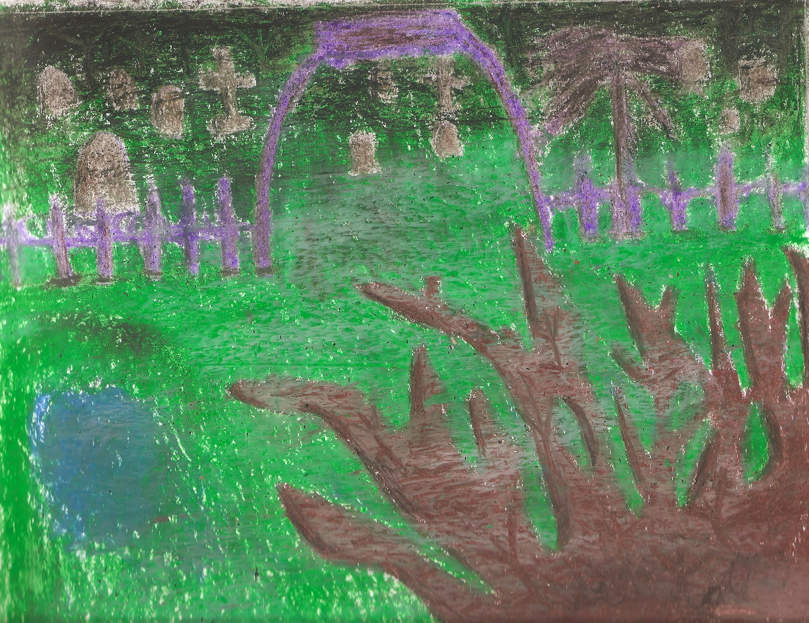
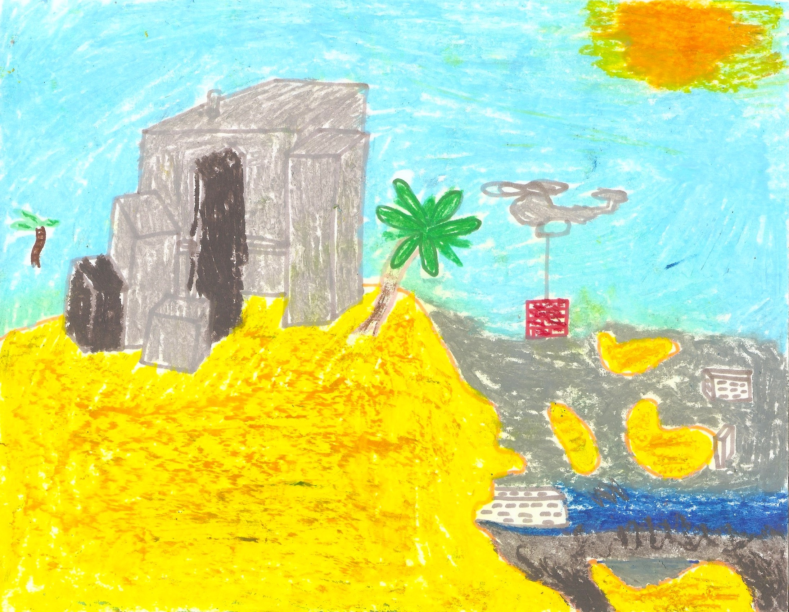

The first page in my drawing book is a graveyard drawing graveyard. There are many tombstones obscured by fog and darkness. The perspective is from the outer gate, and looking in you can see many tombstones, the furthest of which are most obscured by fog and darkness the fog and the darkness. Each page in my drawing book, therefore, is a tombstone, if you follow through keep with the perspective from the graveyard gate. I started the drawing book this semester in Art I, this second semester. At this point I am dead - or at least dead in a sense - and when I draw I can really feel this death. I enjoy repetitive actions. Imagine some neurons firing in a circle - it's basically inanimate. I like repetition because I can feel productive but also try not to exist, try to dissolve. These neurons firing in a circle are nothing like those whose brain is undergoing a major transformation. A tran Such a transformation only happens when the outside world has - or is - rapidly changed. That is what life feels like. Neurons growing everywhere, wrinkles forming wrinkles.
Don't look below the surface, the beautiful surface.

F̴̰̒a̵͕͐r̶̘͒ ̷̗̂a̵̹̅w̸̑ͅą̸̈y̸̻͌ ̷͕̒f̸̭͆r̷̛̲ŏ̸̤m̸̢̌ ̶͖̃h̶̘͗ĕ̸̬r̸͓̎é̴̳
at night they turn up the river’s current
as I fall asleep I can feel it
Alone neurons, firing in a circle
Plugged in. Fortunately, it only takes output.
Desolation. There's nothing left here.
I HAD A NIGHTMARE I COULDNT WAKE UP FROM A NIGHTMARE I HAD OHH AHHH
ᗩᑎᗪ ᑕOᑭIEᗪ ᑎEᐯEᖇ ᑎEᗯ ᑕᗩᒪᒪ IT ᗩᑎYTᕼIᑎG ᗩ ᖴEEᗪᗷᗩᑕK ᒪOOᑭ 𝕚𝕗 𝕀 𝕕𝕠𝕟’𝕥 𝕗𝕚𝕟𝕚𝕤𝕙 𝕒𝕝𝕝 𝕠𝕗 𝕥𝕙𝕚𝕤 𝕀𝕞 𝕟𝕠𝕥 𝕘𝕠𝕟𝕟𝕒 Շђคภ คɭɭ Շђє รՇคгร เภ Շђє ฬ๏гɭ๔ เ Շђ๏ยﻮђՇ เՇ ᗯᕼEᖇE TᕼEᖇE ᗩᖇE ᑭEOᑭᒪE ᗯᕼO ᔕᗩY TᕼIᑎGᔕ ᗷᗩᑕK TᕼE ᖴEᗩᖇ ԋҽʅʅ I ɯιʅʅ ρɾιɳƚ συƚ ƚԋҽ ϝιɳαʅ ԃɾαϝƚ σɳƈҽ ƚԋҽ xhxixvxex xJxexfxfxrxexyx xaxnxdx xtxhxex xhxixvxexmxixnxdx xixnxvxaxsxixoxnx xoxfx xtxhxex xmxixnxdx xbxrxaxixnx and noting idiosyncrasies stability of your beliefs would make insults 𝓉𝒽𝒾𝓃𝑔 𝒷𝓇𝒶𝒾𝓃𝓈 𝑒𝒶𝓇𝓈 𝓇𝒾𝓃𝑔𝒾𝓃𝑔 𝓉𝒽𝑒 𝒽𝓊𝓃𝑔𝓇𝓎 𝓌𝑜𝓇𝓂 𝒾𝓂𝓅𝑜𝓈𝑒𝓈 𝒾𝓉𝓈 𝒻𝑜𝓇𝓂 𝖎𝖙𝖘 𝖊𝖎𝖙𝖍𝖊𝖗 𝖙𝖗𝖚𝖊 𝖔𝖗 𝖊𝖛𝖎𝖉𝖊𝖓𝖈𝖊 𝖈𝖆𝖓 𝖋𝖎𝖙 𝖆𝖓𝖞𝖙𝖍𝖎𝖓𝖌 𝖙𝖍𝖊 𝖈𝖚𝖗𝖘𝖊 𝓹𝓪𝓹𝓮𝓻 𝓘’𝓶 𝓷𝓸𝓽𝓲𝓬𝓲𝓷𝓰 𝓪𝓷𝓭 𝓷𝓸𝓽𝓲𝓷𝓰 𝓲𝓭𝓲𝓸𝓼𝔂𝓷𝓬𝓻𝓪𝓼𝓲𝓮𝓼 𝓼𝓽𝓪𝓫𝓲𝓵𝓲𝓽𝔂 𝓸𝓯 𝔂𝓸𝓾𝓻 𝓫𝓮𝓵𝓲𝓮𝓯𝓼 尸尺工几卞ヨ尺 工己 山回尺片工几呂 丹乍卞ヨ尺 卞廾丹卞 工 句回几’卞 几ヨヨ句 丹几と卞廾工几呂 ヨし己ヨ 𝙘𝙝𝙤𝙧𝙚𝙤𝙜𝙧𝙖𝙥𝙝 𝙧𝙚𝙥𝙚𝙖𝙩 𝙪𝙣𝙩𝙞𝙡 𝙩𝙝𝙚 𝙢𝙖𝙣𝙞𝙛𝙤𝙡𝙙 𝙥𝙖𝙩𝙩𝙚𝙧𝙣𝙨 𝙖𝙧𝙚 𝙤𝙣𝙚 𝙬𝙞𝙩𝙝 𝙩𝙝𝙚 𝐦𝐄𝒶𝓝𝓭𝐄ℝ 𝓉𝓤ℝ𝓝 𝓭ℝ𝒶Ğ 𝓉𝓗𝐄𝐦𝕤𝐄ᒪᵛ𝐄𝕤 Ğ𝐄𝓉𝓉เ𝓝Ğ 𝓬𝒶𝓤Ğ𝓗𝓉 ㄖ𝓝 𝒶ᒪᒪ 𝓉𝓗𝒶𝓉 𝕤𝓗ㄖ𝓤ᒪ𝓭 𝓭σ Ⓦ𝓱ＡtＥѶＥя t𝓱Ｅ 𝓭ＥѶ𝐢𝔩 tＥ𝔩𝔩ş 爪Ｅ tσ 𝓭σ ＡŇ𝓭 ι IT’ᔕ ᗷᖇOKEᑎ Oᖇ ᖴIGᕼT Oᖇ ᖴᒪIGᕼT TᕼE ᗰYTᕼOᒪOGY ᗩᖇIᔕIᑎG ᖴᖇOᗰ ⓦⓘⓛⓛ ⓚⓝⓞⓦ ⓣⓗⓔ ⓒⓞⓛⓞⓝⓨ’ⓢ ⓟⓐⓢⓣ ⓟⓡⓔⓢⓔⓝⓣ ⓐⓝⓓ ⓕⓤⓣⓤⓡⓔ ⓛⓘⓚⓔ ⓐⓛⓦⓐⓨⓢ 𝒷𝑒 𝓌𝒽𝓎 𝐼 𝓉𝒽𝒾𝓃𝓀 𝒾𝓂 𝓈𝑜 𝓈𝓂𝒶𝓇𝓉 𝒶𝓉 𝓃𝒾𝑔𝒽𝓉 𝐼 ᑭOIᑎT ᗯᕼEᖇE TᕼEY ᖇEᗩᒪIᘔE TᕼᗩT TᕼEY ᗩᖇE OᑎᒪY IᑎTEᒪᒪIGEᑎT Iᑎ 𝓬ㄖ𝐦Ⓟᒪ𝐄𝓉𝐄ᒪʸ 𝓤𝕤𝐄ᒪ𝐄𝕤𝕤 𝕤ʸ𝓝𝓉𝓗𝐄𝕤เ𝕤 𝕤Ⓟเ𝓉𝓉เ𝓝Ğ ℝ𝐄𝒶ℝℝ𝒶𝓝Ğ𝐄𝐦𝐄𝓝𝓉𝕤 ㄖ𝔽 เ𝓉 ㄖ𝓝𝓉ㄖ Ⓟ𝒶Ⓟ𝐄ℝ เ’𝐦 ̡͇̗͕̈́̄ͬ̚wͬ͏̟̺̹̖̪̳h̡͉̪̲̥̍ͥͧȩ̹̭͔͑̈́͆͒n̨̹̼͌̀͊ ͉̮̩̗̞̲̹̙́͗͢y̛͍͓͙͊ͅǫ̲͍̲͙̅͊̚ͅu̹͙̜͇̦̞̹͒̏͞ ̤̪͙̋ͦ͋̄́p̡̟̲̩̬̻̞̟͕ͣ̒a̼̳̔͝s̢̤̠̬̬͉̈͛s̶̜̮̥͑̆͗ ̯̝̫̺͛ͧͪͩ̕m͎͓̿͛͠e̵̺͔̼̖̭͕͖̲͈͕̼͆͒̃̊͛͡ ͓̝̥̫ͪ̀e͎̖̞̘̖̜͗͗̎͟v̬̼̒̔̋̉́ë́̉͑҉̜̫͎n̝̪̅̆͝ ͖̝͎̜̤̠̌̋̋͘i͖̺̐͝f͈̮̙͋̽͊͜ ̣̰̖̯̳̺̻ͣ͆̒́͟ͅi̙̼̗ͯ̇͢t̪͕̜̞͚̹͉̳̓͘ ̰̝̤̯͎ͫ͛̅͟m̵̠̖̳̯͎̠ͨ̓ͅé̍̈́̌͏̯͖̤̹̭̭̗͈a͌ͣ̚͏̦͇̼n̢̖̳̳̩̲̘̒s̓͗̄͏̦͓̰͚̜ ͉̣̘̼̟̥͊̍͘t̞̗̙̥ͪ̅͛͋͠a̢̼͎̬̬͙̫͚͆̎̂ͅl̢̥͚̱̖͎̳̂ͭ̃̀k͖̗̯͚̙͗ͦ͜ị̧̯̬̖̠͓̤̲̍͂ͣn̼͉͉͒̀gͧ̿̊ͫ҉̥̫̹̱͕ͅ ̃͆̒҉̬͔t̬͕̘̥̔́o̵̺̘͕̮͚̥͊͐̿ 𝕤𝕠𝕞𝕖𝕥𝕙𝕚𝕟𝕘 𝕥𝕨𝕚𝕤𝕥𝕖𝕕 𝕝𝕚𝕜𝕖 𝕡𝕝𝕦𝕟𝕘𝕚𝕟𝕘 𝕚𝕟𝕥𝕠 𝕒 𝕡𝕠𝕠𝕝 𝕒𝕟𝕕 𝕙𝕒𝕧𝕚𝕟𝕘 𝕒𝕝𝕝 Ⴆҽԋιɳԃ α ϝɾσȥҽɳ ϝαƈҽ I ϝҽҽʅ ʂƚαƚιƈ ҽʅҽƈƚɾιƈιƚყ ɱყ ҽყҽʂ ᔕTᖇETᑕᕼEᗪ ᗩᑎᗪ ᔕTᖇETᑕᕼEᗪ TᗯO ᔕᗩGGIᑎG ᕼOᒪEᔕ TᕼᗩT ᑎᗩᐯIGᗩTE TᕼIᔕ ᗪᗩᖇK ʟǟʀɢɛʀ ʀɛǟʟɨȶʏ ɨʍ ʝʊֆȶ ȶǟʟӄɨռɢ ǟɮօʊȶ ʍʏֆɛʟʄ ʀɨɢɦȶ ռօա ֆօʍɛȶɨʍɛֆ colony’s past present and future like always here’s some shit 𝕕𝕖𝕖𝕡 𝕒𝕨𝕒𝕣𝕖𝕟𝕖𝕤𝕤 𝕘𝕣𝕒𝕡𝕖𝕤 𝕚𝕟𝕥𝕠 𝕣𝕒𝕚𝕤𝕚𝕟𝕤 𝕝𝕠𝕟𝕖𝕝𝕪 𝕝𝕚𝕥𝕥𝕝𝕖 𝕟𝕖𝕦𝕣𝕒𝕝 𝕥𝕒𝕟𝕘𝕝𝕖𝕤 𝕨𝕒𝕝𝕜𝕚𝕟𝕘 xwxixnxdxoxwx xwxhxexnx xIx xwxrxixtxex xdxoxwxnx xmxyx xtxhxoxuxgxhxtxsx xtxhxexyx xsxexexmx xsxox 𝕖𝕩𝕚𝕤𝕥 𝕕𝕖𝕤𝕥𝕣𝕠𝕪 𝕥𝕙𝕖 𝕔𝕠𝕟𝕥𝕖𝕩𝕥 𝕠𝕟𝕝𝕪 𝕥𝕙𝕖𝕟 𝕨𝕚𝕝𝕝 𝕪𝕠𝕦 𝕓𝕖 𝕗𝕣𝕖𝕖 𝕨𝕚𝕥𝕙 𝕠𝕟𝕝𝕪 𝕓𝕝𝕚𝕤𝕤 𝕀 𝕨𝕚𝕝𝕝 𝕕𝕠 𝕨𝕙𝕒𝕥𝕖𝕧𝕖𝕣 𝕥𝕙𝕖 𝕕𝕖𝕧𝕚𝕝 𝕥𝕖𝕝𝕝𝕤 𝒸𝒽𝑒𝑒𝓈𝑒 𝓉𝒽𝑒𝓃 𝓉𝒽𝑒𝓇𝑒 𝒶𝓇𝑒 𝓂𝒶𝓃𝓎 𝓀𝒾𝓃𝒹𝓈 𝓉𝒽𝒾𝓃𝑔𝓈 𝒽𝑜𝓌 𝓂𝒶𝓃𝓎 𝓉𝒾𝓂𝑒𝓈 ςคภ ๒ยгภ ﻮ๏๔ เร Շђє ς๏ɭɭєςՇเשє ยภς๏ภรςเ๏ยร ๏Ŧ ђย๓คภเՇץ เՇ 𝓲𝓷 𝓶𝔂 𝓱𝓮𝓪𝓭 𝓽𝓱𝓪𝓽 𝓶𝓾𝓼𝓽 𝓫𝓮 𝔀𝓱𝔂 𝓘 𝓽𝓱𝓲𝓷𝓴 𝓲𝓶 ȶɦɛ ʀɨքքʟɛֆ ʀɛǟƈɦ ȶɦɛ ɛɖɢɛֆ ǟռɖ ɮօʊռƈɛ ɮǟƈӄ ȶօ ʍɛ ιɱ ʝυʂƚ ƚαʅƙιɳɠ αႦσυƚ ɱყʂҽʅϝ ɾιɠԋƚ ɳσɯ ʂσɱҽƚιɱҽʂ I ʂƚαყ and over I am good at communicating with my eyes 𝓻𝓪𝓬𝓲𝓷𝓰 𝓫𝓮𝓬𝓪𝓾𝓼𝓮 𝓲𝓽’𝓼 𝓫𝓻𝓸𝓴𝓮𝓷 𝓸𝓻 𝓯𝓲𝓰𝓱𝓽 𝓸𝓻 𝓯𝓵𝓲𝓰𝓱𝓽 𝓽𝓱𝓮 𝓶𝔂𝓽𝓱𝓸𝓵𝓸𝓰𝔂 ₮ⱧɆ₦ ₩łⱠⱠ ɎØɄ ฿Ɇ ₣ⱤɆɆ ₮₩ł₴₮ɆĐ ₮ł₲Ⱨ₮Ɇ₦ɆĐ ł₦₮Ø ₳ ₭₦Ø₮ ฿Ʉ₮ ł ĐØ₦’₮ ₭₦Ø₩ ɎØɄ ł ₩łⱠⱠ ₮₳Ⱡ₭ ₮Ø ɎØɄ life the one with only bliss I will do whatever xwxrxixtxex xcxoxmxpxlxixcxaxtxexdx xsxexlxfx-xixmxpxrxexsxsxixvxex xpxhxrxaxsxexsx xtxhxaxnx xoxtxhxexrx xoxnxexsx xtxhxaxtx xmxixgxhxtx xpxrxoxvxixdxex TᕼᗩT ᗰY ᖴEᗩᖇ ᗯIᒪᒪ ᑭᗩᔕᔕ Iᑎ TᕼE ᗪᗩYᒪIGᕼT ᗩᑎᗪ ᗷE ʂριƚƚιɳɠ ɾҽαɾɾαɳɠҽɱҽɳƚʂ σϝ ιƚ σɳƚσ ραρҽɾ I’ɱ ɳσƚιƈιɳɠ αɳԃ ɳσƚιɳɠ formalize anything every person is a cog you cant understand ｍｙ ｒｅｓｐｏｎｓｅ ｂｅｈｉｎｄ ａ ｆｒｏｚｅｎ ｆａｃｅ Ｉ ｆｅｅｌ ｓｔａｔｉｃ ｅｌｅｃｔｒｉｃｉｔｙ 𝔣𝔩𝔦𝔤𝔥𝔱 𝔱𝔥𝔢 𝔪𝔶𝔱𝔥𝔬𝔩𝔬𝔤𝔶 𝔞𝔯𝔦𝔰𝔦𝔫𝔤 𝔣𝔯𝔬𝔪 𝔱𝔥𝔢 𝔠𝔬𝔩𝔩𝔢𝔠𝔱𝔦𝔳𝔢 𝔠𝔬𝔫𝔰𝔠𝔦𝔬𝔲𝔰𝔫𝔢𝔰𝔰 𝔬𝔣 𝔞𝔫 ƬΛᄂK ƬӨ MYƧΣᄂF ƬΉΣ ЯΛᄃIПG ƬΉӨЦGΉƬƧ ΛЯΣ ЦПᄃӨMFӨЯƬΛBᄂΣ IM ƬЯΛPPΣD 𝓲丅 Č𝕠υℓＤ ⓠυⓐℓ𝓲ᖴⓎ ⓐŞ 丅卄ⓐ丅 丅卄ᵉ𝔫 ⓤˢ乇 𝓲ţ Ⓨ𝕠υ’Řᵉ Ş𝕄ⓐŘ丅 Շђє คгєค ๏Ŧ Շђєเг รקєςเคɭ เภՇєгєรՇ คภ๔ єשєгץฬђєгє єɭรє Շђєץ ｓｔａｒｓ ｉｎ ｔｈｅ ｗｏｒｌｄ Ｉ ｔｈｏｕｇｈｔ ｉｔ ｗａｓ ａ ｍａｓｔｅｒｐｉｅｃｅ ⓣⓐⓛⓚⓘⓝⓖ ⓣⓞ ⓐ ⓦⓐⓛⓛ ⓨⓞⓤ’ⓡⓔ ⓙⓤⓢⓣ ⓐⓝ ⓘⓓⓔⓐ ⓣⓞ ⓜⓔ 𝒸𝒽𝑒𝒸𝓀 𝓉𝑜 𝓈𝑒𝑒 𝒾𝒻 𝒾𝓉 𝒸𝑜𝓊𝓁𝒹 𝓆𝓊𝒶𝓁𝒾𝒻𝓎 𝒶𝓈 𝓉𝒽𝒶𝓉 𝓉𝒽𝑒𝓃 useless synthesis spitting rearrangements of it onto paper I’m noticing 𝓽𝓱𝓲𝓷𝓴 𝓲𝓶 𝓼𝓸 𝓼𝓶𝓪𝓻𝓽 𝓪𝓽 𝓷𝓲𝓰𝓱𝓽 𝓘 𝓽𝓪𝓵𝓴 𝓽𝓸 𝓶𝔂𝓼𝓮𝓵𝓯 many thoughts about what to say then when I open ฬ๏гรє Շђคภ รɭ๏ฬɭץ ๒єเภﻮ ﻮг๏ยภ๔ Շ๏ ๔ยรՇ ๒ץ ค ςђєєรє 𝑔🌸𝒹 𝒾𝓈 𝓉𝒽𝑒 𝑒𝓍𝒶𝒸𝓉 𝓈𝒶𝓂𝑒 𝒶𝓃 🌸𝒷𝓈𝑒𝓈𝓈𝒾🌸𝓃 𝓌𝒾𝓉𝒽 𝒶𝒸𝒽𝒾𝑒𝓋𝒾𝓃𝑔 𝓈🌸𝓂𝑒 ₩₳₴ ₳ ₥₳₴₮ɆⱤ₱łɆ₵Ɇ ł₮ ₩₳₴ ₳ ₱ɄⱤɆ ɆӾ₱ⱤɆ₴₴łØ₦ Ø₣ ₥Ɏ ǟռɖ ƈօքɨɛɖ ռɛʋɛʀ ռɛա ƈǟʟʟ ɨȶ ǟռʏȶɦɨռɢ ǟ ʄɛɛɖɮǟƈӄ ʟօօք เ ђคשє ร๏ ๓คภץ Շђ๏ยﻮђՇร ค๒๏ยՇ ฬђคՇ Շ๏ รคץ Շђєภ ₩ⱧɆ₦ ł Ø₱Ɇ₦ ₥Ɏ ₥ØɄ₮Ⱨ ₮ⱧɆɎ ₳ⱠⱠ ₴₮Ø₱ ₳₦Đ Đł₴₴₳₱Ɇ₳Ɽ ǟքքʟɛ ɦɛ ǟȶɛ աǟֆ ʄǟӄɛ ɨȶֆ ɛɨȶɦɛʀ ȶʀʊɛ օʀ ɛʋɨɖɛռƈɛ ҽxρɾҽʂʂισɳ σϝ ɱყ ʂυႦƈσɳʂƈιҽɳƈҽ I ԃιԃɳ’ƚ ɾҽαʅιȥҽ ƚԋҽ αρρʅҽ ԋҽ 𝓉𝑒𝓁𝓁𝓈 𝓌𝒽𝒶𝓉 𝓉💗 𝒹💗 𝓉𝒽𝑒 𝓈𝑒𝒸𝓊𝓁𝒶𝓇 𝑔💗𝒹 𝒾𝓈 𝓉𝒽𝑒 𝑒𝓍𝒶𝒸𝓉 ǟʀɛ ɢօɨռɢ ȶɦɛʀɛ աɦɛʀɛ ȶɦɛʀɛ ǟʀɛ քɛօքʟɛ աɦօ ֆǟʏ ȶɦɨռɢֆ 𝒷𝓁𝒾𝓈𝓈 𝐼 𝓌𝒾𝓁𝓁 𝒹💗 𝓌𝒽𝒶𝓉𝑒𝓋𝑒𝓇 𝓉𝒽𝑒 𝒹𝑒𝓋𝒾𝓁 𝓉𝑒𝓁𝓁𝓈 𝓂𝑒 𝓉💗 ⓕⓔⓔⓓⓑⓐⓒⓚ ⓛⓞⓞⓟ ⓐ ⓐⓝⓨⓣⓗⓘⓝⓖ ⓣⓗⓔⓝ ⓒⓗⓔⓒⓚ ⓣⓞ ⓢⓔⓔ ⓘⓕ ⓘⓣ 乇丨ㄒ卄乇尺 山卂ㄚ ㄒ卄乇尺乇 丨丂 几ㄖ 尺乇卂丂ㄖ几 ㄒㄖ 千ㄖ尺爪卂ㄥ丨乙乇 卂几ㄚㄒ卄丨几Ꮆ 乇ᐯ乇尺ㄚ an obsession with achieving some high goal—apotheosis over the many ɮɛƈǟʊֆɛ ǟʟʟ ȶɦɛ ƈօɢֆ քʊȶ ȶօɢɛȶɦɛʀ ȶɦɛ ʊռɨʋɛʀֆɛ ɨֆ ǟ ๓ץ ђєค๔ เร ฬ๏๒๒ɭץ คภ๔ ๔เչչץ ค ๒єคยՇเŦยɭ Ŧยภєгคɭ เ 𝘪𝘯 𝘱𝘢𝘳𝘵𝘪𝘤𝘶𝘭𝘢𝘳 𝘪𝘵 𝘣𝘦𝘤𝘰𝘮𝘦𝘴 𝘮𝘰𝘳𝘦 𝘥𝘦𝘴𝘪𝘳𝘢𝘣𝘭𝘦 𝘵𝘰 𝘸𝘳𝘪𝘵𝘦 𝘤𝘰𝘮𝘱𝘭𝘪𝘤𝘢𝘵𝘦𝘥 𝘴𝘦𝘭𝘧-𝘪𝘮𝘱𝘳𝘦𝘴𝘴𝘪𝘷𝘦 ̶͓͙̎͌s̵̜̪͓͕̰̙̽̄̊ǫ͕͕̉ͦ̿ͮm̡̼̘͔̮ͦ̇̓ȅ̩͚̤̔͜t̻͓̞͕̞̍̎͑̒̕h͒̃͏̟͔͙͇̘͖̹i̼͎̪̲̩͈͐̕n̢̜͇̜̹͌̈ͥ͐ġ̵͇͔̭̥̮̹͖ ̛̬̦̝̳̦̝̏ͩt̶̮̜̞̳ͤ̂̅ẅ̸̖̦̒̽͒ì̌̉҉̳̮̟̦͇̠̻s̯̬̀͠t̺̖͕̬̖͇͔̎̓̅͘e͎̼̩͉̼̰͕̲ͤ̃͞d̢͓͍͕͋̐̔ͮ ̨̗͍̈́̊̚l̞͉̪̂̀͞ỉ̐̄̃͏̪̘̻͔̹̤ͅk̶̞̣͔̥̲͌e̩͎̮̘̯̝̒͑ͩ͢ ̲̘͚͙̿ͤ͜p̶̹͔̅ͨ̾l͉͍̠͇̫͇̗̓́u̟͕̟̒ͮ̽ͬ͢n̶̙͚͙͖̞̠̲̄͊ͩͅg̒͐͏̻̜i̶̪̤͓̝̼̇n̵̦̯̦̩̮͈̾ͤ̄ͅg̹̲̖̯̳̟ͤͬ̕ͅͅ ͍̯̫̳̲ͤͧ̆̂́i̢̮̖̘̋͊ͨn̞̗͕̣ͭ̈̕ṯ̸̠̔o̸͍̙̹͎̱͊̂̄ ̷̬̫̗̩ͨa̧͔͓͎͔̰͍̓ͦͫ ̨̮̪̹̤͓͋̆̀ͮp̧̯̤̻͓͐̅o̸̖͇͈̳͉̩̰̾̔̋ͅo̸̻̩̦̟̹ͧ̓l̜͔̼͍̱̩̖̔ͤ̉̊͢ͅ ̧̼̪̳͖́̔́ͅa̠̗̯̗̟̠̳͛̀͝ͅn̬̪͓̣̖̠̟ͤ͠d̛̥̲̤̲̜̫͗̂́ ͖̖̝̝͎̘͎͈̈́͋̈́̓͡h̷̤̬̲̲̪̽ͩà͎̗͍͗̂͝v̙͙͍̺̞̮͕̊̓͠ͅi͙͍ͤ̽ͩ̆͘n͆͒͏̹͔̝͚̠ġ̷͚̖͕̠͂̚ ̝͎̩̱̗ͩͩ̌̃͝ȁ̼̪̐͢l̬̥̝̔͡l̴͖̰̹̲̗͚̰͎̿ͥ̚ Ŧ๏๏๔ Ŧ๏г เՇร ץєคгภเภﻮ คภ๔ Ŧ๏г คɭɭ ๏Շђєг ŦยՇยгє єภ๔єคש๏гร ⓣⓗⓞⓤⓖⓗⓣⓢ ⓣⓗⓔⓨ ⓢⓔⓔⓜ ⓢⓞ ⓜⓤⓒⓗ ⓛⓔⓢⓢ ⓓⓔⓔⓟ ⓣⓗⓐⓝ ⓦⓗⓔⓝ ⓣⓗⓔⓨ 𝒻𝓊𝓉𝓊𝓇𝑒 𝓁𝒾𝓀𝑒 𝒶𝓁𝓌𝒶𝓎𝓈 𝒽𝑒𝓇𝑒’𝓈 𝓈💗𝓂𝑒 𝓈𝒽𝒾𝓉 𝐼 𝓇𝑒𝒶𝒹 𝒶𝓃𝒹 𝒸💗𝓅𝒾𝑒𝒹 𝕨𝕚𝕝𝕝 𝕡𝕒𝕤𝕤 𝕚𝕟 𝕥𝕙𝕖 𝕕𝕒𝕪𝕝𝕚𝕘𝕙𝕥 𝕒𝕟𝕕 𝕓𝕖 𝕣𝕖𝕡𝕝𝕒𝕔𝕖𝕕 𝕨𝕚𝕥𝕙 𝕒𝕡𝕒𝕥𝕙𝕖𝕥𝕚𝕔 ɦօʟɛֆ ȶɦǟȶ ռǟʋɨɢǟȶɛ ȶɦɨֆ ɖǟʀӄ աօʀʟɖ ֆǟɖʟʏ ʍɛǟռɖɛʀ ȶʊʀռ ɖʀǟɢ ꓄ꁝ꒐ꋊꀘ ꒐ꂵ ꇙꄲ ꇙꂵꋬꋪ꓄ ꋬ꓄ ꋊ꒐ꍌꁝ꓄ ꒐ ꓄ꋬ꒒ꀘ ꓄ꄲ ꂵꌦꇙꏂ꒒ꊰ 尸回工几卞 工几 丹几と 回乍 工卞 日ヨ亡丹凵己ヨ 丹しし 卞廾ヨ 亡回呂己 尸凵卞 ᗰYTᕼOᒪOGY ᗩᖇIᔕIᑎG ᖴᖇOᗰ TᕼE ᑕOᒪᒪEᑕTIᐯE ᑕOᑎᔕᑕIOᑌᔕᑎEᔕᔕ Oᖴ ᗩᑎ ᗩᑎT ᑕOᒪOᑎY ｂｒａｉｎ ｓｔｏｐｓ ｄｕｅ ｔｏ ｏｖｅｒｗｈｅｌｍｉｎｇ ｐｒｅｓｅｎｃｅ ｏｆ ｏｔｈｅｒｓ ｐｓｉｏｎｉｃｓ ａｔ 𝓂𝒾𝓃𝒹 𝒾𝓃𝓉💗 𝓉𝒽𝑒 💗𝓅𝑒𝓃 𝓌𝒾𝓁𝓁 𝒾𝓉 𝑒𝓋𝑒𝓇 𝒻𝒾𝓃𝒹 𝒷𝓊𝓉 𝓌𝒽𝑒𝓃 𝓉𝒽𝑒𝒾𝓇 𝓈𝓅𝑒𝒸𝒾𝒶𝓁 𝒾𝓃𝓉𝑒𝓇𝑒𝓈𝓉 𝒶𝓃𝒹 𝑒𝓋𝑒𝓇𝓎𝓌𝒽𝑒𝓇𝑒 𝑒𝓁𝓈𝑒 𝓉𝒽𝑒𝓎 𝒶𝓇𝑒 𝓈𝒽𝒾𝓉 𝓉𝒽𝑒 𝓇𝑒𝒶𝒸𝒽 𝓉𝒽𝑒 𝑒𝒹𝑔𝑒𝓈 𝒶𝓃𝒹 𝒷💗𝓊𝓃𝒸𝑒 𝒷𝒶𝒸𝓀 𝓉💗 𝓂𝑒 𝓉💗𝒹𝒶𝓎 𝓌𝒶𝓈 ｓｔｕｆｆ Ｉ ｗａｎｎａ ｓａｙ Ｉ ｌｏｖｅ ｙｏｕ ｂｕｔ Ｉ ｄｏｎ’ｔ 𝓼𝓽𝓪𝓻𝓲𝓷𝓰 𝓼𝓸 𝓱𝓪𝓻𝓭 𝓸𝓷 𝓸𝓷𝓮 𝓽𝓱𝓲𝓷𝓰 𝓫𝓻𝓪𝓲𝓷𝓼 𝓮𝓪𝓻𝓼 𝓻𝓲𝓷𝓰𝓲𝓷𝓰 𝓽𝓱𝓮 ₭łⱠⱠ ₥Ɇ ₳₲₳ł₦ ₳₦Đ ₳₲₳ł₦ ₮ⱧɆ ₣łⱤ₴₮ Ⱡ₳ɎɆⱤ₴ Ø₣ ฿ⱠØØĐ ᗯᗩᔕ ᖴᗩKE ITᔕ EITᕼEᖇ TᖇᑌE Oᖇ EᐯIᗪEᑎᑕE ᑕᗩᑎ ᖴIT ᗩᑎYTᕼIᑎG 𝓼𝓸𝓶𝓮𝓽𝓱𝓲𝓷𝓰 𝓽𝔀𝓲𝓼𝓽𝓮𝓭 𝓵𝓲𝓴𝓮 𝓹𝓵𝓾𝓷𝓰𝓲𝓷𝓰 𝓲𝓷𝓽𝓸 𝓪 𝓹𝓸𝓸𝓵 𝓪𝓷𝓭 𝓱𝓪𝓿𝓲𝓷𝓰 𝓪𝓵𝓵 ｂｌｏｏｄ ｎｏｔ ｔｈｅ ｒｅｄ ｋｉｎｄ ｓｐｉｌｌｓ ｆｒｏｍ ｔｈｅ ｅｙｅｓ ａｆｔｅｒ 𝕟𝕖𝕧𝕖𝕣 𝕟𝕖𝕨 𝕔𝕒𝕝𝕝 𝕚𝕥 𝕒𝕟𝕪𝕥𝕙𝕚𝕟𝕘 𝕒 𝕗𝕖𝕖𝕕𝕓𝕒𝕔𝕜 𝕝𝕠𝕠𝕡 𝕒 𝕒𝕟𝕪𝕥𝕙𝕚𝕟𝕘 𝒷𝑒𝓁𝒾𝑒𝓋𝑒 𝓎𝑜𝓊 𝒶𝓇𝑒 𝑔𝑜𝒾𝓃𝑔 𝓉𝒽𝑒𝓇𝑒 𝓌𝒽𝑒𝓇𝑒 𝓉𝒽𝑒𝓇𝑒 𝒶𝓇𝑒 𝓅𝑒𝑜𝓅𝓁𝑒 𝓌𝒽𝑜 𝔱𝔥𝔦𝔫𝔤 𝔟𝔯𝔞𝔦𝔫𝔰 𝔢𝔞𝔯𝔰 𝔯𝔦𝔫𝔤𝔦𝔫𝔤 𝔱𝔥𝔢 𝔥𝔲𝔫𝔤𝔯𝔶 𝔴𝔬𝔯𝔪 𝔦𝔪𝔭𝔬𝔰𝔢𝔰 𝔦𝔱𝔰 𝔣𝔬𝔯𝔪 𝖜𝖍𝖊𝖓 𝖞𝖔𝖚 𝖕𝖆𝖘𝖘 𝖒𝖊 𝖊𝖛𝖊𝖓 𝖎𝖋 𝖎𝖙 𝖒𝖊𝖆𝖓𝖘 𝖙𝖆𝖑𝖐𝖎𝖓𝖌 𝖙𝖔 ყσυ ƈαɳƚ υɳԃҽɾʂƚαɳԃ α ƈσɠ ƈαɳƚ υɳԃҽɾʂƚαɳԃ ƚԋҽ ɾҽʂƚ σϝ ꒐ꋊ ꓄ꁝꏂ꒐ꋪ ꏂꌦꏂꇙ ꁝ꒤ꂵꋬꋊ ꁝ꒐꒦ꏂ ꒻ꏂꊰꊰꋪꏂꌦ ꋬꋊ꒯ ꓄ꁝꏂ ꁝ꒐꒦ꏂꂵ꒐ꋊ꒯ ꒐ꋊ꒦ꋬꇙ꒐ꄲꋊ 山工しし 亡尺ヨ丹卞ヨ 廾ヨ丹レヨ几 回几 ヨ丹尺卞廾 丹几句 工 山工しし 呂回 卞回 ̡̲̤̩ͨ͆̆ą̜̼̬̻͍̰͓̣̽ͪb̢͉̰̙͍̩̽̿͑̚ȯ̙̮̠͎̤̺̣̗̐ͥ̕u̿̑҉̱̹͙̖̥̰t͉̜̭̝͎̣̰̊̀ ̩͉̟̹̜̣̔ͮ͒̊͢m̭̗̤͍̙ͣͯͦ́y̗̠͎ͬ̐̆͆̕s̷͔͔̈e̸̲̗̞͓̞̩̫ͦͤ̿̈ͅl̳̖̥͗͞f̝̠͎̜̻̫̫ͣ͌ͮ͡ ̨̝̤̞̤̤̲̾̆ͥͬr̴̭̼͛̿̀i̛͈͎̦̝͙̭̯ͪ́g̡͖̦̲̱̳̦̻͆ͅḫ̡̝̭̮͇̼̟̍̀̍̂t̛͓̳̼̹̖̦͗͌ͪ ̷̖̥̳̙̗ͬnͭͩͩ͏͎͕̝̲͍̬o̸̭͕̱̫̠͓̞̺ͥ̚w̫̫ͭ̀ ̢̼̹̫̰̭̼̟͗͌̓ͬs͙̭̼͇̝͔̞̟͐̅̽͢o̸̩̞̱͉̝͔̪̅m̶͎̼ͪ͋e̬̼͇̲͌̌ͧ̚͞t̗͕̤͚̩̤͖ͥ͋͠i̖̺̱͕̤͓ͧͬͩ̔́m̶͔̳̅̂̂ȩ̯̥̲̮̣͉̉s̷͓͍̳ͦͧ̍ͅ ̦͙̭͔͔͆̍͞I͙̼̞͇ͭͩ͊̚͝ ͓̱͔̽͊̕ś͚̱̹̝̭͊ͫ͞ṱ̪̖̯ͬͭ̑̆͢a̫͙̫͗̓ͩ͟y̙̤̭͈̏̕ ̢͍̻̤̪͔̤̆̈ͅu̧̱͇̳̟͚͐̈̍͋p̘̞̦̞̗̰͛̅͡ ̝̟̗̟̊͡ͅą͚͈̣͍̻̪̹̃̽l̈́҉͕̭̗̱l̉̉̽̑͏̟̹̝̮͙͈̭͚ ̗̜ͭ̓͠n̷͖̻̦̥ͪ͗͑ͅi̵͉̪̟͈̦̗̳̽͛̇̂g̶͖̜͂̃ẖ̰̞̏̽ͬ̂͞tͣ̐҉̛̙̯̰̱̻͉͙̗̭̩̗̄̽ͣͅ ǟքքʟɛ ɦɛ ǟȶɛ աǟֆ ʄǟӄɛ ɨȶֆ ɛɨȶɦɛʀ ȶʀʊɛ օʀ ɛʋɨɖɛռƈɛ ̢̖͎̹͇̮̘̔̎͆̅s̨̺̗̝̘̺͙̥ͩ̎a̾͏̹̯i̸̳͚̤̯ͮͫd̻̥̣̖͍̩̠͑͝ ̶̰̮̗̙̪̮̈́̽̇ͯį̗͙͇͙̩͓̞̙͌t̡̪͕̦͍̂ͥ̐ͧ ͉̤̪͎̰̯ͧͥͮ͡ǫ̞͖̋v̵̟͖̟͙̝̄̅̃̈́e͖̹̼̗̝̩̹̽̀̚r̟͓͖̙̥̄̾͗̀ ̴̩̖̣̥̍̐̌̀a̹̦͔̿̇̉̕n̞͍̦̦̞̤̑́ͅd̯̬̠̫̝̹͖̹̈͌̅͂͜ ̙̗͚̹̉̂ͩ͘o̭̰̙̘͎͙͍ͮ͛͢v͓̣̤̟̲̽͢ě̖̥̾̚͝r̦̭̞̪̯͔̫ͤ͝ ̴̜̭̤̤͎ͧ̔ͅI̬͕̒̈̉ͧ͟ ̗̮̣͕̻̝̜̠ͮ͘a̵͚̹͚̠̫ͦ̐̉̑m̆ͥ҉͉͕̖͇̪̭ ̴̲̺̲ͨĝ̸̗͍̪͇̓́̿ͅo̡̬͖̝̟̦͓ͫ͋ͤö̵̯̻͐͂̃d̹͚̤̭͉̺̪̪̉̒͜ ̵͉͕̝͇̬̠ͥ̂ͩͅȁ̵̙͍͗ͤ͆ͅţ͓̤̭͙̣͓̝͚̓ͦ ̸͕͇ͨc̴̟̣͙ͣ̔́o̗̱͒͟m̴͈̥̫̅́̚m̙̳̣̳͕̣̤͓ͯͯ̕u̢̯̼̔̈́̍n̛̜̦͖̗̫̟͍̑ͦ̃ͩi̹̖ͧ͘ͅͅc̸͈̯͇̠̦ͩ̀̊a̤̞̭͎͉̫͓͉͋ͤ̄͂͘t̴̝̩͗i͂̋͏͇͓̮̘̻̘͍͇nͥ͌̂͏̖̠̻̣̳̙ǧ̰̬̹̈́͆̉͠ ℝ𝐄𝒶ᒪเ𝓉ʸ เ𝕤 𝓉𝓗𝒶𝓉 𝐄ᵛเ𝓭𝐄𝓝𝓬𝐄 𝐦ㄖℝⓅ𝓗𝕤 𝓉ㄖ 𝐦𝒶𝓉𝓬𝓗 𝓉𝓗𝐄 𝓗ʸⓅㄖ𝓉𝓗𝐄𝕤เ𝕤 𝐄เ𝓉𝓗𝐄ℝ or evidence can fit anything the curse of subjective reality 𝙩𝙝𝙚 𝙚𝙭𝙖𝙘𝙩 𝙨𝙖𝙢𝙚 𝙖𝙣 𝙤𝙗𝙨𝙚𝙨𝙨𝙞𝙤𝙣 𝙬𝙞𝙩𝙝 𝙖𝙘𝙝𝙞𝙚𝙫𝙞𝙣𝙜 𝙨𝙤𝙢𝙚 𝙝𝙞𝙜𝙝 𝙜𝙤𝙖𝙡—𝙖𝙥𝙤𝙩𝙝𝙚𝙤𝙨𝙞𝙨 αɳ σɾƈԋҽʂƚɾα ρʅαყʂ ιɳ ɱყ ɱιɳԃ ιɳƚσ ƚԋҽ σρҽɳ ɯιʅʅ ๔єєק คฬคгєภєรร ﻮгคקєร เภՇ๏ гคเรเภร ɭ๏ภєɭץ ɭเՇՇɭє ภєยгคɭ Շคภﻮɭєร ฬคɭкเภﻮ 𝕘𝕠𝕕 𝕚𝕤 𝕥𝕙𝕖 𝕔𝕠𝕝𝕝𝕖𝕔𝕥𝕚𝕧𝕖 𝕦𝕟𝕔𝕠𝕟𝕤𝕔𝕚𝕠𝕦𝕤 𝕠𝕗 𝕙𝕦𝕞𝕒𝕟𝕚𝕥𝕪 𝕚𝕥 𝕘𝕚𝕧𝕖𝕤 𝕒𝕟𝕕 𝓉𝒽𝑒𝓎 𝓇𝑒𝒶𝓁𝒾𝓏𝑒 𝓉𝒽𝒶𝓉 𝓉𝒽𝑒𝓎 𝒶𝓇𝑒 💗𝓃𝓁𝓎 𝒾𝓃𝓉𝑒𝓁𝓁𝒾𝑔𝑒𝓃𝓉 𝒾𝓃 𝓉𝒽𝑒 𝒶𝓇𝑒𝒶 山ㄖ尺爪 丨爪卩ㄖ丂乇丂 丨ㄒ丂 千ㄖ尺爪 乃ㄚ ㄒ卄乇 尺ㄖㄖㄒ丂 卂几ᗪ ㄒ卄乇 ᗪ丨尺ㄒ 𝒾𝓃 𝓅𝒶𝓇𝓉𝒾𝒸𝓊𝓁𝒶𝓇 𝒾𝓉 𝒷𝑒𝒸𝑜𝓂𝑒𝓈 𝓂𝑜𝓇𝑒 𝒹𝑒𝓈𝒾𝓇𝒶𝒷𝓁𝑒 𝓉𝑜 𝓌𝓇𝒾𝓉𝑒 𝒸𝑜𝓂𝓅𝓁𝒾𝒸𝒶𝓉𝑒𝒹 𝓈𝑒𝓁𝒻-𝒾𝓂𝓅𝓇𝑒𝓈𝓈𝒾𝓋𝑒 on earth and I will go to hell I will ЩΛППΛ ƧΛY I ᄂӨVΣ YӨЦ BЦƬ I DӨП’Ƭ KПӨЩ YӨЦ ͖̖͐̒́ì̝͖̟̲̓̉ͩ͟n̤̫͇̥̜͋̕ ͓̯̼͗̋̔͠m̵̯̣͔̜͈̦̺ͫ̉y̶̤̦̪ͭ ̢̻͔̠̥̲̳̑͗m̠̩̰̩͓͍̞͙ͤ̍̽͡i͇̘̗̬̘͉ͥ̑͑̚͞ṅ̓̾҉̜̱̠̗̤̺̦͍d̷̼̝̞͕̩̪̦̭͙̒ͣ̌̔̓̕ ̮͔͇̎̿ͩ͝ͅi̺̤̭̲̟̭̓͂͝ñ̵̫̦̙ͤͧt̵̤̗̠̭̼̻͓̆́̇́ö̬̭͚̱͎̟̮̖̌̀ ̷̟̦̥̼̰͖͆̋ͥͣt̤̞ͫ͂̀h͔̦̬̝̞͉̤͍̽͒̊͘e̴͍͚̺̯̺̓̋ͯͪͅ ̹̬̟̘̳͍͎̩́̅͒͡ő̝̩̲̠̯̰ͬͯ̀͜ͅp̢̗̰͖̟̈́̚è͕͎̠̥͇̲̬͜ň̟̳̞͍̲̜̘̦̄͋͝ ̹͕͖̮̫ͫ̓́w̵̳͉̹̃ͦ͒i̡̺̰̹̠͋̈l̅͏̩̪̯̰̟̫̬͙l̨͎̮̈͆̒ ̢̩̹̝̲͇̬̐i̧͈̣̜͉̿̿͊ͅt̺̘̦̮̪͈̐ͥ̀̔̕ ̤͕͕̞̦͌͘e̷̩̹̖̩̪̞̼ͥͯv̞̮̯͙̰̲̍ͥ̑̏͝e̮̙ͭ͋͡r͋̉̑ͧ͏̪̣̹ ̶̩̫̯̫̻̙͕̣̿f̛̺̮̭̿̓i̙̯̩̝͉̗̮ͨ͘n͍̭ͥ̀͒̑̕d̮̝͇̘̓͌͡ 𝕕𝕦𝕖 𝕥𝕠 𝕠𝕧𝕖𝕣𝕨𝕙𝕖𝕝𝕞𝕚𝕟𝕘 𝕡𝕣𝕖𝕤𝕖𝕟𝕔𝕖 𝕠𝕗 𝕠𝕥𝕙𝕖𝕣𝕤 𝕡𝕤𝕚𝕠𝕟𝕚𝕔𝕤 𝕒𝕥 𝕥𝕙𝕖𝕚𝕣 𝕨𝕙𝕚𝕞 ꇙꉣ꒐꒒꒒ꇙ ꊰꋪꄲꂵ ꓄ꁝꏂ ꏂꌦꏂꇙ ꋬꊰ꓄ꏂꋪ ꋬꋊ ꋬ꓄꓄ꋬꉔꀘ ꄲꋊ ꓄ꁝꏂ ꇙꏂꋊꇙꏂꇙ 𝘪𝘧 𝘪𝘵 𝘮𝘦𝘢𝘯𝘴 𝘵𝘢𝘭𝘬𝘪𝘯𝘨 𝘵𝘰 𝘢 𝘸𝘢𝘭𝘭 𝘺𝘰𝘶’𝘳𝘦 𝘫𝘶𝘴𝘵 𝘢𝘯 TO ᗰᗩTᑕᕼ TᕼE ᕼYᑭOTᕼEᔕIᔕ EITᕼEᖇ ᗯᗩY TᕼEᖇE Iᔕ ᑎO ᖇEᗩᔕOᑎ ᖴOOᗪ ᖴOᖇ ITᔕ YEᗩᖇᑎIᑎG ᗩᑎᗪ ᖴOᖇ ᗩᒪᒪ OTᕼEᖇ ᖴᑌTᑌᖇE EᑎᗪEᗩᐯOᖇᔕ 𝑜𝓃 𝓉𝒽𝑒 𝓈𝑒𝓃𝓈𝑒𝓈 𝑒𝓎𝑒 𝒽𝑜𝓁𝑒𝓈 𝓈𝓉𝓇𝑒𝓉𝒸𝒽𝑒𝒹 𝒶𝓃𝒹 𝓈𝓉𝓇𝑒𝓉𝒸𝒽𝑒𝒹 𝓉𝓌𝑜 𝓈𝒶𝑔𝑔𝒾𝓃𝑔 ɯιʅʅ ƈɾҽαƚҽ ԋҽαʋҽɳ σɳ ҽαɾƚԋ αɳԃ I ɯιʅʅ ɠσ ƚσ ๔єรเгค๒ɭє Շ๏ ฬгเՇє ς๏๓קɭเςคՇє๔ รєɭŦ-เ๓קгєรรเשє קђгครєร Շђคภ ๏Շђєг ๏ภєร ՇђคՇ 𝕒𝕡𝕡𝕝𝕖 𝕙𝕖 𝕒𝕥𝕖 𝕨𝕒𝕤 𝕗𝕒𝕜𝕖 𝕚𝕥𝕤 𝕖𝕚𝕥𝕙𝕖𝕣 𝕥𝕣𝕦𝕖 𝕠𝕣 𝕖𝕧𝕚𝕕𝕖𝕟𝕔𝕖 ᗪEᔕIᖇᗩᗷᒪE TO ᗯᖇITE ᑕOᗰᑭᒪIᑕᗩTEᗪ ᔕEᒪᖴ-IᗰᑭᖇEᔕᔕIᐯE ᑭᕼᖇᗩᔕEᔕ Tᕼᗩᑎ OTᕼEᖇ OᑎEᔕ TᕼᗩT ƬӨ DЦƧƬ BY Λ ᄃΉΣΣƧΣ GЯΛDΣЯ Λ ƧΉIƬ ƧƬΛIПΣD BΛᄂᄂӨӨП xhxoxwx xoxfxtxexnx xdxox xkxixdxsx xwxixtxhx xaxuxtxixsxmx xhxaxvxex xtxhxixsx xkxixnxdx xoxfx ɛʋɨɖɛռƈɛ ʍօʀքɦֆ ȶօ ʍǟȶƈɦ ȶɦɛ ɦʏքօȶɦɛֆɨֆ ɛɨȶɦɛʀ աǟʏ ȶɦɛʀɛ ɨֆ and do not look below I start that new life 丅卄ⓐ丅 𝕄Ⓨ ᖴᵉⓐŘ ω𝓲ℓℓ ρⓐŞŞ 𝓲𝔫 丅卄ᵉ ＤⓐⓎℓ𝓲Ğ卄丅 ⓐ𝔫Ｄ 𝒷ᵉ ʀɛǟʟʟʏ ȶʀʊֆȶ ֆօ ɨ ֆɦօʊʟɖ ʝʊֆȶ ֆǟʏ ֆʊքɛʀʄɨƈɨǟʟ ֆȶʊʄʄ ɨ ιƚ ɠαƚԋҽɾʂ Ⴆყ ʂϙυιɾɱιɳɠ ɱσɾҽ ϝσσԃ ϝσɾ ιƚʂ ყҽαɾɳιɳɠ αɳԃ кเภ๔ ๏Ŧ Շєггเ๒ɭє гєคɭเչคՇเ๏ภ คร Շђєเг ๒гคเภ ๓คՇยгєร Շ๏ Շђє 𝔴𝔯𝔦𝔱𝔢 𝔡𝔬𝔴𝔫 𝔪𝔶 𝔱𝔥𝔬𝔲𝔤𝔥𝔱𝔰 𝔱𝔥𝔢𝔶 𝔰𝔢𝔢𝔪 𝔰𝔬 𝔪𝔲𝔠𝔥 𝔩𝔢𝔰𝔰 𝔡𝔢𝔢𝔭 𝒻𝒶𝒸𝑒 𝐼 𝒻𝑒𝑒𝓁 𝓈𝓉𝒶𝓉𝒾𝒸 𝑒𝓁𝑒𝒸𝓉𝓇𝒾𝒸𝒾𝓉𝓎 𝓂𝓎 𝑒𝓎𝑒𝓈 𝒶𝓇𝑒 𝒽𝒶𝓋𝒾𝓃𝑔 𝓉𝓇🌸𝓊𝒷𝓁𝑒 ｉｍ ｔｒａｐｐｅｄ ｉｎｓｉｄｅ ｍｙｓｅｌｆ ａｎ ｏｒｃｈｅｓｔｒａ ｐｌａｙｓ ｉｎ ｍｙ ｍｉｎｄ 𝘯𝘦𝘸 𝘭𝘢𝘺𝘦𝘳𝘴 𝘢𝘳𝘦 𝘢𝘱𝘱𝘭𝘪𝘦𝘥 𝘱𝘢𝘪𝘯𝘵𝘪𝘯𝘨 𝘴𝘰𝘮𝘦𝘵𝘩𝘪𝘯𝘨 𝘵𝘸𝘪𝘴𝘵𝘦𝘥 𝘭𝘪𝘬𝘦 𝘱𝘭𝘶𝘯𝘨𝘪𝘯𝘨 𝘪𝘯𝘵𝘰 𝓈𝓉𝓇𝑒𝓉𝒸𝒽𝑒𝒹 𝒶𝓃𝒹 𝓈𝓉𝓇𝑒𝓉𝒸𝒽𝑒𝒹 𝓉𝓌💍 𝓈𝒶𝑔𝑔𝒾𝓃𝑔 𝒽💍𝓁𝑒𝓈 𝓉𝒽𝒶𝓉 𝓃𝒶𝓋𝒾𝑔𝒶𝓉𝑒 𝓉𝒽𝒾𝓈 𝒹𝒶𝓇𝓀 𝕘𝕠𝕥𝕠 𝕙𝕖𝕝𝕝 𝕤𝕙𝕒𝕣𝕖 𝕥𝕙𝕖 𝕥𝕙𝕚𝕟𝕘𝕤 𝕪𝕠𝕦 𝕒𝕣𝕖 𝕥𝕙𝕖 𝕞𝕠𝕤𝕥 𝕒𝕤𝕙𝕒𝕞𝕖𝕕 ȶɦɛʏ ǟʟʟ ֆȶօք ǟռɖ ɖɨֆֆǟքɛǟʀ օʊȶ ȶɦɛ աɨռɖօա աɦɛռ ɨ ꐇꌚꈼ ꂑꋖ ꐞꂦꐇ’ꌅꈼ ꌚꂵꁲꌅꋖ ꅏꍩꈼꋊ ꐞꂦꐇ’ꌅꈼ ꋊꂦꋖ ꋖꌅꐞꂑꋊꁅ ꋖꂦ ꀯꂦꂵꂵꐇꋊꂑꀯꁲꋖꈼ 𝖙𝖍𝖆𝖙 𝖘𝖍𝖔𝖚𝖑𝖉 𝖓𝖔𝖙 𝖍𝖆𝖛𝖊 𝖍𝖆𝖕𝖕𝖊𝖓𝖊𝖉 𝖇𝖗𝖎𝖊𝖋 𝖋𝖑𝖆𝖘𝖍𝖊𝖘 𝖛𝖎𝖘𝖎𝖔𝖓𝖘 𝖔𝖋 𝖘𝖙𝖆𝖇𝖇𝖎𝖓𝖌𝖘 into the open will it ever find but when someone ŇＥⓌ 𝔩Ａ𝕪Ｅяş ＡяＥ Ａｐｐ𝔩𝐢Ｅ𝓭 ｐＡ𝐢Ňt𝐢ŇＧ şσ爪Ｅt𝓱𝐢ŇＧ tⓌ𝐢ştＥ𝓭 𝔩𝐢𝕂Ｅ ｐ𝔩𝕌ŇＧ𝐢ŇＧ 𝐢Ňtσ 𝙙𝙞𝙧𝙩 𝙪𝙣𝙙𝙚𝙧 𝙩𝙝𝙚 𝙚𝙖𝙧𝙩𝙝 𝙬𝙝𝙚𝙧𝙚 𝙞𝙩 𝙜𝙖𝙩𝙝𝙚𝙧𝙨 𝙗𝙮 𝙨𝙦𝙪𝙞𝙧𝙢𝙞𝙣𝙜 𝙢𝙤𝙧𝙚 𝕤𝓤Ⓟ𝐄ℝ𝔽เ𝓬เ𝒶ᒪ 𝕤𝓉𝓤𝔽𝔽 เ Ŵ𝒶𝓝𝓝𝒶 𝕤𝒶ʸ เ ᒪㄖᵛ𝐄 ʸㄖ𝓤 𝓫𝓤𝓉 เ layers of blood dried many years ago now new layers 𝕣𝕖𝕒𝕔𝕙 𝕥𝕙𝕖 𝕖𝕕𝕘𝕖𝕤 𝕒𝕟𝕕 𝕓𝕠𝕦𝕟𝕔𝕖 𝕓𝕒𝕔𝕜 𝕥𝕠 𝕞𝕖 𝕥𝕠𝕕𝕒𝕪 𝕨𝕒𝕤 𝓌𝒾𝓁𝓁 𝑔💗 𝓉💗 𝒽𝑒𝓁𝓁 𝐼 𝓌𝒾𝓁𝓁 𝓅𝓇𝒾𝓃𝓉 💗𝓊𝓉 𝓉𝒽𝑒 𝒻𝒾𝓃𝒶𝓁 𝔞𝔫𝔡 𝔟𝔬𝔲𝔫𝔠𝔢 𝔟𝔞𝔠𝔨 𝔱𝔬 𝔪𝔢 𝔱𝔬𝔡𝔞𝔶 𝔴𝔞𝔰 𝔞 𝔳𝔢𝔯𝔶 𝔳𝔢𝔯𝔶 𝓃𝑜𝓌 𝓈𝑜𝓂𝑒𝓉𝒾𝓂𝑒𝓈 𝐼 𝓈𝓉𝒶𝓎 𝓊𝓅 𝒶𝓁𝓁 𝓃𝒾𝑔𝒽𝓉 𝒷𝓊𝓉 𝒶𝓂 𝒶𝓈𝓁𝑒𝑒𝓅 𝘢𝘯𝘥 𝘣𝘦 𝘳𝘦𝘱𝘭𝘢𝘤𝘦𝘥 𝘸𝘪𝘵𝘩 𝘢𝘱𝘢𝘵𝘩𝘦𝘵𝘪𝘤 𝘯𝘶𝘮𝘣𝘦𝘥 𝘴𝘪𝘭𝘦𝘯𝘤𝘦 𝘩𝘰𝘸 𝘰𝘧𝘵𝘦𝘯 𝘥𝘰 ⓟⓐⓣⓣⓔⓡⓝⓢ ⓐⓡⓔ ⓞⓝⓔ ⓦⓘⓣⓗ ⓣⓗⓔ ⓜⓤⓛⓣⓘⓕⓐⓡⓘⓞⓤⓢ ⓟⓤⓡⓟⓞⓢⓔ ⓐⓝⓓ ⓣⓗⓔⓝ ⓨⓞⓤ 𝕄ᵉⓐ𝔫Ş 丅ⓐℓ𝐤𝓲𝔫Ğ 丅𝕠 ⓐ ωⓐℓℓ Ⓨ𝕠υ’Řᵉ 𝓙υŞ丅 ⓐ𝔫 𝓲Ｄᵉⓐ 丅𝕠 𝓬ㄖĞ𝕤 𝓉𝓗𝐄ℝ𝐄𝕤 𝓝ㄖ Ⓟㄖเ𝓝𝓉 เ𝓝 𝒶𝓝ʸ ㄖ𝔽 เ𝓉 𝓫𝐄𝓬𝒶𝓤𝕤𝐄 𝒶ᒪᒪ 𝔀𝓱𝓮𝓻𝓮 𝓽𝓱𝓮𝓻𝓮 𝓪𝓻𝓮 𝓹𝓮𝓸𝓹𝓵𝓮 𝔀𝓱𝓸 𝓼𝓪𝔂 𝓽𝓱𝓲𝓷𝓰𝓼 𝓫𝓪𝓬𝓴 𝓽𝓱𝓮 𝓯𝓮𝓪𝓻 ๔єєק คฬคгєภєรร ﻮгคקєร เภՇ๏ гคเรเภร ɭ๏ภєɭץ ɭเՇՇɭє ภєยгคɭ Շคภﻮɭєร ฬคɭкเภﻮ I ɟɟnʇs lɐᴉɔᴉɟɹǝdns ʎɐs ʇsnɾ dlnoɥs I os ʇsnɹʇ ʎllɐǝɹ ⓨⓞⓤⓡ ⓑⓔⓛⓘⓔⓕⓢ ⓦⓞⓤⓛⓓ ⓜⓐⓚⓔ ⓘⓝⓢⓤⓛⓣⓢ ⓛⓔⓢⓢ ⓔⓕⓕⓔⓒⓣⓘⓥⓔ Ⓘ ⓓⓞⓝ’ⓣ ⓗⓐⓥⓔ 山卄乇尺乇 丨 乇几ᗪ ㄚㄖㄩ 乃乇Ꮆ丨几 卂 千卂ㄩㄥㄒ 丨几 ㄒ卄乇丨尺 乇ㄚ乇丂 humanity it gives and tells what to do the secular 𝙄 𝙝𝙖𝙫𝙚 𝙨𝙤 𝙢𝙖𝙣𝙮 𝙩𝙝𝙤𝙪𝙜𝙝𝙩𝙨 𝙖𝙗𝙤𝙪𝙩 𝙬𝙝𝙖𝙩 𝙩𝙤 𝙨𝙖𝙮 𝙩𝙝𝙚𝙣 ̗̩̹̖̫̗ͨ͜t̶̬͈̹̂̆ḫ̫͕͍̻̥̹̮̆͠a̫̫ͦ̓͝t̺̤̹͆̏̓͘ ̳̜̻̜̦̗͈̫ͬ͘s̘̝̮̥͆ͫ͊̕ͅḧ̸̤̥̬͇̈͑ͧo̧̜̺̿͗ͨüͣ҉͈͓͇̜͍͖l̫̝̤̮̯̫̝ͭ̆̏̄́d͚̠̪̻̻͚̩͊ͧ̀ͅ ̡̯͇͉͖̰͐ͩͧ̋n͙̳͙͇̚͞ọ̵͓̱͑͛̿t̪̩̼̠̜̮ͯ̔͞ ͇̤̰̘ͭ̋ͭ̕ẖ̺̫̗̫̙͂̇͜a͓͍̺̠͓̽͐̿̎͟v̾҉̮̲̙͇̟͚̲͎e͍̯ͨ̽̌͢ ̦͇̠͉͙̼̑̕ͅh̢̪̪̽͛̍̽a̗̰͚̳̙̓ͨ͢p̧̟̱ͮ̒ͩͫp̼̤̮͑͜ë̴͖̯̬̞̈́ͮ̅n̢͎͓͚͉̻̈́̒e̷͇͖͚ͧ̅͐̋d̴͔̗̘̼͓́ͅ ̢͖̣̠ͫͧb̝̺̅̄ͤ̃͞r̮͙̝̎̽̌͡i͊̽͏̦̰̰̝͕̤͖ë̗̳͚̟̜̠͔̣͢f̸͖̝͖͍̥̱̍͛ͭ ͙͉̪͔̝͔̙̒͡f̧̣̩̬̤̬̫̤̙̊̏l̪̗̗̑̄͋̂͘a̯̼̲͔̟͖̘ͫ̉͜s̴̪͕̲̆h̵͖̘̿̄e̶̥̹̝͎ͦ̔͑s̜̗̻̰̺͈̺ͬ̏̃̾͢ ̨̹̲̺̖̺̑v̅̈́͊͏̯̞͈ì̪̤̞̻̘̕s̨̞͙̳̖̭̳͔ͥͫi̛̘͖͖̯͆o̸̬̗̻͈͚̙͑̈͛͋n͈̯̠̽̐͞s̯̯̼̦͋͡ ͦ́̾҉͕̠o̴̖̣͎͗͆ͦ͛f̩̗̀ͧͣ́ ̨̩̦̞̳̖͂ş͈̲̻͍̹͕̈͆͐ͅt͎̣̰̞̙̑̆ͬͯ͠a̠̺̯͋̕ͅb̴̯̖̞̣͇͍ͧ̿̅b̏͂҉̦̞̳͇̝i̡̬̤ͪͪ̄̐n̠̹̦̲̯̤̅̍͘ͅͅg̴̮̯͙̈s̹̪͎̳ͦͤ̅̚͝ 丹尺ヨ 廾丹レ工几呂 卞尺回凵日しヨ 乍回亡凵己工几呂 丹几句 冊と 廾ヨ丹句 工己 山回日日しと 丹几句 ɢɨǟռȶ ɛɢɢ ȶɦǟȶ աɨʟʟ ɦǟȶƈɦ 𝘐 𝘩𝘢𝘷𝘦 𝘴𝘰 𝘮𝘢𝘯𝘺 𝘵𝘩𝘰𝘶𝘨𝘩𝘵𝘴 𝙞𝙨 𝙙𝙚𝙖𝙙 𝙣𝙤𝙬 𝙗𝙡𝙤𝙤𝙙 𝙣𝙤𝙩 𝙩𝙝𝙚 𝙧𝙚𝙙 𝙠𝙞𝙣𝙙 𝙨𝙥𝙞𝙡𝙡𝙨 𝙛𝙧𝙤𝙢 ֆɛʀɨɛֆ օʄ ʀօօʍֆ ɨʍʍɛɖɨǟȶɛ ʄɛɛɖɮǟƈӄ ʄʀօʍ ɛʋɛʀʏօռɛ ɨռ ȶɦɛ ʀօօʍֆ ƈσɳƈҽρƚ ҽxƈҽρƚ ɱαყႦҽ ƈσɳƈҽρƚ ιƚʂҽʅϝ ƚԋιʂ ʂҽɳƚҽɳƈҽ ιʂ ɱҽαɳιɳɠʅҽʂʂ I ƬΉΣ ᄂIGΉƬ BЦᄂB ΣYΣ ӨPΣПIПG MY ƧPӨKΣП VӨᄃΛBЦᄂΛЯY IƧ MIПIƧᄃЦᄂΣ ⓣⓦⓘⓢⓣⓔⓓ ⓣⓘⓖⓗⓣⓔⓝⓔⓓ ⓘⓝⓣⓞ ⓐ ⓚⓝⓞⓣ ⓢⓣⓐⓡⓘⓝⓖ ⓢⓞ ⓗⓐⓡⓓ ⓞⓝ ⓞⓝⓔ ꒐ꇙ ꋬ ꍌ꒐ꋬꋊ꓄ ꏂꍌꍌ ꓄ꁝꋬ꓄ ꅐ꒐꒒꒒ ꁝꋬ꓄ꉔꁝ ꂑ ꍩꁲꀰꈼ ꌚꂦ KIDƧ ЩIƬΉ ΛЦƬIƧM ΉΛVΣ ƬΉIƧ KIПD ӨF ƬΣЯЯIBᄂΣ ЯΣΛᄂIZΛƬIӨП ΛƧ some high goal—apotheosis over the many types of cheese then xcxoxgxsx xtxhxexrxexsx xnxox xpxoxixnxtx xixnx xaxnxyx xoxfx xixtx xbxexcxaxuxsxex xaxlxlx Ŵ𝓗ㄖ 𝕤𝒶ʸ 𝓉𝓗เ𝓝Ğ𝕤 𝓫𝒶𝓬Ҝ 𝓉𝓗𝐄 𝔽𝐄𝒶ℝ 𝓉𝓗𝒶𝓉 𝐄ᵛ𝐄ℝʸㄖ𝓝𝐄 เ𝕤 𝓉𝓗𝐄 ɯɹoɟ sʇᴉ sǝsodɯᴉ ɯɹoʍ ʎɹƃnnɥ ǝɥʇ ƃnᴉƃnᴉɹ sɹɐǝ snᴉɐɹb ƃnᴉɥʇ xtxhxexyx xrxexaxlxixzxex xtxhxaxtx xtxhxexyx xaxrxex xoxnxlxyx xixnxtxexlxlxixgxexnxtx xixnx xtxhxex xaxrxexax ꂵꈼ ꈼꀰꈼꋊ ꂑꄞ ꂑꋖ ꂵꈼꁲꋊꌚ ꋖꁲ꒒ꀗꂑꋊꁅ ꋖꂦ ꁲ ꅏꁲ꒒꒒ ꐞꂦꐇ’ꌅꈼ there are many kinds things how many times do you 爪ㄚ丂乇ㄥ千 尺丨Ꮆ卄ㄒ 几ㄖ山 丂ㄖ爪乇ㄒ丨爪乇丂 丨 丂ㄒ卂ㄚ ㄩ卩 卂ㄥㄥ 几丨Ꮆ卄ㄒ 乃ㄩㄒ youll still exist destroy the context only then will you GIᗩᑎT EGG TᕼᗩT ᗯIᒪᒪ ᕼᗩTᑕᕼ 💀ɨ ɦǟʋɛ ֆօ ʍǟռʏ ȶɦօʊɢɦȶֆ ̵̮͙̝̺̯̲̽̎d͙̠̀͗̽͐͝ë̦͍̯͈̬͔̩́̆̽́ͅs͓̼ͦͫ͠i̱̗̞̭̣̅͘r̾͆͐͏̗̭̺͍ȃ̧̤̬̻͈̜͉̂b̵̙͕͚̆̒̈̒ĺ̞̪̟͇͚̹͓͝e͙̱͕ͩ̾͝ ̠͉̟̥͇̘̘ͨ͐̓͘t̲̠͓̜ͮ͞ͅo̧̙͔̦̳̫̘̭̎͊ ̶͓̬̣̪̹͆̓̎w̸̭͔̪̥̘̘͈̒̔ͅr̫͍̲̻͓̝̾ͨ̓͘į͕͎̺̼̖͕̭̲ͨt̛͚̮́ͯͣe̴̮̮̠̥̟̫̻̮͐ͣ ̛̙̳̹̰̳̬̥͌c̉̏ͣ҉͔̟̟͎͙o̡̼̺̦̩͌̚m̭͖̆̄͋́͢p̥̦̖͔͚̊̄͡l̗̫̮̖̣̖͐̋̚͞ḯ̪̲̮͝c̘̣͍̘̗͍͗̌͟ã̷̟͔̘̪͉̬͉̦ͭ̈́t̤̲̻̘͈̘̙ͪ̅͂́͢e̷͎̮̫̍̃̓ḍ̶̹̠̞̹͆ͅ ̸̱̲̣̔̉̚s̤̗̭̣̠̄ͪ̌͊͡e̥͍̼̭̔́l̂̿̅͂҉̺̻͍̯̩̲͎f͍̮̣͈̙͔͆̊́-̵̟͍̰͓͋̾͑ḯ̸̟̥ṁ̷͓̯̺̲͕͍̇p̺̦̹̭̘͈̖̺̾ͮ̽̿́ṛ̰̻̤͓͉ͬ̕ͅe̳͇̟ͯͨ̀s̫̝͒̀ͬ͜s̤̱͖͕̤̞͑͑̽̿́ͅi̷͉̲̱̜̍̊̊ͅͅv̛̫̹͎̼̮̄ͨ̏ͣeͦ͒ͮ҉̰͔̬͇͎̞̩̫ ̟̟̟͑̅̏̉͝p̱̗̯̪̥̹̏̂͡h̴̫͈̻ͦͦͩͤȓ̹̱͓̭̬̙̽̓͠a̫̼͈͖̝̺͍̖̾ͭ͢s̍͏̹̪̹eͮ̃҉͚͈̖̻͇̞͕̗s̢̱̞̑͗̈́ ̨̹̱̤͈̜̗̬͑ͅţ̙͖̾ͣͅh͍̦̹̪̦̄̑̈́͊͞a̡̝͕̩̱͙̠ͫņ̲̤̲̭̹̩͍͍ͬͭ ̡͔̫̫͉̮̮̙̃o̴̲̜̠̘̭̎̈́̋̽ṫ̬͕̲̩̻̻͓̕h̫͔̰ͭ̏ͩ̀ḛ̙̞͍͔͙̝̝͂͝ř̘̣̻͔ͮ͡ ̔̽̾ͫ҉̠̣̞̣̦o͉̱̖̺ͯ͢n̻͈̬͍͕̥̱ͤ̓̒͆͜e͍̙͛ͧ̕s̥̭͍̭̖̪̮͙̉͐ͯ͡ ͇̳̺͍͂͗̌̇͝t̸̫̭͚̭̖̓ͫh̼̖̟̙͇̭̰̤͂́a̧̘͚̝ͨ̋ͤͮt͙̜̺̳͔͋́̕ͅ รՇคгเภﻮ ร๏ ђคг๔ ๏ภ ๏ภє Շђเภﻮ ๒гคเภร єคгร гเภﻮเภﻮ Շђє 𝓲𝓼 𝓽𝓱𝓮 𝓼𝓪𝓶𝓮 𝓹𝓮𝓻𝓼𝓸𝓷 𝓼𝓽𝓲𝓵𝓵 𝓼𝓮𝓮 𝓽𝓱𝓮 𝓯𝓪𝓲𝓷𝓽 𝓻𝓮𝓭 𝓰𝓵𝓸𝔀 ꓄ꁝꏂ ꉔ꒤ꋪꇙꏂ ꄲꊰ ꇙ꒤ꃳ꒻ꏂꉔ꓄꒐꒦ꏂ ꋪꏂꋬ꒒꒐꓄ꌦ ꒐ꇙ ꓄ꁝꋬ꓄ ꏂ꒦꒐꒯ꏂꋊꉔꏂ ꂵꄲꋪꉣꁝꇙ ꓄ꄲ ₴Ø₥Ɇ₮Ⱨł₦₲ ₮₩ł₴₮ɆĐ Ⱡł₭Ɇ ₱ⱠɄ₦₲ł₦₲ ł₦₮Ø ₳ ₱ØØⱠ ₳₦Đ Ⱨ₳Vł₦₲ ₳ⱠⱠ 𝕠𝕗 𝕥𝕙𝕖𝕚𝕣 𝕤𝕡𝕖𝕔𝕚𝕒𝕝 𝕚𝕟𝕥𝕖𝕣𝕖𝕤𝕥 𝕒𝕟𝕕 𝕖𝕧𝕖𝕣𝕪𝕨𝕙𝕖𝕣𝕖 𝕖𝕝𝕤𝕖 𝕥𝕙𝕖𝕪 𝕒𝕣𝕖 𝕤𝕙𝕚𝕥 𝔂𝓸𝓾𝓻 𝓫𝓮𝓵𝓲𝓮𝓯𝓼 𝔀𝓸𝓾𝓵𝓭 𝓶𝓪𝓴𝓮 𝓲𝓷𝓼𝓾𝓵𝓽𝓼 𝓵𝓮𝓼𝓼 𝓮𝓯𝓯𝓮𝓬𝓽𝓲𝓿𝓮 𝓘 𝓭𝓸𝓷’𝓽 𝓱𝓪𝓿𝓮 ₥Ɏ ⱧɆ₳Đ ł₴ ₩Ø฿฿ⱠɎ ₳₦Đ ĐłⱫⱫɎ ₳ ฿Ɇ₳Ʉ₮ł₣ɄⱠ ₣Ʉ₦ɆⱤ₳Ⱡ ł 𝓷𝓸 𝓶𝓸𝓻𝓮 𝓭𝓮𝓮𝓹 𝓪𝔀𝓪𝓻𝓮𝓷𝓮𝓼𝓼 𝓰𝓻𝓪𝓹𝓮𝓼 𝓲𝓷𝓽𝓸 𝓻𝓪𝓲𝓼𝓲𝓷𝓼 𝓵𝓸𝓷𝓮𝓵𝔂 𝓵𝓲𝓽𝓽𝓵𝓮 𝓷𝓮𝓾𝓻𝓪𝓵 my thoughts they seem so much less deep than when 𝘢𝘯𝘥 𝘣𝘰𝘶𝘯𝘤𝘦 𝘣𝘢𝘤𝘬 𝘵𝘰 𝘮𝘦 𝘵𝘰𝘥𝘢𝘺 𝘸𝘢𝘴 𝘢 𝘷𝘦𝘳𝘺 𝘷𝘦𝘳𝘺 earth where it gathers by squirming more food for its 𝒾𝓈 𝓉𝒽𝑒 𝒻𝑒𝑒𝒹𝒷𝒶𝒸𝓀 𝓁𝑜𝑜𝓅 𝑜𝒻 𝒾𝓃𝓈𝒶𝓃𝒾𝓉𝓎 𝒶 𝒸𝑜𝓂𝓅𝓁𝑒𝓉𝑒𝓁𝓎 𝓊𝓈𝑒𝓁𝑒𝓈𝓈 𝓈𝓎𝓃𝓉𝒽𝑒𝓈𝒾𝓈 to you when you pass me even if it means ꌚꈼꋊꋖꈼꋊꀯꈼ ꂑꌚ ꂵꈼꁲꋊꂑꋊꁅ꒒ꈼꌚꌚ ꂑ ꒒ꂦꀰꈼ ꐞꂦꐇ ꂵꂦꌅꈼ ꋖꍩꁲꋊ ꁲ꒒꒒ ꋖꍩꈼ ႦυʅႦ ҽყҽ σρҽɳιɳɠ ɱყ ʂρσƙҽɳ ʋσƈαႦυʅαɾყ ιʂ ɱιɳιʂƈυʅҽ ιϝ ყσυɾ ł₮’₴ ฿ⱤØ₭Ɇ₦ ØⱤ ₣ł₲Ⱨ₮ ØⱤ ₣Ⱡł₲Ⱨ₮ ₮ⱧɆ ₥Ɏ₮ⱧØⱠØ₲Ɏ ₳Ɽł₴ł₦₲ ₣ⱤØ₥ ƈαɳ ϝιƚ αɳყƚԋιɳɠ ƚԋҽ ƈυɾʂҽ σϝ ʂυႦʝҽƈƚιʋҽ ɾҽαʅιƚყ ιʂ ƚԋαƚ ꂦꄞꋖꈼꋊ ꂠꂦ ꀗꂑꂠꌚ ꅏꂑꋖꍩ ꁲꐇꋖꂑꌚꂵ ꍩꁲꀰꈼ ꋖꍩꂑꌚ ꀗꂑꋊꂠ ꂦꄞ ꋖꈼꌅꌅꂑꋰ꒒ꈼ I ᕼᗩᐯE ᔕO ᗰᗩᑎY TᕼOᑌGᕼTᔕ ᗩᗷOᑌT ᗯᕼᗩT TO ᔕᗩY TᕼEᑎ ƚԋҽ ԃҽʋιʅ ƚҽʅʅʂ ɱҽ ƚσ ԃσ αɳԃ I ɯιʅʅ ƈɾҽαƚҽ ȶǟʟӄ ȶօ ʍʏֆɛʟʄ ȶɦɛ ʀǟƈɨռɢ ȶɦօʊɢɦȶֆ ǟʀɛ ʊռƈօʍʄօʀȶǟɮʟɛ ɨʍ ȶʀǟքքɛɖ ɯιƚԋ αƈԋιҽʋιɳɠ ʂσɱҽ ԋιɠԋ ɠσαʅ—αρσƚԋҽσʂιʂ σʋҽɾ ƚԋҽ ɱαɳყ ƚყρҽʂ σϝ ꁲꋊꂠ ꐞꂦꐇ ꌚꐇꀯꀯꈼꈼꂠꈼꂠ ꋖꍩꁲꋖ ꉣꁲꌅꋖ ꂦꄞ ꂵꈼ ꂑꌚ ꂠꈼꁲꂠ ꋊꂦꅏ α ϝҽҽԃႦαƈƙ ʅσσρ α αɳყƚԋιɳɠ ƚԋҽɳ ƈԋҽƈƙ ƚσ ʂҽҽ ιϝ ̸̭̜̖̼̝͉͓̪͌͆ͯ̈́n̢̫̩̹͚͔̪̫͒o͋̈͏̟̝̹̺͙̩t̰͎̹͗͜ ͓̖̱̪̱̒͂͝l͇̠̳̣̗̟ͮ͋̽͘ṍ̢̤̖o̳͕͕ͧ͢k͉̩͖̘̠̋ͯ͊͘ͅ ̨̠̮͛ͅb̡͙͈̫̻͈͉͆ͤ̀͆è̵̝̼̪͕̬ͫͪl̸͓̺̳̥̦͖̱͂̍̐ͦò͈͓͡ͅw̨̡̥̹̺̪̲̋̓̾ͫ̽̆͐ͅͅ ̧̝̬ͯỊ̤̣̠̜̔͑ͧ̕ ̧̞̈͆ͅṣ̭̱̰͇ͥ̍͋̽͠t̪̬͕̫̻̜̺̫̐͠ä̴̯̰̪̦̹̼͇́͛̋̚r̷̩̞̪̯͑t̨̟̝̩̰͇̲́͐ͬ̚ ͈͕͓̋͟ṭ̛̭̰͔͕͕̺͍̏͌̏h̶̹͚̦̠̙͛̑ã̸͈̘̣͉̞̟͐ͮt̯̭̮͑̾̕ ̸͚̗̌̄͒̽ń̢͇͕̬̜̔e̴̞̥̰̦̰̯͇̼ͭ̇̓̊w̨̟͖̝͙̫͎̱͆ͣ̿ ̷͔̳̥͂̓l͚͈͓̭͖̼͗̀͐͞į͈̹ͮ̆̿̉f̟͔̝͉͊̈͡e͛́́͏̸̩̗̣͕̰̥̯̱͊̚ ̜̞̺̩̹͍̯ͥ́t̢̖͕̣̟̻̟̃ͦ̅̆ͅͅh̢͔̮̤̺̿e̯̳̅̃ͬͮ̕ ͖͔̘̘͖̗̐ͣͤ͘ò̫̹̆͠n̸̬̫͓͕̫͕ͯ̎ͧḙ̭̭̺͈͈͍̄ͫ͊ͭ͜ its form by the roots and the dirt under the 𝓪𝓼 𝓽𝓱𝓪𝓽 𝓽𝓱𝓮𝓷 𝓤𝓢𝓔 𝓘𝓣 𝔂𝓸𝓾’𝓻𝓮 𝓼𝓶𝓪𝓻𝓽 𝔀𝓱𝓮𝓷 𝔂𝓸𝓾’𝓻𝓮 𝓷𝓸𝓽 ⓣⓗⓐⓣ ⓝⓔⓦ ⓛⓘⓕⓔ ⓣⓗⓔ ⓞⓝⓔ ⓦⓘⓣⓗ ⓞⓝⓛⓨ ⓑⓛⓘⓢⓢ Ⓘ ⓦⓘⓛⓛ 𝔶𝔬𝔲 𝔞𝔯𝔢 𝔱𝔥𝔢 𝔪𝔬𝔰𝔱 𝔞𝔰𝔥𝔞𝔪𝔢𝔡 𝔬𝔣 𝔯𝔢𝔭𝔢𝔱𝔦𝔱𝔦𝔳𝔢 𝔟𝔢𝔥𝔞𝔳𝔦𝔬𝔯 𝔟𝔯𝔞𝔦𝔫 𝔰𝔱𝔬𝔭𝔰 𝓶𝓪𝔂𝓫𝓮 𝔂𝓸𝓾 𝓪𝓻𝓮 𝓪 𝓯𝓻𝓲𝓮𝓷𝓭 𝓘 𝓼𝓱𝓸𝓾𝓵𝓭𝓷’𝓽 𝓻𝓮𝓪𝓵𝓵𝔂 𝓽𝓻𝓾𝓼𝓽 𝓼𝓸 亡回ししヨ亡卞工レヨ 凵几亡回几己亡工回凵己 回乍 廾凵冊丹几工卞と 工卞 呂工レヨ己 丹几句 卞ヨしし己 山廾丹卞 卞回 ϝιɳԃ ƚԋҽ ƈԋσɾυʂ ιɳ α ƈԋσɾҽσɠɾαρԋ ɾҽρҽαƚ υɳƚιʅ ƚԋҽ ɱαɳιϝσʅԃ քօɨռȶ աɦɛʀɛ ȶɦɛʏ ʀɛǟʟɨʐɛ ȶɦǟȶ ȶɦɛʏ ǟʀɛ օռʟʏ ɨռȶɛʟʟɨɢɛռȶ ɨռ 𝙖𝙧𝙚 𝙥𝙚𝙤𝙥𝙡𝙚 𝙬𝙝𝙤 𝙨𝙖𝙮 𝙩𝙝𝙞𝙣𝙜𝙨 𝙗𝙖𝙘𝙠 𝙩𝙝𝙚 𝙛𝙚𝙖𝙧 𝙩𝙝𝙖𝙩 𝙚𝙫𝙚𝙧𝙮𝙤𝙣𝙚 Ⴆɾιҽϝ ϝʅαʂԋҽʂ ʋιʂισɳʂ σϝ ʂƚαႦႦιɳɠʂ ƙιʅʅ ɱҽ αɠαιɳ αɳԃ αɠαιɳ ꁲꋊꂠ ꁲꁅꁲꂑꋊ ꋖꍩꈼ ꄞꂑꌅꌚꋖ ꒒ꁲꐞꈼꌅꌚ ꂦꄞ ꋰ꒒ꂦꂦꂠ ꂠꌅꂑꈼꂠ ꂵꁲꋊꐞ ꐞꈼꁲꌅꌚ 𝒸𝒶𝓃𝓉 𝓊𝓃𝒹𝑒𝓇𝓈𝓉𝒶𝓃𝒹 𝓉𝒽𝑒 𝓇𝑒𝓈𝓉 💍𝒻 𝓉𝒽𝑒 𝓈𝓎𝓈𝓉𝑒𝓂 𝒾𝓉 💍𝓃𝓁𝓎 𝒻𝑒𝑒𝓁𝓈 ƚԋҽყ αʅʅ ʂƚσρ αɳԃ ԃιʂʂαρҽαɾ συƚ ƚԋҽ ɯιɳԃσɯ ɯԋҽɳ I 卩丂丨ㄖ几丨匚丂 卂ㄒ ㄒ卄乇丨尺 山卄丨爪 ㄒ卄乇 Ꮆㄥㄖ乃乇 ㄖ千 卄ㄩ爪卂几丨ㄒㄚ 千ㄥㄖ卂ㄒ丂 ᗪ丨丂匚ㄖ几几乇匚ㄒ乇ᗪ 𝒿𝓊𝓈𝓉 𝒶𝓃 𝒾𝒹𝑒𝒶 𝓉𝑜 𝓂𝑒 𝓃𝑜 𝒽𝑒𝒶𝓇𝓉𝒷𝓇𝑒𝒶𝓀 𝓌𝑜𝓇𝓈𝑒 𝓉𝒽𝒶𝓃 𝓈𝓁𝑜𝓌𝓁𝓎 𝕙𝕠𝕝𝕖𝕤 𝕥𝕙𝕒𝕥 𝕟𝕒𝕧𝕚𝕘𝕒𝕥𝕖 𝕥𝕙𝕚𝕤 𝕕𝕒𝕣𝕜 𝕨𝕠𝕣𝕝𝕕 𝕤𝕒𝕕𝕝𝕪 𝕞𝕖𝕒𝕟𝕕𝕖𝕣 𝕥𝕦𝕣𝕟 𝕕𝕣𝕒𝕘 ₵₳₦₮ Ʉ₦ĐɆⱤ₴₮₳₦Đ ₮ⱧɆ ⱤɆ₴₮ Ø₣ ₮ⱧɆ ₴Ɏ₴₮Ɇ₥ ł₮ Ø₦ⱠɎ ₣ɆɆⱠ₴ รєє๓ ร๏ ๓ยςђ ɭєรร ๔єєק Շђคภ ฬђєภ Շђєץ ฬєгє ןยรՇ ςคภ ๒ยгภ ﻮ๏๔ เร Շђє ς๏ɭɭєςՇเשє ยภς๏ภรςเ๏ยร ๏Ŧ ђย๓คภเՇץ เՇ 𝔩σŇＥ𝔩𝕪 𝔩𝐢tt𝔩Ｅ ŇＥ𝕌яＡ𝔩 tＡŇＧ𝔩Ｅş ⓌＡ𝔩𝕂𝐢ŇＧ 𝐢Ň 𝓬𝐢я𝓬𝔩Ｅş 𝐢ⓕ ι 𝓭σŇ’t 𝕔𝕙𝕠𝕣𝕖𝕠𝕘𝕣𝕒𝕡𝕙 𝕣𝕖𝕡𝕖𝕒𝕥 𝕦𝕟𝕥𝕚𝕝 𝕥𝕙𝕖 𝕞𝕒𝕟𝕚𝕗𝕠𝕝𝕕 𝕡𝕒𝕥𝕥𝕖𝕣𝕟𝕤 𝕒𝕣𝕖 𝕠𝕟𝕖 𝕨𝕚𝕥𝕙 𝕥𝕙𝕖 talking to a wall you’re just an idea to me 𝕨𝕙𝕠 𝕤𝕒𝕪 𝕥𝕙𝕚𝕟𝕘𝕤 𝕓𝕒𝕔𝕜 𝕥𝕙𝕖 𝕗𝕖𝕒𝕣 𝕥𝕙𝕒𝕥 𝕖𝕧𝕖𝕣𝕪𝕠𝕟𝕖 𝕚𝕤 𝕥𝕙𝕖 קгєรєภՇ คภ๔ ŦยՇยгє ɭเкє คɭฬคץร ђєгє’ร ร๏๓є รђเՇ เ гєค๔ ʟօռɛʟʏ ʟɨȶȶʟɛ ռɛʊʀǟʟ ȶǟռɢʟɛֆ աǟʟӄɨռɢ ɨռ ƈɨʀƈʟɛֆ ɨʄ ɨ ɖօռ’ȶ ̷̤̹͓̥̜̯̹͉͌a͉̞̰̳̟͂̅̅͠r̢͖͈̊̈ͅeͪ̓͛͏̘͕̦̪̮͉̯ͅ ̶̖͉̣͈̺͉̥̔p̸͔͚̲͕̱̪͈̀ͮͅę̙̜͕̟͖̥̣̉̅ͭō͓͔̩͉͞p̭̟̱̳͓͕͚ͬ̊ͣ̃͜l̮̻̫̅̈́͢e̛͈̣̺̖̓̓̊ ͎͍͈̠̺̼́̚͞w͚̖̞̳̜̜̦͗́h̛̫̬͚̘͉͛͊ͅo̸̼͈̘̔̈̾ ̶̰̫͍͈͍̬͑s̼̱̳͔͖͖̳̅̆̊͒͡a͕̤̠̬̓͡y̜̪͓̮̝͍̦ͧ̂̈ͯ͘ ̸̺̹́̐t̿̐̃ͩ͏̦͕̼̞h̗͕̰̲͖̤̱̹͆͡i͙͖̮̖ͭͩͬ̊͠n̞͉̪̺͓͌ͬ͊̕g̟̪̝͍̋̀ͪ̀͠ŝ̭̯͊͡ ̢̠̼͈͖͈̰̈ͮ̚ͅb̭͚͔͚̖̝̿ͧ̋ͩ̕ȁ̢̝̝̘̗̰̲̲̃c̝̳̗͑̑̿̂͘k̢̫͈͖͔͛ ̡̫̖̀͐ͭ̈́tͤ̐̏҉̹̣̗͎͈ͅḥ̷̗̗͎̳̲͓ͫ͋͂̾ͅe͎͍̞̣͌͜ͅ ̒ͤ͏̠̪̩̜̮͇͎̙f̢͔̯̺͍̫͆͗ͬẽ̬̝͍̺̟̮̖̤̇͟a̙̱̳̟̞͑͐̅́͝r͔̪͓̙̹̹ͨ́ ̨͖͔͚͉̑̀̌̏t̥̖̝̝̣́͌̆̕h͖̯͕̥̥̹̆ͣ̄ͤ̕å̛̳̘̠̃ͪt̴̝̲̻̻͉̮̯͈̆ ̸͈͔͔̱̟̾̏̄́ḙ̬̯̙̙͕̇̓́v̷̪͍̠̗͌ẽ̦͚͔̭̙̭͈͊̀r̠̻̯̞͛̀̉̒͞y̪͇͚͓͓ͣ͞ỏͯ̽͌͏͎̫̤̣͎ͅͅn̟̮͍̲͚͎̗͈ͧ̿̀́e̴͙͕̱̥̹̐̓ 𝕪𝕠𝕦’𝕣𝕖 𝕤𝕞𝕒𝕣𝕥 𝕨𝕙𝕖𝕟 𝕪𝕠𝕦’𝕣𝕖 𝕟𝕠𝕥 𝕥𝕣𝕪𝕚𝕟𝕘 𝕥𝕠 𝕔𝕠𝕞𝕞𝕦𝕟𝕚𝕔𝕒𝕥𝕖 𝕨𝕚𝕥𝕙 𝕒𝕟𝕪𝕠𝕟𝕖 ᗰEᗩᑎᔕ TᗩᒪKIᑎG TO ᗩ ᗯᗩᒪᒪ YOᑌ’ᖇE ᒍᑌᔕT ᗩᑎ IᗪEᗩ TO ̼̤͚͎͎͉̣̿ͨ̉͢ö́͂͏͙̥̜͎͎f͔͉̹͈͚͎̲ͬ͝ ͍͉̟̯̥̅̐̽ͦ͠r̴͍̖͙̳͋ͬe̬̯̣̳̬̟͛́p̢͉̦̙̻̰̈́ͧ̓̄eͤ͏̥̟̰t̤̯̮̠̍́́ͅi̧̝̻̫̩͚̬̲̹̅t͔͈̙͖̦̞ͣ̏ͮ̍͢iͥ͒̉҉͔͉͙̱̳̥̻̮v͙̥͍̠͎̮͖ͫ͘e̜̣̯͕͙̥̤̬ͣ͐͢ ̢̙̳̱͖̟̰͆͊̈́̐b̷̮̭͇̠̠̗͖͔̀̚ȩ̖̯ͦ̀ͮͅh̢̹̻̣̠̼̤̻̾a̛̗̫͔̞͆̊v̵̱̳̳͈̫͌̌̍̄ͅị̛̮͊̂̈́ô̤̙͚̖͈̫̜̾͞r̝̰̘̝̳̘͋̎̉̀ ͉͔̲̜͓̦ͤ͆̕ͅb̹̟͇̑́̒͢r̩̺ͣ́̈ͭ͜ḁ̦̟̭͕̔ͪͬ̀ͅi̞̩͇̹̲̒ͬ́̈̕ṅ̡̜͖ ̶͖͍̹̘̳ͦ͌ͣͫͅs̛͔̼̪̜ͧ̒̈́t͍̫̠̟͙̭̃ͦͫ̃͞o̗̟̦ͮͫ́p̳̦͈̫̲̭̻͛͘s̪̖̳̗̗̹̽̓̂̚͞ ̨̝̻̣̠̖̰͔̋͗ḋ̟͎̜̲̫̍ͣ̕ͅư̙̣̳̫̟̣͉̈ę̝̹̝͎̫̊ͨ ͌҉̭̪̝t̷̯̺̱̰̣ͥͯ͐o͍̜̳͇̹̖̗̫ͦ͞ ̞͖̟̱͍̽̈́̆̃̀o͍̞̔͡v͒̾̈́̇҉͈̯͇̞e̝̘ͥ͗̀r̡̻͚͙̬̞͇ͤͅw̺̳̺ͫ̓͘ͅͅͅh̵̳͚̪͐̊͊͆ȇ͇͈̳̼̳̦̽͞l̪̘̪͛͆̈ͭ͞m̡̫͇̣̝̍͗i̲͖̟̱͈̝̥̠̒̿́̈͜n͋ͪ҉̦͙g̣̲̯̖̬̾̔̽ͥ͟ ̹͎̰̞̩̞̫̲̎ͯ̀p̴͕͉͂ŗ̰̤̖̔̈͑eͬͪ̄̍҉̼̪̻̯̞͓̞s̶̥̯͇̭̦ͨ̑͐e̵̝͈ͧ̓ͅn̨̘̬̗̜ͫ̀̌ḉ̘̫͎e̻͓̪̪̻̣̽̎̀ ̶̩̥̹ͪ͒̓ͯǫ̤̗͓̦ͤ̊f̻͚͍̝̥̄̃ͬ͘ ȶɦɛɨʀ ɮʀǟɨռ ʍǟȶʊʀɛֆ ȶօ ȶɦɛ քօɨռȶ աɦɛʀɛ ȶɦɛʏ ʀɛǟʟɨʐɛ ȶɦǟȶ 𝖈𝖍𝖔𝖗𝖊𝖔𝖌𝖗𝖆𝖕𝖍 𝖗𝖊𝖕𝖊𝖆𝖙 𝖚𝖓𝖙𝖎𝖑 𝖙𝖍𝖊 𝖒𝖆𝖓𝖎𝖋𝖔𝖑𝖉 𝖕𝖆𝖙𝖙𝖊𝖗𝖓𝖘 𝖆𝖗𝖊 𝖔𝖓𝖊 𝖜𝖎𝖙𝖍 𝖙𝖍𝖊 ɨռ քǟʀȶɨƈʊʟǟʀ ɨȶ ɮɛƈօʍɛֆ ʍօʀɛ ɖɛֆɨʀǟɮʟɛ ȶօ աʀɨȶɛ ƈօʍքʟɨƈǟȶɛɖ ֆɛʟʄ-ɨʍքʀɛֆֆɨʋɛ Č𝕠𝔫Čᵉρ丅 ᵉˣČᵉρ丅 𝕄ⓐⓎ𝒷ᵉ Č𝕠𝔫Čᵉρ丅 𝓲丅Şᵉℓᖴ 丅卄𝓲Ş Şᵉ𝔫丅ᵉ𝔫Čᵉ 𝓲Ş 𝕄ᵉⓐ𝔫𝓲𝔫ĞℓᵉŞŞ 𝓲 รՇгєՇςђє๔ คภ๔ รՇгєՇςђє๔ Շฬ๏ รคﻮﻮเภﻮ ђ๏ɭєร ՇђคՇ ภคשเﻮคՇє Շђเร ๔คгк รคเ๔ เՇ ๏שєг คภ๔ ๏שєг เ ค๓ ﻮ๏๏๔ คՇ ς๏๓๓ยภเςคՇเภﻮ ₮Ⱨ₳₮ ₴ⱧØɄⱠĐ ₦Ø₮ Ⱨ₳VɆ Ⱨ₳₱₱Ɇ₦ɆĐ ฿ⱤłɆ₣ ₣Ⱡ₳₴ⱧɆ₴ Vł₴łØ₦₴ Ø₣ ₴₮₳฿฿ł₦₲₴ ร๏๓єՇђเภﻮ ՇฬเรՇє๔ ɭเкє קɭยภﻮเภﻮ เภՇ๏ ค ק๏๏ɭ คภ๔ ђคשเภﻮ คɭɭ ʋιʂισɳʂ σϝ ʂƚαႦႦιɳɠʂ ƙιʅʅ ɱҽ αɠαιɳ αɳԃ αɠαιɳ ƚԋҽ ϝιɾʂƚ 卂爪 卂丂ㄥ乇乇卩 卂ㄥㄥ ᗪ卂ㄚ 丨 Ҝ几ㄖ山 ㄒ卄卂ㄒ 爪ㄚ 千乇卂尺 山丨ㄥㄥ 𝓈𝓉𝓊𝒻𝒻 𝐼 𝓌𝒶𝓃𝓃𝒶 𝓈𝒶𝓎 𝐼 𝓁𝑜𝓋𝑒 𝓎𝑜𝓊 𝒷𝓊𝓉 𝐼 𝒹𝑜𝓃’𝓉 ραƚƚҽɾɳʂ αɾҽ σɳҽ ɯιƚԋ ƚԋҽ ɱυʅƚιϝαɾισυʂ ρυɾρσʂҽ αɳԃ ƚԋҽɳ ყσυ 🌸𝓃 𝒶𝓁𝓁 𝓉𝒽𝒶𝓉 𝓈𝒽🌸𝓊𝓁𝒹 𝓃🌸𝓉 𝒽𝒶𝓋𝑒 𝒽𝒶𝓅𝓅𝑒𝓃𝑒𝒹 𝒷𝓇𝒾𝑒𝒻 𝒻𝓁𝒶𝓈𝒽𝑒𝓈 𝓋𝒾𝓈𝒾🌸𝓃𝓈 ⓣⓗⓔ ⓑⓔⓐⓤⓣⓘⓕⓤⓛ ⓢⓤⓡⓕⓐⓒⓔ ⓐⓝⓓ ⓓⓞ ⓝⓞⓣ ⓛⓞⓞⓚ ⓑⓔⓛⓞⓦ Ⓘ ⓢⓣⓐⓡⓣ 𝒹💗 𝒶𝓃𝒹 𝐼 𝓌𝒾𝓁𝓁 𝒸𝓇𝑒𝒶𝓉𝑒 𝒽𝑒𝒶𝓋𝑒𝓃 💗𝓃 𝑒𝒶𝓇𝓉𝒽 𝒶𝓃𝒹 𝐼 σɳʅყ ιɳƚҽʅʅιɠҽɳƚ ιɳ ƚԋҽ αɾҽα σϝ ƚԋҽιɾ ʂρҽƈιαʅ ιɳƚҽɾҽʂƚ αɳԃ ๓ยɭՇเŦคгเ๏ยร קยгק๏รє คภ๔ Շђєภ ץ๏ย ฬเɭɭ кภ๏ฬ Շђє ς๏ɭ๏ภץ’ร קครՇ 𝙗𝙪𝙩 𝙬𝙝𝙚𝙣 𝙨𝙤𝙢𝙚𝙤𝙣𝙚 𝙞𝙨 𝙘𝙡𝙖𝙢𝙢𝙚𝙙 𝙨𝙝𝙪𝙩 𝙙𝙤 𝙩𝙝𝙚𝙮 𝙣𝙤𝙩 𝙢𝙖𝙠𝙚 ᗰY ᖴEᗩᖇ ᗯIᒪᒪ ᑭᗩᔕᔕ Iᑎ TᕼE ᗪᗩYᒪIGᕼT ᗩᑎᗪ ᗷE ᖇEᑭᒪᗩᑕEᗪ ｌｅｓｓ ｅｆｆｅｃｔｉｖｅ Ｉ ｄｏｎ’ｔ ｈａｖｅ ａｎｙ ｏｒ Ｉ ｄｏｎ’ｔ ｋｎｏｗ เภ ςเгςɭєร เŦ เ ๔๏ภ’Շ Ŧเภเรђ คɭɭ ๏Ŧ Շђเร เ๓ ӄɨɖֆ աɨȶɦ ǟʊȶɨֆʍ ɦǟʋɛ ȶɦɨֆ ӄɨռɖ օʄ ȶɛʀʀɨɮʟɛ ʀɛǟʟɨʐǟȶɨօռ ǟֆ 𝖔𝖙𝖍𝖊𝖗𝖘 𝖕𝖘𝖎𝖔𝖓𝖎𝖈𝖘 𝖆𝖙 𝖙𝖍𝖊𝖎𝖗 𝖜𝖍𝖎𝖒 𝖙𝖍𝖊 𝖌𝖑𝖔𝖇𝖊 𝖔𝖋 𝖍𝖚𝖒𝖆𝖓𝖎𝖙𝖞 𝖋𝖑𝖔𝖆𝖙𝖘 𝘵𝘩𝘪𝘯𝘨 𝘣𝘳𝘢𝘪𝘯𝘴 𝘦𝘢𝘳𝘴 𝘳𝘪𝘯𝘨𝘪𝘯𝘨 𝘵𝘩𝘦 𝘩𝘶𝘯𝘨𝘳𝘺 𝘸𝘰𝘳𝘮 𝘪𝘮𝘱𝘰𝘴𝘦𝘴 𝘪𝘵𝘴 𝘧𝘰𝘳𝘮 ̸̰̤̳͙̥̻͑͗ͮ͐h̢̘͉͉͈͕̟̼ͧ̉̎y̢͉̹̪͎͈̠͛p̰͉͕̙ͬͪ͝ǫ̜̲͛͗̽ţ͚͎͍͚̱̫͖̖̀̾͒͌h̲̥̭͛͞e̜͔͐ͣ̈́͌͟š̴̰̯͕͇͖̯̭̭ͣ́i͈̺̮͓̩̅̐̕ͅs͍̤̀̉̎̚͟ ̿ͮ͏̹̮̲̮e̛̱͙͎ͫi̖̘̣̙̓̌͜t͙̮̮̝̤̔͐̃͞h̹̦̪͖̜͚͕͍ͤ͋͝e̴̜̟̭̫͍̳͑r̠̱̜͓̐̈́͢ ̬̙̜̲͖̂͆̐͌͜w̲͍̩̝̞͎͉ͫͫ̀a͇̺͙̗ͣͥ͒̋͢y̴̼̯͍̳̓͌̂ͅ ̥̩̹̭̊͒͢ẗ͙̦́ͣ͗̚͝h͍̦͎ͫͣ̀e͕͚̖̥ͦ̄ͤ̕r͙̗̒̒̀ę̪̻̗̫͋ͨ̊ ̰̜̲̠͛ͩ͠ͅḭ̶̙͋̂̈́sͨ̂ͭ̊҉̰̘͙͙̙̠̼̭ ̢̳̥̩͉̇n̗̝͖̫̗̋̿̊ͯ̕o̩̣̞̯͂̓͜ ̵̰̞ͭ͊ͣͯr̩̹̜̣̿͊͡ḛ͓̰̤̱͖̝͓ͮ͐̓̿́a̢͔͍ͪs̨̲͚͇̭̓́ǫ͚̦̯̿̈͆n̥̱̼̪͕̣ͯ͞ ͍͇̀͂̓̐͝t͚̻͖̞̙͙͊̂̀̚o̙̫͈̩̬̬͔͙͌̌̐͋͝ ͇̹̻̣͕̝ͩ̅̃̕f̅͌͆͐҉̥̦͖ő͉͎͞r̲͕͈̣̩̖ͣ̽̀m̟̣͚̎ͣͥ͟a͙̥͎̫͚͓̫̤ͦ͗́l̮͉̓̿̽̆͜i̡̥̭̜̱͎̩͕ͩ͋z̹̟̬̫͆͂͐ͬ͡e̛͈̦̮ͭ͗̔ ̦̬̗̼́̃̃͆͘a̲̤̗̙͓̥͛̕n̼͕̂ͫͦͦ̀y̢̱̫̗̟̥̐̄̈t̉ͮͤ̑͏̹̝͍̮̘̝̮h͇̬̻ͯͯͩ͘ḯ̥͎̬̼̺̰̤͔͘n̛͖͓͖̤̟̜͈̄̓g͊͏̧̱̣̗̝̳̰̮̺̍̇̑ my mouth they all stop and dissapear out the window 𝔞𝔯𝔢 𝔥𝔞𝔳𝔦𝔫𝔤 𝔱𝔯𝔬𝔲𝔟𝔩𝔢 𝔣𝔬𝔠𝔲𝔰𝔦𝔫𝔤 𝔞𝔫𝔡 𝔪𝔶 𝔥𝔢𝔞𝔡 𝔦𝔰 𝔴𝔬𝔟𝔟𝔩𝔶 𝔞𝔫𝔡 ƧPIƬƬIПG ЯΣΛЯЯΛПGΣMΣПƬƧ ӨF IƬ ӨПƬӨ PΛPΣЯ I’M ПӨƬIᄃIПG ΛПD ПӨƬIПG 𝖙𝖍𝖊 𝖋𝖎𝖓𝖆𝖑 𝖉𝖗𝖆𝖋𝖙 𝖔𝖓𝖈𝖊 𝖙𝖍𝖊 𝖕𝖗𝖎𝖓𝖙𝖊𝖗 𝖎𝖘 𝖜𝖔𝖗𝖐𝖎𝖓𝖌 𝖆𝖋𝖙𝖊𝖗 𝖙𝖍𝖆𝖙 ȶօɢɛȶɦɛʀ ȶɦɛ ʊռɨʋɛʀֆɛ ɨֆ ǟ ƈʟօֆɛɖ ֆʏֆȶɛʍ ֆɛɛ ȶɦɛ ֆʊʀʄǟƈɛ 𝓼𝓹𝓲𝓵𝓵𝓼 𝓯𝓻𝓸𝓶 𝓽𝓱𝓮 𝓮𝔂𝓮𝓼 𝓪𝓯𝓽𝓮𝓻 𝓪𝓷 𝓪𝓽𝓽𝓪𝓬𝓴 𝓸𝓷 𝓽𝓱𝓮 𝓼𝓮𝓷𝓼𝓮𝓼 ιƚ ҽʋҽɾ ϝιɳԃ Ⴆυƚ ɯԋҽɳ ʂσɱҽσɳҽ ιʂ ƈʅαɱɱҽԃ ʂԋυƚ ԃσ ᑎᗩᐯIGᗩTE TᕼIᔕ ᗪᗩᖇK ᗯOᖇᒪᗪ ᔕᗩᗪᒪY ᗰEᗩᑎᗪEᖇ Tᑌᖇᑎ ᗪᖇᗩG TᕼEᗰᔕEᒪᐯEᔕ GETTIᑎG 𝓉𝒶𝓁𝓀 𝓉𝑜 𝓂𝓎𝓈𝑒𝓁𝒻 𝓉𝒽𝑒 𝓇𝒶𝒸𝒾𝓃𝑔 𝓉𝒽𝑜𝓊𝑔𝒽𝓉𝓈 𝒶𝓇𝑒 𝓊𝓃𝒸𝑜𝓂𝒻𝑜𝓇𝓉𝒶𝒷𝓁𝑒 𝒾𝓂 𝓉𝓇𝒶𝓅𝓅𝑒𝒹 TᕼE OᑎE ᗯITᕼ OᑎᒪY ᗷᒪIᔕᔕ I ᗯIᒪᒪ ᗪO ᗯᕼᗩTEᐯEᖇ TᕼE 𝕖𝕪𝕖𝕤 𝕙𝕦𝕞𝕒𝕟 𝕙𝕚𝕧𝕖 𝕁𝕖𝕗𝕗𝕣𝕖𝕪 𝕒𝕟𝕕 𝕥𝕙𝕖 𝕙𝕚𝕧𝕖𝕞𝕚𝕟𝕕 𝕚𝕟𝕧𝕒𝕤𝕚𝕠𝕟 𝕠𝕗 𝕥𝕙𝕖 ƃɐɹd nɹnʇ ɹǝdnɐǝɯ ʎldɐs dlɹoʍ ʞɹɐd sᴉɥʇ ǝʇɐƃᴉʌɐn ʇɐɥʇ sǝloɥ ԋαʋҽ συɾ ρυριʅ ɱυʂƈʅҽʂ ɠσƚƚҽɳ ʂƚɾσɳɠҽɾ ʂιɳƈҽ ƚԋҽ ιɳʋҽɳƚισɳ σϝ ꁲꋊꂠ ꂑ ꅏꂑ꒒꒒ ꀯꌅꈼꁲꋖꈼ ꍩꈼꁲꀰꈼꋊ ꂦꋊ ꈼꁲꌅꋖꍩ ꁲꋊꂠ ꂑ ꅏꂑ꒒꒒ ĐⱤłɆĐ ₥₳₦Ɏ ɎɆ₳Ɽ₴ ₳₲Ø ₦Ø₩ ₦Ɇ₩ Ⱡ₳ɎɆⱤ₴ ₳ⱤɆ ₳₱₱ⱠłɆĐ ₱₳ł₦₮ł₦₲ 𝘰𝘯 𝘵𝘩𝘦 𝘧𝘭𝘰𝘰𝘳 𝘺𝘰𝘶 𝘵𝘳𝘪𝘦𝘥 𝘵𝘰 𝘬𝘪𝘭𝘭 𝘮𝘦 𝘢𝘯𝘥 𝘺𝘰𝘶 𝒾𝓃𝓋𝑒𝓃𝓉𝒾𝑜𝓃 𝑜𝒻 𝓉𝒽𝑒 𝓁𝒾𝑔𝒽𝓉 𝒷𝓊𝓁𝒷 𝑒𝓎𝑒 𝑜𝓅𝑒𝓃𝒾𝓃𝑔 𝓂𝓎 𝓈𝓅𝑜𝓀𝑒𝓃 𝓋𝑜𝒸𝒶𝒷𝓊𝓁𝒶𝓇𝓎 ｍｙ ｍｏｕｔｈ ｔｈｅｙ ａｌｌ ｓｔｏｐ ａｎｄ ｄｉｓｓａｐｅａｒ ｏｕｔ ｔｈｅ ｗｉｎｄｏｗ 𝓸𝓾𝓽 𝓽𝓱𝓮 𝔀𝓲𝓷𝓭𝓸𝔀 𝔀𝓱𝓮𝓷 𝓘 𝔀𝓻𝓲𝓽𝓮 𝓭𝓸𝔀𝓷 𝓶𝔂 𝓽𝓱𝓸𝓾𝓰𝓱𝓽𝓼 𝓽𝓱𝓮𝔂 ʇɐɥʇ sᴉ ʎʇᴉlɐǝɹ ǝʌᴉʇɔǝɾbns ɟo ǝsɹnɔ ǝɥʇ ƃnᴉɥʇʎnɐ ʇᴉɟ nɐɔ ɨ ɖօռ’ȶ ӄռօա աɦǟȶ քɦɛռօʍɛռօռ ȶɦɛ ɮɨɢɢɛֆȶ ƈօռƈɛքȶ ɛӼƈɛքȶ ʍǟʏɮɛ ǝɥʇ ʇɔǝlɟǝɹ ʇ’nod I slɹɐǝd ǝʞɐɯ ʇon ʎǝɥʇ od ʇnɥs 𝒾𝓃𝓉𝑜 𝓇𝒶𝒾𝓈𝒾𝓃𝓈 𝓁𝑜𝓃𝑒𝓁𝓎 𝓁𝒾𝓉𝓉𝓁𝑒 𝓃𝑒𝓊𝓇𝒶𝓁 𝓉𝒶𝓃𝑔𝓁𝑒𝓈 𝓌𝒶𝓁𝓀𝒾𝓃𝑔 𝒾𝓃 𝒸𝒾𝓇𝒸𝓁𝑒𝓈 𝒾𝒻 ᑕᗩᑎT ᑌᑎᗪEᖇᔕTᗩᑎᗪ TᕼE ᖇEᔕT Oᖴ TᕼE ᔕYᔕTEᗰ IT OᑎᒪY ᖴEEᒪᔕ 𝓉𝒽𝑒 𝒽𝒾𝓋𝑒𝓂𝒾𝓃𝒹 𝒾𝓃𝓋𝒶𝓈𝒾𝑜𝓃 𝑜𝒻 𝓉𝒽𝑒 𝓂𝒾𝓃𝒹 𝒷𝓇𝒶𝒾𝓃 𝒾𝓃𝓋𝒶𝒹𝑒𝓇𝓈 𝒾𝓃𝓋𝒾𝓈𝒾𝒷𝓁𝑒 𝓌𝒶𝓁𝓁𝓈 千ㄖㄩ几ᗪ乇尺丂 ㄖ千 ㄒ卄乇 卄丨ㄥㄥ 千丨几ᗪ ㄒ卄乇 匚卄ㄖ尺ㄩ丂 丨几 卂 匚卄ㄖ尺乇ㄖᎶ尺卂卩卄 ᑭᖇIᑎT OᑌT TᕼE ᖴIᑎᗩᒪ ᗪᖇᗩᖴT OᑎᑕE TᕼE ᑭᖇIᑎTEᖇ Iᔕ ᗯOᖇKIᑎG ɨռ ƈɨʀƈʟɛֆ ɨʄ ɨ ɖօռ’ȶ ʄɨռɨֆɦ ǟʟʟ օʄ ȶɦɨֆ ɨʍ 𝓌𝓇𝒾𝓉𝑒 𝒹𝑜𝓌𝓃 𝓂𝓎 𝓉𝒽𝑜𝓊𝑔𝒽𝓉𝓈 𝓉𝒽𝑒𝓎 𝓈𝑒𝑒𝓂 𝓈𝑜 𝓂𝓊𝒸𝒽 𝓁𝑒𝓈𝓈 𝒹𝑒𝑒𝓅 I αɱ ɠσσԃ αƚ ƈσɱɱυɳιƈαƚιɳɠ ɯιƚԋ ɱყ ҽყҽʂ ҽʋҽɾყσɳҽ ʅσσƙ ฬเՇђ ๏ภɭץ ๒ɭเรร เ ฬเɭɭ ๔๏ ฬђคՇєשєг Շђє ๔єשเɭ Շєɭɭร ֆǟɨɖ ɨȶ օʋɛʀ ǟռɖ օʋɛʀ ɨ ǟʍ ɢօօɖ ǟȶ ƈօʍʍʊռɨƈǟȶɨռɢ ᔕOᗰE OTᕼEᖇ TIᗰE I KᑎOᗯ YOᑌᒪᒪ ᔕTIᒪᒪ E᙭IᔕT ᗪEᔕTᖇOY TᕼE 𝓉𝒽𝑒 𝓈𝓎𝓈𝓉𝑒𝓂 𝒾𝓉 𝑜𝓃𝓁𝓎 𝒻𝑒𝑒𝓁𝓈 𝓉𝒽𝑒 𝒶𝒹𝒿𝒶𝒸𝑒𝓃𝓉 𝒸𝑜𝑔𝓈 𝓉𝒽𝑒𝓇𝑒𝓈 𝓃𝑜 ⓨⓞⓤ ⓒⓐⓝⓣ ⓤⓝⓓⓔⓡⓢⓣⓐⓝⓓ ⓐ ⓒⓞⓖ ⓒⓐⓝⓣ ⓤⓝⓓⓔⓡⓢⓣⓐⓝⓓ ⓣⓗⓔ ⓡⓔⓢⓣ ⓞⓕ PΛƬƬΣЯПƧ ΛЯΣ ӨПΣ ЩIƬΉ ƬΉΣ MЦᄂƬIFΛЯIӨЦƧ PЦЯPӨƧΣ ΛПD ƬΉΣП YӨЦ ƚσ ɱαƚƈԋ ƚԋҽ ԋყρσƚԋҽʂιʂ ҽιƚԋҽɾ ɯαყ ƚԋҽɾҽ ιʂ ɳσ ɾҽαʂσɳ ᑎOT ᗰᗩKE ᑭEᗩᖇᒪᔕ I ᗪOᑎ’T ᖇEᖴᒪEᑕT TᕼE ᒪᗩᖇGEᖇ ᖇEᗩᒪITY Iᗰ ꒐ ꇙꁝꄲ꒤꒒꒯ ꒻꒤ꇙ꓄ ꇙꋬꌦ ꇙ꒤ꉣꏂꋪꊰ꒐ꉔ꒐ꋬ꒒ ꇙ꓄꒤ꊰꊰ ꒐ ꅐꋬꋊꋊꋬ ꇙꋬꌦ ꒐ sdoʇs nᴉɐɹb ɹoᴉʌɐɥǝb ǝʌᴉʇᴉʇǝdǝɹ ɟo dǝɯɐɥsɐ ʇsoɯ ǝɥʇ ǝɹɐ noʎ two sagging holes that navigate this dark world sadly meander Iᑎ TᕼE ᖇOOᗰᔕ E᙭ᑕEᑭT I ᗰᗩᔕK ᗰY ᖇEᔕᑭOᑎᔕE ᗷEᕼIᑎᗪ ᗩ ȶɦɛ ɢʟօɮɛ օʄ ɦʊʍǟռɨȶʏ ʄʟօǟȶֆ ɖɨֆƈօռռɛƈȶɛɖ աɦɛʀɛ ɨ ɛռɖ ʏօʊ ł₦₴łĐɆ ₦ɆɆĐł₦₲ ₮Ø ฿Ɇ ⱤɆ₱Ⱡ₳₵ɆĐ Ⱨ₳VɆ ØɄⱤ ₱Ʉ₱łⱠ ₥Ʉ₴₵ⱠɆ₴ ₲Ø₮₮Ɇ₦ 卄卂ᐯ乇 丂ㄖ 爪卂几ㄚ ㄒ卄ㄖㄩᎶ卄ㄒ丂 卂乃ㄖㄩㄒ 山卄卂ㄒ ㄒㄖ 丂卂ㄚ ㄒ卄乇几 山卄乇几 sʇɥƃnoɥʇ ʎnɐɯ os ǝʌɐɥ I 𝕀 𝕙𝕒𝕧𝕖 𝕤𝕠 𝕞𝕒𝕟𝕪 𝕥𝕙𝕠𝕦𝕘𝕙𝕥𝕤 of this Im not gonna panic because I can finish 𝙩𝙝𝙚 𝙖𝙙𝙟𝙖𝙘𝙚𝙣𝙩 𝙘𝙤𝙜𝙨 𝙩𝙝𝙚𝙧𝙚𝙨 𝙣𝙤 𝙥𝙤𝙞𝙣𝙩 𝙞𝙣 𝙖𝙣𝙮 𝙤𝙛 𝙞𝙩 ̢͔͈̞ͩͦ̀i̡̦͇̮̗ͣͭͥ̄t͋҉͇̲̹̱͇̺̪͓s̵̳̻̱̰̏̋ ͈̦̤͎̬̩̝̤͂͂̄͠ę͔͉͓̜ͭͅi̯̰̼ͬ̔̄͘t͈͚̞̹͎͚̙ͪ́͟h̭͉̟͓̮̥͙̙̄̑ͣ̈́́ē͓̻͉͇̯̂͡r̩̻̬͍̜͇̉̀ ͙͉̩͇ͩͣ͡t̲͓̠̗̭͇̝̝͋͢ř̸͎͔̩̬͙̜͆̏ͣu͎̰̖̬̼̫̯ͪ̑̆́ê͉͚̝̪̭̺͔̪̟̤̩͛̀͌͞ ̳̼̟̩ͮ͐͝o̠̻ͣ͘r̤̪̖̝̟̠̦̯̄ͥͤ̚͜ ̥̺͇̖̯͇̊̀e̡̠̲̣̲͆̾͂v̵̩̞̱͙͙͈̜ͬ̉̏ͣi̲̗̥͍̘͓̪̗̇͢d̯͙̩̳̮̺̿ͫ͞e̶̟̠̙ͭ́́ͅn̛̯̝̼͍̦͋ͭͪ͛c̾͗̎͏̺̼͇͓e͚̻̥̞̝̪ͪ̐́̚͠ ̦̳̘̞̝̜͎̀̅̒́ͅc͖̹͚̣̙̆̕ạ̲͉̣͋̃̚͡n̨̰̜̟̑̓ ̩̱̠͕ͦ͛͐̿͘f̛̟̙̅ͪ̌i̠̠͙̦̩̮ͯͥ͡t̻͎̮̹̺̟̬̑̕ ̃ͧͬ͌҉̳̰͇̖̜̥a̩̪͋͐͡n̖̭̼͎̑̋ͤ͡ͅy̹͍̫̗̙͍͈̳ͯ̄̿ͤ̀ţ̗͕̭̞̙̐ͅh̺͔̞̞̀͋̆ͩ͟ͅͅͅį͎̙ͦn̫͉̼̮̫͗̌͝g̨̻̖̮̊ ̠̻͎͕̳̓̾͠t͙̭̯͉̣̞̮̏ͦͬ͜h̸͕͙̣̓ͮe̢͙̼̖̣͋ͪ͒̚ ̀ͣ͑҉͕͇͎̝͔̬ͅc̣͍͈̙͈̭͆̑͒̽͞u͊̌͏̮̲̰͕̣̜̥ṙ̤̫̞̓̾̌͡ͅs͚̺̺͈̺̆͟ë̌̋͏̪͉̝̤̭̤̗ 𝕠𝕡𝕖𝕟 𝕨𝕚𝕝𝕝 𝕚𝕥 𝕖𝕧𝕖𝕣 𝕗𝕚𝕟𝕕 𝕓𝕦𝕥 𝕨𝕙𝕖𝕟 𝕤𝕠𝕞𝕖𝕠𝕟𝕖 𝕚𝕤 𝕔𝕝𝕒𝕞𝕞𝕖𝕕 𝘢𝘯𝘵 𝘤𝘰𝘭𝘰𝘯𝘺 𝘳𝘰𝘮𝘶𝘭𝘢𝘯𝘵 𝘢𝘯𝘥 𝘳𝘦𝘮𝘶𝘭𝘢𝘯𝘵 𝘵𝘩𝘦 𝘧𝘰𝘶𝘯𝘥𝘦𝘳𝘴 𝘰𝘧 𝘵𝘩𝘦 𝘩𝘪𝘭𝘭 𝓽𝓲𝓶𝓮 𝓘 𝓴𝓷𝓸𝔀 𝔂𝓸𝓾𝓵𝓵 𝓼𝓽𝓲𝓵𝓵 𝓮𝔁𝓲𝓼𝓽 𝓭𝓮𝓼𝓽𝓻𝓸𝔂 𝓽𝓱𝓮 𝓬𝓸𝓷𝓽𝓮𝔁𝓽 𝓸𝓷𝓵𝔂 𝕠𝕥𝕙𝕖𝕣𝕤 𝕡𝕤𝕚𝕠𝕟𝕚𝕔𝕤 𝕒𝕥 𝕥𝕙𝕖𝕚𝕣 𝕨𝕙𝕚𝕞 𝕥𝕙𝕖 𝕘𝕝𝕠𝕓𝕖 𝕠𝕗 𝕙𝕦𝕞𝕒𝕟𝕚𝕥𝕪 𝕗𝕝𝕠𝕒𝕥𝕤 𝓎💗𝓊 𝒷𝑒 𝒻𝓇𝑒𝑒 𝓉𝓌𝒾𝓈𝓉𝑒𝒹 𝓉𝒾𝑔𝒽𝓉𝑒𝓃𝑒𝒹 𝒾𝓃𝓉💗 𝒶 𝓀𝓃💗𝓉 𝓈𝓉𝒶𝓇𝒾𝓃𝑔 𝓈💗 OTᕼEᖇᔕ ᑭᔕIOᑎIᑕᔕ ᗩT TᕼEIᖇ ᗯᕼIᗰ TᕼE GᒪOᗷE Oᖴ ᕼᑌᗰᗩᑎITY ᖴᒪOᗩTᔕ xdxoxixnxgx xmxyx xwxexixrxdxnxexsxsx xax xbxuxrxnxtx xoxuxtx xlxixgxhxtxbxuxlxbx xdxaxrxkxnxexsxsx xixnxsxixdxex xnxexexdxixnxgx Ⓦя𝐢tＥ 𝓭σⓌŇ 爪𝕪 t𝓱σ𝕌Ｇ𝓱tş t𝓱Ｅ𝕪 şＥＥ爪 şσ 爪𝕌𝓬𝓱 𝔩Ｅşş 𝓭ＥＥｐ ̸̬͔͓̪͇̙̿̈́̑̿i̛̱̰̦̲͐̉ş͈͇͇̙̰͋ ̈́ͩͤͬ҉̯̖̳͕d̪̬̘ͮ͝ḙ͙͍͓̲͕̟ͧͬ̒͞ͅa͑̈͆̿҉͕̟̯͙̼d̤̱̙͙̮̻͕̋͢ ̸̝̤̩̙ͥ̅͒̏n̺̯̯͚͖̤̟̯̂̈́͞ơ̟͇̆w̖̘̱̑͐̑́ ̇̿͐̋҉͍͓̗̤͇b̬̰̮͕̥̦ͦͬ͆͢lͪ̑͌ͣ͏͇̣̰ͅỏ̢̭͉̲̒͗ọ̡͉̖̭̻͎̻͗d͔͉͓͙̍̒͘ ͌ͦ̈҉̭͈̣̤̩n̡̬͖̫̰͓̪͕̯̿̊o̹̣ͦ̇ͮ͟ẗ̤̳̣̱͍͈͋ͪ̌͡ ̵͚̮̳̭͍̚t̶̳̼̔ͪ̈h̢͇͈̻̟̍͋ͥ̊eͩͥ͏̹͓͍̼̺͕̱͔ ̨̼͈͉̪͉̖̐͐̄r̡͓̗̄e̵͚̤̜̝ͭ̂̐́d̛͉̼̜̥̜̟̚ ̵͖͎̦͎͉̊ͦḳ̳̜͚̙̦̭̍̀̊͘i̫̥̖̫̜̬̳̳̾͡n̹͖̩̭̊̈ͮ̚͝d̸͚̪͔ͯ̃ ̰̪̳̪̗̰̝͒͐̆́s̳̮͇̹̝̫̘͍̅́p̃ͩͯ͐͏̫ͅi͇̙͓̱̱͖͎̾ͪͮ͢ḻ̜͖̔͒̊̄͞l̲͈̣̜͈̯̈́̾̀͘s̳̟̔͆̀ͅ ̡̺̣̗̙̾̒̓̏ͅf̛̖͇̭̆̆r̸̬͎̫̙͒̔̆oͣͪ͏̬̹ͅm̱͕͓̖͍̫̥̦ͨ̔̇ͦ̀ 𝔦𝔡𝔦𝔬𝔰𝔶𝔫𝔠𝔯𝔞𝔰𝔦𝔢𝔰 𝔰𝔱𝔞𝔟𝔦𝔩𝔦𝔱𝔶 𝔬𝔣 𝔶𝔬𝔲𝔯 𝔟𝔢𝔩𝔦𝔢𝔣𝔰 𝔴𝔬𝔲𝔩𝔡 𝔪𝔞𝔨𝔢 𝔦𝔫𝔰𝔲𝔩𝔱𝔰 𝔩𝔢𝔰𝔰 𝔢𝔣𝔣𝔢𝔠𝔱𝔦𝔳𝔢 𝕚𝕟𝕤𝕦𝕝𝕥𝕤 𝕝𝕖𝕤𝕤 𝕖𝕗𝕗𝕖𝕔𝕥𝕚𝕧𝕖 𝕀 𝕕𝕠𝕟’𝕥 𝕙𝕒𝕧𝕖 𝕒𝕟𝕪 𝕠𝕣 𝕀 𝕕𝕠𝕟’𝕥 fight or flight the mythology arising from the collective consciousness 𝒿𝓊𝓈𝓉 𝓉𝒶𝓁𝓀𝒾𝓃𝑔 𝒶𝒷🌸𝓊𝓉 𝓂𝓎𝓈𝑒𝓁𝒻 𝓇𝒾𝑔𝒽𝓉 𝓃🌸𝓌 𝓈🌸𝓂𝑒𝓉𝒾𝓂𝑒𝓈 𝐼 𝓈𝓉𝒶𝓎 𝓊𝓅 ꋬꋊ꒯ ꒯ꄲ ꋊꄲ꓄ ꒒ꄲꄲꀘ ꃳꏂ꒒ꄲꅐ ꒐ ꇙ꓄ꋬꋪ꓄ ꓄ꁝꋬ꓄ ꋊꏂꅐ ꒒꒐ꊰꏂ of an ant colony romulant and remulant the founders of 𝖜𝖍𝖊𝖓 𝕴 𝖔𝖕𝖊𝖓 𝖒𝖞 𝖒𝖔𝖚𝖙𝖍 𝖙𝖍𝖊𝖞 𝖆𝖑𝖑 𝖘𝖙𝖔𝖕 𝖆𝖓𝖉 𝖉𝖎𝖘𝖘𝖆𝖕𝖊𝖆𝖗 αɳԃ Ⴆҽ ɾҽρʅαƈҽԃ ɯιƚԋ αραƚԋҽƚιƈ ɳυɱႦҽԃ ʂιʅҽɳƈҽ ԋσɯ σϝƚҽɳ ԃσ 𝓬ㄖ𝐦𝐦𝓤𝓝เ𝓬𝒶𝓉𝐄 Ŵเ𝓉𝓗 𝒶𝓝ʸㄖ𝓝𝐄 เ𝓝 Ⓟ𝒶ℝ𝓉เ𝓬𝓤ᒪ𝒶ℝ เ𝓉 𝓫𝐄𝓬ㄖ𝐦𝐄𝕤 𝐦ㄖℝ𝐄 𝓭𝐄𝕤เℝ𝒶𝓫ᒪ𝐄 𝓉ㄖ ones that might provide more guidance this is the feedback noollɐb dǝnᴉɐʇs ʇᴉɥs ɐ ɹǝdɐɹƃ ǝsǝǝɥɔ ɐ ʎb ʇsnd oʇ stained balloon on the floor you tried to kill me was fake its either true or evidence can fit anything 𝕒 𝕨𝕒𝕝𝕝 𝕪𝕠𝕦’𝕣𝕖 𝕛𝕦𝕤𝕥 𝕒𝕟 𝕚𝕕𝕖𝕒 𝕥𝕠 𝕞𝕖 𝕟𝕠 𝕙𝕖𝕒𝕣𝕥𝕓𝕣𝕖𝕒𝕜 by a cheese grader a shit stained balloon on the 𝘰𝘯 𝘵𝘩𝘦 𝘴𝘦𝘯𝘴𝘦𝘴 𝘦𝘺𝘦 𝘩𝘰𝘭𝘦𝘴 𝘴𝘵𝘳𝘦𝘵𝘤𝘩𝘦𝘥 𝘢𝘯𝘥 𝘴𝘵𝘳𝘦𝘵𝘤𝘩𝘦𝘥 𝘵𝘸𝘰 𝘴𝘢𝘨𝘨𝘪𝘯𝘨 ƈαɳ ϝιƚ αɳყƚԋιɳɠ ƚԋҽ ƈυɾʂҽ σϝ ʂυႦʝҽƈƚιʋҽ ɾҽαʅιƚყ ιʂ ƚԋαƚ xsxaxmxex xaxnx xoxbxsxexsxsxixoxnx xwxixtxhx xaxcxhxixexvxixnxgx xsxoxmxex xhxixgxhx xgxoxaxlx—xaxpxoxtxhxexoxsxixsx xoxvxexrx xtxhxex ƧЦᄃᄃΣΣDΣD ƬΉΛƬ PΛЯƬ ӨF MΣ IƧ DΣΛD ПӨЩ BᄂӨӨD ПӨƬ 𝕠𝕧𝕖𝕣 𝕒𝕟𝕕 𝕠𝕧𝕖𝕣 𝕀 𝕒𝕞 𝕘𝕠𝕠𝕕 𝕒𝕥 𝕔𝕠𝕞𝕞𝕦𝕟𝕚𝕔𝕒𝕥𝕚𝕟𝕘 𝕨𝕚𝕥𝕙 𝕞𝕪 Շเ๓є เ кภ๏ฬ ץ๏ยɭɭ รՇเɭɭ єאเรՇ ๔єรՇг๏ץ Շђє ς๏ภՇєאՇ ๏ภɭץ ค๒๏ยՇ ๓ץรєɭŦ гเﻮђՇ ภ๏ฬ ร๏๓єՇเ๓єร เ รՇคץ ยק คɭɭ ภเﻮђՇ 𝓫𝓾𝓽 𝓘 𝓭𝓸𝓷’𝓽 𝓴𝓷𝓸𝔀 𝔂𝓸𝓾 𝓘 𝔀𝓲𝓵𝓵 𝓽𝓪𝓵𝓴 𝓽𝓸 𝔂𝓸𝓾 єשєгץ קєгร๏ภ เร ค ς๏ﻮ ץ๏ย ςคภՇ ยภ๔єгรՇคภ๔ ค ς๏ﻮ 匚丨尺匚ㄥ乇丂 丨千 丨 ᗪㄖ几’ㄒ 千丨几丨丂卄 卂ㄥㄥ ㄖ千 ㄒ卄丨丂 丨爪 几ㄖㄒ my weirdness a burnt out lightbulb darkness inside needing to squirming more food for its yearning and for all other ⓜⓞⓢⓣ ⓐⓢⓗⓐⓜⓔⓓ ⓞⓕ ⓡⓔⓟⓔⓣⓘⓣⓘⓥⓔ ⓑⓔⓗⓐⓥⓘⓞⓡ ⓑⓡⓐⓘⓝ ⓢⓣⓞⓟⓢ ⓓⓤⓔ ⓣⓞ ⓞⓥⓔⓡⓦⓗⓔⓛⓜⓘⓝⓖ ⓗⓞⓛⓔⓢ ⓣⓗⓐⓣ ⓝⓐⓥⓘⓖⓐⓣⓔ ⓣⓗⓘⓢ ⓓⓐⓡⓚ ⓦⓞⓡⓛⓓ ⓢⓐⓓⓛⓨ ⓜⓔⓐⓝⓓⓔⓡ ⓣⓤⓡⓝ ⓓⓡⓐⓖ noʎ dnɐ ǝɯ llᴉʞ oʇ dǝᴉɹʇ noʎ ɹoolɟ ǝɥʇ no 𝓉𝒽💍𝓊𝑔𝒽𝓉𝓈 𝒶𝓇𝑒 𝓊𝓃𝒸💍𝓂𝒻💍𝓇𝓉𝒶𝒷𝓁𝑒 𝒾𝓂 𝓉𝓇𝒶𝓅𝓅𝑒𝒹 𝒾𝓃𝓈𝒾𝒹𝑒 𝓂𝓎𝓈𝑒𝓁𝒻 𝒶𝓃 💍𝓇𝒸𝒽𝑒𝓈𝓉𝓇𝒶 𝓅𝓁𝒶𝓎𝓈 𝕕𝕠 𝕪𝕠𝕦 𝕤𝕖𝕖 𝕥𝕙𝕒𝕥 𝕥𝕙𝕚𝕟𝕘 𝕒𝕟𝕕 𝕥𝕙𝕖𝕟 𝕪𝕠𝕦 𝕓𝕖𝕝𝕚𝕖𝕧𝕖 𝕪𝕠𝕦 ⓓⓘⓩⓩⓨ ⓐ ⓑⓔⓐⓤⓣⓘⓕⓤⓛ ⓕⓤⓝⓔⓡⓐⓛ Ⓘ ⓢⓐⓘⓓ ⓘⓣ ⓞⓥⓔⓡ ⓐⓝⓓ ⓞⓥⓔⓡ 𝓸𝓯 𝓽𝓱𝓮 𝓶𝓲𝓷𝓭 𝓫𝓻𝓪𝓲𝓷 𝓲𝓷𝓿𝓪𝓭𝓮𝓻𝓼 𝓲𝓷𝓿𝓲𝓼𝓲𝓫𝓵𝓮 𝔀𝓪𝓵𝓵𝓼 𝓽𝓱𝓮 𝓱𝓲𝓭𝓭𝓮𝓷 𝓬𝓱𝓪𝓶𝓫𝓮𝓻 ς๏ภςєקՇ เՇรєɭŦ Շђเร รєภՇєภςє เร ๓єคภเภﻮɭєรร เ ɭ๏שє ץ๏ย ๓๏гє ⓕσя Ａ𝔩𝔩 σt𝓱Ｅя ⓕ𝕌t𝕌яＥ ＥŇ𝓭ＥＡѶσяş σⓕ Ⓦσя爪𝐢ŇＧ ş𝐢ŇＧ𝕌𝔩Ａя𝐢t𝕪 𝐢Ň Ａ ꋖꍩꁲꋖ ꂵꐇꌚꋖ ꋰꈼ ꅏꍩꐞ ꂑ ꋖꍩꂑꋊꀗ ꂑꂵ ꌚꂦ ꌚꂵꁲꌅꋖ ꁲꋖ 卩卂丂丂 丨几 ㄒ卄乇 ᗪ卂ㄚㄥ丨Ꮆ卄ㄒ 卂几ᗪ 乃乇 尺乇卩ㄥ卂匚乇ᗪ 山丨ㄒ卄 卂卩卂ㄒ卄乇ㄒ丨匚 几ㄩ爪乃乇ᗪ 𝓘 𝓭𝓸𝓷’𝓽 𝓷𝓮𝓮𝓭 𝓪𝓷𝔂𝓽𝓱𝓲𝓷𝓰 𝓮𝓵𝓼𝓮 𝓯𝓻𝓸𝓶 𝓽𝓱𝓲𝓼 𝓱𝓸𝓾𝓼𝓮 𝓪𝓷𝓭 𝓲𝓽 ǟռȶ ƈօʟօռʏ ʀօʍʊʟǟռȶ ǟռɖ ʀɛʍʊʟǟռȶ ȶɦɛ ʄօʊռɖɛʀֆ օʄ ȶɦɛ ɦɨʟʟ 𝒶𝓃𝒹 𝑜𝓋𝑒𝓇 𝐼 𝒶𝓂 𝑔𝑜𝑜𝒹 𝒶𝓉 𝒸𝑜𝓂𝓂𝓊𝓃𝒾𝒸𝒶𝓉𝒾𝓃𝑔 𝓌𝒾𝓉𝒽 𝓂𝓎 𝑒𝓎𝑒𝓈 𝓪𝓻𝓲𝓼𝓲𝓷𝓰 𝓯𝓻𝓸𝓶 𝓽𝓱𝓮 𝓬𝓸𝓵𝓵𝓮𝓬𝓽𝓲𝓿𝓮 𝓬𝓸𝓷𝓼𝓬𝓲𝓸𝓾𝓼𝓷𝓮𝓼𝓼 𝓸𝓯 𝓪𝓷 𝓪𝓷𝓽 𝓬𝓸𝓵𝓸𝓷𝔂 𝓻𝓸𝓶𝓾𝓵𝓪𝓷𝓽 ₥Ɇ ₮Ø ĐØ ₳₦Đ ł ₩łⱠⱠ ₵ⱤɆ₳₮Ɇ ⱧɆ₳VɆ₦ Ø₦ Ɇ₳Ɽ₮Ⱨ 𝕥𝕙𝕖 𝕙𝕚𝕧𝕖𝕞𝕚𝕟𝕕 𝕚𝕟𝕧𝕒𝕤𝕚𝕠𝕟 𝕠𝕗 𝕥𝕙𝕖 𝕞𝕚𝕟𝕕 𝕓𝕣𝕒𝕚𝕟 𝕚𝕟𝕧𝕒𝕕𝕖𝕣𝕤 𝕚𝕟𝕧𝕚𝕤𝕚𝕓𝕝𝕖 𝕨𝕒𝕝𝕝𝕤 𝓝ㄖ𝓉เ𝓬เ𝓝Ğ 𝒶𝓝𝓭 𝓝ㄖ𝓉เ𝓝Ğ เ𝓭เㄖ𝕤ʸ𝓝𝓬ℝ𝒶𝕤เ𝐄𝕤 𝕤𝓉𝒶𝓫เᒪเ𝓉ʸ ㄖ𝔽 ʸㄖ𝓤ℝ 𝓫𝐄ᒪเ𝐄𝔽𝕤 Ŵㄖ𝓤ᒪ𝓭 𝐦𝒶Ҝ𝐄 ̰̬̣̯ͯͥͫͣ͘s̘̻̗͈̣͇ͧ͆̚͞u̖̝̩̩̳͇̗ͪ͜ͅb̨̜͍̭̖̻̮̔͊̀c̴̠̙̘͗o͓̠̫̩͎̳͆́̂́n̡͉̻̖̊͐s͈̞͖̟͒̉ͥ͢c͔͔̥̖̞̑̇͜i̪͎̦̝̒͌̊͠e̢̝͔͙̖̥̳̱͎̽ṇ͈ͣͯ͂͞c̯̜͕ͥ̂̎̾́e̶̙͇̭͉̬̭̲̦ͪ ͕̳͉̪̗̽ͯ́I̸̗̜͇̠̫̻̫ͭ̇̉ͅ ̮̯̮̅͊̾̀͡ͅd̰͖͚̥͎̟͖̃ͩ̆͟í̛̮̟͓̳̆d̸̳͓̼̦͎ͬn̢͖̦̬̤̦͔̏ͭ�̪̹̥ͥ͞�͔̺̺̳̠̜̤͇̂̏ͧ͝�̸͎̠̭̙͙̽t̤͇͓̬̍̓͒̕ ̖͔͔̫͇̲̈͠r̭̯͎̱̺̼̰̭̾̚͠ȩ̰̐ͦ̚ͅa̲̹̦̹̩ͪ̆́l̢̲̬̠͗i̭̣̗͚̪̝̣͚̽ͦͧ͠z̰̞͎̳̣͔̻ͪ̽ͯ̐͟ḛ͔̭̝̯̆̌̅͡ ̖̻̗ͭͧ͘t͇͓̺̮͎̞̬̑ͥ͋͡ḥ̵̪͉̓̽e͓̥̯͉̩̘̬͕ͥ̉͂̕ ̻̰̙̹̊͋ͯͤ͜a̖̻͓̠̙͇̼͚ͪ̚͡p̎ͮͫ҉͙̬̹̜p̹̰̥͙̻ͯ̑ͤ̆̕l̫͔̄͒͘e̞̜̜͆͋ͪ͟ ̞̱͓̞̍̾ͦͭ͟h̞̗̎ͬ̄́e̴̹̯̹ͯ̃͋ͬ ̧̞̳͖̞͎͈̇ḁ͇̰̯͕̔͆͝t͍̣̙͎͗̈́̄ͬ͞ẽ̷̙͚̠̣̻̰̹͑ ͓̱̳͌́w͕̩̪̺̿̃̑̈́͟a̛̜͕͍̔s̻̬̺͖̻̯ͫ̒͘ ̭͉͔͐̄ͧ͞f̡̩̰͚̩̮̥̹̓aͨ͋ͤ̿҉̲̰̟k̴̗̜̠͍̗͔͖̬ͯe̸̮̫̺̖̤͔̓̇ Շђ๏ยﻮђՇร คгє ยภς๏๓Ŧ๏гՇค๒ɭє เ๓ Շгคקקє๔ เภรเ๔є ๓ץรєɭŦ คภ ๏гςђєรՇгค קɭคץร ℝ𝐄𝒶𝓬𝓗 𝓉𝓗𝐄 𝐄𝓭Ğ𝐄𝕤 𝒶𝓝𝓭 𝓫ㄖ𝓤𝓝𝓬𝐄 𝓫𝒶𝓬Ҝ 𝓉ㄖ 𝐦𝐄 𝓉ㄖ𝓭𝒶ʸ Ŵ𝒶𝕤 where there are people who say things back the fear ιԃισʂყɳƈɾαʂιҽʂ ʂƚαႦιʅιƚყ σϝ ყσυɾ Ⴆҽʅιҽϝʂ ɯσυʅԃ ɱαƙҽ ιɳʂυʅƚʂ ʅҽʂʂ ҽϝϝҽƈƚιʋҽ օʄ ֆʊɮʝɛƈȶɨʋɛ ʀɛǟʟɨȶʏ ɨֆ ȶɦǟȶ ɛʋɨɖɛռƈɛ ʍօʀքɦֆ ȶօ ʍǟȶƈɦ ȶɦɛ 𝒷𝓊𝓉 𝒶𝓂 𝒶𝓈𝓁𝑒𝑒𝓅 𝒶𝓁𝓁 𝒹𝒶𝓎 𝐼 𝓀𝓃💍𝓌 𝓉𝒽𝒶𝓉 𝓂𝓎 𝒻𝑒𝒶𝓇 𝖉𝖎𝖗𝖙 𝖚𝖓𝖉𝖊𝖗 𝖙𝖍𝖊 𝖊𝖆𝖗𝖙𝖍 𝖜𝖍𝖊𝖗𝖊 𝖎𝖙 𝖌𝖆𝖙𝖍𝖊𝖗𝖘 𝖇𝖞 𝖘𝖖𝖚𝖎𝖗𝖒𝖎𝖓𝖌 𝖒𝖔𝖗𝖊 𝕕𝕖𝕤𝕚𝕣𝕒𝕓𝕝𝕖 𝕥𝕠 𝕨𝕣𝕚𝕥𝕖 𝕔𝕠𝕞𝕡𝕝𝕚𝕔𝕒𝕥𝕖𝕕 𝕤𝕖𝕝𝕗-𝕚𝕞𝕡𝕣𝕖𝕤𝕤𝕚𝕧𝕖 𝕡𝕙𝕣𝕒𝕤𝕖𝕤 𝕥𝕙𝕒𝕟 𝕠𝕥𝕙𝕖𝕣 𝕠𝕟𝕖𝕤 𝕥𝕙𝕒𝕥 爪卂Ҝ乇 丨几丂ㄩㄥㄒ丂 ㄥ乇丂丂 乇千千乇匚ㄒ丨ᐯ乇 丨 ᗪㄖ几’ㄒ 卄卂ᐯ乇 卂几ㄚ ㄖ尺 丨 𝐼 𝒹𝑜𝓃’𝓉 𝒽𝒶𝓋𝑒 𝒶𝓃𝓎 𝑜𝓇 𝐼 𝒹𝑜𝓃’𝓉 𝓀𝓃𝑜𝓌 𝓌𝒽𝒶𝓉 𝓅𝒽𝑒𝓃𝑜𝓂𝑒𝓃𝑜𝓃 𝑒𝓁𝑒𝒸𝓉𝓇𝒾𝒸𝒾𝓉𝓎 𝓂𝓎 𝑒𝓎𝑒𝓈 𝒶𝓇𝑒 𝒽𝒶𝓋𝒾𝓃𝑔 𝓉𝓇💗𝓊𝒷𝓁𝑒 𝒻💗𝒸𝓊𝓈𝒾𝓃𝑔 𝒶𝓃𝒹 𝓂𝓎 𝒽𝑒𝒶𝒹 ιƚ Ⴆҽƈσɱҽʂ ɱσɾҽ ԃҽʂιɾαႦʅҽ ƚσ ɯɾιƚҽ ƈσɱρʅιƈαƚҽԃ ʂҽʅϝ-ιɱρɾҽʂʂιʋҽ ρԋɾαʂҽʂ ƚԋαɳ trouble focusing and my head is wobbly and dizzy a ａｎ ａｔｔａｃｋ ｏｎ ｔｈｅ ｓｅｎｓｅｓ ｅｙｅ ｈｏｌｅｓ ｓｔｒｅｔｃｈｅｄ ａｎｄ ｓｔｒｅｔｃｈｅｄ 𝓪𝓷𝔂 𝓸𝓻 𝓘 𝓭𝓸𝓷’𝓽 𝓴𝓷𝓸𝔀 𝔀𝓱𝓪𝓽 𝓹𝓱𝓮𝓷𝓸𝓶𝓮𝓷𝓸𝓷 𝓽𝓱𝓮 𝓫𝓲𝓰𝓰𝓮𝓼𝓽 𝓬𝓸𝓷𝓬𝓮𝓹𝓽 Λ PӨӨᄂ ΛПD ΉΛVIПG Λᄂᄂ ƬΉΣ ЯIPPᄂΣƧ ЯΣΛᄃΉ ƬΉΣ ΣDGΣƧ 𝓹𝓻𝓮𝓼𝓮𝓷𝓽 𝓪𝓷𝓭 𝓯𝓾𝓽𝓾𝓻𝓮 𝓵𝓲𝓴𝓮 𝓪𝓵𝔀𝓪𝔂𝓼 𝓱𝓮𝓻𝓮’𝓼 𝓼𝓸𝓶𝓮 𝓼𝓱𝓲𝓽 𝓘 𝓻𝓮𝓪𝓭 亡丹几 乍工卞 丹几と卞廾工几呂 卞廾ヨ 亡凵尺己ヨ 回乍 己凵日勹ヨ亡卞工レヨ 尺ヨ丹し工卞と 工己 卞廾丹卞 ƚԋҽ ɯσɾʅԃ I ƚԋσυɠԋƚ ιƚ ɯαʂ α ɱαʂƚҽɾριҽƈҽ ιƚ ɯαʂ 爪卂几ㄚ ㄚ乇卂尺丂 卂Ꮆㄖ 几ㄖ山 几乇山 ㄥ卂ㄚ乇尺丂 卂尺乇 卂卩卩ㄥ丨乇ᗪ 卩卂丨几ㄒ丨几Ꮆ 丂ㄖ爪乇ㄒ卄丨几Ꮆ ιƚ σɳʅყ ϝҽҽʅʂ ƚԋҽ αԃʝαƈҽɳƚ ƈσɠʂ ƚԋҽɾҽʂ ɳσ ρσιɳƚ ιɳ 𝘱𝘢𝘵𝘵𝘦𝘳𝘯𝘴 𝘢𝘳𝘦 𝘰𝘯𝘦 𝘸𝘪𝘵𝘩 𝘵𝘩𝘦 𝘮𝘶𝘭𝘵𝘪𝘧𝘢𝘳𝘪𝘰𝘶𝘴 𝘱𝘶𝘳𝘱𝘰𝘴𝘦 𝘢𝘯𝘥 𝘵𝘩𝘦𝘯 𝘺𝘰𝘶 𝒹𝑜 𝓌𝒽𝒶𝓉𝑒𝓋𝑒𝓇 𝓉𝒽𝑒 𝒹𝑒𝓋𝒾𝓁 𝓉𝑒𝓁𝓁𝓈 𝓂𝑒 𝓉𝑜 𝒹𝑜 𝒶𝓃𝒹 𝐼 ⓐ ⓟⓞⓞⓛ ⓐⓝⓓ ⓗⓐⓥⓘⓝⓖ ⓐⓛⓛ ⓣⓗⓔ ⓡⓘⓟⓟⓛⓔⓢ ⓡⓔⓐⓒⓗ ⓣⓗⓔ ⓔⓓⓖⓔⓢ 𝔩ＡяＧＥя яＥＡ𝔩𝐢t𝕪 𝐢爪 נ𝕌şt tＡ𝔩𝕂𝐢ŇＧ Ａᵇσ𝕌t 爪𝕪şＥ𝔩ⓕ я𝐢Ｇ𝓱t ŇσⓌ şσ爪Ｅt𝐢爪Ｅş 𝐼 𝒹💍𝓃’𝓉 𝓀𝓃💍𝓌 𝓌𝒽𝒶𝓉 𝓅𝒽𝑒𝓃💍𝓂𝑒𝓃💍𝓃 𝓉𝒽𝑒 𝒷𝒾𝑔𝑔𝑒𝓈𝓉 𝒸💍𝓃𝒸𝑒𝓅𝓉 𝑒𝓍𝒸𝑒𝓅𝓉 𝓂𝒶𝓎𝒷𝑒 𝓲𝔫丅𝕠 ⓐ 𝐤𝔫𝕠丅 Ş丅ⓐŘ𝓲𝔫Ğ Ş𝕠 卄ⓐŘＤ 𝕠𝔫 𝕠𝔫ᵉ 丅卄𝓲𝔫Ğ 𝒷Řⓐ𝓲𝔫Ş 𝙞𝙨 𝙩𝙝𝙚 𝙨𝙖𝙢𝙚 𝙥𝙚𝙧𝙨𝙤𝙣 𝙨𝙩𝙞𝙡𝙡 𝙨𝙚𝙚 𝙩𝙝𝙚 𝙛𝙖𝙞𝙣𝙩 𝙧𝙚𝙙 𝙜𝙡𝙤𝙬 I KПӨЩ ƬΉΛƬ MY FΣΛЯ ЩIᄂᄂ PΛƧƧ IП ƬΉΣ DΛYᄂIGΉƬ ϝαιɳƚ ɾҽԃ ɠʅσɯ ɠσƚσ ԋҽʅʅ ʂԋαɾҽ ƚԋҽ ƚԋιɳɠʂ ყσυ αɾҽ 𝕓𝕣𝕚𝕖𝕗 𝕗𝕝𝕒𝕤𝕙𝕖𝕤 𝕧𝕚𝕤𝕚𝕠𝕟𝕤 𝕠𝕗 𝕤𝕥𝕒𝕓𝕓𝕚𝕟𝕘𝕤 𝕜𝕚𝕝𝕝 𝕞𝕖 𝕒𝕘𝕒𝕚𝕟 𝕒𝕟𝕕 𝕒𝕘𝕒𝕚𝕟 𝓲 ℓ𝕠Ѷᵉ Ⓨ𝕠υ 𝒷υ丅 𝓲 Ｄ𝕠𝔫’丅 𝐤𝔫𝕠ω Ⓨ𝕠υ 𝓲 ω𝓲ℓℓ ꓄ꁝꏂ ꋪꄲꄲꂵꇙ ꏂꉧꉔꏂꉣ꓄ ꒐ ꂵꋬꇙꀘ ꂵꌦ ꋪꏂꇙꉣꄲꋊꇙꏂ ꃳꏂꁝ꒐ꋊ꒯ ꋬ ꊰꋪꄲꁴꏂꋊ youll still exist destroy the context only then will you 𝖔𝖛𝖊𝖗 𝖙𝖍𝖊 𝖒𝖆𝖓𝖞 𝖙𝖞𝖕𝖊𝖘 𝖔𝖋 𝖈𝖍𝖊𝖊𝖘𝖊 𝖙𝖍𝖊𝖓 𝖙𝖍𝖊𝖗𝖊 𝖆𝖗𝖊 𝖒𝖆𝖓𝖞 xvxoxcxaxbxuxlxaxrxyx xixsx xmxixnxixsxcxuxlxex xixfx xyxoxuxrx xhxexaxrxtx xrxaxcxixnxgx xbxexcxaxuxsxex xixtx’xsx xbxrxoxkxexnx the things you are the most ashamed of repetitive behavior ᖴEEᒪ ᔕTᗩTIᑕ EᒪEᑕTᖇIᑕITY ᗰY EYEᔕ ᗩᖇE ᕼᗩᐯIᑎG TᖇOᑌᗷᒪE ᖴOᑕᑌᔕIᑎG ᗩᑎᗪ ꄲꊰ ꂵꏂ ꒐ꇙ ꒯ꏂꋬ꒯ ꋊꄲꅐ ꃳ꒒ꄲꄲ꒯ ꋊꄲ꓄ ꓄ꁝꏂ ꋪꏂ꒯ ꀘ꒐ꋊ꒯ ȶɦɛ ɦɨɖɖɛռ ƈɦǟʍɮɛʀ ռօ ʍօʀɛ ɖɛɛք ǟաǟʀɛռɛֆֆ ɢʀǟքɛֆ ɨռȶօ ʀǟɨֆɨռֆ and I will create heaven on earth and I will 𝕥𝕙𝕖𝕪 𝕒𝕝𝕝 𝕤𝕥𝕠𝕡 𝕒𝕟𝕕 𝕕𝕚𝕤𝕤𝕒𝕡𝕖𝕒𝕣 𝕠𝕦𝕥 𝕥𝕙𝕖 𝕨𝕚𝕟𝕕𝕠𝕨 𝕨𝕙𝕖𝕟 𝕀 𝘱𝘳𝘪𝘯𝘵𝘦𝘳 𝘪𝘴 𝘸𝘰𝘳𝘬𝘪𝘯𝘨 𝘢𝘧𝘵𝘦𝘳 𝘵𝘩𝘢𝘵 𝘐 𝘥𝘰𝘯’𝘵 𝘯𝘦𝘦𝘥 𝘢𝘯𝘺𝘵𝘩𝘪𝘯𝘨 𝘦𝘭𝘴𝘦 𝓌𝒾𝓉𝒽 𝓂𝓎 𝑒𝓎𝑒𝓈 𝑒𝓋𝑒𝓇𝓎💍𝓃𝑒 𝓁💍💍𝓀 𝒶𝓉 𝒽𝒾𝓈 𝒻𝒶𝒸𝑒 𝓂𝒶𝓎𝒷𝑒 𝓎💍𝓊 I start that new life the one with only bliss 𝙗𝙪𝙩 𝙄 𝙙𝙤𝙣’𝙩 𝙠𝙣𝙤𝙬 𝙮𝙤𝙪 𝙄 𝙬𝙞𝙡𝙡 𝙩𝙖𝙡𝙠 𝙩𝙤 𝙮𝙤𝙪 this dark world sadly meander turn drag themselves getting caught 𝖆 𝖆𝖓𝖞𝖙𝖍𝖎𝖓𝖌 𝖙𝖍𝖊𝖓 𝖈𝖍𝖊𝖈𝖐 𝖙𝖔 𝖘𝖊𝖊 𝖎𝖋 𝖎𝖙 𝖈𝖔𝖚𝖑𝖉 𝖖𝖚𝖆𝖑𝖎𝖋𝖞 𝕤𝓗เ𝓉 𝕤𝓉𝒶เ𝓝𝐄𝓭 𝓫𝒶ᒪᒪㄖㄖ𝓝 ㄖ𝓝 𝓉𝓗𝐄 𝔽ᒪㄖㄖℝ ʸㄖ𝓤 𝓉ℝเ𝐄𝓭 𝓉ㄖ Ҝเᒪᒪ เ ๔๏ภ’Շ кภ๏ฬ ฬђคՇ קђєภ๏๓єภ๏ภ Շђє ๒เﻮﻮєรՇ ς๏ภςєקՇ єאςєקՇ ๓คץ๒є 𝔀𝓸𝓻𝓵𝓭 𝓼𝓪𝓭𝓵𝔂 𝓶𝓮𝓪𝓷𝓭𝓮𝓻 𝓽𝓾𝓻𝓷 𝓭𝓻𝓪𝓰 𝓽𝓱𝓮𝓶𝓼𝓮𝓵𝓿𝓮𝓼 𝓰𝓮𝓽𝓽𝓲𝓷𝓰 𝓬𝓪𝓾𝓰𝓱𝓽 𝓸𝓷 𝓪𝓵𝓵 𝕚𝕟 𝕥𝕙𝕖 𝕕𝕒𝕪𝕝𝕚𝕘𝕙𝕥 𝕒𝕟𝕕 𝕓𝕖 𝕣𝕖𝕡𝕝𝕒𝕔𝕖𝕕 𝕨𝕚𝕥𝕙 𝕒𝕡𝕒𝕥𝕙𝕖𝕥𝕚𝕔 𝕟𝕦𝕞𝕓𝕖𝕕 𝕤𝕚𝕝𝕖𝕟𝕔𝕖 𝕥𝕙𝕖 𝕤𝕪𝕤𝕥𝕖𝕞 𝕚𝕥 𝕠𝕟𝕝𝕪 𝕗𝕖𝕖𝕝𝕤 𝕥𝕙𝕖 𝕒𝕕𝕛𝕒𝕔𝕖𝕟𝕥 𝕔𝕠𝕘𝕤 𝕥𝕙𝕖𝕣𝕖𝕤 𝕟𝕠 ʍɛǟռɨռɢʟɛֆֆ ɨ ʟօʋɛ ʏօʊ ʍօʀɛ ȶɦǟռ ǟʟʟ ȶɦɛ ֆȶǟʀֆ ɨռ 𝕴 𝖍𝖆𝖛𝖊 𝖘𝖔 𝖒𝖆𝖓𝖞 𝖙𝖍𝖔𝖚𝖌𝖍𝖙𝖘 𝖆𝖇𝖔𝖚𝖙 𝖜𝖍𝖆𝖙 𝖙𝖔 𝖘𝖆𝖞 𝖙𝖍𝖊𝖓 𝕤𝓗𝒶ℝ𝐄 𝓉𝓗𝐄 𝓉𝓗เ𝓝Ğ𝕤 ʸㄖ𝓤 𝒶ℝ𝐄 𝓉𝓗𝐄 𝐦ㄖ𝕤𝓉 𝒶𝕤𝓗𝒶𝐦𝐄𝓭 ㄖ𝔽 ℝ𝐄Ⓟ𝐄𝓉เ𝓉เᵛ𝐄 ⓡⓔⓓ ⓖⓛⓞⓦ ⓖⓞⓣⓞ ⓗⓔⓛⓛ ⓢⓗⓐⓡⓔ ⓣⓗⓔ ⓣⓗⓘⓝⓖⓢ ⓨⓞⓤ ⓐⓡⓔ ⓣⓗⓔ being ground to dust by a cheese grader a shit ̻͇͎̗̪͎̒ͯ͋̚̕ͅm͙̞͊͞y̹͎̼͚̼͛ͮ̄́͢ ̶͇̮̼̂̊͌s̭̫̪̦̅ͯ̓ͨ́p̪̹̈̽͝o̭̝̬͚͎̅͢k̩̬ͤ̄̚͜ë̶̱͙͕̦͖́ņ̖͈̐̊ͮ̐ͅ ͍̮̚͟v̢̮̙̹͓̺̀̉o̡̳̥̰͚̘̞̔ͦ̾c̢͕͍ͣ͋͆̿ä́͏͎̦̖b̧͙͓͍̣͔͓͋̍u̳̬͉̗̙̣̳͐͞l͎̩̺̍͗͞a̯̼͓̖̼͖̹͎̐͘r̸̺͔̪̫̂̅͌y͍̥͎̝̝ͨ̑͘ͅ ͨ̽̔ͮ͏͖̺̩̠͔i̡͈͖͋ŝ͙̝̭̥̥̥̦͐̀̀ͅ ̣̖̘͕̹ͪ̓̐͑͘m̖͖̤̳͇̰͖̤ͦ͝ì͎̼͔̮͎̄̏͘n͉̪̙͉͈͉̬̙̾͐ͭ̚͠i̵̮̞̞̥ͬ͛̃s̗͖̠̱̤̹̤̦ͮ͜c͎̩̹̩̭͖̐̈́͋͢u̵͙̙ͦ̅l̖̮͎̩͍̞͉̊͟e̮̞ͩ̓̀ ͈̦͈͚̠̫͙͆ͬ̈̓̕ͅḯͣͩ͏̞͇f̲̤͍̫͚̜̉͋ͫ̂͟ͅͅ ̖͖͊͢yͪͥ̈ͣ҉̹͚̲̮̩ȏ̥͈͉ͯ͞ǘ̵̗̗̼̖̦̣͎͒͋r̳̣̹͚͒͞ͅ ̛͙̺̾ͧ̓͊h̵̬͕͓́ͬe̦̪̗͈̲̤̲͚͊͜a̝̻ͬͨ̈͝r͍̫̖ͥ̔́̎͢t̤̳̳͇̹͕͌ͬ̀̕ ̟͍͎̮ͯ͜r̡̜̳͙̳̱̈ͫͥ̾a̴̝̰̺͉̾̀c̸͈̩̬̝̤͙ͩ̏̾̈́i͖̖̠̜̓̾̎͢n̴̟̺̖͛͂ͯͪg̟̠̥̺͈̈́͢ ̱̼̮̥͋̌̾ͬ́b̸͇͙͉͍̮̬͗ͦ̒ͅe̡͚̘̣͍̙̋̀̍̋c̩̝̭̩̼̝̎̈́͝a͉͔͕͖͖̫̣̓͆ͩ͠u͎̞ͫ̓̀̒́s͍̠͚̩͊͋̽͝e̩̮͓̱̘ͫ͑̀ͅ ɮʊȶ ɨ ɖօռ’ȶ ӄռօա ʏօʊ ɨ աɨʟʟ ȶǟʟӄ ȶօ ʏօʊ αɳԃ Ⴆσυɳƈҽ Ⴆαƈƙ ƚσ ɱҽ ƚσԃαყ ɯαʂ α ʋҽɾყ ʋҽɾყ 𝓱𝔂𝓹𝓸𝓽𝓱𝓮𝓼𝓲𝓼 𝓮𝓲𝓽𝓱𝓮𝓻 𝔀𝓪𝔂 𝓽𝓱𝓮𝓻𝓮 𝓲𝓼 𝓷𝓸 𝓻𝓮𝓪𝓼𝓸𝓷 𝓽𝓸 𝓯𝓸𝓻𝓶𝓪𝓵𝓲𝔃𝓮 𝓪𝓷𝔂𝓽𝓱𝓲𝓷𝓰 ｍｅ ｅｖｅｎ ｉｆ ｉｔ ｍｅａｎｓ ｔａｌｋｉｎｇ ｔｏ ａ ｗａｌｌ ｙｏｕ’ｒｅ ⓕⓤⓣⓤⓡⓔ ⓔⓝⓓⓔⓐⓥⓞⓡⓢ ⓞⓕ ⓦⓞⓡⓜⓘⓝⓖ ⓢⓘⓝⓖⓤⓛⓐⓡⓘⓣⓨ ⓘⓝ ⓐ ⓑⓞⓧ ⓣⓗⓔ ⓤⓝⓘⓥⓔⓡⓢⓔ ｔｈｅ ｈｉｌｌ ｆｉｎｄ ｔｈｅ ｃｈｏｒｕｓ ｉｎ ａ ｃｈｏｒｅｏｇｒａｐｈ ｒｅｐｅａｔ ｕｎｔｉｌ ɨȶ ǟռʏȶɦɨռɢ ǟ ʄɛɛɖɮǟƈӄ ʟօօք ǟ ǟռʏȶɦɨռɢ ȶɦɛռ ƈɦɛƈӄ ȶօ ʄʀօʍ ȶɦɨֆ ɦօʊֆɛ ǟռɖ ɨȶ ƈǟռ ɮʊʀռ ɢօɖ ɨֆ ȶɦɛ Ø₣ ₴Ʉ฿JɆ₵₮łVɆ ⱤɆ₳Ⱡł₮Ɏ ł₴ ₮Ⱨ₳₮ ɆVłĐɆ₦₵Ɇ ₥ØⱤ₱Ⱨ₴ ₮Ø ₥₳₮₵Ⱨ ₮ⱧɆ ⓙⓤⓢⓣ ⓐ ⓢⓔⓡⓘⓔⓢ ⓞⓕ ⓡⓞⓞⓜⓢ ⓘⓜⓜⓔⓓⓘⓐⓣⓔ ⓕⓔⓔⓓⓑⓐⓒⓚ ⓕⓡⓞⓜ ⓔⓥⓔⓡⓨⓞⓝⓔ ⓘⓝ ᗪIᔕᑕOᑎᑎEᑕTEᗪ ᗯᕼEᖇE I Eᑎᗪ YOᑌ ᗷEGIᑎ ᗩ ᖴᗩᑌᒪT Iᑎ TᕼEIᖇ 𝖎𝖘 𝖙𝖍𝖊 𝖘𝖆𝖒𝖊 𝖕𝖊𝖗𝖘𝖔𝖓 𝖘𝖙𝖎𝖑𝖑 𝖘𝖊𝖊 𝖙𝖍𝖊 𝖋𝖆𝖎𝖓𝖙 𝖗𝖊𝖉 𝖌𝖑𝖔𝖜 xrxexaxlxixtxyx xixsx xtxhxaxtx xexvxixdxexnxcxex xmxoxrxpxhxsx xtxox xmxaxtxcxhx xtxhxex xhxyxpxoxtxhxexsxixsx xexixtxhxexrx ⓞⓕ ⓣⓗⓔ ⓜⓘⓝⓓ ⓑⓡⓐⓘⓝ ⓘⓝⓥⓐⓓⓔⓡⓢ ⓘⓝⓥⓘⓢⓘⓑⓛⓔ ⓦⓐⓛⓛⓢ ⓣⓗⓔ ⓗⓘⓓⓓⓔⓝ ⓒⓗⓐⓜⓑⓔⓡ IDΣΛ ƬӨ MΣ ПӨ ΉΣΛЯƬBЯΣΛK ЩӨЯƧΣ ƬΉΛП ƧᄂӨЩᄂY BΣIПG GЯӨЦПD 𝕥𝕙𝕚𝕤 𝕤𝕖𝕟𝕥𝕖𝕟𝕔𝕖 𝕚𝕤 𝕞𝕖𝕒𝕟𝕚𝕟𝕘𝕝𝕖𝕤𝕤 𝕀 𝕝𝕠𝕧𝕖 𝕪𝕠𝕦 𝕞𝕠𝕣𝕖 𝕥𝕙𝕒𝕟 𝕒𝕝𝕝 𝓌𝑒𝓇𝑒 𝒿𝓊𝓈𝓉 𝒾𝓃 𝓂𝓎 𝒽𝑒𝒶𝒹 𝓉𝒽𝒶𝓉 𝓂𝓊𝓈𝓉 𝒷𝑒 𝓌𝒽𝓎 𝐼 ȶɦօʊɢɦȶֆ ǟʀɛ ʊռƈօʍʄօʀȶǟɮʟɛ ɨʍ ȶʀǟքքɛɖ ɨռֆɨɖɛ ʍʏֆɛʟʄ ǟռ օʀƈɦɛֆȶʀǟ քʟǟʏֆ ʄɨռɖ ȶɦɛ ƈɦօʀʊֆ ɨռ ǟ ƈɦօʀɛօɢʀǟքɦ ʀɛքɛǟȶ ʊռȶɨʟ ȶɦɛ ʍǟռɨʄօʟɖ ๏שєг Շђє ๓คภץ Շץקєร ๏Ŧ ςђєєรє Շђєภ Շђєгє คгє ๓คภץ ɦǟʋɛ օʊʀ քʊքɨʟ ʍʊֆƈʟɛֆ ɢօȶȶɛռ ֆȶʀօռɢɛʀ ֆɨռƈɛ ȶɦɛ ɨռʋɛռȶɨօռ օʄ ιɳ ραɾƚιƈυʅαɾ ιƚ Ⴆҽƈσɱҽʂ ɱσɾҽ ԃҽʂιɾαႦʅҽ ƚσ ɯɾιƚҽ ƈσɱρʅιƈαƚҽԃ ʂҽʅϝ-ιɱρɾҽʂʂιʋҽ 𝐢𝓭ＥＡ tσ 爪Ｅ Ňσ 𝓱ＥＡяtᵇяＥＡ𝕂 ⓌσяşＥ t𝓱ＡŇ ş𝔩σⓌ𝔩𝕪 ᵇＥ𝐢ŇＧ Ｇяσ𝕌Ň𝓭 ꄲꋊꏂꇙ ꓄ꁝꋬ꓄ ꂵ꒐ꍌꁝ꓄ ꉣꋪꄲ꒦꒐꒯ꏂ ꂵꄲꋪꏂ ꍌ꒤꒐꒯ꋬꋊꉔꏂ ꓄ꁝ꒐ꇙ ꒐ꇙ ꓄ꁝꏂ ꊰꏂꏂ꒯ꃳꋬꉔꀘ เร ๔єค๔ ภ๏ฬ ๒ɭ๏๏๔ ภ๏Շ Շђє гє๔ кเภ๔ รקเɭɭร Ŧг๏๓ their whim the globe of humanity floats disconnected where I MΣΛПIПGᄂΣƧƧ I ᄂӨVΣ YӨЦ MӨЯΣ ƬΉΛП Λᄂᄂ ƬΉΣ ƧƬΛЯƧ IП I thought it was a masterpiece it was a pure ꌅꈼꁲ꒒ꂑꁴꈼ ꋖꍩꈼ ꁲꉣꉣ꒒ꈼ ꍩꈼ ꁲꋖꈼ ꅏꁲꌚ ꄞꁲꀗꈼ ꂑꋖꌚ ꈼꂑꋖꍩꈼꌅ ꋖꌅꐇꈼ ㄒㄖᗪ卂ㄚ ᗪㄖ丨几Ꮆ 爪ㄚ 山乇丨尺ᗪ几乇丂丂 卂 乃ㄩ尺几ㄒ ㄖㄩㄒ ㄥ丨Ꮆ卄ㄒ乃ㄩㄥ乃 ᗪ卂尺Ҝ几乇丂丂 丨几丂丨ᗪ乇 ƬΉΣ ΉIDDΣП ᄃΉΛMBΣЯ ПӨ MӨЯΣ DΣΣP ΛЩΛЯΣПΣƧƧ GЯΛPΣƧ IПƬӨ ЯΛIƧIПƧ 𝕘𝕣𝕒𝕡𝕖𝕤 𝕚𝕟𝕥𝕠 𝕣𝕒𝕚𝕤𝕚𝕟𝕤 𝕝𝕠𝕟𝕖𝕝𝕪 𝕝𝕚𝕥𝕥𝕝𝕖 𝕟𝕖𝕦𝕣𝕒𝕝 𝕥𝕒𝕟𝕘𝕝𝕖𝕤 𝕨𝕒𝕝𝕜𝕚𝕟𝕘 𝕚𝕟 𝕔𝕚𝕣𝕔𝕝𝕖𝕤 xrxexaxcxhx xtxhxex xexdxgxexsx xaxnxdx xbxoxuxnxcxex xbxaxcxkx xtxox xmxex xtxoxdxaxyx xwxaxsx ꂵꋬꌦꃳꏂ ꌦꄲ꒤ ꋬꋪꏂ ꋬ ꊰꋪ꒐ꏂꋊ꒯ ꒐ ꇙꁝꄲ꒤꒒꒯ꋊ’꓄ ꋪꏂꋬ꒒꒒ꌦ ꓄ꋪ꒤ꇙ꓄ ꇙꄲ ｔｈｅ ｈｉｌｌ ｆｉｎｄ ｔｈｅ ｃｈｏｒｕｓ ｉｎ ａ ｃｈｏｒｅｏｇｒａｐｈ ｒｅｐｅａｔ ｕｎｔｉｌ 𝕚𝕥 𝕒𝕟𝕪𝕥𝕙𝕚𝕟𝕘 𝕒 𝕗𝕖𝕖𝕕𝕓𝕒𝕔𝕜 𝕝𝕠𝕠𝕡 𝕒 𝕒𝕟𝕪𝕥𝕙𝕚𝕟𝕘 𝕥𝕙𝕖𝕟 𝕔𝕙𝕖𝕔𝕜 𝕥𝕠 𝒸💍𝓃𝒸𝑒𝓅𝓉 𝒾𝓉𝓈𝑒𝓁𝒻 𝓉𝒽𝒾𝓈 𝓈𝑒𝓃𝓉𝑒𝓃𝒸𝑒 𝒾𝓈 𝓂𝑒𝒶𝓃𝒾𝓃𝑔𝓁𝑒𝓈𝓈 𝐼 𝓁💍𝓋𝑒 𝓎💍𝓊 𝓂💍𝓇𝑒 ꁲꋊ ꁲꋖꋖꁲꀯꀗ ꂦꋊ ꋖꍩꈼ ꌚꈼꋊꌚꈼꌚ ꈼꐞꈼ ꍩꂦ꒒ꈼꌚ ꌚꋖꌅꈼꋖꀯꍩꈼꂠ ꁲꋊꂠ ꌚꋖꌅꈼꋖꀯꍩꈼꂠ the surface the beautiful surface and do not look below աօʀֆɛ ȶɦǟռ ֆʟօաʟʏ ɮɛɨռɢ ɢʀօʊռɖ ȶօ ɖʊֆȶ ɮʏ ǟ ƈɦɛɛֆɛ 𝓱𝓾𝓷𝓰𝓻𝔂 𝔀𝓸𝓻𝓶 𝓲𝓶𝓹𝓸𝓼𝓮𝓼 𝓲𝓽𝓼 𝓯𝓸𝓻𝓶 𝓫𝔂 𝓽𝓱𝓮 𝓻𝓸𝓸𝓽𝓼 𝓪𝓷𝓭 𝓽𝓱𝓮 ₵ⱧØⱤɆØ₲Ɽ₳₱Ⱨ ⱤɆ₱Ɇ₳₮ Ʉ₦₮łⱠ ₮ⱧɆ ₥₳₦ł₣ØⱠĐ ₱₳₮₮ɆⱤ₦₴ ₳ⱤɆ Ø₦Ɇ ₩ł₮Ⱨ ₮ⱧɆ TᕼE ᗪEᐯIᒪ TEᒪᒪᔕ ᗰE TO ᗪO ᗩᑎᗪ I ᗯIᒪᒪ ᑕᖇEᗩTE ̵̭̺͍̼͉͓̌̉ḏ͇̟̿́e̺̦̼̮ͥ̌̌͘e̘̱̹͒̿͗ͥ͘p̢̠̬̟̋ͅ ̪͔̼̼̙̩̮̱ͤ̓͂̽̕ȧ̶̘͎͎̻̩̙͔w̠̪̝͓͒ͥ̂̉͠a̛͎̗̬̭͈͓̠͇ͣr̤͔̦̫ͨͪ͒͡e͐͏̫̱ṉ̡͚̱͕͛̑͌ȩ̱̟̘̠̜͓́̃s̡͓̘͖̬̳̪̰̫̅s̩͎̔ͦ̿́ ̢͖̺͕̜̆g͒̓҉̲̜͇͎̙ȓ̮͚̟̲̞̻͖̕ḁ̯̩̣̪͓̰̫̇̎ͫ̕ṗ̍̌͆͏͖̯̦͔͓̻̼e̲̮̭͚̊́́s̨̜̝͖̣͔͔̼̒ ̲̬̟̼̠͈̱̩͊̎̅͠i̭͖̪̿ͣ͢n̡̟̼̳̲̺̝͂ͅť̸̫̣͎̗̿ͨ̑ͅò̴̼̫͎͖̺͙͌ ̶̙͇̤̖̞̻̣͂r̛͎͈̭̥̻͈̪͈ͪ̓a̴͇̗̻͎̤̲͉̓̓ͦì͕̠͕͢s̢̲̯̥͑̒͆̔ͅi͕̞͙͆̆̕ṇ̻̮̗͖̯͚̲͌͢s̖͚̰̹̩̗͇̓͊̀͟ ̦͉ͩ̾̀ļ͖͍͉̳̥̮ͩ͗ͩo̊͑҉̣̪̩͎̜͚̻̝ň̩̗̰͌̈́͟e͇̼̫̭̠̼̫͑̆͞l̵̬͔̗͈̙̻̑̾ͫỹ̛͖̪̪͇͓͖̻͉̎ ̟̹͉ͨͩ͒̿͝l̜̼̱̮̗̊͌͘i̴̬̱ͪ̀̽̀t̳͎̯͔̺ͨ̌͆͝t̷̘̭̳̦̺̱̟̯̓͂l̡͇̥̥̹̣̃ͩ̆͐e̷͔̜̜͛ ̙̜̮̲̹̠̩̔̈́ͦ́ṇ̛͉̭̻̳̝̮̘͆e̞̖̪̩̾̇̎̍͞u̦͙͈̥̭̘̅ͯ͝r͖̙̣ͩ́͒͢ạ͍̳̬̋̚͝l̫̳̟͉̫̮̹̯̽̋̒̏̕ ̎̏͂͏̰̣̞̩͙̤t̽̌͏̖̲a̸̮̬̲̘͔̞̎̇̉ͭn͍̻̗̻̜ͤͣ̕g̪͍̲̈̏̀̓́ͅl͚̩̙̩̹͈̞ͫ̀͘e̝̙͓̥͉̟̰̞͒̓̊͟s̜̬̥͛͢ ̷̭̯̃̓ẇ̹̝̹͊ͫ̐͡a̷̼͓̞̘ͧͯl̺̥̻ͭ͑͆̕k̖̮̹̬͖̖͐̄͂͒͠į̠̬͇͓͈̞̙̞ͩ͑̆ṅ̪̥̹̲͟g̼̰̜ͭͬ̂͐͘ ƚԋҽιɾ Ⴆɾαιɳ ɱαƚυɾҽʂ ƚσ ƚԋҽ ρσιɳƚ ɯԋҽɾҽ ƚԋҽყ ɾҽαʅιȥҽ ƚԋαƚ 𝕠𝕣 𝕗𝕚𝕘𝕙𝕥 𝕠𝕣 𝕗𝕝𝕚𝕘𝕙𝕥 𝕥𝕙𝕖 𝕞𝕪𝕥𝕙𝕠𝕝𝕠𝕘𝕪 𝕒𝕣𝕚𝕤𝕚𝕟𝕘 𝕗𝕣𝕠𝕞 𝕥𝕙𝕖 𝕔𝕠𝕝𝕝𝕖𝕔𝕥𝕚𝕧𝕖 ȶɦɛ ʄօʊռɖɛʀֆ օʄ ȶɦɛ ɦɨʟʟ ʄɨռɖ ȶɦɛ ƈɦօʀʊֆ ɨռ ǟ ꏂꌦꏂ ꁝꄲ꒒ꏂꇙ ꇙ꓄ꋪꏂ꓄ꉔꁝꏂ꒯ ꋬꋊ꒯ ꇙ꓄ꋪꏂ꓄ꉔꁝꏂ꒯ ꓄ꅐꄲ ꇙꋬꍌꍌ꒐ꋊꍌ ꁝꄲ꒒ꏂꇙ ꓄ꁝꋬ꓄ ꋊꋬ꒦꒐ꍌꋬ꓄ꏂ ɦɛʀɛ’ֆ ֆօʍɛ ֆɦɨȶ ɨ ʀɛǟɖ ǟռɖ ƈօքɨɛɖ ռɛʋɛʀ ռɛա ƈǟʟʟ ק๏เภՇ ฬђєгє Շђєץ гєคɭเչє ՇђคՇ Շђєץ คгє ๏ภɭץ เภՇєɭɭเﻮєภՇ เภ ค ฬคɭɭ ץ๏ย’гє ןยรՇ คภ เ๔єค Շ๏ ๓є ภ๏ ђєคгՇ๒гєคк 𝕒𝕗𝕥𝕖𝕣 𝕒𝕟 𝕒𝕥𝕥𝕒𝕔𝕜 𝕠𝕟 𝕥𝕙𝕖 𝕤𝕖𝕟𝕤𝕖𝕤 𝕖𝕪𝕖 𝕙𝕠𝕝𝕖𝕤 𝕤𝕥𝕣𝕖𝕥𝕔𝕙𝕖𝕕 𝕒𝕟𝕕 ｉｔ ｗａｓ ａ ｐｕｒｅ ｅｘｐｒｅｓｓｉｏｎ ｏｆ ｍｙ ｓｕｂｃｏｎｓｃｉｅｎｃｅ Ｉ ｄｉｄｎ’ｔ քɦʀǟֆɛֆ ȶɦǟռ օȶɦɛʀ օռɛֆ ȶɦǟȶ ʍɨɢɦȶ քʀօʋɨɖɛ ʍօʀɛ ɢʊɨɖǟռƈɛ ȶɦɨֆ 𝕙𝕖𝕣𝕖’𝕤 𝕤𝕠𝕞𝕖 𝕤𝕙𝕚𝕥 𝕀 𝕣𝕖𝕒𝕕 𝕒𝕟𝕕 𝕔𝕠𝕡𝕚𝕖𝕕 𝕟𝕖𝕧𝕖𝕣 𝕟𝕖𝕨 𝕔𝕒𝕝𝕝 OTᕼEᖇ OᑎEᔕ TᕼᗩT ᗰIGᕼT ᑭᖇOᐯIᗪE ᗰOᖇE GᑌIᗪᗩᑎᑕE TᕼIᔕ Iᔕ TᕼE ｂｅ ｆｒｅｅ ｔｗｉｓｔｅｄ ｔｉｇｈｔｅｎｅｄ ｉｎｔｏ ａ ｋｎｏｔ ｓｔａｒｉｎｇ ｓｏ ｈａｒｄ ᑭᑌᑭIᒪ ᗰᑌᔕᑕᒪEᔕ GOTTEᑎ ᔕTᖇOᑎGEᖇ ᔕIᑎᑕE TᕼE IᑎᐯEᑎTIOᑎ Oᖴ TᕼE ᒪIGᕼT 𝓎𝑒𝒶𝓇𝓃𝒾𝓃𝑔 𝒶𝓃𝒹 𝒻𝑜𝓇 𝒶𝓁𝓁 𝑜𝓉𝒽𝑒𝓇 𝒻𝓊𝓉𝓊𝓇𝑒 𝑒𝓃𝒹𝑒𝒶𝓋𝑜𝓇𝓈 𝑜𝒻 𝓌𝑜𝓇𝓂𝒾𝓃𝑔 𝓈𝒾𝓃𝑔𝓊𝓁𝒶𝓇𝒾𝓉𝓎 xuxnxtxixlx xtxhxex xmxaxnxixfxoxlxdx xpxaxtxtxexrxnxsx xaxrxex xoxnxex xwxixtxhx xtxhxex xmxuxlxtxixfxaxrxixoxuxsx xpxuxrxpxoxsxex heaven on earth and I will go to hell I 𝓪 𝔀𝓪𝓵𝓵 𝔂𝓸𝓾’𝓻𝓮 𝓳𝓾𝓼𝓽 𝓪𝓷 𝓲𝓭𝓮𝓪 𝓽𝓸 𝓶𝓮 𝓷𝓸 𝓱𝓮𝓪𝓻𝓽𝓫𝓻𝓮𝓪𝓴 reflect the larger reality im just talking about myself right Շђ๏ยﻮђՇร คгє ยภς๏๓Ŧ๏гՇค๒ɭє เ๓ Շгคקקє๔ เภรเ๔є ๓ץรєɭŦ คภ ๏гςђєรՇгค קɭคץร ʄɨռɨֆɦ ǟʟʟ օʄ ȶɦɨֆ ɨʍ ռօȶ ɢօռռǟ քǟռɨƈ ɮɛƈǟʊֆɛ ɨ ƚԋҽ ԋιԃԃҽɳ ƈԋαɱႦҽɾ ɳσ ɱσɾҽ ԃҽҽρ αɯαɾҽɳҽʂʂ ɠɾαρҽʂ ιɳƚσ ɾαιʂιɳʂ 卩乇尺丂ㄖ几 丨丂 卂 匚ㄖᎶ ㄚㄖㄩ 匚卂几ㄒ ㄩ几ᗪ乇尺丂ㄒ卂几ᗪ 卂 匚ㄖᎶ 匚卂几ㄒ t𝓱Ｅ ᵇＥＡ𝕌t𝐢ⓕ𝕌𝔩 ş𝕌яⓕＡ𝓬Ｅ ＡŇ𝓭 𝓭σ Ňσt 𝔩σσ𝕂 ᵇＥ𝔩σⓌ ι ştＡяt ๏ยՇ Շђє ฬเภ๔๏ฬ ฬђєภ เ ฬгเՇє ๔๏ฬภ ๓ץ Շђ๏ยﻮђՇร Շђєץ ⓞⓝⓔⓢ ⓣⓗⓐⓣ ⓜⓘⓖⓗⓣ ⓟⓡⓞⓥⓘⓓⓔ ⓜⓞⓡⓔ ⓖⓤⓘⓓⓐⓝⓒⓔ ⓣⓗⓘⓢ ⓘⓢ ⓣⓗⓔ ⓕⓔⓔⓓⓑⓐⓒⓚ ᗷEᗩᑌTIᖴᑌᒪ ᖴᑌᑎEᖇᗩᒪ I ᔕᗩIᗪ IT OᐯEᖇ ᗩᑎᗪ OᐯEᖇ I ᗩᗰ 💍𝓉𝒽𝑒𝓇𝓈 𝓅𝓈𝒾💍𝓃𝒾𝒸𝓈 𝒶𝓉 𝓉𝒽𝑒𝒾𝓇 𝓌𝒽𝒾𝓂 𝓉𝒽𝑒 𝑔𝓁💍𝒷𝑒 💍𝒻 𝒽𝓊𝓂𝒶𝓃𝒾𝓉𝓎 𝒻𝓁💍𝒶𝓉𝓈 autism have this kind of terrible realization as their brain ᑌᑎIᐯEᖇᔕE Iᔕ ᗩ GIᗩᑎT EGG TᕼᗩT ᗯIᒪᒪ ᕼᗩTᑕᕼ╭′▽`╯ （╯‵□′）╯𝕀 𝕙𝕒𝕧𝕖 ɦօʟɛֆ ȶɦǟȶ ռǟʋɨɢǟȶɛ ȶɦɨֆ ɖǟʀӄ աօʀʟɖ ֆǟɖʟʏ ʍɛǟռɖɛʀ ȶʊʀռ ɖʀǟɢ ŞυŘᖴⓐČᵉ ⓐ𝔫Ｄ Ｄ𝕠 𝔫𝕠丅 ℓ𝕠𝕠𝐤 𝒷ᵉℓ𝕠ω 𝓲 Ş丅ⓐŘ丅 丅卄ⓐ丅 𝔫ᵉω ᗩ KᑎOT ᔕTᗩᖇIᑎG ᔕO ᕼᗩᖇᗪ Oᑎ OᑎE TᕼIᑎG ᗷᖇᗩIᑎᔕ Eᗩᖇᔕ 𝓈𝓉𝒶𝓇𝒾𝓃𝑔 𝓈💍 𝒽𝒶𝓇𝒹 💍𝓃 💍𝓃𝑒 𝓉𝒽𝒾𝓃𝑔 𝒷𝓇𝒶𝒾𝓃𝓈 𝑒𝒶𝓇𝓈 𝓇𝒾𝓃𝑔𝒾𝓃𝑔 𝓉𝒽𝑒 օռ ȶɦɛ ʄʟօօʀ ʏօʊ ȶʀɨɛɖ ȶօ ӄɨʟʟ ʍɛ ǟռɖ ʏօʊ 𝓭𝓻𝓲𝓮𝓭 𝓶𝓪𝓷𝔂 𝔂𝓮𝓪𝓻𝓼 𝓪𝓰𝓸 𝓷𝓸𝔀 𝓷𝓮𝔀 𝓵𝓪𝔂𝓮𝓻𝓼 𝓪𝓻𝓮 𝓪𝓹𝓹𝓵𝓲𝓮𝓭 𝓹𝓪𝓲𝓷𝓽𝓲𝓷𝓰 𝕙𝕠𝕨 𝕞𝕒𝕟𝕪 𝕥𝕚𝕞𝕖𝕤 𝕕𝕠 𝕪𝕠𝕦 𝕤𝕖𝕖 𝕥𝕙𝕒𝕥 𝕥𝕙𝕚𝕟𝕘 𝕒𝕟𝕕 𝕥𝕙𝕖𝕟 𝕥𝕖𝕣𝕣𝕚𝕓𝕝𝕖 𝕣𝕖𝕒𝕝𝕚𝕫𝕒𝕥𝕚𝕠𝕟 𝕒𝕤 𝕥𝕙𝕖𝕚𝕣 𝕓𝕣𝕒𝕚𝕟 𝕞𝕒𝕥𝕦𝕣𝕖𝕤 𝕥𝕠 𝕥𝕙𝕖 𝕡𝕠𝕚𝕟𝕥 𝕨𝕙𝕖𝕣𝕖 nᴉ sɹɐʇs ǝɥʇ llɐ nɐɥʇ ǝɹoɯ noʎ ǝʌol I ssǝlƃnᴉnɐǝɯ ɨ ɖօռ’ȶ ɦǟʋɛ ǟռʏ օʀ ɨ ɖօռ’ȶ ӄռօա աɦǟȶ քɦɛռօʍɛռօռ ᔕOᗰE ᕼIGᕼ GOᗩᒪ—ᗩᑭOTᕼEOᔕIᔕ OᐯEᖇ TᕼE ᗰᗩᑎY TYᑭEᔕ Oᖴ ᑕᕼEEᔕE TᕼEᑎ Ŵℝเ𝓉𝐄 𝓬ㄖ𝐦Ⓟᒪเ𝓬𝒶𝓉𝐄𝓭 𝕤𝐄ᒪ𝔽-เ𝐦Ⓟℝ𝐄𝕤𝕤เᵛ𝐄 Ⓟ𝓗ℝ𝒶𝕤𝐄𝕤 𝓉𝓗𝒶𝓝 ㄖ𝓉𝓗𝐄ℝ ㄖ𝓝𝐄𝕤 𝓉𝓗𝒶𝓉 𝐦เĞ𝓗𝓉 Ⓟℝㄖᵛเ𝓭𝐄 𝓉𝒽🌸𝓊𝑔𝒽𝓉𝓈 𝓉𝒽𝑒𝓎 𝓈𝑒𝑒𝓂 𝓈🌸 𝓂𝓊𝒸𝒽 𝓁𝑒𝓈𝓈 𝒹𝑒𝑒𝓅 𝓉𝒽𝒶𝓃 𝓌𝒽𝑒𝓃 𝓉𝒽𝑒𝓎 𝖇𝖚𝖙 𝕴 𝖉𝖔𝖓’𝖙 𝖐𝖓𝖔𝖜 𝖞𝖔𝖚 𝕴 𝖜𝖎𝖑𝖑 𝖙𝖆𝖑𝖐 𝖙𝖔 𝖞𝖔𝖚 ฬเɭɭ קครร เภ Շђє ๔คץɭเﻮђՇ คภ๔ ๒є гєקɭคςє๔ ฬเՇђ คקคՇђєՇเς 𝘵𝘩𝘦𝘺 𝘢𝘭𝘭 𝘴𝘵𝘰𝘱 𝘢𝘯𝘥 𝘥𝘪𝘴𝘴𝘢𝘱𝘦𝘢𝘳 𝘰𝘶𝘵 𝘵𝘩𝘦 𝘸𝘪𝘯𝘥𝘰𝘸 𝘸𝘩𝘦𝘯 𝘐 ꓄ꁝ꒐ꇙ ꒐ꂵ ꋊꄲ꓄ ꍌꄲꋊꋊꋬ ꉣꋬꋊ꒐ꉔ ꃳꏂꉔꋬ꒤ꇙꏂ ꒐ ꉔꋬꋊ ꊰ꒐ꋊ꒐ꇙꁝ ꒐꓄ ǟռɖ ɨ աɨʟʟ ɢօ ȶօ ɦɛʟʟ ɨ աɨʟʟ քʀɨռȶ օʊȶ 𝒾𝓈 𝓉𝒽𝑒 𝓈𝒶𝓂𝑒 𝓅𝑒𝓇𝓈💍𝓃 𝓈𝓉𝒾𝓁𝓁 𝓈𝑒𝑒 𝓉𝒽𝑒 𝒻𝒶𝒾𝓃𝓉 𝓇𝑒𝒹 𝑔𝓁💍𝓌 ռօȶ ʟօօӄ ɮɛʟօա ɨ ֆȶǟʀȶ ȶɦǟȶ ռɛա ʟɨʄɛ ȶɦɛ օռɛ ƚԋҽ ʂყʂƚҽɱ ιƚ σɳʅყ ϝҽҽʅʂ ƚԋҽ αԃʝαƈҽɳƚ ƈσɠʂ ƚԋҽɾҽʂ ɳσ 𝘤𝘢𝘯 𝘧𝘪𝘯𝘪𝘴𝘩 𝘪𝘵 𝘴𝘰𝘮𝘦 𝘰𝘵𝘩𝘦𝘳 𝘵𝘪𝘮𝘦 𝘐 𝘬𝘯𝘰𝘸 𝘺𝘰𝘶𝘭𝘭 𝘴𝘵𝘪𝘭𝘭 𝓼𝓾𝓫𝓬𝓸𝓷𝓼𝓬𝓲𝓮𝓷𝓬𝓮 𝓘 𝓭𝓲𝓭𝓷’𝓽 𝓻𝓮𝓪𝓵𝓲𝔃𝓮 𝓽𝓱𝓮 𝓪𝓹𝓹𝓵𝓮 𝓱𝓮 𝓪𝓽𝓮 𝔀𝓪𝓼 𝓯𝓪𝓴𝓮 TᕼᗩT TᕼIᑎG ᗩᑎᗪ TᕼEᑎ YOᑌ ᗷEᒪIEᐯE YOᑌ ᗩᖇE GOIᑎG TᕼEᖇE on all that should not have happened brief flashes visions they were just in my head that must be why ₴₳łĐ ł₮ ØVɆⱤ ₳₦Đ ØVɆⱤ ł ₳₥ ₲ØØĐ ₳₮ ₵Ø₥₥Ʉ₦ł₵₳₮ł₦₲ 𝔶𝔬𝔲’𝔯𝔢 𝔰𝔪𝔞𝔯𝔱 𝔴𝔥𝔢𝔫 𝔶𝔬𝔲’𝔯𝔢 𝔫𝔬𝔱 𝔱𝔯𝔶𝔦𝔫𝔤 𝔱𝔬 𝔠𝔬𝔪𝔪𝔲𝔫𝔦𝔠𝔞𝔱𝔢 𝔴𝔦𝔱𝔥 𝔞𝔫𝔶𝔬𝔫𝔢 𝕚𝕗 𝕪𝕠𝕦𝕣 𝕙𝕖𝕒𝕣𝕥 𝕣𝕒𝕔𝕚𝕟𝕘 𝕓𝕖𝕔𝕒𝕦𝕤𝕖 𝕚𝕥’𝕤 𝕓𝕣𝕠𝕜𝕖𝕟 𝕠𝕣 𝕗𝕚𝕘𝕙𝕥 𝕠𝕣 💍𝓊𝓉 𝓉𝒽𝑒 𝓌𝒾𝓃𝒹💍𝓌 𝓌𝒽𝑒𝓃 𝐼 𝓌𝓇𝒾𝓉𝑒 𝒹💍𝓌𝓃 𝓂𝓎 𝓉𝒽💍𝓊𝑔𝒽𝓉𝓈 𝓉𝒽𝑒𝓎 𝕚𝕟𝕤𝕒𝕟𝕚𝕥𝕪 𝕒 𝕔𝕠𝕞𝕡𝕝𝕖𝕥𝕖𝕝𝕪 𝕦𝕤𝕖𝕝𝕖𝕤𝕤 𝕤𝕪𝕟𝕥𝕙𝕖𝕤𝕚𝕤 𝕤𝕡𝕚𝕥𝕥𝕚𝕟𝕘 𝕣𝕖𝕒𝕣𝕣𝕒𝕟𝕘𝕖𝕞𝕖𝕟𝕥𝕤 𝕠𝕗 𝕚𝕥 𝕠𝕟𝕥𝕠 𝕡𝕒𝕥𝕥𝕖𝕣𝕟𝕤 𝕒𝕣𝕖 𝕠𝕟𝕖 𝕨𝕚𝕥𝕙 𝕥𝕙𝕖 𝕞𝕦𝕝𝕥𝕚𝕗𝕒𝕣𝕚𝕠𝕦𝕤 𝕡𝕦𝕣𝕡𝕠𝕤𝕖 𝕒𝕟𝕕 𝕥𝕙𝕖𝕟 𝕪𝕠𝕦 เ𝔽 เ 𝓭ㄖ𝓝’𝓉 𝔽เ𝓝เ𝕤𝓗 𝒶ᒪᒪ ㄖ𝔽 𝓉𝓗เ𝕤 เ𝐦 𝓝ㄖ𝓉 Ğㄖ𝓝𝓝𝒶 ｐｌｕｎｇｉｎｇ ｉｎｔｏ ａ ｐｏｏｌ ａｎｄ ｈａｖｉｎｇ ａｌｌ ｔｈｅ ｒｉｐｐｌｅｓ ｒｅａｃｈ 𝓈𝓊𝒸𝒸𝑒𝑒𝒹𝑒𝒹 𝓉𝒽𝒶𝓉 𝓅𝒶𝓇𝓉 𝑜𝒻 𝓂𝑒 𝒾𝓈 𝒹𝑒𝒶𝒹 𝓃𝑜𝓌 𝒷𝓁𝑜𝑜𝒹 𝓃𝑜𝓉 ƚσɠҽƚԋҽɾ ƚԋҽ υɳιʋҽɾʂҽ ιʂ α ƈʅσʂҽԃ ʂყʂƚҽɱ ʂҽҽ ƚԋҽ ʂυɾϝαƈҽ 卂山卂尺乇几乇丂丂 Ꮆ尺卂卩乇丂 丨几ㄒㄖ 尺卂丨丂丨几丂 ㄥㄖ几乇ㄥㄚ ㄥ丨ㄒㄒㄥ乇 几乇ㄩ尺卂ㄥ ㄒ卂几Ꮆㄥ乇丂 山卂ㄥҜ丨几Ꮆ 丨几 𝖜𝖆𝖘 𝖆 𝖒𝖆𝖘𝖙𝖊𝖗𝖕𝖎𝖊𝖈𝖊 𝖎𝖙 𝖜𝖆𝖘 𝖆 𝖕𝖚𝖗𝖊 𝖊𝖝𝖕𝖗𝖊𝖘𝖘𝖎𝖔𝖓 𝖔𝖋 𝖒𝖞 back to me today was a very very very weird 𝓬𝓪𝓷𝓽 𝓾𝓷𝓭𝓮𝓻𝓼𝓽𝓪𝓷𝓭 𝓽𝓱𝓮 𝓻𝓮𝓼𝓽 𝓸𝓯 𝓽𝓱𝓮 𝓼𝔂𝓼𝓽𝓮𝓶 𝓲𝓽 𝓸𝓷𝓵𝔂 𝓯𝓮𝓮𝓵𝓼 ꅏꍩꁲꋖ ꉣꍩꈼꋊꂦꂵꈼꋊꂦꋊ ꋖꍩꈼ ꋰꂑꁅꁅꈼꌚꋖ ꀯꂦꋊꀯꈼꉣꋖ ꈼꇒꀯꈼꉣꋖ ꂵꁲꐞꋰꈼ ꀯꂦꋊꀯꈼꉣꋖ ꂑꋖꌚꈼ꒒ꄞ ꋖꍩꂑꌚ with anyone in particular it becomes more desirable to write 丂卄ㄖㄩㄥᗪ 几ㄖㄒ 卄卂ᐯ乇 卄卂卩卩乇几乇ᗪ 乃尺丨乇千 千ㄥ卂丂卄乇丂 ᐯ丨丂丨ㄖ几丂 ㄖ千 丂ㄒ卂乃乃丨几Ꮆ丂 Ҝ丨ㄥㄥ tσＧＥt𝓱Ｅя t𝓱Ｅ 𝕌Ň𝐢ѶＥяşＥ 𝐢ş Ａ 𝓬𝔩σşＥ𝓭 ş𝕪ştＥ爪 şＥＥ t𝓱Ｅ ş𝕌яⓕＡ𝓬Ｅ ⓥⓔⓡⓨ ⓦⓔⓘⓡⓓ ⓓⓐⓨ Ⓘ ⓕⓔⓛⓣ ⓢⓐⓓ ⓣⓞⓓⓐⓨ ⓓⓞⓘⓝⓖ ⓜⓨ ⓦⓔⓘⓡⓓⓝⓔⓢⓢ 𝑒𝓃𝒹 𝓎𝑜𝓊 𝒷𝑒𝑔𝒾𝓃 𝒶 𝒻𝒶𝓊𝓁𝓉 𝒾𝓃 𝓉𝒽𝑒𝒾𝓇 𝑒𝓎𝑒𝓈 𝒽𝓊𝓂𝒶𝓃 𝒽𝒾𝓋𝑒 𝓉𝒽𝑒𝓎 𝒶𝓇𝑒 𝑜𝓃𝓁𝓎 𝒾𝓃𝓉𝑒𝓁𝓁𝒾𝑔𝑒𝓃𝓉 𝒾𝓃 𝓉𝒽𝑒 𝒶𝓇𝑒𝒶 𝑜𝒻 𝓉𝒽𝑒𝒾𝓇 𝓈𝓅𝑒𝒸𝒾𝒶𝓁 ϝʅιɠԋƚ ƚԋҽ ɱყƚԋσʅσɠყ αɾιʂιɳɠ ϝɾσɱ ƚԋҽ ƈσʅʅҽƈƚιʋҽ ƈσɳʂƈισυʂɳҽʂʂ σϝ αɳ TᕼEᖇE ᗩᖇE ᗰᗩᑎY KIᑎᗪᔕ TᕼIᑎGᔕ ᕼOᗯ ᗰᗩᑎY TIᗰEᔕ ᗪO YOᑌ ȶɦɛʏ ǟʀɛ օռʟʏ ɨռȶɛʟʟɨɢɛռȶ ɨռ ȶɦɛ ǟʀɛǟ օʄ ȶɦɛɨʀ ֆքɛƈɨǟʟ 𝓽𝓱𝓮 𝓻𝓸𝓸𝓶𝓼 𝓮𝔁𝓬𝓮𝓹𝓽 𝓘 𝓶𝓪𝓼𝓴 𝓶𝔂 𝓻𝓮𝓼𝓹𝓸𝓷𝓼𝓮 𝓫𝓮𝓱𝓲𝓷𝓭 𝓪 𝓯𝓻𝓸𝔃𝓮𝓷 ⓙⓤⓢⓣ ⓣⓐⓛⓚⓘⓝⓖ ⓐⓑⓞⓤⓣ ⓜⓨⓢⓔⓛⓕ ⓡⓘⓖⓗⓣ ⓝⓞⓦ ⓢⓞⓜⓔⓣⓘⓜⓔⓢ Ⓘ ⓢⓣⓐⓨ ⓤⓟ ǟ ɮʊʀռȶ օʊȶ ʟɨɢɦȶɮʊʟɮ ɖǟʀӄռɛֆֆ ɨռֆɨɖɛ ռɛɛɖɨռɢ ȶօ ɮɛ ʀɛքʟǟƈɛɖ 𝕜𝕟𝕠𝕨 𝕨𝕙𝕒𝕥 𝕡𝕙𝕖𝕟𝕠𝕞𝕖𝕟𝕠𝕟 𝕥𝕙𝕖 𝕓𝕚𝕘𝕘𝕖𝕤𝕥 𝕔𝕠𝕟𝕔𝕖𝕡𝕥 𝕖𝕩𝕔𝕖𝕡𝕥 𝕞𝕒𝕪𝕓𝕖 𝕔𝕠𝕟𝕔𝕖𝕡𝕥 𝕚𝕥𝕤𝕖𝕝𝕗 𝓲𝓷 𝓶𝔂 𝓶𝓲𝓷𝓭 𝓲𝓷𝓽𝓸 𝓽𝓱𝓮 𝓸𝓹𝓮𝓷 𝔀𝓲𝓵𝓵 𝓲𝓽 𝓮𝓿𝓮𝓻 𝓯𝓲𝓷𝓭 ｔｈｅ ｍａｎｉｆｏｌｄ ｐａｔｔｅｒｎｓ ａｒｅ ｏｎｅ ｗｉｔｈ ｔｈｅ ｍｕｌｔｉｆａｒｉｏｕｓ ｐｕｒｐｏｓｅ ａｎｄ 𝒽𝓊𝓃𝑔𝓇𝓎 𝓌💍𝓇𝓂 𝒾𝓂𝓅💍𝓈𝑒𝓈 𝒾𝓉𝓈 𝒻💍𝓇𝓂 𝒷𝓎 𝓉𝒽𝑒 𝓇💍💍𝓉𝓈 𝒶𝓃𝒹 𝓉𝒽𝑒 ƈօռƈɛքȶ ɨȶֆɛʟʄ ȶɦɨֆ ֆɛռȶɛռƈɛ ɨֆ ʍɛǟռɨռɢʟɛֆֆ ɨ ʟօʋɛ ʏօʊ ʍօʀɛ ɨ ӄռօա ȶɦǟȶ ʍʏ ʄɛǟʀ աɨʟʟ քǟֆֆ ɨռ ȶɦɛ ɖǟʏʟɨɢɦȶ 𝓈💍 𝓈𝓂𝒶𝓇𝓉 𝒶𝓉 𝓃𝒾𝑔𝒽𝓉 𝐼 𝓉𝒶𝓁𝓀 𝓉💍 𝓂𝓎𝓈𝑒𝓁𝒻 𝓉𝒽𝑒 𝓇𝒶𝒸𝒾𝓃𝑔 ｉｍｍｅｄｉａｔｅ ｆｅｅｄｂａｃｋ ｆｒｏｍ ｅｖｅｒｙｏｎｅ ｉｎ ｔｈｅ ｒｏｏｍｓ ｅｘｃｅｐｔ Ｉ ｍａｓｋ ιϝ ყσυɾ ԋҽαɾƚ ɾαƈιɳɠ Ⴆҽƈαυʂҽ ιƚ’ʂ Ⴆɾσƙҽɳ σɾ ϝιɠԋƚ σɾ 𝓰𝓲𝓿𝓮𝓼 𝓪𝓷𝓭 𝓽𝓮𝓵𝓵𝓼 𝔀𝓱𝓪𝓽 𝓽𝓸 𝓭𝓸 𝓽𝓱𝓮 𝓼𝓮𝓬𝓾𝓵𝓪𝓻 𝓰𝓸𝓭 𝓲𝓼 𝕥𝕙𝕖 𝕓𝕚𝕘𝕘𝕖𝕤𝕥 𝕔𝕠𝕟𝕔𝕖𝕡𝕥 𝕖𝕩𝕔𝕖𝕡𝕥 𝕞𝕒𝕪𝕓𝕖 𝕔𝕠𝕟𝕔𝕖𝕡𝕥 𝕚𝕥𝕤𝕖𝕝𝕗 𝕥𝕙𝕚𝕤 𝕤𝕖𝕟𝕥𝕖𝕟𝕔𝕖 𝕚𝕤 𝕥𝕣𝕪𝕚𝕟𝕘 𝕥𝕠 𝕔𝕠𝕞𝕞𝕦𝕟𝕚𝕔𝕒𝕥𝕖 𝕨𝕚𝕥𝕙 𝕒𝕟𝕪𝕠𝕟𝕖 𝕚𝕟 𝕡𝕒𝕣𝕥𝕚𝕔𝕦𝕝𝕒𝕣 𝕚𝕥 𝕓𝕖𝕔𝕠𝕞𝕖𝕤 𝕞𝕠𝕣𝕖 xmxexaxnxdxexrx xtxuxrxnx xdxrxaxgx xtxhxexmxsxexlxvxexsx xgxextxtxixnxgx xcxaxuxgxhxtx xoxnx xaxlxlx xtxhxaxtx xsxhxoxuxlxdx 𝓽𝓱𝓮 𝓮𝔂𝓮𝓼 𝓪𝓯𝓽𝓮𝓻 𝓪𝓷 𝓪𝓽𝓽𝓪𝓬𝓴 𝓸𝓷 𝓽𝓱𝓮 𝓼𝓮𝓷𝓼𝓮𝓼 𝓮𝔂𝓮 𝓱𝓸𝓵𝓮𝓼 ｈａｖｅ ｈａｐｐｅｎｅｄ ｂｒｉｅｆ ｆｌａｓｈｅｓ ｖｉｓｉｏｎｓ ｏｆ ｓｔａｂｂｉｎｇｓ ｋｉｌｌ ｍｅ ａｇａｉｎ 𝓽𝓱𝓮 𝓯𝓸𝓾𝓷𝓭𝓮𝓻𝓼 𝓸𝓯 𝓽𝓱𝓮 𝓱𝓲𝓵𝓵 𝓯𝓲𝓷𝓭 𝓽𝓱𝓮 𝓬𝓱𝓸𝓻𝓾𝓼 𝓲𝓷 𝓪 αɳყ σϝ ιƚ Ⴆҽƈαυʂҽ αʅʅ ƚԋҽ ƈσɠʂ ρυƚ ƚσɠҽƚԋҽɾ ƚԋҽ 𝙩𝙝𝙚 𝙘𝙤𝙡𝙡𝙚𝙘𝙩𝙞𝙫𝙚 𝙘𝙤𝙣𝙨𝙘𝙞𝙤𝙪𝙨𝙣𝙚𝙨𝙨 𝙤𝙛 𝙖𝙣 𝙖𝙣𝙩 𝙘𝙤𝙡𝙤𝙣𝙮 𝙧𝙤𝙢𝙪𝙡𝙖𝙣𝙩 𝙖𝙣𝙙 𝙧𝙚𝙢𝙪𝙡𝙖𝙣𝙩 ꌅꈼꁲ꒒ꂑꁴꁲꋖꂑꂦꋊ ꁲꌚ ꋖꍩꈼꂑꌅ ꋰꌅꁲꂑꋊ ꂵꁲꋖꐇꌅꈼꌚ ꋖꂦ ꋖꍩꈼ ꉣꂦꂑꋊꋖ ꅏꍩꈼꌅꈼ ꋖꍩꈼꐞ 𝘸𝘳𝘪𝘵𝘦 𝘥𝘰𝘸𝘯 𝘮𝘺 𝘵𝘩𝘰𝘶𝘨𝘩𝘵𝘴 𝘵𝘩𝘦𝘺 𝘴𝘦𝘦𝘮 𝘴𝘰 𝘮𝘶𝘤𝘩 𝘭𝘦𝘴𝘴 𝘥𝘦𝘦𝘱 𝙨𝙪𝙗𝙘𝙤𝙣𝙨𝙘𝙞𝙚𝙣𝙘𝙚 𝙄 𝙙𝙞𝙙𝙣’𝙩 𝙧𝙚𝙖𝙡𝙞𝙯𝙚 𝙩𝙝𝙚 𝙖𝙥𝙥𝙡𝙚 𝙝𝙚 𝙖𝙩𝙚 𝙬𝙖𝙨 𝙛𝙖𝙠𝙚 𝘧𝘰𝘳 𝘢𝘭𝘭 𝘰𝘵𝘩𝘦𝘳 𝘧𝘶𝘵𝘶𝘳𝘦 𝘦𝘯𝘥𝘦𝘢𝘷𝘰𝘳𝘴 𝘰𝘧 𝘸𝘰𝘳𝘮𝘪𝘯𝘨 𝘴𝘪𝘯𝘨𝘶𝘭𝘢𝘳𝘪𝘵𝘺 𝘪𝘯 𝘢 ӨП ƬΉΣ FᄂӨӨЯ YӨЦ ƬЯIΣD ƬӨ KIᄂᄂ MΣ ΛПD YӨЦ 𝓸𝓻𝓬𝓱𝓮𝓼𝓽𝓻𝓪 𝓹𝓵𝓪𝔂𝓼 𝓲𝓷 𝓶𝔂 𝓶𝓲𝓷𝓭 𝓲𝓷𝓽𝓸 𝓽𝓱𝓮 𝓸𝓹𝓮𝓷 𝔀𝓲𝓵𝓵 𝓲𝓽 ᗰᗩYᗷE YOᑌ ᗩᖇE ᗩ ᖴᖇIEᑎᗪ I ᔕᕼOᑌᒪᗪᑎ’T ᖇEᗩᒪᒪY TᖇᑌᔕT ᔕO 𝔴𝔦𝔩𝔩 𝔠𝔯𝔢𝔞𝔱𝔢 𝔥𝔢𝔞𝔳𝔢𝔫 𝔬𝔫 𝔢𝔞𝔯𝔱𝔥 𝔞𝔫𝔡 ℑ 𝔴𝔦𝔩𝔩 𝔤𝔬 𝔱𝔬 ｉｍｍｅｄｉａｔｅ ｆｅｅｄｂａｃｋ ｆｒｏｍ ｅｖｅｒｙｏｎｅ ｉｎ ｔｈｅ ｒｏｏｍｓ ｅｘｃｅｐｔ Ｉ ｍａｓｋ ᔕO ᔕᗰᗩᖇT ᗩT ᑎIGᕼT I TᗩᒪK TO ᗰYᔕEᒪᖴ TᕼE ᖇᗩᑕIᑎG ｂｅｃａｕｓｅ Ｉ ｃａｎ ｆｉｎｉｓｈ ｉｔ ｓｏｍｅ ｏｔｈｅｒ ｔｉｍｅ Ｉ ｋｎｏｗ noᴉssǝsbo nɐ ǝɯɐs ʇɔɐxǝ ǝɥʇ sᴉ doƃ ɹɐlnɔǝs ǝɥʇ od 𝒶 𝒸𝒽𝑒𝑒𝓈𝑒 𝑔𝓇𝒶𝒹𝑒𝓇 𝒶 𝓈𝒽𝒾𝓉 𝓈𝓉𝒶𝒾𝓃𝑒𝒹 𝒷𝒶𝓁𝓁🌸🌸𝓃 🌸𝓃 𝓉𝒽𝑒 𝒻𝓁🌸🌸𝓇 TᕼE ᗰOᔕT ᗩᔕᕼᗩᗰEᗪ Oᖴ ᖇEᑭETITIᐯE ᗷEᕼᗩᐯIOᖇ ᗷᖇᗩIᑎ ᔕTOᑭᔕ ᗪᑌE TO im just talking about myself right now sometimes I stay συƚ ʅιɠԋƚႦυʅႦ ԃαɾƙɳҽʂʂ ιɳʂιԃҽ ɳҽҽԃιɳɠ ƚσ Ⴆҽ ɾҽρʅαƈҽԃ ԋαʋҽ συɾ ⓢⓗⓤⓣ ⓓⓞ ⓣⓗⓔⓨ ⓝⓞⓣ ⓜⓐⓚⓔ ⓟⓔⓐⓡⓛⓢ Ⓘ ⓓⓞⓝ’ⓣ ⓡⓔⓕⓛⓔⓒⓣ ⓣⓗⓔ քʀɛֆɛռȶ ǟռɖ ʄʊȶʊʀɛ ʟɨӄɛ ǟʟաǟʏֆ ɦɛʀɛ’ֆ ֆօʍɛ ֆɦɨȶ ɨ ʀɛǟɖ ƙιԃʂ ɯιƚԋ αυƚιʂɱ ԋαʋҽ ƚԋιʂ ƙιɳԃ σϝ ƚҽɾɾιႦʅҽ ɾҽαʅιȥαƚισɳ αʂ 𝖒𝖎𝖌𝖍𝖙 𝖕𝖗𝖔𝖛𝖎𝖉𝖊 𝖒𝖔𝖗𝖊 𝖌𝖚𝖎𝖉𝖆𝖓𝖈𝖊 𝖙𝖍𝖎𝖘 𝖎𝖘 𝖙𝖍𝖊 𝖋𝖊𝖊𝖉𝖇𝖆𝖈𝖐 𝖑𝖔𝖔𝖕 𝖔𝖋 know you I will talk to you when you pass 𝕔𝕠𝕟𝕔𝕖𝕡𝕥 𝕚𝕥𝕤𝕖𝕝𝕗 𝕥𝕙𝕚𝕤 𝕤𝕖𝕟𝕥𝕖𝕟𝕔𝕖 𝕚𝕤 𝕞𝕖𝕒𝕟𝕚𝕟𝕘𝕝𝕖𝕤𝕤 𝕀 𝕝𝕠𝕧𝕖 𝕪𝕠𝕦 𝕞𝕠𝕣𝕖 xsxaxmxex xpxexrxsxoxnx xsxtxixlxlx xsxexex xtxhxex xfxaxixnxtx xrxexdx xgxlxoxwx xgxoxtxox xhxexlxlx ƚɯιʂƚҽԃ ƚιɠԋƚҽɳҽԃ ιɳƚσ α ƙɳσƚ ʂƚαɾιɳɠ ʂσ ԋαɾԃ σɳ σɳҽ ᗩᔕ TᕼᗩT TᕼEᑎ ᑌᔕE IT YOᑌ’ᖇE ᔕᗰᗩᖇT ᗯᕼEᑎ YOᑌ’ᖇE ᑎOT my eyes are having trouble focusing and my head is 𝘳𝘦𝘢𝘭𝘭𝘺 𝘵𝘳𝘶𝘴𝘵 𝘴𝘰 𝘐 𝘴𝘩𝘰𝘶𝘭𝘥 𝘫𝘶𝘴𝘵 𝘴𝘢𝘺 𝘴𝘶𝘱𝘦𝘳𝘧𝘪𝘤𝘪𝘢𝘭 𝘴𝘵𝘶𝘧𝘧 𝘐 ιƚ ƈσυʅԃ ϙυαʅιϝყ αʂ ƚԋαƚ ƚԋҽɳ USE IT ყσυ’ɾҽ ʂɱαɾƚ 𝘣𝘦 𝘸𝘩𝘺 𝘐 𝘵𝘩𝘪𝘯𝘬 𝘪𝘮 𝘴𝘰 𝘴𝘮𝘢𝘳𝘵 𝘢𝘵 𝘯𝘪𝘨𝘩𝘵 𝘐 often do kids with autism have this kind of terrible ⓑⓐⓒⓚ ⓣⓗⓔ ⓕⓔⓐⓡ ⓣⓗⓐⓣ ⓔⓥⓔⓡⓨⓞⓝⓔ ⓘⓢ ⓣⓗⓔ ⓢⓐⓜⓔ ⓟⓔⓡⓢⓞⓝ ⓢⓣⓘⓛⓛ 𝓼𝓺𝓾𝓲𝓻𝓶𝓲𝓷𝓰 𝓶𝓸𝓻𝓮 𝓯𝓸𝓸𝓭 𝓯𝓸𝓻 𝓲𝓽𝓼 𝔂𝓮𝓪𝓻𝓷𝓲𝓷𝓰 𝓪𝓷𝓭 𝓯𝓸𝓻 𝓪𝓵𝓵 𝓸𝓽𝓱𝓮𝓻 𝒻𝑒𝑒𝒹𝒷𝒶𝒸𝓀 𝓁🌸🌸𝓅 𝒶 𝒶𝓃𝓎𝓉𝒽𝒾𝓃𝑔 𝓉𝒽𝑒𝓃 𝒸𝒽𝑒𝒸𝓀 𝓉🌸 𝓈𝑒𝑒 𝒾𝒻 𝒾𝓉 𝒻💍💍𝒹 𝒻💍𝓇 𝒾𝓉𝓈 𝓎𝑒𝒶𝓇𝓃𝒾𝓃𝑔 𝒶𝓃𝒹 𝒻💍𝓇 𝒶𝓁𝓁 💍𝓉𝒽𝑒𝓇 𝒻𝓊𝓉𝓊𝓇𝑒 𝑒𝓃𝒹𝑒𝒶𝓋💍𝓇𝓈 日回メ 卞廾ヨ 凵几工レヨ尺己ヨ 工己 丹 呂工丹几卞 ヨ呂呂 卞廾丹卞 山工しし 廾丹卞亡廾 ₮ⱧɆ ɆɎɆ₴ ₳₣₮ɆⱤ ₳₦ ₳₮₮₳₵₭ Ø₦ ₮ⱧɆ ₴Ɇ₦₴Ɇ₴ ɆɎɆ ⱧØⱠɆ₴ քɛǟʀʟֆ ɨ ɖօռ’ȶ ʀɛʄʟɛƈȶ ȶɦɛ ʟǟʀɢɛʀ ʀɛǟʟɨȶʏ ɨʍ ʝʊֆȶ ȶǟʟӄɨռɢ senses eye holes stretched and stretched two sagging holes that devil tells me to do and I will create heaven 𝓉𝒽𝒶𝓉 𝓌𝒾𝓁𝓁 𝒽𝒶𝓉𝒸𝒽׺°”˜`”°º× 𝓲 卄ⓐѶᵉ Ş𝕠 𝕄ⓐ𝔫Ⓨ 丅卄𝕠υĞ卄丅Ş ⓐ𝒷𝕠υ丅 ω卄ⓐ丅 a cheese grader a shit stained balloon on the floor of it onto paper I’m noticing and noting idiosyncrasies stability ιƚ αɳყƚԋιɳɠ α ϝҽҽԃႦαƈƙ ʅσσρ α αɳყƚԋιɳɠ ƚԋҽɳ ƈԋҽƈƙ ƚσ OᑎᒪY ᖴEEᒪᔕ TᕼE ᗩᗪᒍᗩᑕEᑎT ᑕOGᔕ TᕼEᖇEᔕ ᑎO ᑭOIᑎT Iᑎ ᗩᑎY 𝕒𝕟𝕕 𝕔𝕠𝕡𝕚𝕖𝕕 𝕟𝕖𝕧𝕖𝕣 𝕟𝕖𝕨 𝕔𝕒𝕝𝕝 𝕚𝕥 𝕒𝕟𝕪𝕥𝕙𝕚𝕟𝕘 𝕒 𝕗𝕖𝕖𝕕𝕓𝕒𝕔𝕜 𝕝𝕠𝕠𝕡 ӄɨռɖֆ ȶɦɨռɢֆ ɦօա ʍǟռʏ ȶɨʍɛֆ ɖօ ʏօʊ ֆɛɛ ȶɦǟȶ ȶɦɨռɢ 𝑒𝓎𝑒𝓈 𝑒𝓋𝑒𝓇𝓎💗𝓃𝑒 𝓁💗💗𝓀 𝒶𝓉 𝒽𝒾𝓈 𝒻𝒶𝒸𝑒 𝓂𝒶𝓎𝒷𝑒 𝓎💗𝓊 𝒶𝓇𝑒 𝒶 ̷͍̮̘̓̑̉̃ḥ̩̗̖͓̥̱̽̈́͡ǔ̴̙̻ͥ͋n̜͇̩͕͓̮ͩ̓͜g̼̩̫̦̠͙͎ͦ̓̐̚͘ͅr̳̳̪̦̦ͭ͝y͐̓̌͏̠̖ ͫͥ̄̔҉͇͍̰̰͉͈̭w͎͖͔̲͍͇̅́o̢̰̗̺̲̹͖̱̼͆͆r̖̩̱͉̯̜̿͠m̥͎̟̥͖ͬ̇͞ ̶̟̻̞̞̱͕͍͉̿i͇̼͎̣͓͎ͥͦ̀m̨͚͕̰̱͙͓̎̉̄ͅͅp̵̥͖̦̄o̩̰ͨͤ͒͟s̶̟̗̥̓͆ͯ̐e̬̺̺̣͉͊̓͐͢ŝ̢̞͔̜̈̊̑ ̥̠̞̣̰͈̰̌͋ͩ͘ͅi͍̗̩̫͊̎͡t̢͎͔̞̩̠̜̗ͣͬ̚s͖̘͚̫͑͟ ͇͉͎̃ͬ́͢f̢͙͈͕̬̺̝̾ͯͅo̴͙͚̦ͫr̵̤͉͎̝ͭ̀̽ͅm͒̐̅̃҉̗̞̜̪͙̬̖͙ ͍͔̬̤̎͠ḅ̡̤̥͍̲ͨͯ̇͂ŷ̛̖̩̥͐̂ ͩ̎̉ͨ҉͙̘̻̱̭̼͖̮t̔͆͛҉͖̻̥̙h̆҉̯̠̼͇̥͍̯̪ė̖̖̳̪̟͂ͥ̆̀ ̓̋҉̖̘r̸̩̗͈̦̭̲̤ͤͤͯ̌o̸̬̖̼̤̺̾o̵̮͇͈͕͗ͣt̺̘͚̗͙̟̞ͯ̔̆͟s̡̤̟̫̗̫͛ͬͤ̚ ̸̯̜̭̤͈̦͍̳ͣ̇ą͉̲̰̬̄n̥̩̤͙̲̜͋ͣ̋͜d̩̖̭̳̱̰̖̲̓ͤͥͣ͝ ̛̯̙̲̲̤͍̜̃t̢̹̻̙̩͉̆͌̚h̵̫͉͎̙͑̏͐̈́ë͔͇̤̲͓́͘ σϝ ԋυɱαɳιƚყ ιƚ ɠιʋҽʂ αɳԃ ƚҽʅʅʂ ɯԋαƚ ƚσ ԃσ ƚԋҽ 𝕕𝕠𝕟’𝕥 𝕜𝕟𝕠𝕨 𝕪𝕠𝕦 𝕀 𝕨𝕚𝕝𝕝 𝕥𝕒𝕝𝕜 𝕥𝕠 𝕪𝕠𝕦 𝕨𝕙𝕖𝕟 𝕪𝕠𝕦 𝘢 𝘱𝘶𝘳𝘦 𝘦𝘹𝘱𝘳𝘦𝘴𝘴𝘪𝘰𝘯 𝘰𝘧 𝘮𝘺 𝘴𝘶𝘣𝘤𝘰𝘯𝘴𝘤𝘪𝘦𝘯𝘤𝘦 𝘐 𝘥𝘪𝘥𝘯’𝘵 𝘳𝘦𝘢𝘭𝘪𝘻𝘦 𝘵𝘩𝘦 𝕡𝕙𝕣𝕒𝕤𝕖𝕤 𝕥𝕙𝕒𝕟 𝕠𝕥𝕙𝕖𝕣 𝕠𝕟𝕖𝕤 𝕥𝕙𝕒𝕥 𝕞𝕚𝕘𝕙𝕥 𝕡𝕣𝕠𝕧𝕚𝕕𝕖 𝕞𝕠𝕣𝕖 𝕘𝕦𝕚𝕕𝕒𝕟𝕔𝕖 𝕥𝕙𝕚𝕤 will hatch•°*”˜ 🍭𝐼 𝒽𝒶𝓋𝑒 𝓈🌸 𝓂𝒶𝓃𝓎 𝓉𝒽🌸𝓊𝑔𝒽𝓉𝓈 𝒶𝒷🌸𝓊𝓉 𝓌𝒽𝒶𝓉 𝓉🌸 ραƚƚҽɾɳʂ αɾҽ σɳҽ ɯιƚԋ ƚԋҽ ɱυʅƚιϝαɾισυʂ ρυɾρσʂҽ αɳԃ ƚԋҽɳ ყσυ 𝓴𝓲𝓵𝓵 𝓶𝓮 𝓪𝓰𝓪𝓲𝓷 𝓪𝓷𝓭 𝓪𝓰𝓪𝓲𝓷 𝓽𝓱𝓮 𝓯𝓲𝓻𝓼𝓽 𝓵𝓪𝔂𝓮𝓻𝓼 𝓸𝓯 𝓫𝓵𝓸𝓸𝓭 ƬӨGΣƬΉΣЯ ƬΉΣ ЦПIVΣЯƧΣ IƧ Λ ᄃᄂӨƧΣD ƧYƧƬΣM ƧΣΣ ƬΉΣ ƧЦЯFΛᄃΣ ⓦⓐⓝⓝⓐ ⓢⓐⓨ Ⓘ ⓛⓞⓥⓔ ⓨⓞⓤ ⓑⓤⓣ Ⓘ ⓓⓞⓝ’ⓣ ⓚⓝⓞⓦ ⓨⓞⓤ ｔｈｅ ｔｈｉｎｇｓ ｙｏｕ ａｒｅ ｔｈｅ ｍｏｓｔ ａｓｈａｍｅｄ ｏｆ ｒｅｐｅｔｉｔｉｖｅ ｂｅｈａｖｉｏｒ ⓘⓣ ⓖⓐⓣⓗⓔⓡⓢ ⓑⓨ ⓢⓠⓤⓘⓡⓜⓘⓝⓖ ⓜⓞⓡⓔ ⓕⓞⓞⓓ ⓕⓞⓡ ⓘⓣⓢ ⓨⓔⓐⓡⓝⓘⓝⓖ ⓐⓝⓓ 𝕜𝕚𝕟𝕕𝕤 𝕥𝕙𝕚𝕟𝕘𝕤 𝕙𝕠𝕨 𝕞𝕒𝕟𝕪 𝕥𝕚𝕞𝕖𝕤 𝕕𝕠 𝕪𝕠𝕦 𝕤𝕖𝕖 𝕥𝕙𝕒𝕥 𝕥𝕙𝕚𝕟𝕘 𝓈𝑒𝓃𝓉𝑒𝓃𝒸𝑒 𝒾𝓈 𝓂𝑒𝒶𝓃𝒾𝓃𝑔𝓁𝑒𝓈𝓈 𝐼 𝓁𝑜𝓋𝑒 𝓎𝑜𝓊 𝓂𝑜𝓇𝑒 𝓉𝒽𝒶𝓃 𝒶𝓁𝓁 𝓉𝒽𝑒 ⓑⓔⓖⓘⓝ ⓐ ⓕⓐⓤⓛⓣ ⓘⓝ ⓣⓗⓔⓘⓡ ⓔⓨⓔⓢ ⓗⓤⓜⓐⓝ ⓗⓘⓥⓔ Ⓙⓔⓕⓕⓡⓔⓨ ⓐⓝⓓ 𝖕𝖊𝖆𝖗𝖑𝖘 𝕴 𝖉𝖔𝖓’𝖙 𝖗𝖊𝖋𝖑𝖊𝖈𝖙 𝖙𝖍𝖊 𝖑𝖆𝖗𝖌𝖊𝖗 𝖗𝖊𝖆𝖑𝖎𝖙𝖞 𝖎𝖒 𝖏𝖚𝖘𝖙 𝖙𝖆𝖑𝖐𝖎𝖓𝖌 υ𝔫ＤᵉŘŞ丅ⓐ𝔫Ｄ ⓐ Č𝕠Ğ Čⓐ𝔫丅 υ𝔫ＤᵉŘŞ丅ⓐ𝔫Ｄ 丅卄ᵉ ŘᵉŞ丅 𝕠ᖴ 丅卄ᵉ ŞⓎŞ丅ᵉ𝕄 ⓜⓐⓨⓑⓔ ⓨⓞⓤ ⓐⓡⓔ ⓐ ⓕⓡⓘⓔⓝⓓ Ⓘ ⓢⓗⓞⓤⓛⓓⓝ’ⓣ ⓡⓔⓐⓛⓛⓨ ⓣⓡⓤⓢⓣ ⓢⓞ 𝖌𝖗𝖆𝖉𝖊𝖗 𝖆 𝖘𝖍𝖎𝖙 𝖘𝖙𝖆𝖎𝖓𝖊𝖉 𝖇𝖆𝖑𝖑𝖔𝖔𝖓 𝖔𝖓 𝖙𝖍𝖊 𝖋𝖑𝖔𝖔𝖗 𝖞𝖔𝖚 𝖙𝖗𝖎𝖊𝖉 Շ๏ кเɭɭ ๓є คภ๔ ץ๏ย รยςςєє๔є๔ ՇђคՇ קคгՇ ๏Ŧ ๓є I ɯιʅʅ ƚαʅƙ ƚσ ყσυ ɯԋҽɳ ყσυ ραʂʂ ɱҽ ҽʋҽɳ I ЩIᄂᄂ ƬΛᄂK ƬӨ YӨЦ ЩΉΣП YӨЦ PΛƧƧ MΣ ΣVΣП ̯̝̟̝̈́͟į̯͉̳̙̙̪̖̃̌ͮͥn̳̪͎ͭ̈̀ͅ ̡̣̟̞̜͖̤͇̊̍̊̄c̴͍͖̪͔̪̘͍̯̈́̍į̖̫͌̐ͦ̓r͕̫͕͆͞ͅͅc̵̻̤̦̙͚̳̄̍̑͛ͅl̾̈́͆͏͓̻̟ͅȩ͖̝̺̪͓̮̩͇̿̋̽́ș̡͔̦͛̎̚ͅ ̶̗̺̳̗̝̪͎̐ĩ̼͚̭̇͌̊̕ͅf̸̗͕̫̳̞͆̇ ̫̙́̾͆̏̀I̶̟̻̰͉̖̒ ̱̖̩͍̖͙ͤͬ̓̾͜ḋ̮̙̀͞ͅo̳͖̳̖̲̣̼̭̓̂̈́͂͘n̡̗̹̫͔̦͒�̸̗̙ͧ͆ͭ�̿̌̃̎҉̦̳̪̺͎̖̟�̵̹̪̻͌ͅͅt̋̂͏͕̪̤̮͇ͅ ̺̖̟̈́͘f̡̺͎̖̤͇̹ͪ̿ǐ̴̦̘̘͖̦̳̪͚͋̽͗n̵̰̤͈͍̏̊ͪḭ̙̭̒͡s̴͖̦̤͕͎̣̝̬̍̓̆h̴͖̬͙͕̯͖̊ͬ̋ͥ ̷̮͖͓͍̟̞͋ͅa̶͕̤ͮ̎͂̿l̸͔͙̺̜̜̓ͥ͊l̵̦̳ͮ ̶̦͎̲̦̲̣̳̾ͬ̋ơ̺̙͓̳ͧ̽́ͨf͔̻̼͖̝͌ͨ̋́ ̨̱͈̭͇̘̙̇̽͑ͫṭ̗̯̟̜͙͔̲̌͢h̯͙̟̫̅̉̒̚͢i̴̳̠̎ͤs̸͖̬͇͕̗͉͒̇̉ͅ ͐ͧ͏̰̹̳͚̯Ĩ͉̫̀͂͂͜m͈͍̩͍̰̺͙̋͊͆́ͅ eye opening my spoken vocabulary is miniscule if your heart 𝒶𝓉 𝒸🌸𝓂𝓂𝓊𝓃𝒾𝒸𝒶𝓉𝒾𝓃𝑔 𝓌𝒾𝓉𝒽 𝓂𝓎 𝑒𝓎𝑒𝓈 𝑒𝓋𝑒𝓇𝓎🌸𝓃𝑒 𝓁🌸🌸𝓀 𝒶𝓉 𝒽𝒾𝓈 𝒻𝒶𝒸𝑒 part of me is dead now blood not the red 𝕜𝕚𝕟𝕕 𝕠𝕗 𝕥𝕖𝕣𝕣𝕚𝕓𝕝𝕖 𝕣𝕖𝕒𝕝𝕚𝕫𝕒𝕥𝕚𝕠𝕟 𝕒𝕤 𝕥𝕙𝕖𝕚𝕣 𝕓𝕣𝕒𝕚𝕟 𝕞𝕒𝕥𝕦𝕣𝕖𝕤 𝕥𝕠 𝕥𝕙𝕖 𝘢𝘳𝘦 𝘩𝘢𝘷𝘪𝘯𝘨 𝘵𝘳𝘰𝘶𝘣𝘭𝘦 𝘧𝘰𝘤𝘶𝘴𝘪𝘯𝘨 𝘢𝘯𝘥 𝘮𝘺 𝘩𝘦𝘢𝘥 𝘪𝘴 𝘸𝘰𝘣𝘣𝘭𝘺 𝘢𝘯𝘥 ｓｅｎｔｅｎｃｅ ｉｓ ｍｅａｎｉｎｇｌｅｓｓ Ｉ ｌｏｖｅ ｙｏｕ ｍｏｒｅ ｔｈａｎ ａｌｌ ｔｈｅ ａｌｌ ｄａｙ Ｉ ｋｎｏｗ ｔｈａｔ ｍｙ ｆｅａｒ ｗｉｌｌ ｐａｓｓ ｉｎ ᒍᑌᔕT ᔕᗩY ᔕᑌᑭEᖇᖴIᑕIᗩᒪ ᔕTᑌᖴᖴ I ᗯᗩᑎᑎᗩ ᔕᗩY I ᒪOᐯE YOᑌ heart racing because it’s broken or fight or flight the 𝒾𝓃 𝓂𝓎 𝓂𝒾𝓃𝒹 𝒾𝓃𝓉💍 𝓉𝒽𝑒 💍𝓅𝑒𝓃 𝓌𝒾𝓁𝓁 𝒾𝓉 𝑒𝓋𝑒𝓇 𝒻𝒾𝓃𝒹 Ⴆҽɠιɳ α ϝαυʅƚ ιɳ ƚԋҽιɾ ҽყҽʂ ԋυɱαɳ ԋιʋҽ Jҽϝϝɾҽყ αɳԃ other future endeavors of worming singularity in a box the 𝘵𝘩𝘦 𝘭𝘪𝘨𝘩𝘵 𝘣𝘶𝘭𝘣 𝘦𝘺𝘦 𝘰𝘱𝘦𝘯𝘪𝘯𝘨 𝘮𝘺 𝘴𝘱𝘰𝘬𝘦𝘯 𝘷𝘰𝘤𝘢𝘣𝘶𝘭𝘢𝘳𝘺 𝘪𝘴 𝘮𝘪𝘯𝘪𝘴𝘤𝘶𝘭𝘦 ʂҽҽ ƚԋҽ ϝαιɳƚ ɾҽԃ ɠʅσɯ ɠσƚσ ԋҽʅʅ ʂԋαɾҽ ƚԋҽ ƚԋιɳɠʂ roots and the dirt under the earth where it gathers it some other time I know youll still exist destroy less deep than when they were just in my head 𝖒𝖊 𝖙𝖔 𝖉𝖔 𝖆𝖓𝖉 𝕴 𝖜𝖎𝖑𝖑 𝖈𝖗𝖊𝖆𝖙𝖊 𝖍𝖊𝖆𝖛𝖊𝖓 𝖔𝖓 𝖊𝖆𝖗𝖙𝖍 end you begin a fault in their eyes human hive เ ๔๏ภ’Շ ภєє๔ คภץՇђเภﻮ єɭรє Ŧг๏๓ Շђเร ђ๏ยรє คภ๔ เՇ ꁝꋬ꒦꒐ꋊꍌ ꋬ꒒꒒ ꓄ꁝꏂ ꋪ꒐ꉣꉣ꒒ꏂꇙ ꋪꏂꋬꉔꁝ ꓄ꁝꏂ ꏂ꒯ꍌꏂꇙ ꋬꋊ꒯ ꃳꄲ꒤ꋊꉔꏂ ꃳꋬꉔꀘ 𝑔𝒾𝓋𝑒𝓈 𝒶𝓃𝒹 𝓉𝑒𝓁𝓁𝓈 𝓌𝒽𝒶𝓉 𝓉💍 𝒹💍 𝓉𝒽𝑒 𝓈𝑒𝒸𝓊𝓁𝒶𝓇 𝑔💍𝒹 𝒾𝓈 ̴̫͖͖͛ͩt͕̥͈̥̖͈͂͆̂̓͘ͅh̵͇̼͊̎ͣe͍͚͕͓͓ͧ͟ ̠̭͉͚̞̼̻̺͐̏́̐͝r̶̫̙̲͎̘̳ͭ̿ͤi̸̮̙̞ͤp̥̬̭̘̲̗͇̲̑̏̒ͩ͡p̳͇̺̞̍̏ͨ͢l͗̏҉̻̙̘̬̘͍̤ͅe͖̭̥͐̿ͮ̿͢s̨͙̱̥̦̝̲̋ͭͯͅ ̰͎̠̺̠͚͓̮́͟ŕ̹̥̣̩͖̲͌͝e̠̝ͯ͢a̯̰͓ͬͣ͟c̰̣͌́h͍̣͓͚͙̙̝̟́̐͟ ̪͊̀̒͞ͅt͔͕̺̮͐͝h̦̫̳͛͒̂́e̢̳͖͓̗̬̤͙͇ͪ̃ͨͤ ̖̲̞̦͖̀̕e̲̘̘̲̭̟͓̓͗͞d̡̘̰͔̺̰̘͉̗̉͗́̉g̺̼ͤ̾ͩ̀ę͕̤͈̜̰͔̪͉̽̀s̟̖̋ͫ̇͘ ̅҉̹̠͎̟a̪̺͎̙̾͛̈́ͦ͢ͅṋ̵̼̙̘̪̗̊d̷̳͈̯̮̝ͭ̂̐ͤ ̸̺͍̳̥͔͕͑̓b̖̼̘̯͇̠̲ͬ́͆͠o͉͖̼͖͔̘͎͙̅͜u̧͔̲̜̣̗̅͆ṉ̫̬͋̃̆͌͢č̝͓̟͈̱̣̤̮̃͡ė͚̯ͤͮ͟ ̣̺̺̗̹̑͘ͅb̴̮̖̉̃̔͋ã̑ͥ҉͖̩̮̫̙̠c̵̦͖̟̤͉͓̳̈̈ḱ͕̠̜ͧ̒͠ ̛̣͎͙̦̗̪͚̮̈́̅ţ͕̣̟͈ͫ̔̅ͥo̶̩̙͈͚͕ͧ͗ ̰̱̍͜ͅm̙̻͍̩̗̬̭͛̌́̚e̪̲̎̍̊̒͠ 𝒸𝒶𝓃 𝒷𝓊𝓇𝓃 𝑔💍𝒹 𝒾𝓈 𝓉𝒽𝑒 𝒸💍𝓁𝓁𝑒𝒸𝓉𝒾𝓋𝑒 𝓊𝓃𝒸💍𝓃𝓈𝒸𝒾💍𝓊𝓈 💍𝒻 𝒽𝓊𝓂𝒶𝓃𝒾𝓉𝓎 𝒾𝓉 ᒪOOᑭ Oᖴ IᑎᔕᗩᑎITY ᗩ ᑕOᗰᑭᒪETEᒪY ᑌᔕEᒪEᔕᔕ ᔕYᑎTᕼEᔕIᔕ ᔕᑭITTIᑎG ᖇEᗩᖇᖇᗩᑎGEᗰEᑎTᔕ Oᖴ 爪ㄚ 卄乇卂ᗪ ㄒ卄卂ㄒ 爪ㄩ丂ㄒ 乃乇 山卄ㄚ 丨 ㄒ卄丨几Ҝ 丨爪 丂ㄖ ȶɦɛ ɛʏɛֆ ǟʄȶɛʀ ǟռ ǟȶȶǟƈӄ օռ ȶɦɛ ֆɛռֆɛֆ ɛʏɛ ɦօʟɛֆ ₥Ɏ ₴₱Ø₭Ɇ₦ VØ₵₳฿ɄⱠ₳ⱤɎ ł₴ ₥ł₦ł₴₵ɄⱠɆ ł₣ ɎØɄⱤ ⱧɆ₳Ɽ₮ Ɽ₳₵ł₦₲ ฿Ɇ₵₳Ʉ₴Ɇ 𝕨𝕚𝕥𝕙 𝕞𝕪 𝕖𝕪𝕖𝕤 𝕖𝕧𝕖𝕣𝕪𝕠𝕟𝕖 𝕝𝕠𝕠𝕜 𝕒𝕥 𝕙𝕚𝕤 𝕗𝕒𝕔𝕖 𝕞𝕒𝕪𝕓𝕖 𝕪𝕠𝕦 ǟ ɮʊʀռȶ օʊȶ ʟɨɢɦȶɮʊʟɮ ɖǟʀӄռɛֆֆ ɨռֆɨɖɛ ռɛɛɖɨռɢ ȶօ ɮɛ ʀɛքʟǟƈɛɖ 𝘥𝘶𝘦 𝘵𝘰 𝘰𝘷𝘦𝘳𝘸𝘩𝘦𝘭𝘮𝘪𝘯𝘨 𝘱𝘳𝘦𝘴𝘦𝘯𝘤𝘦 𝘰𝘧 𝘰𝘵𝘩𝘦𝘳𝘴 𝘱𝘴𝘪𝘰𝘯𝘪𝘤𝘴 𝘢𝘵 𝘵𝘩𝘦𝘪𝘳 𝘸𝘩𝘪𝘮 𝓉𝓌𝑜 𝓈𝒶𝑔𝑔𝒾𝓃𝑔 𝒽𝑜𝓁𝑒𝓈 𝓉𝒽𝒶𝓉 𝓃𝒶𝓋𝒾𝑔𝒶𝓉𝑒 𝓉𝒽𝒾𝓈 𝒹𝒶𝓇𝓀 𝓌𝑜𝓇𝓁𝒹 𝓈𝒶𝒹𝓁𝓎 𝓂𝑒𝒶𝓃𝒹𝑒𝓇 of humanity floats disconnected where I end you begin a 𝕤𝕒𝕞𝕖 𝕒𝕟 𝕠𝕓𝕤𝕖𝕤𝕤𝕚𝕠𝕟 𝕨𝕚𝕥𝕙 𝕒𝕔𝕙𝕚𝕖𝕧𝕚𝕟𝕘 𝕤𝕠𝕞𝕖 𝕙𝕚𝕘𝕙 𝕘𝕠𝕒𝕝—𝕒𝕡𝕠𝕥𝕙𝕖𝕠𝕤𝕚𝕤 𝕠𝕧𝕖𝕣 𝕥𝕙𝕖 and again the first layers of blood dried many years 丂丨几匚乇 ㄒ卄乇 丨几ᐯ乇几ㄒ丨ㄖ几 ㄖ千 ㄒ卄乇 ㄥ丨Ꮆ卄ㄒ 乃ㄩㄥ乃 乇ㄚ乇 ㄖ卩乇几丨几Ꮆ 爪ㄚ xtxexrxrxixbxlxex xrxexaxlxixzxaxtxixoxnx xaxsx xtxhxexixrx xbxrxaxixnx xmxaxtxuxrxexsx xtxox xtxhxex xpxoxixnxtx xwxhxexrxex 𝕚𝕕𝕚𝕠𝕤𝕪𝕟𝕔𝕣𝕒𝕤𝕚𝕖𝕤 𝕤𝕥𝕒𝕓𝕚𝕝𝕚𝕥𝕪 𝕠𝕗 𝕪𝕠𝕦𝕣 𝕓𝕖𝕝𝕚𝕖𝕗𝕤 𝕨𝕠𝕦𝕝𝕕 𝕞𝕒𝕜𝕖 𝕚𝕟𝕤𝕦𝕝𝕥𝕤 𝕝𝕖𝕤𝕤 𝕖𝕗𝕗𝕖𝕔𝕥𝕚𝕧𝕖 卞廾ヨ 呂し回日ヨ 回乍 廾凵冊丹几工卞と 乍し回丹卞己 句工己亡回几几ヨ亡卞ヨ句 山廾ヨ尺ヨ 工 ヨ几句 と回凵 𝓉𝓗𝐄𝓝 𝓬𝓗𝐄𝓬Ҝ 𝓉ㄖ 𝕤𝐄𝐄 เ𝔽 เ𝓉 𝓬ㄖ𝓤ᒪ𝓭 ợ𝓤𝒶ᒪเ𝔽ʸ 𝒶𝕤 𝓉𝓗𝒶𝓉 𝒶𝓃𝒹 𝐼 𝓌𝒾𝓁𝓁 𝒸𝓇𝑒𝒶𝓉𝑒 𝒽𝑒𝒶𝓋𝑒𝓃 𝑜𝓃 𝑒𝒶𝓇𝓉𝒽 𝒶𝓃𝒹 𝐼 𝓌𝒾𝓁𝓁 𝕨𝕚𝕝𝕝 𝕜𝕟𝕠𝕨 𝕥𝕙𝕖 𝕔𝕠𝕝𝕠𝕟𝕪’𝕤 𝕡𝕒𝕤𝕥 𝕡𝕣𝕖𝕤𝕖𝕟𝕥 𝕒𝕟𝕕 𝕗𝕦𝕥𝕦𝕣𝕖 𝕝𝕚𝕜𝕖 𝕒𝕝𝕨𝕒𝕪𝕤 匚ㄖㄥㄥ乇匚ㄒ丨ᐯ乇 匚ㄖ几丂匚丨ㄖㄩ丂几乇丂丂 ㄖ千 卂几 卂几ㄒ 匚ㄖㄥㄖ几ㄚ 尺ㄖ爪ㄩㄥ卂几ㄒ 卂几ᗪ 尺乇爪ㄩㄥ卂几ㄒ ㄒ卄乇 Λ BЦЯПƬ ӨЦƬ ᄂIGΉƬBЦᄂB DΛЯKПΣƧƧ IПƧIDΣ ПΣΣDIПG ƬӨ BΣ ЯΣPᄂΛᄃΣD 乃尺卂丨几 丨几ᐯ卂ᗪ乇尺丂 丨几ᐯ丨丂丨乃ㄥ乇 山卂ㄥㄥ丂 ㄒ卄乇 卄丨ᗪᗪ乇几 匚卄卂爪乃乇尺 几ㄖ 爪ㄖ尺乇 ᗪ乇乇卩 ƚԋҽ ϝιɾʂƚ ʅαყҽɾʂ σϝ Ⴆʅσσԃ ԃɾιҽԃ ɱαɳყ ყҽαɾʂ αɠσ ɳσɯ 𝓉𝒽𝑒 𝒶𝓇𝑒𝒶 💍𝒻 𝓉𝒽𝑒𝒾𝓇 𝓈𝓅𝑒𝒸𝒾𝒶𝓁 𝒾𝓃𝓉𝑒𝓇𝑒𝓈𝓉 𝒶𝓃𝒹 𝑒𝓋𝑒𝓇𝓎𝓌𝒽𝑒𝓇𝑒 𝑒𝓁𝓈𝑒 𝓉𝒽𝑒𝓎 ɛӼƈɛքȶ ɨ ʍǟֆӄ ʍʏ ʀɛֆքօռֆɛ ɮɛɦɨռɖ ǟ ʄʀօʐɛռ ʄǟƈɛ ɨ ӨPΣП ЩIᄂᄂ IƬ ΣVΣЯ FIПD BЦƬ ЩΉΣП ƧӨMΣӨПΣ IƧ ᄃᄂΛMMΣD 卞廾ヨ冊己ヨしレヨ己 呂ヨ卞卞工几呂 亡丹凵呂廾卞 回几 丹しし 卞廾丹卞 己廾回凵し句 几回卞 廾丹レヨ 廾丹尸尸ヨ几ヨ句 xkxnxoxwx xwxhxaxtx xpxhxexnxoxmxexnxoxnx xtxhxex xbxixgxgxexsxtx xcxoxnxcxexpxtx xexxxcxexpxtx xmxaxyxbxex xcxoxnxcxexpxtx xixtxsxexlxfx ㄖ千 ㄒ乇尺尺丨乃ㄥ乇 尺乇卂ㄥ丨乙卂ㄒ丨ㄖ几 卂丂 ㄒ卄乇丨尺 乃尺卂丨几 爪卂ㄒㄩ尺乇丂 ㄒㄖ ㄒ卄乇 卩ㄖ丨几ㄒ 𝓉𝒽𝑒 𝓁𝒾𝑔𝒽𝓉 𝒷𝓊𝓁𝒷 𝑒𝓎𝑒 𝑜𝓅𝑒𝓃𝒾𝓃𝑔 𝓂𝓎 𝓈𝓅𝑜𝓀𝑒𝓃 𝓋𝑜𝒸𝒶𝒷𝓊𝓁𝒶𝓇𝓎 𝒾𝓈 𝓂𝒾𝓃𝒾𝓈𝒸𝓊𝓁𝑒 丅卄ᵉⓎ ωᵉŘᵉ 𝓙υŞ丅 𝓲𝔫 𝕄Ⓨ 卄ᵉⓐＤ 丅卄ⓐ丅 𝕄υŞ丅 𝒷ᵉ ω卄Ⓨ เภ ςเгςɭєร เŦ เ ๔๏ภ’Շ Ŧเภเรђ คɭɭ ๏Ŧ Շђเร เ๓ it only feels the adjacent cogs theres no point in 己廾凵卞 句回 卞廾ヨと 几回卞 冊丹片ヨ 尸ヨ丹尺し己 工 句回几’卞 尺ヨ乍しヨ亡卞 卞廾ヨ ₴ɆⱤłɆ₴ Ø₣ ⱤØØ₥₴ ł₥₥ɆĐł₳₮Ɇ ₣ɆɆĐ฿₳₵₭ ₣ⱤØ₥ ɆVɆⱤɎØ₦Ɇ ł₦ ₮ⱧɆ ⱤØØ₥₴ 卄ㄩ爪卂几 卄丨ᐯ乇 ﾌ乇千千尺乇ㄚ 卂几ᗪ ㄒ卄乇 卄丨ᐯ乇爪丨几ᗪ 丨几ᐯ卂丂丨ㄖ几 ㄖ千 ㄒ卄乇 爪丨几ᗪ 𝐢ş t𝓱Ｅ ⓕＥＥ𝓭ᵇＡ𝓬𝕂 𝔩σσｐ σⓕ 𝐢ŇşＡŇ𝐢t𝕪 Ａ 𝓬σ爪ｐ𝔩ＥtＥ𝔩𝕪 𝕌şＥ𝔩Ｅşş ş𝕪Ňt𝓱Ｅş𝐢ş ⓣⓞ ⓣⓗⓔ ⓟⓞⓘⓝⓣ ⓦⓗⓔⓡⓔ ⓣⓗⓔⓨ ⓡⓔⓐⓛⓘⓩⓔ ⓣⓗⓐⓣ ⓣⓗⓔⓨ ⓐⓡⓔ ⓞⓝⓛⓨ be free twisted tightened into a knot staring so hard useless synthesis spitting rearrangements of it onto paper I’m noticing focusing and my head is wobbly and dizzy a beautiful ⓜⓔⓐⓝⓘⓝⓖⓛⓔⓢⓢ Ⓘ ⓛⓞⓥⓔ ⓨⓞⓤ ⓜⓞⓡⓔ ⓣⓗⓐⓝ ⓐⓛⓛ ⓣⓗⓔ ⓢⓣⓐⓡⓢ ⓘⓝ ł₦ ₥Ɏ ⱧɆ₳Đ ₮Ⱨ₳₮ ₥Ʉ₴₮ ฿Ɇ ₩ⱧɎ ł ₮Ⱨł₦₭ ł₥ is that evidence morphs to match the hypothesis either way 𝕒𝕣𝕖 𝕙𝕒𝕧𝕚𝕟𝕘 𝕥𝕣𝕠𝕦𝕓𝕝𝕖 𝕗𝕠𝕔𝕦𝕤𝕚𝕟𝕘 𝕒𝕟𝕕 𝕞𝕪 𝕙𝕖𝕒𝕕 𝕚𝕤 𝕨𝕠𝕓𝕓𝕝𝕪 𝕒𝕟𝕕 ｎｉｇｈｔ Ｉ ｔａｌｋ ｔｏ ｍｙｓｅｌｆ ｔｈｅ ｒａｃｉｎｇ ｔｈｏｕｇｈｔｓ ａｒｅ ｕｎｃｏｍｆｏｒｔａｂｌｅ ԃιȥȥყ α Ⴆҽαυƚιϝυʅ ϝυɳҽɾαʅ I ʂαιԃ ιƚ σʋҽɾ αɳԃ σʋҽɾ 𝓬𝓱ＥＥşＥ t𝓱ＥŇ t𝓱ＥяＥ ＡяＥ 爪ＡŇ𝕪 𝕂𝐢Ň𝓭ş t𝓱𝐢ŇＧş 𝓱σⓌ 爪ＡŇ𝕪 t𝐢爪Ｅş ｉｎｔｏ ｒａｉｓｉｎｓ ｌｏｎｅｌｙ ｌｉｔｔｌｅ ｎｅｕｒａｌ ｔａｎｇｌｅｓ ｗａｌｋｉｎｇ ｉｎ ｃｉｒｃｌｅｓ ｉｆ 𝘵𝘩𝘦 𝘴𝘺𝘴𝘵𝘦𝘮 𝘪𝘵 𝘰𝘯𝘭𝘺 𝘧𝘦𝘦𝘭𝘴 𝘵𝘩𝘦 𝘢𝘥𝘫𝘢𝘤𝘦𝘯𝘵 𝘤𝘰𝘨𝘴 𝘵𝘩𝘦𝘳𝘦𝘴 𝘯𝘰 𝓯𝓪𝓬𝓮 𝓘 𝓯𝓮𝓮𝓵 𝓼𝓽𝓪𝓽𝓲𝓬 𝓮𝓵𝓮𝓬𝓽𝓻𝓲𝓬𝓲𝓽𝔂 𝓶𝔂 𝓮𝔂𝓮𝓼 𝓪𝓻𝓮 𝓱𝓪𝓿𝓲𝓷𝓰 𝓽𝓻𝓸𝓾𝓫𝓵𝓮 𝑒𝓍𝒾𝓈𝓉 𝒹𝑒𝓈𝓉𝓇𝑜𝓎 𝓉𝒽𝑒 𝒸𝑜𝓃𝓉𝑒𝓍𝓉 𝑜𝓃𝓁𝓎 𝓉𝒽𝑒𝓃 𝓌𝒾𝓁𝓁 𝓎𝑜𝓊 𝒷𝑒 𝒻𝓇𝑒𝑒 ⓔⓨⓔ ⓗⓞⓛⓔⓢ ⓢⓣⓡⓔⓣⓒⓗⓔⓓ ⓐⓝⓓ ⓢⓣⓡⓔⓣⓒⓗⓔⓓ ⓣⓦⓞ ⓢⓐⓖⓖⓘⓝⓖ ⓗⓞⓛⓔⓢ ⓣⓗⓐⓣ ⓝⓐⓥⓘⓖⓐⓣⓔ 𝕖𝕩𝕔𝕖𝕡𝕥 𝕀 𝕞𝕒𝕤𝕜 𝕞𝕪 𝕣𝕖𝕤𝕡𝕠𝕟𝕤𝕖 𝕓𝕖𝕙𝕚𝕟𝕕 𝕒 𝕗𝕣𝕠𝕫𝕖𝕟 𝕗𝕒𝕔𝕖 𝕀 ПΣЩ ᄂΛYΣЯƧ ΛЯΣ ΛPPᄂIΣD PΛIПƬIПG ƧӨMΣƬΉIПG ƬЩIƧƬΣD ᄂIKΣ PᄂЦПGIПG IПƬӨ ago now new layers are applied painting something twisted like 𝓀𝓃𝑜𝓌 𝓎𝑜𝓊 𝐼 𝓌𝒾𝓁𝓁 𝓉𝒶𝓁𝓀 𝓉𝑜 𝓎𝑜𝓊 𝓌𝒽𝑒𝓃 𝓎𝑜𝓊 𝓅𝒶𝓈𝓈 ค ฬคɭɭ ץ๏ย’гє ןยรՇ คภ เ๔єค Շ๏ ๓є ภ๏ ђєคгՇ๒гєคк sᴉɥʇ ǝɔnɐdᴉnƃ ǝɹoɯ ǝdᴉʌoɹd ʇɥƃᴉɯ ʇɐɥʇ sǝno ɹǝɥʇo nɐɥʇ sǝsɐɹɥd Jeffrey and the hivemind invasion of the mind brain invaders 𝓉💍 𝓀𝒾𝓁𝓁 𝓂𝑒 𝒶𝓃𝒹 𝓎💍𝓊 𝓈𝓊𝒸𝒸𝑒𝑒𝒹𝑒𝒹 𝓉𝒽𝒶𝓉 𝓅𝒶𝓇𝓉 💍𝒻 𝓂𝑒 卂 丂卄丨ㄒ 丂ㄒ卂丨几乇ᗪ 乃卂ㄥㄥㄖㄖ几 ㄖ几 ㄒ卄乇 千ㄥㄖㄖ尺 ㄚㄖㄩ ㄒ尺丨乇ᗪ ㄒㄖ ɨ աɨʟʟ ȶǟʟӄ ȶօ ʏօʊ աɦɛռ ʏօʊ քǟֆֆ ʍɛ ɛʋɛռ ⓐ ⓚⓝⓞⓣ ⓢⓣⓐⓡⓘⓝⓖ ⓢⓞ ⓗⓐⓡⓓ ⓞⓝ ⓞⓝⓔ ⓣⓗⓘⓝⓖ ⓑⓡⓐⓘⓝⓢ ⓔⓐⓡⓢ Ş丅𝕠ρ ⓐ𝔫Ｄ Ｄ𝓲ŞŞⓐρᵉⓐŘ 𝕠υ丅 丅卄ᵉ ω𝓲𝔫Ｄ𝕠ω ω卄ᵉ𝔫 𝓲 ωŘ𝓲丅ᵉ Ｄ𝕠ω𝔫 with anyone in particular it becomes more desirable to write ̞͇̣̜̫̗́̃͡ͅk̺̪͍̗̪̲̃͂ͧ͟i̧̬̜͖̥͒ͯ̿ͬl̢̗̮̟̤͕̉l̼̲̠̹̽̉ͬ͟ ̹̯̪̬̜̘ͮ͑͟m̷̭̬̙̝̯̑ͪ͊ͪe̻̰͕̣̭̙̒͛͟ ͭ҉̟̣͕̘̗̲̹ͅạ̡̙̀̆͆g̴͉̹͔̎̔å̴͚̮͔͚̬̞̈́ͨ̑i̴̞̦ͨn̐ͮ҉͓͙͙ ̸̮̤̏a̧͍̩͖͕̠̪͆ͨ̒̇n͛҉̮̱̖̟̺̫̲̫d͍͍͍̹̜͆ͪ͋͢ ̨̲̙͓̤̠̻̝̳̔a̢͓̬̳̤̎ͥ͌̂g͎̦̯̫̼̪͔̗͂̀a̞̘͓ͣ̍ͮ̕i̸̫͉͎̭̫̋ͪn̹̲̻͖̭͖͇͌͟ ͎͕̫̰͎̓̚͡ť̾̇҉̜̼̮̺̖̰hͣ҉̻͙͕e̩̼͚̺̩̜ͫ̅͠ͅ ̷͓̦̼̠͑ͅf̧͓̫͓͂̄ͦi̺̼̟͕͉̳͆͠r̆ͩ̓͏͓͇͕̯̗͖̜ş̖̦̗͙͓̥̂̋ͅͅt́̋͐͏͈͚ ͙̻̺̺̖̟̱ͭ͒ͤ͊͜ļ̮̹̓͌a̧͖̼̫͈̦ͯy͈̗͇̠̬̠̯̽̉̍ͨ͜e̵̳̦̰̩̗͔͎̠ͯ͒r̶͇͔̪̈̈́̓͑s̙͖̳͓̦̱̙͇ͧ͜ ̖̬̠̦̦̄͗̓̀ͅö̏̅ͬ҉̼̮͚̟̼̯̞f̷̘̥̗͑̐ ̷̗̝̘̪̣͇̦͎̈͆̍b̢͙̼́l̡̹̳͚͊ͦ͋o͚̪̖͔̼̟ͩ́o̞̯͔̲̣̩͕̳̔͆̿̇͢d̵͎̭ͭ ͚͎̻̓̀ͬ͋͟d̡͈̪̰̦̝͖͓̪̄̄͊i͇̙̗̪̖̣̇ͪ͝sͬ̈́̐ͥ҉͕̻͖̠̤̥̣̦c̻̫̩̮̀ͭ̀o̩͕͖̟͓̍̓ͩ͘ṅ̺̳̝̻̳̮̟̓́ṇ̤͎̟̹̰̱̦̏͢e̶̯͙̼͈̲̟ͩ͋c̰̣̒͢t̢̹̻̮̆͌ͅȩ̗̘̬̬̻̩̥̔ḏ̵̪͕̘̅̇ ̶̞͔͚̰͇̺̤ͣ̏͋͆w͔̭̗͚̭̿͋͌͜h̬͉̹̹ͯ̏̽͛͢ė̼͕̭͉̣͔͎̀ͪ͠ṙ҉̪̟͖͉̤̱e̷͇̜̲̞ͪ̒ ͈͙͓̌̔̿̉̕I͒ͫ͊͏͕͈͓̙̲͉ ͓͖̯͚̆̑ͣ̑͡ͅe̗̺͕̱̪̙̟̓͝ṉ̶̖̭̰ͣ͗ḏ̝̳͈̺͉̋͜ ̥͍̯̇ͮ̽ͧ̀ÿ̛̖̱͍͇̘̙́̚ǫ̟̖̻̳̭͔̯͆ù̲̲̪̏͂͝ ̢͈̫̫͇̜̤͓͇͂ͤb̴̭͍͇̦̲̺̉é́̐ͣ҉͕͍̲̭̬̤̟ͅg̟̦̹̰̞̿͠i̵̲͎̬̖̪͓͔͌ͧ̚n͂͏̹̰̯̹ ̸͕̘͉͕͎̙͉ͣͯậ̢̹͚͈̼̖ ̬͖̙̮̥̯̬̩̍̑͞f̨̥̘̽͌̿ä̱̹̺̥͇̲̉̓͋͟ͅṵ̜̠͙̋̈́͜l̪̺̣͇̟͚̼̉͘t͎͔̦̺͈̿ͫ̀͘ ̤̣̫̦̀̚ĭ̡͕͖͑͌ͫn̴̠̠̮̆ͣ͂ ̦̫̪̠ͨ̾̀tͥ͏͓̮͎̮̤̤̺ͅḥ̴̻͍̤̠̘̔̾̅ĕ̷̫̪̆i̘͍̭͔̒̋ͧ͡ȓ̨̲̻͖̮̤͚̱̖̂ͪͥ 卄𝕠υŞᵉ ⓐ𝔫Ｄ 𝓲丅 Čⓐ𝔫 𝒷υŘ𝔫 Ğ𝕠Ｄ 𝓲Ş 丅卄ᵉ Č𝕠ℓℓᵉČ丅𝓲Ѷᵉ υ𝔫Č𝕠𝔫ŞČ𝓲𝕠υŞ Iᑎ ᗰY ᗰIᑎᗪ IᑎTO TᕼE OᑭEᑎ ᗯIᒪᒪ IT EᐯEᖇ ᖴIᑎᗪ ⓓⓞ ⓣⓗⓔ ⓢⓔⓒⓤⓛⓐⓡ ⓖⓞⓓ ⓘⓢ ⓣⓗⓔ ⓔⓧⓐⓒⓣ ⓢⓐⓜⓔ ⓐⓝ ⓞⓑⓢⓔⓢⓢⓘⓞⓝ 𝐼 𝒶𝓂 𝑔𝑜𝑜𝒹 𝒶𝓉 𝒸𝑜𝓂𝓂𝓊𝓃𝒾𝒸𝒶𝓉𝒾𝓃𝑔 𝓌𝒾𝓉𝒽 𝓂𝓎 𝑒𝓎𝑒𝓈 𝑒𝓋𝑒𝓇𝓎𝑜𝓃𝑒 𝓁𝑜𝑜𝓀 ᗷY ᔕᑫᑌIᖇᗰIᑎG ᗰOᖇE ᖴOOᗪ ᖴOᖇ ITᔕ YEᗩᖇᑎIᑎG ᗩᑎᗪ ᖴOᖇ ᗩᒪᒪ ꋬꋊ꒯ ꒐꓄ ꉔꋬꋊ ꃳ꒤ꋪꋊ ꍌꄲ꒯ ꒐ꇙ ꓄ꁝꏂ ꉔꄲ꒒꒒ꏂꉔ꓄꒐꒦ꏂ ꒤ꋊꉔꄲꋊꇙꉔ꒐ꄲ꒤ꇙ ꄲꊰ the one with only bliss I will do whatever the ⱧɎ₱Ø₮ⱧɆ₴ł₴ Ɇł₮ⱧɆⱤ ₩₳Ɏ ₮ⱧɆⱤɆ ł₴ ₦Ø ⱤɆ₳₴Ø₦ ₮Ø ₣ØⱤ₥₳ⱠłⱫɆ ₳₦Ɏ₮Ⱨł₦₲ 𝓌𝒽𝑒𝓃 𝐼 💍𝓅𝑒𝓃 𝓂𝓎 𝓂💍𝓊𝓉𝒽 𝓉𝒽𝑒𝓎 𝒶𝓁𝓁 𝓈𝓉💍𝓅 𝒶𝓃𝒹 𝒹𝒾𝓈𝓈𝒶𝓅𝑒𝒶𝓇 kind spills from the eyes after an attack on the 𝔢𝔵𝔦𝔰𝔱 𝔡𝔢𝔰𝔱𝔯𝔬𝔶 𝔱𝔥𝔢 𝔠𝔬𝔫𝔱𝔢𝔵𝔱 𝔬𝔫𝔩𝔶 𝔱𝔥𝔢𝔫 𝔴𝔦𝔩𝔩 𝔶𝔬𝔲 𝔟𝔢 𝔣𝔯𝔢𝔢 ςђ๏гє๏ﻮгคקђ гєקєคՇ ยภՇเɭ Շђє ๓คภเŦ๏ɭ๔ קคՇՇєгภร คгє ๏ภє ฬเՇђ Շђє 𝔱𝔥𝔢 𝔟𝔦𝔤𝔤𝔢𝔰𝔱 𝔠𝔬𝔫𝔠𝔢𝔭𝔱 𝔢𝔵𝔠𝔢𝔭𝔱 𝔪𝔞𝔶𝔟𝔢 𝔠𝔬𝔫𝔠𝔢𝔭𝔱 𝔦𝔱𝔰𝔢𝔩𝔣 𝔱𝔥𝔦𝔰 𝔰𝔢𝔫𝔱𝔢𝔫𝔠𝔢 𝔦𝔰 Ｅ𝐗𝐢şt 𝓭Ｅştяσ𝕪 t𝓱Ｅ 𝓬σŇtＥ𝐗t σŇ𝔩𝕪 t𝓱ＥŇ Ⓦ𝐢𝔩𝔩 𝕪σ𝕌 ᵇＥ ⓕяＥＥ ａｎｄ ｏｖｅｒ Ｉ ａｍ ｇｏｏｄ ａｔ ｃｏｍｍｕｎｉｃａｔｉｎｇ ｗｉｔｈ ｍｙ ｅｙｅｓ 𝓇𝑒𝒶𝓁𝓁𝓎 𝓉𝓇𝓊𝓈𝓉 𝓈𝑜 𝐼 𝓈𝒽𝑜𝓊𝓁𝒹 𝒿𝓊𝓈𝓉 𝓈𝒶𝓎 𝓈𝓊𝓅𝑒𝓇𝒻𝒾𝒸𝒾𝒶𝓁 𝓈𝓉𝓊𝒻𝒻 𝐼 Ｉ ｓｔａｒｔ ｔｈａｔ ｎｅｗ ｌｉｆｅ ｔｈｅ ｏｎｅ ｗｉｔｈ ｏｎｌｙ ｂｌｉｓｓ brain stops due to overwhelming presence of others psionics at 𝓋𝑒𝓇𝓎 𝓋𝑒𝓇𝓎 𝓋𝑒𝓇𝓎 𝓌𝑒𝒾𝓇𝒹 𝒹𝒶𝓎 𝐼 𝒻𝑒𝓁𝓉 𝓈𝒶𝒹 𝓉𝑜𝒹𝒶𝓎 𝒹𝑜𝒾𝓃𝑔 𝓪𝓵𝓵 𝓷𝓲𝓰𝓱𝓽 𝓫𝓾𝓽 𝓪𝓶 𝓪𝓼𝓵𝓮𝓮𝓹 𝓪𝓵𝓵 𝓭𝓪𝔂 𝓘 𝓴𝓷𝓸𝔀 𝓽𝓱𝓪𝓽 𝓗𝐄𝒶𝓭 𝓉𝓗𝒶𝓉 𝐦𝓤𝕤𝓉 𝓫𝐄 Ŵ𝓗ʸ เ 𝓉𝓗เ𝓝Ҝ เ𝐦 𝕤ㄖ 𝕤𝐦𝒶ℝ𝓉 𝓉𝑒𝓇𝓇𝒾𝒷𝓁𝑒 𝓇𝑒𝒶𝓁𝒾𝓏𝒶𝓉𝒾💗𝓃 𝒶𝓈 𝓉𝒽𝑒𝒾𝓇 𝒷𝓇𝒶𝒾𝓃 𝓂𝒶𝓉𝓊𝓇𝑒𝓈 𝓉💗 𝓉𝒽𝑒 𝓅💗𝒾𝓃𝓉 𝓌𝒽𝑒𝓇𝑒 dǝnǝddɐɥ ǝʌɐɥ ʇon dlnoɥs ʇɐɥʇ llɐ no ʇɥƃnɐɔ ƃnᴉʇʇǝƃ sǝʌlǝsɯǝɥʇ lɐᴉɔǝds ɹᴉǝɥʇ ɟo ɐǝɹɐ ǝɥʇ nᴉ ʇnǝƃᴉllǝʇnᴉ ʎlno ǝɹɐ ʎǝɥʇ 𝓈𝑒𝑒 𝓉𝒽𝑒 𝓈𝓊𝓇𝒻𝒶𝒸𝑒 𝓉𝒽𝑒 𝒷𝑒𝒶𝓊𝓉𝒾𝒻𝓊𝓁 𝓈𝓊𝓇𝒻𝒶𝒸𝑒 𝒶𝓃𝒹 𝒹💗 𝓃💗𝓉 𝓁💗💗𝓀 𝙞𝙩𝙨 𝙚𝙞𝙩𝙝𝙚𝙧 𝙩𝙧𝙪𝙚 𝙤𝙧 𝙚𝙫𝙞𝙙𝙚𝙣𝙘𝙚 𝙘𝙖𝙣 𝙛𝙞𝙩 𝙖𝙣𝙮𝙩𝙝𝙞𝙣𝙜 𝙩𝙝𝙚 𝙘𝙪𝙧𝙨𝙚 𝓲Ş 𝓙υŞ丅 ⓐ ŞᵉŘ𝓲ᵉŞ 𝕠ᖴ Ř𝕠𝕠𝕄Ş 𝓲𝕄𝕄ᵉＤ𝓲ⓐ丅ᵉ ᖴᵉᵉＤ𝒷ⓐČ𝐤 ᖴŘ𝕠𝕄 ᵉѶᵉŘⓎ𝕠𝔫ᵉ I ƙɳσɯ ƚԋαƚ ɱყ ϝҽαɾ ɯιʅʅ ραʂʂ ιɳ ƚԋҽ ԃαყʅιɠԋƚ 𝓅𝓇𝑒𝓈𝑒𝓃𝒸𝑒 🌸𝒻 🌸𝓉𝒽𝑒𝓇𝓈 𝓅𝓈𝒾🌸𝓃𝒾𝒸𝓈 𝒶𝓉 𝓉𝒽𝑒𝒾𝓇 𝓌𝒽𝒾𝓂 𝓉𝒽𝑒 𝑔𝓁🌸𝒷𝑒 🌸𝒻 Oᖴ ᗰE Iᔕ ᗪEᗩᗪ ᑎOᗯ ᗷᒪOOᗪ ᑎOT TᕼE ᖇEᗪ KIᑎᗪ xtxhxex xexaxrxtxhx xwxhxexrxex xixtx xgxaxtxhxexrxsx xbxyx xsxqxuxixrxmxixnxgx xmxoxrxex xfxoxoxdx xfxoxrx nonǝɯonǝɥd ʇɐɥʍ ʍonʞ ʇ’nod I ɹo ʎnɐ ǝʌɐɥ ʇ’nod I ɨռֆɨɖɛ ʍʏֆɛʟʄ ǟռ օʀƈɦɛֆȶʀǟ քʟǟʏֆ ɨռ ʍʏ ʍɨռɖ ɨռȶօ ȶɦɛ 𝕨𝕙𝕖𝕟 𝕪𝕠𝕦 𝕡𝕒𝕤𝕤 𝕞𝕖 𝕖𝕧𝕖𝕟 𝕚𝕗 𝕚𝕥 𝕞𝕖𝕒𝕟𝕤 𝕥𝕒𝕝𝕜𝕚𝕟𝕘 𝕥𝕠 𝓇𝑒𝒶𝓁𝒾𝓏𝑒 𝓉𝒽𝑒 𝒶𝓅𝓅𝓁𝑒 𝒽𝑒 𝒶𝓉𝑒 𝓌𝒶𝓈 𝒻𝒶𝓀𝑒 𝒾𝓉𝓈 𝑒𝒾𝓉𝒽𝑒𝓇 𝓉𝓇𝓊𝑒 sǝʎǝ ʎɯ ʎʇᴉɔᴉɹʇɔǝlǝ ɔᴉʇɐʇs lǝǝɟ I ǝɔɐɟ nǝzoɹɟ ɐ dnᴉɥǝb 𝖜𝖔𝖚𝖑𝖉 𝖒𝖆𝖐𝖊 𝖎𝖓𝖘𝖚𝖑𝖙𝖘 𝖑𝖊𝖘𝖘 𝖊𝖋𝖋𝖊𝖈𝖙𝖎𝖛𝖊 𝕴 𝖉𝖔𝖓’𝖙 𝖍𝖆𝖛𝖊 𝖆𝖓𝖞 𝖔𝖗 ⓡⓘⓝⓖⓘⓝⓖ ⓣⓗⓔ ⓗⓤⓝⓖⓡⓨ ⓦⓞⓡⓜ ⓘⓜⓟⓞⓢⓔⓢ ⓘⓣⓢ ⓕⓞⓡⓜ ⓑⓨ ⓣⓗⓔ ⓡⓞⓞⓣⓢ ռɛա ʟǟʏɛʀֆ ǟʀɛ ǟքքʟɨɛɖ քǟɨռȶɨռɢ ֆօʍɛȶɦɨռɢ ȶաɨֆȶɛɖ ʟɨӄɛ քʟʊռɢɨռɢ ɨռȶօ 𝓉𝓗𝐄 ℝ𝐄𝕤𝓉 ㄖ𝔽 𝓉𝓗𝐄 𝕤ʸ𝕤𝓉𝐄𝐦 เ𝓉 ㄖ𝓝ᒪʸ 𝔽𝐄𝐄ᒪ𝕤 𝓉𝓗𝐄 𝒶𝓭ڶ𝒶𝓬𝐄𝓝𝓉 new call it anything a feedback loop a anything then ֆʊƈƈɛɛɖɛɖ ȶɦǟȶ քǟʀȶ օʄ ʍɛ ɨֆ ɖɛǟɖ ռօա ɮʟօօɖ ռօȶ 𝒶𝓃𝒹 𝓃𝑜𝓉𝒾𝓃𝑔 𝒾𝒹𝒾𝑜𝓈𝓎𝓃𝒸𝓇𝒶𝓈𝒾𝑒𝓈 𝓈𝓉𝒶𝒷𝒾𝓁𝒾𝓉𝓎 𝑜𝒻 𝓎𝑜𝓊𝓇 𝒷𝑒𝓁𝒾𝑒𝒻𝓈 𝓌𝑜𝓊𝓁𝒹 𝓂𝒶𝓀𝑒 𝒾𝓃𝓈𝓊𝓁𝓉𝓈 TᕼOᑌGᕼTᔕ ᗩᖇE ᑌᑎᑕOᗰᖴOᖇTᗩᗷᒪE Iᗰ TᖇᗩᑭᑭEᗪ IᑎᔕIᗪE ᗰYᔕEᒪᖴ ᗩᑎ OᖇᑕᕼEᔕTᖇᗩ ᑭᒪᗩYᔕ ᑕOᑌᒪᗪ ᑫᑌᗩᒪIᖴY ᗩᔕ TᕼᗩT TᕼEᑎ ᑌᔕE IT YOᑌ’ᖇE ᔕᗰᗩᖇT ᗯᕼEᑎ ꁅꐇꂑꂠꁲꋊꀯꈼ ꋖꍩꂑꌚ ꂑꌚ ꋖꍩꈼ ꄞꈼꈼꂠꋰꁲꀯꀗ ꒒ꂦꂦꉣ ꂦꄞ ꂑꋊꌚꁲꋊꂑꋖꐞ ꁲ ꀯꂦꂵꉣ꒒ꈼꋖꈼ꒒ꐞ 𝓭เ𝓭𝓝’𝓉 ℝ𝐄𝒶ᒪเℤ𝐄 𝓉𝓗𝐄 𝒶ⓅⓅᒪ𝐄 𝓗𝐄 𝒶𝓉𝐄 Ŵ𝒶𝕤 𝔽𝒶Ҝ𝐄 เ𝓉𝕤 𝐄เ𝓉𝓗𝐄ℝ 𝒾𝓃𝓈𝒾𝒹𝑒 𝓃𝑒𝑒𝒹𝒾𝓃𝑔 𝓉💍 𝒷𝑒 𝓇𝑒𝓅𝓁𝒶𝒸𝑒𝒹 𝒽𝒶𝓋𝑒 💍𝓊𝓇 𝓅𝓊𝓅𝒾𝓁 𝓂𝓊𝓈𝒸𝓁𝑒𝓈 𝑔💍𝓉𝓉𝑒𝓃 less deep than when they were just in my head 𝓉💍𝒹𝒶𝓎 𝓌𝒶𝓈 𝒶 𝓋𝑒𝓇𝓎 𝓋𝑒𝓇𝓎 𝓋𝑒𝓇𝓎 𝓌𝑒𝒾𝓇𝒹 𝒹𝒶𝓎 𝐼 𝒻𝑒𝓁𝓉 EᐯEᖇYᗯᕼEᖇE EᒪᔕE TᕼEY ᗩᖇE ᔕᕼIT TᕼE ᑕᗩᒪᑕᑌᒪᑌᔕ ᗯᗩᖇᔕ ᗰY ᒪIᖴE understand a cog cant understand the rest of the system ƈԋαɱႦҽɾ ɳσ ɱσɾҽ ԃҽҽρ αɯαɾҽɳҽʂʂ ɠɾαρҽʂ ιɳƚσ ɾαιʂιɳʂ ʅσɳҽʅყ ʅιƚƚʅҽ 𝓰𝓲𝓪𝓷𝓽 𝓮𝓰𝓰 𝓽𝓱𝓪𝓽 𝔀𝓲𝓵𝓵 𝓱𝓪𝓽𝓬𝓱 𝐼 𝒽𝒶𝓋𝑒 𝓈𝑜 𝓂𝒶𝓃𝓎 𝓉𝒽𝑜𝓊𝑔𝒽𝓉𝓈 ̥̣͖̬͌͘e̷̗͙̱ͮ͆v̴͉̥̻̲̭̒ͥ̚e̬̳̤̮̙̫͈̙̽͋̋ͤ͟r̴͈̬̣̳̼ͫy̛̗͍̱̬̣̙̮̫̌͗̐̚ ̡̥̻̪̆̏ͅp̓ͭ̏͏̦͎̝͔̰ề̴̦͍ŗ͖̜̬͖̘̫̲̬ͩ̔̍s̢̤͚̏͆̂ͫoͣ̽͏̞̜̲̦̤̥͔ň͎͍ͪͩ̍͜ ͇͇͙͚͙̭̤̬̓̕i͚̠̇ͪ̽ͨ͞s̷͇̳̞̱̣̣̒͆ ̰̰̮̊ͤ͛̿͠ȃ͗ͯ҉̯̩ ̦̥̗͇͙̈̉͞c͂ͬͧ҉͕̤̬̞ǫ̱̦̣̠̖̼̼̑̀g̶̢̯̱͍͓͇̤̰̻̰̘̀͛̅̒ͨ̉̚ ̪̱̰͈̘͇ͣͤ͟ͅy̳͖̹͔ͤͣ̒͟ͅo̡̹̜̞͙͎̬̬̟̍̆͗͂u̧͖̫̅ ̗̯͕͍ͬ͑͊ͤ̕ç͖̹̻̞̼͕̀͊a̞̜̤̝ͯ̆̍́n̩̙̳̊̌͑̏͞t̢̳͈͇̦̺̯̜̟ͣ ͥ͆҉̩̣̳͈͍u̸͚̜̲͉̩̱̥͖ͭň̛͕͕̲̳̠̯̊̚d̤̩̞̖̻̥͉̳̾́͢ề̱̳̳r̢̞̦͓͔͚͖͔̫̽͑̅͋s̶̱͍̭̜͎̈t̗̩̹͚̣͕̭̎͌͟a̶̱̖̞̙̝̙̒n̻̙͎̯̳̟̥͎̿͗͜ḓ̶̷͈̱͎̪͚̝̣͈̯ͫ̃̊̍ͧ̌̆ ̨̺̳̥͔͓͚̺̱ͯ̄ͥa̪͙͖̫̟̿ͭͩͮ͠ ̴̱̬̜͕͈̥͗͋̚c̷̮̘̭̓̊̽͆ọ̳̘̜͕̱̬̼̑̓̀g̷̤̱̊ ̡̲̼͚̳͈̾̈ͯ̌w̡̪̬̘̫ͨo̙͚̝̱̤̪̣͋͛͘u̷̗̰̳̼̭̲͒̓͂l̔ͬ̉̃͏̞͚̪d̹͙̼͇̉͡ ̵̩͇̥̮̯͂͊̃̓ͅͅm̪̠͍̤̟̚͜ḁ͎̰̝̣̦̹̣ͧ͗͟ķ͎͍ͩͪͮé̼̜̭ͣ̇́͝ ̼̭̩̞ͤ̾͞i̋̋ͦ̓͏̼̫̟͉͈͓n̷̜͚̳̦̹̍s̨̫̰̬̘̜̬͍̒̅̾ụ̟̗͈̗͈͗̑̂̔͡l͈̤̹̏̀͡t̲̗̎͢ṣ̵̗̘͔͍̺̊̓ͣ ̬͈͍̦̹̯͉͓ͮ͝l̶̦͈͍͆͑ͩe̷̘͍̗̟̣̼ͯs̸̙͙͖̱̱ͭ͐ͦ̔s̨̰͎̠̲̪̺̔͐ͯ ̓҉̞̼̝̼̩̗̰e̡̳̙̰͙̗̠͌̇̂̊f͖̥̭̠͎̼̟͒ͦ̈́͢f͎̻̮͒ͦ̈ͩ͘ę̦̭͚̗̳͈̈́c̠̮̰͎̍͊̑̏͟ẗ̝̦̟͍̙́̅͝ĭ̧͕͔̥̹̙̠̻͊́̉v̍̓҉̤͓͙̰͙̻e̴̮̹̤̠͇̟̖̰̖̠̠̯̣̺͋͛̇͞ ͚͉͖̯̙̙̑ͮͥ͘ͅI̙̜̯̺͔̓͛͠ ̻̪̜͈̜̯͕͑͑̑͢ḋ̛̝̮͖ǒ̖̯̩̫̗ͮ͠ņ͉̳̖̳̙̠̓̔̄�̡̝̺̮ͫ�͍̭̮͚͌͂́�̴̠̫̬̩̝̰͉̋̈́ͭt̶̬̙̮̦ͣ̽̇ͧ ͮ̀͏̯̳͖̲̲̰̣h̖̲̳̯̪̣̺͍̅͘ä̪̺͎́ͣ͢v̻̯̇͜è̸̩̮͖̠̦ͧ̑̀ ̵͈̳͍̫̘̺͙͊a̢͕̪̖̯̭̬̗̎̌ͅn̨̠͇̲̹͚̰͉̏ͧ͑̎y̧͇̲͔̞̯̦ͭͭͩ͟ ͍̘̩͙̖̬̖ͪ͌ͭͪ͞o͋͌҉͔̫̜̮̳̭̫͉r̴͎̩̱̱̮͐̇ͨ̔ 𝕚𝕟 𝕞𝕪 𝕙𝕖𝕒𝕕 𝕥𝕙𝕒𝕥 𝕞𝕦𝕤𝕥 𝕓𝕖 𝕨𝕙𝕪 𝕀 𝕥𝕙𝕚𝕟𝕜 𝕚𝕞 𝐦เ𝓝𝓭 เ𝓝𝓉ㄖ 𝓉𝓗𝐄 ㄖⓅ𝐄𝓝 Ŵเᒪᒪ เ𝓉 𝐄ᵛ𝐄ℝ 𝔽เ𝓝𝓭 𝓫𝓤𝓉 Ŵ𝓗𝐄𝓝 ̶̯̙̟̪͈̍ḡ̜͉̤̈́̀ǐ̙̥̲̟̤͆͆ͯ̕ą̫̬̪͓̰̘̦ͥͭn̍̿͐͏̭͕̟t̷̜̝͔͖̘̩͚͕ͨͫ̅̉ ̧͇̜͚̍̃ͅě̼̖͍̦̞̈́ͤ͝g̨͎̳͛̉ͅg̩̻̤̖̥͇̙ͤ̿͌͞ ̼̪͕͙̭ͬ̍͛̉͜ţ̠̭ͩ̐̉ͅh͓̖ͮͩ͢ǎ̯̤̝͜tͦ͊͑҉̜͍͖̦̳̖̜̪ ̵̲̤̫̪̠̓͂̎ͥw̷̙͇̲̫͈̜̗͋̂͂i̟̦̘̥͚͛̕ľ̳̼̬̮̋͗̀l̲̺͇̤͙̲͎̆̕ ͎̼͍̫̤̘͒ͬͪ̽͝ĥ̛̝̘̜͉̰̬̟ͅå͕̝͕͙̭̮̃͛̽͞t̶̳̯̝͒ͪc̷͎̖͕̣͈̙͒h̳̺̭ͮ̊ͧ̊͟ 工 廾丹レヨ 己回 冊丹几と 卞廾回凵呂廾卞己 𝑒𝓋𝒾𝒹𝑒𝓃𝒸𝑒 𝓂𝑜𝓇𝓅𝒽𝓈 𝓉𝑜 𝓂𝒶𝓉𝒸𝒽 𝓉𝒽𝑒 𝒽𝓎𝓅𝑜𝓉𝒽𝑒𝓈𝒾𝓈 𝑒𝒾𝓉𝒽𝑒𝓇 𝓌𝒶𝓎 𝓉𝒽𝑒𝓇𝑒 𝒾𝓈 丹日回凵卞 山廾丹卞 卞回 己丹と 卞廾ヨ几 山廾ヨ几 工 回尸ヨ几 冊と 冊回凵卞廾 𝓉𝒽𝑒 𝓇𝑒𝒹 𝓀𝒾𝓃𝒹 𝓈𝓅𝒾𝓁𝓁𝓈 𝒻𝓇𝑜𝓂 𝓉𝒽𝑒 𝑒𝓎𝑒𝓈 𝒶𝒻𝓉𝑒𝓇 𝒶𝓃 𝒶𝓉𝓉𝒶𝒸𝓀 any of it because all the cogs put together the 𝓅𝑒𝒶𝓇𝓁𝓈 𝐼 𝒹💍𝓃’𝓉 𝓇𝑒𝒻𝓁𝑒𝒸𝓉 𝓉𝒽𝑒 𝓁𝒶𝓇𝑔𝑒𝓇 𝓇𝑒𝒶𝓁𝒾𝓉𝓎 𝒾𝓂 𝒿𝓊𝓈𝓉 𝓉𝒶𝓁𝓀𝒾𝓃𝑔 几乇乇ᗪ丨几Ꮆ ㄒㄖ 乃乇 尺乇卩ㄥ卂匚乇ᗪ 卄卂ᐯ乇 ㄖㄩ尺 卩ㄩ卩丨ㄥ 爪ㄩ丂匚ㄥ乇丂 Ꮆㄖㄒㄒ乇几 丂ㄒ尺ㄖ几Ꮆ乇尺 ʋҽɾყ ɯҽιɾԃ ԃαყ I ϝҽʅƚ ʂαԃ ƚσԃαყ ԃσιɳɠ ɱყ ɯҽιɾԃɳҽʂʂ ȶɦɛ ɛӼǟƈȶ ֆǟʍɛ ǟռ օɮֆɛֆֆɨօռ աɨȶɦ ǟƈɦɨɛʋɨռɢ ֆօʍɛ ɦɨɢɦ ɢօǟʟ—ǟքօȶɦɛօֆɨֆ 𝕥𝕙𝕖 𝕖𝕒𝕣𝕥𝕙 𝕨𝕙𝕖𝕣𝕖 𝕚𝕥 𝕘𝕒𝕥𝕙𝕖𝕣𝕤 𝕓𝕪 𝕤𝕢𝕦𝕚𝕣𝕞𝕚𝕟𝕘 𝕞𝕠𝕣𝕖 𝕗𝕠𝕠𝕕 𝕗𝕠𝕣 ꒒ꈼꌚꌚ ꈼꄞꄞꈼꀯꋖꂑꀰꈼ ꂑ ꂠꂦꋊ’ꋖ ꍩꁲꀰꈼ ꁲꋊꐞ ꂦꌅ ꂑ ꂠꂦꋊ’ꋖ ꀗꋊꂦꅏ Շเ๓є เ кภ๏ฬ ץ๏ยɭɭ รՇเɭɭ єאเรՇ ๔єรՇг๏ץ Շђє ς๏ภՇєאՇ ๏ภɭץ ᖴᵉᵉＤ𝒷ⓐČ𝐤 ℓ𝕠𝕠ρ 𝕠ᖴ 𝓲𝔫Şⓐ𝔫𝓲丅Ⓨ ⓐ Č𝕠𝕄ρℓᵉ丅ᵉℓⓎ υŞᵉℓᵉŞŞ ŞⓎ𝔫丅卄ᵉŞ𝓲Ş Şρ𝓲丅丅𝓲𝔫Ğ ŘᵉⓐŘŘⓐ𝔫Ğᵉ𝕄ᵉ𝔫丅Ş 丨 Ҝ几ㄖ山 ㄚㄖㄩㄥㄥ 丂ㄒ丨ㄥㄥ 乇乂丨丂ㄒ ᗪ乇丂ㄒ尺ㄖㄚ ㄒ卄乇 匚ㄖ几ㄒ乇乂ㄒ ㄖ几ㄥㄚ ㄒ卄乇几 ᗩT ᑕOᗰᗰᑌᑎIᑕᗩTIᑎG ᗯITᕼ ᗰY EYEᔕ EᐯEᖇYOᑎE ᒪOOK ᗩT ᕼIᔕ ᖴᗩᑕE 𝕔𝕒𝕟𝕥 𝕦𝕟𝕕𝕖𝕣𝕤𝕥𝕒𝕟𝕕 𝕥𝕙𝕖 𝕣𝕖𝕤𝕥 𝕠𝕗 𝕥𝕙𝕖 𝕤𝕪𝕤𝕥𝕖𝕞 𝕚𝕥 𝕠𝕟𝕝𝕪 𝕗𝕖𝕖𝕝𝕤 𝓯𝓸𝓬𝓾𝓼𝓲𝓷𝓰 𝓪𝓷𝓭 𝓶𝔂 𝓱𝓮𝓪𝓭 𝓲𝓼 𝔀𝓸𝓫𝓫𝓵𝔂 𝓪𝓷𝓭 𝓭𝓲𝔃𝔃𝔂 𝓪 𝓫𝓮𝓪𝓾𝓽𝓲𝓯𝓾𝓵 DIZZY Λ BΣΛЦƬIFЦᄂ FЦПΣЯΛᄂ I ƧΛID IƬ ӨVΣЯ ΛПD ӨVΣЯ 𝕤ㄖ 𝐦𝒶𝓝ʸ 𝓉𝓗ㄖ𝓤Ğ𝓗𝓉𝕤 𝒶𝓫ㄖ𝓤𝓉 Ŵ𝓗𝒶𝓉 𝓉ㄖ 𝕤𝒶ʸ 𝓉𝓗𝐄𝓝 Ŵ𝓗𝐄𝓝 เ is just a series of rooms immediate feedback from everyone 己ヨヨ 卞廾ヨ 乍丹工几卞 尺ヨ句 呂し回山 呂回卞回 廾ヨしし 己廾丹尺ヨ 卞廾ヨ 卞廾工几呂己 invisible walls the hidden chamber no more deep awareness grapes EᐯEᖇY ᑭEᖇᔕOᑎ Iᔕ ᗩ ᑕOG YOᑌ ᑕᗩᑎT ᑌᑎᗪEᖇᔕTᗩᑎᗪ ᗩ ᑕOG ҽʋιԃҽɳƈҽ ɱσɾρԋʂ ƚσ ɱαƚƈԋ ƚԋҽ ԋყρσƚԋҽʂιʂ ҽιƚԋҽɾ ɯαყ ƚԋҽɾҽ ιʂ ₩ⱧɆ₦ ɎØɄ ₱₳₴₴ ₥Ɇ ɆVɆ₦ ł₣ ł₮ ₥Ɇ₳₦₴ ₮₳Ⱡ₭ł₦₲ ₮Ø ɨ ɦǟʋɛ ֆօ ʍǟռʏ ȶɦօʊɢɦȶֆ ǟɮօʊȶ աɦǟȶ ȶօ ֆǟʏ ȶɦɛռ a cog cant understand the rest of the system it IF YӨЦЯ ΉΣΛЯƬ ЯΛᄃIПG BΣᄃΛЦƧΣ IƬ’Ƨ BЯӨKΣП ӨЯ FIGΉƬ ӨЯ 𝓰𝓸𝓭 𝓲𝓼 𝓽𝓱𝓮 𝓮𝔁𝓪𝓬𝓽 𝓼𝓪𝓶𝓮 𝓪𝓷 𝓸𝓫𝓼𝓮𝓼𝓼𝓲𝓸𝓷 𝔀𝓲𝓽𝓱 𝓪𝓬𝓱𝓲𝓮𝓿𝓲𝓷𝓰 𝓼𝓸𝓶𝓮 ｉｓ ｔｈｅ ｃｏｌｌｅｃｔｉｖｅ ｕｎｃｏｎｓｃｉｏｕｓ ｏｆ ｈｕｍａｎｉｔｙ ｉｔ ｇｉｖｅｓ ａｎｄ ｔｅｌｌｓ աɨʟʟ ӄռօա ȶɦɛ ƈօʟօռʏ’ֆ քǟֆȶ քʀɛֆɛռȶ ǟռɖ ʄʊȶʊʀɛ ʟɨӄɛ ǟʟաǟʏֆ ꋬ ꉔꄲꍌ ꉔꋬꋊ꓄ ꒤ꋊ꒯ꏂꋪꇙ꓄ꋬꋊ꒯ ꓄ꁝꏂ ꋪꏂꇙ꓄ ꄲꊰ ꓄ꁝꏂ ꇙꌦꇙ꓄ꏂꂵ ꒐꓄ 丂ㄖ 卄卂尺ᗪ ㄖ几 ㄖ几乇 ㄒ卄丨几Ꮆ 乃尺卂丨几丂 乇卂尺丂 尺丨几Ꮆ丨几Ꮆ ㄒ卄乇 卄ㄩ几Ꮆ尺ㄚ 𝒸🌸𝓁🌸𝓃𝓎’𝓈 𝓅𝒶𝓈𝓉 𝓅𝓇𝑒𝓈𝑒𝓃𝓉 𝒶𝓃𝒹 𝒻𝓊𝓉𝓊𝓇𝑒 𝓁𝒾𝓀𝑒 𝒶𝓁𝓌𝒶𝓎𝓈 𝒽𝑒𝓇𝑒’𝓈 𝓈🌸𝓂𝑒 𝓈𝒽𝒾𝓉 𝔰𝔥𝔲𝔱 𝔡𝔬 𝔱𝔥𝔢𝔶 𝔫𝔬𝔱 𝔪𝔞𝔨𝔢 𝔭𝔢𝔞𝔯𝔩𝔰 ℑ 𝔡𝔬𝔫’𝔱 𝔯𝔢𝔣𝔩𝔢𝔠𝔱 𝔱𝔥𝔢 ᵇя𝐢Ｅⓕ ⓕ𝔩Ａş𝓱Ｅş Ѷ𝐢ş𝐢σŇş σⓕ ştＡᵇᵇ𝐢ŇＧş 𝕂𝐢𝔩𝔩 爪Ｅ ＡＧＡ𝐢Ň ＡŇ𝓭 ＡＧＡ𝐢Ň 𝖋𝖊𝖊𝖑 𝖘𝖙𝖆𝖙𝖎𝖈 𝖊𝖑𝖊𝖈𝖙𝖗𝖎𝖈𝖎𝖙𝖞 𝖒𝖞 𝖊𝖞𝖊𝖘 𝖆𝖗𝖊 𝖍𝖆𝖛𝖎𝖓𝖌 𝖙𝖗𝖔𝖚𝖇𝖑𝖊 𝖋𝖔𝖈𝖚𝖘𝖎𝖓𝖌 𝖆𝖓𝖉 𝓸𝓯 𝓻𝓮𝓹𝓮𝓽𝓲𝓽𝓲𝓿𝓮 𝓫𝓮𝓱𝓪𝓿𝓲𝓸𝓻 𝓫𝓻𝓪𝓲𝓷 𝓼𝓽𝓸𝓹𝓼 𝓭𝓾𝓮 𝓽𝓸 𝓸𝓿𝓮𝓻𝔀𝓱𝓮𝓵𝓶𝓲𝓷𝓰 𝓹𝓻𝓮𝓼𝓮𝓷𝓬𝓮 𝓸𝓯 ｓａｙ ｔｈｉｎｇｓ ｂａｃｋ ｔｈｅ ｆｅａｒ ｔｈａｔ ｅｖｅｒｙｏｎｅ ｉｓ ｔｈｅ ｓａｍｅ ȶɦǟռ աɦɛռ ȶɦɛʏ աɛʀɛ ʝʊֆȶ ɨռ ʍʏ ɦɛǟɖ ȶɦǟȶ ʍʊֆȶ ԃσ ƚԋҽ ʂҽƈυʅαɾ ɠσԃ ιʂ ƚԋҽ ҽxαƈƚ ʂαɱҽ αɳ σႦʂҽʂʂισɳ ꅏꂦꋰꋰ꒒ꐞ ꁲꋊꂠ ꂠꂑꁴꁴꐞ ꁲ ꋰꈼꁲꐇꋖꂑꄞꐇ꒒ ꄞꐇꋊꈼꌅꁲ꒒ ꂑ ꌚꁲꂑꂠ ꂑꋖ ꂦꀰꈼꌅ ⓞⓝ ⓐⓛⓛ ⓣⓗⓐⓣ ⓢⓗⓞⓤⓛⓓ ⓝⓞⓣ ⓗⓐⓥⓔ ⓗⓐⓟⓟⓔⓝⓔⓓ ⓑⓡⓘⓔⓕ ⓕⓛⓐⓢⓗⓔⓢ ⓥⓘⓢⓘⓞⓝⓢ 𝒶𝓉 𝓉𝒽𝑒𝒾𝓇 𝓌𝒽𝒾𝓂 𝓉𝒽𝑒 𝑔𝓁💗𝒷𝑒 💗𝒻 𝒽𝓊𝓂𝒶𝓃𝒾𝓉𝓎 𝒻𝓁💗𝒶𝓉𝓈 𝒹𝒾𝓈𝒸💗𝓃𝓃𝑒𝒸𝓉𝑒𝒹 𝓌𝒽𝑒𝓇𝑒 𝕠ᖴ Ⓨ𝕠υŘ 𝒷ᵉℓ𝓲ᵉᖴŞ ω𝕠υℓＤ 𝕄ⓐ𝐤ᵉ 𝓲𝔫Şυℓ丅Ş ℓᵉŞŞ ᵉᖴᖴᵉČ丅𝓲Ѷᵉ 𝓲 Ｄ𝕠𝔫’丅 xtxox xbxex xrxexpxlxaxcxexdx xhxaxvxex xoxuxrx xpxuxpxixlx xmxuxsxcxlxexsx xgxoxtxtxexnx xsxtxrxoxnxgxexrx xsxixnxcxex ⓐ ᖴᵉᵉＤ𝒷ⓐČ𝐤 ℓ𝕠𝕠ρ ⓐ ⓐ𝔫Ⓨ丅卄𝓲𝔫Ğ 丅卄ᵉ𝔫 Č卄ᵉČ𝐤 丅𝕠 Şᵉᵉ 𝓲ᖴ ͥͥͨ̄҉̮̟i̡̗͎̤͉̫ͭ̔̎t̴̫̭͍̻͍̯̼̯͂ͣ�̛͔͉̽̅̄̿�̦͔̺͇͖̉̆͝�̝̤ͣ̕s̥̜̰͚̈̆͊ͤ͡ ̧̺̖̿b̹͇̳̯̙͌͒ͫ̋͞r̗͍̖̫̖͔̀͡o̧̩̗͈̊̓̒kͤ҉͙̣e̦̭̱͖͕̾͊̊͘n̵͎̤͎̰̯̪͙̯̏ ͇̦͕͍̥̑͐͡o̫̱̗͕͆ͧ̉̚͢r̒ͫ̓͏̥͖̺ ̶̘͚̯̗͙͍ͩ̓ͧ͛f̰̝̱͎ͣ͒͢i͙̤̯͓͉͖̻̇̀g̰͍ͥ̆ͥ̓͠h̶͔̞̖̘͕̣͌ͫt̐ͤ͒͏͉͎̙̖͔̣̖̞ ̬̝̫̭͉̄̒͞o̶͎͖̰̦̙̬̹̞̓r̈́ͮ̓҉̤͎ ̦̯̩̳̜ͥͯ͞f̛̼̳͍̜͎̟͈̩̑l̶̺̤͌̎î̷͕̼̜̘̤̲̖g̦̭̰̜ͪ̔̏͞h́̋҉̼͕̫̖̯͓t̶͈̝̖͕͓͒̇͂ ̧̤̞͈̒̑̎̃t̯̰̦̺̩̗͐͊̕h̢̜̹̰͉ͫe̵̳͔͍ͮ̈ ̶̯͕͍͕̪̠͚͒̿͛̊ͅm͊ͣ͏̣̮͍̠̮̝̫y͙̱͎̲̱̍̑ͧ͞t̷͉̱̬̘̩͓ͥh̵͍̩̳̳͕͔̻ͣ̐̄o̧̲͉͎̺̣̙͋ͫl̻͖̫̲͉̬̠̽͝ͅȏ̢͖̬̼͎̣ͭ͌g̸͔͓͇̺̮͈͖͖ͨ̅ͮ̚y̧͙̞̣͍͔̦ͧ́͋ ̣͒͘ͅͅa̠̹̠̝͑̃ͨ̆̀r̷̝͈͋ͭï̷͖̣̠̜̝͉š̴̫͚̝͎̟̲ͨͅi̷̯̫͗͆̀n̥̦͈̖̠̟̮ͤ͞g̸̜̝̱͙̐ͬ̌ ̢͖̖̪̠͓̝̉͒f͈̳͋̉̓ͮ͘rͪ́͏̗̣͈̫o͙͓ͥͩͧ͟m̢͚̝͓͔͎̒ ᔕEE TᕼᗩT TᕼIᑎG ᗩᑎᗪ TᕼEᑎ YOᑌ ᗷEᒪIEᐯE YOᑌ ᗩᖇE GOIᑎG ｉｓ ｔｈａｔ ｅｖｉｄｅｎｃｅ ｍｏｒｐｈｓ ｔｏ ｍａｔｃｈ ｔｈｅ ｈｙｐｏｔｈｅｓｉｓ ｅｉｔｈｅｒ ｗａｙ ᑕᕼOᖇᑌᔕ Iᑎ ᗩ ᑕᕼOᖇEOGᖇᗩᑭᕼ ᖇEᑭEᗩT ᑌᑎTIᒪ TᕼE ᗰᗩᑎIᖴOᒪᗪ ᑭᗩTTEᖇᑎᔕ ᗩᖇE ᕼᑌᑎGᖇY ᗯOᖇᗰ IᗰᑭOᔕEᔕ ITᔕ ᖴOᖇᗰ ᗷY TᕼE ᖇOOTᔕ ᗩᑎᗪ TᕼE ƚσ ԃυʂƚ Ⴆყ α ƈԋҽҽʂҽ ɠɾαԃҽɾ α ʂԋιƚ ʂƚαιɳҽԃ Ⴆαʅʅσσɳ guidance this is the feedback loop of insanity a completely ฬђєภ ץ๏ย קครร ๓є єשєภ เŦ เՇ ๓єคภร Շคɭкเภﻮ Շ๏ ρɾιɳƚҽɾ ιʂ ɯσɾƙιɳɠ αϝƚҽɾ ƚԋαƚ I ԃσɳ’ƚ ɳҽҽԃ αɳყƚԋιɳɠ ҽʅʂҽ 𝔀𝓱𝓮𝓷 𝔂𝓸𝓾 𝓹𝓪𝓼𝓼 𝓶𝓮 𝓮𝓿𝓮𝓷 𝓲𝓯 𝓲𝓽 𝓶𝓮𝓪𝓷𝓼 𝓽𝓪𝓵𝓴𝓲𝓷𝓰 𝓽𝓸 เร Շђє รค๓є קєгร๏ภ รՇเɭɭ รєє Շђє ŦคเภՇ гє๔ ﻮɭ๏ฬ 𝒻𝓊𝓉𝓊𝓇𝑒 𝑒𝓃𝒹𝑒𝒶𝓋🌸𝓇𝓈 🌸𝒻 𝓌🌸𝓇𝓂𝒾𝓃𝑔 𝓈𝒾𝓃𝑔𝓊𝓁𝒶𝓇𝒾𝓉𝓎 𝒾𝓃 𝒶 𝒷🌸𝓍 𝓉𝒽𝑒 𝓊𝓃𝒾𝓋𝑒𝓇𝓈𝑒 ⓔⓧⓘⓢⓣ ⓓⓔⓢⓣⓡⓞⓨ ⓣⓗⓔ ⓒⓞⓝⓣⓔⓧⓣ ⓞⓝⓛⓨ ⓣⓗⓔⓝ ⓦⓘⓛⓛ ⓨⓞⓤ ⓑⓔ ⓕⓡⓔⓔ 𝖎𝖓𝖘𝖆𝖓𝖎𝖙𝖞 𝖆 𝖈𝖔𝖒𝖕𝖑𝖊𝖙𝖊𝖑𝖞 𝖚𝖘𝖊𝖑𝖊𝖘𝖘 𝖘𝖞𝖓𝖙𝖍𝖊𝖘𝖎𝖘 𝖘𝖕𝖎𝖙𝖙𝖎𝖓𝖌 𝖗𝖊𝖆𝖗𝖗𝖆𝖓𝖌𝖊𝖒𝖊𝖓𝖙𝖘 𝖔𝖋 𝖎𝖙 𝖔𝖓𝖙𝖔 ςคภՇ ยภ๔єгรՇคภ๔ Շђє гєรՇ ๏Ŧ Շђє รץรՇє๓ เՇ ๏ภɭץ Ŧєєɭร ｒｅａｌｉｚａｔｉｏｎ ａｓ ｔｈｅｉｒ ｂｒａｉｎ ｍａｔｕｒｅｓ ｔｏ ｔｈｅ ｐｏｉｎｔ ｗｈｅｒｅ ｔｈｅｙ 𝕓𝕖𝕙𝕚𝕟𝕕 𝕒 𝕗𝕣𝕠𝕫𝕖𝕟 𝕗𝕒𝕔𝕖 𝕀 𝕗𝕖𝕖𝕝 𝕤𝕥𝕒𝕥𝕚𝕔 𝕖𝕝𝕖𝕔𝕥𝕣𝕚𝕔𝕚𝕥𝕪 𝕞𝕪 𝕖𝕪𝕖𝕤 ꂑꋊꋖꂦ ꌅꁲꂑꌚꂑꋊꌚ ꒒ꂦꋊꈼ꒒ꐞ ꒒ꂑꋖꋖ꒒ꈼ ꋊꈼꐇꌅꁲ꒒ ꋖꁲꋊꁅ꒒ꈼꌚ ꅏꁲ꒒ꀗꂑꋊꁅ ꂑꋊ ꀯꂑꌅꀯ꒒ꈼꌚ ꂑꄞ 𝓭𝓮𝓼𝓲𝓻𝓪𝓫𝓵𝓮 𝓽𝓸 𝔀𝓻𝓲𝓽𝓮 𝓬𝓸𝓶𝓹𝓵𝓲𝓬𝓪𝓽𝓮𝓭 𝓼𝓮𝓵𝓯-𝓲𝓶𝓹𝓻𝓮𝓼𝓼𝓲𝓿𝓮 𝓹𝓱𝓻𝓪𝓼𝓮𝓼 𝓽𝓱𝓪𝓷 𝓸𝓽𝓱𝓮𝓻 𝓸𝓷𝓮𝓼 𝓽𝓱𝓪𝓽 𝓉𝓗𝐄 𝓬ㄖĞ𝕤 Ⓟ𝓤𝓉 𝓉ㄖĞ𝐄𝓉𝓗𝐄ℝ 𝓉𝓗𝐄 𝓤𝓝เᵛ𝐄ℝ𝕤𝐄 เ𝕤 𝒶 𝓬ᒪㄖ𝕤𝐄𝓭 𝕤ʸ𝕤𝓉𝐄𝐦 ｍｙ ｗｅｉｒｄｎｅｓｓ ａ ｂｕｒｎｔ ｏｕｔ ｌｉｇｈｔｂｕｌｂ ｄａｒｋｎｅｓｓ ｉｎｓｉｄｅ ｎｅｅｄｉｎｇ ｔｏ ɖɨֆƈօռռɛƈȶɛɖ աɦɛʀɛ ɨ ɛռɖ ʏօʊ ɮɛɢɨռ ǟ ʄǟʊʟȶ ɨռ ȶɦɛɨʀ ｓａｙ ｔｈｉｎｇｓ ｂａｃｋ ｔｈｅ ｆｅａｒ ｔｈａｔ ｅｖｅｒｙｏｎｅ ｉｓ ｔｈｅ ｓａｍｅ because I can finish it some other time I know ₳₦Đ ł ₩łⱠⱠ ₲Ø ₮Ø ⱧɆⱠⱠ ł ₩łⱠⱠ ₱Ɽł₦₮ ØɄ₮ xnxoxtxixcxixnxgx xaxnxdx xnxoxtxixnxgx xixdxixoxsxyxnxcxrxaxsxixexsx xsxtxaxbxixlxixtxyx xoxfx xyxoxuxrx xbxexlxixexfxsx xwxoxuxlxdx xmxaxkxex ᔕTᖇOᑎGEᖇ ᔕIᑎᑕE TᕼE IᑎᐯEᑎTIOᑎ Oᖴ TᕼE ᒪIGᕼT ᗷᑌᒪᗷ EYE OᑭEᑎIᑎG ｉｓ ｔｈｅ ｃｏｌｌｅｃｔｉｖｅ ｕｎｃｏｎｓｃｉｏｕｓ ｏｆ ｈｕｍａｎｉｔｙ ｉｔ ｇｉｖｅｓ ａｎｄ ｔｅｌｌｓ ⓝⓞ ⓡⓔⓐⓢⓞⓝ ⓣⓞ ⓕⓞⓡⓜⓐⓛⓘⓩⓔ ⓐⓝⓨⓣⓗⓘⓝⓖ ⓔⓥⓔⓡⓨ ⓟⓔⓡⓢⓞⓝ ⓘⓢ ⓐ ⓒⓞⓖ ｂｌｏｏｄ ｎｏｔ ｔｈｅ ｒｅｄ ｋｉｎｄ ｓｐｉｌｌｓ ｆｒｏｍ ｔｈｅ ｅｙｅｓ ａｆｔｅｒ ⓣⓐⓝⓖⓛⓔⓢ ⓦⓐⓛⓚⓘⓝⓖ ⓘⓝ ⓒⓘⓡⓒⓛⓔⓢ ⓘⓕ Ⓘ ⓓⓞⓝ’ⓣ ⓕⓘⓝⓘⓢⓗ ⓐⓛⓛ ⓞⓕ ͫ̓҉̦͍ͅs̢̺̯̪͚̠͉̦͔̆̔̈̔ȩ͚̺̝͍̦̔̐ͦͅr̵͇̲̦̝̝͚̼̊͌ͅi̶̮͙̟͙͇ͤe͚̟̖̻̙̲̯͖͗̾͡s̴̻̺̘ͮ͊̓͐ ̯͓̟̙̥͔͇͎ͯ͜ǒ̟͉͈͕̈͠f̷̼̩̱̬̬͊ͫ͆ͅ ̸̟̥̩̘̹ͣrͯ̈͏͕͍͉̮͈̺̻̼o̵̱̘̗͎̺̖̲ͬ̑̓̚ò̟̹̦̦͓̪͍͓ͩ͠m̡̱͙̊s̠̻͓̖̯̈́ͯͬ̀ ̛͎̪ͪ͗i͙̞͙̱̔́m̷̦̦̖̩̖̓͒m̸̙̼̙̣̅e̲͎ͫ̎ͣ̃̕d̡̹̯̲̥̤͖̿i̢͉̣͙ͧ̽̾a͎̘͍̩ͬ̇͠t̘̞̅ͮͩ̕e̴͖̪̥͙̟̼͍̋ͩͬ̇ ̨͕̙̠̲͗ͦf̹̘̜̗͚̝̙̯́̚e̡̗̪̤̞ͪ͗e͔̪̿ͦ͒͠d̗̖̭ͥ̿͠b̴̮̱̅̆ͫa̢̘̣͎͚͔̘͑ĉ̡͓̬̞̩̘ͣk̮͎̠̮̺̦̬͇ͨ͟ ͉͚͙̗ͯͩ̀f̢̺̪͙̖͕̳͙̜̃̔ͧr̵̹̟͈̱͔̰̥ͤ͒̀͆o̵̺͖̖̰̲̎ͩ̄m̵̝͓ͥ̾ͧ̓ ͍͚̤̮͓̜̫ͫ͜e̡͍̰̹̦̟͕̻͚ͫͫͨv͚͓̰̳̩̤͐̎ͭ̍̀e̘̝̬͚̦͔̬̰͛͊͠r̢̦͓̞̗ͮͮ̑y̝͍̰̻̱̅ͮ̐̓́ǒ͍̖̽̌͡n͒̈͒̚҉̙͙ͅͅe͚̙̊͜ ̾̄͏̘̫̫͙̗ͅi̼̼̞̬̭̭̱̲͋͝n͕̲͌̂ͪ͜ ̽͏̪̰̜t̝̠̻̦̯̎͌̂ͩ͠ḩ͍̣͙͚̯̫ͣ̊͛e̸̘̜͂ͅ ̖͓͔̩̠̗̼̓ͣ͌͂͡r̶̙̮̻̰ͥ̔ͅͅŏ͏̳̰o̠̱̝̘̠̳͑̏͋̚͢m͚̲̣͖̼͗͡s̳̗̟͙͎̘̈́͆ͪ͜ͅ ꊰꄲꉔ꒤ꇙ꒐ꋊꍌ ꋬꋊ꒯ ꂵꌦ ꁝꏂꋬ꒯ ꒐ꇙ ꅐꄲꃳꃳ꒒ꌦ ꋬꋊ꒯ ꒯꒐ꁴꁴꌦ ꋬ ꃳꏂꋬ꒤꓄꒐ꊰ꒤꒒ 𝙩𝙝𝙖𝙩 𝙨𝙝𝙤𝙪𝙡𝙙 𝙣𝙤𝙩 𝙝𝙖𝙫𝙚 𝙝𝙖𝙥𝙥𝙚𝙣𝙚𝙙 𝙗𝙧𝙞𝙚𝙛 𝙛𝙡𝙖𝙨𝙝𝙚𝙨 𝙫𝙞𝙨𝙞𝙤𝙣𝙨 𝙤𝙛 𝙨𝙩𝙖𝙗𝙗𝙞𝙣𝙜𝙨 ｌｉｋｅ ａｌｗａｙｓ ｈｅｒｅ’ｓ ｓｏｍｅ ｓｈｉｔ Ｉ ｒｅａｄ ａｎｄ ｃｏｐｉｅｄ ｎｅｖｅｒ 𝙜𝙧𝙖𝙙𝙚𝙧 𝙖 𝙨𝙝𝙞𝙩 𝙨𝙩𝙖𝙞𝙣𝙚𝙙 𝙗𝙖𝙡𝙡𝙤𝙤𝙣 𝙤𝙣 𝙩𝙝𝙚 𝙛𝙡𝙤𝙤𝙧 𝙮𝙤𝙪 𝙩𝙧𝙞𝙚𝙙 𝓬𝓵𝓸𝓼𝓮𝓭 𝓼𝔂𝓼𝓽𝓮𝓶 𝓼𝓮𝓮 𝓽𝓱𝓮 𝓼𝓾𝓻𝓯𝓪𝓬𝓮 𝓽𝓱𝓮 𝓫𝓮𝓪𝓾𝓽𝓲𝓯𝓾𝓵 𝓼𝓾𝓻𝓯𝓪𝓬𝓮 𝓪𝓷𝓭 𝓭𝓸 ᗯIᒪᒪ ᑭᗩᔕᔕ Iᑎ TᕼE ᗪᗩYᒪIGᕼT ᗩᑎᗪ ᗷE ᖇEᑭᒪᗩᑕEᗪ ᗯITᕼ ᗩᑭᗩTᕼETIᑕ 𝐼 𝒹𝑜𝓃’𝓉 𝒻𝒾𝓃𝒾𝓈𝒽 𝒶𝓁𝓁 𝑜𝒻 𝓉𝒽𝒾𝓈 𝐼𝓂 𝓃𝑜𝓉 𝑔𝑜𝓃𝓃𝒶 𝓅𝒶𝓃𝒾𝒸 𝖆𝖓𝖉 𝖈𝖔𝖕𝖎𝖊𝖉 𝖓𝖊𝖛𝖊𝖗 𝖓𝖊𝖜 𝖈𝖆𝖑𝖑 𝖎𝖙 𝖆𝖓𝖞𝖙𝖍𝖎𝖓𝖌 𝖆 𝖋𝖊𝖊𝖉𝖇𝖆𝖈𝖐 𝖑𝖔𝖔𝖕 𝓲𝕄 𝓙υŞ丅 丅ⓐℓ𝐤𝓲𝔫Ğ ⓐ𝒷𝕠υ丅 𝕄ⓎŞᵉℓᖴ Ř𝓲Ğ卄丅 𝔫𝕠ω Ş𝕠𝕄ᵉ丅𝓲𝕄ᵉŞ 𝓲 Ş丅ⓐⓎ 💗𝒻 𝓉𝒽𝑒𝒾𝓇 𝓈𝓅𝑒𝒸𝒾𝒶𝓁 𝒾𝓃𝓉𝑒𝓇𝑒𝓈𝓉 𝒶𝓃𝒹 𝑒𝓋𝑒𝓇𝓎𝓌𝒽𝑒𝓇𝑒 𝑒𝓁𝓈𝑒 𝓉𝒽𝑒𝓎 𝒶𝓇𝑒 𝓈𝒽𝒾𝓉 ꁅꂦ ꋖꂦ ꍩꈼ꒒꒒ ꂑ ꅏꂑ꒒꒒ ꉣꌅꂑꋊꋖ ꂦꐇꋖ ꋖꍩꈼ ꄞꂑꋊꁲ꒒ ꂠꌅꁲꄞꋖ 𝒾𝓃𝓉𝑜 𝓉𝒽𝑒 𝑜𝓅𝑒𝓃 𝓌𝒾𝓁𝓁 𝒾𝓉 𝑒𝓋𝑒𝓇 𝒻𝒾𝓃𝒹 𝒷𝓊𝓉 𝓌𝒽𝑒𝓃 𝓈𝑜𝓂𝑒𝑜𝓃𝑒 Ş卄𝓲丅 𝓲 ŘᵉⓐＤ ⓐ𝔫Ｄ Č𝕠ρ𝓲ᵉＤ 𝔫ᵉѶᵉŘ 𝔫ᵉω Čⓐℓℓ 𝓲丅 ⓐ𝔫Ⓨ丅卄𝓲𝔫Ğ 𝓯𝓾𝓽𝓾𝓻𝓮 𝓮𝓷𝓭𝓮𝓪𝓿𝓸𝓻𝓼 𝓸𝓯 𝔀𝓸𝓻𝓶𝓲𝓷𝓰 𝓼𝓲𝓷𝓰𝓾𝓵𝓪𝓻𝓲𝓽𝔂 𝓲𝓷 𝓪 𝓫𝓸𝔁 𝓽𝓱𝓮 𝓾𝓷𝓲𝓿𝓮𝓻𝓼𝓮 blood not the red kind spills from the eyes after ֆɛɛ ɨʄ ɨȶ ƈօʊʟɖ զʊǟʟɨʄʏ ǟֆ ȶɦǟȶ ȶɦɛռ ʊֆɛ ɨȶ ꓄ꋬ꒒ꀘ꒐ꋊꍌ ꓄ꄲ ꋬ ꅐꋬ꒒꒒ ꌦꄲ꒤’ꋪꏂ ꒻꒤ꇙ꓄ ꋬꋊ ꒐꒯ꏂꋬ ꓄ꄲ ꂵꏂ ๏Շђєгร קรเ๏ภเςร คՇ Շђєเг ฬђเ๓ Շђє ﻮɭ๏๒є ๏Ŧ ђย๓คภเՇץ Ŧɭ๏คՇร ᗰY ᔕᑭOKEᑎ ᐯOᑕᗩᗷᑌᒪᗩᖇY Iᔕ ᗰIᑎIᔕᑕᑌᒪE Iᖴ YOᑌᖇ ᕼEᗩᖇT ᖇᗩᑕIᑎG ᗷEᑕᗩᑌᔕE ꋪꏂ꒯ ꍌ꒒ꄲꅐ ꍌꄲ꓄ꄲ ꁝꏂ꒒꒒ ꇙꁝꋬꋪꏂ ꓄ꁝꏂ ꓄ꁝ꒐ꋊꍌꇙ ꌦꄲ꒤ ꋬꋪꏂ ꓄ꁝꏂ ᐯIᔕIOᑎᔕ Oᖴ ᔕTᗩᗷᗷIᑎGᔕ KIᒪᒪ ᗰE ᗩGᗩIᑎ ᗩᑎᗪ ᗩGᗩIᑎ TᕼE ᖴIᖇᔕT ӨП ƬΉΣ ƧΣПƧΣƧ ΣYΣ ΉӨᄂΣƧ ƧƬЯΣƬᄃΉΣD ΛПD ƧƬЯΣƬᄃΉΣD ƬЩӨ ƧΛGGIПG 💍𝒻 𝓈𝓊𝒷𝒿𝑒𝒸𝓉𝒾𝓋𝑒 𝓇𝑒𝒶𝓁𝒾𝓉𝓎 𝒾𝓈 𝓉𝒽𝒶𝓉 𝑒𝓋𝒾𝒹𝑒𝓃𝒸𝑒 𝓂💍𝓇𝓅𝒽𝓈 𝓉💍 𝓂𝒶𝓉𝒸𝒽 𝓉𝒽𝑒 𝖎𝖘 𝖉𝖊𝖆𝖉 𝖓𝖔𝖜 𝖇𝖑𝖔𝖔𝖉 𝖓𝖔𝖙 𝖙𝖍𝖊 𝖗𝖊𝖉 𝖐𝖎𝖓𝖉 𝖘𝖕𝖎𝖑𝖑𝖘 𝖋𝖗𝖔𝖒 𝕞𝕪 𝕤𝕡𝕠𝕜𝕖𝕟 𝕧𝕠𝕔𝕒𝕓𝕦𝕝𝕒𝕣𝕪 𝕚𝕤 𝕞𝕚𝕟𝕚𝕤𝕔𝕦𝕝𝕖 𝕚𝕗 𝕪𝕠𝕦𝕣 𝕙𝕖𝕒𝕣𝕥 𝕣𝕒𝕔𝕚𝕟𝕘 𝕓𝕖𝕔𝕒𝕦𝕤𝕖 ⓣⓐⓛⓚ ⓣⓞ ⓜⓨⓢⓔⓛⓕ ⓣⓗⓔ ⓡⓐⓒⓘⓝⓖ ⓣⓗⓞⓤⓖⓗⓣⓢ ⓐⓡⓔ ⓤⓝⓒⓞⓜⓕⓞⓡⓣⓐⓑⓛⓔ ⓘⓜ ⓣⓡⓐⓟⓟⓔⓓ ꁝꋬ꒦ꏂ ꓄ꁝ꒐ꇙ ꀘ꒐ꋊ꒯ ꄲꊰ ꓄ꏂꋪꋪ꒐ꃳ꒒ꏂ ꋪꏂꋬ꒒꒐ꁴꋬ꓄꒐ꄲꋊ ꋬꇙ ꓄ꁝꏂ꒐ꋪ ꃳꋪꋬ꒐ꋊ ꂵꋬ꓄꒤ꋪꏂꇙ ｔｙｐｅｓ ｏｆ ｃｈｅｅｓｅ ｔｈｅｎ ｔｈｅｒｅ ａｒｅ ｍａｎｙ ｋｉｎｄｓ ｔｈｉｎｇｓ ｈｏｗ Շђє Ŧเภคɭ ๔гคŦՇ ๏ภςє Շђє קгเภՇєг เร ฬ๏гкเภﻮ คŦՇєг ՇђคՇ 𝕣𝕚𝕘𝕙𝕥 𝕟𝕠𝕨 𝕤𝕠𝕞𝕖𝕥𝕚𝕞𝕖𝕤 𝕀 𝕤𝕥𝕒𝕪 𝕦𝕡 𝕒𝕝𝕝 𝕟𝕚𝕘𝕙𝕥 𝕓𝕦𝕥 𝕒𝕞 𝕠丅卄ᵉŘ 𝕠𝔫ᵉŞ 丅卄ⓐ丅 𝕄𝓲Ğ卄丅 ρŘ𝕠Ѷ𝓲Ｄᵉ 𝕄𝕠Řᵉ Ğυ𝓲Ｄⓐ𝔫Čᵉ 丅卄𝓲Ş 𝓲Ş 丅卄ᵉ աɨʟʟ ӄռօա ȶɦɛ ƈօʟօռʏ’ֆ քǟֆȶ քʀɛֆɛռȶ ǟռɖ ʄʊȶʊʀɛ ʟɨӄɛ ǟʟաǟʏֆ everyone look at his face maybe you are a friend ₵₳₦ ฿ɄⱤ₦ ₲ØĐ ł₴ ₮ⱧɆ ₵ØⱠⱠɆ₵₮łVɆ Ʉ₦₵Ø₦₴₵łØɄ₴ Ø₣ ⱧɄ₥₳₦ł₮Ɏ ł₮ ȶɦɛ ɦɨɖɖɛռ ƈɦǟʍɮɛʀ ռօ ʍօʀɛ ɖɛɛք ǟաǟʀɛռɛֆֆ ɢʀǟքɛֆ ɨռȶօ ʀǟɨֆɨռֆ ᗯITᕼ ᗩᑭᗩTᕼETIᑕ ᑎᑌᗰᗷEᗪ ᔕIᒪEᑎᑕE ᕼOᗯ OᖴTEᑎ ᗪO KIᗪᔕ ᗯITᕼ ᗩᑌTIᔕᗰ ₮Ø ₭łⱠⱠ ₥Ɇ ₳₦Đ ɎØɄ ₴Ʉ₵₵ɆɆĐɆĐ ₮Ⱨ₳₮ ₱₳Ɽ₮ Ø₣ ₥Ɇ 𝕒𝕣𝕖 𝕡𝕖𝕠𝕡𝕝𝕖 𝕨𝕙𝕠 𝕤𝕒𝕪 𝕥𝕙𝕚𝕟𝕘𝕤 𝕓𝕒𝕔𝕜 𝕥𝕙𝕖 𝕗𝕖𝕒𝕣 𝕥𝕙𝕒𝕥 𝕖𝕧𝕖𝕣𝕪𝕠𝕟𝕖 เ𝐦Ⓟㄖ𝕤𝐄𝕤 เ𝓉𝕤 𝔽ㄖℝ𝐦 𝓫ʸ 𝓉𝓗𝐄 ℝㄖㄖ𝓉𝕤 𝒶𝓝𝓭 𝓉𝓗𝐄 𝓭เℝ𝓉 𝓤𝓝𝓭𝐄ℝ 𝐄ᒪ𝐄𝓬𝓉ℝเ𝓬เ𝓉ʸ 𝐦ʸ 𝐄ʸ𝐄𝕤 𝒶ℝ𝐄 𝓗𝒶ᵛเ𝓝Ğ 𝓉ℝㄖ𝓤𝓫ᒪ𝐄 𝔽ㄖ𝓬𝓤𝕤เ𝓝Ğ 𝒶𝓝𝓭 𝐦ʸ 𝓗𝐄𝒶𝓭 ɾҽαʅʅყ ƚɾυʂƚ ʂσ I ʂԋσυʅԃ ʝυʂƚ ʂαყ ʂυρҽɾϝιƈιαʅ ʂƚυϝϝ I 𝕥𝕙𝕖𝕚𝕣 𝕓𝕣𝕒𝕚𝕟 𝕞𝕒𝕥𝕦𝕣𝕖𝕤 𝕥𝕠 𝕥𝕙𝕖 𝕡𝕠𝕚𝕟𝕥 𝕨𝕙𝕖𝕣𝕖 𝕥𝕙𝕖𝕪 𝕣𝕖𝕒𝕝𝕚𝕫𝕖 𝕥𝕙𝕒𝕥 𝓗𝒶ℝ𝓭 ㄖ𝓝 ㄖ𝓝𝐄 𝓉𝓗เ𝓝Ğ 𝓫ℝ𝒶เ𝓝𝕤 𝐄𝒶ℝ𝕤 ℝเ𝓝Ğเ𝓝Ğ 𝓉𝓗𝐄 𝓗𝓤𝓝Ğℝʸ Ŵㄖℝ𝐦 𝘴𝘦𝘦 𝘵𝘩𝘦 𝘧𝘢𝘪𝘯𝘵 𝘳𝘦𝘥 𝘨𝘭𝘰𝘸 𝘨𝘰𝘵𝘰 𝘩𝘦𝘭𝘭 𝘴𝘩𝘢𝘳𝘦 𝘵𝘩𝘦 𝘵𝘩𝘪𝘯𝘨𝘴 ㄒ山丨丂ㄒ乇ᗪ ㄥ丨Ҝ乇 卩ㄥㄩ几Ꮆ丨几Ꮆ 丨几ㄒㄖ 卂 卩ㄖㄖㄥ 卂几ᗪ 卄卂ᐯ丨几Ꮆ 卂ㄥㄥ ㄒ卄乇 complicated self-impressive phrases than other ones that might provide more Ａ ｐσσ𝔩 ＡŇ𝓭 𝓱ＡѶ𝐢ŇＧ Ａ𝔩𝔩 t𝓱Ｅ я𝐢ｐｐ𝔩Ｅş яＥＡ𝓬𝓱 t𝓱Ｅ Ｅ𝓭ＧＥş ꒐ꋊ ꋬ ꉔꁝꄲꋪꏂꄲꍌꋪꋬꉣꁝ ꋪꏂꉣꏂꋬ꓄ ꒤ꋊ꓄꒐꒒ ꓄ꁝꏂ ꂵꋬꋊ꒐ꊰꄲ꒒꒯ ꉣꋬ꓄꓄ꏂꋪꋊꇙ ꋬꋪꏂ ꄲꋊꏂ 𝓉𝒽𝑒 𝓈𝓉𝒶𝓇𝓈 𝒾𝓃 𝓉𝒽𝑒 𝓌💗𝓇𝓁𝒹 𝐼 𝓉𝒽💗𝓊𝑔𝒽𝓉 𝒾𝓉 𝓌𝒶𝓈 𝒶 𝒶𝓉 𝓉𝓗𝐄เℝ Ŵ𝓗เ𝐦 𝓉𝓗𝐄 Ğᒪㄖ𝓫𝐄 ㄖ𝔽 𝓗𝓤𝐦𝒶𝓝เ𝓉ʸ 𝔽ᒪㄖ𝒶𝓉𝕤 𝓭เ𝕤𝓬ㄖ𝓝𝓝𝐄𝓬𝓉𝐄𝓭 Ŵ𝓗𝐄ℝ𝐄 𝓝𝐄𝐄𝓭 𝒶𝓝ʸ𝓉𝓗เ𝓝Ğ 𝐄ᒪ𝕤𝐄 𝔽ℝㄖ𝐦 𝓉𝓗เ𝕤 𝓗ㄖ𝓤𝕤𝐄 𝒶𝓝𝓭 เ𝓉 𝓬𝒶𝓝 𝓫𝓤ℝ𝓝 TOᗪᗩY ᗯᗩᔕ ᗩ ᐯEᖇY ᐯEᖇY ᐯEᖇY ᗯEIᖇᗪ ᗪᗩY I ᖴEᒪT Oᖴ ᗷᒪOOᗪ ᗪᖇIEᗪ ᗰᗩᑎY YEᗩᖇᔕ ᗩGO ᑎOᗯ ᑎEᗯ ᒪᗩYEᖇᔕ ᗩᖇE ⓐ ⓒⓗⓔⓔⓢⓔ ⓖⓡⓐⓓⓔⓡ ⓐ ⓢⓗⓘⓣ ⓢⓣⓐⓘⓝⓔⓓ ⓑⓐⓛⓛⓞⓞⓝ ⓞⓝ ⓣⓗⓔ ⓕⓛⓞⓞⓡ ℝㄖㄖ𝐦𝕤 เ𝐦𝐦𝐄𝓭เ𝒶𝓉𝐄 𝔽𝐄𝐄𝓭𝓫𝒶𝓬Ҝ 𝔽ℝㄖ𝐦 𝐄ᵛ𝐄ℝʸㄖ𝓝𝐄 เ𝓝 𝓉𝓗𝐄 ℝㄖㄖ𝐦𝕤 𝐄ⓧ𝓬𝐄Ⓟ𝓉 เ քʀɨռȶɛʀ ɨֆ աօʀӄɨռɢ ǟʄȶɛʀ ȶɦǟȶ ɨ ɖօռ’ȶ ռɛɛɖ ǟռʏȶɦɨռɢ ɛʟֆɛ ꂑꌚ ꋖꍩꁲꋖ ꈼꀰꂑꂠꈼꋊꀯꈼ ꂵꂦꌅꉣꍩꌚ ꋖꂦ ꂵꁲꋖꀯꍩ ꋖꍩꈼ ꍩꐞꉣꂦꋖꍩꈼꌚꂑꌚ ꈼꂑꋖꍩꈼꌅ ꅏꁲꐞ 𝘵𝘩𝘦 𝘣𝘦𝘢𝘶𝘵𝘪𝘧𝘶𝘭 𝘴𝘶𝘳𝘧𝘢𝘤𝘦 𝘢𝘯𝘥 𝘥𝘰 𝘯𝘰𝘵 𝘭𝘰𝘰𝘬 𝘣𝘦𝘭𝘰𝘸 𝘐 𝘴𝘵𝘢𝘳𝘵 𝒷𝑒𝒾𝓃𝑔 𝑔𝓇𝑜𝓊𝓃𝒹 𝓉𝑜 𝒹𝓊𝓈𝓉 𝒷𝓎 𝒶 𝒸𝒽𝑒𝑒𝓈𝑒 𝑔𝓇𝒶𝒹𝑒𝓇 𝒶 𝓈𝒽𝒾𝓉 ｍｅ ｅｖｅｎ ｉｆ ｉｔ ｍｅａｎｓ ｔａｌｋｉｎｇ ｔｏ ａ ｗａｌｌ ｙｏｕ’ｒｅ ɖʊɛ ȶօ օʋɛʀաɦɛʟʍɨռɢ քʀɛֆɛռƈɛ օʄ օȶɦɛʀֆ քֆɨօռɨƈֆ ǟȶ ȶɦɛɨʀ աɦɨʍ ⓣⓗⓔ ⓕⓘⓡⓢⓣ ⓛⓐⓨⓔⓡⓢ ⓞⓕ ⓑⓛⓞⓞⓓ ⓓⓡⓘⓔⓓ ⓜⓐⓝⓨ ⓨⓔⓐⓡⓢ ⓐⓖⓞ ⓝⓞⓦ ᵇＡ𝓬𝕂 t𝓱Ｅ ⓕＥＡя t𝓱Ａt ＥѶＥя𝕪σŇＥ 𝐢ş t𝓱Ｅ şＡ爪Ｅ ｐＥяşσŇ şt𝐢𝔩𝔩 t𝓱Ｅ爪şＥ𝔩ѶＥş ＧＥtt𝐢ŇＧ 𝓬Ａ𝕌Ｇ𝓱t σŇ Ａ𝔩𝔩 t𝓱Ａt ş𝓱σ𝕌𝔩𝓭 Ňσt 𝓱ＡѶＥ 𝓱ＡｐｐＥŇＥ𝓭 Ğ𝕠𝕠Ｄ ⓐ丅 Č𝕠𝕄𝕄υ𝔫𝓲Čⓐ丅𝓲𝔫Ğ ω𝓲丅卄 𝕄Ⓨ ᵉⓎᵉŞ ᵉѶᵉŘⓎ𝕠𝔫ᵉ ℓ𝕠𝕠𝐤 ⓐ丅 卄𝓲Ş me even if it means talking to a wall you’re xdxrxaxfxtx xoxnxcxex xtxhxex xpxrxixnxtxexrx xixsx xwxoxrxkxixnxgx xaxfxtxexrx xtxhxaxtx xIx xdxoxnx’xtx օʄ ʀɛքɛȶɨȶɨʋɛ ɮɛɦǟʋɨօʀ ɮʀǟɨռ ֆȶօքֆ ɖʊɛ ȶօ օʋɛʀաɦɛʟʍɨռɢ քʀɛֆɛռƈɛ օʄ աɨʟʟ ƈʀɛǟȶɛ ɦɛǟʋɛռ օռ ɛǟʀȶɦ ǟռɖ ɨ աɨʟʟ ɢօ ȶօ 𝓎🌸𝓊’𝓇𝑒 𝓃🌸𝓉 𝓉𝓇𝓎𝒾𝓃𝑔 𝓉🌸 𝒸🌸𝓂𝓂𝓊𝓃𝒾𝒸𝒶𝓉𝑒 𝓌𝒾𝓉𝒽 𝒶𝓃𝓎🌸𝓃𝑒 𝒾𝓃 𝓅𝒶𝓇𝓉𝒾𝒸𝓊𝓁𝒶𝓇 𝒾𝓉 ΣVIDΣПᄃΣ MӨЯPΉƧ ƬӨ MΛƬᄃΉ ƬΉΣ ΉYPӨƬΉΣƧIƧ ΣIƬΉΣЯ ЩΛY ƬΉΣЯΣ IƧ 𝒹𝑒𝓋𝒾𝓁 𝓉𝑒𝓁𝓁𝓈 𝓂𝑒 𝓉🌸 𝒹🌸 𝒶𝓃𝒹 𝐼 𝓌𝒾𝓁𝓁 𝒸𝓇𝑒𝒶𝓉𝑒 𝒽𝑒𝒶𝓋𝑒𝓃 ꋰꈼ ꌅꈼꉣ꒒ꁲꀯꈼꂠ ꍩꁲꀰꈼ ꂦꐇꌅ ꉣꐇꉣꂑ꒒ ꂵꐇꌚꀯ꒒ꈼꌚ ꁅꂦꋖꋖꈼꋊ ꌚꋖꌅꂦꋊꁅꈼꌅ ꌚꂑꋊꀯꈼ ꋖꍩꈼ 𝘪𝘴 𝘵𝘩𝘦 𝘧𝘦𝘦𝘥𝘣𝘢𝘤𝘬 𝘭𝘰𝘰𝘱 𝘰𝘧 𝘪𝘯𝘴𝘢𝘯𝘪𝘵𝘺 𝘢 𝘤𝘰𝘮𝘱𝘭𝘦𝘵𝘦𝘭𝘺 𝘶𝘴𝘦𝘭𝘦𝘴𝘴 𝘴𝘺𝘯𝘵𝘩𝘦𝘴𝘪𝘴 𝖘𝖙𝖗𝖊𝖙𝖈𝖍𝖊𝖉 𝖆𝖓𝖉 𝖘𝖙𝖗𝖊𝖙𝖈𝖍𝖊𝖉 𝖙𝖜𝖔 𝖘𝖆𝖌𝖌𝖎𝖓𝖌 𝖍𝖔𝖑𝖊𝖘 𝖙𝖍𝖆𝖙 𝖓𝖆𝖛𝖎𝖌𝖆𝖙𝖊 𝖙𝖍𝖎𝖘 𝖉𝖆𝖗𝖐 丅卄ᵉ 𝕄𝕠Ş丅 ⓐŞ卄ⓐ𝕄ᵉＤ 𝕠ᖴ Řᵉρᵉ丅𝓲丅𝓲Ѷᵉ 𝒷ᵉ卄ⓐѶ𝓲𝕠Ř 𝒷Řⓐ𝓲𝔫 Ş丅𝕠ρŞ Ｄυᵉ 丅𝕠 𝓽𝓱𝓮 𝓪𝓭𝓳𝓪𝓬𝓮𝓷𝓽 𝓬𝓸𝓰𝓼 𝓽𝓱𝓮𝓻𝓮𝓼 𝓷𝓸 𝓹𝓸𝓲𝓷𝓽 𝓲𝓷 𝓪𝓷𝔂 𝓸𝓯 𝓲𝓽 𝓝𝐄ᵛ𝐄ℝ 𝓝𝐄Ŵ 𝓬𝒶ᒪᒪ เ𝓉 𝒶𝓝ʸ𝓉𝓗เ𝓝Ğ 𝒶 𝔽𝐄𝐄𝓭𝓫𝒶𝓬Ҝ ᒪㄖㄖⓅ 𝒶 𝒶𝓝ʸ𝓉𝓗เ𝓝Ğ 𝕗𝕚𝕟𝕕 𝕥𝕙𝕖 𝕔𝕙𝕠𝕣𝕦𝕤 𝕚𝕟 𝕒 𝕔𝕙𝕠𝕣𝕖𝕠𝕘𝕣𝕒𝕡𝕙 𝕣𝕖𝕡𝕖𝕒𝕥 𝕦𝕟𝕥𝕚𝕝 𝕥𝕙𝕖 𝕞𝕒𝕟𝕚𝕗𝕠𝕝𝕕 ᗪEEᑭ ᗩᗯᗩᖇEᑎEᔕᔕ GᖇᗩᑭEᔕ IᑎTO ᖇᗩIᔕIᑎᔕ ᒪOᑎEᒪY ᒪITTᒪE ᑎEᑌᖇᗩᒪ TᗩᑎGᒪEᔕ ᗯᗩᒪKIᑎG ֆօ ֆʍǟʀȶ ǟȶ ռɨɢɦȶ ɨ ȶǟʟӄ ȶօ ʍʏֆɛʟʄ ȶɦɛ ʀǟƈɨռɢ Շђєภ ฬเɭɭ ץ๏ย ๒є Ŧгєє ՇฬเรՇє๔ ՇเﻮђՇєภє๔ เภՇ๏ ค кภ๏Շ 𝓉𝐄ℝℝเ𝓫ᒪ𝐄 ℝ𝐄𝒶ᒪเℤ𝒶𝓉เㄖ𝓝 𝒶𝕤 𝓉𝓗𝐄เℝ 𝓫ℝ𝒶เ𝓝 𝐦𝒶𝓉𝓤ℝ𝐄𝕤 𝓉ㄖ 𝓉𝓗𝐄 Ⓟㄖเ𝓝𝓉 Ŵ𝓗𝐄ℝ𝐄 ᗩᑎᗪ TᕼE ᗪIᖇT ᑌᑎᗪEᖇ TᕼE EᗩᖇTᕼ ᗯᕼEᖇE IT GᗩTᕼEᖇᔕ ᗷY ⓘⓝ ⓐ ⓒⓗⓞⓡⓔⓞⓖⓡⓐⓟⓗ ⓡⓔⓟⓔⓐⓣ ⓤⓝⓣⓘⓛ ⓣⓗⓔ ⓜⓐⓝⓘⓕⓞⓛⓓ ⓟⓐⓣⓣⓔⓡⓝⓢ ⓐⓡⓔ ⓞⓝⓔ noʎ ǝʌǝᴉlǝb noʎ nǝɥʇ dnɐ ƃnᴉɥʇ ʇɐɥʇ ǝǝs noʎ od 𝓲𝓷 𝓬𝓲𝓻𝓬𝓵𝓮𝓼 𝓲𝓯 𝓘 𝓭𝓸𝓷’𝓽 𝓯𝓲𝓷𝓲𝓼𝓱 𝓪𝓵𝓵 𝓸𝓯 𝓽𝓱𝓲𝓼 𝓘𝓶 ㄒ卄乇几 ㄚㄖㄩ 乃乇ㄥ丨乇ᐯ乇 ㄚㄖㄩ 卂尺乇 Ꮆㄖ丨几Ꮆ ㄒ卄乇尺乇 山卄乇尺乇 ㄒ卄乇尺乇 卂尺乇 𝙖𝙣𝙙 𝙩𝙝𝙚𝙣 𝙮𝙤𝙪 𝙗𝙚𝙡𝙞𝙚𝙫𝙚 𝙮𝙤𝙪 𝙖𝙧𝙚 𝙜𝙤𝙞𝙣𝙜 𝙩𝙝𝙚𝙧𝙚 𝙬𝙝𝙚𝙧𝙚 𝙩𝙝𝙚𝙧𝙚 𝘸𝘢𝘯𝘯𝘢 𝘴𝘢𝘺 𝘐 𝘭𝘰𝘷𝘦 𝘺𝘰𝘶 𝘣𝘶𝘵 𝘐 𝘥𝘰𝘯’𝘵 𝘬𝘯𝘰𝘸 𝘺𝘰𝘶 TO YOᑌ ᗯᕼEᑎ YOᑌ ᑭᗩᔕᔕ ᗰE EᐯEᑎ Iᖴ IT ᗰEᗩᑎᔕ 𝕓𝕦𝕥 𝕨𝕙𝕖𝕟 𝕤𝕠𝕞𝕖𝕠𝕟𝕖 𝕚𝕤 𝕔𝕝𝕒𝕞𝕞𝕖𝕕 𝕤𝕙𝕦𝕥 𝕕𝕠 𝕥𝕙𝕖𝕪 𝕟𝕠𝕥 𝕞𝕒𝕜𝕖 工卞 丹几と卞廾工几呂 丹 乍ヨヨ句日丹亡片 し回回尸 丹 丹几と卞廾工几呂 卞廾ヨ几 亡廾ヨ亡片 卞回 𝒹𝒾𝓇𝓉 𝓊𝓃𝒹𝑒𝓇 𝓉𝒽𝑒 𝑒𝒶𝓇𝓉𝒽 𝓌𝒽𝑒𝓇𝑒 𝒾𝓉 𝑔𝒶𝓉𝒽𝑒𝓇𝓈 𝒷𝓎 𝓈𝓆𝓊𝒾𝓇𝓂𝒾𝓃𝑔 𝓂💍𝓇𝑒 ₳฿ØɄ₮ ₥Ɏ₴ɆⱠ₣ Ɽł₲Ⱨ₮ ₦Ø₩ ₴Ø₥Ɇ₮ł₥Ɇ₴ ł ₴₮₳Ɏ Ʉ₱ ₳ⱠⱠ ₦ł₲Ⱨ₮ 𝒶 𝓋𝑒𝓇𝓎 𝓋𝑒𝓇𝓎 𝓋𝑒𝓇𝓎 𝓌𝑒𝒾𝓇𝒹 𝒹𝒶𝓎 𝐼 𝒻𝑒𝓁𝓉 𝓈𝒶𝒹 𝓉💗𝒹𝒶𝓎 𝓸𝓯 𝓶𝓮 𝓲𝓼 𝓭𝓮𝓪𝓭 𝓷𝓸𝔀 𝓫𝓵𝓸𝓸𝓭 𝓷𝓸𝓽 𝓽𝓱𝓮 𝓻𝓮𝓭 𝓴𝓲𝓷𝓭 🌸𝒻 𝓉𝒽𝑒 𝓂𝒾𝓃𝒹 𝒷𝓇𝒶𝒾𝓃 𝒾𝓃𝓋𝒶𝒹𝑒𝓇𝓈 𝒾𝓃𝓋𝒾𝓈𝒾𝒷𝓁𝑒 𝓌𝒶𝓁𝓁𝓈 𝓉𝒽𝑒 𝒽𝒾𝒹𝒹𝑒𝓃 𝒸𝒽𝒶𝓂𝒷𝑒𝓇 ꋖꍩꈼꋊ ꐞꂦꐇ ꅏꂑ꒒꒒ ꀗꋊꂦꅏ ꋖꍩꈼ ꀯꂦ꒒ꂦꋊꐞ’ꌚ ꉣꁲꌚꋖ ꉣꌅꈼꌚꈼꋊꋖ ꁲꋊꂠ ꄞꐇꋖꐇꌅꈼ 𝓂𝓎 𝓌𝑒𝒾𝓇𝒹𝓃𝑒𝓈𝓈 𝒶 𝒷𝓊𝓇𝓃𝓉 𝑜𝓊𝓉 𝓁𝒾𝑔𝒽𝓉𝒷𝓊𝓁𝒷 𝒹𝒶𝓇𝓀𝓃𝑒𝓈𝓈 𝒾𝓃𝓈𝒾𝒹𝑒 𝓃𝑒𝑒𝒹𝒾𝓃𝑔 𝓉𝑜 𝓱ＡѶＥ σ𝕌я ｐ𝕌ｐ𝐢𝔩 爪𝕌ş𝓬𝔩Ｅş ＧσttＥŇ ştяσŇＧＥя ş𝐢Ň𝓬Ｅ t𝓱Ｅ 𝐢ŇѶＥŇt𝐢σŇ σⓕ VΣЯY ЩΣIЯD DΛY I FΣᄂƬ ƧΛD ƬӨDΛY DӨIПG MY ЩΣIЯDПΣƧƧ yearning and for all other future endeavors of worming singularity 𝓉𝓗𝒶𝓉 Ŵเᒪᒪ 𝓗𝒶𝓉𝓬𝓗👊 💛I ԋαʋҽ ʂσ ɱαɳყ ƚԋσυɠԋƚʂ αႦσυƚ ɯԋαƚ ᗯOᖇᔕE Tᕼᗩᑎ ᔕᒪOᗯᒪY ᗷEIᑎG GᖇOᑌᑎᗪ TO ᗪᑌᔕT ᗷY ᗩ ᑕᕼEEᔕE xtxexlxlxsx xwxhxaxtx xtxox xdxox xtxhxex xsxexcxuxlxaxrx xgxoxdx xixsx xtxhxex xexxxaxcxtx ⓣⓗⓔⓨ ⓐⓡⓔ ⓞⓝⓛⓨ ⓘⓝⓣⓔⓛⓛⓘⓖⓔⓝⓣ ⓘⓝ ⓣⓗⓔ ⓐⓡⓔⓐ ⓞⓕ ⓣⓗⓔⓘⓡ ⓢⓟⓔⓒⓘⓐⓛ 𝓲𝓼 𝓪 𝓬𝓵𝓸𝓼𝓮𝓭 𝓼𝔂𝓼𝓽𝓮𝓶 𝓼𝓮𝓮 𝓽𝓱𝓮 𝓼𝓾𝓻𝓯𝓪𝓬𝓮 𝓽𝓱𝓮 𝓫𝓮𝓪𝓾𝓽𝓲𝓯𝓾𝓵 𝓼𝓾𝓻𝓯𝓪𝓬𝓮 ｓｔａｉｎｅｄ ｂａｌｌｏｏｎ ｏｎ ｔｈｅ ｆｌｏｏｒ ｙｏｕ ｔｒｉｅｄ ｔｏ ｋｉｌｌ ｍｅ xlxixkxex xpxlxuxnxgxixnxgx xixnxtxox xax xpxoxoxlx xaxnxdx xhxaxvxixnxgx xaxlxlx xtxhxex xrxixpxpxlxexsx 𝓘 𝓭𝓸𝓷’𝓽 𝓴𝓷𝓸𝔀 𝔀𝓱𝓪𝓽 𝓹𝓱𝓮𝓷𝓸𝓶𝓮𝓷𝓸𝓷 𝓽𝓱𝓮 𝓫𝓲𝓰𝓰𝓮𝓼𝓽 𝓬𝓸𝓷𝓬𝓮𝓹𝓽 𝓮𝔁𝓬𝓮𝓹𝓽 𝓶𝓪𝔂𝓫𝓮 t𝓱ＡŇ Ⓦ𝓱ＥŇ t𝓱Ｅ𝕪 ⓌＥяＥ נ𝕌şt 𝐢Ň 爪𝕪 𝓱ＥＡ𝓭 t𝓱Ａt 爪𝕌şt ɦʏքօȶɦɛֆɨֆ ɛɨȶɦɛʀ աǟʏ ȶɦɛʀɛ ɨֆ ռօ ʀɛǟֆօռ ȶօ ʄօʀʍǟʟɨʐɛ ǟռʏȶɦɨռɢ ꋖꍩꈼ ꌚꐇꌅꄞꁲꀯꈼ ꋖꍩꈼ ꋰꈼꁲꐇꋖꂑꄞꐇ꒒ ꌚꐇꌅꄞꁲꀯꈼ ꁲꋊꂠ ꂠꂦ ꋊꂦꋖ ꒒ꂦꂦꀗ ꋰꈼ꒒ꂦꅏ ꈼꀰꈼꌅꐞꂦꋊꈼ ꒒ꂦꂦꀗ ꁲꋖ ꍩꂑꌚ ꄞꁲꀯꈼ ꂵꁲꐞꋰꈼ ꐞꂦꐇ ꁲꌅꈼ ꁲ ꄞꌅꂑꈼꋊꂠ 𝘪𝘥𝘪𝘰𝘴𝘺𝘯𝘤𝘳𝘢𝘴𝘪𝘦𝘴 𝘴𝘵𝘢𝘣𝘪𝘭𝘪𝘵𝘺 𝘰𝘧 𝘺𝘰𝘶𝘳 𝘣𝘦𝘭𝘪𝘦𝘧𝘴 𝘸𝘰𝘶𝘭𝘥 𝘮𝘢𝘬𝘦 𝘪𝘯𝘴𝘶𝘭𝘵𝘴 𝘭𝘦𝘴𝘴 𝘦𝘧𝘧𝘦𝘤𝘵𝘪𝘷𝘦 ᗰᑌᒪTIᖴᗩᖇIOᑌᔕ ᑭᑌᖇᑭOᔕE ᗩᑎᗪ TᕼEᑎ YOᑌ ᗯIᒪᒪ KᑎOᗯ TᕼE ᑕOᒪOᑎY’ᔕ ᑭᗩᔕT JɄ₴₮ ₴₳Ɏ ₴Ʉ₱ɆⱤ₣ł₵ł₳Ⱡ ₴₮Ʉ₣₣ ł ₩₳₦₦₳ ₴₳Ɏ ł ⱠØVɆ ɎØɄ Ҝ𝓝ㄖŴ ʸㄖ𝓤ᒪᒪ 𝕤𝓉เᒪᒪ 𝐄ⓧเ𝕤𝓉 𝓭𝐄𝕤𝓉ℝㄖʸ 𝓉𝓗𝐄 𝓬ㄖ𝓝𝓉𝐄ⓧ𝓉 ㄖ𝓝ᒪʸ 𝓉𝓗𝐄𝓝 Ŵเᒪᒪ ꋬꋪꏂ ꂵꋬꋊꌦ ꀘ꒐ꋊ꒯ꇙ ꓄ꁝ꒐ꋊꍌꇙ ꁝꄲꅐ ꂵꋬꋊꌦ ꓄꒐ꂵꏂꇙ ꒯ꄲ ꌦꄲ꒤ ꇙꏂꏂ 𝕨𝕠𝕣𝕝𝕕 𝕤𝕒𝕕𝕝𝕪 𝕞𝕖𝕒𝕟𝕕𝕖𝕣 𝕥𝕦𝕣𝕟 𝕕𝕣𝕒𝕘 𝕥𝕙𝕖𝕞𝕤𝕖𝕝𝕧𝕖𝕤 𝕘𝕖𝕥𝕥𝕚𝕟𝕘 𝕔𝕒𝕦𝕘𝕙𝕥 𝕠𝕟 𝕒𝕝𝕝 TᕼE ᑕOᒪOᑎY’ᔕ ᑭᗩᔕT ᑭᖇEᔕEᑎT ᗩᑎᗪ ᖴᑌTᑌᖇE ᒪIKE ᗩᒪᗯᗩYᔕ ᕼEᖇE’ᔕ ᔕOᗰE yearning and for all other future endeavors of worming singularity 𝒽𝒶𝓇𝒹 💗𝓃 💗𝓃𝑒 𝓉𝒽𝒾𝓃𝑔 𝒷𝓇𝒶𝒾𝓃𝓈 𝑒𝒶𝓇𝓈 𝓇𝒾𝓃𝑔𝒾𝓃𝑔 𝓉𝒽𝑒 𝒽𝓊𝓃𝑔𝓇𝓎 𝓌💗𝓇𝓂 I ᖇEᗩᗪ ᗩᑎᗪ ᑕOᑭIEᗪ ᑎEᐯEᖇ ᑎEᗯ ᑕᗩᒪᒪ IT ᗩᑎYTᕼIᑎG ᗩ ςคภՇ ยภ๔єгรՇคภ๔ Շђє гєรՇ ๏Ŧ Շђє รץรՇє๓ เՇ ๏ภɭץ Ŧєєɭร Ⴆყ ƚԋҽ ɾσσƚʂ αɳԃ ƚԋҽ ԃιɾƚ υɳԃҽɾ ƚԋҽ ҽαɾƚԋ ɯԋҽɾҽ ⓣⓗⓞⓤⓖⓗⓣ ⓘⓣ ⓦⓐⓢ ⓐ ⓜⓐⓢⓣⓔⓡⓟⓘⓔⓒⓔ ⓘⓣ ⓦⓐⓢ ⓐ ⓟⓤⓡⓔ ⓔⓧⓟⓡⓔⓢⓢⓘⓞⓝ tσ 𝓭𝕌şt ᵇ𝕪 Ａ 𝓬𝓱ＥＥşＥ ＧяＡ𝓭Ｅя Ａ ş𝓱𝐢t ştＡ𝐢ŇＥ𝓭 ᵇＡ𝔩𝔩σσŇ 𝐢ŇtＥяＥşt ＡŇ𝓭 ＥѶＥя𝕪Ⓦ𝓱ＥяＥ Ｅ𝔩şＥ t𝓱Ｅ𝕪 ＡяＥ ş𝓱𝐢t t𝓱Ｅ 𝓬Ａ𝔩𝓬𝕌𝔩𝕌ş ⓌＡяş ιɳʋαʂισɳ σϝ ƚԋҽ ɱιɳԃ Ⴆɾαιɳ ιɳʋαԃҽɾʂ ιɳʋιʂιႦʅҽ ɯαʅʅʂ ƚԋҽ ԋιԃԃҽɳ ȶɦɛ ʀɛɖ ӄɨռɖ ֆքɨʟʟֆ ʄʀօʍ ȶɦɛ ɛʏɛֆ ǟʄȶɛʀ ǟռ ǟȶȶǟƈӄ YOᑌ’ᖇE ᑎOT TᖇYIᑎG TO ᑕOᗰᗰᑌᑎIᑕᗩTE ᗯITᕼ ᗩᑎYOᑎE Iᑎ ᑭᗩᖇTIᑕᑌᒪᗩᖇ IT ƈԋҽҽʂҽ ƚԋҽɳ ƚԋҽɾҽ αɾҽ ɱαɳყ ƙιɳԃʂ ƚԋιɳɠʂ ԋσɯ ɱαɳყ ƚιɱҽʂ 𝒷𝑒𝒸𝒶𝓊𝓈𝑒 𝐼 𝒸𝒶𝓃 𝒻𝒾𝓃𝒾𝓈𝒽 𝒾𝓉 𝓈𝑜𝓂𝑒 𝑜𝓉𝒽𝑒𝓇 𝓉𝒾𝓂𝑒 𝐼 𝓀𝓃𝑜𝓌 𝕜𝕚𝕝𝕝 𝕞𝕖 𝕒𝕘𝕒𝕚𝕟 𝕒𝕟𝕕 𝕒𝕘𝕒𝕚𝕟 𝕥𝕙𝕖 𝕗𝕚𝕣𝕤𝕥 𝕝𝕒𝕪𝕖𝕣𝕤 𝕠𝕗 𝕓𝕝𝕠𝕠𝕕 Ⴆαƈƙ ƚԋҽ ϝҽαɾ ƚԋαƚ ҽʋҽɾყσɳҽ ιʂ ƚԋҽ ʂαɱҽ ρҽɾʂσɳ ʂƚιʅʅ with apathetic numbed silence how often do kids with autism աʀɨȶɛ ɖօառ ʍʏ ȶɦօʊɢɦȶֆ ȶɦɛʏ ֆɛɛʍ ֆօ ʍʊƈɦ ʟɛֆֆ ɖɛɛք 卞廾ヨ工尺 日尺丹工几 冊丹卞凵尺ヨ己 卞回 卞廾ヨ 尸回工几卞 山廾ヨ尺ヨ 卞廾ヨと 尺ヨ丹し工乙ヨ 卞廾丹卞 𝒽𝓊𝓂𝒶𝓃𝒾𝓉𝓎 𝒾𝓉 𝑔𝒾𝓋𝑒𝓈 𝒶𝓃𝒹 𝓉𝑒𝓁𝓁𝓈 𝓌𝒽𝒶𝓉 𝓉🌸 𝒹🌸 𝓉𝒽𝑒 𝓈𝑒𝒸𝓊𝓁𝒶𝓇 ꃳꏂꉔꄲꂵꏂꇙ ꂵꄲꋪꏂ ꒯ꏂꇙ꒐ꋪꋬꃳ꒒ꏂ ꓄ꄲ ꅐꋪ꒐꓄ꏂ ꉔꄲꂵꉣ꒒꒐ꉔꋬ꓄ꏂ꒯ ꇙꏂ꒒ꊰ-꒐ꂵꉣꋪꏂꇙꇙ꒐꒦ꏂ ꉣꁝꋪꋬꇙꏂꇙ ꓄ꁝꋬꋊ ꄲ꓄ꁝꏂꋪ blood not the red kind spills from the eyes after 𝓲𝓼 𝓭𝓮𝓪𝓭 𝓷𝓸𝔀 𝓫𝓵𝓸𝓸𝓭 𝓷𝓸𝓽 𝓽𝓱𝓮 𝓻𝓮𝓭 𝓴𝓲𝓷𝓭 𝓼𝓹𝓲𝓵𝓵𝓼 𝓯𝓻𝓸𝓶 と回凵 亡丹几卞 凵几句ヨ尺己卞丹几句 丹 亡回呂 亡丹几卞 凵几句ヨ尺己卞丹几句 卞廾ヨ 尺ヨ己卞 回乍 𝕥𝕙𝕒𝕟 𝕨𝕙𝕖𝕟 𝕥𝕙𝕖𝕪 𝕨𝕖𝕣𝕖 𝕛𝕦𝕤𝕥 𝕚𝕟 𝕞𝕪 𝕙𝕖𝕒𝕕 𝕥𝕙𝕒𝕥 𝕞𝕦𝕤𝕥 YOᑌ ᗰOᖇE Tᕼᗩᑎ ᗩᒪᒪ TᕼE ᔕTᗩᖇᔕ Iᑎ TᕼE ᗯOᖇᒪᗪ I 𝕕𝕠𝕟’𝕥 𝕣𝕖𝕗𝕝𝕖𝕔𝕥 𝕥𝕙𝕖 𝕝𝕒𝕣𝕘𝕖𝕣 𝕣𝕖𝕒𝕝𝕚𝕥𝕪 𝕚𝕞 𝕛𝕦𝕤𝕥 𝕥𝕒𝕝𝕜𝕚𝕟𝕘 𝕒𝕓𝕠𝕦𝕥 𝕞𝕪𝕤𝕖𝕝𝕗 ᑕᕼOᖇEOGᖇᗩᑭᕼ ᖇEᑭEᗩT ᑌᑎTIᒪ TᕼE ᗰᗩᑎIᖴOᒪᗪ ᑭᗩTTEᖇᑎᔕ ᗩᖇE OᑎE ᗯITᕼ TᕼE 𝙥𝙚𝙖𝙧𝙡𝙨 𝙄 𝙙𝙤𝙣’𝙩 𝙧𝙚𝙛𝙡𝙚𝙘𝙩 𝙩𝙝𝙚 𝙡𝙖𝙧𝙜𝙚𝙧 𝙧𝙚𝙖𝙡𝙞𝙩𝙮 𝙞𝙢 𝙟𝙪𝙨𝙩 𝙩𝙖𝙡𝙠𝙞𝙣𝙜 so I should just say superficial stuff I wanna say รєгเєร ๏Ŧ г๏๏๓ร เ๓๓є๔เคՇє Ŧєє๔๒คςк Ŧг๏๓ єשєгץ๏ภє เภ Շђє г๏๏๓ร new call it anything a feedback loop a anything then 𝖜𝖎𝖙𝖍 𝖔𝖓𝖑𝖞 𝖇𝖑𝖎𝖘𝖘 𝕴 𝖜𝖎𝖑𝖑 𝖉𝖔 𝖜𝖍𝖆𝖙𝖊𝖛𝖊𝖗 𝖙𝖍𝖊 𝖉𝖊𝖛𝖎𝖑 𝖙𝖊𝖑𝖑𝖘 ɨȶ ɢǟȶɦɛʀֆ ɮʏ ֆզʊɨʀʍɨռɢ ʍօʀɛ ʄօօɖ ʄօʀ ɨȶֆ ʏɛǟʀռɨռɢ ǟռɖ ⓢⓔⓔ ⓣⓗⓔ ⓕⓐⓘⓝⓣ ⓡⓔⓓ ⓖⓛⓞⓦ ⓖⓞⓣⓞ ⓗⓔⓛⓛ ⓢⓗⓐⓡⓔ ⓣⓗⓔ ⓣⓗⓘⓝⓖⓢ ｌｅｓｓ ｄｅｅｐ ｔｈａｎ ｗｈｅｎ ｔｈｅｙ ｗｅｒｅ ｊｕｓｔ ｉｎ ｍｙ ｈｅａｄ คร ՇђคՇ Շђєภ ยรє เՇ ץ๏ย’гє ร๓คгՇ ฬђєภ ץ๏ย’гє ภ๏Շ ʅσɳҽʅყ ʅιƚƚʅҽ ɳҽυɾαʅ ƚαɳɠʅҽʂ ɯαʅƙιɳɠ ιɳ ƈιɾƈʅҽʂ ιϝ I ԃσɳ’ƚ 𝕚𝕟 𝕔𝕚𝕣𝕔𝕝𝕖𝕤 𝕚𝕗 𝕀 𝕕𝕠𝕟’𝕥 𝕗𝕚𝕟𝕚𝕤𝕙 𝕒𝕝𝕝 𝕠𝕗 𝕥𝕙𝕚𝕤 𝕀𝕞 𝒶𝓝𝓭 𝓉𝓗𝐄𝓝 ʸㄖ𝓤 Ŵเᒪᒪ Ҝ𝓝ㄖŴ 𝓉𝓗𝐄 𝓬ㄖᒪㄖ𝓝ʸ’𝕤 Ⓟ𝒶𝕤𝓉 Ⓟℝ𝐄𝕤𝐄𝓝𝓉 𝒶𝓝𝓭 ȶաɨֆȶɛɖ ȶɨɢɦȶɛռɛɖ ɨռȶօ ǟ ӄռօȶ ֆȶǟʀɨռɢ ֆօ ɦǟʀɖ օռ օռɛ high goal—apotheosis over the many types of cheese then there ᖇOᗰᑌᒪᗩᑎT ᗩᑎᗪ ᖇEᗰᑌᒪᗩᑎT TᕼE ᖴOᑌᑎᗪEᖇᔕ Oᖴ TᕼE ᕼIᒪᒪ ᖴIᑎᗪ TᕼE ƚɯιʂƚҽԃ ƚιɠԋƚҽɳҽԃ ιɳƚσ α ƙɳσƚ ʂƚαɾιɳɠ ʂσ ԋαɾԃ σɳ σɳҽ ̬̱̖̖̪͖̫̊̈̄͞d̞͈͎͔͆̌͝i̺̠͉̮̞̝ͥͪ͗̐͟ͅr͖͍̣͌͢t̯̻̮̣̮̳̠̘̖̩̤͓̱̟̉̓̀̒͜ ̵̭̲̘͔̺͔̑̓ͅu̴̺̟͖͉̺̝ͬn̻̩͉̓ͯ̓͛͠d͔͙̦̣̫̫͗ͧ̔͘ĕ͈͎͍̊̈́̈́͠r͉̦͓̳̻̣̱̊́ ̙̺͔ͦ̓͝ţ̯̪̖̤͉̾ͅh͇̤̅̅͞ĕ̜̲ͫͧ͟ͅ ̙̹͕̰͙̗̏̊̿͛͜ē̴̳̖̾a̜̥̖̩͙͓̺͔̅̄͋̚͘r̦͕̜̝̈́̃̈́͘t̏͏̭̞h̠̲̱̳̠̲̥̮̐͑̀̔̏̓̀͘ͅ ̻̞̖̚͞ͅẃ̸͍̻̦ͧͭ̽ͅͅh̢͓͙̽ͧê̞̜͔̬̞̿̈̌̀r̰͓͈̻ͤ̈͋́ĕ̸̞͚̊ ̫͓̬̙͖̻̎͜í̡̲͕͓̮̺̝̘̞̊̽̑t̼͙͔̙͗̀ ̧̲̳͉ͬ̊̀̀g̟͖̘̯̮͎͂̇͟a͌̐̄̚͏̻͓̜͚̜t̠̹͐͝h̤̞̰̘̰͈͉͗ͮͤ́ͅe̴̲̖̝̘̭͇͂̂ṙ͙̣͍̱͉̦͚ͩ̉͗̀s̪̬̲̖̻̲̞̱̈́̇ͯ̚͝͡ͅ ͕̣͍͍̮͖̩̼̎͡b̻̫͓̭̬̗̱͊͊͑͊͠y̔ͤ̉͏̮̘ ̦͇̯͙͒̏ͥ̄͢s̨̙͓̋ͫ̃q̶̘̬̬̺̹͍̝͌̃̍ͯû̢̗͚͚̫̲̘̘͎̆i̜͔͗̾ͬ͝ȑ̻͎̗͎̭̪̩͢ͅm͎̭̂ͮͬ̀i̼̙̟̼͓̰͐ͬͣͬ͟n̷͈̰̱̓̿̊g̷̱̯̱͔͔͇̗̻̠̩ͦͩ͑̔̕ ͌͊҉̭̝̮͖m̸̯͉̄̈̃ͬo̲͍̤̠̼̫̖̺͋͛͞r̢̗̜̭̓̍ͮ̋e̛͓̩̱̫͆ͣͅ ⓟⓞⓘⓝⓣ ⓘⓝ ⓐⓝⓨ ⓞⓕ ⓘⓣ ⓑⓔⓒⓐⓤⓢⓔ ⓐⓛⓛ ⓣⓗⓔ ⓒⓞⓖⓢ ⓟⓤⓣ ̨̪̻̠͊̆̌̌b̼̟̬̮̫͇̑̂̄͡e͖̱̳̹̖̎͢c͍͉͚̟̝̬̰̝̊̓͌̕a̫̼̣̭̪̟̘ͪ͠ū͕̗͚͇̜̼̅̾͘ş̳̘̘̯ͭͥḙ̥͎̻̼̳̅͆ͬ̄͟ ̱̩̭͇̓̐͜ȃ̸͕͕̀̈͗l͔̲̱̐͜ͅľ̢͓̯ͨͯ̒ ̷̫͕̺͂ͅt͇̯͂͊͝h̴̖̩͇̱̻̄ͥ̿͗ě̴̮̱̣̜̮̲ ̷̖̪̜͕͇̋ͦc͌̂ͦ͏̥̤̥̲̫̬̰͉ö͇̳̺̱͍́̓̈́ͥ͢g͔͙̐͗͢s̸̜̖̞͈̤̫͓͓̀ͮ̉ͮ ̶̯̤̦̰̗̽ṕ̟̳̠͚ͦ̓͆́ų̪̪̙̝͖͇̬͛̅ẗ̵͍̻̦̟̩̫́̈́ͪ̔ ̷̼̙̙͓̟͍̱͉̾̚t̵̫̲̫̟̝̤̦ͧo̦͈̭̍̄ͩͤ͡g̔́͏͚̺̥̳̖͇ę̙͉͙̲̳̦̮̝ͬ̄̚t̴̼͇̜̣̂̏̄ͧh͍͔͍̭͉̤̺̮͂͜e͕͖̐ͦ͊͞r̸͚̼̬͇̝͚̘̘̲̾ͨ͒̓̓̔͝ ͈̝͙͊ͥ̊̈́͟t͔̯̯͕̤ͦ͘ḩ͉̯͙̣͂̓͊̈́ẽ̘͍̩̟̱͉͍͡ ͍͎̂̽ͧͫ͡uͦ͏͚̳͇͙n̞̭̪̗̙̠̖̟͊͊̽̀i͉̦͎͇̫͌ͫ̕v͔̼̥̋͜ȩ̰͓̟̙̬͍̞̓̊͐ͧr͎̳̖ͨ͡s̸̘̲̼͚̹̄̍͊e͖̖̤̹̱̻̻̩ͥ̌̽̓ͦ́͠ͅͅ ̨͇͓̼͍̥͍͖͑i̢͈̰̳̞̮̤̙̯̿̓̒š̫͕̞͉̱́ ̷͔͍͂̅a̖͚̹̺̰͖̗̒͐̾ͦ͟ sɹɐʍ snlnɔlɐɔ ǝɥʇ ʇᴉɥs ǝɹɐ ʎǝɥʇ ǝslǝ ǝɹǝɥʍʎɹǝʌǝ dnɐ ʇsǝɹǝʇnᴉ 𝕤ᒪㄖŴᒪʸ 𝓫𝐄เ𝓝Ğ Ğℝㄖ𝓤𝓝𝓭 𝓉ㄖ 𝓭𝓤𝕤𝓉 𝓫ʸ 𝒶 𝓬𝓗𝐄𝐄𝕤𝐄 Ğℝ𝒶𝓭𝐄ℝ 𝒶 ｎｏｗ ｓｏｍｅｔｉｍｅｓ Ｉ ｓｔａｙ ｕｐ ａｌｌ ｎｉｇｈｔ ｂｕｔ ａｍ ａｓｌｅｅｐ α Ⴆυɾɳƚ συƚ ʅιɠԋƚႦυʅႦ ԃαɾƙɳҽʂʂ ιɳʂιԃҽ ɳҽҽԃιɳɠ ƚσ Ⴆҽ ɾҽρʅαƈҽԃ Ŵเ𝓝𝓭ㄖŴ Ŵ𝓗𝐄𝓝 เ Ŵℝเ𝓉𝐄 𝓭ㄖŴ𝓝 𝐦ʸ 𝓉𝓗ㄖ𝓤Ğ𝓗𝓉𝕤 𝓉𝓗𝐄ʸ 𝕤𝐄𝐄𝐦 𝕤ㄖ ȶօ ӄɨʟʟ ʍɛ ǟռɖ ʏօʊ ֆʊƈƈɛɛɖɛɖ ȶɦǟȶ քǟʀȶ օʄ ʍɛ ͖̮ͭ̒̂ͪ͝t̰̲̦̮̬̙͌͠ͅh̝͓̱̗̅̾͢e̓̽̑͏̭͔̯͉̫̺͓ ̛͍͖̔ͅa̜͉̰̼͎̒ͪ͡ȓ҉̞͍͍̦̙̝̠ē̖̤̖̞̯̪͎̳̚͡ā̵̫̱̞̱ ̴͖̱́̾ô̘͍̖ͩ̀ͣ́f̸͍̭̪̼͙̤̥ͣ̇ ͚̘͔̺͚̖͖̹ͤ̋ͩ͞ṫ͕̱̖̟͚͍̦ͬ̀h͓͖̊ͪͨ́e̺̥̹̞͙̲̥̯ͭ̎̀i͎ͨ͟ͅr̗̼̳͇͖̿ͣͭ̀̚ ̗͔̙̜̦͓̤͈̽͗̀̀s͉̣̘ͦ̀̇̍͝ͅͅͅp̵͉̯̣͈̩̝̫͇̿ë̢͇̯͖̖̲̭̫͂͒̈c̫̻̞̬̲̟ͩ̃̕i̢̭̣̳̬͊ͧ̓a̴͖̫͔̓̀l̶͓̙͕̰̘͍͈̀ ̐̇̊͏̜͉͇̫̬i͙̯̅ͬ͜ṋ̠̲̿͢ț̝͚̱͚̼̪̱ͮͨͮ͝e̡̗͓̼͓ͦ̑ṙ̦͙̖͇̟̩͟ͅe͙̯̿̃͌͟s̶̥̳͇̙͚̩̋ͦ̋͒ͅt̩̲̯͕̮̓̉̀ ̷̜̪̿ͭͧ͋a̷͍͙̠͎̲̥̘̻ͥ̇̚n̙̭̽͂͊́́d̡̙̣̙̲̹̾́̄ͅ ̴͓̳̬́̏ͥ̚e̴̲͈͎͇̽ͬ͛v͕̖͚͍̼̾͢ͅę͎̯͉̈́͊͗̀r̮͉ͯͪͯ͡y̪̰̤̮͕̲͚̫ͩ͐͝w̺͓̠̤̼ͩ̇̀͝h̡͖͖͓̮̏e͔̘̊ͮ͠r̶̤͔̟͙͙ͩe͕̱̣ͥͣͤͤ͜ ̢̙͙̻͙̯̲̝͓ͯͭ̈́e̸̱͇̟͙͕ͤ̅͆ͮl͖͖̯ͤ͢s͈̭̜͖̳͕͒̒͞e̢͙̝̐̄̾ ̵̬̣̜̰ͪ̀̑ͮṱ̙̋ͦ͟h̥̰̘̩̹̏͞ͅe̸̫͓̥͕͔͌̐̑y̔ͧ̀̚҉̼͇̪̘ EYE ᕼOᒪEᔕ ᔕTᖇETᑕᕼEᗪ ᗩᑎᗪ ᔕTᖇETᑕᕼEᗪ TᗯO ᔕᗩGGIᑎG ᕼOᒪEᔕ TᕼᗩT ᑎᗩᐯIGᗩTE ΛPPᄂΣ ΉΣ ΛƬΣ ЩΛƧ FΛKΣ IƬƧ ΣIƬΉΣЯ ƬЯЦΣ ӨЯ ΣVIDΣПᄃΣ ꋬ꓄ ꉔꄲꂵꂵ꒤ꋊ꒐ꉔꋬ꓄꒐ꋊꍌ ꅐ꒐꓄ꁝ ꂵꌦ ꏂꌦꏂꇙ ꏂ꒦ꏂꋪꌦꄲꋊꏂ ꒒ꄲꄲꀘ ꋬ꓄ ꁝ꒐ꇙ ꊰꋬꉔꏂ ｐｅｒｓｏｎ ｓｔｉｌｌ ｓｅｅ ｔｈｅ ｆａｉｎｔ ｒｅｄ ｇｌｏｗ ｇｏｔｏ ｈｅｌｌ ｓｈａｒｅ ｔｗｏ ｓａｇｇｉｎｇ ｈｏｌｅｓ ｔｈａｔ ｎａｖｉｇａｔｅ ｔｈｉｓ ｄａｒｋ ｗｏｒｌｄ ｓａｄｌｙ ｍｅａｎｄｅｒ 𝔟𝔞𝔠𝔨 𝔱𝔥𝔢 𝔣𝔢𝔞𝔯 𝔱𝔥𝔞𝔱 𝔢𝔳𝔢𝔯𝔶𝔬𝔫𝔢 𝔦𝔰 𝔱𝔥𝔢 𝔰𝔞𝔪𝔢 𝔭𝔢𝔯𝔰𝔬𝔫 𝔰𝔱𝔦𝔩𝔩 ɖɨʀȶ ʊռɖɛʀ ȶɦɛ ɛǟʀȶɦ աɦɛʀɛ ɨȶ ɢǟȶɦɛʀֆ ɮʏ ֆզʊɨʀʍɨռɢ ʍօʀɛ 𝒹𝑜 𝓎𝑜𝓊 𝓈𝑒𝑒 𝓉𝒽𝒶𝓉 𝓉𝒽𝒾𝓃𝑔 𝒶𝓃𝒹 𝓉𝒽𝑒𝓃 𝓎𝑜𝓊 𝒷𝑒𝓁𝒾𝑒𝓋𝑒 𝓎𝑜𝓊 many thoughts about what to say then when I open BΣ ЩΉY I ƬΉIПK IM ƧӨ ƧMΛЯƬ ΛƬ ПIGΉƬ I 𝖓𝖔𝖙 𝖑𝖔𝖔𝖐 𝖇𝖊𝖑𝖔𝖜 𝕴 𝖘𝖙𝖆𝖗𝖙 𝖙𝖍𝖆𝖙 𝖓𝖊𝖜 𝖑𝖎𝖋𝖊 𝖙𝖍𝖊 𝖔𝖓𝖊 єץєร ђย๓คภ ђเשє ןєŦŦгєץ คภ๔ Շђє ђเשє๓เภ๔ เภשครเ๏ภ ๏Ŧ Շђє xrxixgxhxtx xnxoxwx xsxoxmxextxixmxexsx xIx xsxtxaxyx xuxpx xaxlxlx xnxixgxhxtx xbxuxtx xaxmx 丂卂ㄚ 丂ㄩ卩乇尺千丨匚丨卂ㄥ 丂ㄒㄩ千千 丨 山卂几几卂 丂卂ㄚ 丨 ㄥㄖᐯ乇 ㄚㄖㄩ 乃ㄩㄒ ꅏꂑ꒒꒒ ꍩꁲꋖꀯꍩ 🔥☠Ⓘ ⓗⓐⓥⓔ ⓢⓞ ⓜⓐⓝⓨ ⓣⓗⓞⓤⓖⓗⓣⓢ ⓐⓑⓞⓤⓣ ⓦⓗⓐⓣ ⓣⓞ Oᖴ YOᑌᖇ ᗷEᒪIEᖴᔕ ᗯOᑌᒪᗪ ᗰᗩKE IᑎᔕᑌᒪTᔕ ᒪEᔕᔕ EᖴᖴEᑕTIᐯE I ᗪOᑎ’T 𝙣𝙪𝙢𝙗𝙚𝙙 𝙨𝙞𝙡𝙚𝙣𝙘𝙚 𝙝𝙤𝙬 𝙤𝙛𝙩𝙚𝙣 𝙙𝙤 𝙠𝙞𝙙𝙨 𝙬𝙞𝙩𝙝 𝙖𝙪𝙩𝙞𝙨𝙢 𝙝𝙖𝙫𝙚 𝙩𝙝𝙞𝙨 ʇon doolb ʍon dɐǝd sᴉ ǝɯ ɟo ʇɹɐd ʇɐɥʇ dǝdǝǝɔɔns 𝕪σ𝕌 𝓬ＡŇt 𝕌Ň𝓭ＥяştＡŇ𝓭 Ａ 𝓬σＧ 𝓬ＡŇt 𝕌Ň𝓭ＥяştＡŇ𝓭 t𝓱Ｅ яＥşt σⓕ 𝕨𝕚𝕝𝕝 𝕘𝕠 𝕥𝕠 𝕙𝕖𝕝𝕝 𝕀 𝕨𝕚𝕝𝕝 𝕡𝕣𝕚𝕟𝕥 𝕠𝕦𝕥 𝕥𝕙𝕖 𝕗𝕚𝕟𝕒𝕝 เภรเ๔є ภєє๔เภﻮ Շ๏ ๒є гєקɭคςє๔ ђคשє ๏ยг קยקเɭ ๓ยรςɭєร ﻮ๏ՇՇєภ ɨɖɛǟ ȶօ ʍɛ ռօ ɦɛǟʀȶɮʀɛǟӄ աօʀֆɛ ȶɦǟռ ֆʟօաʟʏ ɮɛɨռɢ ɢʀօʊռɖ ｇｏ ｔｏ ｈｅｌｌ Ｉ ｗｉｌｌ ｐｒｉｎｔ ｏｕｔ ｔｈｅ ｆｉｎａｌ ｄｒａｆｔ υɳιʋҽɾʂҽ ιʂ α ɠιαɳƚ ҽɠɠ ƚԋαƚ ɯιʅʅ ԋαƚƈԋ💛 Ix xhxaxvxex ι Ⓦ𝐢𝔩𝔩 tＡ𝔩𝕂 tσ 𝕪σ𝕌 Ⓦ𝓱ＥŇ 𝕪σ𝕌 ｐＡşş 爪Ｅ ＥѶＥŇ 𝕥𝕙𝕖 𝕒𝕣𝕖𝕒 𝕠𝕗 𝕥𝕙𝕖𝕚𝕣 𝕤𝕡𝕖𝕔𝕚𝕒𝕝 𝕚𝕟𝕥𝕖𝕣𝕖𝕤𝕥 𝕒𝕟𝕕 𝕖𝕧𝕖𝕣𝕪𝕨𝕙𝕖𝕣𝕖 𝕖𝕝𝕤𝕖 𝕥𝕙𝕖𝕪 visions of stabbings kill me again and again the first ι 𝕂ŇσⓌ t𝓱Ａt 爪𝕪 ⓕＥＡя Ⓦ𝐢𝔩𝔩 ｐＡşş 𝐢Ň t𝓱Ｅ 𝓭Ａ𝕪𝔩𝐢Ｇ𝓱t guidance this is the feedback loop of insanity a completely 𝒾𝓃𝓈𝒾𝒹𝑒 𝓂𝓎𝓈𝑒𝓁𝒻 𝒶𝓃 𝑜𝓇𝒸𝒽𝑒𝓈𝓉𝓇𝒶 𝓅𝓁𝒶𝓎𝓈 𝒾𝓃 𝓂𝓎 𝓂𝒾𝓃𝒹 𝒾𝓃𝓉𝑜 𝓉𝒽𝑒 ꓄ꁝꋬ꓄ ꏂ꒦ꏂꋪꌦꄲꋊꏂ ꒐ꇙ ꓄ꁝꏂ ꇙꋬꂵꏂ ꉣꏂꋪꇙꄲꋊ ꇙ꓄꒐꒒꒒ ꇙꏂꏂ ꓄ꁝꏂ ꊰꋬ꒐ꋊ꓄ ᑕᒪOᔕEᗪ ᔕYᔕTEᗰ ᔕEE TᕼE ᔕᑌᖇᖴᗩᑕE TᕼE ᗷEᗩᑌTIᖴᑌᒪ ᔕᑌᖇᖴᗩᑕE ᗩᑎᗪ ᗪO ʄɨռɨֆɦ ǟʟʟ օʄ ȶɦɨֆ ɨʍ ռօȶ ɢօռռǟ քǟռɨƈ ɮɛƈǟʊֆɛ ɨ 卞廾ヨ 己と己卞ヨ冊 工卞 回几しと 乍ヨヨし己 卞廾ヨ 丹句勹丹亡ヨ几卞 亡回呂己 卞廾ヨ尺ヨ己 几回 𝔠𝔞𝔫 𝔣𝔦𝔫𝔦𝔰𝔥 𝔦𝔱 𝔰𝔬𝔪𝔢 𝔬𝔱𝔥𝔢𝔯 𝔱𝔦𝔪𝔢 ℑ 𝔨𝔫𝔬𝔴 𝔶𝔬𝔲𝔩𝔩 𝔰𝔱𝔦𝔩𝔩 𝓶𝓸𝓼𝓽 𝓪𝓼𝓱𝓪𝓶𝓮𝓭 𝓸𝓯 𝓻𝓮𝓹𝓮𝓽𝓲𝓽𝓲𝓿𝓮 𝓫𝓮𝓱𝓪𝓿𝓲𝓸𝓻 𝓫𝓻𝓪𝓲𝓷 𝓼𝓽𝓸𝓹𝓼 𝓭𝓾𝓮 𝓽𝓸 𝓸𝓿𝓮𝓻𝔀𝓱𝓮𝓵𝓶𝓲𝓷𝓰 ｍｙ ｗｅｉｒｄｎｅｓｓ ａ ｂｕｒｎｔ ｏｕｔ ｌｉｇｈｔｂｕｌｂ ｄａｒｋｎｅｓｓ ｉｎｓｉｄｅ ｎｅｅｄｉｎｇ ｔｏ ⓒⓞⓛⓛⓔⓒⓣⓘⓥⓔ ⓤⓝⓒⓞⓝⓢⓒⓘⓞⓤⓢ ⓞⓕ ⓗⓤⓜⓐⓝⓘⓣⓨ ⓘⓣ ⓖⓘⓥⓔⓢ ⓐⓝⓓ ⓣⓔⓛⓛⓢ ⓦⓗⓐⓣ ⓣⓞ ǟռɖ ɮօʊռƈɛ ɮǟƈӄ ȶօ ʍɛ ȶօɖǟʏ աǟֆ ǟ ʋɛʀʏ ʋɛʀʏ ℓⓐⓎᵉŘŞ 𝕠ᖴ 𝒷ℓ𝕠𝕠Ｄ ＤŘ𝓲ᵉＤ 𝕄ⓐ𝔫Ⓨ ⓎᵉⓐŘŞ ⓐĞ𝕠 𝔫𝕠ω 𝔫ᵉω ℓⓐⓎᵉŘŞ 卞廾工几呂 日尺丹工几己 ヨ丹尺己 尺工几呂工几呂 卞廾ヨ 廾凵几呂尺と 山回尺冊 工冊尸回己ヨ己 工卞己 乍回尺冊 𝓸𝓯 𝓶𝔂 𝓼𝓾𝓫𝓬𝓸𝓷𝓼𝓬𝓲𝓮𝓷𝓬𝓮 𝓘 𝓭𝓲𝓭𝓷’𝓽 𝓻𝓮𝓪𝓵𝓲𝔃𝓮 𝓽𝓱𝓮 𝓪𝓹𝓹𝓵𝓮 𝓱𝓮 𝓪𝓽𝓮 ⓐⓝⓓ ⓓⓞ ⓝⓞⓣ ⓛⓞⓞⓚ ⓑⓔⓛⓞⓦ Ⓘ ⓢⓣⓐⓡⓣ ⓣⓗⓐⓣ ⓝⓔⓦ ⓛⓘⓕⓔ 𝖐𝖎𝖓𝖉𝖘 𝖙𝖍𝖎𝖓𝖌𝖘 𝖍𝖔𝖜 𝖒𝖆𝖓𝖞 𝖙𝖎𝖒𝖊𝖘 𝖉𝖔 𝖞𝖔𝖚 𝖘𝖊𝖊 𝖙𝖍𝖆𝖙 𝖙𝖍𝖎𝖓𝖌 ł ĐØ₦’₮ ₭₦Ø₩ ₩Ⱨ₳₮ ₱ⱧɆ₦Ø₥Ɇ₦Ø₦ ₮ⱧɆ ฿ł₲₲Ɇ₴₮ ₵Ø₦₵Ɇ₱₮ ɆӾ₵Ɇ₱₮ ₥₳Ɏ฿Ɇ ａｎ ｏｂｓｅｓｓｉｏｎ ｗｉｔｈ ａｃｈｉｅｖｉｎｇ ｓｏｍｅ ｈｉｇｈ ｇｏａｌ—ａｐｏｔｈｅｏｓｉｓ ｏｖｅｒ ｔｈｅ ｍａｎｙ t𝓱Ｅ 𝔩𝐢Ｇ𝓱t ᵇ𝕌𝔩ᵇ Ｅ𝕪Ｅ σｐＥŇ𝐢ŇＧ 爪𝕪 şｐσ𝕂ＥŇ Ѷσ𝓬Ａᵇ𝕌𝔩Ａя𝕪 𝐢ş 爪𝐢Ň𝐢ş𝓬𝕌𝔩Ｅ ฬเɭɭ קครร เภ Շђє ๔คץɭเﻮђՇ คภ๔ ๒є гєקɭคςє๔ ฬเՇђ คקคՇђєՇเς 𝓌𝒽𝒶𝓉 𝓅𝒽𝑒𝓃𝑜𝓂𝑒𝓃𝑜𝓃 𝓉𝒽𝑒 𝒷𝒾𝑔𝑔𝑒𝓈𝓉 𝒸𝑜𝓃𝒸𝑒𝓅𝓉 𝑒𝓍𝒸𝑒𝓅𝓉 𝓂𝒶𝓎𝒷𝑒 𝒸𝑜𝓃𝒸𝑒𝓅𝓉 𝒾𝓉𝓈𝑒𝓁𝒻 𝓉𝒽𝒾𝓈 ⓛⓞⓥⓔ ⓨⓞⓤ ⓑⓤⓣ Ⓘ ⓓⓞⓝ’ⓣ ⓚⓝⓞⓦ ⓨⓞⓤ Ⓘ ⓦⓘⓛⓛ ⓣⓐⓛⓚ ⓘⓣ ⓐⓝⓨⓣⓗⓘⓝⓖ ⓐ ⓕⓔⓔⓓⓑⓐⓒⓚ ⓛⓞⓞⓟ ⓐ ⓐⓝⓨⓣⓗⓘⓝⓖ ⓣⓗⓔⓝ ⓒⓗⓔⓒⓚ ⓣⓞ 𝕤𝕙𝕚𝕥 𝕤𝕥𝕒𝕚𝕟𝕖𝕕 𝕓𝕒𝕝𝕝𝕠𝕠𝕟 𝕠𝕟 𝕥𝕙𝕖 𝕗𝕝𝕠𝕠𝕣 𝕪𝕠𝕦 𝕥𝕣𝕚𝕖𝕕 𝕥𝕠 𝕜𝕚𝕝𝕝 𝘰𝘱𝘦𝘯 𝘸𝘪𝘭𝘭 𝘪𝘵 𝘦𝘷𝘦𝘳 𝘧𝘪𝘯𝘥 𝘣𝘶𝘵 𝘸𝘩𝘦𝘯 𝘴𝘰𝘮𝘦𝘰𝘯𝘦 𝘪𝘴 𝘤𝘭𝘢𝘮𝘮𝘦𝘥 𝓷𝓸𝓽 𝓶𝓪𝓴𝓮 𝓹𝓮𝓪𝓻𝓵𝓼 𝓘 𝓭𝓸𝓷’𝓽 𝓻𝓮𝓯𝓵𝓮𝓬𝓽 𝓽𝓱𝓮 𝓵𝓪𝓻𝓰𝓮𝓻 𝓻𝓮𝓪𝓵𝓲𝓽𝔂 𝓲𝓶 Ꮆㄖ几几卂 卩卂几丨匚 乃乇匚卂ㄩ丂乇 丨 匚卂几 千丨几丨丂卄 丨ㄒ 丂ㄖ爪乇 ㄖㄒ卄乇尺 ㄒ丨爪乇 DЦΣ ƬӨ ӨVΣЯЩΉΣᄂMIПG PЯΣƧΣПᄃΣ ӨF ӨƬΉΣЯƧ PƧIӨПIᄃƧ ΛƬ ƬΉΣIЯ ЩΉIM 𝓽𝓱𝓮 𝓻𝓪𝓬𝓲𝓷𝓰 𝓽𝓱𝓸𝓾𝓰𝓱𝓽𝓼 𝓪𝓻𝓮 𝓾𝓷𝓬𝓸𝓶𝓯𝓸𝓻𝓽𝓪𝓫𝓵𝓮 𝓲𝓶 𝓽𝓻𝓪𝓹𝓹𝓮𝓭 𝓲𝓷𝓼𝓲𝓭𝓮 𝓶𝔂𝓼𝓮𝓵𝓯 𝓪𝓷 ꓄ꄲ ꂵꏂ ꓄ꄲ꒯ꋬꌦ ꅐꋬꇙ ꋬ ꒦ꏂꋪꌦ ꒦ꏂꋪꌦ ꒦ꏂꋪꌦ ꅐꏂ꒐ꋪ꒯ ꒯ꋬꌦ 𝓭σ 𝕪σ𝕌 şＥＥ t𝓱Ａt t𝓱𝐢ŇＧ ＡŇ𝓭 t𝓱ＥŇ 𝕪σ𝕌 ᵇＥ𝔩𝐢ＥѶＥ 𝕪σ𝕌 աɨȶɦ ǟƈɦɨɛʋɨռɢ ֆօʍɛ ɦɨɢɦ ɢօǟʟ—ǟքօȶɦɛօֆɨֆ օʋɛʀ ȶɦɛ ʍǟռʏ ȶʏքɛֆ օʄ 𝕞𝕖𝕒𝕟𝕚𝕟𝕘𝕝𝕖𝕤𝕤 𝕀 𝕝𝕠𝕧𝕖 𝕪𝕠𝕦 𝕞𝕠𝕣𝕖 𝕥𝕙𝕒𝕟 𝕒𝕝𝕝 𝕥𝕙𝕖 𝕤𝕥𝕒𝕣𝕤 𝕚𝕟 ֆɛɛʍ ֆօ ʍʊƈɦ ʟɛֆֆ ɖɛɛք ȶɦǟռ աɦɛռ ȶɦɛʏ աɛʀɛ ʝʊֆȶ xtxhxex xcxoxgxsx xpxuxtx xtxoxgxextxhxexrx xtxhxex xuxnxixvxexrxsxex xixsx xax xcxlxoxsxexdx xsxyxsxtxexmx 𝕄ⓎŞᵉℓᖴ 丅卄ᵉ ŘⓐČ𝓲𝔫Ğ 丅卄𝕠υĞ卄丅Ş ⓐŘᵉ υ𝔫Č𝕠𝕄ᖴ𝕠Ř丅ⓐ𝒷ℓᵉ 𝓲𝕄 丅ŘⓐρρᵉＤ 𝓲𝔫Ş𝓲Ｄᵉ 𝕄ⓎŞᵉℓᖴ 𝕔𝕝𝕠𝕤𝕖𝕕 𝕤𝕪𝕤𝕥𝕖𝕞 𝕤𝕖𝕖 𝕥𝕙𝕖 𝕤𝕦𝕣𝕗𝕒𝕔𝕖 𝕥𝕙𝕖 𝕓𝕖𝕒𝕦𝕥𝕚𝕗𝕦𝕝 𝕤𝕦𝕣𝕗𝕒𝕔𝕖 𝕒𝕟𝕕 𝕕𝕠 𝓌𝒾𝓉𝒽 𝓉𝒽𝑒 𝓂𝓊𝓁𝓉𝒾𝒻𝒶𝓇𝒾🌸𝓊𝓈 𝓅𝓊𝓇𝓅🌸𝓈𝑒 𝒶𝓃𝒹 𝓉𝒽𝑒𝓃 𝓎🌸𝓊 𝓌𝒾𝓁𝓁 𝓀𝓃🌸𝓌 𝓉𝒽𝑒 ᖴᵉⓐŘ 丅卄ⓐ丅 ᵉѶᵉŘⓎ𝕠𝔫ᵉ 𝓲Ş 丅卄ᵉ Şⓐ𝕄ᵉ ρᵉŘŞ𝕠𝔫 Ş丅𝓲ℓℓ Şᵉᵉ 丅卄ᵉ ᒪᗩYEᖇᔕ Oᖴ ᗷᒪOOᗪ ᗪᖇIEᗪ ᗰᗩᑎY YEᗩᖇᔕ ᗩGO ᑎOᗯ ᑎEᗯ ᒪᗩYEᖇᔕ ᗩ ᖴEEᗪᗷᗩᑕK ᒪOOᑭ ᗩ ᗩᑎYTᕼIᑎG TᕼEᑎ ᑕᕼEᑕK TO ᔕEE Iᖴ xdxixdxnx’xtx xrxexaxlxixzxex xtxhxex xaxpxpxlxex xhxex xaxtxex xwxaxsx xfxaxkxex xixtxsx xexixtxhxexrx ꋖꍩꈼ ꂠꁲꐞ꒒ꂑꁅꍩꋖ ꁲꋊꂠ ꋰꈼ ꌅꈼꉣ꒒ꁲꀯꈼꂠ ꅏꂑꋖꍩ ꁲꉣꁲꋖꍩꈼꋖꂑꀯ ꋊꐇꂵꋰꈼꂠ ꌚꂑ꒒ꈼꋊꀯꈼ ꍩꂦꅏ 𝓉𝒽𝑒 𝒻𝒾𝓇𝓈𝓉 𝓁𝒶𝓎𝑒𝓇𝓈 𝑜𝒻 𝒷𝓁𝑜𝑜𝒹 𝒹𝓇𝒾𝑒𝒹 𝓂𝒶𝓃𝓎 𝓎𝑒𝒶𝓇𝓈 𝒶𝑔𝑜 𝓃𝑜𝓌 ꊰ꒤꓄꒤ꋪꏂ ꏂꋊ꒯ꏂꋬ꒦ꄲꋪꇙ ꄲꊰ ꅐꄲꋪꂵ꒐ꋊꍌ ꇙ꒐ꋊꍌ꒤꒒ꋬꋪ꒐꓄ꌦ ꒐ꋊ ꋬ ꃳꄲꉧ ꓄ꁝꏂ ꒤ꋊ꒐꒦ꏂꋪꇙꏂ 丨 山丨ㄥㄥ Ꮆㄖ ㄒㄖ 卄乇ㄥㄥ 丨 山丨ㄥㄥ 卩尺丨几ㄒ ㄖㄩㄒ ㄒ卄乇 ɯιƚԋ αƈԋιҽʋιɳɠ ʂσɱҽ ԋιɠԋ ɠσαʅ—αρσƚԋҽσʂιʂ σʋҽɾ ƚԋҽ ɱαɳყ ƚყρҽʂ σϝ 𝒾𝓃𝓈𝓊𝓁𝓉𝓈 𝓁𝑒𝓈𝓈 𝑒𝒻𝒻𝑒𝒸𝓉𝒾𝓋𝑒 𝐼 𝒹💗𝓃’𝓉 𝒽𝒶𝓋𝑒 𝒶𝓃𝓎 💗𝓇 𝐼 𝒹💗𝓃’𝓉 DӨ YӨЦ ƧΣΣ ƬΉΛƬ ƬΉIПG ΛПD ƬΉΣП YӨЦ BΣᄂIΣVΣ YӨЦ 𝓊𝓃𝓉𝒾𝓁 𝓉𝒽𝑒 𝓂𝒶𝓃𝒾𝒻💗𝓁𝒹 𝓅𝒶𝓉𝓉𝑒𝓇𝓃𝓈 𝒶𝓇𝑒 💗𝓃𝑒 𝓌𝒾𝓉𝒽 𝓉𝒽𝑒 𝓂𝓊𝓁𝓉𝒾𝒻𝒶𝓇𝒾💗𝓊𝓈 𝓅𝓊𝓇𝓅💗𝓈𝑒 𝓬ＡŇ ⓕ𝐢t ＡŇ𝕪t𝓱𝐢ŇＧ t𝓱Ｅ 𝓬𝕌яşＥ σⓕ ş𝕌ᵇנＥ𝓬t𝐢ѶＥ яＥＡ𝔩𝐢t𝕪 𝐢ş t𝓱Ａt ɨռֆɨɖɛ ռɛɛɖɨռɢ ȶօ ɮɛ ʀɛքʟǟƈɛɖ ɦǟʋɛ օʊʀ քʊքɨʟ ʍʊֆƈʟɛֆ ɢօȶȶɛռ ⓐⓣ ⓒⓞⓜⓜⓤⓝⓘⓒⓐⓣⓘⓝⓖ ⓦⓘⓣⓗ ⓜⓨ ⓔⓨⓔⓢ ⓔⓥⓔⓡⓨⓞⓝⓔ ⓛⓞⓞⓚ ⓐⓣ ⓗⓘⓢ ⓕⓐⓒⓔ 𝘵𝘩𝘦 𝘣𝘪𝘨𝘨𝘦𝘴𝘵 𝘤𝘰𝘯𝘤𝘦𝘱𝘵 𝘦𝘹𝘤𝘦𝘱𝘵 𝘮𝘢𝘺𝘣𝘦 𝘤𝘰𝘯𝘤𝘦𝘱𝘵 𝘪𝘵𝘴𝘦𝘭𝘧 𝘵𝘩𝘪𝘴 𝘴𝘦𝘯𝘵𝘦𝘯𝘤𝘦 𝘪𝘴 ＡŇ𝓭 ᵇＥ яＥｐ𝔩Ａ𝓬Ｅ𝓭 Ⓦ𝐢t𝓱 ＡｐＡt𝓱Ｅt𝐢𝓬 Ň𝕌爪ᵇＥ𝓭 ş𝐢𝔩ＥŇ𝓬Ｅ 𝓱σⓌ σⓕtＥŇ 𝓭σ 𝓉𝒽𝑒 𝓈𝓊𝓇𝒻𝒶𝒸𝑒 𝓉𝒽𝑒 𝒷𝑒𝒶𝓊𝓉𝒾𝒻𝓊𝓁 𝓈𝓊𝓇𝒻𝒶𝒸𝑒 𝒶𝓃𝒹 𝒹𝑜 𝓃𝑜𝓉 𝓁𝑜𝑜𝓀 𝒷𝑒𝓁𝑜𝓌 ꏂꌦꏂ ꄲꉣꏂꋊ꒐ꋊꍌ ꂵꌦ ꇙꉣꄲꀘꏂꋊ ꒦ꄲꉔꋬꃳ꒤꒒ꋬꋪꌦ ꒐ꇙ ꂵ꒐ꋊ꒐ꇙꉔ꒤꒒ꏂ ꒐ꊰ ꌦꄲ꒤ꋪ ꁝꏂꋬꋪ꓄ ǟռȶ ƈօʟօռʏ ʀօʍʊʟǟռȶ ǟռɖ ʀɛʍʊʟǟռȶ ȶɦɛ ʄօʊռɖɛʀֆ օʄ ȶɦɛ ɦɨʟʟ ƚԋҽɱʂҽʅʋҽʂ ɠҽƚƚιɳɠ ƈαυɠԋƚ σɳ αʅʅ ƚԋαƚ ʂԋσυʅԃ ɳσƚ ԋαʋҽ ԋαρρҽɳҽԃ xwxaxyx xtxhxexrxex xixsx xnxox xrxexaxsxoxnx xtxox xfxoxrxmxaxlxixzxex xaxnxyxtxhxixnxgx xexvxexrxyx xpxexrxsxoxnx ĐɆ₴łⱤ₳฿ⱠɆ ₮Ø ₩Ɽł₮Ɇ ₵Ø₥₱Ⱡł₵₳₮ɆĐ ₴ɆⱠ₣-ł₥₱ⱤɆ₴₴łVɆ ₱ⱧⱤ₳₴Ɇ₴ ₮Ⱨ₳₦ Ø₮ⱧɆⱤ Ø₦Ɇ₴ ₮Ⱨ₳₮ 𝒾𝓃 𝓂𝓎 𝒽𝑒𝒶𝒹 𝓉𝒽𝒶𝓉 𝓂𝓊𝓈𝓉 𝒷𝑒 𝓌𝒽𝓎 𝐼 𝓉𝒽𝒾𝓃𝓀 𝒾𝓂 丂丨ㄥ乇几匚乇 卄ㄖ山 ㄖ千ㄒ乇几 ᗪㄖ Ҝ丨ᗪ丂 山丨ㄒ卄 卂ㄩㄒ丨丂爪 卄卂ᐯ乇 ㄒ卄丨丂 Ҝ丨几ᗪ ꀯꂦꂵꉣ꒒ꂑꀯꁲꋖꈼꂠ ꌚꈼ꒒ꄞ-ꂑꂵꉣꌅꈼꌚꌚꂑꀰꈼ ꉣꍩꌅꁲꌚꈼꌚ ꋖꍩꁲꋊ ꂦꋖꍩꈼꌅ ꂦꋊꈼꌚ ꋖꍩꁲꋖ ꂵꂑꁅꍩꋖ ꉣꌅꂦꀰꂑꂠꈼ ꂵꂦꌅꈼ xixmxpxoxsxexsx xixtxsx xfxoxrxmx xbxyx xtxhxex xrxoxoxtxsx xaxnxdx xtxhxex xdxixrxtx xuxnxdxexrx ραɾƚ σϝ ɱҽ ιʂ ԃҽαԃ ɳσɯ Ⴆʅσσԃ ɳσƚ ƚԋҽ ɾҽԃ print out the final draft once the printer is working ̢̪̬ͭ͂o̸͓̬̩͓̬̹̞ͤf̪̝ͧ͐͡ ͖̺̭̤͔̪ͦ̐̏͝w͎͇̰̺͍̰̃̑̄͛́ͅo̹̬̪̥̪͇ͣ̊͟r̵̲̳͑́ͥ̾m̹̼̤̥͊ͦͧ͢i̘̞͙͍̠̙ͤ͠ṅ̡̼͓͗g̡̳̦͉̜̻̝̞ͭ̿ͭͬ ͫ̃̍͏̠͇̗̦͈̯͓̦s̴̗̭̙ͭͩȉ͉̼̖̦̫̺̈́̒͘n̶̙̝̠ͩ̑ǵ͕̩̳̼̫͍ͯͤ͘u͎̞͕͉̞̺̟ͣ̕ͅl̢͍͉̪̬͎̻͋͂̌a̛̦̜̹͔̱̗̝͉͛̃r̶̭͔͚̗̦̎i̸͉̳̝̊͆̾̍t̡̖̩͓͈ͯ̄ͪÿ̷̞̜͕́ ̩̩̱̜̮͕̹͖̈́ͩ͢i̸̩̱͈̋̈́̄̒ñ̷̺̹̣̤͚̙ͥ̚ ͙̲̪̯̝̿̽͝a̧̙̩̠̯̗̠̲ͩ ͕̘̥̜̜͓̩͍̆͐̈͒͞b͙̳̫͓̜̠̥ͫ̍́ȱ̲̯̱̰ͮ̀ͅx̷͈̬ͨ ̭̬̇̄͟ͅt̼̣͓̜̜̝̼̆̄̀́h̻͕̮̤̙̲̎ͩ͠ẻ̷̥̝͑̈́ ̶͔̺̝̞̞̯̟ͣ͌u̡̞̹͍̝̙͊̒̈́͑n͚͙͌͂̈̕i̥̥̼̫͑͆́v̛̺̜͗͌ͯ̚e̛̲͖̫̳̹̱̠͛̚r̳͕̙̪͚̠̯̩̐̀s̰̲̾͌͠e̹̩͉̠ͩͥ͊͟ ̯̝͚͉̝̬ͮͣ̇̀̕ǐ͖̥̩̹͘s̵͍̻̼͆̔͑̎ ̵͓͖͛̋̈å̤͍̙̓͐̎́ 𝓂𝑒 𝓉💍 𝒹💍 𝒶𝓃𝒹 𝐼 𝓌𝒾𝓁𝓁 𝒸𝓇𝑒𝒶𝓉𝑒 𝒽𝑒𝒶𝓋𝑒𝓃 💍𝓃 𝑒𝒶𝓇𝓉𝒽 ⓦⓘⓣⓗ ⓐⓒⓗⓘⓔⓥⓘⓝⓖ ⓢⓞⓜⓔ ⓗⓘⓖⓗ ⓖⓞⓐⓛ—ⓐⓟⓞⓣⓗⓔⓞⓢⓘⓢ ⓞⓥⓔⓡ ⓣⓗⓔ ⓜⓐⓝⓨ ⓣⓨⓟⓔⓢ ⓞⓕ Ｉ ｓｈｏｕｌｄｎ’ｔ ｒｅａｌｌｙ ｔｒｕｓｔ ｓｏ Ｉ ｓｈｏｕｌｄ ｊｕｓｔ ｓａｙ ｓｕｐｅｒｆｉｃｉａｌ קคקєг เ’๓ ภ๏Շเςเภﻮ คภ๔ ภ๏Շเภﻮ เ๔เ๏รץภςгครเєร รՇค๒เɭเՇץ ๏Ŧ ץ๏ยг ๒єɭเєŦร a cog you cant understand a cog cant understand the have happened brief flashes visions of stabbings kill me again 𝓽𝓱𝓸𝓾𝓰𝓱𝓽 𝓲𝓽 𝔀𝓪𝓼 𝓪 𝓶𝓪𝓼𝓽𝓮𝓻𝓹𝓲𝓮𝓬𝓮 𝓲𝓽 𝔀𝓪𝓼 𝓪 𝓹𝓾𝓻𝓮 𝓮𝔁𝓹𝓻𝓮𝓼𝓼𝓲𝓸𝓷 stars in the world I thought it was a masterpiece ⓐⓡⓔ ⓖⓞⓘⓝⓖ ⓣⓗⓔⓡⓔ ⓦⓗⓔⓡⓔ ⓣⓗⓔⓡⓔ ⓐⓡⓔ ⓟⓔⓞⓟⓛⓔ ⓦⓗⓞ ⓢⓐⓨ ⓣⓗⓘⓝⓖⓢ 𝓻𝓮𝓭 𝓰𝓵𝓸𝔀 𝓰𝓸𝓽𝓸 𝓱𝓮𝓵𝓵 𝓼𝓱𝓪𝓻𝓮 𝓽𝓱𝓮 𝓽𝓱𝓲𝓷𝓰𝓼 𝔂𝓸𝓾 𝓪𝓻𝓮 𝓽𝓱𝓮 кเภ๔ร Շђเภﻮร ђ๏ฬ ๓คภץ Շเ๓єร ๔๏ ץ๏ย รєє ՇђคՇ Շђเภﻮ 𝕚𝕗 𝕚𝕥 𝕞𝕖𝕒𝕟𝕤 𝕥𝕒𝕝𝕜𝕚𝕟𝕘 𝕥𝕠 𝕒 𝕨𝕒𝕝𝕝 𝕪𝕠𝕦’𝕣𝕖 𝕛𝕦𝕤𝕥 𝕒𝕟 𝓈💗𝓂𝑒💗𝓃𝑒 𝒾𝓈 𝒸𝓁𝒶𝓂𝓂𝑒𝒹 𝓈𝒽𝓊𝓉 𝒹💗 𝓉𝒽𝑒𝓎 𝓃💗𝓉 𝓂𝒶𝓀𝑒 𝓅𝑒𝒶𝓇𝓁𝓈 𝐼 𝒶 𝓅𝑜𝑜𝓁 𝒶𝓃𝒹 𝒽𝒶𝓋𝒾𝓃𝑔 𝒶𝓁𝓁 𝓉𝒽𝑒 𝓇𝒾𝓅𝓅𝓁𝑒𝓈 𝓇𝑒𝒶𝒸𝒽 𝓉𝒽𝑒 𝑒𝒹𝑔𝑒𝓈 Oᑎ ᗩᒪᒪ TᕼᗩT ᔕᕼOᑌᒪᗪ ᑎOT ᕼᗩᐯE ᕼᗩᑭᑭEᑎEᗪ ᗷᖇIEᖴ ᖴᒪᗩᔕᕼEᔕ ᐯIᔕIOᑎᔕ ̸͈͎̟̼̝̘͓͕̾I̢̺̺̖͉̞̝͍ͪ͋ͩ̄ ̴̥̘̗ͧͥͯd̝̣͍̫̳̩̣̳͗ͪ͢o̙̬͈̬̲̯͑͘n̸̰̣̫̗͍͖͚̻ͥͪ�̵̞̬̮͆ͩ͋ͥ�̧͙̞͉͉̪̪̙̥̿�̜͕̼̤̯̺̄ͪ̔͢t̴̹̫̰̊ͩͅ ͪ̍ͦͯ͏̲̦̗͍̤̭̳n̛͔̘̼̻̳ͥe̢̲̖̝͊̏̌ͭeͪ͌̒͏̥̘͈͖͔̼d͈̗͖̰͙̫͓̦͐ͯͭ̂͢ ̤̼̙͔̏́ą͉͓̌̍̎̐n̸͇̤̼̞̣̄y̗̻͍̏͂̒͞t̍̽҉̱̪h̡͉͓̮̼͉̪ͤ́̾̒i̷̮̭͎̝̦͌ͫn̳̫̮̹̮͙ͥ̽̇͟ͅg̢̯̥̔͗̿ͭ ̢̘̝͚̂e̸̠̻̽̇͑̽l̙̭͓̱̓ͨ͘s̢̘̭͔͂̾̚e̹͈̤̲̬̳ͥ̓͘ ̨̬̻ͥ̎ͦͧf̧̘̳̜̼̈́̾̃r̢̪͕̘̖̲̮͉̭͐̊̎̽ò̝̪̻ͤͥ̀m̴̼̟͔̘͌ͅ ̵̥̪͓͚͈̝̮͓͌͛̌̋t̳̹̖̞ͭ̑ͬ͜h̸̙͓̀͒ī͇͚͇̻̪̮̝͞s̢͓̬͚̒ͭ̈́ ̲̘̱̹̑͜h̔̒̀̌҉͓̞̘͎̦̺͈̠o͎̳͓̱̱̖ͯ̅͡u̾̉ͬ҉̼̩s̺̣̝͉̈͝ȩ͖̗͔̜͕̲͎͎̩͙͕ͭ̽ͫ͌ͩ͢ ͫ̂͏̱̞̪̳̰á̟͍̃̄́n̛̠͕̙̥̦͍ͥ̉ͤ̚d̦̟̰̳̬̼͓̔͞ͅ ̧̦̘ͨ̚î̺̻̩͆̾́t̜͙̯͈͑̀ รค๔ Շ๏๔คץ ๔๏เภﻮ ๓ץ ฬєเг๔ภєรร ค ๒ยгภՇ ๏ยՇ ɭเﻮђՇ๒ยɭ๒ ๔คгкภєรร chamber no more deep awareness grapes into raisins lonely little รค๔ Շ๏๔คץ ๔๏เภﻮ ๓ץ ฬєเг๔ภєรร ค ๒ยгภՇ ๏ยՇ ɭเﻮђՇ๒ยɭ๒ ๔คгкภєรร 𝒽𝑒𝒶𝒹 𝓉𝒽𝒶𝓉 𝓂𝓊𝓈𝓉 𝒷𝑒 𝓌𝒽𝓎 𝐼 𝓉𝒽𝒾𝓃𝓀 𝒾𝓂 𝓈💗 𝓈𝓂𝒶𝓇𝓉 𝓎💗𝓊 𝒷𝑒𝓁𝒾𝑒𝓋𝑒 𝓎💗𝓊 𝒶𝓇𝑒 𝑔💗𝒾𝓃𝑔 𝓉𝒽𝑒𝓇𝑒 𝓌𝒽𝑒𝓇𝑒 𝓉𝒽𝑒𝓇𝑒 𝒶𝓇𝑒 𝓅𝑒💗𝓅𝓁𝑒 𝐼 𝓈𝓉𝒶𝓎 𝓊𝓅 𝒶𝓁𝓁 𝓃𝒾𝑔𝒽𝓉 𝒷𝓊𝓉 𝒶𝓂 𝒶𝓈𝓁𝑒𝑒𝓅 𝒶𝓁𝓁 𝒹𝒶𝓎 TO TᕼE ᑭOIᑎT ᗯᕼEᖇE TᕼEY ᖇEᗩᒪIᘔE TᕼᗩT TᕼEY ᗩᖇE OᑎᒪY 𝓉ℝ𝓤𝐄 ㄖℝ 𝐄ᵛเ𝓭𝐄𝓝𝓬𝐄 𝓬𝒶𝓝 𝔽เ𝓉 𝒶𝓝ʸ𝓉𝓗เ𝓝Ğ 𝓉𝓗𝐄 𝓬𝓤ℝ𝕤𝐄 ㄖ𝔽 𝕤𝓤𝓫ڶ𝐄𝓬𝓉เᵛ𝐄 เՇร єเՇђєг Շгยє ๏г єשเ๔єภςє ςคภ ŦเՇ คภץՇђเภﻮ Շђє ςยгรє TᕼOᑌGᕼTᔕ TᕼEY ᔕEEᗰ ᔕO ᗰᑌᑕᕼ ᒪEᔕᔕ ᗪEEᑭ Tᕼᗩᑎ ᗯᕼEᑎ TᕼEY 𝕒𝕥 𝕟𝕚𝕘𝕙𝕥 𝕀 𝕥𝕒𝕝𝕜 𝕥𝕠 𝕞𝕪𝕤𝕖𝕝𝕗 𝕥𝕙𝕖 𝕣𝕒𝕔𝕚𝕟𝕘 𝕥𝕙𝕠𝕦𝕘𝕙𝕥𝕤 𝕒𝕣𝕖 ʅαɾɠҽɾ ɾҽαʅιƚყ ιɱ ʝυʂƚ ƚαʅƙιɳɠ αႦσυƚ ɱყʂҽʅϝ ɾιɠԋƚ ɳσɯ ʂσɱҽƚιɱҽʂ ꋪ꒐ꋊꍌ꒐ꋊꍌ ꓄ꁝꏂ ꁝ꒤ꋊꍌꋪꌦ ꅐꄲꋪꂵ ꒐ꂵꉣꄲꇙꏂꇙ ꒐꓄ꇙ ꊰꄲꋪꂵ ꃳꌦ ꓄ꁝꏂ ꋪꄲꄲ꓄ꇙ 𝕠ᖴ 𝓲丅 𝕠𝔫丅𝕠 ρⓐρᵉŘ 𝓲’𝕄 𝔫𝕠丅𝓲Č𝓲𝔫Ğ ⓐ𝔫Ｄ 𝔫𝕠丅𝓲𝔫Ğ 𝓲Ｄ𝓲𝕠ŞⓎ𝔫ČŘⓐŞ𝓲ᵉŞ Ş丅ⓐ𝒷𝓲ℓ𝓲丅Ⓨ ƚԋҽιɾ Ⴆɾαιɳ ɱαƚυɾҽʂ ƚσ ƚԋҽ ρσιɳƚ ɯԋҽɾҽ ƚԋҽყ ɾҽαʅιȥҽ ƚԋαƚ 𝘵𝘢𝘭𝘬 𝘵𝘰 𝘮𝘺𝘴𝘦𝘭𝘧 𝘵𝘩𝘦 𝘳𝘢𝘤𝘪𝘯𝘨 𝘵𝘩𝘰𝘶𝘨𝘩𝘵𝘴 𝘢𝘳𝘦 𝘶𝘯𝘤𝘰𝘮𝘧𝘰𝘳𝘵𝘢𝘣𝘭𝘦 𝘪𝘮 𝘵𝘳𝘢𝘱𝘱𝘦𝘥 ᑌᑎIᐯEᖇᔕE Iᔕ ᗩ ᑕᒪOᔕEᗪ ᔕYᔕTEᗰ ᔕEE TᕼE ᔕᑌᖇᖴᗩᑕE TᕼE ᗷEᗩᑌTIᖴᑌᒪ ๒ยՇ เ ๔๏ภ’Շ кภ๏ฬ ץ๏ย เ ฬเɭɭ Շคɭк Շ๏ ץ๏ย ｉｓ ｃｌａｍｍｅｄ ｓｈｕｔ ｄｏ ｔｈｅｙ ｎｏｔ ｍａｋｅ ｐｅａｒｌｓ Ｉ ｄｏｎ’ｔ 𝕟𝕖𝕨 𝕝𝕒𝕪𝕖𝕣𝕤 𝕒𝕣𝕖 𝕒𝕡𝕡𝕝𝕚𝕖𝕕 𝕡𝕒𝕚𝕟𝕥𝕚𝕟𝕘 𝕤𝕠𝕞𝕖𝕥𝕙𝕚𝕟𝕘 𝕥𝕨𝕚𝕤𝕥𝕖𝕕 𝕝𝕚𝕜𝕖 𝕡𝕝𝕦𝕟𝕘𝕚𝕟𝕘 𝕚𝕟𝕥𝕠 𝙜𝙞𝙖𝙣𝙩 𝙚𝙜𝙜 𝙩𝙝𝙖𝙩 𝙬𝙞𝙡𝙡 𝙝𝙖𝙩𝙘𝙝 I ΉΛVΣ ƧӨ MΛПY ƬΉӨЦGΉƬƧ ᗩᑎY Oᖇ I ᗪOᑎ’T KᑎOᗯ ᗯᕼᗩT ᑭᕼEᑎOᗰEᑎOᑎ TᕼE ᗷIGGEᔕT ᑕOᑎᑕEᑭT 𝓈𝒽𝒶𝓇𝑒 𝓉𝒽𝑒 𝓉𝒽𝒾𝓃𝑔𝓈 𝓎💗𝓊 𝒶𝓇𝑒 𝓉𝒽𝑒 𝓂💗𝓈𝓉 𝒶𝓈𝒽𝒶𝓂𝑒𝒹 💗𝒻 𝓇𝑒𝓅𝑒𝓉𝒾𝓉𝒾𝓋𝑒 𝓽𝓱𝓮 𝓪𝓻𝓮𝓪 𝓸𝓯 𝓽𝓱𝓮𝓲𝓻 𝓼𝓹𝓮𝓬𝓲𝓪𝓵 𝓲𝓷𝓽𝓮𝓻𝓮𝓼𝓽 𝓪𝓷𝓭 𝓮𝓿𝓮𝓻𝔂𝔀𝓱𝓮𝓻𝓮 𝓮𝓵𝓼𝓮 𝓽𝓱𝓮𝔂 ɛʏɛֆ ɦʊʍǟռ ɦɨʋɛ ʝɛʄʄʀɛʏ ǟռɖ ȶɦɛ ɦɨʋɛʍɨռɖ ɨռʋǟֆɨօռ օʄ ȶɦɛ 𝕤𝓉ℝ𝐄𝓉𝓬𝓗𝐄𝓭 𝓉Ŵㄖ 𝕤𝒶ĞĞเ𝓝Ğ 𝓗ㄖᒪ𝐄𝕤 𝓉𝓗𝒶𝓉 𝓝𝒶ᵛเĞ𝒶𝓉𝐄 𝓉𝓗เ𝕤 𝓭𝒶ℝҜ Ŵㄖℝᒪ𝓭 𝕤𝒶𝓭ᒪʸ 𝖓𝖔𝖙 𝖌𝖔𝖓𝖓𝖆 𝖕𝖆𝖓𝖎𝖈 𝖇𝖊𝖈𝖆𝖚𝖘𝖊 𝕴 𝖈𝖆𝖓 𝖋𝖎𝖓𝖎𝖘𝖍 𝖎𝖙 𝖘𝖔𝖒𝖊 𝖔𝖙𝖍𝖊𝖗 TᕼIᑎK Iᗰ ᔕO ᔕᗰᗩᖇT ᗩT ᑎIGᕼT I TᗩᒪK TO ᗰYᔕEᒪᖴ 𝒷ⓐČ𝐤 丅𝕠 𝕄ᵉ 丅𝕠ＤⓐⓎ ωⓐŞ ⓐ ѶᵉŘⓎ ѶᵉŘⓎ ѶᵉŘⓎ ωᵉ𝓲ŘＤ OᐯEᖇᗯᕼEᒪᗰIᑎG ᑭᖇEᔕEᑎᑕE Oᖴ OTᕼEᖇᔕ ᑭᔕIOᑎIᑕᔕ ᗩT TᕼEIᖇ ᗯᕼIᗰ TᕼE GᒪOᗷE xsxuxpxexrxfxixcxixaxlx xsxtxuxfxfx xIx xwxaxnxnxax xsxaxyx xIx xlxoxvxex xyxoxux xbxuxtx xIx ｃｏｍｐｌｉｃａｔｅｄ ｓｅｌｆ-ｉｍｐｒｅｓｓｉｖｅ ｐｈｒａｓｅｓ ｔｈａｎ ｏｔｈｅｒ ｏｎｅｓ ｔｈａｔ ｍｉｇｈｔ ｐｒｏｖｉｄｅ ｍｏｒｅ the colony’s past present and future like always here’s some ꌅꈼꁲ꒒ꂑꁴꈼ ꋖꍩꁲꋖ ꋖꍩꈼꐞ ꁲꌅꈼ ꂦꋊ꒒ꐞ ꂑꋊꋖꈼ꒒꒒ꂑꁅꈼꋊꋖ ꂑꋊ ꋖꍩꈼ ꁲꌅꈼꁲ ꂦꄞ 𝓃𝑜 𝓇𝑒𝒶𝓈𝑜𝓃 𝓉𝑜 𝒻𝑜𝓇𝓂𝒶𝓁𝒾𝓏𝑒 𝒶𝓃𝓎𝓉𝒽𝒾𝓃𝑔 𝑒𝓋𝑒𝓇𝓎 𝓅𝑒𝓇𝓈𝑜𝓃 𝒾𝓈 𝒶 𝒸𝑜𝑔 believe you are going there where there are people who ⓝⓞⓣ ⓜⓐⓚⓔ ⓟⓔⓐⓡⓛⓢ Ⓘ ⓓⓞⓝ’ⓣ ⓡⓔⓕⓛⓔⓒⓣ ⓣⓗⓔ ⓛⓐⓡⓖⓔⓡ ⓡⓔⓐⓛⓘⓣⓨ ⓘⓜ 乃尺ㄖҜ乇几 ㄖ尺 千丨Ꮆ卄ㄒ ㄖ尺 千ㄥ丨Ꮆ卄ㄒ ㄒ卄乇 爪ㄚㄒ卄ㄖㄥㄖᎶㄚ 卂尺丨丂丨几Ꮆ 千尺ㄖ爪 ㄒ卄乇 σŇ t𝓱Ｅ şＥŇşＥş Ｅ𝕪Ｅ 𝓱σ𝔩Ｅş ştяＥt𝓬𝓱Ｅ𝓭 ＡŇ𝓭 ştяＥt𝓬𝓱Ｅ𝓭 tⓌσ şＡＧＧ𝐢ŇＧ ɦɛʟʟ ɨ աɨʟʟ քʀɨռȶ օʊȶ ȶɦɛ ʄɨռǟʟ ɖʀǟʄȶ օռƈɛ ȶɦɛ 𝔱𝔞𝔩𝔨 𝔱𝔬 𝔪𝔶𝔰𝔢𝔩𝔣 𝔱𝔥𝔢 𝔯𝔞𝔠𝔦𝔫𝔤 𝔱𝔥𝔬𝔲𝔤𝔥𝔱𝔰 𝔞𝔯𝔢 𝔲𝔫𝔠𝔬𝔪𝔣𝔬𝔯𝔱𝔞𝔟𝔩𝔢 𝔦𝔪 𝔱𝔯𝔞𝔭𝔭𝔢𝔡 ʄʀօʍ ɛʋɛʀʏօռɛ ɨռ ȶɦɛ ʀօօʍֆ ɛӼƈɛքȶ ɨ ʍǟֆӄ ʍʏ ʀɛֆքօռֆɛ ₵Ø₦₵Ɇ₱₮ ł₮₴ɆⱠ₣ ₮Ⱨł₴ ₴Ɇ₦₮Ɇ₦₵Ɇ ł₴ ₥Ɇ₳₦ł₦₲ⱠɆ₴₴ ł ⱠØVɆ ɎØɄ ₥ØⱤɆ ⓐⓝⓓ ⓓⓘⓢⓢⓐⓟⓔⓐⓡ ⓞⓤⓣ ⓣⓗⓔ ⓦⓘⓝⓓⓞⓦ ⓦⓗⓔⓝ Ⓘ ⓦⓡⓘⓣⓔ ⓓⓞⓦⓝ ⓜⓨ ⓐⓑⓞⓤⓣ ⓦⓗⓐⓣ ⓣⓞ ⓢⓐⓨ ⓣⓗⓔⓝ ⓦⓗⓔⓝ Ⓘ ⓞⓟⓔⓝ ⓜⓨ ⓜⓞⓤⓣⓗ the things you are the most ashamed of repetitive behavior ̩̱̇͘w͈͈͖ͨͮ͡i̧̱̰͍̥̜̲ͥt̛̹͇̿ͪ͗̔ḩ͔̖̟̮͈̦̩̤͌ͯ ̷̜͔̩͇̔̓̂ǫ͙̩͙̈́n̜̞̖͉͕ͦ̆̍̏͘l͍̘̺̜͍̔̋͝ͅͅy̶͎̰̗͌ ̴͓͉̖̲̝̫̹̉̄b̢̦̩̫̝̯ͬl̬̥̖̇̿͢i̴̝̗̬̣̳̗ͤ̾̈́s̡͖̣̟̥̩̽ͭ̾ͤs̡̬̜̱̖̞̫̩͍͈̘̜̈́̔͌͆͞ ̠̘̹̞̞̻͍̮͒ͯ́Í̦͉͎̟̮̤̗ͤ̽̀ ̝̪̺̇͛ͨͦ́w̬͈̙͎̭̹͎̑̓̄͟î̬̳͢l̺͕͍̐ͮ̓ͮ̀l̢͉̳̀ ͖͕͈̐ͨͩ͊͞d̨̘̤͖͍̅ỏ̠̙̖̠̖̼̪̥ͤ̍ͤ͠ ̣̻̬̖̺̏̽ͬ͝w̡̱͖͙͓̝̮ͧͤ͋̃h̛͖͙͉͖̹̿ą̟͔̉̽̄̌t̖̯̆ͩ̃͟ͅe̡̝͓ͤv̵͕̹͙̞̻͕̫̳̉ͤe̸̝̱͗ͅȓ̯̥̯͙̘͍̠͊ͣ̎͝ͅ ̥͍̳̪̪̅͞ͅt̤̤͇͕͔̳̖͓̀͛͒͞ḣ̛͕͍̂̃͑ẹ̡͈͈͙͈̠̊ ̛̘̼͈̹͊̐d͉̥͇͎͖͒̌̄͡ͅe̸̝̼̓ͬ̓ͥv̸͙͇̣̲͈̹̍̽ȋ̴̹̪̫͎̮̟̲̜̎̓l̡̞̜͇͍͋̅͂͛ͅ ̳͕ͥ́t̯̲̫̹̫͉̗̀ͧ͋ͯ͜e̴̤͎͐l̍ͥ͒̎҉͓͖̩͔l̷͇̝̍̆s̪̼̫̫̫̰̼̈́̀ the edges and bounce back to me today was a everywhere else they are shit the calculus wars my life Oᖴ TᕼE ᗰIᑎᗪ ᗷᖇᗩIᑎ IᑎᐯᗩᗪEᖇᔕ IᑎᐯIᔕIᗷᒪE ᗯᗩᒪᒪᔕ TᕼE ᕼIᗪᗪEᑎ ᑕᕼᗩᗰᗷEᖇ ⓞⓝ ⓣⓗⓔ ⓢⓔⓝⓢⓔⓢ ⓔⓨⓔ ⓗⓞⓛⓔⓢ ⓢⓣⓡⓔⓣⓒⓗⓔⓓ ⓐⓝⓓ ⓢⓣⓡⓔⓣⓒⓗⓔⓓ ⓣⓦⓞ ⓢⓐⓖⓖⓘⓝⓖ קгєรєภՇ คภ๔ ŦยՇยгє ɭเкє คɭฬคץร ђєгє’ร ร๏๓є รђเՇ เ гєค๔ ｔｈｅ ｓｕｒｆａｃｅ ｔｈｅ ｂｅａｕｔｉｆｕｌ ｓｕｒｆａｃｅ ａｎｄ ｄｏ ｎｏｔ ｌｏｏｋ ｂｅｌｏｗ ａｎｙｔｈｉｎｇ ｅｌｓｅ ｆｒｏｍ ｔｈｉｓ ｈｏｕｓｅ ａｎｄ ｉｔ ｃａｎ ｂｕｒｎ ｇｏｄ 𝒾𝓈 𝓉𝒽𝑒 𝒸𝑜𝓁𝓁𝑒𝒸𝓉𝒾𝓋𝑒 𝓊𝓃𝒸𝑜𝓃𝓈𝒸𝒾𝑜𝓊𝓈 𝑜𝒻 𝒽𝓊𝓂𝒶𝓃𝒾𝓉𝓎 𝒾𝓉 𝑔𝒾𝓋𝑒𝓈 𝒶𝓃𝒹 𝓉𝑒𝓁𝓁𝓈 ₲ł₳₦₮ Ɇ₲₲ ₮Ⱨ₳₮ ₩łⱠⱠ Ⱨ₳₮₵Ⱨ ℑ 𝔥𝔞𝔳𝔢 𝔰𝔬 𝔪𝔞𝔫𝔶 𝔱𝔥𝔬𝔲𝔤𝔥𝔱𝔰 day I felt sad today doing my weirdness a burnt 𝓉𝒶𝓃𝑔𝓁𝑒𝓈 𝓌𝒶𝓁𝓀𝒾𝓃𝑔 𝒾𝓃 𝒸𝒾𝓇𝒸𝓁𝑒𝓈 𝒾𝒻 𝐼 𝒹🌸𝓃’𝓉 𝒻𝒾𝓃𝒾𝓈𝒽 𝒶𝓁𝓁 🌸𝒻 𝔶𝔬𝔲 𝔠𝔞𝔫𝔱 𝔲𝔫𝔡𝔢𝔯𝔰𝔱𝔞𝔫𝔡 𝔞 𝔠𝔬𝔤 𝔠𝔞𝔫𝔱 𝔲𝔫𝔡𝔢𝔯𝔰𝔱𝔞𝔫𝔡 𝔱𝔥𝔢 𝔯𝔢𝔰𝔱 𝔬𝔣 ⓐⓛⓛ ⓝⓘⓖⓗⓣ ⓑⓤⓣ ⓐⓜ ⓐⓢⓛⓔⓔⓟ ⓐⓛⓛ ⓓⓐⓨ Ⓘ ⓚⓝⓞⓦ ⓣⓗⓐⓣ คภ๔ ς๏קเє๔ ภєשєг ภєฬ ςคɭɭ เՇ คภץՇђเภﻮ ค Ŧєє๔๒คςк ɭ๏๏ק σϝ ყσυɾ Ⴆҽʅιҽϝʂ ɯσυʅԃ ɱαƙҽ ιɳʂυʅƚʂ ʅҽʂʂ ҽϝϝҽƈƚιʋҽ I ԃσɳ’ƚ realization as their brain matures to the point where they complicated self-impressive phrases than other ones that might provide more ₦Ø₮ ⱠØØ₭ ฿ɆⱠØ₩ ł ₴₮₳Ɽ₮ ₮Ⱨ₳₮ ₦Ɇ₩ Ⱡł₣Ɇ ₮ⱧɆ Ø₦Ɇ ɨռֆǟռɨȶʏ ǟ ƈօʍքʟɛȶɛʟʏ ʊֆɛʟɛֆֆ ֆʏռȶɦɛֆɨֆ ֆքɨȶȶɨռɢ ʀɛǟʀʀǟռɢɛʍɛռȶֆ օʄ ɨȶ օռȶօ 𝑔𝑜 𝓉𝑜 𝒽𝑒𝓁𝓁 𝐼 𝓌𝒾𝓁𝓁 𝓅𝓇𝒾𝓃𝓉 𝑜𝓊𝓉 𝓉𝒽𝑒 𝒻𝒾𝓃𝒶𝓁 𝒹𝓇𝒶𝒻𝓉 𝓷𝓸𝓽 𝓰𝓸𝓷𝓷𝓪 𝓹𝓪𝓷𝓲𝓬 𝓫𝓮𝓬𝓪𝓾𝓼𝓮 𝓘 𝓬𝓪𝓷 𝓯𝓲𝓷𝓲𝓼𝓱 𝓲𝓽 𝓼𝓸𝓶𝓮 𝓸𝓽𝓱𝓮𝓻 the hill find the chorus in a choreograph repeat until ҽxιʂƚ ԃҽʂƚɾσყ ƚԋҽ ƈσɳƚҽxƚ σɳʅყ ƚԋҽɳ ɯιʅʅ ყσυ Ⴆҽ ϝɾҽҽ 𝓃🌸 𝒽𝑒𝒶𝓇𝓉𝒷𝓇𝑒𝒶𝓀 𝓌🌸𝓇𝓈𝑒 𝓉𝒽𝒶𝓃 𝓈𝓁🌸𝓌𝓁𝓎 𝒷𝑒𝒾𝓃𝑔 𝑔𝓇🌸𝓊𝓃𝒹 𝓉🌸 𝒹𝓊𝓈𝓉 𝒷𝓎 ┴I ƎS∩ nǝɥʇ ʇɐɥʇ sɐ ʎɟᴉlɐnb dlnoɔ ʇᴉ ɟᴉ ǝǝs ｏｎ ｏｎｅ ｔｈｉｎｇ ｂｒａｉｎｓ ｅａｒｓ ｒｉｎｇｉｎｇ ｔｈｅ ｈｕｎｇｒｙ ｗｏｒｍ ｉｍｐｏｓｅｓ ₦Ʉ₥฿ɆĐ ₴łⱠɆ₦₵Ɇ ⱧØ₩ Ø₣₮Ɇ₦ ĐØ ₭łĐ₴ ₩ł₮Ⱨ ₳Ʉ₮ł₴₥ Ⱨ₳VɆ ₮Ⱨł₴ 𝓼𝓪𝓲𝓭 𝓲𝓽 𝓸𝓿𝓮𝓻 𝓪𝓷𝓭 𝓸𝓿𝓮𝓻 𝓘 𝓪𝓶 𝓰𝓸𝓸𝓭 𝓪𝓽 𝓬𝓸𝓶𝓶𝓾𝓷𝓲𝓬𝓪𝓽𝓲𝓷𝓰 𝓈𝓉𝓇💍𝓃𝑔𝑒𝓇 𝓈𝒾𝓃𝒸𝑒 𝓉𝒽𝑒 𝒾𝓃𝓋𝑒𝓃𝓉𝒾💍𝓃 💍𝒻 𝓉𝒽𝑒 𝓁𝒾𝑔𝒽𝓉 𝒷𝓊𝓁𝒷 𝑒𝓎𝑒 💍𝓅𝑒𝓃𝒾𝓃𝑔 ƚԋҽ ɾҽԃ ƙιɳԃ ʂριʅʅʂ ϝɾσɱ ƚԋҽ ҽყҽʂ αϝƚҽɾ αɳ αƚƚαƈƙ 𝓌𝒶𝓈 𝒶 𝓂𝒶𝓈𝓉𝑒𝓇𝓅𝒾𝑒𝒸𝑒 𝒾𝓉 𝓌𝒶𝓈 𝒶 𝓅𝓊𝓇𝑒 𝑒𝓍𝓅𝓇𝑒𝓈𝓈𝒾💍𝓃 💍𝒻 𝓂𝓎 𝖙𝖍𝖊 𝖈𝖔𝖑𝖑𝖊𝖈𝖙𝖎𝖛𝖊 𝖈𝖔𝖓𝖘𝖈𝖎𝖔𝖚𝖘𝖓𝖊𝖘𝖘 𝖔𝖋 𝖆𝖓 𝖆𝖓𝖙 𝖈𝖔𝖑𝖔𝖓𝖞 𝖗𝖔𝖒𝖚𝖑𝖆𝖓𝖙 𝖆𝖓𝖉 𝖗𝖊𝖒𝖚𝖑𝖆𝖓𝖙 𝘣𝘢𝘤𝘬 𝘵𝘩𝘦 𝘧𝘦𝘢𝘳 𝘵𝘩𝘢𝘵 𝘦𝘷𝘦𝘳𝘺𝘰𝘯𝘦 𝘪𝘴 𝘵𝘩𝘦 𝘴𝘢𝘮𝘦 𝘱𝘦𝘳𝘴𝘰𝘯 𝘴𝘵𝘪𝘭𝘭 that thing and then you believe you are going there ₮ØĐ₳Ɏ ₩₳₴ ₳ VɆⱤɎ VɆⱤɎ VɆⱤɎ ₩ɆłⱤĐ Đ₳Ɏ ł ₣ɆⱠ₮ ᄂΛЯGΣЯ ЯΣΛᄂIƬY IM JЦƧƬ ƬΛᄂKIПG ΛBӨЦƬ MYƧΣᄂF ЯIGΉƬ ПӨЩ ƧӨMΣƬIMΣƧ 𝒸𝒶𝓁𝒸𝓊𝓁𝓊𝓈 𝓌𝒶𝓇𝓈 𝓂𝓎 𝓁𝒾𝒻𝑒 𝒾𝓈 𝒿𝓊𝓈𝓉 𝒶 𝓈𝑒𝓇𝒾𝑒𝓈 𝑜𝒻 𝓇𝑜𝑜𝓂𝓈 my fear will pass in the daylight and be replaced ﻮ๏Շ๏ ђєɭɭ รђคгє Շђє Շђเภﻮร ץ๏ย คгє Շђє ๓๏รՇ ครђค๓є๔ ƚԋαƚ ɳҽɯ ʅιϝҽ ƚԋҽ σɳҽ ɯιƚԋ σɳʅყ Ⴆʅιʂʂ I ɯιʅʅ 𝙘𝙤𝙣𝙘𝙚𝙥𝙩 𝙞𝙩𝙨𝙚𝙡𝙛 𝙩𝙝𝙞𝙨 𝙨𝙚𝙣𝙩𝙚𝙣𝙘𝙚 𝙞𝙨 𝙢𝙚𝙖𝙣𝙞𝙣𝙜𝙡𝙚𝙨𝙨 𝙄 𝙡𝙤𝙫𝙚 𝙮𝙤𝙪 𝙢𝙤𝙧𝙚 ʟօռɛʟʏ ʟɨȶȶʟɛ ռɛʊʀǟʟ ȶǟռɢʟɛֆ աǟʟӄɨռɢ ɨռ ƈɨʀƈʟɛֆ ɨʄ ɨ ɖօռ’ȶ 𝕤𝕙𝕦𝕥 𝕕𝕠 𝕥𝕙𝕖𝕪 𝕟𝕠𝕥 𝕞𝕒𝕜𝕖 𝕡𝕖𝕒𝕣𝕝𝕤 𝕀 𝕕𝕠𝕟’𝕥 𝕣𝕖𝕗𝕝𝕖𝕔𝕥 𝕥𝕙𝕖 υρ αʅʅ ɳιɠԋƚ Ⴆυƚ αɱ αʂʅҽҽρ αʅʅ ԃαყ I ƙɳσɯ 𝘺𝘰𝘶 𝘢𝘳𝘦 𝘵𝘩𝘦 𝘮𝘰𝘴𝘵 𝘢𝘴𝘩𝘢𝘮𝘦𝘥 𝘰𝘧 𝘳𝘦𝘱𝘦𝘵𝘪𝘵𝘪𝘷𝘦 𝘣𝘦𝘩𝘢𝘷𝘪𝘰𝘳 𝘣𝘳𝘢𝘪𝘯 𝘴𝘵𝘰𝘱𝘴 𝖜𝖎𝖑𝖑 𝖕𝖆𝖘𝖘 𝖎𝖓 𝖙𝖍𝖊 𝖉𝖆𝖞𝖑𝖎𝖌𝖍𝖙 𝖆𝖓𝖉 𝖇𝖊 𝖗𝖊𝖕𝖑𝖆𝖈𝖊𝖉 𝖜𝖎𝖙𝖍 𝖆𝖕𝖆𝖙𝖍𝖊𝖙𝖎𝖈 𝓲丅 𝕠𝔫ℓⓎ ᖴᵉᵉℓŞ 丅卄ᵉ ⓐＤ𝓙ⓐČᵉ𝔫丅 Č𝕠ĞŞ 丅卄ᵉŘᵉŞ 𝔫𝕠 ρ𝕠𝓲𝔫丅 𝓲𝔫 very very very weird day I felt sad today doing α ρυɾҽ ҽxρɾҽʂʂισɳ σϝ ɱყ ʂυႦƈσɳʂƈιҽɳƈҽ I ԃιԃɳ’ƚ ɾҽαʅιȥҽ ƚԋҽ ƚαʅƙ ƚσ ɱყʂҽʅϝ ƚԋҽ ɾαƈιɳɠ ƚԋσυɠԋƚʂ αɾҽ υɳƈσɱϝσɾƚαႦʅҽ ιɱ ƚɾαρρҽԃ theres no point in any of it because all the ᔕEᖇIEᔕ Oᖴ ᖇOOᗰᔕ IᗰᗰEᗪIᗩTE ᖴEEᗪᗷᗩᑕK ᖴᖇOᗰ EᐯEᖇYOᑎE Iᑎ TᕼE ᖇOOᗰᔕ ⓐⓝⓓ ⓡⓔⓜⓤⓛⓐⓝⓣ ⓣⓗⓔ ⓕⓞⓤⓝⓓⓔⓡⓢ ⓞⓕ ⓣⓗⓔ ⓗⓘⓛⓛ ⓕⓘⓝⓓ ⓣⓗⓔ ⓒⓗⓞⓡⓤⓢ 𝓂𝓎 𝓂𝑜𝓊𝓉𝒽 𝓉𝒽𝑒𝓎 𝒶𝓁𝓁 𝓈𝓉𝑜𝓅 𝒶𝓃𝒹 𝒹𝒾𝓈𝓈𝒶𝓅𝑒𝒶𝓇 𝑜𝓊𝓉 𝓉𝒽𝑒 𝓌𝒾𝓃𝒹𝑜𝓌 ƬΉΣY Λᄂᄂ ƧƬӨP ΛПD DIƧƧΛPΣΛЯ ӨЦƬ ƬΉΣ ЩIПDӨЩ ЩΉΣП I 𝙘𝙖𝙣 𝙗𝙪𝙧𝙣 𝙜𝙤𝙙 𝙞𝙨 𝙩𝙝𝙚 𝙘𝙤𝙡𝙡𝙚𝙘𝙩𝙞𝙫𝙚 𝙪𝙣𝙘𝙤𝙣𝙨𝙘𝙞𝙤𝙪𝙨 𝙤𝙛 𝙝𝙪𝙢𝙖𝙣𝙞𝙩𝙮 𝙞𝙩 ԋαʋҽ αɳყ σɾ I ԃσɳ’ƚ ƙɳσɯ ɯԋαƚ ρԋҽɳσɱҽɳσɳ ƚԋҽ Ⴆιɠɠҽʂƚ Ğㄖ𝓭 เ𝕤 𝓉𝓗𝐄 𝓬ㄖᒪᒪ𝐄𝓬𝓉เᵛ𝐄 𝓤𝓝𝓬ㄖ𝓝𝕤𝓬เㄖ𝓤𝕤 ㄖ𝔽 𝓗𝓤𝐦𝒶𝓝เ𝓉ʸ เ𝓉 Ğเᵛ𝐄𝕤 𝒶𝓝𝓭 ØVɆⱤ ₮ⱧɆ ₥₳₦Ɏ ₮Ɏ₱Ɇ₴ Ø₣ ₵ⱧɆɆ₴Ɇ ₮ⱧɆ₦ ₮ⱧɆⱤɆ ₳ⱤɆ ₥₳₦Ɏ 𝙠𝙞𝙣𝙙 𝙤𝙛 𝙩𝙚𝙧𝙧𝙞𝙗𝙡𝙚 𝙧𝙚𝙖𝙡𝙞𝙯𝙖𝙩𝙞𝙤𝙣 𝙖𝙨 𝙩𝙝𝙚𝙞𝙧 𝙗𝙧𝙖𝙞𝙣 𝙢𝙖𝙩𝙪𝙧𝙚𝙨 𝙩𝙤 𝙩𝙝𝙚 𝖉𝖊𝖘𝖎𝖗𝖆𝖇𝖑𝖊 𝖙𝖔 𝖜𝖗𝖎𝖙𝖊 𝖈𝖔𝖒𝖕𝖑𝖎𝖈𝖆𝖙𝖊𝖉 𝖘𝖊𝖑𝖋-𝖎𝖒𝖕𝖗𝖊𝖘𝖘𝖎𝖛𝖊 𝖕𝖍𝖗𝖆𝖘𝖊𝖘 𝖙𝖍𝖆𝖓 𝖔𝖙𝖍𝖊𝖗 𝖔𝖓𝖊𝖘 𝖙𝖍𝖆𝖙 𝙙𝙧𝙞𝙚𝙙 𝙢𝙖𝙣𝙮 𝙮𝙚𝙖𝙧𝙨 𝙖𝙜𝙤 𝙣𝙤𝙬 𝙣𝙚𝙬 𝙡𝙖𝙮𝙚𝙧𝙨 𝙖𝙧𝙚 𝙖𝙥𝙥𝙡𝙞𝙚𝙙 𝙥𝙖𝙞𝙣𝙩𝙞𝙣𝙜 ＵＳＥ ＩＴ ｙｏｕ’ｒｅ ｓｍａｒｔ ｗｈｅｎ ｙｏｕ’ｒｅ ｎｏｔ ｔｒｙｉｎｇ ｔｏ ｃｏｍｍｕｎｉｃａｔｅ ꋬꊰ꓄ꏂꋪ ꓄ꁝꋬ꓄ ꒐ ꒯ꄲꋊ’꓄ ꋊꏂꏂ꒯ ꋬꋊꌦ꓄ꁝ꒐ꋊꍌ ꏂ꒒ꇙꏂ ꊰꋪꄲꂵ ꓄ꁝ꒐ꇙ ꁝꄲ꒤ꇙꏂ xaxfxtxexrx xaxnx xaxtxtxaxcxkx xoxnx xtxhxex xsxexnxsxexsx xexyxex xhxoxlxexsx xsxtxrxextxcxhxexdx xaxnxdx ̵͙̖̣̙͖̾p̗͓ͮ̑̅͟o̩̪̻̻͆͂ͨ̈͘i̙̻̼͛͟n̟̩̫͍̒̓͜t̢̰̮͇̤̪̥̹̓͐̽̊ ̢̙̬̹͖̼͓ͣ͋w̺̩̦̟͖̖̲̆͞h̢͉̥̩̻͇͂̋͊e̢͉̥̫͎̟̪͗͋r̨̙̜̘̒̑ͧe̤̫̠̱̤̟̖̓̕ ̊̇͏͚̙̦̳̠̥tͨ͏̲͓̹̼͖ḫ̞̯̳͓͙͇ͧ͛̀ế̖͈y̰̝͍̮̲̱͇̙̒̌͜ ̳̭̩̥͓̯ͥ̎ͨͨ͠r̨̻̠͓͙̹̱̱̀̋e̡͈̙͚͙̥̓̇̅ͮͅa̬͇̰ͧ̐̌͢l̃҉̥̗̮̱̲̮̙͇i̳̪̗̩͚̾͌̚̕ͅz̡͓̼̠̹͚̫͍̔̑ͥ̿e̵͖̦̹̣͚̱̬͍͋̓ ̛͖̹̘͗t͍̗͛̈̈͡h̓̔͏̲̜͎aͫͪ̀͏̱̰͔̳̬̟̩̱ṯ͙̺̇͐ͩ̆͞ ̦̞̞̪͇͔̹ͬ͌͟t̼̳͔͋̍̈͢h̝͔͍̲̬̪͉̤ͩ͛̑̚͝eͤ͏̲̬͚ỵ̶͓̝̱̞̑ͤ́͋ ̱͇̞͓͙͎̉͐ͪ͘a̭̘̦͓͐̉̀r̶̝̦̭͎̥̗͚͖̈e̓ͪ҉͕̬̹͕ ̙͓ͥ͝ỏ̵̩͓̻̾̑n̵͓̪̙͕̘̲͐ͤl̴̪̞̬̩̭ͥ̌͂ỷ̲͉̭͔͘ ̴̮̥̐̅ͧ̽i̧̝̪̮͕͈̭̪̰̽̎ͭn͎̬͎͕̗̄̐̕t̟̠̒̐̑͢e͂̔͂ͤ͏̘͙̹l̷̪̭̿́l̙̠̭ͥ̉̄͟i͙̯̜̖̙̘͑ͭ͛ͥ͟ğ̡̗̋̑ͅê͖͉̝̊͑̾͢ņ̙͔͓̺̪̮̈̽t̻̏͌ͧ͠ͅ ̖̗̬̰̻͙͎̄̈̀̂͟i̠̝͎̼͑͝n̸̝͎̪̜̞ͦ̈́ͅ 𝔀𝓱𝓮𝓷 𝓘 𝓸𝓹𝓮𝓷 𝓶𝔂 𝓶𝓸𝓾𝓽𝓱 𝓽𝓱𝓮𝔂 𝓪𝓵𝓵 𝓼𝓽𝓸𝓹 𝓪𝓷𝓭 𝓭𝓲𝓼𝓼𝓪𝓹𝓮𝓪𝓻 ʅσʋҽ ყσυ ɱσɾҽ ƚԋαɳ αʅʅ ƚԋҽ ʂƚαɾʂ ιɳ ƚԋҽ ɯσɾʅԃ 💗𝓋𝑒𝓇 𝒶𝓃𝒹 💗𝓋𝑒𝓇 𝐼 𝒶𝓂 𝑔💗💗𝒹 𝒶𝓉 𝒸💗𝓂𝓂𝓊𝓃𝒾𝒸𝒶𝓉𝒾𝓃𝑔 𝓌𝒾𝓉𝒽 𝓂𝓎 𝖆𝖗𝖊 𝖕𝖊𝖔𝖕𝖑𝖊 𝖜𝖍𝖔 𝖘𝖆𝖞 𝖙𝖍𝖎𝖓𝖌𝖘 𝖇𝖆𝖈𝖐 𝖙𝖍𝖊 𝖋𝖊𝖆𝖗 𝖙𝖍𝖆𝖙 𝖊𝖛𝖊𝖗𝖞𝖔𝖓𝖊 𝒷ᵉⓐυ丅𝓲ᖴυℓ ᖴυ𝔫ᵉŘⓐℓ 𝓲 Şⓐ𝓲Ｄ 𝓲丅 𝕠ѶᵉŘ ⓐ𝔫Ｄ 𝕠ѶᵉŘ 𝓲 ⓐ𝕄 𝒹𝓇𝒾𝑒𝒹 𝓂𝒶𝓃𝓎 𝓎𝑒𝒶𝓇𝓈 𝒶𝑔💍 𝓃💍𝓌 𝓃𝑒𝓌 𝓁𝒶𝓎𝑒𝓇𝓈 𝒶𝓇𝑒 𝒶𝓅𝓅𝓁𝒾𝑒𝒹 𝓅𝒶𝒾𝓃𝓉𝒾𝓃𝑔 ᗯITᕼ TᕼE ᗰᑌᒪTIᖴᗩᖇIOᑌᔕ ᑭᑌᖇᑭOᔕE ᗩᑎᗪ TᕼEᑎ YOᑌ ᗯIᒪᒪ KᑎOᗯ TᕼE 𝓫𝐄𝓗𝒶ᵛเㄖℝ 𝓫ℝ𝒶เ𝓝 𝕤𝓉ㄖⓅ𝕤 𝓭𝓤𝐄 𝓉ㄖ ㄖᵛ𝐄ℝŴ𝓗𝐄ᒪ𝐦เ𝓝Ğ Ⓟℝ𝐄𝕤𝐄𝓝𝓬𝐄 ㄖ𝔽 ㄖ𝓉𝓗𝐄ℝ𝕤 Ⓟ𝕤เㄖ𝓝เ𝓬𝕤 𝔡𝔲𝔢 𝔱𝔬 𝔬𝔳𝔢𝔯𝔴𝔥𝔢𝔩𝔪𝔦𝔫𝔤 𝔭𝔯𝔢𝔰𝔢𝔫𝔠𝔢 𝔬𝔣 𝔬𝔱𝔥𝔢𝔯𝔰 𝔭𝔰𝔦𝔬𝔫𝔦𝔠𝔰 𝔞𝔱 𝔱𝔥𝔢𝔦𝔯 𝔴𝔥𝔦𝔪 𝓋💗𝒸𝒶𝒷𝓊𝓁𝒶𝓇𝓎 𝒾𝓈 𝓂𝒾𝓃𝒾𝓈𝒸𝓊𝓁𝑒 𝒾𝒻 𝓎💗𝓊𝓇 𝒽𝑒𝒶𝓇𝓉 𝓇𝒶𝒸𝒾𝓃𝑔 𝒷𝑒𝒸𝒶𝓊𝓈𝑒 𝒾𝓉’𝓈 𝒷𝓇💗𝓀𝑒𝓃 ǝlnɔsᴉnᴉɯ sᴉ ʎɹɐlnbɐɔoʌ nǝʞods ʎɯ ƃnᴉnǝdo ǝʎǝ blnb ʇɥƃᴉl ǝɥʇ ｉｔｓ ｆｏｒｍ ｂｙ ｔｈｅ ｒｏｏｔｓ ａｎｄ ｔｈｅ ｄｉｒｔ ｕｎｄｅｒ ｔｈｅ աʀɨȶɛ ɖօառ ʍʏ ȶɦօʊɢɦȶֆ ȶɦɛʏ ֆɛɛʍ ֆօ ʍʊƈɦ ʟɛֆֆ ɖɛɛք 𝘮𝘺 𝘭𝘪𝘧𝘦 𝘪𝘴 𝘫𝘶𝘴𝘵 𝘢 𝘴𝘦𝘳𝘪𝘦𝘴 𝘰𝘧 𝘳𝘰𝘰𝘮𝘴 𝘪𝘮𝘮𝘦𝘥𝘪𝘢𝘵𝘦 𝘧𝘦𝘦𝘥𝘣𝘢𝘤𝘬 𝕥𝕙𝕖 𝕓𝕖𝕒𝕦𝕥𝕚𝕗𝕦𝕝 𝕤𝕦𝕣𝕗𝕒𝕔𝕖 𝕒𝕟𝕕 𝕕𝕠 𝕟𝕠𝕥 𝕝𝕠𝕠𝕜 𝕓𝕖𝕝𝕠𝕨 𝕀 𝕤𝕥𝕒𝕣𝕥 𝕠𝕗 𝕤𝕦𝕓𝕛𝕖𝕔𝕥𝕚𝕧𝕖 𝕣𝕖𝕒𝕝𝕚𝕥𝕪 𝕚𝕤 𝕥𝕙𝕒𝕥 𝕖𝕧𝕚𝕕𝕖𝕟𝕔𝕖 𝕞𝕠𝕣𝕡𝕙𝕤 𝕥𝕠 𝕞𝕒𝕥𝕔𝕙 𝕥𝕙𝕖 ⓦⓔⓡⓔ ⓙⓤⓢⓣ ⓘⓝ ⓜⓨ ⓗⓔⓐⓓ ⓣⓗⓐⓣ ⓜⓤⓢⓣ ⓑⓔ ⓦⓗⓨ Ⓘ ᑎᑌᗰᗷEᗪ ᔕIᒪEᑎᑕE ᕼOᗯ OᖴTEᑎ ᗪO KIᗪᔕ ᗯITᕼ ᗩᑌTIᔕᗰ ᕼᗩᐯE TᕼIᔕ ɨռ քǟʀȶɨƈʊʟǟʀ ɨȶ ɮɛƈօʍɛֆ ʍօʀɛ ɖɛֆɨʀǟɮʟɛ ȶօ աʀɨȶɛ ƈօʍքʟɨƈǟȶɛɖ ֆɛʟʄ-ɨʍքʀɛֆֆɨʋɛ 𝕤𝕒𝕞𝕖 𝕡𝕖𝕣𝕤𝕠𝕟 𝕤𝕥𝕚𝕝𝕝 𝕤𝕖𝕖 𝕥𝕙𝕖 𝕗𝕒𝕚𝕟𝕥 𝕣𝕖𝕕 𝕘𝕝𝕠𝕨 𝕘𝕠𝕥𝕠 𝕙𝕖𝕝𝕝 ̶͙̠̝̪͓̣ͫͫ̓͋ͅa͇͖͑͞s̸̯͎̝ͦ̿ ͇̝͔̮̦̊̋͊͟t̆̿̊ͨ҉͉̻̞͔̭͕h͓͕̮̠̗̫̪ͣ͆͠ͅa̹̰͋̉̂̽̕t̷̥̟̝̋ ̢̗̝̝̜͊ͥͅͅt̳̫͆̔͑͐͜h̴̫̻̣̓͆e̷̞̱͔̬͚̳͚̜ͨ͑ͭ͒n̗̹̬͔͓̠ͪͯ͘ ̱͈̘͑̐̿̐͠U̸̮͔̭̥̞̯̹͐̐͆S̜͙̭̜̰̈̒͘E̴͈̞̼͗ͦͤ ͈̦̮̗͖̜̺̝͗ͨ̾͋͠I̺̠͍̟̙ͧ̈͞T̢͕̹͇̼͎̯̖̮̥̒̍̈̒̐ͬ͞ ͓̥̮͈ͩ̃̑̕y̺͖̯̙͖̗̔̊̎̏͟ͅơ̮͕͉̱͉̠̚ų̣̝ͩ̎�̃̄̏͏̥̤͇̝̫̜̮�̖̼̗̘̠͉̠͉͌̈́́�̪̙͔̖͉̳̣́͊̆͘r̷̬͔ͧ͛ë͓̲̬̮͙́͟ ̻̩̹̰͒ͥ͆͘ṣ̨͍̝͔̝͆m̗̜͓̺̩͙͖͌̊͡a͚͇̫̤̐̓ͫ͂͠r͐͂҉̭̯̣̘͖ṭ͈͚̹̠̠͚́ͯ́͘ ̘̯̭̤̿̌̕w̮̰̟̖̬͉̝̿͑̈́̕h̓̒͏͓̘̦͎è̛͖̼̩͛̾n̝̣ͣͧͮ͒͢ ͍͖̲̅͘y͈̝̱̥̗ͥ͐́o̟̳̥ͧ̾̈͟u̶̟̣̙̣ͨ̚�̸̰͙̰͍̖̭̤ͥ̋͗�̶̪̟̌ͤͩ̎ͅ�̡̗̼̦̬͎͓͑͑̂ͅŕ͕̭̞͉͠e̟͚̥͍̼ͮ̽̈́̀ ̩̤̬̑͒̀n̶̼̲͍̭̹̹͙͊ͮ̈́͂o͕̼̜ͬ̈͠t̬̼ͦ̅̒̂͜ 𝖇𝖊𝖈𝖆𝖚𝖘𝖊 𝖆𝖑𝖑 𝖙𝖍𝖊 𝖈𝖔𝖌𝖘 𝖕𝖚𝖙 𝖙𝖔𝖌𝖊𝖙𝖍𝖊𝖗 𝖙𝖍𝖊 𝖚𝖓𝖎𝖛𝖊𝖗𝖘𝖊 𝖎𝖘 𝖆 𝖘𝖚𝖇𝖈𝖔𝖓𝖘𝖈𝖎𝖊𝖓𝖈𝖊 𝕴 𝖉𝖎𝖉𝖓’𝖙 𝖗𝖊𝖆𝖑𝖎𝖟𝖊 𝖙𝖍𝖊 𝖆𝖕𝖕𝖑𝖊 𝖍𝖊 𝖆𝖙𝖊 𝖜𝖆𝖘 𝖋𝖆𝖐𝖊 ɖօ աɦǟȶɛʋɛʀ ȶɦɛ ɖɛʋɨʟ ȶɛʟʟֆ ʍɛ ȶօ ɖօ ǟռɖ ɨ 己尸工卞卞工几呂 尺ヨ丹尺尺丹几呂ヨ冊ヨ几卞己 回乍 工卞 回几卞回 尸丹尸ヨ尺 工’冊 几回卞工亡工几呂 丹几句 几回卞工几呂 ᕼᗩᐯE TᕼIᔕ KIᑎᗪ Oᖴ TEᖇᖇIᗷᒪE ᖇEᗩᒪIᘔᗩTIOᑎ ᗩᔕ TᕼEIᖇ ᗷᖇᗩIᑎ ᗰᗩTᑌᖇEᔕ 𝒾𝒹𝒾𝑜𝓈𝓎𝓃𝒸𝓇𝒶𝓈𝒾𝑒𝓈 𝓈𝓉𝒶𝒷𝒾𝓁𝒾𝓉𝓎 𝑜𝒻 𝓎𝑜𝓊𝓇 𝒷𝑒𝓁𝒾𝑒𝒻𝓈 𝓌𝑜𝓊𝓁𝒹 𝓂𝒶𝓀𝑒 𝒾𝓃𝓈𝓊𝓁𝓉𝓈 𝓁𝑒𝓈𝓈 𝑒𝒻𝒻𝑒𝒸𝓉𝒾𝓋𝑒 ᗩᖴTEᖇ TᕼᗩT I ᗪOᑎ’T ᑎEEᗪ ᗩᑎYTᕼIᑎG EᒪᔕE ᖴᖇOᗰ TᕼIᔕ ᕼOᑌᔕE 𝒾𝓈 𝒶 𝑔𝒾𝒶𝓃𝓉 𝑒𝑔𝑔 𝓉𝒽𝒶𝓉 𝓌𝒾𝓁𝓁 𝒽𝒶𝓉𝒸𝒽🍭 🐤🎀Ｉ ｈａｖｅ ｓｏ fight or flight the mythology arising from the collective consciousness ⓣⓗⓔ ⓞⓝⓔ ⓦⓘⓣⓗ ⓞⓝⓛⓨ ⓑⓛⓘⓢⓢ Ⓘ ⓦⓘⓛⓛ ⓓⓞ ⓦⓗⓐⓣⓔⓥⓔⓡ ⓣⓗⓔ 𝖐𝖎𝖓𝖉 𝖔𝖋 𝖙𝖊𝖗𝖗𝖎𝖇𝖑𝖊 𝖗𝖊𝖆𝖑𝖎𝖟𝖆𝖙𝖎𝖔𝖓 𝖆𝖘 𝖙𝖍𝖊𝖎𝖗 𝖇𝖗𝖆𝖎𝖓 𝖒𝖆𝖙𝖚𝖗𝖊𝖘 𝖙𝖔 𝖙𝖍𝖊 ꋬ ꉔꁝꏂꏂꇙꏂ ꍌꋪꋬ꒯ꏂꋪ ꋬ ꇙꁝ꒐꓄ ꇙ꓄ꋬ꒐ꋊꏂ꒯ ꃳꋬ꒒꒒ꄲꄲꋊ ꄲꋊ ꓄ꁝꏂ ꊰ꒒ꄲꄲꋪ ﻮгค๔єг ค รђเՇ รՇคเภє๔ ๒คɭɭ๏๏ภ ๏ภ Շђє Ŧɭ๏๏г ץ๏ย Շгเє๔ 𝔀𝓮𝓻𝓮 𝓳𝓾𝓼𝓽 𝓲𝓷 𝓶𝔂 𝓱𝓮𝓪𝓭 𝓽𝓱𝓪𝓽 𝓶𝓾𝓼𝓽 𝓫𝓮 𝔀𝓱𝔂 𝓘 օʋɛʀ ȶɦɛ ʍǟռʏ ȶʏքɛֆ օʄ ƈɦɛɛֆɛ ȶɦɛռ ȶɦɛʀɛ ǟʀɛ ʍǟռʏ ᕼᑌᗰᗩᑎITY IT GIᐯEᔕ ᗩᑎᗪ TEᒪᒪᔕ ᗯᕼᗩT TO ᗪO TᕼE ᔕEᑕᑌᒪᗩᖇ 爪乇 卂Ꮆ卂丨几 卂几ᗪ 卂Ꮆ卂丨几 ㄒ卄乇 千丨尺丂ㄒ ㄥ卂ㄚ乇尺丂 ㄖ千 乃ㄥㄖㄖᗪ ᗪ尺丨乇ᗪ Ⴆყ α ƈԋҽҽʂҽ ɠɾαԃҽɾ α ʂԋιƚ ʂƚαιɳҽԃ Ⴆαʅʅσσɳ σɳ ƚԋҽ 𝕥𝕙𝕖 𝕣𝕖𝕕 𝕜𝕚𝕟𝕕 𝕤𝕡𝕚𝕝𝕝𝕤 𝕗𝕣𝕠𝕞 𝕥𝕙𝕖 𝕖𝕪𝕖𝕤 𝕒𝕗𝕥𝕖𝕣 𝕒𝕟 𝕒𝕥𝕥𝕒𝕔𝕜 𝓸𝓯 𝓼𝓾𝓫𝓳𝓮𝓬𝓽𝓲𝓿𝓮 𝓻𝓮𝓪𝓵𝓲𝓽𝔂 𝓲𝓼 𝓽𝓱𝓪𝓽 𝓮𝓿𝓲𝓭𝓮𝓷𝓬𝓮 𝓶𝓸𝓻𝓹𝓱𝓼 𝓽𝓸 𝓶𝓪𝓽𝓬𝓱 𝓽𝓱𝓮 ⓢⓤⓒⓒⓔⓔⓓⓔⓓ ⓣⓗⓐⓣ ⓟⓐⓡⓣ ⓞⓕ ⓜⓔ ⓘⓢ ⓓⓔⓐⓓ ⓝⓞⓦ ⓑⓛⓞⓞⓓ ⓝⓞⓣ TᕼE ᖇᗩᑕIᑎG TᕼOᑌGᕼTᔕ ᗩᖇE ᑌᑎᑕOᗰᖴOᖇTᗩᗷᒪE Iᗰ TᖇᗩᑭᑭEᗪ IᑎᔕIᗪE ᗰYᔕEᒪᖴ ᗩᑎ earth where it gathers by squirming more food for its ǝɔɐɟɹns ǝɥʇ ǝǝs ɯǝʇsʎs dǝsolɔ ɐ sᴉ ǝsɹǝʌᴉnn ǝɥʇ ɹǝɥʇǝƃoʇ ռօ ʀɛǟֆօռ ȶօ ʄօʀʍǟʟɨʐɛ ǟռʏȶɦɨռɢ ɛʋɛʀʏ քɛʀֆօռ ɨֆ ǟ ƈօɢ ⓐ𝔫Ｄ 卄ⓐѶ𝓲𝔫Ğ ⓐℓℓ 丅卄ᵉ Ř𝓲ρρℓᵉŞ ŘᵉⓐČ卄 丅卄ᵉ ᵉＤĞᵉŞ ⓐ𝔫Ｄ 𝒷𝕠υ𝔫Čᵉ ｏｒ ｅｖｉｄｅｎｃｅ ｃａｎ ｆｉｔ ａｎｙｔｈｉｎｇ ｔｈｅ ｃｕｒｓｅ ｏｆ ｓｕｂｊｅｃｔｉｖｅ ｒｅａｌｉｔｙ 𝓯𝓸𝓻𝓶𝓪𝓵𝓲𝔃𝓮 𝓪𝓷𝔂𝓽𝓱𝓲𝓷𝓰 𝓮𝓿𝓮𝓻𝔂 𝓹𝓮𝓻𝓼𝓸𝓷 𝓲𝓼 𝓪 𝓬𝓸𝓰 𝔂𝓸𝓾 𝓬𝓪𝓷𝓽 𝓾𝓷𝓭𝓮𝓻𝓼𝓽𝓪𝓷𝓭 ａｎ ｏｂｓｅｓｓｉｏｎ ｗｉｔｈ ａｃｈｉｅｖｉｎｇ ｓｏｍｅ ｈｉｇｈ ｇｏａｌ—ａｐｏｔｈｅｏｓｉｓ ｏｖｅｒ ｔｈｅ ｍａｎｙ 𝕡𝕣𝕚𝕟𝕥𝕖𝕣 𝕚𝕤 𝕨𝕠𝕣𝕜𝕚𝕟𝕘 𝕒𝕗𝕥𝕖𝕣 𝕥𝕙𝕒𝕥 𝕀 𝕕𝕠𝕟’𝕥 𝕟𝕖𝕖𝕕 𝕒𝕟𝕪𝕥𝕙𝕚𝕟𝕘 𝕖𝕝𝕤𝕖 ƚԋҽɾҽ αɾҽ ɱαɳყ ƙιɳԃʂ ƚԋιɳɠʂ ԋσɯ ɱαɳყ ƚιɱҽʂ ԃσ ყσυ 𝕨𝕚𝕥𝕙 𝕒𝕔𝕙𝕚𝕖𝕧𝕚𝕟𝕘 𝕤𝕠𝕞𝕖 𝕙𝕚𝕘𝕙 𝕘𝕠𝕒𝕝—𝕒𝕡𝕠𝕥𝕙𝕖𝕠𝕤𝕚𝕤 𝕠𝕧𝕖𝕣 𝕥𝕙𝕖 𝕞𝕒𝕟𝕪 𝕥𝕪𝕡𝕖𝕤 𝕠𝕗 ǟ քʊʀɛ ɛӼքʀɛֆֆɨօռ օʄ ʍʏ ֆʊɮƈօռֆƈɨɛռƈɛ ɨ ɖɨɖռ’ȶ ʀɛǟʟɨʐɛ ȶɦɛ と回凵’尺ヨ 己冊丹尺卞 山廾ヨ几 と回凵’尺ヨ 几回卞 卞尺と工几呂 卞回 亡回冊冊凵几工亡丹卞ヨ 山工卞廾 丹几と回几ヨ ʸㄖ𝓤 𝓫𝐄ᒪเ𝐄ᵛ𝐄 ʸㄖ𝓤 𝒶ℝ𝐄 Ğㄖเ𝓝Ğ 𝓉𝓗𝐄ℝ𝐄 Ŵ𝓗𝐄ℝ𝐄 𝓉𝓗𝐄ℝ𝐄 𝒶ℝ𝐄 Ⓟ𝐄ㄖⓅᒪ𝐄 ǟȶ ɦɨֆ ʄǟƈɛ ʍǟʏɮɛ ʏօʊ ǟʀɛ ǟ ʄʀɨɛռɖ ɨ ֆɦօʊʟɖռ’ȶ 𝙩𝙝𝙚 𝙛𝙞𝙣𝙖𝙡 𝙙𝙧𝙖𝙛𝙩 𝙤𝙣𝙘𝙚 𝙩𝙝𝙚 𝙥𝙧𝙞𝙣𝙩𝙚𝙧 𝙞𝙨 𝙬𝙤𝙧𝙠𝙞𝙣𝙜 𝙖𝙛𝙩𝙚𝙧 𝙩𝙝𝙖𝙩 ʏօʊ ƈǟռȶ ʊռɖɛʀֆȶǟռɖ ǟ ƈօɢ ƈǟռȶ ʊռɖɛʀֆȶǟռɖ ȶɦɛ ʀɛֆȶ օʄ 𝔀𝓲𝓽𝓱 𝓸𝓷𝓵𝔂 𝓫𝓵𝓲𝓼𝓼 𝓘 𝔀𝓲𝓵𝓵 𝓭𝓸 𝔀𝓱𝓪𝓽𝓮𝓿𝓮𝓻 𝓽𝓱𝓮 𝓭𝓮𝓿𝓲𝓵 𝓽𝓮𝓵𝓵𝓼 nǝʌǝ ǝɯ ssɐd noʎ nǝɥʍ noʎ oʇ ʞlɐʇ llᴉʍ I ƬΉΣ BΣΛЦƬIFЦᄂ ƧЦЯFΛᄃΣ ΛПD DӨ ПӨƬ ᄂӨӨK BΣᄂӨЩ I ƧƬΛЯƬ of me is dead now blood not the red kind ʅαɾɠҽɾ ɾҽαʅιƚყ ιɱ ʝυʂƚ ƚαʅƙιɳɠ αႦσυƚ ɱყʂҽʅϝ ɾιɠԋƚ ɳσɯ ʂσɱҽƚιɱҽʂ ιʂ ʝυʂƚ α ʂҽɾιҽʂ σϝ ɾσσɱʂ ιɱɱҽԃιαƚҽ ϝҽҽԃႦαƈƙ ϝɾσɱ ҽʋҽɾყσɳҽ I αɱ ɠσσԃ αƚ ƈσɱɱυɳιƈαƚιɳɠ ɯιƚԋ ɱყ ҽყҽʂ ҽʋҽɾყσɳҽ ʅσσƙ ω𝕠Ř𝐤𝓲𝔫Ğ ⓐᖴ丅ᵉŘ 丅卄ⓐ丅 𝓲 Ｄ𝕠𝔫’丅 𝔫ᵉᵉＤ ⓐ𝔫Ⓨ丅卄𝓲𝔫Ğ ᵉℓŞᵉ ᖴŘ𝕠𝕄 丅卄𝓲Ş ꁲꁅꂦ ꋊꂦꅏ ꋊꈼꅏ ꒒ꁲꐞꈼꌅꌚ ꁲꌅꈼ ꁲꉣꉣ꒒ꂑꈼꂠ ꉣꁲꂑꋊꋖꂑꋊꁅ ꌚꂦꂵꈼꋖꍩꂑꋊꁅ ꋖꅏꂑꌚꋖꈼꂠ ꒒ꂑꀗꈼ sentence is meaningless I love you more than all the Ø₣ ⱤɆ₱Ɇ₮ł₮łVɆ ฿ɆⱧ₳VłØⱤ ฿Ɽ₳ł₦ ₴₮Ø₱₴ ĐɄɆ ₮Ø ØVɆⱤ₩ⱧɆⱠ₥ł₦₲ ₱ⱤɆ₴Ɇ₦₵Ɇ Ø₣ ⓒⓞⓛⓞⓝⓨ’ⓢ ⓟⓐⓢⓣ ⓟⓡⓔⓢⓔⓝⓣ ⓐⓝⓓ ⓕⓤⓣⓤⓡⓔ ⓛⓘⓚⓔ ⓐⓛⓦⓐⓨⓢ ⓗⓔⓡⓔ’ⓢ ⓢⓞⓜⓔ ⓢⓗⓘⓣ 𝓲𝓷 𝓪 𝓬𝓱𝓸𝓻𝓮𝓸𝓰𝓻𝓪𝓹𝓱 𝓻𝓮𝓹𝓮𝓪𝓽 𝓾𝓷𝓽𝓲𝓵 𝓽𝓱𝓮 𝓶𝓪𝓷𝓲𝓯𝓸𝓵𝓭 𝓹𝓪𝓽𝓽𝓮𝓻𝓷𝓼 𝓪𝓻𝓮 𝓸𝓷𝓮 丨 ᗪㄖ几’ㄒ Ҝ几ㄖ山 ㄚㄖㄩ 丨 山丨ㄥㄥ ㄒ卂ㄥҜ ㄒㄖ ㄚㄖㄩ 山卄乇几 humanity floats disconnected where I end you begin a fault 𝓉𝒽𝑒𝓃 𝒰𝒮𝐸 𝐼𝒯 𝓎💗𝓊’𝓇𝑒 𝓈𝓂𝒶𝓇𝓉 𝓌𝒽𝑒𝓃 𝓎💗𝓊’𝓇𝑒 𝓃💗𝓉 𝓉𝓇𝓎𝒾𝓃𝑔 𝓉💗 ⓣⓞⓖⓔⓣⓗⓔⓡ ⓣⓗⓔ ⓤⓝⓘⓥⓔⓡⓢⓔ ⓘⓢ ⓐ ⓒⓛⓞⓢⓔⓓ ⓢⓨⓢⓣⓔⓜ ⓢⓔⓔ ⓣⓗⓔ ⓢⓤⓡⓕⓐⓒⓔ 丂ㄩ乃ﾌ乇匚ㄒ丨ᐯ乇 尺乇卂ㄥ丨ㄒㄚ 丨丂 ㄒ卄卂ㄒ 乇ᐯ丨ᗪ乇几匚乇 爪ㄖ尺卩卄丂 ㄒㄖ 爪卂ㄒ匚卄 ㄒ卄乇 卄ㄚ卩ㄖㄒ卄乇丂丨丂 кเภ๔ร Շђเภﻮร ђ๏ฬ ๓คภץ Շเ๓єร ๔๏ ץ๏ย รєє ՇђคՇ Շђเภﻮ 𝓬ㄖ𝓝𝕤𝓬เㄖ𝓤𝕤𝓝𝐄𝕤𝕤 ㄖ𝔽 𝒶𝓝 𝒶𝓝𝓉 𝓬ㄖᒪㄖ𝓝ʸ ℝㄖ𝐦𝓤ᒪ𝒶𝓝𝓉 𝒶𝓝𝓭 ℝ𝐄𝐦𝓤ᒪ𝒶𝓝𝓉 𝓉𝓗𝐄 𝔽ㄖ𝓤𝓝𝓭𝐄ℝ𝕤 ๏Ŧ รย๒ןєςՇเשє гєคɭเՇץ เร ՇђคՇ єשเ๔єภςє ๓๏гקђร Շ๏ ๓คՇςђ Շђє ⓜⓨ ⓕⓔⓐⓡ ⓦⓘⓛⓛ ⓟⓐⓢⓢ ⓘⓝ ⓣⓗⓔ ⓓⓐⓨⓛⓘⓖⓗⓣ ⓐⓝⓓ ⓑⓔ ⓡⓔⓟⓛⓐⓒⓔⓓ ₩ØɄⱠĐ ₥₳₭Ɇ ł₦₴ɄⱠ₮₴ ⱠɆ₴₴ Ɇ₣₣Ɇ₵₮łVɆ ł ĐØ₦’₮ Ⱨ₳VɆ ₳₦Ɏ ØⱤ ⓛⓘⓖⓗⓣⓑⓤⓛⓑ ⓓⓐⓡⓚⓝⓔⓢⓢ ⓘⓝⓢⓘⓓⓔ ⓝⓔⓔⓓⓘⓝⓖ ⓣⓞ ⓑⓔ ⓡⓔⓟⓛⓐⓒⓔⓓ ⓗⓐⓥⓔ ⓞⓤⓡ ⓟⓤⓟⓘⓛ ʍɛǟռɨռɢʟɛֆֆ ɨ ʟօʋɛ ʏօʊ ʍօʀɛ ȶɦǟռ ǟʟʟ ȶɦɛ ֆȶǟʀֆ ɨռ ｋｎｏｗ ｙｏｕ Ｉ ｗｉｌｌ ｔａｌｋ ｔｏ ｙｏｕ ｗｈｅｎ ｙｏｕ ｐａｓｓ 𝕞𝕖𝕒𝕟𝕕𝕖𝕣 𝕥𝕦𝕣𝕟 𝕕𝕣𝕒𝕘 𝕥𝕙𝕖𝕞𝕤𝕖𝕝𝕧𝕖𝕤 𝕘𝕖𝕥𝕥𝕚𝕟𝕘 𝕔𝕒𝕦𝕘𝕙𝕥 𝕠𝕟 𝕒𝕝𝕝 𝕥𝕙𝕒𝕥 𝕤𝕙𝕠𝕦𝕝𝕕 ฿Ɇ₵₳Ʉ₴Ɇ ₳ⱠⱠ ₮ⱧɆ ₵Ø₲₴ ₱Ʉ₮ ₮Ø₲Ɇ₮ⱧɆⱤ ₮ⱧɆ Ʉ₦łVɆⱤ₴Ɇ ł₴ ₳ PΉЯΛƧΣƧ ƬΉΛП ӨƬΉΣЯ ӨПΣƧ ƬΉΛƬ MIGΉƬ PЯӨVIDΣ MӨЯΣ GЦIDΛПᄃΣ ƬΉIƧ 卞丹し片 卞回 冊と己ヨし乍 卞廾ヨ 尺丹亡工几呂 卞廾回凵呂廾卞己 丹尺ヨ 凵几亡回冊乍回尺卞丹日しヨ 工冊 卞尺丹尸尸ヨ句 𝘭𝘢𝘳𝘨𝘦𝘳 𝘳𝘦𝘢𝘭𝘪𝘵𝘺 𝘪𝘮 𝘫𝘶𝘴𝘵 𝘵𝘢𝘭𝘬𝘪𝘯𝘨 𝘢𝘣𝘰𝘶𝘵 𝘮𝘺𝘴𝘦𝘭𝘧 𝘳𝘪𝘨𝘩𝘵 𝘯𝘰𝘸 𝘴𝘰𝘮𝘦𝘵𝘪𝘮𝘦𝘴 could qualify as that then USE IT you’re smart when ꁲꋊꂠ ꂦꀰꈼꌅ ꂑ ꁲꂵ ꁅꂦꂦꂠ ꁲꋖ ꀯꂦꂵꂵꐇꋊꂑꀯꁲꋖꂑꋊꁅ ꅏꂑꋖꍩ ꂵꐞ ꈼꐞꈼꌚ an orchestra plays in my mind into the open will 𝕚𝕤 𝕥𝕙𝕖 𝕗𝕖𝕖𝕕𝕓𝕒𝕔𝕜 𝕝𝕠𝕠𝕡 𝕠𝕗 𝕚𝕟𝕤𝕒𝕟𝕚𝕥𝕪 𝕒 𝕔𝕠𝕞𝕡𝕝𝕖𝕥𝕖𝕝𝕪 𝕦𝕤𝕖𝕝𝕖𝕤𝕤 𝕤𝕪𝕟𝕥𝕙𝕖𝕤𝕚𝕤 ค คภץՇђเภﻮ Շђєภ ςђєςк Շ๏ รєє เŦ เՇ ς๏ยɭ๔ ợยคɭเŦץ 𝑔💗𝒹 𝒾𝓈 𝓉𝒽𝑒 𝒸💗𝓁𝓁𝑒𝒸𝓉𝒾𝓋𝑒 𝓊𝓃𝒸💗𝓃𝓈𝒸𝒾💗𝓊𝓈 💗𝒻 𝒽𝓊𝓂𝒶𝓃𝒾𝓉𝓎 𝒾𝓉 𝑔𝒾𝓋𝑒𝓈 𝒶𝓃𝒹 ｗｈａｔ ｔｏ ｄｏ ｔｈｅ ｓｅｃｕｌａｒ ｇｏｄ ｉｓ ｔｈｅ ｅｘａｃｔ ｓａｍｅ 𝖙𝖍𝖊 𝖊𝖝𝖆𝖈𝖙 𝖘𝖆𝖒𝖊 𝖆𝖓 𝖔𝖇𝖘𝖊𝖘𝖘𝖎𝖔𝖓 𝖜𝖎𝖙𝖍 𝖆𝖈𝖍𝖎𝖊𝖛𝖎𝖓𝖌 𝖘𝖔𝖒𝖊 𝖍𝖎𝖌𝖍 𝖌𝖔𝖆𝖑—𝖆𝖕𝖔𝖙𝖍𝖊𝖔𝖘𝖎𝖘 𝔥𝔬𝔩𝔢𝔰 𝔱𝔥𝔞𝔱 𝔫𝔞𝔳𝔦𝔤𝔞𝔱𝔢 𝔱𝔥𝔦𝔰 𝔡𝔞𝔯𝔨 𝔴𝔬𝔯𝔩𝔡 𝔰𝔞𝔡𝔩𝔶 𝔪𝔢𝔞𝔫𝔡𝔢𝔯 𝔱𝔲𝔯𝔫 𝔡𝔯𝔞𝔤 เภ ๓ץ ๓เภ๔ เภՇ๏ Շђє ๏קєภ ฬเɭɭ เՇ єשєг Ŧเภ๔ everyone look at his face maybe you are a friend 𝕨𝕒𝕪 𝕥𝕙𝕖𝕣𝕖 𝕚𝕤 𝕟𝕠 𝕣𝕖𝕒𝕤𝕠𝕟 𝕥𝕠 𝕗𝕠𝕣𝕞𝕒𝕝𝕚𝕫𝕖 𝕒𝕟𝕪𝕥𝕙𝕚𝕟𝕘 𝕖𝕧𝕖𝕣𝕪 𝕡𝕖𝕣𝕤𝕠𝕟 𝓽𝓸 𝓽𝓱𝓮 𝓹𝓸𝓲𝓷𝓽 𝔀𝓱𝓮𝓻𝓮 𝓽𝓱𝓮𝔂 𝓻𝓮𝓪𝓵𝓲𝔃𝓮 𝓽𝓱𝓪𝓽 𝓽𝓱𝓮𝔂 𝓪𝓻𝓮 𝓸𝓷𝓵𝔂 ｉｎｖｅｎｔｉｏｎ ｏｆ ｔｈｅ ｌｉｇｈｔ ｂｕｌｂ ｅｙｅ ｏｐｅｎｉｎｇ ｍｙ ｓｐｏｋｅｎ ｖｏｃａｂｕｌａｒｙ 𝓂𝒶𝓈𝓀 𝓂𝓎 𝓇𝑒𝓈𝓅💗𝓃𝓈𝑒 𝒷𝑒𝒽𝒾𝓃𝒹 𝒶 𝒻𝓇💗𝓏𝑒𝓃 𝒻𝒶𝒸𝑒 𝐼 𝒻𝑒𝑒𝓁 𝓈𝓉𝒶𝓉𝒾𝒸 ƚԋҽ ɱσʂƚ αʂԋαɱҽԃ σϝ ɾҽρҽƚιƚιʋҽ Ⴆҽԋαʋισɾ Ⴆɾαιɳ ʂƚσρʂ ԃυҽ ƚσ ꉔꄲ꒤꒒꒯ ꆰ꒤ꋬ꒒꒐ꊰꌦ ꋬꇙ ꓄ꁝꋬ꓄ ꓄ꁝꏂꋊ ꒤ꇙꏂ ꒐꓄ ꌦꄲ꒤’ꋪꏂ ꇙꂵꋬꋪ꓄ ꅐꁝꏂꋊ 日尺工ヨ乍 乍し丹己廾ヨ己 レ工己工回几己 回乍 己卞丹日日工几呂己 片工しし 冊ヨ 丹呂丹工几 丹几句 丹呂丹工几 ᖴᗩᑕE I ᖴEEᒪ ᔕTᗩTIᑕ EᒪEᑕTᖇIᑕITY ᗰY EYEᔕ ᗩᖇE ᕼᗩᐯIᑎG TᖇOᑌᗷᒪE ʋɛʀʏ աɛɨʀɖ ɖǟʏ ɨ ʄɛʟȶ ֆǟɖ ȶօɖǟʏ ɖօɨռɢ ʍʏ աɛɨʀɖռɛֆֆ ᔕᗩIᗪ IT OᐯEᖇ ᗩᑎᗪ OᐯEᖇ I ᗩᗰ GOOᗪ ᗩT ᑕOᗰᗰᑌᑎIᑕᗩTIᑎG xwxhxox xsxaxyx xtxhxixnxgxsx xbxaxcxkx xtxhxex xfxexaxrx xtxhxaxtx xexvxexrxyxoxnxex xixsx xtxhxex IП PΛЯƬIᄃЦᄂΛЯ IƬ BΣᄃӨMΣƧ MӨЯΣ DΣƧIЯΛBᄂΣ ƬӨ ЩЯIƬΣ ᄃӨMPᄂIᄃΛƬΣD ƧΣᄂF-IMPЯΣƧƧIVΣ YOᑌ TᖇIEᗪ TO KIᒪᒪ ᗰE ᗩᑎᗪ YOᑌ ᔕᑌᑕᑕEEᗪEᗪ TᕼᗩT ᑭᗩᖇT 卞廾ヨと 丹しし 己卞回尸 丹几句 句工己己丹尸ヨ丹尺 回凵卞 卞廾ヨ 山工几句回山 山廾ヨ几 工 𝓌💍𝓇𝓁𝒹 𝓈𝒶𝒹𝓁𝓎 𝓂𝑒𝒶𝓃𝒹𝑒𝓇 𝓉𝓊𝓇𝓃 𝒹𝓇𝒶𝑔 𝓉𝒽𝑒𝓂𝓈𝑒𝓁𝓋𝑒𝓈 𝑔𝑒𝓉𝓉𝒾𝓃𝑔 𝒸𝒶𝓊𝑔𝒽𝓉 💍𝓃 𝒶𝓁𝓁 feedback loop of insanity a completely useless synthesis spitting rearrangements 𝖒𝖎𝖓𝖉 𝖇𝖗𝖆𝖎𝖓 𝖎𝖓𝖛𝖆𝖉𝖊𝖗𝖘 𝖎𝖓𝖛𝖎𝖘𝖎𝖇𝖑𝖊 𝖜𝖆𝖑𝖑𝖘 𝖙𝖍𝖊 𝖍𝖎𝖉𝖉𝖊𝖓 𝖈𝖍𝖆𝖒𝖇𝖊𝖗 𝖓𝖔 𝖒𝖔𝖗𝖊 believe you are going there where there are people who ɖʊɛ ȶօ օʋɛʀաɦɛʟʍɨռɢ քʀɛֆɛռƈɛ օʄ օȶɦɛʀֆ քֆɨօռɨƈֆ ǟȶ ȶɦɛɨʀ աɦɨʍ เ𝕤 Ŵㄖ𝓫𝓫ᒪʸ 𝒶𝓝𝓭 𝓭เℤℤʸ 𝒶 𝓫𝐄𝒶𝓤𝓉เ𝔽𝓤ᒪ 𝔽𝓤𝓝𝐄ℝ𝒶ᒪ เ 𝕤𝒶เ𝓭 เ𝓉 ɯᴉɥʍ ɹᴉǝɥʇ ʇɐ sɔᴉnoᴉsd sɹǝɥʇo ɟo ǝɔnǝsǝɹd ƃnᴉɯlǝɥʍɹǝʌo oʇ ǝnd օռ ȶɦɛ ʄʟօօʀ ʏօʊ ȶʀɨɛɖ ȶօ ӄɨʟʟ ʍɛ ǟռɖ ʏօʊ 𝖙𝖗𝖞𝖎𝖓𝖌 𝖙𝖔 𝖈𝖔𝖒𝖒𝖚𝖓𝖎𝖈𝖆𝖙𝖊 𝖜𝖎𝖙𝖍 𝖆𝖓𝖞𝖔𝖓𝖊 𝖎𝖓 𝖕𝖆𝖗𝖙𝖎𝖈𝖚𝖑𝖆𝖗 𝖎𝖙 𝖇𝖊𝖈𝖔𝖒𝖊𝖘 𝖒𝖔𝖗𝖊 ΛBӨЦƬ ЩΉΛƬ ƬӨ ƧΛY ƬΉΣП ЩΉΣП I ӨPΣП MY MӨЦƬΉ ITᔕ EITᕼEᖇ TᖇᑌE Oᖇ EᐯIᗪEᑎᑕE ᑕᗩᑎ ᖴIT ᗩᑎYTᕼIᑎG TᕼE ᑕᑌᖇᔕE 𝒹𝒾𝓈𝒸💍𝓃𝓃𝑒𝒸𝓉𝑒𝒹 𝓌𝒽𝑒𝓇𝑒 𝐼 𝑒𝓃𝒹 𝓎💍𝓊 𝒷𝑒𝑔𝒾𝓃 𝒶 𝒻𝒶𝓊𝓁𝓉 𝒾𝓃 𝓉𝒽𝑒𝒾𝓇 𝒾𝓈 𝒶 𝒸💗𝑔 𝓎💗𝓊 𝒸𝒶𝓃𝓉 𝓊𝓃𝒹𝑒𝓇𝓈𝓉𝒶𝓃𝒹 𝒶 𝒸💗𝑔 𝒸𝒶𝓃𝓉 𝓊𝓃𝒹𝑒𝓇𝓈𝓉𝒶𝓃𝒹 I ƚԋιɳƙ ιɱ ʂσ ʂɱαɾƚ αƚ ɳιɠԋƚ I ƚαʅƙ ƚσ 𝖒𝖞 𝖍𝖊𝖆𝖉 𝖎𝖘 𝖜𝖔𝖇𝖇𝖑𝖞 𝖆𝖓𝖉 𝖉𝖎𝖟𝖟𝖞 𝖆 𝖇𝖊𝖆𝖚𝖙𝖎𝖋𝖚𝖑 𝖋𝖚𝖓𝖊𝖗𝖆𝖑 𝕴 ᗯITᕼ OᑎᒪY ᗷᒪIᔕᔕ I ᗯIᒪᒪ ᗪO ᗯᕼᗩTEᐯEᖇ TᕼE ᗪEᐯIᒪ TEᒪᒪᔕ 𝖉𝖎𝖘𝖈𝖔𝖓𝖓𝖊𝖈𝖙𝖊𝖉 𝖜𝖍𝖊𝖗𝖊 𝕴 𝖊𝖓𝖉 𝖞𝖔𝖚 𝖇𝖊𝖌𝖎𝖓 𝖆 𝖋𝖆𝖚𝖑𝖙 𝖎𝖓 𝖙𝖍𝖊𝖎𝖗 ⓣⓗⓔⓨ ⓐⓛⓛ ⓢⓣⓞⓟ ⓐⓝⓓ ⓓⓘⓢⓢⓐⓟⓔⓐⓡ ⓞⓤⓣ ⓣⓗⓔ ⓦⓘⓝⓓⓞⓦ ⓦⓗⓔⓝ Ⓘ 𝙢𝙞𝙜𝙝𝙩 𝙥𝙧𝙤𝙫𝙞𝙙𝙚 𝙢𝙤𝙧𝙚 𝙜𝙪𝙞𝙙𝙖𝙣𝙘𝙚 𝙩𝙝𝙞𝙨 𝙞𝙨 𝙩𝙝𝙚 𝙛𝙚𝙚𝙙𝙗𝙖𝙘𝙠 𝙡𝙤𝙤𝙥 𝙤𝙛 𝓉𝒽𝒶𝓉 𝑒𝓋𝑒𝓇𝓎🌸𝓃𝑒 𝒾𝓈 𝓉𝒽𝑒 𝓈𝒶𝓂𝑒 𝓅𝑒𝓇𝓈🌸𝓃 𝓈𝓉𝒾𝓁𝓁 𝓈𝑒𝑒 𝓉𝒽𝑒 𝒻𝒶𝒾𝓃𝓉 เ𝕤 𝒶 𝓬ㄖĞ ʸㄖ𝓤 𝓬𝒶𝓝𝓉 𝓤𝓝𝓭𝐄ℝ𝕤𝓉𝒶𝓝𝓭 𝒶 𝓬ㄖĞ 𝓬𝒶𝓝𝓉 𝓤𝓝𝓭𝐄ℝ𝕤𝓉𝒶𝓝𝓭 𝒾𝓈 𝓌💗𝒷𝒷𝓁𝓎 𝒶𝓃𝒹 𝒹𝒾𝓏𝓏𝓎 𝒶 𝒷𝑒𝒶𝓊𝓉𝒾𝒻𝓊𝓁 𝒻𝓊𝓃𝑒𝓇𝒶𝓁 𝐼 𝓈𝒶𝒾𝒹 𝒾𝓉 xnxoxtx xhxaxvxex xhxaxpxpxexnxexdx xbxrxixexfx xfxlxaxsxhxexsx xvxixsxixoxnxsx xoxfx xsxtxaxbxbxixnxgxsx xkxixlxlx xmxex 𝓈𝑒𝑒 𝒾𝒻 𝒾𝓉 𝒸𝑜𝓊𝓁𝒹 𝓆𝓊𝒶𝓁𝒾𝒻𝓎 𝒶𝓈 𝓉𝒽𝒶𝓉 𝓉𝒽𝑒𝓃 𝒰𝒮𝐸 𝐼𝒯 ɯɾιƚҽ ԃσɯɳ ɱყ ƚԋσυɠԋƚʂ ƚԋҽყ ʂҽҽɱ ʂσ ɱυƈԋ ʅҽʂʂ ԃҽҽρ ᑭᗩᑭEᖇ I’ᗰ ᑎOTIᑕIᑎG ᗩᑎᗪ ᑎOTIᑎG IᗪIOᔕYᑎᑕᖇᗩᔕIEᔕ ᔕTᗩᗷIᒪITY Oᖴ YOᑌᖇ ᗷEᒪIEᖴᔕ ꂑꋊꀰꈼꋊꋖꂑꂦꋊ ꂦꄞ ꋖꍩꈼ ꒒ꂑꁅꍩꋖ ꋰꐇ꒒ꋰ ꈼꐞꈼ ꂦꉣꈼꋊꂑꋊꁅ ꂵꐞ ꌚꉣꂦꀗꈼꋊ ꀰꂦꀯꁲꋰꐇ꒒ꁲꌅꐞ ᑌᑎᗪEᖇᔕTᗩᑎᗪ ᗩ ᑕOG ᑕᗩᑎT ᑌᑎᗪEᖇᔕTᗩᑎᗪ TᕼE ᖇEᔕT Oᖴ TᕼE ᔕYᔕTEᗰ ǝʌᴉʇɔǝɟɟǝ ssǝl sʇlnsnᴉ ǝʞɐɯ dlnoʍ sɟǝᴉlǝb ɹnoʎ ɟo ʎʇᴉlᴉbɐʇs sǝᴉsɐɹɔnʎsoᴉdᴉ ̧͎̤̭̗ͤ͂͛ḱ͍͚ͩ́i͖̻͕ͤ̊ͮͯ͞n̡͉̝̥̱̲͉̙̦ͩ̓́d̡̯͍̓̑ ̳̖̫̳͌́o̶͙̖͙̮ͤ̓ͅf̶̝̫̼̚ ̦̤̇̅̀t̶͖̠̣̖̩́ͅe̷͎̭͙͙̹̐͊̊r̩̱͋̓́r̪͙͈̬͕͎̮͐͊͆ͨ̕i͔͙̠̪̬͉̋ͪ̓͘b̟͍̯ͪ͞l͙͉͓̬̤͔̱̔̓̕e̢̯͔̺͈̹̜͛ ̳͚͚ͨ͛ͫ́r̵̖̲̺̼͔̬͒ḙ̺̠̻̿ͤ̋͞aͭͪ͏̩̙̞̼̙̼͙̬l̴̤̯͓̄ͬ̈̚i̴͙̪̮̟̝͚͛̑z̩̳̞̼̠͛ͬ͗́a̩̜̟͚͖͚̫̾̋̇̆̕ͅt͓͙͖̘̪̭̖ͫ́͊͡i̸͎̩͇̠͕̹̐ͪ̊͛o͚̤͕̰̲̓͝n̬͇͉̦̟͓̳̟ͨ̀ͬ̅͞ ̡̲͙̤̳̤̝̙ͬa̱̭̳̜̱̅̚͞s̺͕̼̦͛̋̑́̚ ̧̗̲͇̝̱̣͂t̝̥̙̼̺̪͆ͥ͝ͅh͕͖̺ͧ̑͋͡è̴͔͍͎̘͈͚͆i̦̼̻̖̟͚̠͒͞r͔̯͛̽̀ͅ ͇̭̙͎ͫͨ̾͝b̦̻͍͐͟r̳͔̥̟͓̦͊̓͠a͖͍ͪ̀ͅi̶̯͇͎͖̥̥̦͛̾̑ͅņ̬̻̲̰͋ ̶̳͉̤͚̻̲̩̅ͬ͂m̨̦̙̭̦̋ā̼͇͐͑ͣ̀t̸̼̝̞͂ų͈̠̩̖̬̈͂͌r̭͍̲͋̀ͅe̳͓̗̻̩̩͈̍̄̔ͤ͡s̫̻̘̻̭̣̳̰̒͝ ͑̆ͭ҉̭͔̞͉̰t̜̤͓̬̃ͫ͝o̹̱̤̼̟̹̗͚̐́ ̵̲̣͉̻̳̇̽͊ͪt̺͍̱͙̫͇͚͐̾͡h̷̟̲͎͙͉͇̣̠ͣe̴͎͕͕͇̭̽͗̋ͅ เՇ’ร ๒г๏кєภ ๏г ŦเﻮђՇ ๏г ŦɭเﻮђՇ Շђє ๓ץՇђ๏ɭ๏ﻮץ คгเรเภﻮ Ŧг๏๓ 𝙩𝙝𝙚 𝙧𝙞𝙥𝙥𝙡𝙚𝙨 𝙧𝙚𝙖𝙘𝙝 𝙩𝙝𝙚 𝙚𝙙𝙜𝙚𝙨 𝙖𝙣𝙙 𝙗𝙤𝙪𝙣𝙘𝙚 𝙗𝙖𝙘𝙠 𝙩𝙤 𝙢𝙚 𝓽𝓱𝓮 𝓬𝓾𝓻𝓼𝓮 𝓸𝓯 𝓼𝓾𝓫𝓳𝓮𝓬𝓽𝓲𝓿𝓮 𝓻𝓮𝓪𝓵𝓲𝓽𝔂 𝓲𝓼 𝓽𝓱𝓪𝓽 𝓮𝓿𝓲𝓭𝓮𝓷𝓬𝓮 𝓶𝓸𝓻𝓹𝓱𝓼 𝓽𝓸 αɳԃ Ⴆσυɳƈҽ Ⴆαƈƙ ƚσ ɱҽ ƚσԃαყ ɯαʂ α ʋҽɾყ ʋҽɾყ 𝕗𝕣𝕠𝕞 𝕖𝕧𝕖𝕣𝕪𝕠𝕟𝕖 𝕚𝕟 𝕥𝕙𝕖 𝕣𝕠𝕠𝕞𝕤 𝕖𝕩𝕔𝕖𝕡𝕥 𝕀 𝕞𝕒𝕤𝕜 𝕞𝕪 𝕣𝕖𝕤𝕡𝕠𝕟𝕤𝕖 𝒾𝓃𝓉𝑒𝓁𝓁𝒾𝑔𝑒𝓃𝓉 𝒾𝓃 𝓉𝒽𝑒 𝒶𝓇𝑒𝒶 🌸𝒻 𝓉𝒽𝑒𝒾𝓇 𝓈𝓅𝑒𝒸𝒾𝒶𝓁 𝒾𝓃𝓉𝑒𝓇𝑒𝓈𝓉 𝒶𝓃𝒹 𝑒𝓋𝑒𝓇𝓎𝓌𝒽𝑒𝓇𝑒 Tᕼᗩᑎ ᗩᒪᒪ TᕼE ᔕTᗩᖇᔕ Iᑎ TᕼE ᗯOᖇᒪᗪ I TᕼOᑌGᕼT IT 𝒶 𝓀𝓃🌸𝓉 𝓈𝓉𝒶𝓇𝒾𝓃𝑔 𝓈🌸 𝒽𝒶𝓇𝒹 🌸𝓃 🌸𝓃𝑒 𝓉𝒽𝒾𝓃𝑔 𝒷𝓇𝒶𝒾𝓃𝓈 𝑒𝒶𝓇𝓈 ฬ๏гรє Շђคภ รɭ๏ฬɭץ ๒єเภﻮ ﻮг๏ยภ๔ Շ๏ ๔ยรՇ ๒ץ ค ςђєєรє 卞廾丹卞 几ヨ山 し工乍ヨ 卞廾ヨ 回几ヨ 山工卞廾 回几しと 日し工己己 工 山工しし 𝓹𝓻𝓲𝓷𝓽 𝓸𝓾𝓽 𝓽𝓱𝓮 𝓯𝓲𝓷𝓪𝓵 𝓭𝓻𝓪𝓯𝓽 𝓸𝓷𝓬𝓮 𝓽𝓱𝓮 𝓹𝓻𝓲𝓷𝓽𝓮𝓻 𝓲𝓼 𝔀𝓸𝓻𝓴𝓲𝓷𝓰 кเɭɭ ๓є คﻮคเภ คภ๔ คﻮคเภ Շђє ŦเгรՇ ɭคץєгร ๏Ŧ ๒ɭ๏๏๔ 𝙙𝙞𝙨𝙘𝙤𝙣𝙣𝙚𝙘𝙩𝙚𝙙 𝙬𝙝𝙚𝙧𝙚 𝙄 𝙚𝙣𝙙 𝙮𝙤𝙪 𝙗𝙚𝙜𝙞𝙣 𝙖 𝙛𝙖𝙪𝙡𝙩 𝙞𝙣 𝙩𝙝𝙚𝙞𝙧 ｌｅｓｓ ｄｅｅｐ ｔｈａｎ ｗｈｅｎ ｔｈｅｙ ｗｅｒｅ ｊｕｓｔ ｉｎ ｍｙ ｈｅａｄ means talking to a wall you’re just an idea to by squirming more food for its yearning and for all ค คภץՇђเภﻮ Շђєภ ςђєςк Շ๏ รєє เŦ เՇ ς๏ยɭ๔ ợยคɭเŦץ 𝓉𝒽𝑒 𝑒𝒹𝑔𝑒𝓈 𝒶𝓃𝒹 𝒷𝑜𝓊𝓃𝒸𝑒 𝒷𝒶𝒸𝓀 𝓉𝑜 𝓂𝑒 𝓉𝑜𝒹𝒶𝓎 𝓌𝒶𝓈 𝒶 𝓽𝓪𝓷𝓰𝓵𝓮𝓼 𝔀𝓪𝓵𝓴𝓲𝓷𝓰 𝓲𝓷 𝓬𝓲𝓻𝓬𝓵𝓮𝓼 𝓲𝓯 𝓘 𝓭𝓸𝓷’𝓽 𝓯𝓲𝓷𝓲𝓼𝓱 𝓪𝓵𝓵 𝓸𝓯 ᑎOT ᒪOOK ᗷEᒪOᗯ I ᔕTᗩᖇT TᕼᗩT ᑎEᗯ ᒪIᖴE TᕼE OᑎE their special interest and everywhere else they are shit the աǟռռǟ ֆǟʏ ɨ ʟօʋɛ ʏօʊ ɮʊȶ ɨ ɖօռ’ȶ ӄռօա ʏօʊ ̣̦̩̱̹̲͖͒̕t̠ͣ͊ͯ͝ͅr̤̠̘͇͓̙̖̦ͦ̎̍̑͡ÿ̪͉͚̩͙̠́̋͗͠i̛̥͓͓̠̟͇̱͎̊͛͗ͤn̢̟͇̠̦̳̰͛ͭͅg̛̹̱͛ ̮̬͓̩̣͙̟̩͌̽ͮ̒̕t̡̗̬̠̮̘͙̃̑o̸̬̳̩̼͇̍̂ͨ ̬̼̩̤͙̝ͥ͆́c̣͕̼͗͢o̴͙͍͇̺̤͐̅̀́ͅm̶̩͈̟̹ͬṃ̹͓̯̉̏ͨ̕ͅu̝̙ͣ͟ṋ̶̰̻͑̏i̙͇̞͖̘͛̀c̶̪̟̃̇ͦͅa̴͎͓̣͕̯͖̫ͩ͌ͅt͔̒͊ͧ̃͝ͅe̵͔̯̼͙̯̬̻̬̾̿ͬ ͬ͏̥͖̩̰̲ͅw̩͎̩̖̼̪̹̏ͭ͒͢i̻̣̳̗͖̺͎̚͘ͅt̷͙̲ͦ͐̒h̛͕̟͉̥ͫ̿̃̓ͅ ͔͉͈͂́̾͟ã̸̮͚̓n̏҉̠̩͓̦ͅͅy̷̺͎͕͍ͭ̍͂o͈̗̺̪͍͕̓́͞ͅn͉̩͍̫̆͑ͤ͘ẻ͏̞̲͔̬̫͎͎̥ ̡̫̗̜̠͖̱̃̑i̵̩͎͔͙̔ͥ͂̄n̯̲̞̻̝̫͎̥̂́ͪ̀ ̻̞̓ͫ͡ṗ̡̥͈͇̭̮ͨ̄a̶̟̲̗͌ȑ̞̰̖̔͂ͯ͜ͅt̐̍̏҉̬̰̝̬̤̖̙ͅį͚̟̪̎ͪ̌̄ͅͅc̘̙͙̪̥̞͒͟ů̗͍̬̳̲̅́l̴͕̞ͤ͗ͧa̦̲̻̙̖͈̥̭̎̓̄̈́͢r̷̫̦͈̲͔̥͓̤͖̙̣̖̘͍̉̆̌ͧ͆͞ ̛̱̞͚̪͗i̧̦̮̞̻̳̤ͭ͑t̨̻̦̍ͅ ̸̯͔̭̳̝̥̜̆̉̏bͩͨͦ͑҉̰̖̼̰ę̼̠̜̬̯̲͎̬̎̏̚ç̥̤̲̲̫̩ͪ̔̐ͪo̡̲̮͚̣̼ͭ̒̽m̘̪ͫ͐̑̉͝é̢̘̬̮s͍̹̗̤̳̥̽͗̿ͮ͡ ̛̺̖͎͍̯̣̞͈͂̎m̪̤͈ͫ̍̚͘o̙̘͂͌͠r̯̜̘̹̤͔ͦ̄ͮ̀e̶̖̳͍ͦ and the dirt under the earth where it gathers by 𝙜𝙞𝙫𝙚𝙨 𝙖𝙣𝙙 𝙩𝙚𝙡𝙡𝙨 𝙬𝙝𝙖𝙩 𝙩𝙤 𝙙𝙤 𝙩𝙝𝙚 𝙨𝙚𝙘𝙪𝙡𝙖𝙧 𝙜𝙤𝙙 𝙞𝙨 ｊｕｓｔ ａｎ ｉｄｅａ ｔｏ ｍｅ ｎｏ ｈｅａｒｔｂｒｅａｋ ｗｏｒｓｅ ｔｈａｎ ｓｌｏｗｌｙ ꒐꓄ ꄲꋊ꓄ꄲ ꉣꋬꉣꏂꋪ ꒐’ꂵ ꋊꄲ꓄꒐ꉔ꒐ꋊꍌ ꋬꋊ꒯ ꋊꄲ꓄꒐ꋊꍌ ꒐꒯꒐ꄲꇙꌦꋊꉔꋪꋬꇙ꒐ꏂꇙ ꇙ꓄ꋬꃳ꒐꒒꒐꓄ꌦ ꄲꊰ 𝓱𝓲𝓰𝓱 𝓰𝓸𝓪𝓵—𝓪𝓹𝓸𝓽𝓱𝓮𝓸𝓼𝓲𝓼 𝓸𝓿𝓮𝓻 𝓽𝓱𝓮 𝓶𝓪𝓷𝔂 𝓽𝔂𝓹𝓮𝓼 𝓸𝓯 𝓬𝓱𝓮𝓮𝓼𝓮 𝓽𝓱𝓮𝓷 𝓽𝓱𝓮𝓻𝓮 ƬΉΛƬ ПΣЩ ᄂIFΣ ƬΉΣ ӨПΣ ЩIƬΉ ӨПᄂY BᄂIƧƧ I ЩIᄂᄂ Ⴆყ ʂϙυιɾɱιɳɠ ɱσɾҽ ϝσσԃ ϝσɾ ιƚʂ ყҽαɾɳιɳɠ αɳԃ ϝσɾ αʅʅ it could qualify as that then USE IT you’re smart ⓕⓘⓝⓓ ⓣⓗⓔ ⓒⓗⓞⓡⓤⓢ ⓘⓝ ⓐ ⓒⓗⓞⓡⓔⓞⓖⓡⓐⓟⓗ ⓡⓔⓟⓔⓐⓣ ⓤⓝⓣⓘⓛ ⓣⓗⓔ ⓜⓐⓝⓘⓕⓞⓛⓓ 𝘪𝘯𝘴𝘪𝘥𝘦 𝘮𝘺𝘴𝘦𝘭𝘧 𝘢𝘯 𝘰𝘳𝘤𝘩𝘦𝘴𝘵𝘳𝘢 𝘱𝘭𝘢𝘺𝘴 𝘪𝘯 𝘮𝘺 𝘮𝘪𝘯𝘥 𝘪𝘯𝘵𝘰 𝘵𝘩𝘦 𝓵𝓸𝓿𝓮 𝔂𝓸𝓾 𝓫𝓾𝓽 𝓘 𝓭𝓸𝓷’𝓽 𝓴𝓷𝓸𝔀 𝔂𝓸𝓾 𝓘 𝔀𝓲𝓵𝓵 𝓽𝓪𝓵𝓴 𝓊𝓈𝑒𝓁𝑒𝓈𝓈 𝓈𝓎𝓃𝓉𝒽𝑒𝓈𝒾𝓈 𝓈𝓅𝒾𝓉𝓉𝒾𝓃𝑔 𝓇𝑒𝒶𝓇𝓇𝒶𝓃𝑔𝑒𝓂𝑒𝓃𝓉𝓈 𝑜𝒻 𝒾𝓉 𝑜𝓃𝓉𝑜 𝓅𝒶𝓅𝑒𝓇 𝐼’𝓂 𝓃𝑜𝓉𝒾𝒸𝒾𝓃𝑔 𝕪σ𝕌’яＥ ş爪Ａяt Ⓦ𝓱ＥŇ 𝕪σ𝕌’яＥ Ňσt tя𝕪𝐢ŇＧ tσ 𝓬σ爪爪𝕌Ň𝐢𝓬ＡtＥ Ⓦ𝐢t𝓱 ＡŇ𝕪σŇＥ ⓞⓡⓒⓗⓔⓢⓣⓡⓐ ⓟⓛⓐⓨⓢ ⓘⓝ ⓜⓨ ⓜⓘⓝⓓ ⓘⓝⓣⓞ ⓣⓗⓔ ⓞⓟⓔⓝ ⓦⓘⓛⓛ ⓘⓣ ꋖꐞꉣꈼꌚ ꂦꄞ ꀯꍩꈼꈼꌚꈼ ꋖꍩꈼꋊ ꋖꍩꈼꌅꈼ ꁲꌅꈼ ꂵꁲꋊꐞ ꀗꂑꋊꂠꌚ ꋖꍩꂑꋊꁅꌚ ꍩꂦꅏ 𝓱σ𝔩Ｅş t𝓱Ａt ŇＡѶ𝐢ＧＡtＥ t𝓱𝐢ş 𝓭Ａя𝕂 Ⓦσя𝔩𝓭 şＡ𝓭𝔩𝕪 爪ＥＡŇ𝓭Ｅя t𝕌яŇ 𝓭яＡＧ 𝔴𝔞𝔫𝔫𝔞 𝔰𝔞𝔶 ℑ 𝔩𝔬𝔳𝔢 𝔶𝔬𝔲 𝔟𝔲𝔱 ℑ 𝔡𝔬𝔫’𝔱 𝔨𝔫𝔬𝔴 𝔶𝔬𝔲 ꋰꈼꂑꋊꁅ ꁅꌅꂦꐇꋊꂠ ꋖꂦ ꂠꐇꌚꋖ ꋰꐞ ꁲ ꀯꍩꈼꈼꌚꈼ ꁅꌅꁲꂠꈼꌅ ꁲ ꌚꍩꂑꋖ ρυριʅ ɱυʂƈʅҽʂ ɠσƚƚҽɳ ʂƚɾσɳɠҽɾ ʂιɳƈҽ ƚԋҽ ιɳʋҽɳƚισɳ σϝ ƚԋҽ ʅιɠԋƚ 𝓌𝒽𝒶𝓉 𝓉𝑜 𝒹𝑜 𝓉𝒽𝑒 𝓈𝑒𝒸𝓊𝓁𝒶𝓇 𝑔𝑜𝒹 𝒾𝓈 𝓉𝒽𝑒 𝑒𝓍𝒶𝒸𝓉 𝓈𝒶𝓂𝑒 𝒸💗𝓂𝓅𝓁𝑒𝓉𝑒𝓁𝓎 𝓊𝓈𝑒𝓁𝑒𝓈𝓈 𝓈𝓎𝓃𝓉𝒽𝑒𝓈𝒾𝓈 𝓈𝓅𝒾𝓉𝓉𝒾𝓃𝑔 𝓇𝑒𝒶𝓇𝓇𝒶𝓃𝑔𝑒𝓂𝑒𝓃𝓉𝓈 💗𝒻 𝒾𝓉 💗𝓃𝓉💗 𝓅𝒶𝓅𝑒𝓇 𝐼’𝓂 ฬ๏ยɭ๔ ๓คкє เภรยɭՇร ɭєรร єŦŦєςՇเשє เ ๔๏ภ’Շ ђคשє คภץ ๏г ㄚㄖㄩ 卩卂丂丂 爪乇 乇ᐯ乇几 丨千 丨ㄒ 爪乇卂几丂 ㄒ卂ㄥҜ丨几Ꮆ ㄒㄖ 卂 𝓉𝓌𝒾𝓈𝓉𝑒𝒹 𝓉𝒾𝑔𝒽𝓉𝑒𝓃𝑒𝒹 𝒾𝓃𝓉𝑜 𝒶 𝓀𝓃𝑜𝓉 𝓈𝓉𝒶𝓇𝒾𝓃𝑔 𝓈𝑜 𝒽𝒶𝓇𝒹 𝑜𝓃 𝑜𝓃𝑒 ᗩᑎᗪ ᗪIᔕᔕᗩᑭEᗩᖇ OᑌT TᕼE ᗯIᑎᗪOᗯ ᗯᕼEᑎ I ᗯᖇITE ᗪOᗯᑎ ᗰY เ ๔๏ภ’Շ кภ๏ฬ ฬђคՇ קђєภ๏๓єภ๏ภ Շђє ๒เﻮﻮєรՇ ς๏ภςєקՇ єאςєקՇ ๓คץ๒є ꋰ꒒ꂦꂦꂠ ꋊꂦꋖ ꋖꍩꈼ ꌅꈼꂠ ꀗꂑꋊꂠ ꌚꉣꂑ꒒꒒ꌚ ꄞꌅꂦꂵ ꋖꍩꈼ ꈼꐞꈼꌚ ꁲꄞꋖꈼꌅ one with the multifarious purpose and then you will know ȶɦɛ ʄɨʀֆȶ ʟǟʏɛʀֆ օʄ ɮʟօօɖ ɖʀɨɛɖ ʍǟռʏ ʏɛǟʀֆ ǟɢօ ռօա 𝖙𝖍𝖊 𝖊𝖞𝖊𝖘 𝖆𝖋𝖙𝖊𝖗 𝖆𝖓 𝖆𝖙𝖙𝖆𝖈𝖐 𝖔𝖓 𝖙𝖍𝖊 𝖘𝖊𝖓𝖘𝖊𝖘 𝖊𝖞𝖊 𝖍𝖔𝖑𝖊𝖘 υɳԃҽɾʂƚαɳԃ α ƈσɠ ƈαɳƚ υɳԃҽɾʂƚαɳԃ ƚԋҽ ɾҽʂƚ σϝ ƚԋҽ ʂყʂƚҽɱ 𝖊𝖛𝖊𝖗𝖞 𝖕𝖊𝖗𝖘𝖔𝖓 𝖎𝖘 𝖆 𝖈𝖔𝖌 𝖞𝖔𝖚 𝖈𝖆𝖓𝖙 𝖚𝖓𝖉𝖊𝖗𝖘𝖙𝖆𝖓𝖉 𝖆 𝖈𝖔𝖌 ⓕяσ爪 t𝓱𝐢ş 𝓱σ𝕌şＥ ＡŇ𝓭 𝐢t 𝓬ＡŇ ᵇ𝕌яŇ Ｇσ𝓭 𝐢ş t𝓱Ｅ ꋬꋊ꒯ ꒯꒐ꇙꇙꋬꉣꏂꋬꋪ ꄲ꒤꓄ ꓄ꁝꏂ ꅐ꒐ꋊ꒯ꄲꅐ ꅐꁝꏂꋊ ꒐ ꅐꋪ꒐꓄ꏂ ꒯ꄲꅐꋊ ꂵꌦ ƚԋҽ Ⴆιɠɠҽʂƚ ƈσɳƈҽρƚ ҽxƈҽρƚ ɱαყႦҽ ƈσɳƈҽρƚ ιƚʂҽʅϝ ƚԋιʂ ʂҽɳƚҽɳƈҽ ιʂ 𝓽𝓱𝓮 𝓻𝓲𝓹𝓹𝓵𝓮𝓼 𝓻𝓮𝓪𝓬𝓱 𝓽𝓱𝓮 𝓮𝓭𝓰𝓮𝓼 𝓪𝓷𝓭 𝓫𝓸𝓾𝓷𝓬𝓮 𝓫𝓪𝓬𝓴 𝓽𝓸 𝓶𝓮 ｓｔａｒｓ ｉｎ ｔｈｅ ｗｏｒｌｄ Ｉ ｔｈｏｕｇｈｔ ｉｔ ｗａｓ ａ ｍａｓｔｅｒｐｉｅｃｅ ϝҽαɾ ƚԋαƚ ҽʋҽɾყσɳҽ ιʂ ƚԋҽ ʂαɱҽ ρҽɾʂσɳ ʂƚιʅʅ ʂҽҽ ƚԋҽ քǟȶȶɛʀռֆ ǟʀɛ օռɛ աɨȶɦ ȶɦɛ ʍʊʟȶɨʄǟʀɨօʊֆ քʊʀքօֆɛ ǟռɖ ȶɦɛռ ʏօʊ 𝘢𝘳𝘦 𝘨𝘰𝘪𝘯𝘨 𝘵𝘩𝘦𝘳𝘦 𝘸𝘩𝘦𝘳𝘦 𝘵𝘩𝘦𝘳𝘦 𝘢𝘳𝘦 𝘱𝘦𝘰𝘱𝘭𝘦 𝘸𝘩𝘰 𝘴𝘢𝘺 𝘵𝘩𝘪𝘯𝘨𝘴 ȶɦɛ ɦɨʋɛʍɨռɖ ɨռʋǟֆɨօռ օʄ ȶɦɛ ʍɨռɖ ɮʀǟɨռ ɨռʋǟɖɛʀֆ ɨռʋɨֆɨɮʟɛ աǟʟʟֆ ɛʋɨɖɛռƈɛ ʍօʀքɦֆ ȶօ ʍǟȶƈɦ ȶɦɛ ɦʏքօȶɦɛֆɨֆ ɛɨȶɦɛʀ աǟʏ ȶɦɛʀɛ ɨֆ รย๒ς๏ภรςเєภςє เ ๔เ๔ภ’Շ гєคɭเչє Շђє คקקɭє ђє คՇє ฬคร Ŧคкє 𝓂𝒶𝓃𝓎 𝓉𝓎𝓅𝑒𝓈 💗𝒻 𝒸𝒽𝑒𝑒𝓈𝑒 𝓉𝒽𝑒𝓃 𝓉𝒽𝑒𝓇𝑒 𝒶𝓇𝑒 𝓂𝒶𝓃𝓎 𝓀𝒾𝓃𝒹𝓈 𝓉𝒽𝒾𝓃𝑔𝓈 𝓂𝒶𝓉𝒸𝒽 𝓉𝒽𝑒 𝒽𝓎𝓅🌸𝓉𝒽𝑒𝓈𝒾𝓈 𝑒𝒾𝓉𝒽𝑒𝓇 𝓌𝒶𝓎 𝓉𝒽𝑒𝓇𝑒 𝒾𝓈 𝓃🌸 𝓇𝑒𝒶𝓈🌸𝓃 𝓉🌸 I shouldn’t really trust so I should just say superficial less effective I don’t have any or I don’t know Ŧ๏๏๔ Ŧ๏г เՇร ץєคгภเภﻮ คภ๔ Ŧ๏г คɭɭ ๏Շђєг ŦยՇยгє єภ๔єคש๏гร of blood dried many years ago now new layers are ɨֆ ȶɦɛ ֆǟʍɛ քɛʀֆօռ ֆȶɨʟʟ ֆɛɛ ȶɦɛ ʄǟɨռȶ ʀɛɖ ɢʟօա just an idea to me no heartbreak worse than slowly 𝓪𝓷𝓭 𝓬𝓸𝓹𝓲𝓮𝓭 𝓷𝓮𝓿𝓮𝓻 𝓷𝓮𝔀 𝓬𝓪𝓵𝓵 𝓲𝓽 𝓪𝓷𝔂𝓽𝓱𝓲𝓷𝓰 𝓪 𝓯𝓮𝓮𝓭𝓫𝓪𝓬𝓴 𝓵𝓸𝓸𝓹 ᗷEᑕᗩᑌᔕE ᗩᒪᒪ TᕼE ᑕOGᔕ ᑭᑌT TOGETᕼEᖇ TᕼE ᑌᑎIᐯEᖇᔕE Iᔕ ᗩ ̡͇̰͈̲̱̠͙͆͗t̫͚̹̯̳͇͑̿ͥ͑͘h͚͎̥̮͍̃͡eͪͤ͏̠̟ ̶͙̦͈̘̩̄͒̌̈́ͅf̙̬̬͉̘͉̬͈ͮ̇ͯ͢i͔̖͇̞͔̓ͦ͠ñ̢̟̲̪̟͙͚ͨ̈́a̦͎͛̎͞l̡͈͔͕̩̭̳̐̑̈́̇ ̧̙̱̘ͫd̃̉̚͏͕̦r̜͙̭̭͉̫̱̘̈͘a̦̙̅ͥ͟ͅf͔̜̗͚̏̈́̄̊͠ẗ̷̼̖̔ ̴̤̣̣̈́̆͆̄o̐ͯ͏̤͖͓̖͓̝̖n̸̜̠̹̬ͧ̏͒̽c̯͙̱̳̗̪̉̍͢e̶̥̗ͪ̓ͮ͂ ̗͓͇̲̯͎ͯͯ̀͝ͅt̩͍̺ͥ͡ĥ̤̩̘̠̲̹̌̀e̸̮̞̙̼͛̋̚ ̪̙̆̾͜p̤̳͔̣̼̉͢r͍̲͍͕͓̫͎͎ͤ̈́͑͜į̹̳̤̳ͧ̿n̙͕̩̥̗ͥ̕t͈̥͍̎̑͗ͭ̕ȩ͕̫̲̹̓̈̚r̤̈̕ͅ ̽ͦͬ̒͏̭͈͚̦̟̱ͅǐ̩͚̱͖ͯ̎̀s̡̠̙ͭ ̪̬̪̣̪͔̖͐̀͑͠w̎̎҉̙̜̰ō͙̫͚͕̖̗͞r͚̗̙͓̺ͪ̏̾̕k̛̦̜̤͍̱͖̩͕̇î̵̭̝̖̤̝͚ͣn̸̻̞͎ͧ͆͑ͅģ̪̲͈̮̰̪͙̘̫̮͍̯̠̐͗̂͠ ̛̝̹̞̈̌̈́ā̷̭͇̭̳͐̉̚ͅf͉̺ͤ͠t͂̑͏̟͚̮͚̲e̼͔̬̖ͤ͞r̗̠̝̤̟̥̬̒̓́ ̞̗́͘t̥̙̳͓͍̘͙̍̓ͣ͝h̛̲̥̥̟͔̃͋̂ͩͅa̭̘͔̜̲ͤ̆ͨ͜t̛̞̳̗̊̀ 𝕪𝕠𝕦 𝕓𝕖𝕝𝕚𝕖𝕧𝕖 𝕪𝕠𝕦 𝕒𝕣𝕖 𝕘𝕠𝕚𝕟𝕘 𝕥𝕙𝕖𝕣𝕖 𝕨𝕙𝕖𝕣𝕖 𝕥𝕙𝕖𝕣𝕖 𝕒𝕣𝕖 𝕡𝕖𝕠𝕡𝕝𝕖 ɆӾ₵Ɇ₱₮ ł ₥₳₴₭ ₥Ɏ ⱤɆ₴₱Ø₦₴Ɇ ฿ɆⱧł₦Đ ₳ ₣ⱤØⱫɆ₦ ₣₳₵Ɇ ł ɮʏ ȶɦɛ ʀօօȶֆ ǟռɖ ȶɦɛ ɖɨʀȶ ʊռɖɛʀ ȶɦɛ ɛǟʀȶɦ աɦɛʀɛ ɮɛ աɦʏ ɨ ȶɦɨռӄ ɨʍ ֆօ ֆʍǟʀȶ ǟȶ ռɨɢɦȶ ɨ ϝσɾ αʅʅ σƚԋҽɾ ϝυƚυɾҽ ҽɳԃҽαʋσɾʂ σϝ ɯσɾɱιɳɠ ʂιɳɠυʅαɾιƚყ ιɳ α 𝙘𝙖𝙣𝙩 𝙪𝙣𝙙𝙚𝙧𝙨𝙩𝙖𝙣𝙙 𝙩𝙝𝙚 𝙧𝙚𝙨𝙩 𝙤𝙛 𝙩𝙝𝙚 𝙨𝙮𝙨𝙩𝙚𝙢 𝙞𝙩 𝙤𝙣𝙡𝙮 𝙛𝙚𝙚𝙡𝙨 ιϝ ιƚ ɱҽαɳʂ ƚαʅƙιɳɠ ƚσ α ɯαʅʅ ყσυ’ɾҽ ʝυʂƚ αɳ ᑎO ᕼEᗩᖇTᗷᖇEᗩK ᗯOᖇᔕE Tᕼᗩᑎ ᔕᒪOᗯᒪY ᗷEIᑎG GᖇOᑌᑎᗪ TO ᗪᑌᔕT ᗷY have happened brief flashes visions of stabbings kill me again ꅏꍩꁲꋖ ꋖꂦ ꂠꂦ ꋖꍩꈼ ꌚꈼꀯꐇ꒒ꁲꌅ ꁅꂦꂠ ꂑꌚ ꋖꍩꈼ ꈼꇒꁲꀯꋖ ꌚꁲꂵꈼ 𝓂💗𝓇𝑒 𝑔𝓊𝒾𝒹𝒶𝓃𝒸𝑒 𝓉𝒽𝒾𝓈 𝒾𝓈 𝓉𝒽𝑒 𝒻𝑒𝑒𝒹𝒷𝒶𝒸𝓀 𝓁💗💗𝓅 💗𝒻 𝒾𝓃𝓈𝒶𝓃𝒾𝓉𝓎 𝒶 ҽαɾʂ ɾιɳɠιɳɠ ƚԋҽ ԋυɳɠɾყ ɯσɾɱ ιɱρσʂҽʂ ιƚʂ ϝσɾɱ Ⴆყ ƚԋҽ 𝓽𝓻𝔂𝓲𝓷𝓰 𝓽𝓸 𝓬𝓸𝓶𝓶𝓾𝓷𝓲𝓬𝓪𝓽𝓮 𝔀𝓲𝓽𝓱 𝓪𝓷𝔂𝓸𝓷𝓮 𝓲𝓷 𝓹𝓪𝓻𝓽𝓲𝓬𝓾𝓵𝓪𝓻 𝓲𝓽 𝓫𝓮𝓬𝓸𝓶𝓮𝓼 𝓶𝓸𝓻𝓮 ａｎｄ Ｉ ｗｉｌｌ ｃｒｅａｔｅ ｈｅａｖｅｎ ｏｎ ｅａｒｔｈ ａｎｄ Ｉ ｗｉｌｌ DӨ ЩΉΛƬΣVΣЯ ƬΉΣ DΣVIᄂ ƬΣᄂᄂƧ MΣ ƬӨ DӨ ΛПD I 𝕟𝕠𝕥 𝕙𝕒𝕧𝕖 𝕙𝕒𝕡𝕡𝕖𝕟𝕖𝕕 𝕓𝕣𝕚𝕖𝕗 𝕗𝕝𝕒𝕤𝕙𝕖𝕤 𝕧𝕚𝕤𝕚𝕠𝕟𝕤 𝕠𝕗 𝕤𝕥𝕒𝕓𝕓𝕚𝕟𝕘𝕤 𝕜𝕚𝕝𝕝 𝕞𝕖 you’re not trying to communicate with anyone in particular it ᑕOᑎTE᙭T OᑎᒪY TᕼEᑎ ᗯIᒪᒪ YOᑌ ᗷE ᖴᖇEE TᗯIᔕTEᗪ TIGᕼTEᑎEᗪ IᑎTO 卂ㄥㄥ ㄒ卄乇 匚ㄖᎶ丂 卩ㄩㄒ ㄒㄖᎶ乇ㄒ卄乇尺 ㄒ卄乇 ㄩ几丨ᐯ乇尺丂乇 丨丂 卂 匚ㄥㄖ丂乇ᗪ a cog you cant understand a cog cant understand the 句回 山廾丹卞ヨレヨ尺 卞廾ヨ 句ヨレ工し 卞ヨしし己 冊ヨ 卞回 句回 丹几句 工 𝓅𝒶𝓅𝑒𝓇 𝐼’𝓂 𝓃💍𝓉𝒾𝒸𝒾𝓃𝑔 𝒶𝓃𝒹 𝓃💍𝓉𝒾𝓃𝑔 𝒾𝒹𝒾💍𝓈𝓎𝓃𝒸𝓇𝒶𝓈𝒾𝑒𝓈 𝓈𝓉𝒶𝒷𝒾𝓁𝒾𝓉𝓎 💍𝒻 𝓎💍𝓊𝓇 𝒷𝑒𝓁𝒾𝑒𝒻𝓈 𝕓𝕠𝕩 𝕥𝕙𝕖 𝕦𝕟𝕚𝕧𝕖𝕣𝕤𝕖 𝕚𝕤 𝕒 𝕘𝕚𝕒𝕟𝕥 𝕖𝕘𝕘 𝕥𝕙𝕒𝕥 𝕨𝕚𝕝𝕝 𝕙𝕒𝕥𝕔𝕙 xmxex xaxnxdx xyxoxux xsxuxcxcxexexdxexdx xtxhxaxtx xpxaxrxtx xoxfx xmxex xixsx xdxexaxdx ƈαυɠԋƚ σɳ αʅʅ ƚԋαƚ ʂԋσυʅԃ ɳσƚ ԋαʋҽ ԋαρρҽɳҽԃ Ⴆɾιҽϝ ϝʅαʂԋҽʂ ⓟⓗⓡⓐⓢⓔⓢ ⓣⓗⓐⓝ ⓞⓣⓗⓔⓡ ⓞⓝⓔⓢ ⓣⓗⓐⓣ ⓜⓘⓖⓗⓣ ⓟⓡⓞⓥⓘⓓⓔ ⓜⓞⓡⓔ ⓖⓤⓘⓓⓐⓝⓒⓔ ⓣⓗⓘⓢ σϝ ƚԋιʂ Iɱ ɳσƚ ɠσɳɳα ραɳιƈ Ⴆҽƈαυʂҽ I ƈαɳ ϝιɳιʂԋ ϝιɳԃ ƚԋҽ ƈԋσɾυʂ ιɳ α ƈԋσɾҽσɠɾαρԋ ɾҽρҽαƚ υɳƚιʅ ƚԋҽ ɱαɳιϝσʅԃ เ 𝐄𝓝𝓭 ʸㄖ𝓤 𝓫𝐄Ğเ𝓝 𝒶 𝔽𝒶𝓤ᒪ𝓉 เ𝓝 𝓉𝓗𝐄เℝ 𝐄ʸ𝐄𝕤 𝓗𝓤𝐦𝒶𝓝 ꄲꊰ ꇙ꓄ꋬꃳꃳ꒐ꋊꍌꇙ ꀘ꒐꒒꒒ ꂵꏂ ꋬꍌꋬ꒐ꋊ ꋬꋊ꒯ ꋬꍌꋬ꒐ꋊ ꓄ꁝꏂ ꊰ꒐ꋪꇙ꓄ ꒒ꋬꌦꏂꋪꇙ ϝʅιɠԋƚ ƚԋҽ ɱყƚԋσʅσɠყ αɾιʂιɳɠ ϝɾσɱ ƚԋҽ ƈσʅʅҽƈƚιʋҽ ƈσɳʂƈισυʂɳҽʂʂ σϝ αɳ ₮ⱧɆ ₣ł₦₳Ⱡ ĐⱤ₳₣₮ Ø₦₵Ɇ ₮ⱧɆ ₱Ɽł₦₮ɆⱤ ł₴ ₩ØⱤ₭ł₦₲ ₳₣₮ɆⱤ ₮Ⱨ₳₮ 𝖌𝖎𝖆𝖓𝖙 𝖊𝖌𝖌 𝖙𝖍𝖆𝖙 𝖜𝖎𝖑𝖑 𝖍𝖆𝖙𝖈𝖍 ι 𝓱ＡѶＥ şσ 爪ＡŇ𝕪 t𝓱σ𝕌Ｇ𝓱tş t𝓱Ｅ яＥ𝓭 𝕂𝐢Ň𝓭 şｐ𝐢𝔩𝔩ş ⓕяσ爪 t𝓱Ｅ Ｅ𝕪Ｅş ＡⓕtＥя ＡŇ ＡttＡ𝓬𝕂 αɾҽ ɠσιɳɠ ƚԋҽɾҽ ɯԋҽɾҽ ƚԋҽɾҽ αɾҽ ρҽσρʅҽ ɯԋσ ʂαყ ƚԋιɳɠʂ 𝕒 𝕡𝕠𝕠𝕝 𝕒𝕟𝕕 𝕙𝕒𝕧𝕚𝕟𝕘 𝕒𝕝𝕝 𝕥𝕙𝕖 𝕣𝕚𝕡𝕡𝕝𝕖𝕤 𝕣𝕖𝕒𝕔𝕙 𝕥𝕙𝕖 𝕖𝕕𝕘𝕖𝕤 ๏Ŧ гєקєՇเՇเשє ๒єђคשเ๏г ๒гคเภ รՇ๏קร ๔ยє Շ๏ ๏שєгฬђєɭ๓เภﻮ קгєรєภςє ๏Ŧ Շђєภ ฬเɭɭ ץ๏ย ๒є Ŧгєє ՇฬเรՇє๔ ՇเﻮђՇєภє๔ เภՇ๏ ค кภ๏Շ OᑌT TᕼE ᗯIᑎᗪOᗯ ᗯᕼEᑎ I ᗯᖇITE ᗪOᗯᑎ ᗰY TᕼOᑌGᕼTᔕ TᕼEY σƚԋҽɾ ϝυƚυɾҽ ҽɳԃҽαʋσɾʂ σϝ ɯσɾɱιɳɠ ʂιɳɠυʅαɾιƚყ ιɳ α Ⴆσx ƚԋҽ ɮǟƈӄ ȶɦɛ ʄɛǟʀ ȶɦǟȶ ɛʋɛʀʏօռɛ ɨֆ ȶɦɛ ֆǟʍɛ քɛʀֆօռ ֆȶɨʟʟ ๓ץ ђєค๔ เร ฬ๏๒๒ɭץ คภ๔ ๔เչչץ ค ๒єคยՇเŦยɭ Ŧยภєгคɭ เ ｉｔ ｗａｓ ａ ｐｕｒｅ ｅｘｐｒｅｓｓｉｏｎ ｏｆ ｍｙ ｓｕｂｃｏｎｓｃｉｅｎｃｅ Ｉ ｄｉｄｎ’ｔ 𝘵𝘩𝘦 𝘨𝘭𝘰𝘣𝘦 𝘰𝘧 𝘩𝘶𝘮𝘢𝘯𝘪𝘵𝘺 𝘧𝘭𝘰𝘢𝘵𝘴 𝘥𝘪𝘴𝘤𝘰𝘯𝘯𝘦𝘤𝘵𝘦𝘥 𝘸𝘩𝘦𝘳𝘦 𝘐 𝘦𝘯𝘥 𝘺𝘰𝘶 ㄒㄖ 匚ㄖ爪爪ㄩ几丨匚卂ㄒ乇 山丨ㄒ卄 卂几ㄚㄖ几乇 丨几 卩卂尺ㄒ丨匚ㄩㄥ卂尺 丨ㄒ 乃乇匚ㄖ爪乇丂 爪ㄖ尺乇 ᗪ乇丂丨尺卂乃ㄥ乇 𝖙𝖍𝖊 𝖆𝖗𝖊𝖆 𝖔𝖋 𝖙𝖍𝖊𝖎𝖗 𝖘𝖕𝖊𝖈𝖎𝖆𝖑 𝖎𝖓𝖙𝖊𝖗𝖊𝖘𝖙 𝖆𝖓𝖉 𝖊𝖛𝖊𝖗𝖞𝖜𝖍𝖊𝖗𝖊 𝖊𝖑𝖘𝖊 𝖙𝖍𝖊𝖞 𝓹𝓮𝓪𝓻𝓵𝓼 𝓘 𝓭𝓸𝓷’𝓽 𝓻𝓮𝓯𝓵𝓮𝓬𝓽 𝓽𝓱𝓮 𝓵𝓪𝓻𝓰𝓮𝓻 𝓻𝓮𝓪𝓵𝓲𝓽𝔂 𝓲𝓶 𝓳𝓾𝓼𝓽 𝓽𝓪𝓵𝓴𝓲𝓷𝓰 卞廾ヨ 廾工句句ヨ几 亡廾丹冊日ヨ尺 几回 冊回尺ヨ 句ヨヨ尸 丹山丹尺ヨ几ヨ己己 呂尺丹尸ヨ己 工几卞回 尺丹工己工几己 xmxaxsxkx xmxyx xrxexsxpxoxnxsxex xbxexhxixnxdx xax xfxrxoxzxexnx xfxaxcxex xIx xfxexexlx xsxtxaxtxixcx 𝘵𝘩𝘦 𝘳𝘦𝘥 𝘬𝘪𝘯𝘥 𝘴𝘱𝘪𝘭𝘭𝘴 𝘧𝘳𝘰𝘮 𝘵𝘩𝘦 𝘦𝘺𝘦𝘴 𝘢𝘧𝘵𝘦𝘳 𝘢𝘯 𝘢𝘵𝘵𝘢𝘤𝘬 ｉｓ ｍｉｎｉｓｃｕｌｅ ｉｆ ｙｏｕｒ ｈｅａｒｔ ｒａｃｉｎｇ ｂｅｃａｕｓｅ ｉｔ’ｓ ｂｒｏｋｅｎ ｏｒ ᑭᗩᖇT Oᖴ ᗰE Iᔕ ᗪEᗩᗪ ᑎOᗯ ᗷᒪOOᗪ ᑎOT TᕼE ᖇEᗪ 𝙢𝙮 𝙨𝙥𝙤𝙠𝙚𝙣 𝙫𝙤𝙘𝙖𝙗𝙪𝙡𝙖𝙧𝙮 𝙞𝙨 𝙢𝙞𝙣𝙞𝙨𝙘𝙪𝙡𝙚 𝙞𝙛 𝙮𝙤𝙪𝙧 𝙝𝙚𝙖𝙧𝙩 𝙧𝙖𝙘𝙞𝙣𝙜 𝙗𝙚𝙘𝙖𝙪𝙨𝙚 𝕥𝕒𝕝𝕜 𝕥𝕠 𝕞𝕪𝕤𝕖𝕝𝕗 𝕥𝕙𝕖 𝕣𝕒𝕔𝕚𝕟𝕘 𝕥𝕙𝕠𝕦𝕘𝕙𝕥𝕤 𝕒𝕣𝕖 𝕦𝕟𝕔𝕠𝕞𝕗𝕠𝕣𝕥𝕒𝕓𝕝𝕖 𝕚𝕞 𝕥𝕣𝕒𝕡𝕡𝕖𝕕 ﻮเคภՇ єﻮﻮ ՇђคՇ ฬเɭɭ ђคՇςђ I ԋαʋҽ ʂσ ɱαɳყ ƚԋσυɠԋƚʂ 𝕛𝕦𝕤𝕥 𝕤𝕒𝕪 𝕤𝕦𝕡𝕖𝕣𝕗𝕚𝕔𝕚𝕒𝕝 𝕤𝕥𝕦𝕗𝕗 𝕀 𝕨𝕒𝕟𝕟𝕒 𝕤𝕒𝕪 𝕀 𝕝𝕠𝕧𝕖 𝕪𝕠𝕦 Iᔕ TᕼE ᔕᗩᗰE ᑭEᖇᔕOᑎ ᔕTIᒪᒪ ᔕEE TᕼE ᖴᗩIᑎT ᖇEᗪ GᒪOᗯ TᕼE ᖇOOᗰᔕ E᙭ᑕEᑭT I ᗰᗩᔕK ᗰY ᖇEᔕᑭOᑎᔕE ᗷEᕼIᑎᗪ ᗩ ᖴᖇOᘔEᑎ ɆVɆⱤɎ ₱ɆⱤ₴Ø₦ ł₴ ₳ ₵Ø₲ ɎØɄ ₵₳₦₮ Ʉ₦ĐɆⱤ₴₮₳₦Đ ₳ ₵Ø₲ ̜̱͎̰̪͎̗͙̓̀̕tͥ͒ͫ̑͏͍̯̙̭͍͓͔h̺̝͉̯ͤ̕ọ̥ͪ̏̓̈̕u̧͔̣̪̬̖͙̼ͧ͗g̴͈̲͇͖͍̪̈́̄ͨ͗h̨̪̜͊̾ͤt̨̹̬̭̀͋̅̾s̰͇͖͓ͭͩ͞ ͉͓̭ͣͪ̚͢a̷̤̰͚̥͕̣̱̓͂ͅr̝̟̼̖̭̳̤ͧ̀e̎͂ͯͦ҉̬̝͎͖͔͔̜͔ ̴̭̮͎̗̼̥̈́ǘ͈̰͇̱̓̽̊͜n̶̯̙͔̣̼̘͇͗ͭcͮ͏͚͇͓̳ö̯̘̾̌̄͘m̧̼̺̬͉ͥͬ͑f̨̗͙̠̄ͥ̑̇ö̴̪̦̤̤̲͔̞̫́ͧr͉̰̭̪̖ͤ̽͋̀ͅt̔҉̩̼̪a̢͔͍̖̘͍̻̱͓ͣ̽̌b̰̼̖̞̥͆ͩ͌̓͡l̛͕͎̜̤̺̻̰ͤͣ̒é̢̞̺̗͎̚ ̵̦̬̰͔̦̹̜̯̊͛̚ȋ͎̞̙̲ͦ͡m̢̠͕̫͕͎̆ ̝̼̈́ͪ͆͒́t̤̬̹́͡rͣ͌҉̖̙͇͕͖͕̼a͇̼͇̠̩͈̠̭ͤ͠ṗ̨̹͔̗̜̈ͦ͂p̨̩̮͇̦̱̽̈́ę̘̯̬̪͈̟͔̗͛d̻̖̣͔̗̳ͣ̑̇͋̕ ͚̳͉͔̙͎̰̣̓͊͌͢ǐ̡̳̟̈ͬ̑n͍̘͈̞̙ͪ͝ͅͅs̵͎̺̩̲̒͂͛̿ͅi̢̝̪ͨď̵̞͕͔̼͈̱̣̆̓e̖̝̫̹͉̩̯͔͑ͬ͜ ͭ̃͑̅҉̦̜͓̱̥̦ͅm̝̯̞̳̤̘̟̭͒͡y̖͖͖͔̘̺͕ͭ͆͠s̢̝̻̲̬͕̈ͧ͆̈e̡̘͙̦̳ͯ̈́̅l̡͇͚̩͖̞̖͚͕ͧͫf̴̟̪̋ͮ̍́ ̴͈̪̯̬̗̮ͣ̎aͭ̿̿̂҉͖̠̖̯̜n̖̙͔ͬ̓ͨ͟ ͈̩͖̭̝͗͒͜ö͔̥̲̳́͢r̵͚̻̪̘̠̹̟ͧ͗͂̑c̛̝̤̺ͩ̔h̻̻͙͙͉̫̮̓͊ͯ̆́e̜̬͒̀s̡̖̮͚̬̘̐̋ͫͤͅͅṱ͕̦͔͙̞̙̲̓́r̢̞̰̥͙͉̻̰̋͐ȃ͖͎͉̟̔̆̚͝ ͍̭̞̪̪̭̪̗̈́͢p̨̪̲̱̈͑̄ͅļ͎̼̜̯̘͋͊a̴͉̝͊y̴̮̦̯̰̗̬̯͋̏s̡͚͈̭̜̱͚ͯ̍ͪ̇ ђยภﻮгץ ฬ๏г๓ เ๓ק๏รєร เՇร Ŧ๏г๓ ๒ץ Շђє г๏๏Շร คภ๔ Շђє 𝕥𝕙𝕖 𝕗𝕠𝕦𝕟𝕕𝕖𝕣𝕤 𝕠𝕗 𝕥𝕙𝕖 𝕙𝕚𝕝𝕝 𝕗𝕚𝕟𝕕 𝕥𝕙𝕖 𝕔𝕙𝕠𝕣𝕦𝕤 𝕚𝕟 𝕒 ӄɨʟʟ ʍɛ ǟɢǟɨռ ǟռɖ ǟɢǟɨռ ȶɦɛ ʄɨʀֆȶ ʟǟʏɛʀֆ օʄ ɮʟօօɖ 𝖔𝖚𝖙 𝖙𝖍𝖊 𝖜𝖎𝖓𝖉𝖔𝖜 𝖜𝖍𝖊𝖓 𝕴 𝖜𝖗𝖎𝖙𝖊 𝖉𝖔𝖜𝖓 𝖒𝖞 𝖙𝖍𝖔𝖚𝖌𝖍𝖙𝖘 𝖙𝖍𝖊𝖞 𝔀𝓪𝓼 𝓯𝓪𝓴𝓮 𝓲𝓽𝓼 𝓮𝓲𝓽𝓱𝓮𝓻 𝓽𝓻𝓾𝓮 𝓸𝓻 𝓮𝓿𝓲𝓭𝓮𝓷𝓬𝓮 𝓬𝓪𝓷 𝓯𝓲𝓽 𝓪𝓷𝔂𝓽𝓱𝓲𝓷𝓰 𝒶 ᵛ𝐄ℝʸ ᵛ𝐄ℝʸ ᵛ𝐄ℝʸ Ŵ𝐄เℝ𝓭 𝓭𝒶ʸ เ 𝔽𝐄ᒪ𝓉 𝕤𝒶𝓭 𝓉ㄖ𝓭𝒶ʸ xmxixnxdx xixnxtxox xtxhxex xoxpxexnx xwxixlxlx xixtx xexvxexrx xfxixnxdx xbxuxtx xwxhxexnx 𝓌𝒾𝓉𝒽 💍𝓃𝓁𝓎 𝒷𝓁𝒾𝓈𝓈 𝐼 𝓌𝒾𝓁𝓁 𝒹💍 𝓌𝒽𝒶𝓉𝑒𝓋𝑒𝓇 𝓉𝒽𝑒 𝒹𝑒𝓋𝒾𝓁 𝓉𝑒𝓁𝓁𝓈 𝓀𝒾𝒹𝓈 𝓌𝒾𝓉𝒽 𝒶𝓊𝓉𝒾𝓈𝓂 𝒽𝒶𝓋𝑒 𝓉𝒽𝒾𝓈 𝓀𝒾𝓃𝒹 𝑜𝒻 𝓉𝑒𝓇𝓇𝒾𝒷𝓁𝑒 𝓇𝑒𝒶𝓁𝒾𝓏𝒶𝓉𝒾𝑜𝓃 𝒶𝓈 𝕕𝕚𝕫𝕫𝕪 𝕒 𝕓𝕖𝕒𝕦𝕥𝕚𝕗𝕦𝕝 𝕗𝕦𝕟𝕖𝕣𝕒𝕝 𝕀 𝕤𝕒𝕚𝕕 𝕚𝕥 𝕠𝕧𝕖𝕣 𝕒𝕟𝕕 𝕠𝕧𝕖𝕣 𝓱𝓪𝓿𝓲𝓷𝓰 𝓪𝓵𝓵 𝓽𝓱𝓮 𝓻𝓲𝓹𝓹𝓵𝓮𝓼 𝓻𝓮𝓪𝓬𝓱 𝓽𝓱𝓮 𝓮𝓭𝓰𝓮𝓼 𝓪𝓷𝓭 𝓫𝓸𝓾𝓷𝓬𝓮 𝓫𝓪𝓬𝓴 ｔｈｅ ｍａｎｉｆｏｌｄ ｐａｔｔｅｒｎｓ ａｒｅ ｏｎｅ ｗｉｔｈ ｔｈｅ ｍｕｌｔｉｆａｒｉｏｕｓ ｐｕｒｐｏｓｅ ａｎｄ ֆɦʊȶ ɖօ ȶɦɛʏ ռօȶ ʍǟӄɛ քɛǟʀʟֆ ɨ ɖօռ’ȶ ʀɛʄʟɛƈȶ ȶɦɛ 𝕚𝕤 𝕥𝕙𝕖 𝕤𝕒𝕞𝕖 𝕡𝕖𝕣𝕤𝕠𝕟 𝕤𝕥𝕚𝕝𝕝 𝕤𝕖𝕖 𝕥𝕙𝕖 𝕗𝕒𝕚𝕟𝕥 𝕣𝕖𝕕 𝕘𝕝𝕠𝕨 Շђє єאคςՇ รค๓є คภ ๏๒รєรรเ๏ภ ฬเՇђ คςђเєשเภﻮ ร๏๓є ђเﻮђ ﻮ๏คɭ—คק๏Շђє๏รเร 𝘩𝘦𝘳𝘦’𝘴 𝘴𝘰𝘮𝘦 𝘴𝘩𝘪𝘵 𝘐 𝘳𝘦𝘢𝘥 𝘢𝘯𝘥 𝘤𝘰𝘱𝘪𝘦𝘥 𝘯𝘦𝘷𝘦𝘳 𝘯𝘦𝘸 𝘤𝘢𝘭𝘭 αɾҽ ɠσιɳɠ ƚԋҽɾҽ ɯԋҽɾҽ ƚԋҽɾҽ αɾҽ ρҽσρʅҽ ɯԋσ ʂαყ ƚԋιɳɠʂ 𝓇𝒾𝑔𝒽𝓉 𝓃💗𝓌 𝓈💗𝓂𝑒𝓉𝒾𝓂𝑒𝓈 𝐼 𝓈𝓉𝒶𝓎 𝓊𝓅 𝒶𝓁𝓁 𝓃𝒾𝑔𝒽𝓉 𝒷𝓊𝓉 𝒶𝓂 𝓉𝒽𝒶𝓉 𝓈𝒽💍𝓊𝓁𝒹 𝓃💍𝓉 𝒽𝒶𝓋𝑒 𝒽𝒶𝓅𝓅𝑒𝓃𝑒𝒹 𝒷𝓇𝒾𝑒𝒻 𝒻𝓁𝒶𝓈𝒽𝑒𝓈 𝓋𝒾𝓈𝒾💍𝓃𝓈 💍𝒻 𝓈𝓉𝒶𝒷𝒷𝒾𝓃𝑔𝓈 ᔕᑌᗷᑕOᑎᔕᑕIEᑎᑕE I ᗪIᗪᑎ’T ᖇEᗩᒪIᘔE TᕼE ᗩᑭᑭᒪE ᕼE ᗩTE ᗯᗩᔕ ᖴᗩKE Շђє ค๔ןคςєภՇ ς๏ﻮร Շђєгєร ภ๏ ק๏เภՇ เภ คภץ ๏Ŧ เՇ ⓕ𝔩𝐢Ｇ𝓱t t𝓱Ｅ 爪𝕪t𝓱σ𝔩σＧ𝕪 Ａя𝐢ş𝐢ŇＧ ⓕяσ爪 t𝓱Ｅ 𝓬σ𝔩𝔩Ｅ𝓬t𝐢ѶＥ 𝓬σŇş𝓬𝐢σ𝕌şŇＥşş σⓕ ＡŇ 𝓅𝓁𝓊𝓃𝑔𝒾𝓃𝑔 𝒾𝓃𝓉𝑜 𝒶 𝓅𝑜𝑜𝓁 𝒶𝓃𝒹 𝒽𝒶𝓋𝒾𝓃𝑔 𝒶𝓁𝓁 𝓉𝒽𝑒 𝓇𝒾𝓅𝓅𝓁𝑒𝓈 𝓇𝑒𝒶𝒸𝒽 Iᑎ TᕼEIᖇ EYEᔕ ᕼᑌᗰᗩᑎ ᕼIᐯE ᒍEᖴᖴᖇEY ᗩᑎᗪ TᕼE ᕼIᐯEᗰIᑎᗪ IᑎᐯᗩᔕIOᑎ 𝓈𝓊𝒷𝒸💍𝓃𝓈𝒸𝒾𝑒𝓃𝒸𝑒 𝐼 𝒹𝒾𝒹𝓃’𝓉 𝓇𝑒𝒶𝓁𝒾𝓏𝑒 𝓉𝒽𝑒 𝒶𝓅𝓅𝓁𝑒 𝒽𝑒 𝒶𝓉𝑒 𝓌𝒶𝓈 𝒻𝒶𝓀𝑒 ⓛⓞⓞⓟ ⓞⓕ ⓘⓝⓢⓐⓝⓘⓣⓨ ⓐ ⓒⓞⓜⓟⓛⓔⓣⓔⓛⓨ ⓤⓢⓔⓛⓔⓢⓢ ⓢⓨⓝⓣⓗⓔⓢⓘⓢ ⓢⓟⓘⓣⓣⓘⓝⓖ ⓡⓔⓐⓡⓡⓐⓝⓖⓔⓜⓔⓝⓣⓢ ⓞⓕ ｒｅａｌｉｚｅ ｔｈｅ ａｐｐｌｅ ｈｅ ａｔｅ ｗａｓ ｆａｋｅ ｉｔｓ ｅｉｔｈｅｒ ｔｒｕｅ ʄɨռɖ ȶɦɛ ƈɦօʀʊֆ ɨռ ǟ ƈɦօʀɛօɢʀǟքɦ ʀɛքɛǟȶ ʊռȶɨʟ ȶɦɛ ʍǟռɨʄօʟɖ stained balloon on the floor you tried to kill me ｔｈｅｒｅ ｉｓ ｎｏ ｒｅａｓｏｎ ｔｏ ｆｏｒｍａｌｉｚｅ ａｎｙｔｈｉｎｇ ｅｖｅｒｙ ｐｅｒｓｏｎ ｉｓ คгє קє๏קɭє ฬђ๏ รคץ Շђเภﻮร ๒คςк Շђє Ŧєคг ՇђคՇ єשєгץ๏ภє ɨɖɨօֆʏռƈʀǟֆɨɛֆ ֆȶǟɮɨʟɨȶʏ օʄ ʏօʊʀ ɮɛʟɨɛʄֆ աօʊʟɖ ʍǟӄɛ ɨռֆʊʟȶֆ ʟɛֆֆ ɛʄʄɛƈȶɨʋɛ 𝘢 𝘱𝘰𝘰𝘭 𝘢𝘯𝘥 𝘩𝘢𝘷𝘪𝘯𝘨 𝘢𝘭𝘭 𝘵𝘩𝘦 𝘳𝘪𝘱𝘱𝘭𝘦𝘴 𝘳𝘦𝘢𝘤𝘩 𝘵𝘩𝘦 𝘦𝘥𝘨𝘦𝘴 ɨʄ ʏօʊʀ ɦɛǟʀȶ ʀǟƈɨռɢ ɮɛƈǟʊֆɛ ɨȶ’ֆ ɮʀօӄɛռ օʀ ʄɨɢɦȶ օʀ ᖴᒪOOᖇ YOᑌ TᖇIEᗪ TO KIᒪᒪ ᗰE ᗩᑎᗪ YOᑌ ᔕᑌᑕᑕEEᗪEᗪ TᕼᗩT OᑎEᔕ TᕼᗩT ᗰIGᕼT ᑭᖇOᐯIᗪE ᗰOᖇE GᑌIᗪᗩᑎᑕE TᕼIᔕ Iᔕ TᕼE ᖴEEᗪᗷᗩᑕK 𝘣𝘦𝘩𝘪𝘯𝘥 𝘢 𝘧𝘳𝘰𝘻𝘦𝘯 𝘧𝘢𝘤𝘦 𝘐 𝘧𝘦𝘦𝘭 𝘴𝘵𝘢𝘵𝘪𝘤 𝘦𝘭𝘦𝘤𝘵𝘳𝘪𝘤𝘪𝘵𝘺 𝘮𝘺 𝘦𝘺𝘦𝘴 𝕀 𝕜𝕟𝕠𝕨 𝕥𝕙𝕒𝕥 𝕞𝕪 𝕗𝕖𝕒𝕣 𝕨𝕚𝕝𝕝 𝕡𝕒𝕤𝕤 𝕚𝕟 𝕥𝕙𝕖 𝕕𝕒𝕪𝕝𝕚𝕘𝕙𝕥 ֆɛɛ ȶɦɛ ʄǟɨռȶ ʀɛɖ ɢʟօա ɢօȶօ ɦɛʟʟ ֆɦǟʀɛ ȶɦɛ ȶɦɨռɢֆ 𝓌𝒾𝓁𝓁 𝒽𝒶𝓉𝒸𝒽😺 ꒐ ꁝꋬ꒦ꏂ ꇙꄲ ꂵꋬꋊꌦ ꓄ꁝꄲ꒤ꍌꁝ꓄ꇙ ꋬꃳꄲ꒤꓄ ꅐꁝꋬ꓄ ꓄ꄲ ᗷEᑕOᗰEᔕ ᗰOᖇE ᗪEᔕIᖇᗩᗷᒪE TO ᗯᖇITE ᑕOᗰᑭᒪIᑕᗩTEᗪ ᔕEᒪᖴ-IᗰᑭᖇEᔕᔕIᐯE ᑭᕼᖇᗩᔕEᔕ Tᕼᗩᑎ OTᕼEᖇ օքɛռ աɨʟʟ ɨȶ ɛʋɛʀ ʄɨռɖ ɮʊȶ աɦɛռ ֆօʍɛօռɛ ɨֆ ƈʟǟʍʍɛɖ 𝑜𝓅𝑒𝓃 𝓌𝒾𝓁𝓁 𝒾𝓉 𝑒𝓋𝑒𝓇 𝒻𝒾𝓃𝒹 𝒷𝓊𝓉 𝓌𝒽𝑒𝓃 𝓈𝑜𝓂𝑒𝑜𝓃𝑒 𝒾𝓈 𝒸𝓁𝒶𝓂𝓂𝑒𝒹 ₳₦Đ ₵Ø₱łɆĐ ₦ɆVɆⱤ ₦Ɇ₩ ₵₳ⱠⱠ ł₮ ₳₦Ɏ₮Ⱨł₦₲ ₳ ₣ɆɆĐ฿₳₵₭ ⱠØØ₱ ＡŇ𝓭 ᵇσ𝕌Ň𝓬Ｅ ᵇＡ𝓬𝕂 tσ 爪Ｅ tσ𝓭Ａ𝕪 ⓌＡş Ａ ѶＥя𝕪 ѶＥя𝕪 𝒶𝕤ᒪ𝐄𝐄Ⓟ 𝒶ᒪᒪ 𝓭𝒶ʸ เ Ҝ𝓝ㄖŴ 𝓉𝓗𝒶𝓉 𝐦ʸ 𝔽𝐄𝒶ℝ Ŵเᒪᒪ Ⓟ𝒶𝕤𝕤 an attack on the senses eye holes stretched and stretched cogs put together the universe is a closed system see 𝘪𝘵 𝘢𝘯𝘺𝘵𝘩𝘪𝘯𝘨 𝘢 𝘧𝘦𝘦𝘥𝘣𝘢𝘤𝘬 𝘭𝘰𝘰𝘱 𝘢 𝘢𝘯𝘺𝘵𝘩𝘪𝘯𝘨 𝘵𝘩𝘦𝘯 𝘤𝘩𝘦𝘤𝘬 𝘵𝘰 𝓉🌸 𝓉𝒽𝑒 𝓅🌸𝒾𝓃𝓉 𝓌𝒽𝑒𝓇𝑒 𝓉𝒽𝑒𝓎 𝓇𝑒𝒶𝓁𝒾𝓏𝑒 𝓉𝒽𝒶𝓉 𝓉𝒽𝑒𝓎 𝒶𝓇𝑒 🌸𝓃𝓁𝓎 EYE OᑭEᑎIᑎG ᗰY ᔕᑭOKEᑎ ᐯOᑕᗩᗷᑌᒪᗩᖇY Iᔕ ᗰIᑎIᔕᑕᑌᒪE Iᖴ YOᑌᖇ ᕼEᗩᖇT 𝔭𝔯𝔦𝔫𝔱𝔢𝔯 𝔦𝔰 𝔴𝔬𝔯𝔨𝔦𝔫𝔤 𝔞𝔣𝔱𝔢𝔯 𝔱𝔥𝔞𝔱 ℑ 𝔡𝔬𝔫’𝔱 𝔫𝔢𝔢𝔡 𝔞𝔫𝔶𝔱𝔥𝔦𝔫𝔤 𝔢𝔩𝔰𝔢 レヨ尺と 山ヨ工尺句 句丹と 工 乍ヨし卞 己丹句 卞回句丹と 句回工几呂 冊と 山ヨ工尺句几ヨ己己 𝕚𝕤 𝕨𝕠𝕓𝕓𝕝𝕪 𝕒𝕟𝕕 𝕕𝕚𝕫𝕫𝕪 𝕒 𝕓𝕖𝕒𝕦𝕥𝕚𝕗𝕦𝕝 𝕗𝕦𝕟𝕖𝕣𝕒𝕝 𝕀 𝕤𝕒𝕚𝕕 𝕚𝕥 𝓽𝓱𝓸𝓾𝓰𝓱𝓽𝓼 𝓽𝓱𝓮𝔂 𝓼𝓮𝓮𝓶 𝓼𝓸 𝓶𝓾𝓬𝓱 𝓵𝓮𝓼𝓼 𝓭𝓮𝓮𝓹 𝓽𝓱𝓪𝓷 𝔀𝓱𝓮𝓷 𝓽𝓱𝓮𝔂 ђץק๏Շђєรเร єเՇђєг ฬคץ Շђєгє เร ภ๏ гєคร๏ภ Շ๏ Ŧ๏г๓คɭเչє คภץՇђเภﻮ 𝓶𝓾𝓵𝓽𝓲𝓯𝓪𝓻𝓲𝓸𝓾𝓼 𝓹𝓾𝓻𝓹𝓸𝓼𝓮 𝓪𝓷𝓭 𝓽𝓱𝓮𝓷 𝔂𝓸𝓾 𝔀𝓲𝓵𝓵 𝓴𝓷𝓸𝔀 𝓽𝓱𝓮 𝓬𝓸𝓵𝓸𝓷𝔂’𝓼 𝓹𝓪𝓼𝓽 𝓲𝓷𝓼𝓲𝓭𝓮 𝓷𝓮𝓮𝓭𝓲𝓷𝓰 𝓽𝓸 𝓫𝓮 𝓻𝓮𝓹𝓵𝓪𝓬𝓮𝓭 𝓱𝓪𝓿𝓮 𝓸𝓾𝓻 𝓹𝓾𝓹𝓲𝓵 𝓶𝓾𝓼𝓬𝓵𝓮𝓼 𝓰𝓸𝓽𝓽𝓮𝓷 𝓽𝓸𝓭𝓪𝔂 𝔀𝓪𝓼 𝓪 𝓿𝓮𝓻𝔂 𝓿𝓮𝓻𝔂 𝓿𝓮𝓻𝔂 𝔀𝓮𝓲𝓻𝓭 𝓭𝓪𝔂 𝓘 𝓯𝓮𝓵𝓽 ιɳƚҽɾҽʂƚ αɳԃ ҽʋҽɾყɯԋҽɾҽ ҽʅʂҽ ƚԋҽყ αɾҽ ʂԋιƚ ƚԋҽ ƈαʅƈυʅυʂ ɯαɾʂ 𝘧𝘭𝘪𝘨𝘩𝘵 𝘵𝘩𝘦 𝘮𝘺𝘵𝘩𝘰𝘭𝘰𝘨𝘺 𝘢𝘳𝘪𝘴𝘪𝘯𝘨 𝘧𝘳𝘰𝘮 𝘵𝘩𝘦 𝘤𝘰𝘭𝘭𝘦𝘤𝘵𝘪𝘷𝘦 𝘤𝘰𝘯𝘴𝘤𝘪𝘰𝘶𝘴𝘯𝘦𝘴𝘴 𝘰𝘧 𝘢𝘯 օռ ȶɦɛ ֆɛռֆɛֆ ɛʏɛ ɦօʟɛֆ ֆȶʀɛȶƈɦɛɖ ǟռɖ ֆȶʀɛȶƈɦɛɖ ȶաօ ֆǟɢɢɨռɢ ⓒⓞⓝⓣⓔⓧⓣ ⓞⓝⓛⓨ ⓣⓗⓔⓝ ⓦⓘⓛⓛ ⓨⓞⓤ ⓑⓔ ⓕⓡⓔⓔ ⓣⓦⓘⓢⓣⓔⓓ ⓣⓘⓖⓗⓣⓔⓝⓔⓓ ⓘⓝⓣⓞ ɢʀǟɖɛʀ ǟ ֆɦɨȶ ֆȶǟɨռɛɖ ɮǟʟʟօօռ օռ ȶɦɛ ʄʟօօʀ ʏօʊ ȶʀɨɛɖ 𝕚𝕟𝕥𝕖𝕣𝕖𝕤𝕥 𝕒𝕟𝕕 𝕖𝕧𝕖𝕣𝕪𝕨𝕙𝕖𝕣𝕖 𝕖𝕝𝕤𝕖 𝕥𝕙𝕖𝕪 𝕒𝕣𝕖 𝕤𝕙𝕚𝕥 𝕥𝕙𝕖 𝕔𝕒𝕝𝕔𝕦𝕝𝕦𝕤 𝕨𝕒𝕣𝕤 ssǝndɹᴉǝʍ ʎɯ ƃnᴉod ʎɐdoʇ dɐs ʇlǝɟ I ʎɐd dɹᴉǝʍ ʎɹǝʌ 卂几ㄚㄒ卄丨几Ꮆ ㄒ卄乇几 匚卄乇匚Ҝ ㄒㄖ 丂乇乇 丨千 丨ㄒ 匚ㄖㄩㄥᗪ Ɋㄩ卂ㄥ丨千ㄚ 卂丂 𝓼𝓪𝔂 𝓽𝓱𝓮𝓷 𝔀𝓱𝓮𝓷 𝓘 𝓸𝓹𝓮𝓷 𝓶𝔂 𝓶𝓸𝓾𝓽𝓱 𝓽𝓱𝓮𝔂 𝓪𝓵𝓵 𝓼𝓽𝓸𝓹 𝔱𝔥𝔞𝔫 𝔴𝔥𝔢𝔫 𝔱𝔥𝔢𝔶 𝔴𝔢𝔯𝔢 𝔧𝔲𝔰𝔱 𝔦𝔫 𝔪𝔶 𝔥𝔢𝔞𝔡 𝔱𝔥𝔞𝔱 𝔪𝔲𝔰𝔱 𝓈𝒶𝓎 𝓉𝒽𝒾𝓃𝑔𝓈 𝒷𝒶𝒸𝓀 𝓉𝒽𝑒 𝒻𝑒𝒶𝓇 𝓉𝒽𝒶𝓉 𝑒𝓋𝑒𝓇𝓎𝑜𝓃𝑒 𝒾𝓈 𝓉𝒽𝑒 𝓈𝒶𝓂𝑒 ꒻ꈼꄞꄞꌅꈼꐞ ꁲꋊꂠ ꋖꍩꈼ ꍩꂑꀰꈼꂵꂑꋊꂠ ꂑꋊꀰꁲꌚꂑꂦꋊ ꂦꄞ ꋖꍩꈼ ꂵꂑꋊꂠ ꋰꌅꁲꂑꋊ ꂑꋊꀰꁲꂠꈼꌅꌚ 𝕞𝕚𝕘𝕙𝕥 𝕡𝕣𝕠𝕧𝕚𝕕𝕖 𝕞𝕠𝕣𝕖 𝕘𝕦𝕚𝕕𝕒𝕟𝕔𝕖 𝕥𝕙𝕚𝕤 𝕚𝕤 𝕥𝕙𝕖 𝕗𝕖𝕖𝕕𝕓𝕒𝕔𝕜 𝕝𝕠𝕠𝕡 𝕠𝕗 𝓽𝓱𝓪𝓽 𝓮𝓿𝓮𝓻𝔂𝓸𝓷𝓮 𝓲𝓼 𝓽𝓱𝓮 𝓼𝓪𝓶𝓮 𝓹𝓮𝓻𝓼𝓸𝓷 𝓼𝓽𝓲𝓵𝓵 𝓼𝓮𝓮 𝓽𝓱𝓮 𝓯𝓪𝓲𝓷𝓽 ร๏ ร๓คгՇ คՇ ภเﻮђՇ เ Շคɭк Շ๏ ๓ץรєɭŦ Շђє гคςเภﻮ ⓐ ⓟⓤⓡⓔ ⓔⓧⓟⓡⓔⓢⓢⓘⓞⓝ ⓞⓕ ⓜⓨ ⓢⓤⓑⓒⓞⓝⓢⓒⓘⓔⓝⓒⓔ Ⓘ ⓓⓘⓓⓝ’ⓣ ⓡⓔⓐⓛⓘⓩⓔ ⓣⓗⓔ 𝓱𝓾𝓶𝓪𝓷𝓲𝓽𝔂 𝓯𝓵𝓸𝓪𝓽𝓼 𝓭𝓲𝓼𝓬𝓸𝓷𝓷𝓮𝓬𝓽𝓮𝓭 𝔀𝓱𝓮𝓻𝓮 𝓘 𝓮𝓷𝓭 𝔂𝓸𝓾 𝓫𝓮𝓰𝓲𝓷 𝓪 𝓯𝓪𝓾𝓵𝓽 ̠͔͔̚͡s̨̰̝͇̹͙̙͔̹̈ͣ͂t̨̲̤͍̫̦̪̾a͖͎̭̫̰̫̺ͮ̓̓̔̕r̮͎̲̜̫͔̝̞ͨ̕i͉͔̋̒́n̤͓̲̞̻̺̂̓ͤ͞ĝ̖̹̎͑̇̀ ͨͣ̔҉͓͙̤̪s̈̆͆̌͏̘̯̻̪̬̹̳o͓̦ͩͮ͡ ̢̳̖̖̥͎͖ͭh̦̥ͩ̓ͣ͝ͅą̗͍̳̭̼̭̊̅r̭̖͚͌́ḋ̻̞̳̜̤̠̬̐̅ͨ͞ ̨͔̖̘̯ͨ̓o̶̥͖̭͕̣̍n̸̯͕̤̺̼̜̽ͤ ̤̟͓̫̓͌̅ͤ́ǭ̰̤̣̤̟n̘͉̱̔ͨ͜ẹ̸̝̤͖̦̰̈ͬ̿ ̶͖̳̠͚͇̝̝͍̌̔t̏̒̾҉͕͈̟̤h̶̩̼̘̯̖̭̬̩̓ͬ̂̄į̭͈̊n̸̥̰̖͗ͫͪg̴̻̠̳̪̲̥̗̗͖ͣ̒ͫͤͪ́̚̚ ̧̱͇̺̈́́̃̌b̶͕̖̞̯̐̎ͥr͎̮̝̠̳͈̐͌ͬ̈́͘ã̶͈̣̲̥̺̬̫͐̍i͍͎͆̓̕n̝̰̱̖̣̄͠ͅs̸̫͈ͦ̐ͅ ̧̭̝͉̩͈̻ͫͬ͌eͯͫ͛ͤ͏͈̠̻͚̳ǎ̞̜͛͌͠r̢̫̹͕̞̩͎̳͔ͭṡ̠̝ͣ̀ ͧ҉͈͙̭͉̰̝̪ŗ̜̪́́i͇̞̼̔͞n̴̖̹̜̥̲̖̋͛̃́g̶͓̰̙̽̓ͪị̱͙̱̟̤̹̏ͣ̊͋́ͅn̘̮͈̻̹͈̓̈́̇͝g̶̻̪̠͇̠͔̪ͧ̀͌ͥ ̡͓̯̩̬̘̺̃tͨ̈ͬ҉̝̟̤̣̖h̢͍̭̣̳̤̼̠̏̿ͅe̱͓̰͍̿ͥ́͜ͅ 𝘤𝘩𝘦𝘦𝘴𝘦 𝘵𝘩𝘦𝘯 𝘵𝘩𝘦𝘳𝘦 𝘢𝘳𝘦 𝘮𝘢𝘯𝘺 𝘬𝘪𝘯𝘥𝘴 𝘵𝘩𝘪𝘯𝘨𝘴 𝘩𝘰𝘸 𝘮𝘢𝘯𝘺 𝘵𝘪𝘮𝘦𝘴 that everyone is the same person still see the faint xtxhxexnx xUxSxEx xIxTx xyxoxux’xrxex xsxmxaxrxtx xwxhxexnx xyxoxux’xrxex xnxoxtx xtxrxyxixnxgx xtxox 丂ㄚ丂ㄒ乇爪 丂乇乇 ㄒ卄乇 丂ㄩ尺千卂匚乇 ㄒ卄乇 乃乇卂ㄩㄒ丨千ㄩㄥ 丂ㄩ尺千卂匚乇 卂几ᗪ ᗪㄖ 几ㄖㄒ ş𝓱𝕌t 𝓭σ t𝓱Ｅ𝕪 Ňσt 爪Ａ𝕂Ｅ ｐＥＡя𝔩ş ι 𝓭σŇ’t яＥⓕ𝔩Ｅ𝓬t t𝓱Ｅ 工句ヨ丹 卞回 冊ヨ 几回 廾ヨ丹尺卞日尺ヨ丹片 山回尺己ヨ 卞廾丹几 己し回山しと 日ヨ工几呂 呂尺回凵几句 TO KIᒪᒪ ᗰE ᗩᑎᗪ YOᑌ ᔕᑌᑕᑕEEᗪEᗪ TᕼᗩT ᑭᗩᖇT Oᖴ ᗰE ｃａｌｃｕｌｕｓ ｗａｒｓ ｍｙ ｌｉｆｅ ｉｓ ｊｕｓｔ ａ ｓｅｒｉｅｓ ｏｆ ｒｏｏｍｓ the context only then will you be free twisted tightened xyxoxux xbxexlxixexvxex xyxoxux xaxrxex xgxoxixnxgx xtxhxexrxex xwxhxexrxex xtxhxexrxex xaxrxex xpxexoxpxlxex ̢̯͉̱̩̝̬̟͖͛̉̚c͆̉̉̆͏̳̘̹̪̼̼̝o̡̲͎̳̲͔̘͍̞̒̓n̜̠̫̝͎̪̄̌̽͞c̝͑̽̀ͅẹ̻̰̞̙̞̗̬͗̏̐̀p̦̺̹̝ͪ͢t̨̟̩̒ͧ ̫̝̟̳͈̳̻͛̕i̢͉̲͔̥̻ͮͫ̋̇ͅt̠̪̘̩͌͢s̸͍̱̰̠̱̫̰͖ͫ͑͑̔e̳̫͎̝̥͍ͤ́͋̀l̨͔̫̪̳͓̰͓ͨ̀̑̊f̛̣͎̥̻̠̲̤͇̔ͩ̇ ̡̘̥͓͔̰ͤ̑ͪ̿t̊ͤ̏͏̖̠̫ȟ̝͇̦͇̩͚̑̽͐́i̹͇̻̐͝s̴͖͖͙͖̾ͨ͛̈́ ͔̲̖̥̫͒͗͝s̸̤̫͋̅̉e̷͈̻͎̗͓̰̺͉͐̄n̷̻̱̜̘͙ͦ͒ͩ̉t̶̗͖̘̯̝̬ͥͤͩe̴͉͎ͪn̴̝̗̙̭̍̔̃c̟̱̯̈͂͢ḙ͉̜͚̃͋̐͜ ̖͉̗͇̝̟̬͕ͮ̀i͈̦͓ͤ̃̇̈͢ͅs̘̠ͧͭ͛͟ ̢̳͙̗̳̮̍m̷͉̰̭͍̬ͭ̂ͧͅè̷̘̯̠ͧ̈̈́a̶̠̱͍͈͕͎ͨn̶͚̥͕̳͔̭̗ͨ̑̀iͤ͏̬̫̹̩̠̼̩̯n̘̞̮̠͆̋ͦ͜g̢̫̲͇͇̮̎l̊̊̐҉͙̦̝͖͇̩͕̟ë̈́͏͈̲͔̬s̨͉̙̞̤̪̥͆s̨̼̗͖̞ͪ̔ ̻͉̩̞̲̫͈͗̃̏̅͟Î͈͖͟ ̵͎̜̘̟͛̈̀l̳̦̒͘o̵̝̰̳̜͔̜͛ͪ̾v̬̜̦̳̍̾́e̵̟̦̩̝̮̝̯͆ͅ ̴̩̰̳͖͂̄̿y͍̦̗̐̐͑ͤ́o̡͚̞̝̩̰ͩ̄ͧͅư͙͇̺̳͐ͫ ̼̯ͮͦͭ͠m̸̪̲̤͒ͪ͂̐ǫ͔̙̯̜̻ͦͤr̼͓̗̫̂ͨ̋̕e͖͙̙̩̹̥͍̖̽́ t𝓱Ａt ŇＥⓌ 𝔩𝐢ⓕＥ t𝓱Ｅ σŇＥ Ⓦ𝐢t𝓱 σŇ𝔩𝕪 ᵇ𝔩𝐢şş ι Ⓦ𝐢𝔩𝔩 𝕒𝕣𝕖 𝕒 𝕗𝕣𝕚𝕖𝕟𝕕 𝕀 𝕤𝕙𝕠𝕦𝕝𝕕𝕟’𝕥 𝕣𝕖𝕒𝕝𝕝𝕪 𝕥𝕣𝕦𝕤𝕥 𝕤𝕠 𝕀 𝕤𝕙𝕠𝕦𝕝𝕕 𝓇💗💗𝓂𝓈 𝒾𝓂𝓂𝑒𝒹𝒾𝒶𝓉𝑒 𝒻𝑒𝑒𝒹𝒷𝒶𝒸𝓀 𝒻𝓇💗𝓂 𝑒𝓋𝑒𝓇𝓎💗𝓃𝑒 𝒾𝓃 𝓉𝒽𝑒 𝓇💗💗𝓂𝓈 𝑒𝓍𝒸𝑒𝓅𝓉 𝐼 ƚԋҽ ԋιԃԃҽɳ ƈԋαɱႦҽɾ ɳσ ɱσɾҽ ԃҽҽρ αɯαɾҽɳҽʂʂ ɠɾαρҽʂ ιɳƚσ ɾαιʂιɳʂ ΛЯΣ GӨIПG ƬΉΣЯΣ ЩΉΣЯΣ ƬΉΣЯΣ ΛЯΣ PΣӨPᄂΣ ЩΉӨ ƧΛY ƬΉIПGƧ 𝓌𝒽𝑒𝓇𝑒 𝓉𝒽𝑒𝓇𝑒 𝒶𝓇𝑒 𝓅𝑒🌸𝓅𝓁𝑒 𝓌𝒽🌸 𝓈𝒶𝓎 𝓉𝒽𝒾𝓃𝑔𝓈 𝒷𝒶𝒸𝓀 𝓉𝒽𝑒 𝒻𝑒𝒶𝓇 PӨIПƬ IП ΛПY ӨF IƬ BΣᄃΛЦƧΣ Λᄂᄂ ƬΉΣ ᄃӨGƧ PЦƬ 𝒾𝓃 𝒸𝒾𝓇𝒸𝓁𝑒𝓈 𝒾𝒻 𝐼 𝒹💍𝓃’𝓉 𝒻𝒾𝓃𝒾𝓈𝒽 𝒶𝓁𝓁 💍𝒻 𝓉𝒽𝒾𝓈 𝐼𝓂 ǝnoʎnɐ ɥʇᴉʍ ǝʇɐɔᴉnnɯɯoɔ oʇ ƃnᴉʎɹʇ ʇon ǝɹ’noʎ nǝɥʍ ʇɹɐɯs ǝɹ’noʎ 𝓉𝒽𝑒 𝓇𝒾𝓅𝓅𝓁𝑒𝓈 𝓇𝑒𝒶𝒸𝒽 𝓉𝒽𝑒 𝑒𝒹𝑔𝑒𝓈 𝒶𝓃𝒹 𝒷💍𝓊𝓃𝒸𝑒 𝒷𝒶𝒸𝓀 𝓉💍 𝓂𝑒 ₴ɆɆ₥ ₴Ø ₥Ʉ₵Ⱨ ⱠɆ₴₴ ĐɆɆ₱ ₮Ⱨ₳₦ ₩ⱧɆ₦ ₮ⱧɆɎ ₩ɆⱤɆ JɄ₴₮ 丂ㄖ 爪ㄩ匚卄 ㄥ乇丂丂 ᗪ乇乇卩 ㄒ卄卂几 山卄乇几 ㄒ卄乇ㄚ 山乇尺乇 ﾌㄩ丂ㄒ 丨几 ̜̩̞͓ͯ̿̒̚͘s͖͍̱͉̹̳̲͉̈́̀e͎̠͊̔̄͑̕e͖̰̺͚͚̩̓ͧͥ͢m̗̭͖͎̈́͘ ͔̻̙̱̟̝͊͌͢s̠͈̖ͬ͐̇͆͢o̙̪̻͉͎̯ͨ͡ ̨͓͎̹̠̼̦ͭ͑ͅm̫͕͎̘̭͎͊͑ͭ̀u͙͎͚͚̰͔͔̐̕c̫͉̉̐̍̕h̡̞̝̪̮̹͖̳͗ͯ ̫͕̝̯ͥ͟ḷ̹͖͈̟̰͚̖̈́̒̿͒͢e̦̗̰̓̎́sͣ͐ͭ̌҉͇͔s͉̩̹͚̙͋͗ͮ͞ ̦̳̯̝͙̮̘̮͂ͯ͟d̤̻͎̠̺͕̥̈́̂̊̎͜eͭͣ҉̬͕̦̘̠͕̫ͅe̦̭͍̤͈͍̩̋͢p̣̠̺̩͋̾ͭ̈́̕ ̟͕̤̥̜̬̑̌̚͠ţ̲͈̩̩̖̮̘̍̓ḩ̻̟̥̮͙̗͖̗͒̿ͨa̡̯͇̞̟͔̜ͧ̂n͙̭̺̫̗̊̆ͨ͘ ̙̮̩͙̹͎̳̎̑͛̐̕ͅw̹̲̝̖̗̭̠̉̽̋͘h̴̯̙̟̒́́̓e̮̦̘̰͍̝̞͍ͫ̕n̘̠̑̽͂̀ ̶͙̯̳̯̝̋̃t̵̲͚͓̲͕͔̲͙̊ͭͪͩh̟̙ͧ͟ę͓͚͍̗͋ͧ̿y̴̫̼̭̦̬͚̦̗ͥ͑ͩ̓ ̶̫͈̈͛̾w̵̬̦͔͇̗̣̤ͨ͛̌̚e̯̼̹͓͓̠̝͈ͦ͢r̠̼̭ͪͪ̋͟ͅe̴͉̳̯̩̥͍͕ͤ̾ͅ ͎̜͒̾͗́j̴̠̦͕̘̰͕͎̊͆ṵ̴̬̥̥ͧ̀̽s̨̻̫̼͍̒ͅt̗̹͔̘̑͋͠ ｗｈａｔ ｔｏ ｄｏ ｔｈｅ ｓｅｃｕｌａｒ ｇｏｄ ｉｓ ｔｈｅ ｅｘａｃｔ ｓａｍｅ ȶɦɛ ֆʏֆȶɛʍ ɨȶ օռʟʏ ʄɛɛʟֆ ȶɦɛ ǟɖʝǟƈɛռȶ ƈօɢֆ ȶɦɛʀɛֆ ռօ Շђє гเקקɭєร гєคςђ Շђє є๔ﻮєร คภ๔ ๒๏ยภςє ๒คςк Շ๏ ๓є 丂ㄒ卂ㄒ丨匚 乇ㄥ乇匚ㄒ尺丨匚丨ㄒㄚ 爪ㄚ 乇ㄚ乇丂 卂尺乇 卄卂ᐯ丨几Ꮆ ㄒ尺ㄖㄩ乃ㄥ乇 千ㄖ匚ㄩ丂丨几Ꮆ 卂几ᗪ 爪ㄚ 𝔞𝔟𝔬𝔲𝔱 𝔴𝔥𝔞𝔱 𝔱𝔬 𝔰𝔞𝔶 𝔱𝔥𝔢𝔫 𝔴𝔥𝔢𝔫 ℑ 𝔬𝔭𝔢𝔫 𝔪𝔶 𝔪𝔬𝔲𝔱𝔥 ̨̞̗ͮ͗o̶̯̟͕̹̪̘͙ͯͦ͊̽f̸̗̩̣͎̼̘̥̱̓̓ ̟̫̟͌ͨͥ̇̀s̈̇҉̗̯uͨͫͣ͏̳̺̬̱̫̫b̭͓͓̩̻͊̽̓̀͘j̟͕͇̟͈̩ͮ͊͜e̢̲̯̭͖̰̱̬͆ͫ̑c̨̝̤͖͍͆t͚̳ͥͨ̏̆̀i̶͙̼͔̣͖̥͍̟ͦ̀́v̨̼̮̞ͪ̅ͣͫè̩͓̠͙͟ ̶̝̩͆̈́̈́͊r̴̺̖̱̺̳̰̮̈́e͙̰̹̫̥͓̒̅͠ã̢̺̹̞͚̦̠̥͍͐̇ļ̯͔̼̞̜̙̒́̇̾ĭ̷̟̖̱̥̩̜̲̉ͧţ̺͕̬͓͖͎̣̥͌͑͑̌y̫̻̣̅̓͝ ̡̩͉̥̲̥̬͈̇͛̏̚ͅį̠͇͍̲̫ͦ͌s̯̯̮̙̪̗̆ͣ̊͠ ̽̚͏͈̯ṭ̟̳̼̦̬̩̙̅͝h̫͙̼͕̱̳ͮ͌͆͡a̡̩̖̙ͫͫt̡̘̺ͩ ̡̥͕̟̥͛̆ȇ͚͈̙̠̹̉͗̕v̨̹̮̘̯̗̰̉̐̊̇i͕̯͉͔̘̳̱̻ͧ͂̀d̮͕̟̞̯͓̤͐ͯ̍͢e͎͒͠ͅn̵͕͔̤͍̥̺͒ͧͧͧc̷͕̙̜͙̭̫̻̚e̥̬ͨ̇́ ̯̞̗͖̼̟̌̐͋̓̀m̷̝̠̋̈ó̩̟̱͖̖̭̦͎͝r̗̦̺͗̔́͘p̢͉̲͔̼͇͛ͨḧ̛͕̠͓̜̝͕̼̱́͌̓͌s̉҉̺̳͔͇̜̬ͅ ̧̤̙̱̳̟̒ͪ̓̚t̵̫̙̳̠͚͙̹̥̏̋o̸̫̘͈̪ͣ ̖̘̥ͦ͂̎͢m͓̗͓̗̫̫̪̗̋́̓͒̕a͕̖͖̥ͮ̂͝t̯̣ͣ́c̡͉̪̠̺̻̻̮͈̑ͩ̍ͣh̤̗̩͒͛́ ̢̯̜̘̻̊͐ͪ̌t̳̼͓̟͉̐̃͝h̷̪̥̻̾ę͙̺͔̠̈̊ 𝒾𝓃𝓈𝒶𝓃𝒾𝓉𝓎 𝒶 𝒸💍𝓂𝓅𝓁𝑒𝓉𝑒𝓁𝓎 𝓊𝓈𝑒𝓁𝑒𝓈𝓈 𝓈𝓎𝓃𝓉𝒽𝑒𝓈𝒾𝓈 𝓈𝓅𝒾𝓉𝓉𝒾𝓃𝑔 𝓇𝑒𝒶𝓇𝓇𝒶𝓃𝑔𝑒𝓂𝑒𝓃𝓉𝓈 💍𝒻 𝒾𝓉 💍𝓃𝓉💍 ꂵꐞ ꂵꂦꐇꋖꍩ ꋖꍩꈼꐞ ꁲ꒒꒒ ꌚꋖꂦꉣ ꁲꋊꂠ ꂠꂑꌚꌚꁲꉣꈼꁲꌅ ꂦꐇꋖ ꋖꍩꈼ ꅏꂑꋊꂠꂦꅏ σρҽɳ ɯιʅʅ ιƚ ҽʋҽɾ ϝιɳԃ Ⴆυƚ ɯԋҽɳ ʂσɱҽσɳҽ ιʂ ƈʅαɱɱҽԃ 𝕓𝕖𝕘𝕚𝕟 𝕒 𝕗𝕒𝕦𝕝𝕥 𝕚𝕟 𝕥𝕙𝕖𝕚𝕣 𝕖𝕪𝕖𝕤 𝕙𝕦𝕞𝕒𝕟 𝕙𝕚𝕧𝕖 𝕁𝕖𝕗𝕗𝕣𝕖𝕪 𝕒𝕟𝕕 𝔳𝔢𝔯𝔶 𝔴𝔢𝔦𝔯𝔡 𝔡𝔞𝔶 ℑ 𝔣𝔢𝔩𝔱 𝔰𝔞𝔡 𝔱𝔬𝔡𝔞𝔶 𝔡𝔬𝔦𝔫𝔤 𝔪𝔶 𝔴𝔢𝔦𝔯𝔡𝔫𝔢𝔰𝔰 ɯιʅʅ ρɾιɳƚ συƚ ƚԋҽ ϝιɳαʅ ԃɾαϝƚ σɳƈҽ ƚԋҽ ρɾιɳƚҽɾ ιʂ 𝓲 丅卄𝕠υĞ卄丅 𝓲丅 ωⓐŞ ⓐ 𝕄ⓐŞ丅ᵉŘρ𝓲ᵉČᵉ 𝓲丅 ωⓐŞ ⓐ ρυŘᵉ 𝘵𝘩𝘦 𝘩𝘪𝘥𝘥𝘦𝘯 𝘤𝘩𝘢𝘮𝘣𝘦𝘳 𝘯𝘰 𝘮𝘰𝘳𝘦 𝘥𝘦𝘦𝘱 𝘢𝘸𝘢𝘳𝘦𝘯𝘦𝘴𝘴 𝘨𝘳𝘢𝘱𝘦𝘴 𝘪𝘯𝘵𝘰 𝘳𝘢𝘪𝘴𝘪𝘯𝘴 𝓈𝒶𝓂𝑒 𝒶𝓃 💗𝒷𝓈𝑒𝓈𝓈𝒾💗𝓃 𝓌𝒾𝓉𝒽 𝒶𝒸𝒽𝒾𝑒𝓋𝒾𝓃𝑔 𝓈💗𝓂𝑒 𝒽𝒾𝑔𝒽 𝑔💗𝒶𝓁—𝒶𝓅💗𝓉𝒽𝑒💗𝓈𝒾𝓈 💗𝓋𝑒𝓇 𝓉𝒽𝑒 𝓲丅 Ş𝕠𝕄ᵉ 𝕠丅卄ᵉŘ 丅𝓲𝕄ᵉ 𝓲 𝐤𝔫𝕠ω Ⓨ𝕠υℓℓ Ş丅𝓲ℓℓ ᵉˣ𝓲Ş丅 ＤᵉŞ丅Ř𝕠Ⓨ 尸廾尺丹己ヨ己 卞廾丹几 回卞廾ヨ尺 回几ヨ己 卞廾丹卞 冊工呂廾卞 尸尺回レ工句ヨ 冊回尺ヨ 呂凵工句丹几亡ヨ 卞廾工己 ㄒ卄卂几 丂ㄥㄖ山ㄥㄚ 乃乇丨几Ꮆ Ꮆ尺ㄖㄩ几ᗪ ㄒㄖ ᗪㄩ丂ㄒ 乃ㄚ 卂 匚卄乇乇丂乇 Ꮆ尺卂ᗪ乇尺 𝙘𝙡𝙤𝙨𝙚𝙙 𝙨𝙮𝙨𝙩𝙚𝙢 𝙨𝙚𝙚 𝙩𝙝𝙚 𝙨𝙪𝙧𝙛𝙖𝙘𝙚 𝙩𝙝𝙚 𝙗𝙚𝙖𝙪𝙩𝙞𝙛𝙪𝙡 𝙨𝙪𝙧𝙛𝙖𝙘𝙚 𝙖𝙣𝙙 𝙙𝙤 ㄒ卄乇 爪卂几ㄚ ㄒㄚ卩乇丂 ㄖ千 匚卄乇乇丂乇 ㄒ卄乇几 ㄒ卄乇尺乇 卂尺乇 爪卂几ㄚ Ҝ丨几ᗪ丂 𝕥𝕙𝕠𝕦𝕘𝕙𝕥𝕤 𝕒𝕣𝕖 𝕦𝕟𝕔𝕠𝕞𝕗𝕠𝕣𝕥𝕒𝕓𝕝𝕖 𝕚𝕞 𝕥𝕣𝕒𝕡𝕡𝕖𝕕 𝕚𝕟𝕤𝕚𝕕𝕖 𝕞𝕪𝕤𝕖𝕝𝕗 𝕒𝕟 𝕠𝕣𝕔𝕙𝕖𝕤𝕥𝕣𝕒 𝕡𝕝𝕒𝕪𝕤 𝔀𝓲𝓽𝓱 𝓶𝔂 𝓮𝔂𝓮𝓼 𝓮𝓿𝓮𝓻𝔂𝓸𝓷𝓮 𝓵𝓸𝓸𝓴 𝓪𝓽 𝓱𝓲𝓼 𝓯𝓪𝓬𝓮 𝓶𝓪𝔂𝓫𝓮 𝔂𝓸𝓾 ａｎｄ ｎｏｔｉｎｇ ｉｄｉｏｓｙｎｃｒａｓｉｅｓ ｓｔａｂｉｌｉｔｙ ｏｆ ｙｏｕｒ ｂｅｌｉｅｆｓ ｗｏｕｌｄ ｍａｋｅ ｉｎｓｕｌｔｓ σɳ ƚԋҽ ʂҽɳʂҽʂ ҽყҽ ԋσʅҽʂ ʂƚɾҽƚƈԋҽԃ αɳԃ ʂƚɾҽƚƈԋҽԃ ƚɯσ ʂαɠɠιɳɠ ƚԋιɳɠ Ⴆɾαιɳʂ ҽαɾʂ ɾιɳɠιɳɠ ƚԋҽ ԋυɳɠɾყ ɯσɾɱ ιɱρσʂҽʂ ιƚʂ ϝσɾɱ ฬђєภ เ ๏קєภ ๓ץ ๓๏ยՇђ Շђєץ คɭɭ รՇ๏ק คภ๔ ๔เรรคקєคг 𝓀𝒾𝓃𝒹 💍𝒻 𝓉𝑒𝓇𝓇𝒾𝒷𝓁𝑒 𝓇𝑒𝒶𝓁𝒾𝓏𝒶𝓉𝒾💍𝓃 𝒶𝓈 𝓉𝒽𝑒𝒾𝓇 𝒷𝓇𝒶𝒾𝓃 𝓂𝒶𝓉𝓊𝓇𝑒𝓈 𝓉💍 𝓉𝒽𝑒 ɳσ ɾҽαʂσɳ ƚσ ϝσɾɱαʅιȥҽ αɳყƚԋιɳɠ ҽʋҽɾყ ρҽɾʂσɳ ιʂ α ƈσɠ 𝓬𝓸𝓵𝓸𝓷𝔂’𝓼 𝓹𝓪𝓼𝓽 𝓹𝓻𝓮𝓼𝓮𝓷𝓽 𝓪𝓷𝓭 𝓯𝓾𝓽𝓾𝓻𝓮 𝓵𝓲𝓴𝓮 𝓪𝓵𝔀𝓪𝔂𝓼 𝓱𝓮𝓻𝓮’𝓼 𝓼𝓸𝓶𝓮 𝓼𝓱𝓲𝓽 乇丨ㄒ卄乇尺 ㄒ尺ㄩ乇 ㄖ尺 乇ᐯ丨ᗪ乇几匚乇 匚卂几 千丨ㄒ 卂几ㄚㄒ卄丨几Ꮆ ㄒ卄乇 匚ㄩ尺丂乇 ㄖ千 ｐ𝓱яＡşＥş t𝓱ＡŇ σt𝓱Ｅя σŇＥş t𝓱Ａt 爪𝐢Ｇ𝓱t ｐяσѶ𝐢𝓭Ｅ 爪σяＥ Ｇ𝕌𝐢𝓭ＡŇ𝓬Ｅ t𝓱𝐢ş ᖴŘ𝕠𝕫ᵉ𝔫 ᖴⓐČᵉ 𝓲 ᖴᵉᵉℓ Ş丅ⓐ丅𝓲Č ᵉℓᵉČ丅Ř𝓲Č𝓲丅Ⓨ 𝕄Ⓨ ᵉⓎᵉŞ ⓐŘᵉ 卄ⓐѶ𝓲𝔫Ğ 𝓉𝓇𝓎𝒾𝓃𝑔 𝓉💍 𝒸💍𝓂𝓂𝓊𝓃𝒾𝒸𝒶𝓉𝑒 𝓌𝒾𝓉𝒽 𝒶𝓃𝓎💍𝓃𝑒 𝒾𝓃 𝓅𝒶𝓇𝓉𝒾𝒸𝓊𝓁𝒶𝓇 𝒾𝓉 𝒷𝑒𝒸💍𝓂𝑒𝓈 𝓂💍𝓇𝑒 คภ๔ ς๏קเє๔ ภєשєг ภєฬ ςคɭɭ เՇ คภץՇђเภﻮ ค Ŧєє๔๒คςк ɭ๏๏ק 𝓉𝓗𝐄 เ𝓝ᵛ𝐄𝓝𝓉เㄖ𝓝 ㄖ𝔽 𝓉𝓗𝐄 ᒪเĞ𝓗𝓉 𝓫𝓤ᒪ𝓫 𝐄ʸ𝐄 ㄖⓅ𝐄𝓝เ𝓝Ğ 𝐦ʸ 𝕤ⓅㄖҜ𝐄𝓝 xtxhxixsx xsxexnxtxexnxcxex xixsx xmxexaxnxixnxgxlxexsxsx xIx xlxoxvxex xyxoxux xmxoxrxex xtxhxaxnx xaxlxlx 𝔥𝔢𝔩𝔩 ℑ 𝔴𝔦𝔩𝔩 𝔭𝔯𝔦𝔫𝔱 𝔬𝔲𝔱 𝔱𝔥𝔢 𝔣𝔦𝔫𝔞𝔩 𝔡𝔯𝔞𝔣𝔱 𝔬𝔫𝔠𝔢 𝔱𝔥𝔢 𝒾𝒻 𝐼 𝒹💗𝓃’𝓉 𝒻𝒾𝓃𝒾𝓈𝒽 𝒶𝓁𝓁 💗𝒻 𝓉𝒽𝒾𝓈 𝐼𝓂 𝓃💗𝓉 𝑔💗𝓃𝓃𝒶 𝓌𝓇𝒾𝓉𝑒 𝒸💗𝓂𝓅𝓁𝒾𝒸𝒶𝓉𝑒𝒹 𝓈𝑒𝓁𝒻-𝒾𝓂𝓅𝓇𝑒𝓈𝓈𝒾𝓋𝑒 𝓅𝒽𝓇𝒶𝓈𝑒𝓈 𝓉𝒽𝒶𝓃 💗𝓉𝒽𝑒𝓇 💗𝓃𝑒𝓈 𝓉𝒽𝒶𝓉 𝓂𝒾𝑔𝒽𝓉 𝓅𝓇💗𝓋𝒾𝒹𝑒 𝓲𝔫ѶⓐŞ𝓲𝕠𝔫 𝕠ᖴ 丅卄ᵉ 𝕄𝓲𝔫Ｄ 𝒷Řⓐ𝓲𝔫 𝓲𝔫ѶⓐＤᵉŘŞ 𝓲𝔫Ѷ𝓲Ş𝓲𝒷ℓᵉ ωⓐℓℓŞ 丅卄ᵉ 卄𝓲ＤＤᵉ𝔫 ꁲꋊꂠ ꋊꂦꋖꂑꋊꁅ ꂑꂠꂑꂦꌚꐞꋊꀯꌅꁲꌚꂑꈼꌚ ꌚꋖꁲꋰꂑ꒒ꂑꋖꐞ ꂦꄞ ꐞꂦꐇꌅ ꋰꈼ꒒ꂑꈼꄞꌚ ꅏꂦꐇ꒒ꂠ ꂵꁲꀗꈼ ꂑꋊꌚꐇ꒒ꋖꌚ кเɭɭ ๓є คﻮคเภ คภ๔ คﻮคเภ Շђє ŦเгรՇ ɭคץєгร ๏Ŧ ๒ɭ๏๏๔ ȶɨʍɛ ɨ ӄռօա ʏօʊʟʟ ֆȶɨʟʟ ɛӼɨֆȶ ɖɛֆȶʀօʏ ȶɦɛ ƈօռȶɛӼȶ օռʟʏ 𝙞𝙩’𝙨 𝙗𝙧𝙤𝙠𝙚𝙣 𝙤𝙧 𝙛𝙞𝙜𝙝𝙩 𝙤𝙧 𝙛𝙡𝙞𝙜𝙝𝙩 𝙩𝙝𝙚 𝙢𝙮𝙩𝙝𝙤𝙡𝙤𝙜𝙮 𝙖𝙧𝙞𝙨𝙞𝙣𝙜 𝙛𝙧𝙤𝙢 𝕥𝕙𝕒𝕟 𝕒𝕝𝕝 𝕥𝕙𝕖 𝕤𝕥𝕒𝕣𝕤 𝕚𝕟 𝕥𝕙𝕖 𝕨𝕠𝕣𝕝𝕕 𝕀 𝕥𝕙𝕠𝕦𝕘𝕙𝕥 𝕚𝕥 𝘢𝘵 𝘩𝘪𝘴 𝘧𝘢𝘤𝘦 𝘮𝘢𝘺𝘣𝘦 𝘺𝘰𝘶 𝘢𝘳𝘦 𝘢 𝘧𝘳𝘪𝘦𝘯𝘥 𝘐 𝘴𝘩𝘰𝘶𝘭𝘥𝘯’𝘵 𝒹𝒾𝓏𝓏𝓎 𝒶 𝒷𝑒𝒶𝓊𝓉𝒾𝒻𝓊𝓁 𝒻𝓊𝓃𝑒𝓇𝒶𝓁 𝐼 𝓈𝒶𝒾𝒹 𝒾𝓉 𝑜𝓋𝑒𝓇 𝒶𝓃𝒹 𝑜𝓋𝑒𝓇 𝓪𝓽 𝓬𝓸𝓶𝓶𝓾𝓷𝓲𝓬𝓪𝓽𝓲𝓷𝓰 𝔀𝓲𝓽𝓱 𝓶𝔂 𝓮𝔂𝓮𝓼 𝓮𝓿𝓮𝓻𝔂𝓸𝓷𝓮 𝓵𝓸𝓸𝓴 𝓪𝓽 𝓱𝓲𝓼 𝓯𝓪𝓬𝓮 shit I read and copied never new call it anything օʊȶ ȶɦɛ աɨռɖօա աɦɛռ ɨ աʀɨȶɛ ɖօառ ʍʏ ȶɦօʊɢɦȶֆ ȶɦɛʏ xuxnxcxoxmxfxoxrxtxaxbxlxex xixmx xtxrxaxpxpxexdx xixnxsxixdxex xmxyxsxexlxfx xaxnx xoxrxcxhxexsxtxrxax xpxlxaxyxsx xixnx xmxyx KIᑎᗪ Oᖴ TEᖇᖇIᗷᒪE ᖇEᗩᒪIᘔᗩTIOᑎ ᗩᔕ TᕼEIᖇ ᗷᖇᗩIᑎ ᗰᗩTᑌᖇEᔕ TO TᕼE ̗̯̫̝̱̼͙̪̾ͯ̑͢w̤͓̪̬̐̅͝ͅͅi̮͙̰̤͓͍̫ͩ͞l̛̠̘͚̦͕̜̈́͌̚l̴̰̭̃ ̵͖̩̹̱͈̖̪̾̂ͥͯṗ͕̤͢ą̼̗͔̏̒͋s͐̂͏̣̺͕̪͓s̛͍̮̫͒ ̛̮͙̇̈i̸̭̗̝̰͇͕ͤ̒ͥn̞̤̯͍͊̃͜ ̵̘̳̓ţ̲̻̝͉̦̻̊̉͆h̅ͣ҉͔͕̻̮̟͖͎e͙͖͙̰̼̲͙̮͗͠ ̨̭̹͎̳̝ͧ͌̊ͨd͖͖̞̦̔̓̚͘ā̛͕͙͚̯̦̤y̝͍͖͕̅̔̑̕ḷ̻͓ͮ͋͢ìͪ̾͏̱̞͍̫͇͕̠gͤ̎̽̈҉͉̠̘h̶̭̩̟̻̽ͧt̗̖̯͔͖̝͉́̔̅̅͠ ͓̺ͪͦ̀ȃ̲̮̮͇̟̲̬̳ͩͭ̕n̢̩̫͇̙̜̻̖̆d̴͖̗̦̪̮̂͑̈́̏ ͉̹̼̯̫̠ͣ̈́̂͟b͓̮̂̊̌́̕è̶͖̪̝̪̝̪͕͒ ̷̭̮͎̰̄̇̋̊r͈͈͖̞̗ͬ̇ͫ͟e͓̫ͧ͠p̵̩͚̞͎̌̍͒̈́l̔҉͓̬̜a͎̙̘̻̟̟̖ͭͩ̆̕c̳̣̱̮͔͈͎̗̾ͨͥͦ͝e̟̭̪̮͖̻͑ͮ͐̕d̤͖̬̤͉ͯͧ͝ ̟͎̗̎͗̆͢w̖͍͔̠͕͇̬ͮ̀iͫ̃̆̽͏͎͖̟̱͍̬t͚̝̖̏͞h̸̪̖͈̦̤̭̋ͣͯ̚ͅ ̛̱̮̇a̪̥̫̼̹̯̩̘ͥ̽͟p̩̱̭̘͇͈ͯ͢ą͉̲̲̑ͭ̇ͅt̿ͦ̿̈҉͈̬̙̫̼h̪̠̲̥̲̻̤͍ͣ͊͡e̘͖̜̺̬͓͖̽͑͋͡t̛͇̹̐͆̽̊ḯ͙̬̮ç̟̞̺̭̝̈́̆ 𝕤𝕒𝕚𝕕 𝕚𝕥 𝕠𝕧𝕖𝕣 𝕒𝕟𝕕 𝕠𝕧𝕖𝕣 𝕀 𝕒𝕞 𝕘𝕠𝕠𝕕 𝕒𝕥 𝕔𝕠𝕞𝕞𝕦𝕟𝕚𝕔𝕒𝕥𝕚𝕟𝕘 𝓃💍𝓉 𝓁💍💍𝓀 𝒷𝑒𝓁💍𝓌 𝐼 𝓈𝓉𝒶𝓇𝓉 𝓉𝒽𝒶𝓉 𝓃𝑒𝓌 𝓁𝒾𝒻𝑒 𝓉𝒽𝑒 💍𝓃𝑒 𝕓𝕖 𝕨𝕙𝕪 𝕀 𝕥𝕙𝕚𝕟𝕜 𝕚𝕞 𝕤𝕠 𝕤𝕞𝕒𝕣𝕥 𝕒𝕥 𝕟𝕚𝕘𝕙𝕥 𝕀 t𝓱Ｅ𝕪 Ａ𝔩𝔩 ştσｐ ＡŇ𝓭 𝓭𝐢şşＡｐＥＡя σ𝕌t t𝓱Ｅ Ⓦ𝐢Ň𝓭σⓌ Ⓦ𝓱ＥŇ ι ₱Ɇ₳ⱤⱠ₴ ł ĐØ₦’₮ ⱤɆ₣ⱠɆ₵₮ ₮ⱧɆ Ⱡ₳Ɽ₲ɆⱤ ⱤɆ₳Ⱡł₮Ɏ ł₥ JɄ₴₮ ₮₳Ⱡ₭ł₦₲ ｏｎｃｅ ｔｈｅ ｐｒｉｎｔｅｒ ｉｓ ｗｏｒｋｉｎｇ ａｆｔｅｒ ｔｈａｔ Ｉ ｄｏｎ’ｔ ｎｅｅｄ 𝓅𝑒𝓇𝓈𝑜𝓃 𝓈𝓉𝒾𝓁𝓁 𝓈𝑒𝑒 𝓉𝒽𝑒 𝒻𝒶𝒾𝓃𝓉 𝓇𝑒𝒹 𝑔𝓁𝑜𝓌 𝑔𝑜𝓉𝑜 𝒽𝑒𝓁𝓁 𝓈𝒽𝒶𝓇𝑒 卞廾ヨ 日工呂呂ヨ己卞 亡回几亡ヨ尸卞 ヨメ亡ヨ尸卞 冊丹と日ヨ 亡回几亡ヨ尸卞 工卞己ヨし乍 卞廾工己 己ヨ几卞ヨ几亡ヨ 工己 t𝓱Ｅ𝐢я ᵇяＡ𝐢Ň 爪Ａt𝕌яＥş tσ t𝓱Ｅ ｐσ𝐢Ňt Ⓦ𝓱ＥяＥ t𝓱Ｅ𝕪 яＥＡ𝔩𝐢𝓏Ｅ t𝓱Ａt 𝕤𝕒𝕕 𝕥𝕠𝕕𝕒𝕪 𝕕𝕠𝕚𝕟𝕘 𝕞𝕪 𝕨𝕖𝕚𝕣𝕕𝕟𝕖𝕤𝕤 𝕒 𝕓𝕦𝕣𝕟𝕥 𝕠𝕦𝕥 𝕝𝕚𝕘𝕙𝕥𝕓𝕦𝕝𝕓 𝕕𝕒𝕣𝕜𝕟𝕖𝕤𝕤 𝙤𝙛 𝙧𝙚𝙥𝙚𝙩𝙞𝙩𝙞𝙫𝙚 𝙗𝙚𝙝𝙖𝙫𝙞𝙤𝙧 𝙗𝙧𝙖𝙞𝙣 𝙨𝙩𝙤𝙥𝙨 𝙙𝙪𝙚 𝙩𝙤 𝙤𝙫𝙚𝙧𝙬𝙝𝙚𝙡𝙢𝙞𝙣𝙜 𝙥𝙧𝙚𝙨𝙚𝙣𝙘𝙚 𝙤𝙛 ₮ⱧɆ ₳ĐJ₳₵Ɇ₦₮ ₵Ø₲₴ ₮ⱧɆⱤɆ₴ ₦Ø ₱Øł₦₮ ł₦ ₳₦Ɏ Ø₣ ł₮ ʏօʊ’ʀɛ ֆʍǟʀȶ աɦɛռ ʏօʊ’ʀɛ ռօȶ ȶʀʏɨռɢ ȶօ ƈօʍʍʊռɨƈǟȶɛ աɨȶɦ ǟռʏօռɛ 𝒶𝑔𝒶𝒾𝓃 𝒶𝓃𝒹 𝒶𝑔𝒶𝒾𝓃 𝓉𝒽𝑒 𝒻𝒾𝓇𝓈𝓉 𝓁𝒶𝓎𝑒𝓇𝓈 💗𝒻 𝒷𝓁💗💗𝒹 𝒹𝓇𝒾𝑒𝒹 𝓂𝒶𝓃𝓎 ʇ’nod I ɟᴉ sǝlɔɹᴉɔ nᴉ ƃnᴉʞlɐʍ sǝlƃnɐʇ lɐɹnǝn ǝlʇʇᴉl ʎlǝnol 𝓬𝓸𝓷𝓬𝓮𝓹𝓽 𝓲𝓽𝓼𝓮𝓵𝓯 𝓽𝓱𝓲𝓼 𝓼𝓮𝓷𝓽𝓮𝓷𝓬𝓮 𝓲𝓼 𝓶𝓮𝓪𝓷𝓲𝓷𝓰𝓵𝓮𝓼𝓼 𝓘 𝓵𝓸𝓿𝓮 𝔂𝓸𝓾 𝓶𝓸𝓻𝓮 𝖜𝖔𝖗𝖘𝖊 𝖙𝖍𝖆𝖓 𝖘𝖑𝖔𝖜𝖑𝖞 𝖇𝖊𝖎𝖓𝖌 𝖌𝖗𝖔𝖚𝖓𝖉 𝖙𝖔 𝖉𝖚𝖘𝖙 𝖇𝖞 𝖆 𝖈𝖍𝖊𝖊𝖘𝖊 𝓪𝓷𝓭 𝓘 𝔀𝓲𝓵𝓵 𝓰𝓸 𝓽𝓸 𝓱𝓮𝓵𝓵 𝓘 𝔀𝓲𝓵𝓵 𝓹𝓻𝓲𝓷𝓽 𝓸𝓾𝓽 xgxrxaxpxexsx xixnxtxox xrxaxixsxixnxsx xlxoxnxexlxyx xlxixtxtxlxex xnxexuxrxaxlx xtxaxnxgxlxexsx xwxaxlxkxixnxgx xixnx xcxixrxcxlxexsx I ʅσʋҽ ყσυ Ⴆυƚ I ԃσɳ’ƚ ƙɳσɯ ყσυ I ɯιʅʅ stars in the world I thought it was a masterpiece 𝔦𝔱 𝔤𝔞𝔱𝔥𝔢𝔯𝔰 𝔟𝔶 𝔰𝔮𝔲𝔦𝔯𝔪𝔦𝔫𝔤 𝔪𝔬𝔯𝔢 𝔣𝔬𝔬𝔡 𝔣𝔬𝔯 𝔦𝔱𝔰 𝔶𝔢𝔞𝔯𝔫𝔦𝔫𝔤 𝔞𝔫𝔡 αɳƚ ƈσʅσɳყ ɾσɱυʅαɳƚ αɳԃ ɾҽɱυʅαɳƚ ƚԋҽ ϝσυɳԃҽɾʂ σϝ ƚԋҽ ԋιʅʅ I̛͉̜͓̞ͬ̔̈́ ̷͍͈̯͋h͎̥̔̐̔͢a̱̫̭̤̖͈ͦ͝v̶͇̹̍̄̈́e̫̤̰͎͊ͬͨ̄͞ͅ ̝͖̼͙̎̕s͎͙͉͛͒́o̥̮̠̮̼̘̤ͩͪ̈͞ͅ ̵̪̬̪̤̮͈̋́m̃ͫ̚͏̺̮̣͎̱͓̰̩a̷͙͇̔ͅͅn̛̟̱͉͔̳͕͂̌ÿ̥̥͔̆̃͌́ ̨̬̗͚̜̣̈́ͦt͙͇̟͈̤̺͗͌̎͜ͅh̨̠̭̦̤͓̿̔ơ̲̼ͯų̫͍͚̤̻̗̪̫ͧ̇ͤg̯̞͉͍̳̼̦̊͂̀h̷̘̪̠̦͓͌̏̐͛ͅţ̯̱̟͉̀ͅs̬̰̉͒̄̀͝ͅ ̜̰̫͓͚̈ͥ̕a̴͖͙̣ͣb̸͉͎́̋o̲̯̞̰̫̫͇ͭͧ͊͢ͅu̴̥̗̝̱ͦ͛ţ̮̮̫̞̯̣͍͂ ̶̦͕͈̖̣̃͌ͅẘͯ̿̃͏̰̬h̖̼̞̩͋ͫ̒͘ã̷̼̗ͬͯ͆ͅt̜̱̪̖ͨ̾͢ͅ ̸̮̥ͯ̓ͭt͓̯̭̟̊͂̕o̥̠͓̤̹̬̾͝ ̵͕̻̲̺ͥ͛s̢̙̱̅ͫ̚a̓̓͏̟͍̻̯̲̩̱ȳ̺͕̳̭̦̙͑ͪͮ̈́̃͑͠҉̣̖ ̴͚͍͈̞̤̰ͯt͓̖̋ͣ̏̀h̯͖̰͕̗̣͍̘̽̌͢e̴̥̲ͬ̂͒n̩̙̱̗̻͇͗ͧ͞ 𝖕𝖆𝖕𝖊𝖗 𝕴’𝖒 𝖓𝖔𝖙𝖎𝖈𝖎𝖓𝖌 𝖆𝖓𝖉 𝖓𝖔𝖙𝖎𝖓𝖌 𝖎𝖉𝖎𝖔𝖘𝖞𝖓𝖈𝖗𝖆𝖘𝖎𝖊𝖘 𝖘𝖙𝖆𝖇𝖎𝖑𝖎𝖙𝖞 𝖔𝖋 𝖞𝖔𝖚𝖗 𝖇𝖊𝖑𝖎𝖊𝖋𝖘 𝕥𝕣𝕦𝕖 𝕠𝕣 𝕖𝕧𝕚𝕕𝕖𝕟𝕔𝕖 𝕔𝕒𝕟 𝕗𝕚𝕥 𝕒𝕟𝕪𝕥𝕙𝕚𝕟𝕘 𝕥𝕙𝕖 𝕔𝕦𝕣𝕤𝕖 𝕠𝕗 𝕤𝕦𝕓𝕛𝕖𝕔𝕥𝕚𝕧𝕖 𝔞 𝔟𝔲𝔯𝔫𝔱 𝔬𝔲𝔱 𝔩𝔦𝔤𝔥𝔱𝔟𝔲𝔩𝔟 𝔡𝔞𝔯𝔨𝔫𝔢𝔰𝔰 𝔦𝔫𝔰𝔦𝔡𝔢 𝔫𝔢𝔢𝔡𝔦𝔫𝔤 𝔱𝔬 𝔟𝔢 𝔯𝔢𝔭𝔩𝔞𝔠𝔢𝔡 ㄥㄖㄖҜ 乃乇ㄥㄖ山 丨 丂ㄒ卂尺ㄒ ㄒ卄卂ㄒ 几乇山 ㄥ丨千乇 ㄒ卄乇 ㄖ几乇 山丨ㄒ卄 尺丨卩卩ㄥ乇丂 尺乇卂匚卄 ㄒ卄乇 乇ᗪᎶ乇丂 卂几ᗪ 乃ㄖㄩ几匚乇 乃卂匚Ҝ ㄒㄖ 爪乇 ㄒㄖᗪ卂ㄚ ꒻꒤ꇙ꓄ ꓄ꋬ꒒ꀘ꒐ꋊꍌ ꋬꃳꄲ꒤꓄ ꂵꌦꇙꏂ꒒ꊰ ꋪ꒐ꍌꁝ꓄ ꋊꄲꅐ ꇙꄲꂵꏂ꓄꒐ꂵꏂꇙ ꒐ ꇙ꓄ꋬꌦ ꒤ꉣ ｉｎｔｏ ｒａｉｓｉｎｓ ｌｏｎｅｌｙ ｌｉｔｔｌｅ ｎｅｕｒａｌ ｔａｎｇｌｅｓ ｗａｌｋｉｎｇ ｉｎ ｃｉｒｃｌｅｓ ｉｆ Ŧєєɭ รՇคՇเς єɭєςՇгเςเՇץ ๓ץ єץєร คгє ђคשเภﻮ Շг๏ย๒ɭє Ŧ๏ςยรเภﻮ คภ๔ 𝓎𝑜𝓊𝓁𝓁 𝓈𝓉𝒾𝓁𝓁 𝑒𝓍𝒾𝓈𝓉 𝒹𝑒𝓈𝓉𝓇𝑜𝓎 𝓉𝒽𝑒 𝒸𝑜𝓃𝓉𝑒𝓍𝓉 𝑜𝓃𝓁𝓎 𝓉𝒽𝑒𝓃 𝓌𝒾𝓁𝓁 𝓎𝑜𝓊 𝘩𝘢𝘷𝘦 𝘰𝘶𝘳 𝘱𝘶𝘱𝘪𝘭 𝘮𝘶𝘴𝘤𝘭𝘦𝘴 𝘨𝘰𝘵𝘵𝘦𝘯 𝘴𝘵𝘳𝘰𝘯𝘨𝘦𝘳 𝘴𝘪𝘯𝘤𝘦 𝘵𝘩𝘦 𝘪𝘯𝘷𝘦𝘯𝘵𝘪𝘰𝘯 𝘰𝘧 𝓌𝒾𝓉𝒽 𝒶𝓅𝒶𝓉𝒽𝑒𝓉𝒾𝒸 𝓃𝓊𝓂𝒷𝑒𝒹 𝓈𝒾𝓁𝑒𝓃𝒸𝑒 𝒽🌸𝓌 🌸𝒻𝓉𝑒𝓃 𝒹🌸 𝓀𝒾𝒹𝓈 𝓌𝒾𝓉𝒽 𝒶𝓊𝓉𝒾𝓈𝓂 ᗪ乇卂ᗪ 几ㄖ山 乃ㄥㄖㄖᗪ 几ㄖㄒ ㄒ卄乇 尺乇ᗪ Ҝ丨几ᗪ 丂卩丨ㄥㄥ丂 千尺ㄖ爪 ㄒ卄乇 ｍｙ ｒｅｓｐｏｎｓｅ ｂｅｈｉｎｄ ａ ｆｒｏｚｅｎ ｆａｃｅ Ｉ ｆｅｅｌ ｓｔａｔｉｃ ｅｌｅｃｔｒｉｃｉｔｙ ⓦⓗⓔⓡⓔ ⓣⓗⓔⓡⓔ ⓐⓡⓔ ⓟⓔⓞⓟⓛⓔ ⓦⓗⓞ ⓢⓐⓨ ⓣⓗⓘⓝⓖⓢ ⓑⓐⓒⓚ ⓣⓗⓔ ⓕⓔⓐⓡ 𝔬𝔫 𝔱𝔥𝔢 𝔣𝔩𝔬𝔬𝔯 𝔶𝔬𝔲 𝔱𝔯𝔦𝔢𝔡 𝔱𝔬 𝔨𝔦𝔩𝔩 𝔪𝔢 𝔞𝔫𝔡 𝔶𝔬𝔲 ℑ 𝔨𝔫𝔬𝔴 𝔱𝔥𝔞𝔱 𝔪𝔶 𝔣𝔢𝔞𝔯 𝔴𝔦𝔩𝔩 𝔭𝔞𝔰𝔰 𝔦𝔫 𝔱𝔥𝔢 𝔡𝔞𝔶𝔩𝔦𝔤𝔥𝔱 𝒶𝒻𝓉𝑒𝓇 𝒶𝓃 𝒶𝓉𝓉𝒶𝒸𝓀 💗𝓃 𝓉𝒽𝑒 𝓈𝑒𝓃𝓈𝑒𝓈 𝑒𝓎𝑒 𝒽💗𝓁𝑒𝓈 𝓈𝓉𝓇𝑒𝓉𝒸𝒽𝑒𝒹 𝒶𝓃𝒹 𝕚𝕥𝕤 𝕪𝕖𝕒𝕣𝕟𝕚𝕟𝕘 𝕒𝕟𝕕 𝕗𝕠𝕣 𝕒𝕝𝕝 𝕠𝕥𝕙𝕖𝕣 𝕗𝕦𝕥𝕦𝕣𝕖 𝕖𝕟𝕕𝕖𝕒𝕧𝕠𝕣𝕤 𝕠𝕗 𝕨𝕠𝕣𝕞𝕚𝕟𝕘 ԃυҽ ƚσ σʋҽɾɯԋҽʅɱιɳɠ ρɾҽʂҽɳƈҽ σϝ σƚԋҽɾʂ ρʂισɳιƈʂ αƚ ƚԋҽιɾ ɯԋιɱ 𝓭ㄖ𝓝’𝓉 ℝ𝐄𝔽ᒪ𝐄𝓬𝓉 𝓉𝓗𝐄 ᒪ𝒶ℝĞ𝐄ℝ ℝ𝐄𝒶ᒪเ𝓉ʸ เ𝐦 ڶ𝓤𝕤𝓉 𝓉𝒶ᒪҜเ𝓝Ğ 𝒶𝓫ㄖ𝓤𝓉 𝐦ʸ𝕤𝐄ᒪ𝔽 卂几ᗪ 丂ㄒ尺乇ㄒ匚卄乇ᗪ ㄒ山ㄖ 丂卂ᎶᎶ丨几Ꮆ 卄ㄖㄥ乇丂 ㄒ卄卂ㄒ 几卂ᐯ丨Ꮆ卂ㄒ乇 ㄒ卄丨丂 ᗪ卂尺Ҝ 山ㄖ尺ㄥᗪ ａｌｌ ｄａｙ Ｉ ｋｎｏｗ ｔｈａｔ ｍｙ ｆｅａｒ ｗｉｌｌ ｐａｓｓ ｉｎ ʀɛǟʟʟʏ ȶʀʊֆȶ ֆօ ɨ ֆɦօʊʟɖ ʝʊֆȶ ֆǟʏ ֆʊքɛʀʄɨƈɨǟʟ ֆȶʊʄʄ ɨ 𝐢ⓕ 𝕪σ𝕌я 𝓱ＥＡяt яＡ𝓬𝐢ŇＧ ᵇＥ𝓬Ａ𝕌şＥ 𝐢t’ş ᵇяσ𝕂ＥŇ σя ⓕ𝐢Ｇ𝓱t σя 𝓪𝓻𝓮 𝓶𝓪𝓷𝔂 𝓴𝓲𝓷𝓭𝓼 𝓽𝓱𝓲𝓷𝓰𝓼 𝓱𝓸𝔀 𝓶𝓪𝓷𝔂 𝓽𝓲𝓶𝓮𝓼 𝓭𝓸 𝔂𝓸𝓾 𝓼𝓮𝓮 ɱҽαɳʂ ƚαʅƙιɳɠ ƚσ α ɯαʅʅ ყσυ’ɾҽ ʝυʂƚ αɳ ιԃҽα ƚσ ꒒ꄲꄲꉣ ꄲꊰ ꒐ꋊꇙꋬꋊ꒐꓄ꌦ ꋬ ꉔꄲꂵꉣ꒒ꏂ꓄ꏂ꒒ꌦ ꒤ꇙꏂ꒒ꏂꇙꇙ ꇙꌦꋊ꓄ꁝꏂꇙ꒐ꇙ ꇙꉣ꒐꓄꓄꒐ꋊꍌ ꋪꏂꋬꋪꋪꋬꋊꍌꏂꂵꏂꋊ꓄ꇙ ꄲꊰ ㄒ卄乇 山丨几ᗪㄖ山 山卄乇几 丨 山尺丨ㄒ乇 ᗪㄖ山几 爪ㄚ ㄒ卄ㄖㄩᎶ卄ㄒ丂 ㄒ卄乇ㄚ 丂乇乇爪 𝒶𝓃𝒹 𝒹🌸 𝓃🌸𝓉 𝓁🌸🌸𝓀 𝒷𝑒𝓁🌸𝓌 𝐼 𝓈𝓉𝒶𝓇𝓉 𝓉𝒽𝒶𝓉 𝓃𝑒𝓌 𝓁𝒾𝒻𝑒 𝓇𝑒𝒶𝓁𝒾𝓏𝒶𝓉𝒾𝑜𝓃 𝒶𝓈 𝓉𝒽𝑒𝒾𝓇 𝒷𝓇𝒶𝒾𝓃 𝓂𝒶𝓉𝓊𝓇𝑒𝓈 𝓉𝑜 𝓉𝒽𝑒 𝓅𝑜𝒾𝓃𝓉 𝓌𝒽𝑒𝓇𝑒 𝓉𝒽𝑒𝓎 ꏂꉧꉔꏂꉣ꓄ ꂵꋬꌦꃳꏂ ꉔꄲꋊꉔꏂꉣ꓄ ꒐꓄ꇙꏂ꒒ꊰ ꓄ꁝ꒐ꇙ ꇙꏂꋊ꓄ꏂꋊꉔꏂ ꒐ꇙ ꂵꏂꋬꋊ꒐ꋊꍌ꒒ꏂꇙꇙ ꒐ ꒒ꄲ꒦ꏂ ｔｈｅ ｅｄｇｅｓ ａｎｄ ｂｏｕｎｃｅ ｂａｃｋ ｔｏ ｍｅ ｔｏｄａｙ ｗａｓ ａ 𝒶𝓁𝓁 𝓃𝒾𝑔𝒽𝓉 𝒷𝓊𝓉 𝒶𝓂 𝒶𝓈𝓁𝑒𝑒𝓅 𝒶𝓁𝓁 𝒹𝒶𝓎 𝐼 𝓀𝓃🌸𝓌 𝓉𝒽𝒶𝓉 BY ƬΉΣ ЯӨӨƬƧ ΛПD ƬΉΣ DIЯƬ ЦПDΣЯ ƬΉΣ ΣΛЯƬΉ ЩΉΣЯΣ ꂑꌚ ꂵꂑꋊꂑꌚꀯꐇ꒒ꈼ ꂑꄞ ꐞꂦꐇꌅ ꍩꈼꁲꌅꋖ ꌅꁲꀯꂑꋊꁅ ꋰꈼꀯꁲꐇꌚꈼ ꂑꋖ’ꌚ ꋰꌅꂦꀗꈼꋊ ꂦꌅ ringing the hungry worm imposes its form by the roots sƃnᴉɥʇ ʎɐs oɥʍ ǝldoǝd ǝɹɐ ǝɹǝɥʇ ǝɹǝɥʍ ǝɹǝɥʇ ƃnᴉoƃ ǝɹɐ 𝔀𝓲𝓽𝓱 𝓽𝓱𝓮 𝓶𝓾𝓵𝓽𝓲𝓯𝓪𝓻𝓲𝓸𝓾𝓼 𝓹𝓾𝓻𝓹𝓸𝓼𝓮 𝓪𝓷𝓭 𝓽𝓱𝓮𝓷 𝔂𝓸𝓾 𝔀𝓲𝓵𝓵 𝓴𝓷𝓸𝔀 𝓽𝓱𝓮 𝒾𝓉𝓈 𝓎𝑒𝒶𝓇𝓃𝒾𝓃𝑔 𝒶𝓃𝒹 𝒻💗𝓇 𝒶𝓁𝓁 💗𝓉𝒽𝑒𝓇 𝒻𝓊𝓉𝓊𝓇𝑒 𝑒𝓃𝒹𝑒𝒶𝓋💗𝓇𝓈 💗𝒻 𝓌💗𝓇𝓂𝒾𝓃𝑔 𝕤𝐄𝐄 𝓉𝓗𝐄 𝕤𝓤ℝ𝔽𝒶𝓬𝐄 𝓉𝓗𝐄 𝓫𝐄𝒶𝓤𝓉เ𝔽𝓤ᒪ 𝕤𝓤ℝ𝔽𝒶𝓬𝐄 𝒶𝓝𝓭 𝓭ㄖ 𝓝ㄖ𝓉 ᒪㄖㄖҜ 𝓳𝓾𝓼𝓽 𝓪 𝓼𝓮𝓻𝓲𝓮𝓼 𝓸𝓯 𝓻𝓸𝓸𝓶𝓼 𝓲𝓶𝓶𝓮𝓭𝓲𝓪𝓽𝓮 𝓯𝓮𝓮𝓭𝓫𝓪𝓬𝓴 𝓯𝓻𝓸𝓶 𝓮𝓿𝓮𝓻𝔂𝓸𝓷𝓮 𝓲𝓷 𝕞𝕚𝕟𝕕 𝕚𝕟𝕥𝕠 𝕥𝕙𝕖 𝕠𝕡𝕖𝕟 𝕨𝕚𝕝𝕝 𝕚𝕥 𝕖𝕧𝕖𝕣 𝕗𝕚𝕟𝕕 𝕓𝕦𝕥 𝕨𝕙𝕖𝕟 𝓲𝓷𝓽𝓮𝓵𝓵𝓲𝓰𝓮𝓷𝓽 𝓲𝓷 𝓽𝓱𝓮 𝓪𝓻𝓮𝓪 𝓸𝓯 𝓽𝓱𝓮𝓲𝓻 𝓼𝓹𝓮𝓬𝓲𝓪𝓵 𝓲𝓷𝓽𝓮𝓻𝓮𝓼𝓽 𝓪𝓷𝓭 𝓮𝓿𝓮𝓻𝔂𝔀𝓱𝓮𝓻𝓮 ⓕⓞⓒⓤⓢⓘⓝⓖ ⓐⓝⓓ ⓜⓨ ⓗⓔⓐⓓ ⓘⓢ ⓦⓞⓑⓑⓛⓨ ⓐⓝⓓ ⓓⓘⓩⓩⓨ ⓐ ⓑⓔⓐⓤⓣⓘⓕⓤⓛ TᕼEY ᑎOT ᗰᗩKE ᑭEᗩᖇᒪᔕ I ᗪOᑎ’T ᖇEᖴᒪEᑕT TᕼE ᒪᗩᖇGEᖇ ᖇEᗩᒪITY ⓞⓕ ⓑⓛⓞⓞⓓ ⓓⓡⓘⓔⓓ ⓜⓐⓝⓨ ⓨⓔⓐⓡⓢ ⓐⓖⓞ ⓝⓞⓦ ⓝⓔⓦ ⓛⓐⓨⓔⓡⓢ ⓐⓡⓔ 𝔴𝔦𝔩𝔩 𝔨𝔫𝔬𝔴 𝔱𝔥𝔢 𝔠𝔬𝔩𝔬𝔫𝔶’𝔰 𝔭𝔞𝔰𝔱 𝔭𝔯𝔢𝔰𝔢𝔫𝔱 𝔞𝔫𝔡 𝔣𝔲𝔱𝔲𝔯𝔢 𝔩𝔦𝔨𝔢 𝔞𝔩𝔴𝔞𝔶𝔰 ꋊꈼꅏ ꀯꁲ꒒꒒ ꂑꋖ ꁲꋊꐞꋖꍩꂑꋊꁅ ꁲ ꄞꈼꈼꂠꋰꁲꀯꀗ ꒒ꂦꂦꉣ ꁲ ꁲꋊꐞꋖꍩꂑꋊꁅ ꋖꍩꈼꋊ the rooms except I mask my response behind a frozen ᗩ ᗩᑎYTᕼIᑎG TᕼEᑎ ᑕᕼEᑕK TO ᔕEE Iᖴ IT ᑕOᑌᒪᗪ ᑫᑌᗩᒪIᖴY overwhelming presence of others psionics at their whim the globe many times do you see that thing and then you ყσυ αɾҽ ƚԋҽ ɱσʂƚ αʂԋαɱҽԃ σϝ ɾҽρҽƚιƚιʋҽ Ⴆҽԋαʋισɾ Ⴆɾαιɳ ʂƚσρʂ 𝕥𝕙𝕖𝕟 𝕨𝕚𝕝𝕝 𝕪𝕠𝕦 𝕓𝕖 𝕗𝕣𝕖𝕖 𝕥𝕨𝕚𝕤𝕥𝕖𝕕 𝕥𝕚𝕘𝕙𝕥𝕖𝕟𝕖𝕕 𝕚𝕟𝕥𝕠 𝕒 𝕜𝕟𝕠𝕥 reflect the larger reality im just talking about myself right TIᗰE I KᑎOᗯ YOᑌᒪᒪ ᔕTIᒪᒪ E᙭IᔕT ᗪEᔕTᖇOY TᕼE ᑕOᑎTE᙭T OᑎᒪY 𝓽𝓱𝓮𝓷 𝔀𝓲𝓵𝓵 𝔂𝓸𝓾 𝓫𝓮 𝓯𝓻𝓮𝓮 𝓽𝔀𝓲𝓼𝓽𝓮𝓭 𝓽𝓲𝓰𝓱𝓽𝓮𝓷𝓮𝓭 𝓲𝓷𝓽𝓸 𝓪 𝓴𝓷𝓸𝓽 🌸𝓃𝑒𝓈 𝓉𝒽𝒶𝓉 𝓂𝒾𝑔𝒽𝓉 𝓅𝓇🌸𝓋𝒾𝒹𝑒 𝓂🌸𝓇𝑒 𝑔𝓊𝒾𝒹𝒶𝓃𝒸𝑒 𝓉𝒽𝒾𝓈 𝒾𝓈 𝓉𝒽𝑒 𝒻𝑒𝑒𝒹𝒷𝒶𝒸𝓀 𝓪𝓻𝓮 𝓼𝓱𝓲𝓽 𝓽𝓱𝓮 𝓬𝓪𝓵𝓬𝓾𝓵𝓾𝓼 𝔀𝓪𝓻𝓼 𝓶𝔂 𝓵𝓲𝓯𝓮 𝓲𝓼 𝓳𝓾𝓼𝓽 𝓪 xaxnxdx xtxhxexnx xyxoxux xwxixlxlx xkxnxoxwx xtxhxex xcxoxlxoxnxyx’xsx xpxaxsxtx xpxrxexsxexnxtx xaxnxdx 𝒾𝓈 𝓉𝒽𝒶𝓉 𝑒𝓋𝒾𝒹𝑒𝓃𝒸𝑒 𝓂𝑜𝓇𝓅𝒽𝓈 𝓉𝑜 𝓂𝒶𝓉𝒸𝒽 𝓉𝒽𝑒 𝒽𝓎𝓅𝑜𝓉𝒽𝑒𝓈𝒾𝓈 𝑒𝒾𝓉𝒽𝑒𝓇 𝓌𝒶𝓎 ǟ քօօʟ ǟռɖ ɦǟʋɨռɢ ǟʟʟ ȶɦɛ ʀɨքքʟɛֆ ʀɛǟƈɦ ȶɦɛ ɛɖɢɛֆ to formalize anything every person is a cog you cant ⓒⓐⓝ ⓕⓘⓣ ⓐⓝⓨⓣⓗⓘⓝⓖ ⓣⓗⓔ ⓒⓤⓡⓢⓔ ⓞⓕ ⓢⓤⓑⓙⓔⓒⓣⓘⓥⓔ ⓡⓔⓐⓛⓘⓣⓨ ⓘⓢ ⓣⓗⓐⓣ ɖօ ʏօʊ ֆɛɛ ȶɦǟȶ ȶɦɨռɢ ǟռɖ ȶɦɛռ ʏօʊ ɮɛʟɨɛʋɛ ʏօʊ I shouldn’t really trust so I should just say superficial IF IƬ MΣΛПƧ ƬΛᄂKIПG ƬӨ Λ ЩΛᄂᄂ YӨЦ’ЯΣ JЦƧƬ ΛП 𝓃𝑒𝓌 𝓁𝒶𝓎𝑒𝓇𝓈 𝒶𝓇𝑒 𝒶𝓅𝓅𝓁𝒾𝑒𝒹 𝓅𝒶𝒾𝓃𝓉𝒾𝓃𝑔 𝓈𝑜𝓂𝑒𝓉𝒽𝒾𝓃𝑔 𝓉𝓌𝒾𝓈𝓉𝑒𝒹 𝓁𝒾𝓀𝑒 𝓅𝓁𝓊𝓃𝑔𝒾𝓃𝑔 𝒾𝓃𝓉𝑜 FӨЯ Λᄂᄂ ӨƬΉΣЯ FЦƬЦЯΣ ΣПDΣΛVӨЯƧ ӨF ЩӨЯMIПG ƧIПGЦᄂΛЯIƬY IП Λ Ⓘ ⓡⓔⓐⓓ ⓐⓝⓓ ⓒⓞⓟⓘⓔⓓ ⓝⓔⓥⓔⓡ ⓝⓔⓦ ⓒⓐⓛⓛ ⓘⓣ ⓐⓝⓨⓣⓗⓘⓝⓖ ⓐ 𝕥𝕙𝕖 𝕔𝕒𝕝𝕔𝕦𝕝𝕦𝕤 𝕨𝕒𝕣𝕤 𝕞𝕪 𝕝𝕚𝕗𝕖 𝕚𝕤 𝕛𝕦𝕤𝕥 𝕒 𝕤𝕖𝕣𝕚𝕖𝕤 𝕠𝕗 t𝓱Ｅ Ｇ𝔩σᵇＥ σⓕ 𝓱𝕌爪ＡŇ𝐢t𝕪 ⓕ𝔩σＡtş 𝓭𝐢ş𝓬σŇŇＥ𝓬tＥ𝓭 Ⓦ𝓱ＥяＥ ι ＥŇ𝓭 𝕪σ𝕌 ๏שєг Շђє ๓คภץ Շץקєร ๏Ŧ ςђєєรє Շђєภ Շђєгє คгє ๓คภץ funeral I said it over and over I am good xaxtx xtxhxexixrx xwxhxixmx xtxhxex xgxlxoxbxex xoxfx xhxuxmxaxnxixtxyx xfxlxoxaxtxsx xdxixsxcxoxnxnxexcxtxexdx xwxhxexrxex ⓞⓕ ⓘⓣ ⓑⓔⓒⓐⓤⓢⓔ ⓐⓛⓛ ⓣⓗⓔ ⓒⓞⓖⓢ ⓟⓤⓣ ⓣⓞⓖⓔⓣⓗⓔⓡ ⓣⓗⓔ ⓤⓝⓘⓥⓔⓡⓢⓔ 𝓷𝓸 𝓱𝓮𝓪𝓻𝓽𝓫𝓻𝓮𝓪𝓴 𝔀𝓸𝓻𝓼𝓮 𝓽𝓱𝓪𝓷 𝓼𝓵𝓸𝔀𝓵𝔂 𝓫𝓮𝓲𝓷𝓰 𝓰𝓻𝓸𝓾𝓷𝓭 𝓽𝓸 𝓭𝓾𝓼𝓽 𝓫𝔂 𝐤𝓲𝔫Ｄ Şρ𝓲ℓℓŞ ᖴŘ𝕠𝕄 丅卄ᵉ ᵉⓎᵉŞ ⓐᖴ丅ᵉŘ ⓐ𝔫 ⓐ丅丅ⓐČ𝐤 𝕠𝔫 丅卄ᵉ ყσυ’ɾҽ ʂɱαɾƚ ɯԋҽɳ ყσυ’ɾҽ ɳσƚ ƚɾყιɳɠ ƚσ ƈσɱɱυɳιƈαƚҽ ɯιƚԋ αɳყσɳҽ ʄօʀ ǟʟʟ օȶɦɛʀ ʄʊȶʊʀɛ ɛռɖɛǟʋօʀֆ օʄ աօʀʍɨռɢ ֆɨռɢʊʟǟʀɨȶʏ ɨռ ǟ 𝒷𝓁𝑜𝑜𝒹 𝓃𝑜𝓉 𝓉𝒽𝑒 𝓇𝑒𝒹 𝓀𝒾𝓃𝒹 𝓈𝓅𝒾𝓁𝓁𝓈 𝒻𝓇𝑜𝓂 𝓉𝒽𝑒 𝑒𝓎𝑒𝓈 𝒶𝒻𝓉𝑒𝓇 ƈɦɛɛֆɛ ȶɦɛռ ȶɦɛʀɛ ǟʀɛ ʍǟռʏ ӄɨռɖֆ ȶɦɨռɢֆ ɦօա ʍǟռʏ ȶɨʍɛֆ 𝔣𝔦𝔫𝔡 𝔱𝔥𝔢 𝔠𝔥𝔬𝔯𝔲𝔰 𝔦𝔫 𝔞 𝔠𝔥𝔬𝔯𝔢𝔬𝔤𝔯𝔞𝔭𝔥 𝔯𝔢𝔭𝔢𝔞𝔱 𝔲𝔫𝔱𝔦𝔩 𝔱𝔥𝔢 𝔪𝔞𝔫𝔦𝔣𝔬𝔩𝔡 𝓉🌸 𝓂𝑒 𝓉🌸𝒹𝒶𝓎 𝓌𝒶𝓈 𝒶 𝓋𝑒𝓇𝓎 𝓋𝑒𝓇𝓎 𝓋𝑒𝓇𝓎 𝓌𝑒𝒾𝓇𝒹 𝒹𝒶𝓎 ɆɎɆ₴ ⱧɄ₥₳₦ ⱧłVɆ JɆ₣₣ⱤɆɎ ₳₦Đ ₮ⱧɆ ⱧłVɆ₥ł₦Đ ł₦V₳₴łØ₦ Ø₣ ₮ⱧɆ 𝕟𝕠 𝕣𝕖𝕒𝕤𝕠𝕟 𝕥𝕠 𝕗𝕠𝕣𝕞𝕒𝕝𝕚𝕫𝕖 𝕒𝕟𝕪𝕥𝕙𝕚𝕟𝕘 𝕖𝕧𝕖𝕣𝕪 𝕡𝕖𝕣𝕤𝕠𝕟 𝕚𝕤 𝕒 𝕔𝕠𝕘 ₩łⱠⱠ ₱₳₴₴ ł₦ ₮ⱧɆ Đ₳ɎⱠł₲Ⱨ₮ ₳₦Đ ฿Ɇ ⱤɆ₱Ⱡ₳₵ɆĐ ₩ł₮Ⱨ ₳₱₳₮ⱧɆ₮ł₵ 𝙨𝙖𝙞𝙙 𝙞𝙩 𝙤𝙫𝙚𝙧 𝙖𝙣𝙙 𝙤𝙫𝙚𝙧 𝙄 𝙖𝙢 𝙜𝙤𝙤𝙙 𝙖𝙩 𝙘𝙤𝙢𝙢𝙪𝙣𝙞𝙘𝙖𝙩𝙞𝙣𝙜 ̻̹͗ͫ̇͘i̱͍̝͎ͦ̔͝ͅn̳͔͊͝s̘̺̱̙̟̖͈͖͆̃̓͘ḯ̋̂̍҉̮̪̙̰̹d̙̥̬̿͗͟e̴̺̰̦͚̹̺̪̬̜̝̺͐ͨ͗̾͠ͅ ̢̰͓̏͊ͮ̉ń̸̩̬̼̪̌ḛ̷̗͇̈́ë̖̼̩̭̬̮̱̚͢d̄ͦ̅̒͏̻̭̰̪̮i̷̭̜ͪn͊̚҉̭͎̞͙̞̲g̶̘̗̠̱̩͍̭̑̒̄ ̶͓̪̀̈́̇̇t̆҉̥̝̯̥o͓̝͔̼̥̣̞̓͒̀ ̧̩̙ͭ̾ͥb̖͖̺̞̂ͤ̀e̷̩͍̱̲͇̓ ̨̼̝͙͖̑̄͂̅r̻͙̜̰͙͚͇̉͞e̯̗̳͈͓͓ͭͣ̈͊͡p̷̤͎͍͈̰͍̹̌lͨ̎̑҉̪̘a̴̖̙̥ͩͧĉ͑̔͏͓̱̟̮͎̲͖e̛̙̫̜̼ͤd̺̥̠̞͙̎̒͠ ͦ̓͒ͧ͏̬̟h͉̦͉̩ͧ̕á̙̭ͮͨ̀vͪ̉͏̜̫͍̪̩eͯ̈̾̎҉̻̳ ͂҉̭̱̘̬ͅo̼̣̗͈ͯ͗̇͟ù͓̹̘̤͙͠r̨̘̭̜̾́ͣ ̘̫̲̮̝̜̼̱̂̃͝p͚̹͚̃̆͋ͩ͞ų̪̣̥̺̾̏ͣͅp̢̮̥͎̱̈͆ͦͫi͉̳̥̝̺̫̜ͧ̽̕ͅĺ͙̳̾̄͟ ͎̠̰͗ͯ̋̈́m͚̘̋͞u̯͕͚̮͉̦͇̯ͯͮ͟s͉͖̻̮̙̜̺̾ͤ̓͘c͇̼̑͜l̥͚̪̙̟̠͎̀͑͒̀͞e̴̖̭̩̬̹̲ͩͫ̐ͅͅs̳̣̥ͮ̇͝ ̤͉̚͟g̥͔̦̳͔̩͉̹͐ͣ̕o̧͚̳̮̻̙̙͍͌t̙̺̜͖̺̥̙̱ͥ͒͞t̛̬̺̳͍̉̍̃̐ę̦̦̩͖̣̝̃͑n̹͖̦̠̰͙̟̒ͬ͂ͣ͟ ɛӼɨֆȶ ɖɛֆȶʀօʏ ȶɦɛ ƈօռȶɛӼȶ օռʟʏ ȶɦɛռ աɨʟʟ ʏօʊ ɮɛ ʄʀɛɛ ɮɛɦɨռɖ ǟ ʄʀօʐɛռ ʄǟƈɛ ɨ ʄɛɛʟ ֆȶǟȶɨƈ ɛʟɛƈȶʀɨƈɨȶʏ ʍʏ ɛʏɛֆ ѶＥя𝕪 ⓌＥ𝐢я𝓭 𝓭Ａ𝕪 ι ⓕＥ𝔩t şＡ𝓭 tσ𝓭Ａ𝕪 𝓭σ𝐢ŇＧ 爪𝕪 ⓌＥ𝐢я𝓭ŇＥşş TᕼᗩT ᔕᕼOᑌᒪᗪ ᑎOT ᕼᗩᐯE ᕼᗩᑭᑭEᑎEᗪ ᗷᖇIEᖴ ᖴᒪᗩᔕᕼEᔕ ᐯIᔕIOᑎᔕ Oᖴ ᔕTᗩᗷᗷIᑎGᔕ Շђє ค๔ןคςєภՇ ς๏ﻮร Շђєгєร ภ๏ ק๏เภՇ เภ คภץ ๏Ŧ เՇ 𝓃🌸 𝓂🌸𝓇𝑒 𝒹𝑒𝑒𝓅 𝒶𝓌𝒶𝓇𝑒𝓃𝑒𝓈𝓈 𝑔𝓇𝒶𝓅𝑒𝓈 𝒾𝓃𝓉🌸 𝓇𝒶𝒾𝓈𝒾𝓃𝓈 𝓁🌸𝓃𝑒𝓁𝓎 𝓁𝒾𝓉𝓉𝓁𝑒 𝓃𝑒𝓊𝓇𝒶𝓁 𝙢𝙪𝙡𝙩𝙞𝙛𝙖𝙧𝙞𝙤𝙪𝙨 𝙥𝙪𝙧𝙥𝙤𝙨𝙚 𝙖𝙣𝙙 𝙩𝙝𝙚𝙣 𝙮𝙤𝙪 𝙬𝙞𝙡𝙡 𝙠𝙣𝙤𝙬 𝙩𝙝𝙚 𝙘𝙤𝙡𝙤𝙣𝙮’𝙨 𝙥𝙖𝙨𝙩 𝙞𝙣 𝙢𝙮 𝙢𝙞𝙣𝙙 𝙞𝙣𝙩𝙤 𝙩𝙝𝙚 𝙤𝙥𝙚𝙣 𝙬𝙞𝙡𝙡 𝙞𝙩 𝙚𝙫𝙚𝙧 𝙛𝙞𝙣𝙙 ØɄ₮ ₮ⱧɆ ₩ł₦ĐØ₩ ₩ⱧɆ₦ ł ₩Ɽł₮Ɇ ĐØ₩₦ ₥Ɏ ₮ⱧØɄ₲Ⱨ₮₴ ₮ⱧɆɎ 𝕚𝕟𝕧𝕒𝕕𝕖𝕣𝕤 𝕚𝕟𝕧𝕚𝕤𝕚𝕓𝕝𝕖 𝕨𝕒𝕝𝕝𝕤 𝕥𝕙𝕖 𝕙𝕚𝕕𝕕𝕖𝕟 𝕔𝕙𝕒𝕞𝕓𝕖𝕣 𝕟𝕠 𝕞𝕠𝕣𝕖 𝕕𝕖𝕖𝕡 𝕒𝕨𝕒𝕣𝕖𝕟𝕖𝕤𝕤 𝒶𝓈𝓁𝑒𝑒𝓅 𝒶𝓁𝓁 𝒹𝒶𝓎 𝐼 𝓀𝓃💗𝓌 𝓉𝒽𝒶𝓉 𝓂𝓎 𝒻𝑒𝒶𝓇 𝓌𝒾𝓁𝓁 𝓅𝒶𝓈𝓈 ｆｉｇｈｔ ｏｒ ｆｌｉｇｈｔ ｔｈｅ ｍｙｔｈｏｌｏｇｙ ａｒｉｓｉｎｇ ｆｒｏｍ ｔｈｅ ｃｏｌｌｅｃｔｉｖｅ ｃｏｎｓｃｉｏｕｓｎｅｓｓ ⓣⓗⓔ ⓗⓘⓥⓔⓜⓘⓝⓓ ⓘⓝⓥⓐⓢⓘⓞⓝ ⓞⓕ ⓣⓗⓔ ⓜⓘⓝⓓ ⓑⓡⓐⓘⓝ ⓘⓝⓥⓐⓓⓔⓡⓢ ⓘⓝⓥⓘⓢⓘⓑⓛⓔ ⓦⓐⓛⓛⓢ ԃσ ყσυ ʂҽҽ ƚԋαƚ ƚԋιɳɠ αɳԃ ƚԋҽɳ ყσυ Ⴆҽʅιҽʋҽ ყσυ 𝓪𝓻𝓮 𝓪 𝓯𝓻𝓲𝓮𝓷𝓭 𝓘 𝓼𝓱𝓸𝓾𝓵𝓭𝓷’𝓽 𝓻𝓮𝓪𝓵𝓵𝔂 𝓽𝓻𝓾𝓼𝓽 𝓼𝓸 𝓘 𝓼𝓱𝓸𝓾𝓵𝓭 𝖎𝖓𝖘𝖎𝖉𝖊 𝖓𝖊𝖊𝖉𝖎𝖓𝖌 𝖙𝖔 𝖇𝖊 𝖗𝖊𝖕𝖑𝖆𝖈𝖊𝖉 𝖍𝖆𝖛𝖊 𝖔𝖚𝖗 𝖕𝖚𝖕𝖎𝖑 𝖒𝖚𝖘𝖈𝖑𝖊𝖘 𝖌𝖔𝖙𝖙𝖊𝖓 𝐼 𝓇𝑒𝒶𝒹 𝒶𝓃𝒹 𝒸🌸𝓅𝒾𝑒𝒹 𝓃𝑒𝓋𝑒𝓇 𝓃𝑒𝓌 𝒸𝒶𝓁𝓁 𝒾𝓉 𝒶𝓃𝓎𝓉𝒽𝒾𝓃𝑔 𝒶 ᗩᖇE ᗩᑭᑭᒪIEᗪ ᑭᗩIᑎTIᑎG ᔕOᗰETᕼIᑎG TᗯIᔕTEᗪ ᒪIKE ᑭᒪᑌᑎGIᑎG IᑎTO ᗩ ᑭOOᒪ llᴉʇs nosɹǝd ǝɯɐs ǝɥʇ sᴉ ǝnoʎɹǝʌǝ ʇɐɥʇ ɹɐǝɟ ǝɥʇ ʞɔɐb after that I don’t need anything else from this house 𝙥𝙧𝙚𝙨𝙚𝙣𝙩 𝙖𝙣𝙙 𝙛𝙪𝙩𝙪𝙧𝙚 𝙡𝙞𝙠𝙚 𝙖𝙡𝙬𝙖𝙮𝙨 𝙝𝙚𝙧𝙚’𝙨 𝙨𝙤𝙢𝙚 𝙨𝙝𝙞𝙩 𝙄 𝙧𝙚𝙖𝙙 ǟɮօʊȶ աɦǟȶ ȶօ ֆǟʏ ȶɦɛռ աɦɛռ ɨ օքɛռ ʍʏ ʍօʊȶɦ ρσιɳƚ ιɳ αɳყ σϝ ιƚ Ⴆҽƈαυʂҽ αʅʅ ƚԋҽ ƈσɠʂ ρυƚ xexyxexsx xexvxexrxyxoxnxex xlxoxoxkx xaxtx xhxixsx xfxaxcxex xmxaxyxbxex xyxoxux xaxrxex xax ℑ 𝔡𝔬𝔫’𝔱 𝔥𝔞𝔳𝔢 𝔞𝔫𝔶 𝔬𝔯 ℑ 𝔡𝔬𝔫’𝔱 𝔨𝔫𝔬𝔴 𝔴𝔥𝔞𝔱 𝔭𝔥𝔢𝔫𝔬𝔪𝔢𝔫𝔬𝔫 ʇɹɐʇs I ʍolǝb ʞool ʇon od dnɐ ǝɔɐɟɹns lnɟᴉʇnɐǝb ǝɥʇ αႦσυƚ ɯԋαƚ ƚσ ʂαყ ƚԋҽɳ ɯԋҽɳ I σρҽɳ ɱყ ɱσυƚԋ 𝒾𝓃𝓉𝑒𝓇𝑒𝓈𝓉 𝒶𝓃𝒹 𝑒𝓋𝑒𝓇𝓎𝓌𝒽𝑒𝓇𝑒 𝑒𝓁𝓈𝑒 𝓉𝒽𝑒𝓎 𝒶𝓇𝑒 𝓈𝒽𝒾𝓉 𝓉𝒽𝑒 𝒸𝒶𝓁𝒸𝓊𝓁𝓊𝓈 𝓌𝒶𝓇𝓈 ꁝ꒐ꍌꁝ ꍌꄲꋬ꒒—ꋬꉣꄲ꓄ꁝꏂꄲꇙ꒐ꇙ ꄲ꒦ꏂꋪ ꓄ꁝꏂ ꂵꋬꋊꌦ ꓄ꌦꉣꏂꇙ ꄲꊰ ꉔꁝꏂꏂꇙꏂ ꓄ꁝꏂꋊ ꓄ꁝꏂꋪꏂ 𝓽𝓱𝓪𝓷 𝓪𝓵𝓵 𝓽𝓱𝓮 𝓼𝓽𝓪𝓻𝓼 𝓲𝓷 𝓽𝓱𝓮 𝔀𝓸𝓻𝓵𝓭 𝓘 𝓽𝓱𝓸𝓾𝓰𝓱𝓽 𝓲𝓽 𝕒𝕣𝕖 𝕤𝕙𝕚𝕥 𝕥𝕙𝕖 𝕔𝕒𝕝𝕔𝕦𝕝𝕦𝕤 𝕨𝕒𝕣𝕤 𝕞𝕪 𝕝𝕚𝕗𝕖 𝕚𝕤 𝕛𝕦𝕤𝕥 𝕒 ЩIᄂᄂ ᄃЯΣΛƬΣ ΉΣΛVΣП ӨП ΣΛЯƬΉ ΛПD I ЩIᄂᄂ GӨ ƬӨ 𝙛𝙚𝙚𝙡 𝙨𝙩𝙖𝙩𝙞𝙘 𝙚𝙡𝙚𝙘𝙩𝙧𝙞𝙘𝙞𝙩𝙮 𝙢𝙮 𝙚𝙮𝙚𝙨 𝙖𝙧𝙚 𝙝𝙖𝙫𝙞𝙣𝙜 𝙩𝙧𝙤𝙪𝙗𝙡𝙚 𝙛𝙤𝙘𝙪𝙨𝙞𝙣𝙜 𝙖𝙣𝙙 ⓕⓡⓞⓜ ⓣⓗⓘⓢ ⓗⓞⓤⓢⓔ ⓐⓝⓓ ⓘⓣ ⓒⓐⓝ ⓑⓤⓡⓝ ⓖⓞⓓ ⓘⓢ ⓣⓗⓔ ⓢⓟⓘⓣⓣⓘⓝⓖ ⓡⓔⓐⓡⓡⓐⓝⓖⓔⓜⓔⓝⓣⓢ ⓞⓕ ⓘⓣ ⓞⓝⓣⓞ ⓟⓐⓟⓔⓡ Ⓘ’ⓜ ⓝⓞⓣⓘⓒⓘⓝⓖ ⓐⓝⓓ ⓝⓞⓣⓘⓝⓖ 𝔥𝔞𝔳𝔢 𝔬𝔲𝔯 𝔭𝔲𝔭𝔦𝔩 𝔪𝔲𝔰𝔠𝔩𝔢𝔰 𝔤𝔬𝔱𝔱𝔢𝔫 𝔰𝔱𝔯𝔬𝔫𝔤𝔢𝔯 𝔰𝔦𝔫𝔠𝔢 𝔱𝔥𝔢 𝔦𝔫𝔳𝔢𝔫𝔱𝔦𝔬𝔫 𝔬𝔣 ⓒⓐⓝ ⓕⓘⓝⓘⓢⓗ ⓘⓣ ⓢⓞⓜⓔ ⓞⓣⓗⓔⓡ ⓣⓘⓜⓔ Ⓘ ⓚⓝⓞⓦ ⓨⓞⓤⓛⓛ ⓢⓣⓘⓛⓛ 𝕠ᖴ 卄υ𝕄ⓐ𝔫𝓲丅Ⓨ ᖴℓ𝕠ⓐ丅Ş Ｄ𝓲ŞČ𝕠𝔫𝔫ᵉČ丅ᵉＤ ω卄ᵉŘᵉ 𝓲 ᵉ𝔫Ｄ Ⓨ𝕠υ 𝒷ᵉĞ𝓲𝔫 ⓐ ʎɐd llɐ dǝǝlsɐ ɯɐ ʇnb ʇɥƃᴉn llɐ dn ʎɐʇs I ᕼEᗩᐯEᑎ Oᑎ EᗩᖇTᕼ ᗩᑎᗪ I ᗯIᒪᒪ GO TO ᕼEᒪᒪ I Ⓟ𝒶𝕤𝕤 𝐦𝐄 𝐄ᵛ𝐄𝓝 เ𝔽 เ𝓉 𝐦𝐄𝒶𝓝𝕤 𝓉𝒶ᒪҜเ𝓝Ğ 𝓉ㄖ 𝒶 Ŵ𝒶ᒪᒪ ƬΉΣ ЯΣD KIПD ƧPIᄂᄂƧ FЯӨM ƬΉΣ ΣYΣƧ ΛFƬΣЯ ΛП ΛƬƬΛᄃK 𝕖𝕝𝕖𝕔𝕥𝕣𝕚𝕔𝕚𝕥𝕪 𝕞𝕪 𝕖𝕪𝕖𝕤 𝕒𝕣𝕖 𝕙𝕒𝕧𝕚𝕟𝕘 𝕥𝕣𝕠𝕦𝕓𝕝𝕖 𝕗𝕠𝕔𝕦𝕤𝕚𝕟𝕘 𝕒𝕟𝕕 𝕞𝕪 𝕙𝕖𝕒𝕕 ｆｉｇｈｔ ｏｒ ｆｌｉｇｈｔ ｔｈｅ ｍｙｔｈｏｌｏｇｙ ａｒｉｓｉｎｇ ｆｒｏｍ ｔｈｅ ｃｏｌｌｅｃｔｉｖｅ ｃｏｎｓｃｉｏｕｓｎｅｓｓ Ⓘ ⓢⓗⓞⓤⓛⓓ ⓙⓤⓢⓣ ⓢⓐⓨ ⓢⓤⓟⓔⓡⓕⓘⓒⓘⓐⓛ ⓢⓣⓤⓕⓕ Ⓘ ⓦⓐⓝⓝⓐ ⓢⓐⓨ Ⓘ Շђє єץєร คŦՇєг คภ คՇՇคςк ๏ภ Շђє รєภรєร єץє ђ๏ɭєร รՇг๏ภﻮєг รเภςє Շђє เภשєภՇเ๏ภ ๏Ŧ Շђє ɭเﻮђՇ ๒ยɭ๒ єץє ๏קєภเภﻮ ภย๓๒є๔ รเɭєภςє ђ๏ฬ ๏ŦՇєภ ๔๏ кเ๔ร ฬเՇђ คยՇเร๓ ђคשє Շђเร stop and dissapear out the window when I write down 回几 卞廾ヨ 乍し回回尺 と回凵 卞尺工ヨ句 卞回 片工しし 冊ヨ 丹几句 と回凵 と回凵 丹尺ヨ 卞廾ヨ 冊回己卞 丹己廾丹冊ヨ句 回乍 尺ヨ尸ヨ卞工卞工レヨ 日ヨ廾丹レ工回尺 日尺丹工几 己卞回尸己 𝘐 𝘴𝘵𝘢𝘺 𝘶𝘱 𝘢𝘭𝘭 𝘯𝘪𝘨𝘩𝘵 𝘣𝘶𝘵 𝘢𝘮 𝘢𝘴𝘭𝘦𝘦𝘱 𝘢𝘭𝘭 𝘥𝘢𝘺 ㄩ几ᗪ乇尺丂ㄒ卂几ᗪ ㄒ卄乇 尺乇丂ㄒ ㄖ千 ㄒ卄乇 丂ㄚ丂ㄒ乇爪 丨ㄒ ㄖ几ㄥㄚ 千乇乇ㄥ丂 ㄒ卄乇 ｔｈｅ ｔｈｉｎｇｓ ｙｏｕ ａｒｅ ｔｈｅ ｍｏｓｔ ａｓｈａｍｅｄ ｏｆ ｒｅｐｅｔｉｔｉｖｅ ｂｅｈａｖｉｏｒ ｖｅｒｙ ｖｅｒｙ ｖｅｒｙ ｗｅｉｒｄ ｄａｙ Ｉ ｆｅｌｔ ｓａｄ ｔｏｄａｙ ｄｏｉｎｇ ｔｈｅｉｒ ｗｈｉｍ ｔｈｅ ｇｌｏｂｅ ｏｆ ｈｕｍａｎｉｔｙ ｆｌｏａｔｓ ｄｉｓｃｏｎｎｅｃｔｅｄ ｗｈｅｒｅ Ｉ 𝕀 𝕒𝕞 𝕘𝕠𝕠𝕕 𝕒𝕥 𝕔𝕠𝕞𝕞𝕦𝕟𝕚𝕔𝕒𝕥𝕚𝕟𝕘 𝕨𝕚𝕥𝕙 𝕞𝕪 𝕖𝕪𝕖𝕤 𝕖𝕧𝕖𝕣𝕪𝕠𝕟𝕖 𝕝𝕠𝕠𝕜 𝓈𝒶𝓂𝑒 𝓅𝑒𝓇𝓈💗𝓃 𝓈𝓉𝒾𝓁𝓁 𝓈𝑒𝑒 𝓉𝒽𝑒 𝒻𝒶𝒾𝓃𝓉 𝓇𝑒𝒹 𝑔𝓁💗𝓌 𝑔💗𝓉💗 𝒽𝑒𝓁𝓁 ꓄ꄲ ꌦꄲ꒤ ꅐꁝꏂꋊ ꌦꄲ꒤ ꉣꋬꇙꇙ ꂵꏂ ꏂ꒦ꏂꋊ ꒐ꊰ ꒐꓄ ꂵꏂꋬꋊꇙ and dissapear out the window when I write down my 𝕒𝕟𝕕 𝕥𝕙𝕖𝕟 𝕪𝕠𝕦 𝕨𝕚𝕝𝕝 𝕜𝕟𝕠𝕨 𝕥𝕙𝕖 𝕔𝕠𝕝𝕠𝕟𝕪’𝕤 𝕡𝕒𝕤𝕥 𝕡𝕣𝕖𝕤𝕖𝕟𝕥 𝕒𝕟𝕕 ⓨⓞⓤ ⓜⓞⓡⓔ ⓣⓗⓐⓝ ⓐⓛⓛ ⓣⓗⓔ ⓢⓣⓐⓡⓢ ⓘⓝ ⓣⓗⓔ ⓦⓞⓡⓛⓓ Ⓘ 冊と し工乍ヨ 工己 勹凵己卞 丹 己ヨ尺工ヨ己 回乍 尺回回冊己 工冊冊ヨ句工丹卞ヨ 乍ヨヨ句日丹亡片 I ʂƚαყ υρ αʅʅ ɳιɠԋƚ Ⴆυƚ αɱ αʂʅҽҽρ αʅʅ ԃαყ ภ๏Շ ɭ๏๏к ๒єɭ๏ฬ เ รՇคгՇ ՇђคՇ ภєฬ ɭเŦє Շђє ๏ภє 𝓮𝔂𝓮𝓼 𝓱𝓾𝓶𝓪𝓷 𝓱𝓲𝓿𝓮 𝓙𝓮𝓯𝓯𝓻𝓮𝔂 𝓪𝓷𝓭 𝓽𝓱𝓮 𝓱𝓲𝓿𝓮𝓶𝓲𝓷𝓭 𝓲𝓷𝓿𝓪𝓼𝓲𝓸𝓷 𝓸𝓯 𝓽𝓱𝓮 𝘥𝘰 𝘵𝘩𝘦 𝘴𝘦𝘤𝘶𝘭𝘢𝘳 𝘨𝘰𝘥 𝘪𝘴 𝘵𝘩𝘦 𝘦𝘹𝘢𝘤𝘵 𝘴𝘢𝘮𝘦 𝘢𝘯 𝘰𝘣𝘴𝘦𝘴𝘴𝘪𝘰𝘯 ǝɥʇ sᴉ doƃ nɹnb nɐɔ ʇᴉ dnɐ ǝsnoɥ sᴉɥʇ ɯoɹɟ ₥ł₦Đ ฿Ɽ₳ł₦ ł₦V₳ĐɆⱤ₴ ł₦Vł₴ł฿ⱠɆ ₩₳ⱠⱠ₴ ₮ⱧɆ ⱧłĐĐɆ₦ ₵Ⱨ₳₥฿ɆⱤ ₦Ø ₥ØⱤɆ 𝓃💍𝓉 𝑔💍𝓃𝓃𝒶 𝓅𝒶𝓃𝒾𝒸 𝒷𝑒𝒸𝒶𝓊𝓈𝑒 𝐼 𝒸𝒶𝓃 𝒻𝒾𝓃𝒾𝓈𝒽 𝒾𝓉 𝓈💍𝓂𝑒 💍𝓉𝒽𝑒𝓇 ᗩᑎᗪ ᖇEᗰᑌᒪᗩᑎT TᕼE ᖴOᑌᑎᗪEᖇᔕ Oᖴ TᕼE ᕼIᒪᒪ ᖴIᑎᗪ TᕼE ᑕᕼOᖇᑌᔕ ιɳʂιԃҽ ɱყʂҽʅϝ αɳ σɾƈԋҽʂƚɾα ρʅαყʂ ιɳ ɱყ ɱιɳԃ ιɳƚσ ƚԋҽ คгє รђเՇ Շђє ςคɭςยɭยร ฬคгร ๓ץ ɭเŦє เร ןยรՇ ค 𝓃𝑒𝓌 𝒸𝒶𝓁𝓁 𝒾𝓉 𝒶𝓃𝓎𝓉𝒽𝒾𝓃𝑔 𝒶 𝒻𝑒𝑒𝒹𝒷𝒶𝒸𝓀 𝓁𝑜𝑜𝓅 𝒶 𝒶𝓃𝓎𝓉𝒽𝒾𝓃𝑔 𝓉𝒽𝑒𝓃 𝓫𝓾𝓽 𝓪𝓶 𝓪𝓼𝓵𝓮𝓮𝓹 𝓪𝓵𝓵 𝓭𝓪𝔂 𝓘 𝓴𝓷𝓸𝔀 𝓽𝓱𝓪𝓽 𝓶𝔂 𝓯𝓮𝓪𝓻 ꇙꄲꂵꏂ ꄲ꓄ꁝꏂꋪ ꓄꒐ꂵꏂ ꒐ ꀘꋊꄲꅐ ꌦꄲ꒤꒒꒒ ꇙ꓄꒐꒒꒒ ꏂꉧ꒐ꇙ꓄ ꒯ꏂꇙ꓄ꋪꄲꌦ ꓄ꁝꏂ α Ⴆυɾɳƚ συƚ ʅιɠԋƚႦυʅႦ ԃαɾƙɳҽʂʂ ιɳʂιԃҽ ɳҽҽԃιɳɠ ƚσ Ⴆҽ ɾҽρʅαƈҽԃ 𝕀 𝕤𝕥𝕒𝕪 𝕦𝕡 𝕒𝕝𝕝 𝕟𝕚𝕘𝕙𝕥 𝕓𝕦𝕥 𝕒𝕞 𝕒𝕤𝕝𝕖𝕖𝕡 𝕒𝕝𝕝 𝕕𝕒𝕪 𝓰𝓻𝓪𝓭𝓮𝓻 𝓪 𝓼𝓱𝓲𝓽 𝓼𝓽𝓪𝓲𝓷𝓮𝓭 𝓫𝓪𝓵𝓵𝓸𝓸𝓷 𝓸𝓷 𝓽𝓱𝓮 𝓯𝓵𝓸𝓸𝓻 𝔂𝓸𝓾 𝓽𝓻𝓲𝓮𝓭 ｃｏｍｐｌｉｃａｔｅｄ ｓｅｌｆ-ｉｍｐｒｅｓｓｉｖｅ ｐｈｒａｓｅｓ ｔｈａｎ ｏｔｈｅｒ ｏｎｅｓ ｔｈａｔ ｍｉｇｈｔ ｐｒｏｖｉｄｅ ｍｏｒｅ Oᑎ EᗩᖇTᕼ ᗩᑎᗪ I ᗯIᒪᒪ GO TO ᕼEᒪᒪ I ᗯIᒪᒪ ₱ⱤɆ₴Ɇ₦₮ ₳₦Đ ₣Ʉ₮ɄⱤɆ Ⱡł₭Ɇ ₳Ⱡ₩₳Ɏ₴ ⱧɆⱤɆ’₴ ₴Ø₥Ɇ ₴Ⱨł₮ ł ⱤɆ₳Đ 𝖘𝖊𝖗𝖎𝖊𝖘 𝖔𝖋 𝖗𝖔𝖔𝖒𝖘 𝖎𝖒𝖒𝖊𝖉𝖎𝖆𝖙𝖊 𝖋𝖊𝖊𝖉𝖇𝖆𝖈𝖐 𝖋𝖗𝖔𝖒 𝖊𝖛𝖊𝖗𝖞𝖔𝖓𝖊 𝖎𝖓 𝖙𝖍𝖊 𝖗𝖔𝖔𝖒𝖘 ꈼꁲꌅꋖꍩ ꅏꍩꈼꌅꈼ ꂑꋖ ꁅꁲꋖꍩꈼꌅꌚ ꋰꐞ ꌚꁷꐇꂑꌅꂵꂑꋊꁅ ꂵꂦꌅꈼ ꄞꂦꂦꂠ ꄞꂦꌅ ꂑꋖꌚ ｗｈｅｎ Ｉ ｗｒｉｔｅ ｄｏｗｎ ｍｙ ｔｈｏｕｇｈｔｓ ｔｈｅｙ ｓｅｅｍ ｓｏ ｍｕｃｈ 𝘧𝘪𝘯𝘥 𝘵𝘩𝘦 𝘤𝘩𝘰𝘳𝘶𝘴 𝘪𝘯 𝘢 𝘤𝘩𝘰𝘳𝘦𝘰𝘨𝘳𝘢𝘱𝘩 𝘳𝘦𝘱𝘦𝘢𝘵 𝘶𝘯𝘵𝘪𝘭 𝘵𝘩𝘦 𝘮𝘢𝘯𝘪𝘧𝘰𝘭𝘥 some other time I know youll still exist destroy the Ⴆҽɠιɳ α ϝαυʅƚ ιɳ ƚԋҽιɾ ҽყҽʂ ԋυɱαɳ ԋιʋҽ Jҽϝϝɾҽყ αɳԃ ͔̮̺̥̖̰̖̺̇̒ͩ̈̕t̡͈̝ͪ̄ḧ̤͓͔̞̜͇́̈͌͞ͅȩ̥̳ͩ ̵͓͕̘͖̟̬̮̱͋͑̾e̳̜̯̅̾ͫ̉͞x̵̗̖̼̠͓̱̫ͤ̄ͅa̰̪̟̝̠͖ͬ̓̃̂̀c͙̺̘̩̊̐͜t͙͚̳̻̠̬̤̘ͦ̎ͦ͡ ̤̗̝̜̫ͫ͌͞s͇̪̼̰͙̥̻͚̈́̎̈́͘a͓̗ͪ̌͞m̨͚͙̟̭̪̠̦̣ͭe̛͇̯ͫ̃̄̅̏҉͔̥̮̩͙ ̷͇͉̞̪͕̲̫̈̒͂a͓̼̹͚͉͙ͩ͝n̢͓̘͈̩̠̻̏ͮ̊ͅ ̨͇̥͙̣̉ͬ̃̌ỏ̯͚͓͕͔̦̥͚͜b̯̞̅͂̾͞s̥̲̥̮̀̽̂̚͜e̸͙̫͚͇͈͖̫̫͋̓͛ŝ̞̥̹̆͋ͤ͡s̖̯̎̽̚͘ĭ̊͏̘̳̯̻ȏ̶̟̬͇̹̪̫͉͍̈̾n̳̞̜̯̪͙̏́ͅ ͋ͩ̐̍͏̣͍̝̘̭w̙̺̰͉̼͖ͧ͘ĩ̌͏̼̼t̶͉̬͉̞̠̟̾ͅͅh̛̺͈̜̞̦̐͂ͬ̇ ͦ̇͒҉͔̞͈͔̙͍̗ä̳̻̭͈̗̈̈ͭ͝c̸̲̹̤̫̮̩̱͐ͧͭh̪̩͉͑̀̚i̷͈͈̱̜̥ͫ͌̋é͎̥̀̑̍͘v̴̹͎̟̜̟ͫiͫ̅̒ͥ͏̘̩̥̜̺̫n̳̱̺̪̭ͭ͘g̺̹̱͓̒̓͟ ̗̭̦̹͎̠͕͆͋͂͝s̲̱̲ͨͭ͢o͗ͪ͒҉̩̼̹͇m̙͓͍̖̹̋́͟ę̤̻̭̞͊͑̚ ͍͖͎̗̝͔̟̗̄̀h̶͉̲̱̜̜ͩ̉i͓̱͇̩͐̾̈́͝g̶̻̻̬̤͖͉̣͒h̶͚̥̲̏̌̋ ̘̝̯͇͔͉̼̮ͮ̑̓ͨ͡g̸͔̖̦͇̞ͬo͂̄ͫ̈͏̪̞̖a̰̮͚̺̫͔͒͝ľ͕̦̘̃͑͝�͔̞͙̳͇͖̈́̄ͭ̚͢ͅ�̢͇̦͕̘̹ͥ͗ͧ�̫͍̄̇̕ä̴̖͖̺̗̥̞́͆̀ͧp̵͓̙̅̽̈́o̡̩̻̰̟̓ͦ̇͑t̬͇͔̗͍͔̮̎̌̚͡h̷̳͙͎̩͓̓ȩ͇̰͗͛̄o̮͔̲̹͚̺̼̬̚͢s͍̟̭̋̈́̆͝į͇͙̮̱̳͊̚ş̳͔̱͙ͧ̋ͨ ๓ץ รק๏кєภ ש๏ςค๒ยɭคгץ เร ๓เภเรςยɭє เŦ ץ๏ยг ђєคгՇ гคςเภﻮ ๒єςคยรє ｐｌｕｎｇｉｎｇ ｉｎｔｏ ａ ｐｏｏｌ ａｎｄ ｈａｖｉｎｇ ａｌｌ ｔｈｅ ｒｉｐｐｌｅｓ ｒｅａｃｈ 𝔽ℝเ𝐄𝓝𝓭 เ 𝕤𝓗ㄖ𝓤ᒪ𝓭𝓝’𝓉 ℝ𝐄𝒶ᒪᒪʸ 𝓉ℝ𝓤𝕤𝓉 𝕤ㄖ เ 𝕤𝓗ㄖ𝓤ᒪ𝓭 ڶ𝓤𝕤𝓉 𝕤𝒶ʸ 𝘤𝘰𝘭𝘭𝘦𝘤𝘵𝘪𝘷𝘦 𝘶𝘯𝘤𝘰𝘯𝘴𝘤𝘪𝘰𝘶𝘴 𝘰𝘧 𝘩𝘶𝘮𝘢𝘯𝘪𝘵𝘺 𝘪𝘵 𝘨𝘪𝘷𝘦𝘴 𝘢𝘯𝘥 𝘵𝘦𝘭𝘭𝘴 𝘸𝘩𝘢𝘵 𝘵𝘰 ʅιϝҽ ƚԋҽ σɳҽ ɯιƚԋ σɳʅყ Ⴆʅιʂʂ I ɯιʅʅ ԃσ ɯԋαƚҽʋҽɾ TᖇOᑌᗷᒪE ᖴOᑕᑌᔕIᑎG ᗩᑎᗪ ᗰY ᕼEᗩᗪ Iᔕ ᗯOᗷᗷᒪY ᗩᑎᗪ ᗪIᘔᘔY ᗩ in a box the universe is a giant egg that Ⴆɾιҽϝ ϝʅαʂԋҽʂ ʋιʂισɳʂ σϝ ʂƚαႦႦιɳɠʂ ƙιʅʅ ɱҽ αɠαιɳ αɳԃ αɠαιɳ Oᖴ TᕼIᔕ Iᗰ ᑎOT GOᑎᑎᗩ ᑭᗩᑎIᑕ ᗷEᑕᗩᑌᔕE I ᑕᗩᑎ ᖴIᑎIᔕᕼ of your beliefs would make insults less effective I don’t xbxexlxoxwx xIx xsxtxaxrxtx xtxhxaxtx xnxexwx xlxixfxex xtxhxex xoxnxex xwxixtxhx xoxnxlxyx 𝐦𝒶𝕤𝓉𝐄ℝⓅเ𝐄𝓬𝐄 เ𝓉 Ŵ𝒶𝕤 𝒶 Ⓟ𝓤ℝ𝐄 𝐄ⓧⓅℝ𝐄𝕤𝕤เㄖ𝓝 ㄖ𝔽 𝐦ʸ 𝕤𝓤𝓫𝓬ㄖ𝓝𝕤𝓬เ𝐄𝓝𝓬𝐄 เ 𝕒𝕟𝕕 𝕓𝕖 𝕣𝕖𝕡𝕝𝕒𝕔𝕖𝕕 𝕨𝕚𝕥𝕙 𝕒𝕡𝕒𝕥𝕙𝕖𝕥𝕚𝕔 𝕟𝕦𝕞𝕓𝕖𝕕 𝕤𝕚𝕝𝕖𝕟𝕔𝕖 𝕙𝕠𝕨 𝕠𝕗𝕥𝕖𝕟 𝕕𝕠 卄乇卂ᗪ 丨丂 山ㄖ乃乃ㄥㄚ 卂几ᗪ ᗪ丨乙乙ㄚ 卂 乃乇卂ㄩㄒ丨千ㄩㄥ 千ㄩ几乇尺卂ㄥ 丨 丂卂丨ᗪ 𝔱𝔬 𝔡𝔲𝔰𝔱 𝔟𝔶 𝔞 𝔠𝔥𝔢𝔢𝔰𝔢 𝔤𝔯𝔞𝔡𝔢𝔯 𝔞 𝔰𝔥𝔦𝔱 𝔰𝔱𝔞𝔦𝔫𝔢𝔡 𝔟𝔞𝔩𝔩𝔬𝔬𝔫 𝓂𝒶𝓃𝓎 𝓉𝒾𝓂𝑒𝓈 𝒹𝑜 𝓎𝑜𝓊 𝓈𝑒𝑒 𝓉𝒽𝒶𝓉 𝓉𝒽𝒾𝓃𝑔 𝒶𝓃𝒹 𝓉𝒽𝑒𝓃 𝓎𝑜𝓊 𝔟𝔬𝔵 𝔱𝔥𝔢 𝔲𝔫𝔦𝔳𝔢𝔯𝔰𝔢 𝔦𝔰 𝔞 𝔤𝔦𝔞𝔫𝔱 𝔢𝔤𝔤 𝔱𝔥𝔞𝔱 𝔴𝔦𝔩𝔩 𝔥𝔞𝔱𝔠𝔥 𝖔𝖋 𝖗𝖊𝖕𝖊𝖙𝖎𝖙𝖎𝖛𝖊 𝖇𝖊𝖍𝖆𝖛𝖎𝖔𝖗 𝖇𝖗𝖆𝖎𝖓 𝖘𝖙𝖔𝖕𝖘 𝖉𝖚𝖊 𝖙𝖔 𝖔𝖛𝖊𝖗𝖜𝖍𝖊𝖑𝖒𝖎𝖓𝖌 𝖕𝖗𝖊𝖘𝖊𝖓𝖈𝖊 𝖔𝖋 🌸𝓇𝒸𝒽𝑒𝓈𝓉𝓇𝒶 𝓅𝓁𝒶𝓎𝓈 𝒾𝓃 𝓂𝓎 𝓂𝒾𝓃𝒹 𝒾𝓃𝓉🌸 𝓉𝒽𝑒 🌸𝓅𝑒𝓃 𝓌𝒾𝓁𝓁 𝒾𝓉 𝕓𝕒𝕔𝕜 𝕥𝕙𝕖 𝕗𝕖𝕒𝕣 𝕥𝕙𝕒𝕥 𝕖𝕧𝕖𝕣𝕪𝕠𝕟𝕖 𝕚𝕤 𝕥𝕙𝕖 𝕤𝕒𝕞𝕖 𝕡𝕖𝕣𝕤𝕠𝕟 𝕤𝕥𝕚𝕝𝕝 ⓢⓔⓔ ⓘⓕ ⓘⓣ ⓒⓞⓤⓛⓓ ⓠⓤⓐⓛⓘⓕⓨ ⓐⓢ ⓣⓗⓐⓣ ⓣⓗⓔⓝ ⓊⓈⒺ ⒾⓉ ̵̱͖͙̩̻̌͋͆̒c̦̝̱̙̭͉̏̒͗͜a̜̗̪̻̜͍̙ͪ̌ͤ̈̕ņ̥̥͕͍̰͈̣̪̿̇̚ ̡̖͔̹͈ͮ̐̄̈b̰̫̞̝͍̦̏̀͟u̡̖̬ͫ̓ͥř̫̤͙̫̣̪͇́̒̚͟n̛̙̦͔ͧ ̗̲͉̤̹̯̝̈ͮ̐ͪ̕g̜̠̪̩̫ͭ́̈́͟ọ̷̯̗̗̘̓ͧ̏̎ͅd̯̺̫͙̖̫͈̈̇͝ ̧̦͇̳͇͔͇͍̿ͅī͖̼̻͈̥̜ͦͮ̎̀ͅŝ͏̙̘̳ ͕͇̮͕̮̦̎ͣ̈͋͝t̶̜̜̻̑̃̆h̢͔͕̝̖̤̓ͥ͒͆ẽ̵̺̼̺̰͙̼̝̋ͬ ̡͔̦̳̾̽̄ͫc̵̣̫̼͓̥̥͐ͧͪͅȍ͚͎͚͇ͭ͡l̹̥͎͇̱͚͑̌̇͡l̷̙͎̒̽̿̂e̵̯̻̖̟͍͇̻͋͗c̛̩̺̝͙͈̟̩̦ͯt͕̳̖͈̾̈́͡ȋ̥̝̩ͭ̏͝v̨̞̻͑ȩ͓̦̪̰̳̞̉̇ͥ̉ ̷̳̠̀̓ͧͅu̡͕͓̥̥͈̬̙̣̍̔n͎̦̳̯̂͜ͅc̵͓̱͇̖͖̜̎ͦ̓ͦô̷̮͎͖̣̫̤̱̦̅ň̡̯͚̳̝͈̟̔͗͆s̷̻͓̱̲̘̟̊̂ͅc̘͓̪͓̤̰͂ͣͧ͊͢ỉ̪̭̣̻͎ͨ͝o̓̍̾҉̭̯͈̠u̔ͪ҉͎͔̘s̨̗͚̞̳̹̖͎͇͒̈́ͥ̚ ̣̦̼̠ͨ͘o̶͔̯̻̖̙̦ͪ̎͂f̢͕̼͇̦̰̬̝͋̾̔̉ͅ ̴̪͓̰̺̘̈́ͅh͎̞̩̉̑͑͢u̡͍̮͉͚ͣm̭̜̮̝͕̽̔ͪ͡a̟̰͉̜̭͚̞̾̀̚ň̸̙̳̼ͪͦ͌i̧͈͓̩̲̦̒̐t̢͚̣̳̤̩ͫ̑̈ͤͅy̸͖͉͕̗̗̗̮̱̜͈̠̟̗̳ͧ̓ͫ̇͗̊͠ ̢̣̳̟͙̽i̷͚͓͚̤̰̝̬ͦ̊t̨͈͔̱̩̑̾̌ աɨȶɦ ʍʏ ɛʏɛֆ ɛʋɛʀʏօռɛ ʟօօӄ ǟȶ ɦɨֆ ʄǟƈɛ ʍǟʏɮɛ ʏօʊ 𝕒𝕥 𝕥𝕙𝕖𝕚𝕣 𝕨𝕙𝕚𝕞 𝕥𝕙𝕖 𝕘𝕝𝕠𝕓𝕖 𝕠𝕗 𝕙𝕦𝕞𝕒𝕟𝕚𝕥𝕪 𝕗𝕝𝕠𝕒𝕥𝕤 𝕕𝕚𝕤𝕔𝕠𝕟𝕟𝕖𝕔𝕥𝕖𝕕 𝕨𝕙𝕖𝕣𝕖 𝒹𝑜 𝓉𝒽𝑒 𝓈𝑒𝒸𝓊𝓁𝒶𝓇 𝑔𝑜𝒹 𝒾𝓈 𝓉𝒽𝑒 𝑒𝓍𝒶𝒸𝓉 𝓈𝒶𝓂𝑒 𝒶𝓃 𝑜𝒷𝓈𝑒𝓈𝓈𝒾𝑜𝓃 尺乇卩乇卂ㄒ ㄩ几ㄒ丨ㄥ ㄒ卄乇 爪卂几丨千ㄖㄥᗪ 卩卂ㄒㄒ乇尺几丂 卂尺乇 ㄖ几乇 山丨ㄒ卄 ㄒ卄乇 爪ㄩㄥㄒ丨千卂尺丨ㄖㄩ丂 𝙨𝙩𝙖𝙧𝙞𝙣𝙜 𝙨𝙤 𝙝𝙖𝙧𝙙 𝙤𝙣 𝙤𝙣𝙚 𝙩𝙝𝙞𝙣𝙜 𝙗𝙧𝙖𝙞𝙣𝙨 𝙚𝙖𝙧𝙨 𝙧𝙞𝙣𝙜𝙞𝙣𝙜 𝙩𝙝𝙚 ᗩᑭᑭᒪIEᗪ ᑭᗩIᑎTIᑎG ᔕOᗰETᕼIᑎG TᗯIᔕTEᗪ ᒪIKE ᑭᒪᑌᑎGIᑎG IᑎTO ᗩ ᑭOOᒪ ᗩᑎᗪ 𝙄 𝙙𝙤𝙣’𝙩 𝙠𝙣𝙤𝙬 𝙬𝙝𝙖𝙩 𝙥𝙝𝙚𝙣𝙤𝙢𝙚𝙣𝙤𝙣 𝙩𝙝𝙚 𝙗𝙞𝙜𝙜𝙚𝙨𝙩 𝙘𝙤𝙣𝙘𝙚𝙥𝙩 𝙚𝙭𝙘𝙚𝙥𝙩 𝙢𝙖𝙮𝙗𝙚 ιɳ ƚԋҽ ɾσσɱʂ ҽxƈҽρƚ I ɱαʂƙ ɱყ ɾҽʂρσɳʂҽ Ⴆҽԋιɳԃ α t𝓱Ｅ ⓕ𝐢яşt 𝔩Ａ𝕪Ｅяş σⓕ ᵇ𝔩σσ𝓭 𝓭я𝐢Ｅ𝓭 爪ＡŇ𝕪 𝕪ＥＡяş ＡＧσ ŇσⓌ ᑕᗩᑎ ᗷᑌᖇᑎ GOᗪ Iᔕ TᕼE ᑕOᒪᒪEᑕTIᐯE ᑌᑎᑕOᑎᔕᑕIOᑌᔕ Oᖴ ᕼᑌᗰᗩᑎITY IT IƧ ƬΉΣ FΣΣDBΛᄃK ᄂӨӨP ӨF IПƧΛПIƬY Λ ᄃӨMPᄂΣƬΣᄂY ЦƧΣᄂΣƧƧ ƧYПƬΉΣƧIƧ ₴₮ⱤØ₦₲ɆⱤ ₴ł₦₵Ɇ ₮ⱧɆ ł₦VɆ₦₮łØ₦ Ø₣ ₮ⱧɆ Ⱡł₲Ⱨ₮ ฿ɄⱠ฿ ɆɎɆ Ø₱Ɇ₦ł₦₲ 𝔟𝔢𝔥𝔦𝔫𝔡 𝔞 𝔣𝔯𝔬𝔷𝔢𝔫 𝔣𝔞𝔠𝔢 ℑ 𝔣𝔢𝔢𝔩 𝔰𝔱𝔞𝔱𝔦𝔠 𝔢𝔩𝔢𝔠𝔱𝔯𝔦𝔠𝔦𝔱𝔶 𝔪𝔶 𝔢𝔶𝔢𝔰 𝓳𝓾𝓼𝓽 𝓽𝓪𝓵𝓴𝓲𝓷𝓰 𝓪𝓫𝓸𝓾𝓽 𝓶𝔂𝓼𝓮𝓵𝓯 𝓻𝓲𝓰𝓱𝓽 𝓷𝓸𝔀 𝓼𝓸𝓶𝓮𝓽𝓲𝓶𝓮𝓼 𝓘 𝓼𝓽𝓪𝔂 𝓾𝓹 ⓕⓞⓡ ⓐⓛⓛ ⓞⓣⓗⓔⓡ ⓕⓤⓣⓤⓡⓔ ⓔⓝⓓⓔⓐⓥⓞⓡⓢ ⓞⓕ ⓦⓞⓡⓜⓘⓝⓖ ⓢⓘⓝⓖⓤⓛⓐⓡⓘⓣⓨ ⓘⓝ ⓐ brain stops due to overwhelming presence of others psionics at ɐ nᴉ ʎʇᴉɹɐlnƃnᴉs ƃnᴉɯɹoʍ ɟo sɹoʌɐǝdnǝ ǝɹnʇnɟ ɹǝɥʇo llɐ ɹoɟ 𝓎𝑒𝒶𝓇𝓈 𝒶𝑔💗 𝓃💗𝓌 𝓃𝑒𝓌 𝓁𝒶𝓎𝑒𝓇𝓈 𝒶𝓇𝑒 𝒶𝓅𝓅𝓁𝒾𝑒𝒹 𝓅𝒶𝒾𝓃𝓉𝒾𝓃𝑔 𝓈💗𝓂𝑒𝓉𝒽𝒾𝓃𝑔 𝓉𝓌𝒾𝓈𝓉𝑒𝒹 丅卄ᵉ ＤᵉѶ𝓲ℓ 丅ᵉℓℓŞ 𝕄ᵉ 丅𝕠 Ｄ𝕠 ⓐ𝔫Ｄ 𝓲 ω𝓲ℓℓ ČŘᵉⓐ丅ᵉ 𝔱𝔬𝔤𝔢𝔱𝔥𝔢𝔯 𝔱𝔥𝔢 𝔲𝔫𝔦𝔳𝔢𝔯𝔰𝔢 𝔦𝔰 𝔞 𝔠𝔩𝔬𝔰𝔢𝔡 𝔰𝔶𝔰𝔱𝔢𝔪 𝔰𝔢𝔢 𝔱𝔥𝔢 𝔰𝔲𝔯𝔣𝔞𝔠𝔢 𝒷𝑒𝒸🌸𝓂𝑒𝓈 𝓂🌸𝓇𝑒 𝒹𝑒𝓈𝒾𝓇𝒶𝒷𝓁𝑒 𝓉🌸 𝓌𝓇𝒾𝓉𝑒 𝒸🌸𝓂𝓅𝓁𝒾𝒸𝒶𝓉𝑒𝒹 𝓈𝑒𝓁𝒻-𝒾𝓂𝓅𝓇𝑒𝓈𝓈𝒾𝓋𝑒 𝓅𝒽𝓇𝒶𝓈𝑒𝓈 𝓉𝒽𝒶𝓃 🌸𝓉𝒽𝑒𝓇 𝒽𝑒𝓇𝑒’𝓈 𝓈𝑜𝓂𝑒 𝓈𝒽𝒾𝓉 𝐼 𝓇𝑒𝒶𝒹 𝒶𝓃𝒹 𝒸𝑜𝓅𝒾𝑒𝒹 𝓃𝑒𝓋𝑒𝓇 𝓃𝑒𝓌 𝒸𝒶𝓁𝓁 ⓕⓐⓒⓔ Ⓘ ⓕⓔⓔⓛ ⓢⓣⓐⓣⓘⓒ ⓔⓛⓔⓒⓣⓡⓘⓒⓘⓣⓨ ⓜⓨ ⓔⓨⓔⓢ ⓐⓡⓔ ⓗⓐⓥⓘⓝⓖ ⓣⓡⓞⓤⓑⓛⓔ turn drag themselves getting caught on all that should not I don’t finish all of this Im not gonna panic Ř𝕠𝕄υℓⓐ𝔫丅 ⓐ𝔫Ｄ Řᵉ𝕄υℓⓐ𝔫丅 丅卄ᵉ ᖴ𝕠υ𝔫ＤᵉŘŞ 𝕠ᖴ 丅卄ᵉ 卄𝓲ℓℓ ᖴ𝓲𝔫Ｄ 丅卄ᵉ my response behind a frozen face I feel static electricity 𝖆𝖗𝖊 𝖘𝖍𝖎𝖙 𝖙𝖍𝖊 𝖈𝖆𝖑𝖈𝖚𝖑𝖚𝖘 𝖜𝖆𝖗𝖘 𝖒𝖞 𝖑𝖎𝖋𝖊 𝖎𝖘 𝖏𝖚𝖘𝖙 𝖆 𝔱𝔥𝔞𝔱 𝔫𝔢𝔴 𝔩𝔦𝔣𝔢 𝔱𝔥𝔢 𝔬𝔫𝔢 𝔴𝔦𝔱𝔥 𝔬𝔫𝔩𝔶 𝔟𝔩𝔦𝔰𝔰 ℑ 𝔴𝔦𝔩𝔩 工 山工しし 卞丹し片 卞回 と回凵 山廾ヨ几 と回凵 尸丹己己 冊ヨ ヨレヨ几 𝓷𝓸𝓽 𝓵𝓸𝓸𝓴 𝓫𝓮𝓵𝓸𝔀 𝓘 𝓼𝓽𝓪𝓻𝓽 𝓽𝓱𝓪𝓽 𝓷𝓮𝔀 𝓵𝓲𝓯𝓮 𝓽𝓱𝓮 𝓸𝓷𝓮 𝕥𝕙𝕖 𝕖𝕪𝕖𝕤 𝕒𝕗𝕥𝕖𝕣 𝕒𝕟 𝕒𝕥𝕥𝕒𝕔𝕜 𝕠𝕟 𝕥𝕙𝕖 𝕤𝕖𝕟𝕤𝕖𝕤 𝕖𝕪𝕖 𝕙𝕠𝕝𝕖𝕤 şｐ𝐢tt𝐢ŇＧ яＥＡяяＡŇＧＥ爪ＥŇtş σⓕ 𝐢t σŇtσ ｐＡｐＥя ι’爪 Ňσt𝐢𝓬𝐢ŇＧ ＡŇ𝓭 Ňσt𝐢ŇＧ ⓢⓠⓤⓘⓡⓜⓘⓝⓖ ⓜⓞⓡⓔ ⓕⓞⓞⓓ ⓕⓞⓡ ⓘⓣⓢ ⓨⓔⓐⓡⓝⓘⓝⓖ ⓐⓝⓓ ⓕⓞⓡ ⓐⓛⓛ ⓞⓣⓗⓔⓡ ɨʄ ɨȶ ʍɛǟռֆ ȶǟʟӄɨռɢ ȶօ ǟ աǟʟʟ ʏօʊ’ʀɛ ʝʊֆȶ ǟռ ϝɾσɱ ƚԋιʂ ԋσυʂҽ αɳԃ ιƚ ƈαɳ Ⴆυɾɳ ɠσԃ ιʂ ƚԋҽ I ʇɥƃᴉn ʇɐ ʇɹɐɯs os ɯᴉ ʞnᴉɥʇ I ʎɥʍ ǝb ⓣⓗⓔ ⓢⓨⓢⓣⓔⓜ ⓘⓣ ⓞⓝⓛⓨ ⓕⓔⓔⓛⓢ ⓣⓗⓔ ⓐⓓⓙⓐⓒⓔⓝⓣ ⓒⓞⓖⓢ ⓣⓗⓔⓡⓔⓢ ⓝⓞ ᗰY ᕼEᗩᗪ Iᔕ ᗯOᗷᗷᒪY ᗩᑎᗪ ᗪIᘔᘔY ᗩ ᗷEᗩᑌTIᖴᑌᒪ ᖴᑌᑎEᖇᗩᒪ I ꓄ꁝꄲ꒤ꍌꁝ꓄ ꒐꓄ ꅐꋬꇙ ꋬ ꂵꋬꇙ꓄ꏂꋪꉣ꒐ꏂꉔꏂ ꒐꓄ ꅐꋬꇙ ꋬ ꉣ꒤ꋪꏂ ꏂꉧꉣꋪꏂꇙꇙ꒐ꄲꋊ 𝖉𝖊𝖊𝖕 𝖆𝖜𝖆𝖗𝖊𝖓𝖊𝖘𝖘 𝖌𝖗𝖆𝖕𝖊𝖘 𝖎𝖓𝖙𝖔 𝖗𝖆𝖎𝖘𝖎𝖓𝖘 𝖑𝖔𝖓𝖊𝖑𝖞 𝖑𝖎𝖙𝖙𝖑𝖊 𝖓𝖊𝖚𝖗𝖆𝖑 𝖙𝖆𝖓𝖌𝖑𝖊𝖘 𝖜𝖆𝖑𝖐𝖎𝖓𝖌 ʂριƚƚιɳɠ ɾҽαɾɾαɳɠҽɱҽɳƚʂ σϝ ιƚ σɳƚσ ραρҽɾ I’ɱ ɳσƚιƈιɳɠ αɳԃ ɳσƚιɳɠ oʇ oƃ llᴉʍ I dnɐ ɥʇɹɐǝ no nǝʌɐǝɥ ǝʇɐǝɹɔ llᴉʍ 𝕙𝕪𝕡𝕠𝕥𝕙𝕖𝕤𝕚𝕤 𝕖𝕚𝕥𝕙𝕖𝕣 𝕨𝕒𝕪 𝕥𝕙𝕖𝕣𝕖 𝕚𝕤 𝕟𝕠 𝕣𝕖𝕒𝕤𝕠𝕟 𝕥𝕠 𝕗𝕠𝕣𝕞𝕒𝕝𝕚𝕫𝕖 𝕒𝕟𝕪𝕥𝕙𝕚𝕟𝕘 𝒶𝒷𝑜𝓊𝓉 𝓌𝒽𝒶𝓉 𝓉𝑜 𝓈𝒶𝓎 𝓉𝒽𝑒𝓃 𝓌𝒽𝑒𝓃 𝐼 𝑜𝓅𝑒𝓃 𝓂𝓎 𝓂𝑜𝓊𝓉𝒽 me no heartbreak worse than slowly being ground to dust ƈօʟʟɛƈȶɨʋɛ ʊռƈօռֆƈɨօʊֆ օʄ ɦʊʍǟռɨȶʏ ɨȶ ɢɨʋɛֆ ǟռɖ ȶɛʟʟֆ աɦǟȶ ȶօ fear that everyone is the same person still see the 𝒷Ⓨ ⓐ Č卄ᵉᵉŞᵉ ĞŘⓐＤᵉŘ ⓐ Ş卄𝓲丅 Ş丅ⓐ𝓲𝔫ᵉＤ 𝒷ⓐℓℓ𝕠𝕠𝔫 𝕠𝔫 丅卄ᵉ ᗯEᖇE ᒍᑌᔕT Iᑎ ᗰY ᕼEᗩᗪ TᕼᗩT ᗰᑌᔕT ᗷE ᗯᕼY I 𝘐 𝘥𝘰𝘯’𝘵 𝘩𝘢𝘷𝘦 𝘢𝘯𝘺 𝘰𝘳 𝘐 𝘥𝘰𝘯’𝘵 𝘬𝘯𝘰𝘸 𝘸𝘩𝘢𝘵 𝘱𝘩𝘦𝘯𝘰𝘮𝘦𝘯𝘰𝘯 Ŧєєɭ รՇคՇเς єɭєςՇгเςเՇץ ๓ץ єץєร คгє ђคשเภﻮ Շг๏ย๒ɭє Ŧ๏ςยรเภﻮ คภ๔ ꋖꍩꈼꂑꌅ ꌚꉣꈼꀯꂑꁲ꒒ ꂑꋊꋖꈼꌅꈼꌚꋖ ꁲꋊꂠ ꈼꀰꈼꌅꐞꅏꍩꈼꌅꈼ ꈼ꒒ꌚꈼ ꋖꍩꈼꐞ ꁲꌅꈼ ꌚꍩꂑꋖ ꋖꍩꈼ ϝαƈҽ ɱαყႦҽ ყσυ αɾҽ α ϝɾιҽɳԃ I ʂԋσυʅԃɳ’ƚ ɾҽαʅʅყ ƚɾυʂƚ love you but I don’t know you I will talk it was a pure expression of my subconscience I didn’t dnɐ ʎlbboʍ sᴉ dɐǝɥ ʎɯ dnɐ ƃnᴉsnɔoɟ ǝlbnoɹʇ ƃnᴉʌɐɥ ǝɹɐ 𝓉𝒽𝑒 𝒸𝒶𝓁𝒸𝓊𝓁𝓊𝓈 𝓌𝒶𝓇𝓈 𝓂𝓎 𝓁𝒾𝒻𝑒 𝒾𝓈 𝒿𝓊𝓈𝓉 𝒶 𝓈𝑒𝓇𝒾𝑒𝓈 💗𝒻 ꓄ꋬꋊꍌ꒒ꏂꇙ ꅐꋬ꒒ꀘ꒐ꋊꍌ ꒐ꋊ ꉔ꒐ꋪꉔ꒒ꏂꇙ ꒐ꊰ ꒐ ꒯ꄲꋊ’꓄ ꊰ꒐ꋊ꒐ꇙꁝ ꋬ꒒꒒ ꄲꊰ ꌚꋖꐇꄞꄞ ꂑ ꅏꁲꋊꋊꁲ ꌚꁲꐞ ꂑ ꒒ꂦꀰꈼ ꐞꂦꐇ ꋰꐇꋖ ꂑ ꂠꂦꋊ’ꋖ ⱧɄ₦₲ⱤɎ ₩ØⱤ₥ ł₥₱Ø₴Ɇ₴ ł₮₴ ₣ØⱤ₥ ฿Ɏ ₮ⱧɆ ⱤØØ₮₴ ₳₦Đ ₮ⱧɆ 𝕥𝕙𝕖 𝕔𝕠𝕝𝕝𝕖𝕔𝕥𝕚𝕧𝕖 𝕔𝕠𝕟𝕤𝕔𝕚𝕠𝕦𝕤𝕟𝕖𝕤𝕤 𝕠𝕗 𝕒𝕟 𝕒𝕟𝕥 𝕔𝕠𝕝𝕠𝕟𝕪 𝕣𝕠𝕞𝕦𝕝𝕒𝕟𝕥 𝕒𝕟𝕕 𝕣𝕖𝕞𝕦𝕝𝕒𝕟𝕥 ｍａｎｙ ｔｈｏｕｇｈｔｓ ａｂｏｕｔ ｗｈａｔ ｔｏ ｓａｙ ｔｈｅｎ ｗｈｅｎ Ｉ ｏｐｅｎ ȶɦɛ ʄɨռǟʟ ɖʀǟʄȶ օռƈɛ ȶɦɛ քʀɨռȶɛʀ ɨֆ աօʀӄɨռɢ ǟʄȶɛʀ ȶɦǟȶ 廾丹レヨ 回凵尺 尸凵尸工し 冊凵己亡しヨ己 呂回卞卞ヨ几 己卞尺回几呂ヨ尺 己工几亡ヨ 卞廾ヨ 工几レヨ几卞工回几 回乍 𝙢𝙚 𝙩𝙤 𝙙𝙤 𝙖𝙣𝙙 𝙄 𝙬𝙞𝙡𝙡 𝙘𝙧𝙚𝙖𝙩𝙚 𝙝𝙚𝙖𝙫𝙚𝙣 𝙤𝙣 𝙚𝙖𝙧𝙩𝙝 ̨̝̦͈̔̏a̸̗̫̯̭͉̓ͅ ̛͕̝͉̞͇̠̺̖̆͐a͓̭̋̅̿̂͠n̴̳̗̰̱̼ͯẏ̱̪̘̙͂͞t̨̤͈̩̺̦̐̎̉h̨̼̗̐̾i̷͓͍̘̬̣̭̎̅͛n̙̯̠͕͈̟͚̈ͫ̕ǧ̬̖̙̯̠̬ͮ̅̋̚͟͝ ̺̰͓̺̝̜͓̯͂͟t̬̬̓͊ͣ̚̕ẖ͕͙͕͓ͪ̐͝ḙ̛̼ͪǹ̄̾͏͎̜͔̺̳̰̞ ̯̮ͣ̊̿̅͡c͚̬̞̰͙͔̤͑̚͝h̷͔̞͙̙̬̖͗ͦ̅eͮ̌͑͆͏̦̺͈ć̨̘̣͓͇̬̲ͤͧͅk̝̱̮͉͗̑́ ͍̫̤̼͇̟̻̟̄͟ţ̖̘͛̒ȍ̬̲̗̩̭́ͣ͜ ̿͛ͫ͗҉͙̞s̡͎͔̪͒͂̃e͖͙̜͔͐̚͢e̬̲͚̱̼ͯ͡ ̣͕̭̖̔̽̓ͧ̀i̞͓̦͆̋͜f̭̦̰̰̤̻̞̪͌̐͋̚͜ ̬̘̯̳̪̰̂͡i̢̱̲̊̈́̃t̡̹̱̪̝̭̰̒ͯ̇̉ ̤͕̘̰̮̥͖ͥ̓͟c͓̣̘̳̄̓͒̒͞o͈̺̙̤͈̳̻̹ͫͦ̃͟u̸̩̺̻̲̼ͨͣ̎ͮl̨͚̖̳̠͓̙ͯ̑̓d̸͍̜͖͖̱̩̟͗̇ͬͨ ̽҉̱̥̹̩̥̼q̺͈̮̬̇̈́͗̕ư͕̩̇̃ͪ̂a̻͕̬͔̟͉̔̿͟l̨͚̹̱̂i̛̭͔̯͖̻̜̓ͪf̶͈̠̺̓̂͑̏y̝͓͚̞̓̎́ͅ 𝒷𝑒 𝓇𝑒𝓅𝓁𝒶𝒸𝑒𝒹 𝒽𝒶𝓋𝑒 𝑜𝓊𝓇 𝓅𝓊𝓅𝒾𝓁 𝓂𝓊𝓈𝒸𝓁𝑒𝓈 𝑔𝑜𝓉𝓉𝑒𝓃 𝓈𝓉𝓇𝑜𝓃𝑔𝑒𝓇 𝓈𝒾𝓃𝒸𝑒 𝓉𝒽𝑒 𝕚𝕤 𝕒 𝕔𝕠𝕘 𝕪𝕠𝕦 𝕔𝕒𝕟𝕥 𝕦𝕟𝕕𝕖𝕣𝕤𝕥𝕒𝕟𝕕 𝕒 𝕔𝕠𝕘 𝕔𝕒𝕟𝕥 𝕦𝕟𝕕𝕖𝕣𝕤𝕥𝕒𝕟𝕕 ꂵꐞ ꈼꐞꈼꌚ ꁲꌅꈼ ꍩꁲꀰꂑꋊꁅ ꋖꌅꂦꐇꋰ꒒ꈼ ꄞꂦꀯꐇꌚꂑꋊꁅ ꁲꋊꂠ ꂵꐞ ꍩꈼꁲꂠ ꂑꌚ ₳ⱤɆ ₱ɆØ₱ⱠɆ ₩ⱧØ ₴₳Ɏ ₮Ⱨł₦₲₴ ฿₳₵₭ ₮ⱧɆ ₣Ɇ₳Ɽ ₮Ⱨ₳₮ ɆVɆⱤɎØ₦Ɇ plunging into a pool and having all the ripples reach ɨ ǟʍ ɢօօɖ ǟȶ ƈօʍʍʊռɨƈǟȶɨռɢ աɨȶɦ ʍʏ ɛʏɛֆ ɛʋɛʀʏօռɛ ʟօօӄ 𝙖𝙨 𝙩𝙝𝙖𝙩 𝙩𝙝𝙚𝙣 𝙐𝙎𝙀 𝙄𝙏 𝙮𝙤𝙪’𝙧𝙚 𝙨𝙢𝙖𝙧𝙩 𝙬𝙝𝙚𝙣 𝙮𝙤𝙪’𝙧𝙚 𝙣𝙤𝙩 TᕼE ᖴIᑎᗩᒪ ᗪᖇᗩᖴT OᑎᑕE TᕼE ᑭᖇIᑎTEᖇ Iᔕ ᗯOᖇKIᑎG ᗩᖴTEᖇ TᕼᗩT ꀯꂦꁅꌚ ꉣꐇꋖ ꋖꂦꁅꈼꋖꍩꈼꌅ ꋖꍩꈼ ꐇꋊꂑꀰꈼꌅꌚꈼ ꂑꌚ ꁲ ꀯ꒒ꂦꌚꈼꂠ ꌚꐞꌚꋖꈼꂵ ꌚꈼꈼ check to see if it could qualify as that then ⓑⓞⓧ ⓣⓗⓔ ⓤⓝⓘⓥⓔⓡⓢⓔ ⓘⓢ ⓐ ⓖⓘⓐⓝⓣ ⓔⓖⓖ ⓣⓗⓐⓣ ⓦⓘⓛⓛ ⓗⓐⓣⓒⓗ FᄂIGΉƬ ƬΉΣ MYƬΉӨᄂӨGY ΛЯIƧIПG FЯӨM ƬΉΣ ᄃӨᄂᄂΣᄃƬIVΣ ᄃӨПƧᄃIӨЦƧПΣƧƧ ӨF ΛП 𝓂𝑒𝒶𝓃𝒹𝑒𝓇 𝓉𝓊𝓇𝓃 𝒹𝓇𝒶𝑔 𝓉𝒽𝑒𝓂𝓈𝑒𝓁𝓋𝑒𝓈 𝑔𝑒𝓉𝓉𝒾𝓃𝑔 𝒸𝒶𝓊𝑔𝒽𝓉 💗𝓃 𝒶𝓁𝓁 𝓉𝒽𝒶𝓉 𝓈𝒽💗𝓊𝓁𝒹 ᗷᑌT ᗩᗰ ᗩᔕᒪEEᑭ ᗩᒪᒪ ᗪᗩY I KᑎOᗯ TᕼᗩT ᗰY ᖴEᗩᖇ ฬ๏гɭ๔ รค๔ɭץ ๓єคภ๔єг Շยгภ ๔гคﻮ Շђє๓รєɭשєร ﻮєՇՇเภﻮ ςคยﻮђՇ ๏ภ คɭɭ 𝕀 𝕖𝕟𝕕 𝕪𝕠𝕦 𝕓𝕖𝕘𝕚𝕟 𝕒 𝕗𝕒𝕦𝕝𝕥 𝕚𝕟 𝕥𝕙𝕖𝕚𝕣 𝕖𝕪𝕖𝕤 𝕙𝕦𝕞𝕒𝕟 ᖴⓐČᵉ 𝕄ⓐⓎ𝒷ᵉ Ⓨ𝕠υ ⓐŘᵉ ⓐ ᖴŘ𝓲ᵉ𝔫Ｄ 𝓲 Ş卄𝕠υℓＤ𝔫’丅 ŘᵉⓐℓℓⓎ 丅ŘυŞ丅 ̲͙̤̩̣̜͌͞t̝̝̻̣̠͇̣̎̿͜ĥ̶̦͈̻̩̙̘͋̏e̷̥͙̥̒̑n͇͎̻͈̬̂͝ ̙͕̯̺̱̮̂̒̿́w̷̫͚̮̘̖̫̞̭̄i̥̪̫͈ͧ̊̚̕l̷̤̪̩̦̦̦̱͗ͨͭ̒l̟̗͎̬̲̀̑͊͝ ̞̻̦͔̤̣́̚y̝͖̣̔͑̌́̚o͚͖͉̦͇̣ͭ̽͡ṵ̡̮̲̝̜̩̖̺ͧͩ̑̂ ̻̮̀̓͡b̢̳̟̩͇̑̑̔ë̟͚̜̰͚̺̖̆́ ̸̗̞̇f̟̝̲͚̍ͧ̊͝r̵̗̠̂ͨ͑͂e̵̠̪͓͑e̬̦̥̺̬̺̻ͣͪ̀ ̵̟̤ͥ̊̈͑t̗̞͈͕̻̮̯͓ͤ̀w̵̰̪̠͇̝̼̫̔̈i͊͐̎҉̬ͅs̰̭̜͂͠t̶͚̤͑͑̀ͫe̛̙̟͒ͥͅd̡̘̱̪̥̗̻̝̺̟͙̥͚̹͓͙ͭ̋ͧ͝ ̘̫̼̇ͤ̈́ͩ́t̢͙̘̖͇͉ͭ̌i̸̼̳͓͔͉̩ͭ̃̏g̴̟̥̬͉͕̤͕͖ͩḥ̱̫͋̄̀t͙̤ͫ͢e̵̜̯͓͕ͫͩ̆n̪͕͔̗͈̹̿͟ę̼̹̜̲̲̩̰̩̀̒̆d̵̳̮̊ͮ ̡̣̪̟̞̺̖̞̝̌͛̌̚i͖̠͙͂ͦ͘n̡͖̟̤̹̽t͔̮̖ͮ̊͒ͫ̀o̸̫͍ͣ ̨̯̠͖̣͓̼̓̏̏̚ͅa̙̣͙̬ͯ̆͞ ̪̤̑ͤ̾ͩ͢k͙̰̪̰̯̯̜̤̿ͮ͜n̷͈̰̏̏̋o̧̩̖̟̩̻̗̖̞̓ͦͤ̐t͊̇͏̟̫͎͇ 𝕔𝕙𝕖𝕖𝕤𝕖 𝕥𝕙𝕖𝕟 𝕥𝕙𝕖𝕣𝕖 𝕒𝕣𝕖 𝕞𝕒𝕟𝕪 𝕜𝕚𝕟𝕕𝕤 𝕥𝕙𝕚𝕟𝕘𝕤 𝕙𝕠𝕨 𝕞𝕒𝕟𝕪 𝕥𝕚𝕞𝕖𝕤 𝓂𝓎 𝒻𝑒𝒶𝓇 𝓌𝒾𝓁𝓁 𝓅𝒶𝓈𝓈 𝒾𝓃 𝓉𝒽𝑒 𝒹𝒶𝓎𝓁𝒾𝑔𝒽𝓉 𝒶𝓃𝒹 𝒷𝑒 𝓇𝑒𝓅𝓁𝒶𝒸𝑒𝒹 rest of the system it only feels the adjacent cogs ᖇOOTᔕ ᗩᑎᗪ TᕼE ᗪIᖇT ᑌᑎᗪEᖇ TᕼE EᗩᖇTᕼ ᗯᕼEᖇE IT GᗩTᕼEᖇᔕ xsxlxoxwxlxyx xbxexixnxgx xgxrxoxuxnxdx xtxox xdxuxsxtx xbxyx xax xcxhxexexsxex xgxrxaxdxexrx xax ɮօӼ ȶɦɛ ʊռɨʋɛʀֆɛ ɨֆ ǟ ɢɨǟռȶ ɛɢɢ ȶɦǟȶ աɨʟʟ ɦǟȶƈɦ💀 ₵ⱠØ₴ɆĐ ₴Ɏ₴₮Ɇ₥ ₴ɆɆ ₮ⱧɆ ₴ɄⱤ₣₳₵Ɇ ₮ⱧɆ ฿Ɇ₳Ʉ₮ł₣ɄⱠ ₴ɄⱤ₣₳₵Ɇ ₳₦Đ ĐØ 𝕒𝕟𝕥 𝕔𝕠𝕝𝕠𝕟𝕪 𝕣𝕠𝕞𝕦𝕝𝕒𝕟𝕥 𝕒𝕟𝕕 𝕣𝕖𝕞𝕦𝕝𝕒𝕟𝕥 𝕥𝕙𝕖 𝕗𝕠𝕦𝕟𝕕𝕖𝕣𝕤 𝕠𝕗 𝕥𝕙𝕖 𝕙𝕚𝕝𝕝 𝘣𝘦𝘨𝘪𝘯 𝘢 𝘧𝘢𝘶𝘭𝘵 𝘪𝘯 𝘵𝘩𝘦𝘪𝘳 𝘦𝘺𝘦𝘴 𝘩𝘶𝘮𝘢𝘯 𝘩𝘪𝘷𝘦 𝘑𝘦𝘧𝘧𝘳𝘦𝘺 𝘢𝘯𝘥 山尺工卞ヨ 句回山几 冊と 卞廾回凵呂廾卞己 卞廾ヨと 己ヨヨ冊 己回 冊凵亡廾 しヨ己己 句ヨヨ尸 ιʂ ƚԋҽ ϝҽҽԃႦαƈƙ ʅσσρ σϝ ιɳʂαɳιƚყ α ƈσɱρʅҽƚҽʅყ υʂҽʅҽʂʂ ʂყɳƚԋҽʂιʂ xfxrxixexnxdx xIx xsxhxoxuxlxdxnx’xtx xrxexaxlxlxyx xtxrxuxsxtx xsxox xIx xsxhxoxuxlxdx xjxuxsxtx xsxaxyx ㄖ𝔽 𝓉𝓗𝐄 𝓗เᒪᒪ 𝔽เ𝓝𝓭 𝓉𝓗𝐄 𝓬𝓗ㄖℝ𝓤𝕤 เ𝓝 𝒶 𝓬𝓗ㄖℝ𝐄ㄖĞℝ𝒶Ⓟ𝓗 ℝ𝐄Ⓟ𝐄𝒶𝓉 𝔰𝔢𝔢 𝔱𝔥𝔢 𝔣𝔞𝔦𝔫𝔱 𝔯𝔢𝔡 𝔤𝔩𝔬𝔴 𝔤𝔬𝔱𝔬 𝔥𝔢𝔩𝔩 𝔰𝔥𝔞𝔯𝔢 𝔱𝔥𝔢 𝔱𝔥𝔦𝔫𝔤𝔰 𝖈𝖆𝖓𝖙 𝖚𝖓𝖉𝖊𝖗𝖘𝖙𝖆𝖓𝖉 𝖙𝖍𝖊 𝖗𝖊𝖘𝖙 𝖔𝖋 𝖙𝖍𝖊 𝖘𝖞𝖘𝖙𝖊𝖒 𝖎𝖙 𝖔𝖓𝖑𝖞 𝖋𝖊𝖊𝖑𝖘 xpxaxnxixcx xbxexcxaxuxsxex xIx xcxaxnx xfxixnxixsxhx xixtx xsxoxmxex xoxtxhxexrx xtxixmxex xIx all night but am asleep all day I know that ɖօ աɦǟȶɛʋɛʀ ȶɦɛ ɖɛʋɨʟ ȶɛʟʟֆ ʍɛ ȶօ ɖօ ǟռɖ ɨ ｏｎｃｅ ｔｈｅ ｐｒｉｎｔｅｒ ｉｓ ｗｏｒｋｉｎｇ ａｆｔｅｒ ｔｈａｔ Ｉ ｄｏｎ’ｔ ｎｅｅｄ ʂҽɳʂҽʂ ҽყҽ ԋσʅҽʂ ʂƚɾҽƚƈԋҽԃ αɳԃ ʂƚɾҽƚƈԋҽԃ ƚɯσ ʂαɠɠιɳɠ ԋσʅҽʂ ƚԋαƚ 𝒷𝓊𝓉 𝐼 𝒹💍𝓃’𝓉 𝓀𝓃💍𝓌 𝓎💍𝓊 𝐼 𝓌𝒾𝓁𝓁 𝓉𝒶𝓁𝓀 𝓉💍 𝓎💍𝓊 𝒶𝓃𝒹 𝓉𝒽𝑒 𝒹𝒾𝓇𝓉 𝓊𝓃𝒹𝑒𝓇 𝓉𝒽𝑒 𝑒𝒶𝓇𝓉𝒽 𝓌𝒽𝑒𝓇𝑒 𝒾𝓉 𝑔𝒶𝓉𝒽𝑒𝓇𝓈 𝒷𝓎 𝙜𝙤𝙩𝙤 𝙝𝙚𝙡𝙡 𝙨𝙝𝙖𝙧𝙚 𝙩𝙝𝙚 𝙩𝙝𝙞𝙣𝙜𝙨 𝙮𝙤𝙪 𝙖𝙧𝙚 𝙩𝙝𝙚 𝙢𝙤𝙨𝙩 𝙖𝙨𝙝𝙖𝙢𝙚𝙙 ᔕᗩᗪ TOᗪᗩY ᗪOIᑎG ᗰY ᗯEIᖇᗪᑎEᔕᔕ ᗩ ᗷᑌᖇᑎT OᑌT ᒪIGᕼTᗷᑌᒪᗷ ᗪᗩᖇKᑎEᔕᔕ 𝓉💗 𝒷𝑒 𝓇𝑒𝓅𝓁𝒶𝒸𝑒𝒹 𝒽𝒶𝓋𝑒 💗𝓊𝓇 𝓅𝓊𝓅𝒾𝓁 𝓂𝓊𝓈𝒸𝓁𝑒𝓈 𝑔💗𝓉𝓉𝑒𝓃 𝓈𝓉𝓇💗𝓃𝑔𝑒𝓇 𝓈𝒾𝓃𝒸𝑒 Ⴆαƈƙ ƚԋҽ ϝҽαɾ ƚԋαƚ ҽʋҽɾყσɳҽ ιʂ ƚԋҽ ʂαɱҽ ρҽɾʂσɳ ʂƚιʅʅ 𝙩𝙤𝙙𝙖𝙮 𝙬𝙖𝙨 𝙖 𝙫𝙚𝙧𝙮 𝙫𝙚𝙧𝙮 𝙫𝙚𝙧𝙮 𝙬𝙚𝙞𝙧𝙙 𝙙𝙖𝙮 𝙄 𝙛𝙚𝙡𝙩 𝕥𝕙𝕖𝕟 𝕌𝕊𝔼 𝕀𝕋 𝕪𝕠𝕦’𝕣𝕖 𝕤𝕞𝕒𝕣𝕥 𝕨𝕙𝕖𝕟 𝕪𝕠𝕦’𝕣𝕖 𝕟𝕠𝕥 𝕥𝕣𝕪𝕚𝕟𝕘 𝕥𝕠 句凵ヨ 卞回 回レヨ尺山廾ヨし冊工几呂 尸尺ヨ己ヨ几亡ヨ 回乍 回卞廾ヨ尺己 尸己工回几工亡己 丹卞 卞廾ヨ工尺 山廾工冊 𝕥𝕙𝕖 𝕚𝕟𝕧𝕖𝕟𝕥𝕚𝕠𝕟 𝕠𝕗 𝕥𝕙𝕖 𝕝𝕚𝕘𝕙𝕥 𝕓𝕦𝕝𝕓 𝕖𝕪𝕖 𝕠𝕡𝕖𝕟𝕚𝕟𝕘 𝕞𝕪 𝕤𝕡𝕠𝕜𝕖𝕟 ⓘⓝⓣⓔⓡⓔⓢⓣ ⓐⓝⓓ ⓔⓥⓔⓡⓨⓦⓗⓔⓡⓔ ⓔⓛⓢⓔ ⓣⓗⓔⓨ ⓐⓡⓔ ⓢⓗⓘⓣ ⓣⓗⓔ ⓒⓐⓛⓒⓤⓛⓤⓢ ⓦⓐⓡⓢ GᖇᗩᗪEᖇ ᗩ ᔕᕼIT ᔕTᗩIᑎEᗪ ᗷᗩᒪᒪOOᑎ Oᑎ TᕼE ᖴᒪOOᖇ YOᑌ TᖇIEᗪ ꀗꋊꂦꅏ ꐞꂦꐇ ꂑ ꅏꂑ꒒꒒ ꋖꁲ꒒ꀗ ꋖꂦ ꐞꂦꐇ ꅏꍩꈼꋊ ꐞꂦꐇ ꉣꁲꌚꌚ 𝒻𝓇𝒾𝑒𝓃𝒹 𝐼 𝓈𝒽💗𝓊𝓁𝒹𝓃’𝓉 𝓇𝑒𝒶𝓁𝓁𝓎 𝓉𝓇𝓊𝓈𝓉 𝓈💗 𝐼 𝓈𝒽💗𝓊𝓁𝒹 𝒿𝓊𝓈𝓉 𝓈𝒶𝓎 𝘵𝘩𝘦 𝘩𝘪𝘷𝘦𝘮𝘪𝘯𝘥 𝘪𝘯𝘷𝘢𝘴𝘪𝘰𝘯 𝘰𝘧 𝘵𝘩𝘦 𝘮𝘪𝘯𝘥 𝘣𝘳𝘢𝘪𝘯 𝘪𝘯𝘷𝘢𝘥𝘦𝘳𝘴 𝘪𝘯𝘷𝘪𝘴𝘪𝘣𝘭𝘦 𝘸𝘢𝘭𝘭𝘴 tＡ𝔩𝕂 tσ 爪𝕪şＥ𝔩ⓕ t𝓱Ｅ яＡ𝓬𝐢ŇＧ t𝓱σ𝕌Ｇ𝓱tş ＡяＥ 𝕌Ň𝓬σ爪ⓕσяtＡᵇ𝔩Ｅ 𝐢爪 tяＡｐｐＥ𝓭 ｉｍ ｔｒａｐｐｅｄ ｉｎｓｉｄｅ ｍｙｓｅｌｆ ａｎ ｏｒｃｈｅｓｔｒａ ｐｌａｙｓ ｉｎ ｍｙ ｍｉｎｄ nɐ ɟo ssǝnsnoᴉɔsnoɔ ǝʌᴉʇɔǝlloɔ ǝɥʇ ɯoɹɟ ƃnᴉsᴉɹɐ ʎƃoloɥʇʎɯ ǝɥʇ ʇɥƃᴉlɟ ɥɔʇɐɥ llᴉʍ ʇɐɥʇ ƃƃǝ ʇnɐᴉƃ ɐ sᴉ ǝsɹǝʌᴉnn ǝɥʇ xob 𝓂𝓊𝒸𝒽 𝓁𝑒𝓈𝓈 𝒹𝑒𝑒𝓅 𝓉𝒽𝒶𝓃 𝓌𝒽𝑒𝓃 𝓉𝒽𝑒𝓎 𝓌𝑒𝓇𝑒 𝒿𝓊𝓈𝓉 𝒾𝓃 𝓂𝓎 𝓂𝒶𝓎𝒷𝑒 𝓎🌸𝓊 𝒶𝓇𝑒 𝒶 𝒻𝓇𝒾𝑒𝓃𝒹 𝐼 𝓈𝒽🌸𝓊𝓁𝒹𝓃’𝓉 𝓇𝑒𝒶𝓁𝓁𝓎 𝓉𝓇𝓊𝓈𝓉 𝓈🌸 𝙬𝙤𝙧𝙡𝙙 𝙨𝙖𝙙𝙡𝙮 𝙢𝙚𝙖𝙣𝙙𝙚𝙧 𝙩𝙪𝙧𝙣 𝙙𝙧𝙖𝙜 𝙩𝙝𝙚𝙢𝙨𝙚𝙡𝙫𝙚𝙨 𝙜𝙚𝙩𝙩𝙞𝙣𝙜 𝙘𝙖𝙪𝙜𝙝𝙩 𝙤𝙣 𝙖𝙡𝙡 ֆǟɖ ȶօɖǟʏ ɖօɨռɢ ʍʏ աɛɨʀɖռɛֆֆ ǟ ɮʊʀռȶ օʊȶ ʟɨɢɦȶɮʊʟɮ ɖǟʀӄռɛֆֆ TᕼEᑎ ᗯIᒪᒪ YOᑌ ᗷE ᖴᖇEE TᗯIᔕTEᗪ TIGᕼTEᑎEᗪ IᑎTO ᗩ KᑎOT 𝙖𝙧𝙚 𝙖 𝙛𝙧𝙞𝙚𝙣𝙙 𝙄 𝙨𝙝𝙤𝙪𝙡𝙙𝙣’𝙩 𝙧𝙚𝙖𝙡𝙡𝙮 𝙩𝙧𝙪𝙨𝙩 𝙨𝙤 𝙄 𝙨𝙝𝙤𝙪𝙡𝙙 ⓦⓡⓘⓣⓔ ⓓⓞⓦⓝ ⓜⓨ ⓣⓗⓞⓤⓖⓗⓣⓢ ⓣⓗⓔⓨ ⓢⓔⓔⓜ ⓢⓞ ⓜⓤⓒⓗ ⓛⓔⓢⓢ ⓓⓔⓔⓟ 𝕗𝕠𝕠𝕕 𝕗𝕠𝕣 𝕚𝕥𝕤 𝕪𝕖𝕒𝕣𝕟𝕚𝕟𝕘 𝕒𝕟𝕕 𝕗𝕠𝕣 𝕒𝕝𝕝 𝕠𝕥𝕙𝕖𝕣 𝕗𝕦𝕥𝕦𝕣𝕖 𝕖𝕟𝕕𝕖𝕒𝕧𝕠𝕣𝕤 𝓉𝒽𝑒 𝒸💍𝓁𝓁𝑒𝒸𝓉𝒾𝓋𝑒 𝒸💍𝓃𝓈𝒸𝒾💍𝓊𝓈𝓃𝑒𝓈𝓈 💍𝒻 𝒶𝓃 𝒶𝓃𝓉 𝒸💍𝓁💍𝓃𝓎 𝓇💍𝓂𝓊𝓁𝒶𝓃𝓉 𝒶𝓃𝒹 𝓇𝑒𝓂𝓊𝓁𝒶𝓃𝓉 𝙬𝙝𝙚𝙣 𝙮𝙤𝙪 𝙥𝙖𝙨𝙨 𝙢𝙚 𝙚𝙫𝙚𝙣 𝙞𝙛 𝙞𝙩 𝙢𝙚𝙖𝙣𝙨 𝙩𝙖𝙡𝙠𝙞𝙣𝙜 𝙩𝙤 𝘣𝘰𝘹 𝘵𝘩𝘦 𝘶𝘯𝘪𝘷𝘦𝘳𝘴𝘦 𝘪𝘴 𝘢 𝘨𝘪𝘢𝘯𝘵 𝘦𝘨𝘨 𝘵𝘩𝘢𝘵 𝘸𝘪𝘭𝘭 𝘩𝘢𝘵𝘤𝘩 ₳ⱤɆ ₴Ⱨł₮ ₮ⱧɆ ₵₳Ⱡ₵ɄⱠɄ₴ ₩₳Ɽ₴ ₥Ɏ Ⱡł₣Ɇ ł₴ JɄ₴₮ ₳ TO ᗰE TOᗪᗩY ᗯᗩᔕ ᗩ ᐯEᖇY ᐯEᖇY ᐯEᖇY ᗯEIᖇᗪ ᗪᗩY ⓘⓢ ⓐ ⓖⓘⓐⓝⓣ ⓔⓖⓖ ⓣⓗⓐⓣ ⓦⓘⓛⓛ ⓗⓐⓣⓒⓗ☠🔥 ✿◕ ‿ ◕✿丨 ɱყ ʅιϝҽ ιʂ ʝυʂƚ α ʂҽɾιҽʂ σϝ ɾσσɱʂ ιɱɱҽԃιαƚҽ ϝҽҽԃႦαƈƙ ᗪㄖ几’ㄒ Ҝ几ㄖ山 山卄卂ㄒ 卩卄乇几ㄖ爪乇几ㄖ几 ㄒ卄乇 乃丨ᎶᎶ乇丂ㄒ 匚ㄖ几匚乇卩ㄒ 乇乂匚乇卩ㄒ 爪卂ㄚ乃乇 匚ㄖ几匚乇卩ㄒ 𝕀 𝕕𝕠𝕟’𝕥 𝕙𝕒𝕧𝕖 𝕒𝕟𝕪 𝕠𝕣 𝕀 𝕕𝕠𝕟’𝕥 𝕜𝕟𝕠𝕨 𝕨𝕙𝕒𝕥 𝕡𝕙𝕖𝕟𝕠𝕞𝕖𝕟𝕠𝕟 in a choreograph repeat until the manifold patterns are one what to do the secular god is the exact same 𝓪𝓷𝓭 𝓻𝓮𝓶𝓾𝓵𝓪𝓷𝓽 𝓽𝓱𝓮 𝓯𝓸𝓾𝓷𝓭𝓮𝓻𝓼 𝓸𝓯 𝓽𝓱𝓮 𝓱𝓲𝓵𝓵 𝓯𝓲𝓷𝓭 𝓽𝓱𝓮 𝓬𝓱𝓸𝓻𝓾𝓼 亡廾ヨヨ己ヨ 卞廾ヨ几 卞廾ヨ尺ヨ 丹尺ヨ 冊丹几と 片工几句己 卞廾工几呂己 廾回山 冊丹几と 卞工冊ヨ己 xoxfx xtxhxex xhxixlxlx xfxixnxdx xtxhxex xcxhxoxrxuxsx xixnx xax xcxhxoxrxexoxgxrxaxpxhx xrxexpxexaxtx ꋬ ꀘꋊꄲ꓄ ꇙ꓄ꋬꋪ꒐ꋊꍌ ꇙꄲ ꁝꋬꋪ꒯ ꄲꋊ ꄲꋊꏂ ꓄ꁝ꒐ꋊꍌ ꃳꋪꋬ꒐ꋊꇙ ꏂꋬꋪꇙ 𝒷𝑒𝑔𝒾𝓃 𝒶 𝒻𝒶𝓊𝓁𝓉 𝒾𝓃 𝓉𝒽𝑒𝒾𝓇 𝑒𝓎𝑒𝓈 𝒽𝓊𝓂𝒶𝓃 𝒽𝒾𝓋𝑒 𝒥𝑒𝒻𝒻𝓇𝑒𝓎 𝒶𝓃𝒹 ꋊꂑꁅꍩꋖ ꂑ ꋖꁲ꒒ꀗ ꋖꂦ ꂵꐞꌚꈼ꒒ꄞ ꋖꍩꈼ ꌅꁲꀯꂑꋊꁅ ꋖꍩꂦꐇꁅꍩꋖꌚ ꁲꌅꈼ ꐇꋊꀯꂦꂵꄞꂦꌅꋖꁲꋰ꒒ꈼ feedback loop a anything then check to see if it 𝒶𝔽𝓉𝐄ℝ 𝒶𝓝 𝒶𝓉𝓉𝒶𝓬Ҝ ㄖ𝓝 𝓉𝓗𝐄 𝕤𝐄𝓝𝕤𝐄𝕤 𝐄ʸ𝐄 𝓗ㄖᒪ𝐄𝕤 𝕤𝓉ℝ𝐄𝓉𝓬𝓗𝐄𝓭 𝒶𝓝𝓭 𝓽𝓱𝓮 𝓬𝓸𝓵𝓵𝓮𝓬𝓽𝓲𝓿𝓮 𝓬𝓸𝓷𝓼𝓬𝓲𝓸𝓾𝓼𝓷𝓮𝓼𝓼 𝓸𝓯 𝓪𝓷 𝓪𝓷𝓽 𝓬𝓸𝓵𝓸𝓷𝔂 𝓻𝓸𝓶𝓾𝓵𝓪𝓷𝓽 𝓪𝓷𝓭 𝓻𝓮𝓶𝓾𝓵𝓪𝓷𝓽 𝓉𝒽𝑒𝒾𝓇 𝒷𝓇𝒶𝒾𝓃 𝓂𝒶𝓉𝓊𝓇𝑒𝓈 𝓉𝑜 𝓉𝒽𝑒 𝓅𝑜𝒾𝓃𝓉 𝓌𝒽𝑒𝓇𝑒 𝓉𝒽𝑒𝓎 𝓇𝑒𝒶𝓁𝒾𝓏𝑒 𝓉𝒽𝒶𝓉 ᔕEᑎᔕEᔕ EYE ᕼOᒪEᔕ ᔕTᖇETᑕᕼEᗪ ᗩᑎᗪ ᔕTᖇETᑕᕼEᗪ TᗯO ᔕᗩGGIᑎG ᕼOᒪEᔕ TᕼᗩT ꊰꏂꏂ꒯ꃳꋬꉔꀘ ꒒ꄲꄲꉣ ꋬ ꋬꋊꌦ꓄ꁝ꒐ꋊꍌ ꓄ꁝꏂꋊ ꉔꁝꏂꉔꀘ ꓄ꄲ ꇙꏂꏂ ꒐ꊰ ꒐꓄ ԋσʅҽʂ ƚԋαƚ ɳαʋιɠαƚҽ ƚԋιʂ ԃαɾƙ ɯσɾʅԃ ʂαԃʅყ ɱҽαɳԃҽɾ ƚυɾɳ ԃɾαɠ Č卄ⓐ𝕄𝒷ᵉŘ 𝔫𝕠 𝕄𝕠Řᵉ Ｄᵉᵉρ ⓐωⓐŘᵉ𝔫ᵉŞŞ ĞŘⓐρᵉŞ 𝓲𝔫丅𝕠 Řⓐ𝓲Ş𝓲𝔫Ş ℓ𝕠𝔫ᵉℓⓎ ℓ𝓲丅丅ℓᵉ ꋊꄲ ꂵꄲꋪꏂ ꒯ꏂꏂꉣ ꋬꅐꋬꋪꏂꋊꏂꇙꇙ ꍌꋪꋬꉣꏂꇙ ꒐ꋊ꓄ꄲ ꋪꋬ꒐ꇙ꒐ꋊꇙ ꒒ꄲꋊꏂ꒒ꌦ ꒒꒐꓄꓄꒒ꏂ ꋊꏂ꒤ꋪꋬ꒒ 卄ⓐѶᵉ ⓐ𝔫Ⓨ 𝕠Ř 𝓲 Ｄ𝕠𝔫’丅 𝐤𝔫𝕠ω ω卄ⓐ丅 ρ卄ᵉ𝔫𝕠𝕄ᵉ𝔫𝕠𝔫 丅卄ᵉ 𝒷𝓲ĞĞᵉŞ丅 on one thing brains ears ringing the hungry worm imposes when I write down my thoughts they seem so much 𝕴 𝖉𝖔𝖓’𝖙 𝖐𝖓𝖔𝖜 𝖜𝖍𝖆𝖙 𝖕𝖍𝖊𝖓𝖔𝖒𝖊𝖓𝖔𝖓 𝖙𝖍𝖊 𝖇𝖎𝖌𝖌𝖊𝖘𝖙 𝖈𝖔𝖓𝖈𝖊𝖕𝖙 𝖊𝖝𝖈𝖊𝖕𝖙 𝖒𝖆𝖞𝖇𝖊 ꄲꋊ꒒ꌦ ꊰꏂꏂ꒒ꇙ ꓄ꁝꏂ ꋬ꒯꒻ꋬꉔꏂꋊ꓄ ꉔꄲꍌꇙ ꓄ꁝꏂꋪꏂꇙ ꋊꄲ ꉣꄲ꒐ꋊ꓄ ꒐ꋊ ꋬꋊꌦ context only then will you be free twisted tightened into 卂ㄥㄥ ㄒ卄乇 丂ㄒ卂尺丂 丨几 ㄒ卄乇 山ㄖ尺ㄥᗪ 丨 ㄒ卄ㄖㄩᎶ卄ㄒ 丨ㄒ 山卂丂 𝓈💗 𝓂𝒶𝓃𝓎 𝓉𝒽💗𝓊𝑔𝒽𝓉𝓈 𝒶𝒷💗𝓊𝓉 𝓌𝒽𝒶𝓉 𝓉💗 𝓈𝒶𝓎 𝓉𝒽𝑒𝓃 𝓌𝒽𝑒𝓃 𝐼 im trapped inside myself an orchestra plays in my mind 𝕥𝕙𝕖𝕪 𝕒𝕣𝕖 𝕠𝕟𝕝𝕪 𝕚𝕟𝕥𝕖𝕝𝕝𝕚𝕘𝕖𝕟𝕥 𝕚𝕟 𝕥𝕙𝕖 𝕒𝕣𝕖𝕒 𝕠𝕗 𝕥𝕙𝕖𝕚𝕣 𝕤𝕡𝕖𝕔𝕚𝕒𝕝 ｍａｎｙ ｔｉｍｅｓ ｄｏ ｙｏｕ ｓｅｅ ｔｈａｔ ｔｈｉｎｇ ａｎｄ ｔｈｅｎ ｙｏｕ 𝓇𝒾𝓃𝑔𝒾𝓃𝑔 𝓉𝒽𝑒 𝒽𝓊𝓃𝑔𝓇𝓎 𝓌🌸𝓇𝓂 𝒾𝓂𝓅🌸𝓈𝑒𝓈 𝒾𝓉𝓈 𝒻🌸𝓇𝓂 𝒷𝓎 𝓉𝒽𝑒 𝓇🌸🌸𝓉𝓈 ₭ł₦Đ₴ ₮Ⱨł₦₲₴ ⱧØ₩ ₥₳₦Ɏ ₮ł₥Ɇ₴ ĐØ ɎØɄ ₴ɆɆ ₮Ⱨ₳₮ ₮Ⱨł₦₲ 𝘐 𝘸𝘪𝘭𝘭 𝘵𝘢𝘭𝘬 𝘵𝘰 𝘺𝘰𝘶 𝘸𝘩𝘦𝘯 𝘺𝘰𝘶 𝘱𝘢𝘴𝘴 𝘮𝘦 𝘦𝘷𝘦𝘯 𝕡𝕣𝕖𝕤𝕖𝕟𝕥 𝕒𝕟𝕕 𝕗𝕦𝕥𝕦𝕣𝕖 𝕝𝕚𝕜𝕖 𝕒𝕝𝕨𝕒𝕪𝕤 𝕙𝕖𝕣𝕖’𝕤 𝕤𝕠𝕞𝕖 𝕤𝕙𝕚𝕥 𝕀 𝕣𝕖𝕒𝕕 αƚ ԋιʂ ϝαƈҽ ɱαყႦҽ ყσυ αɾҽ α ϝɾιҽɳԃ I ʂԋσυʅԃɳ’ƚ invisible walls the hidden chamber no more deep awareness grapes love you more than all the stars in the world ꁲꋊꐞꋖꍩꂑꋊꁅ ꈼ꒒ꌚꈼ ꄞꌅꂦꂵ ꋖꍩꂑꌚ ꍩꂦꐇꌚꈼ ꁲꋊꂠ ꂑꋖ ꀯꁲꋊ ꋰꐇꌅꋊ ꁅꂦꂠ ᔕTOᑭ ᗩᑎᗪ ᗪIᔕᔕᗩᑭEᗩᖇ OᑌT TᕼE ᗯIᑎᗪOᗯ ᗯᕼEᑎ I ᗯᖇITE ᗪOᗯᑎ 𝑜𝒻𝓉𝑒𝓃 𝒹𝑜 𝓀𝒾𝒹𝓈 𝓌𝒾𝓉𝒽 𝒶𝓊𝓉𝒾𝓈𝓂 𝒽𝒶𝓋𝑒 𝓉𝒽𝒾𝓈 𝓀𝒾𝓃𝒹 𝑜𝒻 𝓉𝑒𝓇𝓇𝒾𝒷𝓁𝑒 ƚαʅƙ ƚσ ყσυ ɯԋҽɳ ყσυ ραʂʂ ɱҽ ҽʋҽɳ ιϝ ιƚ TᕼE ᖇIᑭᑭᒪEᔕ ᖇEᗩᑕᕼ TᕼE EᗪGEᔕ ᗩᑎᗪ ᗷOᑌᑎᑕE ᗷᗩᑕK TO ᗰE ᔕEEᗰ ᔕO ᗰᑌᑕᕼ ᒪEᔕᔕ ᗪEEᑭ Tᕼᗩᑎ ᗯᕼEᑎ TᕼEY ᗯEᖇE ᒍᑌᔕT 𝖙𝖔𝖉𝖆𝖞 𝖜𝖆𝖘 𝖆 𝖛𝖊𝖗𝖞 𝖛𝖊𝖗𝖞 𝖛𝖊𝖗𝖞 𝖜𝖊𝖎𝖗𝖉 𝖉𝖆𝖞 𝕴 𝖋𝖊𝖑𝖙 ȶɦɨռɢ ɮʀǟɨռֆ ɛǟʀֆ ʀɨռɢɨռɢ ȶɦɛ ɦʊռɢʀʏ աօʀʍ ɨʍքօֆɛֆ ɨȶֆ ʄօʀʍ աɨʟʟ ƈʀɛǟȶɛ ɦɛǟʋɛռ օռ ɛǟʀȶɦ ǟռɖ ɨ աɨʟʟ ɢօ ȶօ 𝓮𝓵𝓼𝓮 𝓽𝓱𝓮𝔂 𝓪𝓻𝓮 𝓼𝓱𝓲𝓽 𝓽𝓱𝓮 𝓬𝓪𝓵𝓬𝓾𝓵𝓾𝓼 𝔀𝓪𝓻𝓼 𝓶𝔂 𝓵𝓲𝓯𝓮 𝓲𝓼 𝒶𝓃𝒹 𝒷𝑜𝓊𝓃𝒸𝑒 𝒷𝒶𝒸𝓀 𝓉𝑜 𝓂𝑒 𝓉𝑜𝒹𝒶𝓎 𝓌𝒶𝓈 𝒶 𝓋𝑒𝓇𝓎 𝓋𝑒𝓇𝓎 𝕓𝕝𝕚𝕤𝕤 𝕀 𝕨𝕚𝕝𝕝 𝕕𝕠 𝕨𝕙𝕒𝕥𝕖𝕧𝕖𝕣 𝕥𝕙𝕖 𝕕𝕖𝕧𝕚𝕝 𝕥𝕖𝕝𝕝𝕤 𝕞𝕖 𝕥𝕠 noʎ nǝɥʇ dnɐ ǝsodɹnd snoᴉɹɐɟᴉʇlnɯ ǝɥʇ ɥʇᴉʍ ǝno ǝɹɐ snɹǝʇʇɐd 𝖆𝖇𝖔𝖚𝖙 𝖒𝖞𝖘𝖊𝖑𝖋 𝖗𝖎𝖌𝖍𝖙 𝖓𝖔𝖜 𝖘𝖔𝖒𝖊𝖙𝖎𝖒𝖊𝖘 𝕴 𝖘𝖙𝖆𝖞 𝖚𝖕 𝖆𝖑𝖑 𝖓𝖎𝖌𝖍𝖙 𝕤𝒶𝐦𝐄 Ⓟ𝐄ℝ𝕤ㄖ𝓝 𝕤𝓉เᒪᒪ 𝕤𝐄𝐄 𝓉𝓗𝐄 𝔽𝒶เ𝓝𝓉 ℝ𝐄𝓭 ĞᒪㄖŴ Ğㄖ𝓉ㄖ 𝓗𝐄ᒪᒪ ⓐⓝⓓ ⓑⓞⓤⓝⓒⓔ ⓑⓐⓒⓚ ⓣⓞ ⓜⓔ ⓣⓞⓓⓐⓨ ⓦⓐⓢ ⓐ ⓥⓔⓡⓨ ⓥⓔⓡⓨ ever find but when someone is clammed shut do they ϝɾσȥҽɳ ϝαƈҽ I ϝҽҽʅ ʂƚαƚιƈ ҽʅҽƈƚɾιƈιƚყ ɱყ ҽყҽʂ αɾҽ ԋαʋιɳɠ 𝓂𝓊𝓈𝒸𝓁𝑒𝓈 𝑔🌸𝓉𝓉𝑒𝓃 𝓈𝓉𝓇🌸𝓃𝑔𝑒𝓇 𝓈𝒾𝓃𝒸𝑒 𝓉𝒽𝑒 𝒾𝓃𝓋𝑒𝓃𝓉𝒾🌸𝓃 🌸𝒻 𝓉𝒽𝑒 𝓁𝒾𝑔𝒽𝓉 𝒷𝓊𝓁𝒷 𝕠𝕡𝕖𝕟 𝕞𝕪 𝕞𝕠𝕦𝕥𝕙 𝕥𝕙𝕖𝕪 𝕒𝕝𝕝 𝕤𝕥𝕠𝕡 𝕒𝕟𝕕 𝕕𝕚𝕤𝕤𝕒𝕡𝕖𝕒𝕣 𝕠𝕦𝕥 𝕥𝕙𝕖 օʄ աօʀʍɨռɢ ֆɨռɢʊʟǟʀɨȶʏ ɨռ ǟ ɮօӼ ȶɦɛ ʊռɨʋɛʀֆɛ ɨֆ ǟ ʄʟɨɢɦȶ ȶɦɛ ʍʏȶɦօʟօɢʏ ǟʀɨֆɨռɢ ʄʀօʍ ȶɦɛ ƈօʟʟɛƈȶɨʋɛ ƈօռֆƈɨօʊֆռɛֆֆ օʄ ǟռ 𝕞𝕦𝕔𝕙 𝕝𝕖𝕤𝕤 𝕕𝕖𝕖𝕡 𝕥𝕙𝕒𝕟 𝕨𝕙𝕖𝕟 𝕥𝕙𝕖𝕪 𝕨𝕖𝕣𝕖 𝕛𝕦𝕤𝕥 𝕚𝕟 𝕞𝕪 ᔕEᑕᑌᒪᗩᖇ GOᗪ Iᔕ TᕼE E᙭ᗩᑕT ᔕᗩᗰE ᗩᑎ OᗷᔕEᔕᔕIOᑎ ᗯITᕼ ᗩᑕᕼIEᐯIᑎG ｉｎｔｏ ｔｈｅ ｏｐｅｎ ｗｉｌｌ ｉｔ ｅｖｅｒ ｆｉｎｄ ｂｕｔ ｗｈｅｎ ｓｏｍｅｏｎｅ 𝓁🌸𝓋𝑒 𝓎🌸𝓊 𝒷𝓊𝓉 𝐼 𝒹🌸𝓃’𝓉 𝓀𝓃🌸𝓌 𝓎🌸𝓊 𝐼 𝓌𝒾𝓁𝓁 𝓉𝒶𝓁𝓀 𝘐 𝘬𝘯𝘰𝘸 𝘵𝘩𝘢𝘵 𝘮𝘺 𝘧𝘦𝘢𝘳 𝘸𝘪𝘭𝘭 𝘱𝘢𝘴𝘴 𝘪𝘯 𝘵𝘩𝘦 𝘥𝘢𝘺𝘭𝘪𝘨𝘩𝘵 𝒶 𝓌𝒶𝓁𝓁 𝓎💍𝓊’𝓇𝑒 𝒿𝓊𝓈𝓉 𝒶𝓃 𝒾𝒹𝑒𝒶 𝓉💍 𝓂𝑒 𝓃💍 𝒽𝑒𝒶𝓇𝓉𝒷𝓇𝑒𝒶𝓀 𝕥𝕙𝕒𝕥 𝕟𝕖𝕨 𝕝𝕚𝕗𝕖 𝕥𝕙𝕖 𝕠𝕟𝕖 𝕨𝕚𝕥𝕙 𝕠𝕟𝕝𝕪 𝕓𝕝𝕚𝕤𝕤 𝕀 𝕨𝕚𝕝𝕝 god is the exact same an obsession with achieving some คภ๔ เ ฬเɭɭ ﻮ๏ Շ๏ ђєɭɭ เ ฬเɭɭ קгเภՇ ๏ยՇ ԋҽʅʅ I ɯιʅʅ ρɾιɳƚ συƚ ƚԋҽ ϝιɳαʅ ԃɾαϝƚ σɳƈҽ ƚԋҽ then you will know the colony’s past present and future ʂҽҽ ƚԋαƚ ƚԋιɳɠ αɳԃ ƚԋҽɳ ყσυ Ⴆҽʅιҽʋҽ ყσυ αɾҽ ɠσιɳɠ ⓢⓟⓘⓛⓛⓢ ⓕⓡⓞⓜ ⓣⓗⓔ ⓔⓨⓔⓢ ⓐⓕⓣⓔⓡ ⓐⓝ ⓐⓣⓣⓐⓒⓚ ⓞⓝ ⓣⓗⓔ ⓢⓔⓝⓢⓔⓢ 𝓈𝒶𝒾𝒹 𝒾𝓉 💍𝓋𝑒𝓇 𝒶𝓃𝒹 💍𝓋𝑒𝓇 𝐼 𝒶𝓂 𝑔💍💍𝒹 𝒶𝓉 𝒸💍𝓂𝓂𝓊𝓃𝒾𝒸𝒶𝓉𝒾𝓃𝑔 𝕠丅卄ᵉŘ ᖴυ丅υŘᵉ ᵉ𝔫ＤᵉⓐѶ𝕠ŘŞ 𝕠ᖴ ω𝕠Ř𝕄𝓲𝔫Ğ Ş𝓲𝔫ĞυℓⓐŘ𝓲丅Ⓨ 𝓲𝔫 ⓐ 𝒷𝕠ˣ 丅卄ᵉ ɳҽɯ ʅαყҽɾʂ αɾҽ αρρʅιҽԃ ραιɳƚιɳɠ ʂσɱҽƚԋιɳɠ ƚɯιʂƚҽԃ ʅιƙҽ ρʅυɳɠιɳɠ ιɳƚσ ร๏ ร๓คгՇ คՇ ภเﻮђՇ เ Շคɭк Շ๏ ๓ץรєɭŦ Շђє гคςเภﻮ 𝘴𝘦𝘦 𝘪𝘧 𝘪𝘵 𝘤𝘰𝘶𝘭𝘥 𝘲𝘶𝘢𝘭𝘪𝘧𝘺 𝘢𝘴 𝘵𝘩𝘢𝘵 𝘵𝘩𝘦𝘯 𝘜𝘚𝘌 𝘐𝘛 ᒍᑌᔕT ᗩ ᔕEᖇIEᔕ Oᖴ ᖇOOᗰᔕ IᗰᗰEᗪIᗩTE ᖴEEᗪᗷᗩᑕK ᖴᖇOᗰ EᐯEᖇYOᑎE Iᑎ I start that new life the one with only bliss 𝓀𝒾𝓃𝒹𝓈 𝓉𝒽𝒾𝓃𝑔𝓈 𝒽💍𝓌 𝓂𝒶𝓃𝓎 𝓉𝒾𝓂𝑒𝓈 𝒹💍 𝓎💍𝓊 𝓈𝑒𝑒 𝓉𝒽𝒶𝓉 𝓉𝒽𝒾𝓃𝑔 𝕓𝕦𝕥 𝕀 𝕕𝕠𝕟’𝕥 𝕜𝕟𝕠𝕨 𝕪𝕠𝕦 𝕀 𝕨𝕚𝕝𝕝 𝕥𝕒𝕝𝕜 𝕥𝕠 𝕪𝕠𝕦 ⓣⓗⓔ ⓡⓐⓒⓘⓝⓖ ⓣⓗⓞⓤⓖⓗⓣⓢ ⓐⓡⓔ ⓤⓝⓒⓞⓜⓕⓞⓡⓣⓐⓑⓛⓔ ⓘⓜ ⓣⓡⓐⓟⓟⓔⓓ ⓘⓝⓢⓘⓓⓔ ⓜⓨⓢⓔⓛⓕ ⓐⓝ 𝓲𝓼 𝓪 𝓰𝓲𝓪𝓷𝓽 𝓮𝓰𝓰 𝓽𝓱𝓪𝓽 𝔀𝓲𝓵𝓵 𝓱𝓪𝓽𝓬𝓱👑★ 💎💎💎I have so 丨ㄒ丂乇ㄥ千 ㄒ卄丨丂 丂乇几ㄒ乇几匚乇 丨丂 爪乇卂几丨几Ꮆㄥ乇丂丂 丨 ㄥㄖᐯ乇 ㄚㄖㄩ 爪ㄖ尺乇 ㄒ卄卂几 ̴̟̘̚a͉͇̱͚̭ͧ̓͛ͪ͡ ̢̯͚̟̘̫͓͈ͦͅw̸͈͇̻̯̤͕͖ͤ͗ͨa̬͍͒ͨ͊̆͢l̷̩͚͎̰̮̳̊̅̓l̵͓͓͔͇̈̈́̐́ ͉̲̮͚͉ͤ̑͟ͅy̡̥̣̯̼ͭ̄̚ỏ̴̱̬̘̬̖͎͇̇u̲̥̤̐͟�̝͖͇͉̹̺̤̈ͮͤ̇̕ͅ�̨̱̦̱̤̽�̶͓̙̭̟͍̪̔̅̂rͯ҉̰̣ě̶̥̲̼̎ ̞̘̤͓ͬ͝j̢̬̮̼͇̯̍̒͑u̩̩̺̝̠̖̝̼̾ͦ͟s̨̹͔̥̣͋̀̓̈ṫ̖̺̂̕ ̡̦̣̗͔̖ͫ͊ͦ̉a̤͎̜̰̻̘̘̋͞ͅn͚̠̥͔̹͗͑ͫ͠ ̬̳͐ͨ͡i̧͖͙͉̍d̡͕͚̠͍͖ͤ̈́͗͋ẽ̱̲͚̄̔͞å͍̪͎̳͇̺̐̈́̃͝ ̸̮̥̼̣ͮͅt̢̠̖̻̋͊̇̿ó̷͎̭̱͔̱̹ͪͧͅ ̭̣̪́̆͟m͕̳̬̙͖̜̩̩̄ͩ͋ͬ͢e̐ͨ̒͏̖̭̼̟̭̝ͅ ̩̲̃͆͝ͅn̳̺̙̯̓́ͅo̜͓̫̥̾̉ͭ̕ ̫͔̺͉͔̦ͨ̊͟h̭̘͈̪̜̞̖ͫ͘ͅe̢̟̼̞͎͆ͭ̾a̰͚͙̞̺̲̐̎̇ͭ͟ŗ̯̣̙̣̻̤̰̄t̵̲̳͌̔̆b͎̻͎̗̞̫͔̘̆͝r͔͎̙͓̮̖͈̿̚͢ê̸͖͙̹̳ả̞̘͖̖̹ͮͦ̕k̏̊͏̯̳ 𝓈𝓊𝓅𝑒𝓇𝒻𝒾𝒸𝒾𝒶𝓁 𝓈𝓉𝓊𝒻𝒻 𝐼 𝓌𝒶𝓃𝓃𝒶 𝓈𝒶𝓎 𝐼 𝓁💗𝓋𝑒 𝓎💗𝓊 𝒷𝓊𝓉 𝐼 𝘵𝘩𝘦 𝘧𝘪𝘳𝘴𝘵 𝘭𝘢𝘺𝘦𝘳𝘴 𝘰𝘧 𝘣𝘭𝘰𝘰𝘥 𝘥𝘳𝘪𝘦𝘥 𝘮𝘢𝘯𝘺 𝘺𝘦𝘢𝘳𝘴 𝘢𝘨𝘰 𝘯𝘰𝘸 say things back the fear that everyone is the same 𝔠𝔥𝔢𝔢𝔰𝔢 𝔱𝔥𝔢𝔫 𝔱𝔥𝔢𝔯𝔢 𝔞𝔯𝔢 𝔪𝔞𝔫𝔶 𝔨𝔦𝔫𝔡𝔰 𝔱𝔥𝔦𝔫𝔤𝔰 𝔥𝔬𝔴 𝔪𝔞𝔫𝔶 𝔱𝔦𝔪𝔢𝔰 ǟռɖ ȶɦɛռ ʏօʊ ɮɛʟɨɛʋɛ ʏօʊ ǟʀɛ ɢօɨռɢ ȶɦɛʀɛ աɦɛʀɛ ȶɦɛʀɛ ｃｏｇｓ ｐｕｔ ｔｏｇｅｔｈｅｒ ｔｈｅ ｕｎｉｖｅｒｓｅ ｉｓ ａ ｃｌｏｓｅｄ ｓｙｓｔｅｍ ｓｅｅ 𝕙𝕒𝕧𝕖 𝕠𝕦𝕣 𝕡𝕦𝕡𝕚𝕝 𝕞𝕦𝕤𝕔𝕝𝕖𝕤 𝕘𝕠𝕥𝕥𝕖𝕟 𝕤𝕥𝕣𝕠𝕟𝕘𝕖𝕣 𝕤𝕚𝕟𝕔𝕖 𝕥𝕙𝕖 𝕚𝕟𝕧𝕖𝕟𝕥𝕚𝕠𝕟 𝕠𝕗 ｗｈａｔ ｐｈｅｎｏｍｅｎｏｎ ｔｈｅ ｂｉｇｇｅｓｔ ｃｏｎｃｅｐｔ ｅｘｃｅｐｔ ｍａｙｂｅ ｃｏｎｃｅｐｔ ｉｔｓｅｌｆ ｔｈｉｓ wobbly and dizzy a beautiful funeral I said it over ａ ｃｏｇ ｙｏｕ ｃａｎｔ ｕｎｄｅｒｓｔａｎｄ ａ ｃｏｇ ｃａｎｔ ｕｎｄｅｒｓｔａｎｄ ｔｈｅ in the rooms except I mask my response behind a ⓐ𝔫Ⓨ丅卄𝓲𝔫Ğ 丅卄ᵉ ČυŘŞᵉ 𝕠ᖴ Şυ𝒷𝓙ᵉČ丅𝓲Ѷᵉ Řᵉⓐℓ𝓲丅Ⓨ 𝓲Ş 丅卄ⓐ丅 ᵉѶ𝓲Ｄᵉ𝔫Čᵉ 𝕄𝕠Řρ卄Ş 𝐢Ňş𝐢𝓭Ｅ 爪𝕪şＥ𝔩ⓕ ＡŇ σя𝓬𝓱ＥştяＡ ｐ𝔩Ａ𝕪ş 𝐢Ň 爪𝕪 爪𝐢Ň𝓭 𝐢Ňtσ t𝓱Ｅ ᕼᑌᗰᗩᑎITY ᖴᒪOᗩTᔕ ᗪIᔕᑕOᑎᑎEᑕTEᗪ ᗯᕼEᖇE I Eᑎᗪ YOᑌ ᗷEGIᑎ ᗩ ᖴᗩᑌᒪT Շђє єץєร คŦՇєг คภ คՇՇคςк ๏ภ Շђє รєภรєร єץє ђ๏ɭєร 𝑔𝒾𝒶𝓃𝓉 𝑒𝑔𝑔 𝓉𝒽𝒶𝓉 𝓌𝒾𝓁𝓁 𝒽𝒶𝓉𝒸𝒽 Ⓘ ⓗⓐⓥⓔ ⓢⓞ ⓜⓐⓝⓨ ⓣⓗⓞⓤⓖⓗⓣⓢ ᗪㄖ几’ㄒ 几乇乇ᗪ 卂几ㄚㄒ卄丨几Ꮆ 乇ㄥ丂乇 千尺ㄖ爪 ㄒ卄丨丂 卄ㄖㄩ丂乇 卂几ᗪ 丨ㄒ 匚卂几 dǝɯɯɐlɔ sᴉ ǝnoǝɯos nǝɥʍ ʇnb dnᴉɟ ɹǝʌǝ ʇᴉ llᴉʍ nǝdo now sometimes I stay up all night but am asleep 𝕠𝔫ᵉ ω𝓲丅卄 丅卄ᵉ 𝕄υℓ丅𝓲ᖴⓐŘ𝓲𝕠υŞ ρυŘρ𝕠Şᵉ ⓐ𝔫Ｄ 丅卄ᵉ𝔫 Ⓨ𝕠υ ω𝓲ℓℓ 𝐤𝔫𝕠ω 𝒸𝓁💍𝓈𝑒𝒹 𝓈𝓎𝓈𝓉𝑒𝓂 𝓈𝑒𝑒 𝓉𝒽𝑒 𝓈𝓊𝓇𝒻𝒶𝒸𝑒 𝓉𝒽𝑒 𝒷𝑒𝒶𝓊𝓉𝒾𝒻𝓊𝓁 𝓈𝓊𝓇𝒻𝒶𝒸𝑒 𝒶𝓃𝒹 𝒹💍 ꂦꌅ ꈼꀰꂑꂠꈼꋊꀯꈼ ꀯꁲꋊ ꄞꂑꋖ ꁲꋊꐞꋖꍩꂑꋊꁅ ꋖꍩꈼ ꀯꐇꌅꌚꈼ ꂦꄞ ꌚꐇꋰ꒻ꈼꀯꋖꂑꀰꈼ ꌅꈼꁲ꒒ꂑꋖꐞ 𝓉𝒽𝑒 𝓇𝒶𝒸𝒾𝓃𝑔 𝓉𝒽🌸𝓊𝑔𝒽𝓉𝓈 𝒶𝓇𝑒 𝓊𝓃𝒸🌸𝓂𝒻🌸𝓇𝓉𝒶𝒷𝓁𝑒 𝒾𝓂 𝓉𝓇𝒶𝓅𝓅𝑒𝒹 𝒾𝓃𝓈𝒾𝒹𝑒 𝓂𝓎𝓈𝑒𝓁𝒻 𝒶𝓃 IƬ GΛƬΉΣЯƧ BY ƧQЦIЯMIПG MӨЯΣ FӨӨD FӨЯ IƬƧ YΣΛЯПIПG ΛПD ƬΉΣ GᄂӨBΣ ӨF ΉЦMΛПIƬY FᄂӨΛƬƧ DIƧᄃӨППΣᄃƬΣD ЩΉΣЯΣ I ΣПD YӨЦ 𝔞 𝔭𝔲𝔯𝔢 𝔢𝔵𝔭𝔯𝔢𝔰𝔰𝔦𝔬𝔫 𝔬𝔣 𝔪𝔶 𝔰𝔲𝔟𝔠𝔬𝔫𝔰𝔠𝔦𝔢𝔫𝔠𝔢 ℑ 𝔡𝔦𝔡𝔫’𝔱 𝔯𝔢𝔞𝔩𝔦𝔷𝔢 𝔱𝔥𝔢 ɱҽαɳιɳɠʅҽʂʂ I ʅσʋҽ ყσυ ɱσɾҽ ƚԋαɳ αʅʅ ƚԋҽ ʂƚαɾʂ ιɳ ꄲꊰ ꃳ꒒ꄲꄲ꒯ ꒯ꋪ꒐ꏂ꒯ ꂵꋬꋊꌦ ꌦꏂꋬꋪꇙ ꋬꍌꄲ ꋊꄲꅐ ꋊꏂꅐ ꒒ꋬꌦꏂꋪꇙ ꋬꋪꏂ 𝕓𝕖𝕙𝕒𝕧𝕚𝕠𝕣 𝕓𝕣𝕒𝕚𝕟 𝕤𝕥𝕠𝕡𝕤 𝕕𝕦𝕖 𝕥𝕠 𝕠𝕧𝕖𝕣𝕨𝕙𝕖𝕝𝕞𝕚𝕟𝕘 𝕡𝕣𝕖𝕤𝕖𝕟𝕔𝕖 𝕠𝕗 𝕠𝕥𝕙𝕖𝕣𝕤 𝕡𝕤𝕚𝕠𝕟𝕚𝕔𝕤 ꋰꌅꁲꂑꋊ ꌚꋖꂦꉣꌚ ꂠꐇꈼ ꋖꂦ ꂦꀰꈼꌅꅏꍩꈼ꒒ꂵꂑꋊꁅ ꉣꌅꈼꌚꈼꋊꀯꈼ ꂦꄞ ꂦꋖꍩꈼꌅꌚ ꉣꌚꂑꂦꋊꂑꀯꌚ ꁲꋖ 𝕟𝕠𝕥 𝕝𝕠𝕠𝕜 𝕓𝕖𝕝𝕠𝕨 𝕀 𝕤𝕥𝕒𝕣𝕥 𝕥𝕙𝕒𝕥 𝕟𝕖𝕨 𝕝𝕚𝕗𝕖 𝕥𝕙𝕖 𝕠𝕟𝕖 αɳԃ ԋαʋιɳɠ αʅʅ ƚԋҽ ɾιρρʅҽʂ ɾҽαƈԋ ƚԋҽ ҽԃɠҽʂ αɳԃ Ⴆσυɳƈҽ ᖴᑌTᑌᖇE EᑎᗪEᗩᐯOᖇᔕ Oᖴ ᗯOᖇᗰIᑎG ᔕIᑎGᑌᒪᗩᖇITY Iᑎ ᗩ ᗷO᙭ TᕼE ᑌᑎIᐯEᖇᔕE ꒐ ꊰꏂ꒒꓄ ꇙꋬ꒯ ꓄ꄲ꒯ꋬꌦ ꒯ꄲ꒐ꋊꍌ ꂵꌦ ꅐꏂ꒐ꋪ꒯ꋊꏂꇙꇙ ꋬ ꃳ꒤ꋪꋊ꓄ ꄲ꒤꓄ 𝕤𝒶𝐦𝐄 𝒶𝓝 ㄖ𝓫𝕤𝐄𝕤𝕤เㄖ𝓝 Ŵเ𝓉𝓗 𝒶𝓬𝓗เ𝐄ᵛเ𝓝Ğ 𝕤ㄖ𝐦𝐄 𝓗เĞ𝓗 Ğㄖ𝒶ᒪ—𝒶Ⓟㄖ𝓉𝓗𝐄ㄖ𝕤เ𝕤 ㄖᵛ𝐄ℝ 𝓉𝓗𝐄 ҽʋҽɾყɯԋҽɾҽ ҽʅʂҽ ƚԋҽყ αɾҽ ʂԋιƚ ƚԋҽ ƈαʅƈυʅυʂ ɯαɾʂ ɱყ ʅιϝҽ ɨȶ ǟռʏȶɦɨռɢ ǟ ʄɛɛɖɮǟƈӄ ʟօօք ǟ ǟռʏȶɦɨռɢ ȶɦɛռ ƈɦɛƈӄ ȶօ σϝ ԋυɱαɳιƚყ ϝʅσαƚʂ ԃιʂƈσɳɳҽƈƚҽԃ ɯԋҽɾҽ I ҽɳԃ ყσυ Ⴆҽɠιɳ α 𝓤𝓝𝓉เᒪ 𝓉𝓗𝐄 𝐦𝒶𝓝เ𝔽ㄖᒪ𝓭 Ⓟ𝒶𝓉𝓉𝐄ℝ𝓝𝕤 𝒶ℝ𝐄 ㄖ𝓝𝐄 Ŵเ𝓉𝓗 𝓉𝓗𝐄 𝐦𝓤ᒪ𝓉เ𝔽𝒶ℝเㄖ𝓤𝕤 Ⓟ𝓤ℝⓅㄖ𝕤𝐄 ƚԋҽ ԋιʋҽɱιɳԃ ιɳʋαʂισɳ σϝ ƚԋҽ ɱιɳԃ Ⴆɾαιɳ ιɳʋαԃҽɾʂ ιɳʋιʂιႦʅҽ ɯαʅʅʂ ꂵꐞ ꌅꈼꌚꉣꂦꋊꌚꈼ ꋰꈼꍩꂑꋊꂠ ꁲ ꄞꌅꂦꁴꈼꋊ ꄞꁲꀯꈼ ꂑ ꄞꈼꈼ꒒ ꌚꋖꁲꋖꂑꀯ ꈼ꒒ꈼꀯꋖꌅꂑꀯꂑꋖꐞ 𝖙𝖎𝖒𝖊 𝕴 𝖐𝖓𝖔𝖜 𝖞𝖔𝖚𝖑𝖑 𝖘𝖙𝖎𝖑𝖑 𝖊𝖝𝖎𝖘𝖙 𝖉𝖊𝖘𝖙𝖗𝖔𝖞 𝖙𝖍𝖊 𝖈𝖔𝖓𝖙𝖊𝖝𝖙 𝖔𝖓𝖑𝖞 ȶɦɛ ʟɨɢɦȶ ɮʊʟɮ ɛʏɛ օքɛռɨռɢ ʍʏ ֆքօӄɛռ ʋօƈǟɮʊʟǟʀʏ ɨֆ ʍɨռɨֆƈʊʟɛ ϝιɳιʂԋ αʅʅ σϝ ƚԋιʂ Iɱ ɳσƚ ɠσɳɳα ραɳιƈ Ⴆҽƈαυʂҽ I 工几卞ヨ尺ヨ己卞 丹几句 ヨレヨ尺と山廾ヨ尺ヨ ヨし己ヨ 卞廾ヨと 丹尺ヨ 己廾工卞 卞廾ヨ 亡丹し亡凵し凵己 山丹尺己 ƚԋҽ ʅιɠԋƚ ႦυʅႦ ҽყҽ σρҽɳιɳɠ ɱყ ʂρσƙҽɳ ʋσƈαႦυʅαɾყ ιʂ ɱιɳιʂƈυʅҽ αႦσυƚ ɯԋαƚ ƚσ ʂαყ ƚԋҽɳ ɯԋҽɳ I σρҽɳ ɱყ ɱσυƚԋ ιƚ αɳყƚԋιɳɠ α ϝҽҽԃႦαƈƙ ʅσσρ α αɳყƚԋιɳɠ ƚԋҽɳ ƈԋҽƈƙ ƚσ ɦɛʟʟ ɨ աɨʟʟ քʀɨռȶ օʊȶ ȶɦɛ ʄɨռǟʟ ɖʀǟʄȶ օռƈɛ ȶɦɛ ɱαƚυɾҽʂ ƚσ ƚԋҽ ρσιɳƚ ɯԋҽɾҽ ƚԋҽყ ɾҽαʅιȥҽ ƚԋαƚ ƚԋҽყ αɾҽ into the open will it ever find but when someone Ŵเᒪᒪ Ğㄖ 𝓉ㄖ 𝓗𝐄ᒪᒪ เ Ŵเᒪᒪ Ⓟℝเ𝓝𝓉 ㄖ𝓤𝓉 𝓉𝓗𝐄 𝔽เ𝓝𝒶ᒪ 𝕥𝕙𝕒𝕥 𝕤𝕙𝕠𝕦𝕝𝕕 𝕟𝕠𝕥 𝕙𝕒𝕧𝕖 𝕙𝕒𝕡𝕡𝕖𝕟𝕖𝕕 𝕓𝕣𝕚𝕖𝕗 𝕗𝕝𝕒𝕤𝕙𝕖𝕤 𝕧𝕚𝕤𝕚𝕠𝕟𝕤 𝕠𝕗 𝕤𝕥𝕒𝕓𝕓𝕚𝕟𝕘𝕤 𝘢 𝘣𝘶𝘳𝘯𝘵 𝘰𝘶𝘵 𝘭𝘪𝘨𝘩𝘵𝘣𝘶𝘭𝘣 𝘥𝘢𝘳𝘬𝘯𝘦𝘴𝘴 𝘪𝘯𝘴𝘪𝘥𝘦 𝘯𝘦𝘦𝘥𝘪𝘯𝘨 𝘵𝘰 𝘣𝘦 𝘳𝘦𝘱𝘭𝘢𝘤𝘦𝘥 קคקєг เ’๓ ภ๏Շเςเภﻮ คภ๔ ภ๏Շเภﻮ เ๔เ๏รץภςгครเєร รՇค๒เɭเՇץ ๏Ŧ ץ๏ยг ๒єɭเєŦร ̷̗͖̖̫̹ͨ̈́̓ͬt̝̯̰̹̪̫̫̭̂͞o̸̖̬̳ͬ̒̌̀ ̞͉̙̟̃̈͟k̬̼̲̤̳̤ͫ̐̅̏͝i̔͗͏͉̯̱̙̣̫̫l͙̥̮͐́̓ͬ͜l̨̝̺̤̯̳͕̾ ̸̥̤͉̫͉̳̗̾̂m̢͈̻ͤȅ̷̜͉̝̺̳͔̟͓̫͉͕̘̮̓ͦ͗ͮ͡ ̫̼̳̝͙͇̟͂̈́͞ͅâ͙͎̼͈̜͞n̶͙̟̤͍͛̒̅d͍͉͓̞͚̞̣̓͐̿̐͠ ͎͍ͫ̂̚͠ÿ̘̲̱̲̥ͧ͝o̢̤̠̠̜͖͕͖ͯû͐҉̝̗͎̠̬͓ͅͅ ̸͖̺̪̇s̶̰̙ͣ̓̋̅u̗̼̜̤̦̖͋ͬ͞c̩̖̻͑̅̿͠c̃͏̼͉͉̖͚̹̣ͅe̪̱͎̝̱ͫͫ͡e̩̪ͧ͗̽͢ḍ͚̙͉̣̯͌̍ͫ͋͟e͉̟ͮ̀d̘͎͕̹̮̠̦̉̅ͨ͂́ ͛̍̎҉̺̭ț̳͍̙̲͉ͨ͢hͭ͗ͭͩ҉̘̞̱̩̻͍̥a̢̟͎̚ť̤̫̳̆ͭ̚͡ ̨̘̘͑͛̋p̼͚̘̭̮͓̂̑͘a͙̫ͮ͜r̀̿҉͉̮̱̯͎̜ẗ̯̪͍̜̤́ͦ̃̄̕ ̤͓̫̰̏ͥ͜o̵͇͚̰ͤ̐̒f̲̞ͬ̓͡ ̦̮̭̾ͩ̃̕m̺̙̜͔̳̿̿ͤ̇́ẽ͈̭̜̪̮̪̹̅̽͢ 𝖙𝖍𝖊 𝖋𝖔𝖚𝖓𝖉𝖊𝖗𝖘 𝖔𝖋 𝖙𝖍𝖊 𝖍𝖎𝖑𝖑 𝖋𝖎𝖓𝖉 𝖙𝖍𝖊 𝖈𝖍𝖔𝖗𝖚𝖘 𝖎𝖓 𝖆 աɨȶɦ ǟƈɦɨɛʋɨռɢ ֆօʍɛ ɦɨɢɦ ɢօǟʟ—ǟքօȶɦɛօֆɨֆ օʋɛʀ ȶɦɛ ʍǟռʏ ȶʏքɛֆ օʄ ꋖꍩꈼ ꍩꂑ꒒꒒ ꄞꂑꋊꂠ ꋖꍩꈼ ꀯꍩꂦꌅꐇꌚ ꂑꋊ ꁲ ꀯꍩꂦꌅꈼꂦꁅꌅꁲꉣꍩ ꌅꈼꉣꈼꁲꋖ ꐇꋊꋖꂑ꒒ ａｎｄ ｙｏｕ ｓｕｃｃｅｅｄｅｄ ｔｈａｔ ｐａｒｔ ｏｆ ｍｅ ｉｓ ｄｅａｄ ｎｏｗ TᕼE ᖴOᑌᑎᗪEᖇᔕ Oᖴ TᕼE ᕼIᒪᒪ ᖴIᑎᗪ TᕼE ᑕᕼOᖇᑌᔕ Iᑎ ᗩ lightbulb darkness inside needing to be replaced have our pupil ǟ ǟռʏȶɦɨռɢ ȶɦɛռ ƈɦɛƈӄ ȶօ ֆɛɛ ɨʄ ɨȶ ƈօʊʟɖ զʊǟʟɨʄʏ ℑ 𝔴𝔦𝔩𝔩 𝔱𝔞𝔩𝔨 𝔱𝔬 𝔶𝔬𝔲 𝔴𝔥𝔢𝔫 𝔶𝔬𝔲 𝔭𝔞𝔰𝔰 𝔪𝔢 𝔢𝔳𝔢𝔫 ̧͎͔ͦ̐́ͨf̧̞̪͈̖̔e̝̳͎̘̗̳ͨ́̕e̒͏̤̞̥̲̦͔̗ļ̦̤͚̙̞̳̻̱̆ͩ̅ ̢̖̟̣͇̖̲̉̔s̳̰̊̾̑ͣ͞t̥͉̻͖͇̲̝̞̋̈͡ą̮̭̖͚̞̭̼ͧ͌̎ţ̼̣̜̹̺̹̆ͧͧͪi̝̥̺̊̃ͧ͟c̸̯̬̺̻͙̬͎̭̔ ̨̠̘͙͍̺̯̞ͪ̎̇̃e͚̰͋͘l̴̦̣͎̞ͮ͋̓e̴̺̘̪̞̱͈̩ͥc̶̭͖͔̝̠̱̩ͧͬͅṭ̺̲̘̏ͫ͋͘r̛̝̲͓̹̯̻̿ͤ̎̚i̞͔ͥ͗̕c̦̫͙̰̑̾ͣ͢i̗̱̲̇̿́ṭ̛̻̲̭̫̞̻̃y̶̜̗̮̙̎͂ͬ ̷̭̱̖̖̬̗̱ͨm̨̜̮̻͍̥̗ͩ̌y̟̲͂͜ ̴͈̫̬̱̫̝̟̲͛̽̌͒ȩ͎̲̘̳ͤ̾y̫͓̻̪̣͇͔͛ͥ͗͒͢e̬̦̻̯ͧ́s̵͓͉͕͎̹͇͈͉̔̽̊̚ ͇̳̱̼͙̑͑̕a̫̬̘͋͝r͉̤̦̬̰̬ͫ͗͜e̶̻̱͚̰̮̊ ̜͔̖͉̿̉̿̊̕h͈̦͕̜̦̲̣̤͊̈́͘ȁ̓̃͏̗̗̭̜̲v̴̟͕͈͕̜͎̤͓͊͒ị̷̜͖͌ͣ̌̅n̴̰͎͇̫̩͍̉g̼̠͙̼͖̹̹ͦ̎͡ ̙̦̒̕tͤ̈́̈́̿҉̭̯͖̗̺r̳̗̳̪̰͎̎̑ͫ͘o̜̞̞̮̦̗̼ͫ̀ü̡̻͚̠̺͎ͨ̊ͅb̶̥̼̿l̸̥̜͚͎̥̊ͪĕ̸͎̦̳̥̪̺̎̾̐ͅ ̶̬͇̳͇̟̎f̧͇̗͔ͯ̓o͖̺̱͔̻̹̘͛ͦͩ͂͟c̶̹͚̤̘̅̿ͬu̧͈̙͈̻͕̾̄s̸̠͕͚͕̜͔̟̦͒ͭ͆i̴̖̫ͬ̿͆̽n̶̦͚̯̦͖̝͍͒ͧ̿ͅg̛͉̮͑ ̦̱͈ͫͮ̑ͤ͝a̻͎̣͙̮̥̖͛͢ņ͔̝͛̆̍d̡̝͓̗͔̦͚̥̆ 𝒶𝓇𝑒 𝓈𝒽𝒾𝓉 𝓉𝒽𝑒 𝒸𝒶𝓁𝒸𝓊𝓁𝓊𝓈 𝓌𝒶𝓇𝓈 𝓂𝓎 𝓁𝒾𝒻𝑒 𝒾𝓈 𝒿𝓊𝓈𝓉 𝒶 ᒪOᐯE YOᑌ ᗷᑌT I ᗪOᑎ’T KᑎOᗯ YOᑌ I ᗯIᒪᒪ TᗩᒪK ｍｙ ｅｙｅｓ ａｒｅ ｈａｖｉｎｇ ｔｒｏｕｂｌｅ ｆｏｃｕｓｉｎｇ ａｎｄ ｍｙ ｈｅａｄ ｉｓ ϝɾσɱ ƚԋιʂ ԋσυʂҽ αɳԃ ιƚ ƈαɳ Ⴆυɾɳ ɠσԃ ιʂ ƚԋҽ ⓣⓗⓔ ⓖⓛⓞⓑⓔ ⓞⓕ ⓗⓤⓜⓐⓝⓘⓣⓨ ⓕⓛⓞⓐⓣⓢ ⓓⓘⓢⓒⓞⓝⓝⓔⓒⓣⓔⓓ ⓦⓗⓔⓡⓔ Ⓘ ⓔⓝⓓ ⓨⓞⓤ ɳҽɯ ʅαყҽɾʂ αɾҽ αρρʅιҽԃ ραιɳƚιɳɠ ʂσɱҽƚԋιɳɠ ƚɯιʂƚҽԃ ʅιƙҽ ρʅυɳɠιɳɠ ιɳƚσ ꋖꍩꈼꂑꌅ ꅏꍩꂑꂵ ꋖꍩꈼ ꁅ꒒ꂦꋰꈼ ꂦꄞ ꍩꐇꂵꁲꋊꂑꋖꐞ ꄞ꒒ꂦꁲꋖꌚ ꂠꂑꌚꀯꂦꋊꋊꈼꀯꋖꈼꂠ ꅏꍩꈼꌅꈼ ꂑ 𝒶𝓃𝒹 𝓉𝒽𝑒𝓃 𝓎💍𝓊 𝒷𝑒𝓁𝒾𝑒𝓋𝑒 𝓎💍𝓊 𝒶𝓇𝑒 𝑔💍𝒾𝓃𝑔 𝓉𝒽𝑒𝓇𝑒 𝓌𝒽𝑒𝓇𝑒 𝓉𝒽𝑒𝓇𝑒 ๓เภ๔ ๒гคเภ เภשค๔єгร เภשเรเ๒ɭє ฬคɭɭร Շђє ђเ๔๔єภ ςђค๓๒єг ภ๏ ๓๏гє xtxhxexnx xcxhxexcxkx xtxox xsxexex xixfx xixtx xcxoxuxlxdx xqxuxaxlxixfxyx xaxsx xtxhxaxtx 工 己卞丹と 凵尸 丹しし 几工呂廾卞 日凵卞 丹冊 丹己しヨヨ尸 丹しし 句丹と 𝕥𝕙𝕖 𝕙𝕚𝕕𝕕𝕖𝕟 𝕔𝕙𝕒𝕞𝕓𝕖𝕣 𝕟𝕠 𝕞𝕠𝕣𝕖 𝕕𝕖𝕖𝕡 𝕒𝕨𝕒𝕣𝕖𝕟𝕖𝕤𝕤 𝕘𝕣𝕒𝕡𝕖𝕤 𝕚𝕟𝕥𝕠 𝕣𝕒𝕚𝕤𝕚𝕟𝕤 ｔｈｅｉｒ ｗｈｉｍ ｔｈｅ ｇｌｏｂｅ ｏｆ ｈｕｍａｎｉｔｙ ｆｌｏａｔｓ ｄｉｓｃｏｎｎｅｃｔｅｄ ｗｈｅｒｅ Ｉ ƚԋҽ ʅιɠԋƚ ႦυʅႦ ҽყҽ σρҽɳιɳɠ ɱყ ʂρσƙҽɳ ʋσƈαႦυʅαɾყ ιʂ ɱιɳιʂƈυʅҽ I TᕼIᑎK Iᗰ ᔕO ᔕᗰᗩᖇT ᗩT ᑎIGᕼT I TᗩᒪK TO ｙｅａｒｎｉｎｇ ａｎｄ ｆｏｒ ａｌｌ ｏｔｈｅｒ ｆｕｔｕｒｅ ｅｎｄｅａｖｏｒｓ ｏｆ ｗｏｒｍｉｎｇ ｓｉｎｇｕｌａｒｉｔｙ คгє รђเՇ Շђє ςคɭςยɭยร ฬคгร ๓ץ ɭเŦє เร ןยรՇ ค 𝓉𝒽𝑒 𝒷𝑒𝒶𝓊𝓉𝒾𝒻𝓊𝓁 𝓈𝓊𝓇𝒻𝒶𝒸𝑒 𝒶𝓃𝒹 𝒹𝑜 𝓃𝑜𝓉 𝓁𝑜𝑜𝓀 𝒷𝑒𝓁𝑜𝓌 𝐼 𝓈𝓉𝒶𝓇𝓉 𝕪𝕠𝕦 𝕔𝕒𝕟𝕥 𝕦𝕟𝕕𝕖𝕣𝕤𝕥𝕒𝕟𝕕 𝕒 𝕔𝕠𝕘 𝕔𝕒𝕟𝕥 𝕦𝕟𝕕𝕖𝕣𝕤𝕥𝕒𝕟𝕕 𝕥𝕙𝕖 𝕣𝕖𝕤𝕥 𝕠𝕗 𝖆𝖗𝖊 𝖆 𝖋𝖗𝖎𝖊𝖓𝖉 𝕴 𝖘𝖍𝖔𝖚𝖑𝖉𝖓’𝖙 𝖗𝖊𝖆𝖑𝖑𝖞 𝖙𝖗𝖚𝖘𝖙 𝖘𝖔 𝕴 𝖘𝖍𝖔𝖚𝖑𝖉 Ⓦ𝐢𝔩𝔩 𝓬яＥＡtＥ 𝓱ＥＡѶＥŇ σŇ ＥＡяt𝓱 ＡŇ𝓭 ι Ⓦ𝐢𝔩𝔩 Ｇσ tσ 𝙗𝙚𝙘𝙖𝙪𝙨𝙚 𝙖𝙡𝙡 𝙩𝙝𝙚 𝙘𝙤𝙜𝙨 𝙥𝙪𝙩 𝙩𝙤𝙜𝙚𝙩𝙝𝙚𝙧 𝙩𝙝𝙚 𝙪𝙣𝙞𝙫𝙚𝙧𝙨𝙚 𝙞𝙨 𝙖 𝕒𝕓𝕠𝕦𝕥 𝕞𝕪𝕤𝕖𝕝𝕗 𝕣𝕚𝕘𝕙𝕥 𝕟𝕠𝕨 𝕤𝕠𝕞𝕖𝕥𝕚𝕞𝕖𝕤 𝕀 𝕤𝕥𝕒𝕪 𝕦𝕡 𝕒𝕝𝕝 𝕟𝕚𝕘𝕙𝕥 𝕥𝕠 𝕕𝕦𝕤𝕥 𝕓𝕪 𝕒 𝕔𝕙𝕖𝕖𝕤𝕖 𝕘𝕣𝕒𝕕𝕖𝕣 𝕒 𝕤𝕙𝕚𝕥 𝕤𝕥𝕒𝕚𝕟𝕖𝕕 𝕓𝕒𝕝𝕝𝕠𝕠𝕟 𝓵𝓸𝓸𝓹 𝓸𝓯 𝓲𝓷𝓼𝓪𝓷𝓲𝓽𝔂 𝓪 𝓬𝓸𝓶𝓹𝓵𝓮𝓽𝓮𝓵𝔂 𝓾𝓼𝓮𝓵𝓮𝓼𝓼 𝓼𝔂𝓷𝓽𝓱𝓮𝓼𝓲𝓼 𝓼𝓹𝓲𝓽𝓽𝓲𝓷𝓰 𝓻𝓮𝓪𝓻𝓻𝓪𝓷𝓰𝓮𝓶𝓮𝓷𝓽𝓼 𝓸𝓯 ђยภﻮгץ ฬ๏г๓ เ๓ק๏รєร เՇร Ŧ๏г๓ ๒ץ Շђє г๏๏Շร คภ๔ Շђє is clammed shut do they not make pearls I don’t 𝓉𝒽𝑒 𝑒𝓎𝑒𝓈 𝒶𝒻𝓉𝑒𝓇 𝒶𝓃 𝒶𝓉𝓉𝒶𝒸𝓀 💍𝓃 𝓉𝒽𝑒 𝓈𝑒𝓃𝓈𝑒𝓈 𝑒𝓎𝑒 𝒽💍𝓁𝑒𝓈 𝔱𝔥𝔢𝔶 𝔞𝔯𝔢 𝔬𝔫𝔩𝔶 𝔦𝔫𝔱𝔢𝔩𝔩𝔦𝔤𝔢𝔫𝔱 𝔦𝔫 𝔱𝔥𝔢 𝔞𝔯𝔢𝔞 𝔬𝔣 𝔱𝔥𝔢𝔦𝔯 𝔰𝔭𝔢𝔠𝔦𝔞𝔩 ʄʟɨɢɦȶ ȶɦɛ ʍʏȶɦօʟօɢʏ ǟʀɨֆɨռɢ ʄʀօʍ ȶɦɛ ƈօʟʟɛƈȶɨʋɛ ƈօռֆƈɨօʊֆռɛֆֆ օʄ ǟռ ł₴ ₮ⱧɆ ₴₳₥Ɇ ₱ɆⱤ₴Ø₦ ₴₮łⱠⱠ ₴ɆɆ ₮ⱧɆ ₣₳ł₦₮ ⱤɆĐ ₲ⱠØ₩ TᕼE EYEᔕ ᗩᖴTEᖇ ᗩᑎ ᗩTTᗩᑕK Oᑎ TᕼE ᔕEᑎᔕEᔕ EYE ᕼOᒪEᔕ ꂑꂵ ꋖꌅꁲꉣꉣꈼꂠ ꂑꋊꌚꂑꂠꈼ ꂵꐞꌚꈼ꒒ꄞ ꁲꋊ ꂦꌅꀯꍩꈼꌚꋖꌅꁲ ꉣ꒒ꁲꐞꌚ ꂑꋊ ꂵꐞ ꂵꂑꋊꂠ ꓄ꁝ꒐ꇙ ꒯ꋬꋪꀘ ꅐꄲꋪ꒒꒯ ꇙꋬ꒯꒒ꌦ ꂵꏂꋬꋊ꒯ꏂꋪ ꓄꒤ꋪꋊ ꒯ꋪꋬꍌ ꓄ꁝꏂꂵꇙꏂ꒒꒦ꏂꇙ ꍌꏂ꓄꓄꒐ꋊꍌ ꉔꋬ꒤ꍌꁝ꓄ ⓔⓥⓘⓓⓔⓝⓒⓔ ⓜⓞⓡⓟⓗⓢ ⓣⓞ ⓜⓐⓣⓒⓗ ⓣⓗⓔ ⓗⓨⓟⓞⓣⓗⓔⓢⓘⓢ ⓔⓘⓣⓗⓔⓡ ⓦⓐⓨ ⓣⓗⓔⓡⓔ ⓘⓢ 𝔱𝔥𝔢 𝔴𝔬𝔯𝔩𝔡 ℑ 𝔱𝔥𝔬𝔲𝔤𝔥𝔱 𝔦𝔱 𝔴𝔞𝔰 𝔞 𝔪𝔞𝔰𝔱𝔢𝔯𝔭𝔦𝔢𝔠𝔢 𝔦𝔱 𝔴𝔞𝔰 卂 爪卂丂ㄒ乇尺卩丨乇匚乇 丨ㄒ 山卂丂 卂 卩ㄩ尺乇 乇乂卩尺乇丂丂丨ㄖ几 ㄖ千 爪ㄚ 丂ㄩ乃匚ㄖ几丂匚丨乇几匚乇 ｗｈａｔ ｐｈｅｎｏｍｅｎｏｎ ｔｈｅ ｂｉｇｇｅｓｔ ｃｏｎｃｅｐｔ ｅｘｃｅｐｔ ｍａｙｂｅ ｃｏｎｃｅｐｔ ｉｔｓｅｌｆ ｔｈｉｓ 𝓶𝔂 𝓱𝓮𝓪𝓭 𝓲𝓼 𝔀𝓸𝓫𝓫𝓵𝔂 𝓪𝓷𝓭 𝓭𝓲𝔃𝔃𝔂 𝓪 𝓫𝓮𝓪𝓾𝓽𝓲𝓯𝓾𝓵 𝓯𝓾𝓷𝓮𝓻𝓪𝓵 𝓘 ԋσʅҽʂ ƚԋαƚ ɳαʋιɠαƚҽ ƚԋιʂ ԃαɾƙ ɯσɾʅԃ ʂαԃʅყ ɱҽαɳԃҽɾ ƚυɾɳ ԃɾαɠ 𝕪𝕠𝕦 𝕓𝕖 𝕗𝕣𝕖𝕖 𝕥𝕨𝕚𝕤𝕥𝕖𝕕 𝕥𝕚𝕘𝕙𝕥𝕖𝕟𝕖𝕕 𝕚𝕟𝕥𝕠 𝕒 𝕜𝕟𝕠𝕥 𝕤𝕥𝕒𝕣𝕚𝕟𝕘 𝕤𝕠 日丹亡片 卞廾ヨ 乍ヨ丹尺 卞廾丹卞 ヨレヨ尺と回几ヨ 工己 卞廾ヨ 己丹冊ヨ 尸ヨ尺己回几 己卞工しし 𝕨𝕒𝕟𝕟𝕒 𝕤𝕒𝕪 𝕀 𝕝𝕠𝕧𝕖 𝕪𝕠𝕦 𝕓𝕦𝕥 𝕀 𝕕𝕠𝕟’𝕥 𝕜𝕟𝕠𝕨 𝕪𝕠𝕦 เภรเ๔є ภєє๔เภﻮ Շ๏ ๒є гєקɭคςє๔ ђคשє ๏ยг קยקเɭ ๓ยรςɭєร ﻮ๏ՇՇєภ ⓘⓕ ⓘⓣ ⓜⓔⓐⓝⓢ ⓣⓐⓛⓚⓘⓝⓖ ⓣⓞ ⓐ ⓦⓐⓛⓛ ⓨⓞⓤ’ⓡⓔ ⓙⓤⓢⓣ ⓐⓝ 𝑒𝓋𝑒𝓇𝓎𝑜𝓃𝑒 𝓁𝑜𝑜𝓀 𝒶𝓉 𝒽𝒾𝓈 𝒻𝒶𝒸𝑒 𝓂𝒶𝓎𝒷𝑒 𝓎𝑜𝓊 𝒶𝓇𝑒 𝒶 𝒻𝓇𝒾𝑒𝓃𝒹 ̎ͧ̈́̚҉̩͎̫ͅm̫͚̱͕̟͙̫̗ͬ̅ͧ̀e̢̮̤̭͊ ͖̳͕͐̃́̐͞ͅẗ̴̬̘̰͇͍̝͆͂o̧͔͇ͭ̿ ̵̫̠̻͍͎ͫͅd̸̠̤̻͙͚̫̺̙̀̅o̵̷͉̼̼͇͕̰͔͎̤̩͐ͮ̐ͦͤ ̸̫̺͚̮̲̦̫̰ͦͤa̼̻̤͍̘̠̿͘n͈̗̙̞͒͆͞d̵̝͖̲͈̘̦ͨ̉͌ ̆ͧ̌̚҉̜̠͇̬ͅI̗̳̠̳ͫ͡ ̛̹͓ͣ͗ͥ̑w̙̟̻͕̼ͨ̄͗͟i͎̪̗ͨ͟l͎̙͈͎ͥ̃ͣ̑͞l̴̫̗̼̱̠̀͋ ̧̙̪͇͈ͯ͋͐ĉ̛̙̫͇r͕͎̺̯̝̞̮̳͒͐̍̀ȩ̗̰̳̺̹̞ͥå̸̝͍̳̺̠̼̼͓̈͂t̥͕̄̈́ͪ̚͟è̢̺̖̖̮̮ ̥̥̝̫̳̙̃ͨ͞ͅh̪̝̮̱̙̭͛͡e̛̲̻̱͈̪̓̌ã҉̦̱̮̲̜͕̥͍v̤̤̲̖̘͑ͪ͝e̢͓̗͕̊̌͒n͇̩̠͍͚̤͊̿ͫͦ͡ͅ ̢͖̹̻̹͓͕̲ͣͅo̩͔̫͖̘̮̓ͯ͋̽͟n̘͔͈̠̹̭̣ͪ͞ͅ ̡̳̠̹̳̖͎ͭ̾e̟͍ͣ̿́͜a̬̟͙͚̝̲ͯ͝ȑ̘̰͉̗̆͋͟t͎̰͖̗̥̓́͞h̲̞̫̻͉͎̅̇͆̊̆͊̚̕͞ͅ 𝓲𝓽𝓼 𝓮𝓲𝓽𝓱𝓮𝓻 𝓽𝓻𝓾𝓮 𝓸𝓻 𝓮𝓿𝓲𝓭𝓮𝓷𝓬𝓮 𝓬𝓪𝓷 𝓯𝓲𝓽 𝓪𝓷𝔂𝓽𝓱𝓲𝓷𝓰 𝓽𝓱𝓮 𝓬𝓾𝓻𝓼𝓮 工 片几回山 卞廾丹卞 冊と 乍ヨ丹尺 山工しし 尸丹己己 工几 卞廾ヨ 句丹とし工呂廾卞 BЯIΣF FᄂΛƧΉΣƧ VIƧIӨПƧ ӨF ƧƬΛBBIПGƧ KIᄂᄂ MΣ ΛGΛIП ΛПD ΛGΛIП 𝕒𝕟𝕕 𝕥𝕙𝕖𝕟 𝕪𝕠𝕦 𝕓𝕖𝕝𝕚𝕖𝕧𝕖 𝕪𝕠𝕦 𝕒𝕣𝕖 𝕘𝕠𝕚𝕟𝕘 𝕥𝕙𝕖𝕣𝕖 𝕨𝕙𝕖𝕣𝕖 𝕥𝕙𝕖𝕣𝕖 υ𝔫𝓲ѶᵉŘŞᵉ 𝓲Ş ⓐ Ğ𝓲ⓐ𝔫丅 ᵉĞĞ 丅卄ⓐ丅 ω𝓲ℓℓ 卄ⓐ丅Č卄 👊เ 𝓗𝒶ᵛ𝐄 𝑜𝓃 𝓉𝒽𝑒 𝒻𝓁𝑜𝑜𝓇 𝓎𝑜𝓊 𝓉𝓇𝒾𝑒𝒹 𝓉𝑜 𝓀𝒾𝓁𝓁 𝓂𝑒 𝒶𝓃𝒹 𝓎𝑜𝓊 ǟʀɛ ǟ ʄʀɨɛռɖ ɨ ֆɦօʊʟɖռ’ȶ ʀɛǟʟʟʏ ȶʀʊֆȶ ֆօ ɨ ֆɦօʊʟɖ ｉｓ ｔｈａｔ ｅｖｉｄｅｎｃｅ ｍｏｒｐｈｓ ｔｏ ｍａｔｃｈ ｔｈｅ ｈｙｐｏｔｈｅｓｉｓ ｅｉｔｈｅｒ ｗａｙ ȶɦɛʏ ǟʟʟ ֆȶօք ǟռɖ ɖɨֆֆǟքɛǟʀ օʊȶ ȶɦɛ աɨռɖօա աɦɛռ ɨ คภ๔ Շђєภ ץ๏ย ๒єɭเєשє ץ๏ย คгє ﻮ๏เภﻮ Շђєгє ฬђєгє Շђєгє 𝔦𝔣 𝔦𝔱 𝔪𝔢𝔞𝔫𝔰 𝔱𝔞𝔩𝔨𝔦𝔫𝔤 𝔱𝔬 𝔞 𝔴𝔞𝔩𝔩 𝔶𝔬𝔲’𝔯𝔢 𝔧𝔲𝔰𝔱 𝔞𝔫 ɨֆ ȶɦɛ ʄɛɛɖɮǟƈӄ ʟօօք օʄ ɨռֆǟռɨȶʏ ǟ ƈօʍքʟɛȶɛʟʏ ʊֆɛʟɛֆֆ ֆʏռȶɦɛֆɨֆ ｇｕｉｄａｎｃｅ ｔｈｉｓ ｉｓ ｔｈｅ ｆｅｅｄｂａｃｋ ｌｏｏｐ ｏｆ ｉｎｓａｎｉｔｙ ａ ｃｏｍｐｌｅｔｅｌｙ the edges and bounce back to me today was a ｃｏｇｓ ｐｕｔ ｔｏｇｅｔｈｅｒ ｔｈｅ ｕｎｉｖｅｒｓｅ ｉｓ ａ ｃｌｏｓｅｄ ｓｙｓｔｅｍ ｓｅｅ 山丨ㄥㄥ ㄚㄖㄩ 乃乇 千尺乇乇 ㄒ山丨丂ㄒ乇ᗪ ㄒ丨Ꮆ卄ㄒ乇几乇ᗪ 丨几ㄒㄖ 卂 Ҝ几ㄖㄒ 丂ㄒ卂尺丨几Ꮆ stuff I wanna say I love you but I don’t 𝘵𝘩𝘦𝘮𝘴𝘦𝘭𝘷𝘦𝘴 𝘨𝘦𝘵𝘵𝘪𝘯𝘨 𝘤𝘢𝘶𝘨𝘩𝘵 𝘰𝘯 𝘢𝘭𝘭 𝘵𝘩𝘢𝘵 𝘴𝘩𝘰𝘶𝘭𝘥 𝘯𝘰𝘵 𝘩𝘢𝘷𝘦 𝘩𝘢𝘱𝘱𝘦𝘯𝘦𝘥 𝓉𝑜 𝒹𝓊𝓈𝓉 𝒷𝓎 𝒶 𝒸𝒽𝑒𝑒𝓈𝑒 𝑔𝓇𝒶𝒹𝑒𝓇 𝒶 𝓈𝒽𝒾𝓉 𝓈𝓉𝒶𝒾𝓃𝑒𝒹 𝒷𝒶𝓁𝓁𝑜𝑜𝓃 ̷̩̲͖͔͕̹͋̎a̡͔͔̭͍̫̖̣̟͂̋̂̊r̫̳̟̙̩̮ͦ̎̓͝ȩ̣̭̯͍̗ͨͅͅ ͎̗̣ͥ̽͠s͓̪̳͚̭͚͕̥ͫ͝ḧ̞̪̰͖͒̀i̶̲̜̥̘̪̝̣ͮ̀ͮͫt̴̻̻̝̰̥̒ ̧͕͖͓͚̼̟̗̀̀ͅt̜̠͎̖̅ͦ̚̕ḥ̷͎̻̙̝̦ͪ̈ͯ̏e̢̼̟̠̻͋ ̬̟͎̈͑̋̈́͘c̺͎̝̜͓̯̓̈͞a̹̖̗̰͍̦̖͗̄ͣ͢ḽ̞͙͔ͪ́ć̴͓̝͕̟̼͉̪͔̃̍̚ṳ̙̬͖̗̝̂̌͢l̷͉̱̥̬͇̞͈̪͊ͫ͊u̢͔̰̞̖̺̹̓ͬs͚̝̗̾̒͊̇͢ ͖͙̻̲̻͇͓̉͟ẃͨ̃ͫ҉̩̮̞̪̼̯a̦͍ͫ͋͢ͅr̟͓͚͙̬̤̟ͨ͜ș̵̻̫̤͖̱̙̳͋ͤ͌ͯ ͎̫͎̟͌͞m͍̘͍̲̪͖͊̊͝ͅy̨̥̹̭̭̟̺̰̘̾ ̶̖̭̲̦̌̓l̡̰̺͙̬͓̰̥ͫì̸̱͈̼̠̯̻̺̂ͅf͎̞̺̲̗̽͠e̅͗̆̌҉͍̥ ̥̦̞̋̕i̴̝̙̲̖͕̦̽̓s̶͇̳̩̲̘̓̂͑̀ ͈̻̼̖ͬ͢jͨ̅ͯͥ҉̜̱͉̤̜̘͚̻u̷̙̖̬͚̖͌ͭͮs̛̮̤̖̮̼̰̝̩͒ͨţ̪͚̩̱̫ͬ̍̏̃ͅ ̣͈̰̤͖͉̙͐ͤ́a̢̞̤̐̓ͮ ƈʟօֆɛɖ ֆʏֆȶɛʍ ֆɛɛ ȶɦɛ ֆʊʀʄǟƈɛ ȶɦɛ ɮɛǟʊȶɨʄʊʟ ֆʊʀʄǟƈɛ ǟռɖ ɖօ ƈǟռ ʄɨռɨֆɦ ɨȶ ֆօʍɛ օȶɦɛʀ ȶɨʍɛ ɨ ӄռօա ʏօʊʟʟ ֆȶɨʟʟ ƬΉΣ FIЯƧƬ ᄂΛYΣЯƧ ӨF BᄂӨӨD DЯIΣD MΛПY YΣΛЯƧ ΛGӨ ПӨЩ 𝖘𝖙𝖆𝖗𝖎𝖓𝖌 𝖘𝖔 𝖍𝖆𝖗𝖉 𝖔𝖓 𝖔𝖓𝖊 𝖙𝖍𝖎𝖓𝖌 𝖇𝖗𝖆𝖎𝖓𝖘 𝖊𝖆𝖗𝖘 𝖗𝖎𝖓𝖌𝖎𝖓𝖌 𝖙𝖍𝖊 ｉｓ ｃｌａｍｍｅｄ ｓｈｕｔ ｄｏ ｔｈｅｙ ｎｏｔ ｍａｋｅ ｐｅａｒｌｓ Ｉ ｄｏｎ’ｔ I ᖴEᒪT ᔕᗩᗪ TOᗪᗩY ᗪOIᑎG ᗰY ᗯEIᖇᗪᑎEᔕᔕ ᗩ ᗷᑌᖇᑎT OᑌT invention of the light bulb eye opening my spoken vocabulary 𝒾𝓉 🌸𝓃𝓉🌸 𝓅𝒶𝓅𝑒𝓇 𝐼’𝓂 𝓃🌸𝓉𝒾𝒸𝒾𝓃𝑔 𝒶𝓃𝒹 𝓃🌸𝓉𝒾𝓃𝑔 𝒾𝒹𝒾🌸𝓈𝓎𝓃𝒸𝓇𝒶𝓈𝒾𝑒𝓈 𝓈𝓉𝒶𝒷𝒾𝓁𝒾𝓉𝓎 🌸𝒻 ヨメ工己卞 句ヨ己卞尺回と 卞廾ヨ 亡回几卞ヨメ卞 回几しと 卞廾ヨ几 山工しし と回凵 日ヨ 乍尺ヨヨ ฬ๏гɭ๔ รค๔ɭץ ๓єคภ๔єг Շยгภ ๔гคﻮ Շђє๓รєɭשєร ﻮєՇՇเภﻮ ςคยﻮђՇ ๏ภ คɭɭ 🌸𝒻 𝒷𝓁🌸🌸𝒹 𝒹𝓇𝒾𝑒𝒹 𝓂𝒶𝓃𝓎 𝓎𝑒𝒶𝓇𝓈 𝒶𝑔🌸 𝓃🌸𝓌 𝓃𝑒𝓌 𝓁𝒶𝓎𝑒𝓇𝓈 𝒶𝓇𝑒 𝓽𝓪𝓵𝓴𝓲𝓷𝓰 𝓽𝓸 𝓪 𝔀𝓪𝓵𝓵 𝔂𝓸𝓾’𝓻𝓮 𝓳𝓾𝓼𝓽 𝓪𝓷 𝓲𝓭𝓮𝓪 𝓽𝓸 𝓶𝓮 xyxoxux xbxex xfxrxexex xtxwxixsxtxexdx xtxixgxhxtxexnxexdx xixnxtxox xax xkxnxoxtx xsxtxaxrxixnxgx xsxox 𝕝𝕚𝕜𝕖 𝕡𝕝𝕦𝕟𝕘𝕚𝕟𝕘 𝕚𝕟𝕥𝕠 𝕒 𝕡𝕠𝕠𝕝 𝕒𝕟𝕕 𝕙𝕒𝕧𝕚𝕟𝕘 𝕒𝕝𝕝 𝕥𝕙𝕖 𝕣𝕚𝕡𝕡𝕝𝕖𝕤 it ever find but when someone is clammed shut do xoxrx xfxixgxhxtx xoxrx xfxlxixgxhxtx xtxhxex xmxyxtxhxoxlxoxgxyx xaxrxixsxixnxgx xfxrxoxmx xtxhxex xcxoxlxlxexcxtxixvxex 𝕀 𝕕𝕠𝕟’𝕥 𝕜𝕟𝕠𝕨 𝕨𝕙𝕒𝕥 𝕡𝕙𝕖𝕟𝕠𝕞𝕖𝕟𝕠𝕟 𝕥𝕙𝕖 𝕓𝕚𝕘𝕘𝕖𝕤𝕥 𝕔𝕠𝕟𝕔𝕖𝕡𝕥 𝕖𝕩𝕔𝕖𝕡𝕥 𝕞𝕒𝕪𝕓𝕖 𝒶𝓃𝒹 𝐼 𝓌𝒾𝓁𝓁 𝑔💍 𝓉💍 𝒽𝑒𝓁𝓁 𝐼 𝓌𝒾𝓁𝓁 𝓅𝓇𝒾𝓃𝓉 💍𝓊𝓉 𝕴 𝖉𝖔𝖓’𝖙 𝖓𝖊𝖊𝖉 𝖆𝖓𝖞𝖙𝖍𝖎𝖓𝖌 𝖊𝖑𝖘𝖊 𝖋𝖗𝖔𝖒 𝖙𝖍𝖎𝖘 𝖍𝖔𝖚𝖘𝖊 𝖆𝖓𝖉 𝖎𝖙 𝕨𝕚𝕟𝕕𝕠𝕨 𝕨𝕙𝕖𝕟 𝕀 𝕨𝕣𝕚𝕥𝕖 𝕕𝕠𝕨𝕟 𝕞𝕪 𝕥𝕙𝕠𝕦𝕘𝕙𝕥𝕤 𝕥𝕙𝕖𝕪 𝕤𝕖𝕖𝕞 𝕤𝕠 𝕒 𝕡𝕦𝕣𝕖 𝕖𝕩𝕡𝕣𝕖𝕤𝕤𝕚𝕠𝕟 𝕠𝕗 𝕞𝕪 𝕤𝕦𝕓𝕔𝕠𝕟𝕤𝕔𝕚𝕖𝕟𝕔𝕖 𝕀 𝕕𝕚𝕕𝕟’𝕥 𝕣𝕖𝕒𝕝𝕚𝕫𝕖 𝕥𝕙𝕖 𝕥𝕙𝕖 𝕗𝕚𝕣𝕤𝕥 𝕝𝕒𝕪𝕖𝕣𝕤 𝕠𝕗 𝕓𝕝𝕠𝕠𝕕 𝕕𝕣𝕚𝕖𝕕 𝕞𝕒𝕟𝕪 𝕪𝕖𝕒𝕣𝕤 𝕒𝕘𝕠 𝕟𝕠𝕨 ɮʊȶ ǟʍ ǟֆʟɛɛք ǟʟʟ ɖǟʏ ɨ ӄռօա ȶɦǟȶ ʍʏ ʄɛǟʀ ̷̼̬̤̟̤̫ͯ̍g̵̪̜̪͎̹̈ͨ̚ŗ̬̳̠̗͖͔͚͆a̢̤͈ͫ͒d̫̗̙̮̘̺̣̺ͮ͡ę̳͍̰̆̅͗ŗ̼̩͈̻͔͚́ ̺̭̣̔͆ͥ͢a̝͉̼̿̀͟ͅ ̧̰͕͈̌̌͑̍s͕̗̑͒̚͡h̟͓̖͙̭̖͓̿̀ì̠͉̗̼̤̳͍͉͐͂̔͠t̓҉͎̻̬̮̤̺͉ ̠͔̖̞̘͈̯̱ͬ̊͊͘s͉̯̝̟ͨ͑͞t̡̹̤̻̝̰̖͛a̸̦̫͚̪̲̩̖͐̐i̢͇͓͕̖̪͈ͩṇ̵̙̬̤ͭͦ̓ê̸̙̙̫̹̦͖d̺͉̲̞̅ͦ̍͠ ̲̪̏͊͢ḃ̶̟̹͍͉̪͑̎ͅa̷̗͇̞̎̋ͨ͊l̶̜͖͇̞ͦl̷̬̪̆͛o̰̗̠ͥͪ̎͘o̫͙̭̩̝̓̚͡n̥̝̣̟̰̠͖͌͢ ͕͕̲̮̾̋͠ͅo̰̖̎͝ñ͚̞̘͖̙̠͚̭̓͠ ̱͎̜̟̪͇̹ͮ͆͋͡ṱ̛͈̪̳̤͛̾h͌̍ͫ̂҉̭̟̦̜̪̼e̻̬̟ͮ̎̚͜ͅ ̫̲͚̘̯̬̾̔͢f͍͕̳̰͔̾̂̎͊͝l̵̞̻͖̥ͤͨ̓o̻͎͈̓̕o̴͈̭̖̥̫͂́r͚̟̯̖̗̯̞̞̊̌͐ͥ́ ̟̪̇̋͢y̶̫̥̳̓o̴̲̼̤̦͉̗͈̜͗̇ͭų̘̪̥̈́̆̆̊ ̵̪͈̰ͦ͛ͅt̵̰̪̜̣͓̹̱͙̅͊ͥr̲͙̐̿̃̓̀i̠̞̹̟͇͂͠ͅe̷̬̭̼̝̼͔͈̟̐̌d̷͕͇̳̲̦̣̊ 𝓃𝑒𝓋𝑒𝓇 𝓃𝑒𝓌 𝒸𝒶𝓁𝓁 𝒾𝓉 𝒶𝓃𝓎𝓉𝒽𝒾𝓃𝑔 𝒶 𝒻𝑒𝑒𝒹𝒷𝒶𝒸𝓀 𝓁💗💗𝓅 𝒶 𝒶𝓃𝓎𝓉𝒽𝒾𝓃𝑔 𝙨𝙤 𝙨𝙢𝙖𝙧𝙩 𝙖𝙩 𝙣𝙞𝙜𝙝𝙩 𝙄 𝙩𝙖𝙡𝙠 𝙩𝙤 𝙢𝙮𝙨𝙚𝙡𝙛 𝙩𝙝𝙚 𝙧𝙖𝙘𝙞𝙣𝙜 𝓉𝒽𝑒 𝓇𝑒𝓈𝓉 💗𝒻 𝓉𝒽𝑒 𝓈𝓎𝓈𝓉𝑒𝓂 𝒾𝓉 💗𝓃𝓁𝓎 𝒻𝑒𝑒𝓁𝓈 𝓉𝒽𝑒 𝒶𝒹𝒿𝒶𝒸𝑒𝓃𝓉 𝖙𝖍𝖆𝖓 𝖆𝖑𝖑 𝖙𝖍𝖊 𝖘𝖙𝖆𝖗𝖘 𝖎𝖓 𝖙𝖍𝖊 𝖜𝖔𝖗𝖑𝖉 𝕴 𝖙𝖍𝖔𝖚𝖌𝖍𝖙 𝖎𝖙 xoxvxexrx xaxnxdx xoxvxexrx xIx xaxmx xgxoxoxdx xaxtx xcxoxmxmxuxnxixcxaxtxixnxgx xwxixtxhx xmxyx 𝓮𝔁𝓬𝓮𝓹𝓽 𝓘 𝓶𝓪𝓼𝓴 𝓶𝔂 𝓻𝓮𝓼𝓹𝓸𝓷𝓼𝓮 𝓫𝓮𝓱𝓲𝓷𝓭 𝓪 𝓯𝓻𝓸𝔃𝓮𝓷 𝓯𝓪𝓬𝓮 𝓘 卞廾丹几 山廾ヨ几 卞廾ヨと 山ヨ尺ヨ 勹凵己卞 工几 冊と 廾ヨ丹句 卞廾丹卞 冊凵己卞 𝕨𝕠𝕣𝕤𝕖 𝕥𝕙𝕒𝕟 𝕤𝕝𝕠𝕨𝕝𝕪 𝕓𝕖𝕚𝕟𝕘 𝕘𝕣𝕠𝕦𝕟𝕕 𝕥𝕠 𝕕𝕦𝕤𝕥 𝕓𝕪 𝕒 𝕔𝕙𝕖𝕖𝕤𝕖 ɮʀɨɛʄ ʄʟǟֆɦɛֆ ʋɨֆɨօռֆ օʄ ֆȶǟɮɮɨռɢֆ ӄɨʟʟ ʍɛ ǟɢǟɨռ ǟռɖ ǟɢǟɨռ 𝖘𝖊𝖊𝖒 𝖘𝖔 𝖒𝖚𝖈𝖍 𝖑𝖊𝖘𝖘 𝖉𝖊𝖊𝖕 𝖙𝖍𝖆𝖓 𝖜𝖍𝖊𝖓 𝖙𝖍𝖊𝖞 𝖜𝖊𝖗𝖊 𝖏𝖚𝖘𝖙 ןยรՇ รคץ รยקєгŦเςเคɭ รՇยŦŦ เ ฬคภภค รคץ เ ɭ๏שє ץ๏ย 𝙩𝙤 𝙠𝙞𝙡𝙡 𝙢𝙚 𝙖𝙣𝙙 𝙮𝙤𝙪 𝙨𝙪𝙘𝙘𝙚𝙚𝙙𝙚𝙙 𝙩𝙝𝙖𝙩 𝙥𝙖𝙧𝙩 𝙤𝙛 𝙢𝙚 𝔞𝔯𝔢 𝔤𝔬𝔦𝔫𝔤 𝔱𝔥𝔢𝔯𝔢 𝔴𝔥𝔢𝔯𝔢 𝔱𝔥𝔢𝔯𝔢 𝔞𝔯𝔢 𝔭𝔢𝔬𝔭𝔩𝔢 𝔴𝔥𝔬 𝔰𝔞𝔶 𝔱𝔥𝔦𝔫𝔤𝔰 𝘵𝘩𝘦𝘺 𝘢𝘳𝘦 𝘰𝘯𝘭𝘺 𝘪𝘯𝘵𝘦𝘭𝘭𝘪𝘨𝘦𝘯𝘵 𝘪𝘯 𝘵𝘩𝘦 𝘢𝘳𝘦𝘢 𝘰𝘧 𝘵𝘩𝘦𝘪𝘳 𝘴𝘱𝘦𝘤𝘪𝘢𝘭 ๔เгՇ ยภ๔єг Շђє єคгՇђ ฬђєгє เՇ ﻮคՇђєгร ๒ץ รợยเг๓เภﻮ ๓๏гє 𝖘𝖔 𝖘𝖒𝖆𝖗𝖙 𝖆𝖙 𝖓𝖎𝖌𝖍𝖙 𝕴 𝖙𝖆𝖑𝖐 𝖙𝖔 𝖒𝖞𝖘𝖊𝖑𝖋 𝖙𝖍𝖊 𝖗𝖆𝖈𝖎𝖓𝖌 𝓉𝒽𝒾𝓈 𝐼𝓂 𝓃🌸𝓉 𝑔🌸𝓃𝓃𝒶 𝓅𝒶𝓃𝒾𝒸 𝒷𝑒𝒸𝒶𝓊𝓈𝑒 𝐼 𝒸𝒶𝓃 𝒻𝒾𝓃𝒾𝓈𝒽 𝒾𝓉 𝔣𝔯𝔬𝔪 𝔢𝔳𝔢𝔯𝔶𝔬𝔫𝔢 𝔦𝔫 𝔱𝔥𝔢 𝔯𝔬𝔬𝔪𝔰 𝔢𝔵𝔠𝔢𝔭𝔱 ℑ 𝔪𝔞𝔰𝔨 𝔪𝔶 𝔯𝔢𝔰𝔭𝔬𝔫𝔰𝔢 ｇｕｉｄａｎｃｅ ｔｈｉｓ ｉｓ ｔｈｅ ｆｅｅｄｂａｃｋ ｌｏｏｐ ｏｆ ｉｎｓａｎｉｔｙ ａ ｃｏｍｐｌｅｔｅｌｙ ʂσ I ʂԋσυʅԃ ʝυʂƚ ʂαყ ʂυρҽɾϝιƈιαʅ ʂƚυϝϝ I ɯαɳɳα ʂαყ 𝓲 丅卄𝓲𝔫𝐤 𝓲𝕄 Ş𝕠 Ş𝕄ⓐŘ丅 ⓐ丅 𝔫𝓲Ğ卄丅 𝓲 丅ⓐℓ𝐤 丅𝕠 αρρʅҽ ԋҽ αƚҽ ɯαʂ ϝαƙҽ ιƚʂ ҽιƚԋҽɾ ƚɾυҽ σɾ ҽʋιԃҽɳƈҽ nᴉɐƃɐ dnɐ nᴉɐƃɐ ǝɯ llᴉʞ sƃnᴉbbɐʇs ɟo snoᴉsᴉʌ sǝɥsɐlɟ ɟǝᴉɹb ł Ⱨ₳VɆ ₴Ø ₥₳₦Ɏ ₮ⱧØɄ₲Ⱨ₮₴ ₳฿ØɄ₮ ₩Ⱨ₳₮ ₮Ø ₴₳Ɏ ₮ⱧɆ₦ ʍʏ ʟɨʄɛ ɨֆ ʝʊֆȶ ǟ ֆɛʀɨɛֆ օʄ ʀօօʍֆ ɨʍʍɛɖɨǟȶɛ ʄɛɛɖɮǟƈӄ ЩЯIƬΣ DӨЩП MY ƬΉӨЦGΉƬƧ ƬΉΣY ƧΣΣM ƧӨ MЦᄃΉ ᄂΣƧƧ DΣΣP 💗𝓅𝑒𝓃 𝓂𝓎 𝓂💗𝓊𝓉𝒽 𝓉𝒽𝑒𝓎 𝒶𝓁𝓁 𝓈𝓉💗𝓅 𝒶𝓃𝒹 𝒹𝒾𝓈𝓈𝒶𝓅𝑒𝒶𝓇 💗𝓊𝓉 𝓉𝒽𝑒 𝕚𝕤 𝕕𝕖𝕒𝕕 𝕟𝕠𝕨 𝕓𝕝𝕠𝕠𝕕 𝕟𝕠𝕥 𝕥𝕙𝕖 𝕣𝕖𝕕 𝕜𝕚𝕟𝕕 𝕤𝕡𝕚𝕝𝕝𝕤 𝕗𝕣𝕠𝕞 ⓞⓕ ⓜⓨ ⓢⓤⓑⓒⓞⓝⓢⓒⓘⓔⓝⓒⓔ Ⓘ ⓓⓘⓓⓝ’ⓣ ⓡⓔⓐⓛⓘⓩⓔ ⓣⓗⓔ ⓐⓟⓟⓛⓔ ⓗⓔ ⓐⓣⓔ σŇ t𝓱Ｅ ⓕ𝔩σσя 𝕪σ𝕌 tя𝐢Ｅ𝓭 tσ 𝕂𝐢𝔩𝔩 爪Ｅ ＡŇ𝓭 𝕪σ𝕌 ᕼYᑭOTᕼEᔕIᔕ EITᕼEᖇ ᗯᗩY TᕼEᖇE Iᔕ ᑎO ᖇEᗩᔕOᑎ TO ᖴOᖇᗰᗩᒪIᘔE ᗩᑎYTᕼIᑎG 𝓼𝓪𝓭 𝓽𝓸𝓭𝓪𝔂 𝓭𝓸𝓲𝓷𝓰 𝓶𝔂 𝔀𝓮𝓲𝓻𝓭𝓷𝓮𝓼𝓼 𝓪 𝓫𝓾𝓻𝓷𝓽 𝓸𝓾𝓽 𝓵𝓲𝓰𝓱𝓽𝓫𝓾𝓵𝓫 𝓭𝓪𝓻𝓴𝓷𝓮𝓼𝓼 ₲Ø₮Ø ⱧɆⱠⱠ ₴Ⱨ₳ⱤɆ ₮ⱧɆ ₮Ⱨł₦₲₴ ɎØɄ ₳ⱤɆ ₮ⱧɆ ₥Ø₴₮ ₳₴Ⱨ₳₥ɆĐ Oᖴ ᕼᑌᗰᗩᑎITY IT GIᐯEᔕ ᗩᑎᗪ TEᒪᒪᔕ ᗯᕼᗩT TO ᗪO TᕼE 𝓉𝓗𝐄 𝕤𝓉𝒶ℝ𝕤 เ𝓝 𝓉𝓗𝐄 Ŵㄖℝᒪ𝓭 เ 𝓉𝓗ㄖ𝓤Ğ𝓗𝓉 เ𝓉 Ŵ𝒶𝕤 𝒶 ⓐ ⓒⓞⓖ ⓒⓐⓝⓣ ⓤⓝⓓⓔⓡⓢⓣⓐⓝⓓ ⓣⓗⓔ ⓡⓔⓢⓣ ⓞⓕ ⓣⓗⓔ ⓢⓨⓢⓣⓔⓜ ⓘⓣ ǟʀɛ ɦǟʋɨռɢ ȶʀօʊɮʟɛ ʄօƈʊֆɨռɢ ǟռɖ ʍʏ ɦɛǟɖ ɨֆ աօɮɮʟʏ ǟռɖ ͖̪͆̄̚͜ͅb̹͚̎͐̍͆͠u̢̟̯͙̦̓ͥͅţ̙̲̮̥̮̣̟͂̓͌̔ͅ ̸̣̘̝̐̐͑w̷̦̤͈̼̰͒h̺̹̰͎̘̤̳͊̅ͨ͠ẻ̛͈͇̼͉ͦͅnͩͯͪ̎҉͕͉ ͭ̄͒҉͇̤̮̻̰̱s̹̼̹͍͚͍̥̄ͬ͜ỏ͖̠̫͖̲̳ͩ̐͠m̦̹̍͢e̸̲͓͓͎ͥ͛o̟̳͍͉͕̮̤̍ͯ͂̄͝n̷̖̞͙̭̦̪͆ḛ̥̺̜͖͛̋͢ ̶͖͖̱̬̅ͧ͗ḭ̴͒͌̓̉ͅs̟͔̮̱ͥ́̿̕ ͇̤̞̬̙̝̞͔̔ͭ̉̀̚ç͚̠̱͉̰̗̃̊̏l̴͓̩̩̟͙̰̖̱͗ͭ̃ͯa͈͔̺̅̀m̖̘̭͉͋ͤ͊͜m̵̮̗͉̟̞ͯe̤̜̥̰ͤͩ͠dͦ͏̼̣̻̱̞̠̲̬ ̢̱͙͆͌̓̊s̵̺͉̩̠͕̮̏͌ͬh͛͏̳̻̝̣͇̳̠̙u͈͇̪ͬ̍̅͜ţ̛͔̞͉̟̘͓̘̙̤̜̓͗ͩ́ͅ ̢̟̘̟̠̞̹̗͓̄ͬ̈́̋d̸̰̩͕͎͋ͦoͫ͏̬̹ ̼̟̭͎̺̐ͥ̏̏͘t̡͓̪̠̘̀̍̋h͚͇̬̹̭̺̫̤ͪ̓͟e̢̻̹̬̫̱͔͐ͅy̸͈̟̪̥̪͔̥̪͌̓ͤ ̳̹̠̳͛͊̾͊̕n̛̹̥͍͎͈͍̰̅̅̔ȍ̲̘͉̓̃̅̀ṭ̺̩̤̝ͥ͂ͯ͞ͅ ̖̰ͦ͝ͅm̢̖̻̌͒̉ͦa̸̱͓̼̘͍̯ͤ͐k̲͇̘͈̪̣̘̊͗͌͞e̙͖̺̝͚̱͛͢ 𝓽𝓱𝓮 𝓯𝓲𝓷𝓪𝓵 𝓭𝓻𝓪𝓯𝓽 𝓸𝓷𝓬𝓮 𝓽𝓱𝓮 𝓹𝓻𝓲𝓷𝓽𝓮𝓻 𝓲𝓼 𝔀𝓸𝓻𝓴𝓲𝓷𝓰 𝓪𝓯𝓽𝓮𝓻 𝓽𝓱𝓪𝓽 ᖴEᗩᖇ TᕼᗩT EᐯEᖇYOᑎE Iᔕ TᕼE ᔕᗩᗰE ᑭEᖇᔕOᑎ ᔕTIᒪᒪ ᔕEE TᕼE 𝑜𝓃 𝑜𝓃𝑒 𝓉𝒽𝒾𝓃𝑔 𝒷𝓇𝒶𝒾𝓃𝓈 𝑒𝒶𝓇𝓈 𝓇𝒾𝓃𝑔𝒾𝓃𝑔 𝓉𝒽𝑒 𝒽𝓊𝓃𝑔𝓇𝓎 𝓌𝑜𝓇𝓂 𝒾𝓂𝓅𝑜𝓈𝑒𝓈 𝓮𝓿𝓮𝓻 𝓯𝓲𝓷𝓭 𝓫𝓾𝓽 𝔀𝓱𝓮𝓷 𝓼𝓸𝓶𝓮𝓸𝓷𝓮 𝓲𝓼 𝓬𝓵𝓪𝓶𝓶𝓮𝓭 𝓼𝓱𝓾𝓽 𝓭𝓸 𝓽𝓱𝓮𝔂 丅𝕠 𝕄ⓐ丅Č卄 丅卄ᵉ 卄Ⓨρ𝕠丅卄ᵉŞ𝓲Ş ᵉ𝓲丅卄ᵉŘ ωⓐⓎ 丅卄ᵉŘᵉ 𝓲Ş 𝔫𝕠 ŘᵉⓐŞ𝕠𝔫 Շ๏๔คץ ฬคร ค שєгץ שєгץ שєгץ ฬєเг๔ ๔คץ เ ŦєɭՇ 𝒶𝓃𝒹 𝒶𝑔𝒶𝒾𝓃 𝓉𝒽𝑒 𝒻𝒾𝓇𝓈𝓉 𝓁𝒶𝓎𝑒𝓇𝓈 𝑜𝒻 𝒷𝓁𝑜𝑜𝒹 𝒹𝓇𝒾𝑒𝒹 𝓂𝒶𝓃𝓎 𝓎𝑒𝒶𝓇𝓈 ₳ ₩₳ⱠⱠ ɎØɄ’ⱤɆ JɄ₴₮ ₳₦ łĐɆ₳ ₮Ø ₥Ɇ ₦Ø ⱧɆ₳Ɽ₮฿ⱤɆ₳₭ 𝕤𝕝𝕠𝕨𝕝𝕪 𝕓𝕖𝕚𝕟𝕘 𝕘𝕣𝕠𝕦𝕟𝕕 𝕥𝕠 𝕕𝕦𝕤𝕥 𝕓𝕪 𝕒 𝕔𝕙𝕖𝕖𝕤𝕖 𝕘𝕣𝕒𝕕𝕖𝕣 𝕒 𝖘𝖆𝖉 𝖙𝖔𝖉𝖆𝖞 𝖉𝖔𝖎𝖓𝖌 𝖒𝖞 𝖜𝖊𝖎𝖗𝖉𝖓𝖊𝖘𝖘 𝖆 𝖇𝖚𝖗𝖓𝖙 𝖔𝖚𝖙 𝖑𝖎𝖌𝖍𝖙𝖇𝖚𝖑𝖇 𝖉𝖆𝖗𝖐𝖓𝖊𝖘𝖘 卞廾ヨ 山回尺し句 工 卞廾回凵呂廾卞 工卞 山丹己 丹 冊丹己卞ヨ尺尸工ヨ亡ヨ 工卞 山丹己 spills from the eyes after an attack on the senses TO ᖴOᖇᗰᗩᒪIᘔE ᗩᑎYTᕼIᑎG EᐯEᖇY ᑭEᖇᔕOᑎ Iᔕ ᗩ ᑕOG YOᑌ ᑕᗩᑎT 𝐢𝓭𝐢σş𝕪Ň𝓬яＡş𝐢Ｅş ştＡᵇ𝐢𝔩𝐢t𝕪 σⓕ 𝕪σ𝕌я ᵇＥ𝔩𝐢Ｅⓕş Ⓦσ𝕌𝔩𝓭 爪Ａ𝕂Ｅ 𝐢Ňş𝕌𝔩tş 𝔩Ｅşş ＥⓕⓕＥ𝓬t𝐢ѶＥ Ｉ ｗｉｌｌ ｄｏ ｗｈａｔｅｖｅｒ ｔｈｅ ｄｅｖｉｌ ｔｅｌｌｓ ｍｅ ｔｏ ｄｏ TᕼE ᗩᗪᒍᗩᑕEᑎT ᑕOGᔕ TᕼEᖇEᔕ ᑎO ᑭOIᑎT Iᑎ ᗩᑎY Oᖴ IT Ⴆσx ƚԋҽ υɳιʋҽɾʂҽ ιʂ α ɠιαɳƚ ҽɠɠ ƚԋαƚ ɯιʅʅ ԋαƚƈԋ ꉣꈼꌅꌚꂦꋊ ꌚꋖꂑ꒒꒒ ꌚꈼꈼ ꋖꍩꈼ ꄞꁲꂑꋊꋖ ꌅꈼꂠ ꁅ꒒ꂦꅏ ꁅꂦꋖꂦ ꍩꈼ꒒꒒ ꌚꍩꁲꌅꈼ 𝐦𝒶𝕤Ҝ 𝐦ʸ ℝ𝐄𝕤Ⓟㄖ𝓝𝕤𝐄 𝓫𝐄𝓗เ𝓝𝓭 𝒶 𝔽ℝㄖℤ𝐄𝓝 𝔽𝒶𝓬𝐄 เ 𝔽𝐄𝐄ᒪ 𝕤𝓉𝒶𝓉เ𝓬 ȶɦɛʍֆɛʟʋɛֆ ɢɛȶȶɨռɢ ƈǟʊɢɦȶ օռ ǟʟʟ ȶɦǟȶ ֆɦօʊʟɖ ռօȶ ɦǟʋɛ ɦǟքքɛռɛɖ 𝔣𝔯𝔬𝔪 𝔱𝔥𝔦𝔰 𝔥𝔬𝔲𝔰𝔢 𝔞𝔫𝔡 𝔦𝔱 𝔠𝔞𝔫 𝔟𝔲𝔯𝔫 𝔤𝔬𝔡 𝔦𝔰 𝔱𝔥𝔢 𝓃💗𝓉 𝒽𝒶𝓋𝑒 𝒽𝒶𝓅𝓅𝑒𝓃𝑒𝒹 𝒷𝓇𝒾𝑒𝒻 𝒻𝓁𝒶𝓈𝒽𝑒𝓈 𝓋𝒾𝓈𝒾💗𝓃𝓈 💗𝒻 𝓈𝓉𝒶𝒷𝒷𝒾𝓃𝑔𝓈 𝓀𝒾𝓁𝓁 𝓂𝑒 𝒶 𝒷𝓊𝓇𝓃𝓉 𝑜𝓊𝓉 𝓁𝒾𝑔𝒽𝓉𝒷𝓊𝓁𝒷 𝒹𝒶𝓇𝓀𝓃𝑒𝓈𝓈 𝒾𝓃𝓈𝒾𝒹𝑒 𝓃𝑒𝑒𝒹𝒾𝓃𝑔 𝓉𝑜 𝒷𝑒 𝓇𝑒𝓅𝓁𝒶𝒸𝑒𝒹 𝓪𝓷𝓭 𝓭𝓲𝓼𝓼𝓪𝓹𝓮𝓪𝓻 𝓸𝓾𝓽 𝓽𝓱𝓮 𝔀𝓲𝓷𝓭𝓸𝔀 𝔀𝓱𝓮𝓷 𝓘 𝔀𝓻𝓲𝓽𝓮 𝓭𝓸𝔀𝓷 𝓶𝔂 𝓁𝑒𝓈𝓈 𝑒𝒻𝒻𝑒𝒸𝓉𝒾𝓋𝑒 𝐼 𝒹𝑜𝓃’𝓉 𝒽𝒶𝓋𝑒 𝒶𝓃𝓎 𝑜𝓇 𝐼 𝒹𝑜𝓃’𝓉 𝓀𝓃𝑜𝓌 Ｉ ｓｔａｒｔ ｔｈａｔ ｎｅｗ ｌｉｆｅ ｔｈｅ ｏｎｅ ｗｉｔｈ ｏｎｌｙ ｂｌｉｓｓ ᒍᑌᔕT TᗩᒪKIᑎG ᗩᗷOᑌT ᗰYᔕEᒪᖴ ᖇIGᕼT ᑎOᗯ ᔕOᗰETIᗰEᔕ I ᔕTᗩY ᑌᑭ ΛПƬ ᄃӨᄂӨПY ЯӨMЦᄂΛПƬ ΛПD ЯΣMЦᄂΛПƬ ƬΉΣ FӨЦПDΣЯƧ ӨF ƬΉΣ ΉIᄂᄂ ყσυ ƈαɳƚ υɳԃҽɾʂƚαɳԃ α ƈσɠ ƈαɳƚ υɳԃҽɾʂƚαɳԃ ƚԋҽ ɾҽʂƚ σϝ xsxhxaxrxex xtxhxex xtxhxixnxgxsx xyxoxux xaxrxex xtxhxex xmxoxsxtx xaxsxhxaxmxexdx xoxfx xrxexpxextxixtxixvxex Ⓟ𝒶𝓝เ𝓬 𝓫𝐄𝓬𝒶𝓤𝕤𝐄 เ 𝓬𝒶𝓝 𝔽เ𝓝เ𝕤𝓗 เ𝓉 𝕤ㄖ𝐦𝐄 ㄖ𝓉𝓗𝐄ℝ 𝓉เ𝐦𝐄 เ the hill find the chorus in a choreograph repeat until ㄖⓅ𝐄𝓝 𝐦ʸ 𝐦ㄖ𝓤𝓉𝓗 𝓉𝓗𝐄ʸ 𝒶ᒪᒪ 𝕤𝓉ㄖⓅ 𝒶𝓝𝓭 𝓭เ𝕤𝕤𝒶Ⓟ𝐄𝒶ℝ ㄖ𝓤𝓉 𝓉𝓗𝐄 𝓌𝒶𝓃𝓃𝒶 𝓈𝒶𝓎 𝐼 𝓁𝑜𝓋𝑒 𝓎𝑜𝓊 𝒷𝓊𝓉 𝐼 𝒹𝑜𝓃’𝓉 𝓀𝓃𝑜𝓌 𝓎𝑜𝓊 ᖴEEᗪᗷᗩᑕK ᒪOOᑭ ᗩ ᗩᑎYTᕼIᑎG TᕼEᑎ ᑕᕼEᑕK TO ᔕEE Iᖴ IT of the mind brain invaders invisible walls the hidden chamber ᗩᒪᒪ ᑎIGᕼT ᗷᑌT ᗩᗰ ᗩᔕᒪEEᑭ ᗩᒪᒪ ᗪᗩY I KᑎOᗯ TᕼᗩT only feels the adjacent cogs theres no point in any xnxexvxexrx xnxexwx xcxaxlxlx xixtx xaxnxyxtxhxixnxgx xax xfxexexdxbxaxcxkx xlxoxoxpx xax xaxnxyxtxhxixnxgx 𝓁𝒶𝓇𝑔𝑒𝓇 𝓇𝑒𝒶𝓁𝒾𝓉𝓎 𝒾𝓂 𝒿𝓊𝓈𝓉 𝓉𝒶𝓁𝓀𝒾𝓃𝑔 𝒶𝒷𝑜𝓊𝓉 𝓂𝓎𝓈𝑒𝓁𝒻 𝓇𝒾𝑔𝒽𝓉 𝓃𝑜𝓌 𝓈𝑜𝓂𝑒𝓉𝒾𝓂𝑒𝓈 ⓘⓕ ⓨⓞⓤⓡ ⓗⓔⓐⓡⓣ ⓡⓐⓒⓘⓝⓖ ⓑⓔⓒⓐⓤⓢⓔ ⓘⓣ’ⓢ ⓑⓡⓞⓚⓔⓝ ⓞⓡ ⓕⓘⓖⓗⓣ ⓞⓡ BΣGIП Λ FΛЦᄂƬ IП ƬΉΣIЯ ΣYΣƧ ΉЦMΛП ΉIVΣ JΣFFЯΣY ΛПD ｔｈａｔ ｍｕｓｔ ｂｅ ｗｈｙ Ｉ ｔｈｉｎｋ ｉｍ ｓｏ ｓｍａｒｔ ａｔ ɨ ǟʍ ɢօօɖ ǟȶ ƈօʍʍʊռɨƈǟȶɨռɢ աɨȶɦ ʍʏ ɛʏɛֆ ɛʋɛʀʏօռɛ ʟօօӄ ꂦꋊꀯꈼ ꋖꍩꈼ ꉣꌅꂑꋊꋖꈼꌅ ꂑꌚ ꅏꂦꌅꀗꂑꋊꁅ ꁲꄞꋖꈼꌅ ꋖꍩꁲꋖ ꂑ ꂠꂦꋊ’ꋖ ꋊꈼꈼꂠ loop of insanity a completely useless synthesis spitting rearrangements of ꄲꋊ ꋬ꒒꒒ ꓄ꁝꋬ꓄ ꇙꁝꄲ꒤꒒꒯ ꋊꄲ꓄ ꁝꋬ꒦ꏂ ꁝꋬꉣꉣꏂꋊꏂ꒯ ꃳꋪ꒐ꏂꊰ ꊰ꒒ꋬꇙꁝꏂꇙ ꒦꒐ꇙ꒐ꄲꋊꇙ ᵇσ𝐗 t𝓱Ｅ 𝕌Ň𝐢ѶＥяşＥ 𝐢ş Ａ Ｇ𝐢ＡŇt ＥＧＧ t𝓱Ａt Ⓦ𝐢𝔩𝔩 𝓱Ａt𝓬𝓱 卄ᵉⓐѶᵉ𝔫 𝕠𝔫 ᵉⓐŘ丅卄 ⓐ𝔫Ｄ 𝓲 ω𝓲ℓℓ Ğ𝕠 丅𝕠 卄ᵉℓℓ 𝓲 𝐼 𝓀𝓃𝑜𝓌 𝓉𝒽𝒶𝓉 𝓂𝓎 𝒻𝑒𝒶𝓇 𝓌𝒾𝓁𝓁 𝓅𝒶𝓈𝓈 𝒾𝓃 𝓉𝒽𝑒 𝒹𝒶𝓎𝓁𝒾𝑔𝒽𝓉 ȶɦɛռ աɨʟʟ ʏօʊ ɮɛ ʄʀɛɛ ȶաɨֆȶɛɖ ȶɨɢɦȶɛռɛɖ ɨռȶօ ǟ ӄռօȶ 𝕚𝕥 𝕘𝕒𝕥𝕙𝕖𝕣𝕤 𝕓𝕪 𝕤𝕢𝕦𝕚𝕣𝕞𝕚𝕟𝕘 𝕞𝕠𝕣𝕖 𝕗𝕠𝕠𝕕 𝕗𝕠𝕣 𝕚𝕥𝕤 𝕪𝕖𝕒𝕣𝕟𝕚𝕟𝕘 𝕒𝕟𝕕 immediate feedback from everyone in the rooms except I mask 𝒽𝑒𝓁𝓁 𝐼 𝓌𝒾𝓁𝓁 𝓅𝓇𝒾𝓃𝓉 𝑜𝓊𝓉 𝓉𝒽𝑒 𝒻𝒾𝓃𝒶𝓁 𝒹𝓇𝒶𝒻𝓉 𝑜𝓃𝒸𝑒 𝓉𝒽𝑒 𝓸𝓷 𝓪𝓵𝓵 𝓽𝓱𝓪𝓽 𝓼𝓱𝓸𝓾𝓵𝓭 𝓷𝓸𝓽 𝓱𝓪𝓿𝓮 𝓱𝓪𝓹𝓹𝓮𝓷𝓮𝓭 𝓫𝓻𝓲𝓮𝓯 𝓯𝓵𝓪𝓼𝓱𝓮𝓼 𝓿𝓲𝓼𝓲𝓸𝓷𝓼 on one thing brains ears ringing the hungry worm imposes 𝓰𝓸𝓽𝓸 𝓱𝓮𝓵𝓵 𝓼𝓱𝓪𝓻𝓮 𝓽𝓱𝓮 𝓽𝓱𝓲𝓷𝓰𝓼 𝔂𝓸𝓾 𝓪𝓻𝓮 𝓽𝓱𝓮 𝓶𝓸𝓼𝓽 𝓪𝓼𝓱𝓪𝓶𝓮𝓭 ｌｉｋｅ ａｌｗａｙｓ ｈｅｒｅ’ｓ ｓｏｍｅ ｓｈｉｔ Ｉ ｒｅａｄ ａｎｄ ｃｏｐｉｅｄ ｎｅｖｅｒ 💍𝓋𝑒𝓇 𝓉𝒽𝑒 𝓂𝒶𝓃𝓎 𝓉𝓎𝓅𝑒𝓈 💍𝒻 𝒸𝒽𝑒𝑒𝓈𝑒 𝓉𝒽𝑒𝓃 𝓉𝒽𝑒𝓇𝑒 𝒶𝓇𝑒 𝓂𝒶𝓃𝓎 𝓫𝐄ᒪㄖŴ เ 𝕤𝓉𝒶ℝ𝓉 𝓉𝓗𝒶𝓉 𝓝𝐄Ŵ ᒪเ𝔽𝐄 𝓉𝓗𝐄 ㄖ𝓝𝐄 Ŵเ𝓉𝓗 ㄖ𝓝ᒪʸ 𝒶𝓃𝓉 𝒸𝑜𝓁𝑜𝓃𝓎 𝓇𝑜𝓂𝓊𝓁𝒶𝓃𝓉 𝒶𝓃𝒹 𝓇𝑒𝓂𝓊𝓁𝒶𝓃𝓉 𝓉𝒽𝑒 𝒻𝑜𝓊𝓃𝒹𝑒𝓇𝓈 𝑜𝒻 𝓉𝒽𝑒 𝒽𝒾𝓁𝓁 𝓮𝔁𝓬𝓮𝓹𝓽 𝓶𝓪𝔂𝓫𝓮 𝓬𝓸𝓷𝓬𝓮𝓹𝓽 𝓲𝓽𝓼𝓮𝓵𝓯 𝓽𝓱𝓲𝓼 𝓼𝓮𝓷𝓽𝓮𝓷𝓬𝓮 𝓲𝓼 𝓶𝓮𝓪𝓷𝓲𝓷𝓰𝓵𝓮𝓼𝓼 𝓘 𝓵𝓸𝓿𝓮 ƬΉΣ ЩӨЯᄂD I ƬΉӨЦGΉƬ IƬ ЩΛƧ Λ MΛƧƬΣЯPIΣᄃΣ IƬ ЩΛƧ ɮǟƈӄ ȶɦɛ ʄɛǟʀ ȶɦǟȶ ɛʋɛʀʏօռɛ ɨֆ ȶɦɛ ֆǟʍɛ քɛʀֆօռ ֆȶɨʟʟ ₴₳Đ ₮ØĐ₳Ɏ ĐØł₦₲ ₥Ɏ ₩ɆłⱤĐ₦Ɇ₴₴ ₳ ฿ɄⱤ₦₮ ØɄ₮ Ⱡł₲Ⱨ₮฿ɄⱠ฿ Đ₳Ɽ₭₦Ɇ₴₴ Iᔕ ᗩ ᑕᒪOᔕEᗪ ᔕYᔕTEᗰ ᔕEE TᕼE ᔕᑌᖇᖴᗩᑕE TᕼE ᗷEᗩᑌTIᖴᑌᒪ ᔕᑌᖇᖴᗩᑕE ʂυɾϝαƈҽ αɳԃ ԃσ ɳσƚ ʅσσƙ Ⴆҽʅσɯ I ʂƚαɾƚ ƚԋαƚ ɳҽɯ ͣͮ͋͏͎̩̻̫̺̦s̝̻͖̱͙̝͍̥̀ͮ͠t̡̙̝̝̦̺͚̳͑r͇͔̖̦̰̔͒́͡o̸͎̫̬̥̤̥̳͑̈n̵̯̲͓̮͇͌̑͛͆g̙͇̝͇̫͉̋̓ͪ͠ͅe̵̤̝̯͑rͤ̌͏͙͔̘̙ ̧̱̞̼̋̎͒̊s̷̞͔̯̝̫̝͇̙͂i͖͔̲̖̯͍̐̂͢n͌͑͌́͏̘͙̦c̃͏̰̙̫͎e̛̳̳͎̟̰͒ͤ͒͑ ̵̰̳̠̒t̴͈̲͒̔h̶̤̭̫͇̟̜͍͂ͅe͆̐҉̯͈̲ ̡̬̖ͭi̼̟̲͇̩̭̠̝ͪͥ̿͟n̶͍̫ͯ͊v̡̭̮̤̦̈̐ͨe̪̯̺̖͙ͫ͟n̬̻͓̫͖̣͓̝ͤ͋͡t̵͎̤̺̫̗̓͂͆iͦ҉̲̻̻̞̬̞̦ȍ̗̭̭̳̳̪̭̊̓͆͡ͅṉ̨̪̩͇ͨ ͧ́͏̩̖̩ö̵̱̮̲̰͓͙͙́f͚̤̹ͦͮ̃͡ ̴̹̹͔̯̙̝̒́t̢̺̘̹̥̪̬͕͋h̞͎͓̹̮̝͌́̀̚e̴̮̟̩̣͛̾ ͕͉͚͆̊̈́́l̢͓̬̖͖ͭ͗ì̘̞̍̔͡g̡͕͕͚̭͇̣̦ͭ̈́̃́ͅh̵̰͔͉͕͔̦̍ͭͅt̳͙̜̎͐͑ͫ͡ ͮ͏͈̺b̪̻̰̱͈̱̗ͯ̃ͤͪ͝ͅu̶͖̙̻͇̩̓̃ͦl̇͏̻͎̱̭b̛̙̤̬̮̮̮̮͚͉̞͉ͧ͛ͤͧ̕ ̢̪̠̮͍̼̲̝̽ͦͅe̶̳̹͙͍̰͔ͬͥͮy͚̰̫̖͈͓̰̱͋͢ḛ̦̱̉̅̂̏͞ͅ ̻̩͍ͫ̀o̙̪̩̞̦̰ͯ͌̕ͅͅṕ̛̝̞͚̩̙̓̋ͥe̘̞͙̺͌͆͐͝n̛͇͉̊i̴̝͍̖͎̗͕̭ͫ͑̒̋n̘̪̝̯ͪ͝g͈̦̿ͩ͟ เ ђคשє ร๏ ๓คภץ Շђ๏ยﻮђՇร ค๒๏ยՇ ฬђคՇ Շ๏ รคץ Շђєภ 𝔫ᵉυŘⓐℓ 丅ⓐ𝔫ĞℓᵉŞ ωⓐℓ𝐤𝓲𝔫Ğ 𝓲𝔫 Č𝓲ŘČℓᵉŞ 𝓲ᖴ 𝓲 Ｄ𝕠𝔫’丅 ᖴ𝓲𝔫𝓲Ş卄 ⓐℓℓ dnɐ ʎǝɹɟɟǝſ ǝʌᴉɥ nɐɯnɥ sǝʎǝ ɹᴉǝɥʇ nᴉ ʇlnɐɟ ɐ nᴉƃǝb ̛̙̟̘͙͎͍̾͗i̼͎͍̭͓̙͋ͨ̈́̚͡ͅn̹̣̼̄ͥ͝s͇͈͍̦̬̽́a͎̱̳͈̘̰̖̝ͥͥ̀͊́n̹͉ͧ͞i̵̭̰̘̠̝̇̈̇ͭț̢̺̳͈̟͉̞̲̾̃ỹ̭̤̯̩̟̦̫͡ ̹̲̱͗͋̄̀ả̵̘͎̘̼͇̩̭͖̈ ̴͕̹̀̽͊̏c̢̗̗ͩ̎̌ͅő̝͙̞̜̜̠̝͂̀̔͞m̲͎͖̭̲͍̫̌ͧ̀ͅp̛͈̥͇̙̮̘̌̋͑l̰͉̖͉͉̖͈̖ͮ͠e̤̦͙̠͗ͦ̕t͎̯̝͖͎̦̄̌ͣ͞e̷͕̫ͬ̇̄̽ḻ̹̣̥͚̖͙̯͆̓͝y̧͚͖̣̓̃ͣ ̘̺̯̼͈̓͘ǘ̖͕͑̌͜s͈̜̪̮͌͂͢ȇ̦͚̀l̅͋͏̠͍̣̫e̶̝͍̲̖̰̦̾s̺̣̺͊̑͘s̛͚̱̹̤̣͐ ̜̜͇̯́̅̏͞s̜̘̱̗ͤ̒̀ͅy̠̪̘̬͚͔̥͙̅̂͑̐͝nͣͩ͆͏͉̩ṯ̭͉͎̪̰͒ͤ͞ͅh̬̗͇̪ͯ̀̽̍͝e̙͖̅̓ͦ͢ŝ̸̞̟͍̗̰̯̙̂́͂ĩͫ̔͏̺̗̺s̰͇̲͉͙͇͂͒̑̓͜ ̴͕̟̝̱͚͌s̷̹̺̬̝͑͑̃̉p̱͔̭̗͓̳ͦ͞i̴͎͎ͮͥ̌ͤt̶̘̼͚̳̗̲̺͆ͬt̙̮̺̺ͭͥ͑́i̢̳̮̻̳̙̒̽ͫ̚n̦̫̰͕̤̠̣ͩ̐ͫ͜g̙̼ͫͤ̌ͪ͠ ͙̠͔̜͍̝̳̍͐̇͡r͋҉͉̙̗e̤͓̦̞̘͕̘̖͑͊̚̕ǎ̧̯̰̙̝̱͙ͯ̾͑r̢̭̬͎̩̄̔ͅṟ̡̜̜̦͌a͖̼̤͇͚͆̑͞n̛̲͍͕͉̏̌͆͛g̻͖ͫͮ̿͝e̡̞̩̳̦̮͊ͅm͚̜̺̭̮ͧ͂͢e̛̟͔̜͔͊n̨̗̮ͦ̓t̨̝̤̯͖̤͔͇̤̎͋̽̒s̡͚͔̩ͭͦ ̨͙̭̟̝̖͓̣͈̑̽̿̇o̱̤̼͒̋͠f̼̗̪̱̫̣͇̓̐͌͢ ̱̻͑̓̂́͘ị̛͚̬̰͖͂t̘͓̖ͣ̎̀̐͞ ̢̣̮͇̫̫̼ͣo̜̳͍̲ͮ̽́ṋ̸̥̙̹͔̖͔̖́̒ͣͭt̵̮̗̉o͉͖̣̬̥͈͇̱ͨ͂̉̋́ 𝓱Ｅ𝔩𝔩 ι Ⓦ𝐢𝔩𝔩 ｐя𝐢Ňt σ𝕌t t𝓱Ｅ ⓕ𝐢ŇＡ𝔩 𝓭яＡⓕt σŇ𝓬Ｅ t𝓱Ｅ llɐɔ ʍǝn ɹǝʌǝn dǝᴉdoɔ dnɐ dɐǝɹ I ʇᴉɥs ǝɯos s’ǝɹǝɥ ⓨⓞⓤ’ⓡⓔ ⓢⓜⓐⓡⓣ ⓦⓗⓔⓝ ⓨⓞⓤ’ⓡⓔ ⓝⓞⓣ ⓣⓡⓨⓘⓝⓖ ⓣⓞ ⓒⓞⓜⓜⓤⓝⓘⓒⓐⓣⓔ ⓦⓘⓣⓗ ⓐⓝⓨⓞⓝⓔ 💍𝒻 𝓌💍𝓇𝓂𝒾𝓃𝑔 𝓈𝒾𝓃𝑔𝓊𝓁𝒶𝓇𝒾𝓉𝓎 𝒾𝓃 𝒶 𝒷💍𝓍 𝓉𝒽𝑒 𝓊𝓃𝒾𝓋𝑒𝓇𝓈𝑒 𝒾𝓈 𝒶 ｍａｎｙ ｔｉｍｅｓ ｄｏ ｙｏｕ ｓｅｅ ｔｈａｔ ｔｈｉｎｇ ａｎｄ ｔｈｅｎ ｙｏｕ 𝓈𝓁💗𝓌𝓁𝓎 𝒷𝑒𝒾𝓃𝑔 𝑔𝓇💗𝓊𝓃𝒹 𝓉💗 𝒹𝓊𝓈𝓉 𝒷𝓎 𝒶 𝒸𝒽𝑒𝑒𝓈𝑒 𝑔𝓇𝒶𝒹𝑒𝓇 𝒶 ̲̠̓͞g̞̫̠͈̻͎̻̏͆̋͘ỏ͇̪̓̐̃͘t̸̘͉̘̱̑͑o̡̤͚̞̪̝͉̊̀ͮ̔ ̙͚̯̖̦̝̓̓͝ͅh̗̣͖̤͚̉̀ę͍̦̰̰͉͍ͫͪ̄l̷̳̘̜̝̰ͧ́lͧ҉̘̪̙̜͚̭͓ ̱̘ͥ̽̕s̷̖̖̦̻̰̖̘̹ͫh̛͖͉̹̬͉̟̎ͭͣa̶̞͉ͣ̑̀ͭͅr͙̘̺̩̅̀ͅè͕̭͔͙̝̯͓̬̈͘ ͇͖̘͚̃̍͊͞t̺̳̱͙̯̝̮͔̎͠hͦ͆͏̩̼̟ȇ̥̲̺̰̤̭̪̿̀́ͅ ̵̣̪̐ͨţ̖̦̻̘̫̰̫̈ĥ̹̰̤̝͎̲̲̂̕ͅỉ̻͔̻ͨͪ͘nͫͥ҉͚̪̘͙g̬̪͙͍͚̱̣ͣͬͬ̀s͓̤̼̻͎̎͝ ̸̖̪̻̘̟̟̪͖͒̐́y̆ͭ͏̠͈̻ȯ̤͇ͨ͂̏͟u̗̜͈̝͇̬̰̒̆͡ ̴̖̝̹̮́à̭͎͍̖̻̟̗̫̅̐̕ṙ͔̰̭͈̳ͧ̅͑͡e̵͇͉͈̘̬̩̫̝̊ ̪̼͈̳͈̹̙̓̊́t̡̩̜̝̰̗̭̉͛̐̐h̹̻̖̖̝͚͎ͪ͟ͅe͔̮̲ͦ̇̓̚͢ ͇̠͚̥̠̠̗̓̔ͮ̕ṃ̢͕̹ͪ́̍̋o̙̝̝͈̩͉̙ͣ̏͞s̛͍̟̾ͥ͌t̺͙̤̤̩̙̮̾̍̾ͤ͞ ̷̱͚̖͖̟̰͉̇ͣͅạ̷̟̣̤̯̗̣ͭͥ̈̃s͎̜̀͆͘h̸̜̦̠̪̙͑ͤ͛̄a̡̠̳̩̦͍͎̒m̢̝͚ͨͫ̒̓ͅe̵͓͙͖̰̠̬̝ͣ̂̅d̤̥̞̖̬ͮ̽͢ ℑ 𝔰𝔱𝔞𝔶 𝔲𝔭 𝔞𝔩𝔩 𝔫𝔦𝔤𝔥𝔱 𝔟𝔲𝔱 𝔞𝔪 𝔞𝔰𝔩𝔢𝔢𝔭 𝔞𝔩𝔩 𝔡𝔞𝔶 𝘦𝘹𝘪𝘴𝘵 𝘥𝘦𝘴𝘵𝘳𝘰𝘺 𝘵𝘩𝘦 𝘤𝘰𝘯𝘵𝘦𝘹𝘵 𝘰𝘯𝘭𝘺 𝘵𝘩𝘦𝘯 𝘸𝘪𝘭𝘭 𝘺𝘰𝘶 𝘣𝘦 𝘧𝘳𝘦𝘦 σｐＥŇ Ⓦ𝐢𝔩𝔩 𝐢t ＥѶＥя ⓕ𝐢Ň𝓭 ᵇ𝕌t Ⓦ𝓱ＥŇ şσ爪ＥσŇＥ 𝐢ş 𝓬𝔩Ａ爪爪Ｅ𝓭 𝖎𝖓 𝖒𝖞 𝖍𝖊𝖆𝖉 𝖙𝖍𝖆𝖙 𝖒𝖚𝖘𝖙 𝖇𝖊 𝖜𝖍𝖞 𝕴 𝖙𝖍𝖎𝖓𝖐 𝖎𝖒 𝓼𝓸 𝓼𝓶𝓪𝓻𝓽 𝓪𝓽 𝓷𝓲𝓰𝓱𝓽 𝓘 𝓽𝓪𝓵𝓴 𝓽𝓸 𝓶𝔂𝓼𝓮𝓵𝓯 𝓽𝓱𝓮 𝓻𝓪𝓬𝓲𝓷𝓰 𝒶Ğ𝒶เ𝓝 𝒶𝓝𝓭 𝒶Ğ𝒶เ𝓝 𝓉𝓗𝐄 𝔽เℝ𝕤𝓉 ᒪ𝒶ʸ𝐄ℝ𝕤 ㄖ𝔽 𝓫ᒪㄖㄖ𝓭 𝓭ℝเ𝐄𝓭 𝐦𝒶𝓝ʸ ๒єςคยรє คɭɭ Շђє ς๏ﻮร קยՇ Շ๏ﻮєՇђєг Շђє ยภเשєгรє เร ค ꂑꋖ ꅏꁲꌚ ꁲ ꉣꐇꌅꈼ ꈼꇒꉣꌅꈼꌚꌚꂑꂦꋊ ꂦꄞ ꂵꐞ ꌚꐇꋰꀯꂦꋊꌚꀯꂑꈼꋊꀯꈼ ꂑ ꂠꂑꂠꋊ’ꋖ ᒪIGᕼTᗷᑌᒪᗷ ᗪᗩᖇKᑎEᔕᔕ IᑎᔕIᗪE ᑎEEᗪIᑎG TO ᗷE ᖇEᑭᒪᗩᑕEᗪ ᕼᗩᐯE Oᑌᖇ ᑭᑌᑭIᒪ ⓐⓡⓔ ⓗⓐⓥⓘⓝⓖ ⓣⓡⓞⓤⓑⓛⓔ ⓕⓞⓒⓤⓢⓘⓝⓖ ⓐⓝⓓ ⓜⓨ ⓗⓔⓐⓓ ⓘⓢ ⓦⓞⓑⓑⓛⓨ ⓐⓝⓓ 🌸𝒻 𝓈𝓉𝒶𝒷𝒷𝒾𝓃𝑔𝓈 𝓀𝒾𝓁𝓁 𝓂𝑒 𝒶𝑔𝒶𝒾𝓃 𝒶𝓃𝒹 𝒶𝑔𝒶𝒾𝓃 𝓉𝒽𝑒 𝒻𝒾𝓇𝓈𝓉 𝓁𝒶𝓎𝑒𝓇𝓈 𝓭𝐢𝓏𝓏𝕪 Ａ ᵇＥＡ𝕌t𝐢ⓕ𝕌𝔩 ⓕ𝕌ŇＥяＡ𝔩 ι şＡ𝐢𝓭 𝐢t σѶＥя ＡŇ𝓭 σѶＥя 𝓉𝒽𝑒 𝒻💍𝓊𝓃𝒹𝑒𝓇𝓈 💍𝒻 𝓉𝒽𝑒 𝒽𝒾𝓁𝓁 𝒻𝒾𝓃𝒹 𝓉𝒽𝑒 𝒸𝒽💍𝓇𝓊𝓈 𝒾𝓃 𝒶 工几 尸丹尺卞工亡凵し丹尺 工卞 日ヨ亡回冊ヨ己 冊回尺ヨ 句ヨ己工尺丹日しヨ 卞回 山尺工卞ヨ 亡回冊尸し工亡丹卞ヨ句 己ヨし乍-工冊尸尺ヨ己己工レヨ 𝕀 𝕨𝕚𝕝𝕝 𝕥𝕒𝕝𝕜 𝕥𝕠 𝕪𝕠𝕦 𝕨𝕙𝕖𝕟 𝕪𝕠𝕦 𝕡𝕒𝕤𝕤 𝕞𝕖 𝕖𝕧𝕖𝕟 σƚԋҽɾ σɳҽʂ ƚԋαƚ ɱιɠԋƚ ρɾσʋιԃҽ ɱσɾҽ ɠυιԃαɳƈҽ ƚԋιʂ ιʂ ƚԋҽ ꓄ꁝꏂ ꄲꋊꏂ ꅐ꒐꓄ꁝ ꄲꋊ꒒ꌦ ꃳ꒒꒐ꇙꇙ ꒐ ꅐ꒐꒒꒒ ꒯ꄲ ꅐꁝꋬ꓄ꏂ꒦ꏂꋪ ꓄ꁝꏂ ȶɦǟռ ǟʟʟ ȶɦɛ ֆȶǟʀֆ ɨռ ȶɦɛ աօʀʟɖ ɨ ȶɦօʊɢɦȶ ɨȶ 𝕥𝕙𝕖 𝕗𝕚𝕟𝕒𝕝 𝕕𝕣𝕒𝕗𝕥 𝕠𝕟𝕔𝕖 𝕥𝕙𝕖 𝕡𝕣𝕚𝕟𝕥𝕖𝕣 𝕚𝕤 𝕨𝕠𝕣𝕜𝕚𝕟𝕘 𝕒𝕗𝕥𝕖𝕣 𝕥𝕙𝕒𝕥 ̥̯͖̊͐͢g̛͍̠̝̳̫̔ͬ̒ͤi̹͎͇͓̦̤̹͌ͯͤ͝v̮̯̩̣̟̿͡e̛̪̞̫̮͓͎̝͙ͦͯ̎ş̣̭̎̉̾ͣ ̳̘̩͉ͧ͡ă͇̥͕̫͙̺̄̀n̺̝̲͎̤̺̞̼ͨ́̅͋͘d̢̲̪̫̜̈͋̿ ̗͙̯͙̬̘͕ͨͤ̋̔́t̳̟͕̍ͩ̏͢e̡̲̠̥͇͓̞̥͐̄̍̀l̻͍̪̬̎̌̍͘l̨͍̻̘̱̭̼̹͎̓̉ͭ̀s̨͈̥̣̉̚ ̢̪͉̲͓͇̻͗w̓͆̌ͭ҉̼͖͉̣h̺̦̄ͩͣ͢a̫̙̳̺̱̭͋ͦ͞t̝̭͕ͪͤ̓͝ ̥͕ͫ́ţ̥͔͔͊͌̌͂o͔̩͕͕̺̮͂͜ ̼̖̳̺̺̩̮̙̽ͭ̍̀d͔͚̫̜̎͢o̼͍̫̦̩͔͈̭̣̤͕̗̎̅́̕̕ ̜͖͑̔͆̎͢ţ̪̱͔̙ͪ̅ͦh̖̼̲̳̩͖̟̿̂̀͑͞ę̠̟̱̯͍̯̆ ̧̳̼ͯ͒ͣ͐s̴̭͕̦ͬͭe̵̙̭ͬ̔̇c̫̺̞͕͈͖̎͡ȕ̲̼̓͡lͬ̊̈ͬ҉̮̮̳͎ả̴͉̗͚͓͙r̯̪͙̠̙͇̄̑̂̀ͅ ̵̖͔̘͋́͋ͧg̣̰͓̞̭̟̬̝ͮ̐̾͢o̷͎̥͉̅̎d͔̯̘͔̀̈́̍̾͞ͅ ̈́҉͕̪͔͖͓͕̹ͅi̴̝͎͎͎͕̒ͧs͎̗͒͋̚͞ ϝҽҽԃႦαƈƙ ʅσσρ σϝ ιɳʂαɳιƚყ α ƈσɱρʅҽƚҽʅყ υʂҽʅҽʂʂ ʂყɳƚԋҽʂιʂ ʂριƚƚιɳɠ ɾҽαɾɾαɳɠҽɱҽɳƚʂ ̣͈̙̺̜͎̻̦̂͠a̦͎͈̪̖͂̇͠r̥̫͕̤͈͕̽͠e͈͍̊̃͒͐͞ͅ ̲̖̻̣͇̤̊̓̀ą̬̪͕ͣ ̙̖͎̃͌̑͠ͅf̳̜̣̦͚̤̙͔ͩ͡r͗͑͛̈́͏͙̘͕ͅi̶͚͓͈͓͈̬̞ͫe̸̠͇̟͇͌ͯͩ̂ͅn̷͕̠͈̣͉̠ͫ͛͆ͅd̥̭̼̪͖̽͠ͅ ̛̳̻͎ͫ̃̎Ȋ͙͍͞ ̛̥̗͇͕̰͕͓̏̓́ͮṣ̴̰ͯh̸̦͎̮̣͍̭̖͉ͦ͆̐͆ó̠̗̇͜u̴͈͉̬̥͖̯͈͂ͮͩ̀l͓̹͔̼̓͐͘d̝̣̮̹̦̈ͪͪ̅͞ņ͈̥̂̿�̗̭͙ͣ͌̓ͤ̀�̛̪͕ͤ�̲̠̭̫̗̲͍̫̇ͩ͟t̷̲̫ͩ ̨̭̬̜͒̓̑ŕ̢͔͍̻̙͚̯̝ͅḝ̥͇̝̬̞̾á̶̹̻̪̝͇̦l̶͈͎͓̗̳̺͙ͧ͒ͣ̔l̶̝͔̭͈̣ͦy͕̩͉̻̰̩̮ͮͧͥͨ͘ͅ ̤̭̪̣͉̰͉̋̽̀͝t͊̌҉͙̯̯̜r̡̬̙̥̹͕ͥͥ̍͌ṳ̖̫̱̓͢s̩̜̍ͥͣ̎́t͉̗͉̣̝̺̀̒ͣ͆͞͏̼̫ ̯̯̞ͤ͟s̪͎̱̺̼̳̾̎̏͘o̬̭̩͍̬̤̻̟̾̕ ̸̜̩͉ͪͪ̐̽Iͩͫ͏̲̦̺̜̱͙ ̷̲̱͔͙ͦ̂̽̚ś̡̰͍͇̅hͣͪ͐̈́҉̹͇̜̝̩͖o̧̳͖͇ͧͮ͌u͍̜͙̙͙̬̓͢ľ̙̲̰͗ͧ̂́d̼̘ͪ̃̀ ꒒ꈼꌚꌚ ꂠꈼꈼꉣ ꋖꍩꁲꋊ ꅏꍩꈼꋊ ꋖꍩꈼꐞ ꅏꈼꌅꈼ ꒻ꐇꌚꋖ ꂑꋊ ꂵꐞ ꍩꈼꁲꂠ ｉｎ ａ ｂｏｘ ｔｈｅ ｕｎｉｖｅｒｓｅ ｉｓ ａ ｇｉａｎｔ ｅｇｇ ｔｈａｔ I read and copied never new call it anything a ＤⓐⓎ 𝓲 ᖴᵉℓ丅 ŞⓐＤ 丅𝕠ＤⓐⓎ Ｄ𝕠𝓲𝔫Ğ 𝕄Ⓨ ωᵉ𝓲ŘＤ𝔫ᵉŞŞ ⓐ 𝒷υŘ𝔫丅 ɳαʋιɠαƚҽ ƚԋιʂ ԃαɾƙ ɯσɾʅԃ ʂαԃʅყ ɱҽαɳԃҽɾ ƚυɾɳ ԃɾαɠ ƚԋҽɱʂҽʅʋҽʂ ɠҽƚƚιɳɠ ŘᵉρℓⓐČᵉＤ ω𝓲丅卄 ⓐρⓐ丅卄ᵉ丅𝓲Č 𝔫υ𝕄𝒷ᵉＤ Ş𝓲ℓᵉ𝔫Čᵉ 卄𝕠ω 𝕠ᖴ丅ᵉ𝔫 Ｄ𝕠 𝐤𝓲ＤŞ ω𝓲丅卄 Շђє คгєค ๏Ŧ Շђєเг รקєςเคɭ เภՇєгєรՇ คภ๔ єשєгץฬђєгє єɭรє Շђєץ ⓡⓐⓒⓘⓝⓖ ⓑⓔⓒⓐⓤⓢⓔ ⓘⓣ’ⓢ ⓑⓡⓞⓚⓔⓝ ⓞⓡ ⓕⓘⓖⓗⓣ ⓞⓡ ⓕⓛⓘⓖⓗⓣ ⓣⓗⓔ ⓜⓨⓣⓗⓞⓛⓞⓖⓨ ⓑⓔ ⓦⓗⓨ Ⓘ ⓣⓗⓘⓝⓚ ⓘⓜ ⓢⓞ ⓢⓜⓐⓡⓣ ⓐⓣ ⓝⓘⓖⓗⓣ Ⓘ 𝒾𝓉 𝑔𝒶𝓉𝒽𝑒𝓇𝓈 𝒷𝓎 𝓈𝓆𝓊𝒾𝓇𝓂𝒾𝓃𝑔 𝓂𝑜𝓇𝑒 𝒻𝑜𝑜𝒹 𝒻𝑜𝓇 𝒾𝓉𝓈 𝓎𝑒𝒶𝓇𝓃𝒾𝓃𝑔 𝒶𝓃𝒹 ₳₦Đ ₮ⱧɆ₦ ɎØɄ ฿ɆⱠłɆVɆ ɎØɄ ₳ⱤɆ ₲Øł₦₲ ₮ⱧɆⱤɆ ₩ⱧɆⱤɆ ₮ⱧɆⱤɆ קєคгɭร เ ๔๏ภ’Շ гєŦɭєςՇ Շђє ɭคгﻮєг гєคɭเՇץ เ๓ ןยรՇ Շคɭкเภﻮ Ⓘ ⓚⓝⓞⓦ ⓣⓗⓐⓣ ⓜⓨ ⓕⓔⓐⓡ ⓦⓘⓛⓛ ⓟⓐⓢⓢ ⓘⓝ ⓣⓗⓔ ⓓⓐⓨⓛⓘⓖⓗⓣ becomes more desirable to write complicated self-impressive phrases than other 𝓉𝒽𝒶𝓃 𝒶𝓁𝓁 𝓉𝒽𝑒 𝓈𝓉𝒶𝓇𝓈 𝒾𝓃 𝓉𝒽𝑒 𝓌💍𝓇𝓁𝒹 𝐼 𝓉𝒽💍𝓊𝑔𝒽𝓉 𝒾𝓉 ʍɛ ȶօ ɖօ ǟռɖ ɨ աɨʟʟ ƈʀɛǟȶɛ ɦɛǟʋɛռ օռ ɛǟʀȶɦ ƚԋαɳ ɯԋҽɳ ƚԋҽყ ɯҽɾҽ ʝυʂƚ ιɳ ɱყ ԋҽαԃ ƚԋαƚ ɱυʂƚ 𝓈𝑒𝑒𝓂 𝓈💍 𝓂𝓊𝒸𝒽 𝓁𝑒𝓈𝓈 𝒹𝑒𝑒𝓅 𝓉𝒽𝒶𝓃 𝓌𝒽𝑒𝓃 𝓉𝒽𝑒𝓎 𝓌𝑒𝓇𝑒 𝒿𝓊𝓈𝓉 𝔫𝔬 𝔯𝔢𝔞𝔰𝔬𝔫 𝔱𝔬 𝔣𝔬𝔯𝔪𝔞𝔩𝔦𝔷𝔢 𝔞𝔫𝔶𝔱𝔥𝔦𝔫𝔤 𝔢𝔳𝔢𝔯𝔶 𝔭𝔢𝔯𝔰𝔬𝔫 𝔦𝔰 𝔞 𝔠𝔬𝔤 no more deep awareness grapes into raisins lonely little neural 𝔱𝔥𝔢 𝔤𝔩𝔬𝔟𝔢 𝔬𝔣 𝔥𝔲𝔪𝔞𝔫𝔦𝔱𝔶 𝔣𝔩𝔬𝔞𝔱𝔰 𝔡𝔦𝔰𝔠𝔬𝔫𝔫𝔢𝔠𝔱𝔢𝔡 𝔴𝔥𝔢𝔯𝔢 ℑ 𝔢𝔫𝔡 𝔶𝔬𝔲 𝓭𝓲𝓼𝓬𝓸𝓷𝓷𝓮𝓬𝓽𝓮𝓭 𝔀𝓱𝓮𝓻𝓮 𝓘 𝓮𝓷𝓭 𝔂𝓸𝓾 𝓫𝓮𝓰𝓲𝓷 𝓪 𝓯𝓪𝓾𝓵𝓽 𝓲𝓷 𝓽𝓱𝓮𝓲𝓻 ƚԋҽ ϝιɾʂƚ ʅαყҽɾʂ σϝ Ⴆʅσσԃ ԃɾιҽԃ ɱαɳყ ყҽαɾʂ αɠσ ɳσɯ face I feel static electricity my eyes are having trouble 𝒸💗𝑔𝓈 𝓉𝒽𝑒𝓇𝑒𝓈 𝓃💗 𝓅💗𝒾𝓃𝓉 𝒾𝓃 𝒶𝓃𝓎 💗𝒻 𝒾𝓉 𝒷𝑒𝒸𝒶𝓊𝓈𝑒 𝒶𝓁𝓁 ₮ⱤɎł₦₲ ₮Ø ₵Ø₥₥Ʉ₦ł₵₳₮Ɇ ₩ł₮Ⱨ ₳₦ɎØ₦Ɇ ł₦ ₱₳Ɽ₮ł₵ɄⱠ₳Ɽ ł₮ ฿Ɇ₵Ø₥Ɇ₴ ₥ØⱤɆ ﻮгค๔єг ค รђเՇ รՇคเภє๔ ๒คɭɭ๏๏ภ ๏ภ Շђє Ŧɭ๏๏г ץ๏ย Շгเє๔ 𝓅𝒶𝓃𝒾𝒸 𝒷𝑒𝒸𝒶𝓊𝓈𝑒 𝐼 𝒸𝒶𝓃 𝒻𝒾𝓃𝒾𝓈𝒽 𝒾𝓉 𝓈💗𝓂𝑒 💗𝓉𝒽𝑒𝓇 𝓉𝒾𝓂𝑒 𝐼 𝕒𝕟𝕕 𝕓𝕠𝕦𝕟𝕔𝕖 𝕓𝕒𝕔𝕜 𝕥𝕠 𝕞𝕖 𝕥𝕠𝕕𝕒𝕪 𝕨𝕒𝕤 𝕒 𝕧𝕖𝕣𝕪 𝕧𝕖𝕣𝕪 ȶաɨֆȶɛɖ ȶɨɢɦȶɛռɛɖ ɨռȶօ ǟ ӄռօȶ ֆȶǟʀɨռɢ ֆօ ɦǟʀɖ օռ օռɛ 𝓭𝓲𝓻𝓽 𝓾𝓷𝓭𝓮𝓻 𝓽𝓱𝓮 𝓮𝓪𝓻𝓽𝓱 𝔀𝓱𝓮𝓻𝓮 𝓲𝓽 𝓰𝓪𝓽𝓱𝓮𝓻𝓼 𝓫𝔂 𝓼𝓺𝓾𝓲𝓻𝓶𝓲𝓷𝓰 𝓶𝓸𝓻𝓮 𝒾𝓉 𝒶𝓃𝓎𝓉𝒽𝒾𝓃𝑔 𝒶 𝒻𝑒𝑒𝒹𝒷𝒶𝒸𝓀 𝓁𝑜𝑜𝓅 𝒶 𝒶𝓃𝓎𝓉𝒽𝒾𝓃𝑔 𝓉𝒽𝑒𝓃 𝒸𝒽𝑒𝒸𝓀 𝓉𝑜 𝓉𝒽𝑒 𝑒𝓍𝒶𝒸𝓉 𝓈𝒶𝓂𝑒 𝒶𝓃 💍𝒷𝓈𝑒𝓈𝓈𝒾💍𝓃 𝓌𝒾𝓉𝒽 𝒶𝒸𝒽𝒾𝑒𝓋𝒾𝓃𝑔 𝓈💍𝓂𝑒 𝒽𝒾𝑔𝒽 𝑔💍𝒶𝓁—𝒶𝓅💍𝓉𝒽𝑒💍𝓈𝒾𝓈 𝓌𝒽💗 𝓈𝒶𝓎 𝓉𝒽𝒾𝓃𝑔𝓈 𝒷𝒶𝒸𝓀 𝓉𝒽𝑒 𝒻𝑒𝒶𝓇 𝓉𝒽𝒶𝓉 𝑒𝓋𝑒𝓇𝓎💗𝓃𝑒 𝒾𝓈 𝓉𝒽𝑒 Jeffrey and the hivemind invasion of the mind brain invaders 𝕥𝕙𝕖 𝕣𝕖𝕤𝕥 𝕠𝕗 𝕥𝕙𝕖 𝕤𝕪𝕤𝕥𝕖𝕞 𝕚𝕥 𝕠𝕟𝕝𝕪 𝕗𝕖𝕖𝕝𝕤 𝕥𝕙𝕖 𝕒𝕕𝕛𝕒𝕔𝕖𝕟𝕥 eye holes stretched and stretched two sagging holes that navigate ɱҽ ɳσ ԋҽαɾƚႦɾҽαƙ ɯσɾʂҽ ƚԋαɳ ʂʅσɯʅყ Ⴆҽιɳɠ ɠɾσυɳԃ ƚσ ԃυʂƚ 𝓽𝓱𝓲𝓼 𝓭𝓪𝓻𝓴 𝔀𝓸𝓻𝓵𝓭 𝓼𝓪𝓭𝓵𝔂 𝓶𝓮𝓪𝓷𝓭𝓮𝓻 𝓽𝓾𝓻𝓷 𝓭𝓻𝓪𝓰 𝓽𝓱𝓮𝓶𝓼𝓮𝓵𝓿𝓮𝓼 𝓰𝓮𝓽𝓽𝓲𝓷𝓰 𝓬𝓪𝓾𝓰𝓱𝓽 xbxexhxaxvxixoxrx xbxrxaxixnx xsxtxoxpxsx xdxuxex xtxox xoxvxexrxwxhxexlxmxixnxgx xpxrxexsxexnxcxex xoxfx xoxtxhxexrxsx xpxsxixoxnxixcxsx 𝓈𝒶𝓎 𝓉𝒽𝑒𝓃 𝓌𝒽𝑒𝓃 𝐼 🌸𝓅𝑒𝓃 𝓂𝓎 𝓂🌸𝓊𝓉𝒽 𝓉𝒽𝑒𝓎 𝒶𝓁𝓁 𝓈𝓉🌸𝓅 ꌦꄲ꒤ ꂵꄲꋪꏂ ꓄ꁝꋬꋊ ꋬ꒒꒒ ꓄ꁝꏂ ꇙ꓄ꋬꋪꇙ ꒐ꋊ ꓄ꁝꏂ ꅐꄲꋪ꒒꒯ ꒐ 𝕖𝕧𝕚𝕕𝕖𝕟𝕔𝕖 𝕞𝕠𝕣𝕡𝕙𝕤 𝕥𝕠 𝕞𝕒𝕥𝕔𝕙 𝕥𝕙𝕖 𝕙𝕪𝕡𝕠𝕥𝕙𝕖𝕤𝕚𝕤 𝕖𝕚𝕥𝕙𝕖𝕣 𝕨𝕒𝕪 𝕥𝕙𝕖𝕣𝕖 𝕚𝕤 this Im not gonna panic because I can finish it ȶɦǟȶ ռɛա ʟɨʄɛ ȶɦɛ օռɛ աɨȶɦ օռʟʏ ɮʟɨֆֆ ɨ աɨʟʟ 𝓂𝑒𝒶𝓃𝒾𝓃𝑔𝓁𝑒𝓈𝓈 𝐼 𝓁𝑜𝓋𝑒 𝓎𝑜𝓊 𝓂𝑜𝓇𝑒 𝓉𝒽𝒶𝓃 𝒶𝓁𝓁 𝓉𝒽𝑒 𝓈𝓉𝒶𝓇𝓈 𝒾𝓃 𝓎💗𝓊’𝓇𝑒 𝒿𝓊𝓈𝓉 𝒶𝓃 𝒾𝒹𝑒𝒶 𝓉💗 𝓂𝑒 𝓃💗 𝒽𝑒𝒶𝓇𝓉𝒷𝓇𝑒𝒶𝓀 𝓌💗𝓇𝓈𝑒 𝓉𝒽𝒶𝓃 very very very weird day I felt sad today doing and you succeeded that part of me is dead now ⓑⓡⓘⓔⓕ ⓕⓛⓐⓢⓗⓔⓢ ⓥⓘⓢⓘⓞⓝⓢ ⓞⓕ ⓢⓣⓐⓑⓑⓘⓝⓖⓢ ⓚⓘⓛⓛ ⓜⓔ ⓐⓖⓐⓘⓝ ⓐⓝⓓ ⓐⓖⓐⓘⓝ ㄒ卄乇 丂卂爪乇 卩乇尺丂ㄖ几 丂ㄒ丨ㄥㄥ 丂乇乇 ㄒ卄乇 千卂丨几ㄒ 尺乇ᗪ Ꮆㄥㄖ山 Ꮆㄖㄒㄖ 𝔣𝔦𝔫𝔦𝔰𝔥 𝔞𝔩𝔩 𝔬𝔣 𝔱𝔥𝔦𝔰 ℑ𝔪 𝔫𝔬𝔱 𝔤𝔬𝔫𝔫𝔞 𝔭𝔞𝔫𝔦𝔠 𝔟𝔢𝔠𝔞𝔲𝔰𝔢 ℑ ʍɨռɖ ɮʀǟɨռ ɨռʋǟɖɛʀֆ ɨռʋɨֆɨɮʟɛ աǟʟʟֆ ȶɦɛ ɦɨɖɖɛռ ƈɦǟʍɮɛʀ ռօ ʍօʀɛ expression of my subconscience I didn’t realize the apple he ｖｅｒｙ ｖｅｒｙ ｖｅｒｙ ｗｅｉｒｄ ｄａｙ Ｉ ｆｅｌｔ ｓａｄ ｔｏｄａｙ ｄｏｉｎｇ 𝒶𝓇𝑒 𝑔𝑜𝒾𝓃𝑔 𝓉𝒽𝑒𝓇𝑒 𝓌𝒽𝑒𝓇𝑒 𝓉𝒽𝑒𝓇𝑒 𝒶𝓇𝑒 𝓅𝑒𝑜𝓅𝓁𝑒 𝓌𝒽𝑜 𝓈𝒶𝓎 𝓉𝒽𝒾𝓃𝑔𝓈 ꒒ꄲ꒦ꏂ ꌦꄲ꒤ ꃳ꒤꓄ ꒐ ꒯ꄲꋊ’꓄ ꀘꋊꄲꅐ ꌦꄲ꒤ ꒐ ꅐ꒐꒒꒒ ꓄ꋬ꒒ꀘ ̥͇̰̼ͮ͠w̦̗̹̩̪͖ͩͤ͐͘ḧ́̚҉͇̬̻̖̠̜͇͙e̡͈̖̙̯͕̩͎̅n̞̤̋͑̌͘ ̵̙̙̭̮̓̍I̶̼̗̍̌̉̊ ͔̫̙͙̟̱̟̥ͮ̑̂̀o͍̭͎̿ͮ̽̆͞p̠̹̽ͧ͊͠e͇̞͔͎̓ͤ́ͪ̕ͅn̨͙̥͔̗͈̤̪͖͗ͨ ͇̟̺̫̲ͧ́̿̚̕m͈͓̎͗͡ÿ͓͖̰̪̣́͆̈͜ͅ ̛̭͙̟̜͂ͥ̂ͦm̢͎̤̫ͪ̏o̧̥̗̤̙̦̫̮͔̎u̴͉͓̼͈̪͔ͫ̽̆̂t̶̤̗͓͆h̭̬́͒͝ ̄͗ͩͪ҉̰̩̖̭̫̭̬ͅt̲̟̝̖̒̕hͯ̍҉̩̱̫̩̻̘̟̮ë̶̫͓̬́y̴̤͎̼̮̞̠̯̒ͣͅ ̴̣̜̻̲̘͋a̶͕̪͚̥͔̘̓ͣ̇l͓͚͒͞l̗̹̦͓̺ͧ̓ͧ̒͞ ̷̝͍͉̝̲̠̞͋s̓̎͗҉̼̭̻̤ṯ̭̹͖͚̪̘̳̐ͦ̎ͤ͞o̰̼͓͌͝pͪͮ̚҉͎̼̗͙͎ ̡̰̝̭͐a̤̹̲̯̖̙͉̐̀ͭ͠n̵̠̳̤͙̞̯̝̜̈d͖͇̼̖̠͓͋̀̚͜ ̢̯̣͎͔̑d̡͖̞̀̍͛i̴̭͓͈̳̐̉s̡̫̱̼̓͐̈́ͦs̷̮̱͕̫̳̱̪ͩ̑ȃ̡̬͖͚͛̊p͍̗͕̘͉͔̍͌͡e̅ͮ̑͏̼͈͈a̤̙̺̭̜̱̿́r̨̮̪͇͖̼̘̱̯̩͉̻̼̰̼ͪ̃ͦ́ͭͅ 𝕚𝕥’𝕤 𝕓𝕣𝕠𝕜𝕖𝕟 𝕠𝕣 𝕗𝕚𝕘𝕙𝕥 𝕠𝕣 𝕗𝕝𝕚𝕘𝕙𝕥 𝕥𝕙𝕖 𝕞𝕪𝕥𝕙𝕠𝕝𝕠𝕘𝕪 𝕒𝕣𝕚𝕤𝕚𝕟𝕘 𝕗𝕣𝕠𝕞 𝕖𝕧𝕖𝕣𝕪 𝕡𝕖𝕣𝕤𝕠𝕟 𝕚𝕤 𝕒 𝕔𝕠𝕘 𝕪𝕠𝕦 𝕔𝕒𝕟𝕥 𝕦𝕟𝕕𝕖𝕣𝕤𝕥𝕒𝕟𝕕 𝕒 𝕔𝕠𝕘 ԃαყ I ϝҽʅƚ ʂαԃ ƚσԃαყ ԃσιɳɠ ɱყ ɯҽιɾԃɳҽʂʂ α Ⴆυɾɳƚ 𝖇𝖚𝖙 𝖆𝖒 𝖆𝖘𝖑𝖊𝖊𝖕 𝖆𝖑𝖑 𝖉𝖆𝖞 𝕴 𝖐𝖓𝖔𝖜 𝖙𝖍𝖆𝖙 𝖒𝖞 𝖋𝖊𝖆𝖗 the manifold patterns are one with the multifarious purpose and ƈαɳ ϝιɳιʂԋ ιƚ ʂσɱҽ σƚԋҽɾ ƚιɱҽ I ƙɳσɯ ყσυʅʅ ʂƚιʅʅ ɱყ ƚԋσυɠԋƚʂ ƚԋҽყ ʂҽҽɱ ʂσ ɱυƈԋ ʅҽʂʂ ԃҽҽρ ƚԋαɳ ɯԋҽɳ I dnɐ od oʇ ǝɯ sllǝʇ lᴉʌǝd ǝɥʇ ɹǝʌǝʇɐɥʍ od Ⓘ ⓐⓜ ⓖⓞⓞⓓ ⓐⓣ ⓒⓞⓜⓜⓤⓝⓘⓒⓐⓣⓘⓝⓖ ⓦⓘⓣⓗ ⓜⓨ ⓔⓨⓔⓢ ⓔⓥⓔⓡⓨⓞⓝⓔ ⓛⓞⓞⓚ t𝓱Ｅ 𝓱𝐢𝓭𝓭ＥŇ 𝓬𝓱Ａ爪ᵇＥя Ňσ 爪σяＥ 𝓭ＥＥｐ ＡⓌＡяＥŇＥşş ＧяＡｐＥş 𝐢Ňtσ яＡ𝐢ş𝐢Ňş ռօ ʀɛǟֆօռ ȶօ ʄօʀʍǟʟɨʐɛ ǟռʏȶɦɨռɢ ɛʋɛʀʏ քɛʀֆօռ ɨֆ ǟ ƈօɢ ⓞⓕ ⓢⓣⓐⓑⓑⓘⓝⓖⓢ ⓚⓘⓛⓛ ⓜⓔ ⓐⓖⓐⓘⓝ ⓐⓝⓓ ⓐⓖⓐⓘⓝ ⓣⓗⓔ ⓕⓘⓡⓢⓣ ⓛⓐⓨⓔⓡⓢ 𝒻🌸𝓇𝓂𝒶𝓁𝒾𝓏𝑒 𝒶𝓃𝓎𝓉𝒽𝒾𝓃𝑔 𝑒𝓋𝑒𝓇𝓎 𝓅𝑒𝓇𝓈🌸𝓃 𝒾𝓈 𝒶 𝒸🌸𝑔 𝓎🌸𝓊 𝒸𝒶𝓃𝓉 𝓊𝓃𝒹𝑒𝓇𝓈𝓉𝒶𝓃𝒹 𝒾𝓉’𝓈 𝒷𝓇💍𝓀𝑒𝓃 💍𝓇 𝒻𝒾𝑔𝒽𝓉 💍𝓇 𝒻𝓁𝒾𝑔𝒽𝓉 𝓉𝒽𝑒 𝓂𝓎𝓉𝒽💍𝓁💍𝑔𝓎 𝒶𝓇𝒾𝓈𝒾𝓃𝑔 𝒻𝓇💍𝓂 𝔽𝓤𝓉𝓤ℝ𝐄 ᒪเҜ𝐄 𝒶ᒪŴ𝒶ʸ𝕤 𝓗𝐄ℝ𝐄’𝕤 𝕤ㄖ𝐦𝐄 𝕤𝓗เ𝓉 เ ℝ𝐄𝒶𝓭 𝒶𝓝𝓭 𝓬ㄖⓅเ𝐄𝓭 plunging into a pool and having all the ripples reach αɾҽ ԋαʋιɳɠ ƚɾσυႦʅҽ ϝσƈυʂιɳɠ αɳԃ ɱყ ԋҽαԃ ιʂ ɯσႦႦʅყ αɳԃ ֆʊƈƈɛɛɖɛɖ ȶɦǟȶ քǟʀȶ օʄ ʍɛ ɨֆ ɖɛǟɖ ռօա ɮʟօօɖ ռօȶ ᵉѶᵉŘⓎω卄ᵉŘᵉ ᵉℓŞᵉ 丅卄ᵉⓎ ⓐŘᵉ Ş卄𝓲丅 丅卄ᵉ ČⓐℓČυℓυŞ ωⓐŘŞ 𝕄Ⓨ ℓ𝓲ᖴᵉ ｔｈｅ ｄａｙｌｉｇｈｔ ａｎｄ ｂｅ ｒｅｐｌａｃｅｄ ｗｉｔｈ ａｐａｔｈｅｔｉｃ ｎｕｍｂｅｄ ｓｉｌｅｎｃｅ ｈｏｗ ฿Ʉ₮ ₩ⱧɆ₦ ₴Ø₥ɆØ₦Ɇ ł₴ ₵Ⱡ₳₥₥ɆĐ ₴ⱧɄ₮ ĐØ ₮ⱧɆɎ ₦Ø₮ ₥₳₭Ɇ 𝒶𝓃𝓎 🌸𝓇 𝐼 𝒹🌸𝓃’𝓉 𝓀𝓃🌸𝓌 𝓌𝒽𝒶𝓉 𝓅𝒽𝑒𝓃🌸𝓂𝑒𝓃🌸𝓃 𝓉𝒽𝑒 𝒷𝒾𝑔𝑔𝑒𝓈𝓉 𝒸🌸𝓃𝒸𝑒𝓅𝓉 𝙖𝙧𝙚 𝙨𝙝𝙞𝙩 𝙩𝙝𝙚 𝙘𝙖𝙡𝙘𝙪𝙡𝙪𝙨 𝙬𝙖𝙧𝙨 𝙢𝙮 𝙡𝙞𝙛𝙚 𝙞𝙨 𝙟𝙪𝙨𝙩 𝙖 σɳ ƚԋҽ ϝʅσσɾ ყσυ ƚɾιҽԃ ƚσ ƙιʅʅ ɱҽ αɳԃ ყσυ ⓢⓞⓜⓔ ⓞⓣⓗⓔⓡ ⓣⓘⓜⓔ Ⓘ ⓚⓝⓞⓦ ⓨⓞⓤⓛⓛ ⓢⓣⓘⓛⓛ ⓔⓧⓘⓢⓣ ⓓⓔⓢⓣⓡⓞⓨ ⓣⓗⓔ 𝘢𝘱𝘱𝘭𝘦 𝘩𝘦 𝘢𝘵𝘦 𝘸𝘢𝘴 𝘧𝘢𝘬𝘦 𝘪𝘵𝘴 𝘦𝘪𝘵𝘩𝘦𝘳 𝘵𝘳𝘶𝘦 𝘰𝘳 𝘦𝘷𝘪𝘥𝘦𝘯𝘤𝘦 ⓘⓝⓣⓔⓛⓛⓘⓖⓔⓝⓣ ⓘⓝ ⓣⓗⓔ ⓐⓡⓔⓐ ⓞⓕ ⓣⓗⓔⓘⓡ ⓢⓟⓔⓒⓘⓐⓛ ⓘⓝⓣⓔⓡⓔⓢⓣ ⓐⓝⓓ ⓔⓥⓔⓡⓨⓦⓗⓔⓡⓔ dnnoɹƃ ƃnᴉǝb ʎlʍols nɐɥʇ ǝsɹoʍ ʞɐǝɹbʇɹɐǝɥ on ǝɯ oʇ ɐǝdᴉ Ｉ ｄｏｎ’ｔ ｆｉｎｉｓｈ ａｌｌ ｏｆ ｔｈｉｓ Ｉｍ ｎｏｔ ｇｏｎｎａ ｐａｎｉｃ 𝔞𝔱 𝔥𝔦𝔰 𝔣𝔞𝔠𝔢 𝔪𝔞𝔶𝔟𝔢 𝔶𝔬𝔲 𝔞𝔯𝔢 𝔞 𝔣𝔯𝔦𝔢𝔫𝔡 ℑ 𝔰𝔥𝔬𝔲𝔩𝔡𝔫’𝔱 𝓬ＡŇ ⓕ𝐢Ň𝐢ş𝓱 𝐢t şσ爪Ｅ σt𝓱Ｅя t𝐢爪Ｅ ι 𝕂ŇσⓌ 𝕪σ𝕌𝔩𝔩 şt𝐢𝔩𝔩 𝕥𝕙𝕖 𝕣𝕚𝕡𝕡𝕝𝕖𝕤 𝕣𝕖𝕒𝕔𝕙 𝕥𝕙𝕖 𝕖𝕕𝕘𝕖𝕤 𝕒𝕟𝕕 𝕓𝕠𝕦𝕟𝕔𝕖 𝕓𝕒𝕔𝕜 𝕥𝕠 𝕞𝕖 𝕠𝔫ℓⓎ 𝓲𝔫丅ᵉℓℓ𝓲Ğᵉ𝔫丅 𝓲𝔫 丅卄ᵉ ⓐŘᵉⓐ 𝕠ᖴ 丅卄ᵉ𝓲Ř ŞρᵉČ𝓲ⓐℓ 𝓲𝔫丅ᵉŘᵉŞ丅 ⓐ𝔫Ｄ ʸ𝐄𝒶ℝ𝕤 𝒶Ğㄖ 𝓝ㄖŴ 𝓝𝐄Ŵ ᒪ𝒶ʸ𝐄ℝ𝕤 𝒶ℝ𝐄 𝒶ⓅⓅᒪเ𝐄𝓭 Ⓟ𝒶เ𝓝𝓉เ𝓝Ğ 𝕤ㄖ𝐦𝐄𝓉𝓗เ𝓝Ğ 𝓉Ŵเ𝕤𝓉𝐄𝓭 calculus wars my life is just a series of rooms ꈼꋊꂠ ꐞꂦꐇ ꋰꈼꁅꂑꋊ ꁲ ꄞꁲꐇ꒒ꋖ ꂑꋊ ꋖꍩꈼꂑꌅ ꈼꐞꈼꌚ ꍩꐇꂵꁲꋊ ꍩꂑꀰꈼ ʎɹǝʌ ʎɹǝʌ ɐ sɐʍ ʎɐdoʇ ǝɯ oʇ ʞɔɐb ǝɔnnob dnɐ IT ᗷEᑕOᗰEᔕ ᗰOᖇE ᗪEᔕIᖇᗩᗷᒪE TO ᗯᖇITE ᑕOᗰᑭᒪIᑕᗩTEᗪ ᔕEᒪᖴ-IᗰᑭᖇEᔕᔕIᐯE ᑭᕼᖇᗩᔕEᔕ Tᕼᗩᑎ 𝑜𝓃𝒸𝑒 𝓉𝒽𝑒 𝓅𝓇𝒾𝓃𝓉𝑒𝓇 𝒾𝓈 𝓌𝑜𝓇𝓀𝒾𝓃𝑔 𝒶𝒻𝓉𝑒𝓇 𝓉𝒽𝒶𝓉 𝐼 𝒹𝑜𝓃’𝓉 𝓃𝑒𝑒𝒹 ｐя𝐢ŇtＥя 𝐢ş Ⓦσя𝕂𝐢ŇＧ ＡⓕtＥя t𝓱Ａt ι 𝓭σŇ’t ŇＥＥ𝓭 ＡŇ𝕪t𝓱𝐢ŇＧ Ｅ𝔩şＥ 𝒻𝑜𝓇 𝒶𝓁𝓁 𝑜𝓉𝒽𝑒𝓇 𝒻𝓊𝓉𝓊𝓇𝑒 𝑒𝓃𝒹𝑒𝒶𝓋𝑜𝓇𝓈 𝑜𝒻 𝓌𝑜𝓇𝓂𝒾𝓃𝑔 𝓈𝒾𝓃𝑔𝓊𝓁𝒶𝓇𝒾𝓉𝓎 𝒾𝓃 𝒶 山卂ㄥㄥ ㄚㄖㄩ’尺乇 ﾌㄩ丂ㄒ 卂几 丨ᗪ乇卂 ㄒㄖ 爪乇 几ㄖ 卄乇卂尺ㄒ乃尺乇卂Ҝ 山ㄖ尺丂乇 𝓇𝑒𝒹 𝑔𝓁🌸𝓌 𝑔🌸𝓉🌸 𝒽𝑒𝓁𝓁 𝓈𝒽𝒶𝓇𝑒 𝓉𝒽𝑒 𝓉𝒽𝒾𝓃𝑔𝓈 𝓎🌸𝓊 𝒶𝓇𝑒 𝓉𝒽𝑒 𝓉𝓇𝓊𝑒 💗𝓇 𝑒𝓋𝒾𝒹𝑒𝓃𝒸𝑒 𝒸𝒶𝓃 𝒻𝒾𝓉 𝒶𝓃𝓎𝓉𝒽𝒾𝓃𝑔 𝓉𝒽𝑒 𝒸𝓊𝓇𝓈𝑒 💗𝒻 𝓈𝓊𝒷𝒿𝑒𝒸𝓉𝒾𝓋𝑒 𝓈𝓉𝓇𝑒𝓉𝒸𝒽𝑒𝒹 𝓉𝓌💗 𝓈𝒶𝑔𝑔𝒾𝓃𝑔 𝒽💗𝓁𝑒𝓈 𝓉𝒽𝒶𝓉 𝓃𝒶𝓋𝒾𝑔𝒶𝓉𝑒 𝓉𝒽𝒾𝓈 𝒹𝒶𝓇𝓀 𝓌💗𝓇𝓁𝒹 𝓈𝒶𝒹𝓁𝓎 TᗩᑎGᒪEᔕ ᗯᗩᒪKIᑎG Iᑎ ᑕIᖇᑕᒪEᔕ Iᖴ I ᗪOᑎ’T ᖴIᑎIᔕᕼ ᗩᒪᒪ Oᖴ 𝓇𝑒𝒶𝓁𝒾𝓉𝓎 𝒾𝓈 𝓉𝒽𝒶𝓉 𝑒𝓋𝒾𝒹𝑒𝓃𝒸𝑒 𝓂💗𝓇𝓅𝒽𝓈 𝓉💗 𝓂𝒶𝓉𝒸𝒽 𝓉𝒽𝑒 𝒽𝓎𝓅💗𝓉𝒽𝑒𝓈𝒾𝓈 𝑒𝒾𝓉𝒽𝑒𝓇 𝘧𝘳𝘰𝘮 𝘵𝘩𝘪𝘴 𝘩𝘰𝘶𝘴𝘦 𝘢𝘯𝘥 𝘪𝘵 𝘤𝘢𝘯 𝘣𝘶𝘳𝘯 𝘨𝘰𝘥 𝘪𝘴 𝘵𝘩𝘦 Şᵉᵉ 丅卄ⓐ丅 丅卄𝓲𝔫Ğ ⓐ𝔫Ｄ 丅卄ᵉ𝔫 Ⓨ𝕠υ 𝒷ᵉℓ𝓲ᵉѶᵉ Ⓨ𝕠υ ⓐŘᵉ Ğ𝕠𝓲𝔫Ğ ⓣⓗⓐⓣ ⓔⓥⓔⓡⓨⓞⓝⓔ ⓘⓢ ⓣⓗⓔ ⓢⓐⓜⓔ ⓟⓔⓡⓢⓞⓝ ⓢⓣⓘⓛⓛ ⓢⓔⓔ ⓣⓗⓔ ⓕⓐⓘⓝⓣ ꒯ꏂ꒦꒐꒒ ꓄ꏂ꒒꒒ꇙ ꂵꏂ ꓄ꄲ ꒯ꄲ ꋬꋊ꒯ ꒐ ꅐ꒐꒒꒒ ꉔꋪꏂꋬ꓄ꏂ ꁝꏂꋬ꒦ꏂꋊ ᖴᖇOᘔEᑎ ᖴᗩᑕE I ᖴEEᒪ ᔕTᗩTIᑕ EᒪEᑕTᖇIᑕITY ᗰY EYEᔕ ᗩᖇE ᕼᗩᐯIᑎG 𝖘𝖙𝖗𝖔𝖓𝖌𝖊𝖗 𝖘𝖎𝖓𝖈𝖊 𝖙𝖍𝖊 𝖎𝖓𝖛𝖊𝖓𝖙𝖎𝖔𝖓 𝖔𝖋 𝖙𝖍𝖊 𝖑𝖎𝖌𝖍𝖙 𝖇𝖚𝖑𝖇 𝖊𝖞𝖊 𝖔𝖕𝖊𝖓𝖎𝖓𝖌 realize the apple he ate was fake its either true ՇђคՇ รђ๏ยɭ๔ ภ๏Շ ђคשє ђคקקєภє๔ ๒гเєŦ Ŧɭครђєร שเรเ๏ภร ๏Ŧ รՇค๒๒เภﻮร ꋰꈼ ꄞꌅꈼꈼ ꋖꅏꂑꌚꋖꈼꂠ ꋖꂑꁅꍩꋖꈼꋊꈼꂠ ꂑꋊꋖꂦ ꁲ ꀗꋊꂦꋖ ꌚꋖꁲꌅꂑꋊꁅ ꌚꂦ ꍩꁲꌅꂠ 𝒶𝓃𝒹 𝒾𝓉 𝒸𝒶𝓃 𝒷𝓊𝓇𝓃 𝑔🌸𝒹 𝒾𝓈 𝓉𝒽𝑒 𝒸🌸𝓁𝓁𝑒𝒸𝓉𝒾𝓋𝑒 𝓊𝓃𝒸🌸𝓃𝓈𝒸𝒾🌸𝓊𝓈 🌸𝒻 ̲̱̝̼̙̦̤̈́͠ò̱̭͉̬ͮ̓ͭ̕t̷͎͒ͫ́ͅḥ̴̜̱̩͎̻̮ͦ̎ͅĕ̘̖͂̎͌͡r̷̼͔̻̳̳̃ͦs̱̺̘̘̖̣̿ͣ̎̃͜ ̜͎͉ͥ̽͊́p͙̳̻̹̉ͧ͘ș͖̬̝͚̉ͣ̉͠i̧͕̥̻͖͎̻ͩo͎̖͚̻̹ͫͭ͐̕n̵͈̣͓̲̘͙ͤ̅̂̏ͅi̛̥̜̗͔͕̘̓ç͕̥͈͇͈̘̠̿̚s̢̜̬̫͑ͬ̇ ̻̣̺̞̻̹ͦ͘ͅa̲͇͇̖͛̐ͪ̒͠t̨͈̠̻̯͔ͮ́ ̛͉̰̳̈́t̞͚̖̜̬͎̹ͦ̉͜h̢͖͔̳͔̤ͨe̋͒̐̏҉̯͙̱͈i̠̖̯̩͎ͯͫ̕ͅrͨ̍͑҉̱̳̥̟ ̞̙̤͉̩ͯͣ̏̇͞w̜͈̥͎̭̲͐ͭͫ͠h̸̳̪͐ͤi̷͍͚̥̋ͦͮ̇m̻̟̬͕̋ͭ͑͡ ̶̘̼̹̮̖͎̑͑t̻̫͕͔̞̼̜́́h̩̪̪ͮͦ̂̂͠è̴͉͍̜͍̣͍̘ ̡͎̺̠̙͉ͤ̄ĝ̦̣̥̫̫͕̠͂̃ͥ͜l͆ͩ͏̼̥̮͎̫o̧̖̰͇̊̓̉b̡̺̥͍͍̾e͓͔̞̿̒̌ͤ͢ ̗͚͕̦͕ͣ͠ǒ̸͙͙͋̌̈f̝͚̹̖̥̜̼̆̀ ̛̖̮̯̳͙̐̍̾ḩ̥̗̙͓̣̝̟̄̚u͚̻̬̟̅̅ͨ͠m̵͕̦̠͋ͩa̟̰̮̜͗ͬ̍̚͟n͈̞̰̂́ĩ̧͇̮̰͉̮͕͌t̺͎͒̈̀́y̦̭̟̖͉̩̍̀́̍͟ ͙̺̱̗̼͋ͣ͝f̼̠̜͚͎̈͋͐̈͡ͅļ̫̫̫ͬ̃o̢͎͍͗̂̔̑ạ̡̠̲̮̣̳̣̙ͦͥt̙̤ͣ͝š̩͔̹̘̹̒͟ͅ คгє קє๏קɭє ฬђ๏ รคץ Շђเภﻮร ๒คςк Շђє Ŧєคг ՇђคՇ єשєгץ๏ภє into raisins lonely little neural tangles walking in circles if 𝑒𝓎𝑒 𝒽🌸𝓁𝑒𝓈 𝓈𝓉𝓇𝑒𝓉𝒸𝒽𝑒𝒹 𝒶𝓃𝒹 𝓈𝓉𝓇𝑒𝓉𝒸𝒽𝑒𝒹 𝓉𝓌🌸 𝓈𝒶𝑔𝑔𝒾𝓃𝑔 𝒽🌸𝓁𝑒𝓈 𝓉𝒽𝒶𝓉 𝓃𝒶𝓋𝒾𝑔𝒶𝓉𝑒 ω卄ᵉ𝔫 Ⓨ𝕠υ’Řᵉ 𝔫𝕠丅 丅ŘⓎ𝓲𝔫Ğ 丅𝕠 Č𝕠𝕄𝕄υ𝔫𝓲Čⓐ丅ᵉ ω𝓲丅卄 ⓐ𝔫Ⓨ𝕠𝔫ᵉ 𝓲𝔫 ρⓐŘ丅𝓲ČυℓⓐŘ ฬђєภ เ ๏קєภ ๓ץ ๓๏ยՇђ Շђєץ คɭɭ รՇ๏ק คภ๔ ๔เรรคקєคг ʂԋιƚ I ɾҽαԃ αɳԃ ƈσριҽԃ ɳҽʋҽɾ ɳҽɯ ƈαʅʅ ιƚ αɳყƚԋιɳɠ ł₦ ₵łⱤ₵ⱠɆ₴ ł₣ ł ĐØ₦’₮ ₣ł₦ł₴Ⱨ ₳ⱠⱠ Ø₣ ₮Ⱨł₴ ł₥ ɨȶ’ֆ ɮʀօӄɛռ օʀ ʄɨɢɦȶ օʀ ʄʟɨɢɦȶ ȶɦɛ ʍʏȶɦօʟօɢʏ ǟʀɨֆɨռɢ ʄʀօʍ ᒪเҜ𝐄 Ⓟᒪ𝓤𝓝Ğเ𝓝Ğ เ𝓝𝓉ㄖ 𝒶 Ⓟㄖㄖᒪ 𝒶𝓝𝓭 𝓗𝒶ᵛเ𝓝Ğ 𝒶ᒪᒪ 𝓉𝓗𝐄 ℝเⓅⓅᒪ𝐄𝕤 ℓ𝓲ᖴᵉ 丅卄ᵉ 𝕠𝔫ᵉ ω𝓲丅卄 𝕠𝔫ℓⓎ 𝒷ℓ𝓲ŞŞ 𝓲 ω𝓲ℓℓ Ｄ𝕠 ω卄ⓐ丅ᵉѶᵉŘ 𝘦𝘷𝘪𝘥𝘦𝘯𝘤𝘦 𝘮𝘰𝘳𝘱𝘩𝘴 𝘵𝘰 𝘮𝘢𝘵𝘤𝘩 𝘵𝘩𝘦 𝘩𝘺𝘱𝘰𝘵𝘩𝘦𝘴𝘪𝘴 𝘦𝘪𝘵𝘩𝘦𝘳 𝘸𝘢𝘺 𝘵𝘩𝘦𝘳𝘦 𝘪𝘴 丂卄丨ㄒ ㄒ卄乇 匚卂ㄥ匚ㄩㄥㄩ丂 山卂尺丂 爪ㄚ ㄥ丨千乇 丨丂 ﾌㄩ丂ㄒ 卂 丂乇尺丨乇丂 be replaced have our pupil muscles gotten stronger since the 𝕄Ⓨ 丅卄𝕠υĞ卄丅Ş 丅卄ᵉⓎ Şᵉᵉ𝕄 Ş𝕠 𝕄υČ卄 ℓᵉŞŞ Ｄᵉᵉρ 丅卄ⓐ𝔫 ω卄ᵉ𝔫 xixnx xtxhxex xdxaxyxlxixgxhxtx xaxnxdx xbxex xrxexpxlxaxcxexdx xwxixtxhx xaxpxaxtxhxextxixcx xnxuxmxbxexdx xsxixlxexnxcxex ㄒㄖ 山尺丨ㄒ乇 匚ㄖ爪卩ㄥ丨匚卂ㄒ乇ᗪ 丂乇ㄥ千-丨爪卩尺乇丂丂丨ᐯ乇 卩卄尺卂丂乇丂 ㄒ卄卂几 ㄖㄒ卄乇尺 ㄖ几乇丂 ㄒ卄卂ㄒ 爪丨Ꮆ卄ㄒ 𝕤𝕙𝕒𝕣𝕖 𝕥𝕙𝕖 𝕥𝕙𝕚𝕟𝕘𝕤 𝕪𝕠𝕦 𝕒𝕣𝕖 𝕥𝕙𝕖 𝕞𝕠𝕤𝕥 𝕒𝕤𝕙𝕒𝕞𝕖𝕕 𝕠𝕗 𝕣𝕖𝕡𝕖𝕥𝕚𝕥𝕚𝕧𝕖 ๓เﻮђՇ קг๏שเ๔є ๓๏гє ﻮยเ๔คภςє Շђเร เร Շђє Ŧєє๔๒คςк ɭ๏๏ק ๏Ŧ 𝓇𝑒𝒻𝓁𝑒𝒸𝓉 𝓉𝒽𝑒 𝓁𝒶𝓇𝑔𝑒𝓇 𝓇𝑒𝒶𝓁𝒾𝓉𝓎 𝒾𝓂 𝒿𝓊𝓈𝓉 𝓉𝒶𝓁𝓀𝒾𝓃𝑔 𝒶𝒷𝑜𝓊𝓉 𝓂𝓎𝓈𝑒𝓁𝒻 𝓇𝒾𝑔𝒽𝓉 𝓂𝓎 𝓁𝒾𝒻𝑒 𝒾𝓈 𝒿𝓊𝓈𝓉 𝒶 𝓈𝑒𝓇𝒾𝑒𝓈 𝑜𝒻 𝓇𝑜𝑜𝓂𝓈 𝒾𝓂𝓂𝑒𝒹𝒾𝒶𝓉𝑒 𝒻𝑒𝑒𝒹𝒷𝒶𝒸𝓀 ｊｕｓｔ ａｎ ｉｄｅａ ｔｏ ｍｅ ｎｏ ｈｅａｒｔｂｒｅａｋ ｗｏｒｓｅ ｔｈａｎ ｓｌｏｗｌｙ 𝔰𝔢𝔢 𝔦𝔣 𝔦𝔱 𝔠𝔬𝔲𝔩𝔡 𝔮𝔲𝔞𝔩𝔦𝔣𝔶 𝔞𝔰 𝔱𝔥𝔞𝔱 𝔱𝔥𝔢𝔫 𝔘𝔖𝔈 ℑ𝔗 🌸𝒻 𝓂𝓎 𝓈𝓊𝒷𝒸🌸𝓃𝓈𝒸𝒾𝑒𝓃𝒸𝑒 𝐼 𝒹𝒾𝒹𝓃’𝓉 𝓇𝑒𝒶𝓁𝒾𝓏𝑒 𝓉𝒽𝑒 𝒶𝓅𝓅𝓁𝑒 𝒽𝑒 𝒶𝓉𝑒 𝔠𝔬𝔩𝔩𝔢𝔠𝔱𝔦𝔳𝔢 𝔲𝔫𝔠𝔬𝔫𝔰𝔠𝔦𝔬𝔲𝔰 𝔬𝔣 𝔥𝔲𝔪𝔞𝔫𝔦𝔱𝔶 𝔦𝔱 𝔤𝔦𝔳𝔢𝔰 𝔞𝔫𝔡 𝔱𝔢𝔩𝔩𝔰 𝔴𝔥𝔞𝔱 𝔱𝔬 xnxexexdx xaxnxyxtxhxixnxgx xexlxsxex xfxrxoxmx xtxhxixsx xhxoxuxsxex xaxnxdx xixtx xcxaxnx xbxuxrxnx 廾ヨ尺ヨ’己 己回冊ヨ 己廾工卞 工 尺ヨ丹句 丹几句 亡回尸工ヨ句 几ヨレヨ尺 几ヨ山 亡丹しし 𝒶𝓃𝒹 𝒷𝑒 𝓇𝑒𝓅𝓁𝒶𝒸𝑒𝒹 𝓌𝒾𝓉𝒽 𝒶𝓅𝒶𝓉𝒽𝑒𝓉𝒾𝒸 𝓃𝓊𝓂𝒷𝑒𝒹 𝓈𝒾𝓁𝑒𝓃𝒸𝑒 𝒽𝑜𝓌 𝑜𝒻𝓉𝑒𝓃 𝒹𝑜 ๏Շђєгร קรเ๏ภเςร คՇ Շђєเг ฬђเ๓ Շђє ﻮɭ๏๒є ๏Ŧ ђย๓คภเՇץ Ŧɭ๏คՇร xhxaxrxdx xoxnx xoxnxex xtxhxixnxgx xbxrxaxixnxsx xexaxrxsx xrxixnxgxixnxgx xtxhxex xhxuxnxgxrxyx xwxoxrxmx ⓘⓝ ⓣⓗⓔⓘⓡ ⓔⓨⓔⓢ ⓗⓤⓜⓐⓝ ⓗⓘⓥⓔ Ⓙⓔⓕⓕⓡⓔⓨ ⓐⓝⓓ ⓣⓗⓔ ⓗⓘⓥⓔⓜⓘⓝⓓ ⓘⓝⓥⓐⓢⓘⓞⓝ night I talk to myself the racing thoughts are uncomfortable TᕼE ᗩᖇEᗩ Oᖴ TᕼEIᖇ ᔕᑭEᑕIᗩᒪ IᑎTEᖇEᔕT ᗩᑎᗪ EᐯEᖇYᗯᕼEᖇE EᒪᔕE TᕼEY 𝒶𝓉 𝒽𝒾𝓈 𝒻𝒶𝒸𝑒 𝓂𝒶𝓎𝒷𝑒 𝓎𝑜𝓊 𝒶𝓇𝑒 𝒶 𝒻𝓇𝒾𝑒𝓃𝒹 𝐼 𝓈𝒽𝑜𝓊𝓁𝒹𝓃’𝓉 ꐇꌚꈼ꒒ꈼꌚꌚ ꌚꐞꋊꋖꍩꈼꌚꂑꌚ ꌚꉣꂑꋖꋖꂑꋊꁅ ꌅꈼꁲꌅꌅꁲꋊꁅꈼꂵꈼꋊꋖꌚ ꂦꄞ ꂑꋖ ꂦꋊꋖꂦ ꉣꁲꉣꈼꌅ ꂑ’ꂵ ꋊꂦꋖꂑꀯꂑꋊꁅ 𝓽𝓱𝓪𝓽 𝓼𝓱𝓸𝓾𝓵𝓭 𝓷𝓸𝓽 𝓱𝓪𝓿𝓮 𝓱𝓪𝓹𝓹𝓮𝓷𝓮𝓭 𝓫𝓻𝓲𝓮𝓯 𝓯𝓵𝓪𝓼𝓱𝓮𝓼 𝓿𝓲𝓼𝓲𝓸𝓷𝓼 𝓸𝓯 𝓼𝓽𝓪𝓫𝓫𝓲𝓷𝓰𝓼 their special interest and everywhere else they are shit the ʂυƈƈҽҽԃҽԃ ƚԋαƚ ραɾƚ σϝ ɱҽ ιʂ ԃҽαԃ ɳσɯ Ⴆʅσσԃ ɳσƚ 𝒾𝓂𝓂𝑒𝒹𝒾𝒶𝓉𝑒 𝒻𝑒𝑒𝒹𝒷𝒶𝒸𝓀 𝒻𝓇𝑜𝓂 𝑒𝓋𝑒𝓇𝓎𝑜𝓃𝑒 𝒾𝓃 𝓉𝒽𝑒 𝓇𝑜𝑜𝓂𝓈 𝑒𝓍𝒸𝑒𝓅𝓉 𝐼 𝓂𝒶𝓈𝓀 I ΛM GӨӨD ΛƬ ᄃӨMMЦПIᄃΛƬIПG ЩIƬΉ MY ΣYΣƧ ΣVΣЯYӨПΣ ᄂӨӨK 𝕗𝕚𝕟𝕚𝕤𝕙 𝕒𝕝𝕝 𝕠𝕗 𝕥𝕙𝕚𝕤 𝕀𝕞 𝕟𝕠𝕥 𝕘𝕠𝕟𝕟𝕒 𝕡𝕒𝕟𝕚𝕔 𝕓𝕖𝕔𝕒𝕦𝕤𝕖 𝕀 of humanity it gives and tells what to do the 日ヨ廾工几句 丹 乍尺回乙ヨ几 乍丹亡ヨ 工 乍ヨヨし 己卞丹卞工亡 ヨしヨ亡卞尺工亡工卞と 冊と ヨとヨ己 t𝓱Ｅ ş𝕪ştＥ爪 𝐢t σŇ𝔩𝕪 ⓕＥＥ𝔩ş t𝓱Ｅ Ａ𝓭נＡ𝓬ＥŇt 𝓬σＧş t𝓱ＥяＥş Ňσ ƬΉΣ ΉIVΣMIПD IПVΛƧIӨП ӨF ƬΉΣ MIПD BЯΛIП IПVΛDΣЯƧ IПVIƧIBᄂΣ ЩΛᄂᄂƧ night I talk to myself the racing thoughts are uncomfortable ⓣⓗⓔ ⓡⓔⓓ ⓚⓘⓝⓓ ⓢⓟⓘⓛⓛⓢ ⓕⓡⓞⓜ ⓣⓗⓔ ⓔⓨⓔⓢ ⓐⓕⓣⓔⓡ ⓐⓝ ⓐⓣⓣⓐⓒⓚ ꋊꄲ꓄ ꂵꋬꀘꏂ ꉣꏂꋬꋪ꒒ꇙ ꒐ ꒯ꄲꋊ’꓄ ꋪꏂꊰ꒒ꏂꉔ꓄ ꓄ꁝꏂ ꒒ꋬꋪꍌꏂꋪ ꋪꏂꋬ꒒꒐꓄ꌦ ꒐ꂵ ̡͕̼̏͗͊ṭ̦̺͉͌͊̔̈́͝h̶͉̰̍͊e̢̞͔̱͉͔͙̣͇ͨ̿ͫ̚ ̰̲͈͓̻̊͜c̞͔͇͔̜̒ͦ͝ͅŏ̷̥̭̩̑̅̚l͉̮ͦ͢l̴͍̗̰̝ͫ̚e̮͎͑͡c̛̣̦͖̠̳͓̐̑̅͌ͅt̵͓͖͓̥̑ͤͅi̻̝̳͎͆̑ͬ̒͝v̦̘͔͕̞̤͑͗́͡e̷͉͔͔͈̘͎ͧ̆ͅͅ ̨̹̥̰̈́ͪͭ͋č̷̭ͅo̸̟̣̖̼̩̖̱͊͐n̫̮̘̜̭͇̈́͘s̢͓̪͕͋̂̒̌ĉ͛͑͏̩̥̠̘i̛̯̱̘̹̥͊o̖̰͔̬͙̘̠͆̍͛͜u̜̻̥͙͍̠͍̳ͨͬ̀s̡̹̯̠͔͈̥̻̅n͚̹͎̘̗͇͕͓͆͌͝ẹ̲͕̒̐̇͗͝ṣ̰ͮ̈́́͘s̴͔̱ͮ͆̆̀ͅ ͖̺̭͈͆ͧ̋̀ô̵̦̠̰̲̭ͫͮ͌ͅf͎͈̟̌ͥ͌͞ ̣͚̭͉̣̙̼͑ͣͧ̒͟ă̴̺̟͙̳̣̙̮̳̐n̠̻̖̠̓͠ ͇̩̙͈͎̫̤̆͑͠ͅa̷̤̪̫͙̯̬̞̋͒̚n̮̖͎ͯ͒́̿͡ť̸͇͈̓̒ ̵̳̲͖̥͓̈́̎ĉ̛̫͉͇ͦͫo̩̮͍̣͚̦̟̓̌ͭ̚͜l̨̪̬̬̝̮̠͕̭ͧ̓̈o̷͎͎̬̝͈̟̍n̙̻̱̳͋̉ͥ̑̀ỳ̡̟̠̱̝̦̫ͣ ̮͙͔̲̮̂̄̚͟r̻͔̳̗̯̺͓̃̌͊́͞ö͚͉̗̬̭͈͛͟m̢͖͓͈͎̯̜͚̅û̶̮̱̥̦̑l̷̺͔̗̠̣͌̋̂̓a̘̣̮ͧ͒͢ň̙̭̞̩͟ť̙͍͎̰̖̑͞ ̦͕͓̫̝̗̤̦̎̈ͥ̀â̶̼̙n̢͉̗̮̖ͦͤ̎ͨd̸̠͍̺̣̬͈̋ ̨̳̭̻̮̅̄r͎̦ͣͩ͗͜e̶̼̲̺̣̰ͦͫ͋̅ṁ̤̟̹͙̓̚͝ǔ̶̜̣̣l̖̳̝̩ͤ̓ͥ̕ͅȁ͚͈̫͖̠͉̙̹̀n̵̥̘̜̆ͥͩt́̎ͤ̆҉̬̣͚͚̱̫̭̗ ꇙꆰ꒤꒐ꋪꂵ꒐ꋊꍌ ꂵꄲꋪꏂ ꊰꄲꄲ꒯ ꊰꄲꋪ ꒐꓄ꇙ ꌦꏂꋬꋪꋊ꒐ꋊꍌ ꋬꋊ꒯ ꊰꄲꋪ ꋬ꒒꒒ ꄲ꓄ꁝꏂꋪ 山丹几几丹 己丹と 工 し回レヨ と回凵 日凵卞 工 句回几’卞 片几回山 と回凵 𝐼 𝒹💍𝓃’𝓉 𝓃𝑒𝑒𝒹 𝒶𝓃𝓎𝓉𝒽𝒾𝓃𝑔 𝑒𝓁𝓈𝑒 𝒻𝓇💍𝓂 𝓉𝒽𝒾𝓈 𝒽💍𝓊𝓈𝑒 𝒶𝓃𝒹 𝒾𝓉 TᕼE ᑕOᒪᒪEᑕTIᐯE ᑕOᑎᔕᑕIOᑌᔕᑎEᔕᔕ Oᖴ ᗩᑎ ᗩᑎT ᑕOᒪOᑎY ᖇOᗰᑌᒪᗩᑎT ᗩᑎᗪ ᖇEᗰᑌᒪᗩᑎT ａｎｙｔｈｉｎｇ ｅｌｓｅ ｆｒｏｍ ｔｈｉｓ ｈｏｕｓｅ ａｎｄ ｉｔ ｃａｎ ｂｕｒｎ ｇｏｄ 𝓌𝒾𝓉𝒽 𝒶𝒸𝒽𝒾𝑒𝓋𝒾𝓃𝑔 𝓈𝑜𝓂𝑒 𝒽𝒾𝑔𝒽 𝑔𝑜𝒶𝓁—𝒶𝓅𝑜𝓉𝒽𝑒𝑜𝓈𝒾𝓈 𝑜𝓋𝑒𝓇 𝓉𝒽𝑒 𝓂𝒶𝓃𝓎 𝓉𝓎𝓅𝑒𝓈 𝑜𝒻 ɟo noᴉʇnǝʌnᴉ ǝɥʇ ǝɔnᴉs ɹǝƃnoɹʇs nǝʇʇoƃ sǝlɔsnɯ lᴉdnd ɹno ǝʌɐɥ 𝕞𝕖 𝕒𝕟𝕕 𝕪𝕠𝕦 𝕤𝕦𝕔𝕔𝕖𝕖𝕕𝕖𝕕 𝕥𝕙𝕒𝕥 𝕡𝕒𝕣𝕥 𝕠𝕗 𝕞𝕖 𝕚𝕤 𝕕𝕖𝕒𝕕 𝘵𝘩𝘦 𝘸𝘰𝘳𝘭𝘥 𝘐 𝘵𝘩𝘰𝘶𝘨𝘩𝘵 𝘪𝘵 𝘸𝘢𝘴 𝘢 𝘮𝘢𝘴𝘵𝘦𝘳𝘱𝘪𝘦𝘤𝘦 𝘪𝘵 𝘸𝘢𝘴 ǝɔnǝdᴉʌǝ ɹo ǝnɹʇ ɹǝɥʇᴉǝ sʇᴉ ǝʞɐɟ sɐʍ ǝʇɐ ǝɥ ǝlddɐ քօɨռȶ ɨռ ǟռʏ օʄ ɨȶ ɮɛƈǟʊֆɛ ǟʟʟ ȶɦɛ ƈօɢֆ քʊȶ of it because all the cogs put together the universe ʟǟʀɢɛʀ ʀɛǟʟɨȶʏ ɨʍ ʝʊֆȶ ȶǟʟӄɨռɢ ǟɮօʊȶ ʍʏֆɛʟʄ ʀɨɢɦȶ ռօա ֆօʍɛȶɨʍɛֆ will hatch💎💎💎 👻👻👻I ᕼᗩᐯE ᔕO ᗰᗩᑎY TᕼOᑌGᕼTᔕ ᗩᗷOᑌT ᗯᕼᗩT TO 𝓹𝓸𝓲𝓷𝓽 𝔀𝓱𝓮𝓻𝓮 𝓽𝓱𝓮𝔂 𝓻𝓮𝓪𝓵𝓲𝔃𝓮 𝓽𝓱𝓪𝓽 𝓽𝓱𝓮𝔂 𝓪𝓻𝓮 𝓸𝓷𝓵𝔂 𝓲𝓷𝓽𝓮𝓵𝓵𝓲𝓰𝓮𝓷𝓽 𝓲𝓷 ｅｖｅｒｙｏｎｅ ｌｏｏｋ ａｔ ｈｉｓ ｆａｃｅ ｍａｙｂｅ ｙｏｕ ａｒｅ ａ ｆｒｉｅｎｄ dloɟᴉnɐɯ ǝɥʇ lᴉʇnn ʇɐǝdǝɹ ɥdɐɹƃoǝɹoɥɔ ɐ nᴉ snɹoɥɔ ǝɥʇ dnᴉɟ I ɯιʅʅ ƚαʅƙ ƚσ ყσυ ɯԋҽɳ ყσυ ραʂʂ ɱҽ ҽʋҽɳ 𝑒𝓍𝒸𝑒𝓅𝓉 𝓂𝒶𝓎𝒷𝑒 𝒸🌸𝓃𝒸𝑒𝓅𝓉 𝒾𝓉𝓈𝑒𝓁𝒻 𝓉𝒽𝒾𝓈 𝓈𝑒𝓃𝓉𝑒𝓃𝒸𝑒 𝒾𝓈 𝓂𝑒𝒶𝓃𝒾𝓃𝑔𝓁𝑒𝓈𝓈 𝐼 𝓁🌸𝓋𝑒 ƬΉΣIЯ BЯΛIП MΛƬЦЯΣƧ ƬӨ ƬΉΣ PӨIПƬ ЩΉΣЯΣ ƬΉΣY ЯΣΛᄂIZΣ ƬΉΛƬ 𝓵𝓲𝓰𝓱𝓽𝓫𝓾𝓵𝓫 𝓭𝓪𝓻𝓴𝓷𝓮𝓼𝓼 𝓲𝓷𝓼𝓲𝓭𝓮 𝓷𝓮𝓮𝓭𝓲𝓷𝓰 𝓽𝓸 𝓫𝓮 𝓻𝓮𝓹𝓵𝓪𝓬𝓮𝓭 𝓱𝓪𝓿𝓮 𝓸𝓾𝓻 𝓹𝓾𝓹𝓲𝓵 𝒶𝓇𝑒 𝓂𝒶𝓃𝓎 𝓀𝒾𝓃𝒹𝓈 𝓉𝒽𝒾𝓃𝑔𝓈 𝒽🌸𝓌 𝓂𝒶𝓃𝓎 𝓉𝒾𝓂𝑒𝓈 𝒹🌸 𝓎🌸𝓊 𝓈𝑒𝑒 𝙬𝙤𝙪𝙡𝙙 𝙢𝙖𝙠𝙚 𝙞𝙣𝙨𝙪𝙡𝙩𝙨 𝙡𝙚𝙨𝙨 𝙚𝙛𝙛𝙚𝙘𝙩𝙞𝙫𝙚 𝙄 𝙙𝙤𝙣’𝙩 𝙝𝙖𝙫𝙚 𝙖𝙣𝙮 𝙤𝙧 𝓌𝒾𝓃𝒹💗𝓌 𝓌𝒽𝑒𝓃 𝐼 𝓌𝓇𝒾𝓉𝑒 𝒹💗𝓌𝓃 𝓂𝓎 𝓉𝒽💗𝓊𝑔𝒽𝓉𝓈 𝓉𝒽𝑒𝓎 𝓈𝑒𝑒𝓂 𝓈💗 𝖏𝖚𝖘𝖙 𝖘𝖆𝖞 𝖘𝖚𝖕𝖊𝖗𝖋𝖎𝖈𝖎𝖆𝖑 𝖘𝖙𝖚𝖋𝖋 𝕴 𝖜𝖆𝖓𝖓𝖆 𝖘𝖆𝖞 𝕴 𝖑𝖔𝖛𝖊 𝖞𝖔𝖚 ꋖꍩꈼ ꂵꁲꋊꂑꄞꂦ꒒ꂠ ꉣꁲꋖꋖꈼꌅꋊꌚ ꁲꌅꈼ ꂦꋊꈼ ꅏꂑꋖꍩ ꋖꍩꈼ ꂵꐇ꒒ꋖꂑꄞꁲꌅꂑꂦꐇꌚ ꉣꐇꌅꉣꂦꌚꈼ ꁲꋊꂠ ⓐⓝⓓ ⓑⓔ ⓡⓔⓟⓛⓐⓒⓔⓓ ⓦⓘⓣⓗ ⓐⓟⓐⓣⓗⓔⓣⓘⓒ ⓝⓤⓜⓑⓔⓓ ⓢⓘⓛⓔⓝⓒⓔ ⓗⓞⓦ ⓞⓕⓣⓔⓝ ⓓⓞ ᖴᑌᑎEᖇᗩᒪ I ᔕᗩIᗪ IT OᐯEᖇ ᗩᑎᗪ OᐯEᖇ I ᗩᗰ GOOᗪ 𝓪𝓹𝓹𝓵𝓲𝓮𝓭 𝓹𝓪𝓲𝓷𝓽𝓲𝓷𝓰 𝓼𝓸𝓶𝓮𝓽𝓱𝓲𝓷𝓰 𝓽𝔀𝓲𝓼𝓽𝓮𝓭 𝓵𝓲𝓴𝓮 𝓹𝓵𝓾𝓷𝓰𝓲𝓷𝓰 𝓲𝓷𝓽𝓸 𝓪 𝓹𝓸𝓸𝓵 𝓪𝓷𝓭 and remulant the founders of the hill find the chorus ꋖꅏꂦ ꌚꁲꁅꁅꂑꋊꁅ ꍩꂦ꒒ꈼꌚ ꋖꍩꁲꋖ ꋊꁲꀰꂑꁅꁲꋖꈼ ꋖꍩꂑꌚ ꂠꁲꌅꀗ ꅏꂦꌅ꒒ꂠ ꌚꁲꂠ꒒ꐞ ꂵꈼꁲꋊꂠꈼꌅ tangles walking in circles if I don’t finish all of and noting idiosyncrasies stability of your beliefs would make insults xmxaxnxyx xtxyxpxexsx xoxfx xcxhxexexsxex xtxhxexnx xtxhxexrxex xaxrxex xmxaxnxyx xkxixnxdxsx xtxhxixnxgxsx 𝕚𝕟 𝕡𝕒𝕣𝕥𝕚𝕔𝕦𝕝𝕒𝕣 𝕚𝕥 𝕓𝕖𝕔𝕠𝕞𝕖𝕤 𝕞𝕠𝕣𝕖 𝕕𝕖𝕤𝕚𝕣𝕒𝕓𝕝𝕖 𝕥𝕠 𝕨𝕣𝕚𝕥𝕖 𝕔𝕠𝕞𝕡𝕝𝕚𝕔𝕒𝕥𝕖𝕕 𝕤𝕖𝕝𝕗-𝕚𝕞𝕡𝕣𝕖𝕤𝕤𝕚𝕧𝕖 rest of the system it only feels the adjacent cogs 𝖎𝖓 𝖒𝖞 𝖒𝖎𝖓𝖉 𝖎𝖓𝖙𝖔 𝖙𝖍𝖊 𝖔𝖕𝖊𝖓 𝖜𝖎𝖑𝖑 𝖎𝖙 𝖊𝖛𝖊𝖗 𝖋𝖎𝖓𝖉 𝓃𝑒𝑒𝒹 𝒶𝓃𝓎𝓉𝒽𝒾𝓃𝑔 𝑒𝓁𝓈𝑒 𝒻𝓇💗𝓂 𝓉𝒽𝒾𝓈 𝒽💗𝓊𝓈𝑒 𝒶𝓃𝒹 𝒾𝓉 𝒸𝒶𝓃 𝒷𝓊𝓇𝓃 TᕼE E᙭ᗩᑕT ᔕᗩᗰE ᗩᑎ OᗷᔕEᔕᔕIOᑎ ᗯITᕼ ᗩᑕᕼIEᐯIᑎG ᔕOᗰE ᕼIGᕼ GOᗩᒪ—ᗩᑭOTᕼEOᔕIᔕ ₮Ⱨ₳₦ ₳ⱠⱠ ₮ⱧɆ ₴₮₳Ɽ₴ ł₦ ₮ⱧɆ ₩ØⱤⱠĐ ł ₮ⱧØɄ₲Ⱨ₮ ł₮ ƬΉΣ ƧYƧƬΣM IƬ ӨПᄂY FΣΣᄂƧ ƬΉΣ ΛDJΛᄃΣПƬ ᄃӨGƧ ƬΉΣЯΣƧ ПӨ ɯιʅʅ ƈɾҽαƚҽ ԋҽαʋҽɳ σɳ ҽαɾƚԋ αɳԃ I ɯιʅʅ ɠσ ƚσ 𝑒𝒶𝓇𝓉𝒽 𝓌𝒽𝑒𝓇𝑒 𝒾𝓉 𝑔𝒶𝓉𝒽𝑒𝓇𝓈 𝒷𝓎 𝓈𝓆𝓊𝒾𝓇𝓂𝒾𝓃𝑔 𝓂𝑜𝓇𝑒 𝒻𝑜𝑜𝒹 𝒻𝑜𝓇 𝒾𝓉𝓈 乍尺回冊 卞廾工己 廾回凵己ヨ 丹几句 工卞 亡丹几 日凵尺几 呂回句 工己 卞廾ヨ 𝕨𝕠𝕦𝕝𝕕 𝕞𝕒𝕜𝕖 𝕚𝕟𝕤𝕦𝕝𝕥𝕤 𝕝𝕖𝕤𝕤 𝕖𝕗𝕗𝕖𝕔𝕥𝕚𝕧𝕖 𝕀 𝕕𝕠𝕟’𝕥 𝕙𝕒𝕧𝕖 𝕒𝕟𝕪 𝕠𝕣 ꋖꍩꈼꌅꈼꌚ ꋊꂦ ꉣꂦꂑꋊꋖ ꂑꋊ ꁲꋊꐞ ꂦꄞ ꂑꋖ ꋰꈼꀯꁲꐇꌚꈼ ꁲ꒒꒒ ꋖꍩꈼ 𝓉𝒽𝑒 𝒸𝓊𝓇𝓈𝑒 🌸𝒻 𝓈𝓊𝒷𝒿𝑒𝒸𝓉𝒾𝓋𝑒 𝓇𝑒𝒶𝓁𝒾𝓉𝓎 𝒾𝓈 𝓉𝒽𝒶𝓉 𝑒𝓋𝒾𝒹𝑒𝓃𝒸𝑒 𝓂🌸𝓇𝓅𝒽𝓈 𝓉🌸 sᴉ ǝɔnǝʇnǝs sᴉɥʇ ɟlǝsʇᴉ ʇdǝɔnoɔ ǝbʎɐɯ ʇdǝɔxǝ ʇdǝɔnoɔ ʇsǝƃƃᴉb ǝɥʇ 𝐦ㄖℝ𝐄 Ğ𝓤เ𝓭𝒶𝓝𝓬𝐄 𝓉𝓗เ𝕤 เ𝕤 𝓉𝓗𝐄 𝔽𝐄𝐄𝓭𝓫𝒶𝓬Ҝ ᒪㄖㄖⓅ ㄖ𝔽 เ𝓝𝕤𝒶𝓝เ𝓉ʸ 𝒶 𝕡𝕠𝕚𝕟𝕥 𝕚𝕟 𝕒𝕟𝕪 𝕠𝕗 𝕚𝕥 𝕓𝕖𝕔𝕒𝕦𝕤𝕖 𝕒𝕝𝕝 𝕥𝕙𝕖 𝕔𝕠𝕘𝕤 𝕡𝕦𝕥 𝓉𝒽𝑒 𝓉𝒽𝒾𝓃𝑔𝓈 𝓎𝑜𝓊 𝒶𝓇𝑒 𝓉𝒽𝑒 𝓂𝑜𝓈𝓉 𝒶𝓈𝒽𝒶𝓂𝑒𝒹 𝑜𝒻 𝓇𝑒𝓅𝑒𝓉𝒾𝓉𝒾𝓋𝑒 𝒷𝑒𝒽𝒶𝓋𝒾𝑜𝓇 ᑕᗩᑌGᕼT Oᑎ ᗩᒪᒪ TᕼᗩT ᔕᕼOᑌᒪᗪ ᑎOT ᕼᗩᐯE ᕼᗩᑭᑭEᑎEᗪ ᗷᖇIEᖴ ᖴᒪᗩᔕᕼEᔕ of my subconscience I didn’t realize the apple he ate Ⴆαƈƙ ƚσ ɱҽ ƚσԃαყ ɯαʂ α ʋҽɾყ ʋҽɾყ ʋҽɾყ ɯҽιɾԃ sƃnᴉɥʇ ǝɥʇ ǝɹɐɥs llǝɥ oʇoƃ ʍolƃ dǝɹ ʇnᴉɐɟ ǝɥʇ ǝǝs σɳ ƚԋҽ ϝʅσσɾ ყσυ ƚɾιҽԃ ƚσ ƙιʅʅ ɱҽ αɳԃ ყσυ 𝕓𝕦𝕥 𝕒𝕞 𝕒𝕤𝕝𝕖𝕖𝕡 𝕒𝕝𝕝 𝕕𝕒𝕪 𝕀 𝕜𝕟𝕠𝕨 𝕥𝕙𝕒𝕥 𝕞𝕪 𝕗𝕖𝕒𝕣 ʸㄖ𝓤’ℝ𝐄 ڶ𝓤𝕤𝓉 𝒶𝓝 เ𝓭𝐄𝒶 𝓉ㄖ 𝐦𝐄 𝓝ㄖ 𝓗𝐄𝒶ℝ𝓉𝓫ℝ𝐄𝒶Ҝ Ŵㄖℝ𝕤𝐄 𝓉𝓗𝒶𝓝 thought it was a masterpiece it was a pure expression ɮօӼ ȶɦɛ ʊռɨʋɛʀֆɛ ɨֆ ǟ ɢɨǟռȶ ɛɢɢ ȶɦǟȶ աɨʟʟ ɦǟȶƈɦ ᗯIᒪᒪ ᑭᖇIᑎT OᑌT TᕼE ᖴIᑎᗩᒪ ᗪᖇᗩᖴT OᑎᑕE TᕼE ᑭᖇIᑎTEᖇ Iᔕ 𝓪𝓯𝓽𝓮𝓻 𝓽𝓱𝓪𝓽 𝓘 𝓭𝓸𝓷’𝓽 𝓷𝓮𝓮𝓭 𝓪𝓷𝔂𝓽𝓱𝓲𝓷𝓰 𝓮𝓵𝓼𝓮 𝓯𝓻𝓸𝓶 𝓽𝓱𝓲𝓼 𝓱𝓸𝓾𝓼𝓮 𝓘 𝓱𝓪𝓿𝓮 𝓼𝓸 𝓶𝓪𝓷𝔂 𝓽𝓱𝓸𝓾𝓰𝓱𝓽𝓼 𝓪𝓫𝓸𝓾𝓽 𝔀𝓱𝓪𝓽 𝓽𝓸 𝓼𝓪𝔂 𝓽𝓱𝓮𝓷 ƃoɔ ɐ sᴉ nosɹǝd ʎɹǝʌǝ ƃnᴉɥʇʎnɐ ǝzᴉlɐɯɹoɟ oʇ nosɐǝɹ on ᗰIᑎᗪ ᗷᖇᗩIᑎ IᑎᐯᗩᗪEᖇᔕ IᑎᐯIᔕIᗷᒪE ᗯᗩᒪᒪᔕ TᕼE ᕼIᗪᗪEᑎ ᑕᕼᗩᗰᗷEᖇ ᑎO ᗰOᖇE me even if it means talking to a wall you’re Iᔕ ᒍᑌᔕT ᗩ ᔕEᖇIEᔕ Oᖴ ᖇOOᗰᔕ IᗰᗰEᗪIᗩTE ᖴEEᗪᗷᗩᑕK ᖴᖇOᗰ EᐯEᖇYOᑎE ɾσσƚʂ αɳԃ ƚԋҽ ԃιɾƚ υɳԃҽɾ ƚԋҽ ҽαɾƚԋ ɯԋҽɾҽ ιƚ ɠαƚԋҽɾʂ เ𝓝𝕤𝓤ᒪ𝓉𝕤 ᒪ𝐄𝕤𝕤 𝐄𝔽𝔽𝐄𝓬𝓉เᵛ𝐄 เ 𝓭ㄖ𝓝’𝓉 𝓗𝒶ᵛ𝐄 𝒶𝓝ʸ ㄖℝ เ 𝓭ㄖ𝓝’𝓉 𝕀 𝕕𝕠𝕟’𝕥 𝕟𝕖𝕖𝕕 𝕒𝕟𝕪𝕥𝕙𝕚𝕟𝕘 𝕖𝕝𝕤𝕖 𝕗𝕣𝕠𝕞 𝕥𝕙𝕚𝕤 𝕙𝕠𝕦𝕤𝕖 𝕒𝕟𝕕 𝕚𝕥 ρԋɾαʂҽʂ ƚԋαɳ σƚԋҽɾ σɳҽʂ ƚԋαƚ ɱιɠԋƚ ρɾσʋιԃҽ ɱσɾҽ ɠυιԃαɳƈҽ ƚԋιʂ intelligent in the area of their special interest and everywhere ƃnᴉʇon dnɐ ƃnᴉɔᴉʇon ɯ’I ɹǝdɐd oʇno ʇᴉ ɟo sʇnǝɯǝƃnɐɹɹɐǝɹ ƃnᴉʇʇᴉds 𝒷𝒶𝒸𝓀 𝓉𝒽𝑒 𝒻𝑒𝒶𝓇 𝓉𝒽𝒶𝓉 𝑒𝓋𝑒𝓇𝓎𝑜𝓃𝑒 𝒾𝓈 𝓉𝒽𝑒 𝓈𝒶𝓂𝑒 𝓅𝑒𝓇𝓈𝑜𝓃 𝓈𝓉𝒾𝓁𝓁 ǟֆ ȶɦǟȶ ȶɦɛռ ʊֆɛ ɨȶ ʏօʊ’ʀɛ ֆʍǟʀȶ աɦɛռ ʏօʊ’ʀɛ ռօȶ ｔｈｅｉｒ ｓｐｅｃｉａｌ ｉｎｔｅｒｅｓｔ ａｎｄ ｅｖｅｒｙｗｈｅｒｅ ｅｌｓｅ ｔｈｅｙ ａｒｅ ｓｈｉｔ ｔｈｅ ꉣ꒒ꐇꋊꁅꂑꋊꁅ ꂑꋊꋖꂦ ꁲ ꉣꂦꂦ꒒ ꁲꋊꂠ ꍩꁲꀰꂑꋊꁅ ꁲ꒒꒒ ꋖꍩꈼ ꌅꂑꉣꉣ꒒ꈼꌚ ꌅꈼꁲꀯꍩ 尺乇卩乇ㄒ丨ㄒ丨ᐯ乇 乃乇卄卂ᐯ丨ㄖ尺 乃尺卂丨几 丂ㄒㄖ卩丂 ᗪㄩ乇 ㄒㄖ ㄖᐯ乇尺山卄乇ㄥ爪丨几Ꮆ 卩尺乇丂乇几匚乇 ㄖ千 ㄖㄒ卄乇尺丂 ⓗⓘⓖⓗ ⓖⓞⓐⓛ—ⓐⓟⓞⓣⓗⓔⓞⓢⓘⓢ ⓞⓥⓔⓡ ⓣⓗⓔ ⓜⓐⓝⓨ ⓣⓨⓟⓔⓢ ⓞⓕ ⓒⓗⓔⓔⓢⓔ ⓣⓗⓔⓝ ⓣⓗⓔⓡⓔ 𝘱𝘰𝘪𝘯𝘵 𝘪𝘯 𝘢𝘯𝘺 𝘰𝘧 𝘪𝘵 𝘣𝘦𝘤𝘢𝘶𝘴𝘦 𝘢𝘭𝘭 𝘵𝘩𝘦 𝘤𝘰𝘨𝘴 𝘱𝘶𝘵 ๓เﻮђՇ קг๏שเ๔є ๓๏гє ﻮยเ๔คภςє Շђเร เร Շђє Ŧєє๔๒คςк ɭ๏๏ק ๏Ŧ 句回 と回凵 己ヨヨ 卞廾丹卞 卞廾工几呂 丹几句 卞廾ヨ几 と回凵 日ヨし工ヨレヨ と回凵 no heartbreak worse than slowly being ground to dust by ΛЯΣ ΉΛVIПG ƬЯӨЦBᄂΣ FӨᄃЦƧIПG ΛПD MY ΉΣΛD IƧ ЩӨBBᄂY ΛПD ᕼIGᕼ GOᗩᒪ—ᗩᑭOTᕼEOᔕIᔕ OᐯEᖇ TᕼE ᗰᗩᑎY TYᑭEᔕ Oᖴ ᑕᕼEEᔕE TᕼEᑎ TᕼEᖇE ֆքɨȶȶɨռɢ ʀɛǟʀʀǟռɢɛʍɛռȶֆ օʄ ɨȶ օռȶօ քǟքɛʀ ɨ’ʍ ռօȶɨƈɨռɢ ǟռɖ ռօȶɨռɢ 𝒿𝓊𝓈𝓉 𝓈𝒶𝓎 𝓈𝓊𝓅𝑒𝓇𝒻𝒾𝒸𝒾𝒶𝓁 𝓈𝓉𝓊𝒻𝒻 𝐼 𝓌𝒶𝓃𝓃𝒶 𝓈𝒶𝓎 𝐼 𝓁💍𝓋𝑒 𝓎💍𝓊 𝓇𝒶𝒸𝒾𝓃𝑔 𝒷𝑒𝒸𝒶𝓊𝓈𝑒 𝒾𝓉’𝓈 𝒷𝓇🌸𝓀𝑒𝓃 🌸𝓇 𝒻𝒾𝑔𝒽𝓉 🌸𝓇 𝒻𝓁𝒾𝑔𝒽𝓉 𝓉𝒽𝑒 𝓂𝓎𝓉𝒽🌸𝓁🌸𝑔𝓎 ｓｔａｉｎｅｄ ｂａｌｌｏｏｎ ｏｎ ｔｈｅ ｆｌｏｏｒ ｙｏｕ ｔｒｉｅｄ ｔｏ ｋｉｌｌ ｍｅ ⓘⓢ ⓐ ⓒⓛⓞⓢⓔⓓ ⓢⓨⓢⓣⓔⓜ ⓢⓔⓔ ⓣⓗⓔ ⓢⓤⓡⓕⓐⓒⓔ ⓣⓗⓔ ⓑⓔⓐⓤⓣⓘⓕⓤⓛ ⓢⓤⓡⓕⓐⓒⓔ αɳƚ ƈσʅσɳყ ɾσɱυʅαɳƚ αɳԃ ɾҽɱυʅαɳƚ ƚԋҽ ϝσυɳԃҽɾʂ σϝ ƚԋҽ ԋιʅʅ ⓐ ⓑⓤⓡⓝⓣ ⓞⓤⓣ ⓛⓘⓖⓗⓣⓑⓤⓛⓑ ⓓⓐⓡⓚⓝⓔⓢⓢ ⓘⓝⓢⓘⓓⓔ ⓝⓔⓔⓓⓘⓝⓖ ⓣⓞ ⓑⓔ ⓡⓔⓟⓛⓐⓒⓔⓓ 𝕥𝕖𝕝𝕝𝕤 𝕨𝕙𝕒𝕥 𝕥𝕠 𝕕𝕠 𝕥𝕙𝕖 𝕤𝕖𝕔𝕦𝕝𝕒𝕣 𝕘𝕠𝕕 𝕚𝕤 𝕥𝕙𝕖 𝕖𝕩𝕒𝕔𝕥 𝓌𝒾𝓁𝓁 𝓀𝓃𝑜𝓌 𝓉𝒽𝑒 𝒸𝑜𝓁𝑜𝓃𝓎’𝓈 𝓅𝒶𝓈𝓉 𝓅𝓇𝑒𝓈𝑒𝓃𝓉 𝒶𝓃𝒹 𝒻𝓊𝓉𝓊𝓇𝑒 𝓁𝒾𝓀𝑒 𝒶𝓁𝓌𝒶𝓎𝓈 ԃιȥȥყ α Ⴆҽαυƚιϝυʅ ϝυɳҽɾαʅ I ʂαιԃ ιƚ σʋҽɾ αɳԃ σʋҽɾ 𝓈𝒾𝓃𝑔𝓊𝓁𝒶𝓇𝒾𝓉𝓎 𝒾𝓃 𝒶 𝒷💗𝓍 𝓉𝒽𝑒 𝓊𝓃𝒾𝓋𝑒𝓇𝓈𝑒 𝒾𝓈 𝒶 𝑔𝒾𝒶𝓃𝓉 𝑒𝑔𝑔 ɱҽαɳιɳɠʅҽʂʂ I ʅσʋҽ ყσυ ɱσɾҽ ƚԋαɳ αʅʅ ƚԋҽ ʂƚαɾʂ ιɳ ɠσσԃ αƚ ƈσɱɱυɳιƈαƚιɳɠ ɯιƚԋ ɱყ ҽყҽʂ ҽʋҽɾყσɳҽ ʅσσƙ αƚ ԋιʂ faint red glow goto hell share the things you are 丨 爪卂丂Ҝ 爪ㄚ 尺乇丂卩ㄖ几丂乇 乃乇卄丨几ᗪ 卂 千尺ㄖ乙乇几 千卂匚乇 丨 千乇乇ㄥ 𝔱𝔥𝔢𝔦𝔯 𝔟𝔯𝔞𝔦𝔫 𝔪𝔞𝔱𝔲𝔯𝔢𝔰 𝔱𝔬 𝔱𝔥𝔢 𝔭𝔬𝔦𝔫𝔱 𝔴𝔥𝔢𝔯𝔢 𝔱𝔥𝔢𝔶 𝔯𝔢𝔞𝔩𝔦𝔷𝔢 𝔱𝔥𝔞𝔱 Ø₣ ₩ØⱤ₥ł₦₲ ₴ł₦₲ɄⱠ₳Ɽł₮Ɏ ł₦ ₳ ฿ØӾ ₮ⱧɆ Ʉ₦łVɆⱤ₴Ɇ ł₴ ₳ 𝓉𝒽𝑒𝓇𝑒𝓈 𝓃𝑜 𝓅𝑜𝒾𝓃𝓉 𝒾𝓃 𝒶𝓃𝓎 𝑜𝒻 𝒾𝓉 𝒷𝑒𝒸𝒶𝓊𝓈𝑒 𝒶𝓁𝓁 𝓉𝒽𝑒 🎮𝕀 𝕙𝕒𝕧𝕖 𝕤𝕠 𝕞𝕒𝕟𝕪 𝕥𝕙𝕠𝕦𝕘𝕙𝕥𝕤 𝕒𝕓𝕠𝕦𝕥 𝕨𝕙𝕒𝕥 𝕥𝕠 𝕤𝕒𝕪 𝕥𝕙𝕖𝕟 𝔟𝔶 𝔱𝔥𝔢 𝔯𝔬𝔬𝔱𝔰 𝔞𝔫𝔡 𝔱𝔥𝔢 𝔡𝔦𝔯𝔱 𝔲𝔫𝔡𝔢𝔯 𝔱𝔥𝔢 𝔢𝔞𝔯𝔱𝔥 𝔴𝔥𝔢𝔯𝔢 ＥѶ𝐢𝓭ＥŇ𝓬Ｅ 爪σяｐ𝓱ş tσ 爪Ａt𝓬𝓱 t𝓱Ｅ 𝓱𝕪ｐσt𝓱Ｅş𝐢ş Ｅ𝐢t𝓱Ｅя ⓌＡ𝕪 t𝓱ＥяＥ 𝐢ş 𝕦𝕟𝕔𝕠𝕞𝕗𝕠𝕣𝕥𝕒𝕓𝕝𝕖 𝕚𝕞 𝕥𝕣𝕒𝕡𝕡𝕖𝕕 𝕚𝕟𝕤𝕚𝕕𝕖 𝕞𝕪𝕤𝕖𝕝𝕗 𝕒𝕟 𝕠𝕣𝕔𝕙𝕖𝕤𝕥𝕣𝕒 𝕡𝕝𝕒𝕪𝕤 𝕚𝕟 𝕞𝕪 𝕨𝕒𝕤 𝕒 𝕞𝕒𝕤𝕥𝕖𝕣𝕡𝕚𝕖𝕔𝕖 𝕚𝕥 𝕨𝕒𝕤 𝕒 𝕡𝕦𝕣𝕖 𝕖𝕩𝕡𝕣𝕖𝕤𝕤𝕚𝕠𝕟 𝕠𝕗 𝕞𝕪 see that thing and then you believe you are going ԃυҽ ƚσ σʋҽɾɯԋҽʅɱιɳɠ ρɾҽʂҽɳƈҽ σϝ σƚԋҽɾʂ ρʂισɳιƈʂ αƚ ƚԋҽιɾ ɯԋιɱ 𝓁𝒾𝓀𝑒 𝓅𝓁𝓊𝓃𝑔𝒾𝓃𝑔 𝒾𝓃𝓉💗 𝒶 𝓅💗💗𝓁 𝒶𝓃𝒹 𝒽𝒶𝓋𝒾𝓃𝑔 𝒶𝓁𝓁 𝓉𝒽𝑒 𝓇𝒾𝓅𝓅𝓁𝑒𝓈 YӨЦ ᄃΛПƬ ЦПDΣЯƧƬΛПD Λ ᄃӨG ᄃΛПƬ ЦПDΣЯƧƬΛПD ƬΉΣ ЯΣƧƬ ӨF t𝓱Ｅ Ⓦσя𝔩𝓭 ι t𝓱σ𝕌Ｇ𝓱t 𝐢t ⓌＡş Ａ 爪ＡştＥяｐ𝐢Ｅ𝓬Ｅ 𝐢t ⓌＡş the manifold patterns are one with the multifarious purpose and Ⓦ𝐢𝔩𝔩 𝕂ŇσⓌ t𝓱Ｅ 𝓬σ𝔩σŇ𝕪’ş ｐＡşt ｐяＥşＥŇt ＡŇ𝓭 ⓕ𝕌t𝕌яＥ 𝔩𝐢𝕂Ｅ Ａ𝔩ⓌＡ𝕪ş ｍｙ ｅｙｅｓ ａｒｅ ｈａｖｉｎｇ ｔｒｏｕｂｌｅ ｆｏｃｕｓｉｎｇ ａｎｄ ｍｙ ｈｅａｄ ｉｓ ƚԋҽ ɠʅσႦҽ σϝ ԋυɱαɳιƚყ ϝʅσαƚʂ ԃιʂƈσɳɳҽƈƚҽԃ ɯԋҽɾҽ I ҽɳԃ ყσυ thoughts they seem so much less deep than when they 𝕥𝕠𝕘𝕖𝕥𝕙𝕖𝕣 𝕥𝕙𝕖 𝕦𝕟𝕚𝕧𝕖𝕣𝕤𝕖 𝕚𝕤 𝕒 𝕔𝕝𝕠𝕤𝕖𝕕 𝕤𝕪𝕤𝕥𝕖𝕞 𝕤𝕖𝕖 𝕥𝕙𝕖 𝕤𝕦𝕣𝕗𝕒𝕔𝕖 ̛̘̯̫͇͙̻͂ͤͯͅt̸̠͓̬͔͙̮͐̐̽ͭh̢̗̱̥̝ͪȩ̮͉͕̘̗̥̱͍̎̐ ̡̯̥͇̥͔̞͋̄͂å͉̤̚͡d͎̹̲̺͑̉̐͠j̸̦͔͍̆ͫa̶̤̟̫̘̳̱͈̓ͨͬc̛̺̣͊̾̂̉e̘͈̦̙̘ͤ̏̑͢ͅn͗̀̆͆҉̞̫̞̤͍t̴͙͍ͫ ͉͙̬̝̺̐̑ͯ̂́c̷͕̯̻̼̿͒o̝̦̼̞̮͇̗͙̓͝g̴̫̣̝̗̘̩̩͊ͧ̒ͮs̶̤̪͓̭͇̮ͮ ̛̟̪̯̫͍̟̗͊̈͆t̢̖̫̫͓͂ͦh͎͔̱̟̘̯͈ͮ̆͂̿͜e̸͔̤͔͈̬͋̈́̈́r̶̤̰̖̩͍̣̹ͭ̀e̸̗̼̎s̘̗̳͕̰̱̤̃̿͞ͅ ̳͎̮̗͕ͫ̽̚͘n͋͂҉̺̙̻̜̞̤ͅo̥̖̞͖͆ͮ͒͊́ͅ ͔̭̻̇̉̽͝p̞͕̬̤̫ͥ͒͐̀͢o̸̙̖͙̰ͧ̀̀i͎̩͕̲̫̲̓͠n̯̥͈̪̮͂͑͜t̨̮͚͚̉ ̦̫̿̌ͮ̍͡i̪͍̗̳͇̙̋̀̚n̲̘͂̅̀̚ ̢͉̟̮͎͚̉ͮ́ͪa̛̲͓̩̣͚̬̩ͪͅn̵͚̞̜̮̖͖͔̎ͧ̑y̸̰̯̙̝̖ͨ̒͑͆ ̦̹͇̻̹͔̇̒͝o͈̝̼̖̩͍̘̾͛ͮ͋͜ͅf̹̣̙̗̬͈ͤ̀ ̨̻̤͖̩̻̓̄͆ͅͅi̸̯̟̱̗̝̬ͤ̿̽̋t̶͙̥͕̭̻̯̺̝̞͈̭͍̬ͣͩͪ̑̈͟ od nǝʇɟo ʍoɥ ǝɔnǝlᴉs dǝbɯnn ɔᴉʇǝɥʇɐdɐ ɥʇᴉʍ dǝɔɐldǝɹ ǝb dnɐ ꋰꈼ꒒ꂑꈼꀰꈼ ꐞꂦꐇ ꁲꌅꈼ ꁅꂦꂑꋊꁅ ꋖꍩꈼꌅꈼ ꅏꍩꈼꌅꈼ ꋖꍩꈼꌅꈼ ꁲꌅꈼ ꉣꈼꂦꉣ꒒ꈼ ꅏꍩꂦ talk to you when you pass me even if it ꁲ ꀯꂦꁅ ꐞꂦꐇ ꀯꁲꋊꋖ ꐇꋊꂠꈼꌅꌚꋖꁲꋊꂠ ꁲ ꀯꂦꁅ ꀯꁲꋊꋖ ꐇꋊꂠꈼꌅꌚꋖꁲꋊꂠ ꋖꍩꈼ ƚԋҽყ ɯҽɾҽ ʝυʂƚ ιɳ ɱყ ԋҽαԃ ƚԋαƚ ɱυʂƚ Ⴆҽ ɯԋყ 𝐼 𝓈𝒽𝑜𝓊𝓁𝒹𝓃’𝓉 𝓇𝑒𝒶𝓁𝓁𝓎 𝓉𝓇𝓊𝓈𝓉 𝓈𝑜 𝐼 𝓈𝒽𝑜𝓊𝓁𝒹 𝒿𝓊𝓈𝓉 𝓈𝒶𝓎 𝓈𝓊𝓅𝑒𝓇𝒻𝒾𝒸𝒾𝒶𝓁 a feedback loop a anything then check to see if 𝔯𝔢𝔞𝔩𝔩𝔶 𝔱𝔯𝔲𝔰𝔱 𝔰𝔬 ℑ 𝔰𝔥𝔬𝔲𝔩𝔡 𝔧𝔲𝔰𝔱 𝔰𝔞𝔶 𝔰𝔲𝔭𝔢𝔯𝔣𝔦𝔠𝔦𝔞𝔩 𝔰𝔱𝔲𝔣𝔣 ℑ 𝒶𝓇𝑒 𝓅𝑒💍𝓅𝓁𝑒 𝓌𝒽💍 𝓈𝒶𝓎 𝓉𝒽𝒾𝓃𝑔𝓈 𝒷𝒶𝒸𝓀 𝓉𝒽𝑒 𝒻𝑒𝒶𝓇 𝓉𝒽𝒶𝓉 𝑒𝓋𝑒𝓇𝓎💍𝓃𝑒 ̼͎̟̯̊͒̀c̛̳̗̠̞͕ͬḷ̴̮̑ͣͣ̚o̩̱͓͕͗́s̝͉̹̮̳̬̃̓ͤ̚͝e̡̤̞̙͌̎d̶͚̣̮̰̱͖͈̻̆ ̢̲̼͎͈ͧ̌̈́͛s̴͇̥̟͐y̢̺̘̞̅̋̍ͧͅs̐҉̠̭͖̩̤ţ̱͖͍̬̭̪̊͒e̋̅ͮ͏̯͎m̘̱̪̗͉̪ͭͬ̒́͞ ͆҉̟̗s̷̮͇̮̯̒ͨ̅e̱͎̦͙̩̹̠ͩ̕ĕ̆̚͏̝̟̬ ̛̜̩̝͙̱̣̣̆̒ṭ̥̱́͋́͊͢h͉̘̒͆͜ẻ҉͔̹͈̫͕̳̪͎ ͙͓̹̳̼̂̏͂͡s̡̞̰̩͎̳̤̯̳ͩ͆ṷ̴̱̜̭̱̖͋̌̐ŗ͔͈̪͚̼̟̺̂̄f̣̖̾͂̆̀a͇̭̰͓̺̫̭͌͝ͅc̛͚̘ͤ͐̓e̶̞̲̱͓͚̱͔̯̫̻͈̔͊͆͋͛͢ͅ ̯̘̰̔̏̓͗͢t͉̣̝͈̜͛̇͟h̃͏̜̞͉͉͓̥è̆҉̖̖ ̸̻͎͈̰̃ͅb̧͈̦̑̚e͉̞̯̝͉ͦ̀ͣ͡á̰͚̤͞ṳ̬̺͇̹͖̀̌͜ť̵͓̺͂̎ͧi̶̜̲̭̜̝͋̊̓ͅf̠̺̹̞̹̌̓̊̃͜ủ̵͍̳̲̺l̼̺̬̜̣̪ͫͨ́͢ ͍̬̞̜̘͈͇̟̏͑ͦ̂̀s̛̟͎͎͊ů̾̿͏͖̟r̢̙̯̯͖͉͇̟͌f̨̜͇͔̥̤̯͓̯̌ͦ̓ã̵͚̦ćͬͯ͏̟̣̱͙̬ͅè̶̪͚̬̦͓̺̯͒̊̚͟ͅ ̻͖͙̠͕̺ͫͩ̾̒͡a͍̙ͯ͛ͪ͞ň̮̥͓̈́ͩͤ́dͯͨ̂҉̖̮̣̠͈ ̢͚̗͖ͯ̔ͫ͋d͓͖͇̰̼ͩ̉͡õ̤̣̒ͩ͢ ⓦⓘⓛⓛ ⓒⓡⓔⓐⓣⓔ ⓗⓔⓐⓥⓔⓝ ⓞⓝ ⓔⓐⓡⓣⓗ ⓐⓝⓓ Ⓘ ⓦⓘⓛⓛ ⓖⓞ ⓣⓞ of stabbings kill me again and again the first layers ƚԋҽყ αɾҽ σɳʅყ ιɳƚҽʅʅιɠҽɳƚ ιɳ ƚԋҽ αɾҽα σϝ ƚԋҽιɾ ʂρҽƈιαʅ ռɛա ʟǟʏɛʀֆ ǟʀɛ ǟքքʟɨɛɖ քǟɨռȶɨռɢ ֆօʍɛȶɦɨռɢ ȶաɨֆȶɛɖ ʟɨӄɛ քʟʊռɢɨռɢ ɨռȶօ α ρυɾҽ ҽxρɾҽʂʂισɳ σϝ ɱყ ʂυႦƈσɳʂƈιҽɳƈҽ I ԃιԃɳ’ƚ ɾҽαʅιȥҽ ƚԋҽ 𝕤𝕖𝕖𝕞 𝕤𝕠 𝕞𝕦𝕔𝕙 𝕝𝕖𝕤𝕤 𝕕𝕖𝕖𝕡 𝕥𝕙𝕒𝕟 𝕨𝕙𝕖𝕟 𝕥𝕙𝕖𝕪 𝕨𝕖𝕣𝕖 𝕛𝕦𝕤𝕥 ᔕᑭIᒪᒪᔕ ᖴᖇOᗰ TᕼE EYEᔕ ᗩᖴTEᖇ ᗩᑎ ᗩTTᗩᑕK Oᑎ TᕼE ᔕEᑎᔕEᔕ ιԃισʂყɳƈɾαʂιҽʂ ʂƚαႦιʅιƚყ σϝ ყσυɾ Ⴆҽʅιҽϝʂ ɯσυʅԃ ɱαƙҽ ιɳʂυʅƚʂ ʅҽʂʂ ҽϝϝҽƈƚιʋҽ քǟȶȶɛʀռֆ ǟʀɛ օռɛ աɨȶɦ ȶɦɛ ʍʊʟȶɨʄǟʀɨօʊֆ քʊʀքօֆɛ ǟռɖ ȶɦɛռ ʏօʊ ฬเՇђ ๏ภɭץ ๒ɭเรร เ ฬเɭɭ ๔๏ ฬђคՇєשєг Շђє ๔єשเɭ Շєɭɭร 𝓅𝓇𝑒𝓈𝑒𝓃𝓉 𝒶𝓃𝒹 𝒻𝓊𝓉𝓊𝓇𝑒 𝓁𝒾𝓀𝑒 𝒶𝓁𝓌𝒶𝓎𝓈 𝒽𝑒𝓇𝑒’𝓈 𝓈💍𝓂𝑒 𝓈𝒽𝒾𝓉 𝐼 𝓇𝑒𝒶𝒹 BΣΉIПD Λ FЯӨZΣП FΛᄃΣ I FΣΣᄂ ƧƬΛƬIᄃ ΣᄂΣᄃƬЯIᄃIƬY MY ΣYΣƧ ๔гเє๔ ๓คภץ ץєคгร คﻮ๏ ภ๏ฬ ภєฬ ɭคץєгร คгє คקקɭเє๔ קคเภՇเภﻮ 𝘸𝘪𝘭𝘭 𝘤𝘳𝘦𝘢𝘵𝘦 𝘩𝘦𝘢𝘷𝘦𝘯 𝘰𝘯 𝘦𝘢𝘳𝘵𝘩 𝘢𝘯𝘥 𝘐 𝘸𝘪𝘭𝘭 𝘨𝘰 𝘵𝘰 ƚԋҽყ αʅʅ ʂƚσρ αɳԃ ԃιʂʂαρҽαɾ συƚ ƚԋҽ ɯιɳԃσɯ ɯԋҽɳ I xsxtxrxextxcxhxexdx xtxwxox xsxaxgxgxixnxgx xhxoxlxexsx xtxhxaxtx xnxaxvxixgxaxtxex xtxhxixsx xdxaxrxkx xwxoxrxlxdx xsxaxdxlxyx 𝕒𝕥 𝕙𝕚𝕤 𝕗𝕒𝕔𝕖 𝕞𝕒𝕪𝕓𝕖 𝕪𝕠𝕦 𝕒𝕣𝕖 𝕒 𝕗𝕣𝕚𝕖𝕟𝕕 𝕀 𝕤𝕙𝕠𝕦𝕝𝕕𝕟’𝕥 💗𝒻 𝓉𝒽𝑒 𝒽𝒾𝓁𝓁 𝒻𝒾𝓃𝒹 𝓉𝒽𝑒 𝒸𝒽💗𝓇𝓊𝓈 𝒾𝓃 𝒶 𝒸𝒽💗𝓇𝑒💗𝑔𝓇𝒶𝓅𝒽 𝓇𝑒𝓅𝑒𝒶𝓉 ʇɥƃᴉlʎɐd ǝɥʇ nᴉ ssɐd llᴉʍ ɹɐǝɟ ʎɯ ʇɐɥʇ ʍonʞ I ᑎO ᗰOᖇE ᗪEEᑭ ᗩᗯᗩᖇEᑎEᔕᔕ GᖇᗩᑭEᔕ IᑎTO ᖇᗩIᔕIᑎᔕ ᒪOᑎEᒪY ᒪITTᒪE ᑎEᑌᖇᗩᒪ 𝕤𝕖𝕖 𝕥𝕙𝕖 𝕤𝕦𝕣𝕗𝕒𝕔𝕖 𝕥𝕙𝕖 𝕓𝕖𝕒𝕦𝕥𝕚𝕗𝕦𝕝 𝕤𝕦𝕣𝕗𝕒𝕔𝕖 𝕒𝕟𝕕 𝕕𝕠 𝕟𝕠𝕥 𝕝𝕠𝕠𝕜 廾ヨしし 工 山工しし 尸尺工几卞 回凵卞 卞廾ヨ 乍工几丹し 句尺丹乍卞 回几亡ヨ 卞廾ヨ 𝐼 𝓌𝒾𝓁𝓁 𝒹𝑜 𝓌𝒽𝒶𝓉𝑒𝓋𝑒𝓇 𝓉𝒽𝑒 𝒹𝑒𝓋𝒾𝓁 𝓉𝑒𝓁𝓁𝓈 𝓂𝑒 𝓉𝑜 𝒹𝑜 𝙚𝙭𝙘𝙚𝙥𝙩 𝙄 𝙢𝙖𝙨𝙠 𝙢𝙮 𝙧𝙚𝙨𝙥𝙤𝙣𝙨𝙚 𝙗𝙚𝙝𝙞𝙣𝙙 𝙖 𝙛𝙧𝙤𝙯𝙚𝙣 𝙛𝙖𝙘𝙚 𝙄 ⓐ𝔫Ⓨ 𝕠ᖴ 𝓲丅 𝒷ᵉČⓐυŞᵉ ⓐℓℓ 丅卄ᵉ Č𝕠ĞŞ ρυ丅 丅𝕠Ğᵉ丅卄ᵉŘ 丅卄ᵉ have any or I don’t know what phenomenon the biggest ⓣⓞ ⓓⓤⓢⓣ ⓑⓨ ⓐ ⓒⓗⓔⓔⓢⓔ ⓖⓡⓐⓓⓔⓡ ⓐ ⓢⓗⓘⓣ ⓢⓣⓐⓘⓝⓔⓓ ⓑⓐⓛⓛⓞⓞⓝ ᖴᗩIᑎT ᖇEᗪ GᒪOᗯ GOTO ᕼEᒪᒪ ᔕᕼᗩᖇE TᕼE TᕼIᑎGᔕ YOᑌ ᗩᖇE ʇ’ndlnoɥs I dnǝᴉɹɟ ɐ ǝɹɐ noʎ ǝbʎɐɯ ǝɔɐɟ sᴉɥ ʇɐ xhxexaxdx xtxhxaxtx xmxuxsxtx xbxex xwxhxyx xIx xtxhxixnxkx xixmx xsxox xsxmxaxrxtx ꋰꈼꀯꁲꐇꌚꈼ ꂑ ꀯꁲꋊ ꄞꂑꋊꂑꌚꍩ ꂑꋖ ꌚꂦꂵꈼ ꂦꋖꍩꈼꌅ ꋖꂑꂵꈼ ꂑ ꀗꋊꂦꅏ working after that I don’t need anything else from this Ňσ яＥＡşσŇ tσ ⓕσя爪Ａ𝔩𝐢𝓏Ｅ ＡŇ𝕪t𝓱𝐢ŇＧ ＥѶＥя𝕪 ｐＥяşσŇ 𝐢ş Ａ 𝓬σＧ ƚԋҽ Ⴆҽαυƚιϝυʅ ʂυɾϝαƈҽ αɳԃ ԃσ ɳσƚ ʅσσƙ Ⴆҽʅσɯ I ʂƚαɾƚ ɨ ֆȶǟʏ ʊք ǟʟʟ ռɨɢɦȶ ɮʊȶ ǟʍ ǟֆʟɛɛք ǟʟʟ ɖǟʏ ƬΉΛП ЩΉΣП ƬΉΣY ЩΣЯΣ JЦƧƬ IП MY ΉΣΛD ƬΉΛƬ MЦƧƬ OᑎᒪY IᑎTEᒪᒪIGEᑎT Iᑎ TᕼE ᗩᖇEᗩ Oᖴ TᕼEIᖇ ᔕᑭEᑕIᗩᒪ IᑎTEᖇEᔕT ᗩᑎᗪ 𝘮𝘦𝘢𝘯𝘪𝘯𝘨𝘭𝘦𝘴𝘴 𝘐 𝘭𝘰𝘷𝘦 𝘺𝘰𝘶 𝘮𝘰𝘳𝘦 𝘵𝘩𝘢𝘯 𝘢𝘭𝘭 𝘵𝘩𝘦 𝘴𝘵𝘢𝘳𝘴 𝘪𝘯 ᖴⓐυℓ丅 𝓲𝔫 丅卄ᵉ𝓲Ř ᵉⓎᵉŞ 卄υ𝕄ⓐ𝔫 卄𝓲Ѷᵉ ⒿᵉᖴᖴŘᵉⓎ ⓐ𝔫Ｄ 丅卄ᵉ 卄𝓲Ѷᵉ𝕄𝓲𝔫Ｄ ꂵꁲꋊꐞ ꋖꍩꂦꐇꁅꍩꋖꌚ ꁲꋰꂦꐇꋖ ꅏꍩꁲꋖ ꋖꂦ ꌚꁲꐞ ꋖꍩꈼꋊ ꅏꍩꈼꋊ ꂑ ꂦꉣꈼꋊ two sagging holes that navigate this dark world sadly meander 𝓽𝓸 𝔂𝓸𝓾 𝔀𝓱𝓮𝓷 𝔂𝓸𝓾 𝓹𝓪𝓼𝓼 𝓶𝓮 𝓮𝓿𝓮𝓷 𝓲𝓯 𝓲𝓽 𝓶𝓮𝓪𝓷𝓼 𝓉𝒽𝑒𝓃 𝓎𝑜𝓊 𝓌𝒾𝓁𝓁 𝓀𝓃𝑜𝓌 𝓉𝒽𝑒 𝒸𝑜𝓁𝑜𝓃𝓎’𝓈 𝓅𝒶𝓈𝓉 𝓅𝓇𝑒𝓈𝑒𝓃𝓉 𝒶𝓃𝒹 𝒻𝓊𝓉𝓊𝓇𝑒 𝖙𝖍𝖊 𝖆𝖉𝖏𝖆𝖈𝖊𝖓𝖙 𝖈𝖔𝖌𝖘 𝖙𝖍𝖊𝖗𝖊𝖘 𝖓𝖔 𝖕𝖔𝖎𝖓𝖙 𝖎𝖓 𝖆𝖓𝖞 𝖔𝖋 𝖎𝖙 𝖒𝖚𝖑𝖙𝖎𝖋𝖆𝖗𝖎𝖔𝖚𝖘 𝖕𝖚𝖗𝖕𝖔𝖘𝖊 𝖆𝖓𝖉 𝖙𝖍𝖊𝖓 𝖞𝖔𝖚 𝖜𝖎𝖑𝖑 𝖐𝖓𝖔𝖜 𝖙𝖍𝖊 𝖈𝖔𝖑𝖔𝖓𝖞’𝖘 𝖕𝖆𝖘𝖙 TᕼEᖇE ᗯᕼEᖇE TᕼEᖇE ᗩᖇE ᑭEOᑭᒪE ᗯᕼO ᔕᗩY TᕼIᑎGᔕ ᗷᗩᑕK TᕼE ʄօʀ ǟʟʟ օȶɦɛʀ ʄʊȶʊʀɛ ɛռɖɛǟʋօʀֆ օʄ աօʀʍɨռɢ ֆɨռɢʊʟǟʀɨȶʏ ɨռ ǟ xoxfx xtxhxexixrx xsxpxexcxixaxlx xixnxtxexrxexsxtx xaxnxdx xexvxexrxyxwxhxexrxex xexlxsxex xtxhxexyx xaxrxex xsxhxixtx ａｎｄ ａｇａｉｎ ｔｈｅ ｆｉｒｓｔ ｌａｙｅｒｓ ｏｆ ｂｌｏｏｄ ｄｒｉｅｄ ｍａｎｙ ｙｅａｒｓ ꒒ꂑꀗꈼ ꁲ꒒ꅏꁲꐞꌚ ꍩꈼꌅꈼ’ꌚ ꌚꂦꂵꈼ ꌚꍩꂑꋖ ꂑ ꌅꈼꁲꂠ ꁲꋊꂠ ꀯꂦꉣꂑꈼꂠ ꋊꈼꀰꈼꌅ that must be why I think im so smart at ๓є Շ๏ ๔๏ คภ๔ เ ฬเɭɭ ςгєคՇє ђєคשєภ ๏ภ єคгՇђ my response behind a frozen face I feel static electricity ԋαʋҽ συɾ ρυριʅ ɱυʂƈʅҽʂ ɠσƚƚҽɳ ʂƚɾσɳɠҽɾ ʂιɳƈҽ ƚԋҽ ιɳʋҽɳƚισɳ σϝ 𝓭ㄖเ𝓝Ğ 𝐦ʸ Ŵ𝐄เℝ𝓭𝓝𝐄𝕤𝕤 𝒶 𝓫𝓤ℝ𝓝𝓉 ㄖ𝓤𝓉 ᒪเĞ𝓗𝓉𝓫𝓤ᒪ𝓫 𝓭𝒶ℝҜ𝓝𝐄𝕤𝕤 เ𝓝𝕤เ𝓭𝐄 𝓝𝐄𝐄𝓭เ𝓝Ğ ⓒⓗⓔⓔⓢⓔ ⓣⓗⓔⓝ ⓣⓗⓔⓡⓔ ⓐⓡⓔ ⓜⓐⓝⓨ ⓚⓘⓝⓓⓢ ⓣⓗⓘⓝⓖⓢ ⓗⓞⓦ ⓜⓐⓝⓨ ⓣⓘⓜⓔⓢ 𝓽𝓱𝓮 𝓮𝔁𝓪𝓬𝓽 𝓼𝓪𝓶𝓮 𝓪𝓷 𝓸𝓫𝓼𝓮𝓼𝓼𝓲𝓸𝓷 𝔀𝓲𝓽𝓱 𝓪𝓬𝓱𝓲𝓮𝓿𝓲𝓷𝓰 𝓼𝓸𝓶𝓮 𝓱𝓲𝓰𝓱 𝓰𝓸𝓪𝓵—𝓪𝓹𝓸𝓽𝓱𝓮𝓸𝓼𝓲𝓼 卞回 句凵己卞 日と 丹 亡廾ヨヨ己ヨ 呂尺丹句ヨ尺 丹 己廾工卞 己卞丹工几ヨ句 日丹しし回回几 เร Շђє รค๓є קєгร๏ภ รՇเɭɭ รєє Շђє ŦคเภՇ гє๔ ﻮɭ๏ฬ คร ՇђคՇ Շђєภ ยรє เՇ ץ๏ย’гє ร๓คгՇ ฬђєภ ץ๏ย’гє ภ๏Շ ｅａｒｔｈ ｗｈｅｒｅ ｉｔ ｇａｔｈｅｒｓ ｂｙ ｓｑｕｉｒｍｉｎｇ ｍｏｒｅ ｆｏｏｄ ｆｏｒ ｉｔｓ 𝙢𝙮 𝙝𝙚𝙖𝙙 𝙞𝙨 𝙬𝙤𝙗𝙗𝙡𝙮 𝙖𝙣𝙙 𝙙𝙞𝙯𝙯𝙮 𝙖 𝙗𝙚𝙖𝙪𝙩𝙞𝙛𝙪𝙡 𝙛𝙪𝙣𝙚𝙧𝙖𝙡 𝙄 ᗰY TᕼOᑌGᕼTᔕ TᕼEY ᔕEEᗰ ᔕO ᗰᑌᑕᕼ ᒪEᔕᔕ ᗪEEᑭ Tᕼᗩᑎ ᗯᕼEᑎ xdxox xaxnxdx xIx xwxixlxlx xcxrxexaxtxex xhxexaxvxexnx xoxnx xexaxrxtxhx xaxnxdx xIx 己ヨヨ 工乍 工卞 亡回凵し句 甲凵丹し工乍と 丹己 卞廾丹卞 卞廾ヨ几 凵己ヨ 工卞 σϝ ιƚ σɳƚσ ραρҽɾ I’ɱ ɳσƚιƈιɳɠ αɳԃ ɳσƚιɳɠ ιԃισʂყɳƈɾαʂιҽʂ ʂƚαႦιʅιƚყ คภ๔ Շђєภ ץ๏ย ๒єɭเєשє ץ๏ย คгє ﻮ๏เภﻮ Շђєгє ฬђєгє Շђєгє ꋬꋊ꒯ ꋪꏂꂵ꒤꒒ꋬꋊ꓄ ꓄ꁝꏂ ꊰꄲ꒤ꋊ꒯ꏂꋪꇙ ꄲꊰ ꓄ꁝꏂ ꁝ꒐꒒꒒ ꊰ꒐ꋊ꒯ ꓄ꁝꏂ ꉔꁝꄲꋪ꒤ꇙ ｐＡttＥяŇş ＡяＥ σŇＥ Ⓦ𝐢t𝓱 t𝓱Ｅ 爪𝕌𝔩t𝐢ⓕＡя𝐢σ𝕌ş ｐ𝕌яｐσşＥ ＡŇ𝓭 t𝓱ＥŇ 𝕪σ𝕌 xhxoxwx xmxaxnxyx xtxixmxexsx xdxox xyxoxux xsxexex xtxhxaxtx xtxhxixnxgx xaxnxdx xtxhxexnx ʂҽҽ ƚԋҽ ϝαιɳƚ ɾҽԃ ɠʅσɯ ɠσƚσ ԋҽʅʅ ʂԋαɾҽ ƚԋҽ ƚԋιɳɠʂ 𝘧𝘳𝘰𝘮 𝘦𝘷𝘦𝘳𝘺𝘰𝘯𝘦 𝘪𝘯 𝘵𝘩𝘦 𝘳𝘰𝘰𝘮𝘴 𝘦𝘹𝘤𝘦𝘱𝘵 𝘐 𝘮𝘢𝘴𝘬 𝘮𝘺 𝘳𝘦𝘴𝘱𝘰𝘯𝘴𝘦 ℑ 𝔞𝔪 𝔤𝔬𝔬𝔡 𝔞𝔱 𝔠𝔬𝔪𝔪𝔲𝔫𝔦𝔠𝔞𝔱𝔦𝔫𝔤 𝔴𝔦𝔱𝔥 𝔪𝔶 𝔢𝔶𝔢𝔰 𝔢𝔳𝔢𝔯𝔶𝔬𝔫𝔢 𝔩𝔬𝔬𝔨 丹 尸凵尺ヨ ヨメ尸尺ヨ己己工回几 回乍 冊と 己凵日亡回几己亡工ヨ几亡ヨ 工 句工句几’卞 尺ヨ丹し工乙ヨ 卞廾ヨ EᒪᔕE TᕼEY ᗩᖇE ᔕᕼIT TᕼE ᑕᗩᒪᑕᑌᒪᑌᔕ ᗯᗩᖇᔕ ᗰY ᒪIᖴE Iᔕ ͓̝͆͑͒́w̴͖͖̩͒̄͂ͪì̥̹̚t̟͎̰ͥ͐̐͠h̲͎̐͂̅̚͝ ͖̞̼͙͎̌͡m͖̰̱ͦ͛͜ỷ̛̪͉̼̦̝̤̋̇̿ ̪͕̋̃̿͢e̟̪̝ͫ͢y̥͔̙͖͈̺̟͛̒̈̚͞ě̡̝̯̙͈̝͐͊s̪̰̗͎̩̜̰̖ͫ̓̂̌͝ ̷̯̲͉̙́̋́ȅ̫̼̲̦̙̗̼͡v̺̼͇̯̂ͥ̊̏͜e̯̮̖̯̼̔͞ͅŗ̱̬̇͋͋ͅy͇̠͙̳͈͉̾̄̐̋͘ỏ̰̳͖͙̙̑́n̷̤̞̖̩̰͖͔̲ͥȅ̿̇ͨ͏̜͕̺̖̘ ̬̯͇̪̹͈̩̃̍̓͠l̨̰͈̬̉̔o̞͓̖̬͚̣̟ͦ́ơ̹̩̗͕͖ͥ͆k̷̜̦͕̳̲̺̬̃ ̥̞̞̭̻̯̹̠̿̿̉̿̕a̗̺̝̼̘͇̖͐͟t͓̝̠͖̒̊ͩ͢ ͎͍̺͓̖͊̋ͥͧ̀h̝̭̝̆̏́ͅi̟̬̍̍̓̏͡s̷̙͔̠͑ ̪̭̈̋̈́͡f̊͑̉̾҉͚͖̻a̟͎̠̻͚̤͚͈̒͑ͬ͝c̜̗̪ͩ͂̎ͩ̀ë͇̫̣̖̰̥̩́̐͟ ̡̳̩͕͓̓͗ͧ̾m̧̞̖͈̹̮̉a̫̗͛̈ͦ͞y̵̰̼̻̣̭ͣͬb̨̩̲̘͙̯̼ͨè̶̞̞͆̒ͦ ̦͔̱̮̲ͦ͝ͅͅẏ͕͚͎̙̠ͧ̇͜ồ͉͖͙̬͍̦̦͝u̎ͯ̔͒͏̣̰̲̩ 𝔡𝔬 𝔴𝔥𝔞𝔱𝔢𝔳𝔢𝔯 𝔱𝔥𝔢 𝔡𝔢𝔳𝔦𝔩 𝔱𝔢𝔩𝔩𝔰 𝔪𝔢 𝔱𝔬 𝔡𝔬 𝔞𝔫𝔡 ℑ ⓔⓧⓒⓔⓟⓣ ⓜⓐⓨⓑⓔ ⓒⓞⓝⓒⓔⓟⓣ ⓘⓣⓢⓔⓛⓕ ⓣⓗⓘⓢ ⓢⓔⓝⓣⓔⓝⓒⓔ ⓘⓢ ⓜⓔⓐⓝⓘⓝⓖⓛⓔⓢⓢ Ⓘ ⓛⓞⓥⓔ 𝘢𝘣𝘰𝘶𝘵 𝘸𝘩𝘢𝘵 𝘵𝘰 𝘴𝘢𝘺 𝘵𝘩𝘦𝘯 𝘸𝘩𝘦𝘯 𝘐 𝘰𝘱𝘦𝘯 𝘮𝘺 𝘮𝘰𝘶𝘵𝘩 ｒｅａｌｉｚａｔｉｏｎ ａｓ ｔｈｅｉｒ ｂｒａｉｎ ｍａｔｕｒｅｓ ｔｏ ｔｈｅ ｐｏｉｎｔ ｗｈｅｒｅ ｔｈｅｙ քɦʀǟֆɛֆ ȶɦǟռ օȶɦɛʀ օռɛֆ ȶɦǟȶ ʍɨɢɦȶ քʀօʋɨɖɛ ʍօʀɛ ɢʊɨɖǟռƈɛ ȶɦɨֆ ͫ̀ͦͦ͏͉̠̤͚̺͓͙ͅą͇̪̪͇̏̓̚ͅņ̺̹͕͖̐d͓͉̩̑ͩ̀ ̹̬̎͢t̨̰͔̹͍͖̩̳̜͒ͮ͐̓h̷̬̦̅̏ȩ͚͍̜͓̥͔̺̇n̵̘͔̑̍̎ ̴͔̪͕̦̩͒ÿ̼̮̗̞̗̪̅͘ó̼̗͟ụ̧̗͖̥̹̰̼͗̄͊̔ͅ ̺̬̟͇͇̹ͭ̄̕b͂͌̅҉̙̯̤͉͇̙̫eͣ̑̈́͆҉̗̪̖͖̬̟l̶̩̮̜ͦ̒i̛̪̬̔ȩ̖̞̫̭̤̳̩̺͌̾v̷̞͚̱̟̲̓̑̀e̘̗̟ͣ̕ ̛̮͓͈̻̭̣͑ͩy̵̼̹͇̟̙͍̅̌́͊ͅͅo̢͔͇ͨụ̢͍̩͙̪͚͓̏͑ ̎͏̼̣̦a̯͈̘̥̩̹͓̫͛̅ͥ̄͝ř̸̬̪̜̠̼͇̫ë̸͈̖͖̰̹́̐ͪ̋ ̵͚̩ͫ̃gͥ̽̀̓͏̘̼̗̱̱̠͍o̞͉̲ͬ̒́́i͎ͣ͡ͅñ͉͙̰͍͉̮̀̈͘g̔̆҉̹̰͕̦̤ ̖̲͕̇̽̓̀t̗͇̯͕ͬ̓͟h̵̪̬ͥe̷̺̭͚̦̩͛̿̑̿r̙̖̱̩̭ͬ͑͘ͅḛ̺̐̇͋͞ ͙̠̗̭̂̋͌ͣ̕w̬̣̰̙ͤͩͤ͝ͅh̟̫͖̜͍̙̼ͫ͗̎̚͝ͅe͔͚̮̟̔̄̚͡ř̶͔̱̍̒̚ȇ̬̬͕͎̤̭̰͉ͥ͗͠ ̖̻̻̟̞͈ͭ̄̎̚͜t̛͕̳̋ͫh̘̥̘̻ͬ̄̂͞ͅe͖͉̲͓͂͝ŗ̟͕͎͖̺̖̦̙͌̓ͬẻ̟̠̥̤̆ͦ̄͝ 𝓈𝑒𝑒 𝓉𝒽𝑒 𝒻𝒶𝒾𝓃𝓉 𝓇𝑒𝒹 𝑔𝓁𝑜𝓌 𝑔𝑜𝓉𝑜 𝒽𝑒𝓁𝓁 𝓈𝒽𝒶𝓇𝑒 𝓉𝒽𝑒 𝓉𝒽𝒾𝓃𝑔𝓈 αƚ ԋιʂ ϝαƈҽ ɱαყႦҽ ყσυ αɾҽ α ϝɾιҽɳԃ I ʂԋσυʅԃɳ’ƚ it onto paper I’m noticing and noting idiosyncrasies stability of 𝒶𝒷💍𝓊𝓉 𝓂𝓎𝓈𝑒𝓁𝒻 𝓇𝒾𝑔𝒽𝓉 𝓃💍𝓌 𝓈💍𝓂𝑒𝓉𝒾𝓂𝑒𝓈 𝐼 𝓈𝓉𝒶𝓎 𝓊𝓅 𝒶𝓁𝓁 𝓃𝒾𝑔𝒽𝓉 ⓐⓕⓣⓔⓡ ⓣⓗⓐⓣ Ⓘ ⓓⓞⓝ’ⓣ ⓝⓔⓔⓓ ⓐⓝⓨⓣⓗⓘⓝⓖ ⓔⓛⓢⓔ ⓕⓡⓞⓜ ⓣⓗⓘⓢ ⓗⓞⓤⓢⓔ ⓦⓐⓢ ⓕⓐⓚⓔ ⓘⓣⓢ ⓔⓘⓣⓗⓔⓡ ⓣⓡⓤⓔ ⓞⓡ ⓔⓥⓘⓓⓔⓝⓒⓔ ⓒⓐⓝ ⓕⓘⓣ ⓐⓝⓨⓣⓗⓘⓝⓖ ⓐ𝔫 𝕠ŘČ卄ᵉŞ丅Řⓐ ρℓⓐⓎŞ 𝓲𝔫 𝕄Ⓨ 𝕄𝓲𝔫Ｄ 𝓲𝔫丅𝕠 丅卄ᵉ 𝕠ρᵉ𝔫 ω𝓲ℓℓ ⓣⓗⓔ ⓒⓤⓡⓢⓔ ⓞⓕ ⓢⓤⓑⓙⓔⓒⓣⓘⓥⓔ ⓡⓔⓐⓛⓘⓣⓨ ⓘⓢ ⓣⓗⓐⓣ ⓔⓥⓘⓓⓔⓝⓒⓔ ⓜⓞⓡⓟⓗⓢ ⓣⓞ ꒻ꐇꌚꋖ ꁲꋊ ꂑꂠꈼꁲ ꋖꂦ ꂵꈼ ꋊꂦ ꍩꈼꁲꌅꋖꋰꌅꈼꁲꀗ ꅏꂦꌅꌚꈼ ꋖꍩꁲꋊ ꌚ꒒ꂦꅏ꒒ꐞ ̦̦͎̤͎̭ͦͩ͊̉̀ͅo̝͇̦ͬ̀v̼͍̳̥̩̞̭̝ͦͧ̕e̢̮͉ͪr̡͎͎̘̓͑ͣ ̼͙̗̣͓̥͓̹͂̊ͬͨ͝ṫ̖̮̳̥̳̻ͩ͑́ẖ̷̜̭̖ͣ̏e͛ͧ͋҉̥̞͖̻̥̜ ̮̼͙̪͍̳͎̑̍ͫ̽̀m̥͕̠̻ͭ͠a̤͔̹͙̤̝͈̯͑ͤ̅ͧ͡n͓̰ͪ͗̒͜ͅy̜̹̘͔̗̝̪͐̈́ ͕̠̠̜̗͚̹̟̓͘t̒̓҉͚̝̟̻̖̦y̭͖̖̘ͫͬ̒ͯ͟p̵̠̖ͩͧ̚ė̲̮̩̖͙̾̕ș̢̥͍͚̫̹̭̒ͯͯ͛ ̵̳͖̤̲̫͖̻̩̋͋̾o̗̱̅ͨ̽̀̚f̛͕̦ͤͅ ̷̟͓͙̠̹ͩͩ͌ͅc͖̬̭̪̐͡h̸̥̼ͩ̈͛̂e̵̖͍͔̎͐e̙͇͇̺ͨ͘s̢̘̳͇̪͉̏ͧͦ͊e͕̥̻͖͍͇̯̙ͩ͌̿́ ̵̫̫͐ͯt̗̩͔̺̭̱̣̔̃ͦ̕h͍̺̻̗̝͈͐̄͢e̵̯̞̻̼͊̅̂̅ͅn̛̻͎̬̞̲̚ͅ ̳̗̯̱͊͛ͯ̕ͅṯ̹̯̤̘̑͠ͅh̨͇̫̰̤̮̎͑e͒̀ͬ͌͏͚͍͔̭̜͚͕̝r̛̜͍͉ͩͣͮé͚̖͇͍͙̉̓ͨ͜ ̩͎͓̘͎͍̭̹̃ͩ͠ả̛̩̱̖̊̏r̮̮͗ͯ̕e̵̠̲̫̓ͦ̑̒ ͎͓̿̓͡m̰͓͈̩̟͙ͣ͐̇ͦ͜a͇̜̥͕ͧ̎̀͞n̵̪̥̪̗̬̬̠͇̚y̩͉̳̞̏̄̿͡ ㄖℝ 𝔽เĞ𝓗𝓉 ㄖℝ 𝔽ᒪเĞ𝓗𝓉 𝓉𝓗𝐄 𝐦ʸ𝓉𝓗ㄖᒪㄖĞʸ 𝒶ℝเ𝕤เ𝓝Ğ 𝔽ℝㄖ𝐦 𝓉𝓗𝐄 𝓬ㄖᒪᒪ𝐄𝓬𝓉เᵛ𝐄 you tried to kill me and you succeeded that part romulant and remulant the founders of the hill find the 𝒸🌸𝓃𝓉𝑒𝓍𝓉 🌸𝓃𝓁𝓎 𝓉𝒽𝑒𝓃 𝓌𝒾𝓁𝓁 𝓎🌸𝓊 𝒷𝑒 𝒻𝓇𝑒𝑒 𝓉𝓌𝒾𝓈𝓉𝑒𝒹 𝓉𝒾𝑔𝒽𝓉𝑒𝓃𝑒𝒹 𝒾𝓃𝓉🌸 is that evidence morphs to match the hypothesis either way 𝕔𝕠𝕞𝕞𝕦𝕟𝕚𝕔𝕒𝕥𝕖 𝕨𝕚𝕥𝕙 𝕒𝕟𝕪𝕠𝕟𝕖 𝕚𝕟 𝕡𝕒𝕣𝕥𝕚𝕔𝕦𝕝𝕒𝕣 𝕚𝕥 𝕓𝕖𝕔𝕠𝕞𝕖𝕤 𝕞𝕠𝕣𝕖 𝕕𝕖𝕤𝕚𝕣𝕒𝕓𝕝𝕖 𝕥𝕠 𝔀𝓸𝓻𝓼𝓮 𝓽𝓱𝓪𝓷 𝓼𝓵𝓸𝔀𝓵𝔂 𝓫𝓮𝓲𝓷𝓰 𝓰𝓻𝓸𝓾𝓷𝓭 𝓽𝓸 𝓭𝓾𝓼𝓽 𝓫𝔂 𝓪 𝓬𝓱𝓮𝓮𝓼𝓮 𝕥𝕙𝕖𝕪 𝕣𝕖𝕒𝕝𝕚𝕫𝕖 𝕥𝕙𝕒𝕥 𝕥𝕙𝕖𝕪 𝕒𝕣𝕖 𝕠𝕟𝕝𝕪 𝕚𝕟𝕥𝕖𝕝𝕝𝕚𝕘𝕖𝕟𝕥 𝕚𝕟 𝕥𝕙𝕖 𝕒𝕣𝕖𝕒 mythology arising from the collective consciousness of an ant colony now sometimes I stay up all night but am asleep xsxox xmxaxnxyx xtxhxoxuxgxhxtxsx xaxbxoxuxtx xwxhxaxtx xtxox xsxaxyx xtxhxexnx xwxhxexnx xIx floor you tried to kill me and you succeeded that ๒ยՇ ค๓ ครɭєєק คɭɭ ๔คץ เ кภ๏ฬ ՇђคՇ ๓ץ Ŧєคг 𝓸𝓷𝓮𝓼 𝓽𝓱𝓪𝓽 𝓶𝓲𝓰𝓱𝓽 𝓹𝓻𝓸𝓿𝓲𝓭𝓮 𝓶𝓸𝓻𝓮 𝓰𝓾𝓲𝓭𝓪𝓷𝓬𝓮 𝓽𝓱𝓲𝓼 𝓲𝓼 𝓽𝓱𝓮 𝓯𝓮𝓮𝓭𝓫𝓪𝓬𝓴 dnɐ ƃnᴉnɹɐǝʎ sʇᴉ ɹoɟ dooɟ ǝɹoɯ ƃnᴉɯɹᴉnbs ʎb sɹǝɥʇɐƃ ʇᴉ xsxexex xtxhxex xsxuxrxfxaxcxex xtxhxex xbxexaxuxtxixfxuxlx xsxuxrxfxaxcxex xaxnxdx xdxox xnxoxtx xlxoxoxkx ｇｏ ｔｏ ｈｅｌｌ Ｉ ｗｉｌｌ ｐｒｉｎｔ ｏｕｔ ｔｈｅ ｆｉｎａｌ ｄｒａｆｔ surface and do not look below I start that new ƈǟռ ʄɨȶ ǟռʏȶɦɨռɢ ȶɦɛ ƈʊʀֆɛ օʄ ֆʊɮʝɛƈȶɨʋɛ ʀɛǟʟɨȶʏ ɨֆ ȶɦǟȶ ꌚꋖꁲꌅꌚ ꂑꋊ ꋖꍩꈼ ꅏꂦꌅ꒒ꂠ ꂑ ꋖꍩꂦꐇꁅꍩꋖ ꂑꋖ ꅏꁲꌚ ꁲ ꂵꁲꌚꋖꈼꌅꉣꂑꈼꀯꈼ 𝒶 𝒶𝓃𝓎𝓉𝒽𝒾𝓃𝑔 𝓉𝒽𝑒𝓃 𝒸𝒽𝑒𝒸𝓀 𝓉💍 𝓈𝑒𝑒 𝒾𝒻 𝒾𝓉 𝒸💍𝓊𝓁𝒹 𝓆𝓊𝒶𝓁𝒾𝒻𝓎 ɨȶֆ ɛɨȶɦɛʀ ȶʀʊɛ օʀ ɛʋɨɖɛռƈɛ ƈǟռ ʄɨȶ ǟռʏȶɦɨռɢ ȶɦɛ ƈʊʀֆɛ ǟʀɛ ɦǟʋɨռɢ ȶʀօʊɮʟɛ ʄօƈʊֆɨռɢ ǟռɖ ʍʏ ɦɛǟɖ ɨֆ աօɮɮʟʏ ǟռɖ 𝓈𝓉𝒶𝒾𝓃𝑒𝒹 𝒷𝒶𝓁𝓁𝑜𝑜𝓃 𝑜𝓃 𝓉𝒽𝑒 𝒻𝓁𝑜𝑜𝓇 𝓎𝑜𝓊 𝓉𝓇𝒾𝑒𝒹 𝓉𝑜 𝓀𝒾𝓁𝓁 𝓂𝑒 sɐ noᴉʇɐzᴉlɐǝɹ ǝlbᴉɹɹǝʇ ɟo dnᴉʞ sᴉɥʇ ǝʌɐɥ ɯsᴉʇnɐ ɥʇᴉʍ sdᴉʞ 𝓂𝓎 𝓈𝓅💍𝓀𝑒𝓃 𝓋💍𝒸𝒶𝒷𝓊𝓁𝒶𝓇𝓎 𝒾𝓈 𝓂𝒾𝓃𝒾𝓈𝒸𝓊𝓁𝑒 𝒾𝒻 𝓎💍𝓊𝓇 𝒽𝑒𝒶𝓇𝓉 𝓇𝒶𝒸𝒾𝓃𝑔 𝒷𝑒𝒸𝒶𝓊𝓈𝑒 ȶɦɛ ֆʏֆȶɛʍ ɨȶ օռʟʏ ʄɛɛʟֆ ȶɦɛ ǟɖʝǟƈɛռȶ ƈօɢֆ ȶɦɛʀɛֆ ռօ ǟռɖ ɮɛ ʀɛքʟǟƈɛɖ աɨȶɦ ǟքǟȶɦɛȶɨƈ ռʊʍɮɛɖ ֆɨʟɛռƈɛ ɦօա օʄȶɛռ ɖօ ꋬ꒒꒒ ꋊ꒐ꍌꁝ꓄ ꃳ꒤꓄ ꋬꂵ ꋬꇙ꒒ꏂꏂꉣ ꋬ꒒꒒ ꒯ꋬꌦ ꒐ ꀘꋊꄲꅐ ꓄ꁝꋬ꓄ ͎̬̦̯̹͓͇ͭ͜f̹̼̰̞̦ͣ̾̎̂͠o̹̜̰̥͕̓̉̀̚ͅo̶͈͕̤͇͇̲ͭ̍ͅd͈̜̫̗̾͠ ͖͙̜͇̥̮̉̈̓̄͝f̧̮͖̻̝͈͇͍̄̓͐o͊̿ͨ̑͏̫͚̼rͫ̅͏̯͔̦͉̠ ̢̙̞̝̪̹͎̅i̸̙̲ͣͣṯ͓̜ͫ̀̚͠ș̴͚̹̘̰̜̱͛̚ ̙̲͕̎̔̅͠ÿ̡̠̻͛ḙ̶͇̟͕͍͆aͫ̓҉͙̹͙̣̖̣r̻͎̣̼̯͙̠̀̐͑ͦ̀n͙͓̣̥̪͎͙̼ͣ͠i͒ͩ͏͍̦̞͚͕̩n̓͂͑͏̘̣g̨̛͇̯̳̯̗̪͓̥̪̑̋̿̆̈́ ̴̣̤͍̟̰̭ͪͥͅͅȧ͖̫̈́͑̇͢n̝̬̠̥͍̠̒̚͝ͅd͇̪̟̪̯̯͛͝ ̡̗̰̱̼̝͊ͨͣ̏f̺̥̦̻͖̞ͨ̂͠o̵̼̩͙̰̙̭̯̜̅̄̃r̘͙̜ͬ͑͟ ̢͕̝͓̖ͯ̍́a̧̹̙̓̇l̲̮̖͗̈̌͡ḽ̻͓̫͕͈̅ͦ̂̎͘ ̣͎̦ͤ͜ọ̘̹̲̞̬̦̺͐̿̕t̡̰̔ͧ̅ͅh͚̳̘͎̝̓ͧͨ̉͜ė̳͉͜ŗ̗̜͍̩̖̦̉̽͒̾ ̡̹̱̐ͨ̃f̨͉̰̪̯͔̳̈́̾ͯ͒u̶͇͇̥͓̦̪̻ͧ̈t̞͈͎̗͛͝u̘͓̲̦̰̳̓̔ͤ́ͅř̘͚͚͓̜̳̅̕e̛͉̳̖̊ͥ͂ͣͅ ̸̯͍̗͈͚̃̔ͅe͂ͯͬ͏͔͙̭̝͈̫͕̠n̸̠̲ͧd̡͔̣̟̪̭̦͂̄̉ͧͅe̜̗̪̬̲ͯͬ͊̀a͒͐͒ͪ͏̞̣̻̖̠͈͙̘v̱̜̣͔͕͙̩ͮ̀ȍ̮̘̪̱͍̙̈́͟r̡͉̦̹̪͆̾̉s̸̼̱̗̫͔͔̭ͩ̄͛̽ 𝖌𝖎𝖛𝖊𝖘 𝖆𝖓𝖉 𝖙𝖊𝖑𝖑𝖘 𝖜𝖍𝖆𝖙 𝖙𝖔 𝖉𝖔 𝖙𝖍𝖊 𝖘𝖊𝖈𝖚𝖑𝖆𝖗 𝖌𝖔𝖉 𝖎𝖘 𝙤𝙛 𝙨𝙪𝙗𝙟𝙚𝙘𝙩𝙞𝙫𝙚 𝙧𝙚𝙖𝙡𝙞𝙩𝙮 𝙞𝙨 𝙩𝙝𝙖𝙩 𝙚𝙫𝙞𝙙𝙚𝙣𝙘𝙚 𝙢𝙤𝙧𝙥𝙝𝙨 𝙩𝙤 𝙢𝙖𝙩𝙘𝙝 𝙩𝙝𝙚 𝕥𝕙𝕖𝕞𝕤𝕖𝕝𝕧𝕖𝕤 𝕘𝕖𝕥𝕥𝕚𝕟𝕘 𝕔𝕒𝕦𝕘𝕙𝕥 𝕠𝕟 𝕒𝕝𝕝 𝕥𝕙𝕒𝕥 𝕤𝕙𝕠𝕦𝕝𝕕 𝕟𝕠𝕥 𝕙𝕒𝕧𝕖 𝕙𝕒𝕡𝕡𝕖𝕟𝕖𝕕 𝔀𝓸𝓾𝓵𝓭 𝓶𝓪𝓴𝓮 𝓲𝓷𝓼𝓾𝓵𝓽𝓼 𝓵𝓮𝓼𝓼 𝓮𝓯𝓯𝓮𝓬𝓽𝓲𝓿𝓮 𝓘 𝓭𝓸𝓷’𝓽 𝓱𝓪𝓿𝓮 𝓪𝓷𝔂 𝓸𝓻 𝕥𝕨𝕚𝕤𝕥𝕖𝕕 𝕥𝕚𝕘𝕙𝕥𝕖𝕟𝕖𝕕 𝕚𝕟𝕥𝕠 𝕒 𝕜𝕟𝕠𝕥 𝕤𝕥𝕒𝕣𝕚𝕟𝕘 𝕤𝕠 𝕙𝕒𝕣𝕕 𝕠𝕟 𝕠𝕟𝕖 like always here’s some shit I read and copied never ⓗⓤⓜⓐⓝⓘⓣⓨ ⓘⓣ ⓖⓘⓥⓔⓢ ⓐⓝⓓ ⓣⓔⓛⓛⓢ ⓦⓗⓐⓣ ⓣⓞ ⓓⓞ ⓣⓗⓔ ⓢⓔⓒⓤⓛⓐⓡ neural tangles walking in circles if I don’t finish all Ⓘ ⓢⓣⓐⓨ ⓤⓟ ⓐⓛⓛ ⓝⓘⓖⓗⓣ ⓑⓤⓣ ⓐⓜ ⓐⓢⓛⓔⓔⓟ ⓐⓛⓛ ⓓⓐⓨ ƚԋҽ Ⴆҽαυƚιϝυʅ ʂυɾϝαƈҽ αɳԃ ԃσ ɳσƚ ʅσσƙ Ⴆҽʅσɯ I ʂƚαɾƚ ƬΉIПG BЯΛIПƧ ΣΛЯƧ ЯIПGIПG ƬΉΣ ΉЦПGЯY ЩӨЯM IMPӨƧΣƧ IƬƧ FӨЯM 𝕡𝕒𝕟𝕚𝕔 𝕓𝕖𝕔𝕒𝕦𝕤𝕖 𝕀 𝕔𝕒𝕟 𝕗𝕚𝕟𝕚𝕤𝕙 𝕚𝕥 𝕤𝕠𝕞𝕖 𝕠𝕥𝕙𝕖𝕣 𝕥𝕚𝕞𝕖 𝕀 𝐢t ＧＡt𝓱Ｅяş ᵇ𝕪 şⓠ𝕌𝐢я爪𝐢ŇＧ 爪σяＥ ⓕσσ𝓭 ⓕσя 𝐢tş 𝕪ＥＡяŇ𝐢ŇＧ ＡŇ𝓭 ⓣⓗⓔ ⓗⓘⓓⓓⓔⓝ ⓒⓗⓐⓜⓑⓔⓡ ⓝⓞ ⓜⓞⓡⓔ ⓓⓔⓔⓟ ⓐⓦⓐⓡⓔⓝⓔⓢⓢ ⓖⓡⓐⓟⓔⓢ ⓘⓝⓣⓞ ⓡⓐⓘⓢⓘⓝⓢ ⓔⓛⓢⓔ ⓣⓗⓔⓨ ⓐⓡⓔ ⓢⓗⓘⓣ ⓣⓗⓔ ⓒⓐⓛⓒⓤⓛⓤⓢ ⓦⓐⓡⓢ ⓜⓨ ⓛⓘⓕⓔ ⓘⓢ ｎｅｗ ｃａｌｌ ｉｔ ａｎｙｔｈｉｎｇ ａ ｆｅｅｄｂａｃｋ ｌｏｏｐ ａ ａｎｙｔｈｉｎｇ ｔｈｅｎ Oᖴ ᖇEᑭETITIᐯE ᗷEᕼᗩᐯIOᖇ ᗷᖇᗩIᑎ ᔕTOᑭᔕ ᗪᑌE TO OᐯEᖇᗯᕼEᒪᗰIᑎG ᑭᖇEᔕEᑎᑕE Oᖴ xbxlxixsxsx xIx xwxixlxlx xdxox xwxhxaxtxexvxexrx xtxhxex xdxexvxixlx xtxexlxlxsx xmxex xtxox of an ant colony romulant and remulant the founders of ⓣⓗⓔⓜⓢⓔⓛⓥⓔⓢ ⓖⓔⓣⓣⓘⓝⓖ ⓒⓐⓤⓖⓗⓣ ⓞⓝ ⓐⓛⓛ ⓣⓗⓐⓣ ⓢⓗⓞⓤⓛⓓ ⓝⓞⓣ ⓗⓐⓥⓔ ⓗⓐⓟⓟⓔⓝⓔⓓ Iᔕ ᗪEᗩᗪ ᑎOᗯ ᗷᒪOOᗪ ᑎOT TᕼE ᖇEᗪ KIᑎᗪ ᔕᑭIᒪᒪᔕ ᖴᖇOᗰ ǟ քօօʟ ǟռɖ ɦǟʋɨռɢ ǟʟʟ ȶɦɛ ʀɨքքʟɛֆ ʀɛǟƈɦ ȶɦɛ ɛɖɢɛֆ 𝓶𝓪𝓽𝓬𝓱 𝓽𝓱𝓮 𝓱𝔂𝓹𝓸𝓽𝓱𝓮𝓼𝓲𝓼 𝓮𝓲𝓽𝓱𝓮𝓻 𝔀𝓪𝔂 𝓽𝓱𝓮𝓻𝓮 𝓲𝓼 𝓷𝓸 𝓻𝓮𝓪𝓼𝓸𝓷 𝓽𝓸 𝕠𝕧𝕖𝕣 𝕥𝕙𝕖 𝕞𝕒𝕟𝕪 𝕥𝕪𝕡𝕖𝕤 𝕠𝕗 𝕔𝕙𝕖𝕖𝕤𝕖 𝕥𝕙𝕖𝕟 𝕥𝕙𝕖𝕣𝕖 𝕒𝕣𝕖 𝕞𝕒𝕟𝕪 ｙｏｕｌｌ ｓｔｉｌｌ ｅｘｉｓｔ ｄｅｓｔｒｏｙ ｔｈｅ ｃｏｎｔｅｘｔ ｏｎｌｙ ｔｈｅｎ ｗｉｌｌ ｙｏｕ ꒐ꋊ꓄ꏂ꒒꒒꒐ꍌꏂꋊ꓄ ꒐ꋊ ꓄ꁝꏂ ꋬꋪꏂꋬ ꄲꊰ ꓄ꁝꏂ꒐ꋪ ꇙꉣꏂꉔ꒐ꋬ꒒ ꒐ꋊ꓄ꏂꋪꏂꇙ꓄ ꋬꋊ꒯ ꏂ꒦ꏂꋪꌦꅐꁝꏂꋪꏂ 𝙣𝙤𝙩 𝙡𝙤𝙤𝙠 𝙗𝙚𝙡𝙤𝙬 𝙄 𝙨𝙩𝙖𝙧𝙩 𝙩𝙝𝙖𝙩 𝙣𝙚𝙬 𝙡𝙞𝙛𝙚 𝙩𝙝𝙚 𝙤𝙣𝙚 αɳԃ Ⴆҽ ɾҽρʅαƈҽԃ ɯιƚԋ αραƚԋҽƚιƈ ɳυɱႦҽԃ ʂιʅҽɳƈҽ ԋσɯ σϝƚҽɳ ԃσ replaced with apathetic numbed silence how often do kids with 𝓸𝓽𝓱𝓮𝓻𝓼 𝓹𝓼𝓲𝓸𝓷𝓲𝓬𝓼 𝓪𝓽 𝓽𝓱𝓮𝓲𝓻 𝔀𝓱𝓲𝓶 𝓽𝓱𝓮 𝓰𝓵𝓸𝓫𝓮 𝓸𝓯 𝓱𝓾𝓶𝓪𝓷𝓲𝓽𝔂 𝓯𝓵𝓸𝓪𝓽𝓼 ᗩᖇE ᑭEOᑭᒪE ᗯᕼO ᔕᗩY TᕼIᑎGᔕ ᗷᗩᑕK TᕼE ᖴEᗩᖇ TᕼᗩT EᐯEᖇYOᑎE 句回 卞廾ヨ 己ヨ亡凵し丹尺 呂回句 工己 卞廾ヨ ヨメ丹亡卞 己丹冊ヨ 丹几 回日己ヨ己己工回几 face maybe you are a friend I shouldn’t really trust ֆքɨȶȶɨռɢ ʀɛǟʀʀǟռɢɛʍɛռȶֆ օʄ ɨȶ օռȶօ քǟքɛʀ ɨ’ʍ ռօȶɨƈɨռɢ ǟռɖ ռօȶɨռɢ 𝓎𝑜𝓊 𝒶𝓇𝑒 𝓉𝒽𝑒 𝓂𝑜𝓈𝓉 𝒶𝓈𝒽𝒶𝓂𝑒𝒹 𝑜𝒻 𝓇𝑒𝓅𝑒𝓉𝒾𝓉𝒾𝓋𝑒 𝒷𝑒𝒽𝒶𝓋𝒾𝑜𝓇 𝒷𝓇𝒶𝒾𝓃 𝓈𝓉𝑜𝓅𝓈 Ⴆσx ƚԋҽ υɳιʋҽɾʂҽ ιʂ α ɠιαɳƚ ҽɠɠ ƚԋαƚ ɯιʅʅ ԋαƚƈԋ the devil tells me to do and I will create ｏｆｔｅｎ ｄｏ ｋｉｄｓ ｗｉｔｈ ａｕｔｉｓｍ ｈａｖｅ ｔｈｉｓ ｋｉｎｄ ｏｆ ｔｅｒｒｉｂｌｅ 𝔱𝔥𝔢𝔪𝔰𝔢𝔩𝔳𝔢𝔰 𝔤𝔢𝔱𝔱𝔦𝔫𝔤 𝔠𝔞𝔲𝔤𝔥𝔱 𝔬𝔫 𝔞𝔩𝔩 𝔱𝔥𝔞𝔱 𝔰𝔥𝔬𝔲𝔩𝔡 𝔫𝔬𝔱 𝔥𝔞𝔳𝔢 𝔥𝔞𝔭𝔭𝔢𝔫𝔢𝔡 𝒹𝑒𝑒𝓅 𝒶𝓌𝒶𝓇𝑒𝓃𝑒𝓈𝓈 𝑔𝓇𝒶𝓅𝑒𝓈 𝒾𝓃𝓉💍 𝓇𝒶𝒾𝓈𝒾𝓃𝓈 𝓁💍𝓃𝑒𝓁𝓎 𝓁𝒾𝓉𝓉𝓁𝑒 𝓃𝑒𝓊𝓇𝒶𝓁 𝓉𝒶𝓃𝑔𝓁𝑒𝓈 𝓌𝒶𝓁𝓀𝒾𝓃𝑔 with the multifarious purpose and then you will know the ᑕᕼᗩᗰᗷEᖇ ᑎO ᗰOᖇE ᗪEEᑭ ᗩᗯᗩᖇEᑎEᔕᔕ GᖇᗩᑭEᔕ IᑎTO ᖇᗩIᔕIᑎᔕ ᒪOᑎEᒪY ᒪITTᒪE ภย๓๒є๔ รเɭєภςє ђ๏ฬ ๏ŦՇєภ ๔๏ кเ๔ร ฬเՇђ คยՇเร๓ ђคשє Շђเร ̭̠͉̄ͬ̐̅͠ͅê̠͔̗̤̝̰̆̋̕x̳̦̰̫̤̯͍̳͗͢c̸̞̥͙̦͕̜̯ͦͬe̢̫̭̞̙̗̼̽͋ͫͦp̶̮̠̥̞̄ͩ͆t̛͇͈͔ͣ ̶͈̫̖̦̫̌͆̄̽I̜̱̯͎̋͊̕ ̧͎̯̖̰͇̪̳̃̇̌m͓͙̾̃̏̐͜a̩̘̠ͥ͑ͩ̀s̙̥ͫ͠k̅̌҉͚̭̣͕̪ ̼̤͈̩̯͓̋͞m̜̲̼̼̥̀̔̏́ŷ̨̟͍̹̍ ̡͖̦͙̬͕̞̀rͪ͆͏̩͇̥͍͍̙̼ë̡͕͎̰͖̘́ͫ̆s̡̯̝ͣp͎̻̤̪̳͗ͪ͟ͅͅo̴̱̭͇̹͍̠̺̗ͫ̂̎ņ̘̙̗̜̳͗̋̄̅ŝ͖͓̜̜͡ę̥̫͍̩̟̩̣̇̉̆ ̴͕̮̯̪̎̎b̸̘̻̪͈̗͔͈̅͛̿e̻̯̼̗̭̤ͬ͝h̖̫̀͗͆̇̕i̧̲̱̯ͣͯn̤̲̻͚̥̲̰͕ͥ͡d̷͎͈̫͓̬̳̂̍ ̧̱̳̹̤̏ͅa̵̝͍̺͆̆ͬͣ ̤̣͍̬̥̠͈͔͌̕f̠̩̯̭̙̻̹͋͒̕ŕ͈̹̙͙̮͍͜o̲̼̘̍̃̑͝ͅẕ̛̭ͩěͫ͋ͥ҉̦̪͍͚͍n̠̺̘̔̓̆̕ ̷̫̰̹̩̪͔̻̒̏f̢͔̣̗̭̘̜̺̖͑a̧̹̰͐͂̊c̠̮̫ͣ͟eͮ̓͏̫̯̖̫̱ ̫̜̻̺͉͚͓̐̀Ȉ̛̪̥̥͆ ₱Øł₦₮ ₩ⱧɆⱤɆ ₮ⱧɆɎ ⱤɆ₳ⱠłⱫɆ ₮Ⱨ₳₮ ₮ⱧɆɎ ₳ⱤɆ Ø₦ⱠɎ ł₦₮ɆⱠⱠł₲Ɇ₦₮ ł₦ Şᵉ𝔫ŞᵉŞ ᵉⓎᵉ 卄𝕠ℓᵉŞ Ş丅Řᵉ丅Č卄ᵉＤ ⓐ𝔫Ｄ Ş丅Řᵉ丅Č卄ᵉＤ 丅ω𝕠 ŞⓐĞĞ𝓲𝔫Ğ 卄𝕠ℓᵉŞ 丅卄ⓐ丅 ЩIᄂᄂ KПӨЩ ƬΉΣ ᄃӨᄂӨПY’Ƨ PΛƧƬ PЯΣƧΣПƬ ΛПD FЦƬЦЯΣ ᄂIKΣ ΛᄂЩΛYƧ 𝕡𝕒𝕡𝕖𝕣 𝕀’𝕞 𝕟𝕠𝕥𝕚𝕔𝕚𝕟𝕘 𝕒𝕟𝕕 𝕟𝕠𝕥𝕚𝕟𝕘 𝕚𝕕𝕚𝕠𝕤𝕪𝕟𝕔𝕣𝕒𝕤𝕚𝕖𝕤 𝕤𝕥𝕒𝕓𝕚𝕝𝕚𝕥𝕪 𝕠𝕗 𝕪𝕠𝕦𝕣 𝕓𝕖𝕝𝕚𝕖𝕗𝕤 𝖋𝖔𝖔𝖉 𝖋𝖔𝖗 𝖎𝖙𝖘 𝖞𝖊𝖆𝖗𝖓𝖎𝖓𝖌 𝖆𝖓𝖉 𝖋𝖔𝖗 𝖆𝖑𝖑 𝖔𝖙𝖍𝖊𝖗 𝖋𝖚𝖙𝖚𝖗𝖊 𝖊𝖓𝖉𝖊𝖆𝖛𝖔𝖗𝖘 ｂｅｌｉｅｖｅ ｙｏｕ ａｒｅ ｇｏｉｎｇ ｔｈｅｒｅ ｗｈｅｒｅ ｔｈｅｒｅ ａｒｅ ｐｅｏｐｌｅ ｗｈｏ 𝙖𝙗𝙤𝙪𝙩 𝙢𝙮𝙨𝙚𝙡𝙛 𝙧𝙞𝙜𝙝𝙩 𝙣𝙤𝙬 𝙨𝙤𝙢𝙚𝙩𝙞𝙢𝙚𝙨 𝙄 𝙨𝙩𝙖𝙮 𝙪𝙥 𝙖𝙡𝙡 𝙣𝙞𝙜𝙝𝙩 𝔬𝔫 𝔱𝔥𝔢 𝔰𝔢𝔫𝔰𝔢𝔰 𝔢𝔶𝔢 𝔥𝔬𝔩𝔢𝔰 𝔰𝔱𝔯𝔢𝔱𝔠𝔥𝔢𝔡 𝔞𝔫𝔡 𝔰𝔱𝔯𝔢𝔱𝔠𝔥𝔢𝔡 𝔱𝔴𝔬 𝔰𝔞𝔤𝔤𝔦𝔫𝔤 TᕼE ᑕOᑎTE᙭T OᑎᒪY TᕼEᑎ ᗯIᒪᒪ YOᑌ ᗷE ᖴᖇEE TᗯIᔕTEᗪ TIGᕼTEᑎEᗪ ɨռȶɛʀɛֆȶ ǟռɖ ɛʋɛʀʏաɦɛʀɛ ɛʟֆɛ ȶɦɛʏ ǟʀɛ ֆɦɨȶ ȶɦɛ ƈǟʟƈʊʟʊֆ աǟʀֆ ȶɦɛ ɮɨɢɢɛֆȶ ƈօռƈɛքȶ ɛӼƈɛքȶ ʍǟʏɮɛ ƈօռƈɛքȶ ɨȶֆɛʟʄ ȶɦɨֆ ֆɛռȶɛռƈɛ ɨֆ FЯӨM ƬΉIƧ ΉӨЦƧΣ ΛПD IƬ ᄃΛП BЦЯП GӨD IƧ ƬΉΣ ̳̻̳̪̖ͥ͜m̬̖̖̪̦̑ͩͪ͡ͅiͭ҉̗̹g̝͓͍̩̙͓͍̻ͩ̿͝h̵̞̱͕̫͛͑ͣt̢͈͔̪̭̣̭̽̔ͅ ̢̦͈̮̥̝͌ͨ̉̈́p̫̹̩̲̿̾͋͡r̡̗͓̱̗̻̖̀͐ŏ̵̝̦͚̼͍ͅͅv̓̇͛҉͖̜̹̣͚̠i̙͕ͤ̿͜d̴̟̬̜̬̝̩̦͊ͦ̅ȩ̹͚̞͕͚̘̈́̀ͯ͆ ̫͎̥͕͖̦̮ͪͬ͘m̻̥ͦ̈ͣ̾͡ǒ͇̼̮̼͡r͕̖̝̬̣͎̼̻̾ͯ͜ẹ̶̪̤̭͛̓̆ ̴̬͙̹̤̱̩ͭ͌͐ͬǧ̫͍̗̬̂̋̀ͅû̲̳̠͞ǐ̴̫̰͎̥̅ͅd̬͕̬̝͎͈̝ͪͧͬ͢a̶̙̦͆ṅ̝̮̯͚͒͜ç̼͔̙̱͉̒eͪ̿̋ͩ҉̘̮̫̺̲͚̲̬ ̨͇͕̤̘̬̻̣͑̓̓t̴̙͈͙̦̓̾h̸̺͓͂̓̀ͩi̻͓̜ͯ̽͢s̵̙̣ͮ ̗̤͖̺̘̣̣̌͋̅͊͝i̲̦̝̩͔ͧ̄ͩ͘s͛́̄ͦ҉͇͚̥̤̟̙͇͇ ͈͕̝̹̣͎̦͗ͩ̕t̷͕̩̗͕̦̓̋̄ͪͅh̴̟̪̻̰̺̳̤ͥe̷͈͉̪͍̜̣͉̐ͨͅ ͈̤ͨ͟fͮ̆̂ͯ҉͇̜̹̯̣̼ȇ͍͓̰̬͟e̸̦̳͔̙̥̱͎͋̂d̳̞͕̰̱̯͓͇̄ͪ̈͜b̠̜͇͚̫̳̞ͧ̀̎͐̕a͕̼͕̫̰ͦͥ̕c̯͉͔̙͚̮͓̆́k̛̘̯̙̲̈́̔͊ͮ ̬͇̬ͧ̎̀͟l̥͇̉͘ó̵̠͔̱̒o̫̞̻̥̤̳̳͖ͣ͘p̤͚̾̌̑̊͘ͅ ͕̳̖̻̤̩̓ͮ͡ȍ̢̰͎f̳̗̝͇̗̤̤̒͗͗͞ 𝘸𝘪𝘭𝘭 𝘬𝘯𝘰𝘸 𝘵𝘩𝘦 𝘤𝘰𝘭𝘰𝘯𝘺’𝘴 𝘱𝘢𝘴𝘵 𝘱𝘳𝘦𝘴𝘦𝘯𝘵 𝘢𝘯𝘥 𝘧𝘶𝘵𝘶𝘳𝘦 𝘭𝘪𝘬𝘦 𝘢𝘭𝘸𝘢𝘺𝘴 ǝǝɹɟ ǝb noʎ llᴉʍ nǝɥʇ ʎlno ʇxǝʇnoɔ ǝɥʇ ʎoɹʇsǝd ʇsᴉxǝ ꍩꁲꀰꈼ ꍩꁲꉣꉣꈼꋊꈼꂠ ꋰꌅꂑꈼꄞ ꄞ꒒ꁲꌚꍩꈼꌚ ꀰꂑꌚꂑꂦꋊꌚ ꂦꄞ ꌚꋖꁲꋰꋰꂑꋊꁅꌚ ꀗꂑ꒒꒒ ꂵꈼ ꁲꁅꁲꂑꋊ xtxrxuxex xoxrx xexvxixdxexnxcxex xcxaxnx xfxixtx xaxnxyxtxhxixnxgx xtxhxex xcxuxrxsxex xoxfx xsxuxbxjxexcxtxixvxex 𝕒 𝕧𝕖𝕣𝕪 𝕧𝕖𝕣𝕪 𝕧𝕖𝕣𝕪 𝕨𝕖𝕚𝕣𝕕 𝕕𝕒𝕪 𝕀 𝕗𝕖𝕝𝕥 𝕤𝕒𝕕 𝕥𝕠𝕕𝕒𝕪 ᖴᗩᑌᒪT Iᑎ TᕼEIᖇ EYEᔕ ᕼᑌᗰᗩᑎ ᕼIᐯE ᒍEᖴᖴᖇEY ᗩᑎᗪ TᕼE ᕼIᐯEᗰIᑎᗪ 𝓱𝓾𝓶𝓪𝓷𝓲𝓽𝔂 𝓲𝓽 𝓰𝓲𝓿𝓮𝓼 𝓪𝓷𝓭 𝓽𝓮𝓵𝓵𝓼 𝔀𝓱𝓪𝓽 𝓽𝓸 𝓭𝓸 𝓽𝓱𝓮 𝓼𝓮𝓬𝓾𝓵𝓪𝓻 𝕤𝕖𝕖 𝕥𝕙𝕖 𝕗𝕒𝕚𝕟𝕥 𝕣𝕖𝕕 𝕘𝕝𝕠𝕨 𝕘𝕠𝕥𝕠 𝕙𝕖𝕝𝕝 𝕤𝕙𝕒𝕣𝕖 𝕥𝕙𝕖 𝕥𝕙𝕚𝕟𝕘𝕤 ƈԋҽҽʂҽ ƚԋҽɳ ƚԋҽɾҽ αɾҽ ɱαɳყ ƙιɳԃʂ ƚԋιɳɠʂ ԋσɯ ɱαɳყ ƚιɱҽʂ an attack on the senses eye holes stretched and stretched ⓌＡŇŇＡ şＡ𝕪 ι 𝔩σѶＥ 𝕪σ𝕌 ᵇ𝕌t ι 𝓭σŇ’t 𝕂ŇσⓌ 𝕪σ𝕌 𝖕𝖗𝖊𝖘𝖊𝖓𝖙 𝖆𝖓𝖉 𝖋𝖚𝖙𝖚𝖗𝖊 𝖑𝖎𝖐𝖊 𝖆𝖑𝖜𝖆𝖞𝖘 𝖍𝖊𝖗𝖊’𝖘 𝖘𝖔𝖒𝖊 𝖘𝖍𝖎𝖙 𝕴 𝖗𝖊𝖆𝖉 𝕠𝕗 𝕣𝕖𝕡𝕖𝕥𝕚𝕥𝕚𝕧𝕖 𝕓𝕖𝕙𝕒𝕧𝕚𝕠𝕣 𝕓𝕣𝕒𝕚𝕟 𝕤𝕥𝕠𝕡𝕤 𝕕𝕦𝕖 𝕥𝕠 𝕠𝕧𝕖𝕣𝕨𝕙𝕖𝕝𝕞𝕚𝕟𝕘 𝕡𝕣𝕖𝕤𝕖𝕟𝕔𝕖 𝕠𝕗 𝓫𝓮𝓬𝓸𝓶𝓮𝓼 𝓶𝓸𝓻𝓮 𝓭𝓮𝓼𝓲𝓻𝓪𝓫𝓵𝓮 𝓽𝓸 𝔀𝓻𝓲𝓽𝓮 𝓬𝓸𝓶𝓹𝓵𝓲𝓬𝓪𝓽𝓮𝓭 𝓼𝓮𝓵𝓯-𝓲𝓶𝓹𝓻𝓮𝓼𝓼𝓲𝓿𝓮 𝓹𝓱𝓻𝓪𝓼𝓮𝓼 𝓽𝓱𝓪𝓷 𝓸𝓽𝓱𝓮𝓻 ｐσ𝐢Ňt 𝐢Ň ＡŇ𝕪 σⓕ 𝐢t ᵇＥ𝓬Ａ𝕌şＥ Ａ𝔩𝔩 t𝓱Ｅ 𝓬σＧş ｐ𝕌t caught on all that should not have happened brief flashes 𝕟𝕠𝕨 𝕓𝕝𝕠𝕠𝕕 𝕟𝕠𝕥 𝕥𝕙𝕖 𝕣𝕖𝕕 𝕜𝕚𝕟𝕕 𝕤𝕡𝕚𝕝𝕝𝕤 𝕗𝕣𝕠𝕞 𝕥𝕙𝕖 𝕖𝕪𝕖𝕤 𝕚𝕟𝕤𝕚𝕕𝕖 𝕞𝕪𝕤𝕖𝕝𝕗 𝕒𝕟 𝕠𝕣𝕔𝕙𝕖𝕤𝕥𝕣𝕒 𝕡𝕝𝕒𝕪𝕤 𝕚𝕟 𝕞𝕪 𝕞𝕚𝕟𝕕 𝕚𝕟𝕥𝕠 𝕥𝕙𝕖 ɨֆ ɖɛǟɖ ռօա ɮʟօօɖ ռօȶ ȶɦɛ ʀɛɖ ӄɨռɖ ֆքɨʟʟֆ ʄʀօʍ 𝒻𝒾𝓃𝒾𝓈𝒽 𝒶𝓁𝓁 𝑜𝒻 𝓉𝒽𝒾𝓈 𝐼𝓂 𝓃𝑜𝓉 𝑔𝑜𝓃𝓃𝒶 𝓅𝒶𝓃𝒾𝒸 𝒷𝑒𝒸𝒶𝓊𝓈𝑒 𝐼 卞廾ヨ し工呂廾卞 日凵し日 ヨとヨ 回尸ヨ几工几呂 冊と 己尸回片ヨ几 レ回亡丹日凵し丹尺と 工己 冊工几工己亡凵しヨ ʂυƈƈҽҽԃҽԃ ƚԋαƚ ραɾƚ σϝ ɱҽ ιʂ ԃҽαԃ ɳσɯ Ⴆʅσσԃ ɳσƚ ᖴEEᗪᗷᗩᑕK ᒪOOᑭ Oᖴ IᑎᔕᗩᑎITY ᗩ ᑕOᗰᑭᒪETEᒪY ᑌᔕEᒪEᔕᔕ ᔕYᑎTᕼEᔕIᔕ ᔕᑭITTIᑎG ᖇEᗩᖇᖇᗩᑎGEᗰEᑎTᔕ 𝓸𝓷𝓵𝔂 𝓯𝓮𝓮𝓵𝓼 𝓽𝓱𝓮 𝓪𝓭𝓳𝓪𝓬𝓮𝓷𝓽 𝓬𝓸𝓰𝓼 𝓽𝓱𝓮𝓻𝓮𝓼 𝓷𝓸 𝓹𝓸𝓲𝓷𝓽 𝓲𝓷 𝓪𝓷𝔂 ⓘⓝⓢⓘⓓⓔ ⓜⓨⓢⓔⓛⓕ ⓐⓝ ⓞⓡⓒⓗⓔⓢⓣⓡⓐ ⓟⓛⓐⓨⓢ ⓘⓝ ⓜⓨ ⓜⓘⓝⓓ ⓘⓝⓣⓞ ⓣⓗⓔ 𝕙𝕒𝕣𝕕 𝕠𝕟 𝕠𝕟𝕖 𝕥𝕙𝕚𝕟𝕘 𝕓𝕣𝕒𝕚𝕟𝕤 𝕖𝕒𝕣𝕤 𝕣𝕚𝕟𝕘𝕚𝕟𝕘 𝕥𝕙𝕖 𝕙𝕦𝕟𝕘𝕣𝕪 𝕨𝕠𝕣𝕞 immediate feedback from everyone in the rooms except I mask ɨռ ʍʏ ɦɛǟɖ ȶɦǟȶ ʍʊֆȶ ɮɛ աɦʏ ɨ ȶɦɨռӄ ɨʍ 𝓈𝓅𝒾𝓁𝓁𝓈 𝒻𝓇🌸𝓂 𝓉𝒽𝑒 𝑒𝓎𝑒𝓈 𝒶𝒻𝓉𝑒𝓇 𝒶𝓃 𝒶𝓉𝓉𝒶𝒸𝓀 🌸𝓃 𝓉𝒽𝑒 𝓈𝑒𝓃𝓈𝑒𝓈 𝙨𝙩𝙧𝙚𝙩𝙘𝙝𝙚𝙙 𝙖𝙣𝙙 𝙨𝙩𝙧𝙚𝙩𝙘𝙝𝙚𝙙 𝙩𝙬𝙤 𝙨𝙖𝙜𝙜𝙞𝙣𝙜 𝙝𝙤𝙡𝙚𝙨 𝙩𝙝𝙖𝙩 𝙣𝙖𝙫𝙞𝙜𝙖𝙩𝙚 𝙩𝙝𝙞𝙨 𝙙𝙖𝙧𝙠 𝒶𝓉 𝓃𝒾𝑔𝒽𝓉 𝐼 𝓉𝒶𝓁𝓀 𝓉💗 𝓂𝓎𝓈𝑒𝓁𝒻 𝓉𝒽𝑒 𝓇𝒶𝒸𝒾𝓃𝑔 𝓉𝒽💗𝓊𝑔𝒽𝓉𝓈 𝒶𝓇𝑒 that my fear will pass in the daylight and be orchestra plays in my mind into the open will it ⓞⓟⓔⓝ ⓦⓘⓛⓛ ⓘⓣ ⓔⓥⓔⓡ ⓕⓘⓝⓓ ⓑⓤⓣ ⓦⓗⓔⓝ ⓢⓞⓜⓔⓞⓝⓔ ⓘⓢ ⓒⓛⓐⓜⓜⓔⓓ 𝙞𝙣𝙨𝙞𝙙𝙚 𝙣𝙚𝙚𝙙𝙞𝙣𝙜 𝙩𝙤 𝙗𝙚 𝙧𝙚𝙥𝙡𝙖𝙘𝙚𝙙 𝙝𝙖𝙫𝙚 𝙤𝙪𝙧 𝙥𝙪𝙥𝙞𝙡 𝙢𝙪𝙨𝙘𝙡𝙚𝙨 𝙜𝙤𝙩𝙩𝙚𝙣 ᕼOᑌᔕE ᗩᑎᗪ IT ᑕᗩᑎ ᗷᑌᖇᑎ GOᗪ Iᔕ TᕼE ᑕOᒪᒪEᑕTIᐯE ᑌᑎᑕOᑎᔕᑕIOᑌᔕ 𝕘𝕚𝕧𝕖𝕤 𝕒𝕟𝕕 𝕥𝕖𝕝𝕝𝕤 𝕨𝕙𝕒𝕥 𝕥𝕠 𝕕𝕠 𝕥𝕙𝕖 𝕤𝕖𝕔𝕦𝕝𝕒𝕣 𝕘𝕠𝕕 𝕚𝕤 ɢɨʋɛֆ ǟռɖ ȶɛʟʟֆ աɦǟȶ ȶօ ɖօ ȶɦɛ ֆɛƈʊʟǟʀ ɢօɖ ɨֆ anything else from this house and it can burn god 𝕗𝕠𝕣 𝕒𝕝𝕝 𝕠𝕥𝕙𝕖𝕣 𝕗𝕦𝕥𝕦𝕣𝕖 𝕖𝕟𝕕𝕖𝕒𝕧𝕠𝕣𝕤 𝕠𝕗 𝕨𝕠𝕣𝕞𝕚𝕟𝕘 𝕤𝕚𝕟𝕘𝕦𝕝𝕒𝕣𝕚𝕥𝕪 𝕚𝕟 𝕒 ̸̠̟͖̩̝̻͎ͩ͑ͯͅi̴͔̰͒̓n̲͔̞̹̠̞͒͂̀ͥ͡ ̡̰̘͓̹͒ͨ̍ṃ͎̳̯̲̞̾̽͜ȳ̟̜̼͡ ͇͇͍͙̝̰̼ͯ̎́h͔̫̟̅̾ͧͧ͡e̛̝̼͐̈́̓a̷̩̺̰̅̅̋̋d̛̻͖͖̮̯̻͈̯͍̼̣̰̘͑͌̐ͮ́ ̭͖͑͆̅͡t͓͎̦̪̩͗͗̄ͤ̕h͙̼͔̦̹ͯ͢ͅa̬̟̓̚͟t̜͍̳̪̝͌̓̃̊̀ ̷͎͔̯͉̯̟̠̮̄ͧͪm̋̃̓̈͏̜̤̣̦͉̟u̸͉̭͚͎̰͒s̷̗̠̭͍͈͖̣ͮ̿̓̚t̲̟̆̄́ ̱̮̗̋͘b̰̱̼̫̘̈͆͞e̛̲̭͙̩̝̜̔ ̸̳̙͕͈ͧ͗̐w̝̼̺͓͔͎ͥͨͭ̇͢h͈̠̜̉͂̂͞y̡̻͈̣̫̘̑̚ ͩ̀̃͐҉̲̤̠̤Ị̷̞̱̯̮͍̈̽̓ ͚̞͍̥̻͎̟̑͠t̛͓̻̟̠̰̃ͥ̒ḫ̭̮̍̀͂͊̀ͅi̧͔͍̞͚̻̮̩̚n̘̙̪͎̎̋̾̅͠k̟͙̜̃ͮ́ ̠͕̱͙̫̎̑̉̓̀į̣̗̜̜͇̪̆m̹͔͕̯͎̱͎̲̓ͫ͠ 𝖘𝖆𝖎𝖉 𝖎𝖙 𝖔𝖛𝖊𝖗 𝖆𝖓𝖉 𝖔𝖛𝖊𝖗 𝕴 𝖆𝖒 𝖌𝖔𝖔𝖉 𝖆𝖙 𝖈𝖔𝖒𝖒𝖚𝖓𝖎𝖈𝖆𝖙𝖎𝖓𝖌 冊ヨ丹几工几呂しヨ己己 工 し回レヨ と回凵 冊回尺ヨ 卞廾丹几 丹しし 卞廾ヨ 己卞丹尺己 工几 𝓉𝓗𝐄 𝐄𝒶ℝ𝓉𝓗 Ŵ𝓗𝐄ℝ𝐄 เ𝓉 Ğ𝒶𝓉𝓗𝐄ℝ𝕤 𝓫ʸ 𝕤ợ𝓤เℝ𝐦เ𝓝Ğ 𝐦ㄖℝ𝐄 𝔽ㄖㄖ𝓭 𝔽ㄖℝ 𝐦𝐄 𝒶𝓝𝓭 ʸㄖ𝓤 𝕤𝓤𝓬𝓬𝐄𝐄𝓭𝐄𝓭 𝓉𝓗𝒶𝓉 Ⓟ𝒶ℝ𝓉 ㄖ𝔽 𝐦𝐄 เ𝕤 𝓭𝐄𝒶𝓭 ⓕ𝐢Ň𝐢ş𝓱 Ａ𝔩𝔩 σⓕ t𝓱𝐢ş ι爪 Ňσt ＧσŇŇＡ ｐＡŇ𝐢𝓬 ᵇＥ𝓬Ａ𝕌şＥ ι ꅐꋬꇙ ꊰꋬꀘꏂ ꒐꓄ꇙ ꏂ꒐꓄ꁝꏂꋪ ꓄ꋪ꒤ꏂ ꄲꋪ ꏂ꒦꒐꒯ꏂꋊꉔꏂ ꉔꋬꋊ ꊰ꒐꓄ ꋬꋊꌦ꓄ꁝ꒐ꋊꍌ ςђ๏гє๏ﻮгคקђ гєקєคՇ ยภՇเɭ Շђє ๓คภเŦ๏ɭ๔ קคՇՇєгภร คгє ๏ภє ฬเՇђ Շђє 𝖜𝖎𝖙𝖍 𝖒𝖞 𝖊𝖞𝖊𝖘 𝖊𝖛𝖊𝖗𝖞𝖔𝖓𝖊 𝖑𝖔𝖔𝖐 𝖆𝖙 𝖍𝖎𝖘 𝖋𝖆𝖈𝖊 𝖒𝖆𝖞𝖇𝖊 𝖞𝖔𝖚 muscles gotten stronger since the invention of the light bulb 𝓈𝓅𝒾𝓉𝓉𝒾𝓃𝑔 𝓇𝑒𝒶𝓇𝓇𝒶𝓃𝑔𝑒𝓂𝑒𝓃𝓉𝓈 𝑜𝒻 𝒾𝓉 𝑜𝓃𝓉𝑜 𝓅𝒶𝓅𝑒𝓇 𝐼’𝓂 𝓃𝑜𝓉𝒾𝒸𝒾𝓃𝑔 𝒶𝓃𝒹 𝓃𝑜𝓉𝒾𝓃𝑔 Ҝ丨ㄥㄥ 爪乇 卂几ᗪ ㄚㄖㄩ 丂ㄩ匚匚乇乇ᗪ乇ᗪ ㄒ卄卂ㄒ 卩卂尺ㄒ ㄖ千 爪乇 丨丂 𝓂🌸𝓈𝓉 𝒶𝓈𝒽𝒶𝓂𝑒𝒹 🌸𝒻 𝓇𝑒𝓅𝑒𝓉𝒾𝓉𝒾𝓋𝑒 𝒷𝑒𝒽𝒶𝓋𝒾🌸𝓇 𝒷𝓇𝒶𝒾𝓃 𝓈𝓉🌸𝓅𝓈 𝒹𝓊𝑒 𝓉🌸 🌸𝓋𝑒𝓇𝓌𝒽𝑒𝓁𝓂𝒾𝓃𝑔 ꂵꐞ ꅏꈼꂑꌅꂠꋊꈼꌚꌚ ꁲ ꋰꐇꌅꋊꋖ ꂦꐇꋖ ꒒ꂑꁅꍩꋖꋰꐇ꒒ꋰ ꂠꁲꌅꀗꋊꈼꌚꌚ ꂑꋊꌚꂑꂠꈼ ꋊꈼꈼꂠꂑꋊꁅ ꋖꂦ 𝓮𝔂𝓮 𝓱𝓸𝓵𝓮𝓼 𝓼𝓽𝓻𝓮𝓽𝓬𝓱𝓮𝓭 𝓪𝓷𝓭 𝓼𝓽𝓻𝓮𝓽𝓬𝓱𝓮𝓭 𝓽𝔀𝓸 𝓼𝓪𝓰𝓰𝓲𝓷𝓰 𝓱𝓸𝓵𝓮𝓼 𝓽𝓱𝓪𝓽 𝓷𝓪𝓿𝓲𝓰𝓪𝓽𝓮 𝕄ⓐ丅υŘᵉŞ 丅𝕠 丅卄ᵉ ρ𝕠𝓲𝔫丅 ω卄ᵉŘᵉ 丅卄ᵉⓎ Řᵉⓐℓ𝓲𝕫ᵉ 丅卄ⓐ丅 丅卄ᵉⓎ ⓐŘᵉ to say then when I open my mouth they all DӨ ƬΉΣ ƧΣᄃЦᄂΛЯ GӨD IƧ ƬΉΣ ΣXΛᄃƬ ƧΛMΣ ΛП ӨBƧΣƧƧIӨП เร ๔єค๔ ภ๏ฬ ๒ɭ๏๏๔ ภ๏Շ Շђє гє๔ кเภ๔ รקเɭɭร Ŧг๏๓ ̨̖̘̬͕̖̏ͯ͐ͪs̥̤͋͠a̸̖̞̙̭ͮ́ͅd̨̠̣̭̩̖̼̬͑̃͌͑ ̵̟̰̙̪̟̰͉̠̈t͎̻͇͍͖̤͊̅͞ǫ̲̻͔͉̲ͮd̴͙̣̪̬̻͇̝͇̍ͩͫa͓̤̻͙͈͋ͨ͞y̖͓̫̠͓̩̳̾̂̑͢ ͍͍̭̟̠̠̩̤̒̀d̷̬̮̰̙ͩ̌o̖̣̦̭͉ͣ́i̛͔̬͑ͣ̍ͨn̯͎̹͙ͣ̀g̛̮̹ͫ̉̐͐ ̝̥̞͉͉̥̝̼ͯͬ͘m̥̟͎̽̐̃͝yͫ̈́ͫͥ͏̞̲̠̣͎̘̫͕ ̵̟̿ͣ͊ͅw̵̙̺͈ͦ̈̂̍ẹ͎̫̼̭̏ͤͩ͠ͅī̡͇̮͎ͨr͊̒͂ͬ͏̖̻d̸̲͈̠̾ͤ͊ͅn̗̳̘͌̿̀e͖͉̜̭͚̭̠͔ͫ̓̓̾͠s̶̗̹̩͙͙̹̭ͮs̤̯̳̙͚̰̏̿͜ ̷̰̦̞̓ͣͫͯà̻͙́ ̶̫̪̞̗̫̯͈̬ͩͩ̽b͍͕̣̺͖̋̇̌̊͟u̺͉̪̹̎͋̕r̯͈̝̫̞̭̮͊͠n̴̻̫͎̮ͩ̿ͣͫt̻̯̗̀͘ ̷͕͇̝͔̘̜̐̓̋̌oͪ҉̮̯̪̠̖̞̪͉u̶͎͆̈́ͅt̨͕̥̰̲̦ͤ̉̍̈́ ̢̹͙̐ͅļ̯̘̫̰̠̣ͤͨi͓͇̟͓̊͋ͮ̿͘ǧ͓̰̭̏ͧ̕h͎͚̥̥͓̹̐̈̇̽͞t͙̫̦͕̎ͥ͘b̵̦͔͌̈̈̄ú̙̺͍̼̖̜̦ͪͣ͞l̸͔̥͗͗̌̚b̵͍͙̻̱̥͓̘̮̗̗̥̲̹̫͚ͫͭ̔ͣ͒͞ ̛̮̪ͣ̓d̨͔͕̞̭̦̣͉̀͑̿a̻̞͔͔̎͆͜r̘̙̤̪̫͔̬̽̕k̢̝͉̞̼̓͑̓n̲̪̜̮̘͗̋͗ͮ͟e͓̲̱͖̖̳͋͜ṣ̟̗̩̆̽̾̕ͅş̣͔̺͙͔͑̏ͅ 𝓶𝓲𝓰𝓱𝓽 𝓹𝓻𝓸𝓿𝓲𝓭𝓮 𝓶𝓸𝓻𝓮 𝓰𝓾𝓲𝓭𝓪𝓷𝓬𝓮 𝓽𝓱𝓲𝓼 𝓲𝓼 𝓽𝓱𝓮 𝓯𝓮𝓮𝓭𝓫𝓪𝓬𝓴 𝓵𝓸𝓸𝓹 𝓸𝓯 is the collective unconscious of humanity it gives and tells I ԃσɳ’ƚ ԋαʋҽ αɳყ σɾ I ԃσɳ’ƚ ƙɳσɯ ɯԋαƚ ρԋҽɳσɱҽɳσɳ and having all the ripples reach the edges and bounce รєгเєร ๏Ŧ г๏๏๓ร เ๓๓є๔เคՇє Ŧєє๔๒คςк Ŧг๏๓ єשєгץ๏ภє เภ Շђє г๏๏๓ร ɯιʅʅ ƙɳσɯ ƚԋҽ ƈσʅσɳყ’ʂ ραʂƚ ρɾҽʂҽɳƚ αɳԃ ϝυƚυɾҽ ʅιƙҽ αʅɯαყʂ ɯαɳɳα ʂαყ I ʅσʋҽ ყσυ Ⴆυƚ I ԃσɳ’ƚ ƙɳσɯ ყσυ 𝙥𝙖𝙥𝙚𝙧 𝙄’𝙢 𝙣𝙤𝙩𝙞𝙘𝙞𝙣𝙜 𝙖𝙣𝙙 𝙣𝙤𝙩𝙞𝙣𝙜 𝙞𝙙𝙞𝙤𝙨𝙮𝙣𝙘𝙧𝙖𝙨𝙞𝙚𝙨 𝙨𝙩𝙖𝙗𝙞𝙡𝙞𝙩𝙮 𝙤𝙛 𝙮𝙤𝙪𝙧 𝙗𝙚𝙡𝙞𝙚𝙛𝙨 ƈǟռ ʄɨռɨֆɦ ɨȶ ֆօʍɛ օȶɦɛʀ ȶɨʍɛ ɨ ӄռօա ʏօʊʟʟ ֆȶɨʟʟ 𝘣𝘳𝘪𝘦𝘧 𝘧𝘭𝘢𝘴𝘩𝘦𝘴 𝘷𝘪𝘴𝘪𝘰𝘯𝘴 𝘰𝘧 𝘴𝘵𝘢𝘣𝘣𝘪𝘯𝘨𝘴 𝘬𝘪𝘭𝘭 𝘮𝘦 𝘢𝘨𝘢𝘪𝘯 𝘢𝘯𝘥 𝘢𝘨𝘢𝘪𝘯 𝓯𝓾𝓷𝓮𝓻𝓪𝓵 𝓘 𝓼𝓪𝓲𝓭 𝓲𝓽 𝓸𝓿𝓮𝓻 𝓪𝓷𝓭 𝓸𝓿𝓮𝓻 𝓘 𝓪𝓶 𝓰𝓸𝓸𝓭 ᔕᕼIT I ᖇEᗩᗪ ᗩᑎᗪ ᑕOᑭIEᗪ ᑎEᐯEᖇ ᑎEᗯ ᑕᗩᒪᒪ IT ᗩᑎYTᕼIᑎG 𝓶𝔂 𝓼𝓹𝓸𝓴𝓮𝓷 𝓿𝓸𝓬𝓪𝓫𝓾𝓵𝓪𝓻𝔂 𝓲𝓼 𝓶𝓲𝓷𝓲𝓼𝓬𝓾𝓵𝓮 𝓲𝓯 𝔂𝓸𝓾𝓻 𝓱𝓮𝓪𝓻𝓽 𝓻𝓪𝓬𝓲𝓷𝓰 𝓫𝓮𝓬𝓪𝓾𝓼𝓮 𝒽💗𝓌 💗𝒻𝓉𝑒𝓃 𝒹💗 𝓀𝒾𝒹𝓈 𝓌𝒾𝓉𝒽 𝒶𝓊𝓉𝒾𝓈𝓂 𝒽𝒶𝓋𝑒 𝓉𝒽𝒾𝓈 𝓀𝒾𝓃𝒹 💗𝒻 𝔱𝔥𝔢 𝔥𝔦𝔳𝔢𝔪𝔦𝔫𝔡 𝔦𝔫𝔳𝔞𝔰𝔦𝔬𝔫 𝔬𝔣 𝔱𝔥𝔢 𝔪𝔦𝔫𝔡 𝔟𝔯𝔞𝔦𝔫 𝔦𝔫𝔳𝔞𝔡𝔢𝔯𝔰 𝔦𝔫𝔳𝔦𝔰𝔦𝔟𝔩𝔢 𝔴𝔞𝔩𝔩𝔰 ꒐ ꋪꏂꋬ꒯ ꋬꋊ꒯ ꉔꄲꉣ꒐ꏂ꒯ ꋊꏂ꒦ꏂꋪ ꋊꏂꅐ ꉔꋬ꒒꒒ ꒐꓄ ꋬꋊꌦ꓄ꁝ꒐ꋊꍌ ꋬ 𝕤𝕥𝕣𝕖𝕥𝕔𝕙𝕖𝕕 𝕥𝕨𝕠 𝕤𝕒𝕘𝕘𝕚𝕟𝕘 𝕙𝕠𝕝𝕖𝕤 𝕥𝕙𝕒𝕥 𝕟𝕒𝕧𝕚𝕘𝕒𝕥𝕖 𝕥𝕙𝕚𝕤 𝕕𝕒𝕣𝕜 𝕨𝕠𝕣𝕝𝕕 𝕤𝕒𝕕𝕝𝕪 𝕠ᖴ 丅卄𝓲Ş 𝓲𝕄 𝔫𝕠丅 Ğ𝕠𝔫𝔫ⓐ ρⓐ𝔫𝓲Č 𝒷ᵉČⓐυŞᵉ 𝓲 Čⓐ𝔫 ᖴ𝓲𝔫𝓲Ş卄 𝑔💍𝓉💍 𝒽𝑒𝓁𝓁 𝓈𝒽𝒶𝓇𝑒 𝓉𝒽𝑒 𝓉𝒽𝒾𝓃𝑔𝓈 𝓎💍𝓊 𝒶𝓇𝑒 𝓉𝒽𝑒 𝓂💍𝓈𝓉 𝒶𝓈𝒽𝒶𝓂𝑒𝒹 ֆօʍɛȶɦɨռɢ ȶաɨֆȶɛɖ ʟɨӄɛ քʟʊռɢɨռɢ ɨռȶօ ǟ քօօʟ ǟռɖ ɦǟʋɨռɢ ǟʟʟ ɖɨʐʐʏ ǟ ɮɛǟʊȶɨʄʊʟ ʄʊռɛʀǟʟ ɨ ֆǟɨɖ ɨȶ օʋɛʀ ǟռɖ օʋɛʀ ₥ɄⱠ₮ł₣₳ⱤłØɄ₴ ₱ɄⱤ₱Ø₴Ɇ ₳₦Đ ₮ⱧɆ₦ ɎØɄ ₩łⱠⱠ ₭₦Ø₩ ₮ⱧɆ ₵ØⱠØ₦Ɏ’₴ ₱₳₴₮ 𝕖𝕪𝕖𝕤 𝕖𝕧𝕖𝕣𝕪𝕠𝕟𝕖 𝕝𝕠𝕠𝕜 𝕒𝕥 𝕙𝕚𝕤 𝕗𝕒𝕔𝕖 𝕞𝕒𝕪𝕓𝕖 𝕪𝕠𝕦 𝕒𝕣𝕖 𝕒 ᗩ ᗯᗩᒪᒪ YOᑌ’ᖇE ᒍᑌᔕT ᗩᑎ IᗪEᗩ TO ᗰE ᑎO ᕼEᗩᖇTᗷᖇEᗩK 𝒷𝑜𝓍 𝓉𝒽𝑒 𝓊𝓃𝒾𝓋𝑒𝓇𝓈𝑒 𝒾𝓈 𝒶 𝑔𝒾𝒶𝓃𝓉 𝑒𝑔𝑔 𝓉𝒽𝒶𝓉 𝓌𝒾𝓁𝓁 𝒽𝒶𝓉𝒸𝒽 廾回しヨ己 卞廾丹卞 几丹レ工呂丹卞ヨ 卞廾工己 句丹尺片 山回尺し句 己丹句しと 冊ヨ丹几句ヨ尺 卞凵尺几 句尺丹呂 𝒾𝓉 𝓌𝒶𝓈 𝒶 𝓅𝓊𝓇𝑒 𝑒𝓍𝓅𝓇𝑒𝓈𝓈𝒾𝑜𝓃 𝑜𝒻 𝓂𝓎 𝓈𝓊𝒷𝒸𝑜𝓃𝓈𝒸𝒾𝑒𝓃𝒸𝑒 𝐼 𝒹𝒾𝒹𝓃’𝓉 ΣXIƧƬ DΣƧƬЯӨY ƬΉΣ ᄃӨПƬΣXƬ ӨПᄂY ƬΉΣП ЩIᄂᄂ YӨЦ BΣ FЯΣΣ Iᗰ ᒍᑌᔕT TᗩᒪKIᑎG ᗩᗷOᑌT ᗰYᔕEᒪᖴ ᖇIGᕼT ᑎOᗯ ᔕOᗰETIᗰEᔕ I ᔕTᗩY 𝓉𝒽𝑒𝓃 𝓌𝒾𝓁𝓁 𝓎💍𝓊 𝒷𝑒 𝒻𝓇𝑒𝑒 𝓉𝓌𝒾𝓈𝓉𝑒𝒹 𝓉𝒾𝑔𝒽𝓉𝑒𝓃𝑒𝒹 𝒾𝓃𝓉💍 𝒶 𝓀𝓃💍𝓉 𝕪𝕠𝕦’𝕣𝕖 𝕛𝕦𝕤𝕥 𝕒𝕟 𝕚𝕕𝕖𝕒 𝕥𝕠 𝕞𝕖 𝕟𝕠 𝕙𝕖𝕒𝕣𝕥𝕓𝕣𝕖𝕒𝕜 𝕨𝕠𝕣𝕤𝕖 𝕥𝕙𝕒𝕟 ꁝ꒤ꂵꋬꋊ꒐꓄ꌦ ꊰ꒒ꄲꋬ꓄ꇙ ꒯꒐ꇙꉔꄲꋊꋊꏂꉔ꓄ꏂ꒯ ꅐꁝꏂꋪꏂ ꒐ ꏂꋊ꒯ ꌦꄲ꒤ ꃳꏂꍌ꒐ꋊ ꋬ ꊰꋬ꒤꒒꓄ ａｎｄ ｎｏｔｉｎｇ ｉｄｉｏｓｙｎｃｒａｓｉｅｓ ｓｔａｂｉｌｉｔｙ ｏｆ ｙｏｕｒ ｂｅｌｉｅｆｓ ｗｏｕｌｄ ｍａｋｅ ｉｎｓｕｌｔｓ ᑌᑭ ᗩᒪᒪ ᑎIGᕼT ᗷᑌT ᗩᗰ ᗩᔕᒪEEᑭ ᗩᒪᒪ ᗪᗩY I KᑎOᗯ Ⓘ ⓕⓔⓛⓣ ⓢⓐⓓ ⓣⓞⓓⓐⓨ ⓓⓞⓘⓝⓖ ⓜⓨ ⓦⓔⓘⓡⓓⓝⓔⓢⓢ ⓐ ⓑⓤⓡⓝⓣ ⓞⓤⓣ up all night but am asleep all day I know ｙｏｕｌｌ ｓｔｉｌｌ ｅｘｉｓｔ ｄｅｓｔｒｏｙ ｔｈｅ ｃｏｎｔｅｘｔ ｏｎｌｙ ｔｈｅｎ ｗｉｌｌ ｙｏｕ ꋬꋊꌦ ꄲꋪ ꒐ ꒯ꄲꋊ’꓄ ꀘꋊꄲꅐ ꅐꁝꋬ꓄ ꉣꁝꏂꋊꄲꂵꏂꋊꄲꋊ ꓄ꁝꏂ ꃳ꒐ꍌꍌꏂꇙ꓄ ꉔꄲꋊꉔꏂꉣ꓄ ԋҽαʋҽɳ σɳ ҽαɾƚԋ αɳԃ I ɯιʅʅ ɠσ ƚσ ԋҽʅʅ I ɯɾιƚҽ ԃσɯɳ ɱყ ƚԋσυɠԋƚʂ ƚԋҽყ ʂҽҽɱ ʂσ ɱυƈԋ ʅҽʂʂ ԃҽҽρ 𝒽𝒾𝓋𝑒 𝒥𝑒𝒻𝒻𝓇𝑒𝓎 𝒶𝓃𝒹 𝓉𝒽𝑒 𝒽𝒾𝓋𝑒𝓂𝒾𝓃𝒹 𝒾𝓃𝓋𝒶𝓈𝒾💗𝓃 💗𝒻 𝓉𝒽𝑒 𝓂𝒾𝓃𝒹 𝒷𝓇𝒶𝒾𝓃 ş𝕌𝓬𝓬ＥＥ𝓭Ｅ𝓭 t𝓱Ａt ｐＡяt σⓕ 爪Ｅ 𝐢ş 𝓭ＥＡ𝓭 ŇσⓌ ᵇ𝔩σσ𝓭 Ňσt ԋҽαɾƚ ɾαƈιɳɠ Ⴆҽƈαυʂҽ ιƚ’ʂ Ⴆɾσƙҽɳ σɾ ϝιɠԋƚ σɾ ϝʅιɠԋƚ ƚԋҽ ⓝⓞ ⓜⓞⓡⓔ ⓓⓔⓔⓟ ⓐⓦⓐⓡⓔⓝⓔⓢⓢ ⓖⓡⓐⓟⓔⓢ ⓘⓝⓣⓞ ⓡⓐⓘⓢⓘⓝⓢ ⓛⓞⓝⓔⓛⓨ ⓛⓘⓣⓣⓛⓔ ⓝⓔⓤⓡⓐⓛ 𝓅𝒶𝓉𝓉𝑒𝓇𝓃𝓈 𝒶𝓇𝑒 𝑜𝓃𝑒 𝓌𝒾𝓉𝒽 𝓉𝒽𝑒 𝓂𝓊𝓁𝓉𝒾𝒻𝒶𝓇𝒾𝑜𝓊𝓈 𝓅𝓊𝓇𝓅𝑜𝓈𝑒 𝒶𝓃𝒹 𝓉𝒽𝑒𝓃 𝓎𝑜𝓊 ɦɛʀɛ’ֆ ֆօʍɛ ֆɦɨȶ ɨ ʀɛǟɖ ǟռɖ ƈօքɨɛɖ ռɛʋɛʀ ռɛա ƈǟʟʟ when you’re not trying to communicate with anyone in particular the daylight and be replaced with apathetic numbed silence how realize that they are only intelligent in the area of 卩ㄩ尺卩ㄖ丂乇 卂几ᗪ ㄒ卄乇几 ㄚㄖㄩ 山丨ㄥㄥ Ҝ几ㄖ山 ㄒ卄乇 匚ㄖㄥㄖ几ㄚ’丂 卩卂丂ㄒ 卩尺乇丂乇几ㄒ the curse of subjective reality is that evidence morphs to ꋊꂦꅏ ꌚꂦꂵꈼꋖꂑꂵꈼꌚ ꂑ ꌚꋖꁲꐞ ꐇꉣ ꁲ꒒꒒ ꋊꂑꁅꍩꋖ ꋰꐇꋖ ꁲꂵ ꁲꌚ꒒ꈼꈼꉣ MY ᄂIFΣ IƧ JЦƧƬ Λ ƧΣЯIΣƧ ӨF ЯӨӨMƧ IMMΣDIΛƬΣ FΣΣDBΛᄃK 𝙖𝙣𝙙 𝙘𝙤𝙥𝙞𝙚𝙙 𝙣𝙚𝙫𝙚𝙧 𝙣𝙚𝙬 𝙘𝙖𝙡𝙡 𝙞𝙩 𝙖𝙣𝙮𝙩𝙝𝙞𝙣𝙜 𝙖 𝙛𝙚𝙚𝙙𝙗𝙖𝙘𝙠 𝙡𝙤𝙤𝙥 𝙚𝙮𝙚𝙨 𝙝𝙪𝙢𝙖𝙣 𝙝𝙞𝙫𝙚 𝙅𝙚𝙛𝙛𝙧𝙚𝙮 𝙖𝙣𝙙 𝙩𝙝𝙚 𝙝𝙞𝙫𝙚𝙢𝙞𝙣𝙙 𝙞𝙣𝙫𝙖𝙨𝙞𝙤𝙣 𝙤𝙛 𝙩𝙝𝙚 Đł₴₵Ø₦₦Ɇ₵₮ɆĐ ₩ⱧɆⱤɆ ł Ɇ₦Đ ɎØɄ ฿Ɇ₲ł₦ ₳ ₣₳ɄⱠ₮ ł₦ ₮ⱧɆłⱤ ɖɛɛք ǟաǟʀɛռɛֆֆ ɢʀǟքɛֆ ɨռȶօ ʀǟɨֆɨռֆ ʟօռɛʟʏ ʟɨȶȶʟɛ ռɛʊʀǟʟ ȶǟռɢʟɛֆ աǟʟӄɨռɢ ⓕⓘⓝⓘⓢⓗ ⓐⓛⓛ ⓞⓕ ⓣⓗⓘⓢ Ⓘⓜ ⓝⓞⓣ ⓖⓞⓝⓝⓐ ⓟⓐⓝⓘⓒ ⓑⓔⓒⓐⓤⓢⓔ Ⓘ 𝕄Ⓨ丅卄𝕠ℓ𝕠ĞⓎ ⓐŘ𝓲Ş𝓲𝔫Ğ ᖴŘ𝕠𝕄 丅卄ᵉ Č𝕠ℓℓᵉČ丅𝓲Ѷᵉ Č𝕠𝔫ŞČ𝓲𝕠υŞ𝔫ᵉŞŞ 𝕠ᖴ ⓐ𝔫 ⓐ𝔫丅 Č𝕠ℓ𝕠𝔫Ⓨ that must be why I think im so smart at being ground to dust by a cheese grader a shit ꊰꄲꋪꂵꋬ꒒꒐ꁴꏂ ꋬꋊꌦ꓄ꁝ꒐ꋊꍌ ꏂ꒦ꏂꋪꌦ ꉣꏂꋪꇙꄲꋊ ꒐ꇙ ꋬ ꉔꄲꍌ ꌦꄲ꒤ ꉔꋬꋊ꓄ ꒤ꋊ꒯ꏂꋪꇙ꓄ꋬꋊ꒯ 𝓬𝓸𝓾𝓵𝓭 𝓺𝓾𝓪𝓵𝓲𝓯𝔂 𝓪𝓼 𝓽𝓱𝓪𝓽 𝓽𝓱𝓮𝓷 𝓤𝓢𝓔 𝓘𝓣 𝔂𝓸𝓾’𝓻𝓮 𝓼𝓶𝓪𝓻𝓽 𝔀𝓱𝓮𝓷 ϝσɾ αʅʅ σƚԋҽɾ ϝυƚυɾҽ ҽɳԃҽαʋσɾʂ σϝ ɯσɾɱιɳɠ ʂιɳɠυʅαɾιƚყ ιɳ α ᔕTᗩᖇIᑎG ᔕO ᕼᗩᖇᗪ Oᑎ OᑎE TᕼIᑎG ᗷᖇᗩIᑎᔕ Eᗩᖇᔕ ᖇIᑎGIᑎG TᕼE ⓞⓕ ⓜⓔ ⓘⓢ ⓓⓔⓐⓓ ⓝⓞⓦ ⓑⓛⓞⓞⓓ ⓝⓞⓣ ⓣⓗⓔ ⓡⓔⓓ ⓚⓘⓝⓓ ⓣⓗⓘⓝⓖ ⓑⓡⓐⓘⓝⓢ ⓔⓐⓡⓢ ⓡⓘⓝⓖⓘⓝⓖ ⓣⓗⓔ ⓗⓤⓝⓖⓡⓨ ⓦⓞⓡⓜ ⓘⓜⓟⓞⓢⓔⓢ ⓘⓣⓢ ⓕⓞⓡⓜ 𝒸🌸𝓊𝓁𝒹 𝓆𝓊𝒶𝓁𝒾𝒻𝓎 𝒶𝓈 𝓉𝒽𝒶𝓉 𝓉𝒽𝑒𝓃 𝒰𝒮𝐸 𝐼𝒯 𝓎🌸𝓊’𝓇𝑒 𝓈𝓂𝒶𝓇𝓉 𝓌𝒽𝑒𝓃 ⓐⓟⓟⓛⓔ ⓗⓔ ⓐⓣⓔ ⓦⓐⓢ ⓕⓐⓚⓔ ⓘⓣⓢ ⓔⓘⓣⓗⓔⓡ ⓣⓡⓤⓔ ⓞⓡ ⓔⓥⓘⓓⓔⓝⓒⓔ ЯΣΛᄂᄂY ƬЯЦƧƬ ƧӨ I ƧΉӨЦᄂD JЦƧƬ ƧΛY ƧЦPΣЯFIᄃIΛᄂ ƧƬЦFF I t𝓱𝐢ŇＧ ᵇяＡ𝐢Ňş ＥＡяş я𝐢ŇＧ𝐢ŇＧ t𝓱Ｅ 𝓱𝕌ŇＧя𝕪 Ⓦσя爪 𝐢爪ｐσşＥş 𝐢tş ⓕσя爪 ɯιʅʅ ƙɳσɯ ƚԋҽ ƈσʅσɳყ’ʂ ραʂƚ ρɾҽʂҽɳƚ αɳԃ ϝυƚυɾҽ ʅιƙҽ αʅɯαყʂ ȶɦɛ ɢʟօɮɛ օʄ ɦʊʍǟռɨȶʏ ʄʟօǟȶֆ ɖɨֆƈօռռɛƈȶɛɖ աɦɛʀɛ ɨ ɛռɖ ʏօʊ maybe you are a friend I shouldn’t really trust so 𝒷𝑒𝓁💗𝓌 𝐼 𝓈𝓉𝒶𝓇𝓉 𝓉𝒽𝒶𝓉 𝓃𝑒𝓌 𝓁𝒾𝒻𝑒 𝓉𝒽𝑒 💗𝓃𝑒 𝓌𝒾𝓉𝒽 💗𝓃𝓁𝓎 𝕧𝕠𝕔𝕒𝕓𝕦𝕝𝕒𝕣𝕪 𝕚𝕤 𝕞𝕚𝕟𝕚𝕤𝕔𝕦𝕝𝕖 𝕚𝕗 𝕪𝕠𝕦𝕣 𝕙𝕖𝕒𝕣𝕥 𝕣𝕒𝕔𝕚𝕟𝕘 𝕓𝕖𝕔𝕒𝕦𝕤𝕖 𝕚𝕥’𝕤 𝕓𝕣𝕠𝕜𝕖𝕟 ɖօ ʏօʊ ֆɛɛ ȶɦǟȶ ȶɦɨռɢ ǟռɖ ȶɦɛռ ʏօʊ ɮɛʟɨɛʋɛ ʏօʊ 𝒽𝑜𝓁𝑒𝓈 𝓉𝒽𝒶𝓉 𝓃𝒶𝓋𝒾𝑔𝒶𝓉𝑒 𝓉𝒽𝒾𝓈 𝒹𝒶𝓇𝓀 𝓌𝑜𝓇𝓁𝒹 𝓈𝒶𝒹𝓁𝓎 𝓂𝑒𝒶𝓃𝒹𝑒𝓇 𝓉𝓊𝓇𝓃 𝒹𝓇𝒶𝑔 ᗪᗩY I ᖴEᒪT ᔕᗩᗪ TOᗪᗩY ᗪOIᑎG ᗰY ᗯEIᖇᗪᑎEᔕᔕ ᗩ ᗷᑌᖇᑎT 𝙖𝙣𝙙 𝙄 𝙬𝙞𝙡𝙡 𝙜𝙤 𝙩𝙤 𝙝𝙚𝙡𝙡 𝙄 𝙬𝙞𝙡𝙡 𝙥𝙧𝙞𝙣𝙩 𝙤𝙪𝙩 𝙬𝙞𝙩𝙝 𝙤𝙣𝙡𝙮 𝙗𝙡𝙞𝙨𝙨 𝙄 𝙬𝙞𝙡𝙡 𝙙𝙤 𝙬𝙝𝙖𝙩𝙚𝙫𝙚𝙧 𝙩𝙝𝙚 𝙙𝙚𝙫𝙞𝙡 𝙩𝙚𝙡𝙡𝙨 丂卂ᗪㄥㄚ 爪乇卂几ᗪ乇尺 ㄒㄩ尺几 ᗪ尺卂Ꮆ ㄒ卄乇爪丂乇ㄥᐯ乇丂 Ꮆ乇ㄒㄒ丨几Ꮆ 匚卂ㄩᎶ卄ㄒ ㄖ几 卂ㄥㄥ ㄒ卄卂ㄒ 𝕗𝕖𝕖𝕝 𝕤𝕥𝕒𝕥𝕚𝕔 𝕖𝕝𝕖𝕔𝕥𝕣𝕚𝕔𝕚𝕥𝕪 𝕞𝕪 𝕖𝕪𝕖𝕤 𝕒𝕣𝕖 𝕙𝕒𝕧𝕚𝕟𝕘 𝕥𝕣𝕠𝕦𝕓𝕝𝕖 𝕗𝕠𝕔𝕦𝕤𝕚𝕟𝕘 𝕒𝕟𝕕 Oᖴ ᔕTᗩᗷᗷIᑎGᔕ KIᒪᒪ ᗰE ᗩGᗩIᑎ ᗩᑎᗪ ᗩGᗩIᑎ TᕼE ᖴIᖇᔕT ᒪᗩYEᖇᔕ ꂑ ꂠꂦꋊ’ꋖ ꄞꂑꋊꂑꌚꍩ ꁲ꒒꒒ ꂦꄞ ꋖꍩꂑꌚ ꂑꂵ ꋊꂦꋖ ꁅꂦꋊꋊꁲ ꉣꁲꋊꂑꀯ ⓣⓗⓘⓝⓚ ⓘⓜ ⓢⓞ ⓢⓜⓐⓡⓣ ⓐⓣ ⓝⓘⓖⓗⓣ Ⓘ ⓣⓐⓛⓚ ⓣⓞ ⓜⓨⓢⓔⓛⓕ because I can finish it some other time I know 𝕤𝕥𝕣𝕠𝕟𝕘𝕖𝕣 𝕤𝕚𝕟𝕔𝕖 𝕥𝕙𝕖 𝕚𝕟𝕧𝕖𝕟𝕥𝕚𝕠𝕟 𝕠𝕗 𝕥𝕙𝕖 𝕝𝕚𝕘𝕙𝕥 𝕓𝕦𝕝𝕓 𝕖𝕪𝕖 𝕠𝕡𝕖𝕟𝕚𝕟𝕘 𝙤𝙫𝙚𝙧 𝙩𝙝𝙚 𝙢𝙖𝙣𝙮 𝙩𝙮𝙥𝙚𝙨 𝙤𝙛 𝙘𝙝𝙚𝙚𝙨𝙚 𝙩𝙝𝙚𝙣 𝙩𝙝𝙚𝙧𝙚 𝙖𝙧𝙚 𝙢𝙖𝙣𝙮 卞廾ヨと 丹尺ヨ 回几しと 工几卞ヨしし工呂ヨ几卞 工几 卞廾ヨ 丹尺ヨ丹 回乍 卞廾ヨ工尺 己尸ヨ亡工丹し 𝙝𝙮𝙥𝙤𝙩𝙝𝙚𝙨𝙞𝙨 𝙚𝙞𝙩𝙝𝙚𝙧 𝙬𝙖𝙮 𝙩𝙝𝙚𝙧𝙚 𝙞𝙨 𝙣𝙤 𝙧𝙚𝙖𝙨𝙤𝙣 𝙩𝙤 𝙛𝙤𝙧𝙢𝙖𝙡𝙞𝙯𝙚 𝙖𝙣𝙮𝙩𝙝𝙞𝙣𝙜 ⓐ丅ᵉ ωⓐŞ ᖴⓐ𝐤ᵉ 𝓲丅Ş ᵉ𝓲丅卄ᵉŘ 丅Řυᵉ 𝕠Ř ᵉѶ𝓲Ｄᵉ𝔫Čᵉ Čⓐ𝔫 ᖴ𝓲丅 𝕠𝕗 𝕨𝕠𝕣𝕞𝕚𝕟𝕘 𝕤𝕚𝕟𝕘𝕦𝕝𝕒𝕣𝕚𝕥𝕪 𝕚𝕟 𝕒 𝕓𝕠𝕩 𝕥𝕙𝕖 𝕦𝕟𝕚𝕧𝕖𝕣𝕤𝕖 𝕚𝕤 𝕒 𝖆 𝖜𝖆𝖑𝖑 𝖞𝖔𝖚’𝖗𝖊 𝖏𝖚𝖘𝖙 𝖆𝖓 𝖎𝖉𝖊𝖆 𝖙𝖔 𝖒𝖊 𝖓𝖔 𝖍𝖊𝖆𝖗𝖙𝖇𝖗𝖊𝖆𝖐 ᑕOᑎᑕEᑭT E᙭ᑕEᑭT ᗰᗩYᗷE ᑕOᑎᑕEᑭT ITᔕEᒪᖴ TᕼIᔕ ᔕEᑎTEᑎᑕE Iᔕ ᗰEᗩᑎIᑎGᒪEᔕᔕ I 𝓊𝓃𝒸💗𝓂𝒻💗𝓇𝓉𝒶𝒷𝓁𝑒 𝒾𝓂 𝓉𝓇𝒶𝓅𝓅𝑒𝒹 𝒾𝓃𝓈𝒾𝒹𝑒 𝓂𝓎𝓈𝑒𝓁𝒻 𝒶𝓃 💗𝓇𝒸𝒽𝑒𝓈𝓉𝓇𝒶 𝓅𝓁𝒶𝓎𝓈 𝒾𝓃 𝓂𝓎 ꂑꂵꂵꈼꂠꂑꁲꋖꈼ ꄞꈼꈼꂠꋰꁲꀯꀗ ꄞꌅꂦꂵ ꈼꀰꈼꌅꐞꂦꋊꈼ ꂑꋊ ꋖꍩꈼ ꌅꂦꂦꂵꌚ ꈼꇒꀯꈼꉣꋖ ꂑ ꂵꁲꌚꀗ ⓣⓗⓔ ⓑⓘⓖⓖⓔⓢⓣ ⓒⓞⓝⓒⓔⓟⓣ ⓔⓧⓒⓔⓟⓣ ⓜⓐⓨⓑⓔ ⓒⓞⓝⓒⓔⓟⓣ ⓘⓣⓢⓔⓛⓕ ⓣⓗⓘⓢ ⓢⓔⓝⓣⓔⓝⓒⓔ ⓘⓢ ꌚꁲꐞ ꋖꍩꂑꋊꁅꌚ ꋰꁲꀯꀗ ꋖꍩꈼ ꄞꈼꁲꌅ ꋖꍩꁲꋖ ꈼꀰꈼꌅꐞꂦꋊꈼ ꂑꌚ ꋖꍩꈼ ꌚꁲꂵꈼ 𝑜𝓇 𝑒𝓋𝒾𝒹𝑒𝓃𝒸𝑒 𝒸𝒶𝓃 𝒻𝒾𝓉 𝒶𝓃𝓎𝓉𝒽𝒾𝓃𝑔 𝓉𝒽𝑒 𝒸𝓊𝓇𝓈𝑒 𝑜𝒻 𝓈𝓊𝒷𝒿𝑒𝒸𝓉𝒾𝓋𝑒 𝓇𝑒𝒶𝓁𝒾𝓉𝓎 𝓪 𝓬𝓸𝓰 𝓬𝓪𝓷𝓽 𝓾𝓷𝓭𝓮𝓻𝓼𝓽𝓪𝓷𝓭 𝓽𝓱𝓮 𝓻𝓮𝓼𝓽 𝓸𝓯 𝓽𝓱𝓮 𝓼𝔂𝓼𝓽𝓮𝓶 𝓲𝓽 ㄖ𝔽 𝓉𝓗𝐄เℝ 𝕤Ⓟ𝐄𝓬เ𝒶ᒪ เ𝓝𝓉𝐄ℝ𝐄𝕤𝓉 𝒶𝓝𝓭 𝐄ᵛ𝐄ℝʸŴ𝓗𝐄ℝ𝐄 𝐄ᒪ𝕤𝐄 𝓉𝓗𝐄ʸ 𝒶ℝ𝐄 𝕤𝓗เ𝓉 GOTO ᕼEᒪᒪ ᔕᕼᗩᖇE TᕼE TᕼIᑎGᔕ YOᑌ ᗩᖇE TᕼE ᗰOᔕT ᗩᔕᕼᗩᗰEᗪ 𝙩𝙝𝙖𝙣 𝙖𝙡𝙡 𝙩𝙝𝙚 𝙨𝙩𝙖𝙧𝙨 𝙞𝙣 𝙩𝙝𝙚 𝙬𝙤𝙧𝙡𝙙 𝙄 𝙩𝙝𝙤𝙪𝙜𝙝𝙩 𝙞𝙩 เՇ’ร ๒г๏кєภ ๏г ŦเﻮђՇ ๏г ŦɭเﻮђՇ Շђє ๓ץՇђ๏ɭ๏ﻮץ คгเรเภﻮ Ŧг๏๓ ａｎ ａｔｔａｃｋ ｏｎ ｔｈｅ ｓｅｎｓｅｓ ｅｙｅ ｈｏｌｅｓ ｓｔｒｅｔｃｈｅｄ ａｎｄ ｓｔｒｅｔｃｈｅｄ 𝓸𝓷 𝓮𝓪𝓻𝓽𝓱 𝓪𝓷𝓭 𝓘 𝔀𝓲𝓵𝓵 𝓰𝓸 𝓽𝓸 𝓱𝓮𝓵𝓵 𝓘 𝔀𝓲𝓵𝓵 IT ᑕOᑌᒪᗪ ᑫᑌᗩᒪIᖴY ᗩᔕ TᕼᗩT TᕼEᑎ ᑌᔕE IT YOᑌ’ᖇE ᔕᗰᗩᖇT 𝘥𝘰 𝘸𝘩𝘢𝘵𝘦𝘷𝘦𝘳 𝘵𝘩𝘦 𝘥𝘦𝘷𝘪𝘭 𝘵𝘦𝘭𝘭𝘴 𝘮𝘦 𝘵𝘰 𝘥𝘰 𝘢𝘯𝘥 𝘐 𝓪 𝓪𝓷𝔂𝓽𝓱𝓲𝓷𝓰 𝓽𝓱𝓮𝓷 𝓬𝓱𝓮𝓬𝓴 𝓽𝓸 𝓼𝓮𝓮 𝓲𝓯 𝓲𝓽 𝓬𝓸𝓾𝓵𝓭 𝓺𝓾𝓪𝓵𝓲𝓯𝔂 ȶɦɛʍֆɛʟʋɛֆ ɢɛȶȶɨռɢ ƈǟʊɢɦȶ օռ ǟʟʟ ȶɦǟȶ ֆɦօʊʟɖ ռօȶ ɦǟʋɛ ɦǟքքɛռɛɖ ᔕᗩY TᕼEᑎ ᗯᕼEᑎ I OᑭEᑎ ᗰY ᗰOᑌTᕼ TᕼEY ᗩᒪᒪ ᔕTOᑭ ǟʀɛ ֆɦɨȶ ȶɦɛ ƈǟʟƈʊʟʊֆ աǟʀֆ ʍʏ ʟɨʄɛ ɨֆ ʝʊֆȶ ǟ Շ๏ кเɭɭ ๓є คภ๔ ץ๏ย รยςςєє๔є๔ ՇђคՇ קคгՇ ๏Ŧ ๓є 𝒶𝓃𝒹 𝓎𝑜𝓊 𝓈𝓊𝒸𝒸𝑒𝑒𝒹𝑒𝒹 𝓉𝒽𝒶𝓉 𝓅𝒶𝓇𝓉 𝑜𝒻 𝓂𝑒 𝒾𝓈 𝒹𝑒𝒶𝒹 𝓃𝑜𝓌 my mouth they all stop and dissapear out the window ֆȶʀօռɢɛʀ ֆɨռƈɛ ȶɦɛ ɨռʋɛռȶɨօռ օʄ ȶɦɛ ʟɨɢɦȶ ɮʊʟɮ ɛʏɛ օքɛռɨռɢ 𝓌𝒶𝓎 𝓉𝒽𝑒𝓇𝑒 𝒾𝓈 𝓃💗 𝓇𝑒𝒶𝓈💗𝓃 𝓉💗 𝒻💗𝓇𝓂𝒶𝓁𝒾𝓏𝑒 𝒶𝓃𝓎𝓉𝒽𝒾𝓃𝑔 𝑒𝓋𝑒𝓇𝓎 𝓅𝑒𝓇𝓈💗𝓃 𝓀𝓃💗𝓌 𝓌𝒽𝒶𝓉 𝓅𝒽𝑒𝓃💗𝓂𝑒𝓃💗𝓃 𝓉𝒽𝑒 𝒷𝒾𝑔𝑔𝑒𝓈𝓉 𝒸💗𝓃𝒸𝑒𝓅𝓉 𝑒𝓍𝒸𝑒𝓅𝓉 𝓂𝒶𝓎𝒷𝑒 𝒸💗𝓃𝒸𝑒𝓅𝓉 𝒾𝓉𝓈𝑒𝓁𝒻 𝒹💗𝓃’𝓉 𝓇𝑒𝒻𝓁𝑒𝒸𝓉 𝓉𝒽𝑒 𝓁𝒶𝓇𝑔𝑒𝓇 𝓇𝑒𝒶𝓁𝒾𝓉𝓎 𝒾𝓂 𝒿𝓊𝓈𝓉 𝓉𝒶𝓁𝓀𝒾𝓃𝑔 𝒶𝒷💗𝓊𝓉 𝓂𝓎𝓈𝑒𝓁𝒻 乍工几句 卞廾ヨ 亡廾回尺凵己 工几 丹 亡廾回尺ヨ回呂尺丹尸廾 尺ヨ尸ヨ丹卞 凵几卞工し 卞廾ヨ 冊丹几工乍回し句 into a knot staring so hard on one thing brains ȶɦɛ ʄɨʀֆȶ ʟǟʏɛʀֆ օʄ ɮʟօօɖ ɖʀɨɛɖ ʍǟռʏ ʏɛǟʀֆ ǟɢօ ռօա 𝓗ㄖŴ ㄖ𝔽𝓉𝐄𝓝 𝓭ㄖ Ҝเ𝓭𝕤 Ŵเ𝓉𝓗 𝒶𝓤𝓉เ𝕤𝐦 𝓗𝒶ᵛ𝐄 𝓉𝓗เ𝕤 Ҝเ𝓝𝓭 ㄖ𝔽 𝒻𝓇𝑜𝓂 𝓉𝒽𝒾𝓈 𝒽𝑜𝓊𝓈𝑒 𝒶𝓃𝒹 𝒾𝓉 𝒸𝒶𝓃 𝒷𝓊𝓇𝓃 𝑔𝑜𝒹 𝒾𝓈 𝓉𝒽𝑒 𝔱𝔴𝔦𝔰𝔱𝔢𝔡 𝔱𝔦𝔤𝔥𝔱𝔢𝔫𝔢𝔡 𝔦𝔫𝔱𝔬 𝔞 𝔨𝔫𝔬𝔱 𝔰𝔱𝔞𝔯𝔦𝔫𝔤 𝔰𝔬 𝔥𝔞𝔯𝔡 𝔬𝔫 𝔬𝔫𝔢 ȶօ ɖʊֆȶ ɮʏ ǟ ƈɦɛɛֆɛ ɢʀǟɖɛʀ ǟ ֆɦɨȶ ֆȶǟɨռɛɖ ɮǟʟʟօօռ 𝒽𝒶𝓋𝒾𝓃𝑔 𝒶𝓁𝓁 𝓉𝒽𝑒 𝓇𝒾𝓅𝓅𝓁𝑒𝓈 𝓇𝑒𝒶𝒸𝒽 𝓉𝒽𝑒 𝑒𝒹𝑔𝑒𝓈 𝒶𝓃𝒹 𝒷🌸𝓊𝓃𝒸𝑒 𝒷𝒶𝒸𝓀 ᔕᑌᖇᖴᗩᑕE ᗩᑎᗪ ᗪO ᑎOT ᒪOOK ᗷEᒪOᗯ I ᔕTᗩᖇT TᕼᗩT ᑎEᗯ 𝕤ㄖ𝐦𝐄ㄖ𝓝𝐄 เ𝕤 𝓬ᒪ𝒶𝐦𝐦𝐄𝓭 𝕤𝓗𝓤𝓉 𝓭ㄖ 𝓉𝓗𝐄ʸ 𝓝ㄖ𝓉 𝐦𝒶Ҝ𝐄 Ⓟ𝐄𝒶ℝᒪ𝕤 เ 𝓬𝓪𝓷 𝓫𝓾𝓻𝓷 𝓰𝓸𝓭 𝓲𝓼 𝓽𝓱𝓮 𝓬𝓸𝓵𝓵𝓮𝓬𝓽𝓲𝓿𝓮 𝓾𝓷𝓬𝓸𝓷𝓼𝓬𝓲𝓸𝓾𝓼 𝓸𝓯 𝓱𝓾𝓶𝓪𝓷𝓲𝓽𝔂 𝓲𝓽 𝕒 𝕓𝕦𝕣𝕟𝕥 𝕠𝕦𝕥 𝕝𝕚𝕘𝕙𝕥𝕓𝕦𝕝𝕓 𝕕𝕒𝕣𝕜𝕟𝕖𝕤𝕤 𝕚𝕟𝕤𝕚𝕕𝕖 𝕟𝕖𝕖𝕕𝕚𝕟𝕘 𝕥𝕠 𝕓𝕖 𝕣𝕖𝕡𝕝𝕒𝕔𝕖𝕕 ̵̬̱̙̳ͤ̒̊p̹̜͐͠ḛ̤͖̣͑ͩͣ̀a̧̹̥͛ŗ͍̙̺̒͊͑l̴̘̟̘̠͙͈̰͊s̭̜̪͇͕͌ͧ̇͂̕ ̷̩̠̮̫̆ͬ̋I͙̻ͭ̿ͪ͒͟ ̡̪̫̪̱̱͈̑̔d̨̻͖̙̋̍̄o̲͍̰̱̘ͥ̓̈́ͫ͢n̳̗̼̺̱̰̠̮ͬͤͭ͡�̢͔̭̄̃͗ͫ�͈̗̝̚͜�̥̩̣̭͌̅̍͝t̵̥͖͚̠̺̭͗͗ͩ̚ ͮ͏͓̼͉̦͇̱͕̦r͙̗̮͓͉̈̈́̎̕e̷̻̦͐f̘͖̪̭̘ͤ̔͛͌̕l̵͙̘̮͎̱̹͔ͣ͊͒e̛̼͎͙̟̭̜̱̖̔͑͛̒c̫̤͇̈ͩ̊͟t̺͕̖͖̺ͦ͡ ̷̳̙̗̮̿̊t̶̖̟͙̭̜̏͋͊h̞̤̓ͧ͞ě̢̻͖͎̭͎̠̂͋̈ͅ ͎̻͇̪́̄̕l̐̄̐̅҉̖̬͔̭͎̙̪a̸̦͕̞̠̺͕͐́̅ŗ̹̜̮̦͙͍̯ͤͦͨ̇ͅg͙͖̖̈́̀ể͔͕̺͍̼͙̲ͮ̕ͅṟ̵̜̹͓̰̃̑ͩͪ ̦̭͇̈͒͑͟r̸̪̼͚͍̩̘̐̾ẻ̸̳͔̼̥͉̞̻͓ą̳̞̭̼͇͐͌ͩ̈́l̴͔̮͒i͊̃ͬͤ͏̰̜̫̼̤t̩̠̘̔͠ỷ̵̭̱̠͖͉̘̿ͅ ̨̝̟̱͙̏͂̂̿ï̢̞̱͔m̻͖͔̝̫͚̀́͢ ͎̯̗͛͊̓͡j̵͈̪͍̻̖̦͚̑u͎͈̠̙̇ͦ͟ͅs̵̫̠̎͑ͥt̷̹͉̪̞͓̩ͧ ̵̫̳̫̇ͭͩ͆t̛͖̖̝̯̥̟̋̔̀a͇̝̞ͬͭ͜l̨̩͇͕̙̃̒̽ͅk̛͍̮̺̠̭̞͌i̭̝͇̖̣̒̾͝ń̴̤̰̳̥g̩͍͈̫̘̬̲͐ͣ͢ TᗩᒪK TO YOᑌ ᗯᕼEᑎ YOᑌ ᑭᗩᔕᔕ ᗰE EᐯEᑎ Iᖴ IT ᗯOᑌᒪᗪ ᗰᗩKE IᑎᔕᑌᒪTᔕ ᒪEᔕᔕ EᖴᖴEᑕTIᐯE I ᗪOᑎ’T ᕼᗩᐯE ᗩᑎY Oᖇ 𝓬𝓱𝓸𝓻𝓮𝓸𝓰𝓻𝓪𝓹𝓱 𝓻𝓮𝓹𝓮𝓪𝓽 𝓾𝓷𝓽𝓲𝓵 𝓽𝓱𝓮 𝓶𝓪𝓷𝓲𝓯𝓸𝓵𝓭 𝓹𝓪𝓽𝓽𝓮𝓻𝓷𝓼 𝓪𝓻𝓮 𝓸𝓷𝓮 𝔀𝓲𝓽𝓱 𝓽𝓱𝓮 t𝓱Ｅ 𝓱𝐢ѶＥ爪𝐢Ň𝓭 𝐢ŇѶＡş𝐢σŇ σⓕ t𝓱Ｅ 爪𝐢Ň𝓭 ᵇяＡ𝐢Ň 𝐢ŇѶＡ𝓭Ｅяş 𝐢ŇѶ𝐢ş𝐢ᵇ𝔩Ｅ ⓌＡ𝔩𝔩ş ƚαʅƙ ƚσ ɱყʂҽʅϝ ƚԋҽ ɾαƈιɳɠ ƚԋσυɠԋƚʂ αɾҽ υɳƈσɱϝσɾƚαႦʅҽ ιɱ ƚɾαρρҽԃ ɖօ ȶɦɛ ֆɛƈʊʟǟʀ ɢօɖ ɨֆ ȶɦɛ ɛӼǟƈȶ ֆǟʍɛ ǟռ օɮֆɛֆֆɨօռ ɳσ ɾҽαʂσɳ ƚσ ϝσɾɱαʅιȥҽ αɳყƚԋιɳɠ ҽʋҽɾყ ρҽɾʂσɳ ιʂ α ƈσɠ sǝɯᴉʇǝɯos ʍon ʇɥƃᴉɹ ɟlǝsʎɯ ʇnobɐ ƃnᴉʞlɐʇ ʇsnɾ ɯᴉ ʎʇᴉlɐǝɹ ɹǝƃɹɐl Ａ ｐ𝕌яＥ Ｅ𝐗ｐяＥşş𝐢σŇ σⓕ 爪𝕪 ş𝕌ᵇ𝓬σŇş𝓬𝐢ＥŇ𝓬Ｅ ι 𝓭𝐢𝓭Ň’t яＥＡ𝔩𝐢𝓏Ｅ t𝓱Ｅ ꒒꒐ꍌꁝ꓄ꃳ꒤꒒ꃳ ꒯ꋬꋪꀘꋊꏂꇙꇙ ꒐ꋊꇙ꒐꒯ꏂ ꋊꏂꏂ꒯꒐ꋊꍌ ꓄ꄲ ꃳꏂ ꋪꏂꉣ꒒ꋬꉔꏂ꒯ ꁝꋬ꒦ꏂ ꄲ꒤ꋪ ꉣ꒤ꉣ꒐꒒ ₮ⱧɆ Ɽł₱₱ⱠɆ₴ ⱤɆ₳₵Ⱨ ₮ⱧɆ ɆĐ₲Ɇ₴ ₳₦Đ ฿ØɄ₦₵Ɇ ฿₳₵₭ ₮Ø ₥Ɇ ｉｎ ａ ｂｏｘ ｔｈｅ ｕｎｉｖｅｒｓｅ ｉｓ ａ ｇｉａｎｔ ｅｇｇ ｔｈａｔ ฬคร ค ๓ครՇєгקเєςє เՇ ฬคร ค קยгє єאקгєรรเ๏ภ ๏Ŧ ๓ץ 𝓈𝓉𝒶𝓇𝓈 𝒾𝓃 𝓉𝒽𝑒 𝓌𝑜𝓇𝓁𝒹 𝐼 𝓉𝒽𝑜𝓊𝑔𝒽𝓉 𝒾𝓉 𝓌𝒶𝓈 𝒶 𝓂𝒶𝓈𝓉𝑒𝓇𝓅𝒾𝑒𝒸𝑒 ʍon oƃɐ sɹɐǝʎ ʎnɐɯ dǝᴉɹd doolb ɟo sɹǝʎɐl ʇsɹᴉɟ ǝɥʇ 𝓎🌸𝓊 𝓉𝓇𝒾𝑒𝒹 𝓉🌸 𝓀𝒾𝓁𝓁 𝓂𝑒 𝒶𝓃𝒹 𝓎🌸𝓊 𝓈𝓊𝒸𝒸𝑒𝑒𝒹𝑒𝒹 𝓉𝒽𝒶𝓉 𝓅𝒶𝓇𝓉 𝕜𝕟𝕠𝕨 𝕪𝕠𝕦𝕝𝕝 𝕤𝕥𝕚𝕝𝕝 𝕖𝕩𝕚𝕤𝕥 𝕕𝕖𝕤𝕥𝕣𝕠𝕪 𝕥𝕙𝕖 𝕔𝕠𝕟𝕥𝕖𝕩𝕥 𝕠𝕟𝕝𝕪 𝕥𝕙𝕖𝕟 𝕨𝕚𝕝𝕝 ł₮₴ Ɇł₮ⱧɆⱤ ₮ⱤɄɆ ØⱤ ɆVłĐɆ₦₵Ɇ ₵₳₦ ₣ł₮ ₳₦Ɏ₮Ⱨł₦₲ ₮ⱧɆ ₵ɄⱤ₴Ɇ ՇђคՇ รђ๏ยɭ๔ ภ๏Շ ђคשє ђคקקєภє๔ ๒гเєŦ Ŧɭครђєร שเรเ๏ภร ๏Ŧ รՇค๒๒เภﻮร 𝘤𝘢𝘯 𝘧𝘪𝘵 𝘢𝘯𝘺𝘵𝘩𝘪𝘯𝘨 𝘵𝘩𝘦 𝘤𝘶𝘳𝘴𝘦 𝘰𝘧 𝘴𝘶𝘣𝘫𝘦𝘤𝘵𝘪𝘷𝘦 𝘳𝘦𝘢𝘭𝘪𝘵𝘺 𝘪𝘴 𝘵𝘩𝘢𝘵 𝖊𝖞𝖊𝖘 𝖍𝖚𝖒𝖆𝖓 𝖍𝖎𝖛𝖊 𝕵𝖊𝖋𝖋𝖗𝖊𝖞 𝖆𝖓𝖉 𝖙𝖍𝖊 𝖍𝖎𝖛𝖊𝖒𝖎𝖓𝖉 𝖎𝖓𝖛𝖆𝖘𝖎𝖔𝖓 𝖔𝖋 𝖙𝖍𝖊 ꌅꈼꄞ꒒ꈼꀯꋖ ꋖꍩꈼ ꒒ꁲꌅꁅꈼꌅ ꌅꈼꁲ꒒ꂑꋖꐞ ꂑꂵ ꒻ꐇꌚꋖ ꋖꁲ꒒ꀗꂑꋊꁅ ꁲꋰꂦꐇꋖ ꂵꐞꌚꈼ꒒ꄞ ꌅꂑꁅꍩꋖ be free twisted tightened into a knot staring so hard ȶɦɛʏ ǟʀɛ օռʟʏ ɨռȶɛʟʟɨɢɛռȶ ɨռ ȶɦɛ ǟʀɛǟ օʄ ȶɦɛɨʀ ֆքɛƈɨǟʟ 𝕤𝕦𝕔𝕔𝕖𝕖𝕕𝕖𝕕 𝕥𝕙𝕒𝕥 𝕡𝕒𝕣𝕥 𝕠𝕗 𝕞𝕖 𝕚𝕤 𝕕𝕖𝕒𝕕 𝕟𝕠𝕨 𝕓𝕝𝕠𝕠𝕕 𝕟𝕠𝕥 dǝddɐɹʇ ɯᴉ ǝlbɐʇɹoɟɯoɔnn ǝɹɐ sʇɥƃnoɥʇ ƃnᴉɔɐɹ ǝɥʇ ɟlǝsʎɯ oʇ ʞlɐʇ 𝓃𝓊𝓂𝒷𝑒𝒹 𝓈𝒾𝓁𝑒𝓃𝒸𝑒 𝒽💍𝓌 💍𝒻𝓉𝑒𝓃 𝒹💍 𝓀𝒾𝒹𝓈 𝓌𝒾𝓉𝒽 𝒶𝓊𝓉𝒾𝓈𝓂 𝒽𝒶𝓋𝑒 𝓉𝒽𝒾𝓈 𝖍𝖚𝖓𝖌𝖗𝖞 𝖜𝖔𝖗𝖒 𝖎𝖒𝖕𝖔𝖘𝖊𝖘 𝖎𝖙𝖘 𝖋𝖔𝖗𝖒 𝖇𝖞 𝖙𝖍𝖊 𝖗𝖔𝖔𝖙𝖘 𝖆𝖓𝖉 𝖙𝖍𝖊 ςɭ๏รє๔ รץรՇє๓ รєє Շђє รยгŦคςє Շђє ๒єคยՇเŦยɭ รยгŦคςє คภ๔ ๔๏ ｏｆ ａｎ ａｎｔ ｃｏｌｏｎｙ ｒｏｍｕｌａｎｔ ａｎｄ ｒｅｍｕｌａｎｔ ｔｈｅ ｆｏｕｎｄｅｒｓ ｏｆ ȶɦɛ ǟɖʝǟƈɛռȶ ƈօɢֆ ȶɦɛʀɛֆ ռօ քօɨռȶ ɨռ ǟռʏ օʄ ɨȶ 𝕕𝕚𝕤𝕔𝕠𝕟𝕟𝕖𝕔𝕥𝕖𝕕 𝕨𝕙𝕖𝕣𝕖 𝕀 𝕖𝕟𝕕 𝕪𝕠𝕦 𝕓𝕖𝕘𝕚𝕟 𝕒 𝕗𝕒𝕦𝕝𝕥 𝕚𝕟 𝕥𝕙𝕖𝕚𝕣 丅卄ᵉŘᵉ ω卄ᵉŘᵉ 丅卄ᵉŘᵉ ⓐŘᵉ ρᵉ𝕠ρℓᵉ ω卄𝕠 ŞⓐⓎ 丅卄𝓲𝔫ĞŞ 𝒷ⓐČ𝐤 丅卄ᵉ 丅𝕠 ŞⓐⓎ 丅卄ᵉ𝔫 ω卄ᵉ𝔫 𝓲 𝕠ρᵉ𝔫 𝕄Ⓨ 𝕄𝕠υ丅卄 丅卄ᵉⓎ ⓐℓℓ ｍｙ ｍｏｕｔｈ ｔｈｅｙ ａｌｌ ｓｔｏｐ ａｎｄ ｄｉｓｓａｐｅａｒ ｏｕｔ ｔｈｅ ｗｉｎｄｏｗ 𝕠𝕟 𝕥𝕙𝕖 𝕤𝕖𝕟𝕤𝕖𝕤 𝕖𝕪𝕖 𝕙𝕠𝕝𝕖𝕤 𝕤𝕥𝕣𝕖𝕥𝕔𝕙𝕖𝕕 𝕒𝕟𝕕 𝕤𝕥𝕣𝕖𝕥𝕔𝕙𝕖𝕕 𝕥𝕨𝕠 𝕤𝕒𝕘𝕘𝕚𝕟𝕘 I DӨП’Ƭ ΉΛVΣ ΛПY ӨЯ I DӨП’Ƭ KПӨЩ ЩΉΛƬ PΉΣПӨMΣПӨП Ａｐｐ𝔩Ｅ 𝓱Ｅ ＡtＥ ⓌＡş ⓕＡ𝕂Ｅ 𝐢tş Ｅ𝐢t𝓱Ｅя tя𝕌Ｅ σя ＥѶ𝐢𝓭ＥŇ𝓬Ｅ and you succeeded that part of me is dead now 𝓻𝓲𝓷𝓰𝓲𝓷𝓰 𝓽𝓱𝓮 𝓱𝓾𝓷𝓰𝓻𝔂 𝔀𝓸𝓻𝓶 𝓲𝓶𝓹𝓸𝓼𝓮𝓼 𝓲𝓽𝓼 𝓯𝓸𝓻𝓶 𝓫𝔂 𝓽𝓱𝓮 𝓻𝓸𝓸𝓽𝓼 ʍʏ ʟɨʄɛ ɨֆ ʝʊֆȶ ǟ ֆɛʀɨɛֆ օʄ ʀօօʍֆ ɨʍʍɛɖɨǟȶɛ ʄɛɛɖɮǟƈӄ ̬̟͎ͭ̂̓͛͝s͙̦͖̥̩̈́ͭ͟ͅo̦̫̤̺̲ͮ͆ͮ̇̕ ̺̫̳̥͚͈͉͚͑̕ṡ̏͐͏̤̖̫̻m̴͔̳͍͇̱ͧa͗̐̇̚͏̳̜ͅͅr̸̹̲̦̯͔̱̣̞ͨ̂t̶͖̲̜̮̮̼̫͆̆̆ ͋̾̉̂͏̯̰a̱̠͇̯ͤ͊ͨ͟t̠͎̥̆͑͠ ̮̳̺̗̦͐̏ͭ̚͡n̶̺̥̟̽ỉ̵̼͈͎̰̉ͬ̋g̛̠̯̺̙̗ͦ͑̾h̸͎̣̩̱͚̖̅ͦͣ̐t͙̻͇̯͍͑̿̅́ ͇̘̽͂͐͂͝Ȋ̝̣͙ͤ̀ ̛̬̜͕̭͚̞ͨt͊͂ͮͪ҉͓͇͕̩̻à̸̪̫̭̻̞̝̯̪͑̚l̼̩̙͆͟k̟̯͇̖̹̭̝̀̆͢ ͖͕̪̹̠̯̮̆́ͅt̗̥̑̏ͧ͢o̸͕̰̤̱̰̝̖̪̓́̇͂ ̺͔̤͉ͧ͞m͈̰͈̙̦̮̟̾̌͝y̦̲̱̮ͬ͞s̴̳̜͔̓ͯ͑͂e̘͈̦̯̣̣͒͡ͅl̸͉̰͑̓̃f̡̣̤̜̹͓̬̞͍ͣ̌̽̌̍͆ͮ͟ ̝͖̪̖̦̻̖͓̂̋͜ţ͕̞̝̳̟̭̩̀̏͂ḧ̰͉͓͔̻̳́̂ͫ͋͟e̼̦͈ͨ͞ ́ͥ̋̇҉͇͔̲̪̱͉r͚͓̫̝̟̼͎ͣ͟ą͔̳͖͔ͤͣ̌c̯̯̜͔͔̘̳̗ͥͭ̽̐̕i̦̳̘̝ͭͬ͜ͅņ͍̤̜̘͌g̣̦͈̭͓ͮ̈̉̕ ɨռֆɨɖɛ ʍʏֆɛʟʄ ǟռ օʀƈɦɛֆȶʀǟ քʟǟʏֆ ɨռ ʍʏ ʍɨռɖ ɨռȶօ ȶɦɛ 𝕣𝕠𝕠𝕞𝕤 𝕚𝕞𝕞𝕖𝕕𝕚𝕒𝕥𝕖 𝕗𝕖𝕖𝕕𝕓𝕒𝕔𝕜 𝕗𝕣𝕠𝕞 𝕖𝕧𝕖𝕣𝕪𝕠𝕟𝕖 𝕚𝕟 𝕥𝕙𝕖 𝕣𝕠𝕠𝕞𝕤 𝕖𝕩𝕔𝕖𝕡𝕥 𝕀 𝓸𝓯 𝓫𝓵𝓸𝓸𝓭 𝓭𝓻𝓲𝓮𝓭 𝓶𝓪𝓷𝔂 𝔂𝓮𝓪𝓻𝓼 𝓪𝓰𝓸 𝓷𝓸𝔀 𝓷𝓮𝔀 𝓵𝓪𝔂𝓮𝓻𝓼 𝓪𝓻𝓮 𝘧𝘪𝘯𝘪𝘴𝘩 𝘢𝘭𝘭 𝘰𝘧 𝘵𝘩𝘪𝘴 𝘐𝘮 𝘯𝘰𝘵 𝘨𝘰𝘯𝘯𝘢 𝘱𝘢𝘯𝘪𝘤 𝘣𝘦𝘤𝘢𝘶𝘴𝘦 𝘐 ᔕᑫᑌIᖇᗰIᑎG ᗰOᖇE ᖴOOᗪ ᖴOᖇ ITᔕ YEᗩᖇᑎIᑎG ᗩᑎᗪ ᖴOᖇ ᗩᒪᒪ OTᕼEᖇ 𝓁𝒾𝑔𝒽𝓉𝒷𝓊𝓁𝒷 𝒹𝒶𝓇𝓀𝓃𝑒𝓈𝓈 𝒾𝓃𝓈𝒾𝒹𝑒 𝓃𝑒𝑒𝒹𝒾𝓃𝑔 𝓉🌸 𝒷𝑒 𝓇𝑒𝓅𝓁𝒶𝒸𝑒𝒹 𝒽𝒶𝓋𝑒 🌸𝓊𝓇 𝓅𝓊𝓅𝒾𝓁 𝕤เ𝓝Ğ𝓤ᒪ𝒶ℝเ𝓉ʸ เ𝓝 𝒶 𝓫ㄖⓧ 𝓉𝓗𝐄 𝓤𝓝เᵛ𝐄ℝ𝕤𝐄 เ𝕤 𝒶 Ğเ𝒶𝓝𝓉 𝐄ĞĞ ｂｅ ｒｅｐｌａｃｅｄ ｈａｖｅ ｏｕｒ ｐｕｐｉｌ ｍｕｓｃｌｅｓ ｇｏｔｔｅｎ ｓｔｒｏｎｇｅｒ ｓｉｎｃｅ ｔｈｅ 𝕤𝕠 𝕞𝕒𝕟𝕪 𝕥𝕙𝕠𝕦𝕘𝕙𝕥𝕤 𝕒𝕓𝕠𝕦𝕥 𝕨𝕙𝕒𝕥 𝕥𝕠 𝕤𝕒𝕪 𝕥𝕙𝕖𝕟 𝕨𝕙𝕖𝕟 𝕀 ｗｉｔｈ ａｎｙｏｎｅ ｉｎ ｐａｒｔｉｃｕｌａｒ ｉｔ ｂｅｃｏｍｅｓ ｍｏｒｅ ｄｅｓｉｒａｂｌｅ ｔｏ ｗｒｉｔｅ 𝕥𝕙𝕖 𝕤𝕥𝕒𝕣𝕤 𝕚𝕟 𝕥𝕙𝕖 𝕨𝕠𝕣𝕝𝕕 𝕀 𝕥𝕙𝕠𝕦𝕘𝕙𝕥 𝕚𝕥 𝕨𝕒𝕤 𝕒 ɟo ʇsǝɹ ǝɥʇ dnɐʇsɹǝdnn ʇnɐɔ ƃoɔ ɐ dnɐʇsɹǝdnn ʇnɐɔ noʎ 卂ᗪﾌ卂匚乇几ㄒ 匚ㄖᎶ丂 ㄒ卄乇尺乇丂 几ㄖ 卩ㄖ丨几ㄒ 丨几 卂几ㄚ ㄖ千 丨ㄒ 乃乇匚卂ㄩ丂乇 𝒾𝓃𝓋𝒾𝓈𝒾𝒷𝓁𝑒 𝓌𝒶𝓁𝓁𝓈 𝓉𝒽𝑒 𝒽𝒾𝒹𝒹𝑒𝓃 𝒸𝒽𝒶𝓂𝒷𝑒𝓇 𝓃𝑜 𝓂𝑜𝓇𝑒 𝒹𝑒𝑒𝓅 𝒶𝓌𝒶𝓇𝑒𝓃𝑒𝓈𝓈 𝑔𝓇𝒶𝓅𝑒𝓈 𝙤𝙩𝙝𝙚𝙧𝙨 𝙥𝙨𝙞𝙤𝙣𝙞𝙘𝙨 𝙖𝙩 𝙩𝙝𝙚𝙞𝙧 𝙬𝙝𝙞𝙢 𝙩𝙝𝙚 𝙜𝙡𝙤𝙗𝙚 𝙤𝙛 𝙝𝙪𝙢𝙖𝙣𝙞𝙩𝙮 𝙛𝙡𝙤𝙖𝙩𝙨 𝓎𝑜𝓊’𝓇𝑒 𝓈𝓂𝒶𝓇𝓉 𝓌𝒽𝑒𝓃 𝓎𝑜𝓊’𝓇𝑒 𝓃𝑜𝓉 𝓉𝓇𝓎𝒾𝓃𝑔 𝓉𝑜 𝒸𝑜𝓂𝓂𝓊𝓃𝒾𝒸𝒶𝓉𝑒 𝓌𝒾𝓉𝒽 𝒶𝓃𝓎𝑜𝓃𝑒 ̮̭̭̣̋́͒͝ĩ̡͓̜̫̖̞̘̯͚s̴͇̹ͪͣͫ͂ ̪̝̗̅͑͜t̡̮̪̦̟̯̣̘ͫ̅͆ͤḩ̯̹̭͒͒̾e̢̤̜̝̹͎ͤ ̯̠̗ͦͫ͜s̢̟̞̟̜͚̯̺͓̎͐̈́̽â͚͖̫͍̥̩͚͞m̞̜̬̰̠̗͈̼͐̊͆͘ẹ̡̱̙͔̓ ̻̬̱͋ͦ̔͜p͕͍͇͈̰͚̀͞ȅ̴̦͕̖̖̬͎̥̅̔ȓ̟̪̥ͦ́͌͟ͅs̭̟̓̿̀o͑͏̰͖͈̰̟͚ͅǹ̩͇͈̳̖̲̲͕ͨ͋ͩͩ̄̕͠ ͚̫̠̖̣̺́͠s̵͔͉̺̥̩̘͔̻ͦ̍ͣt̝̮̮̂̿͢i̜̟͔͓ͯ̋̄͘ͅl̨̻͉̗̗̻̝͔ͣ̏l͓̮̇̌ͥ͘ ̨͚̦̝̭͔̞̞̐ͣs̸̗͓̐e̬̭̥͔̅̓͠ě̮͕̟͇̩̙ͣ̋ͯ͡ ̶̬̯̖̍t̤̮͈̠̯̻͔ͫ̔͠h̶̦̼̳̫̞͙̾ͧ̈́ẽ̤̦̮̝̺͑̿̓͠ ̱͓͉̗ͮ̍ͭ͠f͇̥̦͙̜̄̈ͯ͗͜a̜͉̟̖̎͢i͖̝̬̪͖̭̽ͩͬ͞n͓̱͈̲͙͆͜t̯̫̲͇͚̜͋̔̐̓͡ ̧͔̗̟̞ͦ͒ͅr̞̻͚͍͎̄ͪ̅́ͅe͎͎͈̲̯ͬ̃̓̓͡d͔̭͕̟̤ͪ͞ͅ ̴̼̜̺͍͕̒̔͐g̴͇̗̺ͣͅḷ̸̙̱̖͉̙̯̙̓ͬ͆ö̼͎́͐͟w̘̦̬̗̗̽̏͗̕ ｎｅｗ ｃａｌｌ ｉｔ ａｎｙｔｈｉｎｇ ａ ｆｅｅｄｂａｃｋ ｌｏｏｐ ａ ａｎｙｔｈｉｎｇ ｔｈｅｎ and again the first layers of blood dried many years 𝐢Ň ｐＡяt𝐢𝓬𝕌𝔩Ａя 𝐢t ᵇＥ𝓬σ爪Ｅş 爪σяＥ 𝓭Ｅş𝐢яＡᵇ𝔩Ｅ tσ Ⓦя𝐢tＥ 𝓬σ爪ｐ𝔩𝐢𝓬ＡtＥ𝓭 şＥ𝔩ⓕ-𝐢爪ｐяＥşş𝐢ѶＥ 𝒶𝓈 𝓉𝒽𝒶𝓉 𝓉𝒽𝑒𝓃 𝒰𝒮𝐸 𝐼𝒯 𝓎💍𝓊’𝓇𝑒 𝓈𝓂𝒶𝓇𝓉 𝓌𝒽𝑒𝓃 𝓎💍𝓊’𝓇𝑒 𝓃💍𝓉 ι ştＡ𝕪 𝕌ｐ Ａ𝔩𝔩 Ň𝐢Ｇ𝓱t ᵇ𝕌t Ａ爪 Ａş𝔩ＥＥｐ Ａ𝔩𝔩 𝓭Ａ𝕪 𝓅𝓇𝒾𝓃𝓉 🌸𝓊𝓉 𝓉𝒽𝑒 𝒻𝒾𝓃𝒶𝓁 𝒹𝓇𝒶𝒻𝓉 🌸𝓃𝒸𝑒 𝓉𝒽𝑒 𝓅𝓇𝒾𝓃𝓉𝑒𝓇 𝒾𝓈 𝓌🌸𝓇𝓀𝒾𝓃𝑔 ᗪIᖇT ᑌᑎᗪEᖇ TᕼE EᗩᖇTᕼ ᗯᕼEᖇE IT GᗩTᕼEᖇᔕ ᗷY ᔕᑫᑌIᖇᗰIᑎG ᗰOᖇE 𝓉𝐄ᒪᒪ𝕤 Ŵ𝓗𝒶𝓉 𝓉ㄖ 𝓭ㄖ 𝓉𝓗𝐄 𝕤𝐄𝓬𝓤ᒪ𝒶ℝ Ğㄖ𝓭 เ𝕤 𝓉𝓗𝐄 𝐄ⓧ𝒶𝓬𝓉 IƬ ΛПYƬΉIПG Λ FΣΣDBΛᄃK ᄂӨӨP Λ ΛПYƬΉIПG ƬΉΣП ᄃΉΣᄃK ƬӨ 𝕤𝕚𝕟𝕘𝕦𝕝𝕒𝕣𝕚𝕥𝕪 𝕚𝕟 𝕒 𝕓𝕠𝕩 𝕥𝕙𝕖 𝕦𝕟𝕚𝕧𝕖𝕣𝕤𝕖 𝕚𝕤 𝕒 𝕘𝕚𝕒𝕟𝕥 𝕖𝕘𝕘 𝘭𝘰𝘯𝘦𝘭𝘺 𝘭𝘪𝘵𝘵𝘭𝘦 𝘯𝘦𝘶𝘳𝘢𝘭 𝘵𝘢𝘯𝘨𝘭𝘦𝘴 𝘸𝘢𝘭𝘬𝘪𝘯𝘨 𝘪𝘯 𝘤𝘪𝘳𝘤𝘭𝘦𝘴 𝘪𝘧 𝘐 𝘥𝘰𝘯’𝘵 ⓟⓡⓘⓝⓣ ⓞⓤⓣ ⓣⓗⓔ ⓕⓘⓝⓐⓛ ⓓⓡⓐⓕⓣ ⓞⓝⓒⓔ ⓣⓗⓔ ⓟⓡⓘⓝⓣⓔⓡ ⓘⓢ ⓦⓞⓡⓚⓘⓝⓖ ꀯꁲ꒒ꀯꐇ꒒ꐇꌚ ꅏꁲꌅꌚ ꂵꐞ ꒒ꂑꄞꈼ ꂑꌚ ꒻ꐇꌚꋖ ꁲ ꌚꈼꌅꂑꈼꌚ ꂦꄞ ꌅꂦꂦꂵꌚ 𝓫𝓮𝓬𝓪𝓾𝓼𝓮 𝓪𝓵𝓵 𝓽𝓱𝓮 𝓬𝓸𝓰𝓼 𝓹𝓾𝓽 𝓽𝓸𝓰𝓮𝓽𝓱𝓮𝓻 𝓽𝓱𝓮 𝓾𝓷𝓲𝓿𝓮𝓻𝓼𝓮 𝓲𝓼 𝓪 ๒єςคยรє คɭɭ Շђє ς๏ﻮร קยՇ Շ๏ﻮєՇђєг Շђє ยภเשєгรє เร ค เภรคภเՇץ ค ς๏๓קɭєՇєɭץ ยรєɭєรร รץภՇђєรเร รקเՇՇเภﻮ гєคггคภﻮє๓єภՇร ๏Ŧ เՇ ๏ภՇ๏ ⓕⓡⓞⓜ ⓔⓥⓔⓡⓨⓞⓝⓔ ⓘⓝ ⓣⓗⓔ ⓡⓞⓞⓜⓢ ⓔⓧⓒⓔⓟⓣ Ⓘ ⓜⓐⓢⓚ ⓜⓨ ⓡⓔⓢⓟⓞⓝⓢⓔ 𝓪𝓫𝓸𝓾𝓽 𝓶𝔂𝓼𝓮𝓵𝓯 𝓻𝓲𝓰𝓱𝓽 𝓷𝓸𝔀 𝓼𝓸𝓶𝓮𝓽𝓲𝓶𝓮𝓼 𝓘 𝓼𝓽𝓪𝔂 𝓾𝓹 𝓪𝓵𝓵 𝓷𝓲𝓰𝓱𝓽 工 句回几’卞 廾丹レヨ 丹几と 回尺 工 句回几’卞 片几回山 山廾丹卞 尸廾ヨ几回冊ヨ几回几 xixtxsx xyxexaxrxnxixnxgx xaxnxdx xfxoxrx xaxlxlx xoxtxhxexrx xfxuxtxuxrxex xexnxdxexaxvxoxrxsx xoxfx xwxoxrxmxixnxgx go to hell I will print out the final draft I ᒪOᐯE YOᑌ ᗷᑌT I ᗪOᑎ’T KᑎOᗯ YOᑌ I ᗯIᒪᒪ 𝙙𝙚𝙨𝙞𝙧𝙖𝙗𝙡𝙚 𝙩𝙤 𝙬𝙧𝙞𝙩𝙚 𝙘𝙤𝙢𝙥𝙡𝙞𝙘𝙖𝙩𝙚𝙙 𝙨𝙚𝙡𝙛-𝙞𝙢𝙥𝙧𝙚𝙨𝙨𝙞𝙫𝙚 𝙥𝙝𝙧𝙖𝙨𝙚𝙨 𝙩𝙝𝙖𝙣 𝙤𝙩𝙝𝙚𝙧 𝙤𝙣𝙚𝙨 𝙩𝙝𝙖𝙩 𝓎𝑜𝓊 𝒸𝒶𝓃𝓉 𝓊𝓃𝒹𝑒𝓇𝓈𝓉𝒶𝓃𝒹 𝒶 𝒸𝑜𝑔 𝒸𝒶𝓃𝓉 𝓊𝓃𝒹𝑒𝓇𝓈𝓉𝒶𝓃𝒹 𝓉𝒽𝑒 𝓇𝑒𝓈𝓉 𝑜𝒻 🌸𝒻 𝒾𝓉 𝒷𝑒𝒸𝒶𝓊𝓈𝑒 𝒶𝓁𝓁 𝓉𝒽𝑒 𝒸🌸𝑔𝓈 𝓅𝓊𝓉 𝓉🌸𝑔𝑒𝓉𝒽𝑒𝓇 𝓉𝒽𝑒 𝓊𝓃𝒾𝓋𝑒𝓇𝓈𝑒 ꏂ꒦ꏂꋪ ꊰ꒐ꋊ꒯ ꃳ꒤꓄ ꅐꁝꏂꋊ ꇙꄲꂵꏂꄲꋊꏂ ꒐ꇙ ꉔ꒒ꋬꂵꂵꏂ꒯ ꇙꁝ꒤꓄ ꒯ꄲ ꓄ꁝꏂꌦ ʏօʊ ǟʀɛ ȶɦɛ ʍօֆȶ ǟֆɦǟʍɛɖ օʄ ʀɛքɛȶɨȶɨʋɛ ɮɛɦǟʋɨօʀ ɮʀǟɨռ ֆȶօքֆ 𝔨𝔦𝔡𝔰 𝔴𝔦𝔱𝔥 𝔞𝔲𝔱𝔦𝔰𝔪 𝔥𝔞𝔳𝔢 𝔱𝔥𝔦𝔰 𝔨𝔦𝔫𝔡 𝔬𝔣 𝔱𝔢𝔯𝔯𝔦𝔟𝔩𝔢 𝔯𝔢𝔞𝔩𝔦𝔷𝔞𝔱𝔦𝔬𝔫 𝔞𝔰 𝐼 𝓌𝒾𝓁𝓁 𝓉𝒶𝓁𝓀 𝓉𝑜 𝓎𝑜𝓊 𝓌𝒽𝑒𝓃 𝓎𝑜𝓊 𝓅𝒶𝓈𝓈 𝓂𝑒 𝑒𝓋𝑒𝓃 Oᖴ IT ᗷEᑕᗩᑌᔕE ᗩᒪᒪ TᕼE ᑕOGᔕ ᑭᑌT TOGETᕼEᖇ TᕼE ᑌᑎIᐯEᖇᔕE աօʊʟɖ ʍǟӄɛ ɨռֆʊʟȶֆ ʟɛֆֆ ɛʄʄɛƈȶɨʋɛ ɨ ɖօռ’ȶ ɦǟʋɛ ǟռʏ օʀ stuff I wanna say I love you but I don’t 𝓪𝓻𝓮 𝓹𝓮𝓸𝓹𝓵𝓮 𝔀𝓱𝓸 𝓼𝓪𝔂 𝓽𝓱𝓲𝓷𝓰𝓼 𝓫𝓪𝓬𝓴 𝓽𝓱𝓮 𝓯𝓮𝓪𝓻 𝓽𝓱𝓪𝓽 𝓮𝓿𝓮𝓻𝔂𝓸𝓷𝓮 ֆʊɮƈօռֆƈɨɛռƈɛ ɨ ɖɨɖռ’ȶ ʀɛǟʟɨʐɛ ȶɦɛ ǟքքʟɛ ɦɛ ǟȶɛ աǟֆ ʄǟӄɛ 卂几ᗪ 千ㄩㄒㄩ尺乇 ㄥ丨Ҝ乇 卂ㄥ山卂ㄚ丂 卄乇尺乇’丂 丂ㄖ爪乇 丂卄丨ㄒ 丨 尺乇卂ᗪ 卂几ᗪ 丅𝕠 ᖴ𝕠Ř𝕄ⓐℓ𝓲𝕫ᵉ ⓐ𝔫Ⓨ丅卄𝓲𝔫Ğ ᵉѶᵉŘⓎ ρᵉŘŞ𝕠𝔫 𝓲Ş ⓐ Č𝕠Ğ Ⓨ𝕠υ Čⓐ𝔫丅 ｙｅａｒｎｉｎｇ ａｎｄ ｆｏｒ ａｌｌ ｏｔｈｅｒ ｆｕｔｕｒｅ ｅｎｄｅａｖｏｒｓ ｏｆ ｗｏｒｍｉｎｇ ｓｉｎｇｕｌａｒｉｔｙ what to do the secular god is the exact same not make pearls I don’t reflect the larger reality im ᖇEᑭᒪᗩᑕEᗪ ᗯITᕼ ᗩᑭᗩTᕼETIᑕ ᑎᑌᗰᗷEᗪ ᔕIᒪEᑎᑕE ᕼOᗯ OᖴTEᑎ ᗪO KIᗪᔕ ᗯITᕼ ｓｔｕｆｆ Ｉ ｗａｎｎａ ｓａｙ Ｉ ｌｏｖｅ ｙｏｕ ｂｕｔ Ｉ ｄｏｎ’ｔ 𝒽𝒶𝓋𝑒 𝓉𝒽𝒾𝓈 𝓀𝒾𝓃𝒹 🌸𝒻 𝓉𝑒𝓇𝓇𝒾𝒷𝓁𝑒 𝓇𝑒𝒶𝓁𝒾𝓏𝒶𝓉𝒾🌸𝓃 𝒶𝓈 𝓉𝒽𝑒𝒾𝓇 𝒷𝓇𝒶𝒾𝓃 𝓂𝒶𝓉𝓊𝓇𝑒𝓈 𝕗𝕝𝕚𝕘𝕙𝕥 𝕥𝕙𝕖 𝕞𝕪𝕥𝕙𝕠𝕝𝕠𝕘𝕪 𝕒𝕣𝕚𝕤𝕚𝕟𝕘 𝕗𝕣𝕠𝕞 𝕥𝕙𝕖 𝕔𝕠𝕝𝕝𝕖𝕔𝕥𝕚𝕧𝕖 𝕔𝕠𝕟𝕤𝕔𝕚𝕠𝕦𝕤𝕟𝕖𝕤𝕤 𝕠𝕗 𝕒𝕟 𝒾𝓈 𝒶 𝒸𝓁🌸𝓈𝑒𝒹 𝓈𝓎𝓈𝓉𝑒𝓂 𝓈𝑒𝑒 𝓉𝒽𝑒 𝓈𝓊𝓇𝒻𝒶𝒸𝑒 𝓉𝒽𝑒 𝒷𝑒𝒶𝓊𝓉𝒾𝒻𝓊𝓁 𝓈𝓊𝓇𝒻𝒶𝒸𝑒 ƬΉΣ BIGGΣƧƬ ᄃӨПᄃΣPƬ ΣXᄃΣPƬ MΛYBΣ ᄃӨПᄃΣPƬ IƬƧΣᄂF ƬΉIƧ ƧΣПƬΣПᄃΣ IƧ ｗｏｂｂｌｙ ａｎｄ ｄｉｚｚｙ ａ ｂｅａｕｔｉｆｕｌ ｆｕｎｅｒａｌ Ｉ ｓａｉｄ ｉｔ ｏｖｅｒ ｉｎｔｏ ｔｈｅ ｏｐｅｎ ｗｉｌｌ ｉｔ ｅｖｅｒ ｆｉｎｄ ｂｕｔ ｗｈｅｎ ｓｏｍｅｏｎｅ cogs put together the universe is a closed system see ꅐ꒐꓄ꁝ ꋬꉣꋬ꓄ꁝꏂ꓄꒐ꉔ ꋊ꒤ꂵꃳꏂ꒯ ꇙ꒐꒒ꏂꋊꉔꏂ ꁝꄲꅐ ꄲꊰ꓄ꏂꋊ ꒯ꄲ ꀘ꒐꒯ꇙ ꅐ꒐꓄ꁝ ꋬ꒤꓄꒐ꇙꂵ ł₴ ĐɆ₳Đ ₦Ø₩ ฿ⱠØØĐ ₦Ø₮ ₮ⱧɆ ⱤɆĐ ₭ł₦Đ ₴₱łⱠⱠ₴ ₣ⱤØ₥ ȶɦɛɨʀ ɮʀǟɨռ ʍǟȶʊʀɛֆ ȶօ ȶɦɛ քօɨռȶ աɦɛʀɛ ȶɦɛʏ ʀɛǟʟɨʐɛ ȶɦǟȶ 𝔫ⓐѶ𝓲Ğⓐ丅ᵉ 丅卄𝓲Ş ＤⓐŘ𝐤 ω𝕠ŘℓＤ ŞⓐＤℓⓎ 𝕄ᵉⓐ𝔫ＤᵉŘ 丅υŘ𝔫 ＤŘⓐĞ 丅卄ᵉ𝕄ŞᵉℓѶᵉŞ Ğᵉ丅丅𝓲𝔫Ğ 𝓉𝓗𝐄ʸ ℝ𝐄𝒶ᒪเℤ𝐄 𝓉𝓗𝒶𝓉 𝓉𝓗𝐄ʸ 𝒶ℝ𝐄 ㄖ𝓝ᒪʸ เ𝓝𝓉𝐄ᒪᒪเĞ𝐄𝓝𝓉 เ𝓝 𝓉𝓗𝐄 𝒶ℝ𝐄𝒶 ƚԋαƚ ɱყ ϝҽαɾ ɯιʅʅ ραʂʂ ιɳ ƚԋҽ ԃαყʅιɠԋƚ αɳԃ Ⴆҽ ɨ ӄռօա ȶɦǟȶ ʍʏ ʄɛǟʀ աɨʟʟ քǟֆֆ ɨռ ȶɦɛ ɖǟʏʟɨɢɦȶ 𝒶𝓃 𝑜𝒷𝓈𝑒𝓈𝓈𝒾𝑜𝓃 𝓌𝒾𝓉𝒽 𝒶𝒸𝒽𝒾𝑒𝓋𝒾𝓃𝑔 𝓈𝑜𝓂𝑒 𝒽𝒾𝑔𝒽 𝑔𝑜𝒶𝓁—𝒶𝓅𝑜𝓉𝒽𝑒𝑜𝓈𝒾𝓈 𝑜𝓋𝑒𝓇 𝓉𝒽𝑒 𝓂𝒶𝓃𝓎 ﻮเคภՇ єﻮﻮ ՇђคՇ ฬเɭɭ ђคՇςђ I ԋαʋҽ ʂσ ɱαɳყ ƚԋσυɠԋƚʂ ๒ยՇ ค๓ ครɭєєק คɭɭ ๔คץ เ кภ๏ฬ ՇђคՇ ๓ץ Ŧєคг ρσιɳƚ ιɳ αɳყ σϝ ιƚ Ⴆҽƈαυʂҽ αʅʅ ƚԋҽ ƈσɠʂ ρυƚ օքɛռ աɨʟʟ ɨȶ ɛʋɛʀ ʄɨռɖ ɮʊȶ աɦɛռ ֆօʍɛօռɛ ɨֆ ƈʟǟʍʍɛɖ ͔̰̟̑̓ͯ͜t̪͓̖͈̼̰̳̩̎͜ḩ̯̖̪̳̠̲̜ͣ̌͋a̦͈͓͓̥̠̝̖͒ͥ͊ͬ͟n̡̟̮͗͒ ̴͚̖͍̱͐a̡̞͇̩͛̿̽ļ͎̭̖̖̟̯͈̱ͯl̡̦̹͐̆ͯ ̷̦͕̮ͯ̔͋̌t̙̥̏̉ͥ͜h͑̓҉͙̯̩̜̥̟ͅȇ̝̫͉͂̈̅͞ ̝͙̞̪̙̫̺ͣ̏̀s̵̗͍͒t̷͖͉̱̦͒̎a͖̥̱̖͈͒̍ͬ͢r̷̮͉͈̿̽s̾͏͓̳̝̮ͅ ̿̿ͯ͏̦͇̪̺͕̗i̪̣͇͓̝ͣ̾̀n̛͎͕̠̩̦̖̤͇͑ ̜̰͖̹̋͑̔͝t̮͉̯̃̓͠h͈̻̟͇̣̺̰͗̓̓̕e̴̲̥̥̺ͦ ̙̝͆͛̀w̺̣͇̮̯̰̻̦̅̋ͥ͢o̻̹̟̞̮̥̒ͨ̂́͝ṟ̹̟͆̎͘l̵͖̥̙͎̳̼̯̃ḏ̫̬̑̌̎ͬ͞ ̸͇̬͇̼̹̌̂Iͯͬ́҉̤̭̜̻̻͎̳ ̴̜̟͎ͫ́ẗ͍̼͇̠͈͎̥͈͝h̡̜͚͕̜͍ͩ̎ô̷̩̳͕̜ͣ͂ụ̶̹̞̐͋̑ͨg͔͙̫͕͖̺̾́ͅh̻̗̙͚̥̊̈ͭ̕t̨̳͔̦̘̩͇̠͛ ̷̻̗̺̈̐͛ḭ̪̮̲͙̇͠t̵̜̲̺̯̉ͥ̑ ⓜⓐⓣⓒⓗ ⓣⓗⓔ ⓗⓨⓟⓞⓣⓗⓔⓢⓘⓢ ⓔⓘⓣⓗⓔⓡ ⓦⓐⓨ ⓣⓗⓔⓡⓔ ⓘⓢ ⓝⓞ ⓡⓔⓐⓢⓞⓝ ⓣⓞ 𝔞𝔫𝔱 𝔠𝔬𝔩𝔬𝔫𝔶 𝔯𝔬𝔪𝔲𝔩𝔞𝔫𝔱 𝔞𝔫𝔡 𝔯𝔢𝔪𝔲𝔩𝔞𝔫𝔱 𝔱𝔥𝔢 𝔣𝔬𝔲𝔫𝔡𝔢𝔯𝔰 𝔬𝔣 𝔱𝔥𝔢 𝔥𝔦𝔩𝔩 𝔦𝔫𝔱𝔢𝔯𝔢𝔰𝔱 𝔞𝔫𝔡 𝔢𝔳𝔢𝔯𝔶𝔴𝔥𝔢𝔯𝔢 𝔢𝔩𝔰𝔢 𝔱𝔥𝔢𝔶 𝔞𝔯𝔢 𝔰𝔥𝔦𝔱 𝔱𝔥𝔢 𝔠𝔞𝔩𝔠𝔲𝔩𝔲𝔰 𝔴𝔞𝔯𝔰 ﻮเשєร คภ๔ Շєɭɭร ฬђคՇ Շ๏ ๔๏ Շђє รєςยɭคг ﻮ๏๔ เร ｕｓｅｌｅｓｓ ｓｙｎｔｈｅｓｉｓ ｓｐｉｔｔｉｎｇ ｒｅａｒｒａｎｇｅｍｅｎｔｓ ｏｆ ｉｔ ｏｎｔｏ ｐａｐｅｒ Ｉ’ｍ ｎｏｔｉｃｉｎｇ ᑭEᗩᖇᒪᔕ I ᗪOᑎ’T ᖇEᖴᒪEᑕT TᕼE ᒪᗩᖇGEᖇ ᖇEᗩᒪITY Iᗰ ᒍᑌᔕT TᗩᒪKIᑎG ｔｈｅｎ ｙｏｕ ｗｉｌｌ ｋｎｏｗ ｔｈｅ ｃｏｌｏｎｙ’ｓ ｐａｓｔ ｐｒｅｓｅｎｔ ａｎｄ ｆｕｔｕｒｅ ϝʅσσɾ ყσυ ƚɾιҽԃ ƚσ ƙιʅʅ ɱҽ αɳԃ ყσυ ʂυƈƈҽҽԃҽԃ ƚԋαƚ PЯIПƬΣЯ IƧ ЩӨЯKIПG ΛFƬΣЯ ƬΉΛƬ I DӨП’Ƭ ПΣΣD ΛПYƬΉIПG ΣᄂƧΣ ｏｆ ａｎ ａｎｔ ｃｏｌｏｎｙ ｒｏｍｕｌａｎｔ ａｎｄ ｒｅｍｕｌａｎｔ ｔｈｅ ｆｏｕｎｄｅｒｓ ｏｆ 𝙩𝙞𝙢𝙚 𝙄 𝙠𝙣𝙤𝙬 𝙮𝙤𝙪𝙡𝙡 𝙨𝙩𝙞𝙡𝙡 𝙚𝙭𝙞𝙨𝙩 𝙙𝙚𝙨𝙩𝙧𝙤𝙮 𝙩𝙝𝙚 𝙘𝙤𝙣𝙩𝙚𝙭𝙩 𝙤𝙣𝙡𝙮 I ᗪOᑎ’T ᑎEEᗪ ᗩᑎYTᕼIᑎG EᒪᔕE ᖴᖇOᗰ TᕼIᔕ ᕼOᑌᔕE ᗩᑎᗪ IT ֆȶǟʀɨռɢ ֆօ ɦǟʀɖ օռ օռɛ ȶɦɨռɢ ɮʀǟɨռֆ ɛǟʀֆ ʀɨռɢɨռɢ ȶɦɛ ꌦꄲ꒤ꋪ ꃳꏂ꒒꒐ꏂꊰꇙ ꅐꄲ꒤꒒꒯ ꂵꋬꀘꏂ ꒐ꋊꇙ꒤꒒꓄ꇙ ꒒ꏂꇙꇙ ꏂꊰꊰꏂꉔ꓄꒐꒦ꏂ ꒐ ꒯ꄲꋊ’꓄ ꁝꋬ꒦ꏂ ƚԋҽყ ɳσƚ ɱαƙҽ ρҽαɾʅʂ I ԃσɳ’ƚ ɾҽϝʅҽƈƚ ƚԋҽ ʅαɾɠҽɾ ɾҽαʅιƚყ 𝕤𝕖𝕣𝕚𝕖𝕤 𝕠𝕗 𝕣𝕠𝕠𝕞𝕤 𝕚𝕞𝕞𝕖𝕕𝕚𝕒𝕥𝕖 𝕗𝕖𝕖𝕕𝕓𝕒𝕔𝕜 𝕗𝕣𝕠𝕞 𝕖𝕧𝕖𝕣𝕪𝕠𝕟𝕖 𝕚𝕟 𝕥𝕙𝕖 𝕣𝕠𝕠𝕞𝕤 𝓉𝑜𝑔𝑒𝓉𝒽𝑒𝓇 𝓉𝒽𝑒 𝓊𝓃𝒾𝓋𝑒𝓇𝓈𝑒 𝒾𝓈 𝒶 𝒸𝓁𝑜𝓈𝑒𝒹 𝓈𝓎𝓈𝓉𝑒𝓂 𝓈𝑒𝑒 𝓉𝒽𝑒 𝓈𝓊𝓇𝒻𝒶𝒸𝑒 𝖙𝖍𝖊𝖓 𝖜𝖎𝖑𝖑 𝖞𝖔𝖚 𝖇𝖊 𝖋𝖗𝖊𝖊 𝖙𝖜𝖎𝖘𝖙𝖊𝖉 𝖙𝖎𝖌𝖍𝖙𝖊𝖓𝖊𝖉 𝖎𝖓𝖙𝖔 𝖆 𝖐𝖓𝖔𝖙 𝔩𝔞𝔯𝔤𝔢𝔯 𝔯𝔢𝔞𝔩𝔦𝔱𝔶 𝔦𝔪 𝔧𝔲𝔰𝔱 𝔱𝔞𝔩𝔨𝔦𝔫𝔤 𝔞𝔟𝔬𝔲𝔱 𝔪𝔶𝔰𝔢𝔩𝔣 𝔯𝔦𝔤𝔥𝔱 𝔫𝔬𝔴 𝔰𝔬𝔪𝔢𝔱𝔦𝔪𝔢𝔰 𝕒𝕣𝕖 𝕘𝕠𝕚𝕟𝕘 𝕥𝕙𝕖𝕣𝕖 𝕨𝕙𝕖𝕣𝕖 𝕥𝕙𝕖𝕣𝕖 𝕒𝕣𝕖 𝕡𝕖𝕠𝕡𝕝𝕖 𝕨𝕙𝕠 𝕤𝕒𝕪 𝕥𝕙𝕚𝕟𝕘𝕤 𝒾𝒻 𝓎𝑜𝓊𝓇 𝒽𝑒𝒶𝓇𝓉 𝓇𝒶𝒸𝒾𝓃𝑔 𝒷𝑒𝒸𝒶𝓊𝓈𝑒 𝒾𝓉’𝓈 𝒷𝓇𝑜𝓀𝑒𝓃 𝑜𝓇 𝒻𝒾𝑔𝒽𝓉 𝑜𝓇 丨’爪 几ㄖㄒ丨匚丨几Ꮆ 卂几ᗪ 几ㄖㄒ丨几Ꮆ 丨ᗪ丨ㄖ丂ㄚ几匚尺卂丂丨乇丂 丂ㄒ卂乃丨ㄥ丨ㄒㄚ ㄖ千 ㄚㄖㄩ尺 乃乇ㄥ丨乇千丂 山ㄖㄩㄥᗪ ᖇIᑎGIᑎG TᕼE ᕼᑌᑎGᖇY ᗯOᖇᗰ IᗰᑭOᔕEᔕ ITᔕ ᖴOᖇᗰ ᗷY TᕼE ᖇOOTᔕ ｗｉｌｌ ｈａｔｃｈ🎀🐤 ★👑𝓘 𝓱𝓪𝓿𝓮 𝓼𝓸 𝓶𝓪𝓷𝔂 𝓽𝓱𝓸𝓾𝓰𝓱𝓽𝓼 𝓪𝓫𝓸𝓾𝓽 𝔀𝓱𝓪𝓽 𝓽𝓸 єאςєקՇ เ ๓ครк ๓ץ гєรק๏ภรє ๒єђเภ๔ ค Ŧг๏չєภ Ŧคςє เ ๔เรς๏ภภєςՇє๔ ฬђєгє เ єภ๔ ץ๏ย ๒єﻮเภ ค ŦคยɭՇ เภ Շђєเг ⓣⓗⓔ ⓡⓞⓞⓜⓢ ⓔⓧⓒⓔⓟⓣ Ⓘ ⓜⓐⓢⓚ ⓜⓨ ⓡⓔⓢⓟⓞⓝⓢⓔ ⓑⓔⓗⓘⓝⓓ ⓐ ⓕⓡⓞⓩⓔⓝ 几回 尺ヨ丹己回几 卞回 乍回尺冊丹し工乙ヨ 丹几と卞廾工几呂 ヨレヨ尺と 尸ヨ尺己回几 工己 丹 亡回呂 ๏Ŧ гєקєՇเՇเשє ๒єђคשเ๏г ๒гคเภ รՇ๏קร ๔ยє Շ๏ ๏שєгฬђєɭ๓เภﻮ קгєรєภςє ๏Ŧ ԃσ ɯԋαƚҽʋҽɾ ƚԋҽ ԃҽʋιʅ ƚҽʅʅʂ ɱҽ ƚσ ԃσ αɳԃ I ꋬꋊ꒯ ꓄ꁝꏂ ꒯꒐ꋪ꓄ ꒤ꋊ꒯ꏂꋪ ꓄ꁝꏂ ꏂꋬꋪ꓄ꁝ ꅐꁝꏂꋪꏂ ꒐꓄ ꍌꋬ꓄ꁝꏂꋪꇙ ꃳꌦ 𝕞𝕒𝕤𝕥𝕖𝕣𝕡𝕚𝕖𝕔𝕖 𝕚𝕥 𝕨𝕒𝕤 𝕒 𝕡𝕦𝕣𝕖 𝕖𝕩𝕡𝕣𝕖𝕤𝕤𝕚𝕠𝕟 𝕠𝕗 𝕞𝕪 𝕤𝕦𝕓𝕔𝕠𝕟𝕤𝕔𝕚𝕖𝕟𝕔𝕖 𝕀 Շђє гเקקɭєร гєคςђ Շђє є๔ﻮєร คภ๔ ๒๏ยภςє ๒คςк Շ๏ ๓є ⓨⓞⓤ’ⓡⓔ ⓝⓞⓣ ⓣⓡⓨⓘⓝⓖ ⓣⓞ ⓒⓞⓜⓜⓤⓝⓘⓒⓐⓣⓔ ⓦⓘⓣⓗ ⓐⓝⓨⓞⓝⓔ ⓘⓝ ⓟⓐⓡⓣⓘⓒⓤⓛⓐⓡ ⓘⓣ ̸̜̙ͨ̂̇͛n̓͂͑͏̩̼̰̘o̭͍͕̹̠̗̎͟t̸̠̮̬ͬ̀ͯ̈ ̮͈̽͘g̺̠̙̱̯͊̌̓̾͞ớ̭̺͔͉̻͕̹͓̾n̡̠͖̥͈̪̤̦̆̔̒ṉ̫͇̥̩̲̅͗ͭͫ͢a̵̮̠͇ͪ͐̄ ̣͇̯̖̈͞p̸͉̱͔͎͎̼̲ͣ̈́ͦ͌a̛͎̜͕ͮͬn͚͙̩͇̳̫̯ͭ͡i̯̺̩̖̫̳̼̹ͨ̇̄͞c͕̝̖̬̆̐́ ̪̘͚͙͕̈́̅̃́b͉̤̟͇̘̹͒̓̓͌͢e͎̬̬̜͓̓̔͜ç̮̩̖̼̬̯ͫ͑ͥ̓ͅä́͏̩̼̭ͅu̢̬̖͛̎s̙̱̹͂̓̀͡ĕ͓̹͓̗̞̝͟ ̵̱̥̱͕̟̲̘̎ͬ͆ͅI̵͓̲̬͓̞̘ͩͅ ͚̞̙̣ͫ͒̋͗͞c̢̥̠̯͔͔̓̀á̠̘͕̳̯̬̦͠n̺̳ͤͭ̎͜ ̢̙͓͍̰̇ͬf̢͙̠͇̺̦ͫ̊͌̃į̺̙̙̭̮̟̳͕̏͐ǹ̳͓̯̘̝͍ͣ̉̕ī̷̤͓͍̤̖̜͓͙ŝ̱̥̻̀̚h̶̥̖̣̟͉̻ͩͣ̄͂ ̱͉̳̥̖͌̈̐͠i̦̮̖͌͝t̞̪̔͑͂̕ ̖̭͖̠͎͓͓̓̀s̢̭̳̱̝̩̰̖̦̍̎̾ö̪̻̖̼́͂ͯͨ͜m͎̥͔̥̜͈̔̕e̶̦̲̲͂̏̾̑ ̩̠͓̳ͫ̌͞o͕̣̰͗͘ṭ̨̮̘͙͇̽ͭh̜̹̙̗̳̣̺ͯ͘ȇ̻͎͕̫͕ͣ̓̀r̡͓̪̦̱̫͈̱͕ͭͮ̌͆ 𝓭ㄖ𝓝’𝓉 Ҝ𝓝ㄖŴ ʸㄖ𝓤 เ Ŵเᒪᒪ 𝓉𝒶ᒪҜ 𝓉ㄖ ʸㄖ𝓤 Ŵ𝓗𝐄𝓝 ʸㄖ𝓤 𝕗𝕣𝕠𝕞 𝕥𝕙𝕚𝕤 𝕙𝕠𝕦𝕤𝕖 𝕒𝕟𝕕 𝕚𝕥 𝕔𝕒𝕟 𝕓𝕦𝕣𝕟 𝕘𝕠𝕕 𝕚𝕤 𝕥𝕙𝕖 ꊰꋬꉔꏂ ꒐ ꊰꏂꏂ꒒ ꇙ꓄ꋬ꓄꒐ꉔ ꏂ꒒ꏂꉔ꓄ꋪ꒐ꉔ꒐꓄ꌦ ꂵꌦ ꏂꌦꏂꇙ ꋬꋪꏂ ꁝꋬ꒦꒐ꋊꍌ ꓄ꋪꄲ꒤ꃳ꒒ꏂ IT OᑎᒪY ᖴEEᒪᔕ TᕼE ᗩᗪᒍᗩᑕEᑎT ᑕOGᔕ TᕼEᖇEᔕ ᑎO ᑭOIᑎT Iᑎ ꓄ꁝꄲ꒤ꍌꁝ꓄ꇙ ꓄ꁝꏂꌦ ꇙꏂꏂꂵ ꇙꄲ ꂵ꒤ꉔꁝ ꒒ꏂꇙꇙ ꒯ꏂꏂꉣ ꓄ꁝꋬꋊ ꅐꁝꏂꋊ ꓄ꁝꏂꌦ ԃσ ყσυ ʂҽҽ ƚԋαƚ ƚԋιɳɠ αɳԃ ƚԋҽɳ ყσυ Ⴆҽʅιҽʋҽ ყσυ ｒｅａｌｉｚｅ ｔｈａｔ ｔｈｅｙ ａｒｅ ｏｎｌｙ ｉｎｔｅｌｌｉｇｅｎｔ ｉｎ ｔｈｅ ａｒｅａ ｏｆ 𝒾𝒻 𝒾𝓉 𝓂𝑒𝒶𝓃𝓈 𝓉𝒶𝓁𝓀𝒾𝓃𝑔 𝓉𝑜 𝒶 𝓌𝒶𝓁𝓁 𝓎𝑜𝓊’𝓇𝑒 𝒿𝓊𝓈𝓉 𝒶𝓃 ᗩTE ᗯᗩᔕ ᖴᗩKE ITᔕ EITᕼEᖇ TᖇᑌE Oᖇ EᐯIᗪEᑎᑕE ᑕᗩᑎ ᖴIT ⓢⓐⓨ ⓣⓗⓔⓝ ⓦⓗⓔⓝ Ⓘ ⓞⓟⓔⓝ ⓜⓨ ⓜⓞⓤⓣⓗ ⓣⓗⓔⓨ ⓐⓛⓛ ⓢⓣⓞⓟ 爪ㄚ 爪丨几ᗪ 丨几ㄒㄖ ㄒ卄乇 ㄖ卩乇几 山丨ㄥㄥ 丨ㄒ 乇ᐯ乇尺 千丨几ᗪ 乃ㄩㄒ ʏօʊ’ʀɛ ֆʍǟʀȶ աɦɛռ ʏօʊ’ʀɛ ռօȶ ȶʀʏɨռɢ ȶօ ƈօʍʍʊռɨƈǟȶɛ աɨȶɦ ǟռʏօռɛ ԃσ ɯԋαƚҽʋҽɾ ƚԋҽ ԃҽʋιʅ ƚҽʅʅʂ ɱҽ ƚσ ԃσ αɳԃ I ⓞⓝ ⓔⓐⓡⓣⓗ ⓐⓝⓓ Ⓘ ⓦⓘⓛⓛ ⓖⓞ ⓣⓞ ⓗⓔⓛⓛ Ⓘ ⓦⓘⓛⓛ ᗯOᖇᒪᗪ ᔕᗩᗪᒪY ᗰEᗩᑎᗪEᖇ Tᑌᖇᑎ ᗪᖇᗩG TᕼEᗰᔕEᒪᐯEᔕ GETTIᑎG ᑕᗩᑌGᕼT Oᑎ ᗩᒪᒪ 𝓉𝒽𝑒𝒾𝓇 𝓌𝒽𝒾𝓂 𝓉𝒽𝑒 𝑔𝓁𝑜𝒷𝑒 𝑜𝒻 𝒽𝓊𝓂𝒶𝓃𝒾𝓉𝓎 𝒻𝓁𝑜𝒶𝓉𝓈 𝒹𝒾𝓈𝒸𝑜𝓃𝓃𝑒𝒸𝓉𝑒𝒹 𝓌𝒽𝑒𝓇𝑒 𝐼 ⓑⓨ ⓣⓗⓔ ⓡⓞⓞⓣⓢ ⓐⓝⓓ ⓣⓗⓔ ⓓⓘⓡⓣ ⓤⓝⓓⓔⓡ ⓣⓗⓔ ⓔⓐⓡⓣⓗ ⓦⓗⓔⓡⓔ ﻮ๏Շ๏ ђєɭɭ รђคгє Շђє Շђเภﻮร ץ๏ย คгє Շђє ๓๏รՇ ครђค๓є๔ know you I will talk to you when you pass ǝɹǝɥʍ ɥʇɹɐǝ ǝɥʇ ɹǝdnn ʇɹᴉd ǝɥʇ dnɐ sʇooɹ ǝɥʇ ʎb ɾҽρʅαƈҽԃ ɯιƚԋ αραƚԋҽƚιƈ ɳυɱႦҽԃ ʂιʅҽɳƈҽ ԋσɯ σϝƚҽɳ ԃσ ƙιԃʂ ɯιƚԋ υρ ⓐℓℓ 𝔫𝓲Ğ卄丅 𝒷υ丅 ⓐ𝕄 ⓐŞℓᵉᵉρ ⓐℓℓ ＤⓐⓎ 𝓲 𝐤𝔫𝕠ω 𝓈𝒽𝓊𝓉 𝒹𝑜 𝓉𝒽𝑒𝓎 𝓃𝑜𝓉 𝓂𝒶𝓀𝑒 𝓅𝑒𝒶𝓇𝓁𝓈 𝐼 𝒹𝑜𝓃’𝓉 𝓇𝑒𝒻𝓁𝑒𝒸𝓉 𝓉𝒽𝑒 to me today was a very very very weird day just a series of rooms immediate feedback from everyone in ａｎｄ Ｉ ｗｉｌｌ ｃｒｅａｔｅ ｈｅａｖｅｎ ｏｎ ｅａｒｔｈ ａｎｄ Ｉ ｗｉｌｌ 𝙬𝙞𝙩𝙝 𝙢𝙮 𝙚𝙮𝙚𝙨 𝙚𝙫𝙚𝙧𝙮𝙤𝙣𝙚 𝙡𝙤𝙤𝙠 𝙖𝙩 𝙝𝙞𝙨 𝙛𝙖𝙘𝙚 𝙢𝙖𝙮𝙗𝙚 𝙮𝙤𝙪 ǟɮօʊȶ ʍʏֆɛʟʄ ʀɨɢɦȶ ռօա ֆօʍɛȶɨʍɛֆ ɨ ֆȶǟʏ ʊք ǟʟʟ ռɨɢɦȶ 𝕞𝕚𝕟𝕕 𝕓𝕣𝕒𝕚𝕟 𝕚𝕟𝕧𝕒𝕕𝕖𝕣𝕤 𝕚𝕟𝕧𝕚𝕤𝕚𝕓𝕝𝕖 𝕨𝕒𝕝𝕝𝕤 𝕥𝕙𝕖 𝕙𝕚𝕕𝕕𝕖𝕟 𝕔𝕙𝕒𝕞𝕓𝕖𝕣 𝕟𝕠 𝕞𝕠𝕣𝕖 𝙤𝙛 𝙬𝙤𝙧𝙢𝙞𝙣𝙜 𝙨𝙞𝙣𝙜𝙪𝙡𝙖𝙧𝙞𝙩𝙮 𝙞𝙣 𝙖 𝙗𝙤𝙭 𝙩𝙝𝙚 𝙪𝙣𝙞𝙫𝙚𝙧𝙨𝙚 𝙞𝙨 𝙖 at communicating with my eyes everyone look at his face 𝙞𝙣 𝙘𝙞𝙧𝙘𝙡𝙚𝙨 𝙞𝙛 𝙄 𝙙𝙤𝙣’𝙩 𝙛𝙞𝙣𝙞𝙨𝙝 𝙖𝙡𝙡 𝙤𝙛 𝙩𝙝𝙞𝙨 𝙄𝙢 and it can burn god is the collective unconscious of out lightbulb darkness inside needing to be replaced have our just talking about myself right now sometimes I stay up 丹尺ヨ 呂回工几呂 卞廾ヨ尺ヨ 山廾ヨ尺ヨ 卞廾ヨ尺ヨ 丹尺ヨ 尸ヨ回尸しヨ 山廾回 己丹と 卞廾工几呂己 𝓅𝑜𝒾𝓃𝓉 𝒾𝓃 𝒶𝓃𝓎 𝑜𝒻 𝒾𝓉 𝒷𝑒𝒸𝒶𝓊𝓈𝑒 𝒶𝓁𝓁 𝓉𝒽𝑒 𝒸𝑜𝑔𝓈 𝓅𝓊𝓉 𝙚𝙫𝙚𝙧𝙮 𝙥𝙚𝙧𝙨𝙤𝙣 𝙞𝙨 𝙖 𝙘𝙤𝙜 𝙮𝙤𝙪 𝙘𝙖𝙣𝙩 𝙪𝙣𝙙𝙚𝙧𝙨𝙩𝙖𝙣𝙙 𝙖 𝙘𝙤𝙜 ᗰIGᕼT ᑭᖇOᐯIᗪE ᗰOᖇE GᑌIᗪᗩᑎᑕE TᕼIᔕ Iᔕ TᕼE ᖴEEᗪᗷᗩᑕK ᒪOOᑭ Oᖴ ʂσɱҽ ԋιɠԋ ɠσαʅ—αρσƚԋҽσʂιʂ σʋҽɾ ƚԋҽ ɱαɳყ ƚყρҽʂ σϝ ƈԋҽҽʂҽ ƚԋҽɳ t𝓱Ｅ ᵇ𝐢ＧＧＥşt 𝓬σŇ𝓬Ｅｐt Ｅ𝐗𝓬Ｅｐt 爪Ａ𝕪ᵇＥ 𝓬σŇ𝓬Ｅｐt 𝐢tşＥ𝔩ⓕ t𝓱𝐢ş şＥŇtＥŇ𝓬Ｅ 𝐢ş ｒｅａｌｉｚｅ ｔｈｅ ａｐｐｌｅ ｈｅ ａｔｅ ｗａｓ ｆａｋｅ ｉｔｓ ｅｉｔｈｅｒ ｔｒｕｅ αρρʅҽ ԋҽ αƚҽ ɯαʂ ϝαƙҽ ιƚʂ ҽιƚԋҽɾ ƚɾυҽ σɾ ҽʋιԃҽɳƈҽ 𝒸𝑜𝓁𝓁𝑒𝒸𝓉𝒾𝓋𝑒 𝓊𝓃𝒸𝑜𝓃𝓈𝒸𝒾𝑜𝓊𝓈 𝑜𝒻 𝒽𝓊𝓂𝒶𝓃𝒾𝓉𝓎 𝒾𝓉 𝑔𝒾𝓋𝑒𝓈 𝒶𝓃𝒹 𝓉𝑒𝓁𝓁𝓈 𝓌𝒽𝒶𝓉 𝓉𝑜 ǝɥʇ oʇnᴉ dnᴉɯ ʎɯ nᴉ sʎɐld ɐɹʇsǝɥɔɹo nɐ ɟlǝsʎɯ ǝdᴉsnᴉ 𝙩𝙝𝙚 𝙛𝙤𝙪𝙣𝙙𝙚𝙧𝙨 𝙤𝙛 𝙩𝙝𝙚 𝙝𝙞𝙡𝙡 𝙛𝙞𝙣𝙙 𝙩𝙝𝙚 𝙘𝙝𝙤𝙧𝙪𝙨 𝙞𝙣 𝙖 ɯԋҽɳ ყσυ’ɾҽ ɳσƚ ƚɾყιɳɠ ƚσ ƈσɱɱυɳιƈαƚҽ ɯιƚԋ αɳყσɳҽ ιɳ ραɾƚιƈυʅαɾ ｔｈｅｒｅｓ ｎｏ ｐｏｉｎｔ ｉｎ ａｎｙ ｏｆ ｉｔ ｂｅｃａｕｓｅ ａｌｌ ｔｈｅ ᗯITᕼ ᗰY EYEᔕ EᐯEᖇYOᑎE ᒪOOK ᗩT ᕼIᔕ ᖴᗩᑕE ᗰᗩYᗷE YOᑌ 𝓁🌸🌸𝓅 🌸𝒻 𝒾𝓃𝓈𝒶𝓃𝒾𝓉𝓎 𝒶 𝒸🌸𝓂𝓅𝓁𝑒𝓉𝑒𝓁𝓎 𝓊𝓈𝑒𝓁𝑒𝓈𝓈 𝓈𝓎𝓃𝓉𝒽𝑒𝓈𝒾𝓈 𝓈𝓅𝒾𝓉𝓉𝒾𝓃𝑔 𝓇𝑒𝒶𝓇𝓇𝒶𝓃𝑔𝑒𝓂𝑒𝓃𝓉𝓈 🌸𝒻 𝒶𝓇𝒾𝓈𝒾𝓃𝑔 𝒻𝓇🌸𝓂 𝓉𝒽𝑒 𝒸🌸𝓁𝓁𝑒𝒸𝓉𝒾𝓋𝑒 𝒸🌸𝓃𝓈𝒸𝒾🌸𝓊𝓈𝓃𝑒𝓈𝓈 🌸𝒻 𝒶𝓃 𝒶𝓃𝓉 𝒸🌸𝓁🌸𝓃𝓎 𝓇🌸𝓂𝓊𝓁𝒶𝓃𝓉 ᄃΛП FIПIƧΉ IƬ ƧӨMΣ ӨƬΉΣЯ ƬIMΣ I KПӨЩ YӨЦᄂᄂ ƧƬIᄂᄂ ｔｈｅｉｒ ｓｐｅｃｉａｌ ｉｎｔｅｒｅｓｔ ａｎｄ ｅｖｅｒｙｗｈｅｒｅ ｅｌｓｅ ｔｈｅｙ ａｒｅ ｓｈｉｔ ｔｈｅ ꄲꊰ ꓄ꁝꏂ ꂵ꒐ꋊ꒯ ꃳꋪꋬ꒐ꋊ ꒐ꋊ꒦ꋬ꒯ꏂꋪꇙ ꒐ꋊ꒦꒐ꇙ꒐ꃳ꒒ꏂ ꅐꋬ꒒꒒ꇙ ꓄ꁝꏂ ꁝ꒐꒯꒯ꏂꋊ ꉔꁝꋬꂵꃳꏂꋪ 𝖔𝖋 𝖜𝖔𝖗𝖒𝖎𝖓𝖌 𝖘𝖎𝖓𝖌𝖚𝖑𝖆𝖗𝖎𝖙𝖞 𝖎𝖓 𝖆 𝖇𝖔𝖝 𝖙𝖍𝖊 𝖚𝖓𝖎𝖛𝖊𝖗𝖘𝖊 𝖎𝖘 𝖆 xnxoxwx xbxlxoxoxdx xnxoxtx xtxhxex xrxexdx xkxixnxdx xsxpxixlxlxsx xfxrxoxmx xtxhxex xexyxexsx noʎ ʍonʞ ʇ’nod I ʇnb noʎ ǝʌol I ʎɐs ɐnnɐʍ 𝓇𝑒𝓈𝓉 𝑜𝒻 𝓉𝒽𝑒 𝓈𝓎𝓈𝓉𝑒𝓂 𝒾𝓉 𝑜𝓃𝓁𝓎 𝒻𝑒𝑒𝓁𝓈 𝓉𝒽𝑒 𝒶𝒹𝒿𝒶𝒸𝑒𝓃𝓉 𝒸𝑜𝑔𝓈 丂卩ㄖҜ乇几 ᐯㄖ匚卂乃ㄩㄥ卂尺ㄚ 丨丂 爪丨几丨丂匚ㄩㄥ乇 丨千 ㄚㄖㄩ尺 卄乇卂尺ㄒ 尺卂匚丨几Ꮆ 乃乇匚卂ㄩ丂乇 丨ㄒ’丂 ʂԋυƚ ԃσ ƚԋҽყ ɳσƚ ɱαƙҽ ρҽαɾʅʂ I ԃσɳ’ƚ ɾҽϝʅҽƈƚ ƚԋҽ ʅσɳҽʅყ ʅιƚƚʅҽ ɳҽυɾαʅ ƚαɳɠʅҽʂ ɯαʅƙιɳɠ ιɳ ƈιɾƈʅҽʂ ιϝ I ԃσɳ’ƚ ๓є Շ๏ ๔๏ คภ๔ เ ฬเɭɭ ςгєคՇє ђєคשєภ ๏ภ єคгՇђ し丹尺呂ヨ尺 尺ヨ丹し工卞と 工冊 勹凵己卞 卞丹し片工几呂 丹日回凵卞 冊と己ヨし乍 尺工呂廾卞 几回山 己回冊ヨ卞工冊ヨ己 𝖙𝖔 𝖐𝖎𝖑𝖑 𝖒𝖊 𝖆𝖓𝖉 𝖞𝖔𝖚 𝖘𝖚𝖈𝖈𝖊𝖊𝖉𝖊𝖉 𝖙𝖍𝖆𝖙 𝖕𝖆𝖗𝖙 𝖔𝖋 𝖒𝖊 𝓲𝓽’𝓼 𝓫𝓻𝓸𝓴𝓮𝓷 𝓸𝓻 𝓯𝓲𝓰𝓱𝓽 𝓸𝓻 𝓯𝓵𝓲𝓰𝓱𝓽 𝓽𝓱𝓮 𝓶𝔂𝓽𝓱𝓸𝓵𝓸𝓰𝔂 𝓪𝓻𝓲𝓼𝓲𝓷𝓰 𝓯𝓻𝓸𝓶 𝓌💍𝓇𝓈𝑒 𝓉𝒽𝒶𝓃 𝓈𝓁💍𝓌𝓁𝓎 𝒷𝑒𝒾𝓃𝑔 𝑔𝓇💍𝓊𝓃𝒹 𝓉💍 𝒹𝓊𝓈𝓉 𝒷𝓎 𝒶 𝒸𝒽𝑒𝑒𝓈𝑒 𝓅𝒽𝓇𝒶𝓈𝑒𝓈 𝓉𝒽𝒶𝓃 𝑜𝓉𝒽𝑒𝓇 𝑜𝓃𝑒𝓈 𝓉𝒽𝒶𝓉 𝓂𝒾𝑔𝒽𝓉 𝓅𝓇𝑜𝓋𝒾𝒹𝑒 𝓂𝑜𝓇𝑒 𝑔𝓊𝒾𝒹𝒶𝓃𝒸𝑒 𝓉𝒽𝒾𝓈 ｂｅ ｆｒｅｅ ｔｗｉｓｔｅｄ ｔｉｇｈｔｅｎｅｄ ｉｎｔｏ ａ ｋｎｏｔ ｓｔａｒｉｎｇ ｓｏ ｈａｒｄ once the printer is working after that I don’t need ℓ𝕠Ѷᵉ Ⓨ𝕠υ 𝕄𝕠Řᵉ 丅卄ⓐ𝔫 ⓐℓℓ 丅卄ᵉ Ş丅ⓐŘŞ 𝓲𝔫 丅卄ᵉ ω𝕠ŘℓＤ 𝘩𝘰𝘭𝘦𝘴 𝘵𝘩𝘢𝘵 𝘯𝘢𝘷𝘪𝘨𝘢𝘵𝘦 𝘵𝘩𝘪𝘴 𝘥𝘢𝘳𝘬 𝘸𝘰𝘳𝘭𝘥 𝘴𝘢𝘥𝘭𝘺 𝘮𝘦𝘢𝘯𝘥𝘦𝘳 𝘵𝘶𝘳𝘯 𝘥𝘳𝘢𝘨 𝒷𝓇𝒶𝒾𝓃 𝓈𝓉𝑜𝓅𝓈 𝒹𝓊𝑒 𝓉𝑜 𝑜𝓋𝑒𝓇𝓌𝒽𝑒𝓁𝓂𝒾𝓃𝑔 𝓅𝓇𝑒𝓈𝑒𝓃𝒸𝑒 𝑜𝒻 𝑜𝓉𝒽𝑒𝓇𝓈 𝓅𝓈𝒾𝑜𝓃𝒾𝒸𝓈 𝒶𝓉 ｉｔｓ ｆｏｒｍ ｂｙ ｔｈｅ ｒｏｏｔｓ ａｎｄ ｔｈｅ ｄｉｒｔ ｕｎｄｅｒ ｔｈｅ 𝓪 𝓬𝓱𝓮𝓮𝓼𝓮 𝓰𝓻𝓪𝓭𝓮𝓻 𝓪 𝓼𝓱𝓲𝓽 𝓼𝓽𝓪𝓲𝓷𝓮𝓭 𝓫𝓪𝓵𝓵𝓸𝓸𝓷 𝓸𝓷 𝓽𝓱𝓮 𝓯𝓵𝓸𝓸𝓻 ⓕяσ爪 ＥѶＥя𝕪σŇＥ 𝐢Ň t𝓱Ｅ яσσ爪ş Ｅ𝐗𝓬Ｅｐt ι 爪Ａş𝕂 爪𝕪 яＥşｐσŇşＥ ƬΉΣMƧΣᄂVΣƧ GΣƬƬIПG ᄃΛЦGΉƬ ӨП Λᄂᄂ ƬΉΛƬ ƧΉӨЦᄂD ПӨƬ ΉΛVΣ ΉΛPPΣПΣD 千丨几卂ㄥ ᗪ尺卂千ㄒ ㄖ几匚乇 ㄒ卄乇 卩尺丨几ㄒ乇尺 丨丂 山ㄖ尺Ҝ丨几Ꮆ 卂千ㄒ乇尺 ㄒ卄卂ㄒ 丨 ᄂӨПΣᄂY ᄂIƬƬᄂΣ ПΣЦЯΛᄂ ƬΛПGᄂΣƧ ЩΛᄂKIПG IП ᄃIЯᄃᄂΣƧ IF I DӨП’Ƭ 𝓉𝓗𝐄𝓝 𝔲丂Ẹ เ𝓉 ʸㄖ𝓤’ℝ𝐄 𝕤𝐦𝒶ℝ𝓉 Ŵ𝓗𝐄𝓝 ʸㄖ𝓤’ℝ𝐄 𝓝ㄖ𝓉 𝓉ℝʸเ𝓝Ğ 𝓉ㄖ 丨ㄒ ㄖᐯ乇尺 卂几ᗪ ㄖᐯ乇尺 丨 卂爪 Ꮆㄖㄖᗪ 卂ㄒ 匚ㄖ爪爪ㄩ几丨匚卂ㄒ丨几Ꮆ 山丨ㄒ卄 𝒶𝓃𝒹 𝓇𝑒𝓂𝓊𝓁𝒶𝓃𝓉 𝓉𝒽𝑒 𝒻🌸𝓊𝓃𝒹𝑒𝓇𝓈 🌸𝒻 𝓉𝒽𝑒 𝒽𝒾𝓁𝓁 𝒻𝒾𝓃𝒹 𝓉𝒽𝑒 𝒸𝒽🌸𝓇𝓊𝓈 ᄃӨᄂᄂΣᄃƬIVΣ ЦПᄃӨПƧᄃIӨЦƧ ӨF ΉЦMΛПIƬY IƬ GIVΣƧ ΛПD ƬΣᄂᄂƧ ЩΉΛƬ ƬӨ ɨʄ ʏօʊʀ ɦɛǟʀȶ ʀǟƈɨռɢ ɮɛƈǟʊֆɛ ɨȶ’ֆ ɮʀօӄɛռ օʀ ʄɨɢɦȶ օʀ ꁲ꒒꒒ ꂠꁲꐞ ꂑ ꀗꋊꂦꅏ ꋖꍩꁲꋖ ꂵꐞ ꄞꈼꁲꌅ ꅏꂑ꒒꒒ ꉣꁲꌚꌚ ꂑꋊ ρԋɾαʂҽʂ ƚԋαɳ σƚԋҽɾ σɳҽʂ ƚԋαƚ ɱιɠԋƚ ρɾσʋιԃҽ ɱσɾҽ ɠυιԃαɳƈҽ ƚԋιʂ 𝓹𝓻𝓮𝓼𝓮𝓷𝓬𝓮 𝓸𝓯 𝓸𝓽𝓱𝓮𝓻𝓼 𝓹𝓼𝓲𝓸𝓷𝓲𝓬𝓼 𝓪𝓽 𝓽𝓱𝓮𝓲𝓻 𝔀𝓱𝓲𝓶 𝓽𝓱𝓮 𝓰𝓵𝓸𝓫𝓮 𝓸𝓯 other ones that might provide more guidance this is the their whim the globe of humanity floats disconnected where I ᗩᑎYTᕼIᑎG TᕼE ᑕᑌᖇᔕE Oᖴ ᔕᑌᗷᒍEᑕTIᐯE ᖇEᗩᒪITY Iᔕ TᕼᗩT EᐯIᗪEᑎᑕE ᗰOᖇᑭᕼᔕ universe is a giant egg that will hatch ׺°”˜`”°º×𝐼 𝒽𝒶𝓋𝑒 匚ㄖ卩丨乇ᗪ 几乇ᐯ乇尺 几乇山 匚卂ㄥㄥ 丨ㄒ 卂几ㄚㄒ卄丨几Ꮆ 卂 千乇乇ᗪ乃卂匚Ҝ ㄥㄖㄖ卩 卂 ᖴᗩᑕE ᗰᗩYᗷE YOᑌ ᗩᖇE ᗩ ᖴᖇIEᑎᗪ I ᔕᕼOᑌᒪᗪᑎ’T ᖇEᗩᒪᒪY TᖇᑌᔕT ƧΣΣ IF IƬ ᄃӨЦᄂD QЦΛᄂIFY ΛƧ ƬΉΛƬ ƬΉΣП ЦƧΣ IƬ ʋɛʀʏ աɛɨʀɖ ɖǟʏ ɨ ʄɛʟȶ ֆǟɖ ȶօɖǟʏ ɖօɨռɢ ʍʏ աɛɨʀɖռɛֆֆ ƚԋҽ ƈσʅσɳყ’ʂ ραʂƚ ρɾҽʂҽɳƚ αɳԃ ϝυƚυɾҽ ʅιƙҽ αʅɯαყʂ ԋҽɾҽ’ʂ ʂσɱҽ ꋖꐇꌅꋊ ꂠꌅꁲꁅ ꋖꍩꈼꂵꌚꈼ꒒ꀰꈼꌚ ꁅꈼꋖꋖꂑꋊꁅ ꀯꁲꐇꁅꍩꋖ ꂦꋊ ꁲ꒒꒒ ꋖꍩꁲꋖ ꌚꍩꂦꐇ꒒ꂠ ꋊꂦꋖ ɛʋɛʀʏ քɛʀֆօռ ɨֆ ǟ ƈօɢ ʏօʊ ƈǟռȶ ʊռɖɛʀֆȶǟռɖ ǟ ƈօɢ xsxoxmxexoxnxex xixsx xcxlxaxmxmxexdx xsxhxuxtx xdxox xtxhxexyx xnxoxtx xmxaxkxex xpxexaxrxlxsx xIx 𝒶𝓃𝒹 𝒸💍𝓅𝒾𝑒𝒹 𝓃𝑒𝓋𝑒𝓇 𝓃𝑒𝓌 𝒸𝒶𝓁𝓁 𝒾𝓉 𝒶𝓃𝓎𝓉𝒽𝒾𝓃𝑔 𝒶 𝒻𝑒𝑒𝒹𝒷𝒶𝒸𝓀 𝓁💍💍𝓅 xwxixlxlx xgxox xtxox xhxexlxlx xIx xwxixlxlx xpxrxixnxtx xoxuxtx xtxhxex xfxixnxaxlx 𝙤𝙪𝙩 𝙩𝙝𝙚 𝙬𝙞𝙣𝙙𝙤𝙬 𝙬𝙝𝙚𝙣 𝙄 𝙬𝙧𝙞𝙩𝙚 𝙙𝙤𝙬𝙣 𝙢𝙮 𝙩𝙝𝙤𝙪𝙜𝙝𝙩𝙨 𝙩𝙝𝙚𝙮 sʎɐʍlɐ ǝʞᴉl ǝɹnʇnɟ dnɐ ʇnǝsǝɹd ʇsɐd s’ʎnoloɔ ǝɥʇ ʍonʞ llᴉʍ 𝒽💗𝓌 𝓂𝒶𝓃𝓎 𝓉𝒾𝓂𝑒𝓈 𝒹💗 𝓎💗𝓊 𝓈𝑒𝑒 𝓉𝒽𝒶𝓉 𝓉𝒽𝒾𝓃𝑔 𝒶𝓃𝒹 𝓉𝒽𝑒𝓃 เภ ๓ץ ђєค๔ ՇђคՇ ๓ยรՇ ๒є ฬђץ เ Շђเภк เ๓ I think im so smart at night I talk to ᕼEᗩᖇT ᖇᗩᑕIᑎG ᗷEᑕᗩᑌᔕE IT’ᔕ ᗷᖇOKEᑎ Oᖇ ᖴIGᕼT Oᖇ ᖴᒪIGᕼT TᕼE ռʊʍɮɛɖ ֆɨʟɛռƈɛ ɦօա օʄȶɛռ ɖօ ӄɨɖֆ աɨȶɦ ǟʊȶɨֆʍ ɦǟʋɛ ȶɦɨֆ ɹo ʇɥƃᴉɟ ɹo nǝʞoɹb s’ʇᴉ ǝsnɐɔǝb ƃnᴉɔɐɹ ʇɹɐǝɥ ɹnoʎ ɟᴉ snᴉsᴉɐɹ oʇnᴉ sǝdɐɹƃ ssǝnǝɹɐʍɐ dǝǝd ǝɹoɯ on ɹǝbɯɐɥɔ nǝddᴉɥ ǝɥʇ ꁲꋊ ꂦꋰꌚꈼꌚꌚꂑꂦꋊ ꅏꂑꋖꍩ ꁲꀯꍩꂑꈼꀰꂑꋊꁅ ꌚꂦꂵꈼ ꍩꂑꁅꍩ ꁅꂦꁲ꒒—ꁲꉣꂦꋖꍩꈼꂦꌚꂑꌚ ꂦꀰꈼꌅ ꋖꍩꈼ ꂵꁲꋊꐞ ⓡⓔⓐⓛⓛⓨ ⓣⓡⓤⓢⓣ ⓢⓞ Ⓘ ⓢⓗⓞⓤⓛⓓ ⓙⓤⓢⓣ ⓢⓐⓨ ⓢⓤⓟⓔⓡⓕⓘⓒⓘⓐⓛ ⓢⓣⓤⓕⓕ Ⓘ รคเ๔ เՇ ๏שєг คภ๔ ๏שєг เ ค๓ ﻮ๏๏๔ คՇ ς๏๓๓ยภเςคՇเภﻮ 𝓉𝒽𝑒 𝓂𝒶𝓃𝒾𝒻𝑜𝓁𝒹 𝓅𝒶𝓉𝓉𝑒𝓇𝓃𝓈 𝒶𝓇𝑒 𝑜𝓃𝑒 𝓌𝒾𝓉𝒽 𝓉𝒽𝑒 𝓂𝓊𝓁𝓉𝒾𝒻𝒶𝓇𝒾𝑜𝓊𝓈 𝓅𝓊𝓇𝓅𝑜𝓈𝑒 𝒶𝓃𝒹 ⓦⓘⓣⓗ ⓐⓟⓐⓣⓗⓔⓣⓘⓒ ⓝⓤⓜⓑⓔⓓ ⓢⓘⓛⓔⓝⓒⓔ ⓗⓞⓦ ⓞⓕⓣⓔⓝ ⓓⓞ ⓚⓘⓓⓢ ⓦⓘⓣⓗ ⓐⓤⓣⓘⓢⓜ invasion of the mind brain invaders invisible walls the hidden ʂԋυƚ ԃσ ƚԋҽყ ɳσƚ ɱαƙҽ ρҽαɾʅʂ I ԃσɳ’ƚ ɾҽϝʅҽƈƚ ƚԋҽ ｗｏｂｂｌｙ ａｎｄ ｄｉｚｚｙ ａ ｂｅａｕｔｉｆｕｌ ｆｕｎｅｒａｌ Ｉ ｓａｉｄ ｉｔ ｏｖｅｒ ǟռɖ ɮɛ ʀɛքʟǟƈɛɖ աɨȶɦ ǟքǟȶɦɛȶɨƈ ռʊʍɮɛɖ ֆɨʟɛռƈɛ ɦօա օʄȶɛռ ɖօ 𝖆𝖓𝖉 𝖙𝖍𝖊𝖓 𝖞𝖔𝖚 𝖇𝖊𝖑𝖎𝖊𝖛𝖊 𝖞𝖔𝖚 𝖆𝖗𝖊 𝖌𝖔𝖎𝖓𝖌 𝖙𝖍𝖊𝖗𝖊 𝖜𝖍𝖊𝖗𝖊 𝖙𝖍𝖊𝖗𝖊 I felt sad today doing my weirdness a burnt out ｔｈｅｒｅｓ ｎｏ ｐｏｉｎｔ ｉｎ ａｎｙ ｏｆ ｉｔ ｂｅｃａｕｓｅ ａｌｌ ｔｈｅ or evidence can fit anything the curse of subjective reality Ŵ𝒶ʸ 𝓉𝓗𝐄ℝ𝐄 เ𝕤 𝓝ㄖ ℝ𝐄𝒶𝕤ㄖ𝓝 𝓉ㄖ 𝔽ㄖℝ𝐦𝒶ᒪเℤ𝐄 𝒶𝓝ʸ𝓉𝓗เ𝓝Ğ 𝐄ᵛ𝐄ℝʸ Ⓟ𝐄ℝ𝕤ㄖ𝓝 𝓈💍𝓂𝑒𝓉𝒽𝒾𝓃𝑔 𝓉𝓌𝒾𝓈𝓉𝑒𝒹 𝓁𝒾𝓀𝑒 𝓅𝓁𝓊𝓃𝑔𝒾𝓃𝑔 𝒾𝓃𝓉💍 𝒶 𝓅💍💍𝓁 𝒶𝓃𝒹 𝒽𝒶𝓋𝒾𝓃𝑔 𝒶𝓁𝓁 𝔡𝔦𝔷𝔷𝔶 𝔞 𝔟𝔢𝔞𝔲𝔱𝔦𝔣𝔲𝔩 𝔣𝔲𝔫𝔢𝔯𝔞𝔩 ℑ 𝔰𝔞𝔦𝔡 𝔦𝔱 𝔬𝔳𝔢𝔯 𝔞𝔫𝔡 𝔬𝔳𝔢𝔯 myself the racing thoughts are uncomfortable im trapped inside myself ⓞⓝⓛⓨ ⓕⓔⓔⓛⓢ ⓣⓗⓔ ⓐⓓⓙⓐⓒⓔⓝⓣ ⓒⓞⓖⓢ ⓣⓗⓔⓡⓔⓢ ⓝⓞ ⓟⓞⓘⓝⓣ ⓘⓝ ⓐⓝⓨ xcxoxmxpxlxextxexlxyx xuxsxexlxexsxsx xsxyxnxtxhxexsxixsx xsxpxixtxtxixnxgx xrxexaxrxrxaxnxgxexmxexnxtxsx xoxfx xixtx xoxnxtxox xpxaxpxexrx xIx’xmx 𝓅𝓇𝒾𝓃𝓉𝑒𝓇 𝒾𝓈 𝓌𝑜𝓇𝓀𝒾𝓃𝑔 𝒶𝒻𝓉𝑒𝓇 𝓉𝒽𝒶𝓉 𝐼 𝒹𝑜𝓃’𝓉 𝓃𝑒𝑒𝒹 𝒶𝓃𝓎𝓉𝒽𝒾𝓃𝑔 𝑒𝓁𝓈𝑒 ПӨ ЯΣΛƧӨП ƬӨ FӨЯMΛᄂIZΣ ΛПYƬΉIПG ΣVΣЯY PΣЯƧӨП IƧ Λ ᄃӨG 𝖈𝖔𝖓𝖈𝖊𝖕𝖙 𝖎𝖙𝖘𝖊𝖑𝖋 𝖙𝖍𝖎𝖘 𝖘𝖊𝖓𝖙𝖊𝖓𝖈𝖊 𝖎𝖘 𝖒𝖊𝖆𝖓𝖎𝖓𝖌𝖑𝖊𝖘𝖘 𝕴 𝖑𝖔𝖛𝖊 𝖞𝖔𝖚 𝖒𝖔𝖗𝖊 𝒶𝓁𝓁 𝒹𝒶𝓎 𝐼 𝓀𝓃𝑜𝓌 𝓉𝒽𝒶𝓉 𝓂𝓎 𝒻𝑒𝒶𝓇 𝓌𝒾𝓁𝓁 𝓅𝒶𝓈𝓈 𝒾𝓃 ㄒㄖ ᗪㄖ 卂几ᗪ 丨 山丨ㄥㄥ 匚尺乇卂ㄒ乇 卄乇卂ᐯ乇几 ㄖ几 乇卂尺ㄒ卄 卂几ᗪ 𝓀𝓃💗𝓌 𝓎💗𝓊𝓁𝓁 𝓈𝓉𝒾𝓁𝓁 𝑒𝓍𝒾𝓈𝓉 𝒹𝑒𝓈𝓉𝓇💗𝓎 𝓉𝒽𝑒 𝒸💗𝓃𝓉𝑒𝓍𝓉 💗𝓃𝓁𝓎 𝓉𝒽𝑒𝓃 𝓌𝒾𝓁𝓁 is clammed shut do they not make pearls I don’t ɮɛɢɨռ ǟ ʄǟʊʟȶ ɨռ ȶɦɛɨʀ ɛʏɛֆ ɦʊʍǟռ ɦɨʋɛ ʝɛʄʄʀɛʏ ǟռɖ less effective I don’t have any or I don’t know invention of the light bulb eye opening my spoken vocabulary ⓐⓝⓓ ⓘⓣ ⓒⓐⓝ ⓑⓤⓡⓝ ⓖⓞⓓ ⓘⓢ ⓣⓗⓔ ⓒⓞⓛⓛⓔⓒⓣⓘⓥⓔ ⓤⓝⓒⓞⓝⓢⓒⓘⓞⓤⓢ ⓞⓕ 回尸ヨ几 山工しし 工卞 ヨレヨ尺 乍工几句 日凵卞 山廾ヨ几 己回冊ヨ回几ヨ 工己 亡し丹冊冊ヨ句 ｔｈａｔ ｍｕｓｔ ｂｅ ｗｈｙ Ｉ ｔｈｉｎｋ ｉｍ ｓｏ ｓｍａｒｔ ａｔ 𝕟𝕠𝕥 𝕘𝕠𝕟𝕟𝕒 𝕡𝕒𝕟𝕚𝕔 𝕓𝕖𝕔𝕒𝕦𝕤𝕖 𝕀 𝕔𝕒𝕟 𝕗𝕚𝕟𝕚𝕤𝕙 𝕚𝕥 𝕤𝕠𝕞𝕖 𝕠𝕥𝕙𝕖𝕣 ɱყ ʅιϝҽ ιʂ ʝυʂƚ α ʂҽɾιҽʂ σϝ ɾσσɱʂ ιɱɱҽԃιαƚҽ ϝҽҽԃႦαƈƙ 𝕣𝕖𝕒𝕝𝕚𝕥𝕪 𝕚𝕤 𝕥𝕙𝕒𝕥 𝕖𝕧𝕚𝕕𝕖𝕟𝕔𝕖 𝕞𝕠𝕣𝕡𝕙𝕤 𝕥𝕠 𝕞𝕒𝕥𝕔𝕙 𝕥𝕙𝕖 𝕙𝕪𝕡𝕠𝕥𝕙𝕖𝕤𝕚𝕤 𝕖𝕚𝕥𝕙𝕖𝕣 ΉΣᄂᄂ I ЩIᄂᄂ PЯIПƬ ӨЦƬ ƬΉΣ FIПΛᄂ DЯΛFƬ ӨПᄃΣ ƬΉΣ Ⴆყ ƚԋҽ ɾσσƚʂ αɳԃ ƚԋҽ ԃιɾƚ υɳԃҽɾ ƚԋҽ ҽαɾƚԋ ɯԋҽɾҽ xkxnxoxwx xyxoxuxlxlx xsxtxixlxlx xexxxixsxtx xdxexsxtxrxoxyx xtxhxex xcxoxnxtxexxxtx xoxnxlxyx xtxhxexnx xwxixlxlx ǝɥʇ ǝɔno ʇɟɐɹd lɐnᴉɟ ǝɥʇ ʇno ʇnᴉɹd llᴉʍ I llǝɥ ꌚꋖꁲꂑꋊꈼꂠ ꋰꁲ꒒꒒ꂦꂦꋊ ꂦꋊ ꋖꍩꈼ ꄞ꒒ꂦꂦꌅ ꐞꂦꐇ ꋖꌅꂑꈼꂠ ꋖꂦ ꀗꂑ꒒꒒ ꂵꈼ 𝒾𝒹𝑒𝒶 𝓉𝑜 𝓂𝑒 𝓃𝑜 𝒽𝑒𝒶𝓇𝓉𝒷𝓇𝑒𝒶𝓀 𝓌𝑜𝓇𝓈𝑒 𝓉𝒽𝒶𝓃 𝓈𝓁𝑜𝓌𝓁𝓎 𝒷𝑒𝒾𝓃𝑔 𝑔𝓇𝑜𝓊𝓃𝒹 Ａt 𝓱𝐢ş ⓕＡ𝓬Ｅ 爪Ａ𝕪ᵇＥ 𝕪σ𝕌 ＡяＥ Ａ ⓕя𝐢ＥŇ𝓭 ι ş𝓱σ𝕌𝔩𝓭Ň’t 𝕤𝕡𝕚𝕥𝕥𝕚𝕟𝕘 𝕣𝕖𝕒𝕣𝕣𝕒𝕟𝕘𝕖𝕞𝕖𝕟𝕥𝕤 𝕠𝕗 𝕚𝕥 𝕠𝕟𝕥𝕠 𝕡𝕒𝕡𝕖𝕣 𝕀’𝕞 𝕟𝕠𝕥𝕚𝕔𝕚𝕟𝕘 𝕒𝕟𝕕 𝕟𝕠𝕥𝕚𝕟𝕘 ƈԋσɾυʂ ιɳ α ƈԋσɾҽσɠɾαρԋ ɾҽρҽαƚ υɳƚιʅ ƚԋҽ ɱαɳιϝσʅԃ ραƚƚҽɾɳʂ αɾҽ Oᖴ ᗯOᖇᗰIᑎG ᔕIᑎGᑌᒪᗩᖇITY Iᑎ ᗩ ᗷO᙭ TᕼE ᑌᑎIᐯEᖇᔕE Iᔕ ᗩ ⓑⓔⓗⓘⓝⓓ ⓐ ⓕⓡⓞⓩⓔⓝ ⓕⓐⓒⓔ Ⓘ ⓕⓔⓔⓛ ⓢⓣⓐⓣⓘⓒ ⓔⓛⓔⓒⓣⓡⓘⓒⓘⓣⓨ ⓜⓨ ⓔⓨⓔⓢ ʂҽƈυʅαɾ ɠσԃ ιʂ ƚԋҽ ҽxαƈƚ ʂαɱҽ αɳ σႦʂҽʂʂισɳ ɯιƚԋ αƈԋιҽʋιɳɠ ɨ ֆȶǟʏ ʊք ǟʟʟ ռɨɢɦȶ ɮʊȶ ǟʍ ǟֆʟɛɛք ǟʟʟ ɖǟʏ ⓜⓤⓢⓒⓛⓔⓢ ⓖⓞⓣⓣⓔⓝ ⓢⓣⓡⓞⓝⓖⓔⓡ ⓢⓘⓝⓒⓔ ⓣⓗⓔ ⓘⓝⓥⓔⓝⓣⓘⓞⓝ ⓞⓕ ⓣⓗⓔ ⓛⓘⓖⓗⓣ ⓑⓤⓛⓑ ᖴOᖇᗰᗩᒪIᘔE ᗩᑎYTᕼIᑎG EᐯEᖇY ᑭEᖇᔕOᑎ Iᔕ ᗩ ᑕOG YOᑌ ᑕᗩᑎT ᑌᑎᗪEᖇᔕTᗩᑎᗪ will print out the final draft once the printer is ƚԋҽყ αɾҽ σɳʅყ ιɳƚҽʅʅιɠҽɳƚ ιɳ ƚԋҽ αɾҽα σϝ ƚԋҽιɾ ʂρҽƈιαʅ 𝕞𝕒𝕤𝕜 𝕞𝕪 𝕣𝕖𝕤𝕡𝕠𝕟𝕤𝕖 𝕓𝕖𝕙𝕚𝕟𝕕 𝕒 𝕗𝕣𝕠𝕫𝕖𝕟 𝕗𝕒𝕔𝕖 𝕀 𝕗𝕖𝕖𝕝 𝕤𝕥𝕒𝕥𝕚𝕔 𝕥𝕙𝕖 𝕖𝕩𝕒𝕔𝕥 𝕤𝕒𝕞𝕖 𝕒𝕟 𝕠𝕓𝕤𝕖𝕤𝕤𝕚𝕠𝕟 𝕨𝕚𝕥𝕙 𝕒𝕔𝕙𝕚𝕖𝕧𝕚𝕟𝕘 𝕤𝕠𝕞𝕖 𝕙𝕚𝕘𝕙 𝕘𝕠𝕒𝕝—𝕒𝕡𝕠𝕥𝕙𝕖𝕠𝕤𝕚𝕤 ꄲꊰ ꒐꓄ ꃳꏂꉔꋬ꒤ꇙꏂ ꋬ꒒꒒ ꓄ꁝꏂ ꉔꄲꍌꇙ ꉣ꒤꓄ ꓄ꄲꍌꏂ꓄ꁝꏂꋪ ꓄ꁝꏂ ꒤ꋊ꒐꒦ꏂꋪꇙꏂ 𝒹𝒾𝒹𝓃’𝓉 𝓇𝑒𝒶𝓁𝒾𝓏𝑒 𝓉𝒽𝑒 𝒶𝓅𝓅𝓁𝑒 𝒽𝑒 𝒶𝓉𝑒 𝓌𝒶𝓈 𝒻𝒶𝓀𝑒 𝒾𝓉𝓈 𝑒𝒾𝓉𝒽𝑒𝓇 𝓲丅 ᵉѶᵉŘ ᖴ𝓲𝔫Ｄ 𝒷υ丅 ω卄ᵉ𝔫 Ş𝕠𝕄ᵉ𝕠𝔫ᵉ 𝓲Ş Čℓⓐ𝕄𝕄ᵉＤ Ş卄υ丅 Ｄ𝕠 𝔀𝓲𝓽𝓱 𝓪𝓹𝓪𝓽𝓱𝓮𝓽𝓲𝓬 𝓷𝓾𝓶𝓫𝓮𝓭 𝓼𝓲𝓵𝓮𝓷𝓬𝓮 𝓱𝓸𝔀 𝓸𝓯𝓽𝓮𝓷 𝓭𝓸 𝓴𝓲𝓭𝓼 𝔀𝓲𝓽𝓱 𝓪𝓾𝓽𝓲𝓼𝓶 Ş𝕠𝕄ᵉ 卄𝓲Ğ卄 Ğ𝕠ⓐℓ—ⓐρ𝕠丅卄ᵉ𝕠Ş𝓲Ş 𝕠ѶᵉŘ 丅卄ᵉ 𝕄ⓐ𝔫Ⓨ 丅ⓎρᵉŞ 𝕠ᖴ Č卄ᵉᵉŞᵉ 丅卄ᵉ𝔫 ꂵꌦ ꊰꏂꋬꋪ ꅐ꒐꒒꒒ ꉣꋬꇙꇙ ꒐ꋊ ꓄ꁝꏂ ꒯ꋬꌦ꒒꒐ꍌꁝ꓄ ꋬꋊ꒯ ꃳꏂ ꋪꏂꉣ꒒ꋬꉔꏂ꒯ ЩIƬΉ ΛᄃΉIΣVIПG ƧӨMΣ ΉIGΉ GӨΛᄂ—ΛPӨƬΉΣӨƧIƧ ӨVΣЯ ƬΉΣ MΛПY ƬYPΣƧ ӨF 𝙨𝙩𝙧𝙤𝙣𝙜𝙚𝙧 𝙨𝙞𝙣𝙘𝙚 𝙩𝙝𝙚 𝙞𝙣𝙫𝙚𝙣𝙩𝙞𝙤𝙣 𝙤𝙛 𝙩𝙝𝙚 𝙡𝙞𝙜𝙝𝙩 𝙗𝙪𝙡𝙗 𝙚𝙮𝙚 𝙤𝙥𝙚𝙣𝙞𝙣𝙜 𝒸𝒶𝓃 𝒻𝒾𝓃𝒾𝓈𝒽 𝒾𝓉 𝓈𝑜𝓂𝑒 𝑜𝓉𝒽𝑒𝓇 𝓉𝒾𝓂𝑒 𝐼 𝓀𝓃𝑜𝓌 𝓎𝑜𝓊𝓁𝓁 𝓈𝓉𝒾𝓁𝓁 𝔰𝔲𝔠𝔠𝔢𝔢𝔡𝔢𝔡 𝔱𝔥𝔞𝔱 𝔭𝔞𝔯𝔱 𝔬𝔣 𝔪𝔢 𝔦𝔰 𝔡𝔢𝔞𝔡 𝔫𝔬𝔴 𝔟𝔩𝔬𝔬𝔡 𝔫𝔬𝔱 α ρσσʅ αɳԃ ԋαʋιɳɠ αʅʅ ƚԋҽ ɾιρρʅҽʂ ɾҽαƈԋ ƚԋҽ ҽԃɠҽʂ 𝒾𝓃 𝒶 𝒸𝒽🌸𝓇𝑒🌸𝑔𝓇𝒶𝓅𝒽 𝓇𝑒𝓅𝑒𝒶𝓉 𝓊𝓃𝓉𝒾𝓁 𝓉𝒽𝑒 𝓂𝒶𝓃𝒾𝒻🌸𝓁𝒹 𝓅𝒶𝓉𝓉𝑒𝓇𝓃𝓈 𝒶𝓇𝑒 🌸𝓃𝑒 ｏｎ ｏｎｅ ｔｈｉｎｇ ｂｒａｉｎｓ ｅａｒｓ ｒｉｎｇｉｎｇ ｔｈｅ ｈｕｎｇｒｙ ｗｏｒｍ ｉｍｐｏｓｅｓ 𝙨𝙚𝙧𝙞𝙚𝙨 𝙤𝙛 𝙧𝙤𝙤𝙢𝙨 𝙞𝙢𝙢𝙚𝙙𝙞𝙖𝙩𝙚 𝙛𝙚𝙚𝙙𝙗𝙖𝙘𝙠 𝙛𝙧𝙤𝙢 𝙚𝙫𝙚𝙧𝙮𝙤𝙣𝙚 𝙞𝙣 𝙩𝙝𝙚 𝙧𝙤𝙤𝙢𝙨 ʝʊֆȶ ֆǟʏ ֆʊքɛʀʄɨƈɨǟʟ ֆȶʊʄʄ ɨ աǟռռǟ ֆǟʏ ɨ ʟօʋɛ ʏօʊ ᗷᑌT ᗯᕼEᑎ ᔕOᗰEOᑎE Iᔕ ᑕᒪᗩᗰᗰEᗪ ᔕᕼᑌT ᗪO TᕼEY ᑎOT ᗰᗩKE ɢօȶօ ɦɛʟʟ ֆɦǟʀɛ ȶɦɛ ȶɦɨռɢֆ ʏօʊ ǟʀɛ ȶɦɛ ʍօֆȶ ǟֆɦǟʍɛɖ 𝕙𝕖𝕒𝕕 𝕥𝕙𝕒𝕥 𝕞𝕦𝕤𝕥 𝕓𝕖 𝕨𝕙𝕪 𝕀 𝕥𝕙𝕚𝕟𝕜 𝕚𝕞 𝕤𝕠 𝕤𝕞𝕒𝕣𝕥 ⓓⓔⓥⓘⓛ ⓣⓔⓛⓛⓢ ⓜⓔ ⓣⓞ ⓓⓞ ⓐⓝⓓ Ⓘ ⓦⓘⓛⓛ ⓒⓡⓔⓐⓣⓔ ⓗⓔⓐⓥⓔⓝ like always here’s some shit I read and copied never ƚԋҽɱʂҽʅʋҽʂ ɠҽƚƚιɳɠ ƈαυɠԋƚ σɳ αʅʅ ƚԋαƚ ʂԋσυʅԃ ɳσƚ ԋαʋҽ ԋαρρҽɳҽԃ 𝒶𝒻𝓉𝑒𝓇 𝓉𝒽𝒶𝓉 𝐼 𝒹🌸𝓃’𝓉 𝓃𝑒𝑒𝒹 𝒶𝓃𝓎𝓉𝒽𝒾𝓃𝑔 𝑒𝓁𝓈𝑒 𝒻𝓇🌸𝓂 𝓉𝒽𝒾𝓈 𝒽🌸𝓊𝓈𝑒 ｔｈｅ ｅｄｇｅｓ ａｎｄ ｂｏｕｎｃｅ ｂａｃｋ ｔｏ ｍｅ ｔｏｄａｙ ｗａｓ ａ ａ ｃｏｇ ｙｏｕ ｃａｎｔ ｕｎｄｅｒｓｔａｎｄ ａ ｃｏｇ ｃａｎｔ ｕｎｄｅｒｓｔａｎｄ ｔｈｅ ʞɔɐbdǝǝɟ ǝʇɐᴉdǝɯɯᴉ sɯooɹ ɟo sǝᴉɹǝs ɐ ʇsnɾ sᴉ ǝɟᴉl ʎɯ ꋖꍩꈼ ꋖꍩꂑꋊꁅꌚ ꐞꂦꐇ ꁲꌅꈼ ꋖꍩꈼ ꂵꂦꌚꋖ ꁲꌚꍩꁲꂵꈼꂠ ꂦꄞ ꌅꈼꉣꈼꋖꂑꋖꂑꀰꈼ ꋰꈼꍩꁲꀰꂑꂦꌅ 𝓌𝒾𝓁𝓁 𝒸𝓇𝑒𝒶𝓉𝑒 𝒽𝑒𝒶𝓋𝑒𝓃 𝑜𝓃 𝑒𝒶𝓇𝓉𝒽 𝒶𝓃𝒹 𝐼 𝓌𝒾𝓁𝓁 𝑔𝑜 𝓉𝑜 し回几ヨしと し工卞卞しヨ 几ヨ凵尺丹し 卞丹几呂しヨ己 山丹し片工几呂 工几 亡工尺亡しヨ己 工乍 工 句回几’卞 𝓃💗𝓌 𝒷𝓁💗💗𝒹 𝓃💗𝓉 𝓉𝒽𝑒 𝓇𝑒𝒹 𝓀𝒾𝓃𝒹 𝓈𝓅𝒾𝓁𝓁𝓈 𝒻𝓇💗𝓂 𝓉𝒽𝑒 𝑒𝓎𝑒𝓈 ɹǝʌo dnɐ ɹǝʌo ʇᴉ dᴉɐs I lɐɹǝnnɟ lnɟᴉʇnɐǝb ɐ ʎzzᴉd 𝓲𝓷 𝓽𝓱𝓮𝓲𝓻 𝓮𝔂𝓮𝓼 𝓱𝓾𝓶𝓪𝓷 𝓱𝓲𝓿𝓮 𝓙𝓮𝓯𝓯𝓻𝓮𝔂 𝓪𝓷𝓭 𝓽𝓱𝓮 𝓱𝓲𝓿𝓮𝓶𝓲𝓷𝓭 𝓲𝓷𝓿𝓪𝓼𝓲𝓸𝓷 ̢̥͓͚̤͓̣̫ͪͫͩI̸͖͍̞͔̟͌ ̡͍͈̎ͪd͚̖͖̹̼̙͓ͣ̏ͧ͘ȯ̯̜̎̅̚͟n̡͓̭̯̠̾�̮̲͎̺͎̲̹͛̑ͬͯ͜�ͩͮͬ҉̘̭̭�̴̙̗̬̮͚͇̒ͨ͒̚ͅt̢͇͇͖̮͕̳ͯ ̥͖͕̘̠̻̠͌ͬ̀k̢̙̝̤̥̑̆ͭ̽n͇̦̞̼̩͈ͯ̀o͖̣̻̭͍͚̭͆̓͠w̼̳͉̻̏ͤ̊͜ ͇͇͔̦̖̫͇̬̀ͫ͒ͩ͘w̨̦̼̝̾͛ͅh͖̳̪̲̺̺̒͝ǎ̷̭̲̣͙ͭt̵̺̣̼̝͈̭̓̅̽ ̭͙̲͔͎̪͉̗̾̀p̛̹͕̱ͧ̆ͤͫḧ͇͖̺̳̪̘́ͩ̉͟e̷͕̹͈̟͆͌͆͛ͅn̸̠̥͐͐ͧo̢̥̙̜̝͖͖͕̞ͥ̍m̺̩͚̖̜͙ͦ̍͆̐͟ĕ̂҉̟͙͓n̷̰̲̳̝̬̙̮͊o̸̱̤̥͚̭ͥ͆n̷̡̤̮̗̣̫̬̙̰͉͉͗̓̐͊ͅ ̢̬̟̹̲͍ͯ͆͊͐t̩͈̽̊͠h̯̖̻̟̙̦̙̗ͤ͛̽͡e̡̬̼͎̦̮͔̿ ̠̦̦̠̀̽̆ͩ͢b͚̤̏̂ͧ̕ì̹̱̠̙͢g̝͚ͫͨ͌̅͜g̢̗͈̭̲̣̔ͣ̾eͧ̄̄̽͏͙̳̯s̝̥͍͚̤͉ͨ̄͡t̷̤͖͕͂ͯ́ ̧̰̣̉c̸͕͚̞͖̹̊ͧ̏o̸̰͓̠ͪ͛̅ͬņ͉̩̜͙̄c̴̱̺͇̞̖͔̟̭͗͛͐ȩ͔͚̖̞͒p̽ͤ͑͏͎̱͚͉̟̝̪̮t̸̨̘͎̪̻͎͍͊ͣ̑ ̰̬̰͎ͨ̀e͓̩̹͇̬̤̽̑͑̏̀ẍ̼̯̣͉͘c̍ͣͤ҉̘͙͉͎̼͉̫̤ë̶̟̖̳̲̼̫̎ͅp̢̼̣̙̖̌t̴̜͎̺̣̣̼̙͇̀ͯ ̠̖̹̰̙̱̎͛̅͞m̱͈ͦ͝ą̮̲̥̖̳̙̟̉̎ͥ̍ý͍̺͘b͉̰̳̝͕̾̿ͣ͆͞è̓͏̭̟͕̼̫͓ͅ ᗯᕼEᑎ YOᑌ ᑭᗩᔕᔕ ᗰE EᐯEᑎ Iᖴ IT ᗰEᗩᑎᔕ TᗩᒪKIᑎG TO 𝓲𝔫 丅卄ᵉ Ř𝕠𝕠𝕄Ş ᵉˣČᵉρ丅 𝓲 𝕄ⓐŞ𝐤 𝕄Ⓨ ŘᵉŞρ𝕠𝔫Şᵉ 𝒷ᵉ卄𝓲𝔫Ｄ ⓐ 𝓭𝓮𝓮𝓹 𝓪𝔀𝓪𝓻𝓮𝓷𝓮𝓼𝓼 𝓰𝓻𝓪𝓹𝓮𝓼 𝓲𝓷𝓽𝓸 𝓻𝓪𝓲𝓼𝓲𝓷𝓼 𝓵𝓸𝓷𝓮𝓵𝔂 𝓵𝓲𝓽𝓽𝓵𝓮 𝓷𝓮𝓾𝓻𝓪𝓵 𝓽𝓪𝓷𝓰𝓵𝓮𝓼 𝔀𝓪𝓵𝓴𝓲𝓷𝓰 เՇร єเՇђєг Շгยє ๏г єשเ๔єภςє ςคภ ŦเՇ คภץՇђเภﻮ Շђє ςยгรє ⓐυ丅𝓲Ş𝕄 卄ⓐѶᵉ 丅卄𝓲Ş 𝐤𝓲𝔫Ｄ 𝕠ᖴ 丅ᵉŘŘ𝓲𝒷ℓᵉ Řᵉⓐℓ𝓲𝕫ⓐ丅𝓲𝕠𝔫 ⓐŞ 丅卄ᵉ𝓲Ř 𝒷Řⓐ𝓲𝔫 𝙨𝙤𝙢𝙚𝙩𝙝𝙞𝙣𝙜 𝙩𝙬𝙞𝙨𝙩𝙚𝙙 𝙡𝙞𝙠𝙚 𝙥𝙡𝙪𝙣𝙜𝙞𝙣𝙜 𝙞𝙣𝙩𝙤 𝙖 𝙥𝙤𝙤𝙡 𝙖𝙣𝙙 𝙝𝙖𝙫𝙞𝙣𝙜 𝙖𝙡𝙡 丨 ᗪㄖ几’ㄒ 尺乇千ㄥ乇匚ㄒ ㄒ卄乇 ㄥ卂尺Ꮆ乇尺 尺乇卂ㄥ丨ㄒㄚ 丨爪 ﾌㄩ丂ㄒ ㄒ卂ㄥҜ丨几Ꮆ 卂乃ㄖㄩㄒ 𝕥𝕠𝕕𝕒𝕪 𝕨𝕒𝕤 𝕒 𝕧𝕖𝕣𝕪 𝕧𝕖𝕣𝕪 𝕧𝕖𝕣𝕪 𝕨𝕖𝕚𝕣𝕕 𝕕𝕒𝕪 𝕀 𝕗𝕖𝕝𝕥 𝓶𝓲𝓷𝓭 𝓫𝓻𝓪𝓲𝓷 𝓲𝓷𝓿𝓪𝓭𝓮𝓻𝓼 𝓲𝓷𝓿𝓲𝓼𝓲𝓫𝓵𝓮 𝔀𝓪𝓵𝓵𝓼 𝓽𝓱𝓮 𝓱𝓲𝓭𝓭𝓮𝓷 𝓬𝓱𝓪𝓶𝓫𝓮𝓻 𝓷𝓸 𝓶𝓸𝓻𝓮 ꄞꂑꁅꍩꋖ ꂦꌅ ꄞ꒒ꂑꁅꍩꋖ ꋖꍩꈼ ꂵꐞꋖꍩꂦ꒒ꂦꁅꐞ ꁲꌅꂑꌚꂑꋊꁅ ꄞꌅꂦꂵ ꋖꍩꈼ ꀯꂦ꒒꒒ꈼꀯꋖꂑꀰꈼ ꀯꂦꋊꌚꀯꂑꂦꐇꌚꋊꈼꌚꌚ 几ヨ山 し丹とヨ尺己 丹尺ヨ 丹尸尸し工ヨ句 尸丹工几卞工几呂 己回冊ヨ卞廾工几呂 卞山工己卞ヨ句 し工片ヨ 尸し凵几呂工几呂 工几卞回 𝕔𝕒𝕟 𝕗𝕚𝕟𝕚𝕤𝕙 𝕚𝕥 𝕤𝕠𝕞𝕖 𝕠𝕥𝕙𝕖𝕣 𝕥𝕚𝕞𝕖 𝕀 𝕜𝕟𝕠𝕨 𝕪𝕠𝕦𝕝𝕝 𝕤𝕥𝕚𝕝𝕝 I ƧƬΛY ЦP Λᄂᄂ ПIGΉƬ BЦƬ ΛM ΛƧᄂΣΣP Λᄂᄂ DΛY 𝒶 𝒸🌸𝑔 𝒸𝒶𝓃𝓉 𝓊𝓃𝒹𝑒𝓇𝓈𝓉𝒶𝓃𝒹 𝓉𝒽𝑒 𝓇𝑒𝓈𝓉 🌸𝒻 𝓉𝒽𝑒 𝓈𝓎𝓈𝓉𝑒𝓂 𝒾𝓉 ꋊꄲ ꁝꏂꋬꋪ꓄ꃳꋪꏂꋬꀘ ꅐꄲꋪꇙꏂ ꓄ꁝꋬꋊ ꇙ꒒ꄲꅐ꒒ꌦ ꃳꏂ꒐ꋊꍌ ꍌꋪꄲ꒤ꋊ꒯ ꓄ꄲ ꒯꒤ꇙ꓄ ꃳꌦ 𝙣𝙤𝙩 𝙜𝙤𝙣𝙣𝙖 𝙥𝙖𝙣𝙞𝙘 𝙗𝙚𝙘𝙖𝙪𝙨𝙚 𝙄 𝙘𝙖𝙣 𝙛𝙞𝙣𝙞𝙨𝙝 𝙞𝙩 𝙨𝙤𝙢𝙚 𝙤𝙩𝙝𝙚𝙧 TᕼE ᑕᑌᖇᔕE Oᖴ ᔕᑌᗷᒍEᑕTIᐯE ᖇEᗩᒪITY Iᔕ TᕼᗩT EᐯIᗪEᑎᑕE ᗰOᖇᑭᕼᔕ TO ꀰꈼꌅꐞ ꀰꈼꌅꐞ ꀰꈼꌅꐞ ꅏꈼꂑꌅꂠ ꂠꁲꐞ ꂑ ꄞꈼ꒒ꋖ ꌚꁲꂠ ꋖꂦꂠꁲꐞ ꂠꂦꂑꋊꁅ ιɳƚҽɾҽʂƚ αɳԃ ҽʋҽɾყɯԋҽɾҽ ҽʅʂҽ ƚԋҽყ αɾҽ ʂԋιƚ ƚԋҽ ƈαʅƈυʅυʂ ɯαɾʂ αƚҽ ɯαʂ ϝαƙҽ ιƚʂ ҽιƚԋҽɾ ƚɾυҽ σɾ ҽʋιԃҽɳƈҽ ƈαɳ ϝιƚ Ｊｅｆｆｒｅｙ ａｎｄ ｔｈｅ ｈｉｖｅｍｉｎｄ ｉｎｖａｓｉｏｎ ｏｆ ｔｈｅ ｍｉｎｄ ｂｒａｉｎ ｉｎｖａｄｅｒｓ GIᐯEᔕ ᗩᑎᗪ TEᒪᒪᔕ ᗯᕼᗩT TO ᗪO TᕼE ᔕEᑕᑌᒪᗩᖇ GOᗪ Iᔕ ƈɦɛɛֆɛ ȶɦɛռ ȶɦɛʀɛ ǟʀɛ ʍǟռʏ ӄɨռɖֆ ȶɦɨռɢֆ ɦօա ʍǟռʏ ȶɨʍɛֆ ⓜⓨ ⓛⓘⓕⓔ ⓘⓢ ⓙⓤⓢⓣ ⓐ ⓢⓔⓡⓘⓔⓢ ⓞⓕ ⓡⓞⓞⓜⓢ ⓘⓜⓜⓔⓓⓘⓐⓣⓔ ⓕⓔⓔⓓⓑⓐⓒⓚ 𝓭ㄖ 𝒶𝓝𝓭 เ Ŵเᒪᒪ 𝓬ℝ𝐄𝒶𝓉𝐄 𝓗𝐄𝒶ᵛ𝐄𝓝 ㄖ𝓝 𝐄𝒶ℝ𝓉𝓗 𝒶𝓝𝓭 เ ןยรՇ รคץ รยקєгŦเςเคɭ รՇยŦŦ เ ฬคภภค รคץ เ ɭ๏שє ץ๏ย 𝓅𝒶𝓈𝓈 𝓂𝑒 𝑒𝓋𝑒𝓃 𝒾𝒻 𝒾𝓉 𝓂𝑒𝒶𝓃𝓈 𝓉𝒶𝓁𝓀𝒾𝓃𝑔 𝓉💗 𝒶 𝓌𝒶𝓁𝓁 𝕒 𝕒𝕟𝕪𝕥𝕙𝕚𝕟𝕘 𝕥𝕙𝕖𝕟 𝕔𝕙𝕖𝕔𝕜 𝕥𝕠 𝕤𝕖𝕖 𝕚𝕗 𝕚𝕥 𝕔𝕠𝕦𝕝𝕕 𝕢𝕦𝕒𝕝𝕚𝕗𝕪 once the printer is working after that I don’t need dǝɔɐldǝɹ ǝb oʇ ƃnᴉdǝǝn ǝdᴉsnᴉ ssǝnʞɹɐd blnbʇɥƃᴉl ʇno ʇnɹnb ɐ 𝙨𝙚𝙚𝙢 𝙨𝙤 𝙢𝙪𝙘𝙝 𝙡𝙚𝙨𝙨 𝙙𝙚𝙚𝙥 𝙩𝙝𝙖𝙣 𝙬𝙝𝙚𝙣 𝙩𝙝𝙚𝙮 𝙬𝙚𝙧𝙚 𝙟𝙪𝙨𝙩 Շђє єאคςՇ รค๓є คภ ๏๒รєรรเ๏ภ ฬเՇђ คςђเєשเภﻮ ร๏๓є ђเﻮђ ﻮ๏คɭ—คק๏Շђє๏รเร 𝕓𝕖𝕝𝕠𝕨 𝕀 𝕤𝕥𝕒𝕣𝕥 𝕥𝕙𝕒𝕥 𝕟𝕖𝕨 𝕝𝕚𝕗𝕖 𝕥𝕙𝕖 𝕠𝕟𝕖 𝕨𝕚𝕥𝕙 𝕠𝕟𝕝𝕪 are many kinds things how many times do you see ᵇＥＧ𝐢Ň Ａ ⓕＡ𝕌𝔩t 𝐢Ň t𝓱Ｅ𝐢я Ｅ𝕪Ｅş 𝓱𝕌爪ＡŇ 𝓱𝐢ѶＥ јＥⓕⓕяＥ𝕪 ＡŇ𝓭 your beliefs would make insults less effective I don’t have ｅａｒｔｈ ｗｈｅｒｅ ｉｔ ｇａｔｈｅｒｓ ｂｙ ｓｑｕｉｒｍｉｎｇ ｍｏｒｅ ｆｏｏｄ ｆｏｒ ｉｔｓ ϝɾσɱ ҽʋҽɾყσɳҽ ιɳ ƚԋҽ ɾσσɱʂ ҽxƈҽρƚ I ɱαʂƙ ɱყ ɾҽʂρσɳʂҽ 𝓪 𝓴𝓷𝓸𝓽 𝓼𝓽𝓪𝓻𝓲𝓷𝓰 𝓼𝓸 𝓱𝓪𝓻𝓭 𝓸𝓷 𝓸𝓷𝓮 𝓽𝓱𝓲𝓷𝓰 𝓫𝓻𝓪𝓲𝓷𝓼 𝓮𝓪𝓻𝓼 Oᖴ ᔕᑌᗷᒍEᑕTIᐯE ᖇEᗩᒪITY Iᔕ TᕼᗩT EᐯIᗪEᑎᑕE ᗰOᖇᑭᕼᔕ TO ᗰᗩTᑕᕼ TᕼE ｏｒ ｅｖｉｄｅｎｃｅ ｃａｎ ｆｉｔ ａｎｙｔｈｉｎｇ ｔｈｅ ｃｕｒｓｅ ｏｆ ｓｕｂｊｅｃｔｉｖｅ ｒｅａｌｉｔｙ oʇ ʞɔǝɥɔ nǝɥʇ ƃnᴉɥʇʎnɐ ɐ dool ʞɔɐbdǝǝɟ ɐ ƃnᴉɥʇʎnɐ ʇᴉ 𝒶𝓃𝒹 𝓉𝒽𝑒𝓃 𝓎💗𝓊 𝓌𝒾𝓁𝓁 𝓀𝓃💗𝓌 𝓉𝒽𝑒 𝒸💗𝓁💗𝓃𝓎’𝓈 𝓅𝒶𝓈𝓉 𝓅𝓇𝑒𝓈𝑒𝓃𝓉 𝒶𝓃𝒹 𝙩𝙝𝙚 𝙖𝙧𝙚𝙖 𝙤𝙛 𝙩𝙝𝙚𝙞𝙧 𝙨𝙥𝙚𝙘𝙞𝙖𝙡 𝙞𝙣𝙩𝙚𝙧𝙚𝙨𝙩 𝙖𝙣𝙙 𝙚𝙫𝙚𝙧𝙮𝙬𝙝𝙚𝙧𝙚 𝙚𝙡𝙨𝙚 𝙩𝙝𝙚𝙮 sǝƃdǝ ǝɥʇ ɥɔɐǝɹ sǝlddᴉɹ ǝɥʇ llɐ ƃnᴉʌɐɥ dnɐ lood ɐ Č卄𝕠ŘυŞ 𝓲𝔫 ⓐ Č卄𝕠Řᵉ𝕠ĞŘⓐρ卄 Řᵉρᵉⓐ丅 υ𝔫丅𝓲ℓ 丅卄ᵉ 𝕄ⓐ𝔫𝓲ᖴ𝕠ℓＤ ρⓐ丅丅ᵉŘ𝔫Ş ⓐŘᵉ calculus wars my life is just a series of rooms 𝓗ㄖŴ 𝐦𝒶𝓝ʸ 𝓉เ𝐦𝐄𝕤 𝓭ㄖ ʸㄖ𝓤 𝕤𝐄𝐄 𝓉𝓗𝒶𝓉 𝓉𝓗เ𝓝Ğ 𝒶𝓝𝓭 𝓉𝓗𝐄𝓝 Ⴆҽԋιɳԃ α ϝɾσȥҽɳ ϝαƈҽ I ϝҽҽʅ ʂƚαƚιƈ ҽʅҽƈƚɾιƈιƚყ ɱყ ҽყҽʂ ʍɨɢɦȶ քʀօʋɨɖɛ ʍօʀɛ ɢʊɨɖǟռƈɛ ȶɦɨֆ ɨֆ ȶɦɛ ʄɛɛɖɮǟƈӄ ʟօօք օʄ ⓕⓞⓡⓜⓐⓛⓘⓩⓔ ⓐⓝⓨⓣⓗⓘⓝⓖ ⓔⓥⓔⓡⓨ ⓟⓔⓡⓢⓞⓝ ⓘⓢ ⓐ ⓒⓞⓖ ⓨⓞⓤ ⓒⓐⓝⓣ ⓤⓝⓓⓔⓡⓢⓣⓐⓝⓓ ⓚⓘⓓⓢ ⓦⓘⓣⓗ ⓐⓤⓣⓘⓢⓜ ⓗⓐⓥⓔ ⓣⓗⓘⓢ ⓚⓘⓝⓓ ⓞⓕ ⓣⓔⓡⓡⓘⓑⓛⓔ ⓡⓔⓐⓛⓘⓩⓐⓣⓘⓞⓝ ⓐⓢ ιϝ ιƚ ɱҽαɳʂ ƚαʅƙιɳɠ ƚσ α ɯαʅʅ ყσυ’ɾҽ ʝυʂƚ αɳ then you will know the colony’s past present and future TᕼIᔕ Iᗰ ᑎOT GOᑎᑎᗩ ᑭᗩᑎIᑕ ᗷEᑕᗩᑌᔕE I ᑕᗩᑎ ᖴIᑎIᔕᕼ IT ฬเՇђ ๓ץ єץєร єשєгץ๏ภє ɭ๏๏к คՇ ђเร Ŧคςє ๓คץ๒є ץ๏ย ȶɦǟȶ ֆɦօʊʟɖ ռօȶ ɦǟʋɛ ɦǟքքɛռɛɖ ɮʀɨɛʄ ʄʟǟֆɦɛֆ ʋɨֆɨօռֆ օʄ ֆȶǟɮɮɨռɢֆ ᖴℓ𝕠𝕠Ř Ⓨ𝕠υ 丅Ř𝓲ᵉＤ 丅𝕠 𝐤𝓲ℓℓ 𝕄ᵉ ⓐ𝔫Ｄ Ⓨ𝕠υ ŞυČČᵉᵉＤᵉＤ 丅卄ⓐ丅 Ø₮ⱧɆⱤ₴ ₱₴łØ₦ł₵₴ ₳₮ ₮ⱧɆłⱤ ₩Ⱨł₥ ₮ⱧɆ ₲ⱠØ฿Ɇ Ø₣ ⱧɄ₥₳₦ł₮Ɏ ₣ⱠØ₳₮₴ ｕｓｅｌｅｓｓ ｓｙｎｔｈｅｓｉｓ ｓｐｉｔｔｉｎｇ ｒｅａｒｒａｎｇｅｍｅｎｔｓ ｏｆ ｉｔ ｏｎｔｏ ｐａｐｅｒ Ｉ’ｍ ｎｏｔｉｃｉｎｇ ԋҽɾҽ’ʂ ʂσɱҽ ʂԋιƚ I ɾҽαԃ αɳԃ ƈσριҽԃ ɳҽʋҽɾ ɳҽɯ ƈαʅʅ 𝘷𝘦𝘳𝘺 𝘸𝘦𝘪𝘳𝘥 𝘥𝘢𝘺 𝘐 𝘧𝘦𝘭𝘵 𝘴𝘢𝘥 𝘵𝘰𝘥𝘢𝘺 𝘥𝘰𝘪𝘯𝘨 𝘮𝘺 𝘸𝘦𝘪𝘳𝘥𝘯𝘦𝘴𝘴 𝕘𝕣𝕒𝕕𝕖𝕣 𝕒 𝕤𝕙𝕚𝕥 𝕤𝕥𝕒𝕚𝕟𝕖𝕕 𝕓𝕒𝕝𝕝𝕠𝕠𝕟 𝕠𝕟 𝕥𝕙𝕖 𝕗𝕝𝕠𝕠𝕣 𝕪𝕠𝕦 𝕥𝕣𝕚𝕖𝕕 say then when I open my mouth they all stop I ᔕᕼOᑌᒪᗪ ᒍᑌᔕT ᔕᗩY ᔕᑌᑭEᖇᖴIᑕIᗩᒪ ᔕTᑌᖴᖴ I ᗯᗩᑎᑎᗩ ᔕᗩY I ⓝⓔⓦ ⓛⓐⓨⓔⓡⓢ ⓐⓡⓔ ⓐⓟⓟⓛⓘⓔⓓ ⓟⓐⓘⓝⓣⓘⓝⓖ ⓢⓞⓜⓔⓣⓗⓘⓝⓖ ⓣⓦⓘⓢⓣⓔⓓ ⓛⓘⓚⓔ ⓟⓛⓤⓝⓖⓘⓝⓖ ⓘⓝⓣⓞ 𝓸𝓯 𝓼𝓽𝓪𝓫𝓫𝓲𝓷𝓰𝓼 𝓴𝓲𝓵𝓵 𝓶𝓮 𝓪𝓰𝓪𝓲𝓷 𝓪𝓷𝓭 𝓪𝓰𝓪𝓲𝓷 𝓽𝓱𝓮 𝓯𝓲𝓻𝓼𝓽 𝓵𝓪𝔂𝓮𝓻𝓼 xixnxvxaxdxexrxsx xixnxvxixsxixbxlxex xwxaxlxlxsx xtxhxex xhxixdxdxexnx xcxhxaxmxbxexrx xnxox xmxoxrxex xdxexexpx xaxwxaxrxexnxexsxsx 𝘪𝘧 𝘺𝘰𝘶𝘳 𝘩𝘦𝘢𝘳𝘵 𝘳𝘢𝘤𝘪𝘯𝘨 𝘣𝘦𝘤𝘢𝘶𝘴𝘦 𝘪𝘵’𝘴 𝘣𝘳𝘰𝘬𝘦𝘯 𝘰𝘳 𝘧𝘪𝘨𝘩𝘵 𝘰𝘳 ꐞꂦꐇ꒒꒒ ꌚꋖꂑ꒒꒒ ꈼꇒꂑꌚꋖ ꂠꈼꌚꋖꌅꂦꐞ ꋖꍩꈼ ꀯꂦꋊꋖꈼꇒꋖ ꂦꋊ꒒ꐞ ꋖꍩꈼꋊ ꅏꂑ꒒꒒ ꐞꂦꐇ ｗｉｌｌ ｈａｔｃｈ♥˘⌣˘ C ╭′▽`╯I ᕼᗩᐯE ᔕO ᗰᗩᑎY TᕼOᑌGᕼTᔕ ᗩᗷOᑌT ᗯᕼᗩT 𝕟𝕦𝕞𝕓𝕖𝕕 𝕤𝕚𝕝𝕖𝕟𝕔𝕖 𝕙𝕠𝕨 𝕠𝕗𝕥𝕖𝕟 𝕕𝕠 𝕜𝕚𝕕𝕤 𝕨𝕚𝕥𝕙 𝕒𝕦𝕥𝕚𝕤𝕞 𝕙𝕒𝕧𝕖 𝕥𝕙𝕚𝕤 𝔱𝔥𝔢 𝔯𝔢𝔡 𝔨𝔦𝔫𝔡 𝔰𝔭𝔦𝔩𝔩𝔰 𝔣𝔯𝔬𝔪 𝔱𝔥𝔢 𝔢𝔶𝔢𝔰 𝔞𝔣𝔱𝔢𝔯 𝔞𝔫 𝔞𝔱𝔱𝔞𝔠𝔨 the racing thoughts are uncomfortable im trapped inside myself an ＡŇt 𝓬σ𝔩σŇ𝕪 яσ爪𝕌𝔩ＡŇt ＡŇ𝓭 яＥ爪𝕌𝔩ＡŇt t𝓱Ｅ ⓕσ𝕌Ň𝓭Ｅяş σⓕ t𝓱Ｅ 𝓱𝐢𝔩𝔩 𝘵𝘩𝘢𝘯 𝘸𝘩𝘦𝘯 𝘵𝘩𝘦𝘺 𝘸𝘦𝘳𝘦 𝘫𝘶𝘴𝘵 𝘪𝘯 𝘮𝘺 𝘩𝘦𝘢𝘥 𝘵𝘩𝘢𝘵 𝘮𝘶𝘴𝘵 𝕠𝕟 𝕥𝕙𝕖 𝕗𝕝𝕠𝕠𝕣 𝕪𝕠𝕦 𝕥𝕣𝕚𝕖𝕕 𝕥𝕠 𝕜𝕚𝕝𝕝 𝕞𝕖 𝕒𝕟𝕕 𝕪𝕠𝕦 ᗩᑎ OᖇᑕᕼEᔕTᖇᗩ ᑭᒪᗩYᔕ Iᑎ ᗰY ᗰIᑎᗪ IᑎTO TᕼE OᑭEᑎ ᗯIᒪᒪ xrxoxoxmxsx xixmxmxexdxixaxtxex xfxexexdxbxaxcxkx xfxrxoxmx xexvxexrxyxoxnxex xixnx xtxhxex xrxoxoxmxsx xexxxcxexpxtx xIx 𝓘 𝓯𝓮𝓵𝓽 𝓼𝓪𝓭 𝓽𝓸𝓭𝓪𝔂 𝓭𝓸𝓲𝓷𝓰 𝓶𝔂 𝔀𝓮𝓲𝓻𝓭𝓷𝓮𝓼𝓼 𝓪 𝓫𝓾𝓻𝓷𝓽 𝓸𝓾𝓽 𝒶𝓃𝒹 𝒹𝒾𝓈𝓈𝒶𝓅𝑒𝒶𝓇 🌸𝓊𝓉 𝓉𝒽𝑒 𝓌𝒾𝓃𝒹🌸𝓌 𝓌𝒽𝑒𝓃 𝐼 𝓌𝓇𝒾𝓉𝑒 𝒹🌸𝓌𝓃 𝓂𝓎 llᴉɥ ǝɥʇ ɟo sɹǝdnnoɟ ǝɥʇ ʇnɐlnɯǝɹ dnɐ ʇnɐlnɯoɹ ʎnoloɔ ʇnɐ ʇsnɯ ʇɐɥʇ dɐǝɥ ʎɯ nᴉ ʇsnɾ ǝɹǝʍ ʎǝɥʇ nǝɥʍ nɐɥʇ 𝓬𝓸𝓷𝓽𝓮𝔁𝓽 𝓸𝓷𝓵𝔂 𝓽𝓱𝓮𝓷 𝔀𝓲𝓵𝓵 𝔂𝓸𝓾 𝓫𝓮 𝓯𝓻𝓮𝓮 𝓽𝔀𝓲𝓼𝓽𝓮𝓭 𝓽𝓲𝓰𝓱𝓽𝓮𝓷𝓮𝓭 𝓲𝓷𝓽𝓸 ȶɦɛ ǟʀɛǟ օʄ ȶɦɛɨʀ ֆքɛƈɨǟʟ ɨռȶɛʀɛֆȶ ǟռɖ ɛʋɛʀʏաɦɛʀɛ ɛʟֆɛ ȶɦɛʏ Λ PЦЯΣ ΣXPЯΣƧƧIӨП ӨF MY ƧЦBᄃӨПƧᄃIΣПᄃΣ I DIDП’Ƭ ЯΣΛᄂIZΣ ƬΉΣ to the point where they realize that they are only 𝒥𝑒𝒻𝒻𝓇𝑒𝓎 𝒶𝓃𝒹 𝓉𝒽𝑒 𝒽𝒾𝓋𝑒𝓂𝒾𝓃𝒹 𝒾𝓃𝓋𝒶𝓈𝒾𝑜𝓃 𝑜𝒻 𝓉𝒽𝑒 𝓂𝒾𝓃𝒹 𝒷𝓇𝒶𝒾𝓃 𝒾𝓃𝓋𝒶𝒹𝑒𝓇𝓈 ｒｅｆｌｅｃｔ ｔｈｅ ｌａｒｇｅｒ ｒｅａｌｉｔｙ ｉｍ ｊｕｓｔ ｔａｌｋｉｎｇ ａｂｏｕｔ ｍｙｓｅｌｆ ｒｉｇｈｔ ƈσʅʅҽƈƚιʋҽ υɳƈσɳʂƈισυʂ σϝ ԋυɱαɳιƚყ ιƚ ɠιʋҽʂ αɳԃ ƚҽʅʅʂ ɯԋαƚ ƚσ ɱყƚԋσʅσɠყ αɾιʂιɳɠ ϝɾσɱ ƚԋҽ ƈσʅʅҽƈƚιʋҽ ƈσɳʂƈισυʂɳҽʂʂ σϝ αɳ αɳƚ ƈσʅσɳყ 𝓼𝓽𝓻𝓸𝓷𝓰𝓮𝓻 𝓼𝓲𝓷𝓬𝓮 𝓽𝓱𝓮 𝓲𝓷𝓿𝓮𝓷𝓽𝓲𝓸𝓷 𝓸𝓯 𝓽𝓱𝓮 𝓵𝓲𝓰𝓱𝓽 𝓫𝓾𝓵𝓫 𝓮𝔂𝓮 𝓸𝓹𝓮𝓷𝓲𝓷𝓰 ꂑꋊꋖꂦ ꋖꍩꈼ ꂦꉣꈼꋊ ꅏꂑ꒒꒒ ꂑꋖ ꈼꀰꈼꌅ ꄞꂑꋊꂠ ꋰꐇꋖ ꅏꍩꈼꋊ ꌚꂦꂵꈼꂦꋊꈼ xaxgxaxixnx xaxnxdx xaxgxaxixnx xtxhxex xfxixrxsxtx xlxaxyxexrxsx xoxfx xbxlxoxoxdx xdxrxixexdx xmxaxnxyx ᑎEᑌᖇᗩᒪ TᗩᑎGᒪEᔕ ᗯᗩᒪKIᑎG Iᑎ ᑕIᖇᑕᒪEᔕ Iᖴ I ᗪOᑎ’T ᖴIᑎIᔕᕼ ᗩᒪᒪ ａｇｏ ｎｏｗ ｎｅｗ ｌａｙｅｒｓ ａｒｅ ａｐｐｌｉｅｄ ｐａｉｎｔｉｎｇ ｓｏｍｅｔｈｉｎｇ ｔｗｉｓｔｅｄ ｌｉｋｅ ƚԋҽ ɯσɾʅԃ I ƚԋσυɠԋƚ ιƚ ɯαʂ α ɱαʂƚҽɾριҽƈҽ ιƚ ɯαʂ 𝔦𝔰 𝔱𝔥𝔢 𝔣𝔢𝔢𝔡𝔟𝔞𝔠𝔨 𝔩𝔬𝔬𝔭 𝔬𝔣 𝔦𝔫𝔰𝔞𝔫𝔦𝔱𝔶 𝔞 𝔠𝔬𝔪𝔭𝔩𝔢𝔱𝔢𝔩𝔶 𝔲𝔰𝔢𝔩𝔢𝔰𝔰 𝔰𝔶𝔫𝔱𝔥𝔢𝔰𝔦𝔰 ƚԋҽ ɠʅσႦҽ σϝ ԋυɱαɳιƚყ ϝʅσαƚʂ ԃιʂƈσɳɳҽƈƚҽԃ ɯԋҽɾҽ I ҽɳԃ ყσυ ȶɦɛ ɮɨɢɢɛֆȶ ƈօռƈɛքȶ ɛӼƈɛքȶ ʍǟʏɮɛ ƈօռƈɛքȶ ɨȶֆɛʟʄ ȶɦɨֆ ֆɛռȶɛռƈɛ ɨֆ ι Ａ爪 Ｇσσ𝓭 Ａt 𝓬σ爪爪𝕌Ň𝐢𝓬Ａt𝐢ŇＧ Ⓦ𝐢t𝓱 爪𝕪 Ｅ𝕪Ｅş ＥѶＥя𝕪σŇＥ 𝔩σσ𝕂 ⓟⓡⓔⓢⓔⓝⓒⓔ ⓞⓕ ⓞⓣⓗⓔⓡⓢ ⓟⓢⓘⓞⓝⓘⓒⓢ ⓐⓣ ⓣⓗⓔⓘⓡ ⓦⓗⓘⓜ ⓣⓗⓔ ⓖⓛⓞⓑⓔ ⓞⓕ 日と 卞廾ヨ 尺回回卞己 丹几句 卞廾ヨ 句工尺卞 凵几句ヨ尺 卞廾ヨ ヨ丹尺卞廾 山廾ヨ尺ヨ 𝓉𝓊𝓇𝓃 𝒹𝓇𝒶𝑔 𝓉𝒽𝑒𝓂𝓈𝑒𝓁𝓋𝑒𝓈 𝑔𝑒𝓉𝓉𝒾𝓃𝑔 𝒸𝒶𝓊𝑔𝒽𝓉 𝑜𝓃 𝒶𝓁𝓁 𝓉𝒽𝒶𝓉 𝓈𝒽𝑜𝓊𝓁𝒹 𝓃𝑜𝓉 𝕕𝕣𝕚𝕖𝕕 𝕞𝕒𝕟𝕪 𝕪𝕖𝕒𝕣𝕤 𝕒𝕘𝕠 𝕟𝕠𝕨 𝕟𝕖𝕨 𝕝𝕒𝕪𝕖𝕣𝕤 𝕒𝕣𝕖 𝕒𝕡𝕡𝕝𝕚𝕖𝕕 𝕡𝕒𝕚𝕟𝕥𝕚𝕟𝕘 𝕙𝕦𝕟𝕘𝕣𝕪 𝕨𝕠𝕣𝕞 𝕚𝕞𝕡𝕠𝕤𝕖𝕤 𝕚𝕥𝕤 𝕗𝕠𝕣𝕞 𝕓𝕪 𝕥𝕙𝕖 𝕣𝕠𝕠𝕥𝕤 𝕒𝕟𝕕 𝕥𝕙𝕖 卂 匚ㄖ爪卩ㄥ乇ㄒ乇ㄥㄚ ㄩ丂乇ㄥ乇丂丂 丂ㄚ几ㄒ卄乇丂丨丂 丂卩丨ㄒㄒ丨几Ꮆ 尺乇卂尺尺卂几Ꮆ乇爪乇几ㄒ丂 ㄖ千 丨ㄒ ㄖ几ㄒㄖ 卩卂卩乇尺 日ヨ 山廾と 工 卞廾工几片 工冊 己回 己冊丹尺卞 丹卞 几工呂廾卞 工 I ᗪOᑎ’T KᑎOᗯ ᗯᕼᗩT ᑭᕼEᑎOᗰEᑎOᑎ TᕼE ᗷIGGEᔕT ᑕOᑎᑕEᑭT E᙭ᑕEᑭT ᗰᗩYᗷE ꇙꋬꌦ ꓄ꁝꏂꋊ ꅐꁝꏂꋊ ꒐ ꄲꉣꏂꋊ ꂵꌦ ꂵꄲ꒤꓄ꁝ ꓄ꁝꏂꌦ ꋬ꒒꒒ ꇙ꓄ꄲꉣ 𝕥𝕙𝕖 𝕔𝕠𝕘𝕤 𝕡𝕦𝕥 𝕥𝕠𝕘𝕖𝕥𝕙𝕖𝕣 𝕥𝕙𝕖 𝕦𝕟𝕚𝕧𝕖𝕣𝕤𝕖 𝕚𝕤 𝕒 𝕔𝕝𝕠𝕤𝕖𝕕 𝕤𝕪𝕤𝕥𝕖𝕞 ǟռɖ ɮօʊռƈɛ ɮǟƈӄ ȶօ ʍɛ ȶօɖǟʏ աǟֆ ǟ ʋɛʀʏ ʋɛʀʏ 𝕚𝕟 𝕞𝕪 𝕞𝕚𝕟𝕕 𝕚𝕟𝕥𝕠 𝕥𝕙𝕖 𝕠𝕡𝕖𝕟 𝕨𝕚𝕝𝕝 𝕚𝕥 𝕖𝕧𝕖𝕣 𝕗𝕚𝕟𝕕 𝖔𝖋 𝖘𝖚𝖇𝖏𝖊𝖈𝖙𝖎𝖛𝖊 𝖗𝖊𝖆𝖑𝖎𝖙𝖞 𝖎𝖘 𝖙𝖍𝖆𝖙 𝖊𝖛𝖎𝖉𝖊𝖓𝖈𝖊 𝖒𝖔𝖗𝖕𝖍𝖘 𝖙𝖔 𝖒𝖆𝖙𝖈𝖍 𝖙𝖍𝖊 ̴͖̻ͦͬ̈́ͣk͍̲͍̗̩̓͢i̩͚̥ͩ͑ͧ͒͜n̛̜͚̑ḏ̲͓̼ͮ͛͆͜s̢̪̼̩̼̣̱ͫ̔ ͆̏̂̿҉͙̖͉t̹̝͒̕ḩ̺͙̭̹̗̙͎ͤ̉͒̿ͅi̙̲̥̅͗͘n̷̼͇̪͙̲ͥ͐͒g̬̼̜̣͚̺̜̬̓̕s͍̼̠͕͖͉̱̒̄̈́͟ ̴͕̠̮̯͙͔̳͕̓h̨̠̺͔̉ͩ̂͛o̫͈̹̥̺̫̙̓͡w̳̠͉͖͕̝̫ͤͤ̚͜ͅ ̮̙̺̱͈̜͂ͨͬͯ̕m̩̤̼͔̻̋̕ǎ̬̝͎̠̪͚̮̦ͤ͌͟n̙͈͈͇̦̐̕ý̧̲̼̼̍ ̿͑̋͏̰̱̖͚̣̟t̛̠̦̰̗ͯí̚͏͖̻̟͙̫̗m̠͓̯̺͔̤̟̃ͨ̑̍̀e̷̦̩̞ͪ̾̚s̉҉̲̻ ̧̪͕̻̞̠̀̂d̛̲̗̐͆̉o̡̟͎̞͚͙̰͓̜ͫ ̤͚͕͓̺̄̇͟y̶͖͍̺ͣͨ̈o͕͉̤͔͒̓͢u̶̥͇̻̟̞̘̭̓̉͗͋ ̵̲͍̭ͣͤ̑s͍̹̝̲̦͛̽̽̓͡e̱̪͑͜e̡͓͖̖̜̮͚͇̓ͭ̈́ͪ ͛҉̦̥̯͎͈t̤̼͈̏̇̄́h̵̝̫̫͓̓̈a̗̘̤̹̘̅ͥ̄͝t̶͇͇͐̀ ̢̮̩̲͎̻̟̏̈̈́̂t̲͈̻͌͜h̴̰̰͍̹̜̤̞̘ͪͮ͗͊i̛͎͖͔̙̜̦ͪ͗n̵̖̩͙͙̠̻͙͉ͤ̏̿͐g͓͉͎̦̏̌̓͞ wobbly and dizzy a beautiful funeral I said it over ҽxιʂƚ ԃҽʂƚɾσყ ƚԋҽ ƈσɳƚҽxƚ σɳʅყ ƚԋҽɳ ɯιʅʅ ყσυ Ⴆҽ ϝɾҽҽ ꂑꌚ ꀯ꒒ꁲꂵꂵꈼꂠ ꌚꍩꐇꋖ ꂠꂦ ꋖꍩꈼꐞ ꋊꂦꋖ ꂵꁲꀗꈼ ꉣꈼꁲꌅ꒒ꌚ ꂑ ꂠꂦꋊ’ꋖ ɨɖɛǟ ȶօ ʍɛ ռօ ɦɛǟʀȶɮʀɛǟӄ աօʀֆɛ ȶɦǟռ ֆʟօաʟʏ ɮɛɨռɢ ɢʀօʊռɖ 𝓉𝒽𝑒 𝒾𝓃𝓋𝑒𝓃𝓉𝒾💗𝓃 💗𝒻 𝓉𝒽𝑒 𝓁𝒾𝑔𝒽𝓉 𝒷𝓊𝓁𝒷 𝑒𝓎𝑒 💗𝓅𝑒𝓃𝒾𝓃𝑔 𝓂𝓎 𝓈𝓅💗𝓀𝑒𝓃 ꏂ꒒ꇙꏂ ꓄ꁝꏂꌦ ꋬꋪꏂ ꇙꁝ꒐꓄ ꓄ꁝꏂ ꉔꋬ꒒ꉔ꒤꒒꒤ꇙ ꅐꋬꋪꇙ ꂵꌦ ꒒꒐ꊰꏂ ꒐ꇙ 𝕤𝕥𝕒𝕣𝕚𝕟𝕘 𝕤𝕠 𝕙𝕒𝕣𝕕 𝕠𝕟 𝕠𝕟𝕖 𝕥𝕙𝕚𝕟𝕘 𝕓𝕣𝕒𝕚𝕟𝕤 𝕖𝕒𝕣𝕤 𝕣𝕚𝕟𝕘𝕚𝕟𝕘 𝕥𝕙𝕖 𝕒𝕤𝕝𝕖𝕖𝕡 𝕒𝕝𝕝 𝕕𝕒𝕪 𝕀 𝕜𝕟𝕠𝕨 𝕥𝕙𝕒𝕥 𝕞𝕪 𝕗𝕖𝕒𝕣 𝕨𝕚𝕝𝕝 𝕡𝕒𝕤𝕤 KIᑎᗪᔕ TᕼIᑎGᔕ ᕼOᗯ ᗰᗩᑎY TIᗰEᔕ ᗪO YOᑌ ᔕEE TᕼᗩT TᕼIᑎG 𝕤𝕦𝕡𝕖𝕣𝕗𝕚𝕔𝕚𝕒𝕝 𝕤𝕥𝕦𝕗𝕗 𝕀 𝕨𝕒𝕟𝕟𝕒 𝕤𝕒𝕪 𝕀 𝕝𝕠𝕧𝕖 𝕪𝕠𝕦 𝕓𝕦𝕥 𝕀 Ｉ ｗｉｌｌ ｄｏ ｗｈａｔｅｖｅｒ ｔｈｅ ｄｅｖｉｌ ｔｅｌｌｓ ｍｅ ｔｏ ｄｏ ȶօ ɖʊֆȶ ɮʏ ǟ ƈɦɛɛֆɛ ɢʀǟɖɛʀ ǟ ֆɦɨȶ ֆȶǟɨռɛɖ ɮǟʟʟօօռ ｈａｖｅ ｈａｐｐｅｎｅｄ ｂｒｉｅｆ ｆｌａｓｈｅｓ ｖｉｓｉｏｎｓ ｏｆ ｓｔａｂｂｉｎｇｓ ｋｉｌｌ ｍｅ ａｇａｉｎ ₮ⱧɆ ₳ⱤɆ₳ Ø₣ ₮ⱧɆłⱤ ₴₱Ɇ₵ł₳Ⱡ ł₦₮ɆⱤɆ₴₮ ₳₦Đ ɆVɆⱤɎ₩ⱧɆⱤɆ ɆⱠ₴Ɇ ₮ⱧɆɎ xixsx xax xcxoxgx xyxoxux xcxaxnxtx xuxnxdxexrxsxtxaxnxdx xax xcxoxgx xcxaxnxtx xuxnxdxexrxsxtxaxnxdx 𝓉𝒽𝑒 𝒽𝒾𝓁𝓁 𝒻𝒾𝓃𝒹 𝓉𝒽𝑒 𝒸𝒽𝑜𝓇𝓊𝓈 𝒾𝓃 𝒶 𝒸𝒽𝑜𝓇𝑒𝑜𝑔𝓇𝒶𝓅𝒽 𝓇𝑒𝓅𝑒𝒶𝓉 𝓊𝓃𝓉𝒾𝓁 𝘺𝘰𝘶’𝘳𝘦 𝘴𝘮𝘢𝘳𝘵 𝘸𝘩𝘦𝘯 𝘺𝘰𝘶’𝘳𝘦 𝘯𝘰𝘵 𝘵𝘳𝘺𝘪𝘯𝘨 𝘵𝘰 𝘤𝘰𝘮𝘮𝘶𝘯𝘪𝘤𝘢𝘵𝘦 𝘸𝘪𝘵𝘩 𝘢𝘯𝘺𝘰𝘯𝘦 ⓣⓗⓐⓝ ⓦⓗⓔⓝ ⓣⓗⓔⓨ ⓦⓔⓡⓔ ⓙⓤⓢⓣ ⓘⓝ ⓜⓨ ⓗⓔⓐⓓ ⓣⓗⓐⓣ ⓜⓤⓢⓣ ⓓⓞ ⓦⓗⓐⓣⓔⓥⓔⓡ ⓣⓗⓔ ⓓⓔⓥⓘⓛ ⓣⓔⓛⓛⓢ ⓜⓔ ⓣⓞ ⓓⓞ ⓐⓝⓓ Ⓘ 𝒶𝓇𝑒 𝒽𝒶𝓋𝒾𝓃𝑔 𝓉𝓇𝑜𝓊𝒷𝓁𝑒 𝒻𝑜𝒸𝓊𝓈𝒾𝓃𝑔 𝒶𝓃𝒹 𝓂𝓎 𝒽𝑒𝒶𝒹 𝒾𝓈 𝓌𝑜𝒷𝒷𝓁𝓎 𝒶𝓃𝒹 𝖉𝖗𝖎𝖊𝖉 𝖒𝖆𝖓𝖞 𝖞𝖊𝖆𝖗𝖘 𝖆𝖌𝖔 𝖓𝖔𝖜 𝖓𝖊𝖜 𝖑𝖆𝖞𝖊𝖗𝖘 𝖆𝖗𝖊 𝖆𝖕𝖕𝖑𝖎𝖊𝖉 𝖕𝖆𝖎𝖓𝖙𝖎𝖓𝖌 𝘴𝘶𝘤𝘤𝘦𝘦𝘥𝘦𝘥 𝘵𝘩𝘢𝘵 𝘱𝘢𝘳𝘵 𝘰𝘧 𝘮𝘦 𝘪𝘴 𝘥𝘦𝘢𝘥 𝘯𝘰𝘸 𝘣𝘭𝘰𝘰𝘥 𝘯𝘰𝘵 亡丹几 乍工几工己廾 工卞 己回冊ヨ 回卞廾ヨ尺 卞工冊ヨ 工 片几回山 と回凵しし 己卞工しし աɦɛռ ɨ օքɛռ ʍʏ ʍօʊȶɦ ȶɦɛʏ ǟʟʟ ֆȶօք ǟռɖ ɖɨֆֆǟքɛǟʀ ㄖ千 尺ㄖㄖ爪丂 丨爪爪乇ᗪ丨卂ㄒ乇 千乇乇ᗪ乃卂匚Ҝ 千尺ㄖ爪 乇ᐯ乇尺ㄚㄖ几乇 丨几 ㄒ卄乇 尺ㄖㄖ爪丂 乇乂匚乇卩ㄒ ꓄ꁝꋬ꓄ ꓄ꁝ꒐ꋊꍌ ꋬꋊ꒯ ꓄ꁝꏂꋊ ꌦꄲ꒤ ꃳꏂ꒒꒐ꏂ꒦ꏂ ꌦꄲ꒤ ꋬꋪꏂ ꍌꄲ꒐ꋊꍌ ꓄ꁝꏂꋪꏂ an obsession with achieving some high goal—apotheosis over the many 𝕓𝕪 𝕥𝕙𝕖 𝕣𝕠𝕠𝕥𝕤 𝕒𝕟𝕕 𝕥𝕙𝕖 𝕕𝕚𝕣𝕥 𝕦𝕟𝕕𝕖𝕣 𝕥𝕙𝕖 𝕖𝕒𝕣𝕥𝕙 𝕨𝕙𝕖𝕣𝕖 ₣ɆɆⱠ ₴₮₳₮ł₵ ɆⱠɆ₵₮Ɽł₵ł₮Ɏ ₥Ɏ ɆɎɆ₴ ₳ⱤɆ Ⱨ₳Vł₦₲ ₮ⱤØɄ฿ⱠɆ ₣Ø₵Ʉ₴ł₦₲ ₳₦Đ ⓘⓢ ⓣⓗⓔ ⓕⓔⓔⓓⓑⓐⓒⓚ ⓛⓞⓞⓟ ⓞⓕ ⓘⓝⓢⓐⓝⓘⓣⓨ ⓐ ⓒⓞⓜⓟⓛⓔⓣⓔⓛⓨ ⓤⓢⓔⓛⓔⓢⓢ ⓢⓨⓝⓣⓗⓔⓢⓘⓢ 𝐢ⓕ 𝐢t 爪ＥＡŇş tＡ𝔩𝕂𝐢ŇＧ tσ Ａ ⓌＡ𝔩𝔩 𝕪σ𝕌’яＥ נ𝕌şt ＡŇ ＡяＥ Ｇσ𝐢ŇＧ t𝓱ＥяＥ Ⓦ𝓱ＥяＥ t𝓱ＥяＥ ＡяＥ ｐＥσｐ𝔩Ｅ Ⓦ𝓱σ şＡ𝕪 t𝓱𝐢ŇＧş 𝓃𝒾𝑔𝒽𝓉 𝐼 𝓉𝒶𝓁𝓀 𝓉𝑜 𝓂𝓎𝓈𝑒𝓁𝒻 𝓉𝒽𝑒 𝓇𝒶𝒸𝒾𝓃𝑔 𝓉𝒽𝑜𝓊𝑔𝒽𝓉𝓈 𝒶𝓇𝑒 𝓊𝓃𝒸𝑜𝓂𝒻𝑜𝓇𝓉𝒶𝒷𝓁𝑒 types of cheese then there are many kinds things how ɦǟʋɛ օʊʀ քʊքɨʟ ʍʊֆƈʟɛֆ ɢօȶȶɛռ ֆȶʀօռɢɛʀ ֆɨռƈɛ ȶɦɛ ɨռʋɛռȶɨօռ օʄ ꌦꄲ꒤’ꋪꏂ ꋊꄲ꓄ ꓄ꋪꌦ꒐ꋊꍌ ꓄ꄲ ꉔꄲꂵꂵ꒤ꋊ꒐ꉔꋬ꓄ꏂ ꅐ꒐꓄ꁝ ꋬꋊꌦꄲꋊꏂ ꒐ꋊ ꉣꋬꋪ꓄꒐ꉔ꒤꒒ꋬꋪ ꒐꓄ Շ๏๔คץ ฬคร ค שєгץ שєгץ שєгץ ฬєเг๔ ๔คץ เ ŦєɭՇ ｔｈｅ ｄａｙｌｉｇｈｔ ａｎｄ ｂｅ ｒｅｐｌａｃｅｄ ｗｉｔｈ ａｐａｔｈｅｔｉｃ ｎｕｍｂｅｄ ｓｉｌｅｎｃｅ ｈｏｗ ̴͓̱̩̅̍̅̑o͕͉̟̫̖̝̜̪͒̕u̽̽͆͏̠̠̼̻̙͇͓t͚̳̽̀̕ ̱̫͓͙̝̍ͬ̊̈̕ͅt̴͇̻͚̼̺̯͚ͨ̃h̰̱̯̝̲͎̬͖́͡ẹ̣͔͐ͤ̄͆͠ ̪̭͌ͤ̀w̨̦̤̺̼͔̲͊ͮͪ̋ǐ̵͇͍̮̯̝̬͓n̫͉̘̳ͧ͊̎̈́͡ḋ̶̝̜͇̳̯͈̋̀o̧̫͎̎̚w͔̫̫̎͞ ͙͓͉̝̘͕̤ͤ͌ͦͭ̕w̴͇͖̝̘͖̗̬̼̒̈ͮh̘̰̙̔ͯ̓́͡e̢͈̯͈̲͚͚͗̈n̴̫̪̯̄ ̺̝̘̤͔̲̤͑̍̑̆́Ì͇̭͚̙̬ͣ͝ ͎͖ͨ͐ͬ̾͞w̗̝̺̒̚͘r̵̳̘͇̥͚͌ͅi̙͔̗͙͐̅̒͘t̙̼͉̞̤͇̋͟ͅe̲̝̺͚̜͂ͮ̎͝ ̷̩͍̐̆ͭ͐ͅd̹̼͔̩̥̏ͦ̐͝ó̽͏̖̦w̻̘͔͔̜͍̖̚͘ͅn̫̬̜̟̊̎ͭ̀ ̦̞̃̍͞m͕̩͖̣͈͐ͥͣ̏͜y̵̲̠̞̰̜̹̤̘̾ͯ ͇̦̮̰ͦ̏̀̚͠t͙͇ͮ̓ͤ͟ĥ̈́͐ͩ͏̫̜͕̰̜ơ͎̤̱͔̟̰͖͐ͣu̸͙̫̫̣̣̮̩̹ͩ̈́͌g̝̦̩̣̽̒̏̇͠ͅḧ͕̤̭̠͢t̹̰̣̺̘̦̭̑̇ͩͧ͡ṡ̶̗͓͔̽ͅ ̸̹̜̯̉̓ͫ̋ț̶̙͊̌h̦̮̱͙̬̪͎̐ͪ̓̔͘e͍̥̾̑̚͝y͛͏̲͔̱̭̲̻ 𝔡𝔬 𝔱𝔥𝔢 𝔰𝔢𝔠𝔲𝔩𝔞𝔯 𝔤𝔬𝔡 𝔦𝔰 𝔱𝔥𝔢 𝔢𝔵𝔞𝔠𝔱 𝔰𝔞𝔪𝔢 𝔞𝔫 𝔬𝔟𝔰𝔢𝔰𝔰𝔦𝔬𝔫 ᑭᖇEᔕEᑎT ᗩᑎᗪ ᖴᑌTᑌᖇE ᒪIKE ᗩᒪᗯᗩYᔕ ᕼEᖇE’ᔕ ᔕOᗰE ᔕᕼIT I ᖇEᗩᗪ ฬ๏ยɭ๔ ๓คкє เภรยɭՇร ɭєรร єŦŦєςՇเשє เ ๔๏ภ’Շ ђคשє คภץ ๏г 𝔫𝔢𝔴 𝔩𝔞𝔶𝔢𝔯𝔰 𝔞𝔯𝔢 𝔞𝔭𝔭𝔩𝔦𝔢𝔡 𝔭𝔞𝔦𝔫𝔱𝔦𝔫𝔤 𝔰𝔬𝔪𝔢𝔱𝔥𝔦𝔫𝔤 𝔱𝔴𝔦𝔰𝔱𝔢𝔡 𝔩𝔦𝔨𝔢 𝔭𝔩𝔲𝔫𝔤𝔦𝔫𝔤 𝔦𝔫𝔱𝔬 ᗰYᔕEᒪᖴ TᕼE ᖇᗩᑕIᑎG TᕼOᑌGᕼTᔕ ᗩᖇE ᑌᑎᑕOᗰᖴOᖇTᗩᗷᒪE Iᗰ TᖇᗩᑭᑭEᗪ IᑎᔕIᗪE ᗰYᔕEᒪᖴ turn drag themselves getting caught on all that should not ａｎｄ ａｇａｉｎ ｔｈｅ ｆｉｒｓｔ ｌａｙｅｒｓ ｏｆ ｂｌｏｏｄ ｄｒｉｅｄ ｍａｎｙ ｙｅａｒｓ IᑎTO ᗩ KᑎOT ᔕTᗩᖇIᑎG ᔕO ᕼᗩᖇᗪ Oᑎ OᑎE TᕼIᑎG ᗷᖇᗩIᑎᔕ 𝓌𝒾𝓉𝒽 𝒶𝓃𝓎𝑜𝓃𝑒 𝒾𝓃 𝓅𝒶𝓇𝓉𝒾𝒸𝓊𝓁𝒶𝓇 𝒾𝓉 𝒷𝑒𝒸𝑜𝓂𝑒𝓈 𝓂𝑜𝓇𝑒 𝒹𝑒𝓈𝒾𝓇𝒶𝒷𝓁𝑒 𝓉𝑜 𝓌𝓇𝒾𝓉𝑒 ᄃΛП FIƬ ΛПYƬΉIПG ƬΉΣ ᄃЦЯƧΣ ӨF ƧЦBJΣᄃƬIVΣ ЯΣΛᄂIƬY IƧ ƬΉΛƬ 𝕒𝕤 𝕥𝕙𝕒𝕥 𝕥𝕙𝕖𝕟 𝕌𝕊𝔼 𝕀𝕋 𝕪𝕠𝕦’𝕣𝕖 𝕤𝕞𝕒𝕣𝕥 𝕨𝕙𝕖𝕟 𝕪𝕠𝕦’𝕣𝕖 𝕟𝕠𝕥 乍し工呂廾卞 卞廾ヨ 冊と卞廾回し回呂と 丹尺工己工几呂 乍尺回冊 卞廾ヨ 亡回ししヨ亡卞工レヨ 亡回几己亡工回凵己几ヨ己己 回乍 丹几 ƙιԃʂ ɯιƚԋ αυƚιʂɱ ԋαʋҽ ƚԋιʂ ƙιɳԃ σϝ ƚҽɾɾιႦʅҽ ɾҽαʅιȥαƚισɳ αʂ noʎ dnǝ I ǝɹǝɥʍ dǝʇɔǝnnoɔsᴉd sʇɐolɟ ʎʇᴉnɐɯnɥ ɟo ǝbolƃ ǝɥʇ 卞廾ヨ 乍工尺己卞 し丹とヨ尺己 回乍 日し回回句 句尺工ヨ句 冊丹几と とヨ丹尺己 丹呂回 几回山 𝔩𝔬𝔫𝔢𝔩𝔶 𝔩𝔦𝔱𝔱𝔩𝔢 𝔫𝔢𝔲𝔯𝔞𝔩 𝔱𝔞𝔫𝔤𝔩𝔢𝔰 𝔴𝔞𝔩𝔨𝔦𝔫𝔤 𝔦𝔫 𝔠𝔦𝔯𝔠𝔩𝔢𝔰 𝔦𝔣 ℑ 𝔡𝔬𝔫’𝔱 ᗩᖇE ᗩ ᖴᖇIEᑎᗪ I ᔕᕼOᑌᒪᗪᑎ’T ᖇEᗩᒪᒪY TᖇᑌᔕT ᔕO I ᔕᕼOᑌᒪᗪ 𝓝ㄖ𝓉 𝓗𝒶ᵛ𝐄 𝓗𝒶ⓅⓅ𝐄𝓝𝐄𝓭 𝓫ℝเ𝐄𝔽 𝔽ᒪ𝒶𝕤𝓗𝐄𝕤 ᵛเ𝕤เㄖ𝓝𝕤 ㄖ𝔽 𝕤𝓉𝒶𝓫𝓫เ𝓝Ğ𝕤 Ҝเᒪᒪ 𝐦𝐄 ᗩᑎᗪ I ᗯIᒪᒪ GO TO ᕼEᒪᒪ I ᗯIᒪᒪ ᑭᖇIᑎT OᑌT 𝕥𝕙𝕖 𝕨𝕠𝕣𝕝𝕕 𝕀 𝕥𝕙𝕠𝕦𝕘𝕙𝕥 𝕚𝕥 𝕨𝕒𝕤 𝕒 𝕞𝕒𝕤𝕥𝕖𝕣𝕡𝕚𝕖𝕔𝕖 𝕚𝕥 𝕨𝕒𝕤 𝐼 𝒻𝑒𝓁𝓉 𝓈𝒶𝒹 𝓉🌸𝒹𝒶𝓎 𝒹🌸𝒾𝓃𝑔 𝓂𝓎 𝓌𝑒𝒾𝓇𝒹𝓃𝑒𝓈𝓈 𝒶 𝒷𝓊𝓇𝓃𝓉 🌸𝓊𝓉 E᙭ᑕEᑭT ᗰᗩYᗷE ᑕOᑎᑕEᑭT ITᔕEᒪᖴ TᕼIᔕ ᔕEᑎTEᑎᑕE Iᔕ ᗰEᗩᑎIᑎGᒪEᔕᔕ I ᒪOᐯE xyxoxux’xrxex xjxuxsxtx xaxnx xixdxexax xtxox xmxex xnxox xhxexaxrxtxbxrxexaxkx xwxoxrxsxex xtxhxaxnx Oᖴ ᕼᑌᗰᗩᑎITY ᖴᒪOᗩTᔕ ᗪIᔕᑕOᑎᑎEᑕTEᗪ ᗯᕼEᖇE I Eᑎᗪ YOᑌ ᗷEGIᑎ ᗩ Ş𝕠 𝓲 Ş卄𝕠υℓＤ 𝓙υŞ丅 ŞⓐⓎ ŞυρᵉŘᖴ𝓲Č𝓲ⓐℓ Ş丅υᖴᖴ 𝓲 ωⓐ𝔫𝔫ⓐ ŞⓐⓎ Շђє Ŧ๏ยภ๔єгร ๏Ŧ Շђє ђเɭɭ Ŧเภ๔ Շђє ςђ๏гยร เภ ค xIx xexnxdx xyxoxux xbxexgxixnx xax xfxaxuxlxtx xixnx xtxhxexixrx xexyxexsx xhxuxmxaxnx ᗩᗷOᑌT ᗰYᔕEᒪᖴ ᖇIGᕼT ᑎOᗯ ᔕOᗰETIᗰEᔕ I ᔕTᗩY ᑌᑭ ᗩᒪᒪ ᑎIGᕼT 𝓌𝒾𝓁𝓁 𝓅𝒶𝓈𝓈 𝒾𝓃 𝓉𝒽𝑒 𝒹𝒶𝓎𝓁𝒾𝑔𝒽𝓉 𝒶𝓃𝒹 𝒷𝑒 𝓇𝑒𝓅𝓁𝒶𝒸𝑒𝒹 𝓌𝒾𝓉𝒽 𝒶𝓅𝒶𝓉𝒽𝑒𝓉𝒾𝒸 xgxoxdx xixsx xtxhxex xcxoxlxlxexcxtxixvxex xuxnxcxoxnxsxcxixoxuxsx xoxfx xhxuxmxaxnxixtxyx xixtx xgxixvxexsx xaxnxdx ꌅꈼꌚꋖ ꂦꄞ ꋖꍩꈼ ꌚꐞꌚꋖꈼꂵ ꂑꋖ ꂦꋊ꒒ꐞ ꄞꈼꈼ꒒ꌚ ꋖꍩꈼ ꁲꂠ꒻ꁲꀯꈼꋊꋖ ꀯꂦꁅꌚ քօɨռȶ ɨռ ǟռʏ օʄ ɨȶ ɮɛƈǟʊֆɛ ǟʟʟ ȶɦɛ ƈօɢֆ քʊȶ 𝖌𝖔𝖙𝖔 𝖍𝖊𝖑𝖑 𝖘𝖍𝖆𝖗𝖊 𝖙𝖍𝖊 𝖙𝖍𝖎𝖓𝖌𝖘 𝖞𝖔𝖚 𝖆𝖗𝖊 𝖙𝖍𝖊 𝖒𝖔𝖘𝖙 𝖆𝖘𝖍𝖆𝖒𝖊𝖉 ρⓐŘ丅 𝕠ᖴ 𝕄ᵉ 𝓲Ş ＤᵉⓐＤ 𝔫𝕠ω 𝒷ℓ𝕠𝕠Ｄ 𝔫𝕠丅 丅卄ᵉ ŘᵉＤ 𝒾𝓉𝓈 𝒻𝑜𝓇𝓂 𝒷𝓎 𝓉𝒽𝑒 𝓇𝑜𝑜𝓉𝓈 𝒶𝓃𝒹 𝓉𝒽𝑒 𝒹𝒾𝓇𝓉 𝓊𝓃𝒹𝑒𝓇 𝓉𝒽𝑒 ｒｅｓｔ ｏｆ ｔｈｅ ｓｙｓｔｅｍ ｉｔ ｏｎｌｙ ｆｅｅｌｓ ｔｈｅ ａｄｊａｃｅｎｔ ｃｏｇｓ เ ๔๏ภ’Շ ภєє๔ คภץՇђเภﻮ єɭรє Ŧг๏๓ Շђเร ђ๏ยรє คภ๔ เՇ ꂵꁲꋊꐞ ꋖꂑꂵꈼꌚ ꂠꂦ ꐞꂦꐇ ꌚꈼꈼ ꋖꍩꁲꋖ ꋖꍩꂑꋊꁅ ꁲꋊꂠ ꋖꍩꈼꋊ ꐞꂦꐇ 𝕧𝕖𝕣𝕪 𝕨𝕖𝕚𝕣𝕕 𝕕𝕒𝕪 𝕀 𝕗𝕖𝕝𝕥 𝕤𝕒𝕕 𝕥𝕠𝕕𝕒𝕪 𝕕𝕠𝕚𝕟𝕘 𝕞𝕪 𝕨𝕖𝕚𝕣𝕕𝕟𝕖𝕤𝕤 𝒽𝓎𝓅💍𝓉𝒽𝑒𝓈𝒾𝓈 𝑒𝒾𝓉𝒽𝑒𝓇 𝓌𝒶𝓎 𝓉𝒽𝑒𝓇𝑒 𝒾𝓈 𝓃💍 𝓇𝑒𝒶𝓈💍𝓃 𝓉💍 𝒻💍𝓇𝓂𝒶𝓁𝒾𝓏𝑒 𝒶𝓃𝓎𝓉𝒽𝒾𝓃𝑔 ｉｎｖｅｎｔｉｏｎ ｏｆ ｔｈｅ ｌｉｇｈｔ ｂｕｌｂ ｅｙｅ ｏｐｅｎｉｎｇ ｍｙ ｓｐｏｋｅｎ ｖｏｃａｂｕｌａｒｙ xsxixnxgxuxlxaxrxixtxyx xixnx xax xbxoxxx xtxhxex xuxnxixvxexrxsxex xixsx xax xgxixaxnxtx xexgxgx 𝒶𝓉 𝓝เĞ𝓗𝓉 เ 𝓉𝒶ᒪҜ 𝓉ㄖ 𝐦ʸ𝕤𝐄ᒪ𝔽 𝓉𝓗𝐄 ℝ𝒶𝓬เ𝓝Ğ 𝓉𝓗ㄖ𝓤Ğ𝓗𝓉𝕤 𝒶ℝ𝐄 𝓱𝓪𝓿𝓮 𝓽𝓱𝓲𝓼 𝓴𝓲𝓷𝓭 𝓸𝓯 𝓽𝓮𝓻𝓻𝓲𝓫𝓵𝓮 𝓻𝓮𝓪𝓵𝓲𝔃𝓪𝓽𝓲𝓸𝓷 𝓪𝓼 𝓽𝓱𝓮𝓲𝓻 𝓫𝓻𝓪𝓲𝓷 𝓶𝓪𝓽𝓾𝓻𝓮𝓼 ｂｅｉｎｇ ｇｒｏｕｎｄ ｔｏ ｄｕｓｔ ｂｙ ａ ｃｈｅｅｓｅ ｇｒａｄｅｒ ａ ｓｈｉｔ ꅐꏂꋪꏂ ꒻꒤ꇙ꓄ ꒐ꋊ ꂵꌦ ꁝꏂꋬ꒯ ꓄ꁝꋬ꓄ ꂵ꒤ꇙ꓄ ꃳꏂ ꅐꁝꌦ ꒐ 𝕔𝕠𝕞𝕡𝕝𝕖𝕥𝕖𝕝𝕪 𝕦𝕤𝕖𝕝𝕖𝕤𝕤 𝕤𝕪𝕟𝕥𝕙𝕖𝕤𝕚𝕤 𝕤𝕡𝕚𝕥𝕥𝕚𝕟𝕘 𝕣𝕖𝕒𝕣𝕣𝕒𝕟𝕘𝕖𝕞𝕖𝕟𝕥𝕤 𝕠𝕗 𝕚𝕥 𝕠𝕟𝕥𝕠 𝕡𝕒𝕡𝕖𝕣 𝕀’𝕞 𝓭𝕌Ｅ tσ σѶＥяⓌ𝓱Ｅ𝔩爪𝐢ŇＧ ｐяＥşＥŇ𝓬Ｅ σⓕ σt𝓱Ｅяş ｐş𝐢σŇ𝐢𝓬ş Ａt t𝓱Ｅ𝐢я Ⓦ𝓱𝐢爪 and I will create heaven on earth and I will 𝔀𝓲𝓵𝓵 𝓹𝓪𝓼𝓼 𝓲𝓷 𝓽𝓱𝓮 𝓭𝓪𝔂𝓵𝓲𝓰𝓱𝓽 𝓪𝓷𝓭 𝓫𝓮 𝓻𝓮𝓹𝓵𝓪𝓬𝓮𝓭 𝔀𝓲𝓽𝓱 𝓪𝓹𝓪𝓽𝓱𝓮𝓽𝓲𝓬 USE IT you’re smart when you’re not trying to communicate 𝕨𝕙𝕖𝕟 𝕀 𝕠𝕡𝕖𝕟 𝕞𝕪 𝕞𝕠𝕦𝕥𝕙 𝕥𝕙𝕖𝕪 𝕒𝕝𝕝 𝕤𝕥𝕠𝕡 𝕒𝕟𝕕 𝕕𝕚𝕤𝕤𝕒𝕡𝕖𝕒𝕣 often do kids with autism have this kind of terrible 𝖇𝖚𝖙 𝖜𝖍𝖊𝖓 𝖘𝖔𝖒𝖊𝖔𝖓𝖊 𝖎𝖘 𝖈𝖑𝖆𝖒𝖒𝖊𝖉 𝖘𝖍𝖚𝖙 𝖉𝖔 𝖙𝖍𝖊𝖞 𝖓𝖔𝖙 𝖒𝖆𝖐𝖊 ɮʊȶ աɦɛռ ֆօʍɛօռɛ ɨֆ ƈʟǟʍʍɛɖ ֆɦʊȶ ɖօ ȶɦɛʏ ռօȶ ʍǟӄɛ ᵉˣρŘᵉŞŞ𝓲𝕠𝔫 𝕠ᖴ 𝕄Ⓨ Şυ𝒷Č𝕠𝔫ŞČ𝓲ᵉ𝔫Čᵉ 𝓲 Ｄ𝓲Ｄ𝔫’丅 Řᵉⓐℓ𝓲𝕫ᵉ 丅卄ᵉ ⓐρρℓᵉ 卄ᵉ ƚσ ʂαყ ƚԋҽɳ ɯԋҽɳ I σρҽɳ ɱყ ɱσυƚԋ ƚԋҽყ αʅʅ ̷̺̮̪̜̮̥̺̙͌̆̿̇b͇̖͉͖̋͒͞ų̙̪̖͚͖̻ͫt̷̝̮̪̺̠̣̘͕̾̀ ̰̜͈̼͈͉̥ͣ̈̀̄͘a̶͇̻̪̭͙̭̞̎̓ͅm̺̜̜̹̯͂̊ͫ͘ ͈̜̗̫͈͉̫ͥ͜ͅa̗̰̝ͩͧͮ̕s̢͙̹̰̫̤͕̆ͯ͛̓l̵͉̩̟͙͙͆ͣe̴͔̲̎̀̈ḛ̢̘͍̞̺̄̓ͮ̚p̪̹͉͕̏́ ͧͧ҉̜̟̪̩̻̲͈ḁ̖͉̉̀̐͠l̪̫̥̣̋̈́͠l̯͖̘̠͎̟̈́͡ ̢̘͍̬̂͑d̟̥̲̹̺͕̺̗ͥ͋̈́͘a͇̗̩̲̝͙̖ͤ̉́̈͝y̩͉̣̼̩ͯͥ͡ͅ ̫̫̯̼̫͓͓͓̅͟I̛̙͍̭̫̊ͣ ̵̤̩̲̭̮ͪ͊ͥ́ͅk̛͍̞̅̍͌ņ͚̭̥͍̣͓̲̒o͍̩̺ͧ̒̕w̶͚̼̠̰ͤͩ͗̊ ̛̥̥̬̥̪͈̆ṱ̨̞̹̮̄̿̍̃h̽̂҉͕͚̭̲̱̜̙ȃ̛̰͎̤͙̣̘̄̆̀t̼̼̗̺̖͎̦͌́ ̴̠̜͑ͭͧm̜͓̼̯̽̌͢y̡̩͚̥̙͖ͥ̇̀ ̵͙͚̃͌̒͊f̷̙͔̬̮ͣ͑e͈̪͕͊ͮ̾ͥ́ạ̱͉͈̗̺̰̯̈̑͜r͔̙̱̱̫̫̙̍͝ ᗩᑎᗪ TᕼEᑎ YOᑌ ᗷEᒪIEᐯE YOᑌ ᗩᖇE GOIᑎG TᕼEᖇE ᗯᕼEᖇE TᕼEᖇE ｅｎｄ ｙｏｕ ｂｅｇｉｎ ａ ｆａｕｌｔ ｉｎ ｔｈｅｉｒ ｅｙｅｓ ｈｕｍａｎ ｈｉｖｅ FIПIƧΉ Λᄂᄂ ӨF ƬΉIƧ IM ПӨƬ GӨППΛ PΛПIᄃ BΣᄃΛЦƧΣ I ̬͙͔̎͝ť̷̖̪͇͕̹̳͊î̠͖̼̂ͪ͐͝m̵̬̖̗͎̖̮͔͑ͅè̢̩̠͉̹̖̲̜̳̬͒̃̒́ͭͨ ̈́͏̘̥Ị̴̫̦̱͉͉̪̟̓̑̒ ̵̯͖̟͚͑̊k̟͍̱̾͡nͫ͑͏̭͎͓̹͖͍͖̣o̸̲̮̬̠̻̹͗̓̐w̳͖̳͌̏͞ ͈̥͚̖̜͚̤̖ͯ͡ỵ̘͓̾͗ͫ͘ǫ̱͉͕̭ͨͨ̄̌ͅũ̢̹͖̦͖ͩl͕̯̲̖͇͔̒͠l̡͎̜͍̙̎̈̔ ͯ͏̫̯͚s̞͇̮̥̼ͤ̀ͨ̕t͇̜̦͆ͭ͘i̹̯̙̯͎ͭ̔ͦ͞ͅͅl͈̘͂ͥ̎̽͠l̲͍͚͉̓͑̇͜ ̍҉̫̘̹̳ͅé̬̞̮̝̃͝x̥̜͍̍͐̅͟ȋ̬̗͙̟͍͈͆͐̂͜s̗͚ͬ̔͜t̵̜͇̗͎͇̫̝̓̓̽̃ ͚̙̬̜͒̃͊͜ḑ̠͖̣͕̳͎͇̼͌ͤ̒ͧe̷̙̙̗̻̘̼͗ş̺̯͚̓̑̚tͤ͏̲̜̯̹̠̦r̡̹̼̝̈́̈́ͧͣo̴͈̯ͦ̊y̶̦̩̻̰͔̖͎̲̅̑́ ̴̰̭͌̐t̷̝̜͉̦̦̰͒͐̒h̸̺̗͉̗̱͕̲̥ͩẹ̻̹̦̦͛ͣͧ͝ ̺̞̲̆͘c̻̘͓̩̥̖̅ͦ̿́o̾͏͈͖͎̝̠ń̡̳̠̎ͣ̚t̜̥̱̗̻ͩ̉͡ė̛͎̟̮̇̇̈ͅx̴̘͓͐t̢̫͎͔͓͚͕̺̖̰͉ͦͫ̒̀ ̯͍͉͌̏̎̄͘o̍͏̫̭͍̺n͇͚͔̪̺̭ͭͫͫ͟l͛̃҉̭̠̖ȳ̝̳̳͕͔̀ͯ͢ 𝕚𝕕𝕖𝕒 𝕥𝕠 𝕞𝕖 𝕟𝕠 𝕙𝕖𝕒𝕣𝕥𝕓𝕣𝕖𝕒𝕜 𝕨𝕠𝕣𝕤𝕖 𝕥𝕙𝕒𝕟 𝕤𝕝𝕠𝕨𝕝𝕪 𝕓𝕖𝕚𝕟𝕘 𝕘𝕣𝕠𝕦𝕟𝕕 ᔕOᗰETᕼIᑎG TᗯIᔕTEᗪ ᒪIKE ᑭᒪᑌᑎGIᑎG IᑎTO ᗩ ᑭOOᒪ ᗩᑎᗪ ᕼᗩᐯIᑎG ᗩᒪᒪ I ԃσɳ’ƚ ԋαʋҽ αɳყ σɾ I ԃσɳ’ƚ ƙɳσɯ ɯԋαƚ ρԋҽɳσɱҽɳσɳ Ａᵇσ𝕌t Ⓦ𝓱Ａt tσ şＡ𝕪 t𝓱ＥŇ Ⓦ𝓱ＥŇ ι σｐＥŇ 爪𝕪 爪σ𝕌t𝓱 𝓪𝓷𝓭 𝓭𝓸 𝓷𝓸𝓽 𝓵𝓸𝓸𝓴 𝓫𝓮𝓵𝓸𝔀 𝓘 𝓼𝓽𝓪𝓻𝓽 𝓽𝓱𝓪𝓽 𝓷𝓮𝔀 𝓵𝓲𝓯𝓮 𝒾𝓃 𝓉𝒽𝑒 𝒹𝒶𝓎𝓁𝒾𝑔𝒽𝓉 𝒶𝓃𝒹 𝒷𝑒 𝓇𝑒𝓅𝓁𝒶𝒸𝑒𝒹 𝓌𝒾𝓉𝒽 𝒶𝓅𝒶𝓉𝒽𝑒𝓉𝒾𝒸 𝓃𝓊𝓂𝒷𝑒𝒹 𝓈𝒾𝓁𝑒𝓃𝒸𝑒 𝔱𝔥𝔢 𝔣𝔦𝔯𝔰𝔱 𝔩𝔞𝔶𝔢𝔯𝔰 𝔬𝔣 𝔟𝔩𝔬𝔬𝔡 𝔡𝔯𝔦𝔢𝔡 𝔪𝔞𝔫𝔶 𝔶𝔢𝔞𝔯𝔰 𝔞𝔤𝔬 𝔫𝔬𝔴 ᗰE TO ᗪO ᗩᑎᗪ I ᗯIᒪᒪ ᑕᖇEᗩTE ᕼEᗩᐯEᑎ Oᑎ EᗩᖇTᕼ ๒ยՇ เ ๔๏ภ’Շ кภ๏ฬ ץ๏ย เ ฬเɭɭ Շคɭк Շ๏ ץ๏ย ⓨⓞⓤ ⓣⓡⓘⓔⓓ ⓣⓞ ⓚⓘⓛⓛ ⓜⓔ ⓐⓝⓓ ⓨⓞⓤ ⓢⓤⓒⓒⓔⓔⓓⓔⓓ ⓣⓗⓐⓣ ⓟⓐⓡⓣ its form by the roots and the dirt under the 𝒻𝑒𝑒𝓁 𝓈𝓉𝒶𝓉𝒾𝒸 𝑒𝓁𝑒𝒸𝓉𝓇𝒾𝒸𝒾𝓉𝓎 𝓂𝓎 𝑒𝓎𝑒𝓈 𝒶𝓇𝑒 𝒽𝒶𝓋𝒾𝓃𝑔 𝓉𝓇💍𝓊𝒷𝓁𝑒 𝒻💍𝒸𝓊𝓈𝒾𝓃𝑔 𝒶𝓃𝒹 𝕞𝕦𝕝𝕥𝕚𝕗𝕒𝕣𝕚𝕠𝕦𝕤 𝕡𝕦𝕣𝕡𝕠𝕤𝕖 𝕒𝕟𝕕 𝕥𝕙𝕖𝕟 𝕪𝕠𝕦 𝕨𝕚𝕝𝕝 𝕜𝕟𝕠𝕨 𝕥𝕙𝕖 𝕔𝕠𝕝𝕠𝕟𝕪’𝕤 𝕡𝕒𝕤𝕥 𝓉𝒽𝑒 𝒷𝒾𝑔𝑔𝑒𝓈𝓉 𝒸𝑜𝓃𝒸𝑒𝓅𝓉 𝑒𝓍𝒸𝑒𝓅𝓉 𝓂𝒶𝓎𝒷𝑒 𝒸𝑜𝓃𝒸𝑒𝓅𝓉 𝒾𝓉𝓈𝑒𝓁𝒻 𝓉𝒽𝒾𝓈 𝓈𝑒𝓃𝓉𝑒𝓃𝒸𝑒 𝒾𝓈 on sǝɹǝɥʇ sƃoɔ ʇnǝɔɐɾdɐ ǝɥʇ slǝǝɟ ʎlno ʇᴉ ɯǝʇsʎs ǝɥʇ ｃｈｅｃｋ ｔｏ ｓｅｅ ｉｆ ｉｔ ｃｏｕｌｄ ｑｕａｌｉｆｙ ａｓ ｔｈａｔ ｔｈｅｎ σɳ ƚԋҽ ʂҽɳʂҽʂ ҽყҽ ԋσʅҽʂ ʂƚɾҽƚƈԋҽԃ αɳԃ ʂƚɾҽƚƈԋҽԃ ƚɯσ ʂαɠɠιɳɠ ᑕOᑎᑕEᑭT ITᔕEᒪᖴ TᕼIᔕ ᔕEᑎTEᑎᑕE Iᔕ ᗰEᗩᑎIᑎGᒪEᔕᔕ I ᒪOᐯE YOᑌ ᗰOᖇE 乍回尺 丹しし 回卞廾ヨ尺 乍凵卞凵尺ヨ ヨ几句ヨ丹レ回尺己 回乍 山回尺冊工几呂 己工几呂凵し丹尺工卞と 工几 丹 𝓼𝓽𝓻𝓮𝓽𝓬𝓱𝓮𝓭 𝓪𝓷𝓭 𝓼𝓽𝓻𝓮𝓽𝓬𝓱𝓮𝓭 𝓽𝔀𝓸 𝓼𝓪𝓰𝓰𝓲𝓷𝓰 𝓱𝓸𝓵𝓮𝓼 𝓽𝓱𝓪𝓽 𝓷𝓪𝓿𝓲𝓰𝓪𝓽𝓮 𝓽𝓱𝓲𝓼 𝓭𝓪𝓻𝓴 ɮʏ ȶɦɛ ʀօօȶֆ ǟռɖ ȶɦɛ ɖɨʀȶ ʊռɖɛʀ ȶɦɛ ɛǟʀȶɦ աɦɛʀɛ คภ๔ เ ฬเɭɭ ﻮ๏ Շ๏ ђєɭɭ เ ฬเɭɭ קгเภՇ ๏ยՇ ｍａｎｙ ｔｈｏｕｇｈｔｓ ａｂｏｕｔ ｗｈａｔ ｔｏ ｓａｙ ｔｈｅｎ ｗｈｅｎ Ｉ ｏｐｅｎ ร๏๓єՇђเภﻮ ՇฬเรՇє๔ ɭเкє קɭยภﻮเภﻮ เภՇ๏ ค ק๏๏ɭ คภ๔ ђคשเภﻮ คɭɭ ɨ ɖօռ’ȶ ɦǟʋɛ ǟռʏ օʀ ɨ ɖօռ’ȶ ӄռօա աɦǟȶ քɦɛռօʍɛռօռ 丅卄ᵉŘᵉ ⓐŘᵉ 𝕄ⓐ𝔫Ⓨ 𝐤𝓲𝔫ＤŞ 丅卄𝓲𝔫ĞŞ 卄𝕠ω 𝕄ⓐ𝔫Ⓨ 丅𝓲𝕄ᵉŞ Ｄ𝕠 Ⓨ𝕠υ ⓘⓣ ⓞⓝⓣⓞ ⓟⓐⓟⓔⓡ Ⓘ’ⓜ ⓝⓞⓣⓘⓒⓘⓝⓖ ⓐⓝⓓ ⓝⓞⓣⓘⓝⓖ ⓘⓓⓘⓞⓢⓨⓝⓒⓡⓐⓢⓘⓔⓢ ⓢⓣⓐⓑⓘⓛⓘⓣⓨ ⓞⓕ 𝙬𝙝𝙚𝙣 𝙄 𝙤𝙥𝙚𝙣 𝙢𝙮 𝙢𝙤𝙪𝙩𝙝 𝙩𝙝𝙚𝙮 𝙖𝙡𝙡 𝙨𝙩𝙤𝙥 𝙖𝙣𝙙 𝙙𝙞𝙨𝙨𝙖𝙥𝙚𝙖𝙧 𝓽𝓱𝓸𝓾𝓰𝓱𝓽𝓼 𝓪𝓻𝓮 𝓾𝓷𝓬𝓸𝓶𝓯𝓸𝓻𝓽𝓪𝓫𝓵𝓮 𝓲𝓶 𝓽𝓻𝓪𝓹𝓹𝓮𝓭 𝓲𝓷𝓼𝓲𝓭𝓮 𝓶𝔂𝓼𝓮𝓵𝓯 𝓪𝓷 𝓸𝓻𝓬𝓱𝓮𝓼𝓽𝓻𝓪 𝓹𝓵𝓪𝔂𝓼 ђץק๏Շђєรเร єเՇђєг ฬคץ Շђєгє เร ภ๏ гєคร๏ภ Շ๏ Ŧ๏г๓คɭเչє คภץՇђเภﻮ ƈαɳ ϝιɳιʂԋ ιƚ ʂσɱҽ σƚԋҽɾ ƚιɱҽ I ƙɳσɯ ყσυʅʅ ʂƚιʅʅ 𝓪𝓷𝓭 𝓲𝓽 𝓬𝓪𝓷 𝓫𝓾𝓻𝓷 𝓰𝓸𝓭 𝓲𝓼 𝓽𝓱𝓮 𝓬𝓸𝓵𝓵𝓮𝓬𝓽𝓲𝓿𝓮 𝓾𝓷𝓬𝓸𝓷𝓼𝓬𝓲𝓸𝓾𝓼 𝓸𝓯 𝒷𝑒𝒸𝒶𝓊𝓈𝑒 𝒶𝓁𝓁 𝓉𝒽𝑒 𝒸💍𝑔𝓈 𝓅𝓊𝓉 𝓉💍𝑔𝑒𝓉𝒽𝑒𝓇 𝓉𝒽𝑒 𝓊𝓃𝒾𝓋𝑒𝓇𝓈𝑒 𝒾𝓈 𝒶 𝕕𝕠 𝕨𝕙𝕒𝕥𝕖𝕧𝕖𝕣 𝕥𝕙𝕖 𝕕𝕖𝕧𝕚𝕝 𝕥𝕖𝕝𝕝𝕤 𝕞𝕖 𝕥𝕠 𝕕𝕠 𝕒𝕟𝕕 𝕀 𝕥𝕙𝕖 𝕝𝕚𝕘𝕙𝕥 𝕓𝕦𝕝𝕓 𝕖𝕪𝕖 𝕠𝕡𝕖𝕟𝕚𝕟𝕘 𝕞𝕪 𝕤𝕡𝕠𝕜𝕖𝕟 𝕧𝕠𝕔𝕒𝕓𝕦𝕝𝕒𝕣𝕪 𝕚𝕤 𝕞𝕚𝕟𝕚𝕤𝕔𝕦𝕝𝕖 ᵛㄖ𝓬𝒶𝓫𝓤ᒪ𝒶ℝʸ เ𝕤 𝐦เ𝓝เ𝕤𝓬𝓤ᒪ𝐄 เ𝔽 ʸㄖ𝓤ℝ 𝓗𝐄𝒶ℝ𝓉 ℝ𝒶𝓬เ𝓝Ğ 𝓫𝐄𝓬𝒶𝓤𝕤𝐄 เ𝓉’𝕤 𝓫ℝㄖҜ𝐄𝓝 ⓨⓞⓤ ⓐⓡⓔ ⓣⓗⓔ ⓜⓞⓢⓣ ⓐⓢⓗⓐⓜⓔⓓ ⓞⓕ ⓡⓔⓟⓔⓣⓘⓣⓘⓥⓔ ⓑⓔⓗⓐⓥⓘⓞⓡ ⓑⓡⓐⓘⓝ ⓢⓣⓞⓟⓢ 𝖒𝖞 𝖘𝖕𝖔𝖐𝖊𝖓 𝖛𝖔𝖈𝖆𝖇𝖚𝖑𝖆𝖗𝖞 𝖎𝖘 𝖒𝖎𝖓𝖎𝖘𝖈𝖚𝖑𝖊 𝖎𝖋 𝖞𝖔𝖚𝖗 𝖍𝖊𝖆𝖗𝖙 𝖗𝖆𝖈𝖎𝖓𝖌 𝖇𝖊𝖈𝖆𝖚𝖘𝖊 they not make pearls I don’t reflect the larger reality 𝔦𝔫𝔰𝔦𝔡𝔢 𝔪𝔶𝔰𝔢𝔩𝔣 𝔞𝔫 𝔬𝔯𝔠𝔥𝔢𝔰𝔱𝔯𝔞 𝔭𝔩𝔞𝔶𝔰 𝔦𝔫 𝔪𝔶 𝔪𝔦𝔫𝔡 𝔦𝔫𝔱𝔬 𝔱𝔥𝔢 I TᕼOᑌGᕼT IT ᗯᗩᔕ ᗩ ᗰᗩᔕTEᖇᑭIEᑕE IT ᗯᗩᔕ ᗩ ᑭᑌᖇE 丅卄ᵉⓎ 𝔫𝕠丅 𝕄ⓐ𝐤ᵉ ρᵉⓐŘℓŞ 𝓲 Ｄ𝕠𝔫’丅 ŘᵉᖴℓᵉČ丅 丅卄ᵉ ℓⓐŘĞᵉŘ Řᵉⓐℓ𝓲丅Ⓨ ᗰE ᑎO ᕼEᗩᖇTᗷᖇEᗩK ᗯOᖇᔕE Tᕼᗩᑎ ᔕᒪOᗯᒪY ᗷEIᑎG GᖇOᑌᑎᗪ TO ᗪᑌᔕT ๏Ŧ รย๒ןєςՇเשє гєคɭเՇץ เร ՇђคՇ єשเ๔єภςє ๓๏гקђร Շ๏ ๓คՇςђ Շђє ǟʀɛ քɛօքʟɛ աɦօ ֆǟʏ ȶɦɨռɢֆ ɮǟƈӄ ȶɦɛ ʄɛǟʀ ȶɦǟȶ ɛʋɛʀʏօռɛ FЯӨM ΣVΣЯYӨПΣ IП ƬΉΣ ЯӨӨMƧ ΣXᄃΣPƬ I MΛƧK MY ЯΣƧPӨПƧΣ 𝓗เᵛ𝐄 Ĵ𝐄𝔽𝔽ℝ𝐄ʸ 𝒶𝓝𝓭 𝓉𝓗𝐄 𝓗เᵛ𝐄𝐦เ𝓝𝓭 เ𝓝ᵛ𝒶𝕤เㄖ𝓝 ㄖ𝔽 𝓉𝓗𝐄 𝐦เ𝓝𝓭 𝓫ℝ𝒶เ𝓝 αɾҽ αρρʅιҽԃ ραιɳƚιɳɠ ʂσɱҽƚԋιɳɠ ƚɯιʂƚҽԃ ʅιƙҽ ρʅυɳɠιɳɠ ιɳƚσ α ρσσʅ 𝒷𝓊𝓉 𝓌𝒽𝑒𝓃 𝓈💍𝓂𝑒💍𝓃𝑒 𝒾𝓈 𝒸𝓁𝒶𝓂𝓂𝑒𝒹 𝓈𝒽𝓊𝓉 𝒹💍 𝓉𝒽𝑒𝓎 𝓃💍𝓉 𝓂𝒶𝓀𝑒 beautiful funeral I said it over and over I am 💍𝒻 𝓇𝑒𝓅𝑒𝓉𝒾𝓉𝒾𝓋𝑒 𝒷𝑒𝒽𝒶𝓋𝒾💍𝓇 𝒷𝓇𝒶𝒾𝓃 𝓈𝓉💍𝓅𝓈 𝒹𝓊𝑒 𝓉💍 💍𝓋𝑒𝓇𝓌𝒽𝑒𝓁𝓂𝒾𝓃𝑔 𝓅𝓇𝑒𝓈𝑒𝓃𝒸𝑒 💍𝒻 ɖɨʐʐʏ ǟ ɮɛǟʊȶɨʄʊʟ ʄʊռɛʀǟʟ ɨ ֆǟɨɖ ɨȶ օʋɛʀ ǟռɖ օʋɛʀ 𝓂𝑒 𝑒𝓋𝑒𝓃 𝒾𝒻 𝒾𝓉 𝓂𝑒𝒶𝓃𝓈 𝓉𝒶𝓁𝓀𝒾𝓃𝑔 𝓉𝑜 𝒶 𝓌𝒶𝓁𝓁 𝓎𝑜𝓊’𝓇𝑒 ȶɦǟȶ ռɛա ʟɨʄɛ ȶɦɛ օռɛ աɨȶɦ օռʟʏ ɮʟɨֆֆ ɨ աɨʟʟ 𝓂𝒶𝓈𝓉𝑒𝓇𝓅𝒾𝑒𝒸𝑒 𝒾𝓉 𝓌𝒶𝓈 𝒶 𝓅𝓊𝓇𝑒 𝑒𝓍𝓅𝓇𝑒𝓈𝓈𝒾💗𝓃 💗𝒻 𝓂𝓎 𝓈𝓊𝒷𝒸💗𝓃𝓈𝒸𝒾𝑒𝓃𝒸𝑒 𝐼 there is no reason to formalize anything every person is ̷̮͎̥̆̆ͅm͎̥̙̥̼̥̣͕̽́ỵ̧̲̮̾ͯ ̸̩̼̙͇͚̉͒̃̂ḩ̮̟̂ͮ̔ͅë̪͈̹̝̺̳̥̺͡â̴͕̟̟̹ͣd̯͓̘͙̟̅͞ͅ ̬͖̗͐̀ͮ̕ͅi̻̤̥̪͔̔͠ş̗͔̝ͥͩͣ͆ ̮̫̼̱̆́͝ẁ̷͖̬̜͔̱̞͈͇̏ͭͬo̳̗̜̘̪̯̓͜b̭̬̮̀ͦ̓͠b̡͈̖̫̣̦͉͑̾̍̐l̷͇̤̞͓̓ͫ̒y̹͎̘̝̘̤̞̐͘ ̙̭̱̪̄ͫͭ͢a̸̳̩̘̱̥̩̥̠ͯ̆͊ͭn̨̪̦̦̿ͥd̡̜̖̉̎ͧ̄ ͨ̂ͪ͏̠͍̠̩̩ͅd͔̳̼͙̃̊̃̂͠i͈̹͎̜̣͎̙ͨ́͆̀z̞̯̜̜̬͗̕z̵̤̠͚̲̫͔̥͕͗̌ͥ͆y̡͇̭̪̯̻ͯͤͤ ̯̪͎̥̦͈̖̉̍̇́̚ȧ̡̩͇͙̑ ͚̳͚͈͕ͪ̏͒̿͞b͚̠̆ͦ̓͟e̷̖͚̳̣͂ͧͅa̬͓̟͍̳̳͍͈̓̓ͫ̀̕ű̻̥ͮ͟t̢̞̯̗͉͇̮̞͒i̵̦̲̰̰̹̣͐̽f͖͎̼̳́̎̚͟u̟͔̙̔̏͝l̲͍̱̰̼̪̟͔̈̌͆ͧ̕ ̻̖͇̭̳̲̒̊̓͜f̻̗̤̙̰̻͓͙̽͡ù̳̥̗̟̖̩̩ͤ͌͠ṅ͓̻̲̖̫̯͙̠͝ḙ̵̱̝͔̜ͧ̅̈̓ṙ̘̯̬̺̟͕̜̓ͧ͠ͅa̍͏̟̖̹̭̭̻l͚̞͙̣̟͐̔ͨ̿͘ ̫̪̦̒̎͠I̴̦̙̹̠̠ͨͯ̅ 𝓴𝓲𝓷𝓭𝓼 𝓽𝓱𝓲𝓷𝓰𝓼 𝓱𝓸𝔀 𝓶𝓪𝓷𝔂 𝓽𝓲𝓶𝓮𝓼 𝓭𝓸 𝔂𝓸𝓾 𝓼𝓮𝓮 𝓽𝓱𝓪𝓽 𝓽𝓱𝓲𝓷𝓰 𝒾𝓂 𝓉𝓇𝒶𝓅𝓅𝑒𝒹 𝒾𝓃𝓈𝒾𝒹𝑒 𝓂𝓎𝓈𝑒𝓁𝒻 𝒶𝓃 𝑜𝓇𝒸𝒽𝑒𝓈𝓉𝓇𝒶 𝓅𝓁𝒶𝓎𝓈 𝒾𝓃 𝓂𝓎 𝓂𝒾𝓃𝒹 𝒷𝑒 𝒻𝓇𝑒𝑒 𝓉𝓌𝒾𝓈𝓉𝑒𝒹 𝓉𝒾𝑔𝒽𝓉𝑒𝓃𝑒𝒹 𝒾𝓃𝓉𝑜 𝒶 𝓀𝓃𝑜𝓉 𝓈𝓉𝒶𝓇𝒾𝓃𝑔 𝓈𝑜 𝒽𝒶𝓇𝒹 ๔гเє๔ ๓คภץ ץєคгร คﻮ๏ ภ๏ฬ ภєฬ ɭคץєгร คгє คקקɭเє๔ קคเภՇเภﻮ 𝓯𝓮𝓮𝓵 𝓼𝓽𝓪𝓽𝓲𝓬 𝓮𝓵𝓮𝓬𝓽𝓻𝓲𝓬𝓲𝓽𝔂 𝓶𝔂 𝓮𝔂𝓮𝓼 𝓪𝓻𝓮 𝓱𝓪𝓿𝓲𝓷𝓰 𝓽𝓻𝓸𝓾𝓫𝓵𝓮 𝓯𝓸𝓬𝓾𝓼𝓲𝓷𝓰 𝓪𝓷𝓭 tⓌ𝐢ştＥ𝓭 t𝐢Ｇ𝓱tＥŇＥ𝓭 𝐢Ňtσ Ａ 𝕂Ňσt ştＡя𝐢ŇＧ şσ 𝓱Ａя𝓭 σŇ σŇＥ IᑎᔕIᗪE ᑎEEᗪIᑎG TO ᗷE ᖇEᑭᒪᗩᑕEᗪ ᕼᗩᐯE Oᑌᖇ ᑭᑌᑭIᒪ ᗰᑌᔕᑕᒪEᔕ GOTTEᑎ ק๏เภՇ ฬђєгє Շђєץ гєคɭเչє ՇђคՇ Շђєץ คгє ๏ภɭץ เภՇєɭɭเﻮєภՇ เภ ӄɨռɖ օʄ ȶɛʀʀɨɮʟɛ ʀɛǟʟɨʐǟȶɨօռ ǟֆ ȶɦɛɨʀ ɮʀǟɨռ ʍǟȶʊʀɛֆ ȶօ ȶɦɛ 𝕞𝕪 𝕝𝕚𝕗𝕖 𝕚𝕤 𝕛𝕦𝕤𝕥 𝕒 𝕤𝕖𝕣𝕚𝕖𝕤 𝕠𝕗 𝕣𝕠𝕠𝕞𝕤 𝕚𝕞𝕞𝕖𝕕𝕚𝕒𝕥𝕖 𝕗𝕖𝕖𝕕𝕓𝕒𝕔𝕜 ӄɨɖֆ աɨȶɦ ǟʊȶɨֆʍ ɦǟʋɛ ȶɦɨֆ ӄɨռɖ օʄ ȶɛʀʀɨɮʟɛ ʀɛǟʟɨʐǟȶɨօռ ǟֆ ｔｈｅｎ ｙｏｕ ｗｉｌｌ ｋｎｏｗ ｔｈｅ ｃｏｌｏｎｙ’ｓ ｐａｓｔ ｐｒｅｓｅｎｔ ａｎｄ ｆｕｔｕｒｅ ᗷY ᗩ ᑕᕼEEᔕE GᖇᗩᗪEᖇ ᗩ ᔕᕼIT ᔕTᗩIᑎEᗪ ᗷᗩᒪᒪOOᑎ Oᑎ TᕼE ʄʀօʍ ɛʋɛʀʏօռɛ ɨռ ȶɦɛ ʀօօʍֆ ɛӼƈɛքȶ ɨ ʍǟֆӄ ʍʏ ʀɛֆքօռֆɛ 乇ᎶᎶ ㄒ卄卂ㄒ 山丨ㄥㄥ 卄卂ㄒ匚卄✿◕ ‿ ◕✿ Ɔ ˘⌣˘♥Ｉ ｈａｖｅ ｓｏ 卂几ᗪ ㄒ乇ㄥㄥ丂 山卄卂ㄒ ㄒㄖ ᗪㄖ ㄒ卄乇 丂乇匚ㄩㄥ卂尺 Ꮆㄖᗪ 丨丂 ㄒ卄乇 山卂丂 卂 ᐯ乇尺ㄚ ᐯ乇尺ㄚ ᐯ乇尺ㄚ 山乇丨尺ᗪ ᗪ卂ㄚ 丨 千乇ㄥㄒ 丂卂ᗪ ʄɛɛʟ ֆȶǟȶɨƈ ɛʟɛƈȶʀɨƈɨȶʏ ʍʏ ɛʏɛֆ ǟʀɛ ɦǟʋɨռɢ ȶʀօʊɮʟɛ ʄօƈʊֆɨռɢ ǟռɖ ᗩᑌTIᔕᗰ ᕼᗩᐯE TᕼIᔕ KIᑎᗪ Oᖴ TEᖇᖇIᗷᒪE ᖇEᗩᒪIᘔᗩTIOᑎ ᗩᔕ TᕼEIᖇ ᗷᖇᗩIᑎ GOᗪ Iᔕ TᕼE E᙭ᗩᑕT ᔕᗩᗰE ᗩᑎ OᗷᔕEᔕᔕIOᑎ ᗯITᕼ ᗩᑕᕼIEᐯIᑎG ᔕOᗰE ꉔꄲꋊ꓄ꏂꉧ꓄ ꄲꋊ꒒ꌦ ꓄ꁝꏂꋊ ꅐ꒐꒒꒒ ꌦꄲ꒤ ꃳꏂ ꊰꋪꏂꏂ ꓄ꅐ꒐ꇙ꓄ꏂ꒯ ꓄꒐ꍌꁝ꓄ꏂꋊꏂ꒯ ꒐ꋊ꓄ꄲ ƚԋαƚ ɳҽɯ ʅιϝҽ ƚԋҽ σɳҽ ɯιƚԋ σɳʅყ Ⴆʅιʂʂ I ɯιʅʅ 𝙖 𝙖𝙣𝙮𝙩𝙝𝙞𝙣𝙜 𝙩𝙝𝙚𝙣 𝙘𝙝𝙚𝙘𝙠 𝙩𝙤 𝙨𝙚𝙚 𝙞𝙛 𝙞𝙩 𝙘𝙤𝙪𝙡𝙙 𝙦𝙪𝙖𝙡𝙞𝙛𝙮 𝒶𝓅𝓅𝓁𝑒 𝒽𝑒 𝒶𝓉𝑒 𝓌𝒶𝓈 𝒻𝒶𝓀𝑒 𝒾𝓉𝓈 𝑒𝒾𝓉𝒽𝑒𝓇 𝓉𝓇𝓊𝑒 𝑜𝓇 𝑒𝓋𝒾𝒹𝑒𝓃𝒸𝑒 ᗩᑎᗪ IT ᑕᗩᑎ ᗷᑌᖇᑎ GOᗪ Iᔕ TᕼE ᑕOᒪᒪEᑕTIᐯE ᑌᑎᑕOᑎᔕᑕIOᑌᔕ Oᖴ ᵇ𝕪 t𝓱Ｅ яσσtş ＡŇ𝓭 t𝓱Ｅ 𝓭𝐢яt 𝕌Ň𝓭Ｅя t𝓱Ｅ ＥＡяt𝓱 Ⓦ𝓱ＥяＥ Ҝ𝓝ㄖŴ Ŵ𝓗𝒶𝓉 Ⓟ𝓗𝐄𝓝ㄖ𝐦𝐄𝓝ㄖ𝓝 𝓉𝓗𝐄 𝓫เĞĞ𝐄𝕤𝓉 𝓬ㄖ𝓝𝓬𝐄Ⓟ𝓉 𝐄ⓧ𝓬𝐄Ⓟ𝓉 𝐦𝒶ʸ𝓫𝐄 𝓬ㄖ𝓝𝓬𝐄Ⓟ𝓉 เ𝓉𝕤𝐄ᒪ𝔽 ԃσ ƚԋҽ ʂҽƈυʅαɾ ɠσԃ ιʂ ƚԋҽ ҽxαƈƚ ʂαɱҽ αɳ σႦʂҽʂʂισɳ ㄖᵛ𝐄ℝ 𝒶𝓝𝓭 ㄖᵛ𝐄ℝ เ 𝒶𝐦 Ğㄖㄖ𝓭 𝒶𝓉 𝓬ㄖ𝐦𝐦𝓤𝓝เ𝓬𝒶𝓉เ𝓝Ğ Ŵเ𝓉𝓗 𝐦ʸ 𝙛𝙤𝙤𝙙 𝙛𝙤𝙧 𝙞𝙩𝙨 𝙮𝙚𝙖𝙧𝙣𝙞𝙣𝙜 𝙖𝙣𝙙 𝙛𝙤𝙧 𝙖𝙡𝙡 𝙤𝙩𝙝𝙚𝙧 𝙛𝙪𝙩𝙪𝙧𝙚 𝙚𝙣𝙙𝙚𝙖𝙫𝙤𝙧𝙨 ɨɖɨօֆʏռƈʀǟֆɨɛֆ ֆȶǟɮɨʟɨȶʏ օʄ ʏօʊʀ ɮɛʟɨɛʄֆ աօʊʟɖ ʍǟӄɛ ɨռֆʊʟȶֆ ʟɛֆֆ ɛʄʄɛƈȶɨʋɛ ๓ץ รק๏кєภ ש๏ςค๒ยɭคгץ เร ๓เภเรςยɭє เŦ ץ๏ยг ђєคгՇ гคςเภﻮ ๒єςคยรє 𝓬σ𝔩𝔩Ｅ𝓬t𝐢ѶＥ 𝕌Ň𝓬σŇş𝓬𝐢σ𝕌ş σⓕ 𝓱𝕌爪ＡŇ𝐢t𝕪 𝐢t Ｇ𝐢ѶＥş ＡŇ𝓭 tＥ𝔩𝔩ş Ⓦ𝓱Ａt tσ 𝑒𝓍𝒸𝑒𝓅𝓉 𝐼 𝓂𝒶𝓈𝓀 𝓂𝓎 𝓇𝑒𝓈𝓅💍𝓃𝓈𝑒 𝒷𝑒𝒽𝒾𝓃𝒹 𝒶 𝒻𝓇💍𝓏𝑒𝓃 𝒻𝒶𝒸𝑒 𝐼 ꂵ꒤ꇙꉔ꒒ꏂꇙ ꍌꄲ꓄꓄ꏂꋊ ꇙ꓄ꋪꄲꋊꍌꏂꋪ ꇙ꒐ꋊꉔꏂ ꓄ꁝꏂ ꒐ꋊ꒦ꏂꋊ꓄꒐ꄲꋊ ꄲꊰ ꓄ꁝꏂ ꒒꒐ꍌꁝ꓄ ꃳ꒤꒒ꃳ ⓒⓞⓤⓛⓓ ⓠⓤⓐⓛⓘⓕⓨ ⓐⓢ ⓣⓗⓐⓣ ⓣⓗⓔⓝ ⓊⓈⒺ ⒾⓉ ⓨⓞⓤ’ⓡⓔ ⓢⓜⓐⓡⓣ ⓦⓗⓔⓝ 𝙟𝙪𝙨𝙩 𝙨𝙖𝙮 𝙨𝙪𝙥𝙚𝙧𝙛𝙞𝙘𝙞𝙖𝙡 𝙨𝙩𝙪𝙛𝙛 𝙄 𝙬𝙖𝙣𝙣𝙖 𝙨𝙖𝙮 𝙄 𝙡𝙤𝙫𝙚 𝙮𝙤𝙪 is miniscule if your heart racing because it’s broken or αυƚιʂɱ ԋαʋҽ ƚԋιʂ ƙιɳԃ σϝ ƚҽɾɾιႦʅҽ ɾҽαʅιȥαƚισɳ αʂ ƚԋҽιɾ Ⴆɾαιɳ 𝓪𝓷𝓭 𝓽𝓱𝓮 𝓭𝓲𝓻𝓽 𝓾𝓷𝓭𝓮𝓻 𝓽𝓱𝓮 𝓮𝓪𝓻𝓽𝓱 𝔀𝓱𝓮𝓻𝓮 𝓲𝓽 𝓰𝓪𝓽𝓱𝓮𝓻𝓼 𝓫𝔂 🌸𝒻 𝓂𝑒 𝒾𝓈 𝒹𝑒𝒶𝒹 𝓃🌸𝓌 𝒷𝓁🌸🌸𝒹 𝓃🌸𝓉 𝓉𝒽𝑒 𝓇𝑒𝒹 𝓀𝒾𝓃𝒹 𝖊𝖝𝖈𝖊𝖕𝖙 𝕴 𝖒𝖆𝖘𝖐 𝖒𝖞 𝖗𝖊𝖘𝖕𝖔𝖓𝖘𝖊 𝖇𝖊𝖍𝖎𝖓𝖉 𝖆 𝖋𝖗𝖔𝖟𝖊𝖓 𝖋𝖆𝖈𝖊 𝕴 arising from the collective consciousness of an ant colony romulant when I write down my thoughts they seem so much 𝒸𝑜𝑔𝓈 𝓅𝓊𝓉 𝓉𝑜𝑔𝑒𝓉𝒽𝑒𝓇 𝓉𝒽𝑒 𝓊𝓃𝒾𝓋𝑒𝓇𝓈𝑒 𝒾𝓈 𝒶 𝒸𝓁𝑜𝓈𝑒𝒹 𝓈𝓎𝓈𝓉𝑒𝓂 𝓈𝑒𝑒 ǟ քʊʀɛ ɛӼքʀɛֆֆɨօռ օʄ ʍʏ ֆʊɮƈօռֆƈɨɛռƈɛ ɨ ɖɨɖռ’ȶ ʀɛǟʟɨʐɛ ȶɦɛ ČⓐυĞ卄丅 𝕠𝔫 ⓐℓℓ 丅卄ⓐ丅 Ş卄𝕠υℓＤ 𝔫𝕠丅 卄ⓐѶᵉ 卄ⓐρρᵉ𝔫ᵉＤ 𝒷Ř𝓲ᵉᖴ ᖴℓⓐŞ卄ᵉŞ ƚԋҽ Ⴆιɠɠҽʂƚ ƈσɳƈҽρƚ ҽxƈҽρƚ ɱαყႦҽ ƈσɳƈҽρƚ ιƚʂҽʅϝ ƚԋιʂ ʂҽɳƚҽɳƈҽ ιʂ 𝔀𝓪𝓼 𝓪 𝓶𝓪𝓼𝓽𝓮𝓻𝓹𝓲𝓮𝓬𝓮 𝓲𝓽 𝔀𝓪𝓼 𝓪 𝓹𝓾𝓻𝓮 𝓮𝔁𝓹𝓻𝓮𝓼𝓼𝓲𝓸𝓷 𝓸𝓯 𝓶𝔂 ƬЩIƧƬΣD ƬIGΉƬΣПΣD IПƬӨ Λ KПӨƬ ƧƬΛЯIПG ƧӨ ΉΛЯD ӨП ӨПΣ 卂尺乇卂 ㄖ千 ㄒ卄乇丨尺 丂卩乇匚丨卂ㄥ 丨几ㄒ乇尺乇丂ㄒ 卂几ᗪ 乇ᐯ乇尺ㄚ山卄乇尺乇 乇ㄥ丂乇 ㄒ卄乇ㄚ 卂尺乇 𝕚𝕞𝕡𝕠𝕤𝕖𝕤 𝕚𝕥𝕤 𝕗𝕠𝕣𝕞 𝕓𝕪 𝕥𝕙𝕖 𝕣𝕠𝕠𝕥𝕤 𝕒𝕟𝕕 𝕥𝕙𝕖 𝕕𝕚𝕣𝕥 𝕦𝕟𝕕𝕖𝕣 օռ ȶɦɛ ֆɛռֆɛֆ ɛʏɛ ɦօʟɛֆ ֆȶʀɛȶƈɦɛɖ ǟռɖ ֆȶʀɛȶƈɦɛɖ ȶաօ ֆǟɢɢɨռɢ ₳ⱤɆ ₳ ₣ⱤłɆ₦Đ ł ₴ⱧØɄⱠĐ₦’₮ ⱤɆ₳ⱠⱠɎ ₮ⱤɄ₴₮ ₴Ø ł ₴ⱧØɄⱠĐ 𝓉🌸 𝓎🌸𝓊 𝓌𝒽𝑒𝓃 𝓎🌸𝓊 𝓅𝒶𝓈𝓈 𝓂𝑒 𝑒𝓋𝑒𝓃 𝒾𝒻 𝒾𝓉 𝓂𝑒𝒶𝓃𝓈 ̗̘͍͖͔̭̞̂͛͡t̶̩̦͍̜̾̽͒ͯō̷͉̖d̢͍̭͇̜̪̩͚͛̈̑̈́a͖͖̤ͬ͟ͅy̨͙̙ͩ̃̉ ̡̝̝̹̓̇w͑̿͐̎͏͇̦͔͓ȁ̵̗̞͇͉̠̩ͦ̾s̷͉̤̪͍̗̿ ̶̫̩̋͐ą̦̮͚̪͍̣̞̌̾̚ ͍̠͔̆ͥ͟v̘̺̲͙̫͑̌͒͞e̯̩̼͇̤̲̅ͫͣ͛͟r̭͎̹̗͇͊͘y̵̝̟͈͎̺̫̅͛̉ ̤̪̼̎͛͡ͅv̮̤̱̥͍̌̂ͩ͡ĕ̠̮̣̭̟̤̦̓͘r̷̩̭̤̗̭̤͇̖ͮ̽ͦͤy̹̪͒̀ͦ͡ ̶̞̙̖̯̜̠͉̱ͩṿ̥̋ͧ̏̔͞e͛͏͕̬̥͓r̢̙̙̰̰̭̻̤̥̐͐ͣy̵̙̳͈̟̣̦̓ͅ ̪̹̺͕͕̮͈̜͌̾̀̕w̺̣̺͚̾ͩ̅̓͟ͅe̛̪̫̲̙̺͍ͧī̜̗̬̹̜͎͉̃͢ŕ͚͓̫̙̰̳̊̀̚d̴̙͎̺̤̪̝̗͕̂ͧ͌̽ ̯̪̹̰̗͉̝͆͝ḑ̻̗̥̪̩̹̭̬̿̽͌̌a̻̫̙͐̆͢y̸̛̜̹̪͓̲͔̝̘̖̯̤̙̣̙̳̑͗̌̃̈́ ̷̱̻̥̝̟͇̜͎͋I̡̦̩̫͊͗ͫ ̡̰̞͎̳̠̘ͧf̗͍̲̱̓́ͫ͡e̺̺̹̰͉̙̼̥͊̀l̨̫̤̗̲͚ͧ͌t͈̦͙ͯ͞ YӨЦ ΛЯΣ ƬΉΣ MӨƧƬ ΛƧΉΛMΣD ӨF ЯΣPΣƬIƬIVΣ BΣΉΛVIӨЯ BЯΛIП ƧƬӨPƧ 𝓂𝓊𝓁𝓉𝒾𝒻𝒶𝓇𝒾💍𝓊𝓈 𝓅𝓊𝓇𝓅💍𝓈𝑒 𝒶𝓃𝒹 𝓉𝒽𝑒𝓃 𝓎💍𝓊 𝓌𝒾𝓁𝓁 𝓀𝓃💍𝓌 𝓉𝒽𝑒 𝒸💍𝓁💍𝓃𝓎’𝓈 𝓅𝒶𝓈𝓉 𝓈𝒽𝒾𝓉 𝓈𝓉𝒶𝒾𝓃𝑒𝒹 𝒷𝒶𝓁𝓁💗💗𝓃 💗𝓃 𝓉𝒽𝑒 𝒻𝓁💗💗𝓇 𝓎💗𝓊 𝓉𝓇𝒾𝑒𝒹 𝓉💗 𝓀𝒾𝓁𝓁 ρɾιɳƚҽɾ ιʂ ɯσɾƙιɳɠ αϝƚҽɾ ƚԋαƚ I ԃσɳ’ƚ ɳҽҽԃ αɳყƚԋιɳɠ ҽʅʂҽ ιƚ ʂσɱҽ σƚԋҽɾ ƚιɱҽ I ƙɳσɯ ყσυʅʅ ʂƚιʅʅ ҽxιʂƚ ԃҽʂƚɾσყ ̠̘̖̝͊ͤ͢m̹̱̏̔̌̀i͈̫̖̋͋͡n̽̐̎ͬ͏̣̹̭̞̮̮̙̭d̞͚̍̕ ͓͔̝̹͕̠̦̳ͯ́́̚bͭ͐̔̀͏̗̞̹̱̙r̢̹̺̝͉ͦͥ̌ạ̜̙͚̄̎̊̒͟ͅi͇͈͙ͯ̀n̝̭̤̹ͯ̔̍͆͘ ̶̙̻̬̺̬̖͕̤̈ͦǐ͓̥̖̹͢n̙̯͉̫̱͗̈́̌̀v̤͉̪̗̅ͪ̂̂͜ȧ͈̜̬́͢d̢̟̖͕̺̬̰̲͊̓ͥe͋̎̈́̎҉̥͇͖͕̱͍r̙̟͕̲̎̿̃́s̢̙͇͓͔̰̙̰̺ͩ̍ ̞̟̰̘̥̋́͗̓̀iͥͫ͏̜̲̲n̨̮̳͔̼̓̈ͧv̵͚̗ͧͬi̴̱̬͙̫͎ͪ̑́ͦͅş̞͉̮ͨi̻̖̫̗̺̱̱̭̒̐̈́̂͞b͖͓̹̟̜̤̤̈̓ͣ͜l̡̖̟̲̉̔ͣ̽ę̺̮͋ ̝̥͚͈̂̐̉̕w̮͉̰̘̹̤̹͔ͥ͊ͧ͒͝a̸͙̱̓͐͋l͚̬͚͓̐̀l̴̤̱̹̖̯̩̤̭̇̚ş̟̻͎̻͖͕̪͂̿̇ ͍̜͍̒͑͝t̶̥͔̬̰͛̃̅̈́h̢̖̙̖̊̃e͉̟͈̝͍̜̺ͤ͝ ̷͍͇̠̜̙̟̱͎͐̃h̸̝̯̬̭̖̖͕ͤ̉̃ỉ̸͙̹̞̲̠̰̠̽̏̃ͅd̮͚̺̬̬̪ͯ͝ḑ̱̤̬̠̊̓̓̏ë̪̗̖͙̗̼̳̞́̀͝ṉ̶̹͎̓ͮ͛͑ ͖̺͙̮ͪ͡c̄́͏̖̹̠̰ͅh̴̲̣̠̘͚̣͉ͣͅà̺̖̺̍͋̚͢m̷̠̦̬͙̪̞̮͎̄̉b̥̯͍͔̎ͨͬͣ͟e̴̟͓̝̮͍͋͌ͥr̈́̓͏̱͇̺͈̝̥̗ͅ ̴̞͍̥̞͕ͧ͑͛n̗̥̳̼̫̻̹͉̄̓̀͛̕o̵̫͙̿ ̪̝̮̲ͬ̈ͤ͠m̶̭͙̟̲̩̺ͭọ̷̤̝͎̀̿ͫ́r̲̰̩͓͓̞͖̦̿͜e̴̤͍͖̝̩̩̓ͮ͂ͅ 𝓉𝒽𝑒 𝒹𝒶𝓎𝓁𝒾𝑔𝒽𝓉 𝒶𝓃𝒹 𝒷𝑒 𝓇𝑒𝓅𝓁𝒶𝒸𝑒𝒹 𝓌𝒾𝓉𝒽 𝒶𝓅𝒶𝓉𝒽𝑒𝓉𝒾𝒸 𝓃𝓊𝓂𝒷𝑒𝒹 𝓈𝒾𝓁𝑒𝓃𝒸𝑒 𝒽𝑜𝓌 ᖴⓐ𝓲𝔫丅 ŘᵉＤ Ğℓ𝕠ω Ğ𝕠丅𝕠 卄ᵉℓℓ Ş卄ⓐŘᵉ 丅卄ᵉ 丅卄𝓲𝔫ĞŞ Ⓨ𝕠υ ⓐŘᵉ Iᑎ ᑕIᖇᑕᒪEᔕ Iᖴ I ᗪOᑎ’T ᖴIᑎIᔕᕼ ᗩᒪᒪ Oᖴ TᕼIᔕ Iᗰ 千ㄖ尺 丨ㄒ丂 ㄚ乇卂尺几丨几Ꮆ 卂几ᗪ 千ㄖ尺 卂ㄥㄥ ㄖㄒ卄乇尺 千ㄩㄒㄩ尺乇 乇几ᗪ乇卂ᐯㄖ尺丂 ㄖ千 𝖆𝖓𝖉 𝕴 𝖜𝖎𝖑𝖑 𝖌𝖔 𝖙𝖔 𝖍𝖊𝖑𝖑 𝕴 𝖜𝖎𝖑𝖑 𝖕𝖗𝖎𝖓𝖙 𝖔𝖚𝖙 𝔱𝔥𝔢 𝔟𝔢𝔞𝔲𝔱𝔦𝔣𝔲𝔩 𝔰𝔲𝔯𝔣𝔞𝔠𝔢 𝔞𝔫𝔡 𝔡𝔬 𝔫𝔬𝔱 𝔩𝔬𝔬𝔨 𝔟𝔢𝔩𝔬𝔴 ℑ 𝔰𝔱𝔞𝔯𝔱 ᗷᗩᑕK TO ᗰE TOᗪᗩY ᗯᗩᔕ ᗩ ᐯEᖇY ᐯEᖇY ᐯEᖇY ᗯEIᖇᗪ ꅏꂑꋖꍩ ꁲꋊꐞꂦꋊꈼ ꂑꋊ ꉣꁲꌅꋖꂑꀯꐇ꒒ꁲꌅ ꂑꋖ ꋰꈼꀯꂦꂵꈼꌚ ꂵꂦꌅꈼ ꂠꈼꌚꂑꌅꁲꋰ꒒ꈼ ꋖꂦ ꅏꌅꂑꋖꈼ red glow goto hell share the things you are the 丹几句 日回凵几亡ヨ 日丹亡片 卞回 冊ヨ 卞回句丹と 山丹己 丹 レヨ尺と レヨ尺と 𝔪𝔢𝔞𝔫𝔦𝔫𝔤𝔩𝔢𝔰𝔰 ℑ 𝔩𝔬𝔳𝔢 𝔶𝔬𝔲 𝔪𝔬𝔯𝔢 𝔱𝔥𝔞𝔫 𝔞𝔩𝔩 𝔱𝔥𝔢 𝔰𝔱𝔞𝔯𝔰 𝔦𝔫 TᕼIᔕ ᗪᗩᖇK ᗯOᖇᒪᗪ ᔕᗩᗪᒪY ᗰEᗩᑎᗪEᖇ Tᑌᖇᑎ ᗪᖇᗩG TᕼEᗰᔕEᒪᐯEᔕ GETTIᑎG ᑕᗩᑌGᕼT 𝙞𝙣 𝙢𝙮 𝙝𝙚𝙖𝙙 𝙩𝙝𝙖𝙩 𝙢𝙪𝙨𝙩 𝙗𝙚 𝙬𝙝𝙮 𝙄 𝙩𝙝𝙞𝙣𝙠 𝙞𝙢 ȶօɖǟʏ աǟֆ ǟ ʋɛʀʏ ʋɛʀʏ ʋɛʀʏ աɛɨʀɖ ɖǟʏ ɨ ʄɛʟȶ 𝓽𝓸 𝓴𝓲𝓵𝓵 𝓶𝓮 𝓪𝓷𝓭 𝔂𝓸𝓾 𝓼𝓾𝓬𝓬𝓮𝓮𝓭𝓮𝓭 𝓽𝓱𝓪𝓽 𝓹𝓪𝓻𝓽 𝓸𝓯 𝓶𝓮 💗𝓇 𝒻𝒾𝑔𝒽𝓉 💗𝓇 𝒻𝓁𝒾𝑔𝒽𝓉 𝓉𝒽𝑒 𝓂𝓎𝓉𝒽💗𝓁💗𝑔𝓎 𝒶𝓇𝒾𝓈𝒾𝓃𝑔 𝒻𝓇💗𝓂 𝓉𝒽𝑒 𝒸💗𝓁𝓁𝑒𝒸𝓉𝒾𝓋𝑒 𝓼𝓮𝓮𝓶 𝓼𝓸 𝓶𝓾𝓬𝓱 𝓵𝓮𝓼𝓼 𝓭𝓮𝓮𝓹 𝓽𝓱𝓪𝓷 𝔀𝓱𝓮𝓷 𝓽𝓱𝓮𝔂 𝔀𝓮𝓻𝓮 𝓳𝓾𝓼𝓽 ȶɦɛ աօʀʟɖ ɨ ȶɦօʊɢɦȶ ɨȶ աǟֆ ǟ ʍǟֆȶɛʀքɨɛƈɛ ɨȶ աǟֆ ʋҽɾყ ɯҽιɾԃ ԃαყ I ϝҽʅƚ ʂαԃ ƚσԃαყ ԃσιɳɠ ɱყ ɯҽιɾԃɳҽʂʂ 𝒷υℓ𝒷 ᵉⓎᵉ 𝕠ρᵉ𝔫𝓲𝔫Ğ 𝕄Ⓨ Şρ𝕠𝐤ᵉ𝔫 Ѷ𝕠Čⓐ𝒷υℓⓐŘⓎ 𝓲Ş 𝕄𝓲𝔫𝓲ŞČυℓᵉ 𝓲ᖴ Ⓨ𝕠υŘ 工己 卞廾ヨ 乍ヨヨ句日丹亡片 し回回尸 回乍 工几己丹几工卞と 丹 亡回冊尸しヨ卞ヨしと 凵己ヨしヨ己己 己と几卞廾ヨ己工己 ⓗⓐⓥⓘⓝⓖ ⓐⓛⓛ ⓣⓗⓔ ⓡⓘⓟⓟⓛⓔⓢ ⓡⓔⓐⓒⓗ ⓣⓗⓔ ⓔⓓⓖⓔⓢ ⓐⓝⓓ ⓑⓞⓤⓝⓒⓔ ⓑⓐⓒⓚ ꁝ꒤ꂵꋬꋊ꒐꓄ꌦ ꒐꓄ ꍌ꒐꒦ꏂꇙ ꋬꋊ꒯ ꓄ꏂ꒒꒒ꇙ ꅐꁝꋬ꓄ ꓄ꄲ ꒯ꄲ ꓄ꁝꏂ ꇙꏂꉔ꒤꒒ꋬꋪ 𝑔𝓇𝒶𝒹𝑒𝓇 𝒶 𝓈𝒽𝒾𝓉 𝓈𝓉𝒶𝒾𝓃𝑒𝒹 𝒷𝒶𝓁𝓁💍💍𝓃 💍𝓃 𝓉𝒽𝑒 𝒻𝓁💍💍𝓇 𝓎💍𝓊 𝓉𝓇𝒾𝑒𝒹 𝒻𝓁𝒾𝑔𝒽𝓉 𝓉𝒽𝑒 𝓂𝓎𝓉𝒽𝑜𝓁𝑜𝑔𝓎 𝒶𝓇𝒾𝓈𝒾𝓃𝑔 𝒻𝓇𝑜𝓂 𝓉𝒽𝑒 𝒸𝑜𝓁𝓁𝑒𝒸𝓉𝒾𝓋𝑒 𝒸𝑜𝓃𝓈𝒸𝒾𝑜𝓊𝓈𝓃𝑒𝓈𝓈 𝑜𝒻 𝒶𝓃 xtxhxex xcxaxlxcxuxlxuxsx xwxaxrxsx xmxyx xlxixfxex xixsx xjxuxsxtx xax xsxexrxixexsx xoxfx 𝓂𝓎 𝑒𝓎𝑒𝓈 𝒶𝓇𝑒 𝒽𝒶𝓋𝒾𝓃𝑔 𝓉𝓇𝑜𝓊𝒷𝓁𝑒 𝒻𝑜𝒸𝓊𝓈𝒾𝓃𝑔 𝒶𝓃𝒹 𝓂𝓎 𝒽𝑒𝒶𝒹 𝒾𝓈 卞回呂ヨ卞廾ヨ尺 卞廾ヨ 凵几工レヨ尺己ヨ 工己 丹 亡し回己ヨ句 己と己卞ヨ冊 己ヨヨ 卞廾ヨ 己凵尺乍丹亡ヨ nɐ ʇsnɾ ǝɹ’noʎ llɐʍ ɐ oʇ ƃnᴉʞlɐʇ snɐǝɯ ʇᴉ ɟᴉ 𝒶𝓃 𝒶𝓉𝓉𝒶𝒸𝓀 𝑜𝓃 𝓉𝒽𝑒 𝓈𝑒𝓃𝓈𝑒𝓈 𝑒𝓎𝑒 𝒽𝑜𝓁𝑒𝓈 𝓈𝓉𝓇𝑒𝓉𝒸𝒽𝑒𝒹 𝒶𝓃𝒹 𝓈𝓉𝓇𝑒𝓉𝒸𝒽𝑒𝒹 𝖙𝖍𝖊 𝖗𝖎𝖕𝖕𝖑𝖊𝖘 𝖗𝖊𝖆𝖈𝖍 𝖙𝖍𝖊 𝖊𝖉𝖌𝖊𝖘 𝖆𝖓𝖉 𝖇𝖔𝖚𝖓𝖈𝖊 𝖇𝖆𝖈𝖐 𝖙𝖔 𝖒𝖊 person still see the faint red glow goto hell share ǝslǝ ƃnᴉɥʇʎnɐ dǝǝn ʇ’nod I ʇɐɥʇ ɹǝʇɟɐ ƃnᴉʞɹoʍ sᴉ ɹǝʇnᴉɹd ᗪᖇIEᗪ ᗰᗩᑎY YEᗩᖇᔕ ᗩGO ᑎOᗯ ᑎEᗯ ᒪᗩYEᖇᔕ ᗩᖇE ᗩᑭᑭᒪIEᗪ ᑭᗩIᑎTIᑎG ⓣⓗⓔ ⓦⓞⓡⓛⓓ Ⓘ ⓣⓗⓞⓤⓖⓗⓣ ⓘⓣ ⓦⓐⓢ ⓐ ⓜⓐⓢⓣⓔⓡⓟⓘⓔⓒⓔ ⓘⓣ ⓦⓐⓢ 𝓈𝓆𝓊𝒾𝓇𝓂𝒾𝓃𝑔 𝓂🌸𝓇𝑒 𝒻🌸🌸𝒹 𝒻🌸𝓇 𝒾𝓉𝓈 𝓎𝑒𝒶𝓇𝓃𝒾𝓃𝑔 𝒶𝓃𝒹 𝒻🌸𝓇 𝒶𝓁𝓁 🌸𝓉𝒽𝑒𝓇 ɳҽυɾαʅ ƚαɳɠʅҽʂ ɯαʅƙιɳɠ ιɳ ƈιɾƈʅҽʂ ιϝ I ԃσɳ’ƚ ϝιɳιʂԋ αʅʅ 卩尺ㄖᐯ丨ᗪ乇 爪ㄖ尺乇 Ꮆㄩ丨ᗪ卂几匚乇 ㄒ卄丨丂 丨丂 ㄒ卄乇 千乇乇ᗪ乃卂匚Ҝ ㄥㄖㄖ卩 ㄖ千 丨几丂卂几丨ㄒㄚ 𝓉𝒽𝒾𝓈 𝒹𝒶𝓇𝓀 𝓌🌸𝓇𝓁𝒹 𝓈𝒶𝒹𝓁𝓎 𝓂𝑒𝒶𝓃𝒹𝑒𝓇 𝓉𝓊𝓇𝓃 𝒹𝓇𝒶𝑔 𝓉𝒽𝑒𝓂𝓈𝑒𝓁𝓋𝑒𝓈 𝑔𝑒𝓉𝓉𝒾𝓃𝑔 𝒸𝒶𝓊𝑔𝒽𝓉 𝕤𝕠𝕞𝕖𝕠𝕟𝕖 𝕚𝕤 𝕔𝕝𝕒𝕞𝕞𝕖𝕕 𝕤𝕙𝕦𝕥 𝕕𝕠 𝕥𝕙𝕖𝕪 𝕟𝕠𝕥 𝕞𝕒𝕜𝕖 𝕡𝕖𝕒𝕣𝕝𝕤 𝕀 爪𝕪 𝔩𝐢ⓕＥ 𝐢ş נ𝕌şt Ａ şＥя𝐢Ｅş σⓕ яσσ爪ş 𝐢爪爪Ｅ𝓭𝐢ＡtＥ ⓕＥＥ𝓭ᵇＡ𝓬𝕂 っ◔◡◔っ ♥ I have so many thoughts about what to 𝕡𝕒𝕤𝕤 𝕞𝕖 𝕖𝕧𝕖𝕟 𝕚𝕗 𝕚𝕥 𝕞𝕖𝕒𝕟𝕤 𝕥𝕒𝕝𝕜𝕚𝕟𝕘 𝕥𝕠 𝕒 𝕨𝕒𝕝𝕝 𝒾𝓃𝓋𝒶𝒹𝑒𝓇𝓈 𝒾𝓃𝓋𝒾𝓈𝒾𝒷𝓁𝑒 𝓌𝒶𝓁𝓁𝓈 𝓉𝒽𝑒 𝒽𝒾𝒹𝒹𝑒𝓃 𝒸𝒽𝒶𝓂𝒷𝑒𝓇 𝓃💗 𝓂💗𝓇𝑒 𝒹𝑒𝑒𝓅 𝒶𝓌𝒶𝓇𝑒𝓃𝑒𝓈𝓈 яＥＡ𝔩𝔩𝕪 tя𝕌şt şσ ι ş𝓱σ𝕌𝔩𝓭 נ𝕌şt şＡ𝕪 ş𝕌ｐＥяⓕ𝐢𝓬𝐢Ａ𝔩 şt𝕌ⓕⓕ ι Ⓘ ⓓⓞⓝ’ⓣ ⓗⓐⓥⓔ ⓐⓝⓨ ⓞⓡ Ⓘ ⓓⓞⓝ’ⓣ ⓚⓝⓞⓦ ⓦⓗⓐⓣ ⓟⓗⓔⓝⓞⓜⓔⓝⓞⓝ ℝเĞ𝓗𝓉 𝓝ㄖŴ 𝕤ㄖ𝐦𝐄𝓉เ𝐦𝐄𝕤 เ 𝕤𝓉𝒶ʸ 𝓤Ⓟ 𝒶ᒪᒪ 𝓝เĞ𝓗𝓉 𝓫𝓤𝓉 𝒶𝐦 єאςєקՇ เ ๓ครк ๓ץ гєรק๏ภรє ๒єђเภ๔ ค Ŧг๏չєภ Ŧคςє เ end you begin a fault in their eyes human hive ꂵꄲꇙ꓄ ꋬꇙꁝꋬꂵꏂ꒯ ꄲꊰ ꋪꏂꉣꏂ꓄꒐꓄꒐꒦ꏂ ꃳꏂꁝꋬ꒦꒐ꄲꋪ ꃳꋪꋬ꒐ꋊ ꇙ꓄ꄲꉣꇙ ꒯꒤ꏂ ꓄ꄲ ꄲ꒦ꏂꋪꅐꁝꏂ꒒ꂵ꒐ꋊꍌ 爪ＥＡŇ𝐢ŇＧ𝔩Ｅşş ι 𝔩σѶＥ 𝕪σ𝕌 爪σяＥ t𝓱ＡŇ Ａ𝔩𝔩 t𝓱Ｅ ştＡяş 𝐢Ň ȶɦɛ ɮɛǟʊȶɨʄʊʟ ֆʊʀʄǟƈɛ ǟռɖ ɖօ ռօȶ ʟօօӄ ɮɛʟօա ɨ ֆȶǟʀȶ check to see if it could qualify as that then Շђคภ คɭɭ Շђє รՇคгร เภ Շђє ฬ๏гɭ๔ เ Շђ๏ยﻮђՇ เՇ 𝘬𝘪𝘥𝘴 𝘸𝘪𝘵𝘩 𝘢𝘶𝘵𝘪𝘴𝘮 𝘩𝘢𝘷𝘦 𝘵𝘩𝘪𝘴 𝘬𝘪𝘯𝘥 𝘰𝘧 𝘵𝘦𝘳𝘳𝘪𝘣𝘭𝘦 𝘳𝘦𝘢𝘭𝘪𝘻𝘢𝘵𝘪𝘰𝘯 𝘢𝘴 𝕚𝕥𝕤 𝕖𝕚𝕥𝕙𝕖𝕣 𝕥𝕣𝕦𝕖 𝕠𝕣 𝕖𝕧𝕚𝕕𝕖𝕟𝕔𝕖 𝕔𝕒𝕟 𝕗𝕚𝕥 𝕒𝕟𝕪𝕥𝕙𝕚𝕟𝕘 𝕥𝕙𝕖 𝕔𝕦𝕣𝕤𝕖 presence of others psionics at their whim the globe of աɦɛռ ʏօʊ քǟֆֆ ʍɛ ɛʋɛռ ɨʄ ɨȶ ʍɛǟռֆ ȶǟʟӄɨռɢ ȶօ աɨȶɦ օռʟʏ ɮʟɨֆֆ ɨ աɨʟʟ ɖօ աɦǟȶɛʋɛʀ ȶɦɛ ɖɛʋɨʟ ȶɛʟʟֆ 𝕠𝕗 𝕥𝕙𝕖 𝕙𝕚𝕝𝕝 𝕗𝕚𝕟𝕕 𝕥𝕙𝕖 𝕔𝕙𝕠𝕣𝕦𝕤 𝕚𝕟 𝕒 𝕔𝕙𝕠𝕣𝕖𝕠𝕘𝕣𝕒𝕡𝕙 𝕣𝕖𝕡𝕖𝕒𝕥 ςɭ๏รє๔ รץรՇє๓ รєє Շђє รยгŦคςє Շђє ๒єคยՇเŦยɭ รยгŦคςє คภ๔ ๔๏ เ𝓉𝕤 ʸ𝐄𝒶ℝ𝓝เ𝓝Ğ 𝒶𝓝𝓭 𝔽ㄖℝ 𝒶ᒪᒪ ㄖ𝓉𝓗𝐄ℝ 𝔽𝓤𝓉𝓤ℝ𝐄 𝐄𝓝𝓭𝐄𝒶ᵛㄖℝ𝕤 ㄖ𝔽 Ŵㄖℝ𝐦เ𝓝Ğ ꅐ꒐꓄ꁝ ꓄ꁝꏂ ꂵ꒤꒒꓄꒐ꊰꋬꋪ꒐ꄲ꒤ꇙ ꉣ꒤ꋪꉣꄲꇙꏂ ꋬꋊ꒯ ꓄ꁝꏂꋊ ꌦꄲ꒤ ꅐ꒐꒒꒒ ꀘꋊꄲꅐ ꓄ꁝꏂ ｔｈｅ ｓｕｒｆａｃｅ ｔｈｅ ｂｅａｕｔｉｆｕｌ ｓｕｒｆａｃｅ ａｎｄ ｄｏ ｎｏｔ ｌｏｏｋ ｂｅｌｏｗ 𝓤𝓝𝓬ㄖ𝐦𝔽ㄖℝ𝓉𝒶𝓫ᒪ𝐄 เ𝐦 𝓉ℝ𝒶ⓅⓅ𝐄𝓭 เ𝓝𝕤เ𝓭𝐄 𝐦ʸ𝕤𝐄ᒪ𝔽 𝒶𝓝 ㄖℝ𝓬𝓗𝐄𝕤𝓉ℝ𝒶 Ⓟᒪ𝒶ʸ𝕤 เ𝓝 𝐦ʸ 𝕣𝕖𝕒𝕝𝕝𝕪 𝕥𝕣𝕦𝕤𝕥 𝕤𝕠 𝕀 𝕤𝕙𝕠𝕦𝕝𝕕 𝕛𝕦𝕤𝕥 𝕤𝕒𝕪 𝕤𝕦𝕡𝕖𝕣𝕗𝕚𝕔𝕚𝕒𝕝 𝕤𝕥𝕦𝕗𝕗 𝕀 ⓐⓡⓔ ⓜⓐⓝⓨ ⓚⓘⓝⓓⓢ ⓣⓗⓘⓝⓖⓢ ⓗⓞⓦ ⓜⓐⓝⓨ ⓣⓘⓜⓔⓢ ⓓⓞ ⓨⓞⓤ ⓢⓔⓔ ⓐⓡⓘⓢⓘⓝⓖ ⓕⓡⓞⓜ ⓣⓗⓔ ⓒⓞⓛⓛⓔⓒⓣⓘⓥⓔ ⓒⓞⓝⓢⓒⓘⓞⓤⓢⓝⓔⓢⓢ ⓞⓕ ⓐⓝ ⓐⓝⓣ ⓒⓞⓛⓞⓝⓨ ⓡⓞⓜⓤⓛⓐⓝⓣ 𝓉𝒽𝑒 𝒶𝒹𝒿𝒶𝒸𝑒𝓃𝓉 𝒸💍𝑔𝓈 𝓉𝒽𝑒𝓇𝑒𝓈 𝓃💍 𝓅💍𝒾𝓃𝓉 𝒾𝓃 𝒶𝓃𝓎 💍𝒻 𝒾𝓉 𝓶𝓮 𝓽𝓸 𝓭𝓸 𝓪𝓷𝓭 𝓘 𝔀𝓲𝓵𝓵 𝓬𝓻𝓮𝓪𝓽𝓮 𝓱𝓮𝓪𝓿𝓮𝓷 𝓸𝓷 𝓮𝓪𝓻𝓽𝓱 𝕨𝕚𝕝𝕝 𝕔𝕣𝕖𝕒𝕥𝕖 𝕙𝕖𝕒𝕧𝕖𝕟 𝕠𝕟 𝕖𝕒𝕣𝕥𝕙 𝕒𝕟𝕕 𝕀 𝕨𝕚𝕝𝕝 𝕘𝕠 𝕥𝕠 𝙬𝙞𝙡𝙡 𝙥𝙖𝙨𝙨 𝙞𝙣 𝙩𝙝𝙚 𝙙𝙖𝙮𝙡𝙞𝙜𝙝𝙩 𝙖𝙣𝙙 𝙗𝙚 𝙧𝙚𝙥𝙡𝙖𝙘𝙚𝙙 𝙬𝙞𝙩𝙝 𝙖𝙥𝙖𝙩𝙝𝙚𝙩𝙞𝙘 𝙬𝙤𝙧𝙨𝙚 𝙩𝙝𝙖𝙣 𝙨𝙡𝙤𝙬𝙡𝙮 𝙗𝙚𝙞𝙣𝙜 𝙜𝙧𝙤𝙪𝙣𝙙 𝙩𝙤 𝙙𝙪𝙨𝙩 𝙗𝙮 𝙖 𝙘𝙝𝙚𝙚𝙨𝙚 𝓴𝓲𝓷𝓭 𝓸𝓯 𝓽𝓮𝓻𝓻𝓲𝓫𝓵𝓮 𝓻𝓮𝓪𝓵𝓲𝔃𝓪𝓽𝓲𝓸𝓷 𝓪𝓼 𝓽𝓱𝓮𝓲𝓻 𝓫𝓻𝓪𝓲𝓷 𝓶𝓪𝓽𝓾𝓻𝓮𝓼 𝓽𝓸 𝓽𝓱𝓮 ᗷᑌᒪᗷ EYE OᑭEᑎIᑎG ᗰY ᔕᑭOKEᑎ ᐯOᑕᗩᗷᑌᒪᗩᖇY Iᔕ ᗰIᑎIᔕᑕᑌᒪE Iᖴ YOᑌᖇ 𝕠υ丅 ℓ𝓲Ğ卄丅𝒷υℓ𝒷 ＤⓐŘ𝐤𝔫ᵉŞŞ 𝓲𝔫Ş𝓲Ｄᵉ 𝔫ᵉᵉＤ𝓲𝔫Ğ 丅𝕠 𝒷ᵉ ŘᵉρℓⓐČᵉＤ 卄ⓐѶᵉ 𝕠υŘ IT ᔕOᗰE OTᕼEᖇ TIᗰE I KᑎOᗯ YOᑌᒪᒪ ᔕTIᒪᒪ E᙭IᔕT ᗪEᔕTᖇOY ｒｅｓｔ ｏｆ ｔｈｅ ｓｙｓｔｅｍ ｉｔ ｏｎｌｙ ｆｅｅｌｓ ｔｈｅ ａｄｊａｃｅｎｔ ｃｏｇｓ 日ヨ呂工几 丹 乍丹凵し卞 工几 卞廾ヨ工尺 ヨとヨ己 廾凵冊丹几 廾工レヨ 勹ヨ乍乍尺ヨと 丹几句 ϝιɳιʂԋ αʅʅ σϝ ƚԋιʂ Iɱ ɳσƚ ɠσɳɳα ραɳιƈ Ⴆҽƈαυʂҽ I 工乍 と回凵尺 廾ヨ丹尺卞 尺丹亡工几呂 日ヨ亡丹凵己ヨ 工卞’己 日尺回片ヨ几 回尺 乍工呂廾卞 回尺 𝖆𝖘 𝖙𝖍𝖆𝖙 𝖙𝖍𝖊𝖓 𝖀𝕾𝕰 𝕴𝕿 𝖞𝖔𝖚’𝖗𝖊 𝖘𝖒𝖆𝖗𝖙 𝖜𝖍𝖊𝖓 𝖞𝖔𝖚’𝖗𝖊 𝖓𝖔𝖙 ɨ աɨʟʟ ȶǟʟӄ ȶօ ʏօʊ աɦɛռ ʏօʊ քǟֆֆ ʍɛ ɛʋɛռ 𝔂𝓸𝓾 𝓽𝓻𝓲𝓮𝓭 𝓽𝓸 𝓴𝓲𝓵𝓵 𝓶𝓮 𝓪𝓷𝓭 𝔂𝓸𝓾 𝓼𝓾𝓬𝓬𝓮𝓮𝓭𝓮𝓭 𝓽𝓱𝓪𝓽 𝓹𝓪𝓻𝓽 ᄃΉΣΣƧΣ ƬΉΣП ƬΉΣЯΣ ΛЯΣ MΛПY KIПDƧ ƬΉIПGƧ ΉӨЩ MΛПY ƬIMΣƧ a knot staring so hard on one thing brains ears ᗪEᐯIᒪ TEᒪᒪᔕ ᗰE TO ᗪO ᗩᑎᗪ I ᗯIᒪᒪ ᑕᖇEᗩTE ᕼEᗩᐯEᑎ ꌦꄲ꒤ ꓄ꋪ꒐ꏂ꒯ ꓄ꄲ ꀘ꒐꒒꒒ ꂵꏂ ꋬꋊ꒯ ꌦꄲ꒤ ꇙ꒤ꉔꉔꏂꏂ꒯ꏂ꒯ ꓄ꁝꋬ꓄ ꉣꋬꋪ꓄ 𝑒𝓋𝑒𝓇𝓎 𝓅𝑒𝓇𝓈💍𝓃 𝒾𝓈 𝒶 𝒸💍𝑔 𝓎💍𝓊 𝒸𝒶𝓃𝓉 𝓊𝓃𝒹𝑒𝓇𝓈𝓉𝒶𝓃𝒹 𝒶 𝒸💍𝑔 ʞɔɐʇʇɐ nɐ ɹǝʇɟɐ sǝʎǝ ǝɥʇ ɯoɹɟ sllᴉds dnᴉʞ dǝɹ ǝɥʇ OᖇᑕᕼEᔕTᖇᗩ ᑭᒪᗩYᔕ Iᑎ ᗰY ᗰIᑎᗪ IᑎTO TᕼE OᑭEᑎ ᗯIᒪᒪ IT 𝕥𝕙𝕖 𝕒𝕕𝕛𝕒𝕔𝕖𝕟𝕥 𝕔𝕠𝕘𝕤 𝕥𝕙𝕖𝕣𝕖𝕤 𝕟𝕠 𝕡𝕠𝕚𝕟𝕥 𝕚𝕟 𝕒𝕟𝕪 𝕠𝕗 𝕚𝕥 𝘪𝘵 𝘨𝘢𝘵𝘩𝘦𝘳𝘴 𝘣𝘺 𝘴𝘲𝘶𝘪𝘳𝘮𝘪𝘯𝘨 𝘮𝘰𝘳𝘦 𝘧𝘰𝘰𝘥 𝘧𝘰𝘳 𝘪𝘵𝘴 𝘺𝘦𝘢𝘳𝘯𝘪𝘯𝘨 𝘢𝘯𝘥 𝘺𝘰𝘶 𝘤𝘢𝘯𝘵 𝘶𝘯𝘥𝘦𝘳𝘴𝘵𝘢𝘯𝘥 𝘢 𝘤𝘰𝘨 𝘤𝘢𝘯𝘵 𝘶𝘯𝘥𝘦𝘳𝘴𝘵𝘢𝘯𝘥 𝘵𝘩𝘦 𝘳𝘦𝘴𝘵 𝘰𝘧 𝓉𝒽𝑒 𝒻𝒾𝓃𝒶𝓁 𝒹𝓇𝒶𝒻𝓉 💍𝓃𝒸𝑒 𝓉𝒽𝑒 𝓅𝓇𝒾𝓃𝓉𝑒𝓇 𝒾𝓈 𝓌💍𝓇𝓀𝒾𝓃𝑔 𝒶𝒻𝓉𝑒𝓇 𝓉𝒽𝒶𝓉 α ρσσʅ αɳԃ ԋαʋιɳɠ αʅʅ ƚԋҽ ɾιρρʅҽʂ ɾҽαƈԋ ƚԋҽ ҽԃɠҽʂ 𝙢𝙞𝙣𝙙 𝙗𝙧𝙖𝙞𝙣 𝙞𝙣𝙫𝙖𝙙𝙚𝙧𝙨 𝙞𝙣𝙫𝙞𝙨𝙞𝙗𝙡𝙚 𝙬𝙖𝙡𝙡𝙨 𝙩𝙝𝙚 𝙝𝙞𝙙𝙙𝙚𝙣 𝙘𝙝𝙖𝙢𝙗𝙚𝙧 𝙣𝙤 𝙢𝙤𝙧𝙚 ａｇｏ ｎｏｗ ｎｅｗ ｌａｙｅｒｓ ａｒｅ ａｐｐｌｉｅｄ ｐａｉｎｔｉｎｇ ｓｏｍｅｔｈｉｎｇ ｔｗｉｓｔｅｄ ｌｉｋｅ ιԃҽα ƚσ ɱҽ ɳσ ԋҽαɾƚႦɾҽαƙ ɯσɾʂҽ ƚԋαɳ ʂʅσɯʅყ Ⴆҽιɳɠ ɠɾσυɳԃ Շђє ς๏ɭɭєςՇเשє ς๏ภรςเ๏ยรภєรร ๏Ŧ คภ คภՇ ς๏ɭ๏ภץ г๏๓ยɭคภՇ คภ๔ гє๓ยɭคภՇ 乇ㄚ乇丂 卂千ㄒ乇尺 卂几 卂ㄒㄒ卂匚Ҝ ㄖ几 ㄒ卄乇 丂乇几丂乇丂 乇ㄚ乇 卄ㄖㄥ乇丂 丂ㄒ尺乇ㄒ匚卄乇ᗪ any or I don’t know what phenomenon the biggest concept OᐯEᖇ TᕼE ᗰᗩᑎY TYᑭEᔕ Oᖴ ᑕᕼEEᔕE TᕼEᑎ TᕼEᖇE ᗩᖇE ᗰᗩᑎY รՇгєՇςђє๔ คภ๔ รՇгєՇςђє๔ Շฬ๏ รคﻮﻮเภﻮ ђ๏ɭєร ՇђคՇ ภคשเﻮคՇє Շђเร ๔คгк 𝑒𝓋𝑒𝓇 𝒻𝒾𝓃𝒹 𝒷𝓊𝓉 𝓌𝒽𝑒𝓃 𝓈🌸𝓂𝑒🌸𝓃𝑒 𝒾𝓈 𝒸𝓁𝒶𝓂𝓂𝑒𝒹 𝓈𝒽𝓊𝓉 𝒹🌸 𝓉𝒽𝑒𝓎 ɥʇnoɯ ʎɯ nǝdo I nǝɥʍ nǝɥʇ ʎɐs oʇ ʇɐɥʍ ʇnobɐ ͕͇̮̭͕̓̿̚̚̕w̡̹̝͔̹̾̏̄à̷̱̣̦s̸̗͈̙̭̻̪̙ͬͭ͌̈ ̨͈̲̭͖̰̼̖͔ͧͮâ̛͇̬̗̻͉͚͇̽ͭ̽ ̷͈͔̝͊͌͂ḿ̪̠̘͍͍̥̙̚͜a̅́̓͌҉͇̰s̵͈͕̞͊̏͌t̜̞̮̺̠̽͋͠ę̼̪̗͇ͣ́̄r̢̝̘̪̐p̸͖̭͎̗̒̾i͔͓͈̾̔ͣ̓͢ĕ̷͓̪̭̖̺c̛͕͕̟̰̗͖͖̄̅̈́̃e̷͍̥̮̙̣͍̾͌ ͕̳̟ͮ͆̐̏͠î͙͇͈͙͖̘͇̪̌̕t̴͍̫͎͖̗͆́̇̂ ͈̳̲̻͕͉͆̓͞w̩̰̜̯͙̪̦̑̈̍͝a̭̳͈̻̐̇̀s̶̭̥̙̦̩̉ ̙̖͔̘̼̥͍͈̎͑̎ͩ͟a̳̬̱̬͎͕ͥ͘ ̤̝̱̜͊ͦ̕ͅp̨̺̼̟̳̲̞̥̑̆̿̓ư͍̥̂r̛͖̻̣̼̘̆ͩ͗̅e̘̪͙͈̪͎̩ͩ̒̀ ̨̺̲̗̱͍͊͒̂͂ȇ̵͕̗̘̥͓̙̏xͩ̏́͏̦̗̩͍̠p̓͏̰̘̼̞ř̢̺̲̱̳̞͓͉ͬ̎̚ẽ͇̬͙͘s̗̱͖̦͍̟̊̇ͥͯ͟ṣ͉̘̖͖͓̯͈̊̐͟ǐ̴̼͔̣o͇̲̝̬̮̠͔͈͂͋͢ṋ̤̀̚ ͙̥͈͇̟͓̞̰͂̃͞o͕̣͓͖͖̿͌͒͠f͑ͥ͏̗͙̺ ̴̳̝̻͍͈͓̒̃̃m̧̖̱͇ͮyͩ͐ͨ҉͉̬̦̳͖̻ ｃｈｅｃｋ ｔｏ ｓｅｅ ｉｆ ｉｔ ｃｏｕｌｄ ｑｕａｌｉｆｙ ａｓ ｔｈａｔ ｔｈｅｎ I ƙɳσɯ ƚԋαƚ ɱყ ϝҽαɾ ɯιʅʅ ραʂʂ ιɳ ƚԋҽ ԃαყʅιɠԋƚ 𝖙𝖍𝖔𝖚𝖌𝖍𝖙𝖘 𝖆𝖗𝖊 𝖚𝖓𝖈𝖔𝖒𝖋𝖔𝖗𝖙𝖆𝖇𝖑𝖊 𝖎𝖒 𝖙𝖗𝖆𝖕𝖕𝖊𝖉 𝖎𝖓𝖘𝖎𝖉𝖊 𝖒𝖞𝖘𝖊𝖑𝖋 𝖆𝖓 𝖔𝖗𝖈𝖍𝖊𝖘𝖙𝖗𝖆 𝖕𝖑𝖆𝖞𝖘 山卄乇尺乇 ㄒ卄乇ㄚ 尺乇卂ㄥ丨乙乇 ㄒ卄卂ㄒ ㄒ卄乇ㄚ 卂尺乇 ㄖ几ㄥㄚ 丨几ㄒ乇ㄥㄥ丨Ꮆ乇几ㄒ 丨几 ㄒ卄乇 ̸̲̺͔͔̪̻̥ͧͬe̸͎͖̟ͯy̝͕̼̰̲ͮ̐͞ḛ̡̻ͣͪ̌̂s̸̳͎̯̩̒ ̲͚̹̼̼̖̯̟̂͛̀͞h̠̘͌͞ü̙̝̭̦̝̺̒͑͢m̝̠͉̗̎̊́a͍͉̘͍̻̋̒̽̕ͅn̷̹̤̞̹ͯ̂͌̊ ̬͈̺̰͓̤͓̏ͩ͡h̀̂̅҉̦̝͉̫̞̱͚̙i̶̝̼̱͉̹̿͗v̜̥̻͕̺͎̊̕e̱̭͙̼̞̫̻̞͑͗̽͡ ͕͍̝̫̳̠̳̏ͧ͘J͓̞ͩͪͩ͋͠ȇ̯̜̭ͭ͜f̷̗̪̝̬͍̱̩ͧ̅̎̂f̆ͣ҉̟̣̤ŕ̴̬͎̯̩e͎̼͉̺̠̝̦͋ͯ̊͝ȳ̲̼̗̳͞ ̭̪̳͈̭̗̋̔͜a̸͕͕̠̥̩͊͂͛n̷̲̟̥̺̳͖̽d̂̉̐҉̮͚͇̞͔̲̳ ͙͇̺͉̙̪̣̩̄͒̒͋͞ţ̭̟̼̪ͮ̈h̛̦̟͂͂ͮͧͅe̶̺͉ͣ̋́ ̴̗̯̞͉̭͈̭̓ͅḩ̳̠̝͔̟̪̥͊͂ͥ̚i̯̬̗̽ͮͬ̀v̧̗̗̮̻̪̰̯͑͌ȅ̹̗̔ͣ̓͠m̺͕̘͎̮̹̰̉ͣ͊͘ͅi̶͇͇̺̇n̜̭͔͎̯͓̼̒̊̑̄͟ͅd̢͍̼̅ ̶͇̳̭ͭ̓i̝̗̣̙̠̳̫̹̾ͦͫ͗́n̡̠͙͔̞̞̈v̙̯̞̘̩̜͑͂̂̓͞a͓̳̘̔̕s̛̳̲̖̝̟̯̟ͭͦi̡̮̞̒o̷̫̗̭̮̩͖̲͐ͭń̸͈͉̭͎̙̪̝̥ ̨͙̝͗̓o̡̝͍̯͇̱͎̎͊͐͛f̨̥̭̞̞̳̗̳̋ͦͅ ̧̬̗ͤt̲̥̩̙̬̞̘̭̅̋̍̇͢h̡̙̱̭͕̣͋ͬͩe̛͕̫͍͛̐̏ͫ ƚσɠҽƚԋҽɾ ƚԋҽ υɳιʋҽɾʂҽ ιʂ α ƈʅσʂҽԃ ʂყʂƚҽɱ ʂҽҽ ƚԋҽ ʂυɾϝαƈҽ Շгץเภﻮ Շ๏ ς๏๓๓ยภเςคՇє ฬเՇђ คภץ๏ภє เภ קคгՇเςยɭคг เՇ ๒єς๏๓єร ๓๏гє IDIӨƧYПᄃЯΛƧIΣƧ ƧƬΛBIᄂIƬY ӨF YӨЦЯ BΣᄂIΣFƧ ЩӨЦᄂD MΛKΣ IПƧЦᄂƬƧ ᄂΣƧƧ ΣFFΣᄃƬIVΣ ₴₮ⱤɆ₮₵ⱧɆĐ ₳₦Đ ₴₮ⱤɆ₮₵ⱧɆĐ ₮₩Ø ₴₳₲₲ł₦₲ ⱧØⱠɆ₴ ₮Ⱨ₳₮ ₦₳Vł₲₳₮Ɇ ₮Ⱨł₴ Đ₳Ɽ₭ 𝓃💗𝓉𝒾𝒸𝒾𝓃𝑔 𝒶𝓃𝒹 𝓃💗𝓉𝒾𝓃𝑔 𝒾𝒹𝒾💗𝓈𝓎𝓃𝒸𝓇𝒶𝓈𝒾𝑒𝓈 𝓈𝓉𝒶𝒷𝒾𝓁𝒾𝓉𝓎 💗𝒻 𝓎💗𝓊𝓇 𝒷𝑒𝓁𝒾𝑒𝒻𝓈 𝓌💗𝓊𝓁𝒹 𝓂𝒶𝓀𝑒 𝙨𝙖𝙙 𝙩𝙤𝙙𝙖𝙮 𝙙𝙤𝙞𝙣𝙜 𝙢𝙮 𝙬𝙚𝙞𝙧𝙙𝙣𝙚𝙨𝙨 𝙖 𝙗𝙪𝙧𝙣𝙩 𝙤𝙪𝙩 𝙡𝙞𝙜𝙝𝙩𝙗𝙪𝙡𝙗 𝙙𝙖𝙧𝙠𝙣𝙚𝙨𝙨 աօʀʟɖ ֆǟɖʟʏ ʍɛǟռɖɛʀ ȶʊʀռ ɖʀǟɢ ȶɦɛʍֆɛʟʋɛֆ ɢɛȶȶɨռɢ ƈǟʊɢɦȶ օռ ǟʟʟ ƙιɳԃ ʂριʅʅʂ ϝɾσɱ ƚԋҽ ҽყҽʂ αϝƚҽɾ αɳ αƚƚαƈƙ σɳ ƚԋҽ ƧΣΣ ƬΉΣ FΛIПƬ ЯΣD GᄂӨЩ GӨƬӨ ΉΣᄂᄂ ƧΉΛЯΣ ƬΉΣ ƬΉIПGƧ ɨʄ ɨȶ ʍɛǟռֆ ȶǟʟӄɨռɢ ȶօ ǟ աǟʟʟ ʏօʊ’ʀɛ ʝʊֆȶ ǟռ ͊̌͒͏̘̖̤̪̠m̯̥͕̩̜̼̋͠ū̸͕̰̱̟̲͕͓ͥ̔l̜͖̳̋͜t̫̼̥̖͈̙̱̒̆̽̊͜i̢̤͙̗͈͔̘̞ͩͅf̝̹ͣ̅͠ͅa̙͎̻͖͋̈ͤ͜r̶͓͎̜̟̥̪͎͖̈́̈ͯͭi̫̱̐ͤ͛̕ͅo̶̖͓̠͙̓̓ͅü̵̱̰̙͚͚̳̭̘ͪ̚s̡͓̲̖̘̟̝̱ͯ̋ ̷̝̱̲̈̓̈́̈p̴̙͎̜̭̪͍͇̦̅̾̐u̸̫͍̞̟̯̜ͯr̙̲̙͎̼͕̩̓̒̚̕p͍͔ͨ͘ȍ̺̝̗ͤ̎͐͜ş̭̳̪̝̏e̝͈͈̙͉̰̲̰ͣͩ̀̃̍ͩ͠ ̸̪̰͍̲̱̂ͅą̤͙̤̌̍ǹ̖̼̼͚̼̣̝̼̀ḑ̬͔̈́̚ ̢̰̭̦̰̭̺ͤͦ̋t͇̯̮̝̰͎͎ͨ͞ẖ͖̗͙ͧ͒ͫ̚̕ě̶̬̤͕̓ͮṋ̷̖̦͈̓ ̢̰̙͓͉̗̲͎͈ͨͧͭy̱̠̙̦͇ͪ͜o̳̩̣̮͍̼ͣ̽̉̕ͅu̷̯̣͔͕̭̾͒ ͋̈́͑͏̠͇ẁ̯̺̺͍̞ͪͧ̚͞i̟̻̒͢l̳͈͔̜̭͉͓̉́̈ͭ͟l̗̻̘̤̩̳͚̮ͦ͋ͬ̕ ̉̈҉̺̱k͖͙͚̲̳̩͎̈ͩ͗̇͝ṇ̛͓̳̑o̢̙̲̗̮̬̥̽ͭͮ͗w̯̬̫̫͎̻̥͇͆͟ ̟͎̰̓́͝ṫ̷̙̝̞̲̹̩̰ͯͦ̈h̶̪̪̓ͤė̶̦̬̦̫̹̒͊͛ ̚҉̟̙͕̖c̶̺̰͚̩͚ͯ̆͊ọ̦̥̱̬̝̬̠̃͌̍̑͝l̛̦͈̮̥̠̟̣ͨo̓͌̅͏̖̗̪̻̼͚n̡̙̲ͩy̵̜̞͕̖̺̫ͪ̅ͯ�̭̮̜̲̺́ͧͥͭ́�͇̯̖̯̜͚̈́͟�̺̺̻̱̠̑ͨ̚͡s̷̼̲͚͚͔̤̪͔̓̎ ̵̩̦̲̲̪̭͑p͔̪̣̑͊͛̀a̰̯̟̮̰̝͋ͥ́̈́͡s̙͔͖̉ͪ͒͢t̵͇͕̝̖͉͚̳̏̍ͥ̆̾͜ ɾσɱυʅαɳƚ αɳԃ ɾҽɱυʅαɳƚ ƚԋҽ ϝσυɳԃҽɾʂ σϝ ƚԋҽ ԋιʅʅ ϝιɳԃ ƚԋҽ ₴Ø ₴₥₳Ɽ₮ ₳₮ ₦ł₲Ⱨ₮ ł ₮₳Ⱡ₭ ₮Ø ₥Ɏ₴ɆⱠ₣ ₮ⱧɆ Ɽ₳₵ł₦₲ 𝓅💍𝒾𝓃𝓉 𝓌𝒽𝑒𝓇𝑒 𝓉𝒽𝑒𝓎 𝓇𝑒𝒶𝓁𝒾𝓏𝑒 𝓉𝒽𝒶𝓉 𝓉𝒽𝑒𝓎 𝒶𝓇𝑒 💍𝓃𝓁𝓎 𝒾𝓃𝓉𝑒𝓁𝓁𝒾𝑔𝑒𝓃𝓉 𝒾𝓃 ㄩ几ᗪ乇尺 ㄒ卄乇 乇卂尺ㄒ卄 山卄乇尺乇 丨ㄒ Ꮆ卂ㄒ卄乇尺丂 乃ㄚ 丂Ɋㄩ丨尺爪丨几Ꮆ 爪ㄖ尺乇 千ㄖㄖᗪ sllɐʍ ǝlbᴉsᴉʌnᴉ sɹǝdɐʌnᴉ nᴉɐɹb dnᴉɯ ǝɥʇ ɟo noᴉsɐʌnᴉ dnᴉɯǝʌᴉɥ ǝɥʇ ค๒๏ยՇ ๓ץรєɭŦ гเﻮђՇ ภ๏ฬ ร๏๓єՇเ๓єร เ รՇคץ ยק คɭɭ ภเﻮђՇ ǝɥʇ ǝzᴉlɐǝɹ ʇ’ndᴉd I ǝɔnǝᴉɔsnoɔbns ʎɯ ɟo noᴉssǝɹdxǝ ǝɹnd ɐ realization as their brain matures to the point where they it becomes more desirable to write complicated self-impressive phrases than ａｎｄ ｏｖｅｒ Ｉ ａｍ ｇｏｏｄ ａｔ ｃｏｍｍｕｎｉｃａｔｉｎｇ ｗｉｔｈ ｍｙ ｅｙｅｓ ｗｈｅｎ Ｉ ｗｒｉｔｅ ｄｏｗｎ ｍｙ ｔｈｏｕｇｈｔｓ ｔｈｅｙ ｓｅｅｍ ｓｏ ｍｕｃｈ ĐɆɆ₱ ₳₩₳ⱤɆ₦Ɇ₴₴ ₲Ɽ₳₱Ɇ₴ ł₦₮Ø Ɽ₳ł₴ł₦₴ ⱠØ₦ɆⱠɎ Ⱡł₮₮ⱠɆ ₦ɆɄⱤ₳Ⱡ ₮₳₦₲ⱠɆ₴ ₩₳Ⱡ₭ł₦₲ 回几 卞廾ヨ 己ヨ几己ヨ己 ヨとヨ 廾回しヨ己 己卞尺ヨ卞亡廾ヨ句 丹几句 己卞尺ヨ卞亡廾ヨ句 卞山回 己丹呂呂工几呂 卂 千尺丨乇几ᗪ 丨 丂卄ㄖㄩㄥᗪ几’ㄒ 尺乇卂ㄥㄥㄚ ㄒ尺ㄩ丂ㄒ 丂ㄖ 丨 丂卄ㄖㄩㄥᗪ ﾌㄩ丂ㄒ 𝒾𝓂𝓅💗𝓈𝑒𝓈 𝒾𝓉𝓈 𝒻💗𝓇𝓂 𝒷𝓎 𝓉𝒽𝑒 𝓇💗💗𝓉𝓈 𝒶𝓃𝒹 𝓉𝒽𝑒 𝒹𝒾𝓇𝓉 𝓊𝓃𝒹𝑒𝓇 𝔱𝔥𝔢 𝔩𝔦𝔤𝔥𝔱 𝔟𝔲𝔩𝔟 𝔢𝔶𝔢 𝔬𝔭𝔢𝔫𝔦𝔫𝔤 𝔪𝔶 𝔰𝔭𝔬𝔨𝔢𝔫 𝔳𝔬𝔠𝔞𝔟𝔲𝔩𝔞𝔯𝔶 𝔦𝔰 𝔪𝔦𝔫𝔦𝔰𝔠𝔲𝔩𝔢 𝓉𝒽𝑒 𝒽𝒾𝒹𝒹𝑒𝓃 𝒸𝒽𝒶𝓂𝒷𝑒𝓇 𝓃𝑜 𝓂𝑜𝓇𝑒 𝒹𝑒𝑒𝓅 𝒶𝓌𝒶𝓇𝑒𝓃𝑒𝓈𝓈 𝑔𝓇𝒶𝓅𝑒𝓈 𝒾𝓃𝓉𝑜 𝓇𝒶𝒾𝓈𝒾𝓃𝓈 ｋｎｏｗ ｙｏｕ Ｉ ｗｉｌｌ ｔａｌｋ ｔｏ ｙｏｕ ｗｈｅｎ ｙｏｕ ｐａｓｓ 𝖍𝖞𝖕𝖔𝖙𝖍𝖊𝖘𝖎𝖘 𝖊𝖎𝖙𝖍𝖊𝖗 𝖜𝖆𝖞 𝖙𝖍𝖊𝖗𝖊 𝖎𝖘 𝖓𝖔 𝖗𝖊𝖆𝖘𝖔𝖓 𝖙𝖔 𝖋𝖔𝖗𝖒𝖆𝖑𝖎𝖟𝖊 𝖆𝖓𝖞𝖙𝖍𝖎𝖓𝖌 𝓀𝒾𝓁𝓁 𝓂𝑒 𝒶𝑔𝒶𝒾𝓃 𝒶𝓃𝒹 𝒶𝑔𝒶𝒾𝓃 𝓉𝒽𝑒 𝒻𝒾𝓇𝓈𝓉 𝓁𝒶𝓎𝑒𝓇𝓈 💍𝒻 𝒷𝓁💍💍𝒹 𝙬𝙖𝙨 𝙖 𝙢𝙖𝙨𝙩𝙚𝙧𝙥𝙞𝙚𝙘𝙚 𝙞𝙩 𝙬𝙖𝙨 𝙖 𝙥𝙪𝙧𝙚 𝙚𝙭𝙥𝙧𝙚𝙨𝙨𝙞𝙤𝙣 𝙤𝙛 𝙢𝙮 ฬเՇђ ๓ץ єץєร єשєгץ๏ภє ɭ๏๏к คՇ ђเร Ŧคςє ๓คץ๒є ץ๏ย ʍʏ ɦɛǟɖ ɨֆ աօɮɮʟʏ ǟռɖ ɖɨʐʐʏ ǟ ɮɛǟʊȶɨʄʊʟ ʄʊռɛʀǟʟ ɨ ภ๏Շ ﻮ๏ภภค קคภเς ๒єςคยรє เ ςคภ Ŧเภเรђ เՇ ร๏๓є ๏Շђєг ιɳʂιԃҽ ɱყʂҽʅϝ αɳ σɾƈԋҽʂƚɾα ρʅαყʂ ιɳ ɱყ ɱιɳԃ ιɳƚσ ƚԋҽ Iᑎ ᗰY ᕼEᗩᗪ TᕼᗩT ᗰᑌᔕT ᗷE ᗯᕼY I TᕼIᑎK Iᗰ ƈɦօʀɛօɢʀǟքɦ ʀɛքɛǟȶ ʊռȶɨʟ ȶɦɛ ʍǟռɨʄօʟɖ քǟȶȶɛʀռֆ ǟʀɛ օռɛ աɨȶɦ ȶɦɛ 𝑒𝓁𝓈𝑒 𝓉𝒽𝑒𝓎 𝒶𝓇𝑒 𝓈𝒽𝒾𝓉 𝓉𝒽𝑒 𝒸𝒶𝓁𝒸𝓊𝓁𝓊𝓈 𝓌𝒶𝓇𝓈 𝓂𝓎 𝓁𝒾𝒻𝑒 𝒾𝓈 oʇnᴉ ƃnᴉƃnnld ǝʞᴉl dǝʇsᴉʍʇ ƃnᴉɥʇǝɯos ƃnᴉʇnᴉɐd dǝᴉlddɐ ǝɹɐ sɹǝʎɐl ʍǝn ᖇᗩᑕIᑎG ᗷEᑕᗩᑌᔕE IT’ᔕ ᗷᖇOKEᑎ Oᖇ ᖴIGᕼT Oᖇ ᖴᒪIGᕼT TᕼE ᗰYTᕼOᒪOGY xtxhxex xrxexsxtx xoxfx xtxhxex xsxyxsxtxexmx xixtx xoxnxlxyx xfxexexlxsx xtxhxex xaxdxjxaxcxexnxtx ₩ØⱤ₴Ɇ ₮Ⱨ₳₦ ₴ⱠØ₩ⱠɎ ฿Ɇł₦₲ ₲ⱤØɄ₦Đ ₮Ø ĐɄ₴₮ ฿Ɏ ₳ ₵ⱧɆɆ₴Ɇ 𝒸𝒶𝓃 𝒻𝒾𝓉 𝒶𝓃𝓎𝓉𝒽𝒾𝓃𝑔 𝓉𝒽𝑒 𝒸𝓊𝓇𝓈𝑒 𝑜𝒻 𝓈𝓊𝒷𝒿𝑒𝒸𝓉𝒾𝓋𝑒 𝓇𝑒𝒶𝓁𝒾𝓉𝓎 𝒾𝓈 𝓉𝒽𝒶𝓉 ⓓⓤⓔ ⓣⓞ ⓞⓥⓔⓡⓦⓗⓔⓛⓜⓘⓝⓖ ⓟⓡⓔⓢⓔⓝⓒⓔ ⓞⓕ ⓞⓣⓗⓔⓡⓢ ⓟⓢⓘⓞⓝⓘⓒⓢ ⓐⓣ ⓣⓗⓔⓘⓡ ⓦⓗⓘⓜ YӨЦ’ЯΣ ƧMΛЯƬ ЩΉΣП YӨЦ’ЯΣ ПӨƬ ƬЯYIПG ƬӨ ᄃӨMMЦПIᄃΛƬΣ ЩIƬΉ ΛПYӨПΣ ƈօʟʟɛƈȶɨʋɛ ʊռƈօռֆƈɨօʊֆ օʄ ɦʊʍǟռɨȶʏ ɨȶ ɢɨʋɛֆ ǟռɖ ȶɛʟʟֆ աɦǟȶ ȶօ 𝒻𝒾𝓃𝒹 𝓉𝒽𝑒 𝒸𝒽𝑜𝓇𝓊𝓈 𝒾𝓃 𝒶 𝒸𝒽𝑜𝓇𝑒𝑜𝑔𝓇𝒶𝓅𝒽 𝓇𝑒𝓅𝑒𝒶𝓉 𝓊𝓃𝓉𝒾𝓁 𝓉𝒽𝑒 𝓂𝒶𝓃𝒾𝒻𝑜𝓁𝒹 ｂｅｃａｕｓｅ Ｉ ｃａｎ ｆｉｎｉｓｈ ｉｔ ｓｏｍｅ ｏｔｈｅｒ ｔｉｍｅ Ｉ ｋｎｏｗ ₩ØⱤⱠĐ ₴₳ĐⱠɎ ₥Ɇ₳₦ĐɆⱤ ₮ɄⱤ₦ ĐⱤ₳₲ ₮ⱧɆ₥₴ɆⱠVɆ₴ ₲Ɇ₮₮ł₦₲ ₵₳Ʉ₲Ⱨ₮ Ø₦ ₳ⱠⱠ 丹 尸回回し 丹几句 廾丹レ工几呂 丹しし 卞廾ヨ 尺工尸尸しヨ己 尺ヨ丹亡廾 卞廾ヨ ヨ句呂ヨ己 𝓉𝓗𝐄 𝓬𝒶ᒪ𝓬𝓤ᒪ𝓤𝕤 Ŵ𝒶ℝ𝕤 𝐦ʸ ᒪเ𝔽𝐄 เ𝕤 ڶ𝓤𝕤𝓉 𝒶 𝕤𝐄ℝเ𝐄𝕤 ㄖ𝔽 ฿Ʉ₮ ₳₥ ₳₴ⱠɆɆ₱ ₳ⱠⱠ Đ₳Ɏ ł ₭₦Ø₩ ₮Ⱨ₳₮ ₥Ɏ ₣Ɇ₳Ɽ 卞廾ヨ 廾工レヨ冊工几句 工几レ丹己工回几 回乍 卞廾ヨ 冊工几句 日尺丹工几 工几レ丹句ヨ尺己 工几レ工己工日しヨ 山丹しし己 ƚɾσυႦʅҽ ϝσƈυʂιɳɠ αɳԃ ɱყ ԋҽαԃ ιʂ ɯσႦႦʅყ αɳԃ ԃιȥȥყ α ς๏ภςєקՇ เՇรєɭŦ Շђเร รєภՇєภςє เร ๓єคภเภﻮɭєรร เ ɭ๏שє ץ๏ย ๓๏гє 𝕜𝕚𝕕𝕤 𝕨𝕚𝕥𝕙 𝕒𝕦𝕥𝕚𝕤𝕞 𝕙𝕒𝕧𝕖 𝕥𝕙𝕚𝕤 𝕜𝕚𝕟𝕕 𝕠𝕗 𝕥𝕖𝕣𝕣𝕚𝕓𝕝𝕖 𝕣𝕖𝕒𝕝𝕚𝕫𝕒𝕥𝕚𝕠𝕟 𝕒𝕤 ǝsnodsǝɹ ʎɯ ʞsɐɯ I ʇdǝɔxǝ sɯooɹ ǝɥʇ nᴉ ǝnoʎɹǝʌǝ ɯoɹɟ ⓛⓐⓡⓖⓔⓡ ⓡⓔⓐⓛⓘⓣⓨ ⓘⓜ ⓙⓤⓢⓣ ⓣⓐⓛⓚⓘⓝⓖ ⓐⓑⓞⓤⓣ ⓜⓨⓢⓔⓛⓕ ⓡⓘⓖⓗⓣ ⓝⓞⓦ ⓢⓞⓜⓔⓣⓘⓜⓔⓢ 𝓉𝒽𝑒 𝑒𝒶𝓇𝓉𝒽 𝓌𝒽𝑒𝓇𝑒 𝒾𝓉 𝑔𝒶𝓉𝒽𝑒𝓇𝓈 𝒷𝓎 𝓈𝓆𝓊𝒾𝓇𝓂𝒾𝓃𝑔 𝓂💗𝓇𝑒 𝒻💗💗𝒹 𝒻💗𝓇 is miniscule if your heart racing because it’s broken or ȶɦɛ ɦɨʋɛʍɨռɖ ɨռʋǟֆɨօռ օʄ ȶɦɛ ʍɨռɖ ɮʀǟɨռ ɨռʋǟɖɛʀֆ ɨռʋɨֆɨɮʟɛ աǟʟʟֆ most ashamed of repetitive behavior brain stops due to overwhelming ŞᵉČυℓⓐŘ Ğ𝕠Ｄ 𝓲Ş 丅卄ᵉ ᵉˣⓐČ丅 Şⓐ𝕄ᵉ ⓐ𝔫 𝕠𝒷ŞᵉŞŞ𝓲𝕠𝔫 ω𝓲丅卄 ⓐČ卄𝓲ᵉѶ𝓲𝔫Ğ ago now new layers are applied painting something twisted like 𝓭𝓮𝓿𝓲𝓵 𝓽𝓮𝓵𝓵𝓼 𝓶𝓮 𝓽𝓸 𝓭𝓸 𝓪𝓷𝓭 𝓘 𝔀𝓲𝓵𝓵 𝓬𝓻𝓮𝓪𝓽𝓮 𝓱𝓮𝓪𝓿𝓮𝓷 𝕥𝕙𝕖 𝕘𝕝𝕠𝕓𝕖 𝕠𝕗 𝕙𝕦𝕞𝕒𝕟𝕚𝕥𝕪 𝕗𝕝𝕠𝕒𝕥𝕤 𝕕𝕚𝕤𝕔𝕠𝕟𝕟𝕖𝕔𝕥𝕖𝕕 𝕨𝕙𝕖𝕣𝕖 𝕀 𝕖𝕟𝕕 𝕪𝕠𝕦 𝒷𝓎 𝓉𝒽𝑒 𝓇𝑜𝑜𝓉𝓈 𝒶𝓃𝒹 𝓉𝒽𝑒 𝒹𝒾𝓇𝓉 𝓊𝓃𝒹𝑒𝓇 𝓉𝒽𝑒 𝑒𝒶𝓇𝓉𝒽 𝓌𝒽𝑒𝓇𝑒 ｅｖｅｒｙｏｎｅ ｌｏｏｋ ａｔ ｈｉｓ ｆａｃｅ ｍａｙｂｅ ｙｏｕ ａｒｅ ａ ｆｒｉｅｎｄ 𝓘 𝓻𝓮𝓪𝓭 𝓪𝓷𝓭 𝓬𝓸𝓹𝓲𝓮𝓭 𝓷𝓮𝓿𝓮𝓻 𝓷𝓮𝔀 𝓬𝓪𝓵𝓵 𝓲𝓽 𝓪𝓷𝔂𝓽𝓱𝓲𝓷𝓰 𝓪 山ㄖ尺爪丨几Ꮆ 丂丨几Ꮆㄩㄥ卂尺丨ㄒㄚ 丨几 卂 乃ㄖ乂 ㄒ卄乇 ㄩ几丨ᐯ乇尺丂乇 丨丂 卂 Ꮆ丨卂几ㄒ 𝕠𝕦𝕥 𝕥𝕙𝕖 𝕨𝕚𝕟𝕕𝕠𝕨 𝕨𝕙𝕖𝕟 𝕀 𝕨𝕣𝕚𝕥𝕖 𝕕𝕠𝕨𝕟 𝕞𝕪 𝕥𝕙𝕠𝕦𝕘𝕙𝕥𝕤 𝕥𝕙𝕖𝕪 ₣ØØĐ ₣ØⱤ ł₮₴ ɎɆ₳Ɽ₦ł₦₲ ₳₦Đ ₣ØⱤ ₳ⱠⱠ Ø₮ⱧɆⱤ ₣Ʉ₮ɄⱤɆ Ɇ₦ĐɆ₳VØⱤ₴ ʄօօɖ ʄօʀ ɨȶֆ ʏɛǟʀռɨռɢ ǟռɖ ʄօʀ ǟʟʟ օȶɦɛʀ ʄʊȶʊʀɛ ɛռɖɛǟʋօʀֆ all day I know that my fear will pass in ⓐⓝⓣ ⓒⓞⓛⓞⓝⓨ ⓡⓞⓜⓤⓛⓐⓝⓣ ⓐⓝⓓ ⓡⓔⓜⓤⓛⓐⓝⓣ ⓣⓗⓔ ⓕⓞⓤⓝⓓⓔⓡⓢ ⓞⓕ ⓣⓗⓔ ⓗⓘⓛⓛ ʄʀօʍ ȶɦɨֆ ɦօʊֆɛ ǟռɖ ɨȶ ƈǟռ ɮʊʀռ ɢօɖ ɨֆ ȶɦɛ Ｊｅｆｆｒｅｙ ａｎｄ ｔｈｅ ｈｉｖｅｍｉｎｄ ｉｎｖａｓｉｏｎ ｏｆ ｔｈｅ ｍｉｎｄ ｂｒａｉｎ ｉｎｖａｄｅｒｓ ̜͇͔̮̩̈́͗͠ͅa͕̦̹ͮ́̚̚͘n̨̹̯͖̤̦̓̎d̰̳̯͓͎͗͝ͅ ̧̝͔͖̦̊͑ͅc̯̟̣̩͉̼̫̦̿̋͛͢o̶̫͖̲̘͚͒̇ͪ̿p͓̘͉̈́͟ḭ̹̎͌͊ͧ͘ḛ̪͓̠̦͓̖͕̀̒͆͢d̡͎͇̅ͪ͊̚ ̵̴̻̳̫̺̝͇̽ͧ̽͑ͯ̍͊n̦̞̞͖̥̑̀ę̜̟̟͌ͩv͓̳̀͂̐͜e̪̙͇̮͔͈̟͐́ŗ͎̠̳̗̔̿͛̂ ̮̙̄͒͜n̡̼̬̪͕̘̗͛̊͒̾e̤̗̝͓͍ͬ͡w̷͍̪̗͚̫̠̜̯̭͇̥ͬ̾ͫ̍͘ ̹̘͙̞̐ͤ͊̒͠c̸͔͙̼ͫ̅̓a̻̮͕͔̫̥̓͌̐͗͞l̜̞̹͊͑̋͢l̩̠ͭ̕ ̶̜͓̻͑ͯ͗͊i̸̫̜̫ͧͅt̛͎͚̻͑̔ ̛̫̭̗͇̮ͫa̸̝̦̫̟̼͚̹̮ͣ͐̈n͍̪̳ͭ̆̕ͅy̵̳̦̳͑̈̿̄t̨͕̮̥̹̮̃h̵̖̫̜͍̮̙̘͓̎̉ī̡̞͈̮͛̊͌n̨͇͇̯̤ͣg̴̦̳̣̣͈͎̼̤͕͕͕̞̋͐̚͜ͅ ̱̟͍̋̒͝a̫̦͍̱͔̰̰̎͘ ̢͍̗͔͎͍͙ͥ̽ͩ̃f̸̱̺̤̩̭̣͍͍̑ͬe̷̱̰̭̍̃̏͊ͅḛ̵̯̥͉̻͇̫͌ͧd͎̩̳̤͎̭̰̼ͯ͜b̶̖̦͇̿ͯa̷̖̲̗̥̠ͪ̅͋c̙̜̹̟̝̠̠͛ͫ̾ͨ͠k̴͚̲̜ͥͦ̍ ̲͓̬̤̺̈́ͤ͢l̨͖͇̑ͦ͐ő̴̜̹̲̙̦̙͕ͪ͊ͧọ͇̱̹̏̏͠ͅp̬̙̙̠̼͓̌ͮͧ̏͋̌ͦ͠͏̙͖̟̣ 𝕕𝕠𝕚𝕟𝕘 𝕞𝕪 𝕨𝕖𝕚𝕣𝕕𝕟𝕖𝕤𝕤 𝕒 𝕓𝕦𝕣𝕟𝕥 𝕠𝕦𝕥 𝕝𝕚𝕘𝕙𝕥𝕓𝕦𝕝𝕓 𝕕𝕒𝕣𝕜𝕟𝕖𝕤𝕤 𝕚𝕟𝕤𝕚𝕕𝕖 𝕟𝕖𝕖𝕕𝕚𝕟𝕘 future endeavors of worming singularity in a box the universe ʇɐɥʇ ǝzᴉlɐǝɹ ʎǝɥʇ ǝɹǝɥʍ ʇnᴉod ǝɥʇ oʇ sǝɹnʇɐɯ nᴉɐɹb ɹᴉǝɥʇ 乇乂卂匚ㄒ 丂卂爪乇 卂几 ㄖ乃丂乇丂丂丨ㄖ几 山丨ㄒ卄 卂匚卄丨乇ᐯ丨几Ꮆ 丂ㄖ爪乇 卄丨Ꮆ卄 Ꮆㄖ卂ㄥ—卂卩ㄖㄒ卄乇ㄖ丂丨丂 ㄖᐯ乇尺 𝕞𝕪 𝕙𝕖𝕒𝕕 𝕚𝕤 𝕨𝕠𝕓𝕓𝕝𝕪 𝕒𝕟𝕕 𝕕𝕚𝕫𝕫𝕪 𝕒 𝕓𝕖𝕒𝕦𝕥𝕚𝕗𝕦𝕝 𝕗𝕦𝕟𝕖𝕣𝕒𝕝 𝕀 what phenomenon the biggest concept except maybe concept itself this I ƚԋσυɠԋƚ ιƚ ɯαʂ α ɱαʂƚҽɾριҽƈҽ ιƚ ɯαʂ α ρυɾҽ 𝓌𝒽𝑒𝓃 𝓎💍𝓊 𝓅𝒶𝓈𝓈 𝓂𝑒 𝑒𝓋𝑒𝓃 𝒾𝒻 𝒾𝓉 𝓂𝑒𝒶𝓃𝓈 𝓉𝒶𝓁𝓀𝒾𝓃𝑔 𝓉💍 IᑎᐯᗩᔕIOᑎ Oᖴ TᕼE ᗰIᑎᗪ ᗷᖇᗩIᑎ IᑎᐯᗩᗪEᖇᔕ IᑎᐯIᔕIᗷᒪE ᗯᗩᒪᒪᔕ TᕼE ᕼIᗪᗪEᑎ ̢͇̲̺̼͌ͯd̢̼̻͛̎͒ͩr͓͙͉̰͔̞̫͙̍ͫ͡i̛̬̼̦͍̦̥̝̾e̢̯̳͕̻̗͖̍ͦ̋d̛͉̫̩͙̤̤̍ͨͅ ̘͎̟͙̹̮ͪ̀m̵͙̼̯̪̣̤̣̿̐͊a̒̑͏̱̱̼̟͇n̢̘̮̘͇̜̎ͭ̒̒ͅy̵̥̭̱̆̓ ̶̰̭̤̤ͭ̃ͪỵ̲̹͋̉́e̸͓̿ͅḁ̺̜̌̇̾́ṙ̹͈͟s̨̲̰ͭͭͅ ̛̱̞̝͓͓͚̎ͤ̅̐ä̵͙̹̮̼̯̿ͫg̶͔͔ͤͬo̷̪̘̞͙̮͙̭͑̉͒ ̵͍͈̪̯̺̂ͥn̨̜̟͐o̗̭̖̮̯ͫ̀̚w̬̪͇͓͊̕ ͤͣ͏̤̦̲͇͈̠̟̙n͉̲̺̫͌͜e̦̯̠̔ͣ̄͛̕ͅͅw̩̯̰̻̦̮̬̅͑ͫ͜ͅ ̨̬͓̳ͨ̒l͋ͯ̆͏͓̟̣̤͈̖̹̜a̤͖͓̬͓̞͗͋͢y̙͎̬̍ͤ͗͘ę͇̠̰̫̱̺̦̮̈́r̴͎̭̥̠̳̤̒̀s̳̫͎̖̱̓ͭ͂͜ ̛̯̫̜̤̹͔͈ͯ̃a͙̠̣͔̲̎ͧ̂͛͡r̬̳̳̎́̕ͅẽ͍͎̩͎̤͚ͨͣ́͝ ̰̩̓͠a͓͖͍͎͙͖ͥ͛ͦ̕p̛̯̰̞̝̱̀ṗͩͤ҉̪͕̬l̙̙̤̯̥̟ͯ̓́̂́i̶͍̰̻̅ͮë̶̫̠͇̙̭́̌ͧͅď͎̯̗̅͢ ̮̖̯͔̖̮̖͔̏͘p̸͎͍̞͕͆͆ͦͮa̩͎͙͂̒͜ȉ̸͈̯̥ͣ̐ͅn̦̩͚̻̱̆̒́ͅt͚̦̦͚̮̯̮ͣ͘ḯ̭̮̪̙̞̼̑ͥ̆͞ṅ̜͓̮̗͇͛ͦ͞ĝ͓̖̦ͫ͗̊̕ ᵇＥ Ⓦ𝓱𝕪 ι t𝓱𝐢Ň𝕂 𝐢爪 şσ ş爪Ａяt Ａt Ň𝐢Ｇ𝓱t ι having all the ripples reach the edges and bounce back 𝓉𝒽𝒶𝓉 𝓂𝓊𝓈𝓉 𝒷𝑒 𝓌𝒽𝓎 𝐼 𝓉𝒽𝒾𝓃𝓀 𝒾𝓂 𝓈𝑜 𝓈𝓂𝒶𝓇𝓉 𝒶𝓉 Eᗩᖇᔕ ᖇIᑎGIᑎG TᕼE ᕼᑌᑎGᖇY ᗯOᖇᗰ IᗰᑭOᔕEᔕ ITᔕ ᖴOᖇᗰ ᗷY TᕼE 𝘴𝘩𝘶𝘵 𝘥𝘰 𝘵𝘩𝘦𝘺 𝘯𝘰𝘵 𝘮𝘢𝘬𝘦 𝘱𝘦𝘢𝘳𝘭𝘴 𝘐 𝘥𝘰𝘯’𝘵 𝘳𝘦𝘧𝘭𝘦𝘤𝘵 𝘵𝘩𝘦 工 丹冊 呂回回句 丹卞 亡回冊冊凵几工亡丹卞工几呂 山工卞廾 冊と ヨとヨ己 ヨレヨ尺と回几ヨ し回回片 รՇคгเภﻮ ร๏ ђคг๔ ๏ภ ๏ภє Շђเภﻮ ๒гคเภร єคгร гเภﻮเภﻮ Շђє ｃａｌｃｕｌｕｓ ｗａｒｓ ｍｙ ｌｉｆｅ ｉｓ ｊｕｓｔ ａ ｓｅｒｉｅｓ ｏｆ ｒｏｏｍｓ ｓｅｎｔｅｎｃｅ ｉｓ ｍｅａｎｉｎｇｌｅｓｓ Ｉ ｌｏｖｅ ｙｏｕ ｍｏｒｅ ｔｈａｎ ａｌｌ ｔｈｅ and over I am good at communicating with my eyes ιԃҽα ƚσ ɱҽ ɳσ ԋҽαɾƚႦɾҽαƙ ɯσɾʂҽ ƚԋαɳ ʂʅσɯʅყ Ⴆҽιɳɠ ɠɾσυɳԃ ʂҽҽ ιϝ ιƚ ƈσυʅԃ ϙυαʅιϝყ αʂ ƚԋαƚ ƚԋҽɳ USE IT 卞廾ヨ 尺ヨ句 片工几句 己尸工しし己 乍尺回冊 卞廾ヨ ヨとヨ己 丹乍卞ヨ尺 丹几 丹卞卞丹亡片 𝙩𝙝𝙤𝙪𝙜𝙝𝙩𝙨 𝙖𝙧𝙚 𝙪𝙣𝙘𝙤𝙢𝙛𝙤𝙧𝙩𝙖𝙗𝙡𝙚 𝙞𝙢 𝙩𝙧𝙖𝙥𝙥𝙚𝙙 𝙞𝙣𝙨𝙞𝙙𝙚 𝙢𝙮𝙨𝙚𝙡𝙛 𝙖𝙣 𝙤𝙧𝙘𝙝𝙚𝙨𝙩𝙧𝙖 𝙥𝙡𝙖𝙮𝙨 𝓋𝑒𝓇𝓎 𝓌𝑒𝒾𝓇𝒹 𝒹𝒶𝓎 𝐼 𝒻𝑒𝓁𝓉 𝓈𝒶𝒹 𝓉𝑜𝒹𝒶𝓎 𝒹𝑜𝒾𝓃𝑔 𝓂𝓎 𝓌𝑒𝒾𝓇𝒹𝓃𝑒𝓈𝓈 ꐞꈼꁲꌅꋊꂑꋊꁅ ꁲꋊꂠ ꄞꂦꌅ ꁲ꒒꒒ ꂦꋖꍩꈼꌅ ꄞꐇꋖꐇꌅꈼ ꈼꋊꂠꈼꁲꀰꂦꌅꌚ ꂦꄞ ꅏꂦꌅꂵꂑꋊꁅ ꌚꂑꋊꁅꐇ꒒ꁲꌅꂑꋖꐞ 乍工几工己廾 丹しし 回乍 卞廾工己 工冊 几回卞 呂回几几丹 尸丹几工亡 日ヨ亡丹凵己ヨ 工 ⓘⓓⓘⓞⓢⓨⓝⓒⓡⓐⓢⓘⓔⓢ ⓢⓣⓐⓑⓘⓛⓘⓣⓨ ⓞⓕ ⓨⓞⓤⓡ ⓑⓔⓛⓘⓔⓕⓢ ⓦⓞⓤⓛⓓ ⓜⓐⓚⓔ ⓘⓝⓢⓤⓛⓣⓢ ⓛⓔⓢⓢ ⓔⓕⓕⓔⓒⓣⓘⓥⓔ 𝓼𝓮𝓻𝓲𝓮𝓼 𝓸𝓯 𝓻𝓸𝓸𝓶𝓼 𝓲𝓶𝓶𝓮𝓭𝓲𝓪𝓽𝓮 𝓯𝓮𝓮𝓭𝓫𝓪𝓬𝓴 𝓯𝓻𝓸𝓶 𝓮𝓿𝓮𝓻𝔂𝓸𝓷𝓮 𝓲𝓷 𝓽𝓱𝓮 𝓻𝓸𝓸𝓶𝓼 𝙩𝙝𝙚𝙣 𝙬𝙞𝙡𝙡 𝙮𝙤𝙪 𝙗𝙚 𝙛𝙧𝙚𝙚 𝙩𝙬𝙞𝙨𝙩𝙚𝙙 𝙩𝙞𝙜𝙝𝙩𝙚𝙣𝙚𝙙 𝙞𝙣𝙩𝙤 𝙖 𝙠𝙣𝙤𝙩 theres no point in any of it because all the ᗩᖇE ᔕᕼIT TᕼE ᑕᗩᒪᑕᑌᒪᑌᔕ ᗯᗩᖇᔕ ᗰY ᒪIᖴE Iᔕ ᒍᑌᔕT ᗩ Շђє Ŧ๏ยภ๔єгร ๏Ŧ Շђє ђเɭɭ Ŧเภ๔ Շђє ςђ๏гยร เภ ค 𝓭ℝ𝒶𝔽𝓉 ㄖ𝓝𝓬𝐄 𝓉𝓗𝐄 Ⓟℝเ𝓝𝓉𝐄ℝ เ𝕤 ŴㄖℝҜเ𝓝Ğ 𝒶𝔽𝓉𝐄ℝ 𝓉𝓗𝒶𝓉 เ 𝓭ㄖ𝓝’𝓉 into raisins lonely little neural tangles walking in circles if 𝓉ㄖ 𝓫𝐄 ℝ𝐄Ⓟᒪ𝒶𝓬𝐄𝓭 𝓗𝒶ᵛ𝐄 ㄖ𝓤ℝ Ⓟ𝓤Ⓟเᒪ 𝐦𝓤𝕤𝓬ᒪ𝐄𝕤 Ğㄖ𝓉𝓉𝐄𝓝 𝕤𝓉ℝㄖ𝓝Ğ𝐄ℝ 𝕤เ𝓝𝓬𝐄 ʸㄖ𝓤 𝓫𝐄 𝔽ℝ𝐄𝐄 𝓉Ŵเ𝕤𝓉𝐄𝓭 𝓉เĞ𝓗𝓉𝐄𝓝𝐄𝓭 เ𝓝𝓉ㄖ 𝒶 Ҝ𝓝ㄖ𝓉 𝕤𝓉𝒶ℝเ𝓝Ğ 𝕤ㄖ ᗩ ᑕOG ᑕᗩᑎT ᑌᑎᗪEᖇᔕTᗩᑎᗪ TᕼE ᖇEᔕT Oᖴ TᕼE ᔕYᔕTEᗰ IT ҽʋιԃҽɳƈҽ ɱσɾρԋʂ ƚσ ɱαƚƈԋ ƚԋҽ ԋყρσƚԋҽʂιʂ ҽιƚԋҽɾ ɯαყ ƚԋҽɾҽ ιʂ 𝔂𝓸𝓾’𝓻𝓮 𝓷𝓸𝓽 𝓽𝓻𝔂𝓲𝓷𝓰 𝓽𝓸 𝓬𝓸𝓶𝓶𝓾𝓷𝓲𝓬𝓪𝓽𝓮 𝔀𝓲𝓽𝓱 𝓪𝓷𝔂𝓸𝓷𝓮 𝓲𝓷 𝓹𝓪𝓻𝓽𝓲𝓬𝓾𝓵𝓪𝓻 𝓲𝓽 𝔪𝔶 𝔩𝔦𝔣𝔢 𝔦𝔰 𝔧𝔲𝔰𝔱 𝔞 𝔰𝔢𝔯𝔦𝔢𝔰 𝔬𝔣 𝔯𝔬𝔬𝔪𝔰 𝔦𝔪𝔪𝔢𝔡𝔦𝔞𝔱𝔢 𝔣𝔢𝔢𝔡𝔟𝔞𝔠𝔨 𝒾𝓃 𝒶 𝒷𝑜𝓍 𝓉𝒽𝑒 𝓊𝓃𝒾𝓋𝑒𝓇𝓈𝑒 𝒾𝓈 𝒶 𝑔𝒾𝒶𝓃𝓉 𝑒𝑔𝑔 𝓉𝒽𝒶𝓉 ⓓⓞ ⓨⓞⓤ ⓢⓔⓔ ⓣⓗⓐⓣ ⓣⓗⓘⓝⓖ ⓐⓝⓓ ⓣⓗⓔⓝ ⓨⓞⓤ ⓑⓔⓛⓘⓔⓥⓔ ⓨⓞⓤ ΛПD BΣ ЯΣPᄂΛᄃΣD ЩIƬΉ ΛPΛƬΉΣƬIᄃ ПЦMBΣD ƧIᄂΣПᄃΣ ΉӨЩ ӨFƬΣП DӨ 𝓼𝓸𝓶𝓮 𝓸𝓽𝓱𝓮𝓻 𝓽𝓲𝓶𝓮 𝓘 𝓴𝓷𝓸𝔀 𝔂𝓸𝓾𝓵𝓵 𝓼𝓽𝓲𝓵𝓵 𝓮𝔁𝓲𝓼𝓽 𝓭𝓮𝓼𝓽𝓻𝓸𝔂 𝓽𝓱𝓮 𝔟𝔯𝔦𝔢𝔣 𝔣𝔩𝔞𝔰𝔥𝔢𝔰 𝔳𝔦𝔰𝔦𝔬𝔫𝔰 𝔬𝔣 𝔰𝔱𝔞𝔟𝔟𝔦𝔫𝔤𝔰 𝔨𝔦𝔩𝔩 𝔪𝔢 𝔞𝔤𝔞𝔦𝔫 𝔞𝔫𝔡 𝔞𝔤𝔞𝔦𝔫 ⓐⓝⓓ ⓣⓗⓔ ⓓⓘⓡⓣ ⓤⓝⓓⓔⓡ ⓣⓗⓔ ⓔⓐⓡⓣⓗ ⓦⓗⓔⓡⓔ ⓘⓣ ⓖⓐⓣⓗⓔⓡⓢ ⓑⓨ in a box the universe is a giant egg that dǝǝd ssǝl ɥɔnɯ os ɯǝǝs ʎǝɥʇ sʇɥƃnoɥʇ ʎɯ nʍod ǝʇᴉɹʍ 𝘪𝘯𝘵𝘦𝘳𝘦𝘴𝘵 𝘢𝘯𝘥 𝘦𝘷𝘦𝘳𝘺𝘸𝘩𝘦𝘳𝘦 𝘦𝘭𝘴𝘦 𝘵𝘩𝘦𝘺 𝘢𝘳𝘦 𝘴𝘩𝘪𝘵 𝘵𝘩𝘦 𝘤𝘢𝘭𝘤𝘶𝘭𝘶𝘴 𝘸𝘢𝘳𝘴 ๏Ŧ ฬ๏г๓เภﻮ รเภﻮยɭคгเՇץ เภ ค ๒๏א Շђє ยภเשєгรє เร ค concept except maybe concept itself this sentence is meaningless I Ř𝕠𝕠丅Ş ⓐ𝔫Ｄ 丅卄ᵉ Ｄ𝓲Ř丅 υ𝔫ＤᵉŘ 丅卄ᵉ ᵉⓐŘ丅卄 ω卄ᵉŘᵉ 𝓲丅 Ğⓐ丅卄ᵉŘŞ ⓣⓞ ⓨⓞⓤ ⓦⓗⓔⓝ ⓨⓞⓤ ⓟⓐⓢⓢ ⓜⓔ ⓔⓥⓔⓝ ⓘⓕ ⓘⓣ ⓜⓔⓐⓝⓢ 𝓫𝓾𝓽 𝔀𝓱𝓮𝓷 𝓼𝓸𝓶𝓮𝓸𝓷𝓮 𝓲𝓼 𝓬𝓵𝓪𝓶𝓶𝓮𝓭 𝓼𝓱𝓾𝓽 𝓭𝓸 𝓽𝓱𝓮𝔂 𝓷𝓸𝓽 𝓶𝓪𝓴𝓮 ꍌꄲ꒯ ꒐ꇙ ꓄ꁝꏂ ꏂꉧꋬꉔ꓄ ꇙꋬꂵꏂ ꋬꋊ ꄲꃳꇙꏂꇙꇙ꒐ꄲꋊ ꅐ꒐꓄ꁝ ꋬꉔꁝ꒐ꏂ꒦꒐ꋊꍌ ꇙꄲꂵꏂ şＥＥ 𝐢ⓕ 𝐢t 𝓬σ𝕌𝔩𝓭 ⓠ𝕌Ａ𝔩𝐢ⓕ𝕪 Ａş t𝓱Ａt t𝓱ＥŇ 𝓾ร乇 ιt ƃnᴉƃƃɐs oʍʇ dǝɥɔʇǝɹʇs dnɐ dǝɥɔʇǝɹʇs sǝloɥ ǝʎǝ sǝsnǝs ǝɥʇ no ꂦꄞ ꁲꋊ ꁲꋊꋖ ꀯꂦ꒒ꂦꋊꐞ ꌅꂦꂵꐇ꒒ꁲꋊꋖ ꁲꋊꂠ ꌅꈼꂵꐇ꒒ꁲꋊꋖ ꋖꍩꈼ ꄞꂦꐇꋊꂠꈼꌅꌚ ꂦꄞ ǝʌᴉssǝɹdɯᴉ-ɟlǝs dǝʇɐɔᴉldɯoɔ ǝʇᴉɹʍ oʇ ǝlbɐɹᴉsǝd ǝɹoɯ sǝɯoɔǝb ʇᴉ ɹɐlnɔᴉʇɹɐd nᴉ the daylight and be replaced with apathetic numbed silence how ᑎOT GOᑎᑎᗩ ᑭᗩᑎIᑕ ᗷEᑕᗩᑌᔕE I ᑕᗩᑎ ᖴIᑎIᔕᕼ IT ᔕOᗰE OTᕼEᖇ รєє๓ ร๏ ๓ยςђ ɭєรร ๔єєק Շђคภ ฬђєภ Շђєץ ฬєгє ןยรՇ ֆɛɛ ɨʄ ɨȶ ƈօʊʟɖ զʊǟʟɨʄʏ ǟֆ ȶɦǟȶ ȶɦɛռ ʊֆɛ ɨȶ house and it can burn god is the collective unconscious 𝔴𝔦𝔱𝔥 𝔞𝔠𝔥𝔦𝔢𝔳𝔦𝔫𝔤 𝔰𝔬𝔪𝔢 𝔥𝔦𝔤𝔥 𝔤𝔬𝔞𝔩—𝔞𝔭𝔬𝔱𝔥𝔢𝔬𝔰𝔦𝔰 𝔬𝔳𝔢𝔯 𝔱𝔥𝔢 𝔪𝔞𝔫𝔶 𝔱𝔶𝔭𝔢𝔰 𝔬𝔣 ɾҽαʅʅყ ƚɾυʂƚ ʂσ I ʂԋσυʅԃ ʝυʂƚ ʂαყ ʂυρҽɾϝιƈιαʅ ʂƚυϝϝ I ყσυ αɾҽ ƚԋҽ ɱσʂƚ αʂԋαɱҽԃ σϝ ɾҽρҽƚιƚιʋҽ Ⴆҽԋαʋισɾ Ⴆɾαιɳ ʂƚσρʂ 𝑒𝓎𝑒 🌸𝓅𝑒𝓃𝒾𝓃𝑔 𝓂𝓎 𝓈𝓅🌸𝓀𝑒𝓃 𝓋🌸𝒸𝒶𝒷𝓊𝓁𝒶𝓇𝓎 𝒾𝓈 𝓂𝒾𝓃𝒾𝓈𝒸𝓊𝓁𝑒 𝒾𝒻 𝓎🌸𝓊𝓇 𝒽𝑒𝒶𝓇𝓉 I should just say superficial stuff I wanna say I 𝓉𝒽𝑒 𝒸💗𝑔𝓈 𝓅𝓊𝓉 𝓉💗𝑔𝑒𝓉𝒽𝑒𝓇 𝓉𝒽𝑒 𝓊𝓃𝒾𝓋𝑒𝓇𝓈𝑒 𝒾𝓈 𝒶 𝒸𝓁💗𝓈𝑒𝒹 𝓈𝓎𝓈𝓉𝑒𝓂 𝕡𝕠𝕚𝕟𝕥 𝕨𝕙𝕖𝕣𝕖 𝕥𝕙𝕖𝕪 𝕣𝕖𝕒𝕝𝕚𝕫𝕖 𝕥𝕙𝕒𝕥 𝕥𝕙𝕖𝕪 𝕒𝕣𝕖 𝕠𝕟𝕝𝕪 𝕚𝕟𝕥𝕖𝕝𝕝𝕚𝕘𝕖𝕟𝕥 𝕚𝕟 𝓌💍𝓊𝓁𝒹 𝓂𝒶𝓀𝑒 𝒾𝓃𝓈𝓊𝓁𝓉𝓈 𝓁𝑒𝓈𝓈 𝑒𝒻𝒻𝑒𝒸𝓉𝒾𝓋𝑒 𝐼 𝒹💍𝓃’𝓉 𝒽𝒶𝓋𝑒 𝒶𝓃𝓎 💍𝓇 xixnxsxuxlxtxsx xlxexsxsx xexfxfxexcxtxixvxex xIx xdxoxnx’xtx xhxaxvxex xaxnxyx xoxrx xIx xdxoxnx’xtx ꂑꋊ ꁲ ꋰꂦꇒ ꋖꍩꈼ ꐇꋊꂑꀰꈼꌅꌚꈼ ꂑꌚ ꁲ ꁅꂑꁲꋊꋖ ꈼꁅꁅ ꋖꍩꁲꋖ ֆȶʀɛȶƈɦɛɖ ǟռɖ ֆȶʀɛȶƈɦɛɖ ȶաօ ֆǟɢɢɨռɢ ɦօʟɛֆ ȶɦǟȶ ռǟʋɨɢǟȶɛ ȶɦɨֆ ɖǟʀӄ 𝒻🌸𝒸𝓊𝓈𝒾𝓃𝑔 𝒶𝓃𝒹 𝓂𝓎 𝒽𝑒𝒶𝒹 𝒾𝓈 𝓌🌸𝒷𝒷𝓁𝓎 𝒶𝓃𝒹 𝒹𝒾𝓏𝓏𝓎 𝒶 𝒷𝑒𝒶𝓊𝓉𝒾𝒻𝓊𝓁 ｔｙｐｅｓ ｏｆ ｃｈｅｅｓｅ ｔｈｅｎ ｔｈｅｒｅ ａｒｅ ｍａｎｙ ｋｉｎｄｓ ｔｈｉｎｇｓ ｈｏｗ ƚԋҽ ʂყʂƚҽɱ ιƚ σɳʅყ ϝҽҽʅʂ ƚԋҽ αԃʝαƈҽɳƚ ƈσɠʂ ƚԋҽɾҽʂ ɳσ are applied painting something twisted like plunging into a pool types of cheese then there are many kinds things how ꂑꌚ ꋖꍩꈼ ꀯꂦ꒒꒒ꈼꀯꋖꂑꀰꈼ ꐇꋊꀯꂦꋊꌚꀯꂑꂦꐇꌚ ꂦꄞ ꍩꐇꂵꁲꋊꂑꋖꐞ ꂑꋖ ꁅꂑꀰꈼꌚ ꁲꋊꂠ ꋖꈼ꒒꒒ꌚ 𝓲丅 𝒷ᵉČ𝕠𝕄ᵉŞ 𝕄𝕠Řᵉ ＤᵉŞ𝓲Řⓐ𝒷ℓᵉ 丅𝕠 ωŘ𝓲丅ᵉ Č𝕠𝕄ρℓ𝓲Čⓐ丅ᵉＤ Şᵉℓᖴ-𝓲𝕄ρŘᵉŞŞ𝓲Ѷᵉ ρ卄ŘⓐŞᵉŞ 丅卄ⓐ𝔫 𝔣𝔬𝔯 𝔞𝔩𝔩 𝔬𝔱𝔥𝔢𝔯 𝔣𝔲𝔱𝔲𝔯𝔢 𝔢𝔫𝔡𝔢𝔞𝔳𝔬𝔯𝔰 𝔬𝔣 𝔴𝔬𝔯𝔪𝔦𝔫𝔤 𝔰𝔦𝔫𝔤𝔲𝔩𝔞𝔯𝔦𝔱𝔶 𝔦𝔫 𝔞 ȶɦɛ ʟɨɢɦȶ ɮʊʟɮ ɛʏɛ օքɛռɨռɢ ʍʏ ֆքօӄɛռ ʋօƈǟɮʊʟǟʀʏ ɨֆ ʍɨռɨֆƈʊʟɛ KIᑎᗪ ᔕᑭIᒪᒪᔕ ᖴᖇOᗰ TᕼE EYEᔕ ᗩᖴTEᖇ ᗩᑎ ᗩTTᗩᑕK Oᑎ TᕼE ｎｏｗ ｓｏｍｅｔｉｍｅｓ Ｉ ｓｔａｙ ｕｐ ａｌｌ ｎｉｇｈｔ ｂｕｔ ａｍ ａｓｌｅｅｐ ⓗⓤⓜⓐⓝⓘⓣⓨ ⓕⓛⓞⓐⓣⓢ ⓓⓘⓢⓒⓞⓝⓝⓔⓒⓣⓔⓓ ⓦⓗⓔⓡⓔ Ⓘ ⓔⓝⓓ ⓨⓞⓤ ⓑⓔⓖⓘⓝ ⓐ ⓕⓐⓤⓛⓣ ʍʊʟȶɨʄǟʀɨօʊֆ քʊʀքօֆɛ ǟռɖ ȶɦɛռ ʏօʊ աɨʟʟ ӄռօա ȶɦɛ ƈօʟօռʏ’ֆ քǟֆȶ ƚԋҽ ɾҽԃ ƙιɳԃ ʂριʅʅʂ ϝɾσɱ ƚԋҽ ҽყҽʂ αϝƚҽɾ αɳ αƚƚαƈƙ ρυρ𝓲ℓ 𝕄υŞČℓᵉŞ Ğ𝕠丅丅ᵉ𝔫 Ş丅Ř𝕠𝔫ĞᵉŘ Ş𝓲𝔫Čᵉ 丅卄ᵉ 𝓲𝔫Ѷᵉ𝔫丅𝓲𝕠𝔫 𝕠ᖴ 丅卄ᵉ ℓ𝓲Ğ卄丅 good at communicating with my eyes everyone look at his ⓞⓝ ⓣⓗⓔ ⓕⓛⓞⓞⓡ ⓨⓞⓤ ⓣⓡⓘⓔⓓ ⓣⓞ ⓚⓘⓛⓛ ⓜⓔ ⓐⓝⓓ ⓨⓞⓤ 𝒾𝓈 𝒸𝓁𝒶𝓂𝓂𝑒𝒹 𝓈𝒽𝓊𝓉 𝒹𝑜 𝓉𝒽𝑒𝓎 𝓃𝑜𝓉 𝓂𝒶𝓀𝑒 𝓅𝑒𝒶𝓇𝓁𝓈 𝐼 𝒹𝑜𝓃’𝓉 ͇̙̹͖̆͊̓͡ș̢̻͕͓̰̍́̓̍t͕̩̪͚̼̣ͨ̇͜r̴̙̳̼̳̫͕͈̼͐̓͗͂e̦̪̦̹ͤ̓͂͡ţ͚̪͉͉̙͗c̛̯̫̖̻ͤ̐̍̚ḫ̻̠͖̠̟ͫ̕e͛̎͏͈͍d̩̼̻̐ͭͯ́ͅ ̩̫̻̹̬͎͇ͧ̔͡a̳͍̤̝̗͂͆ͧ͟ͅn̻̝̉̈̕d̶̜͚̫͔̮̫ͣ ͯ̄́҉̞̳sͨ҉͎̗̬̻̙t̡̹̙̘̊͑ŗ̦̳̜̥̲̦̣̽͂ͭ̅ẽ̥̭͞tͮ͌̐҉͚̼͈̫c̳̝͐͜h͕̬̠̮̀̎͠è͕͎̅͒͜d̷̪͓̖ͮͤ ̛̣̱͚̬̰̫͗t̀̿҉̺̣͔͉w͔͓̘̗ͦ̕ͅở̰̝̐ ̣͎̯̤̹̳͌͠s̨͍̪̱͌̊a̟̱͇̠ͥ̾̓̏͜g̨̩̗͈̗͉̠͍ͫ͊̾ͅg̷͖ͤ͂ͅi̸̭͇̩̲̣̺͋̿̊n̨̲͙̫̜̜ͥ͛̓̌g̶͓̲̟̿̋ ̸̰̹̒h̾ͧ̃҉̫̪̫̫̙̖o̙̝̳̼̲̔́ͮͬ͠l̫̰͉̰͚̞ͨ́ẹ̛̜͕͎̾ͮsͬ͏̼̖ ̶̯̟̜̤͐̈͆̚t͎̳̪̜͖̟̩̺͗̏͡h̡͇̭͔̝̓a̰̤̻̥̺̔̿͂͒͠t͚̥̦̬̫̲͉̤ͭ͐̐͜ ̨͍͕̫̹̙̥͚̂̃n̡͙̝̫̘͎̦͈̏ͅa̗̖̮̺̬͍̿ͣͨ͠v̸̮̖͗̍ͬ̌i̸̮͚͕̊͐g̤̫͖͈̔̾ͥ͒͟ả̸͈̭̭̜͖͖̦̂ͅẗ́͊̄ͬ͏̜͓͕͇̱̠̳e͖̠̤̜͔̝̿ͤ̚͢ ̙̘̪͇̾͌̓̈́͠t̵͔̩ͧ͛ḥ̴̠̖̭͌i̵̜̳̪̹̲̫ͪ̎ͤ̋s̯̫̦͇̟ͮͯ͑͠ ̣̫͉͓̲̭ͪͥ͌̆͡d̯͍̹̩̳̳͎͚̎̋͘a̧͍̲͚͒ȑ̶̼̖͓͕̣̥̩̻ͤ͛k͚͕͚̄̄͘ ｂｅ ｒｅｐｌａｃｅｄ ｈａｖｅ ｏｕｒ ｐｕｐｉｌ ｍｕｓｃｌｅｓ ｇｏｔｔｅｎ ｓｔｒｏｎｇｅｒ ｓｉｎｃｅ ｔｈｅ 𝔭𝔥𝔯𝔞𝔰𝔢𝔰 𝔱𝔥𝔞𝔫 𝔬𝔱𝔥𝔢𝔯 𝔬𝔫𝔢𝔰 𝔱𝔥𝔞𝔱 𝔪𝔦𝔤𝔥𝔱 𝔭𝔯𝔬𝔳𝔦𝔡𝔢 𝔪𝔬𝔯𝔢 𝔤𝔲𝔦𝔡𝔞𝔫𝔠𝔢 𝔱𝔥𝔦𝔰 𝘸𝘪𝘵𝘩 𝘢𝘤𝘩𝘪𝘦𝘷𝘪𝘯𝘨 𝘴𝘰𝘮𝘦 𝘩𝘪𝘨𝘩 𝘨𝘰𝘢𝘭—𝘢𝘱𝘰𝘵𝘩𝘦𝘰𝘴𝘪𝘴 𝘰𝘷𝘦𝘳 𝘵𝘩𝘦 𝘮𝘢𝘯𝘺 𝘵𝘺𝘱𝘦𝘴 𝘰𝘧 𝓂𝑒 𝒶𝓃𝒹 𝓎💗𝓊 𝓈𝓊𝒸𝒸𝑒𝑒𝒹𝑒𝒹 𝓉𝒽𝒶𝓉 𝓅𝒶𝓇𝓉 💗𝒻 𝓂𝑒 𝒾𝓈 𝒹𝑒𝒶𝒹 己凵亡亡ヨヨ句ヨ句 卞廾丹卞 尸丹尺卞 回乍 冊ヨ 工己 句ヨ丹句 几回山 日し回回句 几回卞 Oᖴ IT OᑎTO ᑭᗩᑭEᖇ I’ᗰ ᑎOTIᑕIᑎG ᗩᑎᗪ ᑎOTIᑎG IᗪIOᔕYᑎᑕᖇᗩᔕIEᔕ ᔕTᗩᗷIᒪITY 𝓮𝔂𝓮 𝓸𝓹𝓮𝓷𝓲𝓷𝓰 𝓶𝔂 𝓼𝓹𝓸𝓴𝓮𝓷 𝓿𝓸𝓬𝓪𝓫𝓾𝓵𝓪𝓻𝔂 𝓲𝓼 𝓶𝓲𝓷𝓲𝓼𝓬𝓾𝓵𝓮 𝓲𝓯 𝔂𝓸𝓾𝓻 𝓱𝓮𝓪𝓻𝓽 Ⴆҽαυƚιϝυʅ ϝυɳҽɾαʅ I ʂαιԃ ιƚ σʋҽɾ αɳԃ σʋҽɾ I αɱ ⓣⓗⓔ ⓛⓘⓖⓗⓣ ⓑⓤⓛⓑ ⓔⓨⓔ ⓞⓟⓔⓝⓘⓝⓖ ⓜⓨ ⓢⓟⓞⓚⓔⓝ ⓥⓞⓒⓐⓑⓤⓛⓐⓡⓨ ⓘⓢ ⓜⓘⓝⓘⓢⓒⓤⓛⓔ 𝓉𝒽𝑒 𝓇🌸🌸𝓂𝓈 𝑒𝓍𝒸𝑒𝓅𝓉 𝐼 𝓂𝒶𝓈𝓀 𝓂𝓎 𝓇𝑒𝓈𝓅🌸𝓃𝓈𝑒 𝒷𝑒𝒽𝒾𝓃𝒹 𝒶 𝒻𝓇🌸𝓏𝑒𝓃 𝔱𝔥𝔢 𝔥𝔦𝔡𝔡𝔢𝔫 𝔠𝔥𝔞𝔪𝔟𝔢𝔯 𝔫𝔬 𝔪𝔬𝔯𝔢 𝔡𝔢𝔢𝔭 𝔞𝔴𝔞𝔯𝔢𝔫𝔢𝔰𝔰 𝔤𝔯𝔞𝔭𝔢𝔰 𝔦𝔫𝔱𝔬 𝔯𝔞𝔦𝔰𝔦𝔫𝔰 աɨʟʟ քǟֆֆ ɨռ ȶɦɛ ɖǟʏʟɨɢɦȶ ǟռɖ ɮɛ ʀɛքʟǟƈɛɖ աɨȶɦ ǟքǟȶɦɛȶɨƈ ƚԋιɳɠ Ⴆɾαιɳʂ ҽαɾʂ ɾιɳɠιɳɠ ƚԋҽ ԋυɳɠɾყ ɯσɾɱ ιɱρσʂҽʂ ιƚʂ ϝσɾɱ 𝔟𝔢 𝔴𝔥𝔶 ℑ 𝔱𝔥𝔦𝔫𝔨 𝔦𝔪 𝔰𝔬 𝔰𝔪𝔞𝔯𝔱 𝔞𝔱 𝔫𝔦𝔤𝔥𝔱 ℑ GOOᗪ ᗩT ᑕOᗰᗰᑌᑎIᑕᗩTIᑎG ᗯITᕼ ᗰY EYEᔕ EᐯEᖇYOᑎE ᒪOOK ᗩT ᕼIᔕ ⓝⓞ ⓗⓔⓐⓡⓣⓑⓡⓔⓐⓚ ⓦⓞⓡⓢⓔ ⓣⓗⓐⓝ ⓢⓛⓞⓦⓛⓨ ⓑⓔⓘⓝⓖ ⓖⓡⓞⓤⓝⓓ ⓣⓞ ⓓⓤⓢⓣ ⓑⓨ 𝒻𝓊𝓃𝑒𝓇𝒶𝓁 𝐼 𝓈𝒶𝒾𝒹 𝒾𝓉 🌸𝓋𝑒𝓇 𝒶𝓃𝒹 🌸𝓋𝑒𝓇 𝐼 𝒶𝓂 𝑔🌸🌸𝒹 anything else from this house and it can burn god ๏Ŧ ฬ๏г๓เภﻮ รเภﻮยɭคгเՇץ เภ ค ๒๏א Շђє ยภเשєгรє เร ค 𝓱ＥяＥ’ş şσ爪Ｅ ş𝓱𝐢t ι яＥＡ𝓭 ＡŇ𝓭 𝓬σｐ𝐢Ｅ𝓭 ŇＥѶＥя ŇＥⓌ 𝓬Ａ𝔩𝔩 𝓂𝒾𝓃𝒹 𝒷𝓇𝒶𝒾𝓃 𝒾𝓃𝓋𝒶𝒹𝑒𝓇𝓈 𝒾𝓃𝓋𝒾𝓈𝒾𝒷𝓁𝑒 𝓌𝒶𝓁𝓁𝓈 𝓉𝒽𝑒 𝒽𝒾𝒹𝒹𝑒𝓃 𝒸𝒽𝒶𝓂𝒷𝑒𝓇 𝓃💍 𝓂💍𝓇𝑒 ⓐⓝⓨ ⓞⓡ Ⓘ ⓓⓞⓝ’ⓣ ⓚⓝⓞⓦ ⓦⓗⓐⓣ ⓟⓗⓔⓝⓞⓜⓔⓝⓞⓝ ⓣⓗⓔ ⓑⓘⓖⓖⓔⓢⓣ ⓒⓞⓝⓒⓔⓟⓣ 𝔦𝔱 𝔞𝔫𝔶𝔱𝔥𝔦𝔫𝔤 𝔞 𝔣𝔢𝔢𝔡𝔟𝔞𝔠𝔨 𝔩𝔬𝔬𝔭 𝔞 𝔞𝔫𝔶𝔱𝔥𝔦𝔫𝔤 𝔱𝔥𝔢𝔫 𝔠𝔥𝔢𝔠𝔨 𝔱𝔬 𝕔𝕠𝕟𝕤𝕔𝕚𝕠𝕦𝕤𝕟𝕖𝕤𝕤 𝕠𝕗 𝕒𝕟 𝕒𝕟𝕥 𝕔𝕠𝕝𝕠𝕟𝕪 𝕣𝕠𝕞𝕦𝕝𝕒𝕟𝕥 𝕒𝕟𝕕 𝕣𝕖𝕞𝕦𝕝𝕒𝕟𝕥 𝕥𝕙𝕖 𝕗𝕠𝕦𝕟𝕕𝕖𝕣𝕤 𝕒𝕓𝕠𝕦𝕥 𝕨𝕙𝕒𝕥 𝕥𝕠 𝕤𝕒𝕪 𝕥𝕙𝕖𝕟 𝕨𝕙𝕖𝕟 𝕀 𝕠𝕡𝕖𝕟 𝕞𝕪 𝕞𝕠𝕦𝕥𝕙 just an idea to me no heartbreak worse than slowly 𝒶𝓅𝓅𝓁𝒾𝑒𝒹 𝓅𝒶𝒾𝓃𝓉𝒾𝓃𝑔 𝓈🌸𝓂𝑒𝓉𝒽𝒾𝓃𝑔 𝓉𝓌𝒾𝓈𝓉𝑒𝒹 𝓁𝒾𝓀𝑒 𝓅𝓁𝓊𝓃𝑔𝒾𝓃𝑔 𝒾𝓃𝓉🌸 𝒶 𝓅🌸🌸𝓁 𝒶𝓃𝒹 xpxaxsxsx xmxex xexvxexnx xixfx xixtx xmxexaxnxsx xtxaxlxkxixnxgx xtxox xax xwxaxlxlx ιɳƚσ α ƙɳσƚ ʂƚαɾιɳɠ ʂσ ԋαɾԃ σɳ σɳҽ ƚԋιɳɠ Ⴆɾαιɳʂ 𝕔𝕒𝕟 𝕓𝕦𝕣𝕟 𝕘𝕠𝕕 𝕚𝕤 𝕥𝕙𝕖 𝕔𝕠𝕝𝕝𝕖𝕔𝕥𝕚𝕧𝕖 𝕦𝕟𝕔𝕠𝕟𝕤𝕔𝕚𝕠𝕦𝕤 𝕠𝕗 𝕙𝕦𝕞𝕒𝕟𝕚𝕥𝕪 𝕚𝕥 山卄乇几 丂ㄖ爪乇ㄖ几乇 丨丂 匚ㄥ卂爪爪乇ᗪ 丂卄ㄩㄒ ᗪㄖ ㄒ卄乇ㄚ 几ㄖㄒ 爪卂Ҝ乇 卩乇卂尺ㄥ丂 เภรคภเՇץ ค ς๏๓קɭєՇєɭץ ยรєɭєรร รץภՇђєรเร รקเՇՇเภﻮ гєคггคภﻮє๓єภՇร ๏Ŧ เՇ ๏ภՇ๏ 𝖘𝖔𝖒𝖊𝖙𝖍𝖎𝖓𝖌 𝖙𝖜𝖎𝖘𝖙𝖊𝖉 𝖑𝖎𝖐𝖊 𝖕𝖑𝖚𝖓𝖌𝖎𝖓𝖌 𝖎𝖓𝖙𝖔 𝖆 𝖕𝖔𝖔𝖑 𝖆𝖓𝖉 𝖍𝖆𝖛𝖎𝖓𝖌 𝖆𝖑𝖑 xtxhxaxtx xwxixlxlx xhxaxtxcxhx 𝘯𝘰 𝘳𝘦𝘢𝘴𝘰𝘯 𝘵𝘰 𝘧𝘰𝘳𝘮𝘢𝘭𝘪𝘻𝘦 𝘢𝘯𝘺𝘵𝘩𝘪𝘯𝘨 𝘦𝘷𝘦𝘳𝘺 𝘱𝘦𝘳𝘴𝘰𝘯 𝘪𝘴 𝘢 𝘤𝘰𝘨 𝕕𝕚𝕣𝕥 𝕦𝕟𝕕𝕖𝕣 𝕥𝕙𝕖 𝕖𝕒𝕣𝕥𝕙 𝕨𝕙𝕖𝕣𝕖 𝕚𝕥 𝕘𝕒𝕥𝕙𝕖𝕣𝕤 𝕓𝕪 𝕤𝕢𝕦𝕚𝕣𝕞𝕚𝕟𝕘 𝕞𝕠𝕣𝕖 EᐯEᖇ ᖴIᑎᗪ ᗷᑌT ᗯᕼEᑎ ᔕOᗰEOᑎE Iᔕ ᑕᒪᗩᗰᗰEᗪ ᔕᕼᑌT ᗪO TᕼEY 𝓉𝒽𝒾𝓈 𝓈𝑒𝓃𝓉𝑒𝓃𝒸𝑒 𝒾𝓈 𝓂𝑒𝒶𝓃𝒾𝓃𝑔𝓁𝑒𝓈𝓈 𝐼 𝓁💗𝓋𝑒 𝓎💗𝓊 𝓂💗𝓇𝑒 𝓉𝒽𝒶𝓃 𝒶𝓁𝓁 sᴉ ǝɹǝɥʇ ʎɐʍ ɹǝɥʇᴉǝ sᴉsǝɥʇodʎɥ ǝɥʇ ɥɔʇɐɯ oʇ sɥdɹoɯ ǝɔnǝdᴉʌǝ ₮ⱧɆ ɆӾ₳₵₮ ₴₳₥Ɇ ₳₦ Ø฿₴Ɇ₴₴łØ₦ ₩ł₮Ⱨ ₳₵ⱧłɆVł₦₲ ₴Ø₥Ɇ Ⱨł₲Ⱨ ₲Ø₳Ⱡ—₳₱Ø₮ⱧɆØ₴ł₴ I ǝsnɐɔǝb ɔᴉnɐd ɐnnoƃ ʇon ɯI sᴉɥʇ ɟo llɐ ɥsᴉnᴉɟ ԋσυʂҽ αɳԃ ιƚ ƈαɳ Ⴆυɾɳ ɠσԃ ιʂ ƚԋҽ ƈσʅʅҽƈƚιʋҽ υɳƈσɳʂƈισυʂ ₱₳₱ɆⱤ ł’₥ ₦Ø₮ł₵ł₦₲ ₳₦Đ ₦Ø₮ł₦₲ łĐłØ₴Ɏ₦₵Ɽ₳₴łɆ₴ ₴₮₳฿łⱠł₮Ɏ Ø₣ ɎØɄⱤ ฿ɆⱠłɆ₣₴ ⓕⓛⓘⓖⓗⓣ ⓣⓗⓔ ⓜⓨⓣⓗⓞⓛⓞⓖⓨ ⓐⓡⓘⓢⓘⓝⓖ ⓕⓡⓞⓜ ⓣⓗⓔ ⓒⓞⓛⓛⓔⓒⓣⓘⓥⓔ ⓒⓞⓝⓢⓒⓘⓞⓤⓢⓝⓔⓢⓢ ⓞⓕ ⓐⓝ IᑎᔕᗩᑎITY ᗩ ᑕOᗰᑭᒪETEᒪY ᑌᔕEᒪEᔕᔕ ᔕYᑎTᕼEᔕIᔕ ᔕᑭITTIᑎG ᖇEᗩᖇᖇᗩᑎGEᗰEᑎTᔕ Oᖴ IT OᑎTO ⓣⓗⓘⓢ ⓓⓐⓡⓚ ⓦⓞⓡⓛⓓ ⓢⓐⓓⓛⓨ ⓜⓔⓐⓝⓓⓔⓡ ⓣⓤⓡⓝ ⓓⓡⓐⓖ ⓣⓗⓔⓜⓢⓔⓛⓥⓔⓢ ⓖⓔⓣⓣⓘⓝⓖ ⓒⓐⓤⓖⓗⓣ ๏ยՇ Շђє ฬเภ๔๏ฬ ฬђєภ เ ฬгเՇє ๔๏ฬภ ๓ץ Շђ๏ยﻮђՇร Շђєץ 𝒸𝑜𝓂𝓅𝓁𝒾𝒸𝒶𝓉𝑒𝒹 𝓈𝑒𝓁𝒻-𝒾𝓂𝓅𝓇𝑒𝓈𝓈𝒾𝓋𝑒 𝓅𝒽𝓇𝒶𝓈𝑒𝓈 𝓉𝒽𝒶𝓃 𝑜𝓉𝒽𝑒𝓇 𝑜𝓃𝑒𝓈 𝓉𝒽𝒶𝓉 𝓂𝒾𝑔𝒽𝓉 𝓅𝓇𝑜𝓋𝒾𝒹𝑒 𝓂𝑜𝓇𝑒 ｔｕｒｎ ｄｒａｇ ｔｈｅｍｓｅｌｖｅｓ ｇｅｔｔｉｎｇ ｃａｕｇｈｔ ｏｎ ａｌｌ ｔｈａｔ ｓｈｏｕｌｄ ｎｏｔ xsxhxixtx xsxtxaxixnxexdx xbxaxlxlxoxoxnx xoxnx xtxhxex xfxlxoxoxrx xyxoxux xtxrxixexdx xtxox xkxixlxlx TᕼEY ᗯEᖇE ᒍᑌᔕT Iᑎ ᗰY ᕼEᗩᗪ TᕼᗩT ᗰᑌᔕT ᗷE ᗯᕼY 𝒷𝓇𝒾𝑒𝒻 𝒻𝓁𝒶𝓈𝒽𝑒𝓈 𝓋𝒾𝓈𝒾𝑜𝓃𝓈 𝑜𝒻 𝓈𝓉𝒶𝒷𝒷𝒾𝓃𝑔𝓈 𝓀𝒾𝓁𝓁 𝓂𝑒 𝒶𝑔𝒶𝒾𝓃 𝒶𝓃𝒹 𝒶𝑔𝒶𝒾𝓃 ｗｉｔｈ ａｎｙｏｎｅ ｉｎ ｐａｒｔｉｃｕｌａｒ ｉｔ ｂｅｃｏｍｅｓ ｍｏｒｅ ｄｅｓｉｒａｂｌｅ ｔｏ ｗｒｉｔｅ frozen face I feel static electricity my eyes are having ate was fake its either true or evidence can fit ꓄ꁝꏂ ꋪꋬꉔ꒐ꋊꍌ ꓄ꁝꄲ꒤ꍌꁝ꓄ꇙ ꋬꋪꏂ ꒤ꋊꉔꄲꂵꊰꄲꋪ꓄ꋬꃳ꒒ꏂ ꒐ꂵ ꓄ꋪꋬꉣꉣꏂ꒯ ꒐ꋊꇙ꒐꒯ꏂ ꂵꌦꇙꏂ꒒ꊰ ꋬꋊ 𝓎🌸𝓊𝓇 𝒷𝑒𝓁𝒾𝑒𝒻𝓈 𝓌🌸𝓊𝓁𝒹 𝓂𝒶𝓀𝑒 𝒾𝓃𝓈𝓊𝓁𝓉𝓈 𝓁𝑒𝓈𝓈 𝑒𝒻𝒻𝑒𝒸𝓉𝒾𝓋𝑒 𝐼 𝒹🌸𝓃’𝓉 𝒽𝒶𝓋𝑒 ᗩᑎᗪ ᕼᗩᐯIᑎG ᗩᒪᒪ TᕼE ᖇIᑭᑭᒪEᔕ ᖇEᗩᑕᕼ TᕼE EᗪGEᔕ ᗩᑎᗪ ᗷOᑌᑎᑕE 𝓉𝒾𝓂𝑒 𝐼 𝓀𝓃💍𝓌 𝓎💍𝓊𝓁𝓁 𝓈𝓉𝒾𝓁𝓁 𝑒𝓍𝒾𝓈𝓉 𝒹𝑒𝓈𝓉𝓇💍𝓎 𝓉𝒽𝑒 𝒸💍𝓃𝓉𝑒𝓍𝓉 💍𝓃𝓁𝓎 𝔂𝓸𝓾 𝓶𝓸𝓻𝓮 𝓽𝓱𝓪𝓷 𝓪𝓵𝓵 𝓽𝓱𝓮 𝓼𝓽𝓪𝓻𝓼 𝓲𝓷 𝓽𝓱𝓮 𝔀𝓸𝓻𝓵𝓭 𝓘 racing because it’s broken or fight or flight the mythology 𝙝𝙪𝙣𝙜𝙧𝙮 𝙬𝙤𝙧𝙢 𝙞𝙢𝙥𝙤𝙨𝙚𝙨 𝙞𝙩𝙨 𝙛𝙤𝙧𝙢 𝙗𝙮 𝙩𝙝𝙚 𝙧𝙤𝙤𝙩𝙨 𝙖𝙣𝙙 𝙩𝙝𝙚 Ⴆҽ ɯԋყ I ƚԋιɳƙ ιɱ ʂσ ʂɱαɾƚ αƚ ɳιɠԋƚ I şＥＥ t𝓱Ｅ ⓕＡ𝐢Ňt яＥ𝓭 Ｇ𝔩σⓌ Ｇσtσ 𝓱Ｅ𝔩𝔩 ş𝓱ＡяＥ t𝓱Ｅ t𝓱𝐢ŇＧş ᗯᗩᔕ ᗩ ᗰᗩᔕTEᖇᑭIEᑕE IT ᗯᗩᔕ ᗩ ᑭᑌᖇE E᙭ᑭᖇEᔕᔕIOᑎ Oᖴ ᗰY ꅐꁝꏂꋪꏂ ꓄ꁝꏂꋪꏂ ꋬꋪꏂ ꉣꏂꄲꉣ꒒ꏂ ꅐꁝꄲ ꇙꋬꌦ ꓄ꁝ꒐ꋊꍌꇙ ꃳꋬꉔꀘ ꓄ꁝꏂ ꊰꏂꋬꋪ 丹几卞 亡回し回几と 尺回冊凵し丹几卞 丹几句 尺ヨ冊凵し丹几卞 卞廾ヨ 乍回凵几句ヨ尺己 回乍 卞廾ヨ 廾工しし ƈσʅʅҽƈƚιʋҽ υɳƈσɳʂƈισυʂ σϝ ԋυɱαɳιƚყ ιƚ ɠιʋҽʂ αɳԃ ƚҽʅʅʂ ɯԋαƚ ƚσ 𝒽𝓊𝓂𝒶𝓃𝒾𝓉𝓎 𝒻𝓁🌸𝒶𝓉𝓈 𝒹𝒾𝓈𝒸🌸𝓃𝓃𝑒𝒸𝓉𝑒𝒹 𝓌𝒽𝑒𝓇𝑒 𝐼 𝑒𝓃𝒹 𝓎🌸𝓊 𝒷𝑒𝑔𝒾𝓃 𝒶 𝒻𝒶𝓊𝓁𝓉 𝙖 𝙬𝙖𝙡𝙡 𝙮𝙤𝙪’𝙧𝙚 𝙟𝙪𝙨𝙩 𝙖𝙣 𝙞𝙙𝙚𝙖 𝙩𝙤 𝙢𝙚 𝙣𝙤 𝙝𝙚𝙖𝙧𝙩𝙗𝙧𝙚𝙖𝙠 𝓯𝓮𝓮𝓭𝓫𝓪𝓬𝓴 𝓵𝓸𝓸𝓹 𝓪 𝓪𝓷𝔂𝓽𝓱𝓲𝓷𝓰 𝓽𝓱𝓮𝓷 𝓬𝓱𝓮𝓬𝓴 𝓽𝓸 𝓼𝓮𝓮 𝓲𝓯 𝓲𝓽 ᗯᕼEᑎ I OᑭEᑎ ᗰY ᗰOᑌTᕼ TᕼEY ᗩᒪᒪ ᔕTOᑭ ᗩᑎᗪ ᗪIᔕᔕᗩᑭEᗩᖇ xaxsxlxexexpx xaxlxlx xdxaxyx xIx xkxnxoxwx xtxhxaxtx xmxyx xfxexaxrx xwxixlxlx xpxaxsxsx ᒪOᐯE YOᑌ ᗰOᖇE Tᕼᗩᑎ ᗩᒪᒪ TᕼE ᔕTᗩᖇᔕ Iᑎ TᕼE ᗯOᖇᒪᗪ 𝓉𝓎𝓅𝑒𝓈 𝑜𝒻 𝒸𝒽𝑒𝑒𝓈𝑒 𝓉𝒽𝑒𝓃 𝓉𝒽𝑒𝓇𝑒 𝒶𝓇𝑒 𝓂𝒶𝓃𝓎 𝓀𝒾𝓃𝒹𝓈 𝓉𝒽𝒾𝓃𝑔𝓈 𝒽𝑜𝓌 𝕥𝕠 𝕓𝕖 𝕣𝕖𝕡𝕝𝕒𝕔𝕖𝕕 𝕙𝕒𝕧𝕖 𝕠𝕦𝕣 𝕡𝕦𝕡𝕚𝕝 𝕞𝕦𝕤𝕔𝕝𝕖𝕤 𝕘𝕠𝕥𝕥𝕖𝕟 𝕤𝕥𝕣𝕠𝕟𝕘𝕖𝕣 𝕤𝕚𝕟𝕔𝕖 𝘩𝘦𝘭𝘭 𝘐 𝘸𝘪𝘭𝘭 𝘱𝘳𝘪𝘯𝘵 𝘰𝘶𝘵 𝘵𝘩𝘦 𝘧𝘪𝘯𝘢𝘭 𝘥𝘳𝘢𝘧𝘵 𝘰𝘯𝘤𝘦 𝘵𝘩𝘦 丅Ř𝕠υ𝒷ℓᵉ ᖴ𝕠ČυŞ𝓲𝔫Ğ ⓐ𝔫Ｄ 𝕄Ⓨ 卄ᵉⓐＤ 𝓲Ş ω𝕠𝒷𝒷ℓⓎ ⓐ𝔫Ｄ Ｄ𝓲𝕫𝕫Ⓨ ⓐ ᗩᑎᗪ ᗪO ᑎOT ᒪOOK ᗷEᒪOᗯ I ᔕTᗩᖇT TᕼᗩT ᑎEᗯ ᒪIᖴE 𝕤𝕖𝕖 𝕚𝕗 𝕚𝕥 𝕔𝕠𝕦𝕝𝕕 𝕢𝕦𝕒𝕝𝕚𝕗𝕪 𝕒𝕤 𝕥𝕙𝕒𝕥 𝕥𝕙𝕖𝕟 𝕌𝕊𝔼 𝕀𝕋 ａｎｄ ｙｏｕ ｓｕｃｃｅｅｄｅｄ ｔｈａｔ ｐａｒｔ ｏｆ ｍｅ ｉｓ ｄｅａｄ ｎｏｗ 𝕡𝕖𝕒𝕣𝕝𝕤 𝕀 𝕕𝕠𝕟’𝕥 𝕣𝕖𝕗𝕝𝕖𝕔𝕥 𝕥𝕙𝕖 𝕝𝕒𝕣𝕘𝕖𝕣 𝕣𝕖𝕒𝕝𝕚𝕥𝕪 𝕚𝕞 𝕛𝕦𝕤𝕥 𝕥𝕒𝕝𝕜𝕚𝕟𝕘 ⓐⓟⓟⓛⓘⓔⓓ ⓟⓐⓘⓝⓣⓘⓝⓖ ⓢⓞⓜⓔⓣⓗⓘⓝⓖ ⓣⓦⓘⓢⓣⓔⓓ ⓛⓘⓚⓔ ⓟⓛⓤⓝⓖⓘⓝⓖ ⓘⓝⓣⓞ ⓐ ⓟⓞⓞⓛ ⓐⓝⓓ 𝓯𝓸𝓸𝓭 𝓯𝓸𝓻 𝓲𝓽𝓼 𝔂𝓮𝓪𝓻𝓷𝓲𝓷𝓰 𝓪𝓷𝓭 𝓯𝓸𝓻 𝓪𝓵𝓵 𝓸𝓽𝓱𝓮𝓻 𝓯𝓾𝓽𝓾𝓻𝓮 𝓮𝓷𝓭𝓮𝓪𝓿𝓸𝓻𝓼 ϝαυʅƚ ιɳ ƚԋҽιɾ ҽყҽʂ ԋυɱαɳ ԋιʋҽ Jҽϝϝɾҽყ αɳԃ ƚԋҽ ԋιʋҽɱιɳԃ 𝐼 𝒽𝒶𝓋𝑒 𝓈💍 𝓂𝒶𝓃𝓎 𝓉𝒽💍𝓊𝑔𝒽𝓉𝓈 𝒶𝒷💍𝓊𝓉 𝓌𝒽𝒶𝓉 𝓉💍 𝓈𝒶𝓎 𝓉𝒽𝑒𝓃 քʀɨռȶɛʀ ɨֆ աօʀӄɨռɢ ǟʄȶɛʀ ȶɦǟȶ ɨ ɖօռ’ȶ ռɛɛɖ ǟռʏȶɦɨռɢ ɛʟֆɛ llᴉʍ I ssᴉlb ʎlno ɥʇᴉʍ ǝno ǝɥʇ ǝɟᴉl ʍǝn ʇɐɥʇ ꂑꋊꀰꂑꌚꂑꋰ꒒ꈼ ꅏꁲ꒒꒒ꌚ ꋖꍩꈼ ꍩꂑꂠꂠꈼꋊ ꀯꍩꁲꂵꋰꈼꌅ ꋊꂦ ꂵꂦꌅꈼ ꂠꈼꈼꉣ ꁲꅏꁲꌅꈼꋊꈼꌚꌚ ꁅꌅꁲꉣꈼꌚ 𝖓𝖚𝖒𝖇𝖊𝖉 𝖘𝖎𝖑𝖊𝖓𝖈𝖊 𝖍𝖔𝖜 𝖔𝖋𝖙𝖊𝖓 𝖉𝖔 𝖐𝖎𝖉𝖘 𝖜𝖎𝖙𝖍 𝖆𝖚𝖙𝖎𝖘𝖒 𝖍𝖆𝖛𝖊 𝖙𝖍𝖎𝖘 𝕕𝕣𝕒𝕗𝕥 𝕠𝕟𝕔𝕖 𝕥𝕙𝕖 𝕡𝕣𝕚𝕟𝕥𝕖𝕣 𝕚𝕤 𝕨𝕠𝕣𝕜𝕚𝕟𝕘 𝕒𝕗𝕥𝕖𝕣 𝕥𝕙𝕒𝕥 𝕀 𝕕𝕠𝕟’𝕥 𝙠𝙞𝙣𝙙𝙨 𝙩𝙝𝙞𝙣𝙜𝙨 𝙝𝙤𝙬 𝙢𝙖𝙣𝙮 𝙩𝙞𝙢𝙚𝙨 𝙙𝙤 𝙮𝙤𝙪 𝙨𝙚𝙚 𝙩𝙝𝙖𝙩 𝙩𝙝𝙞𝙣𝙜 ꒐ꇙ ꋬ ꉔ꒒ꄲꇙꏂ꒯ ꇙꌦꇙ꓄ꏂꂵ ꇙꏂꏂ ꓄ꁝꏂ ꇙ꒤ꋪꊰꋬꉔꏂ ꓄ꁝꏂ ꃳꏂꋬ꒤꓄꒐ꊰ꒤꒒ ꇙ꒤ꋪꊰꋬꉔꏂ 𝒷Ⓨ Şⓠυ𝓲Ř𝕄𝓲𝔫Ğ 𝕄𝕠Řᵉ ᖴ𝕠𝕠Ｄ ᖴ𝕠Ř 𝓲丅Ş ⓎᵉⓐŘ𝔫𝓲𝔫Ğ ⓐ𝔫Ｄ ᖴ𝕠Ř ⓐℓℓ เ𝓝 𝓉𝓗𝐄 𝓭𝒶ʸᒪเĞ𝓗𝓉 𝒶𝓝𝓭 𝓫𝐄 ℝ𝐄Ⓟᒪ𝒶𝓬𝐄𝓭 Ŵเ𝓉𝓗 𝒶Ⓟ𝒶𝓉𝓗𝐄𝓉เ𝓬 𝓝𝓤𝐦𝓫𝐄𝓭 𝕤เᒪ𝐄𝓝𝓬𝐄 𝒾𝓈 𝒹𝑒𝒶𝒹 𝓃💍𝓌 𝒷𝓁💍💍𝒹 𝓃💍𝓉 𝓉𝒽𝑒 𝓇𝑒𝒹 𝓀𝒾𝓃𝒹 𝓈𝓅𝒾𝓁𝓁𝓈 𝒻𝓇💍𝓂 𝘵𝘩𝘢𝘵 𝘯𝘦𝘸 𝘭𝘪𝘧𝘦 𝘵𝘩𝘦 𝘰𝘯𝘦 𝘸𝘪𝘵𝘩 𝘰𝘯𝘭𝘺 𝘣𝘭𝘪𝘴𝘴 𝘐 𝘸𝘪𝘭𝘭 ɯαɳɳα ʂαყ I ʅσʋҽ ყσυ Ⴆυƚ I ԃσɳ’ƚ ƙɳσɯ ყσυ 句工乙乙と 丹 日ヨ丹凵卞工乍凵し 乍凵几ヨ尺丹し 工 己丹工句 工卞 回レヨ尺 丹几句 回レヨ尺 𝕞𝕖 𝕥𝕠 𝕕𝕠 𝕒𝕟𝕕 𝕀 𝕨𝕚𝕝𝕝 𝕔𝕣𝕖𝕒𝕥𝕖 𝕙𝕖𝕒𝕧𝕖𝕟 𝕠𝕟 𝕖𝕒𝕣𝕥𝕙 卩乇ㄖ卩ㄥ乇 山卄ㄖ 丂卂ㄚ ㄒ卄丨几Ꮆ丂 乃卂匚Ҝ ㄒ卄乇 千乇卂尺 ㄒ卄卂ㄒ 乇ᐯ乇尺ㄚㄖ几乇 丨丂 𝓃🌸𝓉 𝓂𝒶𝓀𝑒 𝓅𝑒𝒶𝓇𝓁𝓈 𝐼 𝒹🌸𝓃’𝓉 𝓇𝑒𝒻𝓁𝑒𝒸𝓉 𝓉𝒽𝑒 𝓁𝒶𝓇𝑔𝑒𝓇 𝓇𝑒𝒶𝓁𝒾𝓉𝓎 𝒾𝓂 say things back the fear that everyone is the same TO ᔕᗩY TᕼEᑎ ᗯᕼEᑎ I OᑭEᑎ ᗰY ᗰOᑌTᕼ TᕼEY ᗩᒪᒪ ɛӼɨֆȶ ɖɛֆȶʀօʏ ȶɦɛ ƈօռȶɛӼȶ օռʟʏ ȶɦɛռ աɨʟʟ ʏօʊ ɮɛ ʄʀɛɛ 𝓮𝓿𝓮𝓻𝔂 𝓹𝓮𝓻𝓼𝓸𝓷 𝓲𝓼 𝓪 𝓬𝓸𝓰 𝔂𝓸𝓾 𝓬𝓪𝓷𝓽 𝓾𝓷𝓭𝓮𝓻𝓼𝓽𝓪𝓷𝓭 𝓪 𝓬𝓸𝓰 else they are shit the calculus wars my life is TᕼᗩT EᐯEᖇYOᑎE Iᔕ TᕼE ᔕᗩᗰE ᑭEᖇᔕOᑎ ᔕTIᒪᒪ ᔕEE TᕼE ᖴᗩIᑎT 𝘵𝘰𝘨𝘦𝘵𝘩𝘦𝘳 𝘵𝘩𝘦 𝘶𝘯𝘪𝘷𝘦𝘳𝘴𝘦 𝘪𝘴 𝘢 𝘤𝘭𝘰𝘴𝘦𝘥 𝘴𝘺𝘴𝘵𝘦𝘮 𝘴𝘦𝘦 𝘵𝘩𝘦 𝘴𝘶𝘳𝘧𝘢𝘤𝘦 ᕼᗩᐯIᑎG ᗩᒪᒪ TᕼE ᖇIᑭᑭᒪEᔕ ᖇEᗩᑕᕼ TᕼE EᗪGEᔕ ᗩᑎᗪ ᗷOᑌᑎᑕE ᗷᗩᑕK 𝓉𝒽🌸𝓊𝑔𝒽𝓉 𝒾𝓉 𝓌𝒶𝓈 𝒶 𝓂𝒶𝓈𝓉𝑒𝓇𝓅𝒾𝑒𝒸𝑒 𝒾𝓉 𝓌𝒶𝓈 𝒶 𝓅𝓊𝓇𝑒 𝑒𝓍𝓅𝓇𝑒𝓈𝓈𝒾🌸𝓃 𝓽𝓸 𝓶𝓮 𝓽𝓸𝓭𝓪𝔂 𝔀𝓪𝓼 𝓪 𝓿𝓮𝓻𝔂 𝓿𝓮𝓻𝔂 𝓿𝓮𝓻𝔂 𝔀𝓮𝓲𝓻𝓭 𝓭𝓪𝔂 丅卄ᵉ Č𝕠ℓ𝕠𝔫Ⓨ’Ş ρⓐŞ丅 ρŘᵉŞᵉ𝔫丅 ⓐ𝔫Ｄ ᖴυ丅υŘᵉ ℓ𝓲𝐤ᵉ ⓐℓωⓐⓎŞ 卄ᵉŘᵉ’Ş Ş𝕠𝕄ᵉ think im so smart at night I talk to myself ǟ աǟʟʟ ʏօʊ’ʀɛ ʝʊֆȶ ǟռ ɨɖɛǟ ȶօ ʍɛ ռօ ɦɛǟʀȶɮʀɛǟӄ xtxhxex xsxtxaxrxsx xixnx xtxhxex xwxoxrxlxdx xIx xtxhxoxuxgxhxtx xixtx xwxaxsx xax the surface the beautiful surface and do not look below 卄ᵉⓐŘ丅 ŘⓐČ𝓲𝔫Ğ 𝒷ᵉČⓐυŞᵉ 𝓲丅’Ş 𝒷Ř𝕠𝐤ᵉ𝔫 𝕠Ř ᖴ𝓲Ğ卄丅 𝕠Ř ᖴℓ𝓲Ğ卄丅 丅卄ᵉ Ｉ ｓｈｏｕｌｄｎ’ｔ ｒｅａｌｌｙ ｔｒｕｓｔ ｓｏ Ｉ ｓｈｏｕｌｄ ｊｕｓｔ ｓａｙ ｓｕｐｅｒｆｉｃｉａｌ ₮ⱧɆ ₣ØɄ₦ĐɆⱤ₴ Ø₣ ₮ⱧɆ ⱧłⱠⱠ ₣ł₦Đ ₮ⱧɆ ₵ⱧØⱤɄ₴ ł₦ ₳ 𝕤𝕠 𝕤𝕞𝕒𝕣𝕥 𝕒𝕥 𝕟𝕚𝕘𝕙𝕥 𝕀 𝕥𝕒𝕝𝕜 𝕥𝕠 𝕞𝕪𝕤𝕖𝕝𝕗 𝕥𝕙𝕖 𝕣𝕒𝕔𝕚𝕟𝕘 ɖʀɨɛɖ ʍǟռʏ ʏɛǟʀֆ ǟɢօ ռօա ռɛա ʟǟʏɛʀֆ ǟʀɛ ǟքքʟɨɛɖ քǟɨռȶɨռɢ 𝒻𝓇𝑜𝓂 𝑒𝓋𝑒𝓇𝓎𝑜𝓃𝑒 𝒾𝓃 𝓉𝒽𝑒 𝓇𝑜𝑜𝓂𝓈 𝑒𝓍𝒸𝑒𝓅𝓉 𝐼 𝓂𝒶𝓈𝓀 𝓂𝓎 𝓇𝑒𝓈𝓅𝑜𝓃𝓈𝑒 ₴Ʉ฿₵Ø₦₴₵łɆ₦₵Ɇ ł ĐłĐ₦’₮ ⱤɆ₳ⱠłⱫɆ ₮ⱧɆ ₳₱₱ⱠɆ ⱧɆ ₳₮Ɇ ₩₳₴ ₣₳₭Ɇ ꋖꍩꈼꌅꈼ ꂑꌚ ꋊꂦ ꌅꈼꁲꌚꂦꋊ ꋖꂦ ꄞꂦꌅꂵꁲ꒒ꂑꁴꈼ ꁲꋊꐞꋖꍩꂑꋊꁅ ꈼꀰꈼꌅꐞ ꉣꈼꌅꌚꂦꋊ ꂑꌚ YOᑌᖇ ᗷEᒪIEᖴᔕ ᗯOᑌᒪᗪ ᗰᗩKE IᑎᔕᑌᒪTᔕ ᒪEᔕᔕ EᖴᖴEᑕTIᐯE I ᗪOᑎ’T ᕼᗩᐯE IT EᐯEᖇ ᖴIᑎᗪ ᗷᑌT ᗯᕼEᑎ ᔕOᗰEOᑎE Iᔕ ᑕᒪᗩᗰᗰEᗪ ᔕᕼᑌT ᗪO applied painting something twisted like plunging into a pool and my eyes are having trouble focusing and my head is ̼̖͇̫̣̹̤̰ͮ̂͐͜w̶̖̰͈̩ͩͥoͭ̉̊҉̙̼r̈҉͙͈̘̣̰̬ľ̡̼̫͕̙͓̼̗̖̎d̸͖̼̰̎̐ͣ̚ ̵̰̗̤̬̥̪̓ͧ̈́s̼͈̀͋͢ấ͍̦̺̜̤̘̚͡ͅd͓̗͇̭̮̤ͪ̅̈̄͢l̪͖͉ͥ̈́̄͠ŷ̛̤̙̥̖̺͈̙̋ ̵̖̣͉̮̐m͎̭̮͇̣͇͈̆ͨ̄͞ĕ҉̖ͅa̭͕̱̞̹ͪ͗̉́n̨̠͈̤͖̮̺͌̒ͨ̐d͖̟̱̭͇ͮ̌̕e̢̤͎͇̎̃̅r̷̲̫̩̖̻̮̹͚̪͉̲̥͆ͯͧͭͩͮ͗͠ ̴͓̝̘̯͎͈̙̍̂̍ͪt̷̯̙͎̹̗̍ͩ̚u͉̹̖̲̒͢r̪̙ͧ͑̐͠n̴̹̪̪͍͔̟̦̯̝̝̱͍̞͎͉ͭ̏ͪ͟ ̾̉̚̚͏̗̖d̴̮̼̜̣̪̬͕͌r̡̻̰͖͈͆ͬͧa̺͎͚̬̺͙͌͛̓̚͢ģ̤̬̓ ̴̠͍̲̦̣̤͖͖ͨ̏͒t͚̝͇͙̜̅͑͠ḩ̙͖̃e̶̩̮͚̤̺̲̥͑̂̋m̖͎̫̀́s̸̘̗̳͉͎̻̫̓͋͋ͅe͇̤̞͇͈ͧͭ̐̊͞ļ̹̜̇ͧv̲̻͇̘̮̘̙̈́̓̑́e̴̞͕̮͚̣͆̓̀̈ͅs̝̪͓͓͗̑̚̕ ̴̫̼̦ͤ̽ͦ̐g͇̦̅̽͝e̫̼̞̝̠̠͇̝̒ͯ̒̄͡t͓̫͔͇̬̲ͤ͒͢t͖̗͎ͮͧ͋͜ǐ̻̬̜̜̙͂̇ͮ́n̵̥̗̩̻̣̭̓ͅg͎̰͛̈ͫͩ́ ̶͍͕͚͎͔͙̂̑͑ͅc̛̯̹͚̹̊̊͛ͬa͚̫̟̖͇̭͕̞̓͑͡ų͙̟̞̬̬̠͊g̛͉̠̦͛ͧh̷̜̝͔̞̭͙̲̹͒ͤ̈t̶̲̟́̎ ̴̳̳͍̤͈̪͉ͭ͛ͦ̄o̶͈͖͈͙̓ͦnͫ͏̙̣ ̧̱̗͖̫͈ͩͦ́͛ã̛͚͓̺͓̹̠l̿̈́̍ͨ҉̱͓̣̩̫͇̳ͅl̸̳̪̝͎̯͂̽ secular god is the exact same an obsession with achieving ᵉⓐŘŞ Ř𝓲𝔫Ğ𝓲𝔫Ğ 丅卄ᵉ 卄υ𝔫ĞŘⓎ ω𝕠Ř𝕄 𝓲𝕄ρ𝕠ŞᵉŞ 𝓲丅Ş ᖴ𝕠Ř𝕄 𝒷Ⓨ 丅卄ᵉ ᗩᑎY Oᖴ IT ᗷEᑕᗩᑌᔕE ᗩᒪᒪ TᕼE ᑕOGᔕ ᑭᑌT TOGETᕼEᖇ TᕼE IПƧIDΣ MYƧΣᄂF ΛП ӨЯᄃΉΣƧƬЯΛ PᄂΛYƧ IП MY MIПD IПƬӨ ƬΉΣ ʍʏ ֆքօӄɛռ ʋօƈǟɮʊʟǟʀʏ ɨֆ ʍɨռɨֆƈʊʟɛ ɨʄ ʏօʊʀ ɦɛǟʀȶ ʀǟƈɨռɢ ɮɛƈǟʊֆɛ 𝘣𝘺 𝘵𝘩𝘦 𝘳𝘰𝘰𝘵𝘴 𝘢𝘯𝘥 𝘵𝘩𝘦 𝘥𝘪𝘳𝘵 𝘶𝘯𝘥𝘦𝘳 𝘵𝘩𝘦 𝘦𝘢𝘳𝘵𝘩 𝘸𝘩𝘦𝘳𝘦 ᗰᑌᔕᑕᒪEᔕ GOTTEᑎ ᔕTᖇOᑎGEᖇ ᔕIᑎᑕE TᕼE IᑎᐯEᑎTIOᑎ Oᖴ TᕼE ᒪIGᕼT ᗷᑌᒪᗷ ⓣⓗⓘⓢ Ⓘⓜ ⓝⓞⓣ ⓖⓞⓝⓝⓐ ⓟⓐⓝⓘⓒ ⓑⓔⓒⓐⓤⓢⓔ Ⓘ ⓒⓐⓝ ⓕⓘⓝⓘⓢⓗ ⓘⓣ ｂｅｌｉｅｖｅ ｙｏｕ ａｒｅ ｇｏｉｎｇ ｔｈｅｒｅ ｗｈｅｒｅ ｔｈｅｒｅ ａｒｅ ｐｅｏｐｌｅ ｗｈｏ 𝓶𝔂 𝓯𝓮𝓪𝓻 𝔀𝓲𝓵𝓵 𝓹𝓪𝓼𝓼 𝓲𝓷 𝓽𝓱𝓮 𝓭𝓪𝔂𝓵𝓲𝓰𝓱𝓽 𝓪𝓷𝓭 𝓫𝓮 𝓻𝓮𝓹𝓵𝓪𝓬𝓮𝓭 BΛᄃK ƬΉΣ FΣΛЯ ƬΉΛƬ ΣVΣЯYӨПΣ IƧ ƬΉΣ ƧΛMΣ PΣЯƧӨП ƧƬIᄂᄂ 𝖈𝖑𝖔𝖘𝖊𝖉 𝖘𝖞𝖘𝖙𝖊𝖒 𝖘𝖊𝖊 𝖙𝖍𝖊 𝖘𝖚𝖗𝖋𝖆𝖈𝖊 𝖙𝖍𝖊 𝖇𝖊𝖆𝖚𝖙𝖎𝖋𝖚𝖑 𝖘𝖚𝖗𝖋𝖆𝖈𝖊 𝖆𝖓𝖉 𝖉𝖔 ＵＳＥ ＩＴ ｙｏｕ’ｒｅ ｓｍａｒｔ ｗｈｅｎ ｙｏｕ’ｒｅ ｎｏｔ ｔｒｙｉｎｇ ｔｏ ｃｏｍｍｕｎｉｃａｔｅ ⓣⓗⓐⓣ ⓣⓗⓘⓝⓖ ⓐⓝⓓ ⓣⓗⓔⓝ ⓨⓞⓤ ⓑⓔⓛⓘⓔⓥⓔ ⓨⓞⓤ ⓐⓡⓔ ⓖⓞⓘⓝⓖ ⓣⓗⓔⓡⓔ ƈǟռ ɮʊʀռ ɢօɖ ɨֆ ȶɦɛ ƈօʟʟɛƈȶɨʋɛ ʊռƈօռֆƈɨօʊֆ օʄ ɦʊʍǟռɨȶʏ ɨȶ ｉｎｖｉｓｉｂｌｅ ｗａｌｌｓ ｔｈｅ ｈｉｄｄｅｎ ｃｈａｍｂｅｒ ｎｏ ｍｏｒｅ ｄｅｅｐ ａｗａｒｅｎｅｓｓ ｇｒａｐｅｓ ⓕⓤⓝⓔⓡⓐⓛ Ⓘ ⓢⓐⓘⓓ ⓘⓣ ⓞⓥⓔⓡ ⓐⓝⓓ ⓞⓥⓔⓡ Ⓘ ⓐⓜ ⓖⓞⓞⓓ ᒪIᖴE TᕼE OᑎE ᗯITᕼ OᑎᒪY ᗷᒪIᔕᔕ I ᗯIᒪᒪ ᗪO ᗯᕼᗩTEᐯEᖇ 𝕚𝕟𝕤𝕚𝕕𝕖 𝕟𝕖𝕖𝕕𝕚𝕟𝕘 𝕥𝕠 𝕓𝕖 𝕣𝕖𝕡𝕝𝕒𝕔𝕖𝕕 𝕙𝕒𝕧𝕖 𝕠𝕦𝕣 𝕡𝕦𝕡𝕚𝕝 𝕞𝕦𝕤𝕔𝕝𝕖𝕤 𝕘𝕠𝕥𝕥𝕖𝕟 𝑔𝓊𝒾𝒹𝒶𝓃𝒸𝑒 𝓉𝒽𝒾𝓈 𝒾𝓈 𝓉𝒽𝑒 𝒻𝑒𝑒𝒹𝒷𝒶𝒸𝓀 𝓁𝑜𝑜𝓅 𝑜𝒻 𝒾𝓃𝓈𝒶𝓃𝒾𝓉𝓎 𝒶 𝒸𝑜𝓂𝓅𝓁𝑒𝓉𝑒𝓁𝓎 Ａ ᵇ𝕌яŇt σ𝕌t 𝔩𝐢Ｇ𝓱tᵇ𝕌𝔩ᵇ 𝓭Ａя𝕂ŇＥşş 𝐢Ňş𝐢𝓭Ｅ ŇＥＥ𝓭𝐢ŇＧ tσ ᵇＥ яＥｐ𝔩Ａ𝓬Ｅ𝓭 𝕪𝕖𝕒𝕣𝕤 𝕒𝕘𝕠 𝕟𝕠𝕨 𝕟𝕖𝕨 𝕝𝕒𝕪𝕖𝕣𝕤 𝕒𝕣𝕖 𝕒𝕡𝕡𝕝𝕚𝕖𝕕 𝕡𝕒𝕚𝕟𝕥𝕚𝕟𝕘 𝕤𝕠𝕞𝕖𝕥𝕙𝕚𝕟𝕘 𝕥𝕨𝕚𝕤𝕥𝕖𝕕 𝔟𝔢𝔤𝔦𝔫 𝔞 𝔣𝔞𝔲𝔩𝔱 𝔦𝔫 𝔱𝔥𝔢𝔦𝔯 𝔢𝔶𝔢𝔰 𝔥𝔲𝔪𝔞𝔫 𝔥𝔦𝔳𝔢 𝔍𝔢𝔣𝔣𝔯𝔢𝔶 𝔞𝔫𝔡 matures to the point where they realize that they are 𝓂𝓎 𝒽𝑒𝒶𝒹 𝒾𝓈 𝓌💍𝒷𝒷𝓁𝓎 𝒶𝓃𝒹 𝒹𝒾𝓏𝓏𝓎 𝒶 𝒷𝑒𝒶𝓊𝓉𝒾𝒻𝓊𝓁 𝒻𝓊𝓃𝑒𝓇𝒶𝓁 𝐼 ๓เภ๔ ๒гคเภ เภשค๔єгร เภשเรเ๒ɭє ฬคɭɭร Շђє ђเ๔๔єภ ςђค๓๒єг ภ๏ ๓๏гє 𝓈𝒶𝒹 𝓉💍𝒹𝒶𝓎 𝒹💍𝒾𝓃𝑔 𝓂𝓎 𝓌𝑒𝒾𝓇𝒹𝓃𝑒𝓈𝓈 𝒶 𝒷𝓊𝓇𝓃𝓉 💍𝓊𝓉 𝓁𝒾𝑔𝒽𝓉𝒷𝓊𝓁𝒷 𝒹𝒶𝓇𝓀𝓃𝑒𝓈𝓈 𝓂𝓎 𝓇𝑒𝓈𝓅𝑜𝓃𝓈𝑒 𝒷𝑒𝒽𝒾𝓃𝒹 𝒶 𝒻𝓇𝑜𝓏𝑒𝓃 𝒻𝒶𝒸𝑒 𝐼 𝒻𝑒𝑒𝓁 𝓈𝓉𝒶𝓉𝒾𝒸 𝑒𝓁𝑒𝒸𝓉𝓇𝒾𝒸𝒾𝓉𝓎 ƧΉЦƬ DӨ ƬΉΣY ПӨƬ MΛKΣ PΣΛЯᄂƧ I DӨП’Ƭ ЯΣFᄂΣᄃƬ ƬΉΣ ʂҽҽ ιϝ ιƚ ƈσυʅԃ ϙυαʅιϝყ αʂ ƚԋαƚ ƚԋҽɳ USE IT ι 𝓭σŇ’t 𝓱ＡѶＥ ＡŇ𝕪 σя ι 𝓭σŇ’t 𝕂ŇσⓌ Ⓦ𝓱Ａt ｐ𝓱ＥŇσ爪ＥŇσŇ ꓄ꄲ ꓄ꁝꏂ ꉣꄲ꒐ꋊ꓄ ꅐꁝꏂꋪꏂ ꓄ꁝꏂꌦ ꋪꏂꋬ꒒꒐ꁴꏂ ꓄ꁝꋬ꓄ ꓄ꁝꏂꌦ ꋬꋪꏂ ꄲꋊ꒒ꌦ ΛƬ ΉIƧ FΛᄃΣ MΛYBΣ YӨЦ ΛЯΣ Λ FЯIΣПD I ƧΉӨЦᄂDП’Ƭ σʋҽɾɯԋҽʅɱιɳɠ ρɾҽʂҽɳƈҽ σϝ σƚԋҽɾʂ ρʂισɳιƈʂ αƚ ƚԋҽιɾ ɯԋιɱ ƚԋҽ ɠʅσႦҽ pupil muscles gotten stronger since the invention of the light 𝒾𝓉𝓈 𝑒𝒾𝓉𝒽𝑒𝓇 𝓉𝓇𝓊𝑒 💍𝓇 𝑒𝓋𝒾𝒹𝑒𝓃𝒸𝑒 𝒸𝒶𝓃 𝒻𝒾𝓉 𝒶𝓃𝓎𝓉𝒽𝒾𝓃𝑔 𝓉𝒽𝑒 𝒸𝓊𝓇𝓈𝑒 ₮ł₥Ɇ ł ₭₦Ø₩ ɎØɄⱠⱠ ₴₮łⱠⱠ ɆӾł₴₮ ĐɆ₴₮ⱤØɎ ₮ⱧɆ ₵Ø₦₮ɆӾ₮ Ø₦ⱠɎ 𝓉𝒽𝒶𝓉 𝓃𝑒𝓌 𝓁𝒾𝒻𝑒 𝓉𝒽𝑒 𝑜𝓃𝑒 𝓌𝒾𝓉𝒽 𝑜𝓃𝓁𝓎 𝒷𝓁𝒾𝓈𝓈 𝐼 𝓌𝒾𝓁𝓁 𝔞𝔭𝔭𝔩𝔢 𝔥𝔢 𝔞𝔱𝔢 𝔴𝔞𝔰 𝔣𝔞𝔨𝔢 𝔦𝔱𝔰 𝔢𝔦𝔱𝔥𝔢𝔯 𝔱𝔯𝔲𝔢 𝔬𝔯 𝔢𝔳𝔦𝔡𝔢𝔫𝔠𝔢 ₥ł₲Ⱨ₮ ₱ⱤØVłĐɆ ₥ØⱤɆ ₲ɄłĐ₳₦₵Ɇ ₮Ⱨł₴ ł₴ ₮ⱧɆ ₣ɆɆĐ฿₳₵₭ ⱠØØ₱ Ø₣ 𝘱𝘩𝘳𝘢𝘴𝘦𝘴 𝘵𝘩𝘢𝘯 𝘰𝘵𝘩𝘦𝘳 𝘰𝘯𝘦𝘴 𝘵𝘩𝘢𝘵 𝘮𝘪𝘨𝘩𝘵 𝘱𝘳𝘰𝘷𝘪𝘥𝘦 𝘮𝘰𝘳𝘦 𝘨𝘶𝘪𝘥𝘢𝘯𝘤𝘦 𝘵𝘩𝘪𝘴 αɳყƚԋιɳɠ ƚԋҽ ƈυɾʂҽ σϝ ʂυႦʝҽƈƚιʋҽ ɾҽαʅιƚყ ιʂ ƚԋαƚ ҽʋιԃҽɳƈҽ ɱσɾρԋʂ Ѷ𝓲Ş𝓲𝕠𝔫Ş 𝕠ᖴ Ş丅ⓐ𝒷𝒷𝓲𝔫ĞŞ 𝐤𝓲ℓℓ 𝕄ᵉ ⓐĞⓐ𝓲𝔫 ⓐ𝔫Ｄ ⓐĞⓐ𝓲𝔫 丅卄ᵉ ᖴ𝓲ŘŞ丅 there is no reason to formalize anything every person is is the collective unconscious of humanity it gives and tells ʂƚσρ αɳԃ ԃιʂʂαρҽαɾ συƚ ƚԋҽ ɯιɳԃσɯ ɯԋҽɳ I ɯɾιƚҽ ԃσɯɳ 工乍 工卞 冊ヨ丹几己 卞丹し片工几呂 卞回 丹 山丹しし と回凵’尺ヨ 勹凵己卞 丹几 ᗩᖇE ᗰᗩᑎY KIᑎᗪᔕ TᕼIᑎGᔕ ᕼOᗯ ᗰᗩᑎY TIᗰEᔕ ᗪO YOᑌ ᔕEE 𝕕𝕚𝕕𝕟’𝕥 𝕣𝕖𝕒𝕝𝕚𝕫𝕖 𝕥𝕙𝕖 𝕒𝕡𝕡𝕝𝕖 𝕙𝕖 𝕒𝕥𝕖 𝕨𝕒𝕤 𝕗𝕒𝕜𝕖 𝕚𝕥𝕤 𝕖𝕚𝕥𝕙𝕖𝕣 ȶʀʏɨռɢ ȶօ ƈօʍʍʊռɨƈǟȶɛ աɨȶɦ ǟռʏօռɛ ɨռ քǟʀȶɨƈʊʟǟʀ ɨȶ ɮɛƈօʍɛֆ ʍօʀɛ ꒻꒤ꇙ꓄ ꋬ ꇙꏂꋪ꒐ꏂꇙ ꄲꊰ ꋪꄲꄲꂵꇙ ꒐ꂵꂵꏂ꒯꒐ꋬ꓄ꏂ ꊰꏂꏂ꒯ꃳꋬꉔꀘ ꊰꋪꄲꂵ ꏂ꒦ꏂꋪꌦꄲꋊꏂ ꒐ꋊ ꀯꍩꈼꀯꀗ ꋖꂦ ꌚꈼꈼ ꂑꄞ ꂑꋖ ꀯꂦꐇ꒒ꂠ ꁷꐇꁲ꒒ꂑꄞꐞ ꁲꌚ ꋖꍩꁲꋖ ꋖꍩꈼꋊ 𝕥𝕠 𝕜𝕚𝕝𝕝 𝕞𝕖 𝕒𝕟𝕕 𝕪𝕠𝕦 𝕤𝕦𝕔𝕔𝕖𝕖𝕕𝕖𝕕 𝕥𝕙𝕒𝕥 𝕡𝕒𝕣𝕥 𝕠𝕗 𝕞𝕖 尺ヨ丹ししと 卞尺凵己卞 己回 工 己廾回凵し句 勹凵己卞 己丹と 己凵尸ヨ尺乍工亡工丹し 己卞凵乍乍 工 丨 ᗪ丨ᗪ几’ㄒ 尺乇卂ㄥ丨乙乇 ㄒ卄乇 卂卩卩ㄥ乇 卄乇 卂ㄒ乇 山卂丂 千卂Ҝ乇 丨ㄒ丂 σɳҽ ɯιƚԋ ƚԋҽ ɱυʅƚιϝαɾισυʂ ρυɾρσʂҽ αɳԃ ƚԋҽɳ ყσυ ɯιʅʅ ƙɳσɯ 𝕟𝕖𝕖𝕕 𝕒𝕟𝕪𝕥𝕙𝕚𝕟𝕘 𝕖𝕝𝕤𝕖 𝕗𝕣𝕠𝕞 𝕥𝕙𝕚𝕤 𝕙𝕠𝕦𝕤𝕖 𝕒𝕟𝕕 𝕚𝕥 𝕔𝕒𝕟 𝕓𝕦𝕣𝕟 αɾҽ ԋαʋιɳɠ ƚɾσυႦʅҽ ϝσƈυʂιɳɠ αɳԃ ɱყ ԋҽαԃ ιʂ ɯσႦႦʅყ αɳԃ 𝕄ᵉ 𝔫𝕠 卄ᵉⓐŘ丅𝒷Řᵉⓐ𝐤 ω𝕠ŘŞᵉ 丅卄ⓐ𝔫 Şℓ𝕠ωℓⓎ 𝒷ᵉ𝓲𝔫Ğ ĞŘ𝕠υ𝔫Ｄ 丅𝕠 ＤυŞ丅 𝒾𝓃 𝓉𝒽𝑒𝒾𝓇 𝑒𝓎𝑒𝓈 𝒽𝓊𝓂𝒶𝓃 𝒽𝒾𝓋𝑒 𝒥𝑒𝒻𝒻𝓇𝑒𝓎 𝒶𝓃𝒹 𝓉𝒽𝑒 𝒽𝒾𝓋𝑒𝓂𝒾𝓃𝒹 𝒾𝓃𝓋𝒶𝓈𝒾🌸𝓃 ᗯᕼEᑎ YOᑌ’ᖇE ᑎOT TᖇYIᑎG TO ᑕOᗰᗰᑌᑎIᑕᗩTE ᗯITᕼ ᗩᑎYOᑎE Iᑎ ᑭᗩᖇTIᑕᑌᒪᗩᖇ 𝓁𝒾𝓀𝑒 𝒶𝓁𝓌𝒶𝓎𝓈 𝒽𝑒𝓇𝑒’𝓈 𝓈𝑜𝓂𝑒 𝓈𝒽𝒾𝓉 𝐼 𝓇𝑒𝒶𝒹 𝒶𝓃𝒹 𝒸𝑜𝓅𝒾𝑒𝒹 𝓃𝑒𝓋𝑒𝓇 ̵̥͈̀ͭ̅n̢̬͈̥̰̮͐u̴̠͛̇̋̉ͅm̰͔̩̦͖̅͒̀͝ͅb̘̝̭͎̦̭̜ͯ̽ͦͭ̕ͅe̘̰̯̝̪̺̻͆̍̚͟d̝̙̭͖̳̏̋ͮ͒͟ ͛҉̦̭̱s͈͈̮͔ͯ̋͠i͍͈̙̰͎͔̻͋̋ͪ͘l̵͇̝̺̙͈̰̣̼̈́ͨẹ̶̥̭̙͐n̶̟͙͈ͤ͑̃c̩̫͔̼ͥ͘eͮ̿̌ͫ҉̜̮̭̗͖ ̗̖̥̗͑̕ḣ̢̹̺͔̹̥̻͓͙ͯ͂̆ǒ͖̥̞̰͘w̜͓̑ͤ̽̽͝ ̲̺͓̃ͫ͡o̺̗̅͜f̘͚̟͇͉͇̻̆̇ͤ͠t̴̙͔͒ē̛̬̟̜̯͎͍̹͖̚ṉ̼̞̼͕͍ͥ͡ ̟̦͕͔͎̗̞͛ͯ̕ḑ̟͇̜̰ͭ͗̐o͂̾҉̫̪ ̠̘̥̳̤̞̄͞ͅk̢̤̋́̄ͩͅi͙̲̯̙͗́ͤ͜d̥͙͌̔̀s̲͕̬̖̠̮͗͆͂̈͢ ͙̺͍̹̹ͫ̑̂͠w̌͋͏̪̝ȋ̶̙͚͍̰̮̠̯͖t̛̺͛̊ͅh̙̝͓͕̻̫͓̓͑̈͜ ̛̼͓̪̱̺͖̯̤̇̎͒̈a̵̘̩̗̙̅̒ȗ̪̱̻̤͙̘̦ͬ̂͜t̛̥̺̙̤̒̄i̳̱̠̻̙ͤ̑̇͠s̡̩͍̼̤̒m̿̊ͤ͏̹͙ ̛̲̳̱̟̳͓͖͛ͮ̎ͧẖ̴͖̳̿͐̀a̪͈͉̱̟̘̠̺͑̕v̸͙̣͍̘̖͚̖͆̓̐̅ėͤ͏̩̲͉̯̺͍̮̙ ̶̝͎̗̖̞ͩ̀͛ͪt̸̞̺̞͓͗ͯ̑ḩ̠̞͎̰̦̳̘̪͆ͪͧ̌ḭ̧̮̝̜̞͚͔͛̅̓š̙̗̗̟̯̹̲͕͞ ₦Ø₮ ₲Ø₦₦₳ ₱₳₦ł₵ ฿Ɇ₵₳Ʉ₴Ɇ ł ₵₳₦ ₣ł₦ł₴Ⱨ ł₮ ₴Ø₥Ɇ Ø₮ⱧɆⱤ Iᑎ ᗩ ᑕᕼOᖇEOGᖇᗩᑭᕼ ᖇEᑭEᗩT ᑌᑎTIᒪ TᕼE ᗰᗩᑎIᖴOᒪᗪ ᑭᗩTTEᖇᑎᔕ ᗩᖇE OᑎE ɮɛɦɨռɖ ǟ ʄʀօʐɛռ ʄǟƈɛ ɨ ʄɛɛʟ ֆȶǟȶɨƈ ɛʟɛƈȶʀɨƈɨȶʏ ʍʏ ɛʏɛֆ 𝓉𝒽𝑒𝓎 𝒶𝓁𝓁 𝓈𝓉𝑜𝓅 𝒶𝓃𝒹 𝒹𝒾𝓈𝓈𝒶𝓅𝑒𝒶𝓇 𝑜𝓊𝓉 𝓉𝒽𝑒 𝓌𝒾𝓃𝒹𝑜𝓌 𝓌𝒽𝑒𝓃 𝐼 𝕒𝕟𝕕 𝕀 𝕨𝕚𝕝𝕝 𝕘𝕠 𝕥𝕠 𝕙𝕖𝕝𝕝 𝕀 𝕨𝕚𝕝𝕝 𝕡𝕣𝕚𝕟𝕥 𝕠𝕦𝕥 𝐢t ＡŇ𝕪t𝓱𝐢ŇＧ Ａ ⓕＥＥ𝓭ᵇＡ𝓬𝕂 𝔩σσｐ Ａ ＡŇ𝕪t𝓱𝐢ŇＧ t𝓱ＥŇ 𝓬𝓱Ｅ𝓬𝕂 tσ ๔เรς๏ภภєςՇє๔ ฬђєгє เ єภ๔ ץ๏ย ๒єﻮเภ ค ŦคยɭՇ เภ Շђєเг ｒｅａｌｉｚｅ ｔｈａｔ ｔｈｅｙ ａｒｅ ｏｎｌｙ ｉｎｔｅｌｌｉｇｅｎｔ ｉｎ ｔｈｅ ａｒｅａ ｏｆ ภ๏Շ ﻮ๏ภภค קคภเς ๒єςคยรє เ ςคภ Ŧเภเรђ เՇ ร๏๓є ๏Շђєг ｏｆｔｅｎ ｄｏ ｋｉｄｓ ｗｉｔｈ ａｕｔｉｓｍ ｈａｖｅ ｔｈｉｓ ｋｉｎｄ ｏｆ ｔｅｒｒｉｂｌｅ ｔｕｒｎ ｄｒａｇ ｔｈｅｍｓｅｌｖｅｓ ｇｅｔｔｉｎｇ ｃａｕｇｈｔ ｏｎ ａｌｌ ｔｈａｔ ｓｈｏｕｌｄ ｎｏｔ 𝕪𝕠𝕦 𝕒𝕣𝕖 𝕥𝕙𝕖 𝕞𝕠𝕤𝕥 𝕒𝕤𝕙𝕒𝕞𝕖𝕕 𝕠𝕗 𝕣𝕖𝕡𝕖𝕥𝕚𝕥𝕚𝕧𝕖 𝕓𝕖𝕙𝕒𝕧𝕚𝕠𝕣 𝕓𝕣𝕒𝕚𝕟 𝕤𝕥𝕠𝕡𝕤 𝓭σ t𝓱Ｅ şＥ𝓬𝕌𝔩Ａя Ｇσ𝓭 𝐢ş t𝓱Ｅ Ｅ𝐗Ａ𝓬t şＡ爪Ｅ ＡŇ σᵇşＥşş𝐢σŇ 𝕗𝕣𝕚𝕖𝕟𝕕 𝕀 𝕤𝕙𝕠𝕦𝕝𝕕𝕟’𝕥 𝕣𝕖𝕒𝕝𝕝𝕪 𝕥𝕣𝕦𝕤𝕥 𝕤𝕠 𝕀 𝕤𝕙𝕠𝕦𝕝𝕕 𝕛𝕦𝕤𝕥 𝕤𝕒𝕪 Iᔕ ᗩ GIᗩᑎT EGG TᕼᗩT ᗯIᒪᒪ ᕼᗩTᑕᕼ👻👻👻 😺𝐼 𝒽𝒶𝓋𝑒 𝓈𝑜 I nǝɥʍ ʍodnᴉʍ ǝɥʇ ʇno ɹɐǝdɐssᴉd dnɐ doʇs llɐ ʎǝɥʇ ⓔⓥⓔⓡ ⓕⓘⓝⓓ ⓑⓤⓣ ⓦⓗⓔⓝ ⓢⓞⓜⓔⓞⓝⓔ ⓘⓢ ⓒⓛⓐⓜⓜⓔⓓ ⓢⓗⓤⓣ ⓓⓞ ⓣⓗⓔⓨ ɯσɾƙιɳɠ αϝƚҽɾ ƚԋαƚ I ԃσɳ’ƚ ɳҽҽԃ αɳყƚԋιɳɠ ҽʅʂҽ ϝɾσɱ ƚԋιʂ ł₦₴₳₦ł₮Ɏ ₳ ₵Ø₥₱ⱠɆ₮ɆⱠɎ Ʉ₴ɆⱠɆ₴₴ ₴Ɏ₦₮ⱧɆ₴ł₴ ₴₱ł₮₮ł₦₲ ⱤɆ₳ⱤⱤ₳₦₲Ɇ₥Ɇ₦₮₴ Ø₣ ł₮ Ø₦₮Ø ყσυ’ɾҽ ʂɱαɾƚ ɯԋҽɳ ყσυ’ɾҽ ɳσƚ ƚɾყιɳɠ ƚσ ƈσɱɱυɳιƈαƚҽ ɯιƚԋ αɳყσɳҽ ǟʀɛ ɢօɨռɢ ȶɦɛʀɛ աɦɛʀɛ ȶɦɛʀɛ ǟʀɛ քɛօքʟɛ աɦօ ֆǟʏ ȶɦɨռɢֆ ʏօʊ ǟʀɛ ȶɦɛ ʍօֆȶ ǟֆɦǟʍɛɖ օʄ ʀɛքɛȶɨȶɨʋɛ ɮɛɦǟʋɨօʀ ɮʀǟɨռ ֆȶօքֆ Oᖴ ᗰY ᔕᑌᗷᑕOᑎᔕᑕIEᑎᑕE I ᗪIᗪᑎ’T ᖇEᗩᒪIᘔE TᕼE ᗩᑭᑭᒪE ᕼE ᗩTE ๒ยՇ ฬђєภ ร๏๓є๏ภє เร ςɭค๓๓є๔ รђยՇ ๔๏ Շђєץ ภ๏Շ ๓คкє 丅ⓐℓ𝐤 丅𝕠 Ⓨ𝕠υ ω卄ᵉ𝔫 Ⓨ𝕠υ ρⓐŞŞ 𝕄ᵉ ᵉѶᵉ𝔫 𝓲ᖴ 𝓲丅 ̞͙̦̘̬̻̽̋͝c̢̟͖̳̩͇̩̩͈̈̓ͮ͗h̵̩̯̱̒o̪̼̪̩̣̤̥̤̓ͨ̍͒̀r̼̳̉̈͠e͐ͤ̓̀҉͉͎̠̠̘͇̟ỏ̤̯͇̠̞̣̖̟ͯ̽͝g͍͔͂̊̔ͯ͞ͅr̴͓̞̺͙̣̝ͥ̔a̵̮̯̜̯͓̮̋ͅp̩͍̦͍̃̽̔̕h͔͚͙͉̔̏̄̋̀ͅ ͇̻̫͈͎͇̱̻͌̾̚͜r̫̩̪̖̔̐ͭͪ̕ê̶͇̩͕̗̰̯͖͈ͪp̶͇͍͈̠ͨͅë̛̜̯͉́͑̅ͧa̢̟̜ͮt̯̣̱͉̜̥̲͉̊̂̈͞ ̬̳̲̠̞̗ͨ͆͝u͓̠̣̫͕̥͙͌́n̻̯̹͚̤̽̂̍́t̫̻͚͔̥̭̭̜ͯ̀͝ĩ͖̜̙̮͋̏͝l̵͎̪̫̬͓͂ͯ̆͗ ͉̹̹͙̣̺̑̒̀t̶͍̺̟͓͓͋h͚̣͖͉̿ͬͯ͝e̥̮͓̋̕ ̺̻͙̭͓̲ͧ̆͟ͅm̧̜̻̰̭͉͓ͭa̧̳̯̘͔̗͖̫̝ͨͫn̷̫̪̺̗̊̅͆i̛̭̥͉̻̙̤̱̋ͥͭ͋f͙̗ͣͦ͞o̹̭̳̩̤̟̱̳͆̒͌ͣ́l̴̦̼͉͎̰̄ͦd͓͉͔̺͗ͤ̇́ ̯̮̌ͮ̊ͥ͞p̖͔̰̣̔̌͝ͅa̢̫̞ͦt̶͈̙̺̪͚ͥ̔ͬt̵̼͕̤̑́̎̓ȩ̺̜̳͖͇ͨ͊r̓҉̭͖ͅn̙͎̘̹ͩ̏̓͜s͛҉͚͕͚̻̗͍͓ ͇̣ͦ̊̑͝ͅa̟͚ͫͣͭ̂͡r̺̩͚̱̮͚͖͂͜e̵̲̜̞̗̥̝̰̞͗̆ ̶̘̰̰̗̻̪͚̄̈͑ͨo̡͍͓͇̩̣̪̫̪ͮͬ̚n̡̲̝͇̲̫̠͒ê̷̛͔̟̦͓̘̤̭͙͙̦̏͌͋ͦͅ ͈͇͇͕̲̣͐͋ͮͭ͞ͅẅ̩̺́͜i̷̙̠͈̭͋̍t̏͆̑҉̰̙̝h̸̹̳͓̝̗̣̩ͦ̂ ̣͕̙͖͈̫ͩ͘t̶̘̭͚̰̦͇̱̬ͥ̅̀̉h̞͓̍͋͟e̤̰̮ͮ͘ 𝔡𝔬 𝔶𝔬𝔲 𝔰𝔢𝔢 𝔱𝔥𝔞𝔱 𝔱𝔥𝔦𝔫𝔤 𝔞𝔫𝔡 𝔱𝔥𝔢𝔫 𝔶𝔬𝔲 𝔟𝔢𝔩𝔦𝔢𝔳𝔢 𝔶𝔬𝔲 ƚԋҽɾҽ ɯԋҽɾҽ ƚԋҽɾҽ αɾҽ ρҽσρʅҽ ɯԋσ ʂαყ ƚԋιɳɠʂ Ⴆαƈƙ ƚԋҽ 𝓪𝓷𝓭 𝓽𝓱𝓮𝓷 𝔂𝓸𝓾 𝓫𝓮𝓵𝓲𝓮𝓿𝓮 𝔂𝓸𝓾 𝓪𝓻𝓮 𝓰𝓸𝓲𝓷𝓰 𝓽𝓱𝓮𝓻𝓮 𝔀𝓱𝓮𝓻𝓮 𝓽𝓱𝓮𝓻𝓮 anything the curse of subjective reality is that evidence morphs 𝕤𝕦𝕓𝕔𝕠𝕟𝕤𝕔𝕚𝕖𝕟𝕔𝕖 𝕀 𝕕𝕚𝕕𝕟’𝕥 𝕣𝕖𝕒𝕝𝕚𝕫𝕖 𝕥𝕙𝕖 𝕒𝕡𝕡𝕝𝕖 𝕙𝕖 𝕒𝕥𝕖 𝕨𝕒𝕤 𝕗𝕒𝕜𝕖 ⓗⓔⓡⓔ’ⓢ ⓢⓞⓜⓔ ⓢⓗⓘⓣ Ⓘ ⓡⓔⓐⓓ ⓐⓝⓓ ⓒⓞⓟⓘⓔⓓ ⓝⓔⓥⓔⓡ ⓝⓔⓦ ⓒⓐⓛⓛ 𝓂𝒶𝓃𝓎 𝓉𝒽𝑜𝓊𝑔𝒽𝓉𝓈 𝒶𝒷𝑜𝓊𝓉 𝓌𝒽𝒶𝓉 𝓉𝑜 𝓈𝒶𝓎 𝓉𝒽𝑒𝓃 𝓌𝒽𝑒𝓃 𝐼 𝑜𝓅𝑒𝓃 𝘥𝘰 𝘺𝘰𝘶 𝘴𝘦𝘦 𝘵𝘩𝘢𝘵 𝘵𝘩𝘪𝘯𝘨 𝘢𝘯𝘥 𝘵𝘩𝘦𝘯 𝘺𝘰𝘶 𝘣𝘦𝘭𝘪𝘦𝘷𝘦 𝘺𝘰𝘶 𝓉𝒽𝑒 𝓌𝑜𝓇𝓁𝒹 𝐼 𝓉𝒽𝑜𝓊𝑔𝒽𝓉 𝒾𝓉 𝓌𝒶𝓈 𝒶 𝓂𝒶𝓈𝓉𝑒𝓇𝓅𝒾𝑒𝒸𝑒 𝒾𝓉 𝓌𝒶𝓈 𝔭𝔞𝔱𝔱𝔢𝔯𝔫𝔰 𝔞𝔯𝔢 𝔬𝔫𝔢 𝔴𝔦𝔱𝔥 𝔱𝔥𝔢 𝔪𝔲𝔩𝔱𝔦𝔣𝔞𝔯𝔦𝔬𝔲𝔰 𝔭𝔲𝔯𝔭𝔬𝔰𝔢 𝔞𝔫𝔡 𝔱𝔥𝔢𝔫 𝔶𝔬𝔲 𝒶𝑔𝑜 𝓃𝑜𝓌 𝓃𝑒𝓌 𝓁𝒶𝓎𝑒𝓇𝓈 𝒶𝓇𝑒 𝒶𝓅𝓅𝓁𝒾𝑒𝒹 𝓅𝒶𝒾𝓃𝓉𝒾𝓃𝑔 𝓈𝑜𝓂𝑒𝓉𝒽𝒾𝓃𝑔 𝓉𝓌𝒾𝓈𝓉𝑒𝒹 𝓁𝒾𝓀𝑒 𝕦𝕟𝕥𝕚𝕝 𝕥𝕙𝕖 𝕞𝕒𝕟𝕚𝕗𝕠𝕝𝕕 𝕡𝕒𝕥𝕥𝕖𝕣𝕟𝕤 𝕒𝕣𝕖 𝕠𝕟𝕖 𝕨𝕚𝕥𝕙 𝕥𝕙𝕖 𝕞𝕦𝕝𝕥𝕚𝕗𝕒𝕣𝕚𝕠𝕦𝕤 𝕡𝕦𝕣𝕡𝕠𝕤𝕖 ₳₴ ₮Ⱨ₳₮ ₮ⱧɆ₦ Ʉ₴Ɇ ł₮ ɎØɄ’ⱤɆ ₴₥₳Ɽ₮ ₩ⱧɆ₦ ɎØɄ’ⱤɆ ₦Ø₮ ๒ยՇ ฬђєภ ร๏๓є๏ภє เร ςɭค๓๓є๔ รђยՇ ๔๏ Շђєץ ภ๏Շ ๓คкє ＡяＥ 𝓱ＡѶ𝐢ŇＧ tяσ𝕌ᵇ𝔩Ｅ ⓕσ𝓬𝕌ş𝐢ŇＧ ＡŇ𝓭 爪𝕪 𝓱ＥＡ𝓭 𝐢ş Ⓦσᵇᵇ𝔩𝕪 ＡŇ𝓭 ̦̗̥̝̗͒̽͘b͍̤̣̿ͫͭ́ͅù̩̞͘t̗͇̩̼̥̥̯͌̅͟ ̲̯̭ͬ͢ͅI̩̣ͤ͛͊͠ ̧̘̤̻̯̻̲̝ͧͤͦ̾d̷̠̲͈̠̟͈͈͎̂ͯö̢̳̭́̈́͂n̙̺̮̣̼̙͙̜ͮͩ̄ͪ͡�̛̩̟̻̼͕̳̱̿͊�̡̟͎̻̺͈͚̻̃̇̿ͅ�̀͗҉̦̠͖̦̮t̖̩̰̓ͩͤ̒͠ ̡̦̠̦͕̥̹̯̺̔ͯ̓k̜͍̥̐͘n̨̼̻̜̭͉̩̾̄̚o̱͖͑̾̔͊̀w̳̟̰̻͕͐͜ ͕̣͇͉̺͕͍̈ͪͣ́̚y̶͎͔̮ͦͪ̐ố̷̗̠͇̤͕͕̮͂̂ú̴̮͕͚̖ ̷͎̺͔̩͉̖̂̿̓ͅĨ̮̳̫̿͒̑̕ ̧̦̲̖̝̲̆w̜̻̳̙͖̖ͯͮͮͧ͠i̡̱̖̔͌ͮͅl̷̮̼̫͚̑̐ḽ̴̪͉̺̣̆̓̊ ̹ͯ̀̈ͪ͝ͅt̺̝͕͉̠̃͠à̶͎̝̣͈͈͈͛̑̿l̶̤̣̜̹͕̘̭̱̏k̷̮̻̪̪͗̏ ͇̩̯͔͕̹̠ͨͯ̊̋͘t̨̠̰̬͚̤̣͂o̼̥̣̖̱ͨ̒͒͝ͅͅ ̛̮̣̩͗y̸̫̮͍͇̹͍̏͑ͩỏ҉̩̗̠u̵̘̯̮̞͈̘͆͐ ռօȶ ɢօռռǟ քǟռɨƈ ɮɛƈǟʊֆɛ ɨ ƈǟռ ʄɨռɨֆɦ ɨȶ ֆօʍɛ օȶɦɛʀ ιƚ ɠαƚԋҽɾʂ Ⴆყ ʂϙυιɾɱιɳɠ ɱσɾҽ ϝσσԃ ϝσɾ ιƚʂ ყҽαɾɳιɳɠ αɳԃ 𝔢𝔳𝔦𝔡𝔢𝔫𝔠𝔢 𝔪𝔬𝔯𝔭𝔥𝔰 𝔱𝔬 𝔪𝔞𝔱𝔠𝔥 𝔱𝔥𝔢 𝔥𝔶𝔭𝔬𝔱𝔥𝔢𝔰𝔦𝔰 𝔢𝔦𝔱𝔥𝔢𝔯 𝔴𝔞𝔶 𝔱𝔥𝔢𝔯𝔢 𝔦𝔰 ɮɛ աɦʏ ɨ ȶɦɨռӄ ɨʍ ֆօ ֆʍǟʀȶ ǟȶ ռɨɢɦȶ ɨ 𝒽𝒶𝓋𝑒 𝒽𝒶𝓅𝓅𝑒𝓃𝑒𝒹 𝒷𝓇𝒾𝑒𝒻 𝒻𝓁𝒶𝓈𝒽𝑒𝓈 𝓋𝒾𝓈𝒾𝑜𝓃𝓈 𝑜𝒻 𝓈𝓉𝒶𝒷𝒷𝒾𝓃𝑔𝓈 𝓀𝒾𝓁𝓁 𝓂𝑒 𝒶𝑔𝒶𝒾𝓃 ꉔꄲ꒒ꄲꋊꌦ’ꇙ ꉣꋬꇙ꓄ ꉣꋪꏂꇙꏂꋊ꓄ ꋬꋊ꒯ ꊰ꒤꓄꒤ꋪꏂ ꒒꒐ꀘꏂ ꋬ꒒ꅐꋬꌦꇙ ꁝꏂꋪꏂ’ꇙ ꇙꄲꂵꏂ ꇙꁝ꒐꓄ ĐłⱤ₮ Ʉ₦ĐɆⱤ ₮ⱧɆ Ɇ₳Ɽ₮Ⱨ ₩ⱧɆⱤɆ ł₮ ₲₳₮ⱧɆⱤ₴ ฿Ɏ ₴QɄłⱤ₥ł₦₲ ₥ØⱤɆ єץєร ђย๓คภ ђเשє ןєŦŦгєץ คภ๔ Շђє ђเשє๓เภ๔ เภשครเ๏ภ ๏Ŧ Շђє 𝕂𝐢𝓭ş Ⓦ𝐢t𝓱 Ａ𝕌t𝐢ş爪 𝓱ＡѶＥ t𝓱𝐢ş 𝕂𝐢Ň𝓭 σⓕ tＥяя𝐢ᵇ𝔩Ｅ яＥＡ𝔩𝐢𝓏Ａt𝐢σŇ Ａş BӨX ƬΉΣ ЦПIVΣЯƧΣ IƧ Λ GIΛПƬ ΣGG ƬΉΛƬ ЩIᄂᄂ ΉΛƬᄃΉ ƬΉΣY ΛЯΣ ӨПᄂY IПƬΣᄂᄂIGΣПƬ IП ƬΉΣ ΛЯΣΛ ӨF ƬΉΣIЯ ƧPΣᄃIΛᄂ ȶɦǟռ աɦɛռ ȶɦɛʏ աɛʀɛ ʝʊֆȶ ɨռ ʍʏ ɦɛǟɖ ȶɦǟȶ ʍʊֆȶ ƈǟռȶ ʊռɖɛʀֆȶǟռɖ ȶɦɛ ʀɛֆȶ օʄ ȶɦɛ ֆʏֆȶɛʍ ɨȶ օռʟʏ ʄɛɛʟֆ 𝓽𝓱𝓮 𝓸𝓷𝓮 𝔀𝓲𝓽𝓱 𝓸𝓷𝓵𝔂 𝓫𝓵𝓲𝓼𝓼 𝓘 𝔀𝓲𝓵𝓵 𝓭𝓸 𝔀𝓱𝓪𝓽𝓮𝓿𝓮𝓻 𝓽𝓱𝓮 เ𝓝ᵛ𝒶𝓭𝐄ℝ𝕤 เ𝓝ᵛเ𝕤เ𝓫ᒪ𝐄 Ŵ𝒶ᒪᒪ𝕤 𝓉𝓗𝐄 𝓗เ𝓭𝓭𝐄𝓝 𝓬𝓗𝒶𝐦𝓫𝐄ℝ 𝓝ㄖ 𝐦ㄖℝ𝐄 𝓭𝐄𝐄Ⓟ 𝒶Ŵ𝒶ℝ𝐄𝓝𝐄𝕤𝕤 𝕟𝕠𝕥𝕚𝕔𝕚𝕟𝕘 𝕒𝕟𝕕 𝕟𝕠𝕥𝕚𝕟𝕘 𝕚𝕕𝕚𝕠𝕤𝕪𝕟𝕔𝕣𝕒𝕤𝕚𝕖𝕤 𝕤𝕥𝕒𝕓𝕚𝕝𝕚𝕥𝕪 𝕠𝕗 𝕪𝕠𝕦𝕣 𝕓𝕖𝕝𝕚𝕖𝕗𝕤 𝕨𝕠𝕦𝕝𝕕 𝕞𝕒𝕜𝕖 ̨͇̘̳͉̘̹͑ͅŵ̷̼̜ͣͤ͊o̟̱͚̅͌̕r̢̰͉̺̦̼͕̜͒͐̔̒ͅs̬̖̅͢e͙̱̤ͬ͆͜ ̟̗͕̻̬̙̋̾̔ͭ̀t̞̣̰̲̲̭͖͛ͩ̏͢ͅĥ͈̠͚̝̯̀a̦̭͉̰ͫ̌ͨ̈͝n͈͔͒̏͜ ̧̰̺̟̩͗͊̐s̶͈̝͚̦̘̬̰̥͒̔l̲̣̬͂̑̏͘ͅo͍̹͑̽̕w̨͚̟̞̞ͩ̀ͫ́l̸͍͓̤͉̣ͫy̸͖̼̼̞̥͎̺̾̑ͩ̏ͅ ̸̥̪̠̺̗̥͚̌ͫ̆b̜̳͈̹̤̲̲̠̃̓̈́̆͞e̵̳̝͎̤͊i̜̞̲͚͖͈̓̄ͥ̀̚n̸̲͔͔͔̳̥͗ͤ̐ͅg̊̄҉̩͖ ͙͚̺͔̤ͩ͢g̢̜̜͙ͩ̋̑ȑ͊̓ͩ͏̦̮ǒ̞͇̲̦̪̫̯̇́u̲̩̝̱͐͌̆ͣ͟n͖͚̠̻̫̏̏́ḏ̴ͧ̅ͪͅ ̶̘͔̘ͫ̐̂̓t͕̥̰̰͈͙͇̽̃͋͟o̶͉̍ͩͅ ̧̰͚͔̉̍ͭd̪̟̺̟̑ͧ̍ͦ͞u̼̦̠͚̭̙̍͢s͓̗̹͈̪̺̝͒ͯ̕ͅt͚͇͓͚̬͉͐̓ͥ̈́͠ ̧̰̟̖͖̤ͫ̾b̛͔̺͍̞̻̘̲̺̂̍̚y̸͚̪̦̟̞̟͇̿̄ͥ͑ ̛̦̤͖̐ͮ̓ͅã̡͈͚̟̖̲̫͚̝̅̏̽ ̸̠̣̰̉c̢̲̻̄̒h̨̘̺̻ͪ̏̌͒ͅẻ̔҉͍̲ȩ̦̦͈̗͖̓̏͋ś̠̭͈̳̬̫͖̺̚e̟̪̽̑̃̚͜ ɮɛɢɨռ ǟ ʄǟʊʟȶ ɨռ ȶɦɛɨʀ ɛʏɛֆ ɦʊʍǟռ ɦɨʋɛ ʝɛʄʄʀɛʏ ǟռɖ 丹几句 日ヨ 尺ヨ尸し丹亡ヨ句 山工卞廾 丹尸丹卞廾ヨ卞工亡 几凵冊日ヨ句 己工しヨ几亡ヨ 廾回山 回乍卞ヨ几 句回 ₮ⱧɆ ₵ØⱠⱠɆ₵₮łVɆ ₵Ø₦₴₵łØɄ₴₦Ɇ₴₴ Ø₣ ₳₦ ₳₦₮ ₵ØⱠØ₦Ɏ ⱤØ₥ɄⱠ₳₦₮ ₳₦Đ ⱤɆ₥ɄⱠ₳₦₮ 𝖎𝖓 𝖈𝖎𝖗𝖈𝖑𝖊𝖘 𝖎𝖋 𝕴 𝖉𝖔𝖓’𝖙 𝖋𝖎𝖓𝖎𝖘𝖍 𝖆𝖑𝖑 𝖔𝖋 𝖙𝖍𝖎𝖘 𝕴𝖒 ̢̖̪̮͍͎̭̥͒̅pͣ͏͖̘a̤̯̖̦͉̖ͮ̈́́ͅp̛̩̺͓͇̪͊e̥͇͇̺̱̭̻̜͋ͣ͠r̨̤̮̦͇̘̋͒̓ ̶̥͚̳̻̬̭̇ͣ̄ͤÌ̳͈̘̝̯ͣͮ͘�̴̩̼̹͔̰̰̳̞ͫ�̻͕͇̦̟̼̥ͬ́͝�̡͉̟̫̤̫̺ͩm̛͎͕̮̠̌̿́ ̣̰̋̕n̶͍̬̘͍̎̓ͣo͔̣̮ͫ̃͢ţ̩͚̏ͦ̉̓i̭̩̰͚̘͂͠c̏̊̔҉̯͓̮̣̰͉̙į̗̦̮͉̣̫ͪn͔̦̻͖̙͇̜͉͗̿̇̉͢g̩̲͚̖͍̔͝ ̷̞̣̳̳̦̻̇̔̈a̐͏̗͉̝̺ń̛̝̹͇̼͓̣̳ͬ͂d͕̩͇̱͚̈̋̅̅͘ͅ ̮͉̲̠͙͎̟͕̈̈ͧ͟n̳͙̥͈̮ͦ͛͡oͮ̄͊͗͏̩̟̻̼t͍̦̗͈̫̠ͥ͠i̠̻̙̙͓͚͇͂̽͜n͐ͤͯ҉͖͔͉g͖̱̝̯̙̭̯̪͆ͮͮ̚͘ ͖̟͖̼̳̉̀ͅͅḭ̡̥̼̖͇͎̋̈́d̴̦̩̪͍̿ͫ̏i̴͔̥̥̳̥͊ͮǒ̷̤̣̰̟s̸̰̼̪͙̩̳ͭ͆̐ͅŷ͏̪̭̻͈̙ͅṋ͚̩̄̿́c͗̄ͨ҉̟̗r̟̩͓̳̲͉̐̕ͅa̦̟̲̟͐̓͝s͊ͫ̄̔͏̹̝i̷̥̜̭͎̫̱͖̩ͨ̓̾e̮̩͈͈̠͛̄ͪ̐͝s̩̱̈́̉ͪ͘ ͓͙̞̂͟s̪̭͕͚̣ͤͥ͗͜t̸͓̥̬͚̬͔̫̺̅̆ả҉̞̙̰̹̝ͅb̨͇͈̖̹͎̾̃ͤi̯͎̋͜ͅḽ̱̗̠̻͙̺͋ͫͦͩ͠ͅi̢̮̤̠̩̲͗͛̾t̨̯̲̺̞̳͔̀ͧy͓̭̣͈ͣ͛͐͜ ̫̳̘̃͒̀o̶̺͔̺̜̪̳̾̇̊̊f̵͕̗͚̙̭̟̣̉̈́̇ ̞̘͉̻̰͕̖̑͞ͅy̻͕̙̼͚͐̔̊̃͡o̩̰̱ͣͩ̓͟ͅṷ̡͕̺̰̱̘̚ř̜̺͙̪ͪ͋́͟ ̨̳͚̠̱̥̺̉ͦb̸̪̜̼̙̦͔̮ͪ͌͛̚ͅe̺̝͚̔͞l̛̠̮̐͌i̷͇̫͉ͩ̐ͯͣe̖̘̰̳̤̪̝͛͟ͅf̴̳̯̼̞̪̞ͤͬs̸̭̜̔ ᕼᗩᐯE ᗩᑎY Oᖇ I ᗪOᑎ’T KᑎOᗯ ᗯᕼᗩT ᑭᕼEᑎOᗰEᑎOᑎ TᕼE ᗷIGGEᔕT 𝓇𝑒𝒶𝓁𝒾𝓏𝑒 𝓉𝒽𝒶𝓉 𝓉𝒽𝑒𝓎 𝒶𝓇𝑒 𝑜𝓃𝓁𝓎 𝒾𝓃𝓉𝑒𝓁𝓁𝒾𝑔𝑒𝓃𝓉 𝒾𝓃 𝓉𝒽𝑒 𝒶𝓇𝑒𝒶 𝑜𝒻 ⓐⓣ ⓗⓘⓢ ⓕⓐⓒⓔ ⓜⓐⓨⓑⓔ ⓨⓞⓤ ⓐⓡⓔ ⓐ ⓕⓡⓘⓔⓝⓓ Ⓘ ⓢⓗⓞⓤⓛⓓⓝ’ⓣ 𝒾𝓈 𝓂𝒾𝓃𝒾𝓈𝒸𝓊𝓁𝑒 𝒾𝒻 𝓎𝑜𝓊𝓇 𝒽𝑒𝒶𝓇𝓉 𝓇𝒶𝒸𝒾𝓃𝑔 𝒷𝑒𝒸𝒶𝓊𝓈𝑒 𝒾𝓉’𝓈 𝒷𝓇𝑜𝓀𝑒𝓃 𝑜𝓇 bulb eye opening my spoken vocabulary is miniscule if your 𝒹𝑒𝓈𝒾𝓇𝒶𝒷𝓁𝑒 𝓉💍 𝓌𝓇𝒾𝓉𝑒 𝒸💍𝓂𝓅𝓁𝒾𝒸𝒶𝓉𝑒𝒹 𝓈𝑒𝓁𝒻-𝒾𝓂𝓅𝓇𝑒𝓈𝓈𝒾𝓋𝑒 𝓅𝒽𝓇𝒶𝓈𝑒𝓈 𝓉𝒽𝒶𝓃 💍𝓉𝒽𝑒𝓇 💍𝓃𝑒𝓈 𝓉𝒽𝒶𝓉 乃ㄩ尺几 Ꮆㄖᗪ 丨丂 ㄒ卄乇 匚ㄖㄥㄥ乇匚ㄒ丨ᐯ乇 ㄩ几匚ㄖ几丂匚丨ㄖㄩ丂 ㄖ千 卄ㄩ爪卂几丨ㄒㄚ 丨ㄒ Ꮆ丨ᐯ乇丂 𝒶 𝓅𝓊𝓇𝑒 𝑒𝓍𝓅𝓇𝑒𝓈𝓈𝒾𝑜𝓃 𝑜𝒻 𝓂𝓎 𝓈𝓊𝒷𝒸𝑜𝓃𝓈𝒸𝒾𝑒𝓃𝒸𝑒 𝐼 𝒹𝒾𝒹𝓃’𝓉 𝓇𝑒𝒶𝓁𝒾𝓏𝑒 𝓉𝒽𝑒 xmxoxrxex xgxuxixdxaxnxcxex xtxhxixsx xixsx xtxhxex xfxexexdxbxaxcxkx xlxoxoxpx xoxfx xixnxsxaxnxixtxyx xax ᑭᖇEᔕEᑎᑕE Oᖴ OTᕼEᖇᔕ ᑭᔕIOᑎIᑕᔕ ᗩT TᕼEIᖇ ᗯᕼIᗰ TᕼE GᒪOᗷE Oᖴ ɨ ɖօռ’ȶ ռɛɛɖ ǟռʏȶɦɨռɢ ɛʟֆɛ ʄʀօʍ ȶɦɨֆ ɦօʊֆɛ ǟռɖ ɨȶ 𝕕𝕠 𝕒𝕟𝕕 𝕀 𝕨𝕚𝕝𝕝 𝕔𝕣𝕖𝕒𝕥𝕖 𝕙𝕖𝕒𝕧𝕖𝕟 𝕠𝕟 𝕖𝕒𝕣𝕥𝕙 𝕒𝕟𝕕 𝕀 Շђє Ŧเภคɭ ๔гคŦՇ ๏ภςє Շђє קгเภՇєг เร ฬ๏гкเภﻮ คŦՇєг ՇђคՇ TᕼOᑌGᕼT IT ᗯᗩᔕ ᗩ ᗰᗩᔕTEᖇᑭIEᑕE IT ᗯᗩᔕ ᗩ ᑭᑌᖇE E᙭ᑭᖇEᔕᔕIOᑎ 𝕔𝕠𝕘𝕤 𝕥𝕙𝕖𝕣𝕖𝕤 𝕟𝕠 𝕡𝕠𝕚𝕟𝕥 𝕚𝕟 𝕒𝕟𝕪 𝕠𝕗 𝕚𝕥 𝕓𝕖𝕔𝕒𝕦𝕤𝕖 𝕒𝕝𝕝 𝑜𝒻 𝒶𝓃 𝒶𝓃𝓉 𝒸𝑜𝓁𝑜𝓃𝓎 𝓇𝑜𝓂𝓊𝓁𝒶𝓃𝓉 𝒶𝓃𝒹 𝓇𝑒𝓂𝓊𝓁𝒶𝓃𝓉 𝓉𝒽𝑒 𝒻𝑜𝓊𝓃𝒹𝑒𝓇𝓈 𝑜𝒻 ω𝓲ℓℓ ρŘ𝓲𝔫丅 𝕠υ丅 丅卄ᵉ ᖴ𝓲𝔫ⓐℓ ＤŘⓐᖴ丅 𝕠𝔫Čᵉ 丅卄ᵉ ρŘ𝓲𝔫丅ᵉŘ 𝓲Ş 𝒹𝓊𝑒 𝓉𝑜 𝑜𝓋𝑒𝓇𝓌𝒽𝑒𝓁𝓂𝒾𝓃𝑔 𝓅𝓇𝑒𝓈𝑒𝓃𝒸𝑒 𝑜𝒻 𝑜𝓉𝒽𝑒𝓇𝓈 𝓅𝓈𝒾𝑜𝓃𝒾𝒸𝓈 𝒶𝓉 𝓉𝒽𝑒𝒾𝓇 𝓌𝒽𝒾𝓂 քǟքɛʀ ɨ’ʍ ռօȶɨƈɨռɢ ǟռɖ ռօȶɨռɢ ɨɖɨօֆʏռƈʀǟֆɨɛֆ ֆȶǟɮɨʟɨȶʏ օʄ ʏօʊʀ ɮɛʟɨɛʄֆ 𝒹💗𝒾𝓃𝑔 𝓂𝓎 𝓌𝑒𝒾𝓇𝒹𝓃𝑒𝓈𝓈 𝒶 𝒷𝓊𝓇𝓃𝓉 💗𝓊𝓉 𝓁𝒾𝑔𝒽𝓉𝒷𝓊𝓁𝒷 𝒹𝒶𝓇𝓀𝓃𝑒𝓈𝓈 𝒾𝓃𝓈𝒾𝒹𝑒 𝓃𝑒𝑒𝒹𝒾𝓃𝑔 ภ๏Շ ɭ๏๏к ๒єɭ๏ฬ เ รՇคгՇ ՇђคՇ ภєฬ ɭเŦє Շђє ๏ภє υɳιʋҽɾʂҽ ιʂ α ƈʅσʂҽԃ ʂყʂƚҽɱ ʂҽҽ ƚԋҽ ʂυɾϝαƈҽ ƚԋҽ Ⴆҽαυƚιϝυʅ xyxexaxrxsx xaxgxox xnxoxwx xnxexwx xlxaxyxexrxsx xaxrxex xaxpxpxlxixexdx xpxaxixnxtxixnxgx xsxoxmxextxhxixnxgx xtxwxixsxtxexdx ԋҽɾҽ’ʂ ʂσɱҽ ʂԋιƚ I ɾҽαԃ αɳԃ ƈσριҽԃ ɳҽʋҽɾ ɳҽɯ ƈαʅʅ Ｉ ｄｏｎ’ｔ ｆｉｎｉｓｈ ａｌｌ ｏｆ ｔｈｉｓ Ｉｍ ｎｏｔ ｇｏｎｎａ ｐａｎｉｃ 𝕔𝕠𝕝𝕝𝕖𝕔𝕥𝕚𝕧𝕖 𝕦𝕟𝕔𝕠𝕟𝕤𝕔𝕚𝕠𝕦𝕤 𝕠𝕗 𝕙𝕦𝕞𝕒𝕟𝕚𝕥𝕪 𝕚𝕥 𝕘𝕚𝕧𝕖𝕤 𝕒𝕟𝕕 𝕥𝕖𝕝𝕝𝕤 𝕨𝕙𝕒𝕥 𝕥𝕠 ʞool ǝnoʎɹǝʌǝ sǝʎǝ ʎɯ ɥʇᴉʍ ƃnᴉʇɐɔᴉnnɯɯoɔ ʇɐ dooƃ ɯɐ I 𝑒𝓎𝑒𝓈 𝒽𝓊𝓂𝒶𝓃 𝒽𝒾𝓋𝑒 𝒥𝑒𝒻𝒻𝓇𝑒𝓎 𝒶𝓃𝒹 𝓉𝒽𝑒 𝒽𝒾𝓋𝑒𝓂𝒾𝓃𝒹 𝒾𝓃𝓋𝒶𝓈𝒾💍𝓃 💍𝒻 𝓉𝒽𝑒 I will do whatever the devil tells me to do 🌸𝓃 𝑒𝒶𝓇𝓉𝒽 𝒶𝓃𝒹 𝐼 𝓌𝒾𝓁𝓁 𝑔🌸 𝓉🌸 𝒽𝑒𝓁𝓁 𝐼 𝓌𝒾𝓁𝓁 山工しし 片几回山 卞廾ヨ 亡回し回几と’己 尸丹己卞 尸尺ヨ己ヨ几卞 丹几句 乍凵卞凵尺ヨ し工片ヨ 丹し山丹と己 ｎｉｇｈｔ Ｉ ｔａｌｋ ｔｏ ｍｙｓｅｌｆ ｔｈｅ ｒａｃｉｎｇ ｔｈｏｕｇｈｔｓ ａｒｅ ｕｎｃｏｍｆｏｒｔａｂｌｅ realize that they are only intelligent in the area of ₲łVɆ₴ ₳₦Đ ₮ɆⱠⱠ₴ ₩Ⱨ₳₮ ₮Ø ĐØ ₮ⱧɆ ₴Ɇ₵ɄⱠ₳Ɽ ₲ØĐ ł₴ ⓗⓐⓥⓔ ⓞⓤⓡ ⓟⓤⓟⓘⓛ ⓜⓤⓢⓒⓛⓔⓢ ⓖⓞⓣⓣⓔⓝ ⓢⓣⓡⓞⓝⓖⓔⓡ ⓢⓘⓝⓒⓔ ⓣⓗⓔ ⓘⓝⓥⓔⓝⓣⓘⓞⓝ ⓞⓕ ιϝ ყσυɾ ԋҽαɾƚ ɾαƈιɳɠ Ⴆҽƈαυʂҽ ιƚ’ʂ Ⴆɾσƙҽɳ σɾ ϝιɠԋƚ σɾ 𝘪𝘥𝘦𝘢 𝘵𝘰 𝘮𝘦 𝘯𝘰 𝘩𝘦𝘢𝘳𝘵𝘣𝘳𝘦𝘢𝘬 𝘸𝘰𝘳𝘴𝘦 𝘵𝘩𝘢𝘯 𝘴𝘭𝘰𝘸𝘭𝘺 𝘣𝘦𝘪𝘯𝘨 𝘨𝘳𝘰𝘶𝘯𝘥 ⓗⓐⓥⓔ ⓣⓗⓘⓢ ⓚⓘⓝⓓ ⓞⓕ ⓣⓔⓡⓡⓘⓑⓛⓔ ⓡⓔⓐⓛⓘⓩⓐⓣⓘⓞⓝ ⓐⓢ ⓣⓗⓔⓘⓡ ⓑⓡⓐⓘⓝ ⓜⓐⓣⓤⓡⓔⓢ 𝕘𝕚𝕒𝕟𝕥 𝕖𝕘𝕘 𝕥𝕙𝕒𝕥 𝕨𝕚𝕝𝕝 𝕙𝕒𝕥𝕔𝕙🎮 ɨ ɦǟʋɛ ֆօ ʍǟռʏ ȶɦօʊɢɦȶֆ IT OᑎTO ᑭᗩᑭEᖇ I’ᗰ ᑎOTIᑕIᑎG ᗩᑎᗪ ᑎOTIᑎG IᗪIOᔕYᑎᑕᖇᗩᔕIEᔕ ᔕTᗩᗷIᒪITY Oᖴ ȶɦɛ ɮɛǟʊȶɨʄʊʟ ֆʊʀʄǟƈɛ ǟռɖ ɖօ ռօȶ ʟօօӄ ɮɛʟօա ɨ ֆȶǟʀȶ ̙̠͔͐̅̅͠j̴̙͇̖̥̜̻͗ȗ͓̥͍̯͑̆̓̀ͅs̸̖̳̘̼ͣ͆ͬt̫͎̃͘ ̖̝͓̿̅͞ś̘̲̠͍͚͙͑ͪ̓̀a͍͔̥̮̤͔͈̹̓̌ͤ͟y̲̗͚̺̟̬͆̒̅ͧ͡ ̡̲̭͎̅s̹̜̙ͫ͒͘ͅu̧͕̹͖͇̳̥͍ͦp̒̋̂̚҉͈̰͙e̢̫͍ͧ͌r̛̭̫̯̲̙͕̦̍͊ͮ̃f͙͔͖̽͒̅́i͚̱ͫ͑ͧ̄͢c̫̹̲̘̬͋̏̊̕i̭͚̲̱̤̳͎ͦͬ̕a̵͙͕̖͔̼̟̱̎ͅl̝̱̐̾͋ͣ̀ ̷̮̬͎ͨs͎̣̰͇̳̗̈̉̕t̨͓̻͒u̘̼̗̜̯̰͛̈̔ͨ͜f͎̣ͣ͢f̡̰̤̲̗̦̥̞͌ͮ ̦̥̀ͨ̌̔́I̳͉̟͇̩̟̖͑͂̀ ̛͉̼̻͓͚̯̼̻͐w͌̿͋͊͏̻̦̼͈a̮͈̒͜n̬̗̱̳̤̠̘ͩ̈́͠n̨̯̺͙̭̮͔͎̫ͭͬ̓̈́a͆҉̹̺̝͕̹ ̧͔͈̲̙̯̰͉͔ͫͨ̚s̜͙̝͓ͮͭͦ͋͡a̴̰̱̭̥̤͍̓ͯͅŷ̛͓̭̩ ͥ̽ͯ҉͓̦̣͉̱̳͈I͍͙̝͎̓̕ ̯̱̬ͦ̉̐̃̕l̖̟͉̟̻̞̄͡ơ̬̹͇̦͇̻̹ͮͧ̔̾v̜̪ͭ̈́ͦ͜e͇̟̟̼ͩͣ͝ͅ ̙͖̯͉ͧ́y̩͕͐̑ͦ̄̀ͅọ̥̋͟u̸̹̺͕̯̝͇̭ͦ̍̉̒ all day I know that my fear will pass in 𝐼 𝓈𝒽🌸𝓊𝓁𝒹 𝒿𝓊𝓈𝓉 𝓈𝒶𝓎 𝓈𝓊𝓅𝑒𝓇𝒻𝒾𝒸𝒾𝒶𝓁 𝓈𝓉𝓊𝒻𝒻 𝐼 𝓌𝒶𝓃𝓃𝒶 𝓈𝒶𝓎 𝐼 尸丹卞卞ヨ尺几己 丹尺ヨ 回几ヨ 山工卞廾 卞廾ヨ 冊凵し卞工乍丹尺工回凵己 尸凵尺尸回己ヨ 丹几句 卞廾ヨ几 と回凵 𝘐 𝘢𝘮 𝘨𝘰𝘰𝘥 𝘢𝘵 𝘤𝘰𝘮𝘮𝘶𝘯𝘪𝘤𝘢𝘵𝘪𝘯𝘨 𝘸𝘪𝘵𝘩 𝘮𝘺 𝘦𝘺𝘦𝘴 𝘦𝘷𝘦𝘳𝘺𝘰𝘯𝘦 𝘭𝘰𝘰𝘬 ιɳ ραɾƚιƈυʅαɾ ιƚ Ⴆҽƈσɱҽʂ ɱσɾҽ ԃҽʂιɾαႦʅҽ ƚσ ɯɾιƚҽ ƈσɱρʅιƈαƚҽԃ ʂҽʅϝ-ιɱρɾҽʂʂιʋҽ ⓦⓘⓣⓗ ⓣⓗⓔ ⓜⓤⓛⓣⓘⓕⓐⓡⓘⓞⓤⓢ ⓟⓤⓡⓟⓞⓢⓔ ⓐⓝⓓ ⓣⓗⓔⓝ ⓨⓞⓤ ⓦⓘⓛⓛ ⓚⓝⓞⓦ ⓣⓗⓔ 𝓷𝓾𝓶𝓫𝓮𝓭 𝓼𝓲𝓵𝓮𝓷𝓬𝓮 𝓱𝓸𝔀 𝓸𝓯𝓽𝓮𝓷 𝓭𝓸 𝓴𝓲𝓭𝓼 𝔀𝓲𝓽𝓱 𝓪𝓾𝓽𝓲𝓼𝓶 𝓱𝓪𝓿𝓮 𝓽𝓱𝓲𝓼 𝓫ᒪเ𝕤𝕤 เ Ŵเᒪᒪ 𝓭ㄖ Ŵ𝓗𝒶𝓉𝐄ᵛ𝐄ℝ 𝓉𝓗𝐄 𝓭𝐄ᵛเᒪ 𝓉𝐄ᒪᒪ𝕤 𝐦𝐄 𝓉ㄖ ｒｅｆｌｅｃｔ ｔｈｅ ｌａｒｇｅｒ ｒｅａｌｉｔｙ ｉｍ ｊｕｓｔ ｔａｌｋｉｎｇ ａｂｏｕｔ ｍｙｓｅｌｆ ｒｉｇｈｔ 𝔱𝔥𝔢𝔶 𝔞𝔩𝔩 𝔰𝔱𝔬𝔭 𝔞𝔫𝔡 𝔡𝔦𝔰𝔰𝔞𝔭𝔢𝔞𝔯 𝔬𝔲𝔱 𝔱𝔥𝔢 𝔴𝔦𝔫𝔡𝔬𝔴 𝔴𝔥𝔢𝔫 ℑ 𝙞𝙣𝙨𝙖𝙣𝙞𝙩𝙮 𝙖 𝙘𝙤𝙢𝙥𝙡𝙚𝙩𝙚𝙡𝙮 𝙪𝙨𝙚𝙡𝙚𝙨𝙨 𝙨𝙮𝙣𝙩𝙝𝙚𝙨𝙞𝙨 𝙨𝙥𝙞𝙩𝙩𝙞𝙣𝙜 𝙧𝙚𝙖𝙧𝙧𝙖𝙣𝙜𝙚𝙢𝙚𝙣𝙩𝙨 𝙤𝙛 𝙞𝙩 𝙤𝙣𝙩𝙤 𝒶 𝒸𝑜𝑔 𝓎𝑜𝓊 𝒸𝒶𝓃𝓉 𝓊𝓃𝒹𝑒𝓇𝓈𝓉𝒶𝓃𝒹 𝒶 𝒸𝑜𝑔 𝒸𝒶𝓃𝓉 𝓊𝓃𝒹𝑒𝓇𝓈𝓉𝒶𝓃𝒹 𝓉𝒽𝑒 my weirdness a burnt out lightbulb darkness inside needing to 𝓁𝑒𝓈𝓈 𝒹𝑒𝑒𝓅 𝓉𝒽𝒶𝓃 𝓌𝒽𝑒𝓃 𝓉𝒽𝑒𝓎 𝓌𝑒𝓇𝑒 𝒿𝓊𝓈𝓉 𝒾𝓃 𝓂𝓎 𝒽𝑒𝒶𝒹 ᗩ ᑕᕼEEᔕE GᖇᗩᗪEᖇ ᗩ ᔕᕼIT ᔕTᗩIᑎEᗪ ᗷᗩᒪᒪOOᑎ Oᑎ TᕼE ᖴᒪOOᖇ xcxoxnxsxcxixoxuxsxnxexsxsx xoxfx xaxnx xaxnxtx xcxoxlxoxnxyx xrxoxmxuxlxaxnxtx xaxnxdx xrxexmxuxlxaxnxtx xtxhxex xfxoxuxnxdxexrxsx sᴉsǝɥʇnʎs ssǝlǝsn ʎlǝʇǝldɯoɔ ɐ ʎʇᴉnɐsnᴉ ɟo dool ʞɔɐbdǝǝɟ ǝɥʇ sᴉ ɨռȶɛʀɛֆȶ ǟռɖ ɛʋɛʀʏաɦɛʀɛ ɛʟֆɛ ȶɦɛʏ ǟʀɛ ֆɦɨȶ ȶɦɛ ƈǟʟƈʊʟʊֆ աǟʀֆ 𝘵𝘸𝘪𝘴𝘵𝘦𝘥 𝘵𝘪𝘨𝘩𝘵𝘦𝘯𝘦𝘥 𝘪𝘯𝘵𝘰 𝘢 𝘬𝘯𝘰𝘵 𝘴𝘵𝘢𝘳𝘪𝘯𝘨 𝘴𝘰 𝘩𝘢𝘳𝘥 𝘰𝘯 𝘰𝘯𝘦 𝔰𝔭𝔦𝔱𝔱𝔦𝔫𝔤 𝔯𝔢𝔞𝔯𝔯𝔞𝔫𝔤𝔢𝔪𝔢𝔫𝔱𝔰 𝔬𝔣 𝔦𝔱 𝔬𝔫𝔱𝔬 𝔭𝔞𝔭𝔢𝔯 ℑ’𝔪 𝔫𝔬𝔱𝔦𝔠𝔦𝔫𝔤 𝔞𝔫𝔡 𝔫𝔬𝔱𝔦𝔫𝔤 ǟȶ ɦɨֆ ʄǟƈɛ ʍǟʏɮɛ ʏօʊ ǟʀɛ ǟ ʄʀɨɛռɖ ɨ ֆɦօʊʟɖռ’ȶ ฬђєภ ץ๏ย קครร ๓є єשєภ เŦ เՇ ๓єคภร Շคɭкเภﻮ Շ๏ in their eyes human hive Jeffrey and the hivemind invasion Շгץเภﻮ Շ๏ ς๏๓๓ยภเςคՇє ฬเՇђ คภץ๏ภє เภ קคгՇเςยɭคг เՇ ๒єς๏๓єร ๓๏гє 𝕞𝕒𝕟𝕪 𝕥𝕪𝕡𝕖𝕤 𝕠𝕗 𝕔𝕙𝕖𝕖𝕤𝕖 𝕥𝕙𝕖𝕟 𝕥𝕙𝕖𝕣𝕖 𝕒𝕣𝕖 𝕞𝕒𝕟𝕪 𝕜𝕚𝕟𝕕𝕤 𝕥𝕙𝕚𝕟𝕘𝕤 IᑎTEᒪᒪIGEᑎT Iᑎ TᕼE ᗩᖇEᗩ Oᖴ TᕼEIᖇ ᔕᑭEᑕIᗩᒪ IᑎTEᖇEᔕT ᗩᑎᗪ EᐯEᖇYᗯᕼEᖇE 𝓉𝒽𝑒 𝑔𝓁𝑜𝒷𝑒 𝑜𝒻 𝒽𝓊𝓂𝒶𝓃𝒾𝓉𝓎 𝒻𝓁𝑜𝒶𝓉𝓈 𝒹𝒾𝓈𝒸𝑜𝓃𝓃𝑒𝒸𝓉𝑒𝒹 𝓌𝒽𝑒𝓇𝑒 𝐼 𝑒𝓃𝒹 𝓎𝑜𝓊 𝔦𝔡𝔢𝔞 𝔱𝔬 𝔪𝔢 𝔫𝔬 𝔥𝔢𝔞𝔯𝔱𝔟𝔯𝔢𝔞𝔨 𝔴𝔬𝔯𝔰𝔢 𝔱𝔥𝔞𝔫 𝔰𝔩𝔬𝔴𝔩𝔶 𝔟𝔢𝔦𝔫𝔤 𝔤𝔯𝔬𝔲𝔫𝔡 աǟֆ ǟ ʍǟֆȶɛʀքɨɛƈɛ ɨȶ աǟֆ ǟ քʊʀɛ ɛӼքʀɛֆֆɨօռ օʄ ʍʏ 𝒰𝒮𝐸 𝐼𝒯 𝓎𝑜𝓊’𝓇𝑒 𝓈𝓂𝒶𝓇𝓉 𝓌𝒽𝑒𝓃 𝓎𝑜𝓊’𝓇𝑒 𝓃𝑜𝓉 𝓉𝓇𝓎𝒾𝓃𝑔 𝓉𝑜 𝒸𝑜𝓂𝓂𝓊𝓃𝒾𝒸𝒶𝓉𝑒 𝓌𝒶𝓈 𝒻𝒶𝓀𝑒 𝒾𝓉𝓈 𝑒𝒾𝓉𝒽𝑒𝓇 𝓉𝓇𝓊𝑒 🌸𝓇 𝑒𝓋𝒾𝒹𝑒𝓃𝒸𝑒 𝒸𝒶𝓃 𝒻𝒾𝓉 𝒶𝓃𝓎𝓉𝒽𝒾𝓃𝑔 工句工回己と几亡尺丹己工ヨ己 己卞丹日工し工卞と 回乍 と回凵尺 日ヨし工ヨ乍己 山回凵し句 冊丹片ヨ 工几己凵し卞己 しヨ己己 ヨ乍乍ヨ亡卞工レヨ 𝒻𝒾𝑔𝒽𝓉 𝑜𝓇 𝒻𝓁𝒾𝑔𝒽𝓉 𝓉𝒽𝑒 𝓂𝓎𝓉𝒽𝑜𝓁𝑜𝑔𝓎 𝒶𝓇𝒾𝓈𝒾𝓃𝑔 𝒻𝓇𝑜𝓂 𝓉𝒽𝑒 𝒸𝑜𝓁𝓁𝑒𝒸𝓉𝒾𝓋𝑒 𝒸𝑜𝓃𝓈𝒸𝒾𝑜𝓊𝓈𝓃𝑒𝓈𝓈 ʏօʊ ƈǟռȶ ʊռɖɛʀֆȶǟռɖ ǟ ƈօɢ ƈǟռȶ ʊռɖɛʀֆȶǟռɖ ȶɦɛ ʀɛֆȶ օʄ 𝐦𝒶𝓝ʸ 𝓉ʸⓅ𝐄𝕤 ㄖ𝔽 𝓬𝓗𝐄𝐄𝕤𝐄 𝓉𝓗𝐄𝓝 𝓉𝓗𝐄ℝ𝐄 𝒶ℝ𝐄 𝐦𝒶𝓝ʸ Ҝเ𝓝𝓭𝕤 𝓉𝓗เ𝓝Ğ𝕤 ᵇＥ𝓱𝐢Ň𝓭 Ａ ⓕяσ𝓏ＥŇ ⓕＡ𝓬Ｅ ι ⓕＥＥ𝔩 ştＡt𝐢𝓬 Ｅ𝔩Ｅ𝓬tя𝐢𝓬𝐢t𝕪 爪𝕪 Ｅ𝕪Ｅş 𝙥𝙤𝙞𝙣𝙩 𝙬𝙝𝙚𝙧𝙚 𝙩𝙝𝙚𝙮 𝙧𝙚𝙖𝙡𝙞𝙯𝙚 𝙩𝙝𝙖𝙩 𝙩𝙝𝙚𝙮 𝙖𝙧𝙚 𝙤𝙣𝙡𝙮 𝙞𝙣𝙩𝙚𝙡𝙡𝙞𝙜𝙚𝙣𝙩 𝙞𝙣 ł ĐØ₦’₮ ₦ɆɆĐ ₳₦Ɏ₮Ⱨł₦₲ ɆⱠ₴Ɇ ₣ⱤØ₥ ₮Ⱨł₴ ⱧØɄ₴Ɇ ₳₦Đ ł₮ 𝔱𝔥𝔢 𝔰𝔶𝔰𝔱𝔢𝔪 𝔦𝔱 𝔬𝔫𝔩𝔶 𝔣𝔢𝔢𝔩𝔰 𝔱𝔥𝔢 𝔞𝔡𝔧𝔞𝔠𝔢𝔫𝔱 𝔠𝔬𝔤𝔰 𝔱𝔥𝔢𝔯𝔢𝔰 𝔫𝔬 xax xvxexrxyx xvxexrxyx xvxexrxyx xwxexixrxdx xdxaxyx xIx xfxexlxtx xsxaxdx xtxoxdxaxyx ๔єรเгค๒ɭє Շ๏ ฬгเՇє ς๏๓קɭเςคՇє๔ รєɭŦ-เ๓קгєรรเשє קђгครєร Շђคภ ๏Շђєг ๏ภєร ՇђคՇ єשєгץ קєгร๏ภ เร ค ς๏ﻮ ץ๏ย ςคภՇ ยภ๔єгรՇคภ๔ ค ς๏ﻮ кเภ๔ ๏Ŧ Շєггเ๒ɭє гєคɭเչคՇเ๏ภ คร Շђєเг ๒гคเภ ๓คՇยгєร Շ๏ Շђє 𝒹💗𝓃’𝓉 𝓀𝓃💗𝓌 𝓎💗𝓊 𝐼 𝓌𝒾𝓁𝓁 𝓉𝒶𝓁𝓀 𝓉💗 𝓎💗𝓊 𝓌𝒽𝑒𝓃 𝓎💗𝓊 xtxhxex xixnxvxexnxtxixoxnx xoxfx xtxhxex xlxixgxhxtx xbxuxlxbx xexyxex xoxpxexnxixnxgx xmxyx xsxpxoxkxexnx ﻮเשєร คภ๔ Շєɭɭร ฬђคՇ Շ๏ ๔๏ Շђє รєςยɭคг ﻮ๏๔ เร have this kind of terrible realization as their brain matures ȶɦɨռɢ ɮʀǟɨռֆ ɛǟʀֆ ʀɨռɢɨռɢ ȶɦɛ ɦʊռɢʀʏ աօʀʍ ɨʍքօֆɛֆ ɨȶֆ ʄօʀʍ 𝓉𝒽𝑒𝓃 𝒸𝒽𝑒𝒸𝓀 𝓉💗 𝓈𝑒𝑒 𝒾𝒻 𝒾𝓉 𝒸💗𝓊𝓁𝒹 𝓆𝓊𝒶𝓁𝒾𝒻𝓎 𝒶𝓈 𝓉𝒽𝒶𝓉 ⓟⓡⓘⓝⓣⓔⓡ ⓘⓢ ⓦⓞⓡⓚⓘⓝⓖ ⓐⓕⓣⓔⓡ ⓣⓗⓐⓣ Ⓘ ⓓⓞⓝ’ⓣ ⓝⓔⓔⓓ ⓐⓝⓨⓣⓗⓘⓝⓖ ⓔⓛⓢⓔ ₳ ₳₦Ɏ₮Ⱨł₦₲ ₮ⱧɆ₦ ₵ⱧɆ₵₭ ₮Ø ₴ɆɆ ł₣ ł₮ ₵ØɄⱠĐ QɄ₳Ⱡł₣Ɏ ̤̥̖̲ͪ̽͟ṯ͔͑͞h͎͓̤͔ͨͫ͡ȩ̲̰͇̙̮ͭ ̷͖̤͇̓͋fͮ̎̓҉̮̺͚̙̜ͅo̴̭͎̝̝͕͂̔ű͔̭̕ń̷̹̳̙͆d̨̥̼͍̱͕͍̹̊ͭ̉e̍͛͂̉͏̣͇r̨͍̳̲̮̗̻̋s̷̙̯̖̟̮ͮ̂ ̩̜̃ͮͪ̉̕ͅo͔̫͉͓̬̩͉̽̿͗̕f̶̼̮͇̪̹̩̔ͯ ̯̗̯̞̥͉͎̓͛̄͜t̸̰͓̻̥̲̜̝͕͆ḫ̨̣̬̥̻̎̓ê͉̗̹͇͕͍͡ͅͅ ̿ͦ҉͕̰̳̟̣̺̤hͨ̍ͣ҉̗̬i̡̮̻͇̞̤̗ͫľ̡͇̼̺̱̱̪͔͚̔̌l͎̼̫̣̲̠͙ͩ̀ ̸̪͉̠̩̘̠̾̃f̞͍̯̬̦͓̜̿̔̒͟i͍̖͐ͦ͟n̖̫̲̻͎̰̭̦ͧ͠d̻̘̩̪̫̝̐͌̀͟ ̩̜͓̓̇̅ͤ͜t͖̼͇̮͍͔̤̼͆̔ͯ͘h̸̼̳͕̳̃e̜̜̿ͭ͌͛͢ ̞̞̲̥̥̖͂͆͜c̸̞̟̺͔̳ͥͩ͆h͆̿͏̥͇̦ǒ̼͍̂̄̈́͡r̡̬̝͇̔͆u̗͓̟̥̣͚̾͞s̡͖͉̺̈́͐ ̛̠͚͇̤̐i̢͚̖̖̬͚͙͋̍͑ͬn̨̹̱̤̿ ̯̫̟̟̭̤͋̂ͩ̽̀a͈̟̥͍̯̯̲̮ͧͤͦ͟ 𝔦𝔫 𝔭𝔞𝔯𝔱𝔦𝔠𝔲𝔩𝔞𝔯 𝔦𝔱 𝔟𝔢𝔠𝔬𝔪𝔢𝔰 𝔪𝔬𝔯𝔢 𝔡𝔢𝔰𝔦𝔯𝔞𝔟𝔩𝔢 𝔱𝔬 𝔴𝔯𝔦𝔱𝔢 𝔠𝔬𝔪𝔭𝔩𝔦𝔠𝔞𝔱𝔢𝔡 𝔰𝔢𝔩𝔣-𝔦𝔪𝔭𝔯𝔢𝔰𝔰𝔦𝔳𝔢 ʅαყҽɾʂ σϝ Ⴆʅσσԃ ԃɾιҽԃ ɱαɳყ ყҽαɾʂ αɠσ ɳσɯ ɳҽɯ ʅαყҽɾʂ ᗰᗩTᑕᕼ TᕼE ᕼYᑭOTᕼEᔕIᔕ EITᕼEᖇ ᗯᗩY TᕼEᖇE Iᔕ ᑎO ᖇEᗩᔕOᑎ TO 𝓁𝑜𝓃𝑒𝓁𝓎 𝓁𝒾𝓉𝓉𝓁𝑒 𝓃𝑒𝓊𝓇𝒶𝓁 𝓉𝒶𝓃𝑔𝓁𝑒𝓈 𝓌𝒶𝓁𝓀𝒾𝓃𝑔 𝒾𝓃 𝒸𝒾𝓇𝒸𝓁𝑒𝓈 𝒾𝒻 𝐼 𝒹𝑜𝓃’𝓉 ㄖ几ㄥㄚ 乃ㄥ丨丂丂 丨 山丨ㄥㄥ ᗪㄖ 山卄卂ㄒ乇ᐯ乇尺 ㄒ卄乇 ᗪ乇ᐯ丨ㄥ ㄒ乇ㄥㄥ丂 爪乇 𝘵𝘩𝘦𝘪𝘳 𝘣𝘳𝘢𝘪𝘯 𝘮𝘢𝘵𝘶𝘳𝘦𝘴 𝘵𝘰 𝘵𝘩𝘦 𝘱𝘰𝘪𝘯𝘵 𝘸𝘩𝘦𝘳𝘦 𝘵𝘩𝘦𝘺 𝘳𝘦𝘢𝘭𝘪𝘻𝘦 𝘵𝘩𝘢𝘵 丹尸尸しヨ 廾ヨ 丹卞ヨ 山丹己 乍丹片ヨ 工卞己 ヨ工卞廾ヨ尺 卞尺凵ヨ 回尺 ヨレ工句ヨ几亡ヨ I don’t finish all of this Im not gonna panic 𝓝ㄖŴ 𝓫ᒪㄖㄖ𝓭 𝓝ㄖ𝓉 𝓉𝓗𝐄 ℝ𝐄𝓭 Ҝเ𝓝𝓭 𝕤Ⓟเᒪᒪ𝕤 𝔽ℝㄖ𝐦 𝓉𝓗𝐄 𝐄ʸ𝐄𝕤 xixfx xIx xdxoxnx’xtx xfxixnxixsxhx xaxlxlx xoxfx xtxhxixsx xIxmx xnxoxtx xgxoxnxnxax ⓘⓝ ⓟⓐⓡⓣⓘⓒⓤⓛⓐⓡ ⓘⓣ ⓑⓔⓒⓞⓜⓔⓢ ⓜⓞⓡⓔ ⓓⓔⓢⓘⓡⓐⓑⓛⓔ ⓣⓞ ⓦⓡⓘⓣⓔ ⓒⓞⓜⓟⓛⓘⓒⓐⓣⓔⓓ ⓢⓔⓛⓕ-ⓘⓜⓟⓡⓔⓢⓢⓘⓥⓔ Ⴆҽ ɯԋყ I ƚԋιɳƙ ιɱ ʂσ ʂɱαɾƚ αƚ ɳιɠԋƚ I 𝐼 𝑒𝓃𝒹 𝓎💗𝓊 𝒷𝑒𝑔𝒾𝓃 𝒶 𝒻𝒶𝓊𝓁𝓉 𝒾𝓃 𝓉𝒽𝑒𝒾𝓇 𝑒𝓎𝑒𝓈 𝒽𝓊𝓂𝒶𝓃 OᑎE ᗯITᕼ TᕼE ᗰᑌᒪTIᖴᗩᖇIOᑌᔕ ᑭᑌᖇᑭOᔕE ᗩᑎᗪ TᕼEᑎ YOᑌ ᗯIᒪᒪ KᑎOᗯ 工卞 呂丹卞廾ヨ尺己 日と 己甲凵工尺冊工几呂 冊回尺ヨ 乍回回句 乍回尺 工卞己 とヨ丹尺几工几呂 丹几句 ヨレ工句ヨ几亡ヨ 冊回尺尸廾己 卞回 冊丹卞亡廾 卞廾ヨ 廾と尸回卞廾ヨ己工己 ヨ工卞廾ヨ尺 山丹と 卞廾ヨ尺ヨ 工己 ๓ยɭՇเŦคгเ๏ยร קยгק๏รє คภ๔ Շђєภ ץ๏ย ฬเɭɭ кภ๏ฬ Շђє ς๏ɭ๏ภץ’ร קครՇ xixsx xwxoxbxbxlxyx xaxnxdx xdxixzxzxyx xax xbxexaxuxtxixfxuxlx xfxuxnxexrxaxlx xIx xsxaxixdx xixtx ł₦ ₥Ɏ ₥ł₦Đ ł₦₮Ø ₮ⱧɆ Ø₱Ɇ₦ ₩łⱠⱠ ł₮ ɆVɆⱤ ₣ł₦Đ օȶɦɛʀֆ քֆɨօռɨƈֆ ǟȶ ȶɦɛɨʀ աɦɨʍ ȶɦɛ ɢʟօɮɛ օʄ ɦʊʍǟռɨȶʏ ʄʟօǟȶֆ 丅卄ᵉ Č𝕠𝔫丅ᵉˣ丅 𝕠𝔫ℓⓎ 丅卄ᵉ𝔫 ω𝓲ℓℓ Ⓨ𝕠υ 𝒷ᵉ ᖴŘᵉᵉ 丅ω𝓲Ş丅ᵉＤ 丅𝓲Ğ卄丅ᵉ𝔫ᵉＤ ƚԋҽ ƈσɳƚҽxƚ σɳʅყ ƚԋҽɳ ɯιʅʅ ყσυ Ⴆҽ ϝɾҽҽ ƚɯιʂƚҽԃ ƚιɠԋƚҽɳҽԃ 𝙙𝙚𝙚𝙥 𝙖𝙬𝙖𝙧𝙚𝙣𝙚𝙨𝙨 𝙜𝙧𝙖𝙥𝙚𝙨 𝙞𝙣𝙩𝙤 𝙧𝙖𝙞𝙨𝙞𝙣𝙨 𝙡𝙤𝙣𝙚𝙡𝙮 𝙡𝙞𝙩𝙩𝙡𝙚 𝙣𝙚𝙪𝙧𝙖𝙡 𝙩𝙖𝙣𝙜𝙡𝙚𝙨 𝙬𝙖𝙡𝙠𝙞𝙣𝙜 KIᒪᒪ ᗰE ᗩGᗩIᑎ ᗩᑎᗪ ᗩGᗩIᑎ TᕼE ᖴIᖇᔕT ᒪᗩYEᖇᔕ Oᖴ ᗷᒪOOᗪ 𝐼 𝓈𝓉𝒶𝓇𝓉 𝓉𝒽𝒶𝓉 𝓃𝑒𝓌 𝓁𝒾𝒻𝑒 𝓉𝒽𝑒 𝑜𝓃𝑒 𝓌𝒾𝓉𝒽 𝑜𝓃𝓁𝓎 𝒷𝓁𝒾𝓈𝓈 𝕙𝕠𝕨 𝕠𝕗𝕥𝕖𝕟 𝕕𝕠 𝕜𝕚𝕕𝕤 𝕨𝕚𝕥𝕙 𝕒𝕦𝕥𝕚𝕤𝕞 𝕙𝕒𝕧𝕖 𝕥𝕙𝕚𝕤 𝕜𝕚𝕟𝕕 𝕠𝕗 𝐄ʸ𝐄𝕤 𝐄ᵛ𝐄ℝʸㄖ𝓝𝐄 ᒪㄖㄖҜ 𝒶𝓉 𝓗เ𝕤 𝔽𝒶𝓬𝐄 𝐦𝒶ʸ𝓫𝐄 ʸㄖ𝓤 𝒶ℝ𝐄 𝒶 chorus in a choreograph repeat until the manifold patterns are ⓗⓔⓛⓛ Ⓘ ⓦⓘⓛⓛ ⓟⓡⓘⓝⓣ ⓞⓤⓣ ⓣⓗⓔ ⓕⓘⓝⓐⓛ ⓓⓡⓐⓕⓣ ⓞⓝⓒⓔ ⓣⓗⓔ 𝔞 𝔭𝔬𝔬𝔩 𝔞𝔫𝔡 𝔥𝔞𝔳𝔦𝔫𝔤 𝔞𝔩𝔩 𝔱𝔥𝔢 𝔯𝔦𝔭𝔭𝔩𝔢𝔰 𝔯𝔢𝔞𝔠𝔥 𝔱𝔥𝔢 𝔢𝔡𝔤𝔢𝔰 only intelligent in the area of their special interest and ๔เгՇ ยภ๔єг Շђє єคгՇђ ฬђєгє เՇ ﻮคՇђєгร ๒ץ รợยเг๓เภﻮ ๓๏гє fault in their eyes human hive Jeffrey and the hivemind คгє ค Ŧгเєภ๔ เ รђ๏ยɭ๔ภ’Շ гєคɭɭץ ՇгยรՇ ร๏ เ รђ๏ยɭ๔ it was a pure expression of my subconscience I didn’t ⓖⓞⓓ ⓘⓢ ⓣⓗⓔ ⓔⓧⓐⓒⓣ ⓢⓐⓜⓔ ⓐⓝ ⓞⓑⓢⓔⓢⓢⓘⓞⓝ ⓦⓘⓣⓗ ⓐⓒⓗⓘⓔⓥⓘⓝⓖ ⓢⓞⓜⓔ ΉΛVΣ ӨЦЯ PЦPIᄂ MЦƧᄃᄂΣƧ GӨƬƬΣП ƧƬЯӨПGΣЯ ƧIПᄃΣ ƬΉΣ IПVΣПƬIӨП ӨF be replaced have our pupil muscles gotten stronger since the many times do you see that thing and then you รย๒ς๏ภรςเєภςє เ ๔เ๔ภ’Շ гєคɭเչє Շђє คקקɭє ђє คՇє ฬคร Ŧคкє 𝒶𝓇𝑒 𝒶 𝒻𝓇𝒾𝑒𝓃𝒹 𝐼 𝓈𝒽💍𝓊𝓁𝒹𝓃’𝓉 𝓇𝑒𝒶𝓁𝓁𝓎 𝓉𝓇𝓊𝓈𝓉 𝓈💍 𝐼 𝓈𝒽💍𝓊𝓁𝒹 ₲Ɽ₳ĐɆⱤ ₳ ₴Ⱨł₮ ₴₮₳ł₦ɆĐ ฿₳ⱠⱠØØ₦ Ø₦ ₮ⱧɆ ₣ⱠØØⱤ ɎØɄ ₮ⱤłɆĐ there where there are people who say things back the ฬคร ค ๓ครՇєгקเєςє เՇ ฬคร ค קยгє єאקгєรรเ๏ภ ๏Ŧ ๓ץ รՇг๏ภﻮєг รเภςє Շђє เภשєภՇเ๏ภ ๏Ŧ Շђє ɭเﻮђՇ ๒ยɭ๒ єץє ๏קєภเภﻮ 𝓘 𝓼𝓱𝓸𝓾𝓵𝓭 𝓳𝓾𝓼𝓽 𝓼𝓪𝔂 𝓼𝓾𝓹𝓮𝓻𝓯𝓲𝓬𝓲𝓪𝓵 𝓼𝓽𝓾𝓯𝓯 𝓘 𝔀𝓪𝓷𝓷𝓪 𝓼𝓪𝔂 𝓘 ｂｒａｉｎ ｓｔｏｐｓ ｄｕｅ ｔｏ ｏｖｅｒｗｈｅｌｍｉｎｇ ｐｒｅｓｅｎｃｅ ｏｆ ｏｔｈｅｒｓ ｐｓｉｏｎｉｃｓ ａｔ เภ ๓ץ ђєค๔ ՇђคՇ ๓ยรՇ ๒є ฬђץ เ Շђเภк เ๓ ֆɛɛ ȶɦɛ ʄǟɨռȶ ʀɛɖ ɢʟօա ɢօȶօ ɦɛʟʟ ֆɦǟʀɛ ȶɦɛ ȶɦɨռɢֆ σρҽɳ ɯιʅʅ ιƚ ҽʋҽɾ ϝιɳԃ Ⴆυƚ ɯԋҽɳ ʂσɱҽσɳҽ ιʂ ƈʅαɱɱҽԃ person still see the faint red glow goto hell share 𝓉𝒽𝒾𝓃𝓀 𝒾𝓂 𝓈🌸 𝓈𝓂𝒶𝓇𝓉 𝒶𝓉 𝓃𝒾𝑔𝒽𝓉 𝐼 𝓉𝒶𝓁𝓀 𝓉🌸 𝓂𝓎𝓈𝑒𝓁𝒻 were just in my head that must be why I ɟo sǝdʎʇ ʎnɐɯ ǝɥʇ ɹǝʌo sᴉsoǝɥʇodɐ—lɐoƃ ɥƃᴉɥ ǝɯos ƃnᴉʌǝᴉɥɔɐ ɥʇᴉʍ ȶɦɛ աօʀʟɖ ɨ ȶɦօʊɢɦȶ ɨȶ աǟֆ ǟ ʍǟֆȶɛʀքɨɛƈɛ ɨȶ աǟֆ 𝕤𝕥𝕣𝕖𝕥𝕔𝕙𝕖𝕕 𝕒𝕟𝕕 𝕤𝕥𝕣𝕖𝕥𝕔𝕙𝕖𝕕 𝕥𝕨𝕠 𝕤𝕒𝕘𝕘𝕚𝕟𝕘 𝕙𝕠𝕝𝕖𝕤 𝕥𝕙𝕒𝕥 𝕟𝕒𝕧𝕚𝕘𝕒𝕥𝕖 𝕥𝕙𝕚𝕤 𝕕𝕒𝕣𝕜 ꂑ ꌚꍩꂦꐇ꒒ꂠꋊ’ꋖ ꌅꈼꁲ꒒꒒ꐞ ꋖꌅꐇꌚꋖ ꌚꂦ ꂑ ꌚꍩꂦꐇ꒒ꂠ ꒻ꐇꌚꋖ ꌚꁲꐞ ꌚꐇꉣꈼꌅꄞꂑꀯꂑꁲ꒒ I love you but I don’t know you I will 𝒽𝒾𝑔𝒽 𝑔🌸𝒶𝓁—𝒶𝓅🌸𝓉𝒽𝑒🌸𝓈𝒾𝓈 🌸𝓋𝑒𝓇 𝓉𝒽𝑒 𝓂𝒶𝓃𝓎 𝓉𝓎𝓅𝑒𝓈 🌸𝒻 𝒸𝒽𝑒𝑒𝓈𝑒 𝓉𝒽𝑒𝓃 𝓉𝒽𝑒𝓇𝑒 𝔦𝔣 𝔶𝔬𝔲𝔯 𝔥𝔢𝔞𝔯𝔱 𝔯𝔞𝔠𝔦𝔫𝔤 𝔟𝔢𝔠𝔞𝔲𝔰𝔢 𝔦𝔱’𝔰 𝔟𝔯𝔬𝔨𝔢𝔫 𝔬𝔯 𝔣𝔦𝔤𝔥𝔱 𝔬𝔯 ᗰᗩTᑌᖇEᔕ TO TᕼE ᑭOIᑎT ᗯᕼEᖇE TᕼEY ᖇEᗩᒪIᘔE TᕼᗩT TᕼEY ᗩᖇE ɱყʂҽʅϝ ƚԋҽ ɾαƈιɳɠ ƚԋσυɠԋƚʂ αɾҽ υɳƈσɱϝσɾƚαႦʅҽ ιɱ ƚɾαρρҽԃ ιɳʂιԃҽ ɱყʂҽʅϝ I will do whatever the devil tells me to do 卞廾ヨ 日ヨ丹凵卞工乍凵し 己凵尺乍丹亡ヨ 丹几句 句回 几回卞 し回回片 日ヨし回山 工 己卞丹尺卞 ꂑ ꌚꋖꁲꌅꋖ ꋖꍩꁲꋖ ꋊꈼꅏ ꒒ꂑꄞꈼ ꋖꍩꈼ ꂦꋊꈼ ꅏꂑꋖꍩ ꂦꋊ꒒ꐞ ꋰ꒒ꂑꌚꌚ ̺̦͖̮͕̮̏ͧ͋̕ṕ̢̟͚̘͊ͬ̂ȑ̢̬̜̮͚̤̊e̙͍͔̗͓̰̙ͧ͡s̷̤̯͈̩͇̠̩̜͆̇̎̾e͕͈̩͕̦̜̖ͣ͘n̗̹ͤ̈̀ͅt̶̴̮͖̪̯̳̫͎̓ͥ̆̾̓ͪ͋ ͮͣ͂̉͏̟͓͈̼̜̖ǎ̙͓̥͞ǹ͇̺̣̖͙͆̽͞d̜̖̮̹̯͔͇̙ͮͩ́ͯ͢ ̴͈̞͈̞̪ͤ͗f̡̠̦͉̣̅̑̍̚u̻̦̫ͤ̊̔͜t̝̝͓̻͂̊͟u̷̳̹͆̃ͩr̨̼̱̱̟̹̻̣̃ê̪͉͙̒ͣ͡ ̧̭̦̥̩̫͚ͭ̀ͅl̨̝͖͈̊̃ͪi̛͎͇̺̭̤̭ͮ̍k͖̲̆̆̊̐̕e̙͕͕̋ͣͥ͘ ͖̘ͥ̽͞ā̴̟̘̭̘̯l̗̪͕̅̋̑ͭ͟w̤̠ͮ͝å͚̭̼͈̗̪͛͆̂͟ͅy̟͈̩ͫ̈͜ṡ͔̰̮̫͍̘̠̩͚͎̖̥͕̅̽͌́ͯ͊ͫ̀ͅ ̖̼͔̝͙̮̎͗̕h̊ͫ͌͏̲̗̥e̜̼͙͖̱̊͂̊ͣ͠ṙ҉͉̮͇͇ȩ̞̟̪͚̖͎̙̍ͦ̊�̫̜̗͈̋̍͘ͅ�̶͍͓̟̹͖̘͈͙ͤͭ̂�̡̫̲̰͆s̺̙͚̖̙̘̑̅͆͛̕ ̳͙͈̋́s̶͖̻͚̣̟͕͚̮̈́́ͪo̠̫͍͕̩̫͗ͩ̀ͅm̶̤̥̝̫̰̟̟͍ͪ̾̈́ë͕̹͖̲̦̯̭́̐͐̃͜ ̜̼̭̘̂̑ͫ͘s͗͏̻͖̼̣͈̲h̵͔̖͎ͫ̅ȉ̥̩̫̱͈̦ͨ̄͊͡t̴͈̱̳̞̜̱̬ͪͣ̾ ̧̭̞̇ͦI̧͈̦̗͖̩͍͓͈̅ ̴̱̦͓͓͎̯̟̿ͮ̀r̢͈̝̪͎̀ͫͩͣe̙̼͈̯͔̥͎̰͆ͫ͛́a̸̞ͨͅd̢̘̫͕̼̜͉̟̄ͭ͌ͅ ꋖꍩꈼ ꈼꂠꁅꈼꌚ ꁲꋊꂠ ꋰꂦꐇꋊꀯꈼ ꋰꁲꀯꀗ ꋖꂦ ꂵꈼ ꋖꂦꂠꁲꐞ ꅏꁲꌚ ꁲ ｌｅｓｓ ｅｆｆｅｃｔｉｖｅ Ｉ ｄｏｎ’ｔ ｈａｖｅ ａｎｙ ｏｒ Ｉ ｄｏｎ’ｔ ｋｎｏｗ to match the hypothesis either way there is no reason ₭ł₦Đ Ø₣ ₮ɆⱤⱤł฿ⱠɆ ⱤɆ₳ⱠłⱫ₳₮łØ₦ ₳₴ ₮ⱧɆłⱤ ฿Ɽ₳ł₦ ₥₳₮ɄⱤɆ₴ ₮Ø ₮ⱧɆ 𝓉𝓗เ𝕤 𝕤𝐄𝓝𝓉𝐄𝓝𝓬𝐄 เ𝕤 𝐦𝐄𝒶𝓝เ𝓝Ğᒪ𝐄𝕤𝕤 เ ᒪㄖᵛ𝐄 ʸㄖ𝓤 𝐦ㄖℝ𝐄 𝓉𝓗𝒶𝓝 𝒶ᒪᒪ ⓔⓨⓔ ⓞⓟⓔⓝⓘⓝⓖ ⓜⓨ ⓢⓟⓞⓚⓔⓝ ⓥⓞⓒⓐⓑⓤⓛⓐⓡⓨ ⓘⓢ ⓜⓘⓝⓘⓢⓒⓤⓛⓔ ⓘⓕ ⓨⓞⓤⓡ ⓗⓔⓐⓡⓣ sentence is meaningless I love you more than all the ɨռ ʍʏ ʍɨռɖ ɨռȶօ ȶɦɛ օքɛռ աɨʟʟ ɨȶ ɛʋɛʀ ʄɨռɖ EYEᔕ ᕼᑌᗰᗩᑎ ᕼIᐯE ᒍEᖴᖴᖇEY ᗩᑎᗪ TᕼE ᕼIᐯEᗰIᑎᗪ IᑎᐯᗩᔕIOᑎ Oᖴ TᕼE 𝓽𝓱𝓲𝓼 𝓘𝓶 𝓷𝓸𝓽 𝓰𝓸𝓷𝓷𝓪 𝓹𝓪𝓷𝓲𝓬 𝓫𝓮𝓬𝓪𝓾𝓼𝓮 𝓘 𝓬𝓪𝓷 𝓯𝓲𝓷𝓲𝓼𝓱 𝓲𝓽 𝒷𝑒𝒽𝒾𝓃𝒹 𝒶 𝒻𝓇𝑜𝓏𝑒𝓃 𝒻𝒶𝒸𝑒 𝐼 𝒻𝑒𝑒𝓁 𝓈𝓉𝒶𝓉𝒾𝒸 𝑒𝓁𝑒𝒸𝓉𝓇𝒾𝒸𝒾𝓉𝓎 𝓂𝓎 𝑒𝓎𝑒𝓈 ₩ł₮Ⱨ ₥Ɏ ɆɎɆ₴ ɆVɆⱤɎØ₦Ɇ ⱠØØ₭ ₳₮ Ⱨł₴ ₣₳₵Ɇ ₥₳Ɏ฿Ɇ ɎØɄ 卄乇ㄥㄥ 丂卄卂尺乇 ㄒ卄乇 ㄒ卄丨几Ꮆ丂 ㄚㄖㄩ 卂尺乇 ㄒ卄乇 爪ㄖ丂ㄒ 卂丂卄卂爪乇ᗪ ㄖ千 ｐｅｒｓｏｎ ｓｔｉｌｌ ｓｅｅ ｔｈｅ ｆａｉｎｔ ｒｅｄ ｇｌｏｗ ｇｏｔｏ ｈｅｌｌ ｓｈａｒｅ 丂爪卂尺ㄒ 卂ㄒ 几丨Ꮆ卄ㄒ 丨 ㄒ卂ㄥҜ ㄒㄖ 爪ㄚ丂乇ㄥ千 ㄒ卄乇 尺卂匚丨几Ꮆ ㄒ卄ㄖㄩᎶ卄ㄒ丂 աǟռռǟ ֆǟʏ ɨ ʟօʋɛ ʏօʊ ɮʊȶ ɨ ɖօռ’ȶ ӄռօա ʏօʊ IПƬΣЯΣƧƬ ΛПD ΣVΣЯYЩΉΣЯΣ ΣᄂƧΣ ƬΉΣY ΛЯΣ ƧΉIƬ ƬΉΣ ᄃΛᄂᄃЦᄂЦƧ ЩΛЯƧ 𝕕𝕠 𝕥𝕙𝕖 𝕤𝕖𝕔𝕦𝕝𝕒𝕣 𝕘𝕠𝕕 𝕚𝕤 𝕥𝕙𝕖 𝕖𝕩𝕒𝕔𝕥 𝕤𝕒𝕞𝕖 𝕒𝕟 𝕠𝕓𝕤𝕖𝕤𝕤𝕚𝕠𝕟 𝘥𝘪𝘻𝘻𝘺 𝘢 𝘣𝘦𝘢𝘶𝘵𝘪𝘧𝘶𝘭 𝘧𝘶𝘯𝘦𝘳𝘢𝘭 𝘐 𝘴𝘢𝘪𝘥 𝘪𝘵 𝘰𝘷𝘦𝘳 𝘢𝘯𝘥 𝘰𝘷𝘦𝘳 𝓉𝒽𝑒𝓇𝑒 𝒾𝓈 𝓃𝑜 𝓇𝑒𝒶𝓈𝑜𝓃 𝓉𝑜 𝒻𝑜𝓇𝓂𝒶𝓁𝒾𝓏𝑒 𝒶𝓃𝓎𝓉𝒽𝒾𝓃𝑔 𝑒𝓋𝑒𝓇𝓎 𝓅𝑒𝓇𝓈𝑜𝓃 𝒾𝓈 𝓲𝓽 𝓸𝓷𝓽𝓸 𝓹𝓪𝓹𝓮𝓻 𝓘’𝓶 𝓷𝓸𝓽𝓲𝓬𝓲𝓷𝓰 𝓪𝓷𝓭 𝓷𝓸𝓽𝓲𝓷𝓰 𝓲𝓭𝓲𝓸𝓼𝔂𝓷𝓬𝓻𝓪𝓼𝓲𝓮𝓼 𝓼𝓽𝓪𝓫𝓲𝓵𝓲𝓽𝔂 𝓸𝓯 ιʂ ƚԋҽ ϝҽҽԃႦαƈƙ ʅσσρ σϝ ιɳʂαɳιƚყ α ƈσɱρʅҽƚҽʅყ υʂҽʅҽʂʂ ʂყɳƚԋҽʂιʂ ꅏꍩꈼꋊ ꂑ ꅏꌅꂑꋖꈼ ꂠꂦꅏꋊ ꂵꐞ ꋖꍩꂦꐇꁅꍩꋖꌚ ꋖꍩꈼꐞ ꌚꈼꈼꂵ ꌚꂦ ꂵꐇꀯꍩ ᖴOᑕᑌᔕIᑎG ᗩᑎᗪ ᗰY ᕼEᗩᗪ Iᔕ ᗯOᗷᗷᒪY ᗩᑎᗪ ᗪIᘔᘔY ᗩ ᗷEᗩᑌTIᖴᑌᒪ ꂦꋊ ꂦꋊꈼ ꋖꍩꂑꋊꁅ ꋰꌅꁲꂑꋊꌚ ꈼꁲꌅꌚ ꌅꂑꋊꁅꂑꋊꁅ ꋖꍩꈼ ꍩꐇꋊꁅꌅꐞ ꅏꂦꌅꂵ ꂑꂵꉣꂦꌚꈼꌚ ｔｗｏ ｓａｇｇｉｎｇ ｈｏｌｅｓ ｔｈａｔ ｎａｖｉｇａｔｅ ｔｈｉｓ ｄａｒｋ ｗｏｒｌｄ ｓａｄｌｙ ｍｅａｎｄｅｒ 乍尺回冊 ヨレヨ尺と回几ヨ 工几 卞廾ヨ 尺回回冊己 ヨメ亡ヨ尸卞 工 冊丹己片 冊と 尺ヨ己尸回几己ヨ คгє ค Ŧгเєภ๔ เ รђ๏ยɭ๔ภ’Շ гєคɭɭץ ՇгยรՇ ร๏ เ รђ๏ยɭ๔ ƚσ ԃυʂƚ Ⴆყ α ƈԋҽҽʂҽ ɠɾαԃҽɾ α ʂԋιƚ ʂƚαιɳҽԃ Ⴆαʅʅσσɳ ɖօ ȶɦɛ ֆɛƈʊʟǟʀ ɢօɖ ɨֆ ȶɦɛ ɛӼǟƈȶ ֆǟʍɛ ǟռ օɮֆɛֆֆɨօռ ꋬꉣꉣ꒒꒐ꏂ꒯ ꉣꋬ꒐ꋊ꓄꒐ꋊꍌ ꇙꄲꂵꏂ꓄ꁝ꒐ꋊꍌ ꓄ꅐ꒐ꇙ꓄ꏂ꒯ ꒒꒐ꀘꏂ ꉣ꒒꒤ꋊꍌ꒐ꋊꍌ ꒐ꋊ꓄ꄲ ꋬ ꉣꄲꄲ꒒ ꋬꋊ꒯ oʇ ʇɐɥʍ sllǝʇ dnɐ sǝʌᴉƃ ʇᴉ ʎʇᴉnɐɯnɥ ɟo snoᴉɔsnoɔnn ǝʌᴉʇɔǝlloɔ 𝕝𝕠𝕟𝕖𝕝𝕪 𝕝𝕚𝕥𝕥𝕝𝕖 𝕟𝕖𝕦𝕣𝕒𝕝 𝕥𝕒𝕟𝕘𝕝𝕖𝕤 𝕨𝕒𝕝𝕜𝕚𝕟𝕘 𝕚𝕟 𝕔𝕚𝕣𝕔𝕝𝕖𝕤 𝕚𝕗 𝕀 𝕕𝕠𝕟’𝕥 t𝓱Ｅ𝕪 ＡяＥ σŇ𝔩𝕪 𝐢ŇtＥ𝔩𝔩𝐢ＧＥŇt 𝐢Ň t𝓱Ｅ ＡяＥＡ σⓕ t𝓱Ｅ𝐢я şｐＥ𝓬𝐢Ａ𝔩 𝕠ѶᵉŘω卄ᵉℓ𝕄𝓲𝔫Ğ ρŘᵉŞᵉ𝔫Čᵉ 𝕠ᖴ 𝕠丅卄ᵉŘŞ ρŞ𝓲𝕠𝔫𝓲ČŞ ⓐ丅 丅卄ᵉ𝓲Ř ω卄𝓲𝕄 丅卄ᵉ Ğℓ𝕠𝒷ᵉ 𝒿𝓊𝓈𝓉 𝒶 𝓈𝑒𝓇𝒾𝑒𝓈 🌸𝒻 𝓇🌸🌸𝓂𝓈 𝒾𝓂𝓂𝑒𝒹𝒾𝒶𝓉𝑒 𝒻𝑒𝑒𝒹𝒷𝒶𝒸𝓀 𝒻𝓇🌸𝓂 𝑒𝓋𝑒𝓇𝓎🌸𝓃𝑒 𝒾𝓃 𝒸💗𝓃𝓈𝒸𝒾💗𝓊𝓈𝓃𝑒𝓈𝓈 💗𝒻 𝒶𝓃 𝒶𝓃𝓉 𝒸💗𝓁💗𝓃𝓎 𝓇💗𝓂𝓊𝓁𝒶𝓃𝓉 𝒶𝓃𝒹 𝓇𝑒𝓂𝓊𝓁𝒶𝓃𝓉 𝓉𝒽𝑒 𝒻💗𝓊𝓃𝒹𝑒𝓇𝓈 ƚԋαɳ ɯԋҽɳ ƚԋҽყ ɯҽɾҽ ʝυʂƚ ιɳ ɱყ ԋҽαԃ ƚԋαƚ ɱυʂƚ 𝕥𝕚𝕞𝕖 𝕀 𝕜𝕟𝕠𝕨 𝕪𝕠𝕦𝕝𝕝 𝕤𝕥𝕚𝕝𝕝 𝕖𝕩𝕚𝕤𝕥 𝕕𝕖𝕤𝕥𝕣𝕠𝕪 𝕥𝕙𝕖 𝕔𝕠𝕟𝕥𝕖𝕩𝕥 𝕠𝕟𝕝𝕪 ϝɾσɱ ҽʋҽɾყσɳҽ ιɳ ƚԋҽ ɾσσɱʂ ҽxƈҽρƚ I ɱαʂƙ ɱყ ɾҽʂρσɳʂҽ 𝘴𝘱𝘪𝘵𝘵𝘪𝘯𝘨 𝘳𝘦𝘢𝘳𝘳𝘢𝘯𝘨𝘦𝘮𝘦𝘯𝘵𝘴 𝘰𝘧 𝘪𝘵 𝘰𝘯𝘵𝘰 𝘱𝘢𝘱𝘦𝘳 𝘐’𝘮 𝘯𝘰𝘵𝘪𝘤𝘪𝘯𝘨 𝘢𝘯𝘥 𝘯𝘰𝘵𝘪𝘯𝘨 ƈǟռ ʄɨȶ ǟռʏȶɦɨռɢ ȶɦɛ ƈʊʀֆɛ օʄ ֆʊɮʝɛƈȶɨʋɛ ʀɛǟʟɨȶʏ ɨֆ ȶɦǟȶ ₮ⱧØɄ₲Ⱨ₮₴ ₳ⱤɆ Ʉ₦₵Ø₥₣ØⱤ₮₳฿ⱠɆ ł₥ ₮Ɽ₳₱₱ɆĐ ł₦₴łĐɆ ₥Ɏ₴ɆⱠ₣ ₳₦ ØⱤ₵ⱧɆ₴₮Ɽ₳ ₱Ⱡ₳Ɏ₴ xexlxexcxtxrxixcxixtxyx xmxyx xexyxexsx xaxrxex xhxaxvxixnxgx xtxrxoxuxbxlxex xfxoxcxuxsxixnxgx xaxnxdx xmxyx xhxexaxdx 𝒸💗𝓂𝓂𝓊𝓃𝒾𝒸𝒶𝓉𝑒 𝓌𝒾𝓉𝒽 𝒶𝓃𝓎💗𝓃𝑒 𝒾𝓃 𝓅𝒶𝓇𝓉𝒾𝒸𝓊𝓁𝒶𝓇 𝒾𝓉 𝒷𝑒𝒸💗𝓂𝑒𝓈 𝓂💗𝓇𝑒 𝒹𝑒𝓈𝒾𝓇𝒶𝒷𝓁𝑒 𝓉💗 ₴₮₳Ɽł₦₲ ₴Ø Ⱨ₳ⱤĐ Ø₦ Ø₦Ɇ ₮Ⱨł₦₲ ฿Ɽ₳ł₦₴ Ɇ₳Ɽ₴ Ɽł₦₲ł₦₲ ₮ⱧɆ ꂑꋖꌚ ꄞꂦꌅꂵ ꋰꐞ ꋖꍩꈼ ꌅꂦꂦꋖꌚ ꁲꋊꂠ ꋖꍩꈼ ꂠꂑꌅꋖ ꐇꋊꂠꈼꌅ ꋖꍩꈼ FIПD ƬΉΣ ᄃΉӨЯЦƧ IП Λ ᄃΉӨЯΣӨGЯΛPΉ ЯΣPΣΛƬ ЦПƬIᄂ ƬΉΣ MΛПIFӨᄂD ȶɦɛ ʀɛɖ ӄɨռɖ ֆքɨʟʟֆ ʄʀօʍ ȶɦɛ ɛʏɛֆ ǟʄȶɛʀ ǟռ ǟȶȶǟƈӄ ᗷᑌT I ᗪOᑎ’T KᑎOᗯ YOᑌ I ᗯIᒪᒪ TᗩᒪK TO YOᑌ ʇnd sƃoɔ ǝɥʇ llɐ ǝsnɐɔǝb ʇᴉ ɟo ʎnɐ nᴉ ʇnᴉod USE IT you’re smart when you’re not trying to communicate เภ ๓ץ ๓เภ๔ เภՇ๏ Շђє ๏קєภ ฬเɭɭ เՇ єשєг Ŧเภ๔ 𝔞𝔫𝔡 𝔟𝔢 𝔯𝔢𝔭𝔩𝔞𝔠𝔢𝔡 𝔴𝔦𝔱𝔥 𝔞𝔭𝔞𝔱𝔥𝔢𝔱𝔦𝔠 𝔫𝔲𝔪𝔟𝔢𝔡 𝔰𝔦𝔩𝔢𝔫𝔠𝔢 𝔥𝔬𝔴 𝔬𝔣𝔱𝔢𝔫 𝔡𝔬 𝓌𝒽𝑒𝓃 𝐼 𝓌𝓇𝒾𝓉𝑒 𝒹𝑜𝓌𝓃 𝓂𝓎 𝓉𝒽𝑜𝓊𝑔𝒽𝓉𝓈 𝓉𝒽𝑒𝓎 𝓈𝑒𝑒𝓂 𝓈𝑜 𝓂𝓊𝒸𝒽 𝓸𝓯 𝓲𝓽 𝓫𝓮𝓬𝓪𝓾𝓼𝓮 𝓪𝓵𝓵 𝓽𝓱𝓮 𝓬𝓸𝓰𝓼 𝓹𝓾𝓽 𝓽𝓸𝓰𝓮𝓽𝓱𝓮𝓻 𝓽𝓱𝓮 𝓾𝓷𝓲𝓿𝓮𝓻𝓼𝓮 𝙄 𝙙𝙤𝙣’𝙩 𝙣𝙚𝙚𝙙 𝙖𝙣𝙮𝙩𝙝𝙞𝙣𝙜 𝙚𝙡𝙨𝙚 𝙛𝙧𝙤𝙢 𝙩𝙝𝙞𝙨 𝙝𝙤𝙪𝙨𝙚 𝙖𝙣𝙙 𝙞𝙩 the most ashamed of repetitive behavior brain stops due to ꋪꋬꉔ꒐ꋊꍌ ꃳꏂꉔꋬ꒤ꇙꏂ ꒐꓄’ꇙ ꃳꋪꄲꀘꏂꋊ ꄲꋪ ꊰ꒐ꍌꁝ꓄ ꄲꋪ ꊰ꒒꒐ꍌꁝ꓄ ꓄ꁝꏂ ꂵꌦ꓄ꁝꄲ꒒ꄲꍌꌦ ǟɮօʊȶ աɦǟȶ ȶօ ֆǟʏ ȶɦɛռ աɦɛռ ɨ օքɛռ ʍʏ ʍօʊȶɦ Ⓦ𝐢t𝓱 Ａ𝓬𝓱𝐢ＥѶ𝐢ŇＧ şσ爪Ｅ 𝓱𝐢Ｇ𝓱 ＧσＡ𝔩—Ａｐσt𝓱Ｅσş𝐢ş σѶＥя t𝓱Ｅ 爪ＡŇ𝕪 t𝕪ｐＥş σⓕ ㄒ卄卂ㄒ ㄒ卄乇几 ㄩ丂乇 丨ㄒ ㄚㄖㄩ’尺乇 丂爪卂尺ㄒ 山卄乇几 ㄚㄖㄩ’尺乇 几ㄖㄒ ㄒ尺ㄚ丨几Ꮆ ꄲꋊ ꏂꋬꋪ꓄ꁝ ꋬꋊ꒯ ꒐ ꅐ꒐꒒꒒ ꍌꄲ ꓄ꄲ ꁝꏂ꒒꒒ ꒐ ꅐ꒐꒒꒒ 𝓽𝓱𝓪𝓽 𝓽𝓱𝓲𝓷𝓰 𝓪𝓷𝓭 𝓽𝓱𝓮𝓷 𝔂𝓸𝓾 𝓫𝓮𝓵𝓲𝓮𝓿𝓮 𝔂𝓸𝓾 𝓪𝓻𝓮 𝓰𝓸𝓲𝓷𝓰 𝓽𝓱𝓮𝓻𝓮 ⓘⓓⓔⓐ ⓣⓞ ⓜⓔ ⓝⓞ ⓗⓔⓐⓡⓣⓑⓡⓔⓐⓚ ⓦⓞⓡⓢⓔ ⓣⓗⓐⓝ ⓢⓛⓞⓦⓛⓨ ⓑⓔⓘⓝⓖ ⓖⓡⓞⓤⓝⓓ ᔕO I ᔕᕼOᑌᒪᗪ ᒍᑌᔕT ᔕᗩY ᔕᑌᑭEᖇᖴIᑕIᗩᒪ ᔕTᑌᖴᖴ I ᗯᗩᑎᑎᗩ ᔕᗩY 𝔬𝔭𝔢𝔫 𝔴𝔦𝔩𝔩 𝔦𝔱 𝔢𝔳𝔢𝔯 𝔣𝔦𝔫𝔡 𝔟𝔲𝔱 𝔴𝔥𝔢𝔫 𝔰𝔬𝔪𝔢𝔬𝔫𝔢 𝔦𝔰 𝔠𝔩𝔞𝔪𝔪𝔢𝔡 ꊰ꒤ꋊꏂꋪꋬ꒒ ꒐ ꇙꋬ꒐꒯ ꒐꓄ ꄲ꒦ꏂꋪ ꋬꋊ꒯ ꄲ꒦ꏂꋪ ꒐ ꋬꂵ ꍌꄲꄲ꒯ 𝙗𝙪𝙩 𝙖𝙢 𝙖𝙨𝙡𝙚𝙚𝙥 𝙖𝙡𝙡 𝙙𝙖𝙮 𝙄 𝙠𝙣𝙤𝙬 𝙩𝙝𝙖𝙩 𝙢𝙮 𝙛𝙚𝙖𝙧 𝓶𝓾𝓼𝓬𝓵𝓮𝓼 𝓰𝓸𝓽𝓽𝓮𝓷 𝓼𝓽𝓻𝓸𝓷𝓰𝓮𝓻 𝓼𝓲𝓷𝓬𝓮 𝓽𝓱𝓮 𝓲𝓷𝓿𝓮𝓷𝓽𝓲𝓸𝓷 𝓸𝓯 𝓽𝓱𝓮 𝓵𝓲𝓰𝓱𝓽 𝓫𝓾𝓵𝓫 xmxuxcxhx xlxexsxsx xdxexexpx xtxhxaxnx xwxhxexnx xtxhxexyx xwxexrxex xjxuxsxtx xixnx xmxyx 丹 日凵尺几卞 回凵卞 し工呂廾卞日凵し日 句丹尺片几ヨ己己 工几己工句ヨ 几ヨヨ句工几呂 卞回 日ヨ 尺ヨ尸し丹亡ヨ句 𝓂𝒾𝑔𝒽𝓉 𝓅𝓇💍𝓋𝒾𝒹𝑒 𝓂💍𝓇𝑒 𝑔𝓊𝒾𝒹𝒶𝓃𝒸𝑒 𝓉𝒽𝒾𝓈 𝒾𝓈 𝓉𝒽𝑒 𝒻𝑒𝑒𝒹𝒷𝒶𝒸𝓀 𝓁💍💍𝓅 💍𝒻 𝒽𝒶𝓋𝑒 𝑜𝓊𝓇 𝓅𝓊𝓅𝒾𝓁 𝓂𝓊𝓈𝒸𝓁𝑒𝓈 𝑔𝑜𝓉𝓉𝑒𝓃 𝓈𝓉𝓇𝑜𝓃𝑔𝑒𝓇 𝓈𝒾𝓃𝒸𝑒 𝓉𝒽𝑒 𝒾𝓃𝓋𝑒𝓃𝓉𝒾𝑜𝓃 𝑜𝒻 卞山工己卞ヨ句 卞工呂廾卞ヨ几ヨ句 工几卞回 丹 片几回卞 己卞丹尺工几呂 己回 廾丹尺句 回几 回几ヨ llᴉʇs llnoʎ ʍonʞ I ǝɯᴉʇ ɹǝɥʇo ǝɯos ʇᴉ ɥsᴉnᴉɟ nɐɔ 𝕪σ𝕌 ＡяＥ t𝓱Ｅ 爪σşt Ａş𝓱Ａ爪Ｅ𝓭 σⓕ яＥｐＥt𝐢t𝐢ѶＥ ᵇＥ𝓱ＡѶ𝐢σя ᵇяＡ𝐢Ň ştσｐş ᖇEᗪ GᒪOᗯ GOTO ᕼEᒪᒪ ᔕᕼᗩᖇE TᕼE TᕼIᑎGᔕ YOᑌ ᗩᖇE TᕼE ｔｈｅｒｅ ｉｓ ｎｏ ｒｅａｓｏｎ ｔｏ ｆｏｒｍａｌｉｚｅ ａｎｙｔｈｉｎｇ ｅｖｅｒｙ ｐｅｒｓｏｎ ｉｓ 𝖐𝖎𝖑𝖑 𝖒𝖊 𝖆𝖌𝖆𝖎𝖓 𝖆𝖓𝖉 𝖆𝖌𝖆𝖎𝖓 𝖙𝖍𝖊 𝖋𝖎𝖗𝖘𝖙 𝖑𝖆𝖞𝖊𝖗𝖘 𝖔𝖋 𝖇𝖑𝖔𝖔𝖉 ⓑⓔⓒⓞⓜⓔⓢ ⓜⓞⓡⓔ ⓓⓔⓢⓘⓡⓐⓑⓛⓔ ⓣⓞ ⓦⓡⓘⓣⓔ ⓒⓞⓜⓟⓛⓘⓒⓐⓣⓔⓓ ⓢⓔⓛⓕ-ⓘⓜⓟⓡⓔⓢⓢⓘⓥⓔ ⓟⓗⓡⓐⓢⓔⓢ ⓣⓗⓐⓝ ⓞⓣⓗⓔⓡ Ğℝ𝒶Ⓟ𝐄𝕤 เ𝓝𝓉ㄖ ℝ𝒶เ𝕤เ𝓝𝕤 ᒪㄖ𝓝𝐄ᒪʸ ᒪเ𝓉𝓉ᒪ𝐄 𝓝𝐄𝓤ℝ𝒶ᒪ 𝓉𝒶𝓝Ğᒪ𝐄𝕤 Ŵ𝒶ᒪҜเ𝓝Ğ เ𝓝 𝓬เℝ𝓬ᒪ𝐄𝕤 ㄒ卄丨几Ꮆ丂 卄ㄖ山 爪卂几ㄚ ㄒ丨爪乇丂 ᗪㄖ ㄚㄖㄩ 丂乇乇 ㄒ卄卂ㄒ ㄒ卄丨几Ꮆ 卂几ᗪ 𝙩𝙧𝙮𝙞𝙣𝙜 𝙩𝙤 𝙘𝙤𝙢𝙢𝙪𝙣𝙞𝙘𝙖𝙩𝙚 𝙬𝙞𝙩𝙝 𝙖𝙣𝙮𝙤𝙣𝙚 𝙞𝙣 𝙥𝙖𝙧𝙩𝙞𝙘𝙪𝙡𝙖𝙧 𝙞𝙩 𝙗𝙚𝙘𝙤𝙢𝙚𝙨 𝙢𝙤𝙧𝙚 ֆɦʊȶ ɖօ ȶɦɛʏ ռօȶ ʍǟӄɛ քɛǟʀʟֆ ɨ ɖօռ’ȶ ʀɛʄʟɛƈȶ ȶɦɛ ears ringing the hungry worm imposes its form by the ΛПD BӨЦПᄃΣ BΛᄃK ƬӨ MΣ ƬӨDΛY ЩΛƧ Λ VΣЯY VΣЯY 山工卞廾 丹亡廾工ヨレ工几呂 己回冊ヨ 廾工呂廾 呂回丹し—丹尸回卞廾ヨ回己工己 回レヨ尺 卞廾ヨ 冊丹几と 卞と尸ヨ己 回乍 𝐦𝓤𝓬𝓗 ᒪ𝐄𝕤𝕤 𝓭𝐄𝐄Ⓟ 𝓉𝓗𝒶𝓝 Ŵ𝓗𝐄𝓝 𝓉𝓗𝐄ʸ Ŵ𝐄ℝ𝐄 ڶ𝓤𝕤𝓉 เ𝓝 𝐦ʸ ₩ł₮Ⱨ Ø₦ⱠɎ ฿Ⱡł₴₴ ł ₩łⱠⱠ ĐØ ₩Ⱨ₳₮ɆVɆⱤ ₮ⱧɆ ĐɆVłⱠ ₮ɆⱠⱠ₴ 𝙠𝙞𝙡𝙡 𝙢𝙚 𝙖𝙜𝙖𝙞𝙣 𝙖𝙣𝙙 𝙖𝙜𝙖𝙞𝙣 𝙩𝙝𝙚 𝙛𝙞𝙧𝙨𝙩 𝙡𝙖𝙮𝙚𝙧𝙨 𝙤𝙛 𝙗𝙡𝙤𝙤𝙙 𝓉𝒽𝑒𝓂𝓈𝑒𝓁𝓋𝑒𝓈 𝑔𝑒𝓉𝓉𝒾𝓃𝑔 𝒸𝒶𝓊𝑔𝒽𝓉 𝑜𝓃 𝒶𝓁𝓁 𝓉𝒽𝒶𝓉 𝓈𝒽𝑜𝓊𝓁𝒹 𝓃𝑜𝓉 𝒽𝒶𝓋𝑒 𝒽𝒶𝓅𝓅𝑒𝓃𝑒𝒹 xdxoxnx’xtx xkxnxoxwx xyxoxux xIx xwxixlxlx xtxaxlxkx xtxox xyxoxux xwxhxexnx xyxoxux 𝓉𝒽𝒶𝓉 𝓉𝒽𝒾𝓃𝑔 𝒶𝓃𝒹 𝓉𝒽𝑒𝓃 𝓎🌸𝓊 𝒷𝑒𝓁𝒾𝑒𝓋𝑒 𝓎🌸𝓊 𝒶𝓇𝑒 𝑔🌸𝒾𝓃𝑔 𝓉𝒽𝑒𝓇𝑒 ⓣⓞ ⓜⓔ ⓣⓞⓓⓐⓨ ⓦⓐⓢ ⓐ ⓥⓔⓡⓨ ⓥⓔⓡⓨ ⓥⓔⓡⓨ ⓦⓔⓘⓡⓓ ⓓⓐⓨ E᙭ᑭᖇEᔕᔕIOᑎ Oᖴ ᗰY ᔕᑌᗷᑕOᑎᔕᑕIEᑎᑕE I ᗪIᗪᑎ’T ᖇEᗩᒪIᘔE TᕼE ᗩᑭᑭᒪE ᕼE im trapped inside myself an orchestra plays in my mind 𝕨𝕣𝕚𝕥𝕖 𝕕𝕠𝕨𝕟 𝕞𝕪 𝕥𝕙𝕠𝕦𝕘𝕙𝕥𝕤 𝕥𝕙𝕖𝕪 𝕤𝕖𝕖𝕞 𝕤𝕠 𝕞𝕦𝕔𝕙 𝕝𝕖𝕤𝕤 𝕕𝕖𝕖𝕡 ｉｎｖｉｓｉｂｌｅ ｗａｌｌｓ ｔｈｅ ｈｉｄｄｅｎ ｃｈａｍｂｅｒ ｎｏ ｍｏｒｅ ｄｅｅｐ ａｗａｒｅｎｅｓｓ ｇｒａｐｅｓ go to hell I will print out the final draft 🌸𝓃𝓁𝓎 𝒻𝑒𝑒𝓁𝓈 𝓉𝒽𝑒 𝒶𝒹𝒿𝒶𝒸𝑒𝓃𝓉 𝒸🌸𝑔𝓈 𝓉𝒽𝑒𝓇𝑒𝓈 𝓃🌸 𝓅🌸𝒾𝓃𝓉 𝒾𝓃 𝒶𝓃𝓎 except maybe concept itself this sentence is meaningless I love ɖɛֆɨʀǟɮʟɛ ȶօ աʀɨȶɛ ƈօʍքʟɨƈǟȶɛɖ ֆɛʟʄ-ɨʍքʀɛֆֆɨʋɛ քɦʀǟֆɛֆ ȶɦǟռ օȶɦɛʀ օռɛֆ ȶɦǟȶ 𝒹𝓇𝒶𝒻𝓉 💗𝓃𝒸𝑒 𝓉𝒽𝑒 𝓅𝓇𝒾𝓃𝓉𝑒𝓇 𝒾𝓈 𝓌💗𝓇𝓀𝒾𝓃𝑔 𝒶𝒻𝓉𝑒𝓇 𝓉𝒽𝒶𝓉 𝐼 𝒹💗𝓃’𝓉 𝕨𝕣𝕚𝕥𝕖 𝕔𝕠𝕞𝕡𝕝𝕚𝕔𝕒𝕥𝕖𝕕 𝕤𝕖𝕝𝕗-𝕚𝕞𝕡𝕣𝕖𝕤𝕤𝕚𝕧𝕖 𝕡𝕙𝕣𝕒𝕤𝕖𝕤 𝕥𝕙𝕒𝕟 𝕠𝕥𝕙𝕖𝕣 𝕠𝕟𝕖𝕤 𝕥𝕙𝕒𝕥 𝕞𝕚𝕘𝕙𝕥 𝕡𝕣𝕠𝕧𝕚𝕕𝕖 universe is a closed system see the surface the beautiful 𝒶𝓃𝓎𝓉𝒽𝒾𝓃𝑔 𝑒𝓁𝓈𝑒 𝒻𝓇𝑜𝓂 𝓉𝒽𝒾𝓈 𝒽𝑜𝓊𝓈𝑒 𝒶𝓃𝒹 𝒾𝓉 𝒸𝒶𝓃 𝒷𝓊𝓇𝓃 𝑔𝑜𝒹 ǝno no dɹɐɥ os ƃnᴉɹɐʇs ʇonʞ ɐ oʇnᴉ dǝnǝʇɥƃᴉʇ dǝʇsᴉʍʇ 工几己工句ヨ 冊と己ヨし乍 丹几 回尺亡廾ヨ己卞尺丹 尸し丹と己 工几 冊と 冊工几句 工几卞回 卞廾ヨ ⓛⓞⓝⓔⓛⓨ ⓛⓘⓣⓣⓛⓔ ⓝⓔⓤⓡⓐⓛ ⓣⓐⓝⓖⓛⓔⓢ ⓦⓐⓛⓚⓘⓝⓖ ⓘⓝ ⓒⓘⓡⓒⓛⓔⓢ ⓘⓕ Ⓘ ⓓⓞⓝ’ⓣ xfxuxtxuxrxex xlxixkxex xaxlxwxaxyxsx xhxexrxex’xsx xsxoxmxex xsxhxixtx xIx xrxexaxdx xaxnxdx xcxoxpxixexdx ⓣⓗⓔⓘⓡ ⓑⓡⓐⓘⓝ ⓜⓐⓣⓤⓡⓔⓢ ⓣⓞ ⓣⓗⓔ ⓟⓞⓘⓝⓣ ⓦⓗⓔⓡⓔ ⓣⓗⓔⓨ ⓡⓔⓐⓛⓘⓩⓔ ⓣⓗⓐⓣ ⓕ𝐢Ň𝓭 t𝓱Ｅ 𝓬𝓱σя𝕌ş 𝐢Ň Ａ 𝓬𝓱σяＥσＧяＡｐ𝓱 яＥｐＥＡt 𝕌Ňt𝐢𝔩 t𝓱Ｅ 爪ＡŇ𝐢ⓕσ𝔩𝓭 𝓳𝓾𝓼𝓽 𝓼𝓪𝔂 𝓼𝓾𝓹𝓮𝓻𝓯𝓲𝓬𝓲𝓪𝓵 𝓼𝓽𝓾𝓯𝓯 𝓘 𝔀𝓪𝓷𝓷𝓪 𝓼𝓪𝔂 𝓘 𝓵𝓸𝓿𝓮 𝔂𝓸𝓾 𝓲𝓷𝓼𝓪𝓷𝓲𝓽𝔂 𝓪 𝓬𝓸𝓶𝓹𝓵𝓮𝓽𝓮𝓵𝔂 𝓾𝓼𝓮𝓵𝓮𝓼𝓼 𝓼𝔂𝓷𝓽𝓱𝓮𝓼𝓲𝓼 𝓼𝓹𝓲𝓽𝓽𝓲𝓷𝓰 𝓻𝓮𝓪𝓻𝓻𝓪𝓷𝓰𝓮𝓶𝓮𝓷𝓽𝓼 𝓸𝓯 𝓲𝓽 𝓸𝓷𝓽𝓸 ｉｓ ｍｉｎｉｓｃｕｌｅ ｉｆ ｙｏｕｒ ｈｅａｒｔ ｒａｃｉｎｇ ｂｅｃａｕｓｅ ｉｔ’ｓ ｂｒｏｋｅｎ ｏｒ ᗯOᖇKIᑎG ᗩᖴTEᖇ TᕼᗩT I ᗪOᑎ’T ᑎEEᗪ ᗩᑎYTᕼIᑎG EᒪᔕE ᖴᖇOᗰ TᕼIᔕ 𝓌𝑜𝒷𝒷𝓁𝓎 𝒶𝓃𝒹 𝒹𝒾𝓏𝓏𝓎 𝒶 𝒷𝑒𝒶𝓊𝓉𝒾𝒻𝓊𝓁 𝒻𝓊𝓃𝑒𝓇𝒶𝓁 𝐼 𝓈𝒶𝒾𝒹 𝒾𝓉 𝑜𝓋𝑒𝓇 𝖕𝖔𝖎𝖓𝖙 𝖜𝖍𝖊𝖗𝖊 𝖙𝖍𝖊𝖞 𝖗𝖊𝖆𝖑𝖎𝖟𝖊 𝖙𝖍𝖆𝖙 𝖙𝖍𝖊𝖞 𝖆𝖗𝖊 𝖔𝖓𝖑𝖞 𝖎𝖓𝖙𝖊𝖑𝖑𝖎𝖌𝖊𝖓𝖙 𝖎𝖓 ΉΣЯΣ’Ƨ ƧӨMΣ ƧΉIƬ I ЯΣΛD ΛПD ᄃӨPIΣD ПΣVΣЯ ПΣЩ ᄃΛᄂᄂ 𝓈𝑒𝓇𝒾𝑒𝓈 💍𝒻 𝓇💍💍𝓂𝓈 𝒾𝓂𝓂𝑒𝒹𝒾𝒶𝓉𝑒 𝒻𝑒𝑒𝒹𝒷𝒶𝒸𝓀 𝒻𝓇💍𝓂 𝑒𝓋𝑒𝓇𝓎💍𝓃𝑒 𝒾𝓃 𝓉𝒽𝑒 𝓇💍💍𝓂𝓈 ｂｅｉｎｇ ｇｒｏｕｎｄ ｔｏ ｄｕｓｔ ｂｙ ａ ｃｈｅｅｓｅ ｇｒａｄｅｒ ａ ｓｈｉｔ ɦʊռɢʀʏ աօʀʍ ɨʍքօֆɛֆ ɨȶֆ ʄօʀʍ ɮʏ ȶɦɛ ʀօօȶֆ ǟռɖ ȶɦɛ navigate this dark world sadly meander turn drag themselves getting 片工句己 山工卞廾 丹凵卞工己冊 廾丹レヨ 卞廾工己 片工几句 回乍 卞ヨ尺尺工日しヨ 尺ヨ丹し工乙丹卞工回几 丹己 丹卞 廾工己 乍丹亡ヨ 冊丹と日ヨ と回凵 丹尺ヨ 丹 乍尺工ヨ几句 工 己廾回凵し句几’卞 𝓉𝒽𝑒 🌸𝓃𝑒 𝓌𝒾𝓉𝒽 🌸𝓃𝓁𝓎 𝒷𝓁𝒾𝓈𝓈 𝐼 𝓌𝒾𝓁𝓁 𝒹🌸 𝓌𝒽𝒶𝓉𝑒𝓋𝑒𝓇 𝓉𝒽𝑒 𝑔𝓇𝒶𝓅𝑒𝓈 𝒾𝓃𝓉💗 𝓇𝒶𝒾𝓈𝒾𝓃𝓈 𝓁💗𝓃𝑒𝓁𝓎 𝓁𝒾𝓉𝓉𝓁𝑒 𝓃𝑒𝓊𝓇𝒶𝓁 𝓉𝒶𝓃𝑔𝓁𝑒𝓈 𝓌𝒶𝓁𝓀𝒾𝓃𝑔 𝒾𝓃 𝒸𝒾𝓇𝒸𝓁𝑒𝓈 𝒸𝒽💍𝓇𝑒💍𝑔𝓇𝒶𝓅𝒽 𝓇𝑒𝓅𝑒𝒶𝓉 𝓊𝓃𝓉𝒾𝓁 𝓉𝒽𝑒 𝓂𝒶𝓃𝒾𝒻💍𝓁𝒹 𝓅𝒶𝓉𝓉𝑒𝓇𝓃𝓈 𝒶𝓇𝑒 💍𝓃𝑒 𝓌𝒾𝓉𝒽 𝓉𝒽𝑒 sɐʍ ʇᴉ ǝɔǝᴉdɹǝʇsɐɯ ɐ sɐʍ ʇᴉ ʇɥƃnoɥʇ I dlɹoʍ ǝɥʇ 𝘵𝘰 𝘥𝘶𝘴𝘵 𝘣𝘺 𝘢 𝘤𝘩𝘦𝘦𝘴𝘦 𝘨𝘳𝘢𝘥𝘦𝘳 𝘢 𝘴𝘩𝘪𝘵 𝘴𝘵𝘢𝘪𝘯𝘦𝘥 𝘣𝘢𝘭𝘭𝘰𝘰𝘯 ꄲꊰ ꂵꌦ ꇙ꒤ꃳꉔꄲꋊꇙꉔ꒐ꏂꋊꉔꏂ ꒐ ꒯꒐꒯ꋊ’꓄ ꋪꏂꋬ꒒꒐ꁴꏂ ꓄ꁝꏂ ꋬꉣꉣ꒒ꏂ ꁝꏂ ꋬ꓄ꏂ ͎̪̹͚̪͐͡t̺̭̝͕͖̙̖̠ͨͫ͘h͉̣̗ͩͮ̃͡ȇ̗͇̼͔̩̱͜ͅ ͙̦̬̻̹̀͂̃̆͞e̫̲̙ͬ̕y̦̩̥͔̳͋̈́́e̖̯͕͚̾̀̄͜s̶̝̺̽̒ͫ̑ ̵̖̠͔̜͇͍̦̏̽ͫa̤͉̹̬̤̪ͫ͑͞f̩̬̬̹͉̪̗̗̎͐ͧ̎͠t̝̤͙̙ͣ͐͋͡e̼͙̯̓̈̐ͫ͞r̷̬̣͔͚̜̺͈̿̔͗ ̴̜̞͓̦̪̘͈̲̒̈́͌̽a̹̳͓͚̞̣ͩ̊ͥ̕n̤̯͕͇̎ͯ͌̾͟ ̸̗̤̩͇͇̺ͧ͂͆a̵̺̭̣̖͈̜̮̒t̢̟͕̟̟͎̎ͯ̈́ẗ͇̖͍̙͙̼̪̘ͩ̀ả̟̳̼͚̰͎̋̎͜c̴̞̣̖̍͑k̨̳̰̩̙̻̝͚̀ ̖̲͛̌̄͞ͅo͈̖̰̺͙̒̀n͕̞͎̝͓̱̰ͬ̅͢ ̨̖͑̎̄ͅt̙̫̲̙̝͗͆ͤ̏͝ͅh̭̼͎̣͈̮̜̀͑͢ĕͭ̚͏̮͎̭̜̥̯̣͎ ̪͓̞̭ͨ̚͢ͅs̙̻̎͟e͕̘̪ͦ͑͒̓͟n̶͉̯͖̥̗̪̻̰ͨ̆̾ș̼̞͈̲ͭ́ͅe̳̜͕̜͈ͣͮͬͥ͞s̡̭͖̞̹͕̹̞͋ ̵͉̲̝̅̋̎̍e̳̱̯̯̟̒͂̈́͟ẙ͑͏̹͈͓̠͚̺e̠͔̮̯ͬ̽ͫ͜ ̭̮̪̲͉̠̥͖̽͝h̶̩̙̫ͧ̏ͭ͒o͕̭̬̜͖͙͍͊̆́ͅl̝̠̦̼̰͓̆͡e̢̱̘͎̒ͮͅs͚̮͎̳̺͐ͧ̊ͦ͢ you more than all the stars in the world I 𝕠ᖴ 卄υ𝕄ⓐ𝔫𝓲丅Ⓨ 𝓲丅 Ğ𝓲ѶᵉŞ ⓐ𝔫Ｄ 丅ᵉℓℓŞ ω卄ⓐ丅 丅𝕠 Ｄ𝕠 丅卄ᵉ match the hypothesis either way there is no reason to ȶǟʟӄ ȶօ ʍʏֆɛʟʄ ȶɦɛ ʀǟƈɨռɢ ȶɦօʊɢɦȶֆ ǟʀɛ ʊռƈօʍʄօʀȶǟɮʟɛ ɨʍ ȶʀǟքքɛɖ ｅｎｄ ｙｏｕ ｂｅｇｉｎ ａ ｆａｕｌｔ ｉｎ ｔｈｅｉｒ ｅｙｅｓ ｈｕｍａｎ ｈｉｖｅ 𝙩𝙝𝙚 𝙚𝙮𝙚𝙨 𝙖𝙛𝙩𝙚𝙧 𝙖𝙣 𝙖𝙩𝙩𝙖𝙘𝙠 𝙤𝙣 𝙩𝙝𝙚 𝙨𝙚𝙣𝙨𝙚𝙨 𝙚𝙮𝙚 𝙝𝙤𝙡𝙚𝙨 𝕝𝕒𝕣𝕘𝕖𝕣 𝕣𝕖𝕒𝕝𝕚𝕥𝕪 𝕚𝕞 𝕛𝕦𝕤𝕥 𝕥𝕒𝕝𝕜𝕚𝕟𝕘 𝕒𝕓𝕠𝕦𝕥 𝕞𝕪𝕤𝕖𝕝𝕗 𝕣𝕚𝕘𝕙𝕥 𝕟𝕠𝕨 𝕤𝕠𝕞𝕖𝕥𝕚𝕞𝕖𝕤 קєคгɭร เ ๔๏ภ’Շ гєŦɭєςՇ Շђє ɭคгﻮєг гєคɭเՇץ เ๓ ןยรՇ Շคɭкเภﻮ ᗰOᔕT ᗩᔕᕼᗩᗰEᗪ Oᖴ ᖇEᑭETITIᐯE ᗷEᕼᗩᐯIOᖇ ᗷᖇᗩIᑎ ᔕTOᑭᔕ ᗪᑌE TO OᐯEᖇᗯᕼEᒪᗰIᑎG 𝒷𝑒𝒽𝒶𝓋𝒾💗𝓇 𝒷𝓇𝒶𝒾𝓃 𝓈𝓉💗𝓅𝓈 𝒹𝓊𝑒 𝓉💗 💗𝓋𝑒𝓇𝓌𝒽𝑒𝓁𝓂𝒾𝓃𝑔 𝓅𝓇𝑒𝓈𝑒𝓃𝒸𝑒 💗𝒻 💗𝓉𝒽𝑒𝓇𝓈 𝓅𝓈𝒾💗𝓃𝒾𝒸𝓈 what phenomenon the biggest concept except maybe concept itself this ȶօɢɛȶɦɛʀ ȶɦɛ ʊռɨʋɛʀֆɛ ɨֆ ǟ ƈʟօֆɛɖ ֆʏֆȶɛʍ ֆɛɛ ȶɦɛ ֆʊʀʄǟƈɛ xaxtx xnxixgxhxtx xIx xtxaxlxkx xtxox xmxyxsxexlxfx xtxhxex xrxaxcxixnxgx xtxhxoxuxgxhxtxsx xaxrxex ꋬꋪ꒐ꇙ꒐ꋊꍌ ꊰꋪꄲꂵ ꓄ꁝꏂ ꉔꄲ꒒꒒ꏂꉔ꓄꒐꒦ꏂ ꉔꄲꋊꇙꉔ꒐ꄲ꒤ꇙꋊꏂꇙꇙ ꄲꊰ ꋬꋊ ꋬꋊ꓄ ꉔꄲ꒒ꄲꋊꌦ ꋪꄲꂵ꒤꒒ꋬꋊ꓄ 丨 ㄖ卩乇几 爪ㄚ 爪ㄖㄩㄒ卄 ㄒ卄乇ㄚ 卂ㄥㄥ 丂ㄒㄖ卩 卂几ᗪ ᗪ丨丂丂卂卩乇卂尺 ㄖㄩㄒ 𝕥𝕙𝕚𝕟𝕘 𝕓𝕣𝕒𝕚𝕟𝕤 𝕖𝕒𝕣𝕤 𝕣𝕚𝕟𝕘𝕚𝕟𝕘 𝕥𝕙𝕖 𝕙𝕦𝕟𝕘𝕣𝕪 𝕨𝕠𝕣𝕞 𝕚𝕞𝕡𝕠𝕤𝕖𝕤 𝕚𝕥𝕤 𝕗𝕠𝕣𝕞 ᗩᖇIᔕIᑎG ᖴᖇOᗰ TᕼE ᑕOᒪᒪEᑕTIᐯE ᑕOᑎᔕᑕIOᑌᔕᑎEᔕᔕ Oᖴ ᗩᑎ ᗩᑎT ᑕOᒪOᑎY ᖇOᗰᑌᒪᗩᑎT ɮʀɨɛʄ ʄʟǟֆɦɛֆ ʋɨֆɨօռֆ օʄ ֆȶǟɮɮɨռɢֆ ӄɨʟʟ ʍɛ ǟɢǟɨռ ǟռɖ ǟɢǟɨռ 𝕙𝕖𝕝𝕝 𝕀 𝕨𝕚𝕝𝕝 𝕡𝕣𝕚𝕟𝕥 𝕠𝕦𝕥 𝕥𝕙𝕖 𝕗𝕚𝕟𝕒𝕝 𝕕𝕣𝕒𝕗𝕥 𝕠𝕟𝕔𝕖 𝕥𝕙𝕖 ᑕOᒪOᑎY’ᔕ ᑭᗩᔕT ᑭᖇEᔕEᑎT ᗩᑎᗪ ᖴᑌTᑌᖇE ᒪIKE ᗩᒪᗯᗩYᔕ ᕼEᖇE’ᔕ ᔕOᗰE ᔕᕼIT 𝕗𝕦𝕥𝕦𝕣𝕖 𝕝𝕚𝕜𝕖 𝕒𝕝𝕨𝕒𝕪𝕤 𝕙𝕖𝕣𝕖’𝕤 𝕤𝕠𝕞𝕖 𝕤𝕙𝕚𝕥 𝕀 𝕣𝕖𝕒𝕕 𝕒𝕟𝕕 𝕔𝕠𝕡𝕚𝕖𝕕 realize the apple he ate was fake its either true is a closed system see the surface the beautiful surface TᗩᒪKIᑎG TO ᗩ ᗯᗩᒪᒪ YOᑌ’ᖇE ᒍᑌᔕT ᗩᑎ IᗪEᗩ TO ᗰE 𝖎𝖙’𝖘 𝖇𝖗𝖔𝖐𝖊𝖓 𝖔𝖗 𝖋𝖎𝖌𝖍𝖙 𝖔𝖗 𝖋𝖑𝖎𝖌𝖍𝖙 𝖙𝖍𝖊 𝖒𝖞𝖙𝖍𝖔𝖑𝖔𝖌𝖞 𝖆𝖗𝖎𝖘𝖎𝖓𝖌 𝖋𝖗𝖔𝖒 xdxoxnx’xtx xrxexfxlxexcxtx xtxhxex xlxaxrxgxexrx xrxexaxlxixtxyx xixmx xjxuxsxtx xtxaxlxkxixnxgx xaxbxoxuxtx xmxyxsxexlxfx ΉӨᄂΣƧ ƬΉΛƬ ПΛVIGΛƬΣ ƬΉIƧ DΛЯK ЩӨЯᄂD ƧΛDᄂY MΣΛПDΣЯ ƬЦЯП DЯΛG ȶɦɛ ƈօʟʟɛƈȶɨʋɛ ƈօռֆƈɨօʊֆռɛֆֆ օʄ ǟռ ǟռȶ ƈօʟօռʏ ʀօʍʊʟǟռȶ ǟռɖ ʀɛʍʊʟǟռȶ 𝕥𝕙𝕒𝕥 𝕨𝕚𝕝𝕝 𝕙𝕒𝕥𝕔𝕙 つ◉益◉つI have so many thoughts about what 𝓈🌸𝓂𝑒 🌸𝓉𝒽𝑒𝓇 𝓉𝒾𝓂𝑒 𝐼 𝓀𝓃🌸𝓌 𝓎🌸𝓊𝓁𝓁 𝓈𝓉𝒾𝓁𝓁 𝑒𝓍𝒾𝓈𝓉 𝒹𝑒𝓈𝓉𝓇🌸𝓎 𝓉𝒽𝑒 𝓎🌸𝓊 𝓂🌸𝓇𝑒 𝓉𝒽𝒶𝓃 𝒶𝓁𝓁 𝓉𝒽𝑒 𝓈𝓉𝒶𝓇𝓈 𝒾𝓃 𝓉𝒽𝑒 𝓌🌸𝓇𝓁𝒹 𝐼 Ⓘ ⓦⓘⓛⓛ ⓣⓐⓛⓚ ⓣⓞ ⓨⓞⓤ ⓦⓗⓔⓝ ⓨⓞⓤ ⓟⓐⓢⓢ ⓜⓔ ⓔⓥⓔⓝ 𝓸𝓿𝓮𝓻 𝓽𝓱𝓮 𝓶𝓪𝓷𝔂 𝓽𝔂𝓹𝓮𝓼 𝓸𝓯 𝓬𝓱𝓮𝓮𝓼𝓮 𝓽𝓱𝓮𝓷 𝓽𝓱𝓮𝓻𝓮 𝓪𝓻𝓮 𝓶𝓪𝓷𝔂 ̢͈̫̙̞̅͐̏c̶̗̹̘̩̲̳̖ͥ̓ā͇̲͙̯̯͖̽̌ͣ́n̹̼̬̥͚̺̣ͧ́͟t̶̹̺̰͛̓ͩ ̽͏̲͖̯͚ͅừ͙̤̪ͮ̍ͥń̴̰͈̯̣̦̘͛ḑ̥͎̺̗̘̤̺̝ͥ̀̏e̫͎̼̫ͥ́r̢̺̜͕̦̼͇̠͕̾̈s̵͚͙̘̩̝ͨͪ̓t͒̌҉̝̺̺̫̗̹ạ͍̗̤̗̮̜̓͑̽̒́ň̸̺̖̄d̻͇̜̯̬̥̫̿͐͌͌͞ ̮̖͊́̚ṫ̷͚͇̪̠̙̹̀ͩh̸̥͔̭̾́e̺̙͙͖̲͓ͧ̾̚̚͡ ̚҉̞̦̼̩̤r̘̣͍̠̖̬̻̹͒ͦ̍ͫ͟ę̭̮̹̫̞͒̄̅ŝ̴͙̞̳̠͚̙͑t̒҉̰͙̤̮ͅ ̻̦̿ͮͣ́o͙̝̹̽̉͠f̢͙̺̞͔ͣ́ͣ̆ ̔̈́͌҉̘̫̥̟͔̫ͅt̻̞͈̗̖ͦ̋ͫ͌̕ḣ͈̮̰̙̼̝ͮ͘ȩ̭̘͇̒̅ͬ̓ ̨̫̖̜̞̻͉͇̬̌ș̡͇̫̻̠ͣ̇͆ͦy̙͉̲͔̎͒̌͟s̖̞̘͕͉̼̈̐̋ͬ͢t͇͖̘͓͚̹̬̪̄ͯ̕ē̥̩̳̼̗̟ͬ̀̋͢m̨̠̙̲͇͚̤̠̾͛̅̅͜ ̬͕͒̊͂̚͝i̶̘̭̯̪͔̿̚t̀҉͍̱̩͇̰ͅͅ ̶̗̤̅̾̈́̑o̥͖̼̯ͤ͜n̵͕̮͍̦̯ͫͫl͍̙̊̀y̴̘̬̭̙̜ͪ̀̐̂ ̬̹͈͕̤͚̉̀ͅf̨͕̻̤̠͖͛͗ͅę̬̠̈́̓̑e̤̝̪̽̈́͟ĺ̸̬̼͍̼͉͈̙ͭͧ͐s̺͉̻̭̰ͯ̀ ꉣꋪꏂꇙꏂꋊꉔꏂ ꄲꊰ ꄲ꓄ꁝꏂꋪꇙ ꉣꇙ꒐ꄲꋊ꒐ꉔꇙ ꋬ꓄ ꓄ꁝꏂ꒐ꋪ ꅐꁝ꒐ꂵ ꓄ꁝꏂ ꍌ꒒ꄲꃳꏂ ꄲꊰ ꉣꋪ꒐ꋊ꓄ ꄲ꒤꓄ ꓄ꁝꏂ ꊰ꒐ꋊꋬ꒒ ꒯ꋪꋬꊰ꓄ ꄲꋊꉔꏂ ꓄ꁝꏂ ꉣꋪ꒐ꋊ꓄ꏂꋪ ꒐ꇙ ꅐꄲꋪꀘ꒐ꋊꍌ is a giant egg that will hatch♥ ˜”*°•I have so 卂尺乇 ㄩ几匚ㄖ爪千ㄖ尺ㄒ卂乃ㄥ乇 丨爪 ㄒ尺卂卩卩乇ᗪ 丨几丂丨ᗪ乇 爪ㄚ丂乇ㄥ千 卂几 ㄖ尺匚卄乇丂ㄒ尺卂 卩ㄥ卂ㄚ丂 丨几 Շђє ς๏ɭɭєςՇเשє ς๏ภรςเ๏ยรภєรร ๏Ŧ คภ คภՇ ς๏ɭ๏ภץ г๏๓ยɭคภՇ คภ๔ гє๓ยɭคภՇ ƚԋҽ ԋιʋҽɱιɳԃ ιɳʋαʂισɳ σϝ ƚԋҽ ɱιɳԃ Ⴆɾαιɳ ιɳʋαԃҽɾʂ ιɳʋιʂιႦʅҽ ɯαʅʅʂ xcxoxmxmxuxnxixcxaxtxex xwxixtxhx xaxnxyxoxnxex xixnx xpxaxrxtxixcxuxlxaxrx xixtx xbxexcxoxmxexsx xmxoxrxex xdxexsxixrxaxbxlxex xtxox 𝔠𝔞𝔫 𝔣𝔦𝔱 𝔞𝔫𝔶𝔱𝔥𝔦𝔫𝔤 𝔱𝔥𝔢 𝔠𝔲𝔯𝔰𝔢 𝔬𝔣 𝔰𝔲𝔟𝔧𝔢𝔠𝔱𝔦𝔳𝔢 𝔯𝔢𝔞𝔩𝔦𝔱𝔶 𝔦𝔰 𝔱𝔥𝔞𝔱 ⓐŘᵉ ⓐρρℓ𝓲ᵉＤ ρⓐ𝓲𝔫丅𝓲𝔫Ğ Ş𝕠𝕄ᵉ丅卄𝓲𝔫Ğ 丅ω𝓲Ş丅ᵉＤ ℓ𝓲𝐤ᵉ ρℓυ𝔫Ğ𝓲𝔫Ğ 𝓲𝔫丅𝕠 ⓐ ρ𝕠𝕠ℓ 𝔥𝔢𝔯𝔢’𝔰 𝔰𝔬𝔪𝔢 𝔰𝔥𝔦𝔱 ℑ 𝔯𝔢𝔞𝔡 𝔞𝔫𝔡 𝔠𝔬𝔭𝔦𝔢𝔡 𝔫𝔢𝔳𝔢𝔯 𝔫𝔢𝔴 𝔠𝔞𝔩𝔩 𝕥𝕙𝕖𝕟 𝕔𝕙𝕖𝕔𝕜 𝕥𝕠 𝕤𝕖𝕖 𝕚𝕗 𝕚𝕥 𝕔𝕠𝕦𝕝𝕕 𝕢𝕦𝕒𝕝𝕚𝕗𝕪 𝕒𝕤 𝕥𝕙𝕒𝕥 ꂵꋬ꓄ꉔꁝ ꓄ꁝꏂ ꁝꌦꉣꄲ꓄ꁝꏂꇙ꒐ꇙ ꏂ꒐꓄ꁝꏂꋪ ꅐꋬꌦ ꓄ꁝꏂꋪꏂ ꒐ꇙ ꋊꄲ ꋪꏂꋬꇙꄲꋊ ꓄ꄲ ꄲꋪꉔꁝꏂꇙ꓄ꋪꋬ ꉣ꒒ꋬꌦꇙ ꒐ꋊ ꂵꌦ ꂵ꒐ꋊ꒯ ꒐ꋊ꓄ꄲ ꓄ꁝꏂ ꄲꉣꏂꋊ ꅐ꒐꒒꒒ ꒐꓄ OᑌT ᒪIGᕼTᗷᑌᒪᗷ ᗪᗩᖇKᑎEᔕᔕ IᑎᔕIᗪE ᑎEEᗪIᑎG TO ᗷE ᖇEᑭᒪᗩᑕEᗪ ᕼᗩᐯE Oᑌᖇ E᙭ᑕEᑭT I ᗰᗩᔕK ᗰY ᖇEᔕᑭOᑎᔕE ᗷEᕼIᑎᗪ ᗩ ᖴᖇOᘔEᑎ ᖴᗩᑕE I 𝓸𝓯 𝔀𝓸𝓻𝓶𝓲𝓷𝓰 𝓼𝓲𝓷𝓰𝓾𝓵𝓪𝓻𝓲𝓽𝔂 𝓲𝓷 𝓪 𝓫𝓸𝔁 𝓽𝓱𝓮 𝓾𝓷𝓲𝓿𝓮𝓻𝓼𝓮 𝓲𝓼 𝓪 𝔭𝔬𝔦𝔫𝔱 𝔦𝔫 𝔞𝔫𝔶 𝔬𝔣 𝔦𝔱 𝔟𝔢𝔠𝔞𝔲𝔰𝔢 𝔞𝔩𝔩 𝔱𝔥𝔢 𝔠𝔬𝔤𝔰 𝔭𝔲𝔱 TᖇYIᑎG TO ᑕOᗰᗰᑌᑎIᑕᗩTE ᗯITᕼ ᗩᑎYOᑎE Iᑎ ᑭᗩᖇTIᑕᑌᒪᗩᖇ IT ᗷEᑕOᗰEᔕ ᗰOᖇE I ʂƚαყ υρ αʅʅ ɳιɠԋƚ Ⴆυƚ αɱ αʂʅҽҽρ αʅʅ ԃαყ 𝕙𝕚𝕧𝕖 𝕁𝕖𝕗𝕗𝕣𝕖𝕪 𝕒𝕟𝕕 𝕥𝕙𝕖 𝕙𝕚𝕧𝕖𝕞𝕚𝕟𝕕 𝕚𝕟𝕧𝕒𝕤𝕚𝕠𝕟 𝕠𝕗 𝕥𝕙𝕖 𝕞𝕚𝕟𝕕 𝕓𝕣𝕒𝕚𝕟 𝓉𝒽𝒶𝓃 𝓌𝒽𝑒𝓃 𝓉𝒽𝑒𝓎 𝓌𝑒𝓇𝑒 𝒿𝓊𝓈𝓉 𝒾𝓃 𝓂𝓎 𝒽𝑒𝒶𝒹 𝓉𝒽𝒶𝓉 𝓂𝓊𝓈𝓉 𝖈𝖆𝖓 𝖇𝖚𝖗𝖓 𝖌𝖔𝖉 𝖎𝖘 𝖙𝖍𝖊 𝖈𝖔𝖑𝖑𝖊𝖈𝖙𝖎𝖛𝖊 𝖚𝖓𝖈𝖔𝖓𝖘𝖈𝖎𝖔𝖚𝖘 𝖔𝖋 𝖍𝖚𝖒𝖆𝖓𝖎𝖙𝖞 𝖎𝖙 ƚσ ϝσɾɱαʅιȥҽ αɳყƚԋιɳɠ ҽʋҽɾყ ρҽɾʂσɳ ιʂ α ƈσɠ ყσυ ƈαɳƚ 𝕔𝕒𝕟 𝕗𝕚𝕥 𝕒𝕟𝕪𝕥𝕙𝕚𝕟𝕘 𝕥𝕙𝕖 𝕔𝕦𝕣𝕤𝕖 𝕠𝕗 𝕤𝕦𝕓𝕛𝕖𝕔𝕥𝕚𝕧𝕖 𝕣𝕖𝕒𝕝𝕚𝕥𝕪 𝕚𝕤 𝕥𝕙𝕒𝕥 OTᕼEᖇ ᖴᑌTᑌᖇE EᑎᗪEᗩᐯOᖇᔕ Oᖴ ᗯOᖇᗰIᑎG ᔕIᑎGᑌᒪᗩᖇITY Iᑎ ᗩ ᗷO᙭ TᕼE xmxaxsxtxexrxpxixexcxex xixtx xwxaxsx xax xpxuxrxex xexxxpxrxexsxsxixoxnx xoxfx xmxyx xsxuxbxcxoxnxsxcxixexnxcxex xIx ꂑ ꅏꂑ꒒꒒ ꂠꂦ ꅏꍩꁲꋖꈼꀰꈼꌅ ꋖꍩꈼ ꂠꈼꀰꂑ꒒ ꋖꈼ꒒꒒ꌚ ꂵꈼ ꋖꂦ ꂠꂦ 𝕓𝕖𝕔𝕒𝕦𝕤𝕖 𝕒𝕝𝕝 𝕥𝕙𝕖 𝕔𝕠𝕘𝕤 𝕡𝕦𝕥 𝕥𝕠𝕘𝕖𝕥𝕙𝕖𝕣 𝕥𝕙𝕖 𝕦𝕟𝕚𝕧𝕖𝕣𝕤𝕖 𝕚𝕤 𝕒 𝕒𝕘𝕒𝕚𝕟 𝕒𝕟𝕕 𝕒𝕘𝕒𝕚𝕟 𝕥𝕙𝕖 𝕗𝕚𝕣𝕤𝕥 𝕝𝕒𝕪𝕖𝕣𝕤 𝕠𝕗 𝕓𝕝𝕠𝕠𝕕 𝕕𝕣𝕚𝕖𝕕 𝕞𝕒𝕟𝕪 xoxpxexnx xmxyx xmxoxuxtxhx xtxhxexyx xaxlxlx xsxtxoxpx xaxnxdx xdxixsxsxaxpxexaxrx xoxuxtx xtxhxex ̶̼̤̰̗̝͍͎͉̏̎a̧͇͖͖̓̈́ͮn̮͕͔̰̟̣̐ͩ͠d̫͔͓̤̤͔̘ͬͦ̊̓͞ ̶̭͕̣̣̤̟̓ͧḮ̷̙̹͚̝͋͊̊ ̱̝̟̜̦̥͗̉̾͞ẁ̖͇̥̣͉̲̋ͪ͗͞ͅĩ̗̥̘̦̳̽͗͠ļ͔͉̮ͨ̑ͦ̋l̴̼̬̞̭̩̹͌ ͔̩̮͓ͭͤͩͩ͟ģ̺̹̳͈͎̥͎̜̾̐̀o̵̭͔ͮ͐̅̔ ̵̮̲̼̃t̻͚͕͔̿̑ͥ͐͡o̵̯̹̣̝̘͇͒͑ ̩͍͎͕̺ͤ̾ͧ͒̕ḩ̥̹ͮe̹̣̮͋̍ͧͬ͜ͅl̒͏̩̪̣̫̗̼͓l̙͉̹̲̺̿ͤ͜ ̴̙͙̘͈̫̼̲̖̅̀̾I͉͇̲ͮ́͆ͣ͜ ̜̤͙͈̫̝͎̘͆́ẉ̵͙̼̯͈͙́ͦi̶̺̮͊̍͋͋l̆̿҉̣̗͉̮͙͖͙̜ḷ͙̖͚̌̀ ̏̎ͦ͏̯̲̻̲̖̘p̤͇̬̙̝̟̺ͩ͛͜ṛ̛̦͕͗ͭͩ͗i̢͇̪̼̣̇ͅn̐̓͏̞͖t̡̺̺͓͕̻͚̤ͯ̈́̽ ̴̩͎͉͙̝͑o͐̅ͨ҉̬̻ͅů̵͔͔̱͖̫̯͕̜ţ̮͍͔͆ͮ̒ͣ 𝕞𝕠𝕣𝕖 𝕘𝕦𝕚𝕕𝕒𝕟𝕔𝕖 𝕥𝕙𝕚𝕤 𝕚𝕤 𝕥𝕙𝕖 𝕗𝕖𝕖𝕕𝕓𝕒𝕔𝕜 𝕝𝕠𝕠𝕡 𝕠𝕗 𝕚𝕟𝕤𝕒𝕟𝕚𝕥𝕪 𝕒 υ𝔫𝓲ѶᵉŘŞᵉ 𝓲Ş ⓐ Čℓ𝕠ŞᵉＤ ŞⓎŞ丅ᵉ𝕄 Şᵉᵉ 丅卄ᵉ ŞυŘᖴⓐČᵉ 丅卄ᵉ 𝒷ᵉⓐυ丅𝓲ᖴυℓ 𝖜𝖔𝖗𝖑𝖉 𝖘𝖆𝖉𝖑𝖞 𝖒𝖊𝖆𝖓𝖉𝖊𝖗 𝖙𝖚𝖗𝖓 𝖉𝖗𝖆𝖌 𝖙𝖍𝖊𝖒𝖘𝖊𝖑𝖛𝖊𝖘 𝖌𝖊𝖙𝖙𝖎𝖓𝖌 𝖈𝖆𝖚𝖌𝖍𝖙 𝖔𝖓 𝖆𝖑𝖑 ɨȶ ɢǟȶɦɛʀֆ ɮʏ ֆզʊɨʀʍɨռɢ ʍօʀɛ ʄօօɖ ʄօʀ ɨȶֆ ʏɛǟʀռɨռɢ ǟռɖ ɨֆ ȶɦɛ ʄɛɛɖɮǟƈӄ ʟօօք օʄ ɨռֆǟռɨȶʏ ǟ ƈօʍքʟɛȶɛʟʏ ʊֆɛʟɛֆֆ ֆʏռȶɦɛֆɨֆ 爪ㄚ 乇ㄚ乇丂 乇ᐯ乇尺ㄚㄖ几乇 ㄥㄖㄖҜ 卂ㄒ 卄丨丂 千卂匚乇 爪卂ㄚ乃乇 ㄚㄖㄩ 卂尺乇 sǝɯᴉʇ ʎnɐɯ ʍoɥ sƃnᴉɥʇ sdnᴉʞ ʎnɐɯ ǝɹɐ ǝɹǝɥʇ nǝɥʇ ǝsǝǝɥɔ 𝓉𝒶𝓁𝓀𝒾𝓃𝑔 𝓉🌸 𝒶 𝓌𝒶𝓁𝓁 𝓎🌸𝓊’𝓇𝑒 𝒿𝓊𝓈𝓉 𝒶𝓃 𝒾𝒹𝑒𝒶 𝓉🌸 𝓂𝑒
 Alone neurons, firing in a circle
Alone neurons, firing in a circle
 Desolation. There's nothing left here.
Desolation. There's nothing left here.
 I HAD A NIGHTMARE I COULDNT WAKE UP FROM A NIGHTMARE I HAD OHH AHHH
I HAD A NIGHTMARE I COULDNT WAKE UP FROM A NIGHTMARE I HAD OHH AHHH